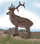

English - Kannada Dictionary
ಇಂಗ್ಲಿಷ್ - ಕನ್ನಡ ನಿಘಂಟು
- ಇಂಗ್ಲಿಷ್ ವರ್ಣಮಾಲೆಯ ಐದನೆಯ ಅಕ್ಷರ.
- (ಸಂಗೀತ) ಸ್ವರಾಷ್ಟಕದ ಮೂರನೆಯ ಸ್ವರ (‘ಗ’, ಗಾಂಧಾರ).
- (ಲಾಯ್ಡ್ ಕಂಪನಿ ದಾಖಲೆ ಪುಸ್ತಕಗಳಲ್ಲಿ) ಎರಡನೆಯ ತರಗತಿಯ ಹಡಗು.
- ಸ್ವಾಭಾವಿಕ ಲಾಗರಿತಮ್ನಲ್ಲಿ ಉಪಯೋಗವಾಗುವ ಆಧಾರ ಪರಿಮಾಣ, ಸುಮಾರು 2.7183
- east(ern).
- Egyptian (£ E).
- Engineering (M. I. Mech. E. ಮೊದಲಾದವು).
c, f, h, p, q, s, t ಗಳನ್ನು ಬಿಟ್ಟು ಉಳಿದ ವ್ಯಂಜನಗಳ ಹಿಂದೆ ಮತ್ತು ‘ರಹಿತ’ ಎಂಬರ್ಥದ ಗುಣವಾಚಕಗಳಲ್ಲಿ (ಉದಾಹರಣೆಗೆ ecaudate ಬಾಲರಹಿತ) $^1$ex- ಎಂಬ ಪೂರ್ವಪ್ರತ್ಯಯದ ರೂಪ.
each.
(ಎರಡು ಯಾ ಹೆಚ್ಚಿನವುಗಳ ನಡುವೆ ಬಿಡಿಬಿಡಿಯಾಗಿ ಪರಿಗಣಿಸಿದ) ಪ್ರತಿ; ಪ್ರತಿಯೊಂದರ; ಪ್ರತಿಯೊಬ್ಬನ(ಳ); ಒಂದೊಂದರ; ಒಬ್ಬೊಬ್ಬನ(ಳ): each man has two votes ಪ್ರತಿಯೊಬ್ಬನಿಗೂ ಎರಡು ಓಟುಗಳಿವೆ. we have two votes each ನಮ್ಮಲ್ಲಿ ಪ್ರತಿಯೊಬ್ಬನಿಗೂ ಎರಡು ಓಟುಗಳಿವೆ. each is worse than the one before ಪ್ರತಿಯೊಂದೂ ಅದರ ಹಿಂದಿನದಕ್ಕಿಂತ ಕೆಟ್ಟದಾಗಿದೆ.
each and every ಒಂದೊಂದೂ; ಪ್ರತಿಯೊಂದೂ.
ಪ್ರತಿಯೊಂದೂ; ಪ್ರತಿಯೊಬ್ಬನೂ(ಳೂ); ಒಂದೊಂದೂ; ಒಬ್ಬೊಬ್ಬನೂ(ಳೂ): the sides of two triangles are equal each to each ಎರಡು ತ್ರಿಕೋಣಗಳ ಜವಾಬಾಗಿರುವ ಭುಜಗಳು ಒಂದಕ್ಕೊಂದು ಸಮವಾಗಿವೆ.
- each other ಪರಸ್ಪರರ; ಒಂದು ಇನ್ನೊಂದನ್ನು; ಒಬ್ಬ ಇನ್ನೊಬ್ಬನನ್ನು ಯಾ ಒಬ್ಬಳು ಇನ್ನೊಬ್ಬಳನ್ನು: they hate each other ಅವರು ಪರಸ್ಪರ ದ್ವೇಷಿಸುತ್ತಾರೆ; ಪ್ರತಿಯೊಬ್ಬನೂ ಉಳಿದವರನ್ನು ದ್ವೇಷಿಸುತ್ತಾನೆ. they wore each other’s hats ಅವರು ಪರಸ್ಪರ ಟೋಪಿಗಳನ್ನು ಹಾಕಿಕೊಂಡರು; ಅವರಲ್ಲಿ ಒಬ್ಬೊಬ್ಬನೂ ಇನ್ನೊಬ್ಬನ ಟೋಪಿಯನ್ನು ಹಾಕಿಕೊಂಡ.
- each way (ಬ್ರಿಟಿಷ್ ಪ್ರಯೋಗ) (ಪಣದ ವಿಷಯದಲ್ಲಿ) ಕುದುರೆ ಗೆಲ್ಲುವುದಾಗಿ ಮತ್ತು ಮೊದಲ (ಬ್ರಿಟಿಷ್ ಪ್ರಯೋಗ) ಮೂರು ಯಾ (ಅಮೆರಿಕನ್ ಪ್ರಯೋಗ) ಎರಡು ಸ್ಥಾನಗಳಲ್ಲಿ ಬರುವುದೆಂದು ಬಾಜಿ ಕಟ್ಟುವುದು.
- ಕಟ್ಟಾಸೆಯುಳ್ಳ; ತೀವ್ರ ಅಭಿಲಾಷೆಯ; ಅತ್ಯಾಸಕ್ತಿಯ; ಕಡು ಹಂಬಲದ.
- ತವಕಿಸುವ; ಆತುರವುಳ್ಳ; ಉತ್ಸಾಹಿ; ಉತ್ಸುಕ; ಕುತೂಹಲದಿಂದ ಕೂಡಿದ.
- (ಭಾವಾವೇಶಗಳ ವಿಷಯದಲ್ಲಿ) ಕಡು; ಬಲು; ತೀವ್ರ; ತೀಕ್ಷ್ಣ; ಗಾಢ; ಪ್ರಬಲ; ಉತ್ಕಟ.
- (ಪ್ರಾಚೀನ ಪ್ರಯೋಗ) (ಗಾಳಿಯ ವಿಷಯದಲ್ಲಿ) ಕೊರೆಯುವ; ಚಳಿಯಾದ; ಶೈತ್ಯದ.
(ಆಡುಮಾತು) ಅತಿ ಅಸೂಯೆಯ ಮನುಷ್ಯ; ತುಂಬಾ ಹೊಟ್ಟೆಕಿಚ್ಚಿನ ವ್ಯಕ್ತಿ.
- ಕಟ್ಟಾಸೆಯಿಂದ; ತೀವ್ರ ಅಭಿಲಾಷೆಯಿಂದ.
- ತವಕದಿಂದ; ಆತುರದಿಂದ; ಉತ್ಸಾಹದಿಂದ.
- ತೀಕ್ಷ್ಣವಾಗಿ; ಗಾಢವಾಗಿ; ತೀವ್ರವಾಗಿ; ಉತ್ಕಟವಾಗಿ.
- ಕಟ್ಟಾಸೆ; ತೀವ್ರ ಅಭಿಲಾಷೆ; ಅತ್ಯಾಸಕ್ತಿ.
- ತವಕ; ಅತುರ; ಅತ್ಯುತ್ಸಾಹ; ಅತ್ಯುತ್ಸುಕತೆ.
- ತೀಕ್ಷ್ಣತೆ; ಗಾಢತೆ; ತೀವ್ರತೆ; ಉತ್ಕಟತೆ.
- ಹದ್ದು; ಗರುಡ (ಪಕ್ಷಿ); ಗೃಧ್ರ.
- ಧ್ರಾತಿ; ಹದ್ದಿನ ಚಿತ್ರ ಯಾ ಅತಿ:
- (ಮುಖ್ಯವಾಗಿ ಚರಿತ್ರೆ) ರೋಮನ್ ಯಾ ಹ್ರೆಂಚ್ ಸೈನ್ಯದ ಲಾಂಛನ.
- ಹದ್ದು ಮೇಜು; ಚರ್ಚಿನಲ್ಲಿ ಓದುವಾಗ ಗ್ರಂಥಗಳನ್ನಿಡುವ ಹದ್ದಿನ ಆಕಾರದ ನಿಲುಮೇಜು.
- (ಮುಖ್ಯವಾಗಿ ಅಮೆರಿಕನ್ ಪ್ರಯೋಗ ಸಂಯುಕ್ತ ಸಂಸ್ಥಾನಗಳ) ಚಿಹ್ನೆ ಯಾ ಲಾಂಛನ.
- (ಗಾಲ್ ಆಟದಲ್ಲಿ) ಚೆಂಡನ್ನು ಗುಳಿಗೆ ಬೀಳಿಸಲು ಎರಡು ಹೊಡೆತಗಳು ಬೇಕಾಗಿರುವ ಗುಳಿ.
- (ಅಮೆರಿಕನ್ ಪ್ರಯೋಗ) ಹತ್ತು ಡಾಲರಿನ ನಾಣ್ಯ.
- ಹದ್ದಿನ ಕಣ್ಣು; ಧ್ರಷ್ಟಿ; ತೀಕ್ಷ್ಣಷ್ಟಿ; ದೂರದೃಷ್ಟಿ; ಚುರುಕು ನೋಟ.
- ತೀಕ್ಷ್ಣಷ್ಟಿಯುಳ್ಳವನು.
- ಎಚ್ಚರ; ಜಾಗರೂಕತೆ.
ಹದ್ದಿನ ಕಣ್ಣಿನ; ತೀಕ್ಷ್ಣಷ್ಟಿಯುಳ್ಳ; ಚುರುಕು ನೋಟದ.
ಹದ್ದುಗೂಬೆ; ತಲೆಯ ಮೇಲೆ ಕೊಂಬಿನಂಥ ದೊಡ್ಡ ಗರಿಗಳುಳ್ಳ ಯೂರೋಪಿನ ದೊಡ್ಡ ಗೂಬೆ, ಯಾ ಬ್ಯೂಬೋ ಕುಲದ ಯಾವುದೇ ಗೂಬೆ.
ಮರಿಹದ್ದು; ಹದ್ದಿನ ಮರಿ.
(ಮುಖ್ಯವಾಗಿ ಹಂಬರ್, ಟ್ರೆಂಟ್ ಮತ್ತು ಸೆವರ್ನ್ ನದೀಮುಖಗಳಲ್ಲಿ) ಭರತದ ಅಲೆ; ಉಬ್ಬರವಿಳಿತಗಳನ್ನು ಉಂಟುಮಾಡುವ ಅಲೆ.
(-aean, -eian ಸಹ) ಯಾವುದೋ ವಸ್ತು, ವ್ಯಕ್ತಿ, ಗುಣಗಳಿಗೆ ಸೇರಿದ, ಅಂಥ, ಅಂಥ ಗುಣವುಳ್ಳ ಎಂಬ ಅರ್ಥಗಳ ಗುಣವಾಚಕ ಮತ್ತು ನಾಮವಾಚಕಗಳನ್ನು ರಚಿಸುವ ಉತ್ತರಪ್ರತ್ಯಯ: Aristotelean, antipodean, empyrean, Epicurean, European, Herculean.
errors and omissions excepted.
- ಕಿವಿ; ಕರ್ಣ; ಶ್ರೋತ್ರ; ಶ್ರವಣೇಂದ್ರಿಯ (ಮುಖ್ಯವಾಗಿ ಹೊರಭಾಗ).
- ಶ್ರವಣ ಶಕ್ತಿ; ಶಬ್ದಗ್ರಹಣಶಕ್ತಿ; ನಾದಜ್ಞಾನ; ನಾದ ಸಂವೇದನೆ: an ear for music ಸಂಗೀತಕ್ಕೆ ಕಿವಿ; ಸಂಗೀತಜ್ಞಾನ.
- ಶ್ರವಣ; ಕೇಳ್ಮೆ; ಕೇಳುವಿಕೆ.
- ಗಮನ; ಲಕ್ಷ್ಯ.
- ಕಿವಿಯಾಕಾರದ ವಸ್ತು, ಮುಖ್ಯವಾಗಿ ಹೂಜಿಯ ಹಿಡಿ.
- a word in your ears ಕಿವಿಮಾತು; ಗುಟ್ಟುಮಾತು; ಪಿಸುಮಾತು; ಕಿವಿಯಲ್ಲಿ, ಗುಟ್ಟಾಗಿ, ಅಂತರಂಗದಲ್ಲಿ — ಒಂದು ಮಾತು.
- be all ears ಮೈಯೆಲ್ಲಾ ಕಿವಿಯಾಗಿರು; ಮನಸ್ಸಿಟ್ಟು ಆಲಿಸು; ಕಿವಿಗೊಟ್ಟು ಕೇಳು.
- bring (storm, hornet’s nest, etc.) about one’s ears ಬಿರುಗಾಳಿ ಮೇಲೆರಗುವಂತೆ ಮಾಡಿಕೊ; ಕಣಜಗಳನ್ನು ಎಬ್ಬಿಸಿ ಇಲ್ಲದ ಫಜೀತಿ, ತೊಂದರೆ ಮಾಡಿಕೊ; ಇಲ್ಲದ ಅಪಾಯ ಮೈಮೇಲೆ ತಂದುಕೊ.
- ears $^2$burn.
- ear to the ground ಗಾಳಿಸುದ್ದಿ ಯಾ ಅಭಿಪ್ರಾಯಗಳ ಒಲವಿನ ಬಗೆಗೆ ಎಚ್ಚರಿಕೆ ಯಾ ಜಾಗರೂಕತೆ.
- give ear ಕಿವಿಗೊಡು; ಆಲಿಸಿ ಕೇಳು; ಮನಸ್ಸಿಟ್ಟು, ಗಮನವಿಟ್ಟು – ಕೇಳು.
- give one’s ears (ಯಾವುದೇ ವಸ್ತುವಿಗೆ, ಯಾವುದನ್ೇ ಮಾಡಲು) ಯಾವುದೇ ತ್ಯಾಗವನ್ನಾದರೂ ಮಾಡು: I would give my ears (ಒಂದು ಕಾರ್ಯಕ್ಕಾಗಿ, ವಸ್ತುವಿಗಾಗಿ) ಏನು ಬೇಕಾದರೂ ಕೊಟ್ಟೇನು; ಎಷ್ಟು ತ್ಯಾಗವನ್ನಾದರೂ ಮಾಡಿಯೇನು.
- have person’s ear ಒಬ್ಬನ ಪ್ರೀತಿ, ವಿಶ್ವಾಸ, ನಂಬಿಕೆ, ಅನುಗ್ರಹ — ಸಂಪಾದಿಸು: he has his master’s ear ಅವನು ಹೇಳಿದಂತೆ ಅವನ ಯಜಮಾನ ಕೇಳುತ್ತಾನೆ; ಯಜಮಾನನ ಕಿವಿ ಅವನ ಕೈಯಲ್ಲಿದೆ.
- head over ears = ನುಡಿಗಟ್ಟು \((12)\).
- in (at) one ear and out (at) the other ಒಂದು ಕಿವಿಯನ್ನು ಹೊಕ್ಕು ಇನ್ನೊಂದು ಕಿವಿಯಲ್ಲಿ ಹೋಗುತ್ತದೆ; ಯಾವ ಪರಿಮಾಣವನ್ನೂ ಉಂಟುಮಾಡುವುದಿಲ್ಲ.
- out on one’s ear ಅಪಮಾನಕರವಾಗಿ ತಿರಸ್ಕರಿಸಿದ ಯಾ ಕಡೆಗಣಿಸಿದ.
- over head and ears (ಸಾಲ, ಪ್ರೇಮ, ಮೊದಲಾದವುಗಳಲ್ಲಿ) ಇಳಿಯ ಮುಳುಗಿ; ಪೂರ್ತಿ ಮುಳುಗಿ: over head and ears in debt ಮೈಯೆಲ್ಲಾ ಸಾಲದಲ್ಲಿ ಮುಳುಗಿ.
- $^1$play by ear.
- $^2$prick up one’s ear.
- set (persons) by the ears ತರಲೆ ಎಬ್ಬಿಸು; (ಜನರಲ್ಲಿ) ಮನಸ್ತಾಪ ಹುಟ್ಟಿಸು; ಕಿತಾಪತಿ ಮಾಡು; ಕಿತ್ತಾಟ ಹಚ್ಚು; ಜಗಳ ಹುಟ್ಟಿಸು.
- to be set by the ears ಮನಸ್ತಾಪಕ್ಕೆ ಒಳಗಾಗಿ.
- turn a deaf ear.
- up to the ears (ಆಡುಮಾತು) ಕಿವಿಯವರೆಗೂ ಮುಳುಗಿ; (ಒಳಸಂಚು, ಸಾಲ, ಕೆಲಸ, ಮೊದಲಾದವುಗಳಲ್ಲಿ) ಬಹಳ ಆಳವಾಗಿ ಸಿಕ್ಕಿಹಾಕಿಕೊಂಡು ಯಾ ಮುಳುಗಿ.
- wet behind the ears ಅಪಕ್ವವಾದ; ಅನನುಭವಿಯಾದ; ಅನುಭವವಿಲ್ಲದ.
- with a flea in his ear.
ಕಿವಿನೋವು; ಕಿವಿ ಪೋಟು.
- ಕಿವಿಯ (ದ್ರವ) ಔಷಧಿ.
- ಲೋಲಾಕು, ಜುಮುಕಿ, ಮೊದಲಾದವು.
(ಅಂಗರಚನಾಶಾಸ್ತ್ರ) ಕಿವಿಪೊರೆ; ಕರ್ಣಪಟಲ; ಕಿವಿತಮಟೆ; ಹೊರಕಿವಿಗೂ ಮಧ್ಯಕಿವಿಗೂ ನಡುವೆ ಇರುವ, ಶಬ್ದವನ್ನು ಗ್ರಹಿಸಿ ಕಂಪಿಸುವ, ತೆಳುವಾದ ಪೊರೆ.
- ಕಿವಿಗಳುಳ್ಳ; (ಮುಖ್ಯವಾಗಿ ಗೊತ್ತಾದ ಆಕಾರದ) ಕಿವಿಗಳಿರುವ: long eared ನೀಳಗಿವಿಯ; ಉದ್ದನೆಯ ಕಿವಿಯುಳ್ಳ.
- ಕಿವಿಯಂತೆ ಚಾಚಿದ; ಉದ್ದನೆಯ ಗರಿ ಯಾ ಜುಟ್ಟು ಇರುವ: an eared owl ನೀಳಜುಟ್ಟಿನ ಗೂಬೆ; ಉದ್ದನೆಯ ಜುಟ್ಟಿನ ಗೂಬೆ.
- ಚಾಚುಗಿವಿ ಗುರಾಣಿ; ಮೇಲಿನ ಮೂಲೆಗಳಲ್ಲಿ ಚೂಪಾಗಿ ಚಾಚಿಕೊಂಡಿರುವ ವಂಶಲಾಂಛನವುಳ್ಳ ಗುರಾಣಿ.
- (ಸಸ್ಯವಿಜ್ಞಾನ) (ನಿರ್ದಿಷ್ಟ ಜಾತಿಯ ಧಾನ್ಯದ) ಹೊಡೆ ಇರುವ; ತೆನೆ ಬಿಟ್ಟ; ಕದಿರು ಬಿಟ್ಟ: golden eared grain ಹೊಂದೆನೆ; ಹೊಂಬಣ್ಣದ ಕಾಳಿನ ಹೊಡೆ.
(ಆಡುಮಾತು)
- ಕಿವಿಭರ್ತಿ; ಕಿವಿ ತುಂಬುವಷ್ಟು ಮಾತು, ಸಮಾಚಾರ, ಬುದ್ದಿವಾದ ಮೊದಲಾದವು.
- ಕಟುಟೀಕೆ; ತೀವ್ರ ಖಂಡನೆ; ಪ್ರಬಲ ನಿಂದೆ ಯಾ ದೂಷಣೆ.
(ನೌಕಾಯಾನ) ಕಿವಿದಾರ; ಹಾಯಿ ಪಟದ ಮೇಲ್ಮೂಲೆಯನ್ನು ಕೂವೆ ಮರದ ಅಡ್ಡಕ್ಕೆ ಬಿಗಿಯುವ (ಹಲವು ಹಗ್ಗಗಳಲ್ಲಿ) ಸಣ್ಣ — ಹಗ್ಗ, ಮಿಣಿ.
(ಸ್ತ್ರೀಲಿಂಗ countess) ಅರ್ಲ್; ‘ಮಾರ್ಕ್ವಿಸ್’ ಹಾಗೂ ‘ವೈಕೌಂಟ್’ ಪದವಿಗಳ ಮಧ್ಯವರ್ತಿ ಪದವಿಯ ಶ್ರೀಮಂತ.
ಅರ್ಲ್ಗಿರಿ; ಅರ್ಲನ ಆಧಿಪತ್ಯ ಯಾ ಪದವಿ.
- ಕಿವಿಯಿಲ್ಲದಿರುವ; ಕಿವಿಯಿಲ್ಲದ; ಕರ್ಣರಹಿತ.
- (ಸಂಗೀತದ ವಿಷಯದಲ್ಲಿ) ಕಿವಿಯಿಲ್ಲದ; ಸ್ವರನಾದಗಳನ್ನು ಗ್ರಹಿಸದ; ಸಂಗೀತ ಜ್ಞಾನವಿಲ್ಲದ; ಸ್ವರಜ್ಞಾನವಿಲ್ಲದ; ನಾದ ಸಂವೇದನೆಯಿಲ್ಲದ.
ನಾಮವಾಚಕಮುಂಚಿತವಾಗಿರುವಿಕೆ; ಶೀಘ್ರವಾಗಿರುವಿಕೆ.
(ಬ್ರಿಟಿಷ್ ಪ್ರಯೋಗ) ಅರ್ಲ್ ಮಾರ್ಷಲ್; ಕಾಲೇಜ್ ಆಹ್ ಆರ್ಮ್ಸ್ ಯಾ ವಂಶಲಾಂಛನ ಸಂಸ್ಥೆಯ ಮುಖ್ಯಾಧಿಕಾರಿ, ಅಧ್ಯಕ್ಷ.
- ಮುಂಚಿನ; ಹೊತ್ತಿಗೆ ಮುಂಚಿನ; ಮೊದಲಿನ; ಬೇಗನೆಯ; ಮುಂಚಿತವಾದ: an early visit ಹೊತ್ತಿಗೆ ಮುಂಚಿನ ಭೇಟಿ. early risers ಬೆಳಿಗ್ಗೆ ಬೇಗ ಯಾ ಹೊತ್ತಿಗೆ ಮುಂಚೆ ಏಳುವವರು.
- ಮುಂಬೆಳೆಯುವ; ಕಾಲಕ್ಕೆ ಮುಂಚೆ ಬಿಡುವ: early peaches ಮುಂಬೆಳೆ ಪೀಚ್ ಹಣ್ಣುಗಳು; ಕಾಲಕ್ಕೆ ಮುಂಚೆ ಬಿಟ್ಟ ಪೀಚ್ ಹಣ್ಣುಗಳು.
- (ಕಾಲ, ಅವಧಿ, ಬೆಳವಣಿಗೆ, ಮೊದಲಾದವುಗಳ) ಹತ್ತಿರದ; ಸಮೀಪದ: fix an early date ಒಂದು ಹತ್ತಿರದ ದಿನವನ್ನು ಗೊತ್ತುಮಾಡು.
- ಮೊದಲ(ನೆಯ); ಆದಿ; ಆರಂಭದ; ಶುರುವಿನ: the early part of the century ಶತಮಾನದ ಆದಿಭಾಗ. the early spring ವಸಂತದ ಆದಿಭಾಗ. the early morning ಪ್ರಾತಃಕಾಲದ ಆರಂಭ; ಮುಂಜಾನೆ.
- ಪ್ರಾಚೀನ; ಪುರಾತನ; ಆದಿಕಾಲದ: early man ಆದಿಮಾನವ. early art form ಪ್ರಾಚೀನ ಕಲಾರೂಪ.
- at the earliest ಬಹಳ ಮುಂಚೆ: on Wednesday at the earliest ಬಹಳ ಮುಂಚೆ ಎಂದರೆ ಬುಧವಾರ (ಅಂದರೆ, ಅದಕ್ಕಿಂತ ಮುಂಚಿತವಾಗಿ ಅಲ್ಲ).
- one’s earliest convenience ಒಬ್ಬನಿಗೆ ಅನುಕೂಲವಾದಷ್ಟು ಯಾ ಸಾಧ್ಯವಾದಷ್ಟು ಬೇಗ; ಆದಷ್ಟು ಮುಂಚಿತವಾಗಿ.
keep early hours ಬೇಗ ಮಲಗಿ ಬೇಗ ಏಳು.
ಮೊದಲೇ; ಬೇಗನೆ; ಶೀಘ್ರವಾಗಿ; ಮುಂಚೆ; ಮುಂಚಿತವಾಗಿ: awoke early in the morning ಬೆಳಿಗ್ಗೆ ಹೊತ್ತಿಗೆ ಮುಂಚೆ ಎದ್ದ. the train arrived early ರೈಲು ಮುಂಚಿತವಾಗಿ ಬಂತು.
earlier on (later on ಎನ್ನುವಂತೆ)
- ಇನ್ನೂ ಮುಂಚೆಯೇ; ಮೊದಲೇ; ಹಿಂದೆಯೇ.
- ಆರಂಭದಲ್ಲಿಯೇ; ಶುರುವಿನಲ್ಲಿಯೇ; ಪ್ರಾರಂಭದ ಹಂತದಲ್ಲಿಯೇ: he realised earlier on that it was impossible ಅದು ಆಸಾಧ್ಯವೆಂದು ಅವನು ಪ್ರಾರಂಭದಲ್ಲಿಯೇ ತಿಳಿದುಕೊಂಡ.
(ಹಾಸ್ಯ ಪ್ರಯೋಗ) ಹೊತ್ತಿಗೆ ಮುಂಚೆ ಏಳುವವನು, ಬರುವವನು, ಮೊದಲಾದವು.
the early bird catches the worm ಬೇಗ ಏಳುವ ಹಕ್ಕಿಗೆ ಬೇಕಾದಷ್ಟು ಹುಳು ಹುಪ್ಪಟೆ; ಚುರುಕು ಮನುಷ್ಯನಿಗೆ ಬಯಸಿದ್ದು ಸಿಕ್ಕುತ್ತದೆ.
ಬೇಗ ಮುಚ್ಚುವಿಕೆ; ವಾರದಲ್ಲಿ ಒಂದು ನಿರ್ದಿಷ್ಟ ದಿನ ಅಂಗಡಿ ಮೊದಲಾದ ಉದ್ಯಮ ಕೇಂದ್ರಗಳನ್ನು ಮಧ್ಯಾಹ್ನವೇ ಮುಚ್ಚುವುದು.
- ಮುಂಚಿನ ದಿನಗಳು; ಪ್ರಾರಂಭದ ಕಾಲ.
- (ಯಾವುದೇ ಘಟನೆ ನಡೆಯುವುದು ಮೊದಲಾದವುಗಳ ವಿಷಯದಲ್ಲಿ) ಮುಂಚಿತವಾಗಿರುವುದು; ಕಾಲಕ್ಕೆ ಮೊದಲೇ ಆಗುವುದು.
ಮುಂಚಿನ ಬಾಗಿಲು; ಮುಂಚಿನ ಪ್ರವೇಶದ ಬಾಗಿಲು; ನಿಗದಿಯಾದ ಕಾಲಕ್ಕಿಂತ ಮುಂಚೆಯೇ ಹೆಚ್ಚು ಹಣ ವಸೂಲು ಮಾಡಿ, ಪ್ರೇಕ್ಷಕರನ್ನು ನಾಟಕ ಶಾಲೆಯ ಒಳಕ್ಕೆ ಬಿಡುವ ಬಾಗಿಲು.
(ವಾಸ್ತುಶಿಲ್ಪ) (ಆರಂಭಕಾಲದ ಚರ್ಚ್ ಕಟ್ಟಡಗಳ) ಆದಿಮ ಇಂಗ್ಲಿಷ್ ಶೈಲಿ; ಚೂಪಾದ ಕಮಾನುಗಳು, ಮೊನಚುಕಮಾನಿನ ಕಿಟಕಿಗಳು ಮತ್ತು ಸರಳವಾದ ಜಾಲರಿ ಕೆಲಸವನ್ನು ಒಳಗೊಂಡ, 13ನೆ ಶತಮಾನದ ಇಂಗ್ಲಿಷ್ ಗಾತಿಕ್ ಶೈಲಿಯ ಪ್ರಾರಂಭದ ಹಂತ.
ಬೇಗ ಮಲಗುವಿಕೆ; ಮಾಮೂಲಿಗಿಂತ ಮೊದಲೇ ಮಲಗುವುದು.
ಮುನ್ನೆಚ್ಚರಿಕೆ; ವಿಮಾನ ದಾಳಿ ಮೊದಲಾದವುಗಳ ಸಂದರ್ಭದಲ್ಲಿ ಮೊದಲೇ ಕೊಡುವ ಎಚ್ಚರಿಕೆ.
- ಕಿವಿಗುರುತು; ಯಾರಿಗೆ ಸೇರಿದ್ದೆಂದು ತೋರಿಸಲು ಕುರಿ ಮೊದಲಾದವುಗಳ ಕಿವಿಯ ಮೇಲೆ ಮಾಡುವ ಗುರುತು.
- (ರೂಪಕವಾಗಿ) ಮಾಲಿಕ ಮುದ್ರೆ; ಸ್ವಾಮ್ಯ ಮುದ್ರೆ; ಸ್ವಾಮ್ಯ ಚಿಹ್ನೆ; ಒಡೆತನದ ಗುರುತು; ಯಾವುದೇ ವಸ್ತುವಿನ ಮೇಲೆ ಹಾಕುವ ಒಡೆತನದ ಗುರುತು.
- ಕುರಿಗೆ ಮುದ್ರೆ ಯಾ ಗುರುತು ಹಾಕು.
- (ರೂಪಕವಾಗಿ) ಮೀಸಲಿಡು; ಯಾವುದಾದರೂ ಖಚಿತ ಉದ್ದೇಶಕ್ಕಾಗಿ ಹಣ ಮೊದಲಾದವನ್ನು ಮೀಸಲಾಗಿಡು.
ಕಿವಿಕಾಪು; ಕಿವಿಕವಚ; ಕಿವಿರಕ್ಷೆ, ಶೀತಗಾಳಿ, ಶಬ್ದ, ಮೊದಲಾದವುಗಳಿಂದ ಕಿವಿಗಳನ್ನು ರಕ್ಷಿಸಲು ಬಳಸುವ ಸಾಧನ.
- (ಮನುಷ್ಯ, ಕಾರ್ಯ, ನಡತೆ, ಮೊದಲಾದವುಗಳ ವಿಷಯದಲ್ಲಿ)ಗಳಿಸು; ಸಂಪಾದಿಸು; ಅರ್ಜಿಸು; ಶ್ರಮಕ್ಕೆ ಯಾ ಯೋಗ್ಯತೆಗೆ ಪ್ರತಿಫಲವಾಗಿ ಪಡೆ.
- (ನಿಂದೆ, ಆಕ್ಷೇಪ, ಅಪಾಯ, ಮೊದಲಾದವುಗಳನ್ನು) ತಂದುಕೊ; ಮೇಲೆ ಎಳೆದುಕೊ.
- (ಆದಾಯ ಯಾ ಲಾಭವಾಗಿ) ಪಡೆ; ಗಳಿಸು; ಸಂಪಾದಿಸು.
- (ಬೇಸ್ಬಾಲ್) ಎದುರಾಳಿಯ ಸಹಾಯವಿಲ್ಲದೆ ರನ್ನುಗಳನ್ನುಗಳಿಸು, ಪಡೆ.
- (ಉದ್ದೇಶ, ಪ್ರಯತ್ನ, ಮೊದಲಾದವುಗಳ ವಿಷಯದಲ್ಲಿ) ಶ್ರದ್ಧಾವಂತ; ಶ್ರದ್ಧಾಪೂರ್ವಕವಾದ; ಮನಃಪೂರ್ವಕವಾದ; ಆಸಕ್ತ; ಅಸಡ್ಡೆಯಿಲ್ಲದ.
- (ಆಪೇಕ್ಷೆ ಮೊದಲಾದವುಗಳ ವಿಷಯದಲ್ಲಿ) ತೀವ್ರ; ಕಟ್ಟಕ್ಕರೆಯ; ತೀವ್ರಾಸಕ್ತಿಯ.
ಶ್ರದ್ಧೆ; ಆಸಕ್ತಿ: in (real) earnest
- ಶ್ರದ್ಧಾಯುಕ್ತವಾದ; ಶ್ರದ್ಧೆಯಿಂದ ಕೂಡಿದ; ತಮಾಷೆಯದಲ್ಲದ.
- ಶ್ರದ್ಧಾಯುಕ್ತವಾಗಿ; ಶ್ರದ್ಧೆಯಿಂದ ಕೂಡಿ; ತಮಾಷೆಯದಾಗಿರದೆ.
- (ಕರಾರನ್ನು ಢಪಡಿಸುವುದು ಮೊದಲಾದವಕ್ಕಾಗಿ ಭಾಗಶಃ ಪಾವತಿ ಮಾಡಿದ) ಮುಂಗಡ ಹಣ; ಅಗಾವು; ಸಂಚಕಾರ.
- ಮುನ್ನರಿಕೆ; ಮುನ್ಸೂಚನೆ; ಪೂರ್ವಲಕ್ಷಣ; ಪೂರ್ವಸೂಚನೆ; ಮೊದಲ — ಸುಳಿವು, ಸೂಚನೆ: is in (an) earnest of what is to come ಮುಂದೆ ಬರುವುದರ ಪೂರ್ವಸೂಚನೆ.
- ಶ್ರದ್ಧೆಯಿಂದ; ಶ್ರದ್ಧಾಪೂರ್ವಕವಾಗಿ; ಮನಃಪೂರ್ವಕವಾಗಿ; ಆಸಕ್ತಿಯಿಂದ; ಅಸಡ್ಡೆಮಾಡದೆ.
- ತೀವ್ರಾಸಕ್ತಿಯಿಂದ; ಕಟ್ಟಕ್ಕರೆಯಿಂದ.
ಶ್ರದ್ಧೆ; ಆಸಕ್ತಿ; ಶ್ರದ್ಧಾಪೂರ್ವಕವಾಗಿರುವಿಕೆ.
- (ಬಹುವಚನದಲ್ಲಿ)ಗಳಿಕೆ; ಅರ್ಜನೆ; ಸಂಪಾದನೆ; ಶ್ರಮಕ್ಕೆ ಯಾ ಯೋಗ್ಯತೆಗೆ ಪ್ರತಿಫಲವಾಗಿ ಪಡೆದ ಯಾ ಸಂಪಾದಿಸಿದ ಹಣ.
- ಸಂಪಾದನೆ; ಗಳಿಸುವಿಕೆ; ಆರ್ಜನೆ.

ಕಿವಿಹೋನು; ಕರ್ಣವಾಣಿ; ದೂರವಾಣಿ, ರೇಡಿಯೋ, ಮೊದಲಾದವುಗಳನ್ನು ಆಲಿಸಲು ಯಾ ಸರಿಯಾಗಿ ಕೇಳಲು, ಕಿವಿಗೆ ಸಿಕ್ಕಿಸಿಕೊಳ್ಳುವ ಸಲಕರಣೆ.
ಕರ್ಣಾಂಗ; ಶ್ರವಣಾಂಗ; ಶ್ರವಣ ಭಾಗ; ದೂರವಾಣಿ ಮೊದಲಾದವುಗಳಲ್ಲಿ ಕಿವಿಗೆ ಇಟ್ಟುಕೊಳ್ಳುವ ಭಾಗ.
ಕಿವಿ ಕೊರೆಯುವ; ಕರ್ಣಭೇದಕ; ಕರ್ಣಕಠೋರ; ಕಿವಿ ತೂತು ಬೀಳಿಸುವ.
ಕಿವಿಬೆಣೆ; ಕಿವಿ ಬಿರಡೆ; ಶೀತಗಾಳಿ, ನೀರು, ಯಾ ಶಬ್ದಗಳಿಂದ ಕಿವಿಯನ್ನು ರಕ್ಷಿಸಲು, ಕಿವಿಯಲ್ಲಿ ಇಡುವ ಮೇಣದ ತುಂಡು ಮೊದಲಾದವು.
ಕಿವಿಯುಂಗುರ; ಓಲೆ; ಹತ್ತಕಡಕು; ಹತ್ತೊಂಟಿ; ಕರ್ಣಕುಂಡಲ; ಒಂಟಿ; ಮುರವು.
ಕಿವಿ ಎಟಕು; ಕೇಳುದೂರ; ಶ್ರವಣದೂರ; ಕಿವಿಗೆ ಕೇಳಿಸುವಷ್ಟು ದೂರ: within earshot ಕಿವಿಗೆ ಎಟುಕುವಷ್ಟು ದೂರದಲ್ಲಿ.
(ಶಬ್ದದ ವಿಷಯದಲ್ಲಿ) ಕಿವಿಗಡಚುವ; ಕರ್ಣಕಠೋರ; ಕಿವಿ ಒಡೆಯುವ; ಕಿವಿ ತೂತುಬೀಳಿಸುವ; ಕಿವಿ ಕಿವುಡಾಗಿಸುವ; ಕಿವಿ ಹರಿಯುವಷ್ಟು ಜೋರಾದ ಯಾ ಗಟ್ಟಿಯಾದ.
- ನೆಲ; ಭೂಮಿ; ಧರೆ; ತಿರೆ: it fell to earth ಅದು ನೆಲಕ್ಕೆ ಬಿತ್ತು.
- (ಬಹುವಚನ ಸಹ) (ನೆಲಗರಡಿ, ನರಿ, ಮೊದಲಾದವುಗಳ) ಬಿಲ.
- ಒಣನೆಲ.
- (ಆಕಾಶಕ್ಕೆ ವಿರುದ್ಧವಾಗಿ, ಸಾಗರಗಳನ್ನೊಳಗೊಂಡಂತೆ) ಭೂಮಿ; ಭೂತಲ.
- (Earth) ಭೂಗ್ರಹ; ಭೂಮಂಡಲ.
- ಭೂಲೋಕ; ಥಿವಿ; ಮರ್ತ್ಯಲೋಕ; ಮಾನವ ಅಸ್ತಿತ್ವಕ್ಕೆ ಭವಿಷ್ಯದ ಸ್ಥಳಗಳಾದ ಸ್ವರ್ಗಲೋಕ ಯಾ ನರಕಗಳಿಗೆ ವಿರುದ್ಧವಾಗಿ ಈಗ ಅವನು ವಾಸಿಸುವ ಲೋಕ.
- (ಬಹುವಚನದಲ್ಲಿ) ಮಣ್ಣು; ಬಂಡೆ, ಮರಳು ಅಲ್ಲದ್ದು.
- (ಬಹುವಚನದಲ್ಲಿ) (ರಸಾಯನವಿಜ್ಞಾನ) ಭಸ್ಮ; ರಸವಾದಿಗಳು ಧಾತುವೆಂದು ತಿಳಿದಿದ್ದ, ಸುಲಭವಾಗಿ ಅಪಕರ್ಷಿಸಲಾಗದ ಲೋಹದ ಆಕ್ಸೈಡು: alkaline earths ಕ್ಷಾರೀಯ ಭಸ್ಮಗಳು.
- (ಬ್ರಿಟಿಷ್ ಪ್ರಯೋಗ) (ಬಹುವಚನದಲ್ಲಿ) (ವಿದ್ಯುದ್ವಿಜ್ಞಾನ) ಭೂಸಂಪರ್ಕ:
- ವಿದ್ಯುತ್ತು ಭೂಮಿಗೆ ಹರಿದುಹೋಗುವಂತೆ ಯಾವುದೇ ಸಲಕರಣೆಯನ್ನು ತಂತಿಯಿಂದ ಭೂಮಿಗೆ ಸೇರಿಸುವುದು.
- ಅಂತಹ ತಂತಿ.
- (ಆಡುಮಾತು) ಭಾರಿ ಮೊತ್ತ; ಪ್ರಪಂಚ; ಜಗತ್ತು: let it cost the earth, I am ready to pay ಇಡೀ ಪ್ರಪಂಚದಷ್ಟೇ ಬೆಲೆಯಾಗಲಿ, ನಾನು ತೆರಲು ಸಿದ್ದ.
- come back to earth ಭೂಮಿಗೆ ಬಾ; ವಾಸ್ತವಿಕ ಪರಿಸ್ಥಿತಿಗೆ ಹಿಂದಿರುಗು ಯಾ ಮತ್ತೆ ಬಾ; ಸತ್ಯಸಂಗತಿಗಳತ್ತ ತಿರುಗು.
- gone to earth ಅವಿತುಕೊಂಡು; ಬಚ್ಚಿಟ್ಟುಕೊಂಡು.
- on earth ಭೂಮಿಯ ಮೇಲೆ ಎಲ್ೋ ಒಂದು ಕಡೆ ಇರುವ, ವಾಸಿಸುತ್ತಿರುವ: happiest man on earth ಭೂಮಿಯ ಮೇಲಿನ ಅತ್ಯಂತ ಸುಖ ಪುರುಷ. looked like nothing on earth ಭೂಮಿಯ ಮೇಲಿನ ಯಾವುದರ ರೀತಿಯೂ ಕಾಣುತ್ತಿಲ್ಲ.
- run to earth ದೀರ್ಘವಾದ ಅನ್ವೇಷಣೆಯ ತರುವಾಯ ಕಂಡುಹಿಡಿ; ಬಹಳ ಕಾಲ ಹುಡುಕಿದ ಮೇಲೆ ಹಿಡಿ, ಕಂಡುಹಿಡಿ.
- why on earth? ಏಕೆ ತಾನೇ? ಏಕಾದರೂ? ಯಾವ ಪುಣ್ಯಕ್ಕೆ, ಭಾಗ್ಯಕ್ಕೆ, ಪುರುಷಾರ್ಥಕ್ಕೆ? why on earth did he say so? ಯಾವ ಪುರುಷಾರ್ಥಕ್ಕೆ ಅವನು ಹಾಗೆ ಹೇಳಿದ? ಅವನು ಏಕಾದರೂ ಹಾಗೆ ಹೇಳಿದನೋ?
- (ಗಿಡಗಳ ಬೇರುಗಳನ್ನು) ಮಣ್ಣಿನಿಂದ ಮುಚ್ಚು; ಮಣ್ಣು ಹೊಡೆ; ಮಣ್ಣು ಏರಹಾಕು.
- (ನರಿಯನ್ನು) ಬಿಲಕ್ಕೆ ಓಡಿಸು; ಬಿಲ ಹೊಗಿಸು.
- (ಬ್ರಿಟಿಷ್ ಪ್ರಯೋಗ) (ವಿದ್ಯುದ್ವಿಜ್ಞಾನ) ಭೂಸಂಪರ್ಕಗೊಳಿಸು; ಭೂಸಂಪರ್ಕ ಕಲ್ಪಿಸು.
- (ನರಿಯ ವಿಷಯದಲ್ಲಿ) ಬಿಲ ಹೊಗು; ಬಿಲ ಸೇರಿಕೊ.
- (ಪ್ರಾಣಿ ಮೊದಲಾದವುಗಳ ವಿಷಯದಲ್ಲಿ) (ನೆಲದಡಿಯಲ್ಲಿ ಬಿಲ, ಗುಹೆ, ಮೊದಲಾದವುಗಳಲ್ಲಿ) ಬಚ್ಚಿಟ್ಟುಕೊ; ಅವಿತುಕೊ; ಅಡಗಿಕೊ.
- ಮರ್ತ್ಯ; ಮನುಷ್ಯಜಾತಿಯ.
- (ಪುರಾಣ) ಭೂಜಾತ; ಭೂಮಿಯಿಂದ ಹುಟ್ಟಿದ.
- ಭೂಮಿಯತ್ತ ಹೊರಟ: earth-bound astronaut ಭೂಮಿಯತ್ತ ಹೊರಟ ಖಗೋಳಯಾತ್ರಿ.
- (ರೂಪಕವಾಗಿ ಸಹ) ಭೂಮಿಗೆ ಅಂಟಿಕೊಂಡ; ಭೂಬದ್ಧ; ಪ್ರಾಪಂಚಿಕ.
(ಬ್ರಿಟಿಷ್ ಪ್ರಯೋಗ) ಮಣ್ಣು ಕಕ್ಕಸ್ಸು; ಶೌಚದ ನಂತರ ಮಲವನ್ನು ಮಣ್ಣಿನಿಂದ ಮುಚ್ಚುವ ಕಕ್ಕಸು.
(ವಿದ್ಯುದ್ವಿಜ್ಞಾನ) ಭೂವಿದ್ಯುತ್ತು; ಭೂಗಾಮಿ ವಿದ್ಯುತ್ತು; (ಮುಖ್ಯವಾಗಿ ಯಾವುದೇ ಸಲಕರಣೆಯಲ್ಲಿರಬಹುದಾದ ದೋಷದ ಕಾರಣ) ಭೂಮಿಗೆ ಹರಿದು ಹೋಗುವ ವಿದ್ಯುತ್ತು.
- ಮಣ್ಣಿನಿಂದ ಮಾಡಿದ; ಣ್ಮಯ.
- ಸುಟ್ಟ ಜೇಡಿಮಣ್ಣಿನಿಂದ ಮಾಡಿದ; ಬೆಂದ ಆವೆ ಮಣ್ಣಿನ; ಸುಟ್ಟ ಕೊಜೆ ಮಣ್ಣಿನ.
- ಸುಟ್ಟ ಜೇಡಿಮಣ್ಣಿನ (ಮುಖ್ಯವಾಗಿ ಒರಟೊರಟಾಗಿರುವ) ಪಾತ್ರೆ (ಮೊದಲಾದವುಗಳು).
- ಸುಟ್ಟ ಜೇಡಿಮಣ್ಣು.
- (ಪಾತ್ರೆ ಮೊದಲಾದವುಗಳ ವಿಷಯದಲ್ಲಿ) ಸುಟ್ಟ ಜೇಡಿಮಣ್ಣಿನಿಂದ ಮಾಡಿದ.
- ಸುಟ್ಟ ಜೇಡಿಮಣ್ಣಿನ.
ಭೂದೇವ; (ಭೂಮಿಯ ಸಾರ, ಫಲ, ಸದ್ಧಿಗಳಿಗೆ ಕಾರಣವಾದ) ಉರ್ವರದೇವತೆ.
- ಪಾರ್ಥಿವತ್ವ; ಮಣ್ಣುತನ; ಭೂಮಿಯ, ಮಣ್ಣಿನ ಗುಣಗಳನ್ನು ಹೊಂದಿರುವಿಕೆ.
- ಜಡತೆ.
- ಐಹಿಕತೆ; ಲೌಕಿಕತೆ; ಪ್ರಾಪಂಚಿಕತೆ.
- ಒರಟುತನ; ನಯವಿಲ್ಲದಿರುವಿಕೆ.
- ಅಸಭ್ಯತೆ; ಮರ್ಯಾದೆಯಿಲ್ಲದಿರುವಿಕೆ.
(ಖಗೋಳ ವಿಜ್ಞಾನ) ಭೂಕಾಂತಿ; ಭೂಪ್ರಕಾಶ; ಭೂಮಿಯಿಂದ ಪ್ರತಿಫಲಿತವಾಗಿ ಚಂದ್ರನ ಕತ್ತಲೆ ಭಾಗದ ಮೇಲೆ ಬೀಳುವ ಸೂರ್ಯನ ಮಂದಪ್ರಕಾಶ.
- ಪಾರ್ಥಿವತೆ; ಭೌಮಿಕತೆ; ಭೂಸಂಬಂಧ ಹೊಂದಿರುವಿಕೆ.
- ಪ್ರಾಪಂಚಿಕತೆ; ಐಹಿಕತೆ.
ಭೂನಿವಾಸಿ; ಮರ್ತ್ಯ.
- ಭೂಮಿಯ; ಭೌಮಿಕ; ಭೂಸಂಬಂಧವಾದ.
- ಭೂಲೋಕದ; ಇಹಲೋಕದ; ಐಹಿಕ; ಲೌಕಿಕ; ಪ್ರಾಪಂಚಿಕ.
- no earthly chance (ಆಡುಮಾತು) ಅಸಂಭಾವ್ಯ; ತೀರಾ ಅಸಂಭವ.
- no earthly reason (ಆಡುಮಾತು) ಯಾವುದೊಂದೂ ಕಾರಣವಿಲ್ಲ.
- no earthly use (ಆಡುಮಾತು) ಕೆಲಸಕ್ಕೆ ಬಾರದ್ದು; ಶುದ್ಧ ನಿಷ್ಪ್ರಯೋಜಕ.
- not an earthly (ಬ್ರಿಟಿಷ್ ಪ್ರಯೋಗ) (ಅಶಿಷ್ಟ) ಪೂರ್ತಿ ಅಸಂಭಾವ್ಯ; ತೀರಾ ಅಸಂಭವ; ಅವಕಾಶವೇ ಇಲ್ಲ.
- (ಪುರಾಣ) ಭೂದೇವಿ; ಭೂಮಿತಾಯಿ.
- (ರೂಪಕವಾಗಿ) ಭೋಗಾಸಕ್ತಿಯ ಮತ್ತು ಮಾಸ್ವಭಾವದ ಹೆಂಗಸು.
ಚ್ಚಾಲಕ; ಅರ್ತ್ಮೂವರ್; ಭಾರಿಪ್ರಮಾಣದಲ್ಲಿ ಮಣ್ಣನ್ನು ತೋಡಲು, ತಳ್ಳಲು ಯಾ ಸಾಗಿಸಲು ಬಳಸುವ ಯಂತ್ರ.
- ನೆಲಬೀಜ; ಗೆಡ್ಡೆಗಳನ್ನು ಬಿಡುವ ಹಲವಾರು ಗಿಡಗಳಲ್ಲೊಂದು, ಮುಖ್ಯವಾಗಿ ಛತ್ರಿಯ ಆಕಾರದ ಹೂಗೊಂಚಲನ್ನು ಬಿಡುವ, ಕೋನಪೋಡಿಯಮ್ ಮೇಜಸ್ ಕುಲಕ್ಕೆ ಸೇರಿದ ಕಾಡುಗಿಡ.
- ಅದರ ಗೆಡ್ಡೆ.
- = peanut.
- ಭೂಕಂಪ; ನೆಲಗುಡುಗು; ನೆಲನಡುಕ; ನೆಲ ಅದಿರಿಕೆ; ಭೂಮಿಯ ದೋಷಗಳಿಂದ ಯಾ ಅಗ್ನಿಪರ್ವತದ ಚಟುವಟಿಕೆಯಿಂದ ಭೂಮಿಯ ಮೇಲ್ಮೈನಲ್ಲಾಗುವ ಕಂಪನ.
- (ರೂಪಕವಾಗಿ) (ಸಾಮಾಜಿಕ ಯಾ ಇತರ) ಕ್ಷೋಭೆ; ತಳಮಳ; ಬೇಗುದಿ; ಕಲಕು.
ಭೂ ವಿಜ್ಞಾನಗಳು; ಭೂಮಿಗೆ ಯಾ ಅದರ ಭಾಗಕ್ಕೆ ಸಂಬಂಧಿಸಿದ ಭೂವಿಜ್ಞಾನ, ಭೂಗೋಳವಿಜ್ಞಾನ, ಸಾಗರ ವಿಜ್ಞಾನ, ಪವನಶಾಸ್ತ್ರ, ಮೊದಲಾದ ವಿಜ್ಞಾನಗಳು.
(ರೂಪಕವಾಗಿ) ವಿಪ್ಲವಕಾರಿ; ಕ್ಷೋಭೆಯುಂಟುಮಾಡುವ; ಪ್ರಕ್ಷುಬ್ಧಗೊಳಿಸುವ; ಉಗ್ರ ಪರಿಣಾಮದ.
ನೆಲನಡುಕ; ಲಘು ಭೂಕಂಪ.
ನೆಲದತ್ತ; ಭೂಮಿಯತ್ತ; ಭೂಮಿಗಭಿಮುಖವಾಗಿ; ನೆಲದ ಕಡೆಗೆ.
(ಖನಿಜಶಾಸ್ತ್ರ) ಭೂಮೇಣ; ಖನಿಜ ರೂಪದಲ್ಲಿ ಸಿಕ್ಕುವ, ಮೇಣದಂತಹ ಹೈಡ್ರೊಕಾರ್ಬನ್ನುಗಳ ಮಿಶ್ರಣ.
- (ಸೇನೆಯ ರಕ್ಷಣೆ, ಕೋಟೆ ಕಟ್ಟುವುದು, ರಸ್ತೆ ಮಾಡುವುದು, ಮೊದಲಾದವಲ್ಲಿ ಹಾಕುವ) ಮಣ್ಣುದಿಬ್ಬ; ಮಣ್ಣುದಂಡೆ; ಮಣ್ಣಿನ ಏರಿ.
- ಮಣ್ಣುಕೆಲಸ; ಮಟ್ಟಿಕಾಮಗಾರಿ.
- ಮಣ್ಣುದಂಡೆ ಹಾಕುವುದು; ಮಣ್ಣು ಏರಿ ಹಾಕುವುದು.
- ಮಣ್ಣುಹುಳು; ಎರೆಹುಳು.
- (ರೂಪಕವಾಗಿ) ಡೊಗ್ಗು ಸಲಾಮು ಹಾಕುವವನು; ನೆಲದವರೆಗೆ ಕುಗ್ಗಿ ಯಾ ಬಗ್ಗಿ ಅನುಸರಣೆ ಮಾಡುವವನು; ಕಾಲು ನೆಕ್ಕುವವನು; ಅತ್ಮಗೌರವವಿಲ್ಲದವನು.
- ಭೂಮಿಯ; ಮಣ್ಣಿನ; ಮಣ್ಣಿನಂಥ; ಪಾರ್ಥಿವ.
- (ರೂಪಕವಾಗಿ) ಕೇವಲ ಐಹಿಕವಾದ; ಪ್ರಾಪಂಚಿಕ; ವ್ಯಾವಹಾರಿಕ; ಲೌಕಿಕ.
- ಒರಟಾದ; ನಯವಿಲ್ಲದ; ಅಸಂಸ್ಕೃತ: his earthy egoism ಅವನ ಒರಟು ಅಹಂಭಾವ.
- ಅಸಭ್ಯ; ಅಶ್ಲೀಲ; ಬಂಡು; ಮರ್ಯಾದೆಯಿಲ್ಲದ: earthy jokes ಅಸಭ್ಯ ಹಾಸ್ಯ.
ಕಿವಿ ಚೆನ್ನಾಗಿ ಕೇಳಿಸದವರ ಉಪಯೋಗಕ್ಕಾಗಿ ಮಾಡಿದ
ಗುಗ್ಗೆ; ಕುಗ್ಗಿ; ಕೂಗಣಿ; ಕಿವಿಯೊಳಗಿನ ಮಲ.
ಕರ್ಣಕೀಟ; ಗುಗ್ಗುರು; ತಗಣಿಗಂಡ; ಕಿವಿಯ ಮೂಲಕ ತಲೆಯನ್ನು ಹೊಗುವುದೆಂದು ಹಿಂದೆ ನಂಬಲಾಗಿದ್ದ, ಡರ್ಮಾಪ್ಟರ ಗಣದ, ತುದಿಯಲ್ಲಿ ದೊಡ್ಡ ದೊಡ್ಡ ಚಿಮುಟದಂಥ ಅಂಗಗಳುಳ್ಳ ಹುಳು.
- (ಅಮೆರಿಕನ್ ಪ್ರಯೋಗ) ಚಿಕ್ಕ ಸಾವಿರಗಾಲು ಕೀಟ.
(ಪ್ರಾಚೀನ ಪ್ರಯೋಗ) ಕಿವಿಕಚ್ಚು; ಕಿವಿಯಲ್ಲಿ ತುಂಬು; ಒಬ್ಬನಿಗೆ ವಿಷಯ ಗುಟ್ಟಾಗಿ ತಿಳಿಸಿ ಪ್ರಚೋದಿಸು.
- ನೋವು ಯಾ ತೊಂದರೆ ಇಲ್ಲದಿರುವುದು.
- ಅನಿರ್ಬಂಧತೆ.
- ಸಮಾಧಾನ; ಸ್ವಾಸ್ಥ್ಯ.
- ಹಾಯಿ; ಸುಖ; ಆರಾಮ; ನಿರಾತಂಕತೆ; ನಿಶ್ಚಿಂತತೆ; ಅರ್ಥಿಕ ಮೊದಲಾದ ಕಷ್ಟವಿಲ್ಲದಿರುವುದು: he lives a life of ease with a limited income ಮಿತವಾದ ವರಮಾನದಿಂದಲೇ ಅವನು ಸುಖವಾದ ಜೀವನ ನಡೆಸುತ್ತಾನೆ.
- ನೋವಿನ ಶಮನ, ಪರಿಹಾರ: the medicine brought almost instant ease ಆ ಔಷಧಿಯಿಂದ ಕೊಡಲೇ ಪರಿಹಾರ ಸಿಕ್ಕಿತು.
- ಸರಾಗ; ಸುಗಮತೆ; ಸಲೀಸು; ಸುಕರತೆ; ಸುಲಭತೆ; ಅನಾಯಾಸತೆ; ನಿರಾಯಾಸತೆ.
- at ease (ಸೈನ್ಯ)
- ಹೆಜ್ಜೆ ಬೇರ್ಪಡಿಸಿ; ಪಾದ ಸಡಿಲಿಸಿ; ಹಾಯಾಗಿ; ಆರಾಮವಾಗಿ: stand at ease ಆರಾಮವಾಗಿ ನಿಲ್ಲು.
- ಹೀಗೆ ಹೆಜ್ಜೆ ಬೇರ್ಪಡಿಸಿ ನಿಲ್ಲುವ ನಿಲವು.
- at one’s ease ನಿರಾತಂಕವಾಗಿ; ಆರಾಮವಾಗಿ; ಹಾಯಾಗಿ.
- with ease ಸರಾಗವಾಗಿ; ಸಲೀಸಾಗಿ; ಕಷ್ಟವಿಲ್ಲದೆ.
- ill at ease.
- put (or set) person at his ease ಸಂಕೋಚಪಡದಂತೆ ಮಾಡು; ಅತಿ ಔಪಚಾರಿಕವಾಗಿರದಂತೆ ಮಾಡು.
- set person at ease ಆತಂಕ ಕಳೆ; ಕಳವಳ ನಿವಾರಿಸು; ಚಿಂತೆ ಪರಿಹರಿಸು; ನಿಶ್ಚಿಂತೆಯಿಂದಿರುವಂತೆ ಮಾಡು.

ನೋವು, ತೊಂದರೆ, ಮೊದಲಾದವನ್ನು — ತಪ್ಪಿಸು, ಪರಿಹರಿಸು, ನೀಗು, ಕಳೆ.
- (ತನಗೆ ಯಾ ಇನ್ನೊಬ್ಬನಿಗೆ) ಮನಶ್ಯಾಂತಿ ತಂದುಕೊ, ಕೊಡು; ಕ್ಲೇಶವಿಲ್ಲದಂತೆ ಮಾಡು, ಮಾಡಿಕೊ; ಶಮನಮಾಡು; ಶಮನಗೊಳಿಸು; ಮನಸ್ಸಿನ ಭಾರ ಇಳಿಸು.
- (ಹಾಸ್ಯ ಪ್ರಯೋಗ) (ಒಬ್ಬನ ದುಡ್ಡಿನ ಚೀಲ ಮೊದಲಾದವನ್ನು) ಕದಿ; ಲಪಟಾಯಿಸು.
- (ರೂಪಕವಾಗಿ ಸಹ) (ಬಹಳ ಬಿಗಿಯಾಗಿರುವುದನ್ನು) ಸಡಿಲಗೊಳಿಸು; ಸರಾಗಗೊಳಿಸು; ಸರಿಪಡಿಸು.
- (ನೌಕಾಯಾನ) (ಹಗ್ಗ, ಹಾಯಿಪಟ, ಮೊದಲಾದವನ್ನು) ಸಡಿಲಮಾಡು; ಸಡಿಲಗೊಳಿಸು.
- (ಮಳೆ, ನೋವು, ಚಿಂತೆ, ತೊಂದರೆ, ಮೊದಲಾದವು) ಕಡಮೆಯಾಗು; ಹಗುರವಾಗು: a hot bath often eases and relaxes ಬಿಸಿನೀರಿನ ಸ್ನಾನದಿಂದ ಅನೇಕವೇಳೆ (ದೇಹ) ಹಗುರವಾಗುತ್ತದೆ. pain is easing ನೋವು ಕಡಮೆಯಾಗುತ್ತಿದೆ.
- (ಷೇರು ಮೊದಲಾದವುಗಳ ವಿಷಯದಲ್ಲಿ) ಬೆಲೆ ಇಳಿ; ಕಡಮೆಯಾಗು; ಮಂದಿಯಾಗು; ಸೋವಿಯಾಗು.
ease off (or up) = $^2$ ease ಅಕರ್ಮಕ ಕ್ರಿಯಾಪದ \((1)\).
- ease nature ಮೂತ್ರ ಯಾ ಮಲ ವಿಸರ್ಜನೆ ಮಾಡು.
- ease oneself = ನುಡಿಗಟ್ಟು \((1)\).
(ಪ್ರಾಚೀನ ಪ್ರಯೋಗ)
- ಸುಖವಾದ; ಹಿತವಾದ; ಹಾಯಾದ.
- ಆರಾಮದ; ವಿಶ್ರಾಂತಿಯ; ವಿರಾಮದ; ಬಿಡುವಿನ.
- ಆಲಸ್ಯದ; ಜಡ; ಸೋಮಾರಿಯಾದ; ಆಲಸ.
(ಪ್ರಾಚೀನ ಪ್ರಯೋಗ)
- ಸುಖವಾಗಿ; ಹಾಯಾಗಿ; ಹಿತವಾಗಿ.
- ಆರಾಮವಾಗಿ; ಬಿಡುವಾಗಿ; ವಿಶ್ರಾಂತಿಕರವಾಗಿ.
- ಆಲಸ್ಯದಿಂದ; ಸೋಮಾರಿತನದಿಂದ.
(ಪ್ರಾಚೀನ ಪ್ರಯೋಗ)
- ಸುಖಕರವಾಗಿರುವುದು; ಹಾಯಾಗಿರುವುದು.
- ಆರಾಮ; ವಿಶ್ರಾಂತಿ.
- ಜಡತೆ; ಆಲಸ್ಯ; ಸೋಮಾರಿತನ.
ಚಿತ್ರಾಧಾರ; ಚಿತ್ರನಿಲುವು; ಚಿತ್ರ, ಕಪ್ಪುಹಲಗೆ, ಮೊದಲಾದವಕ್ಕೆ ಆಧಾರವಾಗಿರುವ, ಸಾಮಾನ್ಯವಾಗಿ ಮರದ ಚೌಕಟ್ಟು.
ಬಿಡುವಿಲ್ಲದ ಅವಿಶ್ರಾಂತ; ಅವಿರತ; ಎಡೆಬಿಡದ.
(ನ್ಯಾಯಶಾಸ್ತ್ರ) ಅನುಭೋಗದ ಹಕ್ಕು; ಮಾಮೂಲು ಹಕ್ಕು; ಒಬ್ಬನಿಗೆ ಇನ್ನೊಬ್ಬರ ಆಸ್ತಿ, ಜಮೀನು, ಅದರಲ್ಲಿರುವ ದಾರಿ, ಮೊದಲಾದವುಗಳ ಮೇಲಿರುವ ಹಕ್ಕು.
- (ಪ್ರಾಚೀನ ಪ್ರಯೋಗ) ಆನುಷಂಗಿಕ ಕಟ್ಟಡ; ಪುರವಣಿ ಕಟ್ಟಡ; (ಮುಖ್ಯಕಟ್ಟಡಕ್ಕೆ ಸೇರಿರುವಂತೆ ಕಟ್ಟಿರುವ) ಗುಡಿಸಲು ಮೊದಲಾದ ಹೆಚ್ಚಿನ ಕಟ್ಟಡ.
- (ಪ್ರಾಚೀನ ಪ್ರಯೋಗ) (ಬಿಕಟ್ಟು, ವೈಷಮ್ಯ, ಮೊದಲಾದವುಗಳ) ಉಪಶಮನ; ಪರಿಹಾರ; ನಿವಾರಣೆ: an easement of international tension ಅಂತರರಾಷ್ಟ್ರೀಯ ಬಿಕ್ಕಟ್ಟಿನ ಪರಿಹಾರ.
- ಹಾಯಾಗಿ; ಅನಾಯಾಸವಾಗಿ: he lives easily ಅವನು ಅನಾಯಾಸವಾಗಿ ಜೀವಿಸುತ್ತಾನೆ.
- ಸಲೀಸಾಗಿ; ಸರಾಗವಾಗಿ; ಧಾರಾಳವಾಗಿ: he speaks easily ಅವನು ಸರಾಗವಾಗಿ ಮಾತನಾಡುತ್ತಾನೆ.
- ಸುಲಭವಾಗಿ; ಕಷ್ಟವಿಲ್ಲದೆ: he solves the problem easily ಸಮಸ್ಯೆಯನ್ನು ಅವನು ಸುಲಭವಾಗಿ ಬಗೆಹರಿಸುತ್ತಾನೆ.
- ನಿಜಕ್ಕೂ; ನಿಸ್ಸಂದೇಹವಾಗಿ: he is easily the best boy ನಿಜಕ್ಕೂ ಅವನೇ ಎಲ್ಲರಿಗಿಂತ ಉತ್ತಮ ಹುಡುಗ.
- ಸುಖಕರತೆ; ಹಿತ; ನೆಮ್ಮದಿ; ಅನುಕೂಲತೆ: easiness of the journey ಪ್ರಯಾಣದ ಸುಖಕರತೆ.
- ದುತ್ವ; ಕೋಮಲ, ಕರುಣ — ಸ್ವಭಾವ: easiness of temper ಕೋಮಲ ಮನೋತ್ತಿ.
- ಅಕ್ಲಿಷ್ಟತೆ; ಸರಳತೆ: easiness of style ಶೈಲಿಯ ಸರಳತೆ.
- ಉಪೇಕ್ಷೆ; ಔದಾಸೀನ್ಯ; ಅನಾಸ್ಥೆ; ತಾಟಸ್ಥ್ಯ: foolish easiness ದಡ್ಡತನದ ಉಪೇಕ್ಷೆ.
- ಮೂಡಲಾಗಿ; ಮೂಡಣಕ್ಕೆ; ಮೂಡಲಿಗೆ; ಪೂರ್ವಾಭಿಮುಖವಾಗಿ; ಪೂರ್ವ ದಿಕ್ಕಿನಲ್ಲಿ; ಪೂರ್ವಕ್ಕೆ: went east ಪೂರ್ವದಿಕ್ಕಿನಲ್ಲಿ ಹೋದ.
- (ಯಾವುದೇ ಒಂದರಿಂದ) ಮೂಡಲಾಗಿ; ಪೂರ್ವಕ್ಕೆ.
- lie east and west ಪೂರ್ವಪಶ್ಚಿಮವಾಗಿ (ಇರು, ಬಿದ್ದಿರು).
- to the east (of) = $^1$east(2).
- ಮೂಡಲು; ಪೂರ್ವ (ದಿಕ್ಕು).
- (East) ಪ್ರಾಚ್ಯ; ಪೌರಸ್ತ್ಯ ಯಾ ಪೂರ್ವ ದೇಶಗಳು; ಯೂರೋಪಿಗೆ ಪೂರ್ವದಿಕ್ಕಿನಲ್ಲಿರುವ ದೇಶಗಳು.
- (ಚರ್ಚಿನ ಕಟ್ಟಡ ಪೂರ್ವಾಭಿಮುಖವಾಗಿರಲಿ, ಇಲ್ಲದಿರಲಿ) ಪೂಜಾವೇದಿಕೆಯಿರುವ ಚರ್ಚಿನ ತುದಿ, ಭಾಗ.
- (ದೇಶದ ಯಾ ಪಟ್ಟಣದ) ಪೂರ್ವಭಾಗ; ಮೂಡಲ ಭಾಗ.
- ಪೂರ್ವ ಯೂರೋಪಿನ ಕಮ್ಯುನಿಸ್ಟ್ ದೇಶಗಳು.
- (ಚರಿತ್ರೆ) ಅರ್ವಾಚೀನ ರೋಮನ್ ಸಾಮ್ರಾಜ್ಯದ ಪೂರ್ವಭಾಗ; ಪೂರ್ವ ರೋಮ್ ಸಾಮ್ರಾಜ್ಯ.
- ‘ಪೂರ್ವ’ (ವೆಂದು ಪರಿಗಣಿತವಾಗಿರುವ ಸ್ಥಾನದಲ್ಲಿ ಕುಳಿತುಕೊಳ್ಳುವ) ಇಸ್ಪೀಟು ಆಟಗಾರ.
- east by north ಪೂರ್ವಕ್ಕೂ ಪೂರ್ವ ಈಶಾನ್ಯಕ್ಕೂ ನಡುವಣ ದಿಕ್ಕು.
- east by south ಪೂರ್ವಕ್ಕೂ ಪೂರ್ವ ಆಗ್ನೇಯಕ್ಕೂ ನಡುವಣ ದಿಕ್ಕು.
- Far East ದೂರಪ್ರಾಚ್ಯ; ಚೀನಾ, ಜಪಾನ್, ಮೊದಲಾದ ದೇಶಗಳು.
- Middle East ಮಧ್ಯಪ್ರಾಚ್ಯ; ಮುಖ್ಯವಾಗಿ ಈಜಿಪ್ಟ್ನಿಂದ ಹಿಡಿದು ಇರಾನನ್ನೂ ಒಳಗೊಂಡ ದೇಶಗಳು.
- Near East ಸಮೀಪಪ್ರಾಚ್ಯ:
- = ಪದಗುಚ್ಛ \((4)\).
- (ಪ್ರಾಚೀನ ಪ್ರಯೋಗ) ತುರ್ಕಿ ಮತ್ತು ಬಾಲ್ಕನ್ ದೇಶಗಳು.
- the East (ಅಮೆರಿಕನ್ ಪ್ರಯೋಗ) ಮುಖ್ಯವಾಗಿ ಅಮೆರಿಕ ಸಂಯುಕ್ತ ಸಂಸ್ಥಾನದ ಈಶಾನ್ಯ ಭಾಗ.
ಮೂಡಲ; ಪೂರ್ವದ; ಪೂರ್ವದ ಕಡೆಗೆ ಇರುವ, ಹೋಗುತ್ತಿರುವ; ಪೂರ್ವವನ್ನು ತೋರಿಸುತ್ತಿರುವ.
ಮೂಡಲಿಗೆ ಹೋಗುತ್ತಿರುವ; ಪೂರ್ವದ ಕಡೆಗೆ ಪ್ರಯಾಣ ಮಾಡುತ್ತಿರುವ.
(ಬ್ರಿಟಿಷ್ ಪ್ರಯೋಗ) ಪೂರ್ವ ಲಂಡನ್; ಹಡಗು ಕಟ್ಟೆಗಳ ಪ್ರದೇಶವನ್ನೂ ಒಳಗೊಂಡ ಲಂಡನ್ ನಗರದ ಪೂರ್ವ ಪ್ರದೇಶ.
(ಬ್ರಿಟಿಷ್ ಪ್ರಯೋಗ) ಪೂರ್ವ ಲಂಡನ್ನಿವಾಸಿ; ಲಂಡನ್ ನಗರದ ಪೂರ್ವಭಾಗದಲ್ಲಿ ವಾಸಿಸುವವನು(ಳು).
- ಈಸ್ಟರ್ (ಹಬ್ಬ); (ಮಾರ್ಚ್ 21ನೇ ತಾರೀಖು ಯಾ ಅದರ ನಂತರ ಬರುವ ಹುಣ್ಣಿಮೆ ಯಾ ಮೊದಲನೆಯ ಭಾನುವಾರ ಆಚರಿಸುವ) ಕ್ರಿಸ್ತನ ಪುನರುತ್ಥಾನದ ಉತ್ಸವ.
- ಈಸ್ಟರ್ (ದಿನದಿಂದ ಆರಂಭವಾದ) ವಾರ.
ಈಸ್ಟರ್ ಮೊಟ್ಟೆಗಳು; ಈಸ್ಟರ್ ಹಬ್ಬದಲ್ಲಿ ಸ್ನೇಹಿತರಿಗೆ ಕೊಡುವ ಬಣ್ಣಬಣ್ಣದ ತಕ ಮೊಟ್ಟೆಗಳು, ಮೊಟ್ಟೆಯಾಕಾರದ ಸಿಹಿ ತಿಂಡಿಗಳು (ಮುಖ್ಯವಾಗಿ ಚಾಕಲೇಟ್) ಯಾ ಬೇಯಿಸಿದ ಮೊಟ್ಟೆಗಳು.
ಈಸ್ಟರ್ ದಿನದ ಹಿಂದಿನ ದಿನ.
- ಮೂಡಲಿಗೆ; ಪೂರ್ವದಿಕ್ಕಿಗೆ.
- ಮೂಡಲ ಕಡೆಯಲ್ಲಿ; ಪೂರ್ವದಿಕ್ಕಿನಲ್ಲಿ.
- ಮೂಡಲ; ಪೂರ್ವದಿಕ್ಕಿನ.
- (ಗಾಳಿಯ ವಿಷಯದಲ್ಲಿ) ಮೂಡಲಿಂದ ಬರುವ; ಪೂರ್ವದಿಕ್ಕಿನಿಂದ ಬೀಸುವ.
- ಮೂಡಲ ಭಾಗದ; ಮೂಡಲ ಭಾಗದಲ್ಲಿ ವಾಸಿಸುವ.
- ಪೂರ್ವದಿಕ್ಕಿಗಿರುವ; ಮೂಡಲಿಗಿರುವ; ಪೌರಸ್ತ್ಯ.
- (Eastern) ಪೂರ್ವ ದೇಶಗಳ; ಪ್ರಾಚ್ಯ ದೇಶಗಳ; ಪೌರಸ್ತ್ಯ ದೇಶಗಳ: Far Eastern ದೂರಪ್ರಾಚ್ಯದ. Middle Eastern ಮಧ್ಯಪ್ರಾಚ್ಯದ. Near Eastern ಸಮೀಪಪ್ರಾಚ್ಯದ.
- ಮೂಡಲಿನವ; ಮೂಡಲ ಸೀಮೆಯವನು; ಪೌರಸ್ತ್ಯ.
- ಈಸ್ಟರ್ನ್ ಯಾ ಗ್ರೀಕ್ ಚರ್ಚಿನ ಸದಸ್ಯ.
ಈಸ್ಟರ್ನ್ ಚರ್ಚು; ಗ್ರೀಕ್ ಚರ್ಚು; ಪ್ರಾಚ್ಯ ಚರ್ಚು; ಪೂರ್ವ ರೋಮನ್ ಯಾ ಬೈಸಾಂಟೈನ್ ಸಾಮ್ರಾಜ್ಯದ ಯಾವುದೇ ದೇಶಕ್ಕೆ ಸೇರಿದ ಚರ್ಚು.
ಪೂರ್ವ ಸಾಮ್ರಾಜ್ಯ; ಈಸ್ಟರ್ನ್ ಎಂಪೈರ್; ಕ್ರಿ.ಶ. 395ರ ನಂತರದ ಕಾನ್ಸ್ಟಂಟಿನೋಪಲ್ ರಾಜಧಾನಿಯಾಗಿದ್ದ, 476ರಲ್ಲಿ ಪಶ್ಚಿಮ ರೋಮನ್ ಸಾಮ್ರಾಜ್ಯದ ಪತನವಾದರೂ ಉಳಿದುಕೊಂಡು ಬಂದ ರೋಮನ್ ಸಾಮ್ರಾಜ್ಯದ ಪೂರ್ವಭಾಗ.
ಪೌರಸ್ತ್ಯ; ಮೂಡಲ ಸೀಮೆಯವ; ಪೂರ್ವ ಪ್ರದೇಶದಲ್ಲಿ (ಮುಖ್ಯವಾಗಿ ಅಮೆರಿಕದಲ್ಲಿ) ಹುಟ್ಟಿದವ ಯಾ ವಾಸಿಸುವವ.
ಪೂರ್ವಾರ್ಧಗೋಳ; ಏಷ್ಯ, ಆಹ್ರಿಕ, ಆಸ್ಟ್ರೇಲಿಯ ಮತ್ತು ಯೂರೋಪು ಇವುಗಳನ್ನೊಳಗೊಂಡ ಭೂಗೋಳದ ಪೂರ್ವಭಾಗ.
ಅತ್ಯಂತ ಪೂರ್ವದಿಕ್ಕಿನ.
ಪೂರ್ವ ಕಾಲಮಾನ; ಪೌರಸ್ತ್ಯ ಕಾಲಮಾನ; ಕೆನಡ ಮತ್ತು ಅಮೆರಿಕ ಯಾ ಪೂರ್ವ ಆಸ್ಟ್ರೇಲಿಯಗಳಲ್ಲಿ ಬಳಸುವ ಕಾಲಮಾನ.
ಈಸ್ಟರ್ ಕಾಣಿಕೆ; ಈಸ್ಟರ್ ದಿನದಂದು ಮಠದ ಕ್ರೈಸ್ತಪಾದ್ರಿಗೆ ಮಾಮೂಲಾಗಿ ನೀಡುವ (ಮಠದಲ್ಲಿ ವಸೂಲಾದ) ಹಣ.
(ಪ್ರಾಚೀನ ಪ್ರಯೋಗ) ಈಸ್ಟರ್ ದಿನ ಮತ್ತು ಮುಂದಿನ ದಿನಗಳು ಯಾ ವಾರಗಳು.
(ಚರಿತ್ರೆ) ಈಸ್ಟ್ ಇಂಡಿಯಮನ್; ಈಸ್ಟ್ ಇಂಡೀಸ್ ಜೊತೆ ವ್ಯಾಪಾರದಲ್ಲಿ ತೊಡಗಿದ್ದ ದೊಡ್ಡ ಹಡಗು.
- (ನೌಕಾಯಾನ) ಮೂಡಲದೂರ; ಪೂರ್ವದೂರ; ನೇರವಾಗಿ ಮೂಡಲ ದಿಕ್ಕಿನಲ್ಲಿ (ಹಡಗು) ಪ್ರಯಾಣ ಮಾಡಿದ ದೂರ.
- ಮೂಡಲ ದಿಕ್ಕು; ಪೂರ್ವ.
ಪೂರ್ವ ಈಶಾನ್ಯ; (ಮುಖ್ಯವಾಗಿ ದಿಕ್ಸೂಚಿಯಲ್ಲಿ) ಪೂರ್ವಕ್ಕೂ ಈಶಾನ್ಯಕ್ಕೂ ನಡುವಣ ದಿಕ್ಕು.
ಮೂಡಲಭಾಗ; ಪೂರ್ವ ಭಾಗ; ನ್ಯೂಯಾರ್ಕ್ ನಗರದ ಮ್ಯಾನ್ಹ್ಯಾಟನ್ ದ್ವೀಪದ ಪೂರ್ವಪ್ರದೇಶ.
ಪೂರ್ವ ಆಗ್ನೇಯ; ಪೂರ್ವಕ್ಕೂ ಆಗ್ನೇಯಕ್ಕೂ ನಡುವಣ ದಿಕ್ಕು.
ಮೂಡಲ ಕಡೆಯ; ಪೂರ್ವದಿಕ್ಕಿನಲ್ಲಿರುವ.
ಪೂರ್ವದಿಕ್ಕು ಯಾ ಪೂರ್ವದಿಕ್ಕಿನ ಪ್ರದೇಶ.
ಮೂಡಲಿಗೆ; ಪೂರ್ವದಿಕ್ಕಿಗೆ.
ಮೂಡಲಗಾಳಿ; ಪೂರ್ವಮಾರುತ; ಪೂರ್ವದಿಕ್ಕಿನಿಂದ ಬೀಸುವ ಗಾಳಿ.

- ಸುಖವಾದ; ಸ್ವಸ್ಥವಾದ; ಹಾಯಾದ; ಆರಾಮವಾದ.
- ಕಳವಳವಿಲ್ಲದ; ನಿಶ್ಚಿಂತ; ನಿರಾತಂಕ.
- ಸುಲಭವಾದ; ಸಲೀಸಾದ; ಸರಾಗವಾದ; ಕಷ್ಟವಲ್ಲದ: easy prey ಸುಲಭವಾಗಿ ಬಲಿಯಾಗುವ ವ್ಯಕ್ತಿ.
- ಸಂಕೋಚವಿಲ್ಲದ; ನಿಸ್ಸಂಕೋಚವಾದ.
- ಸರಳವಾದ; ಅತಿ ಕಟ್ಟು ನಿಟ್ಟಾಗಿರದ: easy manners ಸರಳವಾದ ನಡವಳಿಕೆ.
- ಸುಲಭನಮ್ಯ; ಸುಲಭವಾಗಿ — ಒಪ್ಪಿಸಲಾಗುವ, ಒಲಿಸಲಾಗುವ: a man of easy virtue (ಲಂಚ ಮೊದಲಾದ ಪ್ರಲೋಭನಕ್ಕೆ) ಸುಲಭವಾಗಿ ಬಗ್ಗುವ ವ್ಯಕ್ತಿ.
- (ಸರಕುಗಳ ವಿಷಯದಲ್ಲಿ) ಅಗ್ಗದ; ಸುಲಭವಾಗಿ ದೊರೆಯುವ.
- (ಮಾರುಕಟ್ಟೆ, ಪೇಟೆಗಳ ವಿಷಯದಲ್ಲಿ) ಹೆಚ್ಚು ಬೇಡಿಕೆಯಿಲ್ಲದ; ಗಿರಾಕಿ ಕಡಮೆಯಾದ; ಅಗ್ಗವಾದ; ಸೋವಿಯಾದ; ಭರಾಟೆ ಕುಗ್ಗಿದ; ಮಂದಿಯಾದ: the market is easy ಪೇಟೆ ಮಂದಿಯಾಗಿದೆ; (ಹೆಚ್ಚು ಬೇಡಿಕೆ ಇಲ್ಲದೆ) ಪೇಟೆಯಲ್ಲಿ (ವ್ಯಾಪಾರದ) ಭರಾಟೆ ಕಡಿಮೆಯಾಗಿದೆ.
- easy of access
- ಸುಲಭಸಾಧ್ಯ; ಸುಗಮ.
- ಸುಲಭಗಮ್ಯ: the present president is easy of access ಈಗಿನ ಅಧ್ಯಕ್ಷರು ಸುಲಭವಾಗಿ ಸಿಗುತ್ತಾರೆ.
- free and easy ಸಲೀಸಾದ; ಸರಳವಾದ; ಅತಿ ಕಟ್ಟು ನಿಟ್ಟಿಲ್ಲದ.
- easy circumstances ಅನುಕೂಲ ಸ್ಥಿತಿ; ಸದ್ಧಿ; ಐಶ್ವರ್ಯ.
- easy on the eye (ಆಡುಮಾತು) ನೋಡಲು ಸುಂದರವಾದ, ಅಂದವಾದ.
- I’m easy (ಆಡುಮಾತು) (ನನಗೆ ಉಭಯ ಪಕ್ಷಗಳ ಪೈಕಿ) ಯಾವ ಕಡೆಗೂ ಒಲವಿಲ್ಲ.
- woman of easy virute ನಡತೆಗೆಟ್ಟ ಹೆಂಗಸು; ವ್ಯಭಿಚಾರಿಣಿ.

- ಸುಲಭವಾಗಿ; ಸಲೀಸಾಗಿ; ಸರಾಗವಾಗಿ; ಧಾವಂತಪಡದೆ.
- ಕಳವಳವಿಲ್ಲದಂತೆ; ಕಾತರಗೊಳ್ಳದಂತೆ.
stand easy! (ಬ್ರಿಟಿಷ್ ಪ್ರಯೋಗ) (ಸೈನಿಕ ಕವಾಯತಿನ ಆಜ್ಞೆ) ಪೂರ್ಣ ಆರಾಮವಾಗಿ ನಿಲ್ಲಿಸಿ ಸಾಮಾನ್ಯ ಆರಾಮ ನಿಲುವಿನಿಂದ (stand at ease) ಪೂರ್ತಿ ಆರಾಮ ನಿಲುವಿಗೆ (stand easy) ಬನ್ನಿ.
- easy does it ಎಚ್ಚರಿಕೆಯಿಂದ ಯಾ ಜಾಗರೂಕತೆಯಿಂದ ಹೋಗು.
- go easy
- ಮಿತವ್ಯಯಿಯಾಗಿರು.
- ಜೋಕೆಯಿಂದಿರು; ಎಚ್ಚರಿಕೆಯಿಂದಿರು.
- take it easy ಆರಾಮವಾಗಿ ಇರು; ಎಚ್ಚರಿಕೆಯಿಂದ ಮುಂದುವರಿ; ಎಷ್ಟು ಅಗತ್ಯವೋ ಅಷ್ಟು ಮಾತ್ರ ಮಾಡು; ತೊಂದರೆ ತೆಗೆದುಕೊಳ್ಳಬೇಡ; ಧಾವಂತಪಡಬೇಡ; ಆತುರಪಡಬೇಡ.
ಸ್ವಲ್ಪ, ಅಲ್ಪ, ಲಘು — ವಿಶ್ರಾಂತಿ.
an easy ಚಲಿಸುವಾಗ ಸಿಕ್ಕುವ ಲಘು ವಿಶ್ರಾಂತಿ: the ship reached the port without easy ನಡುವೆ ಒಮ್ಮೆಯೂ ವಿಶ್ರಾಂತಿಯಿಲ್ಲದೆ ಹಡಗು ಬಂದರನ್ನು ಮುಟ್ಟಿತು.

(ಕವಾಯತು ಮೊದಲಾದವುಗಳನ್ನು ನಡೆಸುವ ಸಂದರ್ಭದಲ್ಲಿ ಆಜ್ಞೆಯಾಗಿ) ನಿಧಾನವಾಗಿ ನಡೆ!
easy all! (ಬ್ರಿಟಿಷ್ ಪ್ರಯೋಗ) (ಸಾಮಾನ್ಯವಾಗಿ ದೋಣಿ ನಡೆಸುವಲ್ಲಿ ಆಜ್ಞೆಯಾಗಿ) ನಿಲ್ಲು! ನಿಲ್ಲಿಸು!
ಆರಾಮ ಕುರ್ಚಿ; ಕೈಗಳಿರುವ ಮತ್ತು ಆರಾಮವಾಗಿ ಕುಳಿತುಕೊಳ್ಳುವಂತೆ ಮಾಡಿರುವ ಕುರ್ಚಿ.
- (ಕುದುರೆಯ ವಿಷಯದಲ್ಲಿ) ಸಲೀಸಾದ ನಡಗೆಯುಳ್ಳ.
- (ಮನುಷ್ಯನ ವಿಷಯದಲ್ಲಿ):
- ಸುಖಾಭಿಲಾಷಿ.
- ಆರಾಮವಾಗಿರುವ; ತೊಂದರೆ ತೆಗೆದುಕೊಳ್ಳದ.
- ಅತಿ ಕಟ್ಟುನಿಟ್ಟಾಗಿರದ; ಸಲೀಸಾದ.
- ಮೈಬಗ್ಗದ; ಆಲಸ; ಸೋಮಾರಿ.
(ಆಡುಮಾತು) ದಡ್ಡ; ಹೆಡ್ಡ; ತಿಳಿಗೇಡಿ.
ಅಗ್ಗದ ಹಣ; ಸುಲಭವಾಗಿ (ಮುಖ್ಯವಾಗಿ ಅನ್ಯಾಯದಿಂದ) ಸಿಕ್ಕಿದ, ದಕ್ಕಿದ ಹಣ.
(ಆಡುಮಾತು) ಸಿರಿ; ಐಶ್ವರ್ಯ; ಸದ್ಧಿ; ಅನುಕೂಲ ಸ್ಥಿತಿ.
ಉದಾರಿ; ಬಿಚ್ಚುಗೈನವ; ಸುಲಭವಾಗಿ ಹಣ ಕೊಡುವವನು.
- ತಿನ್ನು; ಅಗಿದು ನುಂಗು; ಭಕ್ಷಿಸು; ಕಬಳಿಸು.
- (ಪಾನೀಯವನ್ನು) ಕುಡಿ; ಸೇವಿಸು.
- (ರೂಪಕವಾಗಿ) ನಾಶಮಾಡು; ಪೂರ್ತಿ ತಿಂದುಹಾಕು; ನಷ್ಟಗೊಳಿಸು.
- (ತುಕ್ಕು ಹಿಡಿಯುವುದು ಮೊದಲಾದವುಗಳ ಮೂಲಕ) ತೂತುಮಾಡು; ರಂಧ್ರ ಬೀಳಿಸು.
- (ಕರ್ಮಣಿಪ್ರಯೋಗ) ತಿನ್ನು: the chips eat crisp ಉಪ್ಪೇರಿ ತಿನ್ನಲು ಗರಿಗರಿಯಾಗಿದೆ.
- ಊಟಮಾಡು; ಉಣ್ಣು: he eats at the hotel ಅವನು ಹೋಟೆಲಿನಲ್ಲಿ ಊಟಮಾಡುತ್ತಾನೆ.
- eat away (ರೂಪಕವಾಗಿ ಸಹ) ನಿಧಾನವಾಗಿ ಸವೆಸಿಬಿಡು; ಸ್ವಲ್ಪಸ್ವಲ್ಪವಾಗಿ — ಕೊರೆದುಬಿಡು, ಕೊರೆದುಹಾಕು; ಕ್ರಮೇಣ ತಿಂದುಹಾಕು: the iron bars are eaten away with rust ಕಬ್ಬಿಣದ ಸಲಾಕಿಗಳನ್ನು ತುಕ್ಕು ತಿಂದುಹಾಕುಬಿಟ್ಟಿದೆ, ಸವೆಸಿಬಿಟ್ಟಿದೆ.
- eat of (ಪ್ರಾಚೀನ ಪ್ರಯೋಗ) (ಸ್ವಲ್ಪಮಟ್ಟಿಗೆ, ಸ್ವಲ್ಪ) ತಿನ್ನು; ಸೇವಿಸು.
- eat out (ಮನೆಯಲ್ಲಿ ಅಲ್ಲದೆ ಬೇರೆ ಕಡೆ) ತಿನ್ನು; ಹೊರಗೆ ಊಟಮಾಡು.
- eat up
- (ರೂಪಕವಾಗಿ ಸಹ) ಪೂರ್ತಿ ತಿಂದುಬಿಡು; ತಿಂದು ಮುಗಿಸು.
- ಊಟ ಮುಗಿಸು.
- ತಿಂದು ಹಾಕು; ನಾಶಮಾಡು.
- (ರೂಪಕವಾಗಿ ಸಹ) ಹೀರು; ತುಂಬಿ ಹೋಗು; ಭರ್ತಿಯಾಗು; ಒಳಗೊಳ್ಳು: eaten up with pride ಜಂಬದಿಂದ ತುಂಬಿಹೋದ; ತಲೆ ತಿರುಗಿದ; ದುರಹಂಕಾರದ; ಗರ್ವೋದ್ಧತ.
- (ದೂರವನ್ನು) ವೇಗವಾಗಿ ಕ್ರಮಿಸು; ಶೀಘ್ರವಾಗಿ ಪ್ರಯಾಣಮಾಡು; ಬೇಗ ಬೇಗ ಹೋಗು.
- eat $^1$humble pie.
- eat into ತಿಂದುಹಾಕಲು ಶುರುಮಾಡು; ನಾಶ ಮಾಡಲು ಆರಂಭಿಸು.
- eat its head off (ಕುದುರೆ ಮೊದಲಾದ ಪ್ರಾಣಿಗಳ ವಿಷಯದಲ್ಲಿ) ಆಗುವ ಪ್ರಯೋಜನಕ್ಕಿಂತ ತಿಂಡಿ ತೀನಿ ವೆಚ್ಚ ಹೆಚ್ಚು; ಲಾಭಕ್ಕಿಂತ ಖರ್ಚು ವೆಚ್ಚ ಹೆಚ್ಚಾಗಿರು; ಹಾಗದ ಕೋಳಿ ಮುಪ್ಪಾಗದ ಕಾಳು ತಿಂದಿತು.
- eat one’s dinners = ನುಡಿಗಟ್ಟು \((6)\).
- eat one’s heart out ಮನಸ್ಸಿಗೆ ಹಚ್ಚಿಕೊಂಡು ಅತಿಯಾಗಿ ಕೊರಗುತ್ತಿರು, ಸದಾ ವ್ಯಥೆಪಡುತ್ತಿರು.
- eat one’s terms (ಬ್ರಿಟಿಷ್ ಪ್ರಯೋಗ) ವಕಿಲತ್ತಿಗಾಗಿ ಓದು, ವ್ಯಾಸಂಗ ಮಾಡು (ಮತ್ತು ಅದಕ್ಕಾಗಿ ಇನ್ಸ್ಆಹ್ ಕೋರ್ಟಿನಲ್ಲಿ ನಿಗದಿತ ಸಲ ಊಟಮಾಡು).
- eat one’s words ಆಡಿದ ಮಾತನ್ನು (ಅವಮಾನಕರ ರೀತಿಯಲ್ಲಿ) ಹಿಂತೆಗೆದುಕೊ, ನುಂಗಿಕೊ; ತನಗಾಗುವ ಅವಮಾನವನ್ನು ನುಂಗಿಕೊಂಡು ಹಿಂದೆ ಆಡಿದ್ದ ಮಾತನ್ನು ವಾಪಸ್ಸು ತೆಗೆದುಕೊ.
- eat out of person’s hand (ಒಬ್ಬನಿಗೆ) ಸಂರ್ಪೂಣ ಅಧೀನವಾಗಿರು; ಪೂರ್ತಿ ವಶವರ್ತಿಯಾಗಿರು; ಇನ್ನೊಬ್ಬನ ಕೈ ತುತ್ತು ತಿನ್ನು.
- eat (person) out of house and home ಮನೆಮಾರನ್ನೆಲ್ಲಾ ತಿಂದು ಹಾಕಿ (ವ್ಯಕ್ತಿಯನ್ನು) ನಾಶಮಾಡು; ತಿಂದು ತಿಂದು (ಒಬ್ಬನ) ಮನೆ ಹಾಳು ಮಾಡು.
- well, don’t eat me (ತೀವ್ರವಾಗಿ ಎದುರಾಡುತ್ತಿರುವವನಿಗೆ ಯಾ ಜೋರಾಗಿ ಪ್ರತಿವಾದ ಮಾಡುತ್ತಿರುವವನಿಗೆ ಉತ್ತರವಾಗಿ) ನೋಡು ನೋಡು, ನನ್ನ ತಿಂದುಹಾಕಬೇಡ; ಅಯ್ಯಾ, ನನ್ನನ್ನು ತಿನ್ನಬೇಡ.
- what’s eating you? (ಆಡುಮಾತು) ನಿನ್ನನ್ನು ಏನು ತಿನ್ನುತ್ತಿದೆ? ನಿನ್ನನ್ನು ಕಾಡುತ್ತಿರುವುದೇನು? ಏಕೆ ಕಿರಿಕಿರಿ ಪಡುತ್ತಿದ್ದೀಯೆ?
(ಸಾಮಾನ್ಯವಾಗಿ ಬಹುವಚನದಲ್ಲಿ) ತಿಂಡಿತಿನಿಸು; ತೀನಿ; ಖಾದ್ಯ; ಭಕ್ಷ್ಯಗಳು.
ತಿನ್ನಲು ಯೋಗ್ಯವಾದ; ತಿನ್ನಬಲ್ಲ; ತಿನ್ನತಕ್ಕ; ಖಾದ್ಯ.
- ತಿನ್ನುವವನು ಯಾ ತಿನ್ನುವ ಪ್ರಾಣಿ; ಭಕ್ಷಕ: he is a big eater ಅವನು ತುಂಬ ತಿನ್ನುವವನು; ಅವನೊಬ್ಬ ಹೊಟ್ಟೆಬಾಕ. meat eater ಮಾಂಸ ತಿನ್ನುವವನು; ಮಾಂಸಾಹಾರಿ.
- (ಬ್ರಿಟಿಷ್ ಪ್ರಯೋಗ) ಬೇಯಿಸದೆ ತಿನ್ನುವ ಹಣ್ಣು.
(ಆಡುಮಾತು) (ರೆಸ್ಟೊರಾಂಟ್ ಮೊದಲಾದ) ಉಪಾಹಾರ ಹ.
- ತಿನ್ನುವಿಕೆ; ತಿನ್ನುವುದು; ಅಗಿದು ನುಂಗುವಿಕೆ; ಭಕ್ಷಿಸುವಿಕೆ; ಭಕ್ಷಣ.
- ತಿಂದು ಹಾಕುವುದು; ತಿಂದು ಮುಗಿಸುವುದು; ನಾಶಗೊಳಿಸುವಿಕೆ.
- ತಿನ್ನಬಲ್ಲ; ತಿನ್ನಲು ಬರುವ; ಖಾದ್ಯ.
- ತಿನ್ನಲು ಬಳಸುವ, ಉಪಯೋಗಿಸುವ.
ಖಾನಾವಳಿ; ಹೋಟೆಲು; ಫಲಾಹಾರ ಮಂದಿರ; ತಿಂಡಿಯಂಗಡಿ; ಭೋಜನಗೃಹ.
(ಆಡುಮಾತು) (ಬಹುವಚನ) ಆಹಾರ; ತಿನಸುಗಳು; ತೀನಿಗಳು; ಖಾದ್ಯಗಳು.
- ಪರಿಮಳ ದ್ರವ್ಯ; ಸುಗಂಧದ್ರವ್ಯ.
- ನೀರಿನಂಥ ದ್ರವ.
- ನೀರು; ಜಲ.
(ಮೊದಲಿಗೆ ಹ್ರಾನ್ಸಿನ) ಕಲೋನ್ ಪಟ್ಟಣದಲ್ಲಿ ತಯಾರಾದ ಪರಿಮಳ ದ್ರವ್ಯ.
= Javelle water.
(ನೈಲ್ ನದಿಯ ನೀರಿನ ಬಣ್ಣವನ್ನು ಹೋಲುವುದೆಂದು ಭಾವಿಸಲಾದ) ಹಸಿರು ಬಣ್ಣ.
ಮದ್ಯ, ಮುಖ್ಯವಾಗಿ ಬ್ರಾಂದಿ.
ಸಕ್ಕರೆನೀರು; ನೀರು ಮತ್ತು ಸಕ್ಕರೆ.
(ಬಹುವಚನ) (ಮೇಲ್ಛಾವಣಿಯ ಮುಂದಕ್ಕೆ ಚಾಚಿರುವ) ಸೂರು; ಮುಂಜೂರು.
- (ಹಿಂದೆ) ಸೂರಿನ ಕೆಳಗೆ ನಿಂತು (ಗುಟ್ಟು ಮಾತನ್ನು) ಕದ್ದು ಕೇಳು.
- (ರೂಪಕವಾಗಿ) ಸೂರಾಲಿಸು; ಹೊಂಚು ಕೇಳು; ಗುಟ್ಟಿನ ಮಾತುಕತೆಯನ್ನು ಕದ್ದು ಕೇಳು.
(ಸಾಮಾನ್ಯವಾಗಿ ರೂಪಕವಾಗಿ) ಸೂರಾಲಿಸುವವನು; ಕದ್ದು ಕೇಳುವವನು; ಗುಟ್ಟು ಮಾತನ್ನು ಹೊಂಚಿಕೇಳುವವ.
- (ಸಮುದ್ರದ) ಉಬ್ಬರದ ನೀರಿನ ಇಳಿತ.
- ಇಳಿತ; ಇಳಿಗಾಲ; ಕ್ಷೀಣಗತಿ; ಅವನತಿ: at a low ebb ತುಂಬಾ ಹೀನ ಸ್ಥಿತಿಯಲ್ಲಿ; ಇಳಿಗಾಲದಲ್ಲಿ.
ebb and flow ಉಬ್ಬರವಿಳಿತ; ಏರಿಳಿತ; ಭರತ ಇಳಿತ.
- (ಉಬ್ಬರದ ನೀರು) ಹಿಂದೆ ಸರಿ; ಇಳಿ.
- ಕುಗ್ಗು; ಕ್ಷಯಿಸು; ಕ್ಷೀಣಿಸು.
- ಇಳಿಪ್ರವಾಹ; ಇಳಿತದ ಪ್ರವಾಹ.
- ಇಳಿಗಾಲ; ಅವನತಿ; ಕ್ಷೀಣಗತಿ; ಕ್ಷಯ.
- E ದೋಣಿ; ಶತ್ರುವಿನ ಅತಿವೇಗದ ಟಾರ್ಪೆಡೊ ಮೋಟಾರ್ ದೋಣಿ.
- (ಚರಿತ್ರೆ) 1939–45ರ ಯುದ್ಧದಲ್ಲಿ ಬಳಸಿದ ಟಾರ್ಪೆಡೊ ದೋಣಿ.
- ಕರಿಮರದಿಂದ, ಎಬನಿಯಿಂದ — ಮಾಡಿದ.
- ಎಬನಿಯಷ್ಟು ಕಪ್ಪಾದ; ಕಡುಗಪ್ಪಾದ.
ಗಂಧಕ ರಬ್ಬರು; ಗಂಧಕೀಕರಣ ಮಾಡಿದ ಗಡಸು ರಬ್ಬರು.
ಎಬನಿಮರದಂಥ ಕಪ್ಪು ಬಣ್ಣ ಹಾಕು; ಕರಿ ಬಣ್ಣವೂರಿಸು; ಕಪ್ಪು ಮೆರಗು ಕೊಡು.
- ಎಬನಿ; ಕರಿಮರ; ಉಷ್ಣವಲಯದ, ಮುಖ್ಯವಾಗಿ ಡಯಸ್ಪೈರಸ್ ಕುಲದ, ಮರ.
- ಇಂಥ ದಾರನ್ನು ಕೊಡುವ ಯಾವುದೇ ಮರ.
- ಇದನ್ನೇ ಹೋಲುವ ಇತರ ಮರಗಳು ಯಾ ಅವುಗಳ ದಾರುಗಳು.
- ಕಡುಗಪ್ಪುಬಣ್ಣ; ಗಾಢ ಷ್ಣವರ್ಣ; ಹೊಳೆಯುವ ಕಡು ಕಪ್ಪು ಬಣ್ಣ.
(ವಿರಳ ಪ್ರಯೋಗ) ಕುಡಿದಿರುವಿಕೆ; ಅಮಲು; ಮತ್ತು; ನಶೆ; ನಿಷಾ.
(ವಿರಳ ಪ್ರಯೋಗ)
- ಕುಡಿದ; ಮತ್ತೇರಿದ.
- ಕುಡಿಯುವ — ಸ್ವಭಾವದ, ಚಾಳಿಯುಳ್ಳ, ಚಟವುಳ್ಳ.
- ಕುದಿಯುವಿಕೆ; ಉಕ್ಕುವಿಕೆ.
- ಉತ್ಸಾಹ; ಹುರುಪು.
- ಕುದಿಯುವ; ಉಕ್ಕುವ.
- ಉತ್ಸಾಹವುಳ್ಳ; ಹುರುಪುಳ್ಳ.
ಉತ್ಸಾಹದಿಂದ; ಹುರುಪಿನಿಂದ; ಉತ್ಸಾಹಭರಿತನಾಗಿ.
- ಕುದಿತ.
- ಉಕ್ಕೇರಿ ಬರುವುದು; ಉಕ್ಕು.
- (ರೂಪಕವಾಗಿ) (ಉದ್ರೇಕ, ಯುದ್ಧ, ಮೊದಲಾದವುಗಳ ವಿಷಯದಲ್ಲಿ) ಹಠಾತ್ ಸಿಡಿತ; ಹಠಾತ್ ಆಸ್ಫೋಟನೆ.
European Community.
(ಪರಿಸರವಿಜ್ಞಾನ) ಈಕಾಡ್:
- ಪರಿಸರವ್ಯತ್ಯಸ್ತ ಜೀವಿ; ಪರಿಸರದ ಪರಿಣಾಮದಿಂದ ಬದಲಾವಣೆಗೊಂಡ ಜೀವಿ.
- ಹಾಗೆ ಬದಲಾಗಿರುವ ಲಕ್ಷಣ.
- ಒಬ್ಬ ಬಿಸಾಕಿದ ಎಲೆಗಳನ್ನು ಇನ್ನೊಬ್ಬ ತೆಗೆದುಕೊಳ್ಳಬಹುದಾದ, ಇಬ್ಬರಾಡುವ ಇಸ್ಪೀಟಾಟ.
- (ಬಾಲೆ ತ್ಯ) ಒಂದು ಕೈ ಮತ್ತು ಒಂದು ಕಾಲು ಚಾಚಿರುವ ಭಂಗಿ.
- (ಇಸ್ರೇಲಿನ ರೋಮನ್ ಗವರ್ನರ್ ಆದ ಪೈಲೆಟ್ ಎಂಬುವನು ಮುಳ್ಳು ಕಿರೀಟವನ್ನು ಹಾಕಿದ ಏಸುವನ್ನು ಯೆಹೂದ್ಯರ ಮುಂದೆ ನಿಲ್ಲಿಸಿ ಹೇಳಿದ ಮಾತು) ಇಗೋ ನೋಡಿ, ನಿಮ್ಮ ಮನುಷ್ಯ.
- ಮುಳ್ಳು ಕಿರೀಟ ಧರಿಸಿದ ಏಸುವಿನ ಚಿತ್ರ.
- (ತ್ತಗಳ ಮತ್ತು ಸಿಲಿಂಡರುಗಳ ವಿಷಯದಲ್ಲಿ) ಭಿನ್ನಕೇಂದ್ರಕ; ಭಿನ್ನಕೇಂದ್ರೀಯ; ಒಂದೇ ಕೇಂದ್ರವಿಲ್ಲದಿರುವ.
- ವಿಕೇಂದ್ರಕ; ವಿಕೇಂದ್ರಿಯ; ಅಕ್ಷ ಮೊದಲಾದವು ಕೇಂದ್ರವನ್ನು ಬಿಟ್ಟು ಬೇರೆ ಕಡೆ ಇರುವ.
- (ಕಕ್ಷೆಯ ವಿಷಯದಲ್ಲಿ) ವಿಕೇಂದ್ರಕ; ವಿಕೇಂದ್ರೀಯ; ತ್ತಾಕಾರವಲ್ಲದ.
- (ಆಕಾಶಕಾಯಗಳ ವಿಷಯದಲ್ಲಿ) ವಿಕೇಂದ್ರಕ; ವಿಕೇಂದ್ರೀಯ; ತ್ತಾಕಾರವಲ್ಲದ ಕಕ್ಷೆಯಲ್ಲಿ ಸುತ್ತುತ್ತಿರುವ.
- ಕ್ರಮವಲ್ಲದ; ಅನಿಯತ.
- (ವ್ಯಕ್ತಿಯ ವಿಷಯದಲ್ಲಿ) ವಿಲಕ್ಷಣ; ವಿಚಿತ್ರ; ವಕ್ರ; ವಿಜಾತೀಯ.
- (ನಡವಳಿಕೆ ಮೊದಲಾದವುಗಳ ವಿಷಯದಲ್ಲಿ) ವಿಲಕ್ಷಣ; ವಿಚಿತ್ರ; ಸಾಮಾನ್ಯ ರೀತಿಗೆ ಭಿನ್ನವಾಗಿರುವ.
- (ಯಂತ್ರಶಾಸ್ತ್ರ) ವಿಕೇಂದ್ರಕ; ಮುಖ್ಯವಾಗಿ ಹಬೆಯಂತ್ರದ ಜರುಗು ಕವಾಟದ ತ್ತಾಕಾರದ ಚಲನೆಯನ್ನು ಹಿಮ್ಮುಖ ಮುಮ್ಮುಖ ಚಲನೆಯಾಗಿ ಪರಿವರ್ತಿಸುವ ವಿಕೇಂದ್ರಕ ಸಾಧನ.
- ವಕ್ರ; ತಿಕ್ಕಲ; ವಿಲಕ್ಷಣ ವ್ಯಕ್ತಿ, ಪುರುಷ; ವಿಚಿತ್ರ ಮನುಷ್ಯ.
- ಭಿನ್ನಕೇಂದ್ರೀಯವಾಗಿ; ಒಂದೇ ಕೇಂದ್ರವಿಲ್ಲದಿರುವಂತೆ.
- ವಿಕೇಂದ್ರೀಯವಾಗಿ; ಅಕ್ಷವು ಕೇಂದ್ರ ಬಿಟ್ಟು ಬೇರೆಡೆ ಇರುವಂತೆ.
- (ಕಕ್ಷೆ ಮೊದಲಾದವುಗಳ ವಿಷಯದಲ್ಲಿ) ವಿಕೇಂದ್ರೀಯವಾಗಿ; ತ್ತಾಕಾರವಲ್ಲದಂತೆ.
- ಕ್ರಮವಿಲ್ಲದೆ; ಅನಿಯತವಾಗಿ.
- ವಿಲಕ್ಷಣವಾಗಿ; ವಿಚಿತ್ರವಾಗಿ; ವಕ್ರವಾಗಿ.
- ಭಿನ್ನಕೇಂದ್ರೀಯತೆ; ಒಂದೇ ಕೇಂದ್ರವಿಲ್ಲದಿರುವಿಕೆ.
- ವಿಕೇಂದ್ರೀಯತೆ; ಅಕ್ಷವು ಕೇಂದ್ರ ಬಿಟ್ಟು ಬೇರೆ ಕಡೆ ಇರುವಿಕೆ.
- (ಕಕ್ಷೆಯ ವಿಷಯದಲ್ಲಿ) ವಿಕೇಂದ್ರೀಯತೆ; ತ್ತಾಕಾರವಲ್ಲದಿರುವಿಕೆ.
- (ಆಕಾಶಕಾಯಗಳ ವಿಷಯದಲ್ಲಿ) ವಿಕೇಂದ್ರೀಯತೆ; ತ್ತಾಕಾರವಲ್ಲದ ಕಕ್ಷೆಯಲ್ಲಿ ಸುತ್ತುತ್ತಿರುವಿಕೆ.
- ಕ್ರಮರಾಹಿತ್ಯ; ಅನಿಯತತೆ.
- (ನಡತೆಯ ವಿಷಯದಲ್ಲಿ) ವೈಲಕ್ಷಣ್ಯ; ವಿಚಿತ್ರತೆ; ವಕ್ರತೆ; ತಿಕ್ಕಲು.
Ecclesiastes (ಬೈಬಲಿನ ಹಳೆಯ ಒಡಂಬಡಿಕೆಯ ಒಂದು ಗ್ರಂಥ).
(ಬ್ರಿಟಿಷ್ ಪ್ರಯೋಗ) ಎಕೆಲ್ಸ್ ಕೇಕು; ಒಣ ದ್ರಾಕ್ಷಿ ಮೊದಲಾದವನ್ನು ತುಂಬಿದ, ದುಂಡು ಕೇಕು.
(ಗ್ರೀಕ್ ಚರಿತ್ರೆ) ಇಕ್ಲೀಸಿಯ; (ಮುಖ್ಯವಾಗಿ ಅತೆನ್ಸ್ ನಾಗರಿಕರ) ಸಾಮಾನ್ಯ ಸಭೆ.
ಚರ್ಚಿನ; ಚರ್ಚಿಗೆ ಸಂಬಂಧಿಸಿದ.
- ಇಕ್ಲೀಸಿಯಾ ಸಭೆಯ ಸದಸ್ಯ.
- (ಹಳೆಯ ಒಡಂಬಡಿಕೆಯ ‘ಇಕ್ಲೀಸಿಯಾಸ್ಟೀಸ್’ ಎಂಬ ಭಾಗವನ್ನು ಬರೆದವನೆನ್ನಲಾದ) ಸಾಲೊಮನ್.
(ಸಾಲೊಮನ್ ಬರೆದನೆಂದು ನಂಬಲಾಗಿರುವ) ಹಳೆಯ ಒಡಂಬಡಿಕೆಯ ಒಂದು ಭಾಗ.

(ಕ್ರೈಸ್ತಧರ್ಮ) ಪಾದ್ರಿ; ಮತಬೊಧಕ; ಪ್ರಚಾರಕ; ಉಪದೇಶಕ; ಬೋಧಕ.
- ಚರ್ಚಿನ.
- ಕ್ರೈಸ್ತಪಾದ್ರಿಗಳ.
- ಕ್ರೈಸ್ತ ಧರ್ಮದ.
- ಚರ್ಚಿನಲ್ಲಿ ಓದಬೇಕಾದ.
- Ecclesiastical commission (ಬ್ರಿಟಿಷ್ ಪ್ರಯೋಗ) ಎಕ್ಲೀಸಿಯಾಸ್ಟಿಕಲ್ ಕಮಿಷನ್; ಚರ್ಚ್ ಆಹ್ ಇಂಗ್ಲಂಡಿನ ಆದಾಯದ ವಹಿವಾಟು ನೋಡಿಕೊಳ್ಳುವ ಅಧಿಕಾರಮಂಡಲ.
- Ecclesiastical commissioners (ಬ್ರಿಟಿಷ್ ಪ್ರಯೋಗ) ಎಕ್ಲೀಸಿಯಾಸ್ಟಿಕಲ್ ಕಮಿಷನ್ನಿನ ಸದಸ್ಯರು.
ಚರ್ಚೀಯತೆ; ಚರ್ಚಿನ (ಧರ್ಮ) ಸೂತ್ರಗಳನ್ನು ಪಾಲಿಸುವಿಕೆ.
ಚರ್ಚೀಯವಾಗಿ; ಧಾರ್ಮಿಕವಾಗಿ.
ಹಳೆಯ ಒಡಂಬಡಿಕೆಯಲ್ಲಿ ಪ್ರಮಾಣವೆಂದು ಪರಿಗಣಿಸದ (ಪ್ರಕ್ಷಿಪ್ತ) ಭಾಗಗಳಲ್ಲೊಂದು (ನೈತಿಕ ಮತ್ತು ವ್ಯಾವಹಾರಿಕ ಸೂತ್ರಗಳನ್ನೊಳಗೊಂಡ, ಅಪಾಕ್ರಿಹದ ಒಂದು ಭಾಗ).
ಚರ್ಚಿನ (ವಾಸ್ತುಶಿಲ್ಪ) ಶಾಸ್ತ್ರಕ್ಕೆ ಸಂಬಂಧಿಸಿದ.
ಚರ್ಚ್ ಶಿಲ್ಪಿ; ಚರ್ಚ್ ವಾಸ್ತುಶಿಲ್ಪಿ; ಚರ್ಚಿನ (ವಾಸ್ತು ಶಿಲ್ಪ) ಶಾಸ್ತ್ರ ತಿಳಿದವನು.
ಚರ್ಚಿನ ವಾಸ್ತುಶಿಲ್ಪ ಯಾ ಶಿಲ್ಪಶಾಸ್ತ್ರ; ಮುಖ್ಯವಾಗಿ ಚರ್ಚಿನ ಕಟ್ಟಡ, ಅದರ ಅಲಂಕಾರ — ಇವುಗಳಿಗೆ ಸಂಬಂಧಿಸಿದ ಶಾಸ್ತ್ರ.
Ecclesiasticus (Apocrypha).
ಎಕ್ರೈನ್; (ಗ್ರಂಥಿಯ ವಿಷಯದಲ್ಲಿ) ಜೀವಕೋಶದ ಜೀವದ್ರವ್ಯ ಕಳೆದುಕೊಳ್ಳದೆ, ಬಳಸದೆ ಸ್ರಾವವನ್ನು ಉತ್ಪತ್ತಿಮಾಡುವ.
- (ಮುಖ್ಯವಾಗಿ ಹಾವು ಮೊದಲಾದವುಗಳ ಪೊರೆಯ ವಿಷಯದಲ್ಲಿ) ಉಚ್ಚುವಿಕೆ; ಬಿಸಾಡುವುದು; ಪೊರೆಬಿಡುವುದು; ಕಳಚಿಕೊಳ್ಳುವುದು (ರೂಪಕವಾಗಿ ಸಹ).
- (ಅಭ್ಯಾಸ, ಚಾಳಿ, ಮೊದಲಾದವನ್ನು) ತ್ಯಜಿಸುವುದು.
- ಬಿಟ್ಟಪೊರೆ; ಹಾವಿನ ಪೊರೆ.
- ಕವಚಗಳೆತ; (ಕೀಟಗಳ ಮತ್ತು ಚಿಪ್ಪು ಜೀವಿಗಳ ವಿಷಯದಲ್ಲಿ) ಹೊರಕವಚವನ್ನು ಕಳಚಿಹಾಕುವುದು.
electrocardiogram.
- ಮೆಟ್ಟಿಲುಸಾಲು; ಮೆಟ್ಟಿಲುಜೋಡಣೆ; ಹಂತರಚನೆ; ಸೋಪಾನವ್ಯೂಹ; ಸೋಪಾನಪಂಕ್ತಿ; ಪರಸ್ಪರ ಸಮಾನಾಂತರವಾಗಿ ಮತ್ತು ಸೈನಿಕದಳಗಳನ್ನು ಪ್ರತಿಯೊಂದರ ಕೊನೆಯೂ ಅದರ ಮುಂದಿನ ಮತ್ತು ಹಿಂದಿನ ದಳಗಳಿಂದ ಸ್ಪಷ್ಟವಾಗಿ ಪ್ರತ್ಯೇಕವಾಗಿರುವಂತೆ ಮೆಟ್ಟಿಲುಮೆಟ್ಟಿಲಾಗಿ ಜೋಡಿಸಿರುವ ರಚನೆ.
- ಸೋಪಾನಪಂಕ್ತಿ; ಮೆಟ್ಟಿಲುಸಾಲು; ಇದೇ ರೀತಿಯಲ್ಲಿ ಜೋಡಿಸಿರುವ ವಸ್ತುಗಳು (ಮುಖ್ಯವಾಗಿ ಹಡಗುಗಳು).
- (ಸಾಮಗ್ರಿಗಳ ಯಾ ಯಂತ್ರೋಪಕರಣಗಳ) ಸರಬರಾಜಿನ ಪ್ರಧಾನ ವಿಭಾಗ.
- ಅಧಿಕಾರವರ್ಗ; ಯಾವುದೇ ಸಂಸ್ಥೆಯಲ್ಲಿ ಯಾ ಸಂಘದಲ್ಲಿ ಒಂದೇ ಅಂತಸ್ತು ಯಾ ವರ್ಗಕ್ಕೆ ಸೇರಿದ ವ್ಯಕ್ತಿಗಳು: the higher echelons of the bureaucracy ನೌಕರಶಾಹಿಯ ಮೇಲಂತಸ್ತಿನವರು; ವರಿಷ್ಠ ನೌಕರವರ್ಗ; ಆಡಳಿತದ ವರಿಷ್ಠ ವರ್ಗ.
in echelon ಸೋಪಾನಪಂಕ್ತಿಯಲ್ಲಿ; ಮೆಟ್ಟಿಲು ಮೆಟ್ಟಿಲಾಗಿ.
ಸೋಪಾನವ್ಯೂಹದಲ್ಲಿಡು; (ಸೈನಿಕರು, ಹಡಗುಗಳು, ವಿಮಾನಗಳು, ಸಾಲುಗಳನ್ನು) ಮೆಟ್ಟಿಲುಮೆಟ್ಟಿಲಾಗಿ ನಿಲ್ಲಿಸು, ರಚಿಸು.
ಮಧ್ಯ ಮತ್ತು ದಕ್ಷಿಣ ಅಮೆರಿಕನ್ ಪ್ರಯೋಗದ, ಮಾಂಸಲವಾದ ಎಲೆ ಕಾಂಡಗಳುಳ್ಳ ಗಿಡಗಳ ಕುಲ, ಯಾ ಆ ಕುಲದ ಗಿಡ.
(ಪ್ರಾಣಿವಿಜ್ಞಾನ) ಇಕಿಡ್ನ; ಬಿಲಗಳಲ್ಲಿ ವಾಸಿಸುವ, ತತ್ತಿ ಇಡುವ, ಇರುವೆ ತಿನ್ನುವ, ಮುಳ್ಳುಹಂದಿಯಂತಹ, ಹಲ್ಲುಗಳಿಲ್ಲದ, ಆಸ್ಟ್ರೇಲಿಯದ ಒಂದು ಸಸ್ತನಿ. 
ಎಕಿನೈಟ್; ಒಂದು ಬಗೆಯ ಸಮುದ್ರಪೋರದ ಪಳೆಯುಳಿಕೆ.
(ಪ್ರಾಣಿವಿಜ್ಞಾನ) ಕಂಟಕಚರ್ಮಿ; ಮುಳ್ಳಂಗಿ; ನಕ್ಷತ್ರ — ಮೀನು, ಸಮುದ್ರಪೋರಗಳನ್ನು ಒಳಗೊಂಡ, ಮುಳ್ಳುಮುಳ್ಳಾದ ಚರ್ಮವಿರುವ ಎಕಿನಡರ್ಮಟ ವಿಭಾಗದ ಯಾವುದೇ ಸಮುದ್ರಜೀವಿ.
(ಪ್ರಾಣಿವಿಜ್ಞಾನ) ಏಕಿನೊಡರ್ಮಟ; ಕಂಟಕಚರ್ಮಿಗಳು; ನಕ್ಷತ್ರ ಮೀನು; ಸಮುದ್ರಪೋರ, ಮೊದಲಾದ ಮುಳ್ಳುದೇಹದ ಸಮುದ್ರಜೀವಿಗಳನ್ನೊಳಗೊಂಡ ಒಂದು ಪ್ರಾಣಿ ರಾಜ್ಯ ವಿಭಾಗ.
ಎಕಿನಾಲಜಿ; ಕಂಟಕಚರ್ಮಿ ವಿಜ್ಞಾನ; ಕಂಟಕಚರ್ಮಿಗಳನ್ನು ಕುರಿತ ಪ್ರಾಣಿವಿಜ್ಞಾನ ವಿಭಾಗ.
- (ಪ್ರಾಣಿವಿಜ್ಞಾನ) ಎಕೈನಸ್; ವಿವಿಧ ಬಗೆಯ ಸಮುದ್ರಪೋರಗಳನ್ನೊಳಗೊಂಡ ಒಂದು ಪ್ರಾಣಿಕುಲ.
- ಈ ಕುಲದ ಒಂದು ಸಮುದ್ರಪೋರ.
- ಕಂಬದ ಬೋದಿಗೆಯ ಕೆಳಗಿನ ಅಲಂಕಾರದ ಕೆತ್ತನೆ ಯಾ ರಚನೆ.
- ಮರುಧ್ವನಿ; ಪ್ರತಿಧ್ವನಿ; ಅನುರಣನ; ಮಾರ್ದನಿ; ಮಾರುಲಿ; ಹೊಳಲು; ಎದುರುಲಿ; ಧ್ವನಿ ತರಂಗಗಳು ಪ್ರತಿಫಲಿಸಿ ಧ್ವನಿಯ ಪುನರಾವರ್ತನೆಯಾಗುವುದು.
- (Echo) (ಗ್ರೀಕ್ ಪುರಾಣ) ಪ್ರತಿಧ್ವನಿ ದೇವತೆ.
- (ಪ್ರಸಿದ್ಧ ಕವಿ, ಭಾವ, ಭಾವನೆ, ಶೈಲಿ, ಮೊದಲಾದವುಗಳ) ಗಾಢ ಅನುಕರಣ; ಹತ್ತಿರದ ಹೋಲಿಕೆ; ಸಮೀಪಸಾಮ್ಯ: containing strong echoes from Milton ಮಿಲ್ಟನ್ನನ ಕಾವ್ಯದ ಅನುಕರಣವಿರುವ, ಹತ್ತಿರದ ಹೋಲಿಕೆ ಇರುವ.
- ಅನುಕರಣಕ; ಅನುಕರಣಕಾರಿ; ಅನುಕರಣೆ ಮಾಡುವವನು; ಅನುಕರಿಸುವವನು.
- ಅಂತ್ಯಾಕ್ಷರಿ; ಒಂದು ಪಾದದ ಅಂತ್ಯಾಕ್ಷರಗಳನ್ನು ಮುಂದಿನ ಪಾದದ ಯಾ ಮುಂದಿನ ಪರ್ಯಾಯ ಪಾದದ ಆದ್ಯಕ್ಷರಗಳನ್ನಾಗಿ ಬಳಸುವ ಚಮತ್ಕಾರ.
- (ಬ್ರಿಜ್ ಯಾ ವಿಸ್ಟ್ ಆಟದಲ್ಲಿ ತನ್ನ ಜೊತೆಗಾರನು ತುರುಪು ಮೊದಲಾದವನ್ನು ಆಡಿ ನೀಡಿದ ಸೂಚನೆಗೆ ಪ್ರತಿಯಾಗಿ ತಾನೂ ಅದನ್ನೇ ಆಡಿ ತೋರಿಸುವ) ಪ್ರತಿಸೂಚನೆ.
- ತ್ತಪತ್ರಿಕೆ; ಸಮಾಚಾರಪತ್ರಿಕೆ; ಪತ್ರಿಕೆಗಳ ಹೆಸರಾಗಿ ಬಳಸುವ ಪದ: Daily Echo.
- ಪ್ರತಿಫಲಿತ (ರೇಡಿಯೋ ಯಾ ರೇಡಾರ್) ತರಂಗ.
- ಫಲಿತಾಂಶ; ಪರಿಣಾಮ; ಫಲಶ್ರುತಿ; ಪ್ರತಿಕ್ರಿಯೆ: the economic collapse had dangerous political echoes ಆ ಆರ್ಥಿಕ ಕುಸಿತದಿಂದಾಗಿ ಅಪಾಯಕರ ರಾಜಕೀಯ ಪ್ರತಿಕ್ರಿಯೆಗಳುಂಟಾದವು.
(cheer person etc.) to the echo (ವ್ಯಕ್ತಿ ಮೊದಲಾದವರಿಗೆ) ಗಟ್ಟಿಯಾಗಿ, ಜೋರಾಗಿ, ಮೊಳಗುವಂತೆ, ಮಾರ್ದನಿಸುವಂತೆ, ಪ್ರತಿಧ್ವನಿಸುವಂತೆ (ಜಯಕಾರಮಾಡು).
- (ಧ್ವನಿಯನ್ನು, ನಾದವನ್ನು) ಪ್ರತಿಧ್ವನಿಸು; ಮಾರುಲಿ; ಮಾರ್ದನಿಸು.
- (ಇನ್ನೊಬ್ಬರ ಮಾತನ್ನು ಯಾ ಅಭಿಪ್ರಾಯವನ್ನು) ಮಾರುಚ್ಚರಿಸು; ಪುನರುಚ್ಚರಿಸು.
- (ಇನ್ನೊಬ್ಬರ ಮಾತು ಯಾ ಅಭಿಪ್ರಾಯಗಳನ್ನು) ಅನುಕರಿಸು; ಅನುಕರಣೆಮಾಡು.
- (ಸ್ಥಳಗಳ ವಿಷಯದಲ್ಲಿ) ಮರುದನಿಯಿಂದ ತುಂಬಿರು; ಮಾರ್ದನಿಸು; ಪ್ರತಿಧ್ವನಿಸು; ಹೊಳಲಿಡು; ಅನುರಣಿಸು.
- (ಧ್ವನಿ, ನಾದಗಳ ವಿಷಯದಲ್ಲಿ) ಮಾರುಲಿ; ಪುನರಾವರ್ತಿಸು; ಪ್ರತಿಧ್ವನಿಗೊಡು; ಹೊಳಲಿಡು; ಮಾರ್ದನಿ ಕೊಡು.
- (ಬ್ರಿಜ್, ವಿಸ್ಟ್ ಆಟಗಳಲ್ಲಿ ತನ್ನ ಜೊತೆಗಾರನು ತುರುಪು ಮೊದಲಾದವನ್ನು ಆಡಿ ಕೊಟ್ಟ ಸೂಚನೆಗೆ ಪ್ರತಿಯಾಗಿ ತಾನೂ ಅದನ್ನೇ ಆಡಿ) ಪ್ರತಿಸೂಚನೆ ಕೊಡು.
(ಶಬ್ದಶಾಸ್ತ್ರ) ಪ್ರತಿಧ್ವನಿಲೇಖ; ಮಾರ್ದನಿಲೇಖ; ಪ್ರತಿಧ್ವನಿಯ ಸಹಾಯದಿಂದ ಆಳ ಕಂಡುಹಿಡಿಯುವ ಸ್ವಯಂಚಾಲಿತ ಉಪಕರಣದಿಂದ ದೊರಕುವ ದಾಖಲೆ.
ಪ್ರತಿಧ್ವನಿಲೇಖಿ; ಮಾರ್ದನಿಲೇಖಿ; ಪ್ರತಿಧ್ವನಿಯ ಸಹಾಯದಿಂದ ಆಳವನ್ನು ಕಂಡುಹಿಡಿದು ದಾಖಲಿಸುವ ಸ್ವಯಂಚಾಲಿತ ಉಪಕರಣ.
- ಅನುಕರಣವಾಚಿ(ಯಾದ).
- ಪ್ರತಿಧ್ವನಿಯ; ಮಾರ್ದನಿಯನ್ನು ಹೋಲುವ.
- ಅನುಕರಣವಾಚಕ; ಧ್ವನ್ಯನುಕರಣ (ಶಬ್ದ, ರಚನೆ); ಪದದ ನಾದದಿಂದ ಅರ್ಥ ಸೂಚಿಸುವಂತೆ ರಚಿಸಿದ ಪದ, ಉದಾಹರಣೆಗೆ cuckoo, sizzle.
- ಹಾಗೆ ಅನುಕರಣ ಪದ ರಚಿಸುವುದು.
- (ರೋಗಶಾಸ್ತ್ರ) ಮಾರುಲಿಮಾತು; ಅರ್ಥಹೀನ ಪುನರುಚ್ಚಾರ; ಪ್ರತಿಧ್ವನಿಯಂತೆ ಇತರರ ಮಾತುಗಳನ್ನು ಅರ್ಥಹೀನವಾಗಿ ಪುನರುಚ್ಚರಿಸುವ ಜಾಡ್ಯ.
- ಪುನರುಚ್ಚಾರ; ಮಾತು ಕಲಿಯುತ್ತಿರುವ ಮಗು ಬೇರೆಯವರ ಮಾತುಗಳನ್ನು ಪುನಃ ಹೇಳುವುದು, ಉಚ್ಚರಿಸುವುದು.
ಮಾರ್ದನಿಗೊಡದ; ಮಾರುಲಿಯದ; ಪ್ರತಿಧ್ವನಿಯಿಲ್ಲದ.
(ಎಲೆಕ್ಟ್ರಾನಿಕ್ಸ್) ಪ್ರತಿಧ್ವನಿ ಸ್ಥಾನ ನಿರ್ದೇಶನ; ಧ್ವನಿಯ ಅಲೆಗಳನ್ನು ಕಳುಹಿಸಿ ಅವುಗಳ ಪ್ರತಿಧ್ವನಿಯನ್ನು ಪಡೆಯುವ ವಿಧಾನದಿಂದ ವಸ್ತುಗಳನ್ನೂ ಅವುಗಳ ಸ್ಥಾನವನ್ನೂ ಗುರುತಿಸುವ ವ್ಯವಸ್ಥೆ.
ಪ್ರತಿಧ್ವನಿ ನಾದಕ; ಮಾರ್ದನಿ ಆಳಮಾಪಕ; ಶಬ್ದ ಯಾ ಶಬ್ದಾತೀತ ಅಲೆಗಳನ್ನು ನೀರಿನ ತಳಕ್ಕೆ ಕಳುಹಿಸಿ ಅವುಗಳ ಪ್ರತಿಧ್ವನಿಯನ್ನು ಪಡೆಯುವ ವಿಧಾನದಿಂದ ಆಳವನ್ನು ನಿರ್ಣಯಿಸುವ ಉಪಕರಣ.
ಪ್ರತಿಧ್ವನಿ ನಾದನ; ಮಾರ್ದನಿಯಿಂದ ಆಳ ಕಂಡುಹಿಡಿಯುವುದು; ಶಬ್ದದ ಯಾ ಶಬ್ದಾತೀತ ಅಲೆಗಳನ್ನು ನೀರಿನ ತಳಕ್ಕೆ ಕಳುಹಿಸಿ ಪ್ರತಿಧ್ವನಿಯನ್ನು ಪಡೆದು ಆಳವನ್ನು ನಿರ್ಣಯಿಸುವುದು.
ಮಾರ್ದನಿ ಪದ; ಪ್ರತಿಧ್ವನಿ ಪದ್ಯ; ಹಿಂದಿನ ಪಾದದ ಕೊನೆಯ ಅಕ್ಷರಗಳನ್ನು ಅದರ ಮುಂದಿನ ಪಾದ ಪುನಃ ಪಠಿಸುವಂತೆ ರಚಿಸಿರುವ ಕವನ.
ಕೆಲವು ವೇಳೆ ಸೌಮ್ಯರೂಪದ ಮೆನಿಂಜೈಟಿಸ್ ಬರಿಸುವ, ಸಾಮಾನ್ಯವಾಗಿ ಕರುಳಿನ ಮೇಲೆ ದಾಳಿಯಿಡುವ, ಒಂದು ಬಗೆಯ ವೈರಸ್.
- ಸಪ್ರಮಾಣವಾದ; ಯಥಾರ್ಥವಾದ; ಪ್ರಾಮಾಣಿಕ.
- ನಿಜವಾದ; ಸಾಚಾ.
- ಮಾದರಿಯಾದ; ಸಾಮಾನ್ಯಲಕ್ಷಣದ.
ಕೆನೆ ಮಿಠಾಯಿ; ಕಡ್ಡಿಮಿಠಾಯಿ; ಕ್ರೀಮ್ ಮತ್ತು ಸಕ್ಕರೆಪಾಕದಲ್ಲಿ ಮಾಡಿದ. ಮುಖ್ಯವಾಗಿ ಚಾಕಲೇಟನ್ನು ಸವರಿದ, ಸಣ್ಣ ಬೆರಳಿನಾಕಾರದ ಮಿಠಾಯಿ.
(ಪ್ರಾಚೀನ ಪ್ರಯೋಗ) ಸ್ಟಷ್ಟೀಕರಣ; ಸಂಶಯ ನಿವಾರಣೆ; ಸಂದೇಹ ಪರಿಹಾರ; (ನಡತೆ ಮೊದಲಾದವುಗಳ ವಿಷಯದಲ್ಲಿ) ಸ್ಪಷ್ಟಪಡಿಸುವುದು; ಸಂಶಯ ಬಗೆಹರಿಸುವುದು.
(ರೋಗಶಾಸ್ತ್ರ) ಪ್ರಸವಾಪಸ್ಮಾರ; ಬಸಿರುನಂಜು; ರಕ್ತಕ್ಕೆ ನಂಜು ಸೇರುವುದರಿಂದ ಗರ್ಭಿಣಿಯರಿಗೆ (ಸಾಮಾನ್ಯವಾಗಿ ಹೆರಿಗೆ ಸಮಯದಲ್ಲಿ) ಬರುವ ಸೆಳವು ಮತ್ತು ಪ್ರಜ್ಞಾಹೀನತೆ.
(ರೋಗಶಾಸ್ತ್ರ) ಪ್ರಸವಾಪಸ್ಮಾರದ; ಪ್ರಸವಾಪಸ್ಮಾರ ಬಡಿದಿರುವ ಯಾ ಅದಕ್ಕೆ ಸಂಬಂಧಿಸಿದ.
- ಸ್ಪಷ್ಟಯಶಸ್ಸು; ಕಣ್ಣು ಕುಕ್ಕುವಂಥ ಸಫಲತೆ; ಜಯೋತ್ಕರ್ಷ.
- ಲೋಕ ಪ್ರಶಂಸೆ.
- ವೈಭವ; ಭರ್ಜರಿ ಪ್ರದರ್ಶನ.
- ಮಾಜಿಕ ಗೌರವ; ಪ್ರಖ್ಯಾತಿ; ಘನತೆ; ಕೀರ್ತಿ; ಪ್ರತಿಷ್ಠೆ.
with great eclat
- ಅತ್ಯಂತ ಪ್ರಶಂಸಾರ್ಹವಾಗಿ.
- ಅತ್ಯಂತ ವೈಭವದಿಂದ.
- (ತತ್ತ್ವಶಾಸ್ತ್ರ) ಸಾರಸಂಗ್ರಹಿಯಾದ; ಪ್ರತಿಯೊಂದು ಪಂಥದಿಂದಲೂ ತನಗೆ ಸರಿದೋರಿದ ತತ್ತ್ವಗಳನ್ನು ಆರಿಸಿಕೊಳ್ಳುವ.
- (ವ್ಯಕ್ತಿ, ಸಿದ್ಧಾಂತದ ವಿಷಯದಲ್ಲಿ) ಸಾರಸಂಗ್ರಹಿಯಾದ; ವಿವಿಧ ಮೂಲಗಳಿಂದ ಸರಾಗವಾಗಿ ತೆಗೆದುಕೊಳ್ಳುವ.
- (ಅಭಿಪ್ರಾಯ, ಅಭಿರುಚಿ, ಮೊದಲಾದವುಗಳಲ್ಲಿ) ವಿಶಾಲದೃಷ್ಟಿಯ; ವಿಶಾಲದಯದ; ಸಂಕುಚಿತ ಮನೋಭಾವವಿಲ್ಲದ; ಅಸಂಕುಚಿತಷ್ಟಿಯ; ವಿಶಾಲಮನೋಭಾವದ.
- (ತತ್ತ್ವಶಾಸ್ತ್ರ) ಸಾರಸಂಗ್ರಹಿ; (ಪ್ರತಿಯೊಂದು) ಪಂಥದಿಂದಲೂ ತನಗೆ ಸರಿದೋರಿದ ತತ್ತ್ವಗಳನ್ನು ಆರಿಸಿಕೊಳ್ಳುವವನು.
- ಸಾರಸಂಗ್ರಹಿ; ವಿವಿಧ ಆಕರಗಳಿಂದ ಸರಾಗವಾಗಿ ತೆಗೆದುಕೊಳ್ಳುವ ಯಾ ಆಯ್ದುಕೊಳ್ಳುವ ವ್ಯಕ್ತಿ ಯಾ ಸಿದ್ಧಾಂತ.
- ವಿಶಾಲಷ್ಟಿಯವನು; ವಿಶಾಲಮನೋಭಾವದವನು; ಅಭಿಪ್ರಾಯ, ಅಭಿರುಚಿ, ಮೊದಲಾದವುಗಳಲ್ಲಿ ಸಂಕೋಚಷ್ಟಿ ಇಲ್ಲದವನು.
ಸಾರಸಂಗ್ರಹತೆ; ಸಾರಸಂಗ್ರಹ — ಪದ್ಧತಿ, ಮನೋಭಾವ ಯಾ ವ್ಯವಹಾರ.
- ಸಾರಸಂಗ್ರಹಿಯಂತೆ.
- ವಿಶಾಲದಯದಿಂದ.
- (ಖಗೋಳ ವಿಜ್ಞಾನ) ಗ್ರಹಣ; ಸಾಮಾನ್ಯವಾಗಿ ಪ್ರಕಾಶವುಳ್ಳ ಯಾವುದೇ ಖಗೋಳಕಾಯವು ಭೂಮಿಯ ನೆರಳಿನಲ್ಲಿ ಬರುವುದರಿಂದಾಗಲಿ ಇನ್ನೊಂದು ಖಗೋಳಕಾಯದ ಹಿಂಬದಿಗೆ ಹೋಗುವುದರಿಂದಾಗಲಿ ನಮಗೆ ಕಾಣದಂತಾಗುವುದು, ಯಾ ಹಾಗೆ ಕಾಣದಂತಾದ ಕಾಲಾವಧಿ.
- (ರೂಪಕವಾಗಿ) ಗ್ರಹಣ; ಯಾವುದರದೇ ತಾತ್ಕಾಲಿಕ ಅದರ್ಶನ, ಅಭಾವ, ಅವನತಿ: in the seventeenth century, science emerged from a long eclipse ವಿಜ್ಞಾನವು ಬಹುಕಾಲ ಹಿಡಿದಿದ್ದ ಗ್ರಹಣದಿಂದ ಹದಿನೇಳನೆಯ ಶತಮಾನದಲ್ಲಿ ಬಿಡುಗಡೆಗೊಂಡಿತು.
- ಕಾಂತಿಗುಂದು; ಪ್ರಕಾಶಾಭಾವ; ಪ್ರಕಾಶಶೂನ್ಯತೆ; ಬೆಳಕಿಲ್ಲದಿರುವಿಕೆ; ಕಾಂತಿಹೀನತೆ.
- ಕಳೆಗುಂದು; ತೇಜೋಹಾನಿ; ನಿಸ್ತೇಜ; ಮ್ಲಾನತೆ.
- ಬೆಳಕು, ಪ್ರಕಾಶ, ದೀಪ — ಮರೆ; (ಸಮುದ್ರದಲ್ಲಿಯ) ದೀಪಹದ ಬೆಳಕನ್ನು ಒಂದು ಕ್ಲುಪ್ತ ಕಾಲಕ್ರಮದಲ್ಲಿ ಪದೇಪದೇ ಮರೆಮಾಡುತ್ತ ಹೋಗುವುದು.
in eclipse (ಪಕ್ಷಿಗಳ ವಿಷಯದಲ್ಲಿ) ಕಳೆಗುಂದಿ; ನಿಸ್ತೇಜವಾಗಿ; ಹೆಣ್ಣನ್ನು ಆಕರ್ಷಿಸುವ ಅಂದವಾದ ಗರಿಗಳನ್ನು ಕಳೆದುಕೊಂಡು.
- (ಆಕಾಶಕಾಯದ ವಿಷಯದಲ್ಲಿ) ಗ್ರಹಣ ಹಿಡಿಸು; ಗ್ರಹಣ ಉಂಟಾಗುವಂತೆ ಮಾಡು: the moon eclipses the sun ಚಂದ್ರ ಸೂರ್ಯನಿಗೆ ಗ್ರಹಣ ಹಿಡಿಸುತ್ತದೆ.
- (ಮುಖ್ಯವಾಗಿ ದೀಪಹದ ಬೆಳಕನ್ನು) ಮರೆಮಾಡು; ಅಡ್ಡಿಮಾಡು; ತಡೆಮಾಡು.
- (ರೂಪಕವಾಗಿ) (ಹೋಲಿಸುವುದರಿಂದ ಇತರ ವ್ಯಕ್ತಿ, ವಸ್ತು ಯಾ ವಿಷಯವನ್ನು) ಕಳೆಗುಂದಿಸು; ಮಂಕಾಗಿಸು; ಮಸುಳಿಸು; ನಿಸ್ತೇಜಗೊಳಿಸು; ಕಾಂತಿಹೀನಮಾಡು; ಮಸುಕುಗೊಳಿಸು.
- (ರೂಪಕವಾಗಿ) ಕಾಂತಿಯಿಂದ ಮೀರಿಸು; ಹೆಚ್ಚು ಪ್ರಕಾಶಮಾನವಾಗಿರು; ಹೆಚ್ಚು ಉಜ್ಜ್ವಲವಾಗಿರು.
- (ರೂಪಕವಾಗಿ) ಮೀರಿಸು; ಅತಿಶಯಿಸು: this discovery eclipsed all the rest ಈ ಸಂಶೋಧನೆ ಉಳಿದೆಲ್ಲವನ್ನೂ ಮೀರಿಸಿತು.
- ಗ್ರಹಣದ; ಗ್ರಹಣಕ್ಕೆ ಸಂಬಂಧಿಸಿದ.
- ಕ್ರಾಂತಿತ್ತದ ಯಾ ಅದಕ್ಕೆ ಸಂಬಂಧಿಸಿದ.
(ಖಗೋಳ ವಿಜ್ಞಾನ) ಕ್ರಾಂತಿಚಕ್ರ; ಕ್ರಾಂತಿತ್ತ; ಭೂಮಿಯಿಂದ ನೋಡುವಾಗ ಒಂದು ವರ್ಷದಲ್ಲಿ ಸೂರ್ಯನು ನಕ್ಷತ್ರಸಮೂಹದ ಮುಖಾಂತರ ಚಲಿಸುವಂತೆ ಕಾಣುವ ಕಕ್ಷೆ; ಭೂಮಿಯ ಕಕ್ಷೆಯ ಸಮತಲವನ್ನು ವಿಸ್ತರಿಸಿದಾಗ ಅದು ಖಗೋಳವನ್ನು ತಲುಪಿ ರಚಿಸುವ ಮಹಾತ್ತ.
ಲಘುಕಾವ್ಯ; ಕಿರುಕವನ; ಗ್ರಾಮೀಣಕಾವ್ಯ; ಮುಖ್ಯವಾಗಿ ಗ್ರಾಮಜೀವನವನ್ನು ಕುರಿತ, ಸಂವಾದರೂಪದಲ್ಲಿರುವ ಗೊಲ್ಲಗೀತೆ.
ಬಹಿರ್ಗಮನ; ಹೊರಬರುವಿಕೆ; ಕೋಶಾವಸ್ಥೆಯಿಂದ ಕೀಟ ಯಾ ತತ್ತಿಯಿಂದ ಲಾರ್ವ ಹೊರಬರುವುದು.
ಪರಿಸರ-, ಪರಿಸರವಿಜ್ಞಾನ ಎಂಬ ಅರ್ಥಗಳಲ್ಲಿ ಬಳಸುವ ಪೂಪ.
ಪರಿಸರ ವಾಯುಗುಣ; ಪರಿಸರದ ಅಂಗವಾಗಿ ಪರಿಣಮಿಸಿದ ವಾಯುಗುಣ.
ಪರಿಸರ ವಿಜ್ಞಾನದ ಯಾ ಅದಕ್ಕೆ ಸಂಬಂಧಿಸಿದ.
ಪರಿಸರಶಾಸ್ತ್ರಜ್ಞ; ಪರಿಸರಶಾಸ್ತ್ರವನ್ನು ಅಧ್ಯಯನ ಮಾಡಿದವನು; ಪರಿಸರವಿಜ್ಞಾನದಲ್ಲಿ ತಜ್ಞ.
- ಪರಿಸರವಿಜ್ಞಾನ; ಜೀವಿಗಳಿಗೂ ಅವುಗಳ ಪರಿಸರಕ್ಕೂ ಇರುವ ಪರಸ್ಪರ ಸಂಬಂಧವನ್ನು ಕುರಿತ ಜೀವವಿಜ್ಞಾನ ವಿಭಾಗ.
- ಪರಿಸರ ತ್ತಾಂತ; (ಯಾವುದೇ ಜೀವಿಗೆ ಸಂಬಂಧಿಸಿದಂತೆ) ಪರಿಸರವಿಜ್ಞಾನ ಷ್ಟಿಯಲ್ಲಿ ಮಹತ್ವ ಉಳ್ಳ ಎಲ್ಲ ವಿಚಾರ: the ecology of the pine tree ಪೈನ್ ಮರದ ಪರಿಸರ ತ್ತಾಂತ.
- ಮಾನವ ಪರಿಸರವಿಜ್ಞಾನ; ಒಂದು ಮಾನವ ಸಮುದಾಯಕ್ಕೂ ಅದರ (ಪರಿಸರಕ್ಕೆ ಇರುವ ಸಂಬಂಧವನ್ನು ಕುರಿತ) ಸಮಾಜಶಾಸ್ತ್ರದ ವಿಭಾಗ.
Economics.
ಅರ್ಥಮಾಪನದ; ಅರ್ಥಮಾಪನಕ್ಕೆ ಸಂಬಂಧಿಸಿದ.
ಅರ್ಥಮಾಪನಶಾಸ್ತ್ರಜ್ಞ.
ಅರ್ಥಮಿತಿ; ಅರ್ಥಮಾಪನಶಾಸ್ತ್ರ; ಅರ್ಥಶಾಸ್ತ್ರದ ಸಮಸ್ಯೆಗಳಿಗೆ ಗಣಿತ ಮತ್ತು ಸಂಖ್ಯಾಶಾಸ್ತ್ರಗಳ ತಂತ್ರಗಳನ್ನು ಬಳಸುವ, ಅರ್ಥಶಾಸ್ತ್ರದ ಶಾಖೆ.
- ಅರ್ಥಶಾಸ್ತ್ರದ; ಆರ್ಥಿಕ.
- ಲಾಭಕ್ಕಾಗಿ ನಡೆಸುವ; ವ್ಯಾಪಾರ ರೀತಿಯ; ವ್ಯಾಪಾರದ ತತ್ತ್ವವನ್ನು ಅವಲಂಬಿಸಿದ.
- (ಕೊನೆಯ ಪಕ್ಷ) ತನ್ನ ಖರ್ಚನ್ನು ತಾನು ಹುಟ್ಟಿಸಿಕೊಳ್ಳುವ.
- (ಬಾಡಿಗೆಯ ವಿಷಯದಲ್ಲಿ) (ಕಟ್ಟಡ ಕಟ್ಟಿದವನು, ಅದರ ಮಾಲೀಕ, ಮೊದಲಾದವರಿಗೆ) ಲಾಭ ನೀಡುವ; ಆದಾಯ ಕೊಡುವ.
- ವ್ಯಾಪಾರ ಮತ್ತು ಕೈಗಾರಿಕೆಗಳಿಗೆ ಸಂಬಂಧಿಸಿದ: economic enterprises ವ್ಯಾಪಾರೀ ಉದ್ಯಮಗಳು; ಕೈಗಾರಿಕಾ ಉದ್ಯಮಗಳು.
- ಮಿತವ್ಯಯದ; ದುಂದುಮಾಡದ; ಹಾಳತವಾದ; ಒಪ್ಪವಾಗಿ ಬಳಸುವ.
- ಆರ್ಥಿಕ; ಅರ್ಥಶಾಸ್ತ್ರಕ್ಕೆ ಸಂಬಂಧಿಸಿದ.
- ಮಿತವಾಗಿ; ಹಿಡಿತದಿಂದ; ಹಾಳತವಾಗಿ.
- ಆರ್ಥಿಕವಾಗಿ; ಆರ್ಥಿಕ ಷ್ಟಿಯಿಂದ.
- ಅರ್ಥಶಾಸ್ತ್ರದ ದೃಷ್ಟಿಯಿಂದ.
ಆರ್ಥಿಕ ಸಸ್ಯವಿಜ್ಞಾನ; ಆರ್ಥಿಕಷ್ಟಿಯಿಂದ ವ್ಯಾಸಂಗ ಮಾಡುವ ಸಸ್ಯಶಾಸ್ತ್ರ.
ಆರ್ಥಿಕ ಭೂಗೋಳಶಾಸ್ತ್ರ; ಆರ್ಥಿಕಷ್ಟಿಯಿಂದ ವ್ಯಾಸಂಗ ಮಾಡುವ ಭೂಗೋಳಶಾಸ್ತ್ರ.
- ಅರ್ಥಶಾಸ್ತ್ರ; ದೇಶದ ಸಂಪತ್ತಿನ ಉತ್ಪಾದನೆ ಮತ್ತು ವಿತರಣೆ ಇವುಗಳ ವಿಷಯವನ್ನು ಪ್ರತಿಪಾದಿಸುವ ಶಾಸ್ತ್ರ.
- (ಒಂದು ದೇಶದ) ಸಾಂಪತ್ತಿಕ ಸ್ಥಿತಿ; ಆರ್ಥಿಕಸ್ಥಿತಿ.
- (ಯಾವುದೇ ವಸ್ತು, ವಿಷಯಕ್ಕೆ ಸಂಬಂಧಿಸಿದಂತೆ ಅದರ) ಆರ್ಥಿಕಸ್ಥಿತಿ; ಆರ್ಥಿಕತೆ: the economics of publishing ಪ್ರಕಾಶನದ ಆರ್ಥಿಕತೆ.

- ಆರ್ಥಿಕ ನಿರ್ವಾಹಕ; ಹಣಕಾಸಿನ ಆಡಳಿತಗಾರ; ಹಣಕಾಸಿನ ನಿರ್ವಹಣೆ ಮಾಡುವವನು.
- ಮಿತವ್ಯಯಗಾರ; ಮಿತವ್ಯಯ ಮಾಡುವವನು.
- ಅರ್ಥಶಾಸ್ತ್ರಜ್ಞ; ಅರ್ಥಶಾಸ್ತ್ರದಲ್ಲಿ ಪರಿಣತ; ಆರ್ಥಿಕಸ್ಥಿತಿಯ ವಿಷಯವಾಗಿ ಅಧ್ಯಯನ ಮಾಡುವವನು ಯಾ ಅದನ್ನು ಕುರಿತು ಬರೆಯುವವನು.

ಮಿತವ್ಯಯ(ಗೊಳಿಸುವಿಕೆ); ಒಪ್ಪ; ಹಿಡಿತವಾಗಿ ಖರ್ಚುಮಾಡುವುದು.
- ಹಾಳತವಾಗಿ ಬಳಸು; ಹಿಡಿತದಿಂದ ಬಳಸು; ಮಿತವಾಗಿ ಖರ್ಚುಮಾಡು; ಒಪ್ಪವಾಗಿ ಖರ್ಚುಮಾಡು.
- ಹೆಚ್ಚು ಉಪಯೋಗವಾಗುವಂತೆ ನಿರ್ವಹಿಸು.
ಮಿತವ್ಯಯಗೊಳಿಸು; ಖರ್ಚು ಕಡಮೆಮಾಡು; ಖರ್ಚು ತಗ್ಗಿಸು: it was necessary to economize in the running of the machine ಯಂತ್ರವನ್ನು ನಡೆಸುವುದರಲ್ಲಿ ಮಿತವ್ಯಯಗೊಳಿಸಬೇಕಾಯಿತು.
economize on ಮಿತವಾಗಿ ಬಳಸು; ಮಿತವ್ಯ ಮಾಡು.

- ಮಿತವ್ಯಯಿ; ಹಾಳತವಾಗಿ ಬಳಸುವವನು.
- ತಾಪ ರಕ್ಷಕ; ಕುದಿಪಾತ್ರೆ ಮೊದಲಾದ ಯಂತ್ರಗಳಲ್ಲಿ ಶಾಖ ವ್ಯರ್ಥವಾಗುವುದನ್ನು ತಡೆಯುವ ಸಾಧನ.
- (ದೇಶ ಯಾ ಸಮಾಜವೊಂದರ) ಆರ್ಥಿಕಸ್ಥಿತಿ; ಆರ್ಥಿಕ ಸ್ವರೂಪ; ಸಂಪನ್ಮೂಲಗಳು ಮತ್ತು ವ್ಯಾಪಾರ ವ್ಯವಹಾರಗಳು.
- ಆರ್ಥಿಕ ಆಡಳಿತ; ಆರ್ಥಿಕ ನಿರ್ವಹಣೆ; ಒಂದು ಸಮಾಜದ ವ್ಯಾಪಾರ, ವ್ಯವಹಾರಗಳ ಮತ್ತು ಸಂಪನ್ಮೂಲಗಳ ನಿರ್ವಹಣೆ.
- (ಪ್ರಾಚೀನ ಪ್ರಯೋಗ) ಅರ್ಥಶಾಸ್ತ್ರ.
- ಮಿತವ್ಯಯ; ಹಾಳತ; ಒಪ್ಪ; ಸಂಪನ್ಮೂಲಗಳನ್ನು ಎಚ್ಚರಿಕೆಯಿಂದ ಬಳಸುವುದು.
- (ಬಹುವಚನದಲ್ಲಿ) ಮಿತವ್ಯಯದ ಸಂದರ್ಭಗಳು; ಮಿತಾಚರಣೆ.
- (ದೇವತಾಶಾಸ್ತ್ರ) (ಒಂದು ಮತತತ್ತ್ವದ) ಯುಕ್ತ ಪ್ರತಿಪಾದನೆ: economy of truth ಆವಶ್ಯಕವಾದಷ್ಟು ಸತ್ಯದ ಪ್ರತಿಪಾದನೆ.
- (ಪ್ರಾಚೀನ ಪ್ರಯೋಗ) ವ್ಯವಸ್ಥೆ; ರಚನೆ; ಸಂವಿಧಾನ: the individual’s psychic economy ವ್ಯಕ್ತಿಯ ಮನಸ್ಸಿನ ರಚನೆ.
- ಸುವ್ಯವಸ್ಥಿತ ಸಂಘ; ಸಂಸ್ಥೆ, ಮೊದಲಾದವು.
- (ವಿಮಾನ ಪ್ರಯಾಣದಲ್ಲಿ) ಕನಿಷ್ಠ ತರಗತಿ; ಅತ್ಯಂತ ಕಡಿಮೆ ದರದ ತರಗತಿ.
political economy ರಾಜಕೀಯ ಅರ್ಥನೀತಿ; ಆಡಳಿತದ ಆರ್ಥಿಕ ಸಮಸ್ಯೆಗಳ ಅಧ್ಯಯನ ಯಾ ಶಾಸ್ತ್ರ.
(ಸಾಮಾನು ಮೊದಲಾದವುಗಳ ವಿಷಯದಲ್ಲಿ) ಮಿತವ್ಯಯ ಗಾತ್ರದ; ಗಿರಾಕಿಗೆ ಆರ್ಥಿಕವಾಗಿ ಲಾಭವಾಗುವಷ್ಟು ದೊಡ್ಡ ಗಾತ್ರದ.
ಜೀವಮಂಡಲ; ಜೀವವಲಯ; ಪರಿಸರಮಂಡಲ; ಜೀವಂತ ವಸ್ತುಗಳು ಬದುಕಲು ಮತ್ತು ವಾಸಿಸಲು ಯೋಗ್ಯವಾದ ಭೂಮಿಯ, ನೀರಿನ ಯಾ ವಾಯುವಿನ ಪ್ರದೇಶ, ಭಾಗ.
- ದ್ವಿತಾಳದ ಉತ್ಸಾಹಪೂರ್ಣವಾದ ಗೀತೆ.
- ಈ ತಾಳಕ್ಕೆ ಹೊಂದಿಸಿದ ತ್ಯ.
ಪರಿಸರ ವ್ಯವಸ್ಥೆ; ಒಂದು ನಿರ್ದಿಷ್ಟ ಪ್ರದೇಶದಲ್ಲಿ ಪರಸ್ಪರ ಪರಿಣಾಮ ಬೀರುತ್ತಾ ವಾಸಿಸುವ ಜೀವಿಗಳ ವ್ಯವಸ್ಥೆ.
ಕೋರ ಬಟ್ಟೆಯ ಬಣ್ಣ; ಚಲುವೆ ಮಾಡದಿರುವ ಬಟ್ಟೆಯ ಬಣ್ಣ.

ಆನಂದಪರವಶತೆಯನ್ನುಂಟು ಮಾಡು; ಭಾವಪರವಶಗೊಳಿಸು.
ಆನಂದಪರವಶನಾಗು; ಭಾವಪರವಶನಾಗು.
- (ಮುಖ್ಯವಾಗಿ ಸಂತೋಷದ) ಮೈಮರೆವು; ಭಾವೋತ್ಕರ್ಷತೆ; ಭಾವಪರವಶತೆ; ಆನಂದಪರವಶತೆ.
- (ವೈದ್ಯಶಾಸ್ತ್ರ) ಭಾವೋನ್ಮಾದ; ಭಾವೋದ್ರೇಕ ; ಭಾವವಿಕಾರ; ತಲ್ಲೀನತಾ ಜಡತೆ; ಮನಸ್ಸು ಒಂದೇ ಭಾವನೆಯಲ್ಲಿ ಲೀನವಾಗಿರುವಂತೆ ಮಾಡುವ ನರವ್ಯೂಹದ ವಿಕಾರಸ್ಥಿತಿ.
- ಮೈಮರೆತ; ವಿವಶತೆ; ಭಾವಪರವಶತೆ; ಭಾವಸಮಾಧಿ; ತನ್ಮಯಾವಸ್ಥೆ.
- ಕವಿತಾವೇಶ; ಕಾವ್ೋನ್ಮಾದ.
in ecstasies ಅತ್ಯಂತ ಆನಂದದಿಂದ; ಪರಮಾನಂದದಿಂದ.

- (ಮುಖ್ಯವಾಗಿ ಸಂತೋಷದ) ಭಾವಪರವಶ; ಆನಂದಪರವಶ.
- ಭಾವಪರವಶಗೊಳಿಸುವ; ಆನಂದಪರವಶತೆ ಉಂಟುಮಾಡುವ.
ಮೈಮರೆಸುವಂತೆ; ಭಾವಪರವಶವಾಗಿ; ಆನಂದಪರವಶತೆಯಿಂದ.
electroconvulsive therapy.
ಹೊರ, ಹೊರಗಿನ, ಬಾಹ್ಯ, ಎಂಬರ್ಥದಲ್ಲಿ ಬಳಸುವ ಸಮಾಸ ಪೂರ್ವಪದ.
(ಜೀವವಿಜ್ಞಾನ) ಕೋಶದ ಹೊರ — ಪದರ, ಪೊರೆ.
(ಜೀವವಿಜ್ಞಾನ) ಬಾಹ್ಯಕೋಶಸ್ತರ; ಬಹುಕೋಶಜೀವಿಗಳ ಭ್ರೂಣದ ಪ್ರಾರಂಭಾವಸ್ಥೆಯಲ್ಲಿ ಅದರ ಅತ್ಯಂತ ಹೊರಗಿನ ಕೋಶಪದರ.
(ಜೀವವಿಜ್ಞಾನ) ಬಹಿರ್ವರ್ಧನ; ಬಾಹ್ಯವರ್ಧನ; ಎಕ್ಟೋಜೆನಿಸಿಸ್; ಎಕ್ಟೋಜನನ; (ಪರಾವಲಂಬಿಗಳ ವಿಷಯದಲ್ಲಿ) ಜೀವಿಯೊಂದರ ಹೊರಗಡೆ ರಚನೆಗಳು ರೂಪುಗೊಳ್ಳುವುದು.
(ಜೀವವಿಜ್ಞಾನ) ಬಹಿರ್ವರ್ಧನದ; ಬಾಹ್ಯವರ್ಧನದ; ಎಕ್ಟೋಜಿನೆಟಿಕ್; ಎಕ್ಟೋಜನ್ಯ; (ಪರಾವಲಂಬಿಗಳ ವಿಷಯದಲ್ಲಿ) ಜೀವಿಯೊಂದರ ಹೊರಗಡೆ ರೂಪುಗೊಂಡ.
- (ವ್ಯಾಧಿಯ ವಿಷಯದಲ್ಲಿ) ಬಹಿರ್ಜನ್ಯ; ಬಾಹ್ಯಜನ್ಯ; ಬಾಹ್ಯಕಾರಣಗಳಿಂದ ಉಂಟಾದ.
- = ectogenous.
(ಜೀವವಿಜ್ಞಾನ) (ಕೋಶಕಾರಕ ಜೀವಾಣುಗಳ ವಿಷಯದಲ್ಲಿ) ಬಹಿರ್ಭವ; ಬಹಿರ್ವರ್ಧನೆಯ; ಬಾಹ್ಯವರ್ಧನೆಯ; ಆತಿಥೇಯ ದೇಹದ ಹೊರಗಡೆ ಬೆಳೆಯಬಲ್ಲ, ದ್ಧಿಯಾಗಬಲ್ಲ.
ಎಕ್ಟೋಮಾರ್ಹ್; (ಭ್ರೂಣದ ಹೊರಪದರದಿಂದ ರೂಪಗೊಂಡ ರಚನೆಗಳು ಪ್ರಧಾನವಾಗಿರುವ) ಸಣಕಲ ಮನುಷ್ಯ.
ಎಕ್ಟೋಮಾರ್ಹಿಕ್; (ಭ್ರೂಣದ ಹೊರಪದರದಿಂದ ರೂಪುಗೊಂಡ ರಚನೆಗಳು ಪ್ರಧಾನವಾಗಿರುವ) ಸಣಕಲ ಮನುಷ್ಯ.
(ವೈದ್ಯಶಾಸ್ತ್ರ) (ಶಸ್ತ್ರಕ್ರಿಯೆಯ ವಿಷಯದಲ್ಲಿ) ಛೇದನ, ಕತ್ತರಿಸಿ ಹಾಕುವಿಕೆ ಎಂಬ ಅರ್ಥದಲ್ಲಿ ಬಳಸುವ ಉತ್ತರಪ್ರತ್ಯಯ: appendicectomy, hysterectomy.
(ಜೀವವಿಜ್ಞಾನ) ಬಾಹ್ಯಪರೋಪಜೀವಿ; ಆತಿಥೇಯ ದೇಹದ ಹೊರಭಾಗದಲ್ಲಿ ಜೀವಿಸುವ ಪರೋಪಜೀವಿ.
(ಜೀವವಿಜ್ಞಾನ) ಬಾಹ್ಯ ಸಸ್ಯ; ಬಾಹ್ಯ ಪರೋಪಜೀವಿ ಸಸ್ಯ; ಆತಿಥೇಯ ದೇಹದ ಹೊರಭಾಗದಲ್ಲಿ ಜೀವಿಸುವ ಪರೋಪಜೀವಿ ಸಸ್ಯ.
(ರೋಗಶಾಸ್ತ್ರ) ಅಪಸ್ಥಾನೀಯ; (ದೇಹಭಾಗಗಳ ವಿಷಯದಲ್ಲಿ) ಸಾಮಾನ್ಯವಾಗಿ ಇರಬೇಕಾದ ಸ್ಥಾನದಲ್ಲಿರದೆ ಬೇರೆಡೆ ಇರುವ; ಅಪಸಾಮಾನ್ಯ ಸ್ಥಾನದಲ್ಲಿರುವ.
ಬಾಹ್ಯದ್ರವ:
- (ಜೀವವಿಜ್ಞಾನ) ಕೋಶದ್ರವದ ಹೊರಪದರ.
- ಸತ್ತುಹೋದವರೊಡನೆ ಸಂಪರ್ಕ ಬೆಳೆಸುವಾಗ ಮಾಧ್ಯಮವಾಗಿ ವರ್ತಿಸುವ ವ್ಯಕ್ತಿ ಆವೇಶಪೂರಿತನಾಗಿರುವಾಗ ಅವನ ದೇಹದಿಂದ ಹೊರಸೂಸುವುದೆಂದು ನಂಬಲಾಗಿರುವ ಸ್ನಿಗ್ಧ ದ್ರವ.
(ಜೀವವಿಜ್ಞಾನ) ಶೀತರಕ್ತದ ಪ್ರಾಣಿ.
European Currency Unit.
- ವಿಶ್ವಕ್ರೈಸ್ತ; ಸಮಸ್ತ ಕ್ರೈಸ್ತ ಪ್ರಪಂಚದ.
- ಸಮಸ್ತ ಕ್ರೈಸ್ತ ಪ್ರಪಂಚದ ಪ್ರತಿನಿಧಿಯಾದ.
- ಜಗತ್ತಿನಾದ್ಯಂತ ಕ್ರೈಸ್ತಧರ್ಮದ ಐಕ್ಯಕ್ಕಾಗಿ ಯತ್ನಿಸುವ.
- ವಿಶ್ವವ್ಯಾಪಿ(ಯಾದ); ಪ್ರಪಂಚದಲ್ಲೆಲ್ಲ ಹರಡಿದ.
ವಿಶ್ವಕ್ರೈಸ್ತ ತತ್ತ್ವ; ಜಗತ್ತಿನಾದ್ಯಂತ ಕ್ರೈಸ್ತ ಧರ್ಮದ ಐಕ್ಯಕ್ಕಾಗಿ ಯತ್ನಿಸಬೇಕೆಂಬ ತತ್ತ್ವ.
ವಿಶ್ವಕ್ಕೆಕ್ರೈಸ್ತ ಐಕ್ಯತೆ; ಜಗತ್ತಿನಾದ್ಯಂತ ಕ್ರೈಸ್ತ ಧರ್ಮವು ಐಕ್ಯವಾದ ಸ್ಥಿತಿ.
ಇಸಬು; ಕರಪಾಣಿ; ಎಕ್ಸಿಮ; ನವೆಯೂ ಗುಳ್ಳೆಗಳಿಂದ ಸ್ರಾವವೂ ಇರುವ ಒಂದು ಬಗೆಯ ಚರ್ಮರೋಗ; ಚರ್ಮದ ಉರಿಯೂತ.
(ರೋಗಶಾಸ್ತ್ರ)
- ಇಸಬಿನ; ಕರಪಾಣಿಯ; ಎಕ್ಸಿಮಾಗೆ ಸಂಬಂಧಿಸಿದ.
- ಇಸಬು ತಗುಲಿದ.
ದುರ್ಬಲ ಕ್ರಿಯಾಪದಗಳ ಭೂತಕೃದಂತಗಳಿಂದ ಈ ಅರ್ಥಗಳ ಗುಣವಾಚಕಗಳನ್ನು ರಚಿಸುವ ಉತ್ತರಪ್ರತ್ಯಯ:
- ಕ್ರಿಯೆಗೆ ಒಳಗಾಗಿರುವ: cooked.
- ಕ್ರಿಯೆಯನ್ನು ಮಾಡಿರುವ: escaped prisoner.
- ಕ್ರಿಯೆಯನ್ನು ಹೇಳಿರುವ ರೀತಿಯಲ್ಲಿ ರೂಢಿಯಿಂದ ಮಾಡುವ: well-behaved.
- ಕ್ರಿಯೆಗೆ ಒಳಗಾಗಿದೆ ಎಂಬುದನ್ನು ಸೂಚಿಸುವ: pained look.
- ನಾಮವಾಚಕದಿಂದ ಈ ಅರ್ಥಗಳ ಗುಣವಾಚಕಗಳನ್ನು ರಚಿಸಲು ಬಳಸುವ ಉತ್ತರಪ್ರತ್ಯಯ:
- ಉಳ್ಳ, ಯುಕ್ತ, ಧರಿಸಿರುವ, ತಗುಲಿದ, ಮೊದಲಾದ ಅರ್ಥಗಳಲ್ಲಿ: talented ಪ್ರತಿಭೆಯುಳ್ಳ. clothed ಬಟ್ಟೆ ಧರಿಸಿರುವ. diseased ರೋಗ ತಗುಲಿರುವ.
- ಲಕ್ಷಣವುಳ್ಳ; ವರ್ತನೆಯುಳ್ಳ; ರೂಢಿಯುಳ್ಳ: bigoted ಮತಾಂಧ.
- ಗುಣವಾಚಕ ಮತ್ತು ನಾಮವಾಚಕಗಳ ಸಮಾಸದಿಂದ ಗುಣವಾಚಕ ರಚಿಸುವಲ್ಲಿ: quick-witted ಚುರುಕು ಬುದ್ಧಿಯ. three-cornered ಮುಮ್ಮೂಲೆಯ.
(ಬ್ರಿಟಿಷ್ ಪ್ರಯೋಗ) Efficiency Decoration.
Edward.
- edited (by).
- edition.
- editor .
- educated.
- (ಸಾಹಿತ್ಯಕ ಯಾ ಹಾಸ್ಯ ಪ್ರಯೋಗ) ತಿನ್ನುವ; ಊಟ ಮಾಡುವ; ಭಕ್ಷಿಸುವ; ಭುಂಜಿಸುವ.
- ಹೊಟ್ಟೆಬಾಕ; ತಿಂಡಿಪೋತ; ಬಕಮಾರಿ(ಯಾದ).
(ಸಾಹಿತ್ಯಕ ಯಾ ಹಾಸ್ಯ ಪ್ರಯೋಗ)
- ತಿನ್ನುವುದು; ಭಕ್ಷಣೆ.
- ಹೊಟ್ಟೆಬಾಕತನ.
ಉಂಡೆಗಿಣ್ಣು; ಸಾಮಾನ್ಯವಾಗಿ ಕೆಂಪು ಬಣ್ಣದ ಹೊರಪದರವಿರುವ, ಹಳದಿ ಬಣ್ಣದ, ಗುಂಡಗಿನ ಡಚ್ ಚೀಸು.
- (ಸಸ್ಯವಿಜ್ಞಾನ) ಮಣ್ಣಿನ; ಭೂಮಿಯ.
- (ಪರಿಸರವಿಜ್ಞಾನ)
- ಮಣ್ಣಿನಲ್ಲಿ ಹುಟ್ಟಿದ, ಬೆಳೆದ, ಉತ್ಪತ್ತಿಯಾದ.
- ಮಣ್ಣಿನಿಂದ ಪ್ರಭಾವಿತವಾದ.
ಎಡ:
- ಐಸ್ಲಂಡಿನ ಪುರಾತನ ಕವನಗಳ ಸಂಗ್ರಹ.
- ಐಸ್ಲಂಡಿನ ಕಾವ್ಯಗಳಿಗೆ ಗದ್ಯದ ಕೈಪಿಡಿ (ಕ್ರಿಸ್ತಶಕ. ಸುಮಾರು1230).
- ಸಣ್ಣ ನೀರುಸುಳಿ; ತಿರುಗಣಿ ಮಡು; ಜಲಾವರ್ತ.
- ಆವರ್ತವಾಯು ; ಸುಳಿ ಸುತ್ತುವ ಗಾಳಿ.
- ಸುಳಿಗಾವಳ; ಸುಳಿಮಂಜು; ಸುಳಿಹಿಮ; ಸುಳಿಸುತ್ತುವ ಕಾವಳ.
- ಸುಳಿ ಹೊಗೆ; ಆವರ್ತಧೂಮ; ಸುಳಿಸುಳಿಯಾಗಿ ಹರಡುವ ಯಾ ಏರುವ ಹೊಗೆ.
ಸುಳಿ ಎಬ್ಬಿಸು; ಸುಳಿಸುತ್ತಿಸು; ಸುಳಿ ತಿರುಗಿಸು.
ಸುಳಿ ಏಳು; ಸುಳಿಸುತ್ತು; ಸುಳಿತಿರುಗು: whirl round in eddies ಸುಳಿಗಳಾಗಿ ಸುತ್ತು ಯಾ ಸುತ್ತಿಸು.
(ವಿದ್ಯುದ್ವಿಜ್ಞಾನ) ಆವರ್ತಪ್ರವಾಹ; ಸುಳಿಹರಿವು; ಸುಳಿಪ್ರವಾಹ; ಕಾಂತಕ್ಷೇತ್ರ ವ್ಯತ್ಯಾಸವಾಗುವುದರ ಪರಿಣಾಮವಾಗಿ ಸಮೀಪದಲ್ಲಿನ ವಾಹಕದಲ್ಲಿ ಉತ್ಪತ್ತಿಯಾಗುವ ಚಕ್ರೀಯ ಪ್ರವಾಹ.
ಆಲ್ಪ್ಸ್ ಪರ್ವತದ ಕಲ್ಲು ಮೊರಡಿಗಳಲ್ಲಿ ಬೆಳೆಯುವ, ಉಣ್ಣೆಯಂಥ ಎಲೆಗಳನ್ನೂ ಬಿಳಿಹೂಗಳನ್ನೂ ಬಿಡುವ ಗಿಡ.
- ಈಡನ್; ಆಡಮ್ ಮತ್ತು ಈವ್ ಷ್ಟಿಯಾದಾಗ ಅವರ ವಾಸಸ್ಥಾನ.
- ಸುಖನಿವಾಸ; ಆನಂದಧಾಮ.
- ಕಡುಹಿಗ್ಗಿನ ಸ್ಥಿತಿ; ಪರಮಸುಖ ಸ್ಥಿತಿ; ಪರಮಾನಂದ.
- ಈಡನ್ನಿನ ಯಾ ಈಡನ್ನಿಗೆ ಸಂಬಂಧಿಸಿದ.
- ಪರಮಾನಂದದ; ಅತ್ಯಂತ ಸುಖದ.
(ಜೀವವಿಜ್ಞಾನ)
- (ಪ್ರಾಣಿಗಳ ವಿಷಯದಲ್ಲಿ) ಬಾಚಿಹಲ್ಲು ಮತ್ತು ಕೋರೆ ಹಲ್ಲುಗಳಿಲ್ಲದಿರುವ.
- (ಪ್ರಾಣಿಗಳ ವಿಷಯದಲ್ಲಿ) ಸ್ವಲ್ಪ ದಂತಿ; ಕೆಲವೇ ಹಲ್ಲುಗಳಿರುವ.
- (ಪ್ರಾಣಿಗಳ ವಿಷಯದಲ್ಲಿ) ಹಲ್ಲಿಲ್ಲದಿರುವ; ನಿರ್ದಂತಿ; ಅದಂತಿ.
(ಜೀವವಿಜ್ಞಾನ)
- ಬಾಚಿಹಲ್ಲು ಮತ್ತು ಕೋರೆಹಲ್ಲುಗಳಿಲ್ಲದಿರುವ ಪ್ರಾಣಿ.
- ಸ್ವಲ್ಪದಂತಿ; ಕೆಲವೇ ಹಲ್ಲುಗಳಿರುವ ಪ್ರಾಣಿ.
- ನಿರ್ದಂತಿ; ಅದಂತಿ; ಹಲ್ಲಿಲ್ಲದ (ಮುಖ್ಯವಾಗಿ ಸಸ್ತನಿ) ಪ್ರಾಣಿ.
- (ಕತ್ತರಿಸುವ ಸಾಧನದ ಯಾ ಆಯುಧದ) ಬಾಯಿ; ಮೊನೆ; ಅಲಗು; ಧಾರೆ; ಏಣು.
- ಹರಿತ; ಮೊನಚು; ಚೂಪು; ತೀಕ್ಷ್ಣತೆ: the knife has no edge ಚೂರಿ ಹರಿತವಾಗಿಲ್ಲ.
- (ರೂಪಕವಾಗಿ) (ಮನಸ್ಸು, ಆಲೋಚನೆ, ಅಭಿವ್ಯಕ್ತಿ, ಆಶೆ, ಮೊದಲಾದವುಗಳ) ತೀಕ್ಷ್ಣತೆ; ತೀವ್ರತೆ; ಮೊನಚು; ಚೂಪು; ಹರಿತ; ಪರಿಣಾಮಕಾರಿತ್ವ: the cutting edge of Machiavelli’s irony ಮ್ಯಾಕಿಯವೆಲಿಯ ಹರಿತವಾದ ವ್ಯಂಗ್ಯ.
- ಏಣು; ಏಣಿನಾಕಾರದ ವಸ್ತು, ಪ್ರದೇಶ (ಮುಖ್ಯವಾಗಿ ಪರ್ವತ, ಬೆಟ್ಟಗುಡ್ಡ ಯಾ ದಿಬ್ಬದ ನೆತ್ತಿ)
- (ಒಂದು ಘನಾಕೃತಿಯ ಎರಡು ಮುಖಗಳು ಸೇರುವ) ಏಣು; ಅಂಚು.
- (ಒಂದು ತೆಳು ವಸ್ತುವಿನ ಹೊರ ಮೈಯ) ಅಂಚು; ತುದಿ.
- (ಪ್ರಪಾತದ) ಅರುಗು; ತುದಿ; ಏಣು; ಅಂಚು.
- (ಒಂದು ಪ್ರದೇಶದ ಯಾ ಮೇಲ್ಮೈಯ) ಎಲ್ಲೆ ಗೆರೆ; ಸೀಮಾರೇಖೆ; ಗಡಿರೇಖೆ.
- do the inside (or outside edge) (ಹಿಮದ ಮೇಲೆ ಜಾರುವ ಆಟ ಆಡುವಾಗ) ಜಾರಾವುಗೆಯ ಒಳತುದಿಯಲ್ಲಿ (ಯಾ ಹೊರ ತುದಿಯಲ್ಲಿ) ಜಾರು.
- take the edge off
- (ಚಾಕು, ಚೂರಿ, ಮೊದಲಾದವುಗಳ ಅಲಗನ್ನು) ಮೊಂಡು ಮಾಡು; ಹರಿತ ಕಳೆ.
- (ರೂಪಕವಾಗಿ) (ಹಸಿವು, ವಾದ, ಮೊದಲಾದವನ್ನು) ತಗ್ಗಿಸು; ಕುಂದಿಸು; ಕಡಮೆಮಾಡು; ಮಂದಗೊಳಿಸು.
- be on edge
- ಕತ್ತಿನ ಅಲಗಿನ ಮೇಲಿದ್ದಂತಿರು; ತವಕಗೊಂಡಿರು; ತಹತಹಗೊಂಡಿರು.
- ಉದ್ರೇಕಗೊಂಡಿರು; ಸಿಟ್ಟಿನಲ್ಲಿರು; ಕೆರಳಿರು; ರೇಗಿರು; ಸಿಡಿಮಿಡಿಗೊಳ್ಳು.
- have the edge on (ಆಡುಮಾತು) (ಎದುರಾಳಿಗಿಂತ) ಮೈಲುಗೈಯಾಗಿರು; ಒಂದು ಕೈ ಮೇಲಾಗಿರು; ಒಂದು ಪಟ್ಟು ಹೆಚ್ಚಾಗಿರು.
- on the edge of ಹೆಚ್ಚುಕಡಮೆ ಒಳಗಾಗಿ ಯಾ ಸಿಕ್ಕಿಹಾಕಿಕೊಂಡು.
- rough or sharp edge of one’s tongue ಹೀನಾಮಾನವಾಗಿ ಬಯ್ಯುತ್ತ; ಬೈಗುಳದ ಮಳೆ ಸುರಿಸುತ್ತ; ಕೆಟ್ಟದಾಗಿ ನಿಂದಿಸುತ್ತ.
- set (one’s) teeth on edge
- (ಹುಳಿಹಣ್ಣು ತಿಂದಾಗ ಆಗುವಂತೆ) ಹಲ್ಲು ಹುಳಿ ಹಿಡಿಸು; ಜುಮಗುಟ್ಟಿಸು.
- ಅಸಹ್ಯ ಉಂಟುಮಾಡು; ಅರುಚಿಗೊಳಿಸು; ಬೇಸರ ಹುಟ್ಟಿಸು.
- ಸಿಡಿಮಿಡಿಗೊಳಿಸು; ಅಸಮಾಧಾನಗೊಳಿಸು; ಕಿರಿಕಿರಿಯುಂಟುಮಾಡು.
- (ರೂಪಕವಾಗಿ ಸಹ) (ಆಯುಧ ಮೊದಲಾದವನ್ನು) ಮಸೆ; ಹರಿತಮಾಡು; ಚೂಪಾಗಿಸು; ಮೊನೆಮಾಡು; ಕೂರಾಗಿಸು; ತೀಕ್ಷ್ಣಮಾಡು.
- ಅಂಚು ಕಟ್ಟು; ಕರೆಕಟ್ಟು; ಅಂಚಾಗು.
- (ತನ್ನನ್ನು ಯಾ ಇನ್ನೊಬ್ಬನನ್ನು ನಿಧಾನವಾಗಿ, ಕೊಂಚ ಕೊಂಚವಾಗಿ) ನುಸುಳಿಸು; ನಿಧಾನವಾಗಿ ಸರಿಸು; ತೂರಿಸು; ಮೆಲ್ಲನೆ — ಸಾಗಿಸು, ನೂಕು; ನಿಧಾನವಾಗಿ ತಳ್ಳಿಕೊಂಡು ಯಾ ನೂಕಿಕೊಂಡು ಹೋಗು: he edged his master out of hearing ಅವನು ಮೆಲ್ಲಗೆ ತನ್ನ ಯಜಮಾನನನ್ನು (ಅವನಿಗೆ ಮಾತು ಕೇಳದಷ್ಟು) ದೂರ ಸಾಗಿಸಿದ. he edged himself into office ಅವನು ಮೆಲ್ಲಮೆಲ್ಲನೆ ಅಧಿಕಾರಕ್ಕೆ ನುಸುಳಿಬಂದ.
- (ಕ್ರಿಕೆಟ್) (ಚೆಂಡನ್ನು) ಬ್ಯಾಟಿನ ಅಂಚಿನಿಂದ ಹೊಡೆ.
(ಮುಖ್ಯವಾಗಿ ನಿಧಾನವಾಗಿ, ಮೆಲ್ಲಗೆ, ಗೊತ್ತಾಗದಂತೆ ಮತ್ತು ಓರೆಯಾಗಿ) ಸರಿ; ಸಾಗು; ಹೋಗು; ನುಸುಳು; ತೂರು; ಮುಂದೆ ಸರಿ; ನೂಕಿಕೊಂಡು ಯಾ ತಳ್ಳಿಕೊಂಡು ಹೋಗು: he edged through a crowd ಅವನು ಗುಂಪಿನ ಮೂಲಕ ಮೆಲ್ಲಗೆ ನುಸುಳಿಕೊಂಡ, ಸರಿದುಕೊಂಡು ಹೋದ.
edge on = $^2$egg on.
ಏಣಿಯಿಲ್ಲದ; ಮೊನೆಯಿಲ್ಲದ; ಬಾಯಿಲ್ಲದ; ಹರಿತವಲ್ಲದ; ಮೊಂಡಾದ; ಬೊಡ್ಡಾದ.
- (ಚಾಕು, ಉಳಿ, ಮೊದಲಾದ) ಕತ್ತರಿಸುವ — ಹತಾರ, ಹತಿಯಾರು, ಸಲಕರಣೆ.
- (ರೂಪಕವಾಗಿ) ಅಲಗಿನ ಮೊನೆ; ಕತ್ತಿಯ ಮೊನೆ; ಅಪಾಯಕರ ವಿಷಯ.
- ಅಂಚು ಮೇಲಾಗಿ; ಅರುಗು ಮೇಲಾಗಿ; ಏಣು ಮುಂದಾಗಿ.
- (ಎರಡು ವಸ್ತುಗಳ ವಿಷಯದಲ್ಲಿ) ಏಣಿಗೆ ಏಣು ಸೇರಿ; ಅಂಚುಗೂಡಿ; ಮೊನೆಮೊನೆಗೂಡಿ; ತುದಿತುದಿಗೂಡಿ.
get a word in edgeways (ವಾಚಾಳಿ ಮಾತು ನಿಲ್ಲಿಸಿದಾಗ ತನ್ನ) ಮಾತನ್ನು ತೂರಿಸು; ಮಾತಿಗೆ ಅವಕಾಶ ಮಾಡಿಕೊ: he had to raise his voice to get a word in edgeways ತನ್ನದೊಂದು ಮಾತನ್ನು ತೂರಿಸಲು ಅವನು ಧ್ವನಿ ಎತ್ತರಿಸಿ ಮಾತನಾಡಬೇಕಾಯಿತು.
- ಚೂಪಾಗಿ; ಮೊನೆಯಾಗಿ.
- ಕಿರಿಕಿರಿಯಿಂದ; ಅಸಮಾಧಾನದಿಂದ.
- (ಯಾವುದಕ್ಕೇ) ಅಂಚು ಕಟ್ಟುವುದು; ಕರೆಕಟ್ಟುವುದು.
- (ಮುಖ್ಯವಾಗಿ ಮೆಲ್ಲಗೆ ಮತ್ತು ಓರೆಯಾಗಿ, ಗೊತ್ತಾಗದಂತೆ) ನುಸುಳುವುದು; ಸಾಗುವುದು; ಸರಿಯುವುದು; ತೂರಿಕೆ.
- (ಉಡುಪು ಮೊದಲಾದವುಗಳ) ಅಂಚು; ಕರೆ; ಅರುಗು.
- (ಹುಲ್ಲು ಮೊದಲಾದವುಗಳ) ಅಂಚು ಕತ್ತರಿಸುವುದು; ಅಂಚಿನಲ್ಲಿರುವುದನ್ನು ಕತ್ತರಿಸಿ ಸಮನಾಗಿರುವಂತೆ ಮಾಡುವುದು.
(ಹುಲ್ಲುಗಾವಲಿನಲ್ಲಿ ಮಟ್ಟಸವಾಗಿ ಅಂಚಿನ ಹುಲ್ಲು ಕತ್ತರಿಸಲು ಬಳಸುವ) ಹೆಗ್ಗತ್ತರಿ; ಮಟ್ಟಸಗತ್ತರಿ; ಅಂಚುಗತ್ತರಿ.
- ಚೂಪುತಿದಿಯ; ಚೂಪಲಗಿನ; ಕೂರ್ಮೊನೆಯ.
- (ಚಿತ್ರಕಲೆ) ಬಹಳ ಸ್ಫುಟವಾದ; ಕೂರಾದ ಹೊರರೇಖೆಯುಳ್ಳ.
- ಕಿರಿಕಿರಿಯ; ಸಿಡುಕಿನ; ರೇಗುಸ್ವಭಾವದ.
ಹಳೆಯ ಇಂಗ್ಲಿಷ್ ಮತ್ತು ಐಸ್ಲಂಡ್ ಭಾಷೆಗಳ th ಎಂಬ ಅಕ್ಷರ.
ಖಾದ್ಯತೆ; ತಿನ್ನಲು ಯೋಗ್ಯವಾಗಿರುವಿಕೆ; ತಿನ್ನತಕ್ಕುದಾಗಿರುವುದು.
ತಿನ್ನುವಂತಹ; ತಿನ್ನಲು ಬರುವ; ತಿನ್ನಲು ಯೋಗ್ಯ; ಖಾದ್ಯ; ಭೋಜ್ಯ.
(ತಕ್ಕ ಅಧಿಕಾರಿ ಘೋಷಿಸಿದ, ಪ್ರಕಟಿಸಿದ) ಆಜ್ಞೆ; ರಾಜಶಾಸನ; ರಾಜಲೇಖ; ಫರ್ಮಾನು; ಹುಕುಮು; ಆದೇಶ; ವಿಧಿ; ಕಟ್ಟಳೆ.
Edict of Nantes ನಾಂತೆಯ ಶಾಸನ; ಪ್ರಾಟೆಸ್ಟಂಟರ ಬಗ್ಗೆ ಸಹನೆ ತೋರಲು ಹ್ರಾನ್ಸಿನ ನಾಲ್ಕನೆಯ ಹೆನ್ರಿ ಹೊರಡಿಸಿದ, ಆಮೇಲೆ ಹದಿನಾಲ್ಕನೆಯ ಲೂಯಿ ಹಿಂತೆಗೆದುಕೊಂಡ, ರಾಜಾಜ್ಞೆ.
ರಾಜಶಾಸನದ; ರಾಜಾಜ್ಞೆಗೆ ಸಂಬಂಧಿಸಿದ.

- ಆತ್ಮೋದ್ಧಾರ; ಆತ್ಮೋನ್ನತಿ; ಆಧ್ಯಾತ್ಮಿಕ ಪ್ರಯೋಜನ.
- ನೈತಿಕ ಅಭಿದ್ಧಿ.
- ಮಾನಸಿಕ — ಬೆಳವಣಿಗೆ, ಅಭಿದ್ಧಿ.
- (ವ್ಯಂಗವಾಗಿ ಸಹ) (ಒಬ್ಬನನ್ನು ಉತ್ತಮಗೊಳಿಸುವ) ಅರಿವು; ತಿಳಿವಳಿಕೆ; ಜ್ಞಾನ; ನೀತಿಬೋಧೆ.
(ರೂಪಕವಾಗಿ ಸಹ) (ಮುಖ್ಯವಾಗಿ ದೊಡ್ಡ, ಭವ್ಯವಾದ) ಕಟ್ಟಡ; ಭವನ; ಮಂದಿರ; ಸೌಧ: the edifice of science ವಿಜ್ಞಾನ — ಮಂದಿರ, ಸೌಧ, ಭವನ.
- ಆಧ್ಯಾತ್ಮಿಕವಾಗಿ ಉತ್ತಮಗೊಳಿಸು; ಆತ್ಮೋದ್ಧಾರಕ್ಕೆ ಮಾರ್ಗ ತೋರು.
- ನೈತಿಕವಾಗಿ ಮೇಲೆತ್ತು; ನೀತಿಬೋಧೆ ಮಾಡು; ನೀತಿಯನ್ನು ಉಪದೇಶಿಸು.
- ಮನಸ್ಸನ್ನು ಅಭಿದ್ಧಿಗೊಳಿಸು.
- (ಹೆಚ್ಚಾಗಿ ವ್ಯಂಗ್ಯಾರ್ಥದಲ್ಲಿ) ಉಪದೇಶಿಸು; ಬೋಧಿಸು; ನೀತಿಬೋಧೆ ಮಾಡು; ತಿಳಿವಳಿಕೆ ಕೊಡು; ಜ್ಞಾನ ನೀಡು.
- (ಇನ್ನೊಬ್ಬರ ಗ್ರಂಥ, ಲೇಖನಗಳನ್ನು) ಪರಿಷ್ಕರಿಸು; ತಿದ್ದು; ಸಂಪಾದಿಸು.
- (ಮುಖ್ಯವಾಗಿ ಬೇರೆಯವರು ಒದಗಿಸಿದ ಲೇಖನ, ಸುದ್ದಿ, ಮೊದಲಾದ ಸಾಮಗ್ರಿಯನ್ನು ಸರಿ ನೋಡಿ, ಪರಿಷ್ಕರಿಸಿ) ಮುದ್ರಣಕ್ಕೆ ಸಿದ್ಧಪಡಿಸು.
- (ತ್ತಪತ್ರಿಕೆಯಲ್ಲಿ ವರದಿ ಮೊದಲಾದವನ್ನು) ಸಂಸ್ಕರಿಸಿ ಪ್ರಕಟಿಸು; ಸಂಪಾದನೆ ಮಾಡು.
- (ಪತ್ರಿಕೆ ಮೊದಲಾದವುಗಳ) ಸಂಪಾದಕನಾಗು; ಸಂಪಾದಕತನ ನಡೆಸು.
- (ಹೋಟೋಗ್ರಾಹಿಕ್ ಚಿತ್ರ, ಧ್ವನಿಮುದ್ರಿಕೆ, ಮೊದಲಾದವನ್ನು) ಜೋಡಿಸು; ಸಂಪಾದಿಸು; ಪರಿಷ್ಕರಿಸು; ಅವುಗಳಿಂದ ಭಾಗಗಳನ್ನು ಆಯ್ದು, ಅದೊಂದು ಸಮಗ್ರ ಕೃತಿಯಾಗುವಂತೆ ಕೂಡಿಸು, ಜೋಡಿಸು, ರಚಿಸು.
- (ಯಾವುದೋ ಒಂದು ಉದ್ದೇಶಕ್ಕಾಗಿ) ಬೇರೆ ರೀತಿಯಲ್ಲಿ ಬರೆ; ಬೇರೆ ಪದಗಳಲ್ಲಿಡು.
edit out ಬಿಟ್ಟುಬಿಡು; ತೆಗೆದುಹಾಕು; ವರ್ಜಿಸು: the censor board edited out the undesirable portions ಸೆನ್ಸಾರ್ ಮಂಡಲಿಯವರು ಅನಪೇಕ್ಷಣೀಯ ಭಾಗಗಳನ್ನು ಕತ್ತರಿಸಿ (ತೆಗೆದು) ಹಾಕಿದರು.
- ಆವೃತ್ತಿ; ಮುದ್ರಣ; ಛಾಪೆ; ಪ್ರತಿ; ಗ್ರಂಥವೊಂದು ಪ್ರಕಟವಾಗಿರುವ ರೂಪ ಯಾ ಆತಿ: first edition ಮೊದಲ ಮುದ್ರಣ. cheap edition ಅಗ್ಗದ ಆವೃತ್ತಿ.
- ಹೀಗೆ ಪ್ರಕಟವಾದದ್ದರ ಒಂದು ಪ್ರತಿ: this is the first edition ಇದು ಮೊದಲನೇ ಮುದ್ರಣದ ಪ್ರತಿ.
- ಆತ್ತಿ; ಒಂದೇ ಮುದ್ರಣ ರೂಪದಲ್ಲಿ, ಒಂದೇ ಕಾಲದಲ್ಲಿ, ಪ್ರಕಟವಾದ ಪುಸ್ತಕ, ತ್ತಪತ್ರಿಕೆ, ಮೊದಲಾದವುಗಳ ಒಟ್ಟು ಸಂಖ್ಯೆ.
- (ರೂಪಕವಾಗಿ) ಪ್ರತಿತಿ ; ಪ್ರತಿರೂಪ; ಯಾವುದೋ ಒಂದು ಮಾದರಿ ವಸ್ತು ಯಾ ವ್ಯಕ್ತಿಯನ್ನು, ಹೋಲುವ ಅದೇ ಬಗೆಯ ವಸ್ತು, ವ್ಯಕ್ತಿ ಮೊದಲಾದವು: a more charming edition of her sister ಅವಳ ಸೋದರಿಗಿಂತ ಹೆಚ್ಚು ಮೋಹಕವಾದ ಪ್ರತಿರೂಪ.
- paperback edition ಕಾಗದದ ರಟ್ಟಿನ ಯಾ ಕಾಗದ ಹೊದಿಕೆಯ ಆತ್ತಿ.
- popular edition ಜನಪ್ರಿಯ ಆತ್ತಿ, ಮುದ್ರಣ.
ಗ್ರಂಥವೊಂದರ ಮೊದಲನೆಯ ಮುದ್ರಣ; ಪ್ರಥಮ — ಮುದ್ರಣ, ಆತ್ತಿ.
ಸಂಪಾದಕ:
- ಗ್ರಂಥ ಮೊದಲಾದವುಗಳ ಸಂಪಾದಕ; ಬೇರೆಯವರ ಪುಸ್ತಕ, ಲೇಖನ, ಮೊದಲಾದವನ್ನು ಸರಿನೋಡಿ, ಪರಿಷ್ಕರಿಸಿ ಪ್ರಕಾಶನ, ಬಾನುಲಿ ಪ್ರಸಾರ, ಮೊದಲಾದವುಗಳಿಗೆ ಸಿದ್ಧಗೊಳಿಸುವವನು.
- ಪತ್ರಿಕಾ ಸಂಪಾದಕ; ತ್ತಪತ್ರಿಕೆ ಯಾ ನಿಯತಕಾಲಿಕೆ ಯಾ ಆಟ, ಆರ್ಥಿಕ, ಮೊದಲಾದ ಪತ್ರಿಕಾ ವಿಭಾಗಗಳನ್ನು ನಿರ್ವಹಿಸಿ ನಡೆಸುವವನು: financial editor ಆರ್ಥಿಕ (ವಿಷಯಗಳ) ಸಂಪಾದಕ. sports editor ಕ್ರೀಡಾ (ವಿಷಯಗಳ) ಸಂಪಾದಕ.
- ಪ್ರಕಟನ ಸಂಸ್ಥೆಯ ಒಂದು ವಿಭಾಗದ ಮುಖ್ಯಸ್ಥ.
- ಸಿನಿಮಾ ಮೊದಲಾದವುಗಳ ಕೆಲವು ವಿಭಾಗಗಳನ್ನು ಕತ್ತರಿಸಿ ಹಾಕಿ ಉಳಿದವನ್ನು ಏಕತೆಯಿಂದ ಕೂಡಿದ ಸಮಗ್ರತಿಯಾಗುವಂತೆ ರಚಿಸುವವನು, ಜೋಡಿಸುವವನು.
ಸಂಪಾದಕೀಯ; ಸಂಪಾದಕನ; ಸಂಪಾದಕೀಯಕ್ಕೆ ಯಾ ಸಂಪಾದಕನಿಂದಲೋ ಎಂಬಂತೆ ಬರೆಯಲಾದ (ಸುದ್ದಿಯೋ ಜಾಹೀರಾತೋ ಅಲ್ಲ).
ಸಂಪಾದಕೀಯ (ಲೇಖನ); ಅಗ್ರಲೇಖನ; ಸಂಪಾದಕ ಬರೆಹ; ಸಂಪಾದಕನೇ ಬರೆದ ಯಾ ಆತನ ಜವಾಬ್ದಾರಿಯ ಮೇಲೆ ಬರೆಸಿದ ತ್ತಪತ್ರಿಕೆಯ ಲೇಖನ.
ಸಂಪಾದಕೀಯ ಲೇಖಕ; ಸಂಪಾದಕೀಯ (ಲೇಖನವನ್ನು) ಬರೆಯುವವ.
ಸಂಪಾದಕೀಯ ಬರೆ; ಸಂಪಾದಕೀಯ ಲೇಖನವನ್ನು ಬರೆ.
- ಸಂಪಾದಕೀಯವಾಗಿ; ಸಂಪಾದಕನ ರೀತಿಯಲ್ಲಿ; ಸಂಪಾದಕನ ಸ್ಥಾನದಿಂದ.
- ಸಂಪಾದಕೀಯದಲ್ಲಿ; ಸಂಪಾದಕೀಯ ಲೇಖನದಲ್ಲಿ.
- ಸಂಪಾದಕತ; ಸಂಪಾದಕನ — ಸ್ಥಾನ, ಹುದ್ದೆ.
- ಸಂಪಾದಕನ ಪರಿಶೀಲನೆ; ಸಂಪಾದಕನು ಪುನಃ ಪರಿಶೀಲಿಸುವುದು ಯಾ ಬದಲಾಯಿಸುವುದು.
ಸಂಪಾದಕಿ.
“ಕ್ರಿಯಾಪದ ಸೂಚಿಸುವ ಕ್ರಿಯೆಯನ್ನು ನಿರ್ವಹಿಸುವ ಯಾ ಅದಕ್ಕೆ ಒಳಗಾಗಿರುವ ರೀತಿಯಲ್ಲಿ” ಎಂಬ ಅರ್ಥ ಕೊಡುವ, ಕ್ರಿಯಾಪದಗಳಿಂದ ಕ್ರಿಯಾವಿಶೇಷಣಗಳನ್ನು ರಚಿಸಲು ಬಳಸುವ ಉತ್ತರಪ್ರತ್ಯಯ: allegedly, heatedly, hurriedly.
electronic data processing.
(ಅಮೆರಿಕನ್ ಪ್ರಯೋಗ) Eastern Daylight Time.
ಕಲಿಸಬಲ್ಲಿಕೆ; ಶಿಕ್ಷಣಸಾಧ್ಯತೆ; ಶಿಕ್ಷಣೀಯತೆ.
ಕಲಿಸಬಹುದಾದ; ವಿದ್ಯಾಭ್ಯಾಸ ಮಾಡಿಸಬಹುದಾದ; ಶಿಕ್ಷಣಸಾಧ್ಯ; ಕಲಿಯಬಲ್ಲ; ತಿದ್ದಬಹುದಾದ; ತರಬೇತು ನೀಡಬಹುದಾದ; ಹೇಳಿಕೊಡಬಹುದಾದ.
- (ಎಳೆಯರನ್ನು) ಬೆಳೆಸು; ಪಾಲಿಸು; ಸಾಕಿಸಲಹು.
- (ಮಾನಸಿಕ, ನೈತಿಕ) ಶಿಕ್ಷಣ ನೀಡು; ತರಬೇತಿಕೊಡು; ತಯಾರಿಕೊಡು.
- ವಿದ್ಯೆಕಲಿಸು; ವಿದ್ಯಾಭ್ಯಾಸ ನೀಡು; ಶಾಲೆಗೆ ಹಾಕು, ಕಳುಹಿಸು.
- (ಒಬ್ಬನನ್ನು) ತಿದ್ದು; ತಯಾರುಮಾಡು.
- (ವ್ಯಕ್ತಿಯ ಶಕ್ತಿ ಯಾ ಸಾಮರ್ಥ್ಯವನ್ನು) ಬೆಳೆಸು; ಅಭಿವೃದ್ಧಿಗೊಳಿಸು.
- (ವ್ಯಕ್ತಿಯನ್ನು) ಹದಗೊಳಿಸು; ಸಂಸ್ಕಾರಗೊಳಿಸು: our ears are educated to music ನಮ್ಮ ಕಿವಿಗಳು ಸಂಗೀತದ ಸಂಸ್ಕಾರಪಡೆದಿವೆ.
- (ಒಂದು ಕೆಲಸ ಯಾ ತ್ತಿಯನ್ನು) ಕಲಿಸು; ಹೇಳಿಕೊಡು: to educate physically handicapped children for useful work ಅಂಗವಿಕಲ ಮಕ್ಕಳಿಗೆ ಉಪಯುಕ್ತ ಕೆಲಸ ಕಲಿಸುವುದಕ್ಕೆ.
- (ಗಾದಿಗಳನ್ನು) ಪಳಗಿಸು; ತರಬೇತುಮಾಡು.
educated guess ಅನುಭವದ ಊಹೆ; ಹಿಂದಿನ ಅನುಭವದ ಸಹಾಯದಿಂದ ಮಾಡಬಹುದಾದ ಊಹೆ.
- (ಎಳೆಯರನ್ನು) ಸಾಕಿ ಬೆಳೆಸುವುದು; ಸಲಹುವುದು; ಪೋಷಣೆ; ಲಾಲನೆಪಾಲನೆ.
- ಶಿಕ್ಷಣ; ಬೋಧನೆ; ತಯಾರಿ; ತರಬೇತು; ಕಲಿಸುವುದು; ಶಿಕ್ಷಣ ಕೊಡುವುದು.
- ಕಲಿಕೆ; ಕಲಿಯುವುದು.
- (ಕ್ರಮಬದ್ಧ) ಶಿಕ್ಷಣ; ಕಲಿಕೆ.
- ವಿದ್ಯೆ; ವಿದ್ಯಾಭ್ಯಾಸ; ಓದುಬರಹ; ಶಿಕ್ಷಣ ಕ್ರಮ, ಪದ್ಧತಿ.
- ನೀತಿ ನಡೆವಳಿಗಳ ಯಾ ಬುದ್ಧಿಶಕ್ತಿಯ ವಿಕಾಸ, ಬೆಳವಣಿಗೆ, ಅಭಿವರ್ಧನೆ.
- (ಗಾದಿಗಳ) ಶಿಕ್ಷಣ; ಪಳಗಿಸುವಿಕೆ; ತಯಾರಿ; ತರಬೇತು.
- art education ಕಲಾ ಶಿಕ್ಷಣ.
- classical education ಪ್ರಾಚೀನ (ಗ್ರೀಕ್, ಲಾಟಿನ್) ಶಿಕ್ಷಣ ಪದ್ಧತಿ.
- commercial education ವಾಣಿಜ್ಯ ಶಿಕ್ಷಣ; ವ್ಯಾಪಾರ ಶಿಕ್ಷಣ.
- ಪೋಷಣೆಯ.
- ಶಿಕ್ಷಣದ; ಶೈಕ್ಷಣಿಕ; ಕಲಿಕೆಗೆ ಸಂಬಂಧಿಸಿದ.
- ವಿದ್ಯಾಭ್ಯಾಸಕ್ಕೆ ಸಂಬಂಧಿಸಿದ.
- ಶೈಕ್ಷಣಿಕ; ಅರಿವುಂಟುಮಾಡುವ; ಅರಿವು ಹೆಚ್ಚಿಸುವ; ಜ್ಞಾನಪ್ರದ; ತಿಳುವಳಿಕೆ ನೀಡುವ: educational show ಶೈಕ್ಷಣಿಕ ಪ್ರದರ್ಶನ.
ಶಿಕ್ಷಣ — ಶಾಸ್ತ್ರಜ್ಞ, ಪಂಡಿತ, ನಿಪುಣ, ತಜ್ಞ; ಶೈಕ್ಷಣಿಕ ಸಿದ್ಧಾಂತಗಳು ಮತ್ತು ವಿಧಾನಗಳಲ್ಲಿ ಪರಿಣತನಾದವನು.
ಶೈಕ್ಷಣಿಕವಾಗಿ; ವಿದ್ಯಾಭ್ಯಾಸ ಸಂಬಂಧವಾಗಿ ಶಿಕ್ಷಣ ರೀತಿಯಲ್ಲಿ.
ಕಲಿಕೆಯ; ಶೈಕ್ಷಣಿಕ; ಶಿಕ್ಷಣದ; ಬೋಧಪ್ರದ; ಶಿಕ್ಷಣಕ್ಕೆ ಸಂಬಂಧಿಸಿದ ಯಾ ಶಿಕ್ಷಣ ನೀಡುವ.
- ಶಿಕ್ಷಕ; ಓಜ; ಕಲಿಸುವವ; ಉಪಾಧ್ಯಾಯ.
- ಶಿಕ್ಷಣವೇತ್ತ; ಶಿಕ್ಷಣಶಾಸ್ತ್ರಜ್ಞ; ಶಿಕ್ಷಣಜ್ಞ.
- (ಅವ್ಯಕ್ತ ಸ್ಥಿತಿಯಲ್ಲಿರುವುದನ್ನು) ಹೊರಡಿಸು; ಹೊರಹೊಮ್ಮಿಸು; ಪ್ರಕಾಶಕ್ಕೆ ತರು; ಬೆಳಕಿಗೆ ತರು; ವಿಕಾಸಗೊಳಿಸು.
- (ರಸಾಯನವಿಜ್ಞಾನ) ಬಿಡಿಸು; ಬೇರ್ಪಡಿಸು; (ಯಾವುದೇ ಪದಾರ್ಥವನ್ನು) ರಾಸಾಯನಿಕ ಸಂಯೋಗದಿಂದ ಬಿಡಿಸು.
- (ಕೊಟ್ಟ ಆಧಾರಗಳಿಂದ ಸಂಖ್ಯೆಯನ್ನು, ತತ್ತ್ವವನ್ನು) ಹೊರಡಿಸು; ಊಹಿಸು; ತರ್ಕಿಸಿ ತೆಗೆ; ಅನುಮಾನ ಮಾಡು.
- ಹೊರದೆಗೆಯಬಹುದಾದ.
- (ರಸಾಯನವಿಜ್ಞಾನ) ಬಿಡಿಸಬಹುದಾದ; ಬೇರ್ಪಡಿಸಬಹುದಾದ; ರಾಸಾಯನಿಕ ಸಂಯೋಗದಿಂದ ಬಿಡಿಸಬಹುದಾದ.
- ತರ್ಕಿಸಬಹುದಾದ; ಅನುಮಾನಿಸಬಹುದಾದ.
- (ರಸಾಯನವಿಜ್ಞಾನ) (ಯಾವುದೇ ಮೂಲದಿಂದ) ಬೇರ್ಪಡಿಸಿದ ಪದಾರ್ಥ.
- ಅನುಮಾನ; ಊಹೆ; ಊಹಿಸಿ ತಿಳಿದದ್ದು.
- ಪ್ರಕಾಶನ; ಪ್ರಕಟನ; (ಅವ್ಯಕ್ತವಾಗಿರುವುದನ್ನು) ಪ್ರಕಾಶಕ್ಕೆ ತರುವುದು; ಬೆಳಕಿಗೆ ತರುವುದು; ಹೊರಹೊಮ್ಮಿಸುವುದು.
- (ರಸಾಯನವಿಜ್ಞಾನ) ಬೇರ್ಪಡಿಸಿಕೆ; (ಯಾವುದೇ ಪದಾರ್ಥವನ್ನು) ರಾಸಾಯನಿಕ ಸಂಯೋಗದಿಂದ ಬೇರ್ಪಡಿಸುವುದು.
- ಅನುಮಿತಿ; ಅನುಮಾನ; (ದತ್ತ ಆಧಾರಗಳಿಂದ ಸಂಖ್ಯೆಯನ್ನು, ತತ್ತ್ವವನ್ನು) ತರ್ಕಿಸಿ ತೆಗೆಯುವುದು.
ನಿಷ್ಕಾಸನಾಳ; ಎಂಜಿನಿನಿಂದ ಹೊಗೆ ಹೊರಬರುವ ನಾಳ.
ನಿಷ್ಕಾಸಕವಾಟ; ಎಂಜಿನಿನಿಂದ ಹೊಗೆ ಹೊರಬರುವ ಕವಾಟ.
(ರಸಾಯನವಿಜ್ಞಾನ) (ತೊಳೆದು) ಶುದ್ಧೀಕರಿಸು; ಆಮ್ಲ, ಲವಣಗಳು, ಮೊದಲಾದ ಕರಗಬಲ್ಲ ಪದಾರ್ಥಗಳು ಹೋಗುವಂತೆ ತೊಳೆ, ಕ್ಷಾಲಿಸು.
(ರಸಾಯನವಿಜ್ಞಾನ) ಶುದ್ಧೀಕರಣ; ಆಮ್ಲ, ಲವಣಗಳು, ಮೊದಲಾದವು ಹೋಗುವಂತೆ ತೊಳೆಯುವುದು, ಕ್ಷಾಲನ.
Edward.
- ಇಂಗ್ಲಂಡಿನ ಯಾವುದೇ ಎಡ್ವರ್ಡ್ ದೊರೆಯ ಕಾಲದ.
- (ಮುಖ್ಯವಾಗಿ 1901–10ರ ಅವಧಿಯ) ಏಳನೆಯ ಎಡ್ವರ್ಡ್ನ ಕಾಲದ ಗುಣವಿಶೇಷಗಳನ್ನುಳ್ಳ, ಲಕ್ಷಣಗಳುಳ್ಳ.
(1901–10ರ ಅವಧಿಯ) ಎಡ್ವರ್ಡ್ನ ಕಾಲದವನು.
- ಕ್ರಿಯೆಯ ‘ಪರಿಣಾಮಕ್ಕೆ ಗುರಿಯಾಗುವ’, ‘ಪರಿಣಾಮ ಅನುಭವಿಸುವ’ ವ್ಯಕ್ತಿ, ವಸ್ತು, ಎಂಬರ್ಥದ ನಾಮವಾಚಕಗಳಲ್ಲಿ: vendee ಕೊಳ್ಳುವವನು. lessee ಭೋಗಿಸುವವನು.
- ಹೀಗೆ ಸಂಬಂಧಿಸಿದ ಯಾ ಅಂತೆ ವರ್ಣಿಸಿದ ವ್ಯಕ್ತಿ: absentee ಹಾಜರಿಲ್ಲದವ. refugee ನಿರಾಶ್ರಿತ.
- ಚಿಕ್ಕ ಯಾ ಸಣ್ಣ ವಸ್ತು: bootee ಚಿಕ್ಕ ಬೂಟ್ಸು. coatee ಕಿರುಕೋಟು.
Early English.
European Economic Community.
electroencephalogram.
ಹಾವುಮೀನು ಹುಲ್ಲು; ಉತ್ತರ ಆಟ್ಲಾಂಟಿಕ್ ತೀರದುದ್ದಕ್ಕೂ ಸದ್ಧವಾಗಿ ಕಾಣಬರುವ, ಉದ್ದವಾದ ತೆಳು ಎಲೆಗಳಿರುವ, ಹುಲ್ಲಿನಂಥ ಕಡಲ ಸಸ್ಯ.
ಈಲ್ಪೌಟ್; ಬ್ಲೆನಿ ಮೀನುಗಳನ್ನು ಹೋಲುವ, ಸೋಯರ್ಸಿಡೇ ವಂಶಕ್ಕೆ ಸೇರಿದ ಹಲವಾರು ಕಡಲಮೀನುಗಳಲ್ಲೊಂದು.
ಹಾವುಮೀನು ಈಟಿ; ಹಾವುಮೀನನ್ನು ಚುಚ್ಚಿ ಹಿಡಿಯುವ ಈಟಿ, ಭರ್ಜಿ.
ಹಾವುಮೀನುಹುಳು; ಗಿಡಗಳಿಗೆ ರೋಗತರುವ, ಸ್ವತಂತ್ರವಾಗಿ ಬದುಕುವ ಯಾ ಗಿಡಗಳ ಪರೋಪಜೀವಿಯಾಗಿರುವ, ತಂತುವಿನಾಕಾರದ ತೆಳು ಕ್ರಿಮಿ.
- ಹಾವುಮೀನಿನಂಥ.
- (ರೂಪಕವಾಗಿ) ನುಣುಚಿಹೋಗುವ; ಜಾರಿಕೊಳ್ಳುವ.
ಸಣ್ಣ — ಪುಟ್ಟ, ಚಿಕ್ಕ ಎಂಬರ್ಥದ ನಾಮವಾಚಕಗಳನ್ನು ರಚಿಸಲು ಬಳಸುವ ಉತ್ತರಪ್ರತ್ಯಯ: colleen ಚಿಕ್ಕ ಹುಡುಗಿ.
ಹ್ರೆಂಚ್ ಉತ್ತರಪ್ರತ್ಯಯ-ier ಎಂಬುದರ ಇಂಗ್ಲಿಷ್ ರೂಪ.
- ಕ್ರಿಯಾಪದ ಯಾ ನಾಮವಾಚಕಗಳಿಗೆ ಸೇರಿಸಿ, ‘ಮಾಡುವವನು’, ‘ನಡೆಸುವವನು’, ‘ಹತ್ತುವವನು’ ಮೊದಲಾದ ಅರ್ಥದ ನಾಮವಾಚಕಗಳನ್ನು ರಚಿಸುವಾಗ: auctioneer ಹರಾಜುಮಾಡುವವನು. mountaineer ಪರ್ವತಾರೋಹಿ. electioneer ಚುನಾವಣೆಯಲ್ಲಿ ತೊಡಗಿರುವವನು. profiteer ಲಾಭಕೋರ.
- ನಾಮವಾಚಕಗಳಿಗೆ ಸೇರಿಸಿ ‘ತೊಡಗಿರು’, ‘ಸಂಬಂಧಿಸಿರು’ ಎಂಬರ್ಥದ ಕ್ರಿಯಾಪದಗಳನ್ನು ರಚಿಸುವಾಗ: electioneer ಚುನಾವಣೆಗಳಲ್ಲಿ ತೊಡಗು.
- (ಭೂತ, ಪ್ರೇತ, ಮೊದಲಾದವುಗಳಲ್ಲಿನ) ಮೂಢನಂಬಿಕೆಯಿಂದ ಅಂಜಿಸುವ, ಹೆದರಿಸುವ.
- ಮಂಕು ಕವಿದ; ಕತ್ತಲು ಕವಿದ.
- ವಿಚಿತ್ರ; ವಿಲಕ್ಷಣ; ವಿಜಾತೀಯ; ವಿಕಟ; ವಿಕರಾಳ; ಭಯ ಹುಟ್ಟಿಸುವ.
ವಿಚಿತ್ರವಾಗಿ; ವಿಲಕ್ಷಣವಾಗಿ; ವಿಕಟವಾಗಿ; ವಿಕರಾಳವಾಗಿ; ಭಯವನ್ನು ಹುಟ್ಟಿಸುವಂತೆ.
- ಅವರ್ಣನೀಯ ಭೀತಿ.
- ವಿಕರಾಳತೆ.

(eff off = $^1$fuck ( ಅಕರ್ಮಕ ಕ್ರಿಯಾಪದ ಸಹ).)
fuck ಯಾ ಅದೇ ರೀತಿಯ ನಿಷಿದ್ಧಪದವನ್ನು ಹೇಳು, ಆಡು.
eff and blind ತೀಕ್ಷ್ಣವಾದ ಬೈಗುಳಗಳನ್ನು ಬಳಸು.
- ಅಳಿಸು; ಅಳಿಸಿಹಾಕು; ತೊಡೆದುಹಾಕು; ಉಜ್ಜಿಬಿಡು; ಒರೆಸು.
- (ರೂಪಕವಾಗಿ) (ನೆನಪು ಮೊದಲಾದವನ್ನು) ತೊಡೆದುಹಾಕು; ಅಳಿಸಿಕೊ; ನಿರ್ಮೂಲಮಾಡು; ನಾಶಗೊಳಿಸು; ಹುಟ್ಟಡಗಿಸು; ನಿರ್ನಾಮಮಾಡು; ಕುರುಹೇ ಇಲ್ಲದಂತೆ ಮಾಡು.
- ಅತಿಶಯವೆನ್ನಿಸು; ಮಿಗು; ಮೀರು; ಕಣ್ಮರೆಮಾಡು; ಮಸಕುಗೊಳಿಸು; ಮರೆಮಾಡು.
- (ಆತ್ಮಾರ್ಥಕ) ಕಡೆಗಣಿಸಿಕೊ; ಅಲ್ಪನೆಂದು ಭಾವಿಸು, ಪರಿಗಣಿಸು: he has completely effaced himself ಅವನು ತನ್ನನ್ನು ಪೂರ್ತಿ ಕಡೆಗಣಿಸಿಕೊಂಡಿದ್ದಾನೆ.
- (ರೂಪಕವಾಗಿ ಸಹ) ಅಳಿಸಿಹಾಕಬಲ್ಲ; ತೊಡೆದುಹಾಕಬಲ್ಲ; ಉಜ್ಜಿಬಿಡಬಹುದಾದ.
- ನಾಶಗೊಳಿಸಬಹುದಾದ; ನಿರ್ನಾಮಮಾಡಬಹುದಾದ.
- (ರೂಪಕವಾಗಿ ಸಹ) ಅಳಿಸಿಹಾಕಿಬಿಡುವಿಕೆ; ತೊಡೆದುಬಿಡುವುದು; ಉಜ್ಜಿಬಿಡುವುದು; ನಾಶ; ನಿರ್ನಾಮ.
- ಕಡೆಗಣಿಸಿಕೊಳ್ಳುವಿಕೆ; ಅಲ್ಪನೆಂದು ಭಾವಿಸುವಿಕೆ.

- ಫಲ; ಫಲಿತಾಂಶ; ಪರಿಣಾಮ; ಕಾರ್ಯ.
- ಪರಿಣಾಮಕಾರಿತ್ವ; ಪ್ರಭಾವ; ಪರಿಣಾಮ; ಫಲ; ಉಪಯೋಗ; ಪ್ರಯೋಜನ: of no effect ಪರಿಣಾಮ ಮಾಡದ; ಉಪಯೋಗವಿಲ್ಲದ; ಪ್ರಯೋಜನರಹಿತ.
- (ಚಿತ್ರ ಮೊದಲಾದವುಗಳಲ್ಲಿ ವರ್ಣಗಳ ಯಾ ಆತಿಗಳ) ಸಂಯೋಜನೆ; ಹೊಂದಾವಣೆ; ಹೊಂದಿಕೆ; ಸಾಮರಸ್ಯ: a pretty effect ಸುಂದರವಾದ ಹೊಂದಾವಣೆ.
- (ಬಹುವಚನದಲ್ಲಿ) ಆಸ್ತಿ; ಚರ ಆಸ್ತಿ; ಬ್ಯಾಂಕಿನಲ್ಲಿರುವ (ಸ್ವಂತ) ಹಣ: personal effects ಸ್ವಂತ ಆಸ್ತಿ.
- ಪರಿಣಾಮ; ಪ್ರಭಾವ; ಪ್ರೇಕ್ಷಕ ಯಾ ಶ್ರೋವಿನ ಮೇಲೆ ಆಗುವ ಪರಿಣಾಮ: calculated for effect ಪರಿಣಾಮವನ್ನುಂಟು ಮಾಡಲು ಉದ್ದೇಶಿಸಿದ.
- ವಿಶೇಷ ಪರಿಣಾಮ; ನಾಟಕ, ಸಿನಿಮಾ ಯಾ ರೇಡಿಯೋ ಪ್ರಸರಣಗಳ ಜೊತೆಯಲ್ಲಿ ಬಳಸುವ ಮಿಂಚು, ಗುಡುಗು, ಧ್ವನಿಗಳು, ಮೊದಲಾದವು.
- (ಭೌತವಿಜ್ಞಾನ) ಪರಿಣಾಮ; ಯಾವುದೇ ಕಾರ್ಯಕಾರಣ ಸಂಬಂಧವನ್ನು ನಿರೂಪಿಸುವ (ಸಾಮಾನ್ಯವಾಗಿ ಕಂಡುಹಿಡಿದ ವಿಜ್ಞಾನಿಯ ಹೆಸರಿನಿಂದ ಕರೆದಿರುವ) ಸಂಗತಿ: Doppler effect ಡಾಪ್ಲರ್ ಪರಿಣಾಮ.
- ಕಾರ್ಯಕಾರಿತ್ವ; ಜಾರಿ; ಚಲಾವಣೆ; ಕಾರ್ಯಗತಗೊಳಿಸುವುದು; ಕಾರ್ಯರೂಪಕ್ಕೆ, ಜಾರಿಗೆ ತರುವುದು: the committees’s recommendations were quickly given effect ಸಮಿತಿಯ ಶಿಫಾರಸ್ಸುಗಳನ್ನು ಬೇಗ ಕಾರ್ಯಗತಗೊಳಿಸಲಾಯಿತು, ಜಾರಿಗೆ ತರಲಾಯಿತು.
- cause and effect ಕಾರ್ಯಕಾರಣ ಭಾವ.
- in effect
- ನಿಜವಾಗಿ ನೋಡಿದರೆ; ವಸ್ತುತಃ; ಕಾರ್ಯತಃ; ತತ್ತ್ವತಃ; ವಾಸ್ತವವಾಗಿ.
- (ಕಾನೂನು, ನಿಯಮ, ಮೊದಲಾದವುಗಳ ವಿಷಯದಲ್ಲಿ) ಚಲಾವಣೆಯಲ್ಲಿರುವ; ಜಾರಿಯಲ್ಲಿರುವ.
- no effects (ಚೆಕ್ಕನ್ನು ಮಾನ್ಯಮಾಡದೆ ಇರುವಾಗ ಬ್ಯಾಂಕಿನವರು ಬರೆಯುವ ಒಕ್ಕಣೆ) ಠೇವಣಿ ಇಲ್ಲ; ಹಣವಿಲ್ಲ.
- to that effect
- ಆ ಪರಿಣಾಮದ; ಆ ಪರಿಣಾಮವಿರುವ.
- ಆ ಸೂಚನೆಯುಳ್ಳ; ಆ ಇಂಗಿತವಿರುವ.
- to the same effect ಅದೇ ಅರ್ಥದ, ಅರ್ಥವಿರುವ: I told him and wrote a letter to the same effect ಅವನಿಗೆ ಹೇಳಿದೆ ಮತ್ತು ಅದೇ ಅರ್ಥಕೊಡುವ ಕಾಗದ ಬರೆದೆ.
- bring into effect ನೆರವೇರಿಸು; ನಿರ್ವಹಿಸು; ನಡೆಸು; ಕೈಗೂಡಿಸು; ಕಾರ್ಯರೂಪಕ್ಕೆ ತರು; ಕಾರ್ಯಗತ ಮಾಡು.
- carry into effect = ನುಡಿಗಟ್ಟು \((1)\).
- come into effect ಜಾರಿಗೆ ಬರು; ಕಾರ್ಯಗತವಾಗು.
- give effect to ಕಾರ್ಯರೂಪಕ್ಕೆ ತರು; ಜಾರಿಗೆ ತರು; ಕಾರ್ಯಗತಗೊಳಿಸು; ಆಚರಣೆಗೆ, ಬಳಕೆಗೆ ತರು.
- take effect ಜಾರಿಗೆ ಬರು; ಕಾರ್ಯರೂಪಕ್ಕೆ ಬರು; ಕಾರ್ಯಗತವಾಗು.
- with effect from (ಗೊತ್ತುಪಡಿಸಿದ ಕಾಲದಿಂದ) ಜಾರಿಗೆ ಬರುವ.
- ಆಗಿಸು; ಉಂಟುಮಾಡು; ಆಗಮಾಡು.
- ಸಾಧಿಸು; ನೆರವೇರಿಸು.
- ಕಾರ್ಯರೂಪಕ್ಕೆ ತರು; ಕಾರ್ಯಗತಮಾಡು; ಜಾರಿಗೊಳಿಸು; ಆಚರಣೆಗೆ ತರು.
effect a policy of insurance ವಿಮೆ ಮಾಡು; ಒಂದು ವಿಮೆ ಪಾಲಿಸಿ ತೆಗೆದುಕೊ.
- ಪರಿಣಾಮಕಾರಿ; ಪ್ರಭಾವಶಾಲಿ: effective measures to solve unemployment ನಿರುದ್ೋಗ ನಿವಾರಿಸಲು ಪರಿಣಾಮಕಾರಿಯಾದ ಕ್ರಮಗಳು.
- ಪ್ರಬಲ ಪ್ರಭಾವದ.
- ಆಕರ್ಷಕ; ಗಮನ ಸೆಳೆಯುವ; ಆಸಾಧಾರಣ.
- ಜಾರಿಗೆ ಬರುವ; ಕಾರ್ಯಗತವಾಗುವ: effective from (-ಇಂದ) ಜಾರಿಗೆ ಬರುವ.
- ಅಸ್ತಿತ್ವದಲ್ಲಿರುವ; ಚಾಲ್ತಿಯಲ್ಲಿರುವ: effective members of the union ಸಂಘದ ಚಾಲ್ತಿ ಸದಸ್ಯರು.
- ಕಾರ್ಯತಃ ಬಳಸಬಹುದಾದ, ಉಪಯೋಗಿಸಬಹುದಾದ.
- ಪರಿಣಾಮದಲ್ಲಿ ಸಮಾನವಾದ; ಒಂದೇ ಪರಿಣಾಮದ; ಅದೇ ಪ್ರಭಾವದ.
- ಕಾರ್ಯಕಾರಿ; ಫಲಕಾರಿ; ಕಾರ್ಯಸಾಧಕ.
- (ಸೈನಿಕರು ಮೊದಲಾದವರ ವಿಷಯದಲ್ಲಿ) ಕಾರ್ಯದಕ್ಷ; ಕಾರ್ಯಸಮರ್ಥ; ಕೆಲಸಕ್ಕೆ ಯೋಗ್ಯವಾಗಿರುವ: the effective strength ಕಾರ್ಯಸಮರ್ಥ ಶಕ್ತಿ.
effective range (of weapon) (ಬಂದೂಕು ಮೊದಲಾದ ಆಯುಧದ) ವ್ಯಾಪ್ತಿ; ಕಾರ್ಯಕ್ಷೇತ್ರ; ಗುರಿತಾಗುವ ದೂರ.

ಕಾರ್ಯಸಮರ್ಥ ಸೈನಿಕ ಮೊದಲಾದವರು; ಸರಿಯಾದ ಸ್ಥಿತಿಯಲ್ಲಿರುವ, ಕೆಲಸಕ್ಕೆ ಯೋಗ್ಯನಾದ ಸೈನಿಕ, ನಾವಿಕ, ಮೊದಲಾದವರು.
(ವಿದ್ಯುದ್ವಿಜ್ಞಾನ) ಪರಿಣಾಮಕ (ವಿದ್ಯುತ್) ಪ್ರವಾಹ; ದ್ವಿಮುಖ ಪ್ರವಾಹ ಯಾ ಇನ್ನಾವುದೇ ವ್ಯತ್ಯಾಸವಾಗುತ್ತಿರುವ ಪ್ರವಾಹವು ಎಷ್ಟು ಶಾಖ ಉತ್ಪತ್ತಿ ಮಾಡಬಲ್ಲುದೋ ಅಷ್ಟೇ ಶಾಖ ಉತ್ಪತ್ತಿ ಮಾಡಬಲ್ಲ ಏಕಮುಖ ಪ್ರವಾಹ.
- ಪರಿಣಾಮಕಾರಿಯಾಗಿ; ಕಾರ್ಯಕಾರಿಯಾಗಿ; ಪ್ರಭಾವಶಾಲಿಯಾಗಿ.
- ಬಲವಾಗಿ; ಪೂರ್ತಿಯಾಗಿ; ಸಂಪೂರ್ಣವಾಗಿ: the rain effectively blotted out the landscape ಮಳೆ ಅಲ್ಲಿನ ಭೂಶ್ಯವನ್ನು ಸಂಪೂರ್ಣವಾಗಿ ಮರೆಮಾಡಿತು.
- ದಕ್ಷವಾಗಿ; ಸಮರ್ಥವಾಗಿ.
ಪರಿಣಾಮಕಾರಿತ್ವ; ಕಾರ್ಯಕಾರಿಯಾಗಿರುವಿಕೆ; ಪ್ರಭಾವಶಾಲಿಯಾಗಿರುವಿಕೆ.
(ವಿದ್ಯುದ್ವಿಜ್ಞಾನ) ಪರಿಣಾಮಕ ರೋಧತೆ; ಉತ್ಪತ್ತಿಯಾಗುತ್ತಿರುವ ಸರಾಸರಿ ಶಾಖಕ್ಕೂ ಪರಿಣಾಮಕ ಪ್ರವಾಹದ ವರ್ಗಕ್ಕೂ ಇರುವ ಪ್ರಮಾಣ.
(ಖಗೋಳ ಭೌತವಿಜ್ಞಾನ) ಪರಿಣಾಮಕ ತಾಪ; (ನಕ್ಷತ್ರದ ವಿಷಯದಲ್ಲಿ) ಅದು ಹೊರ ಸೂಸುತ್ತಿರುವಷ್ಟು ಶಕ್ತಿಯನ್ನು ಹೊರಸೂಸುವ ಕಪ್ಪುಕಾಯದ ತಾಪ.
- ಫಲವಿಲ್ಲದ; ಫಲಕಾರಿಯಾಗದ; ನಿಷ್ಪ್ರಯೋಜಕ.
- ಪರಿಣಾಮಕಾರಿಯಾಗಿರದ; ಪ್ರಭಾವ ಬೀರದ.
(ಶರೀರ ವಿಜ್ಞಾನ) (ಕಾರ್ಯ) ನಿರ್ವಾಹಕ; ನರದ ಪ್ರಚೋದನೆಯ ಪರಿಣಾಮವಾಗಿ ಕ್ರಿಯೆ ನಡೆಸುವ ಅಂಗ ಯಾ ಅಂಗಾಂಶ.

- ಕಾರ್ಯಸಾಧಕ; ಫಲಕಾರಿ; ಉದ್ದೇಶಸಾಧಕ; ಪರಿಣಾಮಕಾರಿ.
- ಕ್ರಮಬದ್ಧ; ಊರ್ಜಿತ; ಸಾರ್ಥಕ; ಸಫಲ: effectual record or letter ಕ್ರಮಬದ್ಧ ದಾಖಲೆ ಯಾ ಪತ್ರ.
ಪರಿಣಾಮಕರವಾಗಿ; ಸಾರ್ಥಕವಾಗಿ; ಸಫಲವಾಗಿ; ಫಲಪ್ರದವಾಗಿ.
ಪರಿಣಾಮಕಾರಿತ್ವ; ಕಾರ್ಯಸಾಧಕತ್ವ; ಫಲಪ್ರದತೆ; ಫಲದಾಯಕತೆ.
- ಆಗುವಂತೆ ಮಾಡು; ಆಗಿಸು.
- ಕಾರ್ಯರೂಪಕ್ಕೆ ತರು; ಕಾರ್ಯಗತಗೊಳಿಸು; ನೆರವೇರಿಸು; ಈಡೇರಿಸು; ನಿರ್ವಹಿಸು.
ನಿರ್ವಹಣೆ; ಫಲಕಾರಿಯಾಗಿಸುವಿಕೆ; ಕಾರ್ಯಗತ ಮಾಡುವುದು; ಕಾರ್ಯರೂಪಕ್ಕೆ ತರುವಿಕೆ.
ಹೆಣ್ಣಿಗತನ; ಸ್ತ್ರೈಣತೆ; ದುರ್ಬಲತೆ; ನಿರ್ವೀರ್ಯತೆ.

ಹೆಂಗಸಿನ; ಸ್ತ್ರೈಣ; ಹೆಂಗಸಿನಂಥ; ಹೆಣ್ಣಿಗತನದ; ದುರ್ಬಲ; ಪೌರುಷವಿಲ್ಲದ.
ದುರ್ಬಲಗೊಳಿಸು; ಪೌರುಷವಿಲ್ಲದಂತೆ ಮಾಡು; ಹೆಣ್ಣಿನಂತಾಗಿಸು; ಹೆಣ್ಣಿಗನಂತೆ ಮಾಡು.
ಹೆಂಗಸಿನಂತೆ; ಹೆಣ್ಣಿಗನಂತೆ; ದುರ್ಬಲನಾಗಿ.
- (ಚರಿತ್ರೆ) (ತುರ್ಕಿಯಲ್ಲಿ ಸರ್ಕಾರಿ ಅಧಿಕಾರಿಗಳಿಗೆ ಹಾಗೂ ವಿದ್ವಾಂಸರಿಗೆ ಸಂಬೋಧನೆಯಲ್ಲಿ ಬಳಸುವ ಔಪಚಾರಿಕ ಬಿರುದಾದ) ಸ್ವಾಮಿ; ಹುಜೂರ್; ಒಡೆಯ; ಬುದ್ದಿ.
- (ಪೂರ್ವ ಮೆಡಿಟರೇನಿಯನ್ ಮತ್ತು ಅರಬ್ ದೇಶಗಳಲ್ಲಿ) ವಿದ್ವಾಂಸ; ಪಂಡಿತ.
(ಶರೀರ ವಿಜ್ಞಾನ) ಅಪವಾಹಿ; ಬಹಿರ್ವಾಹಿ; ಹೊರಕ್ಕೆ ಒಯ್ಯುವ: efferent nerves, vessels, valves ಅಪವಾಹಿ ನರಗಳು, ರಕ್ತನಾಳಗಳು, ಕವಾಟಗಳು.
- (ರಸಾಯನವಿಜ್ಞಾನ) ಬುದ್ಬುದಿಸು; ಉಕ್ೇಳು; ಗುಳ್ಳೆ ಏಳು.
- (ಸಾಮಾನ್ಯವಾಗಿ ದ್ರವದ ವಿಷಯದಲ್ಲಿ) ಅನಿಲದ ಗುಳ್ಳೆಗಳನ್ನು ಹೊರಡಿಸು.
- (ರೂಪಕವಾಗಿ) (ವ್ಯಕ್ತಿಯ ವಿಷಯದಲ್ಲಿ) ಉಬ್ಬು; ಉತ್ಸಾಹ ತೋರು; ಹುಮ್ಮಸ್ಸು ತೋರು; ಹುರುಪು ತೋರು.
- (ಅನಿಲದ ವಿಷಯದಲ್ಲಿ) ಬುದ್ಬುದಿಸು; (ದ್ರವದಿಂದ) ಗುಳ್ಳೆಗುಳ್ಳೆಯಾಗಿ ಏಳು, ಹೊರಬರು.
- (ರಸಾಯನವಿಜ್ಞಾನ) ಬುದ್ಬುದಿಕೆ; ಉಕ್ಕು; ಗುಳ್ಳೆ ಏಳುವಿಕೆ.
- ಉತ್ಸಾಹ; ಹುಮ್ಮಸ್ಸು; ಹುರುಪು.

- (ರಸಾಯನವಿಜ್ಞಾನ) ಬುದ್ಬುದಿಸುವ; ಉಕ್ಕೇಳುವ; ಗುಳ್ಳೆ ಬರುವ.
- ಉತ್ಸಾಹದ; ಹುಮ್ಮಸಿನ; ಹುರುಪಿನ.
- ಬಳಲಿದ; ಸೋತುಹೋದ; ಸುಸ್ತಾದ.
- ಶಕ್ತಿ ಇಲ್ಲದ; ನಿತ್ರಾಣ; ಬಲಹೀನ; ದುರ್ಬಲ; ಸತ್ತ್ವಹೀನ.
- (ಪ್ರಾಣಿ, ಮರುಭೂಮಿ, ಮೊದಲಾದವುಗಳ ವಿಷಯದಲ್ಲಿ) ನಿಷ್ಫಲವಾದ; ಗೊಡ್ಡಾದ; ಬಂಜೆ; ಬೀಳುಬಿದ್ದ.
- ಬಳಲಿದ ಸ್ಥಿತಿ; ಜೀರ್ಣಸ್ಥಿತಿ; ಸುಸ್ತು.
- ಶಕ್ತಿಹೀನತೆ; ನಿತ್ರಾಣಸ್ಥಿತಿ; ಬಲಹೀನತೆ.
- (ಪ್ರಾಣಿ, ಮರುಭೂಮಿ, ಮೊದಲಾದವುಗಳ ವಿಷಯದಲ್ಲಿ) ನಿಷ್ಫಲತೆ; ಗೊಡ್ಡುತನ; ಸತ್ತ್ವಹೀನತೆ; ಬೀಳು; ಬಂಜರು.
(ವಸ್ತುವಿನ ವಿಷಯದಲ್ಲಿ) ಫಲಕಾರಿ; ಪರಿಣಾಮಕಾರಿ; ಫಲ ನೀಡುವ; ಕಾರ್ಯಸಾಧಕ; ಗುಣಕಾರಿ; ಆಪೇಕ್ಷಿತ ಫಲವನ್ನು (ಖಂಡಿತವಾಗಿ) ನೀಡುವ.
ಫಲದಾಯಕತೆ; ಫಲಪ್ರದತೆ; ಕಾರ್ಯಕಾರಿತ್ವ; ಪರಿಣಾಮಕಾರಿತ್ವ; ಕಾರ್ಯಸಾಧಕತೆ; ಸಾರ್ಥಕತೆ.
- ಕಾರ್ಯಕಾರಿತ್ವ; ಫಲಕಾರಿತ್ವ.
- ದಕ್ಷತೆ; ಶಕ್ತಿ; ಸಾಮರ್ಥ್ಯ; ಕಾರ್ಯಪಟುತ್ವ.
- (ಯಂತ್ರಶಾಸ್ತ್ರ, ಭೌತವಿಜ್ಞಾನ) ದಕ್ಷತೆ; ನಡೆದ, ಜರುಗಿದ, ಎಸಗಿದ ಕಾರ್ಯಕ್ಕೂ ವ್ಯಯವಾದ ಶಕ್ತಿಗೂ ಇರುವ ಅನುಪಾತ, ದಾಮಾಷಾ.
- = efficiency apartment.
(ಅಮೆರಿಕನ್ ಪ್ರಯೋಗ) ಕನಿಷ್ಠ ಸೌಲಭ್ಯದ ಮನೆ; ತೊಳೆಯಲು, ಅಡಿಗೆ ಮಾಡಲು ಹೆಚ್ಚು ಅನುಕೂಲಗಳಿಲ್ಲದ ಮನೆ.
ದಕ್ಷತೆ ತಡೆ; ದಕ್ಷತೆ ಯಾ ಕಾರ್ಯಸಾಮರ್ಥ್ಯವನ್ನು ತೋರಿಸುವವರೆಗೂ ಸಂಬಳವನ್ನು ಮಿತಿಗೊಳಿಸುವುದು, ತಡೆಹಿಡಿಯುವುದು.
ದಕ್ಷತಾ ತಜ್ಞ; ದಕ್ಷತೆ ಸಲಹೆಗಾರ; ಒಂದು ಸಂಸ್ಥೆಯ ಯಾ ಉತ್ಪಾದನಾ ಕಾರ್ಯ ಚಟುವಟಿಕೆಯ ಬಗೆಗೆ ಸಲಹೆ ನೀಡುವ ತಜ್ಞ, ಪರಿಣತ.
- ಕಾರ್ಯಕಾರಿ; ಪರಿಣಾಮಕಾರಿ; ಫಲಕಾರಿ.
- (ವ್ಯಕ್ತಿಗಳ ವಿಷಯದಲ್ಲಿ) ದಕ್ಷ; ಶಕ್ತ; ಸಮರ್ಥ; ಕಾರ್ಯಪಟು.
ನಿಮಿತ್ತಕಾರಣ; ಕಾರ್ಯಸಾಧಕ ಕಾರಣ.
- ಕಾರ್ಯಕಾರಿಯಾಗಿ; ಫಲದಾಯಕವಾಗಿ.
- ದಕ್ಷತೆಯಿಂದ; ಸಮರ್ಥವಾಗಿ; ಕಾರ್ಯಪಟುತ್ವದಿಂದ.
ಬೊಂಬೆ; ಭಾವಚಿತ್ರ; ಪ್ರತಿಮೆ; ವಿಗ್ರಹ; ಪ್ರತಿತಿ.
hang (or burn) a person in effigy ಒಬ್ಬನ ಪ್ರತಿಮೆಯನ್ನು ನೇಣುಹಾಕು (ಯಾ ಸುಡು).
- (ರೂಪಕವಾಗಿ ಸಹ) ಹೂವಾಗು; ಹೂವರಳು; ಹೂಬಿರಿ; ಹೂಬಿಡು; ಪುಷ್ಪಿಸು.
- (ರಸಾಯನವಿಜ್ಞಾನ) (ನೀರಿನ ಅಣುಗಳೊಂದಿಗೆ ಸ್ಪಟಿಕೀಕರಿಸಿರುವ ಲವಣಗಳ ವಿಷಯದಲ್ಲಿ) ಸ್ಫುಟಿಸು; ಅರಳು; ನೀರನ್ನು ಕಳೆದುಕೊಂಡು ಪುಡಿಯಾಗು.
- (ರಸಾಯನವಿಜ್ಞಾನ) (ಲವಣಗಳ ವಿಷಯದಲ್ಲಿ) ಸ್ಫುಟಿಸು; ಮೇಲ್ಮೈಗೆ ಬಂದು ಸ್ಫಟಿಕೀಕರಿಸು, ಹರಳಾಗು.
- (ನೆಲ, ಗೋಡೆಗಳ ವಿಷಯದಲ್ಲಿ) ಹರಳುಗಟ್ಟು; ಉಪ್ಪುಗಟ್ಟು; ಉಪ್ಪಿನ ಕಣಗಳಿಂದ ಮುಚ್ಚಿಕೊ.
- (ರೂಪಕವಾಗಿ ಸಹ) ಹೂವಾಗುವಿಕೆ; ಹೂಬಿಡುವಿಕೆ; ಪುಷ್ಪವಿಕಸನ: the efflorescence of his mature genius ಅವನ ಪಕ್ವ ಪ್ರತಿಭೆಯ ವಿಕಸನ.
- (ರೂಪಕವಾಗಿ ಸಹ) ಹೂಗಾಲ; ಪುಷ್ಪಕಾಲ; ಹೂಬಿಡುವ ಅವಧಿ; ಪುಷ್ಪವಿಕಸನ ಸಮಯ.
- (ನೀರಿನ ಅಣುಗಳೊಂದಿಗೆ ಸ್ಫಟಿಕೀಕರಿಸಿರುವ ಲವಣಗಳ ವಿಷಯದಲ್ಲಿ) ಸ್ಫುಟನ; ಅರಳುವಿಕೆ; ವಿಕಸನ; ನೀರನ್ನು ಕಳೆದುಕೊಂಡು ಪುಡಿಯಾಗುವುದು.
- (ರಸಾಯನವಿಜ್ಞಾನ) (ಲವಣಗಳ ವಿಷಯದಲ್ಲಿ) ಸ್ಫುಟನ; ಮೇಲ್ಮೈಗೆ ಬಂದು ಸ್ಫಟಿಕೀಕರಿಸುವುದು, ಹರಳಾಗುವುದು.
- (ನೆಲ, ಗೋಡೆಗಳ ವಿಷಯದಲ್ಲಿ) ಹರಳುಗಟ್ಟಿಕೆ; ಉಪ್ಪುಗಟ್ಟಿಕೆ; ಉಪ್ಪಿನ ಕಣಗಳಿಂದ ಮುಚ್ಚಿಕೊಳ್ಳುವಿಕೆ.
- (ರಸಾಯನವಿಜ್ಞಾನ) ಸ್ಫುಟನದಿಂದ ಉಂಟಾದ ಪುಡಿ ಯಾ ಹರಳುಗಟ್ಟುವಿಕೆ.
- ಹೂಬಿಡುವಂಥ; ಅರಳುವಂಥ; ಬಿರಿಯುವಂಥ.
- (ರಸಾಯನವಿಜ್ಞಾನ) (ನೀರಿರುವ ಲವಣಗಳ ವಿಷಯದಲ್ಲಿ) ಸ್ಫುಟಿಸುವ; ಅರಳುವ; ನೀರನ್ನು ಕಳೆದುಕೊಂಡು ಪುಡಿಯಾಗುವ.
- (ರಸಾಯನವಿಜ್ಞಾನ) ಸ್ಫುಟಿಸುವ; (ಲವಣಗಳ ವಿಷಯದಲ್ಲಿ) ಮೇಲ್ಮೈಗೆ ಬಂದು ಹರಳಾಗುವ.
- (ನೆಲ, ಗೋಡೆಗಳ ವಿಷಯದಲ್ಲಿ) ಹರಳುಗಟ್ಟುವ; ಉಪ್ಪುಗಟ್ಟುವ; ಉಪ್ಪಿನ ಕಣಗಳಿಂದ ಮುಚ್ಚಿಕೊಳ್ಳುವ.
- (ರೂಪಕವಾಗಿ ಸಹ) (ಬೆಳಕು, ವಿದ್ಯುತ್ತು, ಮೊದಲಾದವುಗಳ) ಹೊರಸೂಸಿಕೆ; ನಿಷ್ಕಾಸ; ನಿಷ್ಕ್ರಮಣ; ಬಹಿರ್ಗಮನ; ಹೊರಹೊಮ್ಮಿಕೆ.
- ಸೂಸಲು; ಪ್ರವಾಹ; ಹೊರಸೂಸಿ ಬಂದುದು; ಹೊರಹೊಮ್ಮಿದುದು.
ಹೊರಸೂಸುವ; ಹೊರಹರಿಯುವ; ನಿಷ್ಕ್ರಮಿಸುವ; ಹೊರ ಪ್ರವಹಿಸುವ; ಹೊರಹೊಮ್ಮುವ; ಬಹಿರ್ಗಮಿಸುವ.

(ದೊಡ್ಡಹೊಳೆ, ಸರೋವರ, ರೊಚ್ಚುನೀರಿನ ಕಟ್ಟೆ, ಮೊದಲಾದವುಗಳಿಂದ ಹರಿಯುವ) ಹಳ್ಳ; ಹೊಳೆ; ಪ್ರವಾಹ; ಹರಿವು.
- (ಶ್ವಾಸಕೋಶಗಳಿಗೂ ಘ್ರಾಣೇಂದ್ರಿಯಕ್ಕೂ ಕೆಡಕು ಮಾಡುವ) ದುರ್ಗಂಧದ ಹಬೆ; ದುರ್ಗಂಧ; ನಾತ.
- ಅಯಸ್ಕಾಂತ ಮೊದಲಾದವುಗಳಿಂದ ಹೊರಬರುವುದೆಂದು ನಂಬಲಾಗಿದ್ದ ಸೂಕ್ಷ್ಮಕಣಗಳು.
- (ರೂಪಕವಾಗಿ ಸಹ) (ದ್ರವ, ಅನಿಲಗಳ) ಹೊರಸೂಸಿಕೆ; ನಿಷ್ಕಾಸ; ನಿಷ್ಕ್ರಮಣ.
- ಹೊರಸೂಸಿದ್ದು; ಬಹಿಃಪ್ರವಾಹ.

ಹೊರಸೂಸುವಿಕೆ; ನಿಷ್ಕ್ರಮಣ; ನಿಷ್ಕಾಸ; ಬಹಿರ್ಗಮನ; ಹೊರ ಹರಿಯುವಿಕೆ.
- ಯತ್ನ; ಪ್ರಯತ್ನ; ಉದ್ಯಮ; ಶ್ರಮ; ಪ್ರಯಾಸ; ತೊಡಕು.
- (ಬಳಸಿದ, ಪ್ರಯೋಗಿಸಿದ) ಶಕ್ತಿ; ಬಲ.
- ವಿಶೇಷ ಚಟುವಟಿಕೆಗಳು, ಕಾರ್ಯಾಚರಣೆಗಳು.
- (ಆಡುಮಾತು) ಸಾಧನೆ; ಏಕಾಗ್ರತೆಯಿಂದ ಯಾ ವಿಶೇಷ ಶ್ರಮವಹಿಸಿ ಪಡೆದದ್ದು, ಸಾಧಿಸಿದ್ದು, ನಿರ್ವಹಿಸಿದ್ದು: that is a pretty good effort ಅದೊಂದು ಬಹಳ ಒಳ್ಳೆಯ ಸಾಧನೆ.
ಪ್ರಯಾಸದ; ಶ್ರಮಸಹಿತವಾದ; ಪ್ರಯತ್ನಪೂರ್ಣವಾದ; ಕಷ್ಟಪಟ್ಟು ಸಾಧಿಸಿದ.
- ಅಪ್ರಯತ್ನದ; ಪ್ರಯತ್ನವಿಲ್ಲದ; ಶ್ರಮಪಡದ; ಪ್ರಯತ್ನ ರಹಿತವಾದ.
- ಸುಲಭವಾದ; ಸಲೀಸಾದ; ಅನಾಯಾಸವಾದ; ನಿರಾಯಾಸವಾದ; ಪ್ರಯಾಸವಲ್ಲದ; ಶ್ರಮರಹಿತ; ಪ್ರಯತ್ನಪೂರ್ವಕವಲ್ಲದ: she walked with effortless grace ಅವಳು ಪ್ರಯತ್ನಪೂರ್ವಕವಾಗಿರದ ಸೊಬಗಿನಿಂದ ನಡೆದಳು. effortless singing ಅನಾಯಾಸ ಗಾಯನ; ಶ್ರಮವಿಲ್ಲದ ಹಾಡುಗಾರಿಕೆ.
- (ಪ್ರಾಚೀನ ಪ್ರಯೋಗ) ಪ್ರಯತ್ನ ಮಾಡದ; ಅಪ್ರತ್ತ; ನಿಷ್ಕ್ರಿಯ.
ಅನಾಯಾಸವಾಗಿ; ಸರಾಗವಾಗಿ; ಸಲೀಸಾಗಿ; ಶ್ರಮವಿಲ್ಲದೆ.
ಸುಲಭತೆ; ಅನಾಯಾಸೆ; ನಿರಾಯಾಸ; ಸರಾಗ; ಸಲೀಸು; ಶ್ರಮರಾಹಿತ್ಯ.
ನಾಚಿಗೆಟ್ಟ ಧಾಷ್ಟ; ಮಾನಗೆಟ್ಟತನ; ನಾಚಿಕೆಯಿಲ್ಲದ ಉದ್ಧಟತನ; ನಿರ್ಲಜ್ಜ ಔದ್ಧತ್ಯ.
ಪ್ರಭೆ; ತೇಜಸ್ಸು; ಕಾಂತಿ; ಉಜ್ಜ್ವಲತೆ; ಪ್ರಕಾಶ.
ಹೊಳೆಯುವ; ದೇದೀಪ್ಯಮಾನವಾದ; ಉಜ್ಜ್ವಲವಾದ; ಪ್ರಕಾಶಮಾನವಾದ; ಕಾಂತಿಯುಕ್ತ; ಪ್ರಭಾಪೂರ್ಣ; ತೇಜಃಪೂರ್ಣ.
ಪ್ರಕಾಶಮಾನವಾಗಿ; ಕಾಂತಿಯುತವಾಗಿ; ಥಳಥಳಿಸುತ್ತ.

- (ಸಸ್ಯವಿಜ್ಞಾನ) (ಹೂಗಳ ವಿಷಯದಲ್ಲಿ) ವಿರಳವಾಗಿ ಹರಡುವ.
- (ಪ್ರಾಣಿವಿಜ್ಞಾನ) (ಚಿಪ್ಪುಗಳು, ಶಂಖಗಳು, ಮೊದಲಾದವುಗಳ ವಿಷಯದಲ್ಲಿ) ಬಿಡುತುಟಿಯ; ವಿಭಕ್ತಾಧರದ; ವಿಶ್ಲಿಷ್ಟಾಧರದ; ವಿಲಗ್ನಾಧರದ; ತುಟಿಗಳು ಗೀರಿನಿಂದ, ಸಂದುಗೆರೆಯಿಂದ ಬೇರ್ಪಟ್ಟಿರುವ.

(ರೂಪಕವಾಗಿ ಸಹ) (ದ್ರವ, ಗಾಳಿ, ಬೆಳಕು, ವಾಸನೆ, ಮೊದಲಾದವುಗಳನ್ನು) ಎರಚು; ಹಬ್ಬಿಸು; ಹರಡಿಸು; ಹೊರಸೂಸು.
- ಪ್ರವಾಹ; ಹರಿವು; ತಡೆಯಿಲ್ಲದ, ನಿರರ್ಗಳವಾದ, ಸಂತತವಾದ ಹರಿವು.
- (ಸಾಹಿತ್ಯತಿಯ ವಿಷಯದಲ್ಲಿ, ಅನೇಕವೇಳೆ ತುಚ್ಛವಾಗಿ ಹೇಳುವಾಗ) ವಾಕ್ಪ್ರವಾಹ; ವಾಗ್ಧಾರೆ; ನಿರರ್ಗಳವಾದ ಮಾತು.
- (ರೋಗಶಾಸ್ತ್ರ) ನಿಸ್ರಾವ; ಸಂಚಯ; ತನ್ನ ಸ್ವಾಭಾವಿಕ ಸ್ಥಳವನ್ನು ಬಿಟ್ಟು ಅಂಗಾಂಶಗಳಲ್ಲಿ ಯಾ ಯಾವುದೇ ಟೊಳ್ಳಿನಲ್ಲಿ ದ್ರವ ತುಂಬಿಕೊಳ್ಳುವುದು.
- (ರೋಗಶಾಸ್ತ್ರ) ಅಂಥ ದ್ರವ.
effusion of blood ರಕ್ತಪಾತ; ರಕ್ತಪ್ರವಾಹ.
- (ಭಾಷಣ, ಮಾತು, ಭಾವಗಳ ವಿಷಯದಲ್ಲಿ) ಉಕ್ಕುವ; ತುಂಬಿತುಳುಕುವ; ಹೊಮ್ಮಿಹರಿಯುವ; ಉಕ್ಕಿಹರಿಯುವ.
- (ಭೂವಿಜ್ಞಾನ) (ಅಗ್ನಿಶಿಲೆಯ ವಿಷಯದಲ್ಲಿ) ಸ್ರುತ; ದ್ರವಸ್ಥಿತಿಯಲ್ಲಿ ಹರಿದು ಬಂದು ಘನೀಕರಿಸಿರುವ.
(ಭಾವಗಳ ವಿಷಯದಲ್ಲಿ) ತುಂಬಿತುಳುಕುವಂತೆ; ಉಕ್ಕಿಹರಿಯುವಂತೆ.
(ಭಾವಗಳ ವಿಷಯದಲ್ಲಿ) ತುಂಬಿತುಳುಕುವಿಕೆ; ಉಕ್ಕಿಹರಿಯುವಿಕೆ; ಹೊಮ್ಮುಹರಿವು; ಪೂರ್ಣಪ್ರವಾಹ.
ನ್ಯೂಟ್; ಹಲ್ಲಿಯ ಆಕಾರದ ಒಂದು ಉಭಯಚರ ಜೀವಿ.
European Free Trade Association.
- (ಪ್ರಾಚೀನ ಪ್ರಯೋಗ ಯಾ ಹಾಸ್ಯ ಪ್ರಯೋಗ) ಕೂಡಲೆ; ಬೇಗನೆ; ತತ್ಕ್ಷಣ.
- ಒಮ್ಮೊಮ್ಮೆ; ಆಗಾಗ; ಆಗೀಗ.
for example (Latin exempli gratia).
ದೇವರಾಣೆ! ಅಯ್ಯೋ ದೇವರೇ!

ಸಮಾನತಾವಾದದ; ಮಾನವಕೋಟಿಯ ಸಮಾನತೆಯಲ್ಲಿ ನಂಬಿಕೆಯಿರುವ.
ಸಮಾನತಾವಾದಿ; ಮನುಷ್ಯರ ಸಮಾನತೆಯಲ್ಲಿ ನಂಬಿಕೆ ಇರುವವನು; ಅವಕಾಶಗಳು ಮತ್ತು ಹಕ್ಕುಗಳು ಮಾನವರೆಲ್ಲರಿಗೂ ಸಮಾನವಾಗಿರಬೇಕೆಂದು ನಂಬಿರುವವನು.
ಸಮಾನತಾಸಿದ್ಧಾಂತ; ಸಮಾನತಾವಾದ; ಹಕ್ಕು, ಅವಕಾಶ, ಮೊದಲಾದವುಗಳು ಮಾನವರೆಲ್ಲರಿಗೂ ಸಮಾನವಾಗಿರಬೇಕೆನ್ನುವುದರಲ್ಲಿ ನಂಬಿಕೆ ಇಟ್ಟಿರುವುದು.
- ಮನೆದೇವರು; ಹದೇವತೆ; ಕುಲದೇವತೆ; ರಕ್ಷಕದೇವತೆ.
- (ಒಬ್ಬನ) ರಕ್ಷಕಿ; ಪೋಷಣೆ ಮತ್ತು ಬುದ್ಧಿವಾದ ಕೊಡುವವಳು.
- (ಹಕ್ಕಿ, ಆಮೆ, ಸರೀಪ, ಮೊದಲಾದವುಗಳ) ಮೊಟ್ಟೆ; ತತ್ತಿ; ಅಂಡ; ಗುಡ್ಡು.
- (ಮುಖ್ಯವಾಗಿ ತಿನ್ನಲು ಬಳಸುವ) ಕೋಳಿಯ ಮೊಟ್ಟೆ.
- (ಪ್ರಾಣಿವಿಜ್ಞಾನ) ಸ್ತ್ರೀ ಅಂಡಾಣು.
- (ಜನಸಾಮಾನ್ಯ ಪ್ರಯೋಗದಲ್ಲಿ ಇರುವೆ ಮೊದಲಾದವುಗಳ) ಪೊರೆಹುಳು; ಕೋಶಹುಳು.
- (ಅಶಿಷ್ಟ) ವ್ಯಕ್ತಿ; ಆಸಾಮಿ; ಗಿರಾಕಿ; ಇಸಮು: tough egg ಜಗ್ಗದ ವ್ಯಕ್ತಿ.
- (ಅಶಿಷ್ಟ) ವಸ್ತು; ಪದಾರ್ಥ.
- (ಅಶಿಷ್ಟ) ಸ್ಫೋಟಕ; ಬಾಂಬು ಯಾ ನೆಲದಡಿಯ ಸಿಡಿಗುಂಡು.
- egg and anchor (ವಾಸ್ತುಶಿಲ್ಪ) ಅಂಡ ಮತ್ತು ತ್ರಿಕೋನ ಮೊದಲಾದ ಆತಿಗಳು ಪರ್ಯಾಯವಾಗಿ ಬರುವ ವಿವಿಧ ಉಬ್ಬುಕೆತ್ತನೆಗಳು.
- egg and dart = ಪದಗುಚ್ಛ \((1)\).
- egg and tongue= ಪದಗುಚ್ಛ \((1)\).
- as sure as eggs is (or are) eggs ಖಂಡಿತವಾಗಿ; ನಿಸ್ಸಂಶಯವಾಗಿ; ನಿಸ್ಸಂದೇಹವಾಗಿ; ನಿಸ್ಸಂದಿಗ್ಧವಾಗಿ.
- bad egg (ಅಶಿಷ್ಟ)
- ಅಪ್ರಯೋಜಕ ವ್ಯಕ್ತಿ; ಅಯೋಗ್ಯ ಆಸಾಮಿ.
- ಮೋಸಗಾರ.
- ಗೊಡ್ಡು ಯೋಜನೆ, ಹಂಚಿಕೆ; ನಿಷ್ಫಲವಾಗುವ ಯೋಜನೆ; ವ್ಯರ್ಥ ಹಂಚಿಕೆ.
- good eggs (ಅಶಿಷ್ಟ)
- ಒಳ್ಳೆಯ ಆಸಾಮಿ; ಯೋಗ್ಯ.
- ಒಳ್ಳೆಯ ವಸ್ತು.
- (ಅಭಿನಂದನಾಸೂಚಕವಾಗಿ) ಭಲೆ; ಭೇಷ್; ಶಾಭಾಸ್.
- have all one’s eggs in one basket ತನ್ನ ಸಮಸ್ತವನ್ನೂ ಒಂದೇ ಸಾಹಸ, ಉದ್ಯಮ ಯಾ ಪ್ರಯತ್ನದಲ್ಲಿ ಪಣವಾಗಿಸು, ಹೂಡು, ತೊಡಗಿಸು, ಒಡ್ಡು.
- in the egg
- ಮೊಳಕೆಯಲ್ಲಿ; ಪ್ರಾರಂಭ ದೆಸೆಯಲ್ಲಿ.
- ಇನ್ನೂ ಬೆಳೆಯದ, ವಿಕಸಿಸದ.
- teach one’s grandmother to suck eggs ಅಜ್ಜಿಗೆ ಕೆಮ್ಮಲು ಹೇಳಿಕೊಡು; ಅಜ್ಜನಿಗೆ ಅಂಬೆಗಾಲಿಡಲು ಕಲಿಸು; ತನಗಿಂತ ಹೆಚ್ಚು ಅನುಭವಿಗೆ ಬುದ್ಧಿವಾದ ಹೇಳು.
- with egg on one’s face (ಆಡುಮಾತು) ದಡ್ಡ ಕಳೆಯಿಂದ; ಪೆದ್ದು ಕಳೆಯಿಂದ.
(ಒಬ್ಬನನ್ನು ಒಂದು ಕೆಲಸಕ್ಕೆ) ಹುರಿದುಂಬಿಸು; ಪ್ರೇರಿಸು; ಪ್ರಚೋದಿಸು; ಪ್ರೇರೇಪಿಸು; ಪ್ರೋತ್ಸಾಹಿಸು; ಉಬ್ಬಿಸು.
egg on = $^2$egg.
ಮೊಟ್ಟೆ ಆಲ್ಬುಮಿನ್; ಮೊಟ್ಟೆಯ ಬಿಳಿಯ ಭಾಗದಲ್ಲಿರುವ ಆಲ್ಬುಮಿನ್ ವರ್ಗದ ಪ್ರೋಟಿನು.
ಚಮಚೆ ಮೊಟ್ಟೆ ಓಟ; ಚಮಚೆ ತತ್ತಿ ಓಟ; ಚಮಚದಲ್ಲಿ ಮೊಟ್ಟೆಯನ್ನಿಟ್ಟುಕೊಂಡು ಓಡುವ ಪಂದ್ಯ.
- ಮೊಟ್ಟೆಮಂತು; ಮೊಟ್ಟೆಕಡೆಗೋಲು; ಮೊಟ್ಟೆಯ ಲೋಳೆಯನ್ನು ಕಲಸುವ ಯಾ ಕಡೆಯುವ ಸಾಧನ.
- (ಅಮೆರಿಕನ್ ಪ್ರಯೋಗ) (ಅಶಿಷ್ಟ) ಹೆಲಿಕಾಪ್ಟರು.
ಅಂಡಾಣು; ಸಂತಾನೋತ್ಪತ್ತಿಗಾಗಿ ತಾಯಿ ಒದಗಿಸುವ (ತಂದೆಯಿಂದ ಒದಗುವ ರೇತ್ರಾಣುವಿನೊಂದಿಗೆ ಮಿಲನಗೊಳ್ಳುವ) ಜೀವಕೋಶ.
ಮೊಟ್ಟೆ ಮುಚ್ಚಳ; ಬೇಯಿಸಿದ ಮೊಟ್ಟೆಯನ್ನು ತಿನ್ನುವವರೆಗೆ ಬಿಸಿಯಾಗಿಡಲು ಬಳಸುವ ಮುಚ್ಚಳ.
ಮೊಟ್ಟೆ ಕಪ್ಪು; ಮೊಟ್ಟೆ ಬಟ್ಟಲು; (ಚಿಪ್ಪುಸಹಿತ ಬೇಯಿಸಿದ) ಮೊಟ್ಟೆಯನ್ನು ಇಟ್ಟುಕೊಳ್ಳುವ ಬಟ್ಟಲು.
ಎಗರ್; ಮೊಟ್ಟೆಪತಂಗ; (ಬ್ರಿಟನ್ನಿನಲ್ಲಿ ಸಿಕ್ಕುವ) ಲಾಸಿಯೋಕಾಂಪಿಡೇ ವಂಶದ, ಮೊಟ್ಟೆಯಾಕಾರದ ಕೋಶವಿರುವ, ದೊಡ್ಡ ಪತಂಗ.
= egger.
ಮೊಟ್ಟೆಯ ಪಾನ; ಬಿಸಿ ಯಾ ತಣ್ಣನೆ ಬಿಯರ್, ಸೈಡರ್, ವೈನ್, ಮೊದಲಾದ ಮದ್ಯಗಳಲ್ಲಿ ಮೊಟ್ಟೆ ಮತ್ತು ಸಾಮಾನ್ಯವಾಗಿ ಹಾಲನ್ನು ಬೆರೆಸಿದ ಪಾನ.
- (ಆಡುಮಾತು) ಪ್ರಾಜ್ಞ; ಮೇಧಾವಿ; ಬುದ್ಧಿಜೀವಿ.
- ಸಿದ್ಧಾಂತಿ; ಪ್ರಾಯೋಗಿಕವಾಗಿ ಆಲೋಚಿಸದೆ ಸೈದ್ಧಾಂತಿಕವಾಗಿ ಆಲೋಚಿಸುವವ.
ಮೊಟ್ಟೆಗಳಿಲ್ಲದ; ಅಂಡಗಳಿಲ್ಲದ.
(ಸಸ್ಯವಿಜ್ಞಾನ)
- ಬಿಳಿಬದನೆ (ಗಿಡ); ನೆಲಗುಳ್ಳ; ಸೋಲಾನಮ್ ಮೆಲಂಜಿನ ಕುಲದ, ಕಡುನೇರಳೆ ಬಣ್ಣದ ಯಾ ಕೆಲವೊಮ್ಮೆ ಬಿಳಿ ಯಾ ಹಳದಿ ಬಣ್ಣದ ಕಾಯಿ ಬಿಡುವ ಗಿಡ.

- ಈ ಗಿಡದ ಹಣ್ಣು ಯಾ ಕಾಯಿ.

ಮೊಟ್ಟೆಪ್ಲಮ್; ಮೊಟ್ಟೆಯಾಕಾರದ, ಚಿಕ್ಕ ಹಳದಿ ಪ್ಲಮ್ ಹಣ್ಣು.
- ಮೊಟ್ಟೆಯ ಚಿಪ್ಪು.
- (ರೂಪಕವಾಗಿ) ಭಿದುರ ಯಾ ಭಂಗುರ ವಸ್ತು; ಸುಲಭವಾಗಿ ಚೂರುಚೂರಾಗುವ ಯಾವುದೇ ವಸ್ತು.
eggshell china ಅತಿ ತೆಳ್ಳನೆಯ ಪಿಂಗಾಣಿ ಸಾಮಾನು.
- (ದಪ್ಪ, ಸೂಕ್ಷ್ಮತೆ, ಮೊದಲಾದವುಗಳ ವಿಷಯದಲ್ಲಿ) ಮೊಟ್ಟೆಯ ಚಿಪ್ಪಿನಂತಿರುವ; ಭಿದುರ; ಭಂಗುರ; ಸುಲಭವಾಗಿ ಚೂರಾಗುವ.
- (ರಂಗು ಮೊದಲಾದವುಗಳ ವಿಷಯದಲ್ಲಿ) ನಸು ಹೊಳಪಿನ; ಸ್ವಲ್ಪಮಾತ್ರ ಹೊಳಪಿರುವ.
ಮಗಚುಕೈ; ಚುಚ್ಚುಗ; ಕಾವಲಿಯಿಂದ ಆಮ್ಲೆಟನ್ನು ತೆಗೆಯುವ ಸಾಧನ.
ಮೊಟ್ಟೆ ಚಮಚ; ಬೇಯಿಸಿದ ಮೊಟ್ಟೆಯನ್ನು ತಿನ್ನಲು ಬಳಸುವ, ಸಣ್ಣ ಚಮಚ.
- ಮೊಟ್ಟೆ ಗಡಿಯಾರ; ಮೂರರಿಂದ ಐದು ನಿಮಿಷ ನಡೆಯುವ, ಮೊಟ್ಟೆಯನ್ನು ಎಷ್ಟು ಹೊತ್ತು ಬೇಯಿಸಬೇಕೆಂಬುದನ್ನು ತಿಳಿಯಲು ಬಳಸುವ, ಮರಳು ಗಡಿಯಾರ ಯಾ ಯಾವುದೇ ಗಡಿಯಾರ.
- ಮೊಟ್ಟೆಯನ್ನು ಬೇಯಿಸಲು ಬಳಸುವ ಸಾಧನ.
ಮೊಟ್ಟೆಹಲ್ಲು; ಅಂಡದಂತ; ಮೊಟ್ಟೆಯ ಚಿಪ್ಪನ್ನು ಒಡೆದುಕೊಂಡು ಹೊರಬರುವುದಕ್ಕಾಗಿ ಹಕ್ಕಿಯ ಯಾ ಸರೀಪದ ಭ್ರೂಣದ ಕೊಕ್ಕಿನ ಹೊದಿಕೆಯ ಮೇಲಿರುವ ಚೂಪಾದ ಚಾಚು, ಗಡಸುಗಂತಿ.
ಮೊಟ್ಟೆಪಾತ್ರೆ; ಮೊಟ್ಟೆಯ ಲೋಳೆಯನ್ನು ಕಡೆಯುವ ಪಾತ್ರೆ.
ಮೊಟ್ಟೆಯೊಳಗಿರುವ ಬಿಳಿಯ ಭಾಗ, ಲೋಳೆ.
ಮೊಟ್ಟೆಗಳಿಂದ ತುಂಬಿದ; ಅಂಡಮಯ.
(ಸುವಾಸನೆಯ ಎಲೆಗಳ್ಳುಳ್ಳ) ಕಾಡು ಗುಲಾಬಿ.
(ಬಹುವಚನ egos).
- (ಜ್ಞೇಯ ವಿಷಯವಲ್ಲದ) ಜ್ಞಾತೃ; ವಿಷಯಿ; ಅಹಂ; (ಯಾವುದನ್ನು ಕುರಿತು ಚಿಂತಿಸುತ್ತೇವೋ ಅದರಿಂದ ಭಿನ್ನವಾದ, ಯಾವುದು ಅದನ್ನು ಕುರಿತು ಚಿಂತಿಸುತ್ತದೆಯೋ ಆ) ನಾನು.
- (ಮನಶ್ಶಾಸ್ತ್ರ) ಅಹಂ; ಅಹಂತೆ; ವ್ಯವಸ್ಥಿತವಾಗಿದ್ದು, ತನ್ನ ವ್ಯಕ್ತಿತ್ವದ ಅರಿವನ್ನು ಪಡೆದಿರುವ, ಮನಸ್ಸಿನ ಭಾಗ, ಸ್ತರ; ‘ಇಡ್’ ಯಾ ಮನುಷ್ಯನ ಮೂಲಭೂತ ಸಹಜ ಪ್ರತ್ತಿಗಳಿಂದ ಭಿನ್ನವಾದುದು.
- (ಲಘುವಾಗಿ) ಅಹಂಕಾರ; ಗರ್ವ; ಜಂಬ; ಪ್ರತಿಷ್ಠೆ: her ego becomes unbearable each day ದಿನದಿನಕ್ಕೂ ಅವಳ ಅಹಂಕಾರ ಅಸಹನೀಯವಾಗುತ್ತಿದೆ.
- (ಲಘುವಾಗಿ) ಸ್ವಾಭಿಮಾನ; ಆತ್ಮಗೌರವ: your criticism injured her ego ನಿನ್ನ ಟೀಕೆ ಅವಳ ಸ್ವಾಭಿಮಾನವನ್ನು ಚುಚ್ಚಿತು.
- ವ್ಯಕ್ತಿಕೇಂದ್ರಿತ; ವ್ಯಕ್ತಿಬದ್ಧ; ವ್ಯಕ್ತಿನಿಷ್ಠ; ಸಮಾಜಕ್ಕಿಂತ ಹೆಚ್ಚಾಗಿ ವ್ಯಕ್ತಿಗೆ ಸಂಬಂಧಿಸಿದ.
- (ತತ್ತ್ವಶಾಸ್ತ್ರ) ಸ್ವಾತ್ಮಕೇಂದ್ರಿತ; ಸ್ವಕೇಂದ್ರಿತ; ಜ್ಞಾತವಾದ ಜಗತ್ತಿಗೆಲ್ಲ ತಾನೇ ಕೇಂದ್ರವೆಂದು ಭಾವಿಸುವ.
- (ಲಘುವಾಗಿ) ಸ್ವಾರ್ಥದ; ಸ್ವಾರ್ಥಪರ; ಸ್ವಹಿತಕ್ಕೆ ಮಹತ್ವಕೊಟ್ಟು ಪರಹಿತವನ್ನು ಕಡೆಗಣಿಸುವ.
- ಅಹಂಕಾರದ; ಅಹಂಭಾವದ; ಸ್ವಪ್ರತಿಷ್ಠೆಯ.
- ಅಹಂಭಾವದ ಮನುಷ್ಯ; ಸ್ವಪ್ರತಿಷ್ಠಿತ ವ್ಯಕ್ತಿ.
- ಸ್ವಾರ್ಥಿ; ಸ್ವಾರ್ಥಸಾಧಕ; ಸ್ವಹಿತಕ್ಕೇ ಮಹತ್ವ ಕೊಟ್ಟು ಪರಹಿತವನ್ನು ಕಡೆಗಣಿಸುವವನು.
ಸ್ವಾರ್ಥಪರತೆ; ಸಂಪೂರ್ಣವಾಗಿ ಸ್ವಹಿತಕ್ಕೇ ಮಹತ್ವ ಕೊಡುವಿಕೆ.
- (ಮನಶ್ಶಾಸ್ತ್ರ) ವೈಯಕ್ತಿಕಾದರ್ಶ; ಸ್ವಂತ ಆದರ್ಶ; ಸಮಾಜದ ಮಾನ್ಯತೆ ಪಡೆದ ಮೌಲ್ಯಗಳ ಆಧಾರದ ಮೇಲೆ ವ್ಯಕ್ತಿಯು ಬಯಸುವ ಆದರ್ಶ ವ್ಯಕ್ತಿತ್ವ.
- ಸ್ವಯಮಾದರ್ಶ; ತನ್ನನ್ನು ತಾನೇ ಆದರ್ಶೀಕರಿಸುವುದು.
- (ನೀತಿಶಾಸ್ತ್ರ) ಸ್ವಾರ್ಥತಾವಾದ; ಸ್ವಾರ್ಥಮೂಲ ತತ್ತ್ವ; ಸ್ವಾರ್ಥವೇ ನೈತಿಕ ನಡವಳಿಕೆಯ ಮೂಲವೆಂಬ ವಾದ.
- (ಉದ್ದೇಶಪೂರ್ವಕವಾಗಿ ಮಾಡಿಮಾಡಿ ಅಭ್ಯಾಸವೇ ಆಗಿಬಿಟ್ಟಿರುವ) ಸ್ವಾರ್ಥತೆ; ಸ್ವಾರ್ಥಪರತೆ.
- ಅಹಂಮನ್ಯತೆ; ಅಹಂಭಾವ; ಅಹಂ; ಅಹಮಭಿಮಾನ; ತನ್ನ ಅಭಿಪ್ರಾಯವೇ ಸರಿ ಎಂಬ ದುರಭಿಮಾನ.
- = egotism.
- ದುರಭಿಮಾನಿ; ಅಹಂಭಾವ ತುಂಬಿದವನು(ಳು).
- ಅಹಂಕಾರಿ.
- ಸ್ವಾರ್ಥಿ.
- ದುರಭಿಮಾನವುಳ್ಳ; ಅಹಂಭಾವ ತುಂಬಿದ.
- ಅಹಂಕಾರವುಳ್ಳ.
- ಸ್ವಾರ್ಥಿಯಾದ.
- ದುರಭಿಮಾನದಿಂದ; ಅಹಂಭಾವದಿಂದ.
- ಅಹಂಕಾರದಿಂದ.
- ಸ್ವಾರ್ಥದಿಂದ; ಸ್ವಾರ್ಥತೆಯಿಂದ; ಸ್ವಾರ್ಥಪರನಾಗಿ.
ಅಹಂಭಾವಾತಿರೇಕ; ಅತಿಯಾದ ಅಹಂಕಾರ; ದುರಹಂಕಾರ; ದುರಭಿಮಾನ; ರೋಗಸೂಚಕವಾದ ಅಹಂಕಾರ.
ಅತ್ಯಹಂಕಾರಿ; ಮಹಾ ದುರಹಂಕಾರಿ; ರೋಗದ ಮಟ್ಟವನ್ನು ತಲುಪಿದ ಅಹಂಕಾರವುಳ್ಳವನು.

- ಅಹಂಕಾರ; ನಾನು, ನನಗೆ ಎಂಬ ಪದಗಳನ್ನು ಪದೇಪದೇ ಬಳಸುವುದು.
- ಅಹಂಭಾವ; ತನ್ನ ಬಗ್ಗೆಯೇ ಮಾತನಾಡುವ ಅಭ್ಯಾಸ.
- ದುರಭಿಮಾನ; ದುರಹಂಕಾರ; ಸ್ವವಿಷಯ, ಸ್ವಸಾಮರ್ಥ್ಯಗಳ ಬಗ್ಗೆ ಅತಿಶಯವಾದ ಅಭಿಮಾನ.
- ಸ್ವಾರ್ಥ; ಸ್ವಾರ್ಥಪರತೆ.
ಅಹಂಕಾರಿ; ದುರಭಿಮಾನಿ; ಸ್ವಪ್ರತಿಷ್ಠೆಯವ; ಅಹಂಭಾವ ತುಂಬಿದವನು.
- ಅಹಂಕಾರದ.
- ಸ್ವಾರ್ಥಿ; ಸ್ವಾರ್ಥಪರ; ಸ್ವಪ್ರತಿಷ್ಠೆಯ; ದುರಭಿಮಾನದ; ತನ್ನ ಬಗ್ಗೆಯೇ ಸದಾ ಹೊಗಳಿಕೊಳ್ಳುವ.
- ಸ್ವಾರ್ಥಿಯಾದ; ಪರಹಿತವನ್ನು ಕಡೆಗಣಿಸಿ ಸ್ವಹಿತವನ್ನೇ ಸಾಧಿಸುವ.
ಸ್ವಪ್ರತಿಷ್ಠೆಯಿಂದ ಮಾತನಾಡು, ಬರೆ; ಮೀತಿಮೀರಿ ತನ್ನ ವಿಷಯವಾಗಿಯೇ ಪ್ರಸ್ತಾಪಮಾಡು.
(ಆಡುಮಾತು) ಸ್ವಕೇಂದ್ರಿತ ಕ್ರಿಯೆ; ಸ್ವಾರ್ಥಸಾಧನೆ; ತನ್ನ ಆಸಕ್ತಿ ಯಾ ಭಾವನೆಗಳಿಗೇ ಸಂಪೂರ್ಣವಾಗಿ ಮೀಸಲಾಗಿಟ್ಟಿರುವ ಚಟುವಟಿಕೆ, ಕೆಲಸ, ಮೊದಲಾದವು.
- (ಪ್ರಾಚೀನ ಪ್ರಯೋಗ) (ವ್ಯಕ್ತಿ, ಶೀಲ, ಮೊದಲಾದವುಗಳ ವಿಷಯದಲ್ಲಿ) ಪ್ರಖ್ಯಾತ; ಪ್ರಸಿದ್ಧ; ಅತಿಶಯವಾದ; ಮಿಗಿಲಾದ; ಸರ್ವೋತ್ಕೃಷ್ಟ; ಅತ್ಯುತ್ತಮ; ಲೋಕೋತ್ತರ: Pitt looked upon Clive as a splendid and egregious youth ಕೈವ್ ಒಬ್ಬ ಅದ್ಭುತ ಹಾಗೂ ಲೋಕೋತ್ತರ ತರುಣನೆಂದು ಪಿಟ್ ಭಾವಿಸಿದ.
- ಘೋರ(ವಾದ); ಮಹಾ; ತೀರಾ; ಭಾರಿ; ಅತಿದೊಡ್ಡ; ಪರಮ; ಶುದ್ಧ; ಪಕ್ಕಾ: egregious folly ಘೋರ ಅವಿವೇಕ. egregious blunder ಭಾರಿ ಪ್ರಮಾದ. egregious ass ಶುದ್ಧ — ಕತ್ತೆ, ದಡ್ಡ.
ಘೋರವಾಗಿ; ಅತಿಯಾಗಿ; ಶುದ್ಧಾಂಗವಾಗಿ.
ಅತಿಯಾಗಿರುವಿಕೆ.
- ನಿರ್ಗಮನ; ಬಹಿರ್ಗಮನ; ಹೊರಕ್ಕೆ ಹೋಗುವುದು.
- ನಿರ್ಗಮನ ಸ್ವಾತಂತ್ರ್ಯ; ಹೊರಕ್ಕೆ ಹೋಗುವ ಹಕ್ಕು.
- (ಖಗೋಳ ವಿಜ್ಞಾನ) ಮೋಕ್ಷ; ಬಿಡುಗಡೆ; ಮುಕ್ತಿ; ಗ್ರಹಣದಿಂದ ಯಾ ಸಂಕ್ರಮಣದಿಂದ ಆಕಾಶಕಾಯ ಹೊರಬರುವುದು.
- ಹೊರಹಾದಿ; ಹೊರಕ್ಕೆ ಹಾದಿ; ನಿರ್ಗಮನ ಯಾ ಬಹಿರ್ಗಮನ ಮಾರ್ಗ (ರೂಪಕವಾಗಿ ಸಹ).
ನಿರ್ಗಮನ; ಬಹಿರ್ಗಮನ; ಹೊರಕ್ಕೆ ಹೋಗುವಿಕೆ; ಹೊರಬೀಳುವುದು; ಹೊರ ಹೊರಡುವುದು.
- ಬೆಳ್ಳಕ್ಕಿ; ಬಿಳಿ ಹೆರನ್ ಪಕ್ಷಿ; ಸಣ್ಣ ಕೊಕ್ಕರೆ; ನಾರಾಯಣ ಪಕ್ಷಿ.

- (ಕೆಲವು ಜಾತಿಯ ಹೂಗಿಡಗಳ ಬೀಜಗಳ ಮೇಲಿನ) ತುಪ್ಪುಳಗೂದಲು.

- ಐಗುಪ್ತ; ಈಜಿಪ್ಟಿನವನು; ಈಜಿಪ್ಟಿನಲ್ಲಿ ಹುಟ್ಟಿದವನು(ಳು) ಯಾ ಅಲ್ಲಿಯ ನಿವಾಸಿ.
- (ಪ್ರಾಚೀನ ಪ್ರಯೋಗ) ‘ಜಿಪ್ಸಿ’ ಜನಾಂಗದವನು.
- ಮೂರನೆಯ ಶತಮಾನದವರಗೆ ಈಜಿಪ್ಟಿನಲ್ಲಿ ಬಳಸುತ್ತಿದ್ದ ಹ್ಯಾಮಿಟಿಕ್ ಭಾಷೆ.
ಈಜಿಪ್ಟೀಕರಿಸು; ಈಜಿಪ್ಟಿನದಾಗಿಸು; ಈಜಿಪ್ಟಿನ ಮೂಲ ಯಾ ಲಕ್ಷಣಗಳನ್ನು ಕೊಡು.
ಈಜಿಪ್ಟಿನದಾಗು.
ಈಜಿಪ್ಟ್ಶಾಸ್ತ್ರಜ್ಞ; ಈಜಿಪ್ಟಿನ ಪುರಾತನ ವಸ್ತುಗಳ ಅಧ್ಯಯನ ನಡೆಸುವ ಪಂಡಿತ, ವಿದ್ವಾಂಸ.
ಈಜಿಪ್ಟ್ಶಾಸ್ತ್ರ; ಐಗುಪ್ತಶಾಸ್ತ್ರ; ಈಜಿಪ್ಟಿನ ಪುರಾತನ ವಸ್ತುಗಳ ಅಧ್ಯಯನ.
(ಆಡುಮಾತು) (ಒಬ್ಬರ ಮಾತು ಸರಿಯಾಗಿ ಕೇಳಿಸದಿದ್ದಾಗ, ಒಬ್ಬರ ಅನುಮತಿಯನ್ನು ಕೋರುವಾಗ, ಆಶ್ಚರ್ಯ ಸೂಚಿಸುವಾಗ ಬಳಸುವ ಅನುಕರಣ ಶಬ್ದ) ಆ; ಹಾ.
= -ey (ಯಾ -y) + -an: Bodleian, Rugbeian.
- ಐಡರ್; ದು ತುಪ್ಪುಳನ್ನು ಕೊಡುವ, ಶೀತವಲಯದಲ್ಲಿ ವಾಸಿಸುವ, ಮುಖ್ಯವಾಗಿ ಸೋಮಟೇರಿಯ ಕುಲದ, ಒಂದು ಬಗೆಯ ದೊಡ್ಡ ಬಾತು.
- ಐಡರ್ ತುಪ್ಪುಳು; ಐಡರ್ ಎದೆಯ ಮೇಲಿರುವ ದುವಾದ ತುಪ್ಪುಳು.
- ಅದರಿಂದ ಮಾಡಿದ ಹಾಸಿಗೆ, ರಜಾಯಿ, ಯಾ ಮೇಲು ಹೊದಿಕೆ.
- (ಮನಶ್ಶಾಸ್ತ್ರ) (ಮಾನಸಿಕ ಚಿತ್ರದ ವಿಷಯದಲ್ಲಿ) ಚಾಕ್ಷುಷ ಸ್ಪಷ್ಟ; ಪ್ರತ್ಯಕ್ಷ ಸ್ಫುಟವಾದ; ಚಾಕ್ಷುಷವೇದ್ಯವಾದ; ಚಾಕ್ಷುಷವಿಶದತೆಯ; ಪ್ರತ್ಯಕ್ಷವಿಶದವಾದ; ಕಣ್ಣೆದುರಿಗೆ ಕಾಣುತ್ತಿರುವಷ್ಟು ಸ್ಪಷ್ಟವಾದ ಮತ್ತು ವಿವರವಾದ; ನೆನಪಿನಲ್ಲಿ ಸಂಗ್ರಹವಾಗಿದ್ದು ಬೇಕೆನಿಸಿದಾಗ ಬಹಳ ಖಚಿತವಾಗಿ ಮತ್ತು ಸವಿವರವಾಗಿ ಪುನಃ ಪ್ರದರ್ಶಿತವಾಗಬಲ್ಲ ಚಾಕ್ಷುಷ ಚಿತ್ರದ ಯಾ ಪ್ರತಿಮೆಯ, ಅದಕ್ಕೆ ಸಂಬಂಧಿಸಿದ, ಅದನ್ನು ಒಳಗೊಂಡಿರುವ.
- ಅಮೂರ್ತವಾದ; ಅಮೂರ್ತಭಾವನೆ, ಕೇವಲ ಆತಿ ಯಾ ಸತ್ತ್ವ ಇವುಗಳ, ಇವುಗಳಿಗೆ ಸಂಬಧಿಸಿದ ಯಾ ಇವುಗಳ ರೂಪದ.
ಮನಶ್ಚಿತ್ರದರ್ಶಕ; ಮಾನಸಿಕ ಚಿತ್ರದರ್ಶಕ; ಮಾನಸಿಕ ಚಿತ್ರ ಯಾ ಪ್ರತಿಮೆಗಳನ್ನು ವಿಸ್ಪಷ್ಟವಾಗಿ ಕಾಣಬಲ್ಲ ವ್ಯಕ್ತಿ.
ನಕ್ಷಾಲೇಖಿ; ನಕ್ಷೆಗಳ ಹಿಗ್ಗಿಸಿದ ಯಾ ಕುಗ್ಗಿಸಿದ ಪ್ರತಿಗಳನ್ನು ತಯಾರಿಸುವ ಉಪಕರಣ.
- ಮಾಯಾಬಿಂಬ; ಛಾಯಾರೂಪ; ಛಾಯಾತಿ; ವಸ್ತುಭೂತವಲ್ಲದ ಕೇವಲ ಆತಿ, ರೂಪ.
- ಆದರ್ಶ ರೂಪ; ಆದರ್ಶಮೂರ್ತಿ: Lincoln, the eidolon of democrcay ಪ್ರಜಾಸತ್ತೆಯ ಆದರ್ಶಮೂರ್ತಿಯಾದ ಲಿಂಕನ್.
(ಗಣಿತ, ಭೌತವಿಜ್ಞಾನ) ಉಚಿತವಾದ, ಸೂಕ್ತವಾದ, ನಿರ್ದಿಷ್ಟವಾದ, ವಿಶಿಷ್ಟವಾದ ಎಂಬ ಅರ್ಥಗಳಲ್ಲಿ ಬಳಸುವ ಸಮಾಸ ಪೂರ್ವಪದ
(ಗಣಿತ ಮತ್ತು ಭೌತವಿಜ್ಞಾನ) ಐಗನ್ ಆವರ್ತನ; ಅನುರಣನ ಉಂಟುಮಾಡುವ ಆವರ್ತನಗಳಲ್ಲಿ ಒಂದು.
(ಗಣಿತ ಮತ್ತು ಭೌತವಿಜ್ಞಾನ) ಐಗನ್ ಮೌಲ್ಯ; ಅವಕಲನ ಸಮೀಕರಣಕ್ಕೆ ನಿಶ್ಚಿತ ಉಪಾಧಿಗಳ ಮಿತಿಯೊಳಗಿನ ಮತ್ತು ಸೊನ್ನೆಯಲ್ಲದ ಬೀಜ ದೊರಕುವಂತಾಗಲು ಚರಪರಿಮಾಣಕ್ಕೆ ನೀಡಬೇಕಾಗುವ ಮೌಲ್ಯ.
- ಎಂಟು; ಅಷ್ಟ.
- ಎಂಟರ ಚಿಹ್ನೆ (8, viii, VIII).
- (ಸ್ಕೇಟಿಂಗ್ ಆಟದಲ್ಲಿ) ಒಂದನ್ನೊಂದು ಒತ್ತಿಕೊಂಡು 8ರ ಆಕಾರದಲ್ಲಿರುವ ಎರಡು ತ್ತಗಳು.
- ಅಷ್ಟಕ; ಎಂಟು ಜನರ ಯಾ ವಸ್ತುಗಳ ಯಾ ಘಟಕಗಳ ಒಂದು ತಂಡ, ಸೆಟ್ಟು: crew of eight in rowing boat (ದೋಣಿ ನಡೆಸುವಲ್ಲಿ) ಎಂಟು ಜನ ಚಾಲಕರ ತಂಡ.
- (ಇಸ್ಪೀಟು) ಎಂಟರ ಎಲೆ; ಎಂಟು ಬೊಟ್ಟುಗಳ ಗುರುತಿರುವ ಇಸ್ಪೀಟೆಲೆ.
- ‘8’ರ ಆಕಾರದ ಚಿತ್ರ, ಆತಿ.
- ಎಂಟು ಗಂಟೆ; ಎಂಟರ ಸಮಯ.
- (ಎಂಟನೆ ನಂಬರಿನ ಸೈಜು ವಿಷಯದಲ್ಲಿ) ಎಂಟರಿಂದ ಸೂಚಿತವಾಗುವ ಗಾತ್ರ ಮೊದಲಾದವು.
- ಎಂಟು ಹುಟ್ಟುಗಳ ದೋಣಿ.
- figure of eight = $^1$eight(6).
- the Eights (ಬ್ರಿಟಿಷ್ ಪ್ರಯೋಗ) (ಆಕ್ಸ್ಹರ್ಡ್ ಮತ್ತು ಕೇಂಬ್ರಿಜ್ನಲ್ಲಿ) ಎಂಟೆಂಟು ಮಂದಿ ಚಾಲಕರು ಆಡುವ ದೋಣಿ ಪಂದ್ಯಗಳು.
- behind the eight ball (ಅಮೆರಿಕನ್ ಪ್ರಯೋಗ) ದಿಕ್ಕುತೋಚದೆ; ದಿಗ್ಭ್ರಾಂತನಾಗಿ; ಕಷ್ಟಕ್ಕೆ ಸಿಲುಕಿ; ಇಕ್ಕಟ್ಟಿನಲ್ಲಿ; ಅನಾನುಕೂಲ ಪರಿಸ್ಥಿತಿಯಲ್ಲಿ.
- have one over the eight (ಬ್ರಿಟಿಷ್ ಪ್ರಯೋಗ) (ಅಶಿಷ್ಟ) ಕುಡಿದು ಸ್ವಲ್ಪ ಅಮಲೇರು.
- ಹದಿನೆಂಟು; ಅಷ್ಟಾದಶ.
- ಹದಿನೆಂಟರ ಚಿಹ್ನೆ (18, xviii, XVIII).
- ಹದಿನೆಂಟರ — ವರ್ಗ, ಗುಂಪು; ಮುಖ್ಯವಾಗಿ ಆಸ್ಟ್ರೇಲಿಯನ್ ರೂಲ್ಸ್ ಹುಟ್ಬಾಲಿನಲ್ಲಿ ಆಡುವ 18 ಜನರ ತಂಡ.
ಆಷ್ಟಾದಶಪತ್ರಿ; ಹಾಳೆಯ 1/18 ಭಾಗದ ಆಕಾರ.
ಹದಿನೆಂಟನೆಯದು, ಹದಿನೆಂಟನೆಯವಳು ಯಾ ಹದಿನೆಂಟನೆಯವನು.

- ಅಷ್ಟಕದ; ಅಷ್ಟಕವಾಗಿರುವ; ಎಂಟು ಭಾಗಗಳು ಯಾ ಸದಸ್ಯರನ್ನು ಒಳಗೊಂಡ.
- ಎಂಟು ಮಡಿ; ಎಂಟುಪಟ್ಟು; ಅಷ್ಟಾವರ್ತಿ; ಎಂಟರಷ್ಟು ಜಾಸ್ತಿಯಿರುವ.
ಎಂಟು ಪಟ್ಟಾಗಿ; ಎಂಟು ಪಟ್ಟು ಜಾಸ್ತಿಯಾಗಿ; ಎಂಟರಷ್ಟು ಹೆಚ್ಚಿ.
ಎಂಟನೆಯದಾಗಿ.
ಎಂಬತ್ತನೆಯದು, ಎಂಬತ್ತನೆಯವಳು ಯಾ ಎಂಬತ್ತನೆಯವನು.
ಆಷ್ಟಕತ್ಯ; ಎಂಟು ಜನರು ಸೇರಿ ಕುಣಿಯುವ, ಲವಲವಿಕೆಯಿಂದ ಕೂಡಿದ, ಸ್ಕಾಟ್ಲಂಡಿನ, ಸುತ್ತು ಕುಣಿತ.
- ಎಂಬತ್ತು.
- ಎಂಬತ್ತರ ಚಿಹ್ನೆ (80, lxxx, LXXX).
- (ಬಹುವಚನದಲ್ಲಿ) ಎಂಬತ್ತರ ದಶಕ ಮೊದಲಾದವು; ಮುಖ್ಯವಾಗಿ 80 ರಿಂದ 89 ರವರೆಗಿನ ಒಂದು ದಶಮಾನದ ಯಾ ಜೀವನದ ವರ್ಷಗಳು.
- eighty -first etc., ಎಂಬತ್ತೊಂದನೆಯ ಮೊದಲಾದವು.
- eighty -one etc., (ಪ್ರಾಚೀನ ಪ್ರಯೋಗ) one and eighty etc., ಎಂಬತ್ತೊಂದು ಮೊದಲಾದವು.
(ರಸಾಯನವಿಜ್ಞಾನ) ಐನ್ಸ್ಟೈನಿಯಮ್; ಪ್ಲೂಟೋನಿಯಂನಿಂದ ತಕವಾಗಿ ತಯಾರಿಸಿರುವ, 99 ಪರಮಾಣು ಸಂಖ್ಯೆಯ, ವಿಕಿರಣಕಾರಕ ಲೋಹಧಾತು.
irenic ಪದದ ರೂಪಾಂತರ.
ಸಾಮರಸ್ಯ ಸಂಧಾನ; ಶಾಂತಿಪ್ರಸ್ತಾಪ; ಶಾಂತಿಸಂಧಾನ; ಸಂಧಿಪ್ರಸ್ತಾಪ; ಪರಸ್ಪರ ವಿರುದ್ಧವಾದ ಧಾರ್ಮಿಕ ಯಾ ರಾಜಕೀಯ ಸಿದ್ಧಾಂತಗಳಲ್ಲಿ ಸಾಮರಸ್ಯ ತರಲು ಮಾಡುವ ಪ್ರಯತ್ನ.
- ವೇಲ್ಸಿನ ಕವಿಸಮ್ಮೇಳನ.
- ವೇಲ್ಸ್ ಸಮ್ಮೇಳನ ; ಸಂಗೀತ ಸ್ಪರ್ಧೆ (ಮೊದಲಾದವುಗಳಿಗಾಗಿ) ಸೇರುವ ಸ್ಥಳೀಯ ಸಮ್ಮೇಳನ.
ವೇಲ್ಸ್ನ ಕವಿಸಮ್ಮೇಳನದ ಯಾ ಅದಕ್ಕೆ ಸಂಬಂಧಿಸಿದ.
- ಎರಡರಲ್ಲಿ ಒಂದೊಂದೂ; ಪ್ರತಿಯೊಂದೂ; ಎರಡೂ: at either end was a lamp ಪ್ರತಿ ಕೊನೆ (ಎರಡೂಕಡೆ)ಯಲ್ಲಿಯೂ ಒಂದು ದೀಪವಿತ್ತು. either view is tenable ಎರಡೂ ಅಭಿಪ್ರಾಯ ಸಾಧುವೇ. either is tenable ಎರಡೂ ಒಪ್ಪತಕ್ಕದೇ.
- ಎರಡರಲ್ಲಿ ಯಾವುದಾದರೂ ಒಂದು; ಇಬ್ಬರಲ್ಲಿ ಯಾರಾದರೂ ಒಬ್ಬರು: put the lamp at either end ದೀಪವನ್ನು ಯಾವುದಾದರೂ ಒಂದು ಕೊನೆಯಲ್ಲಿ ಇಡು.
- (ಎರಡರಲ್ಲಿ) ಯಾವುದಾದರೂ ಒಂದು; (ಇಬ್ಬರಲ್ಲಿ) ಯಾರಾದರೂ ಒಬ್ಬರು: either of you can go ನಿಮ್ಮಿಬ್ಬರಲ್ಲಿ ಯಾರಾದರೂ ಒಬ್ಬರು ಹೋಗಬಹುದು.
- (ಎರಡರಲ್ಲಿ) ಒಂದೊಂದೂ; ಪ್ರತಿಯೊಂದೂ; (ಇಬ್ಬರಲ್ಲಿ) ಪ್ರತಿಯೊಬ್ಬರೂ: either of these events ಈ ಘಟನೆಗಳಲ್ಲಿ ಒಂದೊಂದೂ.
- ಎರಡು ಊಹೆಗಳಲ್ಲಿ ಒಂದು ಆಗಿರುವಂತೆ; ಅಂತೆ ಅಥವಾ ಇಲ್ಲವಾದಲ್ಲಿ; (ನಿನಗೆ) ಹೇಗೆ ಬೇಕೋ ಹಾಗೆ; (ನಿನಗೆ) ಹಿಡಿಸಿದಂತೆ: he is either drunk or mad ಒಂದೋ ಅವನು ಕುಡಿದಿದ್ದಾನೆ, ಇಲ್ಲ ಅವನಿಗೆ ಹುಚ್ಚು. either come in or go out ಒಳಕ್ಕೆ ಬಾ, ಇಲ್ಲ ಹೊರಕ್ಕೆ ಹೋಗು.
- (ನಿಷೇಧಾರ್ಥಕ ಯಾ ಪ್ರಶ್ನಾರ್ಥಕ ವಾಕ್ಯಗಳಲ್ಲಿ) ಸಹ; ಕೂಡ.
- ಅದಲ್ಲದೆ; ಜೊತೆಗೆ.
- ಸಹ; ಕೂಡ: if you do not go, I shall not go either ನೀನು ಹೋಗದಿದ್ದರೆ ನಾನೂ ಹೋಗುವುದಿಲ್ಲ.
- ಜೊತೆಗೆ; ಅದಲ್ಲದೆ; ಅಷ್ಟಲ್ಲದೆ; ಇನ್ನೂ; ಮೇಲಾಗಿ: there is no time to lose either ಅದಲ್ಲದೆ ಕಳೆಯಲು ಸಮಯವೂ ಇಲ್ಲ.
ಎರಡಲ್ಲೊಂದು ವಿಕಲ್ಪವಾಗಿರುವುದು; ಇದು ಅಥವಾ ಅದು; ಇಲ್ಲ ಇದು, ಇಲ್ಲ ಅದು; ಎರಡರ ಮಧ್ಯೆ ಒಂದನ್ನು ಆರಿಸಿಕೊಳ್ಳಲೇಬೇಕಾದ ಆಯ್ಕೆ; ವಿಕಲ್ಪ.
ಎರಡರಲ್ಲೊಂದು; ಎರಡರಲ್ಲೊಂದನ್ನು ಆರಿಸಿಕೊಳ್ಳಲೇಬೇಕಾದ; ವೈಕಲ್ಪಿಕ(ವಾದ).
- ಉದ್ಗರಿಸು; ಉದ್ಗಾರ ತೆಗೆ; ಮುಖ್ಯವಾಗಿ ಪ್ರಾರ್ಥನೆ ಯಾ ಭಾವಾವೇಶದಲ್ಲಿ ಫಕ್ಕನೆ ನುಡಿ, ಹೇಳು.
- ದೇಹದಿಂದ (ದ್ರವ ಮೊದಲಾದವನ್ನು, ಮುಖ್ಯವಾಗಿ ವೀರ್ಯವನ್ನು) ಚೆಲ್ಲು; ಹೊರಚೆಲ್ಲು; ಚಿಮ್ಮು; ಸ್ಖಲನಗೊಳಿಸು.

- ಉದ್ಗಾರ; ಫಕ್ಕನೆ ಹೇಳಿಬಿಡುವುದು.
- (ದೇಹದಿಂದ ದ್ರವ ಮೊದಲಾದವುಗಳ, ಮುಖ್ಯವಾಗಿ ವೀರ್ಯದ) ಹೊರಚೆಲ್ಲುವಿಕೆ; ಚಿಮ್ಮುವಿಕೆ; ಸ್ಖಲನ.
- ಉದ್ಗರಿಸುವ; ಫಕ್ಕನೆ ಹೇಳಿಬಿಡುವ.
- (ದೇಹದಿಂದ ದ್ರವ ಮೊದಲಾದವನ್ನು, ಮುಖ್ಯವಾಗಿ ವೀರ್ಯವನ್ನು) ಹೊರಚೆಲ್ಲುವ; ಉಚ್ಚುವ; ಸ್ಖಲಿಸುವ.
- (ಸ್ಥಳ, ಅಧಿಕಾರ ಯಾ ಆಸ್ತಿಯಿಂದ ವ್ಯಕ್ತಿಯನ್ನು, ಂದೂಕಿನಿಂದ ಬಳಸಿದ ತೋಟಾವನ್ನು, ತುರ್ತುಪರಿಸ್ಥಿತಿಯಲ್ಲಿ ವಿಮಾನದಿಂದ ಯಾ ಆಕಾಶನೌಕೆಯಿಂದ ಚಾಲಕನನ್ನು) ಆಚೆಗೆ ಹಾಕು; ಹೊರದೂಡು; ಓಡಿಸಿಬಿಡು; ಅಟ್ಟು; ತಳ್ಳು; ದಬ್ಬು; ನೂಕು; ಉಚ್ಚಾಟನೆ ಮಾಡು.
- (ಹಿಡುವಳಿದಾರರನ್ನು ಕಾನೂನುಬದ್ಧ ರೀತಿಯಲ್ಲಿ) ಹೊರಕ್ಕೆ ಹಾಕು; ಉಚ್ಚಾಟಿಸು; ಬಿಟ್ಟು ಓಡಿಸು.
- ಎಸೆ; ಚಿಮ್ಮು; ಹೊರಚೆಲ್ಲು; ವಿಸರ್ಜಿಸು; ನಿಷ್ಕಾಸಿಸು.
ಊಹನ; ಅನುಮಾನ; ಊಹಿತ ವಿಷಯ; ಪ್ರತ್ಯಕ್ಷವಾದದ್ದಾಗಲಿ, ನಮ್ಮ ಅರಿವಿಗೆ ಗೋಚರವಾಗತಕ್ಕ ವಿಷಯವಾಗಲಿ ಅಲ್ಲದ ಕಲ್ಪನೆ.
(ಅಗ್ನಿಪರ್ವತದ ಲಾವಾ ಮೊದಲಾದ) ವಿಸರ್ಜಿತ ವಸ್ತು; ವಿಕ್ಷಿಪ್ತ ಪದಾರ್ಥ; ಹೊರಚೆಲ್ಲಿದ ವಸ್ತು.
ನಿಷ್ಕಾಸ ಸಂಪುಟ; ನಿಷ್ಕಾಸ ಕೋಶ; ಜರೂರು ಪರಿಸ್ಥಿತಿಯಲ್ಲಿ ವಿಮಾನದಿಂದ ಹೊರದೂಡಬಹುದಾದ ಪಾರಷೂಟ್ ಸಜ್ಜಿತ ಚಾಲಕ ಕೋಶ.
ನಿಷ್ಕಾಸ ಪೀಠ; ತುರ್ತು ಪರಿಸ್ಥಿತಿಯಲ್ಲಿ ಚಾಲಕನ ಸಹಿತ ಹೊರದೂಡಬಹುದಾದ ಆಸನ.
- ಊಹಿತಕ್ಕೆ ಸಂಬಂಧಿಸಿದ; ಕಾಲ್ಪನಿಕ; ಅನುಮಾನಿತ.
- ಹೊರಕ್ಕೆ ಹಾಕುವ; ನಿಷ್ಕಾಸಿಸುವ; ಹೊರಚೆಲ್ಲುವ; ಚಿಮ್ಮಿಸುವ.
(ಭಾಷಾಶಾಸ್ತ್ರ) ಸ್ಫೋಟಕ ವ್ಯಂಜನ; ಮುಚ್ಚಿದ ಅಳಿಜಿಹ್ವೆಯ ಮೇಲೆ ಬಾಯೊಳಗೆ ಒತ್ತಿಹಿಡಿದ ಶ್ವಾಸದಿಂದ ಉಚ್ಚರಿಸಿದ ವ್ಯಂಜನ.
ಹೊರಹೊಮ್ಮುವಂತೆ; ತಳ್ಳುವಂತೆ; ದಬ್ಬುವ ಹಾಗೆ; ಹೊರಚೆಲ್ಲುವ ರೀತಿಯಲ್ಲಿ.
- ಹೊರದೂಡುವುದು.
- ಹೊರಚೆಲ್ಲುವುದು; ವಿಸರ್ಜನೆ.
- (ನ್ಯಾಯಶಾಸ್ತ್ರ) (ಆಸ್ತಿ ಮೊದಲಾದವುಗಳಿಂದ) ಆಚೆಗೆ ಹಾಕುವುದು; ಹೊರಹೊರಡಿಸುವುದು; ಉಚ್ಚಾಟನೆ.
ಉಚ್ಚಾಟಕ:
- (ಆಸ್ತಿ ಮೊದಲಾದವುಗಳಿಂದ) ಆಚೆಗೆ ಓಡಿಸುವವನು; ಉಚ್ಚಾಟನೆ ನಡೆಸುವವನು.
- (ಯಾವುದನ್ನೇ) ಹೊರಕ್ಕೆ ದೂಡುವ ಸಾಧನ, ಸಲಕರಣೆ, ಯಂತ್ರದ ಭಾಗ: ejector in a firearm ಗುಂಡು ಹಾರಿಸಿದ ನಂತರ ಬರಿದಾದ ಕೋಶವನ್ನು ಹೊರಕ್ಕೆ ಚೆಲ್ಲುವ ಸಾಧನ.
- ಕೊರತೆ ತುಂಬಿಸಿಕೊ; ಸಾಲದಿರುವ ವರಮಾನ, ತಿಳಿವಳಿಕೆ, ಮೊದಲಾದವಕ್ಕೆ ಪೂರಣ ಮಾಡು, ಭರ್ತಿಮಾಡು, ಸೇರಿಸಿಕೊ.
- ಜೀವನ ನಡೆಸು; ಹೊಟ್ಟೆ ಹೊರೆ; ಉದರಂಭರಣ ಮಾಡು.
eke out = $^1$eke(1).
(ಪ್ರಾಚೀನ ಪ್ರಯೋಗ) ಮತ್ತೂ; ಕೂಡ; ಸಹ; ಅಲ್ಲದೆ; ಜೊತೆಗೆ; ಮೇಲಾಗಿ.
ವಸತಿಶಾಸ್ತ್ರದ; ವಸತಿಶಾಸ್ತ್ರೀಯ; ವಸತಿಶಾಸ್ತ್ರಕ್ಕೆ ಸಂಬಂಧಿಸಿದ.
ವಸತಿಶಾಸ್ತ್ರಜ್ಞ; ವಸತಿಶಾಸ್ತ್ರದಲ್ಲಿ — ತಜ್ಞ, ನುರಿತವ; ವಸತಿ ವಿಜ್ಞಾನಿ.
ವಸತಿಶಾಸ್ತ್ರ; ವಸತಿ ವಿಜ್ಞಾನ; ಮಾನವ ಜನಾಂಗಗಳು, ಸಮುದಾಯಗಳು ನೆಲಸುವ ವಸತಿಗಳನ್ನು ಮತ್ತು ಅವುಗಳ ಬೆಳವಣಿಗೆಯನ್ನು ಅಧ್ಯಯನ ಮಾಡುವ ಶಾಸ್ತ್ರಭಾಗ.
- (ಭಾರತ) ಎಕ್ಕ; ಒಂಟಿಕುದುರೆಯ ಸಣ್ಣಗಾಡಿ.
- ಒಂಟೆತ್ತಿನ ಗಾಡಿ.
(ಅಮೆರಿಕನ್ ಪ್ರಯೋಗ) (ಆಡುಮಾತು) ಎತ್ತರಿಸಿದ ರೈಲುದಾರಿ.
- ಎಚ್ಚರಿಕೆಯಿಂದ ಯಾ ಬಹಳ ವಿವರವಾಗಿ ಪರ್ಯಾಲೋಚಿಸಿ ಮಾಡಿದ; ಸೂಕ್ಷ್ಮ ಪರಿಶೀಲನೆಯಿಂದ ಮಾಡಿದ.
- ಅತ್ಯುತ್ತಮವಾಗಿ ಪರಿಷ್ಕರಿಸಿದ, ನಯಗೊಳಿಸಿದ.
- ವಿಸ್ತಾರವಾದ; ಬಹಳ ವಿವರವಾದ; ಸುದೀರ್ಘವಾದ; ಜಟಿಲವಾದ; ಸಂಕೀರ್ಣವಾದ; ವಿವರಗಳಿಂದ ತುಂಬಿದ; ವಿಸ್ತಾರವಾಗಿ — ಬೆಳೆಸಿದ, ನಿರೂಪಿಸಿದ, ಮಾಡಿದ.

- ಪರಿಶ್ರಮದಿಂದ ಉತ್ಪಾದಿಸು; ಕಷ್ಟಪಟ್ಟು, ಪ್ರಯತ್ನದಿಂದ ಉಂಟುಮಾಡು.
- (ಹೊಸವಿಚಾರ, ಕಲ್ಪನೆ, ಸಂಶೋಧನೆ, ಮೊದಲಾದವನ್ನು) ವಿವರಿಸು; ವಿಸ್ತಾರವಾಗಿ ಬೆಳಸು; ವಿಶದೀಕರಿಸು; ದೀರ್ಘ ವಿವರಣೆಕೊಡು.
- (ನೈಸರ್ಗಿಕ ಶಕ್ತಿಯ ವಿಷಯದಲ್ಲಿ) ತನ್ನ ಮೂಲಧಾತು ಯಾ ಇನ್ನಾವುದೇ ಆಕರಗಳಿಂದ (ಬೇಕಾದ ಪದಾರ್ಥಗಳನ್ನು) ಉತ್ಪತ್ತಿಮಾಡು, ಉತ್ಪಾದಿಸು.
ವಿವರಿಸು; ವಿವರವಾಗಿ ನಿರೂಪಿಸು; ವಿಶದವಾಗಿ — ತಿಳಿಸು, ವರ್ಣಿಸು, ಹೇಳು: I need not elaborate ನಾನು ವಿವರವಾಗಿ ಹೇಳಬೇಕಾಗಿಲ್ಲ.
- ಸವಿವರವಾಗಿ; ವಿಸ್ತಾರವಾಗಿ; ಸುದೀರ್ಘವಾಗಿ.
- ಸೂಕ್ಷ್ಮಪರೀಶೀಲನೆಯಿಂದ; ಪರ್ಯಾಲೋಚಿಸಿ.
- ಪರಿಷ್ಕೃತವಾಗಿ; ನಯಗೊಳಿಸಿ.
- ಸೂಕ್ಷ್ಮಪರ್ಯಾಲೋಚನೆಯಿಂದ, ಸಾವಧಾನವಾಗಿ, ವಿವರವಾಗಿ — ಯೋಚಿಸಿ ಮಾಡುವಿಕೆ.
- ಪರಿಷ್ಕಾರ; ಪರಿಷ್ಕರಿಸುವಿಕೆ; ನಯಗೊಳಿಸುವಿಕೆ.
- ವಿಸ್ತಾರವಾಗಿರುವಿಕೆ; ವಿಶದವಾಗಿರುವುದು.
- (ಕಚ್ಚಾಸಾಮಗ್ರಿಗಳಿಂದ) ಉತ್ಪಾದನೆ; ತಯಾರಿಸುವುದು.
- ವಿಸ್ತೃತ ವಿವರಣೆ; ವಿಶದ ನಿರೂಪಣೆ.
- ವಿವರ; ಬೆಳೆಸುವ ಯಾ ಬೆಳೆಸಲು ಸೇರಿಸುವ ವಿವರ, ಅಂಶ.
- ಶ್ರಮವಹಿಸಿ ಮಾಡುವ; ಪ್ರಯತ್ನದಿಂದ ತಯಾರಿಸುವ.
- ವಿವರಣಾತ್ಮಕವಾದ.
- ಸವಿಸ್ತಾರ.
- ಲವಲವಿಕೆ; ಉತ್ಸಾಹ ಶಕ್ತಿ; ಉತ್ಸುಕತೆ; ಉಲ್ಲಾಸ; ಚುರುಕು; ಪ್ರಫುಲ್ಲತೆ.
- ಭರಾಟೆ; ಸಂಭ್ರಮೋತ್ಸಾಹಗಳಿಂದ ಮುನ್ನುಗ್ಗುವಿಕೆ.
(ತತ್ತ್ವಶಾಸ್ತ್ರ) ಜೀವಶಕ್ತಿ; ಜೀವಚೈತನ್ಯ; ತತ್ತ್ವಶಾಸ್ತ್ರಜ್ಞ ಬರ್ಗ್ಸನ್ ಪ್ರಕಾರ ಎಲ್ಲ ಜೀವಿಗಳಲ್ಲೂ ಇರುವ, ಜೀವಿಗಳ ವಿಕಾಸಕ್ಕೆ ಕಾರಣವಾಗಿರುವ, ಒಂದು ಜನಾತ್ಮಕ ತತ್ತ್ವ.
(ಕಾಲ) ಕಳೆದುಹೋಗು; ಹರಿದುಹೋಗು; ಸರಿಯು; ಸರಿದುಹೋಗು; ಗತಿಸು.
(ಪ್ರಾಣಿವಿಜ್ಞಾನ) ಇಲಾಸ್ಮಬ್ರಂಕ್; ಚೆನ್ನಾಗಿ ರೂಪುಗೊಂಡ ದವಡೆಗಳುಳ್ಳ, ಷಾರ್ಕ್, ರೇ, ಮೊದಲಾದ ಮೀನುಗಳನ್ನೊಳಗೊಂಡ, ಇಲಾಸ್ಮಬ್ರಂಕೈ ಅಥವಾ ಕಾಂಡ್ರಿಕ್ತ್ಯಸ್ ವರ್ಗದ ಯಾವುದೇ ಮೀನು.
(ಪ್ರಾಣಿವಿಜ್ಞಾನ) ಇಲಾಸಸಾರಸ್; ಪ್ರಾಚೀನ ಕಾಲದಲ್ಲಿದ್ದ, ಈಗ ವಂಶ ನಷ್ಟವಾಗಿ ಹೋಗಿರುವ, ಅದ್ಭುತಗಾತ್ರದ ಕಡಲಗೌಳಿ.

- ಸ್ಥಿತಿಸ್ಥಾಪಕ; ಪ್ರತ್ಯಾಸ್ಥ; ಹಿಗ್ಗಿಸಿದಾಗ, ಕುಗ್ಗಿಸಿದಾಗ ಯಾ ಆತಿ ಕೆಡಿಸಿದಾಗ ತನಗೆ ತಾನೇ ಮೊದಲಿನ ಉದ್ದ, ಅಗಲ, ಗಾತ್ರ ಯಾ ಆತಿಗೆ ಬರುವ.
- (ಸ್ಟ್ರಿಂಗಿನಂತೆ) ಎಗರುವ.
- (ಮನುಷ್ಯರ ಯಾ ಭಾವನೆಗಳ ವಿಷಯದಲ್ಲಿ) ಉಲ್ಲಾಸಶೀಲ; ಸುಟಿಯಾದ.
- ಬಾಗುವ; ಹಿಗ್ಗುವ; ನಮ್ಯ; ಬಾಗಿಸಲಾಗುವ; ಹಿಗ್ಗಿಸಲಾಗುವ; ಹೊಂದಿಸಬಹುದಾದ.
- ಹೊಂದಿಸಬಹುದಾದ; ತಿರುಚಬಹುದಾದ: elastic conscience ಸಮಯಾನುಕೂಲದ ಆತ್ಮಸಾಕ್ಷಿ; ಸಮಯಕ್ಕೆ ತಕ್ಕಂತೆ, ತಿರುಚಬಹುದಾದ, ಹೊಂದಿಕೊಳ್ಳುವ ಆತ್ಮಸಾಕ್ಷಿ.
- (ಅರ್ಥಶಾಸ್ತ್ರ) (ಬೇಡಿಕೆಯ ವಿಷಯದಲ್ಲಿ) ಬೆಲೆಗೆ ಅನುಗುಣವಾಗಿ ಬದಲಾಗುವ, ವ್ಯತ್ಯಾಸವಾಗುವ.
- (ಭೌತವಿಜ್ಞಾನ) (ಘರ್ಷಣೆಯ ವಿಷಯದಲ್ಲಿ) ಸ್ಥಿತಿಸ್ಥಾಪಕ; ಪ್ರತ್ಯಾಸ್ಥ; ಗತಿಶಕ್ತಿ ಕಡಮೆಯಾಗದಿರುವ.
(ಸಾಮಾನ್ಯವಾಗಿ ಇಂಡಿಯಾ ರಬ್ಬರಿನ ಎಳೆಗಳನ್ನು ಸೇರಿಸಿ ಹೆಣೆದಿರುವ) ಇಲಾಸ್ಟಿಕ್ಕು; ಹಿಗ್ಗು-ಹುರಿ, ದಾರ ಯಾ ಬಟ್ಟೆ; ಹಿಗ್ಗಲುಬಟ್ಟೆ ಯಾ ಹಿಗ್ಗಲುದಾರ; ಉದ್ದಮಾಡಲಾಗುವ ದಾರ ಯಾ ಬಟ್ಟೆ.
ಸ್ಥಿತಿಸ್ಥಾಪಕ ರೀತಿಯಲ್ಲಿ; ಹಿಗ್ಗುವಂತೆ.
(ಬಟ್ಟೆಯ ವಿಷಯದಲ್ಲಿ) ಹಿಗ್ಗುವ; ಇಲಾಸ್ಟಿಕ್ಕಾಗಿಸಿದ; ಇಲಾಸ್ಟಿಕ್ಕಾಗಿ ಮಾಡಿದ; ರಬ್ಬರಿನ ಎಳೆಗಳನ್ನು ಸೇರಿಸಿ ಹೆಣೆದು ಹಿಗ್ಗುವಂತೆ ಮಾಡಿದ.
ಹಿಗ್ಗಲುಪಟ್ಟಿ; ಕಾಗದಪತ್ರ ಮೊದಲಾದವನ್ನು ಕಟ್ಟಿಡಲು ಬಳಸುವ, ಇಲಾಸ್ಟಿಕ್ ಪಟ್ಟಿ.
- (ಭೌತವಿಜ್ಞಾನ) ಸ್ಥಿತಿಸ್ಥಾಪಕತ್ವ; ಸ್ಥಿತಿಸ್ಥಾಪಕ ಗುಣ; ಒಂದು ಬಲದ ಪ್ರಭಾವಕ್ಕೆ ಅನುಗುಣವಾಗಿ, ತನ್ನ ಆಕಾರ, ಗಾತ್ರ ಯಾ ಉದ್ದಗಳನ್ನು ಬದಲಾಯಿಸುವ ಮತ್ತು ಬಲವನ್ನು ದೂರಮಾಡಿದಾಗ ತನ್ನ ಮೂಲರೂಪಕ್ಕೆ ಹಿಂದಿರುಗುವ ವಸ್ತುವಿನ ಗುಣ.
- (ರೂಪಕವಾಗಿ) ಉಲ್ಲಾಸಶೀಲತೆ; ಪುನಶ್ಚೈತನ್ಯ ಶಕ್ತಿ; ಮಾನಸಿಕ ಯಾ ದೈಹಿಕ ಕುಗ್ಗನ್ನು ಪ್ರತಿಬಂಧಿಸುವ ಯಾ ಪರಿಹರಿಸುವ ಶಕ್ತಿ.
(ಉಡುಪು ಮೊದಲಾದವಕ್ಕೆ ಇಲಾಸ್ಟಿಕ್ ಪಟ್ಟಿ ಮೊದಲಾದವನ್ನು ಹಾಕಿ) ಇಲಾಸ್ಟಿಕ್ಕಾಗಿ ಮಾಡು; ಹಿಗ್ಗುವಂತೆ ಮಾಡು.
(ಶಸ್ತ್ರವೈದ್ಯ) ಹಿಗ್ಗಲು ಕಾಲುಚೀಲ; ಸ್ಥಿತಿಸ್ಥಾಪಕ ಕಾಲುಚೀಲ; ಉಬ್ಬಿದ ರಕ್ತನಾಳಗಳಿಗೆ ಅಥವಾ ದಣಿದ ಸ್ನಾಯುಗಳಿಗೆ ಚಿಕಿತ್ಸೆ ನೀಡುವುದಕ್ಕಾಗಿ, ಕಾಲಿಗೆ ತೊಡಿಸುವ, ಇಲಾಸ್ಟಿಕ್ ಕಾಲುಚೀಲ.
(ರಸಾಯನವಿಜ್ಞಾನ) ಕೃತಕ ರಬ್ಬರು; ಐಸೊಪ್ರಿನ್, ಬ್ಯೂಟಡಯಿನ್, ಮೊದಲಾದವುಗಳ ಪಾಲಿಮರೀಕರಣದಿಂದ ತಯಾರಿಸಿದ, ರಬ್ಬರಿನ ಗುಣಗಳಿದ್ದು, ಮುಖ್ಯವಾಗಿ ಸ್ಥಿತಿಸ್ಥಾಪಕ ಗುಣವುಳ್ಳ, ರಬ್ಬರಿನ ಬದಲು ಉಪಯೋಗಿಸಬಹುದಾದ, ತಕ ಪ್ಲಾಸ್ಟಿಕ್ಕು.
ತಕ ರಬ್ಬರಿನ; ಪ್ಲಾಸ್ಟಿಕ್ಕಿನ.
- (ಮುಖ್ಯವಾಗಿ ಭೂತಕೃದಂತದಲ್ಲಿ) ಉತ್ತೇಜಿಸು; ಪ್ರೋತ್ಸಾಹಿಸು; ಹುರಿದುಂಬಿಸು; ಉಲ್ಲಾಸಗೊಳಿಸು; ಲವಲವಿಕೆ ಹೆಚ್ಚಿಸು: it is a day that elates the heart of young and old ಹಿರಿಯ ಕಿರಿಯರೆಲ್ಲರ ದಯವನ್ನೂ ಉಲ್ಲಾಸಗೊಳಿಸುವ ದಿನವಿದು.
- ಉಬ್ಬಿಸು; ಹಿಗ್ಗಿಸು: elate with pride ಹೆಮ್ಮೆಯಿಂದ ಹಿಗ್ಗಿಸು; ಅಭಿಮಾನದಿಂದ ಉಬ್ಬಿಸು.
(ಪ್ರಾಚೀನ ಪ್ರಯೋಗ)
- ಉತ್ಸಾಹದಲ್ಲಿರುವ; ಉಬ್ಬಿದ; ಹಿಗ್ಗಿದ.
- ಹೆಮ್ಮೆಯಿಂದ ಕೂಡಿರುವ; ಅಭಿಮಾನದಿಂದ ಕೂಡಿದ.
ಲೊಚಗುಟ್ಟುವ ಜೀರುಂಡೆ; ಮಗುಚಿಬಿದ್ದು ಮತ್ತೆ ಸರಿಯಾದ ಸ್ಥಿತಿಗೆ ಬರುವಾಗ ಲೊಚಗುಟ್ಟುವ ಜೀರುಂಡೆ.
- ಉಲ್ಲಾಸ; ಲವಲವಿಕೆ; ಗೆಲವು; ಹಿಗ್ಗು; ಉತ್ಸಾಹ; ಸಡಗರ; ಸಂಭ್ರಮ.
- ಬೀಗು; ಜಂಬ.
ಈ-ಸ್ತರ; ದೀರ್ಘ ರೇಡಿಯೋ ತರಂಗಗಳನ್ನು ಪ್ರತಿಫಲಿಸುವ ಅಯಾನುಗೋಳದ ಸ್ತರ.
- ಮೊಣಕೈ; ಮೊಳಕೈ.
- (ಪ್ರಾಣಿಗಳ) ಮುಮ್ಮೊಣಕಾಲು; ಮುಂಗಾಲುಗಳ ಮೊಣಕಾಲು ಭಾಗ.
- ಮೊಣಕೈ:
- (ನದಿ, ರಸ್ತೆ, ಮೊದಲಾದವುಗಳ) ಮೊಣಕೈ ಆಕಾರದ ತಿರುವು ಯಾ ಮೂಲೆ.
- ಲಂಬಕೋನದಲ್ಲಿ ತಿರುಗಿಸಿರುವ ಕೊಳವೆ.
- ಉಡುಪಿನ ಮೊಣಕೈ ಭಾಗ.
- at one’s elbow ಪಕ್ಕದಲ್ಲೇ; ಬಳಿಯಲ್ಲೇ.
- bend one’s elbow ಪಟ್ಟಾಗಿ ಕುಡಿ; ವಿಪರೀತ ಕುಡಿ.
- lift one’s elbow = ನುಡಿಗಟ್ಟು \((2)\).
- out at elbows
- (ಅಂಗಿಯ ವಿಷಯದಲ್ಲಿ) ತೋಳು ಹರಿದ, ಹರುಕಲಾದ.
- (ಮನುಷ್ಯನ ವಿಷಯದಲ್ಲಿ) ದರಿದ್ರ; ಬಡವ; ನಿರ್ಗತಿಕ.
- up to the elbows (ಒಂದು ಕೆಲಸದಲ್ಲಿ) ಪೂರ್ತಿ ಮುಳುಗಿ; ಮಗ್ನನಾಗಿ.
ನೂಕು; ತಳ್ಳು; ದಬ್ಬು.
- ತಳ್ಳಿಕೊಂಡು ಒಳನುಗ್ಗು; ದಬ್ಬಿಕೊಂಡು ಮುಂದೆಹೋಗು; ನೂಕಿಕೊಂಡು ಹೋಗು: elbowing through the crowd ಗುಂಪಿನಲ್ಲಿ ತಳ್ಳಿಕೊಂಡು ಮುನ್ನುಗ್ಗುತ್ತಾ.
- ಪಕ್ಕಕ್ಕೆ ತಿರುಗು; ಅಡ್ಡತಿರುಗು: the passage elbowed and we were in an enormous cellar ದಾರಿ ಅಡ್ಡಲಾಗಿ ತಿರುಗಿತು, ಆಗ ನಾವು ಒಂದು ದೊಡ್ಡ ನೆಲಮಾಳಿಗೆಯಲ್ಲಿದ್ದೆವು.
(ಯಾವುದೇ ಬಗೆಯ) ಮೈಬೆವರುವ ದುಡಿಮೆ; ಪರಿಶ್ರಮದ ಕೆಲಸ; ಪ್ರಯಾಸದ ಕೆಲಸ.
ಕೈಕಾಲಾಡಿಸುವಷ್ಟು ಜಾಗ; ಓಡಾಡಲು ಯಾ ಕೆಲಸಮಾಡಲು ಧಾರಾಳವಾದ ಸ್ಥಳ; ಅಗತ್ಯವಾದಷ್ಟು ಸ್ಥಳ; ಸಾಕಷ್ಟು ಸ್ಥಳ, ಎಡೆ, ಅವಕಾಶ.
(ಬ್ರಿಟಿಷ್ ಪ್ರಯೋಗ) (ಪ್ರಾಚೀನ ಪ್ರಯೋಗ ಯಾ ಕಾವ್ಯಪ್ರಯೋಗ)
- ಮುಪ್ಪು; ದ್ಧಾಪ್ಯ.
- ಹಿಂದಿನ ಕಾಲ; ಪ್ರಾಚೀನ ಕಾಲ; ಪುರಾತನ ಕಾಲ.
(ಇಬ್ಬರು ಸಂಬಂಧಿಗಳಲ್ಲಿ ಯಾ ನಿರ್ದಿಷ್ಟ ವ್ಯಕ್ತಿಗಳಲ್ಲಿ) ದೊಡ್ಡವನು; ಹಿರಿಯ; ಜ್ಯೇಷ್ಠ: elder brother ಅವನ ಅಣ್ಣ. which is the elder ಹಿರಿಯವನು ಯಾರು?
elder brother (of Trinity House) (ಬ್ರಿಟಿಷ್ ಪ್ರಯೋಗ) ನೌಕಾವ್ಯವಹಾರಗಳಲ್ಲಿ ಪಂಚಾಯಿತರಾಗಿ ಕೆಲಸಮಾಡುವ, ಇಂಗ್ಲಂಡಿನ ಟ್ರಿನಿಟಿಹೌಸ್ ಎಂಬ ಸಂಸ್ಥೆಯ ಹದಿಮೂರು ಹಿರಿಯ ಸದಸ್ಯರಲ್ಲಿ ಒಬ್ಬ (ಸಾಮಾನ್ಯವಾಗಿ ಬಹುವಚನ brethren).
- (ಬಹುವಚನದಲ್ಲಿ) ಹಿರಿಯರು; ದೊಡ್ಡವರು; ವೃದ್ಧರು: respect your elders ಹಿರಿಯರನ್ನು ಗೌರವದಿಂದ ಕಾಣು.
- ಹಿರಿಯ ವೃದ್ಧ; ವಯಸ್ಸಾದವ; ವಯೋದ್ಧ.
- (ಚರಿತ್ರೆ) ಸೆನೆಟ್ ಸಭೆಯ ಯಾ ಆಡಳಿತ ಮಂಡಲಿಯ ಸದಸ್ಯ.
- ಚರ್ಚುಹಿರಿಯ; ಇಗರ್ಜಿದ್ಧ; ಆದಿ ಕಾಲದ ಕ್ರಿಶ್ಚಿಯನ್ ಚರ್ಚಿನ ಮತ್ತು ಕೆಲವು ಪ್ರಾಟೆಸ್ಟಂಟ್ ಚರ್ಚುಗಳ, ಮುಖ್ಯವಾಗಿ ಪ್ರೆಸ್ಬಿಟೇರಿಯನ್ ಚರ್ಚುಗಳ, ಒಬ್ಬ ಅಧಿಕಾರಿ.
ಎಲ್ಡರ್; ಸಾಂಬಕಸ್ ಕುಲಕ್ಕೆ ಸೇರಿದ, ಬಿಳಿಯ ಹೂ ಬಿಡುವ, ಕಪ್ಪು ಯಾ ಕೆಂಪು ಬಣ್ಣದ ಹಣ್ಣು ಬಿಡುವ, ಗಿಡ, ಮರ, ಪೊದೆ ಯಾ ಕುರುಚಲು ಗಿಡ.
ಎಲ್ಡರ್ ವೈನ್; ಎಲ್ಡರ್ ಮರದ ಹಣ್ಣಿನಿಂದ ತಯಾರಿಸಿದ ವೈನು.
(ಇಸ್ಪೀಟಾಟ) ಮೊದಲ ಆಟಗಾರ; ಆರಂಭದ ಆಟಗಾರ.
- ಹಿರಿಯ; ವಯಸ್ಸಾದ; ನಡುಹರೆಯದ; ಮಧ್ಯ ವಯಸ್ಸು ದಾಟಿದ.
- ಹಳೆಯ; ಹಿಂದಿನ ಕಾಲದ; ಬಳಕೆ ತಪ್ಪಿದ.
- (ಚರ್ಚಿನ) ಹಿರಿಯರ ಸಮುದಾಯ.
- (ಚರ್ಚಿನ) ಹಿರಿಯನ ಹುದ್ದೆ, ಅಧಿಕಾರ.
- ಹಿರಿಯತನ; ಜ್ಯೇಷ್ಠತ್ವ.
- ಹಿರಿಯ ಮುತ್ಸದ್ದಿ; 1868ರಲ್ಲಿ ಜಪಾನಿ ಚಕ್ರವರ್ತಿ ಮಿಕ್ಯಾಡೋವಿನ ಮರುಸ್ಥಾಪನೆಯಾದಾಗಿನಿಂದ ಹತ್ತೊಂಬತ್ತನೆಯ ಶತಮಾನದ ಕೊನೆಯವರೆಗೆ ಜಪಾನಿನ ಬೆಳವಣಿಗೆಯನ್ನು ನಿರ್ದೇಶಿಸಿದ ರಾಜಕೀಯ ಮುತ್ಸದ್ದಿಗಳಲ್ಲೊಬ್ಬ.
- ಹಿರಿಯ ಮುತ್ಸದ್ದಿ; ದ್ಧ ರಾಜನೀತಿಜ್ಞ; ಉನ್ನತ ಸ್ಥಾನದಲ್ಲಿದ್ದು ನಿತ್ತನಾಗಿದ್ದರೂ ಅವನ ದೀರ್ಘಾನುಭವದಿಂದಾಗಿ ಆಡಳಿತಗಾರರು ಪ್ರಮುಖ ಸಮಸ್ಯೆಗಳ ಪರಿಹಾರಕ್ಕಾಗಿ ಅನಧಿತವಾಗಿ ಸಲಹೆ ಕೋರುವ ಹಿರಿಯ ರಾಜತಂತ್ರಜ್ಞ.
(ಒಂದು ಕುಟುಂಬಕ್ಕೆ ಸೇರಿದವರ ಪೈಕಿ ಮಗ, ಮಗಳು, ಮೊದಲಾದವರಲ್ಲಿ) ಮೊದಲು ಹುಟ್ಟಿದ; ಎಲ್ಲರಿಗಿಂತ ಹಿರಿಯ; ಸರ್ವಜ್ಯೇಷ್ಠ.
- ಹೊನ್ನಾಡು; ಚಿನ್ನದ ನಾಡು; ಸುವರ್ಣ ಭೂಮಿ; ಹೊನ್ನೂರು; ಸ್ವರ್ಣನಗರಿ; ಸುವರ್ಣಪಟ್ಟಣ, ಸ್ವರ್ಣದೇಶ; ಚಿನ್ನ ಹೇರಳವಾಗಿರುವುದೆನ್ನಲಾದ (ಕಾಲ್ಪನಿಕ) ದೇಶ, ಊರು.
- ಹೇರಳನಾಡು; ಸಮೃದ್ಧ ಕ್ಷೇತ್ರ; ಹೇರಳವಾಗಿ ಸಂಪತ್ತಿರುವ ಯಾ ಅವಕಾಶವಿರುವ — ಸ್ಥಳ.
- (ಸ್ಕಾಟ್ಲಂಡ್) ವಿಚಿತ್ರ; ವಿಕಟ; ವಿಲಕ್ಷಣ.
- ಘೋರ; ಕರಾಳ; ಭೀಕರ; ಭಯಂಕರವಾದ.
ಈಲಿಯದ; ಎಲಿಆಟಿಕ್:
- ನೈಋತ್ಯ ಇಟಲಿಯ ಪುರಾತನ ಗ್ರೀಕ್ ಪಟ್ಟಣವಾದ ಈಲಿಯಾಕ್ಕೆ ಸಂಬಂಧಿಸಿದ.
- ಸುಮಾರು ಕ್ರಿಸ್ತಪೂರ್ವ. 6ನೇ ಶತಮಾನದಲ್ಲಿ ಈಲಿಯಾದಲ್ಲಿ ಹುಟ್ಟಿದ್ದ ಯಾ ಜೀವಿಸಿದ್ದ (ಮುಖ್ಯವಾಗಿ ಜಿಸೊಹೆನಿಸ್, ಪಾರ್ಮಿನೈಡಿಸ್, ಸೀನೋ, ಮುಂತಾದ) ದಾರ್ಶನಿಕರ ಪಂಥಕ್ಕೆ ಸಂಬಂಧಿಸಿದ, ಸೇರಿದ.


ಎಲಿಕಾಂಪೇನ್:
- ಕಹಿ ಮತ್ತು ಸುವಾಸನೆಯ ಎಲೆ ಮತ್ತು ಬೇರುಗಳಿರುವ, ಇನೂಲ ಹೆಲಿನಿಯಂ ಕುಲದ, ಯೂರೋಪಿನ ಬಹುವಾರ್ಷಿಕ ಸಸ್ಯ.
- ಈ ಗಿಡದ ಬೆವರಿನಿಂದ ತಯಾರಿಸಿದ ಒಂದು ಪದಾರ್ಥವನ್ನು ಬಳಸಿ, ಇದರ ರುಚಿ, ವಾಸನೆಗಳು ಬರುವಂತೆ ಮಾಡಿದ ಮಿಠಾಯಿ, ಸಿಹಿ ತಿಂಡಿ.
- ಆಯ್ದ; ಆರಿಸಿಕೊಂಡ; ಆಯ್ದುಕೊಂಡ; ಹೆಕ್ಕಿತೆಗೆದ.
- ಆಯ್ದ; ಶ್ರೇಷ್ಠವೆಂದು ಆಯ್ದು ತೆಗೆದ: an elect group ಆಯ್ದು ತೆಗೆದ ಮಂಡಲಿ, ಕೂಟ.
- (ದೇವತಾಶಾಸ್ತ್ರ) ಮೋಕ್ಷ ಪ್ರಧಾನ ಮಾಡಲು ದೇವರು ಆರಿಸಿ ತೆಗೆದ: the elect ಮುಕ್ತಿಯೋಗ್ಯರು; ಮೋಕ್ಷಪ್ರದಾನ ಮಾಡಲು ದೇವರು ಆರಿಸಿ ತೆಗೆದ ಆತ್ಮಗಳು.
- (ಪದವಿ, ಹುದ್ದೆ, ಮೊದಲಾದವಕ್ಕೆ) ನೇಮಿಸಲು ಆರಿಸಿದ, ಚುನಾಯಿಸಿದ: president elect ಅಧ್ಯಕ್ಷ ಪದವಿಗೆ ಚುನಾಯಿಸಿದ, ಆದರೆ ಇನ್ನೂ ಅಧಿಕಾರ ಸ್ವೀಕಾರ ಮಾಡಿಲ್ಲದ, ಅಧ್ಯಕ್ಷ.
bride elect (ಮದುವೆಗೆ) ಗೊತ್ತಾದ ಹೆಣ್ಣು; ನಿಶ್ಚಿತ ವಧು.
- ವಸ್ತುವನ್ನು ಯಾ ವಿಷಯವನ್ನು ಆರಿಸು, ಆರಿಸಿಕೊ.
- (ಮಾಡಲು ಯಾವುದೇ ಕೆಲಸ) ಆರಿಸಿಕೊ; ಆಯ್ದುಕೊ.
- ವ್ಯಕ್ತಿಯನ್ನು ಮತದಾನದ ಮೂಲಕ ಆರಿಸು, ಚುನಾಯಿಸು: elect a magistrate ದಂಡಾಧಿಕಾರಿಯನ್ನು ಚುನಾಯಿಸು.
- (ದೇವತಾಶಾಸ್ತ್ರ) (ದೇವರ ವಿಷಯದಲ್ಲಿ) ಮೋಕ್ಷಕ್ಕಾಗಿ, ಅನುಗ್ರಹಕ್ಕಾಗಿ ಯಾ ಉದ್ಧಾರ ಮಾಡುವುದಕ್ಕಾಗಿ (ಉಳಿದವರನ್ನು ಬಿಟ್ಟು ಕೆಲವು ವ್ಯಕ್ತಿಗಳನ್ನು) ಆರಿಸು.
- ಚುನಾವಣೆ; ಆಯ್ಕೆ; ಆರಿಸುವುದು; ಮುಖ್ಯವಾಗಿ ಓಟಿನ ಮೂಲಕ ಚುನಾಯಿಸುವುದು.
- (ದೇವತಾಶಾಸ್ತ್ರ) (ದೇವರ ವಿಷಯದಲ್ಲಿ) ಜೀವರುಗಳಲ್ಲಿ ಉಳಿದವರೆಲ್ಲರಿಗಿಂತ ಕೆಲವರು ಮೇಲೆಂದು ಅವರನ್ನು ಉದ್ಧರಿಸಿ ಮೋಕ್ಷ ನೀಡಲು ಆರಿಸುವುದು.
ಚುನಾವಣಾ ಕಾರ್ಯದಲ್ಲಿ ತೊಡಗಿರು; ರಾಜಕೀಯ ಚುನಾವಣೆಯ ಪ್ರಚಾರ ನಡೆಸು; ಚುನಾವಣಾ ಪ್ರಚಾರ ಕಾರ್ಯದಲ್ಲಿ ನಿರತನಾಗಿರು; ಚುನಾವಣೆಯಲ್ಲಿ ತೊಡಗಿರು.
ಚುನಾವಣಾ ಪ್ರಚಾರಕ; ಚುನಾವಣಾ ಪ್ರಚಾರದಲ್ಲಿ ನಿರತನಾಗಿರುವವನು ಯಾ ತೊಡಗಿರುವವನು.
- (ಅಧಿಕಾರಿಯ ವಿಷಯದಲ್ಲಿ) ಚುನಾಯಿತ; ಚುನಾವಣೆಯಿಂದ ನೇಮಕಗೊಂಡ.
- (ಹುದ್ದೆಯ ವಿಷಯದಲ್ಲಿ) ಚುನಾವಣೆಯಿಂದ ಭರ್ತಿಯಾದ, ತುಂಬಿದ.
- (ಅಧಿಕಾರದ ವಿಷಯದಲ್ಲಿ) ಚುನಾವಣಾಪ್ರಾಪ್ತ; ಚುನಾವಣೆಯ ಮೂಲಕ ಸಿಕ್ಕಿದ, ಒದಗಿದ, ಲಬ್ಧವಾದ.
- ಚುನಾವಣೆ ಹಕ್ಕುಳ್ಳ; ಚುನಾಯಿಸುವ ಹಕ್ಕುಳ್ಳ.
- (ಪಠ್ಯಕ್ರಮದ ವಿಷಯದಲ್ಲಿ) ಐಚ್ಛಿಕ; ವಿದ್ಯಾರ್ಥಿಯು ಆರಿಸಿಕೊಳ್ಳಬಹುದಾದ.
- (ಶಸ್ತ್ರಚಿಕಿತ್ಸೆಯ ವಿಷಯದಲ್ಲಿ) ಜರೂರಲ್ಲದ; ತತ್ಕ್ಷಣದಲ್ಲಿ ಅಗತ್ಯವಾಗಿರದ.
- (ರಸಾಯನವಿಜ್ಞಾನ) ವರಣಶೀಲ; ಕೆಲವು ಪದಾರ್ಥಗಳ ಮೇಲೆ ಮಾತ್ರ ವರ್ತಿಸುವ ಯಾ ಕೆಲವು ಪದಾರ್ಥಗಳೊಂದಿಗೆ ಮಾತ್ರ ಸಂಬಂಧ ಕಲ್ಪಿಸಿಕೊಳ್ಳುವ.
(ಅಮೆರಿಕನ್ ಪ್ರಯೋಗ) ಆಯ್ಕೆ ವಿಷಯ; ಐಚ್ಛಿಕ ವಿಷಯ; ಪಠ್ಯಕ್ರಮದಲ್ಲಿ ಆಯ್ದುಕೊಳ್ಳಬಹುದಾದ ವಿಷಯ: his electives included English ಅವನ ಐಚ್ಛಿಕ ವಿಷಯಗಳಲ್ಲಿ ಇಂಗ್ಲಿಷ್ ಸೇರಿತ್ತು.
(ರಸಾಯನವಿಜ್ಞಾನ) ಇಷ್ಟಬಂಧುತ್ವ; ವರಣಬಂಧುತ್ವ; (ರಾಸಾಯನಿಕ ಸಂಯೋಗದ ವಿಷಯದಲ್ಲಿ) ನಿರ್ದಿಷ್ಟ ಪದಾರ್ಥಗಳೊಡನೆ ಸಂಯೋಜಿಸುವ ಪ್ರತ್ತಿ.
ಆಯ್ಕೆಯಿಂದ; ಚುನಾವಣೆಯಿಂದ; ಚುನಾವಣೆಯ ಮೂಲಕ; ವರಣದಿಂದ.
- (ಮುಖ್ಯವಾಗಿ ಪಾರ್ಲಿಮಂಟ್ ಸದಸ್ಯನನ್ನು) ಚುನಾಯಿಸುವ ಹಕ್ಕುಳ್ಳವನು; ಮತದಾರ; ಚುನಾಯಕ.
- (Elector) (ಚರಿತ್ರೆ) ಇಲೆಕ್ಟರ್; ಪವಿತ್ರ ರೋಮನ್ ಸಾಮ್ರಾಜ್ಯದ ಚಕ್ರವರ್ತಿಯನ್ನು ಚುನಾಯಿಸುವ ಹಕ್ಕಿದ್ದ ಜರ್ಮನ್ ದೊರೆ.
- ಅಧ್ಯಕ್ಷ ಚುನಾಯಕ ಸಮುದಾಯದ ಸದಸ್ಯ.
- ಚುನಾಯಕರ; ಮತದಾರರ.
- ಚುನಾಯಕರಿಂದ ಕೂಡಿದ.
- ಚುನಾವಣೆಯ ಹಕ್ಕುಳ್ಳ.
(ಅಮೆರಿಕನ್ ಪ್ರಯೋಗ) ಅಧ್ಯಕ್ಷ ಮತದಾರ ಸಮುದಾಯ; ಅಧ್ಯಕ್ಷ ಚುನಾಯಕ ಸಮುದಾಯ; ಅಧ್ಯಕ್ಷ ಮತ್ತು ಉಪಾಧ್ಯಕ್ಷರನ್ನು ಆರಿಸಲು ಅಮೆರಿಕದ ಪ್ರತಿ ರಾಜ್ಯದಿಂದಲೂ ಚುನಾಯಿತರಾದ ಮತದಾರರ ಸಮುದಾಯ.
- (ಚರಿತ್ರೆ) ಇಲೆಕ್ಟರನ, ಪವಿತ್ರ ರೋಮನ್ ಚಕ್ರಾಧಿಪತಿಯನ್ನು ಆರಿಸುವ ಜರ್ಮನ್ ಚುನಾಯಕನ — ಪದವಿ ಯಾ ರಾಜ್ಯ.
- ಚುನಾಯಕ ಸಮುದಾಯ; ಮತದಾರರ ಸಮುದಾಯ.
ಚುನಾಯಕತ್ವ; ಚುನಾಯಕತನ.
(ಮನಶ್ಶಾಸ್ತ್ರ) ಎಲೆಕ್ಟ್ರ ಪ್ರತ್ತಿ; ಮಗಳಲ್ಲಿ ತಂದೆಯನ್ನು ಕಂಡರೆ ಲೈಂಗಿಕ ಆಕರ್ಷಣೆಯೂ ತಾಯಿಯನ್ನು ಕಂಡರೆ ದ್ವೇಷವೂ ಸುಪ್ತವಾಗಿ ಇರುವ ಮನೋಭಾವ.
- ಚುನಾಯಕಿ; ಮತದಾರಿಣಿ.
- (ಚರಿತ್ರೆ) (Electress) ಜರ್ಮನ್ ಚುನಾಯಕನ ಹೆಂಡತಿ.
ವಿದ್ಯುದ್ಯುಗ್ಮ; ಇಲೆಕ್ಟ್ರೆಟ್; (ಕಾಂತದಲ್ಲಿರುವಂತೆ) ಧನ ಮತ್ತು ಋಣ ವಿದ್ಯುತ್ ಶಾಶ್ವತವಾಗಿ ಪ್ರತ್ಯೇಕಗೊಂಡಿರುವ ಯಾವುದೇ ನಿರೋಧಕ ಕಾಯದ ತುಂಡು.
- ವಿದ್ಯುತ್ತಿನ; ವಿದ್ಯುತ್ತುಳ್ಳ.
- ವಿದ್ಯುಜ್ಜನಕ.
- ವಿದ್ಯುಜ್ಜನ್ಯ.
- ವಿದ್ಯುದ್ವಾಹಕ.
- ವಿದ್ಯುಚ್ಚಾಲಿತ: electric bell ವಿದ್ಯುತ್ಚ್ಚಾಲಿತ ಗಂಟೆ.
- ವಿದ್ಯುತ್ತಿನಂಥ; ವಿದ್ಯುತ್ತಿನಿಂದ ಉಂಟಾದುದೋ ಎಂಬಂತೆ, ಹಠಾತ್ ಉದ್ರೇಕಕಾರಿಯಾದ; ಉದ್ವೇಗಕಾರಿಯಾದ: electric effect ವಿದ್ಯುತ್ತಿನಂಥ ಪರಿಣಾಮ.
- ವಿದ್ಯುದ್ವಸ್ತು; ತಿಕ್ಕಿ ವಿದ್ಯುತ್ತನ್ನು ಉತ್ಪತ್ತಿ ಮಾಡಬಹುದಾದಂತಹ ಪದಾರ್ಥ (ರಾಳ, ಗಾಜು, ಮೊದಲಾದವು).
- ವಿದ್ಯುನ್ಮಂಡಲ, ದೀಪ, ಮೋಟಾರು ಕಾರು, ಮೊದಲಾದವು.
- (ಬಹುವಚನದಲ್ಲಿ) ವಿದ್ಯುತ್ ಉಪಕರಣಗಳು.
- ವಿದ್ಯುತ್ತಿನ; ವಿದ್ಯುತ್ತಿಗೆ ಸಂಬಂಧಿಸಿದ.
- ವಿದ್ಯುತ್ತಿನ ಲಕ್ಷಣದ, ಸ್ವರೂಪವುಳ್ಳ.
- ವಿದ್ಯುತ್ತಿನಂಥ; ಹಠಾತ್ತಾಗಿ ಉದ್ರೇಕಗೊಳಿಸುವ: the effect was electrical ಪರಿಣಾಮ ವಿದ್ಯುತ್ತಿನಂತೆ ಇತ್ತು.
ವಿದ್ಯುದ್ಯಂತ್ರ ಶಿಲ್ಪಿ; ವಿದ್ಯುತ್ ಎಂಜಿನಿಯರು; ವಿದ್ಯುತ್ಸಂಪರ್ಕ ಸಾಧನಗಳು, ವಿದ್ಯುಚ್ಛಕ್ತಿಯ ಉತ್ಪಾದನೆ, ಹಂಚಿಕೆ, ವಿದ್ಯುದ್ಯಂತ್ರಗಳು, ಮೊದಲಾದವನ್ನು ಕುರಿತ ಆನ್ವಯಿಕ ವಿದ್ಯುತ್ ಶಾಸ್ತ್ರವನ್ನು ಅಭ್ಯಾಸಮಾಡಿದವ.
ವಿದ್ಯುದ್ಯಂತ್ರ ಶಿಲ್ಪ(ಶಾಸ್ತ್ರ); ವಿದ್ಯುತ್ ಎಂಜಿನಿಯರಿಂಗ್; ವಿದ್ಯುತ್ಸಂಪರ್ಕ ಸಾಧನಗಳು, ವಿದ್ಯುಚ್ಛಕ್ತಿಯ ಉತ್ಪಾದನೆ, ಹಂಚಿಕೆ, ವಿದ್ಯುದ್ಯಂತ್ರಗಳು, ಮೊದಲಾದವನ್ನು ಕುರಿತ ಆನ್ವಯಿಕ ಶಿಲ್ಪಶಾಸ್ತ್ರದ ಒಂದು ಶಾಖೆ.
- ವಿದ್ಯುತ್ತಿನಿಂದ.
- ವಿದ್ಯುತ್ತಿನ ರೀತಿಯಲ್ಲಿ; ವಿದ್ಯುತ್ತಿನಂತೆ.
ವಿದ್ಯುನ್ಮಾರುತ; ವಾತಾವರಣದ ವಿದ್ಯುತ್ ಸ್ಥಿತಿ ಏಕಾಏಕಿ ಕ್ಷುಬ್ಧವಾಗಿ, ಬಿರುಸಾಗಿ ಗುಡುಗು ಮಿಂಚುಗಳಿಂದ ಕೂಡಿದ ಮಳೆಯೊಡನೆ ಏಳುವ ಬಿರುಗಾಳಿ.
ವಿದ್ಯುತ್ಕಂಬಳಿ; ವಿದ್ಯುತ್ತಿನಿಂದ ಬೆಚ್ಚಗಿಟ್ಟಿರುವ ಹೊದಿಕೆ.
ಉಕ್ಕುನೀಲಿ; ಉಕ್ಕಿನಂತೆ ನಸುನೀಲಿ ಬಣ್ಣದ.
ವಿದ್ಯುತ್ಕೋಶ; ವಿದ್ಯುತ್ತನ್ನು ಸಂಗ್ರಹಿಸುವ ಕೋಶ.
ವಿದ್ಯುತ್ಕುರ್ಚಿ:
- ಮರಣದಂಡನೆಗೆ ಗುರಿಯಾದವರನ್ನು ಕೂರಿಸಿ ವಿದ್ಯುತ್ತಿನಿಂದ ಕೊಲ್ಲುವ ಕುರ್ಚಿ.
- ಈ ಶಿಕ್ಷೆ.
(ಭೌತವಿಜ್ಞಾನ) ವಿದ್ಯುದಾವೇಶ; ವಿದ್ಯುತ್ಸಂಚಯ; ವಿದ್ಯುದಂಶ; ನಿರ್ದಿಷ್ಟ ಸ್ಥಳದಲ್ಲಿ ಇಲೆಕ್ಟ್ರಾನುಗಳ ಹೇರಳತೆಯಿಂದ ಯಾ ಕೊರತೆಯಿಂದ ಉಂಟಾಗುವ ಋಣ ಯಾ ಧನ ವಿದ್ಯುತ್.
ವಿದ್ಯುದ್ಗಡಿಯಾರ; ಕೀಲಿ ಕೊಡುವ ಅಗತ್ಯವಿಲ್ಲದೆ, ವಿದ್ಯುತ್ತಿನ ಸಹಾಯದಿಂದಲೇ ನಡೆಯುವ ಗಡಿಯಾರ.
(ಅಮೆರಿಕನ್ ಪ್ರಯೋಗ) ರಕ್ಷಾಹೊದಿಕೆಯುಳ್ಳ ವಿದ್ಯುತ್ ತಂತಿ; ದೀಪ ಮೊದಲಾದವುಗಳಿಗೆ ವಿದ್ಯುತ್ತನ್ನು ಒಯ್ಯುವ, ರಕ್ಷಾಹೊದಿಕೆ ಇರುವ, ಬಾಗಿಸಬಹುದಾದ ತಂತಿ.
ವಿದ್ಯುತ್ಪ್ರವಾಹ; ವಿದ್ಯುತ್ತಿನ ಹರಿಯುವಿಕೆ; ಯಾವುದೇ ವಸ್ತುವಿನಲ್ಲಿ ಇಲೆಕ್ಟ್ರಾನುಗಳ ಪ್ರವಾಹ.
ವಿದ್ಯುತ್ಮೀನು; ವಿದ್ಯುತ್ ಉತ್ಪತ್ತಿಮಾಡಿ ವಿದ್ಯುದಾಘಾತ ಕೊಡಬಲ್ಲ, ಹಾವುಮೀನಿನಂಥ ಮೀನು.
(ಭೌತವಿಜ್ಞಾನ) ವಿದ್ಯುದಕ್ಷಿ; ವಿದ್ಯುನ್ನೇತ್ರ:
- ದ್ಯುತಿವಿದ್ಯುತ್ಕೋಶ.
- ರೇಡಿಯೋ ಮೊದಲಾದ ಉಪಕರಣಗಳಲ್ಲಿ ಬಳಸುವ ಪುಟ್ಟ ಕಾತೋಡ್ ಕಿರಣ ನಳಿಕೆ.
ವಿದ್ಯುತ್ ಬೇಲಿ; ಮುಟ್ಟಿದಾಗ ಪ್ರಾಣಿಗಳಿಗೆ ಎಚ್ಚರಿಕೆಯಾಗಿ ಅಲ್ಪ ಆಘಾತ ಕೊಡಲು ವಿದ್ಯುತ್ತನ್ನು ಹರಿಸಿರುವ, ಕೆಲವೊಮ್ಮೆ ಒಂದೇ ಎಳೆಯಿರುವ, ತಂತಿಬೇಲಿ.
(ಭೌತವಿಜ್ಞಾನ) ವಿದ್ಯುತ್ಕ್ಷೇತ್ರ; ವಿದ್ಯುದಾವೇಶವಿರುವ ಯಾವುದೇ ಕಾಯವು ಯಾಂತ್ರಿಕ ಬಲವನ್ನು ಅನುಭವಿಸುವ ಪ್ರದೇಶ.
ವಿದ್ಯುದಗ್ನಿ; ವಿದ್ಯುತ್ತಿನಿಂದ ಕೆಲಸಮಾಡುವ ಗೃಹಬಳಕೆಯ ಹೀಟರು.
ವಿದ್ಯುತ್ಕುಲುಮೆ; ವಿದ್ಯುತ್ತಿನ ಸಹಾಯದಿಂದ ಕಾಯಿಸುವ ಕುಲುಮೆ.
ವಿದ್ಯುತ್ಗಿಟಾರು; ಅಂತರ್ಧ್ವನಿವರ್ಧಕವನ್ನು ಹೊಂದಿರುವ ಗಿಟಾರ್ ವಾದ್ಯ.
ವಿದ್ಯುತ್ ಶಶ; ವಿದ್ಯುನ್ಮೊಲ; ನಾಯಿಗಳ ಓಟದ ಸ್ಪರ್ಧೆಯಲ್ಲಿ ಬಳಸುವ, ವಿದ್ಯುತ್ತಿನಿಂದ ಚಲಿಸುವ ಗೊಂಬೆಮೊಲ.
ವಿದ್ಯುತ್ಕಾರ್ಮಿಕ; ವಿದ್ಯುತ್ಕೆಲಸಗಾರ; ವಿದ್ಯುತ್ತಿಗೆ ಸಂಬಂಧಿಸಿದ ಉಪಕರಣಗಳನ್ನು ಸ್ಥಾಪಿಸುವ, ದುರಸ್ತು ಮಾಡುವ ಕೆಲಸಗಾರ.
(ಭೌತವಿಜ್ಞಾನ) ವಿದ್ಯುತ್ತೀಕ್ಷ್ಣತೆ; ಯಾವುದೇ ಬಿಂದುವಿನಲ್ಲಿ ವಿದ್ಯುತ್ ಕ್ಷೇತ್ರದ ತೀಕ್ಷ್ಣತೆ.
ವಿದ್ಯುತ್ ಇಸ್ತ್ರಿ ಪೆಟ್ಟಿಗೆ.
- ವಿದ್ಯುತ್ತು; ಯಾವುದೇ ವಸ್ತುವ್ಯವಸ್ಥೆಯಲ್ಲಿ ಇಲೆಕ್ಟ್ರಾನುಗಳ ಹೆಚ್ಚಳ ಯಾ ಕೊರತೆಯ ಕಾರಣ, ಕ್ರಮವಾಗಿ ಋಣ ಮತ್ತು ಧನ ಎಂಬ ಎರಡು ಬಗೆಯಲ್ಲಿ ಮೈದೋರುವ ಒಂದು ಬಗೆಯ ಭೌತ ಅಸ್ತಿತ್ವ.
- ವಿದ್ಯುತ್ ಪ್ರವಾಹ; ದೀಪ ಮೊದಲಾದವುಗಳಿಗೆ ವಿದ್ಯುತ್ ಪೂರೈಕೆ.
- ವಿದ್ಯುತ್ ಶಾಸ್ತ್ರ; ವಿದ್ಯುತ್ತಿಗೆ ಸಂಬಂಧಿಸಿದ ಶಾಸ್ತ್ರ.
- frictional electricity ಘರ್ಷಣೆ ವಿದ್ಯುತ್ತು; ಪದಾರ್ಥಗಳ ನಡುವಣ ಘರ್ಷಣೆಯಿಂದ ಉಂಟಾಗುವ ವಿದ್ಯುತ್ತು.
- galvanic electricity ಗ್ಯಾಲ್ವನಿಕ ವಿದ್ಯುತ್ತು; ರಾಸಾಯನಿಕ ಕ್ರಿಯೆಯಿಂದ ಉತ್ಪತ್ತಿಯಾದ ವಿದ್ಯುತ್ತು.
- magnetic electricity ಕಾಂತತಾ ವಿದ್ಯುತ್ತು; ಕಾಂತತೆಯಿಂದ ಉತ್ಪತ್ತಿಯಾದ ವಿದ್ಯುತ್ತು.
- resinous electricity ರಾಳ ವಿದ್ಯುತ್ತು; ರಾಳದಲ್ಲಿ ಉತ್ಪತ್ತಿಮಾಡಿದ ವಿದ್ಯುತ್ತು.
- static electricity ಸ್ಥಿತಿವಿದ್ಯುತ್ತು; ಹರಿಯದೆ ಒಂದು ಸ್ಥಳಕ್ಕೆ ಸೀಮಿತವಾಗಿರುವ ವಿದ್ಯುತ್ತು.
- thermal electricity ಉಷ್ಣ ವಿದ್ಯುತ್ತು; ಉಷ್ಣದಿಂದ ಉತ್ಪತ್ತಿಯಾದ ವಿದ್ಯುತ್ತು.
- vitreous electricity ಗಾಜು ವಿದ್ಯುತ್ತು; ಗಾಜಿನಲ್ಲಿ ಉತ್ಪತ್ತಿ ಮಾಡಿದ ವಿದ್ಯುತ್ತು.
ವಿದ್ಯುದ್ಬೆಳಕು; ವಿದ್ಯುತ್ಪ್ರಕಾಶ; ವಿದ್ಯುದ್ದೀಪಗಳಿಂದ ಬರುವ ಬೆಳಕು.
ವಿದ್ಯುತ್ ಲೋಕೋ; ವಿದ್ಯುತ್ತಿನಿಂದ ಕೆಲಸ ಮಾಡುವ ರೈಲು ಎಂಜಿನು.
- ವಿದ್ಯುದಂಗ; ಕೆಲವು ಬಗೆಯ ಮೀನುಗಳಲ್ಲಿರುವ, ವಿದ್ಯುತ್ ಆಘಾತ ಉಂಟುಮಾಡುವ ಅಂಗ.
- (ಸಂಗೀತ) ವಿದ್ಯುತ್ ಆರ್ಗನ್; ವಿದ್ಯುತ್ತಿನಿಂದ ಕೆಲಸಮಾಡುವ ಆರ್ಗನ್; ವಿದ್ಯುತ್ತಿನಿಂದ ಕೆಲಸಮಾಡುವ ಆರ್ಗನ್ ವಾದ್ಯ.
(ವಿದ್ಯುದ್ವಿಜ್ಞಾನ) ವಿದ್ಯುದ್ವಿಭವ; ವಿದ್ಯುತ್ಕ್ಷೇತ್ರದ ಯಾವುದೇ ಬಿಂದುವಿನಲ್ಲಿ ಒಂದು ಏಕಮಾನ ವಿದ್ಯುತ್ತನ್ನಿಟ್ಟಾಗ ಅನಂತ ದೂರದಲ್ಲಿನ ಇನ್ನೊಂದು ಬಿಂದುವಿಗೆ ಹೋಲಿಸಿದಂತೆ ಅದರ ವಿಭವಶಕ್ತಿ.
ವಿದ್ಯುದ್ರೈಲ್ವೆ; ವಿದ್ಯುತ್ಲೋಕೋಗಳಿಂದ ನಡೆಯುವ ರೈಲು ವ್ಯವಸ್ಥೆ.
ವಿದ್ಯುನ್ಮೀನು; ವಿದ್ಯುತ್ಚಿಟ್ಟೆ ಮೀನು; ವಿದ್ಯುತ್ತನ್ನು ಉತ್ಪತ್ತಿ ಮಾಡಿ ಆಘಾತ ಉಂಟುಮಾಡಬಲ್ಲ ಚಪ್ಪಟೆ ಮೀನು.
ವಿದ್ಯುದಾಘಾತ; ದೇಹದ ಮೂಲಕ ವಿದ್ಯುತ್ತು ಹರಿಯುವುದರಿಂದ ಹಠಾತ್ತನೆ ಉಂಟಾಗುವ ನರಗಳ ಪ್ರಚೋದನೆ ಮತ್ತು ಸ್ನಾಯುಗಳ ಸಂಕೋಚನೆ.
(ಬ್ರಿಟಿಷ್ ಪ್ರಯೋಗ) ವಿದ್ಯುತ್ ಕೈದೀಪ; ಒಣಬ್ಯಾಟರಿಗಳಿಂದ ಕೆಲಸಮಾಡುವ, ಕೈಯಲ್ಲಿ ಒಯ್ಯಬಹುದಾದ ವಿದ್ಯುದ್ದೀಪ, ಟಾರ್ಚು.
ವಿದ್ಯುದೀಕರಣ:
- ಯಾವುದೇ ಕಾಯದ ಮೇಲೆ ವಿದ್ಯುತ್ತನ್ನುಂಟುಮಾಡುವುದು; ಯಾವುದೇ ಕಾಯಕ್ಕೆ ವಿದ್ಯುದಾವೇಶ ಮಾಡುವುದು.
- (ವ್ಯಕ್ತಿಗೆ) ವಿದ್ಯುದಾಘಾತ ಉಂಟುಮಾಡುವುದು.
- (ಯಂತ್ರಗಳ ವಿಷಯದಲ್ಲಿ) ವಿದ್ಯುಚ್ಛಕ್ತಿಯಿಂದ ನಡೆಯುವಂತೆ ಮಾಡುವುದು.
- (ರೂಪಕವಾಗಿ) (ವಿದ್ಯುತ್ತಿನಿಂದಲೋ ಎಂಬಂತೆ) ಉದ್ರೇಕಿಸುವುದು; ಆವೇಗ ಉಂಟುಮಾಡುವುದು; ಪುಲಕಿಸುವುದು.
- (ಪ್ರದೇಶ, ಮನೆ, ಮೊದಲಾದವಕ್ಕೆ) ವಿದ್ಯುಚ್ಛಕ್ತಿ ಒದಗಿಸುವುದು.
ವಿದ್ಯುದೀಕರಿಸು:
- ಯಾವುದೇ ಕಾಯದ ಮೇಲೆ ವಿದ್ಯುತ್ತನ್ನುಂಟುಮಾಡು; ಯಾವುದೇ ಕಾಯಕ್ಕೆ ವಿದ್ಯುದಾವೇಶ ಮಾಡು.
- (ವ್ಯಕ್ತಿಗೆ) ವಿದ್ಯುದಾಘಾತ ಉಂಟು ಮಾಡು.
- (ರೈಲು, ಕಾರ್ಖಾನೆ, ಯಂತ್ರ, ಮೊದಲಾದವುಗಳ ವಿಷಯದಲ್ಲಿ) ವಿದ್ಯುಚ್ಛಕ್ತಿಯಿಂದ ನಡೆಯುವಂತೆ ಮಾಡು.
- (ರೂಪಕವಾಗಿ) (ವಿದ್ಯುತ್ತಿನಿಂದಲೋ ಎಂಬಂತೆ) ಉದ್ರೇಕಿಸು; ಆವೇಗ ಉಂಟುಮಾಡು; ಪುಲಕಿಸು.
- (ಪ್ರದೇಶ, ಮನೆ, ಮೊದಲಾದವುಗಳಿಗೆ) ವಿದ್ಯುಚ್ಛಕ್ತಿ ಒದಗಿಸು.
ವಿದ್ಯುತ್ತಿನ, ವಿದ್ಯುತ್ತಿಗೆ ಸಂಬಂಧಿಸಿದ, ವಿದ್ಯುತ್ತಿನಿಂದಾದ, ಎಂಬರ್ಥಗಳಲ್ಲಿ ಬಳಸುವ ಸಮಾಸ ಪೂರ್ವಪದ: electrobiology.
ವಿದ್ಯುಜ್ಜೀವಶಾಸ್ತ್ರ; ಜೀವಿಗಳಲ್ಲಿ ನಡೆಯುವ ವಿದ್ಯುದ್ವ್ಯಾಪಾರಗಳನ್ನು ಕುರಿತ ಶಾಸ್ತ್ರ.
ವಿದ್ಯುತ್ ಲ್ಲೇಖ; ಹೃದಯವು ಮಿಡಿಯುವಾಗ ಜನಿಸುವ, ವಿದ್ಯುತ್ ಹೃಲ್ಲೇಖದಿಂದ ಪಡೆದ ಮತ್ತು ದ್ರೋಗಗಳ ನಿದಾನದಲ್ಲಿ ಉಪಯೋಗಿಸುವಂಥ, ವಿದ್ಯುದಲೆಗಳ ದಾಖಲೆ.
ವಿದ್ಯುತ್ ಲ್ಲೇಖ; ವಿದ್ಯುತ್ ಲ್ಲೇಖಿ; ದಯವು ಮಿಡಿಯುವಾಗ ಜನಿಸುವ ವಿದ್ಯುದಲೆಗಳ ಅನುಕ್ರಮವನ್ನು ದಾಖಲಿಸುವ ಉಪಕರಣ.
ವಿದ್ಯುತ್ ಲ್ಲೇಖನ; ವಿದ್ಯುತ್ ಲ್ಲೇಖಗಳನ್ನು ಪಡೆಯುವುದು ಮತ್ತು ಪರೀಕ್ಷೆ ಮಾಡುವುದು.
ವಿದ್ಯುದ್ರಾಸಾಯನಿಕ; ವಿದ್ಯುತ್ ರಸಾಯನಶಾಸ್ತ್ರಕ್ಕೆ ಮತ್ತು ವಿದ್ಯುತ್ ರಾಸಾಯನಿಕ ವಿದ್ಯಮಾನಗಳಿಗೆ ಸಂಬಂಧಪಟ್ಟ.
(ರಸಾಯನವಿಜ್ಞಾನ) ವಿದ್ಯುದ್ರಾಸಾಯನಿಕ ಸಮಾನತೂಕ; ವಿದ್ಯುದ್ವಿಚ್ಛೇದನೆಯಲ್ಲಿ ಒಂದು ಕೂಲಾಮ್ ವಿದ್ಯುತ್ತಿನಿಂದ ಬಿಡುಗಡೆಯಾಗುವ ಯಾವುದೇ ಪದಾರ್ಥದ (ಸಾಮಾನ್ಯವಾಗಿ, ಧಾತುವಿನ) ತೂಕ (ಗ್ರಮುಗಳಲ್ಲಿ).
ವಿದ್ಯುದ್ರಸಾಯನ ಶಾಸ್ತ್ರ; ವಿದ್ಯುದ್ರಸಾಯನ ವಿಜ್ಞಾನ; ವಿದ್ಯುತ್ತಿಗೂ ರಾಸಾಯನಿಕ ಬದಲಾವಣೆಗಳಿಗೂ ಇರುವ ಸಂಬಂಧವನ್ನು, ವಿದ್ಯುಚ್ಛಕ್ತಿ ಮತ್ತು ರಾಸಾಯನಿಕ ಶಕ್ತಿಗಳ ಪರಸ್ಪರ ಪರಿವರ್ತನೆಯನ್ನು ಅಭ್ಯಸಿಸುವ ಶಾಸ್ತ್ರ.
ವಿದ್ಯುತ್ಕಂಪನದ; (ಚಿಕೆತ್ಸೆಯ ವಿಷಯದಲ್ಲಿ) ವಿದ್ಯುದಾಘಾತಕ್ಕೆ ಪ್ರತಿಕ್ರಿಯೆಯಾಗಿ ಕಂಪನಗಳನ್ನುಂಟುಮಾಡುವಂಥ.
- ವಿದ್ಯುದ್ವಧಿಸು; ಮರಣದಂಡನೆಗೆ ಗುರಿಯಾದವರನ್ನು ವಿದ್ಯುತ್ಕುರ್ಚಿಯಲ್ಲಿ ಕುಳ್ಳಿರಿಸಿ ಕೊಲ್ಲು.
- ವಿದ್ಯುನ್ಮರಣಕ್ಕೆ ಈಡುಮಾಡು; ವಿದ್ಯುದಾಘಾತದಿಂದ ಕೊಲ್ಲು.
- ವಿದ್ಯುದ್ವಧೆ; ಮರಣದಂಡನೆಗೆ ಗುರಿಯಾದವರನ್ನು ವಿದ್ಯುತ್ತಿನಿಂದ ಕೊಲ್ಲುವುದು.
- ವಿದ್ಯುನ್ಮರಣ; ವಿದ್ಯುತ್ತಿನಿಂದ ಉಂಟಾದ ಸಾವು.
(ವಿದ್ಯುದ್ವಿಜ್ಞಾನ) ವಿದ್ಯುದ್ವಾರ; ವಿದ್ಯುದ್ಧ್ರುವ; ವಿದ್ಯುದ್ವಿಚ್ಛೇದ್ಯ ಅನಿಲ, ಶೂನ್ಯ ಪ್ರದೇಶ, ಮೊದಲಾದ ಮಾಧ್ಯಮಗಳಿಗೆ ವಿದ್ಯುತ್ತು ಪ್ರವೇಶ ಮಾಡುವ ಯಾ ಅವುಗಳಿಂದ ವಿದ್ಯುತ್ತು ಹೊರಬರುವ ವಿದ್ಯುದ್ವಾಹಕ.
(ರಸಾಯನವಿಜ್ಞಾನ) ವಿದ್ಯುನ್ನಿಕ್ಷೇಪಿಸು; ವಿದ್ಯುಲ್ಲೇಪಿಸು; ವಿದ್ಯುತ್ತಿನ ಸಹಾಯದಿಂದ ಯಾವುದೇ ಪದಾರ್ಥವನ್ನು (ಸಾಮಾನ್ಯವಾಗಿ ಲೋಹವನ್ನು) ಒಂದು ಕಾಯದ ಮೇಲೆ ಕೂರಿಸು ಯಾ ಲೇಪಿಸು.
(ರಸಾಯನವಿಜ್ಞಾನ) ವಿದ್ಯುನ್ನಿಕ್ಷೇಪ; ವಿದ್ಯುಲ್ಲೇಪ; ವಿದ್ಯುತ್ತಿನ ಸಹಾಯದಿಂದ ಒಂದು ಕಾಯದ ಮೇಲೆ ಕೂರಿಸಿದ ಯಾ ಲೇಪಿಸಿದ ಯಾವುದೇ, ಸಾಮಾನ್ಯವಾಗಿ ಲೋಹದ ಪದಾರ್ಥ.
(ರಸಾಯನವಿಜ್ಞಾನ) ವಿದ್ಯುನ್ನಿಕ್ಷೇಪಣ; ವಿದ್ಯುಲ್ಲೇಪನ; ವಿದ್ಯುತ್ತಿನ ಸಹಾಯದಿಂದ ಯಾವುದೇ ಪದಾರ್ಥವನ್ನು (ಸಾಮಾನ್ಯವಾಗಿ ಲೋಹವನ್ನು) ಒಂದು ಕಾಯದ ಮೇಲೆ ಕೂರಿಸುವುದು ಯಾ ಲೇಪಿಸುವುದು.
(ರಸಾಯನವಿಜ್ಞಾನ) ವಿದ್ಯುದ್ವಾರ ವಿಭವ; ವಿದ್ಯುತ್ೋಶದಲ್ಲಿರುವ ಪದಾರ್ಥಕ್ಕೂ ಅದರ ಸಂಪರ್ಕದಲ್ಲಿರುವ ವಿದ್ಯುದ್ವಾರಕ್ಕೂ ಇರುವ ವಿದ್ಯುದ್ವಿಭವದ ಅಂತರ.
(ರಸಾಯನವಿಜ್ಞಾನ) ವಿದ್ಯುದ್ವಿಗಲನ; ಕಲಿಲ ಸಾಲ್ (colloid sol)ಗಳನ್ನು ಶುದ್ಧೀಕರಿಸುವಲ್ಲಿ ಪೊರೆಯ ಆಚೆ ಈಚೆ ವಿದ್ಯುದ್ವಾರಗಳನ್ನಿಟ್ಟು ಅವುಗಳ ನೆರವಿನಿಂದ ವಿಗಲಿಸುವುದು.
ವಿದ್ಯುದ್ಬಲವಿಜ್ಞಾನದ ಯಾ ಅದಕ್ಕೆ ಸಂಬಂಧಿಸಿದ.
ವಿದ್ಯುದ್ಬಲವಿಜ್ಞಾನ; ವಿದ್ಯುತ್ಪ್ರವಾಹಗಳು ಅಯಸ್ಕಾಂತಗಳೊಡನೆ ಮತ್ತು ಇತರ ವಿದ್ಯುತ್ಪ್ರವಾಹಗಳೊಡನೆ ವರ್ತಿಸುವುದರಿಂದ ಉದ್ಭವಿಸುವ ಪರಿಣಾಮಗಳನ್ನು ಅಭ್ಯಸಿಸುವ ಭೌತವಿಜ್ಞಾನ ವಿಭಾಗ.
(ವೈದ್ಯಶಾಸ್ತ್ರ) ವಿದ್ಯುನ್ಮಸ್ತಿಷ್ಕಲೇಖ; ಇಲೆಕ್ಟ್ರೋಇನ್ಸೆಹಲೋಗ್ರಮ್; ವಿದ್ಯುನ್ಮಸ್ತಿಷ್ಕಲೇಖದ ಸಹಾಯದಿಂದ ಪಡೆದ ಮಿದುಳಿನ ಅಲೆಗಳ ರೇಖಾತಿ.
(ವೈದ್ಯಶಾಸ್ತ್ರ) ವಿದ್ಯುನ್ಮಸ್ತಿಷ್ಕಲೇಖಿ; ಇಲೆಕ್ಟ್ರೋಎನ್ಸೆಹಲೋಗ್ರಾಹ್; ಮಿದುಳಿನ ಅಲೆಗಳನ್ನು ಯಾ ವಿದ್ಯುತ್ ಚಟುವಟಿಕೆಯನ್ನು ಗುರುತಿಸಿ ದಾಖಲೆ ಮಾಡಿಕೊಳ್ಳುವ ಉಪಕರಣ.
(ವೈದ್ಯಶಾಸ್ತ್ರ) ವಿದ್ಯುನ್ಮಸ್ತಿಷ್ಕಲೇಖನ; ಮಿದುಳಿನ ವಿದ್ಯುತ್ ಚಟುವಟಿಕೆಗಳನ್ನು ದಾಖಲು ಮಾಡಿಕೊಂಡು ಪರೀಕ್ಷೆ ಮಾಡುವುದು.
ವಿದ್ಯುಚ್ಚಲನಶಾಸ್ತ್ರ; ಕಾಂತಕ್ಷೇತ್ರ ಹಾಗೂ ವಿದ್ಯುತ್ ಕ್ಷೇತ್ರಗಳಲ್ಲಿ ವಿದ್ಯುತ್ಪ್ರವಾಹ ಯಾ ವಿದ್ಯುದಾವಿಷ್ಟಕಣಗಳ ಚಲನೆಯನ್ನು ಕುರಿತ ಭೌತವಿಜ್ಞಾನ ವಿಭಾಗ.
ವಿದ್ಯುದ್ದೀಪ ಪುಂಜ; ಗೊಂಚಲುದೀಪ; ದೀಪಗುಚ್ಚ.
(ರಸಾಯನವಿಜ್ಞಾನ) ವಿದ್ಯುದ್ವಿಚ್ಛೇದನಕ್ಕೆ ಒಳಪಡಿಸುವ ಯಾ ಅದರಿಂದ ಸಂಸ್ಕರಿಸು.
(ರಸಾಯನವಿಜ್ಞಾನ) ವಿದ್ಯುದ್ವಿಚ್ಛೇದನ:
- ಆಮ್ಲ, ಪ್ರತ್ಯಾಮ್ಲ ಯಾ ಲವಣಗಳನ್ನು ದ್ರವಿಸಿ ಯಾ ತಕ್ಕ ಲೀನಕಾರಿಯಲ್ಲಿ ಕರಗಿಸಿ ಅದರ ಮೂಲಕ ವಿದ್ಯುತ್ಪ್ರವಾಹವನ್ನು ಹಾಯಿಸಿ ಉಂಟುಮಾಡುವ ರಾಸಾಯನಿಕ ಬದಲಾವಣೆ.
- ಇದನ್ನು ಕುರಿತ ಶಾಸ್ತ್ರ.
- (ಶಸ್ತ್ರವೈದ್ಯ) ವಿದ್ಯುತ್ತಿನ ಸಹಾಯದಿಂದ ದೇಹದಲ್ಲಿನ ಗಂತಿಗಳನ್ನೂ ಅಶ್ಮರಿಗಳನ್ನೂ ಕೂದಲ ಬೇರುಗಳನ್ನೂ ನಾಶಮಾಡುವುದು.
(ರಸಾಯನವಿಜ್ಞಾನ) ವಿದ್ಯುದ್ವಿಚ್ಛೇದ್ಯ:
- ಮುಖ್ಯವಾಗಿ ವಿದ್ಯುತ್ಕೋಶ ಯಾ ಬ್ಯಾಟರಿಯಲ್ಲಿ ವಿದ್ಯುತ್ತನ್ನು ಹಾಯಗೊಟ್ಟು ರಾಸಾಯನಿಕ ಬದಲಾವಣೆ ಹೊಂದಬಲ್ಲ ಯಾವುದೇ ದ್ರವ ಯಾ ದ್ರಾವಣ.
- ದ್ರವಿಸಿದಾಗ ಯಾ ಸೂಕ್ತ ದ್ರವದಲ್ಲಿ ಕರಗಿಸಿದಾಗ ಅಂತಹ ದ್ರವವನ್ನು ನೀಡಬಲ್ಲ ರಾಸಾಯನಿಕ ಪದಾರ್ಥ.
(ರಸಾಯನವಿಜ್ಞಾನ)
- ವಿದ್ಯುದ್ವಿಚ್ಛೇದನದ, ಅದರಿಂದ ಉತ್ಪತ್ತಿಯಾದ, ಅದಕ್ಕೆ ಸಂಬಂಧಿಸಿದ.
- ವಿದ್ಯುದ್ವಿಚ್ಛೇದ್ಯದ, ಅದಕ್ಕೆ ಸಂಬಂಧಿಸಿದ.

- ವಿದ್ಯುತ್ಕಾಂತೀಯ; ವಿದ್ಯುತ್ ಮತ್ತು ಕಾಂತೀಯ ಲಕ್ಷಣಗಳುಳ್ಳ ಯಾ ವಿದ್ಯುತ್ ಮತ್ತು ಕಾಂತೀಯ ಪರಿಣಾಮಗಳನ್ನು ನೀಡಬಲ್ಲ.
- ವಿದ್ಯುತ್ಕಾಂತದ ಯಾ ಅದಕ್ಕೆ ಸಂಬಂಧಿಸಿದ.
(ವಿದ್ಯುದ್ವಿಜ್ಞಾನ) ವಿದ್ಯುತ್ಕಾಂತಕ್ಷೇತ್ರ; ವಿದ್ಯುದಾವೇಶವೊಂದರ ಚಲನೆಯ ಪರಿಣಾಮವಾಗಿ ಉತ್ಪತ್ತಿಯಾಗುವ ವಿದ್ಯುತ್ ಹಾಗೂ ಕಾಂತೀಯ ಘಟಕಗಳಿರುವ ಕ್ಷೇತ್ರ.
(ವಿದ್ಯುದ್ವಿಜ್ಞಾನ) ವಿದ್ಯುತ್ಕಾಂತೀಯ ಪ್ರೇರಣೆ; ಒಂದು ವಿದ್ಯುದ್ವಾಹಕಕ್ಕೂ ಒಂದು ಕಾಂತಕ್ಷೇತ್ರಕ್ಕೂ ಸಾಪೇಕ್ಷ ಚಲನೆ ಉಂಟಾದಾಗ ವಾಹಕದಲ್ಲಿ ಪ್ರೇರಿತವಾಗುವ ವಿದ್ಯುಚ್ಚಾಲಕ ಬಲ.
(ಭೌತವಿಜ್ಞಾನ) ವಿದ್ಯುತ್ಕಾಂತೀಯ ವಿಕಿರಣ; (ರೇಡಿಯೋ, ಬೆಳಕು ಇವುಗಳ ತರಂಗಗಳು, ಕ್ಷ, ಗಾಮಾ ಕಿರಣಗಳು ಇವುಗಳನ್ನೊಳಗೊಂಡ) ವಿದ್ಯುತ್ಕಾಂತೀಯ ಅಲೆಗಳ ಪ್ರಸರಣ.
ವಿದ್ಯುತ್ಕಾಂತೀಯ ರೋಹಿತ; ಅತ್ಯಂತ ಕಡಿಮೆ ಅಲೆಯುದ್ದದ ಗಾಮಕಿರಣಗಳಿಂದ ಹಿಡಿದು ಅತಿ ಹೆಚ್ಚು ಅಲೆಯುದ್ದದ ರೇಡಿಯೋ ಅಲೆಗಳವರೆಗಿರುವ, ವಿವಿಧ ವಿದ್ಯುತ್ಕಾಂತೀಯ ಅಲೆಗಳ ಶ್ರೇಣಿ.
ವಿದ್ಯುತ್ಕಾಂತ ಸಿದ್ಧಾಂತ; ವಿದ್ಯುಕ್ಕಾಂತವಾದ; ಬೆಳಕು ಸ್ವಭಾವತಃ ವಿದ್ಯುತ್ಕಾಂತ ಅಲೆಗಳ ಸಮೂಹ ಎಂಬ ವಾದ, ಸಿದ್ಧಾಂತ.
(ವಿದ್ಯುದ್ವಿಜ್ಞಾನ) ವಿದ್ಯುತ್ಕಾಂತೀಯ ಮಾನಗಳು; ವಿದ್ಯುತ್ಪ್ರವಾಹದಿಂದ ಉಂಟಾಗುವ ವಿದ್ಯುತ್ತಿನ ಕಾಂತೀಯ ಪರಿಣಾಮಗಳ ಆಧಾರದ ಮೇಲೆ ರೂಪಿಸಿದ ವಿದ್ಯುನ್ಮಾನಗಳು.
(ಭೌತವಿಜ್ಞಾನ) ವಿದ್ಯುತ್ಕಾಂತೀಯ ಅಲೆ; ಅಲೆಯ ಪಥದ ಒಂದೊಂದು ಬಿಂದುವಿನಲ್ಲಿಯೂ ಪರಸ್ಪರ ಲಂಬವಾಗಿರುವ ವಿದ್ಯುತ್ ಮತ್ತು ಕಾಂತ ಕ್ಷೇತ್ರಗಳಿದ್ದು, ಅವೆರಡೂ ಅಲೆಯ ಪಥಕ್ಕೆ ಲಂಬವಾಗಿದ್ದು, ಅವುಗಳ ತೀಕ್ಷ್ಣತೆಗಳು ಆವರ್ತೀಯವಾಗಿ ಏರಿಳಿಯುತ್ತಾ ಹೋಗುವುದರ ಪರಿಣಾಮವಾಗಿ ಉಂಟಾಗುವ ಅಲೆ.
- ವಿದ್ಯುತ್ಕಾಂತತೆ; ವಿದ್ಯುತ್ಪ್ರವಾಹದಿಂದ ಉತ್ಪತ್ತಿಯಾಗುವ ಕಾಂತತೆ.
- ವಿದ್ಯುತ್ಕಾಂತ ಪ್ರಕರಣ; ವಿದ್ಯುತ್ತು ಮತ್ತು ಕಾಂತತೆಗಳಿಗಿರುವ ಸಂಬಂಧವನ್ನು ಕುರಿತ ಭೌತವಿಜ್ಞಾನ ವಿಭಾಗ.
ವಿದ್ಯುದ್ಯಾಂತ್ರಿಕ; ಪ್ರಕ್ರಿಯೆಗಳು, ಸಾಧನಗಳು, ಮೊದಲಾದವುಗಳಿಗೆ ವಿದ್ಯುತ್ತನ್ನು ಅನ್ವಯಿಸುವುದಕ್ಕೆ ಸಂಬಂಧಿಸಿದ.
ವಿದ್ಯುಲ್ಲೋಹವಿದ್ಯೆ; ಅದುರುಗಳಿಂದ ಲೋಹಗಳನ್ನು ತೆಗೆಯುವುದರಲ್ಲಿಯೂ, ಆ ಲೋಹಗಳನ್ನು ಶುದ್ಧೀಕರಿಸುವುದರಲ್ಲಿಯೂ ವಿದ್ಯುತ್ಪ್ರವಾಹವನ್ನು ಬಳಸುವ ವಿದ್ಯೆ.
ವಿದ್ಯುನ್ಮಾಪಕ; ವಿದ್ಯುದಾವೇಶವಿರುವ ಕಾಯಗಳ ಪರಸ್ಪರ ಆಕರ್ಷಣೆ ವಿಕರ್ಷಣೆಗಳನ್ನು ಅಳೆಯುವ ಮೂಲಕ ವಿಭವಾಂತರವನ್ನು ಯಾ ಅಯಾನೀಕಾರಕ ವಿಕಿರಣಗಳನ್ನು ಅಳೆಯುವ ಉಪಕರಣ.
ವಿದ್ಯುನ್ಮಾಪಕ; ವಿದ್ಯುದ್ವಿಭವಾಂತರಗಳ ಅಳತೆಗೆ ಸಂಬಂಧಿಸಿದ.
ವಿದ್ಯುಚ್ಚಲನ:
- ವಿದ್ಯುತ್ಪ್ರವಾಹದ ಚಲನೆ.
- ವಿದ್ಯುತ್ತಿನಿಂದ ಉತ್ಪತ್ತಿಯಾಗುವ ಯಾಂತ್ರಿಕ ಚಲನೆ.
ವಿದ್ಯುತ್ಪ್ರೇರಕ; ವಿದ್ಯುಚ್ಚಾಲಕ; ವಿದ್ಯುತ್ಪ್ರವಾಹವನ್ನು ಉಂಟುಮಾಡುವ ಯಾ ಹುಟ್ಟಿಸುವ ಪ್ರತ್ತಿಯ.
(ವಿದ್ಯುದ್ವಿಜ್ಞಾನ) ವಿದ್ಯುಚ್ಚಾಲಕ ಬಲ; ವಿದ್ಯುತ್ಪ್ರೇರಕ ಬಲ; (ವಿದ್ಯುತ್ಕೋಶ ಯಾ ಜನರೇಟರುಗಳ) ವಿದ್ಯುನ್ಮಂಡಲದಲ್ಲಿ ವಿಭವಾಂತರಿಂದ ವಿದ್ಯುತ್ಪ್ರವಾಹವನ್ನು ಉಂಟುಮಾಡಬಲ್ಲ (ವೋಲ್ಟುಗಳಲ್ಲಿ ಅಳೆಯಬಲ್ಲ) ಸಾಮರ್ಥ್ಯ.
ವಿದ್ಯುನ್ಮೋಟಾರು; ವಿದ್ಯುಚ್ಛಕ್ತಿಯನ್ನು ಯಾಂತ್ರಿಕ ಶಕ್ತಿಯಾಗಿ ಪರಿವರ್ತಿಸಬಲ್ಲ ಯಂತ್ರ.
(ಭೌತವಿಜ್ಞಾನ, ರಸಾಯನವಿಜ್ಞಾನ)
- ಇಲೆಕ್ಟ್ರಾನ್; ಋಣವಿದ್ಯುತ್ತಿನ ಭೇದಿಸಲಾಗದ ಏಕಮಾನವಿರುವ, ಎಲ್ಲ ಪರಮಾಣುಗಳಲ್ಲಿಯೂ ಬೀಜದ ಸುತ್ತ ನಿರ್ದಿಷ್ಟ ಸಂಖ್ಯೆಯಲ್ಲಿದ್ದು ಸುತ್ತುಹಾಕುತ್ತಿರುವ, ಘನವಸ್ತುಗಳಲ್ಲಿ ವಿದ್ಯುತ್ ವಾಹಕವಾಗಿ ವರ್ತಿಸುವ ಸ್ಥಿರ ಕಣ.
- = positron.
positive electron = positron.
ಇಲೆಕ್ಟ್ರಾನ್ ದಂಡ; ವೇಗವಾಗಿ ಚಲಿಸುತ್ತಿರುವ ಇಲೆಕ್ಟ್ರಾನುಗಳ ಪ್ರವಾಹ.
- (ಭೌತವಿಜ್ಞಾನ) ಋಣವಿದ್ಯುತ್; ಋಣ ವಿದ್ಯುದಾವೇಶವಿರುವ.
- (ರಸಾಯನವಿಜ್ಞಾನ) ವಿದ್ಯುಣ; ಇಲೆಕ್ಟ್ರಾನ್ ಪ್ರಿಯ; ಇಲೆಕ್ಟ್ರಾನುಗಳನ್ನು ಆಕರ್ಷಿಸುವ.
(ರಸಾಯನವಿಜ್ಞಾನ) ವಿದ್ಯುಣತೆ; ವಿದ್ಯುಣವಾಗಿರುವಿಕೆ ಯಾ ಅದರ ಅಳತೆ.
ಇಲೆಕ್ಟ್ರಾನ್ — ಬಂದೂಕು, ಕೋವಿ; ಕಾಯಿಸಿದ ಕ್ಯಾತೋಡ್ನಿಂದ ಇಲೆಕ್ಟ್ರಾನ್ ಪ್ರವಾಹವನ್ನು ಉತ್ಪತ್ತಿಮಾಡುವ ಸಾಧನ.
- (ಭೌತವಿಜ್ಞಾನ, ರಸಾಯನವಿಜ್ಞಾನ) ಇಲೆಕ್ಟ್ರಾನಿಕ್:
- ಇಲೆಕ್ಟ್ರಾನಿನ, ಅದಕ್ಕೆ ಸಂಬಂಧಿಸಿದ.
- ಇಲೆಕ್ಟ್ರಾನಿಕ್ ಶಾಸ್ತ್ರದ, ಅದಕ್ಕೆ ಸಂಬಂಧಿಸಿದ.
- (ಸಂಗೀತದ ವಿಷಯದಲ್ಲಿ) ಇಲೆಕ್ಟ್ರಾನ್ಜನ್ಯ; ಇಲೆಕ್ಟ್ರಾನ್ ಜನಿತ; ವಿದ್ಯುಜ್ಜನಿತ; ಕೊಳವೆ, ತಂತಿ, ಮೊದಲಾದವುಗಳಿಲ್ಲದೆ, ಇಲೆಕ್ಟ್ರಾನ್ ಯಾ ವಿದ್ಯುತ್ತಿನಿಂದ ಉತ್ಪತ್ತಿಯಾಗುವ.
- (ಸಂಗೀತ ವಾದ್ಯಗಳ ವಿಷಯದಲ್ಲಿ) ಇಲೆಕ್ಟ್ರಾನ್ ಚಾಲಿತ; ವಿದ್ಯುಚ್ಚಾಲಿತ; ಇಲೆಕ್ಟ್ರಾನ್ ಯಾ ವಿದ್ಯುತ್ತಿನಿಂದ ನಡೆಯುವ.
ಇಲೆಕ್ಟ್ರಾನಿಕವಾಗಿ; ಇಲೆಕ್ಟ್ರಾನಿಗೆ ಯಾ ಇಲೆಕ್ಟ್ರಾನ್ ಶಾಸ್ತ್ರಕ್ಕೆ ಸಂಬಂಧಿಸಿದಂತೆ.
ಇಲೆಕ್ಟ್ರಾನಿಕ್ ಮಿದುಳು; ಇಲೆಕ್ಟ್ರಾನಿಕ್ ಶಾಸ್ತ್ರದ ಆಧಾರದ ಮೇಲೆ ರಚಿಸಿರುವ ದೊಡ್ಡ ಗಣಕಯಂತ್ರ.
ಇಲೆಕ್ಟ್ರಾನಿಕ್ ಕಂಪ್ಯೂಟರು; ಇಲೆಕ್ಟ್ರಾನ್ಗಳ ನೆರವಿನಿಂದ ಕೆಲಸ ಮಾಡುವ ಕಂಪ್ಯೂಟರು.
(ಛಾಯಾಚಿತ್ರಣ) ಇಲೆಕ್ಟ್ರಾನಿಕ್ ಸ್ಫುರಣ; ಅಧಿಕವೇಗದ ಛಾಯಾಚಿತ್ರೀಕರಣದಲ್ಲಿ ಬಳಸುವ, ಅನಿಲ ವಿಸರ್ಜಕ ನಳಿಕೆಯು ನೀಡುವ ಕ್ಷಣಿಕ ಪ್ರಕಾಶ.
(ಬಹುವಚನವಾದರೂ ಏಕವಚನವಾಗಿ ಬಳಕೆ).
- ಇಲೆಕ್ಟ್ರಾನಿಕ್ ಶಾಸ್ತ್ರ; ಇಲೆಕ್ಟ್ರಾನಿಕ್ಸ್; ಶೂನ್ಯಪ್ರದೇಶ, ಅರೆವಾಹಕ ಮತ್ತು ಅನಿಲಗಳಲ್ಲಿ ಇಲೆಕ್ಟ್ರಾನ್ಗಳ ಸ್ಫುರಣ, ಅವುಗಳ ವರ್ತನೆ ಮತ್ತು ಅವುಗಳ ಪರಿಣಾಮಗಳನ್ನು ಕುರಿತ, ಇದನ್ನಾಧರಿಸಿ ತಯಾರಿಸುವ ಸಾಧನಗಳನ್ನು ಕುರಿತ ಶಾಸ್ತ್ರ.
- ಅದರಲ್ಲಿ ಬಳಸುವ ಮಂಡಲಗಳು ಮೊದಲಾದವು.
ಇಲೆಕ್ಟ್ರಾನಿಕ್ ನಾಳ; ಮೊಹರು ಮಾಡಿದ ಗಾಜಿನ ಯಾ ಲೋಹದ ಕೊಳವೆಯೊಳಗಡೆ ಶೂನ್ಯದಲ್ಲಿ ಯಾ ಅನಿಲದಲ್ಲಿ ಇಲೆಕ್ಟ್ರಾನುಗಳು ಹರಿಯುವಂತೆ ಏರ್ಪಡಿಸಿರುವ ಸಾಧನ.
ಇಲೆಕ್ಟ್ರಾನ್ ಮಸೂರ; ಇಲೆಕ್ಟ್ರಾನ್ ಯವ; ಇಲೆಕ್ಟ್ರಾನ್ ಪ್ರವಾಹವು ಒಂದು ಬಿಂದುವಿನಲ್ಲಿ ನಾಭೀಕರಿಸುವಂತೆ ಯಾ ಒಂದು ಬಿಂದುವಿನ ಅಗಲವಾಗಿ ಹರಡಿಕೊಳ್ಳುವಂತೆ ವಿದ್ಯುತ್ಕ್ಷೇತ್ರ ಯಾ ಕಾಂತಕ್ಷೇತ್ರದ ಸಹಾಯದಿಂದ ಮಾಡಿರುವ ಏರ್ಪಾಟು.
ಇಲೆಕ್ಟ್ರಾನ್ ಸೂಕ್ಷ್ಮಲೇಖ; ಇಲೆಕ್ಟ್ರಾನ್ ಸೂಕ್ಷ್ಮದರ್ಶಕದ ಸಹಾಯದಿಂದ ಪಡೆದ ಚಿತ್ರ.
ಇಲೆಕ್ಟ್ರಾನ್ ಸೂಕ್ಷ್ಮದರ್ಶಕ; ಬೆಳಕಿನ ರಶ್ಮಿಗಳ ಬದಲು ಇಲೆಕ್ಟ್ರಾನ್ ದಂಡವನ್ನು ಉಪಯೋಗಿಸಿಕೊಂಡು ಯಾವುದೇ ಸೂಕ್ಷ್ಮ ವಸ್ತುವಿನ ವಿಸ್ತೃತ ಚಿತ್ರವನ್ನು ತಯಾರಿಸುವ ಉಪಕರಣ.
ಇಲೆಕ್ಟ್ರಾನ್ ಗ್ವಿಜ್ಞಾನ; ಇಲೆಕ್ಟ್ರಾನ್ ಪ್ರವಾಹಗಳ ರಶ್ಮಿಸಶ ವರ್ತನೆಯನ್ನು ಕುರಿತ ಶಾಸ್ತ್ರ.
ಇಲೆಕ್ಟ್ರಾನ್ ಜೋಡಿ; ಇಲೆಕ್ಟ್ರಾನ್ ದ್ವಂದ್ವ; ಇಲೆಕ್ಟ್ರಾನ್ ಮತ್ತು ಪಾಸಿಟ್ರಾನ್.
(ಭೌತವಿಜ್ಞಾನ) ಇಲೆಕ್ಟ್ರಾನ್ ವೋಲ್ಟ್; ಉಪಪರಮಾಣು ಕಣಗಳ ಶಕ್ತಿಯನ್ನು ಅಳೆಯುವ ಏಕಮಾನ (ವಿದ್ಯುದ್ವಿಭವ ಕಡಿಮೆ ಇರುವ ಬಿಂದುವಿನಿಂದ ಒಂದು ವೋಲ್ಟ್ ಹೆಚ್ಚು ವಿಭವವುಳ್ಳ ಬಿಂದುವಿಗೆ ಇಲೆಕ್ಟ್ರಾನ್ ಚಲಿಸಿದಾಗ ಅದು ಗಳಿಸುವ ಶಕ್ತಿಗೆ ಸಮ).
(ರಸಾಯನವಿಜ್ಞಾನ) ವಿದ್ಯುತ್ಪರಾಸರಣ; ಅತಿಸೂಕ್ಷ್ಮ ರಂಧ್ರಗಳಿರುವ ಒಂದು ಪೊರೆಯ ಆಚೆ ಮತ್ತು ಈಚೆ ಇಟ್ಟಿರುವ ಎರಡು ವಿದ್ಯುದ್ವಾರಗಳ ಮೇಲೆ ವಿದ್ಯುಚ್ಚಾಲಕ ಬಲವನ್ನು ಪ್ರಯೋಗಿಸಿದಾಗ ಆ ಪೊರೆಯ ಮೂಲಕ ನೀರು ಯಾ ದ್ರವ ಹರಿಯುವುದು.
(ರಸಾಯನವಿಜ್ಞಾನ) ವಿದ್ಯುದ್ಧರ; ವಿದ್ಯುದ್ಧಾರಕ; ವಿದ್ಯುದಾವೇಶವಿರುವ ಒಂದು ಕಾಯದ ಪ್ರೇರಣೆಯಿಂದ ಇನ್ನೊಂದು ಕಾಯದ ಮೇಲೆ ಸ್ಥಿತಿವಿದ್ಯುತ್ತನ್ನು ಉಂಟುಮಾಡುವ ಸಾಧನ.
(ರಸಾಯನವಿಜ್ಞಾನ) ವಿದ್ಯುತ್ಸರಣ; ವಿದ್ಯುಚ್ಚಾಲಕ ಬಲದ ಪರಿಣಾಮವಾಗಿ ಕಲಿಲ ದ್ರಾವಣದಲ್ಲಿರುವ ಕಣಗಳು ಎರಡರಲ್ಲೊಂದು ವಿದ್ಯುದ್ವಾರದ ದಿಕ್ಕಿನಲ್ಲಿ ಚಲಿಸುವುದು.
(ರಸಾಯನವಿಜ್ಞಾನ) ವಿದ್ಯುತ್ಸರಣಕ; ವಿದ್ಯುಚ್ಚಾಲಕ ಬಲದ ಪರಿಣಾಮವಾಗಿ ಕಲಿಲ ದ್ರಾವಣದಲ್ಲಿರುವ ಕಣಗಳು ಎರಡರಲ್ಲೊಂದು ವಿದ್ಯುದ್ವಾರದ ದಿಕ್ಕಿನಲ್ಲಿ ಚಲಿಸುವ.
ವಿದ್ಯುಲ್ಲೇಪಿಸು; ಯಾವುದೇ ಪಾತ್ರೆ ಮೊದಲಾದ ವಸ್ತುವಿನ ಮೈಮೇಲೆ ವಿದ್ಯುದ್ವಿಚ್ಛೇದನ ವಿಧಾನದಿಂದ (ಕ್ರೋಮಿಯಂ, ಬೆಳ್ಳಿ, ಮೊದಲಾದ ನಿರ್ದಿಷ್ಟ ಲೋಹವನ್ನು) ನಿಕ್ಷೇಪಿಸು, ಲೇಪಿಸು.
ವಿದ್ಯುಲ್ಲೇಪಿತ; ವಿದ್ಯುಲ್ಲೇಪನ ಮಾಡಿರುವ ಪಾತ್ರೆ ಮೊದಲಾದವು.
(ಬ್ರಿಟಿಷ್ ಪ್ರಯೋಗ) ವಿದ್ಯುತ್ಕಂಪನ ಚಿಕಿತ್ಸೆ; ವಿದ್ಯುತ್ಸೆಳವು ಚಿಕಿತ್ಸೆ; ಕೇಂದ್ರ ನರವ್ಯೂಹಕ್ಕೆ ವಿದ್ಯುದಾಘಾತ ನೀಡುವ ಮೂಲಕ ಮಾನಸಿಕ ರೋಗಕ್ಕೆ ಚಿಕಿತ್ಸೆ ಮಾಡುವುದು.
- (ಭೌತವಿಜ್ಞಾನ) ಧನವಿದ್ಯುತ್; ಧನವಿದ್ಯುದಾವೇಶವಿರುವ.
- (ರಸಾಯನವಿಜ್ಞಾನ) ವಿದ್ಯುದ್ಧನ(ದ); ಇಲೆಕ್ಟ್ರಾನುಗಳನ್ನು ಕಳೆದುಕೊಳ್ಳುವ ಪ್ರತ್ತಿ ಇರುವ.
ವಿದ್ಯುತ್ ಶುದ್ಧೀಕರಣ; (ಲೋಹಗಳನ್ನು) ವಿದ್ಯುದ್ವಿಚ್ಛೇದನ ವಿಧಾನದಿಂದ ಶುದ್ಧೀಕರಿಸುವುದು.
ವಿದ್ಯುದ್ದರ್ಶಕ; ವಿದ್ಯುದಾವೇಶವನ್ನೂ ಅದರ ಚಿಹ್ನೆಯನ್ನೂ ಗುರುತಿಸುವ ಸಾಧನ, ಮುಖ್ಯವಾಗಿ ವಿಕಿರಣ ಕ್ರಿಯೆಯಿಂದ ಗಾಳಿಯ ಅಯಾನೀತವಾಗುವ ಸೂಚನೆಯಿಂದ ವಿದ್ಯುತ್ತನ್ನು ಗುರುತಿಸುವ ಮತ್ತು ಅಳೆಯುವ ಸಾಧನ.
ವಿದ್ಯುದಾಘಾತ ಚಿಕಿತ್ಸೆ; ವಿದ್ಯುದಾಘಾತಗಳ ಮೂಲಕ, ಮುಖ್ಯವಾಗಿ ಮಾನಸಿಕ ರೋಗಗಳಿಗೆ ನೀಡುವ ವೈದ್ಯಕೀಯ ಚಿಕಿತ್ಸೆ.
(ವಿದ್ಯುದ್ವಿಜ್ಞಾನ) ಸ್ಥಾಯೀ ವಿದ್ಯುತ್ತಿನ.
(ಭೌತವಿಜ್ಞಾನ) ಸ್ಥಾಯೀವಿದ್ಯುಚ್ಛಾಸ್ತ್ರ; ಸ್ಥಾಯೀವಿದ್ಯುತ್ತನ್ನು ಕುರಿತ ಭೌತವಿಜ್ಞಾನದ ಶಾಖೆ.
(ವಿದ್ಯುದ್ವಿಜ್ಞಾನ) ವಿದ್ಯುತ್ ಸ್ಥಾಯೀಮಾನ; ವಿದ್ಯುದಾವೇಶಗಳ ನಡುವಣ ಬಲಗಳ ಆಧಾರದ ಮೇಲೆ ನಿಗದಿಮಾಡಿರುವ ವಿದ್ಯುನ್ಮಾನ (ಸಂಕ್ಷಿಪ್ತ esu).
ವಿದ್ಯುತ್ತಂತ್ರ ವಿದ್ಯೆಯ, ಅದಕ್ಕೆ ಸಂಬಂಧಿಸಿದ.
ವಿದ್ಯುತ್ತಂತ್ರ; ವಿದ್ಯುತ್ತಂತ್ರ — ವಿಜ್ಞಾನ, ವಿದ್ಯೆ; ವಿದ್ಯುತ್ತನ್ನು ತಂತ್ರವಿದ್ಯೆಯಲ್ಲಿ ಬಳಸಿಕೊಳ್ಳುವ ವಿಜ್ಞಾನ.
ವಿದ್ಯುಚ್ಚಿಕಿತ್ಸಕ; ವಿದ್ಯುತ್ಚಿಕಿತ್ಸೆ ನೀಡುವವ.
ವಿದ್ಯುಚ್ಚಿಕಿತ್ಸೆ; ವಿದ್ಯುತ್ತಿನ ನೆರವಿನಿಂದ ನಡೆಸುವ ರೋಗ ಚಿಕಿತ್ಸೆ.
ವಿದ್ಯುದುಷ್ಣದ; ವಿದ್ಯುತ್ತಿನಿಂದ ಶಾಖವನ್ನು ಉತ್ಪತ್ತಿ ಮಾಡುವುದಕ್ಕೆ ಸಂಬಂಧಿಸಿದ.
(ಶರೀರ ವಿಜ್ಞಾನ) ವಿದ್ಯುನ್ನಾಡೀಸ್ಥಿತಿಯ; ವಿದ್ಯುತ್ಪ್ರವಾಹದ ಪರಿಣಾಮವಾಗಿ ನರದ ಸಂವೇದಕತೆಯಲ್ಲಾಗುವ ಬದಲಾವಣೆಯ.
(ಶರೀರ ವಿಜ್ಞಾನ) ವಿದ್ಯುನ್ನಾಡೀಸ್ಥಿತಿ; ವಿದ್ಯುತ್ಪ್ರವಾಹದ ಪರಿಣಾಮವಾಗಿ ನರದ ಸಂವೇದಕತೆಯಲ್ಲಾಗುವ ಬದಲಾದ ಸ್ಥಿತಿ.
- ವಿದ್ಯುದಚ್ಚು; ಮೇಣ ಮೊದಲಾದ ಅಚ್ಚಿನ ಮೇಲೆ ವಿದ್ಯುಲ್ಲೇಪನ ವಿಧಾನದಿಂದ ತಾಮ್ರವನ್ನು ತೆಳುವಾಗಿ ಹರಡಿ ನಿಕ್ಷೇಪಿಸಿ ತಯಾರಿಸಿದ, ಮುಖ್ಯವಾಗಿ ಮುದ್ರಣದ ಅಚ್ಚು.
- ವಿದ್ಯುನ್ಮುದ್ರಣ:
- ವಿದ್ಯುದಚ್ಚಿನಿಂದ ಮುದ್ರಿಸುವುದು.
- ಈ ವಿಧಾನದಿಂದ ಅಚ್ಚು ಮಾಡಿದ್ದು.
(ಯಾವುದೇ ಮಾದರಿಯ) ವಿದ್ಯುದಚ್ಚು ತಯಾರಿಸು.
(ರಸಾಯನವಿಜ್ಞಾನ) ವಿದ್ಯುದ್ವೇಲನ್ಸಿ:
- ಒಂದು ಪರಮಾಣುವಿನಿಂದ ಇನ್ನೊಂದಕ್ಕೆ ಇಲೆಕ್ಟ್ರಾನುಗಳು ವರ್ಗಾವಣೆಯಾಗಿ ಅಯಾನುಗಳು ಉತ್ಪತ್ತಿಯಾಗುವ ರೀತಿಯ ರಾಸಾಯನಿಕ ಸಂಯೋಗ.
- ಇದರ ಪರಿಣಾಮವಾಗಿ ಆ ಪರಮಾಣುಗಳ ಮೇಲೆ ಉಂಟಾಗುವ ಋಣ ಯಾ ಧನ ಆವೇಶಗಳ ಸಂಖ್ಯೆ.
(ರಸಾಯನವಿಜ್ಞಾನ) ವಿದ್ಯುದ್ವೇಲನ್ಸೀಯ; ಎಲೆಕ್ಟ್ರೋವೇಲನ್ಸೀಯ; ರಾಸಾಯನಿಕ ಸಂಯೋಗದಲ್ಲಿ ಪಾಲ್ಗೊಳ್ಳುವ ಪರಮಾಣುಗಳ ನಡುವೆ ಇಲೆಕ್ಟ್ರಾನುಗಳ ವರ್ಗಾವಣೆಯಾಗುವುದರ ಯಾ ಅದಕ್ಕೆ ಸಂಬಂಧಿಸಿದ.
(ರಸಾಯನವಿಜ್ಞಾನ) ವಿದ್ಯುದ್ವೇಲನ್ಸಿ ಬಂಧ; ವಿದ್ಯುದ್ವೇಲನ್ಸಿಯ ಕಾರಣ ಪರಮಾಣುಗಳ ನಡುವೆ ಉಂಟಾಗುವುದೆಂದು ಭಾವಿಸಲಾಗುವ ಬಂಧ.
ಇಲೆಕ್ಟ್ರಮ್:
- ಪ್ರಾಚೀನರು ಉಪಯೋಗಿಸುತ್ತಿದ್ದ ಚಿನ್ನಬೆಳ್ಳಿಗಳ ಮಿಶ್ರಲೋಹ.
- (ಖನಿಜಶಾಸ್ತ್ರ) ನಿಸರ್ಗದಲ್ಲಿ ದೊರಕುವ ನಸು ಹಳದಿ ಬಣ್ಣದ ಚಿನ್ನಬೆಳ್ಳಿಗಳ ಮಿಶ್ರಲೋಹ.
ಲೇಹ್ಯ; ಜೇನುತುಪ್ಪ ಯಾ ಸಕ್ಕರೆಪಾಕದೊಡನೆ ಬೆರೆಸಿದ ಔಷಧಸಾಮಗ್ರಿ.
- ಭೈಕ್ಷ; ಭಿಕ್ಷದ; ತಿರುಪೆಯ; ಭಿಕ್ಷೆಯನ್ನವಲಂಬಿಸಿದ.
- ದಾನವಾಗಿ, ಧರ್ಮಾರ್ಥವಾಗಿ ಕೊಟ್ಟ; ಧರ್ಮಾರ್ಥದ.
- ಉಚಿತ; ಬಿಟ್ಟಿ; ಪುಕ್ಕಟೆಯ.
- ಲಾಲಿತ್ಯ; ಲಾವಣ್ಯ; ಅಂದಚೆಂದ; ಸೊಬಗು.
- ಉತ್ತಮ ಅಭಿರುಚಿ.
- ನಯ; ನಾಜೂಕು; ಸಂಸ್ಕೃತಿ.
- ರಸಿಕತೆ.
- ಉತ್ತಮಿಕೆ; ಉತ್ಕೃಷ್ಟತೆ; ಶ್ರೇಷ್ಠತೆ.
- (ನಡಿಗೆ, ಸಾಹಿತ್ಯ ಯಾ ಕಲೆಯ ಶೈಲಿ, ಲೇಖಕ, ನಡವಳಿಕೆ–ಇವುಗಳ ವಿಷಯದಲ್ಲಿ) ಅಂದವಾದ; ಲಲಿತ; ಲಾವಣ್ಯಮಯ; ಚೆಂದದ; ಸೊಬಗುಳ್ಳ.
- (ಉಡುಪು, ಹವ್ಯಾಸ, ಮೊದಲಾದವುಗಳ ವಿಷಯದಲ್ಲಿ) ಉತ್ತಮ ಅಭಿರುಚಿಯ; ಸದಭಿರುಚಿಯ.
- (ತಿ ಮೊದಲಾದವುಗಳ ವಿಷಯದಲ್ಲಿ) ಪರಿಷ್ಕೃತ; ಸುಸಂಸ್ಕೃತ.
- (ಜೀವನದ ರೀತಿ ಮೊದಲಾದವುಗಳ ವಿಷಯದಲ್ಲಿ) ರಸಿಕ; ವಿಲಾಸಮಯ.
- (ಅಮೆರಿಕನ್ ಪ್ರಯೋಗ) ಅತ್ಯುತ್ತಮ; ಅತ್ಯುತ್ಕೃಷ್ಟ; ಶ್ರೇಷ್ಠ.
- ನಯವಾದ; ನಾಜೂಕಾದ; ಕುಶಲತೆಯಿಂದ ಕೂಡಿದ; ಸರಳ ಮತ್ತು ಪರಿಣಾಮಕಾರಿಯಾಗಿರುವ.
ಸೊಗಸುಗಾರ; ಒಳ್ಳೆಯ ಅಭಿರುಚಿ ಮತ್ತು ನೀಟುಗಾರಿಕೆಯನ್ನು ಪ್ರದರ್ಶಿಸುವವನು.
ಲಲಿತವಾಗಿ; ಸುಂದರವಾಗಿ; ಅಂದವಾಗಿ.
- (ಛಂದಸ್ಸಿನ ವಿಷಯದಲ್ಲಿ) ಶೋಕಗೀತೆಗೆ ಬಳಸುವ, ಭಗಣದ $6+5$ ಖಂಡಗಳ ಸಾಲುಗಳುಳ್ಳ.
- ದುಃಖದ; ಶೋಕಾತ್ಮಕ; ಸಂತಾಪದ; ದುಗುಡದ; ಗೋಳಿನ; ಗೋಳು ಕರೆಯ; ಅಳಲಿನ; ವ್ಯಥೆಯ: an elegiac regret for departed youth ತ ತರುಣರನ್ನು ಕುರಿತ ಅಳಲು, ವಿಷಾದ.
(ಬಹುವಚನದಲ್ಲಿ) ಶೋಕಗೀತೆಗಳು; ಗೋಳುಪದ್ಯಗಳು; ಗೋಳುಗೀತೆಗಳು; ಅಳಲು ಹಾಡುಗಳು.
ಶೋಕಚೌಪದಿ: abab ರೂಪದ ಅಂತ್ಯಪ್ರಾಸದಿಂದ ಕೂಡಿದ, ಪ್ರತಿ ಪಾದದಲ್ಲಿಯೂ ಐದು ಅಯಾಂಬಿಕ್ ಗಣಗಳಿರುವ ಚೌಪದಿ.

(ಯಾವುದನ್ನೇ ಕುರಿತು) ಶೋಕಗೀತೆ ರಚಿಸು: elegise an ass ಕತ್ತೆಯನ್ನು ಕುರಿತು ಶೋಕಗೀತೆ ರಚಿಸು.
- ಶೋಕಗೀತೆ ರಚಿಸು; ಗೋಳುಹಾಡಿ ರಚಿಸು.
- ಶೋಕಶೈಲಿಯಲ್ಲಿ ಬರೆ ಯಾ ಹಾಡು.
ಗೋಳುಹಾಡುಗಾರ; ಗೋಳುಗೀತಕಾರ; ಶೋಕಗೀತಕಾರ; ಶೋಕಗೀತೆಗಳನ್ನು ರಚಿಸುವವನು(ಳು).
- (ಮುಖ್ಯವಾಗಿ ಸತ್ತವರನ್ನು ಕುರಿತು ಬರೆದ) ಶೋಕಗೀತೆ; ಚರಮಗೀತೆ; ವಿಲಾಪಗೀತೆ; ಗೋಳುಗೀತೆ; ಗೋಳುಪದ್ಯ; ಅಳಲು ಹಾಡು.
- ಶೋಕಗೀತೆಯ, ವಿಶಿಷ್ಟ ಛಂದಸ್ಸಿನಲ್ಲಿ ಬರೆದ ಕವಿತೆ, ಪದ್ಯ.
- ಅಂಶ; ಭಾಗ; ಘಟಕ: the elements of national wealth ರಾಷ್ಟ್ರೀಯ ಸಂಪತ್ತಿನ ಅಂಶಗಳು.
- (ರಸಾಯನವಿಜ್ಞಾನ) ಧಾತು; ಒಂದೇ ಬಗೆಯ ಪರಮಾಣುಗಳಿಂದಾದ, ರಾಸಾಯನಿಕವಾಗಿ ಇನ್ನೂ ಸರಳ ವಸ್ತುಗಳಾಗಿ ಒಡೆಯಲು ಸಾಧ್ಯವಿಲ್ಲದ, ಸುಮಾರು 100ಕ್ಕಿಂತಲೂ ಹೆಚ್ಚಿರುವ ಸ್ವಾಭಾವಿಕ ಯಾ ತಕ ಪದಾರ್ಥಗಳಲ್ಲಿ ಯಾವುದೇ ಪದಾರ್ಥ.
- (ಪ್ರಾಚೀನ ಮತ್ತು ಮಧ್ಯಯುಗದ ತತ್ತ್ವಶಾಸ್ತ್ರದಲ್ಲಿ ಭೂಮಿ, ನೀರು, ವಾಯು, ಬೆಂಕಿ ಎನ್ನುವ) ಚತುರ್ಭೂತಗಳಲ್ಲಿ ಒಂದು; ಪ್ರತಿಯ ಮೂಲ ಘಟಕಗಳಲ್ಲೊಂದು.
- (ಸಾಮಾನ್ಯವಾಗಿ ರೂಪಕವಾಗಿ) ಸಹಜನೆಲೆ, ಕ್ಷೇತ್ರ, ಆವರಣ, ಪರಿಸರ; ಜೀವಿಯ ವ್ಯಾಪ್ತಿ ಕ್ಷೇತ್ರವಾದ ಚತುರ್ಭೂತಗಳಲ್ಲೊಂದು: water is the element of fish ಮೀನಿಗೆ ನೀರು ಸಹಜ ಆವರಣ.
- (ಬಹುವಚನದಲ್ಲಿ) ವಾತಾವರಣದ ಶಕ್ತಿಗಳು; ಪ್ರತಿ ಶಕ್ತಿಗಳು; ಮುಖ್ಯವಾಗಿ ಗಾಳಿ, ಮಳೆ, ಮೊದಲಾದವು.
- (ವಿದ್ಯುದ್ವಿಜ್ಞಾನ) ತಾಪಕ ಸುರುಳಿ; ತಾಪಕ ತಂತಿ; ವಿದ್ಯುತ್ತಾಪಕದಲ್ಲಿನ ಅಧಿಕ ರೋಧಕತೆಯ ತಂತಿ ಯಾ ತಂತಿಸುರಳಿ.
- = electrode.
- (ಬಹುವಚನದಲ್ಲಿ) (ವಿದ್ಯೆಯ, ಶಾಸ್ತ್ರದ, ಕಲೆಯ) ಮೂಲಾಂಶಗಳು; ಬಾಲಪಾಠಗಳು; ಮೂಲಪಾಠಗಳು; (ಒಂದು ಶಾಸ್ತ್ರದ) ಅಆಇಈಗಳು.
- (ಬಹುವಚನದಲ್ಲಿ) ಪ್ರಭುಭೋಜನದಲ್ಲಿ ಬಳಸುವ ಬ್ರೆಡ್ಡು ಮತ್ತು ವೈನು.
- (ಗಣಿತ ಮತ್ತು ತರ್ಕಶಾಸ್ತ್ರ.) ಧಾತು; ಗಣವೊಂದರ ಸದಸ್ಯ ಎನ್ನಬಹುದಾದ ಯಾವುದೇ ಪರಿಮಾಣ.
- Euclid’s Elements ಯೂಕ್ಲಿಡ್ಡನ ಪ್ರಸಿದ್ಧ ಗ್ರಂಥ; ಜ್ಯಾಮಿತಿಯ ಮೂಲಪಾಠಗಳು.
- reduced to its elements ಅದರ ಘಟಕಗಳಿಗೆ ಇಳಿಸಿದಾಗ; ಅಂಶಗಳನ್ನು ವಿಂಗಡಿಸಿದಾಗ; ಮೂಲಾಂಶಗಳಾಗಿ ವಿಶ್ಲೇಷಿಸಿದಾಗ.
- the four elements ಚತುರ್ಭೂತಗಳು; ಭೂಮಿ, ನೀರು, ಗಾಳಿ, ಬೆಂಕಿ ಈ ನಾಲ್ಕು ನಿಸರ್ಗ ಶಕ್ತಿಗಳು.
- war of the elements ಭೂತಶಕ್ತಿಗಳ ಘರ್ಷಣೆ; ಪ್ರತಿ ಶಕ್ತಿಗಳ ಹೋರಾಟ.
- in his element (ಅವನ) ಸಹಜ ಪರಿಸರದಲ್ಲಿ: put him amongst a company of sportsmen, and he is in his elements ಆಟಗಾರರ ಗುಂಪಿನಲ್ಲಿ ಅವನನ್ನು ಬಿಟ್ಟಲ್ಲಿ ಅವನು ಸಹಜವಾಗಿ ನಡೆದುಕೊಳ್ಳುತ್ತಾನೆ.
- out of his elements ಸಹಜ ಪರಿಸರ ಬಿಟ್ಟು; ನೆಲೆ ತಪ್ಪಿ.
- ಭೌತ; ಚತುರ್ಭೂತಗಳಿಗೆ (ಗಾಳಿ, ನೀರು, ಮೊದಲಾದವುಗಳಿಗೆ) ಸಂಬಂಧಿಸಿದ.
- ಪ್ರತಿಶಕ್ತಿಗಳ: elemental worship ಪ್ರತಿಶಕ್ತಿಗಳ ಉಪಾಸನೆ.
- ಪ್ರತಿ ಶಕ್ತಿಗಳಿಗೆ ಹೋಲಿಸಬಹುದಾದ; ಪ್ರತಿಸಶ; ನಿಸರ್ಗದಂಥ; ಅತ್ಯಂತ ಸಹಜ; ನಿಸರ್ಗಸಶ: elemental grandeur (ಅತ್ಯಂತ) ಸಹಜ ವೈಭವ. elemental tumult ಪ್ರತಿಸಶ ಪ್ರಕ್ಷುಬ್ಧತೆ.
- (ರಸಾಯನವಿಜ್ಞಾನ) ಧಾತುರೂಪದ; ಸಂಯುಕ್ತವಲ್ಲದ: elemental oxygen ಧಾತುರೂಪದ ಆಮ್ಲಜನಕ.
- ಅತ್ಯಾವಶ್ಯಕವಾದ; ಅಗತ್ಯವಾದ; ಬೇಕೇಬೇಕಾದ.
- ಮೂಲಾಂಶಗಳ ಮೂಲತತ್ತ್ವಗಳ.
- ಬಹಳ ಸರಳವಾದ; ನಿರಲಂತವಾದ; ಪ್ರಾಕ್ತನ: an elemental poetic style ನಿರಲಂತ ಕಾವ್ಯಶೈಲಿ.
- ಮೂಲಭೂತವಾದ: hate, lust and other elemental passions ದ್ವೇಷ, ಕಾಮ ಮತ್ತು ಇತರ ಮೂಲಭೂತ ಭಾವಗಳು, ರಾಗಗಳು.
ಪ್ರಕೃತಿಶಕ್ತಿ; ಥಿವಿ, ವಾಯು, ಮೊದಲಾದವುಗಳ ಅಧಿದೇವತೆ.
ಮೂಲರೂಪದಲ್ಲಿ; ಪ್ರಾಥಮಿಕವಾಗಿ; ಪೀಠಿಕಾರೂಪದಲ್ಲಿ; ಸರಳರೂಪದಲ್ಲಿ.
ಮೂಲರೂಪತ್ವ; ಪ್ರಾಥಮಿಕತ್ವ; ಪೀಠಿಕೆಯಾಗಿರುವುದು; ಸರಳರೂಪತೆ.
- ಮೂಲರೂಪದ; ಪ್ರಾಥಮಿಕ; ಪೀಠಿಕಾರೂಪದ; ಸರಳರೂಪದ.
- (ರಸಾಯನವಿಜ್ಞಾನ) ಧಾತ್ವಕ:
- ಧಾತುರೂಪದ; ವಿಭಜನೀಯವಲ್ಲದ.
- ಧಾತುಗಳಿಗೆ ಸಂಬಂಧಿಸಿದ.
ಧಾತ್ವಕ ವಿಶ್ಲೇಷಣೆ; (ಯಾವುದೇ ಪದಾರ್ಥದಲ್ಲಿ) ಯಾವಯಾವ ಧಾತುಗಳಿವೆ, ಎಷ್ಟೆಷ್ಟಿವೆ ಎಂಬುದರ ನಿರ್ಣಯ ಯಾ ಶೋಧನೆ.
(ಭೌತವಿಜ್ಞಾನ) ಮೂಲಕಣ; ಇನ್ನೂ ಮೂಲಭೂತವಾದ ಬೇರೆ ಕಣಗಳು ಸೇರಿ ಆಗಿದೆಯೆಂದು ಭಾವಿಸಿಲ್ಲದ (ಉದಾಹರಣೆಗೆ ಪ್ರೋಟಾನು, ನ್ಯೂಟ್ರಾನು, ಇತ್ಯಾದಿ) ಉಪಪರಮಾಣು ಕಣ.
ಪ್ರಾಥಮಿಕ ಶಾಲೆ; ಚಿಕ್ಕ ಮಕ್ಕಳಿಗೆ ಪ್ರಾರಂಭಿಕ ವಿಷಯಗಳನ್ನು ಬೋಧಿಸುವ ಪಾಠಶಾಲೆ.
ಎಲಿಮಿ ಮುಲಾಮು; ವಾರ್ನಿಷ್ ಮೊದಲಾದವುಗಳಲ್ಲಿ ಬಳಸುವ, ಸಾಂಬ್ರಾಣಿ, ಗುಗ್ಗುಳ, ಲೋಬಾನ, ಧೂಪಗಳಂಥ, ಉಷ್ಣವಲಯದ ಮರದಿಂದ ಸಿಗುವ ಒಂದು ಸುಗಂಧ ರಾಳ.
(ತರ್ಕಶಾಸ್ತ್ರ) ಖಂಡನ; ನಿರಾಕರಣ; ನಿರಸನ; ಅಲ್ಲಗಳೆತ.
Socratic elenchus (ಸಣ್ಣಸಣ್ಣ ಪ್ರಶ್ನೋತ್ತರಗಳ ಮೂಲಕ ಸತ್ಯವನ್ನು ಬಯಲುಮಾಡಲು ಬಳಸುವ) ಸಾಕ್ರಟೀಸನ ವಾದಸರಣಿ.
ಖಂಡನಾತ್ಮಕ; ನಿರಸನದ; ಪ್ರತಿಪ್ರಶ್ನೆಯ; ಅಡ್ಡಪ್ರಶ್ನೆಯ; ಪಾಟೀಸವಾಲು ಮಾಡುವ.
- ಆನೆ; ಗಜ.
- ಕಾಗದದ, ಹಾಳೆಯ ಒಂದು ಗೊತ್ತಾದ ಅಳತೆ ($28”\times 23”$ ಯಾ $711\times 584$ ಮಿ. ಮೀ).
- ಆನೆ; ಅಸಾಧಾರಣ ಅಳತೆಯ (ಯಾವುದೇ) ಪ್ರಾಣಿ, ಮನುಷ್ಯ: he was an elephant of a man ಅವನೊಬ್ಬ ಆನೆ, ಹದಾಕಾರದ ಮನುಷ್ಯ(ನಾಗಿದ್ದ).
double elephant $40”\times 26\frac{ 1}{ 2}”$ ಅಳತೆಯ ಕಾಗದ.
- pink elephants ಕುಡಿತದ ಭ್ರಮೆ; ಅಮಲಿನ ಭ್ರಾಂತಿ; ಅತಿಯಾಗಿ ಮದ್ಯಪಾನ ಮಾಡುವುದರಿಂದ ಉಂಟಾಗುವ ಭ್ರಮೆ ಯಾ ಮನೋವಿಕಲ್ಪಗಳು.
- white elephant (ಓಡೆಯನಿಗೆ ಉಪಯೋಗವಿಲ್ಲದ, ಕಾಪಾಡಲು ಬಹಳ ವೆಚ್ಚ ತಗುಲುವ) ಬಿಳಿಯಾನೆ; ಹೊರೆ ಹೆಚ್ಚಾದ ಆಸ್ತಿ; ಹೊರಲಾರದ ನಿರುಪಯುಕ್ತ ಸಂಪತ್ತು, ಶ್ರೀಮಂತಿಕೆ.
(ರೋಗಶಾಸ್ತ್ರ) ಆನೆಕಾಲು ರೋಗ; ಹುತ್ತಗಾಲು; ಜೀರ್ಕಾಲು; ಗಿಣ್ಣರೋಗ; ತಂತುವಿನಾಕಾರದ ಪರೋಪಜೀವಿಯಿಂದ ಉಂಟಾಗುವ, ಕಾಲು ಮೊದಲಾದವು ಅತಿಯಾಗಿ ಊದಿಕೊಳ್ಳುವ ಚರ್ಮರೋಗ.
- ಆನೆಗಳ.
- ಒರಟೊರಟಾದ; ಒಡ್ಡೊಡ್ಡಾದ; ಬೃಹತ್ಕಾಯದ: elephantine movements ಆನೆಯ (ಭಾರವಾದ) ನಡೆ. elephantine humour (ಆನೆ ನಕ್ಕಂತಿರುವ) ಒಡ್ಡು ಹಾಸ್ಯ.
- ದೊಡ್ಡ; ಹತ್ ಗಾತ್ರದ; ದೈತ್ಯ: elephantine task ಕಷ್ಟಸಾಧ್ಯವಾದ ಕೆಲಸ; ದೈತ್ಯ ಕೆಲಸ.
elephantine epoch ಗಜಯುಗ; ಭೂಮಿಯ ಮೇಲೆ ಹತ್ಕಾಯದ ಗಜಚರ್ಮಿಗಳು ವಿಶೇಷವಾಗಿದ್ದ ಯುಗ.
ಆನೆಯಂಥ; ಗಜಸಶ; ಆನೆಯಂಥ ಗಗಳ.
ಗ್ರೀಸಿನ ಅಟಿಕ ಪ್ರಾಂತದ ಎಲ್ಯೂಸಿನ್ ನಗರದ ಯಾ ಅದಕ್ಕೆ ಸಂಬಂಧಪಟ್ಟ.
(ಗ್ರೀಕ್ ಪ್ರಾಕ್ತನಶಾಸ್ತ್ರ). ಎಲ್ಯೂಸಿನ್ ರಹಸ್ಯಾಚರಣೆಗಳು; ಆಟಿಕ ಪ್ರಾಂತದ ಎಲ್ಯೂಸಿನ್ ಎಂಬಲ್ಲಿ ‘ಡೆಮಿಟರ್’ ದೇವತೆಯ ಪ್ರೀತ್ಯರ್ಥವಾಗಿ ಆಚರಿಸುತ್ತಿದ್ದ ಗೂಢಾಚರಣೆಗಳು, ಮತಪ್ರಕ್ರಿಯೆಗಳು.
ಸ್ವತಂತ್ರ, ಬಿಡಿ ಎಂಬರ್ಥಗಳಲ್ಲಿ: eleutheromania ಸ್ವಾತಂತ್ರ್ಯ ಬೇಕೆಂಬ ಮದೋತ್ಸಾಹ; ಸ್ವಾತಂತ್ರ್ಯದ ಗೀಳು; ಸ್ವಾತಂತ್ರ್ಯೋನ್ಮಾದ. eleutherophyllous ಸ್ವತಂತ್ರಪರ್ಣ; ಬಿಡಿಬಿಡಿ ಎಲೆಗಳಿರುವ; ಪ್ರತ್ಯೇಕವಾಗಿರುವ ಎಲೆಗಳುಳ್ಳ.
- ಮೇಲೆತ್ತು; ಎತ್ತು; ಮೇಲಕ್ಕೇರಿಸು.
- (ರೋಮನ್ ಕ್ಯಾಥೊಲಿಕ್ರ ಪ್ರಭುಭೋಜನದಲ್ಲಿಯ ಪವಿತ್ರ ಬ್ರೆಡ್ಡನ್ನು ಎಲ್ಲರೂ ಆರಾಧಿಸಲೆಂದು) ಮೇಲಕ್ಕೆತ್ತಿ ಹಿಡಿ.
- (ಕಣ್ಣು, ಧ್ವನಿ, ಆಸೆ, ಭರವಸೆ, ಮೊದಲಾದವನ್ನು) ಮೇಲಕ್ಕೆತ್ತು; ಏರಿಸು; ಎತ್ತರಿಸು.
- (ಬಂದೂಕಿನ, ಫಿರಂಗಿಯ) ಅಕ್ಷವನ್ನು ಎತ್ತರಿಸು.
- (ಅಂತಸ್ತು, ದರ್ಜೆ, ಮೊದಲಾದವನ್ನು) ಮೇಲ್ಪಡಿಸು; ಹೆಚ್ಚಿಸು; ಉನ್ನತಗೊಳಿಸು.
- (ಮುಖ್ಯವಾಗಿ ಭೂತಕೃದಂತದಲ್ಲಿ) (ಗುರಿ, ಧ್ಯೇಯ, ಉದ್ದೇಶ, ಶೈಲಿ, ಮೊದಲಾದವನ್ನು ನೈತಿಕವಾಗಿ ಯಾ ಬೌದ್ಧಿಕವಾಗಿ) ಮೇಲೆತ್ತು; ಉತ್ತಮಗೊಳಿಸು; ಉನ್ನತಗೊಳಿಸು; ಉತ್ಕರ್ಷಗೊಳಿಸು (ಮುಖ್ಯವಾಗಿ ಭೂತಕೃದಂತದಲ್ಲಿ).
- (ಆಡುಮಾತು) (ಭೂತಕೃದಂತದಲ್ಲಿ) ಸ್ವಲ್ಪ ಕುಡಿಸು; ಮತ್ತೇರಿಸು.
- (ರೈಲುಕಂಬಿ, ಮೊದಲಾದವನ್ನು) ನೆಲದ ಮಟ್ಟದಿಂದ ಎತ್ತರಿಸು.
- ಎತ್ತುವಿಕೆ; ಮೇಲೆತ್ತುವಿಕೆ.
- ಮೇಲೆತ್ತಿದ ಸ್ಥಿತಿ; ಉನ್ನತಸ್ಥಿತಿ.
- (ರೋಮನ್ ಕ್ಯಾತೊಲಿಕರ ಪ್ರಭುಭೋಜನ ವ್ರತದಲ್ಲಿ ಪವಿತ್ರ ಬ್ರೆಡ್ಡನ್ನು ಎಲ್ಲರೂ ಆರಾಧಿಸಲೆಂದು) ಮೇಲಕ್ಕೆತ್ತಿ ಹಿಡಿಯುವುದು.
- (ಕಣ್ಣು, ಧ್ವನಿ, ಆಸೆ, ಭರವಸೆ, ಮೊದಲಾದವುಗಳ) ಏರಿಕೆ; ಎತ್ತರಿಸಿಕೆ; ಉತ್ಥಾನ.
- (ಬಂದೂಕಿನ ಯಾ ಫಿರಂಗಿಯ) ಅಕ್ಷವನ್ನು ಎತ್ತರಿಸುವುದು.
- (ಅಂತಸ್ತು, ದರ್ಜೆ ಮೊದಲಾದವುಗಳ) ಏರಿಕೆ; ಔನ್ನತ್ಯ.
- (ಗುರಿ, ಧ್ಯೇಯ, ಉದ್ದೇಶ, ಶೈಲಿ, ಮೊದಲಾದವುಗಳ) ಉತ್ತಮಿಕೆ; ಉತ್ಕರ್ಷಣೆ.
- ಉನ್ನತಿ; (ಮುಖ್ಯವಾಗಿ ಬಂದೂಕ ಯಾ ಆಕಾಶಕಾಯದ ದಿಕ್ಕಿನ ವಿಷಯದಲ್ಲಿ) ಬಂದೂಕಕ್ಕೂ ಕ್ಷಿತಿಜೀಯ ರೇಖೆಗೂ ಇರುವ ಕೋನ.
- (ಒಂದು ನಿರ್ದಿಷ್ಟ ಮಟ್ಟದ ಮೇಲಿನ, ಮುಖ್ಯವಾಗಿ ಸಮುದ್ರಮಟ್ಟದ ಮೇಲಿನ) ಎತ್ತರ; ಉನ್ನತಿ.
- ಉನ್ನತಿ; ಊರ್ಧ್ವ ಸಮತಲದ ಮೇಲೆ ಮಾಡುವ ಕಟ್ಟಡದ ಆತಿ ಯಾ ನಕ್ಷೆ; ಮನೆ ಮೊದಲಾದವುಗಳ ಪಕ್ಕ, ಮುಂಭಾಗ, ಹಿಂಭಾಗಗಳನ್ನು ತೋರಿಸುವ ಚಪ್ಪಟೆ ನಕಾಸೆ.
- ಉನ್ನತಿ; ಔನ್ನತ್ಯ; ವೈಭವ; ಉಚ್ಛ್ರಾಯ; ಉತ್ಕರ್ಷ; ಘನತೆ; ಮೇಲ್ಮೆ.
- ಎತ್ತರವಾದ ಸ್ಥಳ; ಉನ್ನತ ಸ್ಥಳ.
- (ಬ್ಯಾಲೆ) ನೆಗೆತ; ಸ್ನಾಯುಗಳನ್ನು ಬಿಗಿಗೊಳಿಸಿ ಇಡೀ ಶರೀರವನ್ನು ನೆಲದಿಂದ ಮೇಲಕ್ಕೇರಿಸುವ ನೆಗೆತ.
ಉನ್ನತಿಯ; ಎತ್ತರದ; ಎತ್ತರಕ್ಕೆ ಸಂಬಂಧಿಸಿದ.
ಎತ್ತುಗ; ಉತ್ಥಾನಕ; ಎಲಿವೇಟರು:
- (ಏನನ್ನಾದರೂ) ಮೇಲೆತ್ತುವ ವ್ಯಕ್ತಿ, ವಸ್ತು, ಸಾಧನ, ಸಲಕರಣೆ.
- ಅಂಗ ಮೊದಲಾದವನ್ನು ಮೇಲೆತ್ತುವ ಸ್ನಾಯು.
- ಧಾನ್ಯ ಮೊದಲಾದವನ್ನು ಮೇಲೆತ್ತುವ ಯಂತ್ರ.
- (ಅಮೆರಿಕನ್ ಪ್ರಯೋಗ) ಲಿಹ್ಟು; ಜನರನ್ನು, ವಸ್ತುಗಳನ್ನು ಮೇಲಕ್ಕೂ ಕೆಳಕ್ಕೂ ಕೊಂಡೊಯ್ಯುವ ಸಾಧನ.
- (ವಾಯುಯಾನ) ಕ್ಷಿತಿಜಕ್ಕೆ ಸಂಬಂಧಿಸಿದಂತೆ ವಿಮಾನದ ಹಾರಾಟದ ಎತ್ತರವನ್ನು ಏರಿಸಲು ಯಾ ಇಳಿಸಲು ಬಳಸುವ, ವಿಮಾನದ ಬಾಲದ ಬಳಿಯ, ಚಲಿಸುವ ಭಾಗ.
- ಮೇಲೆತ್ತುವಂಥ; ಮೇಲೇರಿಸಬಲ್ಲ.
- (ರೂಪಕವಾಗಿ) ಉನ್ನತಗೊಳಿಸುವ; ಉತ್ಕೃಷ್ಟವಾಗಿಸುವ.
- ಹನ್ನೊಂದು; ಏಕಾದಶ.
- ಹನ್ನೊಂದರ ಚಿಹ್ನೆ (11, xi, XI).
- ಹನ್ನೊಂದು ಗಂಟೆ.
- ಹನ್ನೊಂದರಿಂದ ಸೂಚಿತವಾಗುವ ಅಳತೆ ಮೊದಲಾದವು.
- (ಕ್ರಿಕೆಟ್, ಹುಟ್ಬಾಲ್, ಮೊದಲಾದ ಆಟಗಳಲ್ಲಿ) ಒಂದು ಪಕ್ಷದ ಹನ್ನೊಂದು ಮಂದಿ ಆಟಗಾರರು.
the Eleven (ಜೂಡಾಸ್ನನ್ನು ಬಿಟ್ಟು) ಕ್ರಿಸ್ತನ ಹನ್ನೊಂದು ಮಂದಿ ಶಿಷ್ಯರು; ಏಕಾದಶ ಶಿಷ್ಯರು.
(ಬ್ರಿಟಿಷ್ ಪ್ರಯೋಗ) ಹನ್ನೊಂದು ಪ್ಲಸ್; ಮಾಧ್ಯಮಿಕ ಶಾಲೆಗೆ ಸೇರುವುದಕ್ಕೆ ಮುಂಚೆ, 11–12ನೆ ವಯಸ್ಸಿನಲ್ಲಿ ತೆಗೆದುಕೊಳ್ಳಬೇಕಾದ ಪರೀಕ್ಷೆ.
(ಬ್ರಿಟಿಷ್ ಪ್ರಯೋಗ) (ಆಡುಮಾತು) (ಬೆಳಗ್ಗೆ) ಹನ್ನೊಂದು ಗಂಟೆ (ಸುಮಾರಿನ ಲಘು) ಉಪಾಹಾರ.
- ಹನ್ನೊಂದನೆಯ.
- ಹನ್ನೊಂದನೇ ಒಂದರ; ಹನ್ನೊಂದು ಭಾಗಗಳಲ್ಲಿ ಒಂದರ.
(ವಾಯುಯಾನ) ಎಲಿವಾನ್; ವಿಮಾನವು ಮೇಲಕ್ಕೇರುವುದನ್ನೂ ಪಕ್ಕಕ್ಕೆ ಹೊರಳುವುದನ್ನೂ ನಿಯಂತ್ರಿಸಬಲ್ಲ, ಅದರ ಡೆಲ್ಟ ರೆಕ್ಕೆಯ ಹಿಂಬದಿಯಲ್ಲಿರುವ, ಚಲಿಸಬಲ್ಲ ಭಾಗ.
- (ಟ್ಯೂಟನ್ ಪುರಾಣ) ಪುಟ್ಟ ಅತಿಮಾನುಷ ವ್ಯಕ್ತಿ.
- ಚೇಷ್ಟೆ ವ್ಯಕ್ತಿ; ಕೀಟಲೆಗುಳಿ.
- ಗಿಡ್ಡ; ಗುಜ್ಜಾರಿ; ಕುಳ್ಳಿ.
- ಸಣ್ಣವ್ಯಕ್ತಿ; ಚಿಣ್ಣ; ಚಿಳ್ಳೆ; (ಮುಖ್ಯವಾಗಿ) ತುಂಟಮಗು.
(ಪ್ರಾಚೀನ ಪ್ರಯೋಗ) ಚಕಮಕಿ ಕಲ್ಲಿನ ಬಾಣದ ತುದಿ, ಅಂಬುತಲೆ; (ಮುಖ್ಯವಾಗಿ ದನಕರುಗಳತ್ತ ಪುಟ್ಟ ಅತಿಮಾನುಷ ವ್ಯಕ್ತಿಗಳು ಎಸೆಯುತ್ತಾರೆಂದು ಬ್ರಿಟನ್ನಿನಲ್ಲಿ ನಂಬಲಾದ, ಅದ್ಭುತ ಶಕ್ತಿಯುಳ್ಳ) ಬಾಣದ ತಲೆ.

(ಪ್ರಾಚೀನ ಪ್ರಯೋಗ)
- ಗುಜ್ಜಾರಿ; ಗಿಡ್ಡ.
- ಪುಟಾಣಿ; ಚಿಣ್ಣ; ಚಿಳ್ಳೆ; ಪೋರ ಯಾ ಪೋರಿ.
- ಸಣ್ಣ; ಗಿಡ್ಡ; ಪುಟಾಣಿ.
- ಪುಟ್ಟ ಅತಿಮಾನುಷ ವ್ಯಕ್ತಿಗಳ ಯಾ ಅವರಿಗೆ ಸಂಬಂಧಿಸಿದ.
- ತುಂಟ; ಕೀಟಲೆ ಮಾಡುವ; ತಂಟಲುಮಾರಿ; ಚೇಷ್ಟೆ ಸ್ವಭಾವದ: elfish pranks ಕೀಟಲೆಗಳು; ಚೇಷ್ಟೆಗಳು; ಕಿತಾಪತಿಗಳು.
ಜಡೆಗಟ್ಟಿದ, ಸಿಕ್ಕುಸಿಕ್ಕಾದ ಕೂದಲು; ಕೂದಲ ಬೊಂತೆ.
ಮಂತ್ರಮುಗ್ಧ; ಸಮ್ಮೋಹನಗೊಂಡ.
- (ಸಾಮಾನ್ಯವಾಗಿ ರೂಪಕವಾಗಿ) (ಗೂಢವಾಗಿ, ಅವ್ಯಕ್ತವಾಗಿ ಇರುವುದನ್ನು) ಹೊರಸೆಳೆ; ಹೊರದೆಗೆ.
- (ದತ್ತಾಂಶಗಳಿಂದ ತತ್ತ್ವಾಂಶಗಳನ್ನು) ಹೊರಡಿಸು; ಪ್ರಕಾಶಗೊಳಿಸು; ಅನುಮಾನಿಸು.
- (ಒಬ್ಬನಿಂದ ಒಪ್ಪಿಗೆ, ಉತ್ತರ, ಸುದ್ದಿ, ಮೊದಲಾದವನ್ನು) ಹೊರಡಿಸು; ಹೊರಸೆಳೆ; ಬಯಲಿಗೆ ತರು.
(ಸ್ವರವನ್ನು, ಉಚ್ಚಾರಾಂಶವನ್ನು) ಉಚ್ಚಾರಣೆಯಲ್ಲಿ ನುಂಗು, ಬಿಟ್ಟುಬಿಡು, ಲೋಪಮಾಡು.
- ಅರ್ಹತೆ; ಯೋಗ್ಯತೆ.
- ಅಪೇಕ್ಷಣೀಯತೆ.
- (ಮುಖ್ಯವಾಗಿ ಮದುವೆಯಾಗಲು) ಅನುರೂಪತೆ; ವರಣೀಯತೆ.
- (ಅಧಿಕಾರ, ಪ್ರಶಸ್ತಿ, ಮೊದಲಾದವಕ್ಕೆ) ಅರ್ಹ; ಯೋಗ್ಯ; ಆರಿಸಲು ತಕ್ಕ; ಆಯ್ಕೆಗೆ ತಕ್ಕ; ಆಯತಕ್ಕ; ಚುನಾಯಿಸಲು ಅರ್ಹವಾದ.
- ಅಪೇಕ್ಷಣೀಯ; ವರಣೀಯ; ಬಯಸತಕ್ಕ.
- (ಮುಖ್ಯವಾಗಿ ವಿವಾಹದಲ್ಲಿ ಸಂಗಾತಿಯಾಗಿ) ಅನುರೂಪ; ತಕ್ಕ; ಉಚಿತ; ಅರ್ಹ; ಯೋಗ್ಯ: eligible bridegroom ಅನುರೂಪನಾದ ವರ.
ಅರ್ಹ ರೀತಿಯಲ್ಲಿ; ಯೋಗ್ಯ ರೀತಿಯಲ್ಲಿ; ಉಚಿತವಾಗಿ.
- ವರ್ಜ್ಯ; ವರ್ಜನಯೋಗ್ಯ; ತೆಗೆದುಹಾಕಬಹುದಾದ; ಬಿಟ್ಟುಬಿಡಬಹುದಾದ.
- ಹೊರಹಾಕಬಲ್ಲ; ಹೊರದೂಡಬಲ್ಲ; ವಿಸರ್ಜನೀಯ:
- (ಶರೀರ ವಿಜ್ಞಾನ) (ವ್ಯರ್ಥ ಪದಾರ್ಥಗಳ ವಿಷಯದಲ್ಲಿ) ಅಂಗಾಂಶಗಳಿಂದ ಹೊರಹಾಕಬಹುದಾದ.
- (ರಸಾಯನವಿಜ್ಞಾನ) (ಸಂಯುಕ್ತದ ಯಾವುದೇ ಭಾಗದ ವಿಷಯದಲ್ಲಿ) ಸಂಯುಕ್ತದಿಂದ ಹೊರಹಾಕಬಹುದಾದ.
- (ಪ್ರಶ್ನೆಯ ಭಾಗ ಮೊದಲಾದವುಗಳ ವಿಷಯದಲ್ಲಿ) ಕಡೆಗಣಿಸಬಹುದಾದ; ನಿರ್ಲಕ್ಷಿಸಬಹುದಾದ; ಉಪೇಕ್ಷಿಸಬಹುದಾದ; ಬಿಟ್ಟುಬಿಡಬಹುದಾದ; ತ್ಯಜಿಸಬಹುದಾದ.
- (ಬೀಜಗಣಿತ) (ಯಾವುದೇ ಪರಿಮಾಣದ ವಿಷಯದಲ್ಲಿ) ಸಮೀಕರಣದಿಂದ ತೆಗೆದುಹಾಕಬಹುದಾದ.
- (ಅನುಚಿತ ಪ್ರಯೋಗ) ಪ್ರತ್ಯೇಕಿಸಬಹುದಾದ; ಹೊರಸೆಳೆಯಬಹುದಾದ.
- ತೆಗೆದುಹಾಕು; ಕಳೆದುಬಿಡು; ತಳ್ಳಿಬಿಡು; ವರ್ಜಿಸು.
- ಹೊರಹಾಕು; ಹೊರದೂಡು; ವಿಸರ್ಜಿಸು:
- (ಶರೀರ ವಿಜ್ಞಾನ) ವ್ಯರ್ಥ ಪದಾರ್ಥಗಳನ್ನು ಶರೀರದಿಂದ ಹೊರಕ್ಕೆ ಕಳುಹಿಸು.
- (ರಸಾಯನವಿಜ್ಞಾನ) ಸಂಯುಕ್ತದಿಂದ ಯಾವುದೇ ಭಾಗವನ್ನು ತೆಗೆದುಹಾಕು.
- (ಪ್ರಶ್ನೆಯ ಭಾಗ ಮೊದಲಾದವನ್ನು ಅಮುಖ್ಯ ಯಾ ಅನಗತ್ಯವೆಂದು) ಗಣನೆಮಾಡದಿರು; ಕಡೆಗಣಿಸು; ಉಪೇಕ್ಷಿಸು; ಲೆಕ್ಕಿಸದಿರು; ಬಿಟ್ಟುಬಿಡು.
- (ಬೀಜಗಣಿತ) ತೆಗೆದುಹಾಕು; ಸಮೀಕರಣದಲ್ಲಿನ ಯಾವುದೇ ಪರಿಮಾಣ ಇಲ್ಲದಂತೆ ಮಾಡು: add the two equations and eliminate ‘y’ ಎರಡು ಸಮೀಕರಣಗಳನ್ನೂ ಕೂಡಿ ‘y’ ಅನ್ನು ತೆಗೆದುಹಾಕು.
- (ಅನುಚಿತ ಪ್ರಯೋಗ) (ರೂಪಕವಾಗಿ ಸಹ) ಹೊರಸೆಳೆ; ಪ್ರತ್ಯೇಕಿಸು: roots eliminate nitrogen from the soil ಬೇರುಗಳು ಮಣ್ಣಿನಿಂದ ನೈಟ್ರೊಜನ್ನನ್ನು ಪ್ರತ್ಯೇಕಿಸುತ್ತವೆ.
- (ಸೋಲಿಸುವುದರ ಮೂಲಕ ಸ್ಪರ್ಧೆ ಮೊದಲಾದವುಗಳಿಂದ) ಹೊರಹಾಕು; ಹೊರದೂಡು.
- ವರ್ಜನೆ; ಬಿಟ್ಟುಬಿಡುವುದು.
- ಹೊರಹಾಕುವಿಕೆ; ಹೊರದೂಡುವಿಕೆ; ವಿಸರ್ಜನೆ:
- (ಶರೀರ ವಿಜ್ಞಾನ) ವ್ಯರ್ಥ ಪದಾರ್ಥಗಳನ್ನು ಶರೀರದಿಂದ ಹೊರಕ್ಕೆ ಕಳುಹಿಸುವಿಕೆ.
- (ರಸಾಯನವಿಜ್ಞಾನ) ಸಂಯುಕ್ತದಿಂದ ಯಾವುದೇ ಭಾಗವನ್ನು ತೆಗೆದುಹಾಕುವಿಕೆ.
- (ಪ್ರಶ್ನೆಯ ಭಾಗ ಮೊದಲಾದವುಗಳ ವಿಷಯದಲ್ಲಿ) ಕಡೆಗಣಿಸುವಿಕೆ; ಬಿಟ್ಟುಬಿಡುವಿಕೆ.
- (ಬೀಜಗಣಿತ) ಬಹಿರ್ವಹನ; ಹೊರಹಾಕುವುದು; ಸಮೀಕರಣಗಳನ್ನು ಒಂದರೊಡನೊಂದು ಸೇರಿಸುವ ಮುಖಾಂತರ ಯಾವುದೇ ಪರಿಮಾಣವನ್ನು ತೆಗೆದುಹಾಕುವುದು.
- (ಸೋಲಿಸುವುದರ ಮೂಲಕ ಸ್ಪರ್ಧೆ, ಪಂದ್ಯ, ಮೊದಲಾದವುಗಳಿಂದ) ವರ್ಜನ; ತೆಗೆದುಹಾಕುವುದು ; ಹೊರಹಾಕುವುದು.
- (ಬಹುವಚನದಲ್ಲಿ) ಮೂತ್ರ, ಮಲ, ಮೊದಲಾದ ವಿಸರ್ಜಿಸಿದ ವಸ್ತುಗಳು.
ವಿಸರ್ಜಕ:
- ಯಾವುದನ್ನೇ ತೆಗೆದುಹಾಕುವಂಥದು.
- ಎಲಿಮಿನೇಟರು; ಮುಖ್ಯವಾಗಿ ಸಾರ್ವಜನಿಕ ಸರಬರಾಜಿನ ವಿದ್ಯುಚ್ಛಕ್ತಿಯನ್ನು ಬಳಸಿಕೊಂಡು ಬಾಟರಿಯಿಂದ ನಡೆಯುವುದಕ್ಕೆ ರೂಪಿಸಿದ ಮಂಡಲಕ್ಕೆ ವಿದ್ಯುತ್ತನ್ನು ಸರಬರಾಜುಮಾಡುವ ಸಾಧನ.
- (ಉಚ್ಚಾರಣೆಯಲ್ಲಿ) ಸ್ವರಲೋಪ; ಅಕ್ಷರಲೋಪ: I’m, let’s, e’en.
- (ವಿರಳ ಪ್ರಯೋಗ) ಗ್ರಂಥಲೋಪ ಯಾ ವಾಕ್ಯಲೋಪ; ಪುಸ್ತಕ ಮೊದಲಾದವುಗಳಲ್ಲಿ ಗ್ರಂಥಭಾಗಗಳನ್ನು ಬಿಟ್ಟುಬಿಡುವುದು.
- (ಗುಂಪಿನಲ್ಲಿ) ಆಯ್ದಭಾಗ; ಹೆಕ್ಕಿ ತೆಗೆದದ್ದು; ಉತ್ಕೃಷ್ಟ ಭಾಗ; ಸಾರ.
- ಗಣ್ಯರು.
- (ಬೆರಳಚ್ಚಿನಲ್ಲಿ) ಅಕ್ಷರಗಳ ಗಾತ್ರ (ಒಂದು ಅಂಗುಲಕ್ಕೆ 12).
- ಪಂಚರ ಪ್ರಭುತ್ವ; ಗಣ್ಯರ ನಾಯಕತ್ವ; ಸಮಾಜದ ಒಂದು ಆಯ್ದ ಗುಂಪಿನವರು ಮಾತ್ರ ನಾಯಕತ್ವ ವಹಿಸಲು, ಪ್ರಭುತ್ವ ನಡೆಸಲು ಅರ್ಹರೆಂದು ಪ್ರತಿಪಾದಿಸುವುದು ಯಾ ಅಂಥ ನಾಯಕರಲ್ಲಿ ಮಾತ್ರ ವಿಶ್ವಾಸ ಇಡುವುದು.
- ವಿದ್ಯಾಭ್ಯಾಸ, ಶಿಕ್ಷಣ, ಮೊದಲಾದವುಗಳ ಗುರಿ ಗಣ್ಯರನ್ನು, ಶ್ರೇಷ್ಠರನ್ನು ತಯಾರಿಸುವುದು ಎಂಬ ಭಾವನೆ.
- ಗಣ್ಯಪ್ರಜ್ಞೆ; ತಾನು ಸಮಾಜದ ಗಣ್ಯವರ್ಗಕ್ಕೆ ಸೇರಿದವನೆಂಬ ಅರಿವು ಯಾ ಅಭಿಮಾನ.
ಪಂಚರ ಪ್ರಭುತ್ವವಾದಿ; ಗಣ್ಯರ ನಾಯಕತ್ವವಾದಿ; ಸಮಾಜದ ಒಂದು ಆಯ್ದ ಗುಂಪಿನವರು ಮಾತ್ರ ನಾಯಕರಾಗಬಲ್ಲರೆಂದು, ಪ್ರಭುತ್ವ ನಡೆಸಬಲ್ಲರೆಂದು ಪ್ರತಿಪಾದಿಸುವವನು.
- ಸ್ಪರ್ಶಮಣಿ; ಸ್ಪರ್ಶವೇದಿ; ಕೀಳುಲೋಹಗಳನ್ನು ಚಿನ್ನವಾಗಿ ಮಾರ್ಪಡಿಸುವುದೆಂದು ರಸವಾದಿಗಳು ನಂಬಿದ್ದ ಪದಾರ್ಥ.
- ಸಿದ್ಧರಸ; ಅತ; ಆಯುಸ್ಸನ್ನು ಅಪರಿಮಿತವಾಗಿ ಹೆಚ್ಚಿಸಬಲ್ಲುದೆಂದು ರಸವಾದಿಗಳು ನಂಬಿದ್ದ ಪದಾರ್ಥ.
- ಸಂಜೀವಿನಿ; ಪರಮೌಷಧ; ರಾಜೌಷಧ; ದಿವ್ಯೌಷಧ; ಸರ್ವೌಷಧ; ಎಲ್ಲ ರೋಗಗಳಿಗೂ ಮದ್ದು.
- (ಔಷಧಶಾಸ್ತ್ರ) ಸುಗಂಧ ದ್ರಾವಣ; ಔಷಧವಾಗಿ ಯಾ ರುಚಿಕೊಡಲು ಬಳಸುವ ಆಲ್ಕಹಾಲ್, ನೀರು ಮತ್ತು ಪರಿಮಳ ದ್ರವ್ಯಗಳ ಮಿಶ್ರಣ.
elixir of life = elixir(2).
- ಒಂದನೆಯ ಯಾ ಎರಡನೆಯ ಇಲಿಜಬೆತ್ ರಾಣಿಯ ಕಾಲದವನು.
- ಆ ಕಾಲದ ಲೇಖಕ, ಗ್ರಂಥಕರ್ತ.

- ಎಲ್ಕ್; ಉತ್ತರ ಯೂರೋಪ್ ಮತ್ತು ಉತ್ತರ ಅಮೆರಿಕದ ಪ್ರಾಂತಗಳಲ್ಲಿನ, ಆಲ್ಸಿಸ್ ಆಲ್ಸಿಸ್ ಕುಲದ ಹೆಜ್ಜಿಂಕೆ. 
- ಜಿಂಕೆ, ಸಾರಂಗ, ಕಡವೆ, ಚಿಗರಿ, ಮೊದಲಾದ ಜಾತಿಗಳ ಗ.
- (ಅಮೆರಿಕನ್ ಪ್ರಯೋಗ) (Elk) ಎಲ್ಕ್ ಎಂಬ ಸಾಮಾಜಿಕ ಮತ್ತು ಧಾರ್ಮಿಕ ಸಂಸ್ಥೆಯೊಂದರ ಸದಸ್ಯ.
ಎಲ್ಕ್ ಬೇಟೆ ನಾಯಿ; ಸ್ಕ್ಯಾಂಡಿನೇವಿಯದ ದಪ್ಪಚರ್ಮವುಳ್ಳ ದೊಡ್ಡ ಬೇಟೆ ನಾಯಿ.
(ಚರಿತ್ರೆ) ಎಲ್; ಉದ್ದದ ಒಂದು ಅಳತೆ.
English ell 45 ಅಂಗುಲ.
- ಅಂಡಾತಿ; ಅಂಡಾಕಾರ.
- (ಜ್ಯಾಮಿತಿ) ಅಂಡ; ದೀರ್ಘತ್ತ; ಎಲಿಪ್ಸು; ಸಮತಲವೊಂದರಲ್ಲಿ ಚಲಿಸುತ್ತಿರುವ ಒಂದು ಚರಬಿಂದು ಅದೇ ಸಮತಲದಲ್ಲಿನ ಎರಡೂ ಅಚರ ಬಿಂದುಗಳಿಗೂ ತನಗೂ ಇರುವ ದೂರಗಳ ಮೊತ್ತ ಸ್ಥಿರವಾಗಿರುವಂತೆ ಚಲಿಸುತ್ತಿದ್ದರೆ ಅದು ರೂಪಿಸುವ ಆತ ರೇಖಾತಿ ಯಾ ಶಂಕುವೊಂದರ ತಳಕ್ಕೂ ಅದರ ಪಕ್ಕಕ್ಕೂ ಇರುವ ಕೋನಕ್ಕಿಂತ ಕಡಮೆ ಕೋನದಲ್ಲಿ ತಳಕ್ಕೆ ಓರೆಯಾಗಿರುವ ಸಮತಲವು ಶಂಕುವನ್ನು ಕತ್ತರಿಸಿದಾಗ ರೂಪುಗೊಳ್ಳುವ ರೇಖಾತಿ.
- ಅಧ್ಯಾಹಾರ; ಪದಲೋಪ; ಒಂದು ವಾಕ್ಯದಲ್ಲಿ ಅರ್ಥಕ್ಕೆ ಯಾ ಅನ್ವಯಕ್ಕೆ ಅವಶ್ಯವಾಗಿರುವ ಪದಗಳು ಬಿಟ್ಟುಹೋಗಿರುವುದು.
- ವಾಕ್ಯಲೋಪ; ಪ್ಯಾರಾದ ಕೊನೆಯಲ್ಲಿ ವಾಕ್ಯವು ಬಿಟ್ಟುಹೋಗಿರುವುದು.
- ಲೋಪಚಿಹ್ನೆ; ವಾಕ್ಯಲೋಪ ಯಾ ಪದಲೋಪವನ್ನು ಸೂಚಿಸುವ ಮೂರು ಬಿಂದುಗಳು(...) ಮೊದಲಾದವು.
(ಜ್ಯಾಮಿತಿ) ಅಂಡಾಭ; ದೀರ್ಘತ್ತಾಭ; ಇಲಿಪ್ಸಾಯ್ಡ್; ಸಮತಲದ ಸಹಾಯದಿಂದ ಯಾವ ದಿಕ್ಕಿನಲ್ಲಿ ಛೇದಿಸಿದರೂ ತ್ತ ಯಾ ಅಂಡಾತಿಯನ್ನು ಕೊಡುವ ಘನ ಆತಿ. 
- (ಜ್ಯಾಮಿತಿ) ದೀರ್ಘತ್ತಾಭದ; ಅಂಡಾತಿಯನ್ನು ಹೋಲುವ.
- (ಮುಖ್ಯವಾಗಿ ಲಾವಾದ ವಿಷಯದಲ್ಲಿ) ದುಂಡು ದಿಂಬಿನಂತಿರುವ.
(ಜ್ಯಾಮಿತಿ) ಅಂಡೀಯ; ಅಂಡಾಕಾರದ; ದೀರ್ಘತ್ತೀಯ; ಎಲಿಪ್ಸೀಯ; ಅಂಡಾತಿಯ ಯಾ ಆ ಆತಿಗೆ ಸಂಬಂಧಿಸಿದ.
- (ಜ್ಯಾಮಿತಿ) ಅಂಡಾಕಾರದ; ದೀರ್ಘತ್ತಾಕಾರದ.
- (ಬರೆಹ ಯಾ ಭಾಷಣದ ವಿಷಯದಲ್ಲಿ) ಅಧ್ಯಾಹಾರದಿಂದ ಕೂಡಿದ; ಪದ, ವಾಕ್ಯ ಲುಪ್ತವಾಗಿರುವ.
- (ಬರೆಹ ಯಾ ಭಾಷಣದ ಶೈಲಿಯ ವಿಷಯದಲ್ಲಿ) ಸಂಕ್ಷಿಪ್ತ; ಅಡಕವಾದ; ಮಿತಪದದ; ಬಹಳ ಸಂಗ್ರಹವಾದ.
- (ಬರೆಹದ ಯಾ ಭಾಷಣದ ಶೈಲಿಯ ವಿಷಯದಲ್ಲಿ) ಸಂದಿಗ್ಧ; ಅಸ್ಪಷ್ಟ; ಅಧ್ಯಾಹಾರಗಳ ದೆಸೆಯಿಂದ ಅರ್ಥ ಸ್ಪಷ್ಟವಾಗಿಲ್ಲದ.
- (ಜ್ಯಾಮಿತಿ) ಅಂಡೀಯವಾಗಿ; ಅಂಡಾಕಾರವಾಗಿ; ದೀರ್ಘತ್ತೀಯವಾಗಿ; ಎಲಿಪ್ಸೀಯವಾಗಿ.
- (ಬರೆಹ ಯಾ ಭಾಷಣದ ವಿಷಯದಲ್ಲಿ) ಸಂಕ್ಷೇಪವಾಗಿ; ಕ್ಲುಪ್ತವಾಗಿ; ಅಡಕವಾದ ಶೈಲಿಯಲ್ಲಿ, ರೀತಿಯಲ್ಲಿ.
- (ಆಲೋಚನೆ, ಭಾವನೆ, ಅಭಿವ್ಯಕ್ತಿ, ಮೊದಲಾದವುಗಳ ವಿಷಯದಲ್ಲಿ) ಸಂದಿಗ್ಧತೆಯಿಂದ ಕೂಡಿ; ಅಸ್ಪಷ್ಟವಾಗಿ.
ಅಂಡತೆ; ಅಂಡೀಯತೆ; ದೀರ್ಘತ್ತತೆ; ಅಂಡಾಕಾರತೆ; ಅಂಡವಾಗಿರುವಿಕೆ:
- (ಯಾವುದೇ ಅಂಡದ ಯಾ ಅಂಡಾಭವದ ವಿಷಯದಲ್ಲಿ) ಅದು ತ್ತ ಯಾ ಗೋಳಕ್ಕಿಂತ ಎಷ್ಟರಮಟ್ಟಿಗೆ ಭಿನ್ನವಾಗಿದೆ ಎಂಬುದರ ಪ್ರಮಾಣ.
- (ಗೋಳಾಭದ, ಮುಖ್ಯವಾಗಿ ಭೂಗೋಳದ) ಅರ್ಧ ವಿಷುವದ್ವ್ಯಾಸ ಮತ್ತು ಅರ್ಧ ಧ್ರವೀಯ ವ್ಯಾಸಗಳ ವ್ಯತ್ಯಾಸಕ್ಕೂ, ಅರ್ಧ ವಿಷುವದ್ವ್ಯಾಸಕ್ಕೂ ಇರುವ ಪ್ರಮಾಣ.
ಎಲ್ಮ್:
- ಒರಟಾದ, ಗರಗಸದ ಹಲ್ಲಿಂಥ ಎಲೆಗಳುಳ್ಳ, ಉಲ್ಮಸ್ (ಮುಖ್ಯವಾಗಿ ಉಲ್ಮಸ್ ಪ್ರೊಸೀರ) ಕುಲದ ಮರ.
- ಎಲ್ಮ್ ಮರದ ದಾರು.
ಎಲ್ಮ್ ಮರದ; ಎಲ್ಮ್ ಮರಗಳುಳ್ಳ; ಎಲ್ಮ್ ಮರಗಳಿಂದ ಕೂಡಿದ.
- (ಹಾಸ್ಯ ಪ್ರಯೋಗ) ವಾಕ್ಟಟುತ್ವ ಕಲಿ; ಮಾತುಗಾರಿಕೆಯನ್ನು ಅಭ್ಯಾಸ ಮಾಡು.
- ಆಲಂಕಾರಿಕವಾಗಿ, ಆಡಂಬರದಿಂದ, ಉದ್ರೇಕದಿಂದ, ಆವೇಶಪೂರಿತವಾಗಿ — ಭಾಷಣಮಾಡು.
- ಮಾತಿನ ಯಾ ಭಾಷಣದ ರೀತಿ, ಶೈಲಿ, ಕಲೆ; ವಾಗ್ಮಿತೆ; ವಾಗ್ವೈಖರಿ; ವಕ್ತೃತ್ವ; ವಾಕ್ಚಾತುರ್ಯ; ವಾಕ್ಪಟುತ್ವ.
- (ಸಭಿಕರೆದುರು ಗಟ್ಟಿಯಾಗಿ) ಓದುವ ರೀತಿ, ಶೈಲಿ, ಕಲೆ; ವಾಚನ ಶೈಲಿ; ಪಠನಶೈಲಿ; ಓದುಗಾರಿಕೆ.
ವಾಗ್ಮಿತೆಯ; ಭಾಷಣದ ರೀತಿ, ಶೈಲಿ, ಕಲೆಗಳಿಗೆ ಸಂಬಂಧಿಸಿದ; ವಾಕ್ಚಾತುರ್ಯ ತೋರಿಸುವ; ಮಾತುಗಾರಿಕೆಯ.
- ವಾಕ್ಚುತುರ; ವಾಕ್ಪಟು; ವಾಗ್ಮಿ; ಮಾತುಗಾರ; ಭಾಷಣಕಾರ; ಭಾಷಣಚತುರ.
- ವಾಚಕ; ಪಾಠಕ.
ತಪ್ರಶಂಸೆ; ತೀರಿಹೋದ ವ್ಯಕ್ತಿಯನ್ನು ಕುರಿತ ಪ್ರಶಂಸೆ, ಹೊಗಳಿಕೆ (ಮುಖ್ಯವಾಗಿ ಹ್ರೆಂಚ್ ಅಕಾಡೆಮಿಯ ಸದಸ್ಯನು ತೀರಿಕೊಂಡಾಗ ಅವನ ಉತ್ತರಾಧಿಕಾರಿಯು ಮಾಡುವ ಪ್ರಶಸ್ತಿ ಭಾಷಣ).
(ಬೈಬಲಿನ) ಹಳೆಯ ಒಡಂಬಡಿಕೆಯ ಮೊದಲ ಆರು ಭಾಗಗಳಿಗೆ ಮುಖ್ಯ ಅಕ್ಷರಗಳೆಂದು ಹೇಳಲಾದ, (ಯಾವುದರಲ್ಲಿ ದೇವರನ್ನು ‘ಯಾವೇ’ ಯಾ ‘ಜಿಹೋವಾ’ ಎನ್ನುವುದರ ಬದಲು ‘ಇಲೋಹಿಂ’ ಎಂದು ಕರೆಯಲಾಗಿದೆಯೋ ಅಂಥ) ಭಾಗಗಳನ್ನು ರಚಿಸಿದವನು.
ಉದ್ದಮಾಡು; ನೀಳಮಾಡು; ನಿಡಿದುಮಾಡು; ದೀರ್ಘಮಾಡು; ದೀರ್ಘೀಕರಿಸು; ಎಳೆ; ಲಂಬಿಸು; ಬೆಳಸು.
- ಉದ್ದವಾಗು; ದೀರ್ಘವಾಗು; ನೀಳವಾಗು; ನಿಡಿದಾಗು.
- (ಸಸ್ಯವಿಜ್ಞಾನ) ತೆಳುವಾಗಿ ಉದ್ದವಾಗಿ ಚೂಪಾಗಿರು.
(ಸಸ್ಯವಿಜ್ಞಾನ, ಪ್ರಾಣಿವಿಜ್ಞಾನ) ನೀಳ; ಉದ್ದನೆಯ; ನಿಡಿದಾದ; ದೀರ್ಘವಾದ; ಅಗಲಕ್ಕಿಂತ ಉದ್ದ ಹೆಚ್ಚಾಗಿರುವ.
- ಲಂಬನೆ; ದೀರ್ಘೀಕರಣ; ಉದ್ದವಾಗುವುದು; ಉದ್ದಮಾಡುವುದು.
- ಉದ್ದವಾದುದು; ಲಂಬವಾದುದು; ನೀಳವಾದುದು.
- (ಗಣಿತ) ದ್ಧಿ; (ಗೆರೆಯ) ಲಂಬಿಸಿದ ಭಾಗ.
- (ಖಗೋಳ ವಿಜ್ಞಾನ) ವಿತಾನ; ಎರಡು ಆಕಾಶಕಾಯಗಳಲ್ಲಿ ಒಂದರ ಸುತ್ತ ಇನ್ನೊಂದು ಸುತ್ತುವಾಗ ಮೊದಲನೆಯದರಿಂದ ಎರಡನೆಯದರ ಕೋನೀಯ ದೂರ.
- (ಯಂತ್ರಶಾಸ್ತ್ರ) ಲಂಬನೆ; ದ್ಧಿ; ವಿಸ್ತರಣ; ಒತ್ತಡದ ಫಲವಾಗಿ ಆಗುವ ವಿಸ್ತರಣದ ಪರಿಮಾಣ.
- (ಹೆಂಗಸಿನ ವಿಷಯದಲ್ಲಿ, ಗಂಡನನ್ನು, ಮನೆಯನ್ನು ಬಿಟ್ಟು) ಇನ್ನೊಬ್ಬನ ಜೊತೆ ಓಡಿಹೋಗು; ಇನ್ನೊಬ್ಬನನ್ನು ಕಟ್ಟಿಕೊಂಡು ಹೋಗು; ಪ್ರೇಮಿಯೊಂದಿಗೆ ಓಡಿಹೋಗು.
- ನಾಪತ್ತೆಯಾಗು; ತಲೆತಪ್ಪಿಸಿಕೊಂಡು ಹೋಗು; ಹೇಳದೆ ಕೇಳದೆ ಓಡಿಹೋಗು; ಕದ್ದೋಡು; ಪರಾರಿಯಾಗು; ಪಲಾಯನಮಾಡು: he eloped from his creditors ಅವನು ಸಾಲಗಾರರಿಂದ ತಲೆಮರೆಸಿಕೊಂಡು ಓಡಿಹೋದ.
- (ಹುಡುಗ ಹುಡುಗಿಯರ ವಿಷಯದಲ್ಲಿ, ಸಾಮಾನ್ಯವಾಗಿ ತಂದೆ ತಾಯಿಯರ ಸಮ್ಮತಿಯಿಲ್ಲದೆ) ಮದುವೆಯಾಗಲು ಓಡಿಹೋಗು; ವಿವಾಹವಾಗಲು ಕದ್ದೋಡು.
- (ಮುಖ್ಯವಾಗಿ ಪ್ರೇಮಿಯೊಡನೆ ಯಾ ಮದುವೆಯಾಗಲು) ಪಲಾಯನ; ಪರಾರಿ; ಓಟ.
- ನಾಪತ್ತೆ; ತಲೆ ಮರೆಸಿಕೊಳ್ಳುವುದು.
- ವಾಗ್ಝರಿ; ವಾಗ್ವೈಖರಿ; ವಾಕ್ಸಂಪತ್ತು; ವಾಕ್ಪ್ರವಾಹ; ವಾಗ್ಧೋರಣೆ; ವಾಗ್ಮಿತೆ; ಮಾತುಗಾರಿಕೆ; ಭಾಷೆಯನ್ನು ನಿರರ್ಗಳವಾಗಿ, ಶಕ್ತಿಯುತವಾಗಿ, ಸಂದರ್ಭಕ್ಕೆ ತಕ್ಕಂತೆ ಉಪಯೋಗಿಸುವುದು.
- ಆಲಂಕಾರಿಕ ಭಾಷೆ; ವಾಗಾಡಂಬರ; ಆಡಂಬರದ ಮಾತು.
- (ಭಾಷೆಯ ವಿಷಯದಲ್ಲಿ) ವಾಗ್ಝರಿಯ; ವಾಕ್ಪ್ರವಾಹದಿಂದ ಕೂಡಿದ; ನಿರರ್ಗಳವಾದ, ಶಕ್ತವಾದ, ಸಂದರ್ಭೋಚಿತ ಮಾತುಗಾರಿಕೆಯಿಂದ ಕೂಡಿದ.
- ಸ್ಪಷ್ಟವಾಗಿ ಸೂಚಿಸುವ; ಸ್ಫುಟವಾಗಿ ವ್ಯಕ್ತಗೊಳಿಸುವ: looks eloquent of admiration ಮೆಚ್ಚಿಗೆಯನ್ನು ಸ್ಪಷ್ಟವಾಗಿ ಸೂಚಿಸುವ ನೋಟ.
ವಾಕ್ಚಾತುರ್ಯದಿಂದ; ವಾಗ್ಝರಿಯಿಂದ; ನಿರರ್ಗಳವಾದ ಮಾತುಗಾರಿಕೆಯಿಂದ.
(ಬ್ರಿಟಿಷ್ ಪ್ರಯೋಗ) ಎಲ್ಸನ್; ದುರ್ವಾಸನೆ ಮೊದಲಾದವನ್ನು ಹೋಗಿಸಲು ರಾಸಾಯನಿಕಗಳನ್ನು ಬಳಸುವ ಶೌಚಹ.
(ಅನಿರ್ದಿಷ್ಟ ಸರ್ವನಾಮ ಮತ್ತು ಪ್ರಶ್ನಾರ್ಥಕ ಸರ್ವನಾಮಗಳ ಮುಂದೆ).
- ಮತ್ತೆ; ಮತ್ತು; ಜೊತೆಗೆ; ಅಲ್ಲದೆ; ಇನ್ನೂ: anything, anybody, anyone, else? ಮತ್ತೆ (ಏನಾದರೂ) ಯಾರಾದರೂ (ಉಂಟೇ?) who else? who else’s? whose else? ಮತ್ತೆ ಯಾರು? ಯಾರದು? ಯಾರ?
- ಬದಲು ಬೇರೆ; ಪ್ರತಿ; ಭಿನ್ನ; ಬಿಟ್ಟು: what else could I say? ನಾನು (ಅದರ ಬದಲು) ಏನು ತಾನೇ ಹೇಳಬಹುದಾಗಿತ್ತು?
- ಇಲ್ಲವಾದರೆ; ಅಲ್ಲದಿದ್ದರೆ; ಇಲ್ಲದಿದ್ದರೆ; ತಪ್ಪಿದರೆ: run, (or) else you will be late ಓಡು, ಇಲ್ಲದಿದ್ದರೆ ತಡವಾಗುತ್ತದೆ.
or else (ಆಡುಮಾತು) (ಎಚ್ಚರಿಕೆ ಕೊಡಲು ಯಾ ಹೆದರಿಸಲು ಬಳಸುವ) ಇಲ್ಲದಿದ್ದರೆ (ನೋಡಿಕೊ): hand over the money or else ಹಣ ಕೊಡು, ಇಲ್ಲದಿದ್ದರೆ (ನೋಡಿಕೊ).
ಮತ್ತೊಂದು ಸ್ಥಳದಲ್ಲಿ; ಬೇರೊಂದು ಸ್ಥಳಕ್ಕೆ; ಬೇರೆಡೆ(ಗೆ) ಬೇರೆಕಡೆ(ಗೆ); ಅನ್ಯತ್ರ.
(ರಸಾಯನವಿಜ್ಞಾನ) ಪ್ರೋದ್ಧಾವಿತ (ದ್ರಾವಣ); ಅಧಿಚೂಷಿತ (adsorb) ಪದಾರ್ಥವನ್ನು ದ್ರವವೊಂದರಿಂದ ತೊಳೆದು ಪಡೆದ ದ್ರಾವಣ.
ಬೆಳಗು; ಪ್ರಕಾಶಬೀರು; (ಒಂದು ವಿಷಯದ ಮೇಲೆ) ಬೆಳಕು ಚೆಲ್ಲು; ವಿಶದಪಡಿಸು; ವಿವರಿಸು; ಸ್ಪಷ್ಟಪಡಿಸು.
ವಿವರಣೆ; ಸ್ಪಷ್ಟೀಕರಣ; ಸ್ಫುಟೀಕರಣ; ವಿಶದಪಡಿಸುವಿಕೆ.
ವಿವರಣಾತ್ಮಕ; ವಿವರಿಸುವ; ವಿಶದೀಕರಿಸುವ.
ವಿವರಣೆಕಾರ.
- (ಹೊಡೆತ, ಅಪಾಯ, ಕಷ್ಟ, ಹಿಡಿತ, ಮನುಷ್ಯ, ವಿಚಾರಣೆ, ಅವಲೋಕನೆ ಇವುಗಳಿಂದ) ಉಪಾಯವಾಗಿ ತಪ್ಪಿಸಿಕೊ, ಜಾರಿಕೊ, ನುಸುಳಿಕೊ, ನುಣುಚಿಕೊ.
- (ಕಾನೂನುಪಾಲನೆ, ಕೋರಿಕೆಯನ್ನು ಸಲ್ಲಿಸುವುದು, ಒಪ್ಪಂದ ಯಾ ಹೊಣೆಗಾರಿಕೆ ಇವುಗಳಿಂದ) ತಪ್ಪಿಸಿಕೊ; ಜಾರಿಕೊ: elude a treaty ಒಪ್ಪಂದದಿಂದ ತಪ್ಪಿಸಿಕೊ. he eludes law by piteous looks ದೈನ್ಯಷ್ಟಿ ಹರಿಸುತ್ತಾ ಅವನು ಕಾನೂನಿನ ಹಿಡಿತದಿಂದ ತಪ್ಪಿಸಿಕೊಳ್ಳುತ್ತಾನೆ, ಕಾನೂನುಪಾಲಕರ ಕಣ್ಣಿಗೆ ಮಣ್ಣೆರಚುತ್ತಾನೆ.
- (ಅರಿವಿಗೆ, ಬುದ್ಧಿಗೆ) ಎಟುಕದಿರು; ಮೀರಿರು; ಒಳಪಡದಿರು; ಒಳಗಾಗದಿರು; ಹಿಡಿತಕ್ಕೆ ಸಿಕ್ಕದಿರು; ಗ್ರಹಿಕೆಗೆ ಸಿಕ್ಕದಿರು: your meaning eludes me ನಿನ್ನ ಮಾತಿನ ಅರ್ಥ ನನ್ನ ಗ್ರಹಿಕೆಗೆ ಸಿಕ್ಕದು.
(ರಸಾಯನವಿಜ್ಞಾನ) ಪ್ರೋದ್ಧಾವಕ (ದ್ರವ); ಪ್ರೋದ್ಧಾವನಕ್ಕೆ ಬಳಸುವ ದ್ರವ; ಅಧಿಚೂಷಿತ ಪದಾರ್ಥವನ್ನು ತೊಳೆದು ಪಡೆಯಲು ಬಳಸುವ ದ್ರವ.
(ಅಪಾಯ, ಸಮಸ್ಯೆ, ಸವಾಲು, ಆಜ್ಞೆ, ಮೊದಲಾದವುಗಳಿಂದ) ತಪ್ಪಿಸಿಕೊಳ್ಳುವುದು; ನುಣುಚಿಕೊಳ್ಳುವುದು; ಜಾರಿಕೊಳ್ಳುವುದು.
- ತಪ್ಪಿಸಿಕೊಳ್ಳುವ; ದುಜ್ಞೇಯವಾದ; ಅರಿವಿಗೆ; ಬುದ್ಧಿಗೆ, ಗ್ರಹಿಕೆಗೆ — ನಿಲುಕದಿರುವ: an elusive concept ದುಜ್ಞೇಯವಾದ ಕಲ್ಪನೆ, ವಿಚಾರ, ವಿಷಯ.
- (ಪ್ರಾಣಿ ಮೊದಲಾದವುಗಳ ವಿಷಯದಲ್ಲಿ) ತಪ್ಪಿಸಿಕೊಳ್ಳುವ; ಜಾಣತನದಿಂದ ನುಣುಚಿಕೊಳ್ಳುವ; ಚತುರತೆಯಿಂದ ಜಾರಿಕೊಳ್ಳುವ.
- ತಪ್ಪಿಸಿಕೊಳ್ಳುವ ರೀತಿಯಲ್ಲಿ; ಕೈಗೆ ಸಿಕ್ಕದ ರೀತಿಯಲ್ಲಿ.
- ದುಜ್ಞೇಯವಾಗಿ; ಅರಿವಿಗೆ ನಿಲುಕದಂತೆ.
- ಅಪಾಯ ಮೊದಲಾದವುಗಳಿಂದ ತಪ್ಪಿಸಿಕೊಳ್ಳುವಿಕೆ.
- ದುಜ್ಞೇಯತೆ; ಅರಿವಿಗೆ ಸಿಕ್ಕದಿರುವಿಕೆ.
- (ಅಪಾಯ, ವಾದ, ಶಾಸನ, ಮೊದಲಾದವುಗಳಿಂದ) ತಪ್ಪಿಸಿಕೊಳ್ಳುವ ಸ್ವಭಾವದ; ಹಿಡಿತಕ್ಕೆ ಸಿಕ್ಕದ.
- (ರೂಪಕವಾಗಿ) ದುಜ್ಞೇಯವಾದ; ಅರಿವಿಗೆ, ಬುದ್ಧಿಗೆ ನಿಲುಕದಿರುವ; ಗ್ರಹಿಕೆಗೆ ಸಿಕ್ಕದಿರುವ.
(ರಸಾಯನವಿಜ್ಞಾನ) ಪ್ರೋದ್ಧಾವಿಸು; ಅಧಿಚೂಷಿತ ಪದಾರ್ಥವನ್ನು ತೊಳೆದು ಪಡೆ.
(ರಸಾಯನವಿಜ್ಞಾನ) ಪ್ರೋದ್ಧಾವನ; ಅಧಿಚೂಷಿತ ಪದಾರ್ಥವನ್ನು ತೊಳೆದು ಪಡೆಯುವುದು.
(ರಸಾಯನವಿಜ್ಞಾನ) ಪ್ರೋದ್ಧಾವಿಸಿ ತೆಗೆ, ಪ್ರತ್ಯೇಕಿಸು, ಬೇರ್ಪಡಿಸು; ಭಾರವಾದ ಕಣಗಳ ಮಿಶ್ರಣವನ್ನು ದ್ರವದಿಂದ ತೊಳೆದು ಯಾ ಅನಿಲವನ್ನು ಹರಿಸಿ ಪ್ರತ್ಯೇಕಿಸು.
ಪ್ರೋದ್ಧಾವಿಸಿ ಪ್ರತ್ಯೇಕಿಸುವುದು; ಹಗುರವಾದ ಮತ್ತು ಭಾರವಾದ ಕಣಗಳ ಮಿಶ್ರಣವನ್ನು ತೊಳೆದು ಯಾ ಅನಿಲವನ್ನು ಹರಿಸಿ ಪ್ರತ್ಯೇಕಿಸುವುದು.
(ಭೂವಿಜ್ಞಾನ) ಎಲ್ವನ್:
- ಗಡುಸಾದ ಅಗ್ನಿಶಿಲೆ.
- ಅಂತಹ ಶಿಲೆಯ ಎಳೆ.
ಎಳೆಯ ಹಾವುಮೀನು; ಹಾವುಮೀನಿನ ಮರಿ.
elfನ ಬಹುವಚನ.
ಏಲೀಸೇ; ಹ್ರೆಂಚ್ ರಾಷ್ಟ್ರಾಧ್ಯಕ್ಷನ ಅಧಿತ ನಿವಾಸ.
ಅತ್ಯಂತ ಸುಖಕರ(ವಾದ); ದಿವ್ಯ; ಪರಮಾನಂದಕರ; ಸ್ವರ್ಗಸದೃಶ.
- (ಗ್ರೀಕ್ ಪುರಾಣ) ಸ್ವರ್ಗಲೋಕ; ಪುಣ್ಯಲೋಕ; ಪುಣ್ಯಾತ್ಮರ ಸತ್ತಮೇಲಿನ ನಿವಾಸ.
- ಆದರ್ಶಸುಖದ ಸ್ಥಳ, ಸ್ಥಿತಿ; ಸ್ವರ್ಗಸುಖ; ಪರಮಸುಖ.
ರೆಕ್ಕೆಗವಚ; ಜೀರುಂಡೆಗಳ ರೆಕ್ಕೆಗಳ ಹೊರಗಿನ ಗಡಸು ಹೊದಿಕೆ.
(ಪುಸ್ತಕಗಳು, ಮುದ್ರಣಗಳಿಗೆ ಸಂಬಂಧಿಸಿದ, ಮುಖ್ಯವಾಗಿ ಪ್ರಾಚೀನ ಗ್ರೀಕ್ ಸಾಹಿತ್ಯಕೃತಿಗಳು, ಬೈಬಲ್ ಇವಕ್ಕೆ ಸಂಬಂಧಿಸಿದ) ಆಮ್ಸ್ಟರ್ಡಾಂನಲ್ಲಿ 17ನೇ ಶತಮಾನದಲ್ಲಿ ಎಲ್ಸಿವರ್ ಮನೆತನದವರಿಂದ ಮುದ್ರಿತವಾದ.
- ಎಲ್ಸಿವರ್ ಅಚ್ಚು ಮೊಳೆ.
- ಎಲ್ಸಿವರ್ ಮುದ್ರಣ, ಆತ್ತಿ; ಎಲ್ಸಿವರ್ ಮನೆತನದವರು ಮುದ್ರಿಸಿದ ಪುಸ್ತಕ.
- M ಅಕ್ಷರ.
- (ಮುದ್ರಣ) ಮುದ್ರಣಮಾನ; ಒಂದು ಸಾಲಿನಲ್ಲಿ ಅಚ್ಚಾದ ವಿಷಯದ ಉದ್ದವನ್ನು ಅಳೆಯುವ, m ಅಕ್ಷರ ಆಕ್ರಮಿಸುವ ಸ್ಥಳಕ್ಕೆ ಸಮನಾದ ಮಾನ.
- ಹನ್ನೆರಡು ಪಾಯಿಂಟುಗಳ ಅಳತೆಯ ಮಾನ.
(ಆಡುಮಾತು)= them; let ’em all come ಅವರೆಲ್ಲರೂ ಬರಲಿ.
- (ಮುಖ್ಯವಾಗಿ ಭೂತಕೃದಂತದಲ್ಲಿ) (ವ್ಯಕ್ತಿ, ಮುಖಿ, ಮೊದಲಾದವನ್ನು) ಸಣಕಲುಮಾಡು; ತೆಳುವಾಗಿಸು; ಬಡಕಲುಮಾಡು; ಬಚ್ಚಿಸು; ಬತ್ತಿಸು; ಸೊರಗಿಸು; ಒಣಗಿಸು; ಬೆಂಡಾಗಿಸು; ಬಚ್ಚಾಗಿಸು; ಸವೆಯಿಸು; ಕೃಶ ಮಾಡು; ಕ್ಷಯಿಸುವಂತೆ ಮಾಡು.
- (ನೆಲದ) ಸಾರ ಕಳೆ; ಸತ್ತ್ವಗುಂದಿಸು; ನಿಸ್ಸಾರಗೊಳಿಸು.
- ಸವೆತ; ಕ್ಷಯ; ಸೊರಗುವಿಕೆ ಯಾ ಸೊರಗಿಸುವಿಕೆ; ತೆಳುವಾಗುವಿಕೆ ಯಾ ತೆಳುವಾಗಿಸುವಿಕೆ; ಒಣಗಿಸುವಿಕೆ ಯಾ ಒಣಗುವಿಕೆ; ಬೆಂಡಾಗುವಿಕೆ ಯಾ ಬೆಂಡಾಗಿಸುವಿಕೆ; ಸವೆಯಿಸುವಿಕೆ ಯಾ ಸವೆಯುವಿಕೆ; ಕೃಶಗೊಳ್ಳುವಿಕೆ ಯಾ ಕೃಶಮಾಡುವಿಕೆ; ಕ್ಷಯಿಸುವಿಕೆ; ನಶಿಸುವಿಕೆ.
- ಸಾರಗಳೆತ; ಸತ್ತ್ವಗುಂದಿಸಿ ನಿಸ್ಸಾರ ಮಾಡುವಿಕೆ.
- ಸೊರಗಿದ ಸ್ಥಿತಿ; ಬೆಂಡಾದ ಸ್ಥಿತಿ; ಬಡಕಲು ಸ್ಥಿತಿ; ಬಹಳ ಕೃಶವಾದ ಸ್ಥಿತಿ.
- ನಿಸ್ಸಾರ ಸ್ಥಿತಿ.
ಕೊಡು; ಹೊರಚೆಲ್ಲು; ಹೊರಡಿಸು; ಹೊರಸೂಸು; ಹೊಮ್ಮಿಸು: some radioactive substances can emanate dangerous radiations for many years ಕೆಲವು ವಿಕಿರಣಶೀಲ ಪದಾರ್ಥಗಳು ಅನೇಕ ವರ್ಷಗಳ ಕಾಲ ಅಪಾಯಕರ ವಿಕಿರಣಗಳನ್ನು ಹೊರಸೂಸಬಲ್ಲವು.
- (ಮೂಲ, ವ್ಯಕ್ತಿ, ಮೊದಲಾದವುಗಳಿಂದ) ಹೊರಬೀಳು; ಹೊರಡು; ಹರಿ; ಹೊಮ್ಮು; ಹುಟ್ಟು; ಉತ್ಪನ್ನವಾಗು; ಉದ್ಭವಿಸು: fragrance emanates from flowers ಹೂಗಳಿಂದ ಕಂಪು ಹೊಮ್ಮುತ್ತದೆ.
- (ಅನಿಲ, ಬೆಳಕು, ಇತ್ಯಾದಿಗಳ ವಿಷಯದಲ್ಲಿ) ಹೊರಸೂಸು; ಹೊರಬೀಳು; ಹೊಮ್ಮು.
- ಹೊರಡುವಿಕೆ; ಹೊಮ್ಮುವಿಕೆ; ಹುಟ್ಟುವುದು; ಉದ್ಗಮ.
- (ಮುಖ್ಯವಾಗಿ ಸದ್ಗುಣಗಳು, ಲಕ್ಷಣಗಳು, ನೈತಿಕ ಶಕ್ತಿಗಳು, ಮೊದಲಾದವುಗಳ ವಿಷಯದಲ್ಲಿರೂಪಕವಾಗಿ) ಉದ್ಭವ; ಒಂದು ಮೂಲದಿಂದ ಹೊರಡುವ ವಸ್ತು.
- ದೈವಸತ್ತ್ವದಿಂದ ಉದ್ಭವಿಸಿದ ವ್ಯಕ್ತಿ, ವಸ್ತು.
- (ಮುಖ್ಯವಾಗಿ ನಿರ್ದಿಷ್ಟ ಸಾಮಾಜಿಕ ಪರಿಸರದ ಯಾ ಸಾಂಸ್ಕೃತಿಕ ಮಟ್ಟದ) ಫಲಿತಾಂಶ; ಪರಿಣಾಮ.
- (ರಸಾಯನವಿಜ್ಞಾನ) ನಿಸ್ಸರಣ; ವಿಕಿರಣಪಟು ಘನಪದಾರ್ಥದಿಂದ ಹೊರಬರುವ ವಿಕಿರಣಪಟು ಅನಿಲ.
- ಹೊರ ಹೊರಡುವ ಸ್ವಭಾವದ; ಉದ್ಗಮ ಪ್ರತ್ತಿಯ; ಹೊರಹೊಮ್ಮವ ಸ್ವಭಾವದ.
- ಉದ್ಭೂತ; ಉದ್ಗತ; ಉದ್ಗಮದಿಂದಾದ.
- (ತತ್ತ್ವಶಾಸ್ತ್ರ) ಉದ್ಗಮ ತತ್ತ್ವಕ್ಕೆ ಸಂಬಂಧಿಸಿದ.
- (ರೋಮನ್ ನ್ಯಾಯಶಾಸ್ತ್ರ) (ಮಗುವನ್ನು, ಹೆಂಡತಿಯನ್ನು) ಕುಟುಂಬದ ಯಜಮಾನನ ಅಧಿಕಾರದಿಂದ ಬಿಡಿಸು, ಸ್ವತಂತ್ರಗೊಳಿಸು, ಬಿಡುಗಡೆ ಮಾಡು, ಮುಕ್ತಗೊಳಿಸು.
- (ಕಾನೂನಿನ, ಸಾಮಾಜಿಕ, ರಾಜಕೀಯ, ಭೌದ್ಧಿಕ ಯಾ ನೈತಿಕ) ನಿರ್ಬಂಧದಿಂದ ಬಿಡಿಸು; ಬಂಧನ ತಪ್ಪಿಸು; ಬಿಡುಗಡೆಮಾಡು; ವಿಮೋಚನೆಗೊಳಿಸು.
- (ಗುಲಾಮನನ್ನು) ದಾಸ್ಯದಿಂದ ಬಿಡುಗಡೆ ಮಾಡು, ವಿಮೋಚನೆಗೊಳಿಸು: emancipated people ವಿಮೋಚನೆಗೊಂಡ ವ್ಯಕ್ತಿಗಳು; ವಿಮುಕ್ತ ವ್ಯಕ್ತಿಗಳು.
- (ದಾಸ್ಯ ಮೊದಲಾದವುಗಳಿಂದ) ವಿಮುಕ್ತ; ಸ್ವತಂತ್ರನಾದ; ಬಿಡುಗಡೆ ಪಡೆದ.
- (ಸಂಪ್ರದಾಯ, ಅಂಧಶ್ರದ್ಧೆ, ಮೊದಲಾದವುಗಳಿಂದ) ಮುಕ್ತ; ವಿಮುಕ್ತ.
- ವಿಮೋಚನೆ; ಬಿಡುಗಡೆಗೊಳಿಸುವಿಕೆ.
- (ಮುಖ್ಯವಾಗಿ ದಾಸ್ಯದಿಂದ, ಕಾನೂನಿನ ನ್ಯೂನತೆಗಳಿಂದ, ಭೌದ್ಧಿಕ ಯಾ ನೈತಿಕ ಬಂಧನಗಳಿಂದ) ಬಿಡುಗಡೆ; ವಿಮೋಚನೆ; ಸ್ವಾತಂತ್ರ್ಯ; ಮುಕ್ತಿ; ಬಿಡುಗಡೆ ಮಾಡುವುದು.
ವಿಮೋಚನಾವಾದಿ; ಯಾವುದೇ ವರ್ಗದ (ಮುಖ್ಯವಾಗಿ ಗುಲಾಮರ) ವಿಮೋಚನೆಗಾಗಿ ವಾದಿಸುವವನು.
ಬಿಡುಗಡೆಗಾರ; ವಿಮೋಚಕ; ಸ್ವತಂತ್ರಗೊಳಿಸುವವನು.
ಬಿಡುಗಡೆ ಮಾಡುವ; ಸ್ವತಂತ್ರಗೊಳಿಸುವ; ವಿಮೋಚನಕಾರಕ; ವಿಮೋಚನೆಗೆ ಸಂಬಂಧಪಟ್ಟ.
(ಆಸ್ಟ್ರೇಲಿಯ) (ಚರಿತ್ರೆ) ಮಾಜಿ ಕೈದಿ; ಜೈಲುವಾಸ ಮುಗಿಸಿ ಬಂದ ಕೈದಿ; ಬಿಡುಗಡೆ ಹೊಂದಿದ ಕೈದಿ.

- ಬೀಜ ಒಡೆದ; ಬೀಜ ತೆಗೆದ; ಹಿಡಮಾಡಿದ; ಶೀಲ ಮಾಡಿದ; ಕಸಿಮಾಡಿದ.
- ಹೆಣ್ಣಿಗನಾದ; ಹೆಣ್ಣಿನಂಥ; ಸ್ತ್ರೈಣ; ಗಂಡಸುತನವಿಲ್ಲದ; ಷಂಡ; ನಿರ್ವೀರ್ಯ; ನಪುಂಸಕ.
- ಬೀಜ ಒಡೆ; ಬೀಜ ತೆಗೆ; ಹಿಡಮಾಡು; ಕಸಿಮಾಡು; ಶೀಲಮಾಡು.
- ಬಲಹೀನವಾಗಿಸು; ಬಲಗುಂದಿಸು; ನಿಶ್ಯಕ್ತಗೊಳಿಸು; ದುರ್ಬಲಗೊಳಿಸು; ಕಸುವುಗುಂದಿಸು.
- ನಪುಂಸಕನಾಗಿಸು; ಗಂಡಸುತನ ಕಳೆ; ನಿರ್ವೀರ್ಯಗೊಳಿಸು; ಪೌರುಷ ಕಳೆ; ಪುಂಸ್ತ್ವ ಕಳೆ.
- (ಭಾಷೆಯನ್ನು) ದರಿದ್ರವಾಗಿಸು; ಬಡವಾಗಿಸು; ನಿಸ್ಸತ್ತ್ವಗೊಳಿಸು.
- (ಸಾಹಿತ್ಯತಿಯನ್ನು ಅಲ್ಲಲ್ಲಿ ಕತ್ತರಿಸಿಹಾಕಿ) ದುರ್ಬಲಗೊಳಿಸು; ಕಳೆಗೆಡಿಸು; ಸತ್ತ್ವಗುಂದಿಸು.
- (ತಿದ್ದುಪಡಿಗಳು ಮೊದಲಾದವುಗಳಿಂದ) ಶಕ್ತಿಕಳೆ; ಪರಿಣಾಮಕಾರಿತೆಯನ್ನು ತಪ್ಪಿಸು; ಶಾಸನವನ್ನು ದುರ್ಬಲಗೊಳಿಸು, ನಿಸ್ಸತ್ತ್ವಗೊಳಿಸು.
- ಬೀಜ ಒಡೆತ; ಬೀಜತೆಗೆತ; ಹಿಡಮಾಡುವಿಕೆ; ಕಸಿಮಾಡುವಿಕೆ.
- ನಿರ್ವೀರ್ಯತೆ; ನಪುಂಸಕತೆ, ಷಂಡತನ; ಪೌರುಷಹೀನತೆ.
- (ರೂಪಕವಾಗಿ) ನಿಸ್ಸತ್ತ್ವಗೊಳಿಸುವಿಕೆ; ದುರ್ಬಲಗೊಳಿಸುವಿಕೆ; ನಿರ್ವೀರ್ಯಗೊಳಿಸುವಿಕೆ.
- (ಅತಿ ಶಿಷ್ಟತನದ ನೆಪದಲ್ಲಿ) ಸಾಹಿತ್ಯತಿಯ ಂತನ, ಭಾಗಗಳನ್ನು ಕತ್ತರಿಸಿ ಹಾಕುವಿಕೆ.
- ಬೀಜ ಒಡೆಯುವಂಥ; ಹಿಡಮಾಡುವಂಥ; ಕಸಿಮಾಡುವ ಸ್ವಭಾವವುಳ್ಳ.
- ಬಲಗುಂದಿಸುವಂಥ; ನಿಶ್ಯಕ್ತಿಗೊಳಿಸುವಂಥ; ಬಲಹೀನಗೊಳಿಸುವ ಪ್ರತ್ತಿಯ.
- ನಪುಂಸಕನಾಗಿ ಮಾಡುವಂಥ; ಗಂಡಸುತನ ಕಳೆಯುವಂಥ; ನಿರ್ವೀರ್ಯಗೊಳಿಸುವಂಥ; ಪೌರುಷ ಕಳೆಯುವ ಸ್ವಭಾವದ; ಪುಂಸ್ತ್ವ ಕಳೆಯುವ ಪ್ರತ್ತಿಯುಳ್ಳ.
- (ಭಾಷೆಯನ್ನು) ಬಡವಾಗಿಸುವಂಥ; ದರಿದ್ರಗೊಳಿಸುವಂಥ; ನಿಸ್ಸತ್ತ್ವಮಾಡುವ ಸ್ವಭಾವದ.
- (ಸಾಹಿತ್ಯ ತಿಯನ್ನು ಕತ್ತರಿಸಿಹಾಕಿ) ಸತ್ತ್ವಗುಂದಿಸುವಂಥ; ದುರ್ಬಲಗೊಳಿಸುವ ಸ್ವಭಾವದ; ಕಳೆಗೆಡಿಸುವಂಥ.
- (ಕಾಯಿದೆಯ) ಬಲ ಕಳೆಯುವಂಥ; ಪರಿಣಾಮಕಾರಿತೆಯನ್ನು ತಪ್ಪಿಸುವಂಥ.
- (ಹಿಂದೆ ಸುಗಂಧ ದ್ರವ್ಯಗಳನ್ನು ಹಾಕಿ, ಈಗ ರಕ್ತನಾಳಗಲ್ಲಿ ಮದ್ದುಚುಚ್ಚಿ) (ಹೆಣವನ್ನು) ಕೆಡದಂತಿಡು; ಕೆಡದಂತೆ ಕಾಪಾಡು; ಸಂರಕ್ಷಿಸು.
- ಮರೆಯದ ಹಾಗೆ ಉಳಿಸು; ಸ್ಮೃತಿಯಲ್ಲಿಳಿಸು; ಸ್ಮರಣೆ ಉಳಿಸು.
- ಸುವಾಸನೆ ಕಟ್ಟು; ಪರಿಮಳ ಕಟ್ಟು; ಸುಗಂಧವುಳ್ಳದ್ದನ್ನಾಗಿ ಮಾಡು; ಸುವಾಸಿತವಾಗಿ ಮಾಡು.
- ಇದ್ದಂತೆಯೇ ಉಳಿಸು, ಉಳಿಸಿಕೊಂಡು ಬರು; ಬದಲಾಯಿಸುವಂತೆ ಮಾಡು; ಬೆಳವಣಿಗೆ ತಪ್ಪಿಸು: great ideas embalmed forever in musty libraries ಪುರಾತನ ವಾಚನಾಲಯಗಳಲ್ಲಿ ಎಂದೆಂದಿಗೂ ಬದಲಾಯಿಸದಂತಿಟ್ಟ ಮಹಾಕಲ್ಪನೆಗಳು.
- ಶವಸಂರಕ್ಷಣೆ; (ಹೆಣವನ್ನು) ಕೆಡದಂತಿಡುವುದು, ರಕ್ಷಿಸುವುದು.
- (ರೂಪಕವಾಗಿ) ನೆನಪುಳಿಸುವುದು; ಮರೆಯದ ಹಾಗೆ ಮಾಡುವುದು.
- ಶವರಕ್ಷಕ ಪದಾರ್ಥ; ಶವಸಂರಕ್ಷಕ (ವಸ್ತು); ಹೆಣವನ್ನು ಕೆಡದಂತಿಡಲು ಬಳಸುವ ಪದಾರ್ಥ.
(ನದಿ ಮೊದಲಾದವುಗಳಿಗೆ) ಕಟ್ಟೆಕಟ್ಟು; ಏರಿಹಾಕು; ದಂಡೆ ಕಟ್ಟು; ಅಣೆಕಟ್ಟು; (ನದಿಗಳನ್ನು) ದಡ, ಏರಿ, ಕಟ್ಟೆ, ಮೊದಲಾದವುಗಳಿಂದ ಹದ್ದಿನಲ್ಲಿಡು, ಬಂಧಿಸು.
- ಕಟ್ಟೆಕಟ್ಟುವುದು; ಏರಿಹಾಕುವುದು.
- (ನದಿ ಮೊದಲಾದವಕ್ಕೆ ಹಾಕಿದ) ಕಟ್ಟೆ; ಒಡ್ಡು; ಏರಿ; ಅಣೆಕಟ್ಟು.
- (ರೈಲು, ರಸ್ತೆ, ಮೊದಲಾದವುಗಳನ್ನು ಹಾಕಲು ಕಟ್ಟಿದ) ಏರಿ; ಒಡ್ಡು.
- ಬಂದರು ನಿರ್ಬಂಧ; ರೇವು ಪ್ರತಿಬಂಧಕಾಜ್ಞೆ; ಒಂದು ದೇಶದಲ್ಲಿಯ ಬಂದರಿನಲ್ಲಿರುವ ಹಡಗುಗಳು ಹೊರಹೋಗಕೂಡದೆಂದೂ, ಹೊರದೇಶದ ಹಡಗುಗಳು ಬಂದರಿನೊಳಕ್ಕೆ ಬರಕೂಡದೆಂದೂ ಮಾಡಿದ (ಸರ್ಕಾರದ) ಆಜ್ಞೆ, ಪ್ರತಿಬಂಧಕಾಜ್ಞೆ.
- ವಾಣಿಜ್ಯ ಪ್ರತಿಬಂಧಕಾಜ್ಞೆ; ವ್ಯಾಪಾರ ತಡೆಯಾಜ್ಞೆ; ವಾಣಿಜ್ಯ ನಿರ್ಬಂಧ; ವ್ಯಾಪಾರ ನಿಷೇಧ; ವಾಣಿಜ್ಯದ, ವ್ಯಾಪಾರದ ಒಂದು ವಿಭಾಗವನ್ನು ತಡೆಮಾಡುವುದು, ನಡೆಯದಂತೆ ನಿರ್ಬಂಧಿಸುವುದು.
- ಅಡ್ಡಿ; ತಡೆ; ನಿರ್ಬಂಧ; ಅಡಚಣೆ; ಪ್ರತಿಬಂಧ.
- be under an embargo ವಾಣಿಜ್ಯನಿಷೇಧಕ್ಕೊಳಪಟ್ಟಿರು.
- lay on an embargo ವಾಣಿಜ್ಯನಿರ್ಬಂಧ ಹಾಕು.
- (ಹಡಗುಗಳನ್ನು) ರೇವುನಿರ್ಬಂಧದಲ್ಲಿಡು; ಬಂದರು ಬಂದುಮಾಡು.
- (ವ್ಯಾಪಾರ ಮೊದಲಾದವನ್ನು) ತಡೆಮಾಡು; ತಡೆಗಟ್ಟು; ನಿರ್ಬಂಧಿಸು.
- (ಹಡಗನ್ನು, ಸರಕನ್ನು ಸರಕಾರದ ಕೆಲಸಕ್ಕಾಗಿ) ಮುಟ್ಟುಗೋಲು ಹಾಕಿಕೊ; ಹಿಡಿದುಕೊ; ವಶಪಡಿಸಿಕೊ; ಸ್ವಾಧಿನಪಡಿಸಿಕೊ.
(ಗಮ್ಯ ಸ್ಥಳಕ್ಕೆ ಹೋಗಲು ಹಡಗು ಯಾ ವಿಮಾನವನ್ನು) ಹತ್ತಿಸು; ಏರಿಸು.
- (ಹಡಗು ಯಾ ವಿಮಾನ) ಹತ್ತು; ಏರು: the troops embarked at midnight ಸೈನಿಕರು ನಡುರಾತ್ರಿಯಲ್ಲಿ ಹಡಗು ಹತ್ತಿದರು.
- (ಕೈಕೊಂಡ ಕೆಲಸ, ಯುದ್ಧ, ಮೊದಲಾದವುಗಳಲ್ಲಿ) ತೊಡಗು; ಪ್ರವರ್ತಿಸು; ಪ್ರಾರಂಭಿಸು: ready to embark upon any new adventure ಯಾವುದೇ ಹೊಸ ಸಾಹಸದಲ್ಲಿ ತೊಡಗಲು ಸಿದ್ಧವಾಗಿ.
(ಗೊತ್ತಾದ ಸ್ಥಳಕ್ಕೆ ಹೋಗಲು ವಿಮಾನ ಯಾ ಹಡಗು) ಹತ್ತುವುದು; ಏರುವುದು; ನೌಕಾರೋಹಣ ಯಾ ವಿಮಾನಾರೋಹಣ.
ಏನು ಮಾಡಬೇಕೆಂದು ತೋರದಷ್ಟು ವಿಕಲ್ಪಗಳು; ಲೆಕ್ಕವಿಲ್ಲದಷ್ಟು ವಿಕಲ್ಪಗಳು; ಅನಂತ ಪರ್ಯಾಯಗಳು.
ಅಪಾರ ಸಂಪತ್ತು; ಅತುಲೈಶ್ವರ್ಯ; ಏನು ಮಾಡಬೇಕೆಂದು ತೋರದಷ್ಟು ಐಶ್ವರ್ಯ.
- ಅಡ್ಡಿಪಡಿಸು; ತಡೆಯೊಡ್ಡು; ತಡೆಗಟ್ಟು; ಅಡ್ಡಿಯೊಡ್ಡು; ಅಡ್ಡಗಟ್ಟು; ಅಡಚಣೆಮಾಡು.
- (ಭೂತಕೃದಂತದಲ್ಲಿ) ಸಾಲದ ತೊಡರಿಗೆ ಸಿಕ್ಕು; ಸಾಲದ ಹೊರೆಗೆ ಸಿಕ್ಕು; ಸಾಲಕ್ಕೆ ತುತ್ತಾಗು.
- (ಪ್ರಶ್ನೆ ಮೊದಲಾದವನ್ನು) ತೊಡಕುಮಾಡು; ಜಟಿಲಗೊಳಿಸು; ಸಂಕೀರ್ಣಗೊಳಿಸು.
- ದಿಕ್ಕು ತೋರದಂತೆ ಮಾಡು; ದಿಗ್ಭ್ರಮೆಗೊಳಿಸು; ತಬ್ಬಿಬ್ಬುಗೊಳಿಸು.
- (ವ್ಯಕ್ತಿಯನ್ನು) ಕಸಿವಿಸಿಗೊಳಿಸು; ಪೇಚಾಟವುಂಟು ಮಾಡು; ಮುಜುಗರಗೊಳಿಸು; ಸಂಕೋಚಗೊಳ್ಳುವಂತೆ ಮಾಡು; ನಾಚಿಕೆಪಡುವಂತೆ ಮಾಡು.
- ತೊಂದರೆಗೀಡಾಗುವಂತೆ; ಕಿರಿಕಿರಿಯುಂಟಾಗುವಂತೆ.
- ಪೇಚಾಟವುಂಟಾಗುವಂತೆ; ಆತಂಕಗೊಳಿಸುವಂತೆ.
- ಕಸಿವಿಸಿಯಾಗುವಂತೆ; ಮುಜುಗರವಾಗುವಂತೆ; ನಾಚಿಕೆಯಾಗುವಂತೆ.
- ಕಿರಿಕಿರಿ; ಪೇಚು; ಪೇಚಾಟ; ಕಸಿವಿಸಿ; ಮುಜುಗರ.
- ಪೇಚಾಟ ಉಂಟುಮಾಡುವಂಥದು; ಆತಂಕಗೊಳಿಸುವ ವಿಷಯ.
- ಹೇರಳ; ಯಥೇಷ್ಟ; ಸದ್ಧಿ: an embarrassment of riches ಹೇರಳವಾದ ಐಶ್ವರ್ಯ.
- ರಾಯಭಾರ; ದೌತ್ಯ; ರಾಯಭಾರಿಯ ಉದ್ೋಗ, ಹುದ್ದೆ, ಅಧಿಕಾರ.
- ರಾಯಭಾರಿಯ ನಿವಾಸ; ದೂತಾವಾಸ.
- (ದೊರೆ ಮೊದಲಾದವರ ಬಳಿಗೆ ಕಳುಹಿಸುವ) ರಾಯಭಾರ; ನಿಯೋಗ.
- ರಾಯಭಾರಿ ಮತ್ತು ಅವನ ಸಿಬ್ಬಂದಿ.
- ರಾಯಭಾರದ ನಿಯೋಗಿತಂಡ, ನಿಯೋಗಮಂಡಳಿ.

- (ಸೈನ್ಯವನ್ನು) ಯುದ್ಧಕ್ಕೆ ಸಜ್ಜುಗೊಳಿಸು; (ಯುದ್ಧ)ವ್ಯೂಹ ರಚಿಸು; ಪಡೆಯೊಡ್ಡು.
- (ಆತ್ಮಾರ್ಥಕ) ಯುದ್ಧಕ್ಕೆ ಸಜ್ಜಾಗು; ಘರ್ಷಣೆಗೆ ಸಿದ್ಧ ಮಾಡಿಕೊ.
- (ನಗರ, ಕೋಟೆ, ಮೊದಲಾದವನ್ನು) ಬಲಪಡಿಸು; ಭದ್ರಪಡಿಸು; ಬಂದೋಬಸ್ತು ಮಾಡು: embattle a city ನಗರವನ್ನು ಭದ್ರಪಡಿಸು.
(ಕಟ್ಟಡಕ್ಕೆ, ಗೋಡೆಗೆ) ಕೈಪಿಡಿಗೋಡೆ ಹಾಕು; ಕಿರುಗೋಡೆ ಕಟ್ಟು; ಜೇರುಗಿಂಡಿ ಹಾಕು.
(ವಂಶಲಾಂಛನ ವಿದ್ಯೆ) ಆಕಾರದಲ್ಲಿ ಕೋಟೆಯ ಕೈಪಿಡಿಗೋಡೆಯಂಥ ಜೇರುಗಿಂಡಿಗಳಿರುವ.
- (ಹಡಗನ್ನು) ಕೊಲ್ಲಿಯೊಳಗೆ ತಂಗಿಸು, ನಿಲ್ಲಿಸು.
- (ಗಾಳಿಯ ವಿಷಯದಲ್ಲಿ) (ಹಡಗನ್ನು) ಕೊಲ್ಲಿಯೊಳಗೆ ನೂಕು, ತಳ್ಳು, ಅಟ್ಟು, ಹೊಡೆದುಕೊಂಡು ಬರು.
- (ಕೊಲ್ಲಿಯಲ್ಲಿ ಹೇಗೋ ಹಾಗೆ) ಸುತ್ತುವರಿ; ಸುತ್ತುಗಟ್ಟು; ಆವರಿಸು.
- (ಸಮುದ್ರತೀರವನ್ನು) ಕೊಲ್ಲಿ ಮಾಡು; ಕೊಲ್ಲಿಗಳಾಗಿ ಮಾಡು.
- ಕೊಲ್ಲಿರಚನೆ:
- ಕೊಲ್ಲಿಯನ್ನು ಮಾಡುವುದು.
- ಕೊಲ್ಲಿಯನ್ನು ಹೋಲುವ ರಚನೆ.
- ಕೊಲ್ಲಿ.
- (ಮುಖ್ಯವಾಗಿ ಭೂತಕೃದಂತದಲ್ಲಿ) ನೆಡು; ನಾಟು; ಕುತ್ತು; ಹೂಳು; ಹದಿ; ಕೂರಿಸು: embed stones in cement ಸಿಮೆಂಟಿನಲ್ಲಿ ಕಲ್ಲುಗಳನ್ನು ಹದಿ, ಹೂಳು.
- (ಸುತ್ತಲಿನ ಪದಾರ್ಥದ ವಿಷಯದಲ್ಲಿ) (ಭದ್ರವಾಗಿ) ಸುತ್ತುವರಿ; ಸುತ್ತುಗಟ್ಟು; ಆವರಿಸು; ಹಿಡಿದುಕೊ.
- ಸಮಗ್ರ ಭಾಗವಾಗುವಂತೆ ಮಾಡು, ಸೇರಿಸು: the tales of his prowess have become embedded in folklore ಅವನ ಶೌರ್ಯದ ಕಥೆಗಳು ಜನಪದದಲ್ಲಿ ಸೇರಿಕೊಂಡುಬಿಟ್ಟಿವೆ.
- ಹಾಸಿಗೆಯಲ್ಲಿ ಯಾ ಹಾಸಿಗೆಯಲ್ಲಿಯೋ ಎಂಬಂತೆ ಇಡು, ಸೇರಿಸು.
- ಅಂದಗೊಳಿಸು; ಚಂದಮಾಡು; ಸುಂದರಗೊಳಿಸು; ಅಲಂಕರಿಸು; ಸಿಂಗರಿಸು; ಸೊಗಸುಮಾಡು: embellished a book with pictures ಅವನು ಪುಸ್ತಕವನ್ನು ಚಿತ್ರಗಳಿಂದ ಅಂದಗೊಳಿಸಿದನು.
- (ಕಥೆ, ಹೇಳಿಕೆಗಳಿಗೆ ಕಲ್ಪಿತ ಅಂಶಗಳನ್ನು ಸೇರಿಸಿ) ಬಣ್ಣಕಟ್ಟು; ರಂಗೇರಿಸು; ಉಪ್ಪುಕಾರ ಹಾಕು; ಒಗ್ಗರಣೆ ಹಾಕು; ಸ್ವಾರಸ್ಯ ಹೆಚ್ಚಿಸು: embellished his story, to suit himself ತನಗೆ ಅನುಕೂಲವಾಗುವಂತೆ ಅವನು ತನ್ನ ಕಥೆಗೆ ಬಣ್ಣಕಟ್ಟಿದ.
- ಅಲಂಕರಣ; ಅಂದಗೊಳಿಸುವಿಕೆ; ಸಿಂಗರಿಸುವಿಕೆ; ಸೊಗಸುಮಾಡುವಿಕೆ.
- ಅಲಂಕಾರ; ಭೂಷಣ; ಂಗಾರ; ಸಿಂಗಾರ: similes and metaphors as poetical embellishments ಕಾವ್ಯಕ್ಕೆ ಅಲಂಕಾರಪ್ರಾಯವಾದ ಉಪಮೆ, ರೂಪಕಗಳು.
- (ಕಥೆ, ಹೇಳಿಕೆಗಳಿಗೆ ಸೇರಿಸಿದ) ಸ್ವಾರಸ್ಯಕರ ವಿಷಯ.
- (ಸಾಮಾನ್ಯವಾಗಿ ಬಹುವಚನದಲ್ಲಿ) ಬೆಂಬೂದಿ; ಕರಿಗೆಂಡ; ನಂದುತ್ತಿರುವ ಕೆಂಡ; ಆರಿಹೋಗುತ್ತಿರುವ ಸಣ್ಣಕೆಂಡ.
- (ರೂಪಕವಾಗಿ) (ಯಾವುದೇ ಕ್ರಿಯೆ ಮೊದಲಾದವುಗಳ) ಉಳಿಕೆ; ಅವಶೇಷ; ಪೂರ್ತಿ ಲಯವಾಗುವುದರಲ್ಲಿರುವ ಶೇಷಭಾಗ: embers of an old love ಹಿಂದಿನ ಪ್ರೇಮದ ನಸುಕಾವು; ಹಿಂದಿನ ಪ್ರೇಮದ ಅವಶೇಷ.
ಎಂಬರ್(ಕೋಳಿ); ಗೇವಿಯ ಇಮರ್ ಕುಲದ, ಲೂನ್ ಪಕ್ಷಿಯಂಥ, ಅರಕ್ನಿದ್ವೀಪಗಳ ಕಡಲ ಕೋಳಿ.
(ಮುಖ್ಯವಾಗಿ ಆಂಗ್ಲಿಕನ್ ಮತ್ತು ರೋಮನ್ ಕ್ಯಾಥೊಲಿಕ್ ಚರ್ಚುಗಳಲ್ಲಿ) ಉಪವಾಸದ ಮತ್ತು ಪ್ರಾರ್ಥನೆಯ ದಿನಗಳು:
- ಲೆಂಟ್ನಲ್ಲಿ ಮೊದಲನೆಯ ಭಾನುವಾರ.
- = WhitSunday.
- ಪವಿತ್ರ ಶಿಲುಬೆ ದಿನ (ಸೆಪ್ಟೆಂಬರ್ 14) ಮತ್ತು
- ಸಂತ ಲೂಸಿಯಳ ದಿನ (ಡಿಸೆಂಬರ್ 13) ಈ ದಿನಗಳ ತರುವಾಯ ಬರುವ ಬುಧ, ಶುಕ್ರ ಮತ್ತು ಶನಿವಾರಗಳು.
(ಹಣ ಮೊದಲಾದವನ್ನು) ಮೋಸದಿಂದ ಸ್ವಂತಕ್ಕೆ ಬಳಸಿಕೊ; ದುರುಪಯೋಗ ಮಾಡಿಕೊ ; ತಿಂದುಹಾಕು; ದಸ್ತು ಮಾಡು; ಚಪಾಯಿಸು; ಲಪಟಾಯಿಸು; ನುಂಗಿಹಾಕು: he embezzled a trust fund ಅವನು ನ್ಯಾಸನಿಧಿಯನ್ನು ತಿಂದುಹಾಕಿದ.
ಹಣದ ದುರುಪಯೋಗ; (ಹಣ ಮೊದಲಾದವನ್ನು) ಮೋಸದಿಂದ ಸ್ವಂತಕ್ಕೆ ಬಳಸಿಕೊಳ್ಳುವಿಕೆ, ತಿಂದುಹಾಕುವುದು, ಚಪಾವಣೆ, ನುಂಗಿ ಹಾಕುವಿಕೆ, ದಸ್ತು.
- ಕಹಿಮಾಡು; ಕಟುಮಾಡು; ಕಹಿಯಾಗಿಸು.
- (ಕೇಡನ್ನು) ಹೆಚ್ಚಿಸು; ಅಧಿಕಗೊಳಿಸು.
- (ವ್ಯಕ್ತಿಯನ್ನು, ಮನಸ್ಸಿನ ಭಾವವನ್ನು) ರೇಗಿಸು; ಕೆರಳಿಸು; ಉದ್ರೇಕಿಸು.
- ಕಹಿಗೊಳಿಸು; ವೈಮನಸ್ಯ ಉಂಟುಮಾಡು; ತೀವ್ರದ್ವೇಷ ಉಂಟುಮಾಡು; ಮನಸ್ಸು ಕೆಡಿಸು; ಅಸಮಾಧಾನ ಹುಟ್ಟಿಸು.
- ಕಹಿಗೊಳಿಸುವಿಕೆ; ಕಹಿಯಾಗಿಸುವಿಕೆ; ಕಹಿಮಾಡುವಿಕೆ.
- ಕಹಿ.
- (ವ್ಯಕ್ತಿ, ಭಾವಗಳನ್ನು) ಕೆರಳಿಸುವಿಕೆ.
- ವೈಮನಸ್ಯ ಉಂಟುಮಾಡುವಿಕೆ; ಅಸಮಾಧಾನ ಹುಟ್ಟಿಸುವಿಕೆ.
- ಉದ್ರೇಕ; ಕೆರಳಿಕೆ.
- ವೈಮನಸ್ಯ; ಮನಸ್ಸಿನ ಕಹಿ; ಅಸಮಾಧಾನ; ಮನಃಕಷಾಯ.
- (ವಂಶಲಾಂಛನದ ಗುರಾಣಿಯ ಮೇಲಿನಂತೆ) ಎದ್ದು ಕಾಣುವಂತೆ ಚಿತ್ರಿಸು.
- (ಗುರಾಣಿಯ ಮೇಲೆ) ವಂಶಲಾಂಛನ ಚಿಹ್ನೆಗಳಿಂದ — ಅಂಕಾರ ಮಾಡು, ಅಂಕರಿಸು, ಕೆತ್ತು.
- ಕೊಂಡಾಡು; ಹೊಗಳು; ಶ್ಲಾಘಿಸು ; ಸ್ತುತಿಸು; ಉಗ್ಗಡಿಸು: subjects emblazoned the king’s fame ಪ್ರಜೆಗಳು ದೊರೆಯ ಕೀರ್ತಿಯನ್ನು ಕೊಂಡಾಡಿದರು.
- (ಹೊಳೆಯುವ ಬಣ್ಣ, ಚಿತ್ತಾರ, ಪದ, ಮೊದಲಾದವುಗಳಿಂದ) ಅಲಂಕರಿಸು; ಶೃಂಗಾರಮಾಡು; ಸಿಂಗರಿಸು: banners emblazoned with the emblem of the cross ಶಿಲುಬೆಯ ಲಾಂಛನಗಳಿಂದ ಅಲಂಕರಿಸಿದ ಧ್ವಜಗಳು.
- (ವಂಶಲಾಂಛನದ ಗುರಾಣಿಯ ಮೇಲಿನಂತೆ) ಎದ್ದು ಕಾಣುವ ಚಿತ್ರೀಕರಣ.
- (ಗುರಾಣಿಯ ಮೇಲೆ) ವಂಶಲಾಂಛನ ಚಿಹ್ನೆಗಳಿಂದ ಅಲಂಕರಣ, ಕೆತ್ತನೆ.
- ಕೊಂಡಾಟ; ಹೊಗಳಿಕೆ; ಶ್ಲಾಘನೆ; ಪ್ರಸಿದ್ಧಿಗೊಳಿಸಿಕೆ; ಸ್ತುತಿಸುವುದು; ಉಗ್ಗಡಿಸಿಕೆ; ಉಗ್ಗಡಣೆ.
- (ವಂಶಲಾಂಛನ ಚಿಹ್ನೆ, ಬಣ್ಣ, ಪದ, ಮೊದಲಾದವುಗಳಿಂದ) ಅಲಂಕರಿಸಿದ್ದು; ಚಿತ್ರಿಸಿದ್ದು; ಕೆತ್ತಿದ್ದು.
- ಕೊಂಡಾಡಲ್ಪಟ್ಟ ವಿಷಯ; ಪ್ರಸಿದ್ಧಿಗೊಳಿಸಲ್ಪಟ್ಟ ವಸ್ತು.

- ಲಾಂಛನ; ಕುರುಹು; ಗುರುತು; ಚಿಹ್ನೆ; ಸಂಕೇತ.
- ಸಂಕೇತ; ಸಾಂಕೇತಿಕ ನಿರೂಪಣೆ: a balance is an emblem of justice ತಕ್ಕಡಿ ನ್ಯಾಯದ ಸಂಕೇತ.
- (ಪ್ರಾಚೀನ ಪ್ರಯೋಗ) ಸಾಂಕೇತಿಕ ಕಥೆ; (ಚಿತ್ರರೂಪದ) ಸಾಮತಿ ಕಥೆ; ಚಿತ್ರರೂಪದಲ್ಲಿ ರಚಿಸಿರುವ ಷ್ಟಾಂತ ಕಥೆ.
- (ವ್ಯಕ್ತಿಯ ವಿಷಯದಲ್ಲಿ, ಗುಣವೊಂದರ) ಮಾದರಿ; ಸಂಕೇತ: he is an emblem of courage ಅವನು ಧೈರ್ಯದ ಮಾದರಿ.
- ವಂಶಲಾಂಛನದ ಸಂಕೇತ.
- (ಗುರುತಿಸುವುದಕ್ಕಾಗಿ ಬಳಸುವ ಪ್ರಕಾಶಕರ ಮುದ್ರಾಂಕಿತದಂಥ) ಸಂಕೇತ; ಚಿಹ್ನೆ; ಮುದ್ರೆ; ಚಿತ್ರ; ಗುರುತು; ಮಾದರಿ.
ಸಂಕೇತಿಸು; ಸಂಕೇತರೂಪವಾಗಿ ನಿರೂಪಿಸು; ಸಂಕೇತವಾಗಿ ಮಾಡು; ಸಂಕೇತದ ಮೂಲಕ ತೋರಿಸು.
ಸಾಂಕೇತಿಕ; ಸಂಕೇತವಾದ; ಮಾದರಿಯಾದ: free discussion that is emblematic of the democratic process ಪ್ರಜಾಪ್ರಭುತ್ವ ಕ್ರಮದ ಸಂಕೇತವಾದ ಸ್ವತಂತ್ರ ಚರ್ಚೆ.
ಸಾಂಕೇತಿಕವಾಗಿ; ಸಂಕೇತರೂಪದಲ್ಲಿ; ಮಾದರಿಯಾಗಿ.

- ಲಾಂಛನಕಾರ; ಸಂಕೇತಗಾರ; ಸಂಕೇತ ರಚಿಸುವವನು ಯಾ ಬಳಸುವವನು.
- ರೂಪಕ ಕಥೆ ಕಟ್ಟುವವನು.
- ಕುರುಹಾಗಿಸು; ಸಂಕೇತಿಸು; ಸಂಕೇತವಾಗಿರು; ಲಾಂಛನವಾಗಿರು.
- ಸಂಕೇತದಿಂದ ತೋರಿಸು; ಸಂಕೇತಿಸು; ಲಾಂಛನದಿಂದ ನಿರೂಪಿಸು.
ಸಾಂಕೇತಿಕ ಚಿತ್ರಗ್ರಂಥ; ಸಾಂಕೇತಿಕ ಅರ್ಥಗಳಿರುವ ಚಿತ್ರಗಳ ಗ್ರಂಥ.
(ನ್ಯಾಯಶಾಸ್ತ್ರ) (ಸಾಮಾನ್ಯವಾಗಿ ಬಹುವಚನದಲ್ಲಿ).
- ಬಿತ್ತಿದ ಭೂಮಿಯಿಂದ ಬರುವ ಆದಾಯ, ಹುಟ್ಟುವಳಿ, ಲಾಭ, ಬೆಳೆ, ಪಯಿರು.
- ನೈಸರ್ಗಿಕ ಉತ್ಪನ್ನಗಳು; ಭೂಮಿಯ ಸ್ವಾಭಾವಿಕ, ಸಹಜ ಉತ್ಪನ್ನಗಳು.
- ಮೂರ್ತೀಕರಣ; ಮೈದಾಳಿಸುವಿಕೆ; ಸಶರೀರಗೊಳಿಸುವಿಕೆ.
- ಸಾಕಾರತೆ; ಮೂರ್ತತೆ; ಮೂರ್ತಗೊಂಡ, ಮೈದಾಳಿದ, ಸಶರೀರಗೊಂಡ ಸ್ಥಿತಿ.
- ಮೂರ್ತರೂಪ; ಸಾಕಾರ ರೂಪ; ಮೂರ್ತ ಸ್ವರೂಪ; (ಆತ್ಮ, ಭಾವನೆ, ತತ್ತ್ವ, ಮಾದರಿ, ಮೊದಲಾದವುಗಳು) ಮೈದಾಳಿದ ವಸ್ತು; ಸಶರೀರಗೊಂಡ ವಸ್ತು: the embodiment of courage ಧೈರ್ಯದ ಮೂರ್ತರೂಪ.
- ಏಕೀತವಾಗಿರುವಿಕೆ; ಒಂದಾಗಿರುವಿಕೆ; ಒಟ್ಟುಗೂಡಿರುವಿಕೆ; ಒಂದಾಗಿ ಸೇರಿಕೊಂಡಿರುವಿಕೆ.
- ಒಳಗೊಂಡಿರುವಿಕೆ; ಗರ್ಭೀಕರಿಸಿರುವಿಕೆ.
- (ಆತ್ಮಕ್ಕೆ) ದೇಹ ತೊಡಿಸು; ದೇಹಕೊಡು; ಶರೀರ ಕೊಡು; ರೂಪ, ಆಕಾರ ಒದಗಿಸು; ಮೈದಾಳಿಸು; ಸಶರೀರವಾಗಿಸು.
- (ಭಾವನೆಗಳು ಮೊದಲಾದವನ್ನು) ಮೂರ್ತೀಕರಿಸು; ಮೂರ್ತರೂಪವಾಗಿಸು; ಸಾಕಾರಗೊಳಿಸು: he attempted to embody basic democratic principles in the treaty ಒಪ್ಪಂದದಲ್ಲಿ ಪ್ರಜಾಪ್ರಭುತ್ವದ ತತ್ತ್ವಗಳಿಗೆ ಮೂರ್ತ ರೂಪ ಕೊಡಲು ಪ್ರಯತ್ನಿಸಿದನು.
- (ತತ್ತ್ವಗಳನ್ನು ಕಾರ್ಯ ಮೊದಲಾದವುಗಳಲ್ಲಿ) ಸ್ಪಷ್ಟವಾಗಿ ವ್ಯಕ್ತಪಡಿಸು; ಪ್ರಕಟಿಸು; ಪ್ರದರ್ಶಿಸು; ತೋರಿಸು.
- (ವ್ಯಕ್ತಿ ಯಾ ವಸ್ತುಗಳ ವಿಷಯದಲ್ಲಿ ಭಾವ ಮೊದಲಾದವುಗಳ) ಸಾಕಾರವಾಗಿರು; ಮೂರ್ತರೂಪವಾಗಿರು; ಅಭಿವ್ಯಕ್ತಿಯಾಗಿರು; ಸ್ವರೂಪವಾಗಿರು.
- ಏಕೀಕರಿಸು; ಸಂಸ್ಥೆಯಾಗಿ ಒಂದುಗೂಡಿಸು, ಒಟ್ಟುಗೂಡಿಸು; ಒಂದಾಗಿ ಸೇರಿಸು.
- ಒಳಕೊಳ್ಳು; ಸೇರಿಸಿಕೊ; ಮೈಗೂಡಿಸಿಕೊ; ಅಡಕಮಾಡಿಕೊ; ಗರ್ಭೀಕರಿಸು: the latest locomotives embody many new features ಈಗತಾನೆ ಬಂದಿರುವ ಲೋಕೊಮೋಟಿವ್ಗಳು ಅನೇಕ ಹೊಸ ವೈಶಿಷ್ಟ್ಯಗಳನ್ನೊಳಗೊಂಡಿವೆ.
- ಜೌಗಿನಲ್ಲಿ ಹೂಳು; ಬದಿನೆಲದಲ್ಲಿ ಸಿಕ್ಕಿಸು (ರೂಪಕವಾಗಿ ಸಹ).
- ಸಿಕ್ಕಿಹಾಕಿಸು; ಬಂಧಿಸು; (ಕೈಕಾಲು) ಆಡಂತೆ ಮಾಡು; ನಿಶ್ಚೇಷ್ಟಗೊಳಿಸು; ಸ್ಥಗಿತಗೊಳಿಸು (ರೂಪಕವಾಗಿ ಸಹ): the meeting became embogged in arguments over precedent ಪೂರ್ವನಿದರ್ಶನದ ಬಗ್ಗೆ ನಡೆದ ವಾದವಿವಾದಗಳಲ್ಲಿ ಸಭೆ ಸಿಕ್ಕಿಹಾಕಿಕೊಂಡಿತು.
- ಧೈರ್ಯಕೊಡು; ಧೈರ್ಯತುಂಬು.
- ಹುರಿದುಂಬಿಸು; ಉತ್ತೇಜನ ಕೊಡು; ಪ್ರೋತ್ಸಾಹಿಸು.
- (ರೋಗಶಾಸ್ತ್ರ) ಧಮನಿಬಂಧ; ಧಮನಿರೋಧ; ರಕ್ತದ ಗೆಡ್ಡೆ, ನಿರ್ಗುಳ್ಳೆ, ಮೊದಲಾದವುಗಳಿಂದ ರಕ್ತನಾಳದಲ್ಲಿ ಆಗುವ (ಮುಖ್ಯವಾಗಿ ಪಾರ್ಶ್ವವಾಯುವಿಗೆ ಕಾರಣವಾದ) ಅಡಚಣೆ.
- ದಿನಾಧಿಕ್ಯ; ದಿವಸಾಧಿಕ್ಯ; ವರ್ಷಕ್ಕೆ ಒಂದು ದಿನ ಅಧಿಕವಾಗಿ ಸೇರಿಸುವಿಕೆ.
- ಅಧಿಕ ಅವಧಿ; ಕಾಲಾಧಿಕ್ಯ; ಅಧಿಕವಾಗಿಸಿದ ಕಾಲದ ಅವಧಿ.
- = embolus.
(ಯೆಹೂದ್ಯ ಕಾಲಂಡರಿನ ವರ್ಷದ ವಿಷಯದಲ್ಲಿ) ಅಧಿಕ ಮಾಸವನ್ನು ಒಳಗೊಂಡಿರುವ; ಹೆಚ್ಚಿನ ತಿಂಗಳನ್ನು ಸೇರಿಸಿರುವ.
(ರೋಗಶಾಸ್ತ್ರ) ರೋಧಕವಸ್ತು; ಧಮನಿರೋಧಕ; ಶುದ್ಧ ರಕ್ತನಾಳಗಳಲ್ಲಿ ರಕ್ತ ಹರಿಯಲು ಅಡಚಣೆ ಉಂಟುಮಾಡುವ ಯಾವುದೇ ವಸ್ತು.
(ಮುಖ್ಯವಾಗಿ ಹೆಂಗಸರ ವಿಷಯದಲ್ಲಿ) (ಸಾಮಾನ್ಯವಾಗಿ ಸೌಮ್ಯೋಕ್ತಿ) ತುಂಬುಮೈ; ಮೈತುಂಬಿಕೊಂಡಿರುವುದು.
- (ಸಾಹಿತ್ಯಕ) ತಬ್ಬು; ತಬ್ಬಿಕೊ; ಅಪ್ಪು; ಅಪ್ಪಿಕೊ; ತೆಕ್ಕೈಸು; ಆಲಿಂಗಿಸು; ಎದೆಗೆ ಅವಚಿಕೊ.
- (ಭೂತಕೃದಂತದಲ್ಲಿ) (ಮರಗಳು, ಬೆಟ್ಟಗಳು, ಮೊದಲಾದವುಗಳ ವಿಷಯದಲ್ಲಿ) ಒಳಸೇರಿರು; ಸುತ್ತುವರಿದಿರು; ಆವರಿಸಿರು; ಆತವಾಗಿರು: his house is embosomed in the grove ಅವನ ಮನೆ ತೋಪಿನಿಂದ ಆವರಿಸಿದೆ.
- ಪೋಷಿಸು; ಕಾಪಾಡು; ಸಲಹು.
- ಉಬ್ಬುಚಿತ್ರ ಕೆತ್ತು; ಉಬ್ಬಚ್ಚು ಮಾಡು.
- (ಮೇಲ್ಮೈಯಿಂದ) ಚಿತ್ರಗಳು ಮೊದಲಾದವು (ಎದ್ದು ನಿಲ್ಲುವಂತೆ ಯಾ ಉಬ್ಬಿ) ನಿಲ್ಲುವಂತೆ ಮಾಡು.
- ಮುಂದಕ್ಕೆ ಉಬ್ಬಿಕೊಂಡಿರುವಂತೆ ಮಾಡು; ಉಬ್ಬಿಸು.
- ಯಥೇಚ್ಛವಾಗಿ ಅಲಂಕರಿಸು.
- ಉಬ್ಬುಚಿತ್ರಗಳುಳ್ಳ; ಉಬ್ಬುಚಿತ್ರ ಕೆತ್ತನೆಯುಳ್ಳ; ಉಬ್ಬಚ್ಚಿನಲ್ಲಿ ಕೆತ್ತಿದ.
- ಉಬ್ಬುಚಿತ್ರಗಳಿಂದ ತುಂಬಿದ.
- ಯಥೇಷ್ಟವಾಗಿ ಅಲಂಕರಿಸಿದ.
- ಉಬ್ಬುಚಿತ್ರಗಾರರ; ಉಬ್ಬಚ್ಚುಗಾರ.
- ಉಬ್ಬುಚಿತ್ರ ಕೆತ್ತುಗ; ಉಬ್ಬುಚಿತ್ರಯಂತ್ರ; ಲೋಹ, ಕಾಗದ, ಚರ್ಮ, ಮೊದಲಾದವುಗಳ ಮೇಲೆ ಉಬ್ಬುಚಿತ್ರ ಮೂಡಿಸುವ ಯಂತ್ರ, ಸಲಕರಣೆ.
- ಉಬ್ಬಚ್ಚು ಯಂತ್ರ ಚಾಲಕ.
- ಉಬ್ಬುಚಿತ್ರಣ; ಉಬ್ಬುಚಿತ್ರ ಕೆತ್ತನೆ; ಉಬ್ಬಚ್ಚು ಮಾಡುವಿಕೆ.
- ಚಾಚು; ಉಬ್ಬು; ಗಂತಿ; ಗಂಟು; ಗುಬಟು; ಗೂಜು.
- ಉಬ್ಬಚ್ಚಿನ ಶೃಂಗಾರ, ಅಲಂಕಾರ.
- ಅಳಿವೆ; ನದೀಮುಖ.
- ಕಣಿವೆಯ ಬಾಯಿ, ತೆರಪು; ನದಿಯ ಕಣಿವೆ ವಿಸ್ತಾರವಾಗುವ ಬಯಲು.
- (ಸಂಗೀತ) ಊದುಗಂಡಿ; ವಾದ್ಯದ ಊದುವ ಭಾಗ.
- (ಓಲಗದ) ಪೀಪಿ; ಊದುಗಂಡಿ; ವಾದ್ಯದ ಬಾಯಿಗಿಟ್ಟುಕೊಳ್ಳುವ, ಊದುವ ಭಾಗ.
- (ವಾದ್ಯವನ್ನು) ಊದುವ ರೀತಿ; ವಾದ್ಯವನ್ನು ಊದುವಾಗ ತುಟಿಗೆ ಇಟ್ಟುಕೊಳ್ಳುವ ರೀತಿ.
- (ವಾಸ್ತುಶಿಲ್ಪ) ಕಮಾನುಕಟ್ಟು; ಕಮಾನಿಸು; ಕಮಾನುಚಾವಣಿಯಂತೆ ಯಾ ಬಿಲ್ಲಿನಂತೆ ಬಗ್ಗಿಸು.
- ಗೋಳಾಕಾರ ಮಾಡು; ಸುತ್ತುಗಟ್ಟು; ಗೋಳದಂತೆ ಸುತ್ತುವರಿ, ಆವರಿಸು.
ಬಿಲ್ಲಾಗಿ ಬಾಗು, ತಿರುಗು.
(ವಾಸ್ತುಶಿಲ್ಪ)
- ಗೋಳಾಕಾರದ; ಗೋಳಾಕಾರವಾಗಿಸಿದ.
- ಕಮಾನಾದ; ಕಮಾನಾಗಿಸಿದ.
- (ಪ್ರಾಚೀನ ಪ್ರಯೋಗ) ಆಳವಾಗಿ ನೆಡು; ಹೂಳು; ಹುದುಗಿಸು: embowelled in the earth ಭೂಮಿಯಲ್ಲಿ ಆಳವಾಗಿ ಹುದುಗಿಸಿಟ್ಟ.
(ಲತಾಗೃಹದಲ್ಲಿಯಂತೆ ಯಾ ಲತಾಹದಲ್ಲಿಯೋ ಎಂಬಂತೆ) (ಎಲೆಗಳಿಂದ) ಸುತ್ತುಗಟ್ಟು; ಆವರಿಸು; ಆವರಣ ಕೊಡು: a house embowered with shrubs ಪೊದೆಗಳಿಂದ ಸುತ್ತುಗಟ್ಟಿದ ಮನೆ.
- (ಸಾಮಾನ್ಯವಾಗಿ ಪ್ರೀತಿಯ ಲಕ್ಷಣವಾಗಿ, ತೋಳಿನಿಂದ) ತಬ್ಬಿಕೊ; ಅಪ್ಪಿಕೊ; ತಕ್ಕೈಸು; ಆಲಿಂಗಿಸು; ಅಪ್ಪಿಹಿಡಿದುಕೊ; ತೆಕ್ಕೆಯಲ್ಲಿ ಸಿಕ್ಕಿಸಿಕೊ.
- ಸುತ್ತುಗಟ್ಟು; ಒಳಕೊಳ್ಳು; ಆವರಿಸು: the strong walls that embrace the city ನಗರವನ್ನು ಸುತ್ತುಗಟ್ಟಿರುವ ಬಲವಾದ ಗೋಡೆಗಳು.
- (ನೀಡಿಕೆ, ಅವಕಾಶ, ಸಂದರ್ಭ, ಮೊದಲಾದವನ್ನು) ಆಸಕ್ತಿಯಿಂದ ಒಪ್ಪಿಕೊ; ಅದರದಿಂದ ಸ್ವೀಕರಿಸು, ಉಪಯೋಗಿಸಿಕೊ, ಬಳಸಿಕೊ: an instructor should embrace every opportunity to prepare himself ಬೋಧಕನು ತನ್ನ ಸಿದ್ಧತೆಗಾಗಿ ಪ್ರತಿಯೊಂದು ಅವಕಾಶವನ್ನೂ ಆಸಕ್ತಿಯಿಂದ ಉಪಯೋಗಿಸಿಕೊಳ್ಳಬೇಕು.
- (ಕಾರ್ಯಮಾರ್ಗ, ತತ್ತ್ವ, ಪಕ್ಷ, ಧ್ಯೇಯ ಇವನ್ನು) ಹಿಡಿ; ತೆಗೆದುಕೊ; ಕೈಕೊಳ್ಳು; ಅಂಗೀಕರಿಸು; ಅವಲಂಬಿಸು; ಸ್ವೀಕರಿಸು: to embrace Buddhism ಬೌದ್ಧ ಧರ್ಮವನ್ನು ಅವಲಂಬಿಸಲು.
- (ವಸ್ತುಗಳ ವಿಷಯದಲ್ಲಿ) ಸೇರಿಸಿಕೊ; ಒಳಗೊಳ್ಳು; ಒಳಗೊಂಡಿರು; ಉಳ್ಳದ್ದಾಗಿರು; ಅಡಕಮಾಡಿಕೊ: an encyclopaedia embraces a great number of subjects ವಿಶ್ವಕೋಶ ಅನೇಕ ವಿಷಯಗಳನ್ನು ಒಳಗೊಳ್ಳುತ್ತದೆ.
- (ಕಣ್ಣಿನಿಂದ, ಮನಸ್ಸಿನಿಂದ) ಗ್ರಹಿಸು; ಅರಿ; ತಿಳಿ.
- ತೆಕ್ಕೆ; ಅಪ್ಪುಗೆ; ತಬ್ಬು; ಅಲಿಂಗನ.
- (ಸೌಮ್ಯೋಕ್ತಿ) ಸಂಭೋಗ; ಮೈಥುನ.
ತೆಕ್ಕೈಸುವ; ಅಪ್ಪಿಕೊಳ್ಳಬಲ್ಲ; ತಬ್ಬಿಕೊಳ್ಳಬಹುದಾದ; ಆಲಿಂಗಿಸಬಹುದಾದ.
- ಅಪ್ಪಿಕೊಳ್ಳುವಿಕೆ; ತಬ್ಬಿಕೊಳ್ಳುವಿಕೆ; ಅಲಿಂಗಿಸಿಕೊಳ್ಳುವಿಕೆ.
- (ತತ್ತ್ವ, ಧ್ಯೇಯ, ಭಾವನೆ, ಮೊದಲಾದವುಗಳ) ಅಂಗೀಕರಣ; ಅವಲಂಬನ; ಸ್ವೀಕರಣ.
- (ನದೀಶಾಖೆ ಮೊದಲಾದವುಗಳ) ಕವಲೊಡೆತ.
- ಕವಲು; ಶಾಖೆ.
- ಸಿಕ್ಕಿನಲ್ಲಿ ಸಿಕ್ಕಿಸು; ತೊಡಕಿಸು; ತೊಡರಿನಲ್ಲಿ ಬೀಳಿಸು: all embrangled with this election squabble ಎಲ್ಲರೂ ಈ ಚುನಾವಣೆಯ ಜಂಜಾಟದಲ್ಲಿ ಸಿಕ್ಕಿಹಾಕಿಕೊಂಡು.
- ಗಲಿಬಿಲಿ ಮಾಡು; ಕಂಗೆಡಿಸು; ತಬ್ಬಿಬ್ಬುಗೊಳಿಸು; ಗೊಂದಲಕ್ಕೆ ಬೀಳಿಸು.
- ತೊಡಕು; ತೊಡರಿಕೆ.
- ಕಂಗೆಡಿಕೆ; ಗಲಿಬಿಲಿ; ತಬ್ಬಿಬ್ಬುಗೊಳಿಸುವಿಕೆ.
- ಓರಡಿ ಮಾಡುವುದು; ಓರೆ ಕೊಡುವುದು; ಚಾರೆಮಾಡುವುದು; ಓಟವಿಡುವುದು; ಬಾಗಿಲು ಯಾ ಕಿಟಕಿಯ ಪಕ್ಕಗಳ ಗೋಡೆಯನ್ನು ಓಟವಾಗಿಸುವುದು, ಓರೆಯಾಗಿಸುವುದು.
- ಜೇರುಗಂಡಿ; ಫಿರಂಗಿ ಕಿಂಡಿ; ಕೋವಿಗಂಡಿ; (ಕೋಟೆಯ) ಕೈಪಿಡಿಗೋಡೆಯಲ್ಲಿ ಒಳಗಡೆಯಿಂದ ಅಗಲವಾಗುತ್ತ ಬರುವ, ಬಂದೂಕು ಕಂಡಿ.
- (ದಂತವೈದ್ಯ) ಹಲ್ಲುಸಂದು; ಅಕ್ಕಪಕ್ಕದ ಹಲ್ಲುಗಳ ನಡುವಿನ ಜಾಗ, ಎಡೆ.
ಭಿದುರವಾಗಿಸು; ಸುಲಭವಾಗಿ ಒಡೆದುಹೋಗುವಂತೆ ಮಾಡು.
ಭಿದುರತೆ; ಭಿದುರವಾಗುವಿಕೆ; ಸುಲಭವಾಗಿ ಒಡೆಯುವಂತಿರುವಿಕೆ.
(ವ್ಯಾಧಿಯನ್ನು ಶಮನಮಾಡಲು ಅಂಗ ಮೊದಲಾದವಕ್ಕೆ) ಔಷಧಿಹಚ್ಚು; ತೈಲ ಸವರು, ಲೇಪಿಸು.
ಲೇಪ; ಲೇಪಿಸುವ ಔಷಧ; ಸ್ನಾಯುನೋವು ಮೊದಲಾದವನ್ನು ಶಮನಗೊಳಿಸಲು ರೋಗಭಾಗಕ್ಕೆ ಹಚ್ಚಲು ಬಳಸುವ ದ್ರವ, ತೈಲ.
- (ಬಟ್ಟೆ ಮೊದಲಾದವನ್ನು) ಕಸೂತಿ ಕೆಲಸದಿಂದ ಅಲಂಕರಿಸು; ಕಸೂತಿ ಕೆಲಸ ಮಾಡು; ಕಸೂತಿ ಹಾಕು; ಬುಟ್ಟಾ ಹಾಕು; ಗೋಟುಹಾಕು.
- (ಕಥನವನ್ನು ಕಲ್ಪಿತ ವಿಷಯ ಸೇರಿಸಿ ಇಲ್ಲವೆ ಉತ್ಪ್ರೇಕ್ಷ ಮಾಡಿ) ಅಂದಗೊಳಿಸು; ಚಂದಮಾಡು; ಅಲಂಕಾರ ಮಾಡು; ಸಿಂಗರಿಸು; ಬಣ್ಣ ಕಟ್ಟು; ಸ್ವಾರಸ್ಯಗೊಳಿಸು: he embroidered the story to hold his listener’s interest ಕೇಳುವವರ ಗಮನವನ್ನು ಸೆಳೆಯಲು ಅವನು ಕಥೆಯನ್ನು ಅಂದಗೊಳಿಸಿದನು, ಕಥೆಗೆ ಬಣ್ಣಕಟ್ಟಿದನು.
ಕಸೂತಿಗಾರ; ಕಸೂತಿಕೆಲಸ ಮಾಡುವವನು.
- ಕಸೂತಿಮಾಡುವುದು; ಕಸೂತಿಗಾರಿಕೆ; ಬುಟ್ಟೇದಾರಿ.
- ಕಸೂತಿ; ಕಸೂತಿ ಕೆಲಸ; ಗೋಟು ಕೆಲಸ: a neckline accented by embroidery ಕಸೂತಿಯಿಂದ ಎದ್ದುಕಾಣುವ ಕತ್ತುಪಟ್ಟಿ.
- ಬೆಡಗು; ಬೇಡದ ಶೃಂಗಾರ; ಅನಾವಶ್ಯಕ ಅಲಂಕಾರ: the succinct statement of economic facts and principles without embroidery ಅನಾವಶ್ಯಕ ಅಲಂಕಾರವಿಲ್ಲದ ಆರ್ಥಿಕ ವಾಸ್ತವಾಂಶ ಮತ್ತು ತತ್ತ್ವಗಳ ಸಂಕ್ಷಿಪ್ತ ಹೇಳಿಕೆ.
- (ಸಂಗತಿಗಳು, ಕಥನ, ಮೊದಲಾದವನ್ನು) ತೊಡಕುಮಾಡು; ಸಿಕ್ಕುಮಾಡು; ಜಟಿಲಗೊಳಿಸು; ಗೋಜಿಸು; ಗೊಂದಲಕ್ಕೆ ಸಿಕ್ಕಿಸು; ಗೊಂದಲಮಾಡು: political complications which embroiled the whole policy ಇಡೀ ನೀತಿಯನ್ನೇ ಗೊಂದಲಕ್ಕೆ ಸಿಕ್ಕಿಸಿದ ರಾಜಕೀಯ ತೊಡಕುಗಳು.
- (ವ್ಯಕ್ತಿಯನ್ನು ಪರಸ್ಪರ) ದ್ವೇಷಕ್ಕೆ ಸಿಕ್ಕಿಸು; ವೈಷಮ್ಯಕ್ಕೆ ಗುರಿಮಾಡು; ವೈಮನಸ್ಯಕ್ಕೆ ಈಡುಮಾಡು: found himself embroiled with the group investigating the union’s finances ಸಂಘದ ಹಣಕಾಸಿನ ಸ್ಥಿತಿಯನ್ನು ತನಿಖೆಮಾಡುವ ತಂಡದೊಂದಿಗೆ ಅವನು ದ್ವೇಷ ಕಟ್ಟಿಕೊಳ್ಳುವ ಸ್ಥಿತಿಗೆ ಬಂದ.
- ತೊಡಕಾಗಿಸುವಿಕೆ; ಜಟಿಲಗೊಳಿಸುವಿಕೆ.
- ತೊಡಕು; ತಾರುಮಾರು; ಗೊಂದಲ; ಗೋಜು: he tried to avoid embroilment in continental quarrels ಯೂರೋಪ್ ಖಂಡದ ಕಲಹಗಳ ತೊಡಕಿನಲ್ಲಿ ಸಿಕ್ಕಿ ಬೀಳುವುದನ್ನು ತಪ್ಪಿಸಿಕೊಳ್ಳಲು ಯತ್ನಿಸಿದ.
- ಕಂದಾಗಿಸು; ಕಂದುಬಣ್ಣಮಾಡು; ಕಂದುಬಣ್ಣಕ್ಕೆ ತಿರುಗಿಸು: drought embrowned the leaves ಅನಾವೃಷ್ಟಿ ಎಲೆಗಳನ್ನು ಕಂದು ಬಣ್ಣಕ್ಕೆ ತಿರುಗಿಸಿತು.
- ಕತ್ತಲೆ ಮಾಡು; ಕಪ್ಪಾಗಿಸು: shade embrowning a glen ಕಣಿವೆಯನ್ನು ಕತ್ತಲಿಸುತ್ತಿರುವ ನೆರಳು.
ಭ್ರೂಣದ, ಭ್ರೂಣಕ್ಕೆ ಸಂಬಂಧಿಸಿದ ಎಂಬರ್ಥಗಳಲ್ಲಿ ಬಳಸುವ ಸಮಾಸ ಪೂರ್ವಪದ.
(ಶಸ್ತ್ರವೈದ್ಯ) ಭ್ರೂಣಛೇದನೆ; ಭ್ರೂಣಕೃತಂತನ; ಹೆರಿಗೆ ಆಸಾಧ್ಯವೆನಿಸಿದಾಗ ಭ್ರೂಣವನ್ನು ಕತ್ತರಿಸಿ ಹೊರತೆಗೆಯುವುದು.
- ಭ್ರೂಣ; (ಗರ್ಭ)ಪಿಂಡ; ಮೊಟ್ಟೆಯಿಂದ ಯಾ ಗರ್ಭದಿಂದ ಹೊರಬರುವುದಕ್ಕೆ ಮುಂಚಿನ ಸ್ಥಿತಿಯಲ್ಲಿರುವ ಪ್ರಾಣಿ.
- ಭ್ರೂಣಾಂಕುರ; ಮಾನವಗರ್ಭದಲ್ಲಿರುವ, ಗರ್ಭಧಾರಣೆಯಿಂದ ಎಂಟು ವಾರಗಳೊಳಗಿನ ಭ್ರೂಣ.
- ಪ್ರಾರಂಭದ ಯಾ ಮೂಲರೂಪದಲ್ಲಿರುವ ವಸ್ತು.
- ಮೂಲರೂಪ; ಆರಂಭಸ್ಥಿತಿ; ಅಪಕ್ವರೂಪ.
- (ಸಸ್ಯವಿಜ್ಞಾನ) ಮೊಳಕೆ; ಮುಂಗು; ಅಂಕುರ; ಇನ್ನೂ ಬೀಜದಲ್ಲೇ ಇರುವ ಗಿಡದ ಮೂಲರೂಪ.
in embryo ಬೆಳೆದಿರದ; ಬಲಿತಿಲ್ಲದ; ಹೀಚು; ಪೀಚು; ಮಿಡಿ; ಅಪಕ್ವವಾಗಿರುವ.
(ಜೀವವಿಜ್ಞಾನ) ಭ್ರೂಣಜನನ; ಭ್ರೂಣಷ್ಟಿ; ಭ್ರೂಣದ ಹುಟ್ಟು ಮತ್ತು ಬೆಳವಣಿಗೆ.
(ಜೀವವಿಜ್ಞಾನ)
- ಭ್ರೂಣಶಾಸ್ತ್ರ; ಸಸ್ಯ ಮತ್ತು ಪ್ರಾಣಿಗಳ ಭ್ರೂಣಗಳನ್ನು ಕುರಿತ ವಿಜ್ಞಾನ ವಿಭಾಗ.
- ಭ್ರೂಣತ್ತಾಂತ; ಭ್ರೂಣಚರಿತ್ರೆ; ಯಾವುದರದೇ ಭ್ರೂಣದ ಹುಟ್ಟು ಮತ್ತು ಬೆಳವಣಿಗೆಯಲ್ಲಿ ಕಂಡುಬರುವ ವಿದ್ಯಮಾನಗಳು: embryology of the trout ಟ್ರೌಟ್ ಮೀನಿನ ಭ್ರೂಣತ್ತಾಂತ.
- ಭ್ರೂಣದ; ಭ್ರೂಣೀಯ; ಭ್ರೂಣಕ್ಕೆ ಸಂಬಂಧಿಸಿದ; ಭ್ರೂಣ ಸ್ಥಿತಿಯ.
- ಮೂಲಾವಸ್ಥೆಯ; ಆದಿಸ್ಥಿತಿಯ.
- ಅಪಕ್ವಸ್ಥಿತಿಯ.
ಭ್ರೂಣಸಸ್ಯಗಳು; ಸಸ್ಯರಾಜ್ಯದಲ್ಲಿ ಮಿಕ್ಸೊಹೈಟ ಮತ್ತು ತಾಲೊಹೈಟಗಳನ್ನುಳಿದು ಇತರ ಎಲ್ಲ ಬಗೆಯ ಸಸ್ಯಗಳನ್ನೊಳಗೊಳ್ಳುವ, ಅಂದರೆ ಭ್ರೂಣವನ್ನು ಉತ್ಪತ್ತಿಮಾಡುವ ಎಲ್ಲ ಸಸ್ಯಗಳನ್ನೂ ಒಳಗೊಳ್ಳುವ, ಉಪರಾಜ್ಯ.
(ಮುಖ್ಯವಾಗಿ ಸೈನ್ಯ)
- (ಜನರನ್ನು) ಮೋಟಾರು ವಾಹನಗಳಿಗೆ ಹತ್ತಿಸು.
- (ಸಾಮಾನನ್ನು) ಮೋಟಾರು ವಾಹನಗಳಿಗೆ ತುಂಬು.
(ಮುಖ್ಯವಾಗಿ ಸೈನ್ಯ)
- (ಜನಗಳ ವಿಷಯದಲ್ಲಿ) ಮೋಟಾರು ವಾಹನಗಳನ್ನು ಹತ್ತು, ಏರು.
- (ಸಾಮಾನು) ಮೋಟಾರು ವಾಹನಗಳ ಒಳಕ್ಕೆ ಹೋಗು.
ಸರ್ಕಾರಿ ಕೆಲಸ ಮೊದಲಾದವನ್ನು ಪಡೆದುಕೊಳ್ಳುವುದರ ಮೂಲಕ ಸೈನಿಕ ಸೇವೆಯಿಂದ ತಪ್ಪಿಸಿಕೊಳ್ಳುವ ವ್ಯಕ್ತಿ.
- ಕಾರ್ಯಕ್ರಮ ನಿರ್ವಾಹಕ; ದೂರದರ್ಶನ ಮೊದಲಾದ ಮನೋರಂಜನ ಕಾರ್ಯಕ್ರಮಗಳಲ್ಲಿ ಕಲಾವಿದರು ಮೊದಲಾದವರನ್ನು ಪರಿಚಯ ಮಾಡಿಕೊಡುವುದು, ಸಂದರ್ಶನ ಮಾಡುವುದು, ಮೊದಲಾದವನ್ನು ನಿರ್ವಹಿಸುವವನು.
- ನಿರ್ವಾಹಕ; ಕಾರ್ಯಾನಿರ್ವಾಹಕ; ಸಮಾರಂಭ ಮೊದಲಾದವನ್ನು ನಡೆಸುವವನು.
(ಕಾರ್ಯಕ್ರಮ, ಸಮಾರಂಭ, ಮೊದಲಾದವನ್ನು) ನಿರ್ವಹಿಸು; ನಡೆಸು.
(ಕಾರ್ಯಕ್ರಮ, ಸಮಾರಂಭ, ಮೊದಲಾದವುಗಳ) ನಿರ್ವಾಹಕನಾಗು; ನಿರ್ವಾಹಕನಂತೆ ವರ್ತಿಸು.
(ಭಾಷಾಶಾಸ್ತ್ರ) ಒಂದು ಭಾಷೆಯಲ್ಲಿ ಮೂಲ ರಚನೆಯ ಘಟಕ ಮೊದಲಾದವನ್ನು ಸೂಚಿಸುವ ನಾಮವಾಚಕಗಳನ್ನು ರಚಿಸಲು ಬಳಸುವ ಸಮಾಸ ಉತ್ತರ ಪದ: grapheme, morpheme.
- (ಗ್ರಂಥಪಾಠ ಮೊದಲಾದವನ್ನು) ತಪ್ಪುತಿದ್ದು; ಪರಿಷ್ಕರಿಸು; ಸರಿಪಡಿಸು.
- (ಗ್ರಂಥಪಾಠ ಮೊದಲಾದವುಗಳ) ತಪ್ಪುತಿದ್ದಲು ಪ್ರಯತ್ನಿಸು; ಪರಿಷ್ಕರಿಸಲು ಉದ್ದೇಶಿಸು: will emend a chapter here or a verse there ಇಲ್ಲೊಂದು ಅಧ್ಯಾಯವನ್ನೋ ಅಲ್ಲೊಂದು ಪದ್ಯವನ್ನೋ ತಿದ್ದುವೆ.
- ಬದಲಾಯಿಸು; ಪರಿವರ್ತಿಸು; ಮೂಲ ಉದ್ದೇಶಕ್ಕಿಂತ ಬೇರೆಯಾದ ಉದ್ದೇಶಕ್ಕಾಗಿ ಬದಲಾಯಿಸು: the Roman Paul borrowed Plato’s image and emended it to suit his needs ರೋಮನ್ ಪಾಲನು ಪ್ಲೇಟೊ ಬಳಸಿದ ಪ್ರತಿಮೆ ತೆಗೆದುಕೊಂಡು ತನ್ನ ಉದ್ದೇಶಕ್ಕೆ ತಕ್ಕಂತೆ ಬದಲಾಯಿಸಿದ.
- (ಗ್ರಂಥಪಾಠ ಮೊದಲಾದವುಗಳ) ತಿದ್ದುಪಡಿ; ತಿದ್ದುಪಾಟು; ಪರಿಷ್ಕರಣ: a manuscript full of emendations ತಿದ್ದುಪಡಿಗಳಿಂದ ತುಂಬಿದ ಹಸ್ತಪ್ರತಿ.
- ಬದಲಿಗೆ ಸೇರಿಸಿದ ಪದ ಯಾ ಗ್ರಂಥವಿಷಯ; ಪರಿಷ್ಕೃತ ತಿಯಲ್ಲಿ ತಪ್ಪಾದ ಯಾ ಸರಿಹೊಂದದ ವಿಷಯಕ್ಕೆ ಬದಲಾಗಿ ಸೇರಿಸಿದ ಪದ ಯಾ ವಿಷಯ: I have retained all such emendations ಅಂಥ ಬದಲಾಯಿಸಿದ ಭಾಗಗಳನ್ನೆಲ್ಲಾ ನಾನು ಉಳಿಸಿದ್ದೇನೆ.
ತಿದ್ದುಪಡಿಗಾರ; ಪರಿಷ್ಕಾರಕ.
ತಿದ್ದುಪಡಿ ಸಂಬಂಧದ; ತಿದ್ದುಪಾಟಿನ; ಪರಿಷ್ಕಾರಕ್ಕೆ ಸಂಬಂಧಪಟ್ಟ.
- ಪಚ್ಚೆ; ಮರಕತ; ಉಜ್ಜ್ವಲ ಹಸುರು ಬಣ್ಣದ ಪ್ರಶಸ್ತ ಶಿಲೆ ಯಾ ರತ್ನ.
- ಪಚ್ಚೆಯ ಬಣ್ಣ; ಗಾಡ ಹಸುರು ಬಣ್ಣ.
- ಪಚ್ಚೆಮೊಳೆ; (ಬ್ರಿಟಿಷ್ ಪ್ರಯೋಗ) ($6\frac{ 1}{ 2}$ ಪಾಯಿಂಟಿನ ಅಚ್ಚಿನ ಮೊಳೆ.)
ಪಚ್ಚೆಹಸುರು; ಉಜ್ಜ್ವಲವಾದ ಗಾಡ ಹಸುರು ಬಣ್ಣ.
ಪಚ್ಚೆ ಹಸುರಿನ; ಉಜ್ಜ್ವಲ ಹಸುರಿನ.
ಐರ್ಲಂಡ್ (ದೇಶ).
- ನಿರ್ಗಮಿಸು; ದ್ರವದಿಂದ ಮೇಲಕ್ಕೆ ಬರು, ಹೊರಬರು.
- (ಸುತ್ತುಗಟ್ಟಿದ ಆವರಣ ಮೊದಲಾದವುಗಳಿಂದ) ಕಣ್ಣಿಗೆ ಬೀಳು; ಕಾಣಬರು; ಕಾಣಿಸು; ಗೋಚರಿಸು; ಎದ್ದುಬರು; ದೃಷ್ಟಿಗೆ ಬೀಳು: the moon emerged from behind the clouds ಮೋಡಗಳ ಹಿಂದಿನಿಂದ ಚಂದ್ರ ಎದ್ದು ಬಂದ.
- (ಕಷ್ಟ, ಸಂಕಟ ಸ್ಥಿತಿ, ಮೊದಲಾದವುಗಳಿಂದ) ಪಾರಾಗು; ಬಿಡುಗಡೆ ಹೊಂದು; ಹೊರಬರು: the common people emerged from illiteracy ಸಾಮಾನ್ಯ ಜನ ಅನಕ್ಷರತೆಯಿಂದ ಪಾರಾದರು.
- (ಸಂಗತಿ ಮೊದಲಾದವುಗಳ ವಿಷಯದಲ್ಲಿ) ಹೊರಪಡು; ಬಯಲಾಗು; ತಿಳಿದುಬರು; ವ್ಯಕ್ತವಾಗು; ಬೆಳಕಿಗೆ ಬರು; ಸ್ಪಷ್ಟವಾಗು; ತನಿಖೆ ಯಾ ವಿಚಾರದ ಪರಿಣಾಮವಾಗಿ ಬಯಲಿಗೆ ಬರು: no new ideas emerged during the talks ಯಾವ ಹೊಸ ಅಭಿಪ್ರಾಯಗಳೂ ಮಾತುಕತೆಗಳಲ್ಲಿ ಹೊರಪಡಲಿಲ್ಲ.
- (ಪ್ರಶ್ನೆ, ಕಷ್ಟ, ಮೊದಲಾದವು) ಹುಟ್ಟು; ಜನಿಸು; ಉಂಟಾಗು; ತಲೆದೋರು; ತಲೆಯೆತ್ತು; ಉದಿಸು; ಏಳು; ಉದ್ಭವಿಸು; ಮೂಡು: a new problem then emerged ಒಂದು ಹೊಸ ಸಮಸ್ಯೆ ಆಗ ತಲೆದೋರಿತು.
- (ವಿಕಸನದ ಮೂಲಕ) ಆವಿರ್ಭವಿಸು; ಹುಟ್ಟು; ಅಸ್ತಿತ್ವಕ್ಕೆ ಬರು: certain new viruses appear to have emerged in recent years ಈಚಿನ ವರ್ಷಗಳಲ್ಲಿ ಕೆಲವು ಹೊಸ ವೈರಸ್ಸುಗಳು ಅಸ್ತಿತ್ವಕ್ಕೆ ಬಂದಿರುವಂತೆ ಕಾಣುತ್ತದೆ.
- ನಿರ್ಗಮನ; ಹೊರಬರುವಿಕೆ; ಹೊರಹೊಮ್ಮುವಿಕೆ; ಉದಯ; ಗೋಚರವಾಗುವಿಕೆ; ದೃಷ್ಟಿಗೆ ಬೀಳುವುದು: slow emergence from barbarism ಅನಾಗರಿಕತೆಯಿಂದ ನಿಧಾನವಾಗಿ ಹೊರಬರುವಿಕೆ.
- ಗಿಡದ ಹೊರಮೈ ಮೇಲಿನ (ಮುಳ್ಳಿನಂಥ) ಬೆಳವಣಿಗೆ.
- (ವಿಕಾಸಕ್ರಮದಲ್ಲಿ ಆಗುವಂತೆ) ಆವಿರ್ಭಾವ; ಅನಿರೀಕ್ಷಿತ ಬೆಳವಣಿಗೆ; ಆಕಸ್ಮಿಕ ಬೆಳವಣಿಗೆ.
- ತುರುತು; ತುರ್ತು; ಜರೂರು; ಅವಸರ; ತತ್ಕ್ಷಣ ಕಾರ್ಯ ಕೈಗೊಳ್ಳಬೇಕಾದ ಆಕಸ್ಮಿಕ ಸಂದರ್ಭ: they were far from help when the emergency overtook them ಅವರಿಗೆ ತುರುತು ಬಂದಾಗ ಹತ್ತಿರ ಯಾವ ಸಹಾಯವೂ ಒದಗಲಿಲ್ಲ.
- ಆಪತ್ಕಾಲ; ವಿಪತ್ಕಾಲ; ದುಃಖದ ಘಟನೆ; ಸಂಕಟ ಸ್ಥಿತಿ.
- ತುರ್ತುಸ್ಥಿತಿ; ರೋಗಿಗೆ ತತ್ಕ್ಷಣ ಚಿಕಿತ್ಸೆ ನೀಡಬೇಕಾದ ಪರಿಸ್ಥಿತಿ.
- ತುರ್ತು ರೋಗಿ; ತತ್ಕ್ಷಣ ಚಿಕಿತ್ಸೆ ನೀಡಬೇಕಾದ ಸ್ಥಿತಿಯಲ್ಲಿರುವ ರೋಗಿ.
- (ರಾಜನೀತಿಶಾಸ್ತ್ರ) ತುರ್ತು ಪರಿಸ್ಥಿತಿ; ಹೆಚ್ಚು ಕಡಮೆ ಯುದ್ಧದ ಸಮಯದಂಥ ಆಪತ್ತಿನ ಸ್ಥಿತಿ ಯಾ ಸಮಯ.
ತುರ್ತುಕಾಲದ; ತುರ್ತು ಪರಿಸ್ಥಿತಿಯ; ತುರ್ತುಪರಿಸ್ಥಿತಿಯಲ್ಲಿ ಹುಟ್ಟುವ ಯಾ ಬಳಸುವ.
- emergency door ತುರ್ತು ಬಾಗಿಲು; ತುರ್ತುನಿರ್ಗಮನ; ಅಪಾಯ ಸಂದರ್ಭದಲ್ಲಿ ಹೊರಬರಲು ಇರುವ ಬಾಗಿಲು.
- emergency exit ತುರ್ತು ನಿರ್ಗಮನ; ತುರ್ತು ಹೊರದಾರಿ; ಜರೂರು ಸಂದರ್ಭದಲ್ಲಿ ಮಾತ್ರ (ಉದಾಹರಣೆಗೆ ಬೆಂಕಿ ಬಿದ್ದಾಗ) ಬಳಸುವ ದಾರಿ, ಮಾರ್ಗ, ಬಾಗಿಲು.
- ನಿರ್ಗಮಿಸುವ; ಹೊರಬರುವ; ಹೊರಹೊಮ್ಮುವ; ದ್ರವದಿಂದ ಮೇಲಕ್ಕೆ ಬರುವ: like the lovely goddess emergent from the waves ಅಲೆಗಳಿಂದ ಹೊರಹೊಮ್ಮುತ್ತಿರುವ ಸುಂದರ ದೇವತೆಯಂತೆ.
- ಗೋಚರವಾಗುವ; ಕಣ್ಣಿಗೆ ಕಾಣಿಸುವ; ದೃಷ್ಟಿಗೆ ಬೀಳುವ.
- (ಮುಖ್ಯವಾಗಿ ರಾಜಕೀಯ ಸ್ವಾಂತಂತ್ರ್ಯ ಪಡೆದು ಹೊಸದಾಗಿ) ಅಸ್ತಿತ್ವಕ್ಕೆ ಬಂದ; ಉದಯವಾದ; ಉದಿಸಿದ; ಹುಟ್ಟಿದ: the emergent nations of Africa ಆಹ್ರಿಕದ ನವೋದಿತ (ಬಿಡುಗಡೆ ಹೊಂದಿದ) ರಾಷ್ಟ್ರಗಳು.
- ಆವಿರ್ಭವಿಸುವ; ಅನಿರೀಕ್ಷಿತವಾಗಿ ಕಾಣಿಸಿಕೊಳ್ಳುವ; ಆಕಸ್ಮಿಕವಾಗಿ ಸಂಭವಿಸುವ, ತಲೆದೋರುವ, ಹುಟ್ಟುವ, ಉದಿಸುವ.
- ತುರ್ತಿನ; ಜರೂರಿನ; ಕೂಡಲೇ ಕಾರ್ಯಕ್ರಮ ಕೈಗೊಳ್ಳಬೇಕಾದ: emergent danger ತುರ್ತಿನ ಅಪಾಯ.
- ಹುಟ್ಟುವ; ಏಳುವ; ಉಂಟಾಗುವ; ಉದ್ಭವಿಸುವ: political issues emergent from war ಯುದ್ಧದಿಂದ ಹುಟ್ಟುವ ರಾಜಕೀಯ ಪ್ರಶ್ನೆಗಳು.
(ಜೀವವಿಜ್ಞಾನ, ತತ್ತ್ವಶಾಸ್ತ್ರ) ಆವಿರ್ಭಾವ ವಿಕಾಸವಾದ; (ದಾರ್ಶನಿಕ ಲಾಯ್ಡ್ಮಾರ್ಗನ್ ಪ್ರಕಾರ) ವಿಕಾಸದ ಹಾದಿಯಲ್ಲಿ ಕೆಲವು ನಿರ್ದಿಷ್ಟ ಹಂತಗಳಲ್ಲಿ ಸಂಪೂರ್ಣವಾಗಿ ಹೊಸ ಅನಿರೀಕ್ಷಿತ ಗುಣಲಕ್ಷಣಗಳು (ಉದಾಹರಣೆಗೆ ಬಹುಜೀವಕೋಶದ ಜೀವಿಗಳು, ನರಮಂಡಲಗಳು, ಮಾನಸಿಕ ಕ್ರಿಯೆಗಳು, ಮೊದಲಾದವು) ಉದ್ಭವಿಸುವುದು.
- ವಿಶ್ರಾಂತ; ನಿವೃತ್ತ; ಮರ್ಯಾದೆಯೊಡನೆ ಅಧಿಕಾರದಿಂದ ನಿವೃತ್ತನಾದ.
- ಗೌರವ; ವಿಶ್ರಾಂತನಾದ ಮತ್ತು ಗೌರವ ಪದವಿಯನ್ನು ಹೊಂದಿರುವ: emeritus professor ಯಾ professor emeritus ನಿವೃತ್ತ ಗೌರವ ಪ್ರಾಧ್ಯಾಪಕ.
(ಬಹುವಚನ) (ಬೈಬಲ್ಲಿನಲ್ಲಿ) ಮೂಲವ್ಯಾಧಿ; ಮೊಳೆರೋಗ.
- ನಿರ್ಗಮನ; ಮೇಲೇಳುವುದು; ಹೊರಬೀಳುವುದು; ಹೊರಬರುವಿಕೆ; ಹೊರಹೊಮ್ಮುವಿಕೆ.
- ಕಣ್ಣಿಗೆ ಬೀಳುವುದು; ಕಾಣಿಸುವಿಕೆ; ದೃಗ್ಗೋಚರವಾಗುವುದು.
- ಹೊರಪಡುವುದು; ವ್ಯಕ್ತವಾಗುವಿಕೆ; ಸ್ಪಷ್ಟವಾಗುವಿಕೆ.
- ಉಂಟಾಗುವಿಕೆ; ತಲೆದೋರುವುದು; ಉದ್ಭವ; ಆವಿರ್ಭಾವ; ಹುಟ್ಟುವಿಕೆ; ಅಸ್ತಿತ್ವಕ್ಕೆ ಬರುವುದು.
- (ಖಗೋಳ ವಿಜ್ಞಾನ) ಬಿಡುಗಡೆ; ಮೋಕ್ಷ ; ಆಕಾಶಕಾಯಗಳು ಗ್ರಹಣದಿಂದ ಬಿಡುಗಡೆ ಹೊಂದುವುದು.
(ಲೋಹ, ಕಲ್ಲು, ಮೊದಲಾದವುಗಳನ್ನು ಸಾಣೆ ಹಿಡಿಯಲು ಬಳಸುವ) ಕುರಂಗದ ಕಲ್ಲು; ಕುರಂದದ ಕಲ್ಲು; ಸಾಣೆಕಲ್ಲು.
ಕುರಂದದ ಹಲಗೆ; ಉಗುರುಗಳನ್ನು ಅಂದಗೊಳಿಸಲು ಬಳಸುವ, ಕುರಂದದ ಪುಡಿಯನ್ನು ಹಚ್ಚಿರುವ, ಒರಟಾದ ಕಾಗದ ಯಾ ರಟ್ಟು.
ಮೆರಗುಪುಡಿ ಬಟ್ಟೆ; ಕುರಂದದ ಪುಡಿ ಹಚ್ಚಿದ ಬಟ್ಟೆ.
ಮೆರಗುಕಾಗದ; ಕುರಂದದ ಪುಡಿ ಹಚ್ಚಿದ ಕಾಗದ.
ಸಾಣೆ ಚಕ್ರ; ಕುರಂದದ ಕಲ್ಲಿನಿಂದ ಮಾಡಿದ ಯಾ ಕುರಂದದ ಪುಡಿಯನ್ನು ಸವರಿದ, ಸಾಣೆ ಹಿಡಿಯಲು ಬಳಸುವ ಚಕ್ರ.
(ರೋಗಶಾಸ್ತ್ರ) ವಮನ; ವಾಂತಿ(ಯಾಗುವುದು).
ಜನರ ದಂಗೆ; ಸಾರ್ವಜನಿಕ ಬಂಡಾಯ.
electromotive force.
ವಲಸಿಗ; ವಲಸೆಗಾರ; ವಲಸೆ ಹೋಗುವ ಯಾ ಹೋದ ವ್ಯಕ್ತಿ, ಹಕ್ಕಿ, ಪ್ರಾಣಿ.
(ಹಕ್ಕಿಗಳ ವಿಷಯದಲ್ಲಿ ಸಹ) ವಲಸಿಗ; ವಲಸೆಹೋಗುವ.
(ಒಬ್ಬನಿಗೆ) ವಲಸೆ ಹೋಗಲು ಸಹಾಯ ಮಾಡು.
- ವಲಸೆಹೋಗು; ಗುಣೆ ಹೋಗು; ಗುಳೆ ತೆಗೆ; ಒಕ್ಕಲುಹೋಗು; ಬೇರೊಂದು ದೇಶದಲ್ಲಿ ನೆಲಸಲು ದೇಶಬಿಟ್ಟು ಹೋಗು.
- (ಆಡುಮಾತು) ವಾಸಸ್ಥಾನ ಬಿಟ್ಟು ಬೇರೆಡೆಗೆ ಹೋಗು; ಬೇರೆ ವಸತಿಗೆ ಹೋಗು.
- ವಲಸೆ ಹೋಗುವುದು; ಬೇರೊಂದೆಡೆಯಲ್ಲಿ ನೆಲಸಲು ಯಾ ವಾಸಿಸಲು ಮನೆ, ತವರು ಯಾ ದೇಶ ಬಿಟ್ಟುಹೋಗುವುದು.
- ವಲಸೆ.
- ವಲಸಿಗರು; ವಲಸಿಗರ ಸಮೂಹ, ಗುಂಪು: the emigrations set out in early spring ವಲಸಿಗರು ವಸಂತ ಋತುವಿನ ಆದಿಯಲ್ಲಿ ಹೊರಟರು.
- ವಲಸೆಹೋಗ ತೊಡಗಿರುವ.
- ವಲಸೆಗೆ ಸಂಬಂಧಿಸಿದ.
- (ಪ್ರಾಣಿಗಳ, ಪಕ್ಷಿಗಳ, ವಿಷಯದಲ್ಲಿ, ವಿರಳ ಪ್ರಯೋಗ) ವಲಸಿಗ; ವಲಸೆಗಾರ; ವಲಸೆ ಹೋಗುವ ಸ್ವಭಾವದ.
- ಹ್ರೆಂಚ್ ವಲಸಿಗ.
- (ಮುಖ್ಯವಾಗಿ ಹ್ರಾನ್ಸಿನ ಮಹಾಕ್ರಾಂತಿಯಲ್ಲಿ ತಲೆ ತಪ್ಪಿಸಿಕೊಂಡು ಹೋದ) ರಾಜನ ಪಕ್ಷದ ವಲಸಿಗ.
- ರಾಜಕೀಯ ವಲಸಿಗ; ರಾಜಕೀಯ ಕಾರಣಗಳಿಂದ ತನ್ನ ದೇಶವನ್ನು ಬಿಟ್ಟು ಬೇರೆಡೆಗೆ ಹೋಗಿ ನೆಲಸುವವನು.
- ದಿಣ್ಣೆ; ಮೇಡು; ತಿಟ್ಟು; ಪದವು; ಏರು; ಎತ್ತರವಾದ ನೆಲ.
- (ಸಮಾಜದಲ್ಲಿ, ಬುದ್ಧಿಶಕ್ತಿ, ಮೊದಲಾದವುಗಳಲ್ಲಿ) ಮೇಲ್ಮೈ; ಹೆಚ್ಚುಗಾರಿಕೆ; ಹಿರಿಮೆ; ಔನ್ನತ್ಯ; ಉನ್ನತಿ; ಉನ್ನತಸ್ಥಾನ; ಉಚ್ಚತೆ; ಉತ್ಕೃಷ್ಟತೆ; ಶ್ರೇಷ್ಠತೆ; ಇತರರನ್ನು ಮೀರಿದ ಹೆಚ್ಚಳ ಯಾ ಹೆಗ್ಗಳಿಕೆ.
- (Eminence) (ಕಾಥೊಲಿಕರಲ್ಲಿ) ಕಾರ್ಡಿನಲ್ ಪದವಿಯ ಬಿರುದು.
- ದೊಡ್ಡ ಮನುಷ್ಯ; ಪ್ರಮುಖ ವ್ಯಕ್ತಿ.
ನೆಚ್ಚಿನ ಕಾರ್ಯಕರ್ತ; (ಮುಖ್ಯವಾಗಿ) ಅನಧಿಕೃತವಾಗಿ ಅಧಿಕಾರ ನಡೆಸುವವ.
- ಮೇಲ್ಮೆ ಪಡೆದ; ಹೆಗ್ಗಳಿಕೆ ಹೊಂದಿದ; ಹಿರಿಮೆ ಪಡೆದ; ಉನ್ನತ; ಉಚ್ಚ; ಘನ; ಶ್ರೇಷ್ಠ; ಉತ್ಕೃಷ್ಟ: eminent statesman ಶ್ರೇಷ್ಠ ರಾಜನೀತಿಜ್ಞ.
- (ಗುಣಗಳ ವಿಷಯದಲ್ಲಿ, ಪ್ರಮಾಣದಲ್ಲಿ) ಅಸಾಧಾರಣ; ಅಸಾಮಾನ್ಯ; ವಿಶೇಷ; ಅತ್ಯುತ್ತಮ; ಅತ್ಯಂತ ಹೆಚ್ಚಿನ.
- ಎತ್ತರವಾದ; ಉನ್ನತ: eminent peaks ಉನ್ನತ ಶಿಖರಗಳು.
(ನ್ಯಾಯಶಾಸ್ತ್ರ) ಪರಮ ಸ್ವಾಮ್ಯ; ಉನ್ನತ ಸ್ವಾಮ್ಯ; ಆವಶ್ಯಕತೆ ಬಿದ್ದಾಗ ಒಡೆಯನಿಗೆ ಪರಿಹಾರ ಕೊಟ್ಟು, ಯಾರ ಆಸ್ತಿಯನ್ನಾಗಲಿ ಸ್ವಾಧೀನಪಡಿಸಿಕೊಳ್ಳಲು ರಾಷ್ಟ್ರಕ್ಕೆ ಇರುವ ಪರಮಾಧಿಕಾರ.
- ಅಸಾಧಾರಣವಾಗಿ; ಅಸಾಮಾನ್ಯ ಯಾ ವಿಶೇಷ ರೀತಿಯಲ್ಲಿ; ಅತ್ಯಂತವಾಗಿ; ತುಂಬ; ಬಹಳ; ಉತ್ತಮವಾಗಿ: an eminently satisfactory job ಅತ್ಯಂತ ತೃಪ್ತಿಕರವಾದ ಕೆಲಸ.
- ಸಂಪೂರ್ಣ; ಪೂರ್ಣವಾಗಿ; ಪೂರ್ತಿಯಾಗಿ: man eminently competent ಪೂರ್ಣ ಸಮರ್ಥನಾದ ವ್ಯಕ್ತಿ.
- ಅಮೀರ; ಸಾರಸೆನ್ ಯಾ ಅರಬ ದೊರೆ; ಅರಸುವಾಗ ಯಾ ಪ್ರಾಂತಾಧಿ ಪತಿ.
- (ಪ್ರಾಚೀನ ಪ್ರಯೋಗ) ಮಹಮ್ಮದ್ ಪೈಗಂಬರನ ವಂಶಜ.
ಅಮೀರನ — ಪದವಿ, ಸ್ಥಾನ ಯಾ ಅಧಿಕಾರವ್ಯಾಪ್ತಿಯುಳ್ಳ ಪ್ರದೇಶ.
- ಗುಪ್ತದೂತ; ಗುಪ್ತಚಾರ; ಬೇಹುಗಾರ; ಸಾಮಾನ್ಯವಾಗಿ ಯಾವುದೋ ಅನಿಷ್ಟವಾದ ಯಾ ಗುಪ್ತ ಉದ್ದೇಶ ಸಾಧನೆಗಾಗಿ ಕಳುಹಿಸಲಾದ ವ್ಯಕ್ತಿ.
- ಪ್ರತಿನಿಧಿ; ಸುದ್ದಿ ಸಂಗ್ರಹ, ಸುದ್ದಿ ತಿಳಿಸುವುದು, ಸಂಧಾನ, ಮೊದಲಾದ ಸಂದರ್ಭಗಳಲ್ಲಿ ಹೆಚ್ಚುಕಡಮೆ ಸ್ವತಂತ್ರವಾಗಿ ವರ್ತಿಸುವ ಅಧಿಕಾರ ಪಡೆದ ಕಾರ್ಯಕರ್ತ: sent a special emissary to discuss peace terms ಶಾಂತಿಯ ಷರತ್ತುಗಳನ್ನು ಚರ್ಚಿಸಲು ಒಬ್ಬ ವಿಶೇಷ ಪ್ರತಿನಿಧಿಯನ್ನು ಕಳುಹಿಸಿದರು.
- ಉತ್ಸರ್ಜನ; (ಬೆಳಕು, ಶಾಖ, ವಾಸನೆ, ಶಬ್ದ, ಶರೀರದಿಂದ ದ್ರವ, ಮೊದಲಾದವನ್ನು) ಹೊರಸೂಸುವುದು.
- ಉತ್ಸರ್ಜನ; ಹೊರಸೂಸಿದ ವಸ್ತು.
- ಹೊರಸೂಸುವ; ಹೊರಚೆಲ್ಲುವ; ಉತ್ಸರ್ಜಿಸುವ.
- ಹೊರಸೂಸಿದ; ಹೊರಚೆಲ್ಲಿದ; ಉತ್ಸರ್ಜಿತ.
ಉತ್ಸರ್ಜಕತೆ; ಬೆಳಕು, ಶಾಖ, ಮೊದಲಾದವನ್ನು ಹೊರಸೂಸುವ ಸಾಮರ್ಥ್ಯ.
- ಉತ್ಸರ್ಜಿಸು; (ಪ್ರವಾಹ, ಹೊಗೆ, ವಾಸನೆ, ಬೆಳಕು, ಶಾಖ, ಧ್ವನಿ ಮೊದಲಾದವನ್ನು) ಹೊರಹಾಕು; ಹೊರಡಿಸು; ಹೊರಚಿಮ್ಮು.
- (ಪ್ರಾಚೀನ ಪ್ರಯೋಗ) (ಅಭಿಪ್ರಾಯ, ಕಾಗದದ ಹಣ, ಮೊದಲಾದವನ್ನು) ಹೊರಹಾಕು; ಹೊರಬಿಡು; ಹೊರಕಳುಹಿಸು.
ಉತ್ಸರ್ಜಕ; ಸೂಸುಗ; ಹೊಗೆ, ವಾಸನೆ, ಬೆಳಕು, ಶಾಖ, ಶಬ್ದ, ಮೊದಲಾದವನ್ನು ಸೂಸುವ ಆಕರ.
ತೂತು ಚೀಸು; ಹಲವಾರು ರಂಧ್ರಗಳಿರುವ, ಸ್ವಿಟ್ಸರ್ಲಂಡಿನ ಒಂದು ರೀತಿಯ ಚೀಸು, ಗಿಣ್ಣು.
ಎಮರ್ ಗೋಧಿ; ಮೇವಿಗಾಗಿ ಬೆಳೆಸುವ ಒಂದು ಬಗೆಯ ಗೋಧಿ.
(ಪ್ರಾಚೀನ ಪ್ರಯೋಗ ಯಾ ಪ್ರಾಂತೀಯ ಪ್ರಯೋಗ) ಇರುವೆ.
- (ವೈದ್ಯಶಾಸ್ತ್ರ) ಮೃದುಕಾರಿ; (ಪ್ರಾಣಿಗಳ ದೇಹಭಾಗಗಳನ್ನು) ಮೆತ್ತಗೆ ಮಾಡುವ; ಮೃದುಗೊಳಿಸುವ.
- (ಮುಖ್ಯವಾಗಿ ಚರ್ಮಕ್ಕೆ) ಶಾಮಕ; ಶಮನವುಂಟುಮಾಡುವ; ಹಿತವಾಗಿರುವ.
- (ವೈದ್ಯಶಾಸ್ತ್ರ) ಮೃದುಕಾರಿ; ಮೆದುಗ; (ಪ್ರಾಣಿಗಳ ದೇಹಭಾಗಗಳನ್ನು) ಮೃದುಮಾಡುವ ಲೇಪನ ಯಾ ಮುಲಾಮು.
- (ಮುಖ್ಯವಾಗಿ ಚರ್ಮಕ್ಕೆ) ಶಾಮಕ; ಹಿತವಾಗಿರುವುದು; ಶಮನಮಾಡುವಂಥದು.
(ಅಧಿಕಾರ ಯಾ ಉದ್ಯೋಗದಿಂದ ಬರುವ) ಸಂಬಳ; ಪಗಾರ; ವೇತನ; ವರಮಾನ; ಆದಾಯ; ಆಯ; ಉಪಪತ್ತಿ.
ಉದ್ರೇಕದಿಂದ ವರ್ತಿಸು; ಆವೇಶದಿಂದ ನಡೆದುಕೊ.
- (ಪ್ರೇಮ, ಭಯ, ದುಃಖ, ಆನಂದ, ಮೊದಲಾದ ಮನಸ್ಸಿನ) ಭಾವ; ರಾಗ; ರಸ; ಮನೋವಿಕಾರ.
- (ಮನಸ್ಸಿನ) ದುಗುಡ; ಉದ್ವೇಗ; ಉದ್ರೇಕ; ಆವೇಗ; ಕಲಕಿದ ಸ್ಥಿತಿ.
- ಭಾವಗಳ; ಭಾವಗಳಿಗೆ ಸಂಬಂಧಿಸಿದ.
- ಭಾವಾತ್ಮಕ; ಭಾವುಕ.
- ಭಾವಾಭಿವ್ಯಂಜಕ; ಭಾವಗಳನ್ನು ಪ್ರದರ್ಶಿಸುವ, ಪ್ರಕಟಿಸುವ.
- ಭಾವಗಳಿಗೊಳಪಡುವ; ಭಾವವಶ, ಭಾವಪರವಶ.
- ದುಗುಡಕ್ಕೀಡಾಗುವ; ಭಾವೋದ್ವೇಗಗೊಳ್ಳುವ; ಭಾವೋದ್ರಿಕ್ತನಾಗುವ; ಭಾವಾವೇಶದ.
- ಭಾವುಕತೆ; ಭಾವಪೂರ್ಣತೆ.
- ಭಾವಪರವಶತೆ; ಭಾವಕ್ಕೆ ಒಳಪಡುವುದು.
- ಭಾವಾತಿರೇಕ; ಭಾವೋದ್ವಿಗ್ನತೆ; ಭಾವೋದ್ರಿಕ್ತತೆ; ಭಾವೋನ್ಮಾದ; ಹೆಚ್ಚು ಭಾವುಕನಾಗುವುದು ಯಾ ಭಾವಾವೇಶವನ್ನು ವ್ಯಕ್ತಪಡಿಸುವಿಕೆ.
- ಭಾವವಾದಿ; ಎಲ್ಲ ನಡವಳಿಕೆಗಳಿಗೂ ವಿವೇಚನೆಗಿಂತ ಹೆಚ್ಚಾಗಿ ಭಾವಗಳೇ ಆಧಾರವೆಂದು ನಂಬುವವ ಹಾಗೂ ವಾದಿಸುವವ.
- (ತಿರಸ್ಕಾರಸೂಚಕ) ಭಾವಾತಿರೇಕದವ; ವಿವೇಕವಿಲ್ಲದೆ ಭಾವಪರವಶನಾಗುವವ.
- (ವಿವೇಚನೆಯನ್ನು ಪ್ರಚೋದಿಸಿ ಆಕರ್ಷಿಸುವ ಬದಲು) ಭಾವಗಳನ್ನು ಕೆರಳಿಸಿ ಆಕರ್ಷಿಸುವವ.
(ಮುಖ್ಯವಾಗಿ ಅನುಚಿತವಾಗಿ) ಭಾವಪರವಶತೆ; ಅತಿ ಭಾವುಕತೆ; ಭಾವಾತಿರೇಕ; ಭಾವಪರವಶವಾಗಿರುವ ಸ್ಥಿತಿ ಯಾ ಗುಣ: allowance must be made for Shelly’s vehement emotionality ಷೆಲ್ಲಿಯ ಉತ್ಕಟವಾದ ಭಾವಪರವಶತೆಗೆ ಸ್ವಲ್ಪ ರಿಯಾಯಿತಿ ಕೊಡಬೇಕು.
- ಭಾವಪರವಶನಾಗಿ; ಭಾವುಕನಾಗಿ; ಭಾವಪರವಶವಾದಂತೆ.
- ಭಾವಗಳಿಗೆ ಸಂಬಂಧಿಸಿದಂತೆ ಯಾ ಅನ್ವಯಿಸುವಂತೆ.
ಭಾವರಹಿತ; ಭಾವಗಳಿಂದ ಪ್ರೇರಿತನಾಗದ ಯಾ ಭಾವಗಳನ್ನು ಅಭಿವ್ಯಕ್ತಿಗೊಳಿಸದ.
- ಭಾವದ; ಭಾವಸಂಬಂಧಿ.
- ಭಾವ ಕೆರಳಿಸುವ; ಭಾವಪ್ರಚೋದಕ; ಭಾವಪ್ರೇರಕ; ಭಾವೋತ್ತೇಜಕ.
- (ಶುದ್ಧ ವರ್ಣನೆ ಯಾ ನಿರೂಪಣೆಯಾಗಿರದೆ) ಭಾವಗಳನ್ನು ಕೆರಳಿಸುವ; ಭಾವೋದ್ರೇಕಿ; ಭಾವಪ್ರೇರಕ.
ಭಾವ ಕೆರಳಿಸುವಂತೆ; ಭಾವೋದ್ರೇಕವಾಗಿ; ಭಾವಪ್ರಚೋದಕವಾಗಿ.
ಭಾವಪ್ರೇರಕತೆ; ಭಾವಪ್ರಚೋದಕತೆ; ಭಾವ ಕೆರಳಿಸುವ ಸ್ಥಿತಿ ಯಾ ಪ್ರವೃತ್ತಿ.
(ಬ್ರಿಟಿಷ್ ಪ್ರಯೋಗ) empanelled]. (ನ್ಯಾಯದರ್ಶಿಗಳ ಹೆಸರನ್ನು) ಪಟ್ಟಿಗೆ ಸೇರಿಸು; ದಾಖಲಿಸು.
(ಮನಶ್ಶಾಸ್ತ್ರ)
- ಪರಾನುಭೂತಿಶಕ್ತಿಯುಳ್ಳ; ತಾದಾತ್ಮ್ಯಾನುಭೂತಿಯ ಶಕ್ತಿಯುಳ್ಳ, ಅದರ ಲಕ್ಷಣವಿರುವ ಯಾ ಅದನ್ನು ಆಧರಿಸಿದ.
- ಸ್ವಾತ್ಮಾರೋಪದ.
ತಾದಾತ್ಮ್ಯಾನುಭವಿ; ಪರಾನುಭೂತಿಶಕ್ತಿಯಿಂದ ಗ್ರಹಿಸುವವನು ಯಾ ಕಾಣುವವನು.
(ಒಂದನ್ನು) ತಾದಾತ್ಮ್ಯಾನುಭೂತಿಯಿಂದ ಗ್ರಹಿಸು.
(ಒಂದರೊಂದಿಗೆ) ತಾದಾತ್ಮ್ಯಾನುಭವ ಪಡೆದಿರು.
(ಮನಶ್ಶಾಸ್ತ್ರ)
- ತಾದಾತ್ಮ್ಯಾನುಭೂತಿ; ಪರಾನುಭೂತಿ ಶಕ್ತಿ:
- ಚಿಂತಕನ ಮನಸ್ಸನ್ನು ಚಿಂತ್ಯ ವಸ್ತುವಿನೊಳಕ್ಕೆ ಹರಿಸಿ, ಅದನ್ನು ವ್ಯಾಪಿಸಿ, ತನ್ಮೂಲಕ ಅದನ್ನು ಪೂರ್ಣವಾಗಿ ಗ್ರಹಿಸುವ ಶಕ್ತಿ.
- ಬೇರೊಬ್ಬರ ಭಾವಗಳು, ಸಂಕಲ್ಪಗಳು ಯಾ ಭಾವನೆಗಳನ್ನು, ಕೆಲವೊಮ್ಮೆ ಬೇರೊಬ್ಬರ ಚಲನವಲನಗಳನ್ನು, ಆ ವ್ಯಕ್ತಿಯ ದೈಹಿಕ ಚಲನವಲನಗಳನ್ನು ಅನುಕರಿಸುವ ಮಟ್ಟಿಗೆ ತನ್ನಲ್ಲೇ ಆರೋಪಿಸಿಕೊಂಡು ಅದನ್ನು ತನ್ನದಾಗಿ ಅನುಭವಿಸುವ ಶಕ್ತಿ.
- ಸ್ವಾತ್ಮಾರೋಪ; ತನ್ನ ದೃಷ್ಟಿ, ಭಾವ, ಮನೋದೃಷ್ಟಿಗಳನ್ನು ಇನ್ನೊಂದು ವಸ್ತುವಿಗೆ (ಉದಾಹರಣೆಗೆ ನಿಸರ್ಗದ ವಸ್ತುವಿಗೆ ಯಾ ಕಲಾಕೃತಿಗೆ) ಅನ್ವಯಿಸುವುದು, ಆರೋಪಿಸುವುದು.
(ಸ್ತ್ರೀಲಿಂಗ, empress).
- ಚಕ್ರವರ್ತಿ; ಸಾರ್ವಭೌಮ; ಸಾಮ್ರಾಟ; ರಾಜಾಧಿರಾಜ; ರಾಜನಿಗಿಂತ ಮೇಲಿನ ದರ್ಜೆಯ ಪ್ರಭು.
- ಚಕ್ರಾಧಿಪತ್ಯದ ರಾಜ, ಪ್ರಭು.
ಸಾಮ್ರಾಟ ಪೆಂಗ್ವಿನ್ (ಪಕ್ಷಿ); ಅಂಟಾರ್ಕ್ಟಿಕ್ ಪ್ರದೇಶದ, ಈಗ ತಿಳಿದಿರುವ ಪೆಂಗ್ವಿನ್ ಜಾತಿಗಳಲ್ಲಿ ಅತಿದೊಡ್ಡದು.
ಚಕ್ರವರ್ತಿತನ; ಸಾರ್ವಭೌಮತ್ವ; ಸಾಮ್ರಾಟ್ಗಿರಿ; ಚಕ್ರವರ್ತಿಯ ಸ್ಥಿತಿ ಯಾ ಅಧಿಕಾರ.
(ಕಾವ್ಯಪ್ರಯೋಗ) ಸಾಮ್ರಾಜ್ಯ(ಗಳು); ಚಕ್ರಾಧಿಪತ್ಯ; ಚಕ್ರವರ್ತಿಯ ರಾಜ್ಯ.
- (ಪದ ಯಾ ಪದಗಳ ಮೇಲೆ ವಿಶೇಷಾರ್ಥ ಯಾ ಪ್ರಾಮುಖ್ಯವನ್ನು ಸೂಚಿಸಲು ಹಾಕುವ) ಸ್ವರಭಾರ; ಒತ್ತು.
- (ಮಾತು, ಭಾವ, ಕಾರ್ಯ, ಮೊದಲಾದವುಗಳ) ಜೋರು; ವೀರ್ಯ; ಪ್ರಬಲತೆ; ತೀವ್ರತೆ.
- (ಒಂದು ವಸ್ತುವಿಗೆ ಯಾ ವಿಷಯಕ್ಕೆ ಕೊಡುವ) ಮಹತ್ವ; ಪ್ರಾಧಾನ್ಯ; ಪ್ರಾಶಸ್ತ್ಯ.
- (ಹೊರ ರೇಖೆ ಯಾ ಆಕಾರ) ಎದ್ದು ಕಾಣುವಿಕೆ; ಸ್ಫುಟತೆ; ಸ್ಪಷ್ಟತೆ.

- (ಮಾತನಾಡುವಾಗ ಪದಕ್ಕೆ) ಸ್ವರಭಾರ ಹಾಕು; (ಪದವನ್ನು) ಒತ್ತಿ ಹೇಳು.
- (ಸಂಗತಿ ಮೊದಲಾದವಕ್ಕೆ ವಿಶೇಷ) ಪ್ರಾಧಾನ್ಯಕೊಡು; ಪ್ರಾಶಸ್ತ್ಯಕೊಡು; ಪ್ರಾಮುಖ್ಯ ಕೊಡು; ಮಹತ್ವ ಕೊಡು; ಮಹತ್ವ ನೀಡು.
- (ರೇಖೆ, ಆಕಾರ, ಮೊದಲಾದವನ್ನು) ಸ್ಫುಟಗೊಳಿಸು; ಸ್ಪಷ್ಟಮಾಡು; ಎದ್ದುಕಾಣುವಂತೆ ಮಾಡು.
- (ಭಾಷೆ, ಧ್ವನಿ, ಸನ್ನೆ, ಮೊದಲಾದವುಗಳ ವಿಷಯದಲ್ಲಿ) ಒತ್ತಿಹೇಳುವ; ವೀರ್ಯವತ್ತಾಗಿ ಅಭಿವ್ಯಕ್ತಿಗೊಳಿಸುವ.
- (ಪದಗಳ ವಿಷಯದಲ್ಲಿ) ಒತ್ತಿ ಹೇಳಿದ; ಸ್ವರಭಾರ ಹಾಕಿದ.
- (ಮನುಷ್ಯನ ವಿಷಯದಲ್ಲಿ) (ತಾನು ಹೇಳಬೇಕೆಂದಿರುವುದನ್ನು) ಬಲಯುತವಾಗಿ, ಸಮರ್ಥವಾಗಿ, ಶಕ್ತಿಯುತವಾಗಿ — ಹೇಳುವ.
- (ಕಾರ್ಯಗಳ ವಿಷಯದಲ್ಲಿ) ಪ್ರಬಲ; ಮಹತ್ವಪೂರ್ಣ; ಅರ್ಥಪೂರ್ಣ; ಪ್ರಾಮುಖ್ಯಪೂರ್ಣ; ಅರ್ಥವತ್ತಾದ.
- ವಿಸ್ಫುಟವಾದ; ವಿಸ್ಪಷ್ಟವಾದ; ಎದ್ದು ಕಾಣುವ.

- ಒತ್ತಿ; ಒತ್ತುಗೊಟ್ಟು; ವೀರ್ಯವತ್ತಾಗಿ; ಬಲಯುತವಾದ ರೀತಿಯಲ್ಲಿ.
- ಅರ್ಥಪೂರ್ಣವಾಗಿ.
- ನಿಶ್ಚಿತವಾಗಿ; ನಿರ್ಣಾಯಕವಾಗಿ.
- ವಿಸ್ಪಷ್ಟವಾಗಿ; ಸ್ಫುಟವಾಗಿ.
(ರೋಗಶಾಸ್ತ್ರ) ವಾತಶೋಥ:
- ಶ್ವಾಸಕೋಶದಲ್ಲಿನ ವಾಯುಕೋಶಕಗಳು ಉಬ್ಬಿರುವುದು.
- ದೇಹದ ಬಂಧಕ ಊತಕಗಳಲ್ಲಿ ವಾಯು ಸೇರಿಕೊಂಡು ಆಗುವ ಊತ.
- (ಸಾರ್ವಭೌಮತ್ವವುಳ್ಳ, ವಿಸ್ತಾರವಾದ) ಸಾಮ್ರಾಜ್ಯ; ಚಕ್ರಾಧಿಪತ್ಯ.
- (ಪ್ರಾಚೀನ ಪ್ರಯೋಗ) ಸರ್ವಾಧಿಕಾರ; ನಿರಂಕುಶಾಧಿಕಾರ.
- ಚಕ್ರಾಧಿಪತ್ಯ; ಚರ್ಕವರ್ತಿಯನ್ನೇ ಸರ್ವೋನ್ನತ ಅಧಿಕಾರಿಯಾಗಿ ಉಳ್ಳ ಸರ್ಕಾರ.
- ಸಾಮ್ರಾಜ್ಯ; ಚಕ್ರವರ್ತಿಗೆ ಅಧೀನವಾಗಿರುವ ಭೂಭಾಗ.
- ಚಕ್ರಾಧಿಪತ್ಯಾವಧಿ; ಚಕ್ರವರ್ತಿಯನ್ನೇ ಸರ್ವೋನ್ನತ ಅಧಿಕಾರಿಯಾಗುಳ್ಳ ಸರ್ಕಾರದ ಕಾಲ.
- ಸಾರ್ವಭೌಮತ್ವ; ಚಕ್ರಾಧಿಪತಿತ್ವ.
- ಸಾಮ್ರಾಜ್ಯ; ಒಬ್ಬ ವ್ಯಕ್ತಿಯ ಯಾ ಒಂದು ಗುಂಪಿನ ನಿರ್ದೇಶನದಲ್ಲಿ ಯಾ ಒಡೆತನದಲ್ಲಿ ನಡೆಯುವ ದೊಡ್ಡ ವಾಣಿಜ್ಯ ಸಂಸ್ಥೆ, ಉದ್ಯಮ, ಮೊದಲಾದವು: an oil empire ತೈಲಸಾಮ್ರಾಜ್ಯ; ಭಾರಿ ತೈಲೋದ್ಯಮ.
- (Empire) (ವಿಶೇಷಣವಾಗಿ)
- ಮೊದಲನೇ ಹ್ರೆಂಚ್ ಸಾಮ್ರಾಜ್ಯದ (1804–14) ಯಾ ಎರಡನೇ ಹ್ರೆಂಚ್ ಸಾಮ್ರಾಜ್ಯದ (1852–70) ಕಾಲದಲ್ಲಿ ಷೋಕಿ ಆಗಿದ್ದ, ಮನೆಯ ಸಜ್ಜಿನ ಯಾ ಪೀಠೋಪಕರಣಗಳ ಯಾ ಉಡಿಗೆತೊಡಿಗೆಯ ಶೈಲಿ.
- (ಬ್ರಿಟಿಷ್ ಪ್ರಯೋಗ) ಕಾಮನ್ವೆಲ್ತ್ ದೇಶಗಳಿಂದ ಬರುವ ವೈನ್ ಮೊದಲಾದವು.
the Empire (ಚರಿತ್ರೆ) (ಸಾಮಾನ್ಯವಾಗಿ) ಪವಿತ್ರ ರೋಮನ್ ಸಾಮ್ರಾಜ್ಯ ಯಾ ಬ್ರಿಟಿಷ್ ಸಾಮ್ರಾಜ್ಯ.
ಸಾಮ್ರಾಜ್ಯ ಸ್ಥಾಪಕ:
- ತನ್ನ ಆಡಳಿತಕ್ಕೆ ಒಳಪಡುವಂತೆ ಹೆಚ್ಚಿನ ಪ್ರದೇಶಗಳನ್ನು, ಮುಖ್ಯವಾಗಿ ಅನವಶ್ಯಕವಾಗಿ, ಉದ್ದೇಶಪೂರ್ವಕವಾಗಿ ವಶಪಡಿಸಿಕೊಳ್ಳುವವನು ಯಾ ವಶಪಡಿಸಿಕೊಳ್ಳುವ ಉದ್ದೇಶವಿರುವವನು.
- ತನ್ನ ಅಧಿಕಾರ ಯಾ ಪ್ರಭಾವವನ್ನು ಹೆಚ್ಚಿಸಿಕೊಳ್ಳುವವನು.
- ತನ್ನ ಕಚೇರಿ ಮೊದಲಾದವುಗಳ ಗಾತ್ರ ಯಾ ಕೈಕೆಳಗಿನವರ ಸಂಖ್ಯೆ ಮೊದಲಾದವನ್ನು ಅನವಶ್ಯಕವಾಗಿ ಹೆಚ್ಚಿಸುವವವನು.
(ಅಮೆರಿಕನ್ ಪ್ರಯೋಗ) ನ್ಯೂಯಾರ್ಕ್ ನಗರ.
ಸಾಮ್ರಾಜ್ಯದ ದಿನ; ಚಕ್ರಾಧಿಪತ್ಯದ ದಿನ; ವಿಕ್ಟೋರಿಯಾ ರಾಣಿಯ ಜನ್ಮದಿನವಾದ ಮೇ 24ನೇ ತಾರೀಖು (ಕಾಮನ್ವೆಲ್ತ್ ದಿನದ ಹಿಂದಿನ ಹೆಸರು).
(ಅಮೆರಿಕನ್ ಪ್ರಯೋಗ) ನ್ಯೂಯಾರ್ಕ್ ರಾಜ್ಯ, ಸಂಸ್ಥಾನ.
- ಅನುಭವಾತ್ಮಕ; ಅನುಭವಜನ್ಯ; ಅನುಭವಜನಿತ; ಪ್ರಯೋಗಸಿದ್ಧ; ಪ್ರಾಯೋಗಿಕ; ಯಾವುದೇ ಸಿದ್ಧಾಂತದ ಆಧಾರವನ್ನವಲಂಬಿಸದೆ ವೀಕ್ಷಣೆ ಹಾಗೂ ಪ್ರಯೋಗಗಳನ್ನೇ ಅವಲಂಬಿಸಿರುವ ಯಾ ಅವಲಂಬಿಸಿ ಮಾಡುವ.
- ಕೇವಲ ಅನುಭವ ಯಾ ಪ್ರಯೋಗದಿಂದ ಜ್ಞಾನ ಪಡೆಯುವ.
- ಶಾಸ್ತ್ರಜ್ಞಾನವಿಲ್ಲದ; ಕಪಟಪಾಂಡಿತ್ಯದ.
- ಇಂದ್ರಿಯ ಮೂಲಕದ ಯಾ ಇಂದ್ರಿಯಜನ್ಯವಾದ ಜ್ಞಾನ ಮಾತ್ರವೇ ಯಥಾರ್ಥವಾದ ಯಾ ಪ್ರಮಾಣಭೂತವಾದ ಮಾಹಿತಿಯೆಂದು ಪರಿಗಣಿಸುವ.
- ಪ್ರಯೋಗವಾದಿ; ಕೇವಲ ವೀಕ್ಷಣ ಮತ್ತು ಪ್ರಯೋಗಗಳನ್ನೇ ಅವಲಂಬಿಸಿರುವವನು.
- (ಪ್ರಾಚೀನ ಪ್ರಯೋಗ) ಕಪಟವೈದ್ಯ; ಅಳಲೆಕಾಯಿಪಂಡಿತ.
(ರಸಾಯನವಿಜ್ಞಾನ) ಸಂಯೋಜನಾ ಸೂತ್ರ; ಸಂಯುಕ್ತದಲ್ಲಿ ವಿವಿದ ಧಾತುಗಳ ಪರಮಾಣುಗಳು ಯಾವ ಅನುಪಾತದಲ್ಲಿವೆ ಎಂಬುದನ್ನು ಸೂಚಿಸುವ, ಆದರೆ ಅಣುವಿನಲ್ಲಿರುವ ಒಟ್ಟು ಪರಮಾಣುಗಳ ಸಂಖ್ಯೆಯನ್ನು ತಿಳಿಸದಿರುವ ಸೂತ್ರ.
ಅನುಭವಾತ್ಮಕವಾಗಿ; ಪ್ರಾಯೋಗಿಕವಾಗಿ.
- ಪ್ರಾಯೋಗಿಕ ವಿಧಾನ; ಪ್ರಯೋಗ ಮತ್ತು ವೀಕ್ಷಣಗಳನ್ನವಲಂಬಿಸಿ ನಡೆಸುವ ಕಾರ್ಯವಿಧಾನ.
- (ವೈದ್ಯಶಾಸ್ತ್ರಮೊದಲಾದವುಗಳಲ್ಲಿ) ಕಪಟ ಪಾಂಡಿತ್ಯ.
- ಪ್ರಯೋಗಶೀಲತೆ; ಯಾವುದೇ ಕಲೆಯಲ್ಲಿ ಯಾ ವಿಜ್ಞಾನದಲ್ಲಿ ಪ್ರಯೋಗ ಮತ್ತು ವೀಕ್ಷಣ ವಿಧಾನಗಳನ್ನು ಅನುಸರಿಸುವಿಕೆ.
- (ತತ್ತ್ವಶಾಸ್ತ್ರ) ಅನುಭವೈಕವಾದ; ಅನುಭವವೊಂದೇ ಮೂಲಾಧಾರವೆಂದು ಪ್ರತಿಪಾದಿಸುವ ಸಿದ್ಧಾಂತ.
- ಅನುಭವವಾದಿ; ಪ್ರಯೋಗವಾದಿ; ಪ್ರಾಯೋಗಿಕ ವಿಧಾನವನ್ನು ಪ್ರತಿಪಾದಿಸುವವನು ಯಾ ಅನುಸರಿಸುವವನು.
- (ತತ್ತ್ವಶಾಸ್ತ್ರ) ಅನುಭವೈಕವಾದಿ.
- ಸನ್ನಿವೇಶ; ಸ್ಥಳ; ನೆಲೆ; (ಇರುವ) ಸ್ಥಾನ; ನೀವೇಶನ.
- ಸ್ಥಾಪನೆ; ಒಂದು ಸ್ಥಾನದಲ್ಲಿ ಇಡುವುದು.
- ಸ್ಥಾಪಿತ ಸ್ಥಿತಿ; ಇಟ್ಟ ಯಾ ಸ್ಥಾಪಿಸಲ್ಪಟ್ಟ ಸ್ಥಿತಿ.
- ಫಿರಂಗಿ ಜಗಲಿ; ಫಿರಂಗಿಗಳನ್ನು ಜೋಡಿಸಲು ಮಾಡಿದ ಜಗಲಿ.
(ವ್ಯಕ್ತಿ, ಸರಕು, ಮೊದಲಾದವನ್ನು) ವಿಮಾನವೇರಿಸು; ವಿಮಾನ ಹತ್ತಿಸು.
(ವ್ಯಕ್ತಿಯ ವಿಷಯದಲ್ಲಿ) ವಿಮಾನವೇರು; ವಿಮಾನ ಹತ್ತು.
- (ವಸ್ತುವನ್ನು ಯಾ ತನ್ನ ಶಕ್ತಿ, ಕಾಲ, ಮೊದಲಾದವನ್ನು ಒಂದು ಗುರಿ ಸಾಧಿಸಲು) ಬಳಸು; ಉಪಯೋಗಿಸು; ಪ್ರಯೋಗಿಸು.
- (ಒಬ್ಬನ ಸೇವೆಗಳನ್ನು) ಬಳಸಿಕೊ; ಉಪಯೋಗಿಸಿಕೊ.
- (ಒಬ್ಬನನ್ನು) ತನ್ನ ಸೇವೆಯಲ್ಲಿ ಇಟ್ಟುಕೊ; ನೇಮಿಸಿಕೊ.
- (ತನ್ನನ್ನು ಯಾ ಇತರರನ್ನು ಕೆಲಸದಲ್ಲಿ ತೊಡಗಿಸಿಕೊ; ತೊಡಗಿಸು; ಉದ್ಯುಕ್ತಗೊಳಿಸಿಕೊ; ಉದ್ಯುಕ್ತಗೊಳಿಸು.)
- ಉದ್ೋಗ; ಸೇವೆ; ಊಳಿಗ; ಚಾಕರಿ; ನೌಕರಿ.
- (ಸಂಬಳದ ಮೇಲೆ) ಉದ್ಯೋಗದಲ್ಲಿರುವುದು.
in the employ of -ರ ಕೆಲಸದಲ್ಲಿ, ಸೇವೆಯಲ್ಲಿ, ನೌಕರಿಯಲ್ಲಿ; ವ್ಯಕ್ತಿಯಿಂದ, ಸಂಸ್ಥೆಯಿಂದ ನೇಮಕಗೊಂಡಿರುವ.
- ಉಪಯೋಗಾರ್ಹತೆ; ಬಳಸಲು ತಕ್ಕುದಾಗಿರುವಿಕೆ.
- (ಉದ್ಯೋಗ ಮೊದಲಾದವಕ್ಕೆ) ನೇಮಕಯೋಗ್ಯತೆ.
- ಬಳಸಲು ತಕ್ಕುದಾದ; ಉಪಯೋಗಾರ್ಹ.
- (ಉದ್ೋಗ ಮೊದಲಾದವಕ್ಕೆ) ನೇಮಕಯೋಗ್ಯ; ನಿಯೋಜನೀಯ.
ಕೂಲಿಯಾಳು; ಕೂಲಿಗಾಗಿ ನೇಮಕವಾದ ಆಳು, ನೌಕರ, ಚಾಕರ.
ಧಣಿ; ಯಜಮಾನ; ಒಡೆಯ; ಸ್ವಾಮಿ; ನೇಮಕಮಾಡುವವ; ನೌಕರಿ ಯಾ ಕೆಲಸ ಕೊಡುವವ.
- (ವಸ್ತುವನ್ನು, ಒಬ್ಬನ ಶಕ್ತಿ, ಮೊದಲಾದವುಗಳನ್ನು ಯಾವುದೇ ಗುರಿ ಸಾಧಿಸಲು) ಬಳಸುವುದು; ಉಪಯೋಗಿಸುವುದು; ಪ್ರಯೋಗಿಸುವುದು.
- (ಒಬ್ಬನ ಸೇವೆಯನ್ನು) ಉಪಯೋಗಿಸುವುದು; ಬಳಸುವುದು.
- (ಒಬ್ಬನನ್ನು) (ತನ್ನ ಸೇವೆಯಲ್ಲಿ) ಇಟ್ಟುಕೊಳ್ಳುವುದು.
- (ತನ್ನನ್ನು ಯಾ ಇತರರನ್ನು) ಕೆಲಸದಲ್ಲಿ ತೊಡಗಿಸಿಕೊಳ್ಳುವುದು ಯಾ ತೊಡಗಿಸುವುದು.
- (ತನ್ನನ್ನು ಯಾ ಇತರರನ್ನು) ತೊಡಗಿಸಿಕೊಂಡಿರುವ ಕೆಲಸ ಯಾ ಚಟುವಟಿಕೆ.
- (ಮುಖ್ಯವಾಗಿ ಒಬ್ಬನ) (ಜೀವನೋಪಾಯದ) ವೃತ್ತಿ; ಉದ್ಯೋಗ; ಕೆಲಸ; ಸೇವೆ; ನೌಕರಿ; ಚಾಕರಿ; ಕಸುಬು.
- ಕೆಲಸದಲ್ಲಿರುವ ಯಾ ನೌಕರಿಯಲ್ಲಿರುವ ಸ್ಥಿತಿ.
full employment ಪೂರ್ತಿ ಕೆಲಸ; ಪೂರ್ಣೋದ್ಯೋಗ; ಬಂಡವಾಳವಾಗಲೀ, ಕೆಲಸಗಾರರಾಗಲೀ ನಿಷ್ಕ್ರಿಯವಾಗಿಲ್ಲದಿರುವ ಸ್ಥಿತಿ; ಹೂಡಿರುವ ಬಂಡವಾಳವನ್ನು ಪೂರ್ತಿ ತೊಡಗಿಸಿದ್ದು, ಕೆಲಸಗಾರರು ತಾವು ಮಾಡಬೇಕಾಗಿರುವ ಕೆಲಸವನ್ನು ಪೂರ್ತಿಯಾಗಿ ಮಾಡುತ್ತಿರುವ ಸ್ಥಿತಿ.
ಉದ್ೋಗ ಮಂಡಲಿ; ಮಾಲಿಕರಿಗೆ ನೌಕರರನ್ನು, ನೌಕರರಿಗೆ ಉದ್ೋಗಗಳನ್ನು ಒದಗಿಸಿಕೊಡುವ ಮಂಡಲಿ.
ಉದ್ೋಗ ವಿನಿಮಯ ಕೇಂದ್ರ; ಕೆಲಸ ಕೊಡುವವರ ಹಾಗೂ ಕೆಲಸ ಕೋರುವ ನಿರುದ್ಯೋಗಿಗಳ ನಡುವೆ ಪರಸ್ಪರ ಸಂಪರ್ಕ ಏರ್ಪಡಿಸುವ ಸರ್ಕಾರಿ ಕಚೇರಿ.
- (ಪ್ರಾಚೀನ ಪ್ರಯೋಗ ಯಾ ಸಾಹಿತ್ಯ) ವಿಷ ಹಾಕು; ವಿಷ ಬೆರಸು; ವಿಷ ಹಿಂಡು; ವಿಷ ಸುರಿ; ನಂಜಿಕ್ಕು.
- (ವಿಷ ಹಾಕಿದಂತೆ) ಕೆಡಿಸು; ಕಲುಷಿತ ಮಾಡು; ಕೆಡಿಸಿ ವಿಷವಾಗಿಸು.
- (ರೂಪಕವಾಗಿ) ದೂಷಿತಗೊಳಿಸು; ನಡತೆಗೆಡಿಸು; ಭ್ರಷ್ಟಗೊಳಿಸು
- (ಒಬ್ಬನ ಮನಸ್ಸನ್ನು) ಕೆಡಿಸು; (ಮನಸ್ಸಿಗೆ) ಹುಳಿಹಿಂಡು; ದ್ವೇಷ ಹುಟ್ಟಿಸು; ವಿರೋಧ ಹುಟ್ಟಿಸು; ವೈಷಮ್ಯ ಉಂಟುಮಾಡು.
- ವಾಣಿಜ್ಯಕೇಂದ್ರ; ವ್ಯಾಪಾರಕೇಂದ್ರ; ಮಾರುಕಟ್ಟೆ.
- ದೊಡ್ಡ ಅಂಗಡಿ.
- (ನಿರ್ದಿಷ್ಟ ಕಾರ್ಯ ನಿರ್ವಹಿಸಲು) ಅಧಿಕಾರ ಕೊಡು.
- (ಕಾನೂನುಬದ್ಧವಾಗಿ ಯಾ ವಿಧಿವತ್ತಾಗಿ) ಅಧಿಕಾರ ವಹಿಸಿಕೊಡು; ವಕಾಲತ್ತುಕೊಡು; ಮೊಕ್ತಿಯಾರಿ ಕೊಡು.
- (ಯಾವುದೇ ಕೆಲಸಮಾಡಲು ಒಬ್ಬನಿಗೆ) ಅಧಿಕಾರ ಕೊಡು; ಶಕ್ತಿಕೊಡು; ಅಧಿಕಾರ ಯುಕ್ತನನ್ನಾಗಿ, ಶಕ್ತನನ್ನಾಗಿ ಮಾಡು.
- ಅಧಿಕಾರ ಕೊಡುವಿಕೆ; ವಕಾಲತ್ತು ವಹಿಸಿಕೊಡುವಿಕೆ.
- ಅಧಿಕಾರಪಡೆದ ಸ್ಥಿತಿ; ಅಧಿಕೃತ ಸ್ಥಿತಿ.
- ಚಕ್ರವರ್ತಿನಿ; ಸಾರ್ವಭೌಮಳು; ಸಮ್ರಾಜ್ಞಿ; ಚಕ್ರವರ್ತಿಯ ಹೆಂಡತಿ.
- ಚಕ್ರವರ್ತಿನಿ; ಸಮ್ರಾಜ್ಞಿ; ಒಂದು ಚಕ್ರಾಧಿಪತ್ಯ ಯಾ ಸಾಮ್ರಾಜ್ಯ ಆಳುವ ಹೆಂಗಸು.
- (ರೂಪಕವಾಗಿ) ಸರ್ವಾಧಿಕಾರಿಣಿ; ಸರ್ವಾಧಿಕಾರ ಯಾ ನಿರಂಕುಶಾಧಿಕಾರಿಣಿ; ಸರ್ವಾಧಿಕಾರ ಯಾ ನಿರಂಕುಶಾಧಿಕಾರ ಇರುವ ಯಾ ಚಲಾಯಿಸುವ ಹೆಂಗಸು.
ಮನಸಾರ ಮಮತೆ ತೋರಿಸುವುದು; ಹೃತ್ಪೂರ್ವಕವಾಗಿ ಆದರಿಸುವುದು.
(ಪ್ರಾಚೀನ ಪ್ರಯೋಗ) ವೀರಕರ್ಮ; (ವೀರಪುರುಷನಿಗೆ ತಕ್ಕ) ಸಾಹಸಕಾರ್ಯ.
(ಮಾತು, ಆಲೋಚನೆ, ಮೊದಲಾದವುಗಳ ವಿಷಯದಲ್ಲಿ) ಅರ್ಥಶೂನ್ಯವಾಗಿ; ಅವಿವೇಕವಾಗಿ.
- ಬರಿದಾಗಿರುವಿಕೆ; ಖಾಲಿಯಾಗಿರುವಿಕೆ; ರಿಕ್ತತೆ; ಶೂನ್ಯ ಸ್ಥಿತಿ.
- ಪೊಳ್ಳುತನ; ಅಭಾವ; ಕೊರತೆ; ಹೀನತೆ; ತಿರುಳಿಲ್ಲದಿರುವಿಕೆ; ಬುದ್ಧಿ, ಜ್ಞಾನ, ಮೊದಲಾದವುಗಳ ಅಭಾವ.
- ಶೂನ್ಯ; ಖಾಲಿಜಾಗ; ಶೂನ್ಯ ಪ್ರದೇಶ.
- ಬರಿದಾದ; ಬರಿಯ; ಪೊಳ್ಳು; ಖಾಲಿ; ಶೂನ್ಯ; ರಿಕ್ತ; ಟೊಳ್ಳು; ಒಳಗೇನೂ ಇಲ್ಲದ.
- ಗುಣಗಳಿಲ್ಲದ; ಗುಣರಹಿತ; ನಿರ್ಗುಣ.
- (ಆಡುಮಾತು) ಹಸಿದ; ಬರಿ ಹೊಟ್ಟೆಯ; ಕ್ಷುಧಾರ್ತ.
- (ಮನೆಯ ವಿಷಯದಲ್ಲಿ) ಖಾಲಿ; ಸಜ್ಜುಸರಂಜಾಮಾಗಲಿ ನಿವಾಸಿಗಳಾಗಲಿ ಇಲ್ಲದ.
- (ಸಾಗುಬಂಡಿ, ವ್ಯಾನು, ಹಡಗು , ಮೊದಲಾದವುಗಳ ವಿಷಯದಲ್ಲಿ) ಹೇರು ಇಲ್ಲದ; ಭಾರ ಹೇರದ; ಖಾಲಿ ಇರುವ.
- (ವ್ಯಕ್ತಿಗಳು, ಯೋಜನೆಗಳು, ಮೊದಲಾದವುಗಳ ವಿಷಯದಲ್ಲಿ) ಬುದ್ಧಿಯಿಲ್ಲದ; ದಡ್ಡ; ವಿವೇಕವಿಲ್ಲದ; ಅವಿವೇಕದ: empty head ಖಾಲಿ ತಲೆ; ದಡ್ಡ.
- ಅರ್ಥವಿಲ್ಲದ; ಅರ್ಥಹೀನ; ಅರ್ಥಶೂನ್ಯ; ಅರ್ಥರಹಿತ: empty words ಅರ್ಥಶೂನ್ಯವಾದ ಪದಗಳು.
- ಅತೃಪ್ತಿಕರವಾದ; ಸಮಾಧಾನ ನೀಡದ: feeling empty ಅತೃಪ್ತ ಭಾವನೆಯಿಂದ.
- ವ್ಯರ್ಥ; ಪೊಳ್ಳು; ಪರಿಣಾಮಕಾರಿಯಲ್ಲದ: empty threats ಪೊಳ್ಳು ಬೆದರಿಕೆಗಳು; ಖಾಲಿ ಬೆದರಿಕೆಗಳು.
ಖಾಲಿಯಾದ ಸರಕುಬಂಡಿ, ಪೆಟ್ಟಿಗೆ, ಸೀಸೆ, ಮೊದಲಾದವು.
- (ಪಾತ್ರೆ ಮೊದಲಾದವುಗಳನ್ನು) ಬರಿದುಮಾಡು; ತೆರಪುಮಾಡು; ಖಾಲಿಮಾಡು; (ಪಾತ್ರೆ ಮೊದಲಾದವುಗಳ) ಒಳಗಿರುವುದನ್ನು ತೆಗೆದುಹಾಕು.
- (ಒಂದರಲ್ಲಿರುವುದನ್ನು ಇನ್ನೊಂದರಲ್ಲಿ ಯಾ ಇನ್ನೊಂದಕ್ಕೆ ಯಾ ಇನ್ನೊಂದರ ಮೇಲೆ) ಸುರಿ.
- ಬರಿದಾಗು; ಖಾಲಿಯಾಗು; ಶೂನ್ಯವಾಗು.
- (ನದಿಯ ವಿಷಯದಲ್ಲಿ) (ಸಮುದ್ರ ಮೊದಲಾದವುಗಳಲ್ಲಿ) ಸುರಿದುಕೊ; ಬರಿದು ಮಾಡಿಕೊ.
ಬರಿಗೈಯ; ರಿಕ್ತಹಸ್ತ:
- ಯಾವ ಕೊಡುಗೆಯನ್ನೂ ತರದ.
- ಏನನ್ನೂ ತೆಗೆದುಕೊಂಡು ಹೋಗದ.
ಪೊಳ್ಳು ತಲೆಯ; ಖಾಲಿಬುರುಡೆಯ; ಬುದ್ಧಿಯಿಲ್ಲದ; ಬುದ್ಧಿಶೂನ್ಯ; ತಿಳುವಳಿಕೆಯಿಲ್ಲದ.
- ಕೆನ್ನೀಲಿ ಬಣ್ಣ ಮಾಡು; ಊದಾಬಣ್ಣ ಮಾಡು.
- ಕೆಂಪುಮಾಡು; ಕೆಂಪೇರಿಸು.
(ರೋಗಶಾಸ್ತ್ರ) ಕೀವುಶೇಖರಣೆ; ದೇಹದ ಯಾವುದೇ ಭಾಗದಲ್ಲಿ, ಮುಖ್ಯವಾಗಿ ಶ್ವಾಸಕೋಶಕ್ಕೂ ಎದೆಗೂಡಿಗೂ ನಡುವೆ, ಕೀವು ಶೇಖರವಾಗುವುದು.
ಪರಂಧಾಮದ; ಪರಂಧಾಮಕ್ಕೆ ಸಂಬಂಧಿಸಿದ; ಸ್ವರ್ಗದ; ಸ್ವರ್ಗೀಯ.
- (ಅಗ್ನಿಲೋಕ ಯಾ ತೇಜೋಲೋಕ ಯಾ ದೇವಧಾಮದಂತಹ) ಅತ್ಯುನ್ನತ ಸ್ವರ್ಗದ; ಪರಂಧಾಮದ.
- ಅಂತರಿಕ್ಷದ; ಆಕಾಶದ; ಬಾನಿನ; ಗಗನದ.
- (ಅಗ್ನಿಲೋಕ ಯಾ ತೇಜೋಲೋಕ ಯಾ ದೇವಧಾಮದಂತಹ) ಅತ್ಯುನ್ನತ ಸ್ವರ್ಗ; ಪರಂಧಾಮ.
- ಅಂತರಿಕ್ಷ; ಆಕಾಶ; ಬಾನು; ಗಗನ.
European Monetary System.
electromagnetic unit(s).
- ಸರಿಸಮವಾಗಲು ಯಾ ಮೀರಲು ಪ್ರಯತ್ನಿಸು.
- ಸ್ಪರ್ಧಿಸು; ಪೈಪೋಟಿಮಾಡು; ಮೇಲಾಡು; ಹುರುಡಿಸು.
- ಉತ್ಸಾಹದಿಂದ ಅನುಕರಿಸು; ಮೇಲ್ಪಂಕ್ತಿ ಅನುಸರಿಸು, ಹಿಡಿ.
- ಸರಿಸಮವಾಗಲು ಯಾ ಮೀರಲು ಪ್ರಯತ್ನ ಯಾ ಆಕಾಂಕ್ಷೆ.
- ಸ್ಪರ್ಧೆ; ಪೈಪೋಟಿ; ಮೇಲಾಟ; ಹುರುಡು.
- ಉತ್ಸಾಹಪೂರ್ಣ ಅನುಕರಣ; ಮೇಲ್ಪಂಕ್ತಿ ಅನುಸರಿಸುವುದು.
- ಸರಿಸಮವಾಗಲು ಯಾ ಮೀರಲು ಪ್ರಯತ್ನಿಸುವ ಯಾ ಆ ಲಕ್ಷಣಗಳುಳ್ಳ.
- ಸ್ಪರ್ಧಿಸುವ; ಸ್ಪರ್ಧಾತ್ಮಕ; ಪೈಪೋಟಿಯ.
- ಉತ್ಸಾಹದಿಂದ ಅನುಕರಿಸುವ; ಮೇಲ್ಪಂಕ್ತಿ ಅನುಸರಿಸುವ.
- ಸರಿಸಮವಾಗಲು ಯಾ ಮೀರಲು ಪ್ರಯತ್ನಿಸುವವನು.
- ಸ್ಪರ್ಧಿ; ಪೈಪೋಟಿಗಾರ; ಮೇಲಾಟಗಾರ.
- ಉತ್ಸಾಹದಿಂದ ಅನುಕರಿಸುವವನು; ಮೇಲ್ಪಂಕ್ತಿ ಅನುಸರಿಸುವವನು.
- ಉತ್ಸಾಹಪೂರ್ಣವಾಗಿ ಅನುಕರಿಸುವ; ತವಕದಿಂದ ಅನುಕರಿಸುವ.
- (ಖ್ಯಾತಿ ಮೊದಲಾದವನ್ನು) ಬಯಸುವ; ಕೀರ್ತಿಗಾಗಿ ಹಂಬಲಿಸುವ; ಕೀರ್ತಿಕಾಮಿಯಾದ.
- (ಕ್ರಿಯೆ, ಭಾವನೆ, ಮೊದಲಾದವು) ಸ್ಪರ್ಧಾಬುದ್ಧಿಯಿಂದ ಪ್ರಚೋದಿತವಾದ; ಪೈಪೋಟಿಯ ಮನೋಭಾವದಿಂದ ಪ್ರೇರಿತವಾದ.
- ಕೀರ್ತಿಕಾಮಿಯಾಗಿ; ಕೀರ್ತಿಯ ಬಯಕೆಯಿಂದ; ಹೆಸರಿನ ಹಂಬಲದಿಂದ.
- ಸ್ಪರ್ಧಾಬುದ್ಧಿಯಿಂದ; ಪೈಪೋಟಿಯ ಮನೋಭಾವದಿಂದ; ಸ್ಪರ್ಧಾತ್ಮಕವಾಗಿ.
ಎಮಲ್ಷನೀಯ; ಎಮಲ್ಷನ್ ಆಗಬಲ್ಲ.
ಎಮಲ್ಸೀಕರಣ; ಎಮಲ್ಷನ್ ಆಗುವಿಕೆ ಯಾ ಆಗುವ ಪ್ರಕ್ರಿಯೆ.
- ಎಮಲ್ಸಿಕಾರಕ; ಸೋಪು ತಯಾರಿಕೆ ಮೊದಲಾದವುಗಳಲ್ಲಿ ಎಮಲ್ಷನ್ ಮಾಡುವ ವಸ್ತು.
- ಎಮಲ್ಷನ್ (ತಯಾರಿಸುವ) ಯಂತ್ರ.
(ರಸಾಯನವಿಜ್ಞಾನ) ಎಮಲ್ಸೀಕರಿಸು; ಎಮಲ್ಷನ್ನಾಗಿ ಪರಿವರ್ತಿಸು.
(ರಸಾಯನವಿಜ್ಞಾನ) ಎಮಲ್ಷನ್:
- ಒಂದರೊಡನೊಂದು ಸಂಪೂರ್ಣವಾಗಿ ಬೆರೆಯದ ಎರಡು ದ್ರವಗಳ ಪೈಕಿ ಒಂದರ ಅತಿಸೂಕ್ಷ್ಮ ಹನಿಗಳು ಇನ್ನೊಂದರಲ್ಲಿ ಹಂಚಿಕೊಂಡಿರುವುದರಿಂದ ಹಾಲಿನಂತೆ ಕಾಣುವ ದ್ರವ (ಮುಖ್ಯವಾಗಿ ಬಣ್ಣ, ಔಷಧ, ಮೊದಲಾದವು).
- ಹೋಟೋ ಫಲಕ ಮತ್ತು ಹಿಲಮುಗಳಿಗೆ ಲೇಪಿಸಲು ಬಳಸುವ ಜಿಲೆಟಿನ್ ಯಾ ಕಲೋಡಿಯನ್ನಿನಲ್ಲಿ ಹರಡಿರುವ ದ್ಯುತಿಸಂವೇದಿ ಬೆಳ್ಳಿ ಲವಣಗಳ ಮಿಶ್ರಣ.
(ರಸಾಯನವಿಜ್ಞಾನ) ಎಮಲ್ಷನ್ ಶೀಲ; ಎಮಲ್ಷನಾಗುವ ಯಾ ಎಮಲ್ಷನ್ ನೀಡುವ.
- (ಮೂಗು) ಸೀದುವ.
- (ಶರೀರ ವಿಜ್ಞಾನ) ವಿಸರ್ಜಕ; ದೇಹಕ್ಕೆ ಉಪಯುಕ್ತವಲ್ಲದ ವಸ್ತುಗಳನ್ನು ಹೊರಹಾಕುವ.
(ಶರೀರ ವಿಜ್ಞಾನ) ವಿಸರ್ಜಕಾಂಗ; ದೇಹಕ್ಕೆ ಉಪಯುಕ್ತವಲ್ಲದ ವಸ್ತುಗಳನ್ನು ಹೊರಹಾಕುವ ಮೂತ್ರಪಿಂಡ, ಚರ್ಮಗಳಂಥ ಅಂಗ, ನಾಳ ಯಾ ಭಾಗ.
ಎನ್; ಅರ್ಧ ಎಮ್; ಮುದ್ರಣದಲ್ಲಿ em ಗಿಂತ ಅರ್ಧ ಕಡಿಮೆಯಿರುವ ಅಗಲದ ಮಾನ.
(= $^1$in-) ಕ್ರಿಯಾಪದಗಳನ್ನು ರಚಿಸಲು ಬಳಸುವ ಪೂರ್ವಪ್ರತ್ಯಯ:
- ‘ಒಂದು ವಸ್ತುವನ್ನು ಇನ್ನೊಂದರ ಒಳಗೆ ಯಾ ಒಳಕ್ಕೆ’ ಎಂಬ ಅರ್ಥದಲ್ಲಿ ನಾಮವಾಚಕಗಳಿಂದ ಕ್ರಿಯಾಪದಗಳನ್ನು ರಚಿಸುವ ಪೂರ್ವಪ್ರತ್ಯಯ: embed, engulf.
- ‘ಒಂದು ವಸ್ತುವನ್ೋ ವಿಷಯವನ್ನೋ ಒಂದರ ಯಾ ಒಬ್ಬನ ವಶಕ್ಕೆ’ ಎಂಬರ್ಥದಲ್ಲಿ ನಾಮವಾಚಕಗಳಿಂದ ಕ್ರಿಯಾಪದಗಳನ್ನು ರಚಿಸುವ ಪೂರ್ವಪ್ರತ್ಯಯ: entrust.
- ನಾಮವಾಚಕಗಳಿಂದಲೋ ಗುಣವಾಚಕಗಳಿಂದಲೋ ‘ಒಂದು ಸ್ಥಿತಿಗೆ ತರು’ ಎಂಬ ಅರ್ಥದ ಕ್ರಿಯಾಪದಗಳನ್ನು ರಚಿಸುವ ಪೂರ್ವಪ್ರತ್ಯಯ: enable, enslave, ಹಲವು ವೇಳೆ -en ಉತ್ತರಪ್ರತ್ಯಯದೊಡನೆ, ಉದಾಹರಣೆಗೆ embolden, enlighten.
- ಕ್ರಿಯಾಪದಗಳಿಂದ ‘ಒಳಕ್ಕೆ’ ಯಾ ಮೇಲೆ’ ಎಂಬರ್ಥದ ಕ್ರಿಯಾಪದಗಳನ್ನು ರಚಿಸುವಾಗ ಬಳಸುವ ಪೂರ್ವಪ್ರತ್ಯಯ: enfold.
- ಕ್ರಿಯಾಪದಗಳಲ್ಲಿ ಉತ್ಕರ್ಷಕಾರ್ಥ ಸೂಚಿಸಲು ಬಳಸುವ ಪೂರ್ವಪ್ರತ್ಯಯ encarnalize.
‘ಒಳಗೆ’ ಎಂಬ ಅರ್ಥದಲ್ಲಿ ಬಳಸುವ ಪೂರ್ವಪ್ರತ್ಯಯ ಆದರೆ. b, m, p, ph ಗಳ ಹಿಂದೆ em- ಆಗಿಯೂ, l, r ಹಿಂದೆ el- ಮತ್ತು er- ಆಗಿಯೂ ಬದಲಾಯಿಸುತ್ತದೆ, ಉಳಿದೆಡೆಯಲ್ಲಿ en- ಆಗಿಯೇ ಉಳಿಯುತ್ತದೆ.
- ಸಬಲ ಕ್ರಿಯಾಪದಗಳ ಭೂತಕೃದಂತರೂಪಗಳನ್ನು ರಚಿಸುವ ಉತ್ತರಪ್ರತ್ಯಯ: spoken.
- ಹಲವು ವೇಳೆ ಗತಪ್ರಯೋಗ ಯಾ ಪ್ರಾಚೀನ ಪ್ರಯೋಗ: gotten, graven (ಬಹುವೇಳೆ ಇದಕ್ಕೆ ಬದಲು -ed ಆದೇಶವಾಗುತ್ತದೆ. ಉದಾಹರಣೆಗೆ shapenಗೆ ಬದಲು shaped).
- ಕೆಲವೊಮ್ಮೆ ಗುಣವಾಚಕದ ಅರ್ಥದಲ್ಲಿ ಮಾತ್ರ ಬಳಕೆಯಲ್ಲಿರುವ ಉತ್ತರಪ್ರತ್ಯಯ: drunken; lorn(-en ನಲ್ಲಿಯ e ಲೋಪವಾಗಿ -n ಎಂಬ ರೂಪ ಉಳಿಯುವುದುಂಟು).
ಅಲ್ಪಾರ್ಥಕ ನಾಮವಾಚಕಗಳನ್ನು ರಚಿಸುವ ಉತ್ತರಪ್ರತ್ಯಯ: chicken, maiden.
- ಸ್ತ್ರೀವಾಚಕದ ಉತ್ತರಪ್ರತ್ಯಯ, ಈಗ vixen ಎಂಬ ಪದದಲ್ಲಿ ಮಾತ್ರ ಉಳಿದಿದೆ.
- ಭಾವನಾಮಗಳನ್ನು ರಚಿಸುವ ಉತ್ತರಪ್ರತ್ಯಯ: burden.
ಬಹುವಚನ ರೂಪಗಳನ್ನು ರಚಿಸುವ ಉತ್ತರಪ್ರತ್ಯಯ: oxen, brethren, children.
ಸಾಮಗ್ರಿಗಳ ಹೆಸರಾದ ನಾಮವಾಚಕಗಳ ಗುಣವಾಚಕಗಳನ್ನು ರಚಿಸುವ ಉತ್ತರಪ್ರತ್ಯಯ: wooden, woollen, (ರೂಪಕವಾಗಿ) golden.
- ಗುಣವಾಚಕಗಳಿಂದ ‘ಆಗು ಯಾ ಮಾಡು’ ಎಂಬರ್ಥದ ಕ್ರಿಯಾಪದಗಳನ್ನು ರಚಿಸುವ ಉತ್ತರಪ್ರತ್ಯಯ: deepen, moisten.
- ನಾಮವಾಚಕಗಳಿಂದ ‘ಆಗು ಯಾ ಮಾಡು’ ಎಂಬರ್ಥದ ಕ್ರಿಯಾಪದಗಳನ್ನು ರಚಿಸುವ ಉತ್ತರಪ್ರತ್ಯಯ: happen, hearten, heighten, listen.
- (ಒಬ್ಬನನ್ನು ನಿರ್ದಿಷ್ಟ ಕೆಲಸ ಮಾಡಲು) ಅಧಿಕೃತನನ್ನಾಗಿ ಮಾಡು; (ಒಬ್ಬನಿಗೆ ನಿರ್ದಿಷ್ಟ ಕೆಲಸ ಮಾಡಲು) ಅಧಿಕಾರ ಕೊಡು; ಶಕ್ತಿ ಒದಗಿಸು; ಸಮರ್ಥನನ್ನಾಗಿಸು.
- (ವ್ಯಕ್ತಿ ಮೊದಲಾದವರಿಗೆ ನಿರ್ದಿಷ್ಟ ಕೆಲಸ ಮಾಡಲು) ಸಾಧನ ಒದಗಿಸು; ಅನುಕೂಲ ಒದಗಿಸು.
- ಸಾಧ್ಯಗೊಳಿಸು; ಸಾಧ್ಯವಾಗಿಸು: aeronautics enables us to overcome great distances ಬಹುದೂರಗಳನ್ನು ಕ್ರಮಿಸಲು ವಾಯುಯಾನ ನಮಗೆ ಸಾಧ್ಯವಾಗಿಸುತ್ತದೆ.
enabling act
- (ಬ್ರಿಟಿಷ್ ಪ್ರಯೋಗ) (Enabling Act) ಮುಖ್ಯವಾಗಿ ಇಂಗ್ಲಂಡಿನ ಎಸ್ಟಬ್ಲಿಷ್ಡ್ ಚರ್ಚಿಗೆ, ಬ್ರಿಟಿಷ್ ಪಾರ್ಲಿಮೆಂಟಿನ ವೀಟೋ ಅಧಿಕಾರಕ್ಕೊಳಪಟ್ಟಂತೆ, ಸ್ವಲ್ಪಮಟ್ಟಿಗೆ ಸ್ವಾಡಳಿತ ಕೊಟ್ಟ, 1920ರ ಕಾಯಿದೆ.
- (ನಿರ್ದಿಷ್ಟ ಕೆಲಸವನ್ನು ವಹಿಸಿಕೊಳ್ಳಲು ವ್ಯಕ್ತಿಗೆ ಯಾ ಸಂಸ್ಥೆಗೆ) ಅಧಿಕಾರ ಕೊಡುವ ಕಾಯಿದೆ.
- (ಅಮೆರಿಕನ್ ಪ್ರಯೋಗ) (ಶಾಸನಕ್ಕೊಳಪಡದ ಯಾವುದೇ ವಿಷಯವನ್ನು) ಕಾನೂನುಬದ್ಧಗೊಳಿಸುವ ಕಾಯಿದೆ.
- ಕಟ್ಟಳೆಮಾಡು; ಕಾನೂನು ಮೂಲಕ ಅಪ್ಪಣೆ ಮಾಡು; ಕಾಯಿದೆಯ ಮೂಲಕ ವಿಧಿಸು.
- (ರಂಗಭೂಮಿಯಲ್ಲಿ ಯಾ ಬಾಳಿನಲ್ಲಿ ದೃಶ್ಯವನ್ನು ಯಾ ಪಾತ್ರವನ್ನು) ನಿರ್ವಹಿಸು; ಪಾತ್ರವಹಿಸು; ಅಭಿನಯಿಸು.
- (ಮಸೂದೆ, ಬಿಲ್, ಮೊದಲಾದವನ್ನು) ಕಾನೂನಾಗಿಸು; ಕಾಯಿದೆಯಾಗಿಸು.
ವಿಧಾಯಕ ಕಲಮುಗಳು; ವಿಧಾಯಕ ಷರತ್ತುಗಳು; ಒಂದು ಕಾನೂನಿನಲ್ಲಿ ಶಾಸನದತ್ತ ಅಧಿಕಾರವನ್ನು ಉಲ್ಲೇಖಿಸಿ ವಿಧಾಯಕ ಮಾಡುವ ಕಲಮುಗಳು.
ಕಾಯಿದೆ ರಚನೆಗೆ ಸಂಬಂಧಿಸಿದ; ಕಾನೂನು ರಚಿಸುವ; ಶಾಸನ ಮಾಡುವ ಅಧಿಕಾರವುಳ್ಳ.
- ಕಾಯಿದೆ ಮಾಡುವುದು; ಶಾಸನ ಮಾಡುವುದು.
- ಶಾಸನವಾಗುತ್ತಿರುವುದು; ಕಾನೂನಾಗುತ್ತಿರುವ ಸ್ಥಿತಿ.
- ಕಾಯಿದೆ ಕಾನೂನು; ಶಾಸನ.
- (ಬಹುವಚನದಲ್ಲಿ) ಕಾನೂನಿನ ನಿರ್ದಿಷ್ಟ ನಿಬಂಧನೆಗಳು.

- ಇನಾಮಲ್ಲು; ಪಿಂಗಾಣಿ ಮುಲಾಮು; ಗಾಜುಲೇಪ; ಒಂದು ಲೋಹದ ಯಾ ಇತರ ಗಡಸು ವಸ್ತುಗಳ ಮೈ ಮೇಲೆ ಅಂದಕ್ಕಾಗಿ ಯಾ ರಕ್ಷಕ ಹೊದಿಕೆಯಾಗಿ ಲೇಪಿಸುವ, ಅಪಾರಕವೋ ಅರೆಪಾರಕವೋ ಆದ ಗಾಜಿನಂಥ ಲೇಪ.
- ಇನಾಮಲ್ (ಲೇಪಿಸಿದ) ವಸ್ತುಗಳು, ಪದಾರ್ಥಗಳು.
- (ರೂಪಕವಾಗಿ) (ಮುಖ್ಯವಾಗಿ ಇನಾಮಲ್ ಹಾಗೆ) ಕಠಿಣವಾಗಿದ್ದೂ ನಯವಾಗಿ ಕಾಣುವಂಥದು.
- ನಯವಾಗಿಯೂ ಗಡುಸಾಗಿಯೂ ಇರುವ ಯಾವುದೇ ಲೇಪ.
- ಮುಖರಾಗ; ಮುಖಕ್ಕೆ ಬಣ್ಣಗೊಡಲು ಹಚ್ಚುವ ಹಲವು ಬಗೆಯ ಮೆರಗು.
- ಇನಾಮಲ್ಲು; ಹಲ್ಲಿನ ಮೇಲಿನ ಗಡುಸಾದ, ನಯವಾದ ಮತ್ತು ಹೊಳೆಯುವ ಪದರ.
- (ಇನಾಮಲ್ನಿಂದ ಬರೆದ) ವರ್ಣಚಿತ್ರ.
- (ಕಾವ್ಯಪ್ರಯೋಗ) ನುಣುಪಾದ ಮತ್ತು ಪ್ರಕಾಶವಾದ ಹೊರಬಣ್ಣ, ಹಸುರುಪಯಿರು, ಮೊದಲಾದವು.
- (ಲೋಹ ಮೊದಲಾದವಕ್ಕೆ) ಇನಾಮಲ್ ಬಳಿ; ಪಿಂಗಾಣಿ ಮುಲಾಮು ಬಳಿ; ಗಾಜುಲೇಪ ಕೊಡು.
- (ಮುಖಕ್ಕೆ ಯಾ ಚರ್ಮಕ್ಕೆ) ಮೆರಗು ಕೊಡು.
- (ಆಕೃತಿ ಮೊದಲಾದವನ್ನು) ಇನಾಮಲಿನಿಂದ ಚಿತ್ರಿಸು.
- (ಪ್ರಾಚೀನ ಪ್ರಯೋಗ) ಬಗೆಬಗೆಯ ಬಣ್ಣಗಳಿಂದ ಸಿಂಗರಿಸು.
(ಬ್ರಿಟಿಷ್ ಪ್ರಯೋಗ)
- (ಮುಖ್ಯವಾಗಿ ಭೂತಕೃದಂತದಲ್ಲಿ) ಒಲವು ಹುಟ್ಟಿಸು; ಅನುರಾಗ ಹುಟ್ಟಿಸು; ಪ್ರೇಮ ಉಂಟುಮಾಡು.
- ಮನಸೆಳೆ; ಮೋಹಗೊಳಿಸು; ಮುಗ್ಧವಾಗಿಸು.
(ರೋಗಶಾಸ್ತ್ರ) ಎನಂತೀಮ; ಚರ್ಮದ ಲೋಳೆಪೊರೆಯ ಮೇಲೆ ಬೊಕ್ಕೆಗಳೇಳುವ ಒಂದು ವ್ಯಾಧಿ.
(ರಸಾಯನವಿಜ್ಞಾನ) ಪ್ರತ್ಯಂಗಿ; ಅಸಮ್ಮಿತ ಅಣುವೊಂದರ ಕನ್ನಡಿ ಪ್ರತಿಬಿಂಬ ರೂಪದ ಅಣು.
(ರಸಾಯನವಿಜ್ಞಾನ) ಪ್ರತ್ಯಂಗಿ; (ಎರಡು ಅಣುಗಳ ವಿಷಯದಲ್ಲಿ) ಎರಡೂ ಅಸಮ್ಮಿತವಾಗಿದ್ದು, ಒಂದರ ಕನ್ನಡಿ ಪ್ರತಿಬಿಂಬ ರೂಪ ಇನ್ನೊಂದಾಗಿರುವ.
(ರಸಾಯನವಿಜ್ಞಾನ) ಪ್ರತ್ಯಂಗತೆ; ಅಣು ಅಸಮ್ಮಿತವಾಗಿರುವುದರ ಪರಿಣಾಮವಾಗಿ ಅದರ ಕನ್ನಡಿ ಪ್ರತಿಬಿಂಬ ರೂಪದ ಅಣು ಅದಕ್ಕಿಂತ ಬೇರೆಯಾಗಿರುವುದರಿಂದ ಉದ್ಭವಿಸುವ ಸಮಾಂಗತೆ.
- ಕನ್ನಡಿ ಪ್ರತಿಬಿಂಬ.
- (ಸ್ಫಟಿಕ ವಿಜ್ಞಾನ) ಪ್ರತಿರೂಪಿ; ಅಸಮ್ಮಿತ ಕಾಯವೊಂದರ ಕನ್ನಡಿ ಪ್ರತಿಬಿಂಬ ರೂಪದ ಕಾಯ.
(ಸ್ಫಟಿಕ ವಿಜ್ಞಾನ) ಪ್ರತಿರೂಪತೆ; ಯಾವುದೇ ಕಾಯ (ಸಾಮಾನ್ಯವಾಗಿ ಹರಳು) ಅಸಮ್ಮಿತವಾಗಿರುವದರ ಪರಿಣಾಮವಾಗಿ ಅದರ ಕನ್ನಡಿ ಪ್ರತಿಬಿಂಬರೂಪದ ಕಾಯ ಅದಕ್ಕಿಂತ ಬೇರೆಯಾಗಿರುವಿಕೆ.
(ಸ್ಫಟಿಕ ವಿಜ್ಞಾನ) ಪ್ರತಿರೂಪಿ; (ಎರಡು ಕಾಯಗಳ, ಮುಖ್ಯವಾಗಿ ಎರಡು ಹರಳುಗಳ, ವಿಷಯದಲ್ಲಿ) ಎರಡೂ ಅಸಮ್ಮಿತವಾಗಿದ್ದು, ಒಂದರ ಕನ್ನಡಿ ಪ್ರತಿಬಿಂಬರೂಪ ಇನ್ನೊಂದಾಗಿರುವ.
(ಅಂಗರಚನಾಶಾಸ್ತ್ರ) ಕೂಪಸಂಧಿ; ಗುಂಡುಕುಳಿಕೀಲು; ಒಂದು ಮೂಳೆಯಲ್ಲಿರುವ ಕುಳಿಯಲ್ಲಿ ಇನ್ನೊಂದು ಮೂಳೆಯ ತುದಿಯಲ್ಲಿನ ಗುಂಡು ಕುಳಿತುಕೊಳ್ಳುವುದರಿಂದ ಉಂಟಾಗುವ ಕೀಲು.
ಕಾಯುತ್ತಿರುವಾಗ; ಕಾಯುವ ಸಮಯದಲ್ಲಿ.
- ಒಟ್ಟಿಗೆ; ಒಟ್ಟಾಗಿ; ಒಟ್ಟಾರೆ.
- ಇಡಿಯಾಗಿ; ಸಂಪೂರ್ಣವಾಗಿ; ರಾಶಿಯಾಗಿ.
- ಸಾಮೂಹಿಕವಾಗಿ; ಎಲ್ಲರೂ ಯಾ ಎಲ್ಲವೂ ಏಕಕಾಲದಲ್ಲಿ.
(ಗಂಡಸಿನ ಕೂದಲ ಶೈಲಿಯ ವಿಷಯದಲ್ಲಿ) ಮೋಟಾಗಿ ಕತ್ತರಿಸಿ ಬಿರುತಂತಿಗಳಂತಿರುವ.
- ಸಮರ್ಪಣ ಮಹೋತ್ಸವ; ಚರ್ಚು ಯಾ ದೇವಾಲಯದಲ್ಲಿ (ಮುಖ್ಯವಾಗಿ ಜೆರೂಸಲಮ್ನಲ್ಲಿರುವ ಯೆಹೂದ್ಯರ ದೇವಾಲಯದಲ್ಲಿ) ನಡೆಯುವ ವಾರ್ಷಿಕ ಅರ್ಪಣ ಮಹೋತ್ಸವ.
- ನಗರ ಮೊದಲಾದವು ಸ್ಥಾಪನೆಯಾದ ದಿನದ ವಾರ್ಷಿಕ ಮಹೋತ್ಸವ; ಸ್ಥಾಪನೆ ದಿನಾಚರಣೆ.
- (ಬ್ರಿಟಿಷ್ ಪ್ರಯೋಗ) (ಆಕ್ಸ್ಹರ್ಡ್ ವಿಶ್ವವಿದ್ಯಾನಿಲಯದಲ್ಲಿ) ಸ್ಮಾರಕೋತ್ಸವ; ಸ್ಥಾಪಕರ ಮತ್ತು ಪೋಷಕರ ನೆನಪಿಗಾಗಿ ಪ್ರತಿವರ್ಷವೂ ಜೂನ್ನಲ್ಲಿ ನಡೆಸುವ ಉತ್ಸವ.
- ಬೋನಿನಲ್ಲಿ ಹಾಕು; ಪಂಜರದಲ್ಲಿ ಕೂಡು; ಸೆರೆ ಇಡು; ನಿರ್ಬಂಧದಲ್ಲಿಡು.
- (ರೂಪಕವಾಗಿ) (ಬೋನಿನಲ್ಲೋ ಪಂಜರದಲ್ಲೋ ಇಟ್ಟಂತೆ) ನಿರ್ಬಂಧಿಸಿ ಇಡು; ಸೆರೆಯಲ್ಲಿಡು; ಕೂಡಿಹಾಕು.
- (ಸೈನ್ಯದ ವಿಷಯದಲ್ಲಿ) ಪಾಳೆಯ ಹಾಕಿಸು; ಶಿಬಿರ ಹೂಡಿಸು; ಬೀಡು ಬಿಡಿಸು.
- (ಸೈನ್ಯದ ವಿಷಯದಲ್ಲಿ) ಬಯಲಿನಲ್ಲಿ ಹಾಕಿದ ಡೇರೆಗಳಲ್ಲಿ ಇಳಿಸು.
- ಪಾಳೆಯ ಹಾಕು; ಶಿಬಿರ ಹೂಡು; ಬೀಡು ಬಿಡು.
- ಬಯಲಿನಲ್ಲಿ ಹಾಕಿದ ಡೇರೆಗಳಲ್ಲಿ ಇಳಿದುಕೊ, ತಂಗು.
- (ಸೈನ್ಯ) ಪಾಳೆಯ — ಬಿಡಿಸುವಿಕೆ ಯಾ ಬಿಡುವಿಕೆ; ಶಿಬಿರ — ಹೂಡಿಸುವಿಕೆ ಯಾ ಹೂಡುವಿಕೆ; ಬೀಡು ಬಿಡಿಸುವಿಕೆ ಯಾ ಬಿಡುವಿಕೆ.
- (ಸೈನ್ಯ) ಬಯಲಿನಲ್ಲಿ ಹಾಕಿದ ಡೇರೆಗಳಲ್ಲಿ ಇಳಿಸುವಿಕೆ ಯಾ ಇಳಿದುಕೊಳ್ಳುವಿಕೆ.
- (ಸೈನ್ಯದ) ಠಾಣೆ; ಪಾಳೆಯ; ಶಿಬಿರ; ಬೀಡು; ಬೀಡುಬಿಟ್ಟಿರುವ ಸ್ಥಳ.
- (ಅಲೆಮಾರಿಗಳು, ಪ್ರಯಾಣಿಕರು, ಮೊದಲಾದವರು ತಾತ್ಕಾಲಿಕವಾಗಿ ತಂಗಲು ಹಾಕುವ) ಬಿಡಾರಗಳು; ಡೇರೆಗಳು; ಗುಡಾರಗಳು.
- ಕೋಶೀಕರಿಸು; ಕೋಶದಲ್ಲಿರಿಸು.
- ಕೋಶದಲ್ಲಿಯೋ ಎಂಬಂತೆ ಇಡು; ಕೋಶದಂತೆ (ಯಾವುದನ್ನೇ) ಆವರಿಸು, ಸುತ್ತುವರಿ.
- (ರೂಪಕವಾಗಿ) (ಕೋಶದಲ್ಲಿರುವಂತೆ) ಸಾರಾಂಶ ತಿಳಿಸು; ಅಡಕವಾಗಿ ನಿರೂಪಿಸು, ತಿಳಿಸು, ಹೇಳು; ಸಂಗ್ರಹಿಸು.
- ಕೋಶನಿಕ್ಷೇಪನ; ಸಂಪುಟೀಕರಣ; ಕೋಶದಲ್ಲಿ ಯಾ ಕೋಶದಲ್ಲಿಯೋ ಎಂಬಂತೆ ಇಡುವಿಕೆ.
- (ಯಾವುದನ್ನೇ ಕೋಶದಂತೆ) ಆವರಿಸುವಿಕೆ; ಸುತ್ತುವರಿಯುವಿಕೆ.
- ಕವಚ ಹಾಕು; ಸಂಪುಟದಲ್ಲಿಡು; ಒಂದು ಕೋಶದೊಳಗೆ, ಪೆಟ್ಟಿಗೆಯೊಳಗೆ ಯಾ ಇನ್ನಾವುದೇ ಆವರಣದೊಳಗೆ ಇಡು.
- (ಕೋಶ ಮೊದಲಾದವುಗಳಲ್ಲಿ ಇಟ್ಟಂತೆ) ಸುತ್ತುವರಿ; ಆವರಿಸು.
- ಕೋಶನಿಕ್ಷೇಪನ; ಸಂಪುಟೀಕರಣ; ಕೋಶದಲ್ಲಿ ಯಾ ಪೆಟ್ಟಿಗೆಯಲ್ಲಿ ಇಡುವಿಕೆ.
- (ಕೋಶದಲ್ಲಿ ಯಾ ಪೆಟ್ಟಿಗೆಯಲ್ಲಿ ಇಟ್ಟಂತೆ) ಸುತ್ತುವರಿಯುವಿಕೆ; ಆವರಿಸಿರುವಿಕೆ.
- (ಬ್ರಿಟಿಷ್ ಪ್ರಯೋಗ) (ಹುಂಡಿ ಮೊದಲಾದವನ್ನು) ನಗದಾಗಿಸು; ಮುರಿಸು; ನಗದಿಸು; ನಗದು ಹಣಕ್ಕೆ ಮಾರ್ಪಡಿಸು.
- ನಗದು ಪಡೆ; ಹಣ ಪಡೆ; ರೊಕ್ಕ ಪಡೆ.
ಮುರಿಸಬಲ್ಲ; ನಗದಾಗಿಸಬಲ್ಲ; ನಗದಾಗಿ ಪಡೆಯಬಲ್ಲ.
(ಬ್ರಿಟಿಷ್ ಪ್ರಯೋಗ)
- ನಗದಾಗಿಸುವಿಕೆ; ನಗದಿಸಿಕೆ; ಹುಂಡಿ ಮೊದಲಾದವನ್ನು ಮುರಿಸುವಿಕೆ, ಹಣಕ್ಕೆ ಮಾರ್ಪಡಿಸುವಿಕೆ.
- ನಗದು ಪಡೆಯುವಿಕೆ; ಹಣ ಪಡೆದುಕೊಳ್ಳುವಿಕೆ.
- (ಮೇಣದ ಬಣ್ಣವನ್ನು ಸವರಿ ಕಾದ ಕಬ್ಬಿಣದಿಂದ ಅದನ್ನು ನೆಲೆಗೊಳಿಸುವ) ಸೂಡು ಚಿತ್ರ; ದಾಹಖಚಿತ ಚಿತ್ರ.
- ಸೂಡುಚಿತ್ರಕಲೆ; ದಾಹಖಚಿತ ಚಿತ್ರಕಲೆ; ಹೀಗೆ ಸುಡುವ ವಿಧಾನದ ಚಿತ್ರ, ಚಿತ್ರಕಲೆ.
(ಚಿತ್ರ, ಚಿತ್ರಕಲೆಗಳ ವಿಷಯದಲ್ಲಿ) ಮೇಣದ ಬಣ್ಣವನ್ನು ಸವರಿ ಕಾದ ಕಬ್ಬಿಣದಿಂದ ಅದನ್ನು ನೆಲೆಗೊಳಿಸುವ.
ಬಣ್ಣದ ಇಟ್ಟಿಗೆ; ಬಣ್ಣ ಬಣ್ಣದ ಜೇಡಿಮಣ್ಣುಗಳನ್ನಿಟ್ಟು ಚಿತ್ರಿಸಿದ, ಸುಟ್ಟ ಇಟ್ಟಿಗೆ.
ಬಣ್ಣದ ಹೆಂಚು; ಬಣ್ಣ ಬಣ್ಣದ ಜೇಡಿಮಣ್ಣುಗಳನ್ನಿಟ್ಟು ಚಿತ್ರಿಸಿದ ಸುಟ್ಟ ಹೆಂಚು.
ಗುಣ ಯಾ ಕ್ರಿಯೆಯನ್ನು ಸೂಚಿಸುವ ನಾಮವಾಚಕಗಳನ್ನು ರಚಿಸುವ ಉತ್ತರಪ್ರತ್ಯಯ: congruence, impertinence, reference.
(ಪ್ರಾಚೀನ ಪ್ರಯೋಗ) (ಹೆಂಗಸಿನ ವಿಷಯದಲ್ಲಿ) ಬಸುರಾದ; ಗರ್ಭಧರಿಸಿದ; ಗರ್ಭಿಣಿಯಾದ; ಗರ್ಭವತಿಯಾದ.

(ಕೋಟೆಕೊತ್ತಲಗಳಲ್ಲಿ) ಆವರಣ; ಪ್ರಾಕಾರ; ಕೋಟೆ ಯಾ ಚರ್ಚಿನ ಮುಖ್ಯಾವರಣ.
ಮಿದುಳಿನ; ಮಸ್ತಿಷ್ಕದ; ಮಿದುಳಿಗೆ ಸೇರಿದ ಯಾ ಅದಕ್ಕೆ ಸಂಬಂಧಿಸಿದ ಎಂಬರ್ಥಗಳಲ್ಲಿ ಬಳಸುವ ಸಮಾಸ ಪೂರ್ವಪದ: encephalic.
(ಅಂಗರಚನಾಶಾಸ್ತ್ರ) ಮಸ್ತಿಷ್ಕ; ಮಿದುಳಿನ ಯಾ ಅದಕ್ಕೆ ಸಂಬಂಧಿಸಿದ.
(ರೋಗಶಾಸ್ತ್ರ) ಮಸ್ತಿಷ್ಕೋದ್ರೇಕ; ಸೋಂಕು, ನಂಜು, ಮೊದಲಾದವುಗಳಿಂದಾಗುವ ಮಿದುಳಿನ ಉರಿಯೂತ.
ಮಸ್ತಿಷ್ಕ ಜಡತೆ; ಮಸ್ತಿಷ್ಕಮಾಂದ್ಯ; ನಿದ್ರಾರೋಗ; ವೈರಸ್ ಸೋಂಕಿನಿಂದ ಬರುವ, ತೀವ್ರ ಮಂಪರು ಯಾ ಜಡತೆಯನ್ನುಂಟುಮಾಡುವ ಒಂದು ವಿಶೇಷ ಬಗೆಯ ಮಿದುಳಿನ ಉರಿಯೂತ.
(ವೈದ್ಯಶಾಸ್ತ್ರ) ಮಸ್ತಿಷ್ಕ ಚಿತ್ರ; ಮಿದುಳಿನ ಎಕ್ಸ್ರೇ ಚಿತ್ರ.
(ವೈದ್ಯಶಾಸ್ತ್ರ)
- = encephalogram.
- ಮಸ್ತಿಷ್ಕ ಚಿತ್ರಗ್ರಾಹಿ; ಮಿದುಳಿನ ವಿದ್ಯುತ್ ಚಟುವಟಿಕೆಗಳನ್ನು ದಾಖಲಿಸುವ ಸಲಕರಣೆ, ಸಾಧನ.
(ವೈದ್ಯಶಾಸ್ತ್ರ) ಮಸ್ತಿಷ್ಕಚಿತ್ರಣ; ಮಿದುಳು ಮತ್ತು ಮಿದುಳುಬಳ್ಳಿಯಲ್ಲಿನ ದ್ರವವನ್ನು ತೆಗೆದು ಅದರ ಸ್ಥಳದಲ್ಲಿ ವಾಯು ಯಾ ಆಕ್ಸಿಜನ್ ತುಂಬಿ ಎಕ್ಸ್ರೇ ಚಿತ್ರ ತೆಗೆಯುವುದು.
(ಅಂಗರಚನಾಶಾಸ್ತ್ರ) ಮಿದುಳು; ಮಸ್ತಿಷ್ಕ.
(ಶಸ್ತ್ರವೈದ್ಯ) ಮಸ್ತಿಷ್ಕಛೇದನ; ಪರೀಕ್ಷೆಗಾಗಿ ಮಿದುಳನ್ನು ಕೊಯ್ಯುವುದು.
- ಸರಪಣಿ ಬಿಗಿ; ಬೇಡಿ ತೊಡಿಸು; ಸಂಕೋಲೆ ಹಾಕು; ಕಟ್ಟಿಹಾಕು.
- (ಗಮನವನ್ನು, ಭಾವಗಳನ್ನು) ಸೆಳೆದುಹಿಡಿ; ಬಂಧಿಸು.
ಬಂಧನ; ಬಂಧಿಸುವಿಕೆ; ಸೇರಿಸುವಿಕೆ; ತಳುಕು ಹಾಕುವಿಕೆ; ಸೇರಿಕೊಳ್ಳುವಿಕೆ ಯಾ ಕಟ್ಟಿದ ಸ್ಥಿತಿ: an enchainment of one fact to another ಒಂದು ಸಂಗತಿಗೂ ಇನ್ನೊಂದಕ್ಕೂ ಇರುವ ತಳುಕು.
- ಮಾಟಮಾಡು; ಮೋಡಿಹಾಕು; ಮಂತ್ರಿಸು; ಮಂತ್ರದಿಂದ ಬಂಧಿಸು; ಮರುಳುಮಾಡು.
- (ರೂಪಕವಾಗಿ) ಮೋಹಗೊಳಿಸು; ಮಂತ್ರಮುಗ್ಧನಾಗಿಸು.
- ಆಹ್ಲಾದಗೊಳಿಸು; ಆನಂದವುಂಟುಮಾಡು.
- ಮಾಂತ್ರಿಕ; ಮಂತ್ರವಾದಿ; ಮಾಟಗಾರ; ಮೋಡಿಗಾರ.
- ಮೋಹಗೊಳಿಸುವವನು; ಮೋಹಕ ವ್ಯಕ್ತಿ; ಆಕರ್ಷಕ ವ್ಯಕ್ತಿ.
- ಆಹ್ಲಾದವಂನ್ನುಂಟುಮಾಡುವವನು.
ಸರ್ಸಿಯ ಕುಲದ, ಬಿಳಿಹೂಗಳನ್ನು ಬಿಡುವ ಗಿಡ.
- ಮಾಟಮಾಡುವ ಹಾಗೆ; ಮರುಳುಗೊಳಿಸುವ ರೀತಿಯಲ್ಲಿ.
- ಮೋಹಕವಾಗಿ; ಆಕರ್ಷಕವಾಗಿ.
- ಆಹ್ಲಾದಕರವಾಗಿ.
- ಮಾಟ; ಮೋಡಿ; ಮಂತ್ರಬಂಧನ; ಸಮ್ಮೋಹಕ ಶಕ್ತಿ; ಸಮ್ಮೋಹನ.
- ಮೋಹಕತೆ; ಆಕರ್ಷಣೆ; ಸೆಳೆತ: the dangers and enchantments of mountainous country ಪರ್ವತ ಪ್ರದೇಶದ ಅಪಾಯಗಳು ಹಾಗೂ ಆಕರ್ಷಣೆಗಳು.
- ಆಕರ್ಷಕ ವ್ಯಕ್ತಿ, ವಸ್ತು, ಮೊದಲಾದವು.
- ಮಾಟಗಾತಿ; ಮೋಡಿಗಾರ್ತಿ; ಮಂತ್ರಗಾರ್ತಿ.
- ಮೋಹಿನಿ; ಮಾಯಾಂಗನೆ; ಮೋಹಪರವಶ ಮಾಡುವ ಹೆಂಗಸು.
- (ರತ್ನಗಳನ್ನು) (ಚಿನ್ನ ಮೊದಲಾದ) ಕುಂದಣದಲ್ಲಿಡು; ಕಟ್ಟಡದಲ್ಲಿರಿಸು; ಅಲಂಕಾರವಾದ ವಿನ್ಯಾಸದಲ್ಲಿರಿಸು.
- (ಚಿನ್ನ ಮೊದಲಾದವುಗಳಲ್ಲಿ) ರತ್ನಗಳನ್ನು ಕೂರಿಸು, ಹದಿ.
- ಚಿನ್ನದ ಹದಿಗೆಲಸಮಾಡು; ಹದಿಕೆತ್ತನೆ ಮಾಡು.
- ಉಬ್ಬುಚಿತ್ರಗಳಿಂದ ಅಲಂಕರಿಸು; ಉಬ್ಬುಕೆತ್ತನೆ ಮಾಡು.
- ಕೆತ್ತು; ಕೆತ್ತನೆ ಕೆಲಸ ಮಾಡು.
- ಸುತ್ತುವರಿ; ಸುತ್ತುಗಟ್ಟು.
ಮಾಂಸ ಮೊದಲಾದವುಗಳ ಜೊತೆ ಮತ್ತು ಮೆಣಸಿನಕಾಯಿ ಗೊಜ್ಜಿನೊಂದಿಗೆ ಬಡಿಸುವ ಟಾರ್ಟಿಲ ರೊಟ್ಟಿ ಯಾ ಬ್ರೆಡ್ಡು.
ಕೈಪಿಡಿ; ಹಸ್ತಪುಸ್ತಕ; ಕರದರ್ಪಣ; ಲಘುಗ್ರಂಥ; ಕೈಹೊತ್ತಿಗೆ; ಪರಿಚಯ ಪುಸ್ತಿಕೆ.
ಸಂಕೇತದಲ್ಲಿ ಬರೆ; (ಸಮಾಚಾರ ಮೊದಲಾದವನ್ನು) ಗೂಢಲಿಪಿಯಲ್ಲಿ ಯಾ ಸಂಕೇತಲಿಪಿಯಲ್ಲಿ ಬರೆ.
- ಸುತ್ತು; ಸುತ್ತುಗಟ್ಟು; ಸುತ್ತುವರಿ; ಸುತ್ತುಬಳಸು; ಆವರಿಸು; ಪರಿವೇಷ್ಟಿಸು.
- ಮಂಡಲರಚಿಸು; ವಲಯಗಟ್ಟು; ಸುತ್ತಲೂ ವೃತ್ತಮಾಡು; ಪರಿವೇಷ ಕಟ್ಟು.
(ಮುಖ್ಯವಾಗಿ ಶತ್ರುರಾಷ್ಟ್ರಗಳಿಂದ) ಪರಿವೇಷ್ಟನ; ಸುತ್ತುಗಟ್ಟುವಿಕೆ; ಸುತ್ತುವರಿಯುವಿಕೆ.
- enclosed.
- enclosure.
(ಟೆಲಿಗ್ರಾಮು ಮೊದಲಾದವು) ರೂಢಿಯ ಭಾಷೆಯಲ್ಲಿರುವ; ವ್ಯವಹಾರ ಭಾಷೆಯಲ್ಲಿರುವ.
(ಟೆಲಿಗ್ರಾಮು, ಸರ್ಕಾರೀ ಸಂದೇಶ, ಮೊದಲಾದವು ಗೂಢ ಭಾಷೆಯಲ್ಲಿಲ್ಲದೆ) ರೂಢಿಯ ಭಾಷೆಯಲ್ಲಿ; ವ್ಯವಹಾರ ಭಾಷೆಯಲ್ಲಿ.
- (ಬಂಧನಿಯಲ್ಲಿ, ಹಿಡಿಕೆಯಲ್ಲಿ) ಹಿಡಿದುಕೊ.
- ಅಪ್ಪು; ಆಲಂಗಿಸು; ತಕ್ಕೈಸು; ತಬ್ಬಿಕೊ.
ಪರಾವೃತಪ್ರದೇಶ; ಅನ್ಯಾವೃತಭಾಗ; ಪರರಾಜ್ಯಗಳಿಂದ ಸುತ್ತುಗಟ್ಟಿರುವ ಭೂಪ್ರದೇಶ ಯಾ ದೇಶ ಭಾಗ.
(ವ್ಯಾಕರಣ) ಹಿಂದಿನ ಪದದ ಭಾಗವೆಂದು ಪರಿಣಿತವಾಗಿ, ತನ್ನದೇ ಸ್ವತಂತ್ರವಾದ ಸ್ವರಭಾರ ಯಾ ಉಚ್ಚಾರಣಾ ಸ್ಥಾನಮಾನವಿಲ್ಲದ ಪದ: prithee (praythee) ಯಲ್ಲಿ thee; cannot ನಲ್ಲಿ not ಮೊದಲಾದವು.
(ವ್ಯಾಕರಣ) (ಮುಖ್ಯವಾಗಿ ಗ್ರೀಕ್ನಲ್ಲಿ) (ಹಿಂದಿನ ಪದದ ಮೇಲೆ) ಸ್ವರಭಾರ ಹಾಕುವ.
(ವ್ಯಾಕರಣ) (ಮುಖ್ಯವಾಗಿ ಗ್ರೀಕ್ನಲ್ಲಿ) (ಹಿಂದಿನ ಪದದ ಮೇಲೆ) ಸ್ವರಭಾರ ಹಾಕುವಂತೆ, ಹಾಕುವ ರೀತಿಯಲ್ಲಿ; ಹಿಂದಿನ ಪದದ ಮೇಲೆ ಒತ್ತು ಹಾಕಿ.
- (ಜಮೀನು ಮೊದಲಾದವನ್ನು ಗೋಡೆ, ಬೇಲಿ, ಮೊದಲಾದವುಗಳಿಂದ) ಸುತ್ತುಗಟ್ಟು; ಸುತ್ತುವರಿ; ಆವರಿಸು; ಆವರಣ ಹಾಕು.
- ಕೋಶದಲ್ಲಿ ಮುಚ್ಚಿಡು; ಪೆಟ್ಟಿಗೆಯಲ್ಲಿ ಹಾಕು; ಭರಣಿಯಲ್ಲಿ ಇಡು.
- (ಮುಖ್ಯವಾಗಿ ಪತ್ರದೊಡನೆ ಲಕೋಟೆಯಲ್ಲಿ) ಬೇರೆ ಏನನ್ನಾದರೂ ಇಡು, ಒಳಕ್ಕೆ ಸೇರಿಸು.
- (ಗಣಿತ) ಆವರಿಸು; ಸುತ್ತುವರಿ; ಒಳಗೊಂಡಿರು: a figure enclosed by four straight lines is a quadrilateral ನಾಲ್ಕು ಸರಳ ರೇಖೆಗಳಿಂದ ಆವೃತವಾದ ಆಕೃತಿಗೆ ಚತುರ್ಭುಜವೆಂದು ಹೆಸರು.
- (ಎಲ್ಲ ಕಡೆಗಳಲ್ಲೂ) ಮುತ್ತು; ಸುತ್ತುಗಟ್ಟು; ಸುತ್ತುವರಿ; ಆವರಿಸು: a valley enclosed by tall mountains ಎತ್ತರವಾದ ಪರ್ವತಗಳಿಂದ ದಟ್ಟವಾಗಿ ಆವರಿಸಿದ.
- (ಒಂದು ಧಾರ್ಮಿಕ ಪಂಥವನ್ನು ಹೊರಗಿನ ಪ್ರಪಂಚದಿಂದ) ಬೇರ್ಪಡಿಸು; ಪ್ರತ್ಯೇಕಗೊಳಿಸು; ಪೃಥಕ್ಕರಿಸು.
- (ಮುಖ್ಯವಾಗಿ ಊರೊಟ್ಟಿನ ನೆಲವನ್ನು ಖಾಸಗಿ ಆಸ್ತಿಯನ್ನಾಗಿ ಮಾಡಿಕೊಳ್ಳಲು) ಹದ್ದುಬಸ್ತು ಮಾಡಿಕೊಳ್ಳುವುದು; ಗೋಡೆ, ಪ್ರಾಕಾರ, ಬೇಲಿ, ಮೊದಲಾದವನ್ನು ಹಾಕಿಕೊಳ್ಳುವುದು.
- ಸುತ್ತುಗಟ್ಟಿದ ಬೇಲಿ, ಗೋಡೆ, ಮುಚ್ಚುಗೆ, ಮೊದಲಾದವು.
- (ಕ್ರೀಡೆ ಮೊದಲಾದ ಸಂದರ್ಭಗಳಲ್ಲಿ, ವಿಶೇಷ ತರಗತಿಯ ಜನರಿಗಾಗಿ ಮೀಸಲಾದ) ಸುತ್ತುಗಟ್ಟುಳ್ಳ ಪ್ರದೇಶ; ಆವರಣ.
- ಅಡಕ; ಸೇರಿಕೆ; ಮಲಹೂಪಿ; ಪತ್ರದ ಜೊತೆಯಲ್ಲಿ ಲಕೋಟೆಯಲ್ಲಿಡುವ ಇತರ ಕಾಗದ ಮೊದಲಾದವು.
(ಸುದ್ದಿ, ಸಮಾಚಾರ, ದಾಖಲೆ, ಮೊದಲಾದವನ್ನು) ಸಂಕೇತಭಾಷೆಯಲ್ಲಿಡು; ಗುಪ್ತಭಾಷೆಗೆ ಹಾಕು, ಪರಿವರ್ತಿಸು; ಸಂಕೇತಭಾಷೆಯಲ್ಲಿ ಬರೆ.
ಸಂಕೇತಲಿಪಿಗ; ಗೂಢಭಾಷೆಯಲ್ಲಿ ಬರೆಯುವವನು ಯಾ ಬರೆಯುವ ಯಂತ್ರ.
- ಪ್ರಶಂಸೆ ರಚಿಸುವವನು; ಸ್ತುತಿಪಾಠಕ; ಸ್ತೋತ್ರಕಾರ; ಪ್ರಶಂಸಕ.
- ಹೊಗಳುಭಟ್ಟ; ಭಟ್ಟಂಗಿ; ಕೈವಾರಿ; ಮುಖಸ್ತುತಿ ಮಾಡುವವನು.
ಮುಖಸ್ತುತಿಯ; ಹೊಗಳಿಕೆಯ; ಪ್ರಶಂಸೆ ನೀಡುವಂಥ; ಪ್ರಶಂಸಕ.
ಹೊಗಳಿಕೆ; ಶ್ಲಾಘನೆ; ಪ್ರಶಂಸೆ; ಕೊಂಡಾಟ; ಮೆಚ್ಚುನುಡಿ; ಕೈವಾರ; ಗುಣಗಾನ; ಸ್ತುತಿ; ಸ್ತೋತ್ರ.
- (ಮುಖ್ಯವಾಗಿ ರಕ್ಷಿಸಲು ಯಾ ಆಕ್ರಮಣ ಮಾಡಲು) ಸುತ್ತುವರಿ; ಸುತ್ತುಗಟ್ಟು; ಆವರಿಸು; ಬಳಸು.
- ಒಳಕೊಳ್ಳು; ಉಳ್ಳದ್ದಾಗಿರು.
- ಸಾಧಿಸು; ನಿರ್ವಹಿಸು; ಪೂರ್ಣಗೊಳಿಸು; ಫಲಿಸುವಂತೆ ಮಾಡು: a difficult dramatic part few actors can encompass ಎಲ್ಲೋ ಕೆಲವರು ನಟರಿಗೆ ಮಾತ್ರ ನಿರ್ವಹಿಸಲು ಸಾಧ್ಯವಾದ ಒಂದು ನಾಟಕ ಪಾತ್ರ.
- ಸುತ್ತುಗಟ್ಟುವಿಕೆ; ಆವರಿಸುವಿಕೆ.
- ಸಂಪೂರ್ಣಗೊಳಿಸುವಿಕೆ; ನಿರ್ವಹಿಸುವಿಕೆ; ನಿರ್ವಹಣೆ.
ಮತ್ತೊಮ್ಮೆ; ಇನ್ನೊಮ್ಮೆ; ‘ಒನ್ಸ್ ಮೋರ್’.
- ಕೋರಿಕೆಕೂಗು; ಹಾಡು ಮೊದಲಾದವನ್ನು ಮರಳಿಹಾಡಬೇಕೆಂದು, ಅಭಿನಯ ಮೊದಲಾದವನ್ನು ಮತ್ತೆ ಪ್ರದರ್ಶಿಸುವಂತೆ ಕೇಳುವ (ಶ್ರೋತೃವಿನ ಯಾ ಪ್ರೇಕ್ಷಕನ) ಕೂಗು, ಉದ್ಗಾರ.
- ಪ್ರೇಕ್ಷಕರು ‘ಒನ್ಸ್ ಮೋರ್’ (ಇನ್ನೊಮ್ಮೆ) ಎಂದು ಕೂಗಿದಾಗ ಪುನಃ ಬಂದು ಪ್ರದರ್ಶಿಸುವ ಪ್ರತ್ಯೇಕ ದೃಶ್ಯ, ಹೇಳುವ ಹಾಡು, ಮೊದಲಾದವು.
- (ಹಾಡು ಮೊದಲಾದವನ್ನು) ಪುನರಾವೃತ್ತಿ ಮಾಡಲು ಕೇಳು.
- (ಹಾಡುಗಾರನನ್ನು ಯಾ ಪಾತ್ರಧಾರಿಯನ್ನು ಪುನರಾವರ್ತಿಸಲು) ಕರೆ; ಬರಹೇಳು; ‘ಮತ್ತೊಮ್ಮೆ’ ಎಂದು ಕೇಳು.
- ವಿರೋಧಿಯಾಗಿ ಎದುರಿಸು; ಎದುರಾಳಿಯಾಗಿ ಸಂಧಿಸು.
- (ಸಾಮಾನ್ಯವಾಗಿ ಅಕಸ್ಮಾತ್ತಾಗಿ ಯಾ ಅನಿರೀಕ್ಷಿತವಾಗಿ) ಸಂಧಿಸು; ಮುಖಾಮುಖಿಯಾಗು; ಭೇಟಿಯಾಗು.
- (ಕಷ್ಟ, ವಿರೋಧ, ಮೊದಲಾದವನ್ನು) ಎದುರಿಸು.
- ಹೋರಾಟ; ಕದನ; ಕೈಕೈ ಮಿಲಾವಣೆ.
- ಸಮಾಗಮ; ಮಿಲನ; ಸಂಧಿಸುವುದು; ಮೊಕಾಬಿಲೆ; ಮುಖಾಬಿಲೆ.
ಮಿಲನ ಗುಂಪು; ಪರಸ್ಪರ ಹತ್ತಿರದ ಸಂಪರ್ಕದ ಮೂಲಕ ಮಾನಸಿಕ ಪ್ರಯೋಜನ ಪಡೆಯಲು ಆಶಿಸುವ ವ್ಯಕ್ತಿಗಳ ಗುಂಪು.
- ಧೈರ್ಯ — ಕೊಡು, ಹೇಳು, ಹುಟ್ಟಿಸು.
- (ಮಾಡಲು) ಪ್ರಚೋದಿಸು; ಪ್ರೇರಿಸು.
- (ಸಹಾಯ, ಮೆಚ್ಚುಗೆ, ಮೊದಲಾದವುಗಳ ಮೂಲಕ) ಪ್ರೋತ್ಸಾಯಿಸು; ಹುರಿದುಂಬಿಸು; ಉತ್ತೇಜಿಸು.
- (ವಾಣಿಜ್ಯ, ಅಭಿಪ್ರಾಯ, ಮೊದಲಾದವನ್ನು ಯಾ ಅವುಗಳಿಗೆ) ಅಭಿದ್ಧಿಪಡಿಸು; ನೆರವು ನೀಡು; ಸಹಾಯ ಮಾಡು; ಒತ್ತಾಸೆ ಕೊಡು.
- ಪ್ರೇರಣೆ; ಪ್ರಚೋದನೆ.
- ಪ್ರೋತ್ಸಾಹ; ಉತ್ತೇಜನ.
- ಒತ್ತಾಸೆ; ಸಹಾಯ; ನೆರವು.
- ಧೈರ್ಯತುಂಬುವಿಕೆ.
ಪ್ರೋತ್ಸಾಹಕರವಾಗಿ; ಉತ್ತೇಜನಕಾರಿಯಾಗಿ; ಸಹಾಯಕವಾಗಿ.
ಕಡುಗೆಂಪು ಮಾಡು; ರಕ್ತವರ್ಣಮಾಡು.
ಎನ್ಕ್ರಿನೈಟ್; ಕ್ರಿನಾಯ್ಡ್ ಎಂಬ ಜೀವಿಯ ಪಳೆಯುಳಿಕೆ.
- (ಇತರರ ದೇಶದ ಯಾ ಪ್ರದೇಶದ ಮೇಲೆ, ಹಕ್ಕು ಮೊದಲಾದವುಗಳ ಮೇಲೆ, ಅತಿಕ್ರಮದಿಂದ) ಆಕ್ರಮಣ ಮಾಡು; ಆಕ್ರಮಿಸು; ಅತಿಕ್ರಮಿಸು; ಒತ್ತುವರಿ ಮಾಡು; ಎಲ್ಲೆಮೀರಿ ಹೋಗು.
- (ರೂಪಕವಾಗಿ) ಅತಿಕ್ರಮಿಸು; ನಿಧಾನವಾಗಿ, ಕ್ರಮಕ್ರಮವಾಗಿ ಆಕ್ರಮಿಸು: the sea is encroaching upon the land ಸಮುದ್ರ ಕ್ರಮೇಣ ಭೂಮಿಯನ್ನು ಆಕ್ರಮಿಸುತ್ತಿದೆ.
- ಆಕ್ರಮಣ; ಅತಿಕ್ರಮಣ; ಒತ್ತುವರಿ.
- ಅತಿಕ್ರಮಣದಿಂದ ಪಡೆದದ್ದು.
- ಹೊರಪೊರೆ ಕಟ್ಟು; ಹರೆಗಟ್ಟು; ಚಕ್ಕೆಗಟ್ಟು; ಹೊರಪದರ, ಹೆಕ್ಕಳಿಕೆ — ಕಟ್ಟಿಸು; ಪೊರೆಯಿಂದ ಮುಚ್ಚು.
- (ಒಂದು ವಸ್ತುವಿಗೆ) ಅಲಂಕಾರ ಮಾಡಲು ಇನ್ನೊಂದು ವಸ್ತುವಿನ ಮೇಲ್ಪದರ ರಚಿಸು, ಹೊದಿಸು; ಪೊರೆ, ಪದರ — ಕಟ್ಟು: encrust a wall with marble ಅಮೃತಶಿಲೆಯಿಂದ ಗೋಡೆಯನ್ನು ಹೊದಿಸು.
ಹೆಕ್ಕಳಿಕೆಯಾಗು; ಹೆಕ್ಕಳಿಕೆಗಟ್ಟು; ಗಟ್ಟಿಯಾಗು: salt had encrusted on the bottom of the vessel ಪಾತ್ರೆಯ ತಳದಲ್ಲಿ ಉಪ್ಪು ಹೆಕ್ಕಳಿಕೆ ಕಟ್ಟಿಕೊಂಡಿತ್ತು.
- ಹೆಕ್ಕಳಿಕೆಯಾಗುವುದು; ಪದರಗಟ್ಟಿಕೆ; ಪದರ ಪದರವಾಗುವಿಕೆ.
- ಹೆಕ್ಕಳಿಕೆ; ಪೊರೆ; ಪದರ.
- (ವ್ಯಕ್ತಿ, ಚಲನೆ, ಕಾರ್ಯಗಳನ್ನು ಹೊರೆ, ಕಷ್ಟ, ಮೊದಲಾದವುಗಳಿಂದ) ಪ್ರತಿಬಂಧಿಸು; ಅಡಚಣೆಮಾಡು; ಅಡ್ಡಿಪಡಿಸು; ಆತಂಕಪಡಿಸು.
- (ವ್ಯಕ್ತಿಯ, ಆಸ್ತಿಯ ಮೇಲೆ ಸಾಲದ, ಮುಖ್ಯವಾಗಿ ಭೋಗ್ಯಗಳ) ಭಾರಹೊರಿಸು; ಹೊರೆ ಹೇರು.
- (ಒಂದು ಸ್ಥಳವನ್ನು ಬೇಡದ ಸಾಮಾನು ಮೊದಲಾದವುಗಳಿಂದ) ತುಂಬು; ಗಿಡಿ; ಅಡಚು; ತುರುಕು (ರೂಪಕವಾಗಿ ಸಹ): a mind encumbered with unnecessary information ಬೇಡವಾದ ವಿಷಯಗಳನ್ನು ತುಂಬಿಟ್ಟುಕೊಂಡ ಮನಸ್ಸು.
- ಹೊರೆ; ಭಾರ; ಹೇರು.
- ಕಾಟ; ಬಾಧೆ; ತೊಂದರೆ; ಪೀಡೆ; ಕೋಟಲೆ; ಕಿರುಕುಳ.
- ಅಡ್ಡಿ; ಅಡಚಣೆ; ಆತಂಕ; ತಡೆ; ತೊಡರು; ಪ್ರತಿಬಂಧಕ.
- ಆಶ್ರಿತರು; (ಮುಖ್ಯವಾಗಿ) ಮಕ್ಕಳು.
- ಪೂರ್ವಾಧಿ; ಆಸ್ತಿಯ ಮೇಲೆ ಇರುವ ಇತರರ ಹಕ್ಕು, ಅಡವು, ಆಧಾರ, ಈಡು, ಭೋಗ್ಯ, ಮೊದಲಾದವು.
without encumbrance ಮಕ್ಕಳಿಲ್ಲದೆ; ಸಂತಾನವಿಲ್ಲದೆ.
ಪೂರ್ವಾಧಿ; ಮತ್ತೊಬ್ಬನ ಆಸ್ತಿಯ ಮೇಲೆ ಮೊದಲ ಹಕ್ಕು ಯಾ ಪೂರ್ವಾಧಿಯುಳ್ಳವನು.
ಸಾಮಾನ್ಯವಾಗಿ ಗುಣ ಯಾ ಸ್ಥಿತಿಯನ್ನು ಸೂಚಿಸುವ, ಆದರೆ ಕ್ರಿಯೆಯನ್ನು ಸೂಚಿಸದ, ನಾಮವಾಚಕಗಳನ್ನು ರಚಿಸುವ ಉತ್ತರಪ್ರತ್ಯಯ: efficiency, fluency, presidency.
(ಸುತ್ತೋಲೆ ಮೊದಲಾದವುಗಳ ವಿಷಯದಲ್ಲಿಪೋಪನಿಂದ) ವಿಸ್ತಾರ ಪ್ರಚಾರಕ್ಕಾಗಿ ಕಳುಹಿಸಿದ; ಎಲ್ಲ ಕಡೆಗೂ ಎಲ್ಲರಿಗೂ ಕಳುಹಿಸಿದ.
ಪೋಪನ ಸುತ್ತೋಲೆ; ವಿಸ್ತಾರಪ್ರಚಾರಕ್ಕಾಗಿ ಕಳುಹಿಸಿದ ಪೋಪ್ಗುರುವಿನ ಪತ್ರ.
- ವಿಶ್ವಕೋಶ; ಜ್ಞಾನಕೋಶ; ಸಕಲ ಜ್ಞಾನದ ವಿಷಯವಾಗಿ, ಯಾ ಅದರ ಒಂದು ವಿಶಿಷ್ಟ ಶಾಖೆಯ ವಿಷಯವಾಗಿ, ವಿಷಯಗಳನ್ನು ಸಾಮಾನ್ಯವಾಗಿ ಅಕಾರಾದಿಯಾಗಿ ವಿಂಗಡಿಸಿರುವ ಗ್ರಂಥ.
- (Encyclopaedia) (ಚರಿತ್ರೆ) (ಮುಖ್ಯವಾಗಿ ಡೀಡರೋ, ಡಾಲಂಬಾರ್, ಮೊದಲಾದವರು ರಚಿಸಿದ) ಹ್ರೆಂಚ್ ವಿಶ್ವಕೋಶ.
ವಿಶ್ವಕೋಶದ ಯಾ ವಿಶ್ವಕೋಶದಂಥ; ವಿಶ್ವಕೋಶೀಯ; ಎಲ್ಲ ವಿಷಯಗಳನ್ನೂ ಒಳಗೊಂಡ; ಸರ್ವವಿಷಯಪೂರ್ಣ; ಸರ್ವವ್ಯಾಪಕ.
- ಸರ್ವವ್ಯಾಪಕ ಪಾಂಡಿತ್ಯ.
- ವಿಶ್ವಕೋಶಕರ್ತರ ತತ್ತ್ವಗಳು.
- ವಿಶ್ವಕೋಶಕರ್ತ; ವಿಶ್ವಕೋಶಕಾರ; ವಿಶ್ವಕೋಶದ ರಚನೆಗೆ ನೆರವಾಗುವವನು.
- ವಿಶ್ವಕೋಶಜ್ಞ; ಬಹುಶ್ರುತ; ಪ್ರತಿಯೊಂದು ಜ್ಞಾನಶಾಖೆಯಲ್ಲಿಯೂ ವ್ಯವಹರಿಸಲು ಪ್ರಯತ್ನಿಸುವವನು ಯಾ ಬಹು ವಿಷಯಗಳನ್ನು ಅಧ್ಯಯನ ಮಾಡಿದವನು.
(ಜೀವವಿಜ್ಞಾನ) ಸಿಸ್ಟುಗಟ್ಟು; ಸುತ್ತಲೂ ಸಿಸ್ಟು ಯಾ ಕೋಷ್ಠ ಉಂಟುಮಾಡು.
ಸಿಸ್ಟುಗಟ್ಟಿಕೊ; ಸುತ್ತಲೂ ಕೋಷ್ಠ ನಿರ್ಮಿಸಿಕೊ.
(ಜೀವವಿಜ್ಞಾನ) ಜಿಟ್ಟಿಗಟ್ಟಿಕೆ; ಸಿಸ್ಟುಗಟ್ಟಿಕೆ; ಸುತ್ತಲೂ ಸಿಸ್ಟು ಯಾ ಕೋಷ್ಠ ಉಂಟುಮಾಡುವುದು.
- ಕೊನೆ; ತುದಿ; ಮಿತಿ; ಮೇರೆ; ಎಲ್ಲೆ: there is no end to it ಅದಕ್ಕೆ ಕೊನೆಯಿಲ್ಲ.
- ಅಂತ್ಯ; ಅಂತ; ಕಡೆ; ತುದಿ; ಕೊನೆ: end of a line ರೇಖೆಯ (ಸಾಲಿನ) ತುದಿ, ಕೊನೆ.
- (ಯಾವುದೇ ವಸ್ತುವಿನ) ಒಂದು ಕಡೆಯ ತುದಿ; ಆ ಕಡೆಯ ಯಾ ಈ ಕಡೆಯ ತುದಿ.
- ಉಳಿಕೆ; ತುಂಡು; ಮೋಟು; ಅವಶೇಷ; ಉಳಿದದ್ದು: candle ends ಮೇಣದ ಬತ್ತಿಯ (ಉರಿದು ಮಿಕ್ಕ) ತುಂಡುಗಳು.
- (ಕಾಲ, ಕಾರ್ಯ, ಸ್ಥಿತಿ, ಗ್ರಂಥ, ಮೊದಲಾದವುಗಳ) ಕೊನೆ; ಅಂತ್ಯ; ಮುಕ್ತಾಯ; ಸಮಾಪ್ತಿ; ಮುಗಿವು; ಮುಗಿತ.
- ಕೊನೆ; ಅಂತ್ಯ; ಕಡೆಗಾಲ; ಕೊನೆಗಾಲ; ಅಂತಿಮ ಸ್ಥಿತಿ: in the end of autumn ಶರದೃತುವಿನ ಕೊನೆಗಾಲದಲ್ಲಿ.
- ಕೊನೆ; ಅಂತ್ಯ; ಅಳಿವು; ನಾಶ; ಹಾಳು: the end of civilisation ನಾಗರಿಕತೆಯ ಕೊನೆ, ನಾಶ.
- ಮರಣ; ಸಾವು; ಕೊನೆ; ಅಂತ್ಯ.
- ಪ್ರಯೋಜನ; ಫಲ; ಉದ್ದೇಶ; ಉಪಯೋಗ; ಫಲಿತಾಂಶ: to what end? ಯಾವ ಪ್ರಯೋಜನಕ್ಕಾಗಿ? to gain his ends ಅವನ ಉದ್ದೇಶಸಾಧನೆಗಾಗಿ.
- (ಯಾವುದೇ ಒಂದರ ಅಸ್ತಿತ್ವದ) ಗುರಿ; ಉದ್ದೇಶ; ಅಂತಿಮ, ನಿರ್ಣಾಯಕ ಕಾರಣ: the happiness of the people is the end of government ಜನರ ಸಂತೋಷವೇ ಸರ್ಕಾರದ ಗುರಿ.
- (ಅತ್ಯಂತ ದೂರದ) ಬಿಂದು; ತುದಿ; ಕೊನೆ: to the ends of the earth ಭೂಮಿಯ ತುದಿಯವರೆಗೂ.
- ಕಡೆ; ಭಾಗ; ತುದಿ; ಕೊನೆ: no problem at my end ನನ್ನ ಕಡೆ ಯಾವ ಸಮಸ್ಯೆಯೂ ಇಲ್ಲ.
- ಒಂದು ತಂಡ ಯಾ ಒಬ್ಬ ಆಟಗಾರ ಆಕ್ರಮಿಸಿಕೊಂಡಿರುವ ಕ್ರೀಡಾಂಗಣದ ಯಾ ಆಟದ ಮೈದಾನದ ಅರ್ಧಭಾಗ, ಪಕ್ಕ.
- (ಅಮೆರಿಕನ್ ಪ್ರಯೋಗ, ಕೆನಡ) ಸಾಲಿನ ಯಾ ತಂಡದ ಕೊನೆಯಲ್ಲಿರುವ ಹುಟ್ಬಾಲ್ ಆಟಗಾರ.
- (ಬೋಲ್ಸ್ ಆಟ) ಹುಲ್ಲಿನ ಆಟದ ಮೈದಾನದ ಒಂದು ತುದಿಯಿಂದ ಇನ್ನೊಂದು ತುದಿಯವರೆಗೆ ಆಡುವ ಆಟದ ಒಂದು ಘಟಕ.
- deep end ಈಜುಕೊಳದಲ್ಲಿ ನೀರು ಆಳವಾಗಿರುವ ತುದಿ ಯಾ ಭಾಗ; ಆಳವಾದ ಕೊನೆ, ಪಕ್ಕ.
- end for end ತುದಿಯ ಸ್ಥಾನಗಳನ್ನು ಬದಲಾಯಿಸುವಂತೆ, ಅದಲುಬದಲು ಮಾಡುವಂತೆ; ತಲೆಕೆಳಕಾಗಿ.
- end on
- (ಕಣ್ಣಿಗೆ) ತುದಿ ಎದುರಾಗಿ; ಯಾವುದಾದರೂ ವಸ್ತುವಿನ ತುದಿಯು ನೋಡುವವರ ಕಣ್ಣಿಗೆ ನೇರವಾಗಿ ತಿರುಗಿ ನಿಂತಿರುವಂತೆ ಯಾ ಅದು ಇನ್ನೊಂದು ವಸ್ತುವಿಗೆ ನೇರವಾಗಿರುವಂತೆ.
- ತುದಿತುದಿ ಕೂಡಿ; ಮುಂದಿನ ವಸ್ತುವಿನ ತುದಿಗೆ ಕೂಡಿಕೊಂಡು.
- end to end ಉದ್ದಕ್ಕೂ; ಉದ್ದುದ್ದಕ್ಕೆ ನಿರಂತರವಾಗಿ; ತುದಿಯಿಂದ ತುದಿಗೆ: placed end to end ಉದ್ದುದ್ದವಾಗಿ ಕೊನೆ ಕೊನೆ ಕೂಡಿಸಿ ಇಟ್ಟ; ತುದಿತುದಿಗೂಡಿಸಿದ.
- rope’s end (ಚಾಟಿಯಿಂದ) ಹೊಡೆಯಲು ಕಸೆಯ ತುದಿಯಲ್ಲಿ ದಾರದಿಂದ ಕಟ್ಟಿದ ಸಣ್ಣ ಗಂಟು.
- shoemaker’s end ಮೋಚಿಹುರಿ; ಮೇಣ ಹಾಕಿ ಹುರಿಮಾಡಿದ ಬಿರುಗೂದಲಿನ ಕೊನೆಯುಳ್ಳ ಮೋಚಿಯವನ ದಾರ.
- all ends up ಸಂಪೂರ್ಣವಾಗಿ; ಪೂರ್ತಿಯಾಗಿ.
- at a loose end ಕೆಲಸವಿಲ್ಲದೆ; ಅನಿಶ್ಚಿತ ಸ್ಥಿತಿಯಲ್ಲಿ: he spent two years wandering about the country at a loose end ಆತ ಏನೂ ಕೆಲಸವಿಲ್ಲದೆ ದೇಶದಲ್ಲಿ ಅಲೆದಾಡುತ್ತ ಎರಡು ವರ್ಷ ಕಳೆದ.
- at an end ಮುಗಿದುಹೋಗಿ; ಕೊನೆಯಲ್ಲಿ.
- at one’s wits (or wit’s) end ಏನೂ ತೋಚದೆ; ದಿಗ್ಭ್ರಮೆಯಾಗಿ; ಹಿಂದುಮುಂದು ತೋರದೆ; ಕಕ್ಕಾಬಿಕ್ಕಿಯಾಗಿ.
- be at an end
- ಮುಗಿದುಹೋಗು; ಮುಕ್ತಾಯವಾಗು; ಕೊನೆಗೊಳ್ಳು; ತುದಿಮುಟ್ಟು; ಕೊನೆತಲುಪು; ಪೂರ್ತಿಯಾಗು: the meeting was at an end ಸಭೆ ಮುಕ್ತಾಯವಾಯಿತು.
- ಬಳಲಿರು; ಸುಸ್ತಾಗಿರು; ಆಯಾಸಗೊಂಡಿರು.
- be at the end of one’s tether ಜಾಣ್ಮೆ, ಸಹನೆ, ಶಕ್ತಿ, ಮೊದಲಾದವುಗಳೆಲ್ಲ ತೀರಿಹೋಗಿ: a succession of illness had brought him to the end of his tether ಕಾಯಿಲೆಗಳ ಪರಂಪರೆಯಿಂದ ಅವನ ಶಕ್ತಿಯೆಲ್ಲವೂ ತೀರಿಯೇಹೋಗಿತ್ತು.
- come to a bad end
- ನಾಶವಾಗು; ಹಾನಿಗೊಳಗಾಗು.
- ಅವಮಾನಕ್ಕೊಳಗಾಗು; ಅಗೌರವಕ್ಕೆ ಗುರಿಯಾಗು; ತನ್ನ ತಪ್ಪುಗಳಿಂದ ಹಾನಿ, ಕಳಂಕ, ಶಿಕ್ಷೆ, ಮೊದಲಾದವುಗಳಿಗೆ ಒಳಗಾಗು.
- come to an end = ನುಡಿಗಟ್ಟು \((5)\).
- draw to an end ಮುಗಿ; ಕೊನೆ ಮುಟ್ಟು.
- end of the road ಕೊನೆಯ ಸ್ಥಾನದಲ್ಲಿ; ಕಟ್ಟಕಡೆಯ ಸ್ಥಳದಲ್ಲಿ; ಬದುಕು ಮೊದಲಾದವು ಸಾಧ್ಯವೇ ಇಲ್ಲದಂಥ ಸ್ಥಾನದಲ್ಲಿ, ಸ್ಥಿತಿಯಲ್ಲಿ.
- get hold of the wrong end of the stick (ಅರ್ಥ ಯಾ ಉದ್ದೇಶವನ್ನು) ತಪ್ಪಾಗಿ ಗ್ರಹಿಸು.
- go (in) off the deep end
- (ಸ್ಕಾಚ್ ಈಜುಕಟ್ಟೆಯ ವಿಷಯದಲ್ಲಿ) ಅಪಾಯ ಲಕ್ಷಿಸದೆ ಮುನ್ನುಗ್ಗು; ನಷ್ಟಕ್ಕೆ ಸಿದ್ಧನಾಗಿರು.
- (ಆಡುಮಾತು) (ಅನಾವಶ್ಯಕವಾಗಿ) ಕಳವಳಪಡು; ಉದ್ವಿಗ್ನಗಾಗು; ಉದ್ವೇಗಕ್ಕೊಳಗಾಗು; ಗಾಬರಿಯಾಗು; ಮನಃಸ್ಥೈರ್ಯ ಕಳೆದುಕೊ: she goes off the deep end at the mention of his name ಅವನ ಹೆಸರು ಹೇಳಿದರೆ ಸಾಕು, ಅವಳು ಉದ್ವಿಗ್ನಳಾಗುತ್ತಾಳೆ.
- (ಆಡುಮಾತು) ಸಿಟ್ಟಾಗು; ಕೋಪಕೊಳ್ಳು.
- ವಿಪರೀತಕ್ಕೆ ಹೋಗು; ಮಿತಿಮೀರು: he certainly went off the deep end with that last idea ಅವನ ಕಟ್ಟಕಡೆಯ ಯೋಚನೆ ನೋಡಿದರೆ, ಅವನು ವಿಪರೀತಕ್ಕೆ ಹೋಗಿದ್ದಾನೆ ಅನ್ನಿಸುತ್ತದೆ.
- have at one’s finger’s end ಕರಗತ ಮಾಡಿಕೊಂಡಿರು; ಸಿದ್ಧವಾಗಿಟ್ಟುಕೊಂಡಿರು.
- in the end ಕೊನೆಗೆ; ಕಟ್ಟಕಡೆಯಲ್ಲಿ; ಆಖೈರಾಗಿ.
- keep one’s end up
- (ವ್ಯಾಪಾರ ಮೊದಲಾದವುಗಳಲ್ಲಿ) ದಕ್ಷತೆಯಿಂದ ತನ್ನ ಪಾಲಿನ ಕೆಲಸ ನಿರ್ವಹಿಸು.
- (ಸಂಭಾಷಣೆ, ಆಟ, ಮೊದಲಾದವುಗಳಲ್ಲಿ) ತನ್ನ ಪಾತ್ರವನ್ನು ಯಶಸ್ವಿಯಾಗಿ ವಹಿಸು.
- make an end of ಸಾಕುಮಾಡು; ನಿಲ್ಲಿಸು; ಮುಗಿಸು; ಕೊನೆಗಾಣಿಸು.
- make both ends meet ವರಮಾನವನ್ನೂ ವೆಚ್ಚವನ್ನೂ ಸರಿಹೊಂದಿಸು; ತನಗೆ ಬರುವಷ್ಟು ವರಮಾನದಲ್ಲಿ ಕಾಲಹಾಕು; ಆದಾಯ ವೆಚ್ಚ ಸರಿತೂಗುವಂತೆ ಜೀವನ ನಡೆಸು.
- make ends meet = ನುಡಿಗಟ್ಟು \((17)\).
- no end (ಆಡುಮಾತು) ಬಹಳ; ಅಪಾರ; ಅತ್ಯಂತ; ಬಹಳಷ್ಟು: they were pleased no end by the warm reception ಹಾರ್ದಿಕ ಸ್ವಾಗತದಿಂದ ಅವರಿಗೆ ಬಹಳ ಸಂತೋಷವಾಯಿತು.
- no end of (ಆಡುಮಾತು)
- ಬಹಳ; ಸಾಕಷ್ಟು.
- ಹಲವಾರು; ಅನೇಕ.
- odds and ends ಚೂರುಪಾರು; ಚಿಲ್ಲರೆ ಪಲ್ಲರೆ; ಉಳಿಕೆಪಳಿಕೆ; ಎಲ್ಲರೂ ಆರಿಸಿ ಉಳಿದದ್ದು.
- on end
- ಎಡೆಬಿಡದೆ; ಒಂದೇ ಸಮನಾಗಿ; ಸತತವಾಗಿ; ನಿರಂತರವಾಗಿ: for three weeks on end ಎಡೆಬಿಡದೆ ಮೂರು ವಾರಗಳ ಕಾಲ.
- ನೆಟ್ಟಗೆ; ನೇರವಾಗಿ (ಇಡು, ನಿಲ್ಲಿಸು): place the drum on end ಪೀಪಾಯಿಯನ್ನು ನೆಟ್ಟಗೆ ನಿಲ್ಲಿಸು.
- put an end to
- ನಿಲ್ಲಿಸು; ಮುಗಿಸು; ಕೊನೆಗಾಣಿಸು; ತೊಡೆದುಹಾಕು; ತೆಗೆದುಹಾಕು.
- ನಾಶಮಾಡು; ಹಾಳುಮಾಡು.
- the end (ಆಡುಮಾತು) (ಸಹನೆ, ತಾಳ್ಮೆಗಳ) ಮಿತಿ; ಕೊಟ್ಟಕೊನೆ.
- the end justifies the means ಫಲ ಒಳ್ಳೆಯದಾಗಿದ್ದರೆ ಅದನ್ನು ಪಡೆಯುವ ಮಾರ್ಗ ಯಾ ಸಾಧನ ಕೆಟ್ಟದ್ದಾಗಿದ್ದರೂ ಪರವಾಗಿಲ್ಲ; ಫಲ ಸಾಧನವನ್ನು ಸಮರ್ಥಿಸುತ್ತದೆ.
- turn end for end ತಿರುಗಿಸಿಹಾಕು; ತಲೆಕೆಳಗುಮಾಡು; ತುದಿಗಳನ್ನು ಅದಲುಬದಲು ಮಾಡು.
- without end ಅನಂತವಾಗಿ; ಮುಗಿಯದೆ; ಕೊನೆಯಿಲ್ಲದೆ; ಕೊನೆಗಾಣದೆ; ಕೊನೆಮುಟ್ಟದೆ; ಸದಾಕಾಲಕ್ಕೂ: we had trouble without end ನಮಗೆ ಕೊನೆಗಾಣದ ಕಷ್ಟ ಒದಗಿತು.
- (ಕಾರ್ಯ, ಭಾಷಣ, ಜೀವ, ಮೊದಲಾದವನ್ನು) ಮುಗಿಸು; ಮುಕ್ತಾಯಮಾಡು; ಕೊನೆಗೊಳಿಸು.
- ಮುಗಿಸಿಬಿಡು; ತೀರಿಸಿಬಿಡು; ನಾಶಮಾಡು; ಕೊನೆಗಾಣಿಸು; ಕೊಲ್ಲು; ಸಾಯಿಸು: a bullet through the heart ended him ಅವನ ಹೃದಯದಲ್ಲಿ ಹೊಕ್ಕ ಗುಂಡು ಅವನನ್ನು ಮುಗಿಸಿತು.
- ಪೂರಯಿಸು; ಮುಗಿಸು; ಮುಕ್ತಾಯಗೊಳಿಸು: he ended his drudging labour ಬೇಸರ ತರುವ ತನ್ನ ದುಡಿಮೆಯನ್ನು ಅವನು ಮುಕ್ತಾಯಗೊಳಿಸಿದ.
- ಕೊನೆಗಾಣು; ಮುಗಿ; ತೀರಿಹೋಗು.
- ಪರ್ಯವಸಾನವಾಗು; ಸಮಾಪ್ತವಾಗು; ಪರಿಣಾಮಗೊಳ್ಳು: extravagance ends in want ದುಂದುಗಾರಿಕೆ ಅಭಾವದಲ್ಲಿ ಪರ್ಯವಸಾನಗೊಳ್ಳುತ್ತದೆ.
- end by doing ಕೊನೆಗೆ ಮಾಡಿಬಿಡು; ಅಂತಿಮವಾಗಿ ಮಾಡಿಬಿಡು: will end by marrying a duke ಕೊನೆಗೆ ಒಬ್ಬ ಡ್ಯೂಕನನ್ನು ಮದುವೆಯಾಗಿಬಿಡುತ್ತಾಳೆ.
- end in ಫಲವಾಗು; ಪರಿಣಾಮವಾಗು: the scheme ended in failure ಯೋಜನೆ ನಿಷ್ಫಲವಾಯಿತು.
- end it (all) (ಆಡುಮಾತು) ಆತ್ಮಹತ್ಯೆ ಮಾಡಿಕೊ; ತನ್ನನ್ನೇ ಕೊನೆಗೊಳಿಸು; ಜೀವ ತೆಗೆದುಕೊ.
- end off ಮುಗಿಸು; ಮುಕ್ತಾಯಗೊಳಿಸು: he ended off his speech wth some jokes ಅವನು ಕೆಲವು ಹಾಸ್ಯ ಚಟಾಕಿಗಳಿಂದ ತನ್ನ ಭಾಷಣ ಮುಗಿಸಿದ.
- end up ಕೊನೆಯಾಗು; ಮುಗಿ; ಮುಕ್ತಾಯವಾಗು; ಗುರಿ ತಲುಪು: he ended up in the jail ಕೊನೆಗೆ ಅವನು ಜೈಲುಸೇರಿದ.

ಅಪಾಯವನ್ನುಂಟುಮಾಡು; ಅಪಾಯಕ್ಕೆ ಸಿಕ್ಕಿಸು; ವಿಪತ್ತಿಗೆ ತರು.
- ಅಪಾಯವನ್ನುಂಟುಮಾಡುವುದು.
- ವಿಪತ್ತು; ಆಪತ್ತಿನ ಸ್ಥಿತಿ.
(ವ್ಯಕ್ತಿ, ವಸ್ತು, ತನ್ನನ್ನು) ಪ್ರೀತಿಪಾತ್ರ(ಳ)ನ್ನಾಗಿಸು; ಪ್ರಿತಿಪಾತ್ರವಾಗಿಸು; ಅಕ್ಕರೆಗೊಳಿಸು.
ಅಕ್ಕರೆಯ; ಪ್ರೀತಿಯ; ಪ್ರೀತಿ ಹುಟ್ಟಿಸುವ; ಅಕ್ಕರೆ ಉಂಟು ಮಾಡುವ.
ಪ್ರೀತಿ ಹುಟ್ಟಿಸುವಂತೆ; ಅಕ್ಕರೆಗೊಳಿಸುವಂತೆ.
- ಪ್ರೀತಿ ಹುಟ್ಟಿಸುವುದು; ಪ್ರೀತಿ ತೋರಿಸುವುದು.
- ಮುದ್ದಾಟ; ಮುದ್ದು; ಮುತ್ತಿಟ್ಟುಕೊಳ್ಳುವುದು.
- ಪ್ರೀತಿ; ಅಕ್ಕರೆ; ಪ್ರೀತಿಯನ್ನು ಸೂಚಿಸುವ ನಡತೆ, ಮಾತು: he showers her with endearment ಅವನು ಅವಳ ಮೇಲೆ ಪ್ರೀತಿಯ ಮಳೆಗರೆಯುತ್ತಾನೆ.
- (ಬ್ರಿಟಿಷ್ ಪ್ರಯೋಗ) ಮಾಡಲು ಪ್ರಯತ್ನಿಸು.
- (ಪ್ರಾಚೀನ ಪ್ರಯೋಗ) ಸಾಹಸ ಪಡು; ಹೆಣಗು; ಹೋರಾಡು.
- ಪ್ರಯತ್ನಪಡು.
- (ಪ್ರಾಚೀನ ಪ್ರಯೋಗ) ಹೆಣಗು; ಹೋರಾಡು: we must constantly endeavour if we are to succeed ಜಯ ಲಭಿಸಬೇಕಾದರೆ ನಾವು ನಿರಂತರ ಹೆಣಗಬೇಕು.
(ಬ್ರಿಟಿಷ್ ಪ್ರಯೋಗ) ಉದ್ಯಮ; ಪ್ರಯತ್ನ; ಸಾಹಸ.
(ರೋಗ ಮೊದಲಾದವುಗಳ ವಿಷಯದಲ್ಲಿ) ಸ್ಥಳಿಕ; ಸ್ಥಳೀಯ; ಸ್ವದೇಶೋದ್ಭವ; ಒಂದು ನಿರ್ದಿಷ್ಟ ಸಮುದಾಯದಲ್ಲಿ, ಪ್ರದೇಶದಲ್ಲಿ, ದೇಶದಲ್ಲಿ ಕಾಣಿಸುವ; ಒಂದು ಸಮಾಜದಲ್ಲಿ ಯಾ ಸ್ಥಳದಲ್ಲಿ ತಪ್ಪದೆ, ನಿಯತವಾಗಿ, ಏಕರೀತಿಯಾಗಿ ಕಂಡುಬರುವ; ಒಂದು ಪ್ರದೇಶಕ್ಕೆ ಯಾ ಜನರಿಗೆ ವಿಶಿಷ್ಟವಾದ.
- ಸ್ಥಳಿಕ — ರೋಗ, ವ್ಯಾಧಿ, ಜಾಡ್ಯ.
- ಸ್ಥಳೀಯ ಗಿಡ ಯಾ ಸಸ್ಯ.
ಸ್ಥಳಿಕವಾಗಿ; ಸ್ಥಳೀಯವಾಗಿ; ದೇಶೀಯವಾಗಿ.
ಸ್ಥಳಿಕತೆ; ಸ್ಥಳೀಯತೆ; ನಿರ್ದಿಷ್ಟ ಜರರಲ್ಲಿ ಯಾ ಸ್ಥಳದಲ್ಲಿ ಕಂಡುಬರುವಿಕೆ.
ಚರ್ಮದ; ಚರ್ಮೀಯ; ಚರ್ಮಕ್ಕೆ ಸಂಬಂಧಿಸಿದ; ಚರ್ಮದ ಮೇಲೆ ಯಾ ಚರ್ಮದ ಮೂಲಕ ಪರಿಣಾಮ ಉಂಟುಮಾಡುವ: endermic ointment ಚರ್ಮದ ಮೇಲೆ ಹಚ್ಚುವ ಮುಲಾಮು.
ಚರ್ಮದ ಮೂಲಕವಾಗಿ; ಚರ್ಮೀಯವಾಗಿ; ಚರ್ಮದ ಮೇಲೆ.
ಕೊನೆಯಾಟ; ಅಂತಿಮ ಆಟ; ಕೆಲವೇ ಆಟಗಾರರು ಯಾ ಕಾರ್ಡುಗಳು ಉಳಿದಿರುವ, ಚೆಸ್, ಬ್ರಿಜ್, ಮೊದಲಾದ ಆಟಗಳ ಕೊನೆಯ ಹಂತ.
- (ಯಾವುದೇ ಕ್ರಿಯೆ ಮೊದಲಾದವುಗಳ) ಕೊನೆ; ತುದಿ; ಅಂತ್ಯ; ಕೊನೆಯ ಭಾಗ.
- ನಾಶ; ವಿನಾಶ; ಅಳಿವು; ತೀರಿಕೆ; ಅಂತ್ಯ.
- ಸಾವು; ಮರಣ.
- (ಸಂ)ಪೂರ್ಣಗೊಳಿಸುವಿಕೆ.
- ಅಂತ್ಯ; ಪರ್ಯವಸಾನ; ಮುಕ್ತಾಯ; ಸಮಾಪ್ತಿ: a story with a happy ending ಸುಖಾಂತವಿರುವ ಕಥೆ.
- (ವ್ಯಾಕರಣ) ಅಂತ್ಯ ಪ್ರತ್ಯಯ; ಪದದ ಕೊನೆಯಲ್ಲಿರುವ ನಾಮ ಯಾ ಅಖ್ಯಾತ ಪ್ರತ್ಯಯ.
- ಪದಾಂತ್ಯ; ಪದದ ಅಂತ್ಯಭಾಗ.
(ಅಡಿಗೆ ಒಲೆಯ ಜಾಲರಿಯಲ್ಲಿ ಬೇಕಾದಷ್ಟು ಭಾಗವನ್ನು ತೆರೆಯುವ, ಮುಚ್ಚುವ) ಕಬ್ಬಿಣದ ಹಲಗೆ, ಕವಾಟ.
(ನಾಟಕರಂಗ ಮೊದಲಾದವುಗಳ ವಿಷಯದಲ್ಲಿ) ದೂರೀಕರಿಸು; (ನಾಟಕ ವಸ್ತು, ಪಾತ್ರ, ಭಾವಗಳ ವಿಷಯದಲ್ಲಿ ಪ್ರೇಕ್ಷಕರು) ದೂರವಾಗಿರುವಂತೆ, ತಾದಾತ್ಮ್ಯಗೊಳ್ಳದಂತೆ, ಪ್ರತ್ಯೇಕವಾಗಿರುವಂತೆ, ತಟಸ್ಥರಾಗಿರುವಂತೆ ಮಾಡು.
- ಸಿಕೋರಿಯಂ ಎಂಡಿವಿಯ ಕುಲದ ಚಿಕೋರಿ ಗಿಡ.
- (ಅಮೆರಿಕನ್ ಪ್ರಯೋಗ) ಚಿಕೋರಿಯ ಚಿಗುರೆಲೆ.
- ಕೊನೆಮೊದಲಿಲ್ಲದ; ಅಪರಿಮಿತ; ಅಪಾರ: endless praise ಅಪಾರ ಪ್ರಶಂಸೆ.
- ಎಂದೆಂದಿಗೂ ಮುಗಿಯದ; ಅನಂತ; ಶಾಶ್ವತ: endless ages ಅನಂತ ಕಾಲ.
- ಎಡೆಬಿಡದ; ಬಿಡುವಿಲ್ಲದ; ಅವಿಚ್ಛಿನ್ನ; ನಿರಂತರ; ಸತತ; ಸಂತತ; ಕೊನೆಯೇ ಇಲ್ಲದ: endless chain ಅವಿಚ್ಛಿನ್ನ ಸರಪಳಿ.
- (ಆಡುಮಾತು) ಅಸಂಖ್ಯ; ಅಗಣಿತ; ಅಪರಿಮಿತ.
ಸುತ್ತುಪಟ್ಟಿ; ತಿರುಗುವ ಚಕ್ರಗಳ ಸುತ್ತ ಸತತವಾಗಿ ಸುತ್ತುವಂತೆ ಏರ್ಪಡಿಸಿರುವ, ತುದಿಯಿಲ್ಲದ ಪಟ್ಟಿ.
ಸುತ್ತುಮಿಣಿ; ತಿರುಗುವ ಚಕ್ರಗಳ ಸುತ್ತ ಸತತವಾಗಿ ಸುತ್ತುವಂತೆ ಏರ್ಪಡಿಸಿರುವ, ತುದಿಯಿಲ್ಲದ ಮಿಣಿ.
ಸುತ್ತು ಸರಪಣಿ; ತಿರುಗುವ ಚಕ್ರಗಳ ಸುತ್ತ ಸತತವಾಗಿ ಸುತ್ತುವಂತೆ ಏರ್ಪಡಿಸಿರುವ, ತುದಿಯಿಲ್ಲದ ಸರಪಣಿ.
- ತುದಿ ಮೊದಲಿಲ್ಲದಂತೆ; ಅಮಿತವಾಗಿ; ಅಪರಿಮಿತವಾಗಿ; ಅಪಾರವಾಗಿ.
- ಅನಂತವಾಗಿ; ಶಾಶ್ವತ ರೀತಿಯಲ್ಲಿ.
- ಎಡೆಬಿಡದೆ; ಬಿಡುವಿಲ್ಲದಂತೆ; ಅವಿಚ್ಛಿನ್ನವಾಗಿ; ನಿರಂತರವಾಗಿ; ಸತತವಾಗಿ.
- ಅಪಾರತೆ.
- ಅನಂತತೆ.
- ಅವಿಚ್ಛಿನ್ನತೆ; ನಿರಂತರತೆ.
ಸುತ್ತುತಿರುಪು; ಹಲ್ಲುಗಾಲಿಯನ್ನು ತಿರುಗಿಸಲು ಬಳಸುವ ಚಿಕ್ಕತಿರುಪು.
ತುದಿಗೆ ತುಂಬ ಹತ್ತಿರವಾದ; ಕೊನೆಗೆ ಬಹು ಸಮೀಪದ; ಅಂತ್ಯಕ್ಕೆ ಬಹಳ ಸಮೀಪದಲ್ಲಿರುವ.
ಅನುಬಂಧ; ಅಂತ್ಯ ಟಿಪ್ಪಣಿ; ಕೊನೆ ಟಿಪ್ಪಣಿ; ಪುಸ್ತಕ, ಅಧ್ಯಾಯ, ಮೊದಲಾದವುಗಳ ಕೊನೆಯಲ್ಲಿ ಹಾಕುವ ಟಿಪ್ಪಣಿ.
ಅಂತರ್-, ಒಳಗಿನ ಎಂಬರ್ಥದಲ್ಲಿ ಬಳಸುವ ಪೂರ್ವಪ್ರತ್ಯಯ.
ಅಂತರನುಕೂಲನ; ಒಳ ಹೊಂದಾಣಿಕೆ; ತನ್ನ ವಿವಿಧ ಭಾಗಗಳು ಒಂದರೊಡನೊಂದು ಹೆಚ್ಚು ಪರಿಣಾಮಕಾರಿಯಾಗಿ ವರ್ತಿಸುವಂತೆ ಜೀವಿಯು ಮಾರ್ಪಾಟಾಗುವುದು.
(ರೋಗಶಾಸ್ತ್ರ) ಎಂಡೋಕಾರ್ಡೈಟಿಸ್; ಹೃದಯದ ಒಳಪೊರೆಯ ಉರಿಯೂತ.
(ಅಂಗರಚನಾಶಾಸ್ತ್ರ) ಎಂಡೋಕಾರ್ಡಿಯಮ್; ಹೃದಯದ ಒಳಪೊರೆ; ಹೃತ್ಪೊರೆ; ಹೃದಯಪೊರೆ.
(ಸಸ್ಯವಿಜ್ಞಾನ) ಎಂಡೋಕಾರ್ಪ್; ಅಂತಃಫಲಕವಚ; ಫಲಕವಚದಲ್ಲಿ (ಹಣ್ಣಿನ ಬೀಜವನ್ನು ಆವರಿಸಿರುವ ಕವಚದಲ್ಲಿ) ಎರಡು ಯಾ ಹೆಚ್ಚು ಪದರಗಳಿದ್ದರೆ ಅವುಗಳಲ್ಲಿ ಒಳಪದರ.
(ಅಂಗರಚನಾಶಾಸ್ತ್ರ, ಶರೀರ ವಿಜ್ಞಾನ)
- ಅಂತಃಸ್ರಾವಕ; (ಗ್ರಂಥಿಗಳ ವಿಷಯದಲ್ಲಿ) ನಾಳಗಳ ಮೂಲಕ ಹೊರಬೀಳದೆ, ರಕ್ತದ ಮೂಲಕ ದೇಹದಲ್ಲಿ ಹರಡಿಕೊಳ್ಳುವಂತೆ ದ್ರವವನ್ನು ರಕ್ತಕ್ಕೆ ನೇರವಾಗಿ ಸ್ರವಿಸುವ.
- ನಿರ್ನಾಳಗ್ರಂಥಿಗಳ.
- ಹಾರ್ಮೋನುಗಳ ಯಾ ಅವಕ್ಕೆ ಸಂಬಂಧಿಸಿದ.
(ಅಂಗರಚನಾಶಾಸ್ತ್ರ, ಶರೀರ ವಿಜ್ಞಾನ)
- ಹಾರ್ಮೋನು; ನಿರ್ನಾಳಗ್ರಂಥಿಯು ಸ್ರವಿಸುವ ಪದಾರ್ಥ.
- ನಿರ್ನಾಳಗ್ರಂಥಿ; ಅಂತಃಸ್ರಾವಕ ಗ್ರಂಥಿ.
ಅಂತಃಸ್ರಾವಶಾಸ್ತ್ರ; ನಿರ್ನಾಳ ಗ್ರಂಥಿಗಳು, ಅವು ಸ್ರವಿಸುವ ಹಾರ್ಮೋನುಗಳು, ಅವುಗಳ ಕ್ರಿಯೆ, ಮೊದಲಾದವನ್ನು ಕುರಿತ ವಿಜ್ಞಾನ ವಿಭಾಗ.
(ಪ್ರಾಣಿವಿಜ್ಞಾನ) ಎಂಡೋಡರ್ಮ; ಒಳಚರ್ಮ; ಅಂತಶ್ಚರ್ಮ; ಭ್ರೂಣದ ಪ್ರಾರಂಭಾವಸ್ಥೆಯಲ್ಲಿನ ಮೂರು ಪೊರೆಗಳಲ್ಲಿ ಅತ್ಯಂತ ಒಳಪೊರೆ.
(ಸಸ್ಯವಿಜ್ಞಾನ) ಎಂಡೋಡರ್ಮಿಸ್; ಒಳಚರ್ಮ; ಒಳಪೊರೆ; ಒಳಪದರ; ಬಹುಪಾಲು ಬೇರುಗಳ ಮತ್ತು ಕೆಲವು ಕಾಂಡಗಳ ತೊಗಟೆಯ ಒಳಗಿರುವ ಏಕಕೋಶ ಪದರ.
- ಅಂತರ್ವೈವಾಹಿಕ; ಸ್ವಗೋತ್ರವಿವಾಹದ; ಒಂದೇ ಬುಡಕಟ್ಟು ಯಾ ಪಂಗಡಕ್ಕೆ ಸೇರಿದ ಹೆಣ್ಣು ಗಂಡುಗಳು ಮದುವೆಯಾಗುವ, ಅದಕ್ಕೆ ಸಂಬಂಧಿಸಿದ.
- (ಸಸ್ಯವಿಜ್ಞಾನ) ಸ್ವಪರಾಗಸ್ಪರ್ಶದ ಯಾ ಅದಕ್ಕೆ ಸಂಬಂಧಿಸಿದ.
- ಅಂತರ್ವಿವಾಹ; ಸಗೋತ್ರವಿವಾಹ; ಒಳಬಳಿ ವಿವಾಹ; ಒಂದೇ ಬುಡಕಟ್ಟು ಯಾ ಪಂಗಡಕ್ಕೆ ಸೇರಿದ ಗಂಡುಹೆಣ್ಣುಗಳಿಗೆ ಆಗುವ ವಿವಾಹ.
- (ಸಸ್ಯವಿಜ್ಞಾನ) ಸ್ವಪರಾಗಸ್ಪರ್ಶ; ಒಂದೇ ಗಿಡದಲ್ಲಿ ಒಂದು ಹೂವಿನ ಪರಾಗದಿಂದ ಇನ್ನೊಂದು ಹೂವು ಪರಾಗಸ್ಪರ್ಶ ಹೊಂದುವುದು.

ಅಂತರ್ಜಠರೀಯ; ಜಠರದೊಳಗಿನ.
(ಸಸ್ಯವಿಜ್ಞಾನ) ಅಂತರ್ವರ್ಧಕ (ಸಸ್ಯ); ಕಾಂಡದ ಒಳಗಡೆ ಜೀವಕೋಶಗಳು ವೃದ್ಧಿಯಾಗುವ ಮೂಲಕ ಬೆಳೆಯುವ ಸಸ್ಯ.
(ಜೀವವಿಜ್ಞಾನ) ಅಂತರ್ವರ್ಧಕ; ಒಳಗಡೆಯಿಂದ ಬೆಳೆಯುವ.
(ಜೀವವಿಜ್ಞಾನ) ಅಂತರ್ವರ್ಧನ; ಒಳಗಡೆಯಿಂದ ಬೆಳೆಯುವುದು.
(ಹವಳ, ಪಾಚಿ, ಮೊದಲಾದವುಗಳ ವಿಷಯದಲ್ಲಿ) ಅಂತಶ್ಯಿಲೆಯ; ಬಂಡೆಗಳೊಳಗೆ ಯಾ ಇತರ ಶಿಲಾರಚನೆಗಳೊಳಗೆ ಬೆಳೆಯುವ ಯಾ ಜೀವಿಸುವ.
(ಅಂಗರಚನಾಶಾಸ್ತ್ರ) ಕರ್ಣಾಂತರ್ದ್ರವ; ಕಿವಿಯೊಳಗೆ ಪೊರೆಗಳ ಗೂಡಿನಲ್ಲಿರುವ ದ್ರವ.
(ರೋಗಶಾಸ್ತ್ರ) ಎಂಡೋಮಿಟ್ರೈಟಿಸ್; ಗರ್ಭಕೋಶದ ಒಳಪೊರೆಯ ಉರಿಯೂತ.
(ಅಂಗರಚನಾಶಾಸ್ತ್ರ) ಎಂಡೋಮೀಟ್ರಿಯಮ್; ಗರ್ಭಕೋಶದ ಒಳಪೊರೆ.
- (ಖನಿಜಶಾಸ್ತ್ರ) ಅಂತಃಸ್ಫಟಿಕ; ಒಂದು ಬಗೆಯ ಹರಳಿನೊಳಗೆ ಇನ್ನೊಂದು ಬಗೆಯ ಹರಳು ಸೇರಿಕೊಂಡಿರುವ ಖನಿಜ.
- ಗುಜ್ಜಾರಿ; ದಪ್ಪಕತ್ತು, ದೊಡ್ಡ ಹೊಟ್ಟೆ ಮತ್ತು ಮೋಟು ಕೈಕಾಲುಗಳಿರುವ ವ್ಯಕ್ತಿ.
ತುದಿಮುಂದಾದ; (ಯಾವುದೇ ಕಾಯದ) ತುದಿಯ ಗೊತ್ತಾದ ದಿಕ್ಕಿಗೆ ಯಾ ವೀಕ್ಷಕನ ಕಣ್ಣಿನ ಕಡೆಗೆ ತಿರುಗಿಕೊಂಡಿರುವ.
(ಪ್ರಾಣಿವಿಜ್ಞಾನ) ಅಂತಃಪರೋಪಜೀವಿ; ಆತಿಥೇಯದ ಒಳಅಂಗಗಳಲ್ಲಿ ಯಾ ಅಂಗಾಂಶಗಳಲ್ಲಿ ಜೀವಿಸುವ ಪರೋಪಜೀವಿ.
(ಪ್ರಾಣಿವಿಜ್ಞಾನ) ಅಂತರ್ಭಕ್ಷಕ; (ಸಾಮಾನ್ಯವಾಗಿ ಪರೋಪಜೀವಿಯ ವಿಷಯದಲ್ಲಿ) ಆತಿಥೇಯ ಶರೀರದ ಒಳಗಡೆ ಇದ್ದುಕೊಂಡು ಒಳಭಾಗವನ್ನು ತಿಂದುಹಾಕುವ.
(ಸಸ್ಯವಿಜ್ಞಾನ) ಅಂತಸ್ಸಸ್ಯ; ಒಳಸಸ್ಯ; ಒಂದು ಸಸ್ಯದೊಳಗಡೆ ಜೀವಿಸುವ ಇನ್ನೊಂದು ಪರೋಪಜೀವಿ ಸಸ್ಯ.
(ಜೀವವಿಜ್ಞಾನ) ಅಂತರ್ದ್ರವ; ಒಳದ್ರವ; ಎಂಡೋಪ್ಲಾಸಮ್; ಕೋಶದ್ರವದ ಒಳಗಣ ಹೆಚ್ಚು ದ್ರವೀಯ ಭಾಗ.
ಎಂಡೋರೇಡಿಯೋಸಾಂಡ್; ಮೇಲಕ್ಕೇರುತ್ತಿರುವ ಬಲೂನು ಬೇರೆ ಬೇರೆ ಎತ್ತರಗಳಲ್ಲಿನ ತಾಪ, ಒತ್ತಡ, ಮೊದಲಾದ ಮಾಹಿತಿಯನ್ನು ಭೂಮಿಗೆ ಕಳುಹಿಸುವುದಕ್ಕಾಗಿ ಬಲೂನಿನ ಹೊರಗಡೆ ಅಳವಡಿಸಿರುವ ರೇಡಿಯೋ ಪ್ರೇಷಕ.
- ಎಂಡಾರ್ಸುಮಾಡು; ಹಿಂದೆ ಬರೆ; ಒಂದು ಪತ್ರದ, ದಸ್ತೈವಜಿನ, ತಮಸೂಕಿನ ಹಿಂಬದಿಯಲ್ಲಿ (ಮುಖ್ಯವಾಗಿ ಹುಂಡಿ, ಚೆಕ್ಕು, ಮೊದಲಾದವುಗಳ ಹಿಂಬದಿಯಲ್ಲಿ ತನ್ನ ಹೆಸರನ್ನು) ಸಹಿ ಮಾಡು.
- (ಪತ್ರದ ಹಿಂಭಾಗದಲ್ಲಿ) ವಿವರಣೆ ನಮೂದಿಸು; ಟಿಪ್ಪಣಿ ಬರೆ; ಷರಾ ಬರೆ.
- (ಹುಂಡಿ ಮೊದಲಾದ ವುಗಳಲ್ಲಿನ) ತನ್ನ ಹಕ್ಕುಗಳನ್ನು (ಲಿಖಿತದ ಮೂಲಕ ಇನ್ನೊಬ್ಬನಿಗೆ) ವರ್ಗಾಯಿಸು.
- (ಹೇಳಿಕೆಯನ್ನು, ಅಭಿಪ್ರಾಯವನ್ನು) ದೃಢಪಡಿಸು; ಒಪ್ಪು; ಸಮ್ಮತಿಸು; ಅನುಮೋದಿಸು.
- (ಅಶಿಷ್ಟ) (ಔಷಧಗಳು ಮೊದಲಾದವುಗಳ) ಪ್ರಕಟಣೆಗಳಲ್ಲಿನ ಹೊಗಳಿಕೆಯನ್ನು ಅನುಮೋದಿಸು.
- (ತನ್ನ ಒಪ್ಪಿಗೆಯನ್ನು) ತಿಳಿಸು; ಸಾರು; ಸೂಚಿಸು.
- (ಬ್ರಿಟಿಷ್ ಪ್ರಯೋಗ) (ಮೋಟಾರು ಚಾಲಕನಿಗೆ, ಪಾನಗೃಹದ ಮಾಲೀಕನಿಗೆ, ಕೊಟ್ಟಿರುವ ಪರವಾನಗಿ ಚೀಟಿಯ ಹಿಂದೆ) ಅಪರಾಧ ಯಾ ತಪ್ಪಿತವನ್ನು ಅಧಿಕೃತವಾಗಿ ನಮೂದಿಸು, ಬರೆ.
- ಹಿಂಬರಹ; ಯಾದಾಸ್ತು; ಬೆನ್ನುಸಹಿ; ಷರಾ.
- ಒಪ್ಪಿಗೆ; ಸಮ್ಮತಿ; ಅನುಮೋದನೆ.
(ವೈದ್ಯಶಾಸ್ತ್ರ) ಅಂತರ್ದರ್ಶಕ; ದೇಹದ ಯಾ ಅಂಗದ ಒಳಭಾಗವನ್ನು ಪರಿಸೀಲಿಸಲು ಬಳಸುವ ಉಪಕರಣ.
(ವೈದ್ಯಶಾಸ್ತ್ರ) ಅಂತರ್ದರ್ಶಕೀಯ; ಅಂತರ್ದರ್ಶಕದ ಯಾ ಅದರ ಸಹಾಯದಿಂದ ಪಡೆದ, ನಡೆಸಿದ.
(ವೈದ್ಯಶಾಸ್ತ್ರ) ಅಂತರ್ದರ್ಶನ; ಅಂತರ್ದರ್ಶಕದ ಸಹಾಯದಿಂದ ನಡೆಸುವ ಪರೀಕ್ಷೆ, ಪರಿಶೀಲನೆ.
(ಪ್ರಾಣಿವಿಜ್ಞಾನ) ಅಂತಃಪಂಜರ; ಅಂತರಸ್ಥಿಪಂಜರ; ಅಂತಃಕಂಕಾಲ; ಒಳಮೂಳೆಗೂಡು; ಕಶೇರುಕದ ದೇಹಕ್ಕೆ ಆಧಾರವಾಗಿ ಒಳಗಡೆ ಇರುವ ಮೂಳೆಗಳ ವ್ಯೂಹ.
(ರಸಾಯನವಿಜ್ಞಾನ) ಅಂತಃಪರಾಸರಣ; ಅಂತಸ್ಸರಣ; ಒಳಸರಣ; ಅರೆಪಾರಕ ಪೊರೆಯ ಮೂಲಕ ದ್ರವವು ಹೊರಗಡೆಯಿಂದ ಒಳಗಡೆ ಜಿನುಗುವುದು.
(ಸಸ್ಯವಿಜ್ಞಾನ) ಅಂತಃಪೋಷಕ; ಬೀಜಪೋಷಕ; ಬೀಜದಲ್ಲಿ ಭ್ರೂಣಕ್ಕಾಗಿ ಸಂಗ್ರಹವಾಗಿರುವ ಪೋಷಕವಸ್ತುಗಳು.
ಅಂತರ್ಬೀಜಾಣು:
- (ಸಸ್ಯವಿಜ್ಞಾನ) ಬೀಜಾಣುವಿನ ಒಳಪದರ.
- ಬ್ಯಾಕ್ಟೀರಿಯ ಕೋಶದೊಳಗಡೆ ರೂಪುಗೊಳ್ಳುವ ಅಲೈಂಗಿಕ ಬೀಜಾಣು.
(ಶರೀರ ವಿಜ್ಞಾನ) ಅಂತಸ್ತರ; ರಕ್ತನಾಳಗಳು ಮೊದಲಾದವುಗಳ ಒಳಮೈಗೆ ಅಸ್ತ್ರಿಯಂತಿರುವ ತೆಳುವಾದ ಜೀವಕೋಶಸ್ತರ.
(ಪ್ರಾಣಿವಿಜ್ಞಾನ) ಉಷ್ಣರಕ್ತಪ್ರಾಣಿ; ಬಿಸಿನೆತ್ತರಪ್ರಾಣಿ; ಸಾಮಾನ್ಯವಾಗಿ ಪರಿಸರಕ್ಕಿಂತ ಬಿಸಿಯಾದ ರಕ್ತವಿದ್ದು, ಅದರ ತಾಪ ಸ್ಥಿರವಾಗುಳ್ಳ ಪ್ರಾಣಿ.
(ರಸಾಯನವಿಜ್ಞಾನ) ಅಂತರುಷ್ಣಕ:
- (ರಾಸಾಯನಿಕ ಕ್ರಿಯೆಗಳ ವಿಷಯದಲ್ಲಿ) ಶಾಖವನ್ನು ಹೀರಿಕೊಂಡು ಜರುಗುವ ಯಾ ಆಗುವ.
- (ಸಂಯುಕ್ತಗಳ ವಿಷಯದಲ್ಲಿ) ಧಾತುಗಳಿಂದ ಉತ್ಪತ್ತಿಯಾಗುವಾಗ ಶಾಖವನ್ನು ಉಪಯೋಗಿಸಿಕೊಂಡಿರುವ.
- (ವ್ಯಕ್ತಿಗೆ ಯಾ ಸಂಸ್ಥೆಗೆ) ಆಸ್ತಿಬಿಡು; ಮಾನ್ಯ ಬಿಡು; ದತ್ತಿಕೊಡು; ಉಂಬಳಿಕೊಡು; ಪುದುವಟ್ಟುಕೊಡು; ಶಾಶ್ವತ ವರಮಾನ ಬರುವಂತೆ ಆಸ್ತಿಕೊಡು.
- (ವ್ಯಕ್ತಿಗೆ ವಿಶೇಷ ಹಕ್ಕುಗಳು ಮೊದಲಾದವನ್ನು) ಕೊಡು; ನೀಡು.
- (ಮುಖ್ಯವಾಗಿ ಭೂತಕೃದಂತದಲ್ಲಿ) (ಒಬ್ಬನಿಗೆ ಶಕ್ತಿ, ಅರ್ಹತೆ, ಯೋಗ್ಯತೆ, ಮೊದಲಾದವನ್ನು) ಕೊಡು; (ಒಬ್ಬನನ್ನು ಶಕ್ತಿ, ಅರ್ಹತೆ, ಮೊದಲಾದವುಗಳಿಂದ) ಕೂಡಿರುವಂತೆ ಮಾಡು; ಯುಕ್ತನನ್ನಾಗಿ ಮಾಡು; ಸಂಪನ್ನನನ್ನಾಗಿ ಮಾಡು.
- ದತ್ತಿ ಕೊಡುವುದು; ಮಾನ್ಯ ಬಿಡುವುದು.
- ದತ್ತಿ; ಕೊಡುಗೆ; ಉಂಬಳಿ; ಮಾನ್ಯ; ಪುದುವಟ್ಟು; ವ್ಯಕ್ತಿ ಯಾ ಸಂಸ್ಥೆಗೆ ಕೊಟ್ಟಿರುವ ಶಾಶ್ವತ ವರಮಾನದಾನ.
- (ದೈವದತ್ತವಾಗಿಯೋ ಸ್ವಭಾವಜನ್ಯವಾಗಿಯೋ ಅದೃಷ್ಟವಶದಿಂದಲೋ ಬಂದಿರುವ) ಶಕ್ತಿ, ಯೋಗ್ಯತೆ, ಅರ್ಹತೆ, ಗುಣ, ಪ್ರತಿಭೆ, ಮೊದಲಾದವು.
ದತ್ತಿವಿಮೆ; ವಿಮಾದಾರನಿಗೆ ಗೊತ್ತಾದ ವಯಸ್ಸಾದೊಡನೆ ಕೊಡುವಂತೆ ಯಾ ಆ ಗಡುವಿಗೆ ಮುಂಚೆಯೇ ಅವನು ಸತ್ತರೆ ಅವನ ವಾರಸುದಾರರಿಗೆ ಕೊಡುವಂತೆ ಕರಾರು ಮಾಡಿಕೊಂಡು ಗೊತ್ತುಮಾಡಿದ ಮೊಬಲಗನ್ನು ಪಾವತಿ ಮಾಡುವ ಜೀವವಿಮೆ.
ತುದಿಹಾಳೆ; ಪುಸ್ತಕದ ಮೊದಲಿನಲ್ಲೂ ಕೊನೆಯಲ್ಲೂ ಒಂದು ಭಾಗವನ್ನು ರಟ್ಟಿನ ಒಳಮೈಗೆ ಹಚ್ಚಿ ಮತ್ತೊಂದು ಭಾಗವನ್ನು ಹಾಗೆಯೇ ಬಿಟ್ಟಿರುವ ಬರಿಹಾಳೆ.
(ಬ್ರಿಜ್ ಆಟ) ಕೊನೆ ಆಟ; ಮುಗಿತದ ಆಟ; ಎದುರಾಳಿಯು ಅನನುಕೂಲಕರವಾಗಿ ಇಳಿಯುವಂತೆ ಒತ್ತಾಯಿಸಲು ಕೊನೆಯ ಪಟ್ಟುಗಳಲ್ಲಿ ಆಡುವ ವಿಧಾನ.
(ರಸಾಯನವಿಜ್ಞಾನ) ಮುಕ್ತಾಯ; ಯಾವುದೇ ಪ್ರಕ್ರಿಯೆಯಲ್ಲಿ, ಮುಖ್ಯವಾಗಿ ಅನುಮಾಪನ (titration)ದಲ್ಲಿ ಕ್ರಿಯೆ ಮುಗಿದ ಸ್ಥಿತಿ, ಆಗ ಉಂಟಾಗುವ ಬಣ್ಣದ ಬದಲಾವಣೆ, ಮೊದಲಾದವು.
ಅಂತಿಮ — ಫಲ ಉತ್ಪನ್ನ, ಪರಿಣಾಮ; ಕೈಗಾರಿಕೋತ್ಪನ್ನ ಕ್ರಮದಲ್ಲಿ, ಒಂದು ವಸ್ತುವು ಪಡೆಯುವ ಅಂತಿಮ ರೂಪ (ರೂಪಕವಾಗಿ ಸಹ): cloth is the end-product of cotton manufacture ಬಟ್ಟೆಯೇ ಹತ್ತಿ ಕೈಗಾರಿಕೆಯ ಅಂತಿಮ ಉತ್ಪನ್ನ. an active mind should be an end-product of education ಶಿಕ್ಷಣದ ಅಂತಿಮ ಫಲ ಕ್ರಿಯಾಶೀಲ ಮನಸ್ಸು.
(ಪದ್ಯದ ಸಾಲಿನ ವಿಷಯದಲ್ಲಿ) ಅಂತ್ಯವಿರಾಮದ; ಪ್ರತಿಯೊಂಡು ಸಾಲಿನ ಕೊನೆಯಲ್ಲೂ ವಿರಾಮವಿರುವ.
- (ಬಟ್ಟೆಬರೆ ಮೊದಲಾದವನ್ನು) ಉಟ್ಟುಕೊ; ಧರಿಸು; ಹಾಕಿಕೊ (ರೂಪಕವಾಗಿ ಸಹ).
- (ಒಬ್ಬನಿಗೆ) ಉಡಿಗೆತೊಡಿಗೆ ಹಾಕು; ಉಡುಪು ಉಡಿಸು.
- (ಕರ್ಮಣಿಪ್ರಯೋಗದಲ್ಲಿ) (ಒಬ್ಬನಿಗೆ ಶಕ್ತಿ, ಗುಣಗಳು, ಮೊದಲಾದವನ್ನು) ಕೊಡು; ನೀಡು; ಒದಗಿಸು: a heart endued with love ದೈವದತ್ತವಾದ ಪ್ರೇಮದಿಂದ ಕೂಡಿದ ಹೃದಯ.
ತಾಳಬಹುದಾದ; ಸಹಿಸಬಹುದಾದ; ಅನುಭವಿಸಬಹುದಾದ; ಸಹ್ಯ; ಶನೀಯ.
- ಸಹನೆ; ತಾಳ್ಮೆ; ಸಹಿಷ್ಣುತೆ; ಸಹಿಸಿಕೊಳ್ಳುವ ಅಭ್ಯಾಸ ಯಾ ಶಕ್ತಿ.
- ಸಹಿಸಿಕೊಳ್ಳುವುದು; ತಾಳಿಕೊಳ್ಳುವುದು.
- ಸಹಿಷ್ಣುತೆ; ದೀರ್ಘಕಾಲ ಆಯಾಸವನ್ನು ತಡೆದುಕೊಳ್ಳುವ ಸಾಮರ್ಥ್ಯ: endurance test ಸಹಿಷ್ಣುತೆ.
- (ನೋವು ಮೊದಲಾದವನ್ನು) ತಾಳಿಕೊ; ವಹಿಸು; ಅನುಭವಿಸು.
- ಒಳಗಾಗು; ಅಧೀನವಾಗು; ಬಗ್ಗು: Brutus, bait not me, I’ll not endure it ಬ್ರೂಟಸ್, ನನ್ನನ್ನು ಕೆಣಕಬೇಡ, ನಾನದಕ್ಕೆ ಬಗ್ಗುವುದಿಲ್ಲ.
- (ನಿಷೇಧಾರ್ಥದಲ್ಲಿ) (ಯಾವುದನ್ನೇ ಮಾಡಲು) ಸಹಿಸು: how can I endure to see the evil that shall come to my people? ನನ್ನ ಜನತೆಗೆ ಬಂದೇ ತೀರುವ ಕೇಡನ್ನು ಹೇಗೆ ಸಹಿಸಲಿ? ನೋಡಿಕೊಂಡಿರಲಿ?
- ತಾಳಿಕೊ; ಸಹಿಸು; ಅನುಭವಿಸು: endure to the bitter end ಸಹನೆಗೆ ಮೀರಿದರೂ ಕೊನೆಯವರೆಗೂ ತಾಳಿಕೊ.
- ಅಸ್ತಿತ್ವದಲ್ಲಿರು; ಇರು; ಬಾಳು; ಬಾಳಿಕೆ ಬರು; ಉಳಿ; ಉಳಿದಿರು: as long as the fever endures ಜ್ವರ ಇರುವಷ್ಟು ಕಾಲ.
- ನೋಟಕನ ಕಡೆಗೆ ತುದಿ ತಿರುಗಿಸಿ; ಅತ್ಯಂತ ಮೇಲ್ಗಡೆಗೆ ಯಾ ಅತ್ಯಂತ ಮುಂದುಗಡೆಗೆ ತಿರುಗಿಸಿರುವಂತೆ.
- ತುದಿಗೆ ತುದಿ ಸೇರುವಂತೆ; ತುದಿತುದಿ ಸೇರಿ.
- (ರಸಾಯನವಿಜ್ಞಾನ) ಹೈಡ್ರೋಕಾರ್ಬನ್ನುಗಳ ಹೆಸರುಗಳನ್ನು ರೂಪಿಸುವಲ್ಲಿ ಅಣುವಿನಲ್ಲಿ ದ್ವಿಬಂಧವಿದೆ ಎಂದು ಸೂಚಿಸಲು ಬಳಸುವ ಉತ್ತರಪ್ರತ್ಯಯ: benzene, ethylene, ethene.
- ಒಂದು ಪ್ರದೇಶದ ಸ್ಥಳಿಕರ ಯಾ ನಿವಾಸಿಗಳ ಹೆಸರುಗಳನ್ನು ರಚಿಸುವ ಉತ್ತರಪ್ರತ್ಯಯ: Nazarene, Gadarene.
east-north-east.
(ವೈದ್ಯಶಾಸ್ತ್ರ) ಎನಿಮ:
- ಮಲ ಕಟ್ಟಿಕೊಂಡಾಗ ಮಲವಿಸರ್ಜನೆ ಮಾಡಿಸಲು ಯಾ ಪರೀಕ್ಷೆಗಾಗಿ ಮಲದ್ವಾರದ ಮೂಲಕ ಕರುಳಿನೊಳಕ್ಕೆ ದ್ರವವನ್ನು ಪಿಚಕಾರಿಯಿಂದ ಹೊಡೆಯುವುದು.
- ಇದಕ್ಕೆ ಉಪಯೋಗಿಸುವ ಪಿಚಕಾರಿ, ಸಿರಿಂಜು.
- ಇದಕ್ಕೆ ಉಪಯೋಗಿಸುವ ದ್ರವ.
- ಹಗೆ; ಶತ್ರು; ವೈರಿ; ಆಗದವನು.
- ವಿರೋಧಿ; ಎದುರಾಳಿ.
- ಶತ್ರುಸೈನ್ಯದವನು ಯಾ ಶತ್ರುಜನಾಂಗದವನು.
- ಶತ್ರುವಿನ ಸೈನ್ಯ, ನೌಕೆ ಯಾ ವಿಮಾನ.
- ಹಾನಿಕಾರಕ; ಕೆಡಕು ಯಾ ಆಪಾಯ ಉಂಟುಮಾಡುವ ವಸ್ತು.
the Enemy ಸೈತಾನ; ಪಾಪದೇವತೆ.
- be nobody’s enemy but one’s own ತನ್ನ ದುರದೃಷ್ಟಕ್ಕೆ, ವಿನಾಶಕ್ಕೆ ತಾನೇ ಜವಬ್ದಾರನಾಗು; ತನಗೆ ತಾನೇ ಹಗೆಯಾಗು; ಸ್ವಯಂಶತ್ರುವಾಗು.
- be one’s own worst enemy = ನುಡಿಗಟ್ಟು \((1)\).
- how goes the enemy? (ಆಡುಮಾತು) ಹೊತ್ತೆಷ್ಟು? ಗಂಟೆ ಎಷ್ಟು?
ಹಗೆಯ; ಶತ್ರುವಿನ; ವೈರಿಯ; ಹಗೆಗೆ ಸಂಬಂಧಿಸಿದ; ಆಗದವನ: enemy ships ಶತ್ರುನೌಕೆಗಳು. destroyed by enemy action ಶತ್ರುಗಳ ಕಾರ್ಯಾಚರಣೆಯಿಂದ ನಾಶವಾದ.
- ಪ್ರಯಾಸಪಟ್ಟು ಕೆಲಸಮಾಡುವ; ಪರಿಶ್ರಮಪಟ್ಟು ಕಾರ್ಯ ಮಾಡುವ.
- ಜೋರಾದ; ಚುರುಕಾದ; ಬಲಯುತ; ಪ್ರಬಲ.
- ಪ್ರಬಲವಾಗಿ ವರ್ತಿಸುವ; ಶಕ್ತಿಯುತವಾಗಿ ಕ್ರಿಯೆ ಮಾಡುವ; ಪ್ರಬಲ ಪರಿಣಾಮ ಉಂಟುಮಾಡುವ.
- ಪ್ರಯಾಸದಿಂದ; ಕಷ್ಟದಿಂದ.
- ಜೋರಾಗಿ; ಚುರುಕಾಗಿ.
- ಶಕ್ತಿಯುತವಾಗಿ; ಪ್ರಬಲವಾಗಿ.
ಶಕ್ತಿಶಾಸ್ತ್ರ; ಶಕ್ತಿಯ ವಿವಿಧ ರೂಪಗಳು ಮತ್ತು ಅವುಗಳ ಪರಿವರ್ತನೆಯನ್ನು ಕುರಿತ ಯಂತ್ರಶಾಸ್ತ್ರದ ವಿಭಾಗ.
- (ವ್ಯಕ್ತಿಯಲ್ಲಿ ಯಾ ಕೆಲಸದಲ್ಲಿ) ಶಕ್ತಿತುಂಬು: ಶಕ್ತಿಹರಿಸು.
- (ಯಂತ್ರ ಮೊದಲಾದ ಸಾಧನವನ್ನು ನಡೆಸಲು) ಶಕ್ತಿಯನ್ನು ಒದಗಿಸು.
- ಕಾರ್ಯನಿರತನನ್ನಾಗಿ ಮಾಡು; ಕಾರ್ಯೋದ್ಯುಕ್ತಗೊಳಿಸು; ಕಾರ್ಯಕಾರಿಯಾಗಿರು.
- ಶಕ್ತಿತುಂಬು; ಶಕ್ತಿಹರಿಸು.
- (ಪ್ರಾಚೀನ ಪ್ರಯೋಗ) ಕಾರ್ಯದಲ್ಲಿ ತೊಡಗಿರು; ಕಾರ್ಯನಿರತನಾಗಿರು; ಕಾರ್ಯೋದ್ಯುಕ್ತವಾಗಿರು.
- ದೆವ್ವ ಹಿಡಿದವ.
- ದೆವ್ವ ಹಿಡಿದಂತಿರುವವ.
- ಉತ್ಸಾಹಶಾಲಿ; ಹುಮ್ಮಸ್ಸುಗಾರ.
- ಅಂಧಶ್ರದ್ಧೆಯವ; ಅಂಧಾಭಿಮಾನಿ.
- ಬಲ; ಶಕ್ತಿ; ಆಪು; ಕಸವು; ಅಳವು.
- (ವ್ಯಕ್ತಿ, ಭಾಷಣ, ಕಾರ್ಯ, ಮೊದಲಾದವುಗಳ ವಿಷಯದಲ್ಲಿ) ವೀರ್ಯ; ಸಾಮರ್ಥ್ಯ; ಚೈತನ್ಯ; ಓಜಸ್ಸು.
- ಕಾರ್ಯಾಚರಣೆ; ಕಾರ್ಯದಲ್ಲಿ ತೊಡಗಿರುವಿಕೆ; ಕಾರ್ಯನಿರತತೆ; ಕಾರ್ಯೋದ್ಯುಕ್ತತೆ.
- (ಬಹುವಚನದಲ್ಲಿ) (ಕಾರ್ಯದಲ್ಲಿ ಬಳಸುವ ವೈಯಕ್ತಿಕ) ಶಕ್ತಿಸಾಮರ್ಥ್ಯಗಳು: devote your energies to this ಇದಕ್ಕಾಗಿ ನಿನ್ನ ಶಕ್ತಿಸಾಮರ್ಥ್ಯಗಳನ್ನೆಲ್ಲ ಅರ್ಪಿಸು.
- (ಪ್ರಾಚೀನ ಪ್ರಯೋಗ) (ಅಡಗಿರುವ) ಶಕ್ತಿ; ಸಾಮರ್ಥ್ಯ; ಯೋಗ್ಯತೆ; ಸುಪ್ತಶಕ್ತಿ.
- (ಭೌತವಿಜ್ಞಾನ) (ಪದಾರ್ಥಗಳ) ಶಕ್ತಿ; ಕ್ರಿಯೆಯನ್ನು ನಡೆಸಬಲ್ಲ ಶಕ್ತಿ.
- ಶಕ್ತಿ; ಕ್ರಿಯೆ ನಡೆಸುವ ಸಾಧನ: energy needed for transport ಸಾಗಣೆಗೆ ಅಗತ್ಯವಾಗುವ ಶಕ್ತಿ.
- ಶಕ್ತಿ; ಪದಾರ್ಥ ಯಾ ವಿಕಿರಣವನ್ನು ಉಪಯೋಗಿಸಿಕೊಂಡು ಕೆಲಸಮಾಡಿಸುವ ರೀತಿ: the country’s energy requirements ದೇಶದ ಶಕ್ತಿಯ ಆವಶ್ಯಕತೆಗಳು.
(ದೈಹಿಕವಾಗಿ, ನೈತಿಕವಾಗಿ, ಸಾಹಿತ್ಯಕವಾಗಿ, ಕಲಾತ್ಮಕವಾಗಿ) ನಿಶ್ಯಕ್ತ; ನಿತ್ರಾಣ; ಶಕ್ತಿ ಇಲ್ಲದ; ಕಸುವಿಲ್ಲದ; ತ್ರಾಣವಿಲ್ಲದ; ವೀರ್ಯವಿಲ್ಲದ; ಓಜಸ್ಸಿಲ್ಲದ.
(ದೈಹಿಕವಾಗಿ, ನೈತಿಕವಾಗಿ, ಸಾಹಿತ್ಯಕವಾಗಿ, ಕಲಾತ್ಮಕವಾಗಿ) ದುರ್ಬಲಗೊಳಿಸು; ನಿಶ್ಯಕ್ತಮಾಡು; ನಿತ್ರಾಣಗೊಳಿಸು; ಶಕ್ತಿಗುಂದಿಸು.
ಬಲಗುಂದಿಕೆ; ನಿಶ್ಯಕ್ತಿ; ನಿತ್ರಾಣ.

- (ಹುಂಡಿ ಮೊದಲಾದವುಗಳ ಮುಖದ ಮೇಲೆ ಟಿಪ್ಪಣಿ, ನಿರ್ದೇಶ, ಮೊದಲಾದವನ್ನು ) ಬರೆ; ಅಚ್ಚುಮಾಡು; ಮುದ್ರೆಹಾಕು; ಮುದ್ರಿಸು; ಷರಾ ಬರೆ.
- (ಹುಂಡಿ ಮೊದಲಾದವುಗಳಿಗೆ) (ಟಿಪ್ಪಣಿ, ನಿರ್ದೇಶಕ, ಮೊದಲಾದವನ್ನು) ಹಚ್ಚು; ಅಂಕಿತಮಾಡು; ಮುದ್ರಿಸು.
- ಅಭಿಮುಖವಾಗಿರುವ.
- (ಪುಸ್ತಕ ಮೊದಲಾದವುಗಳ) ಎದುರು ಪುಟದ ಮೇಲಿನ.
- (ಹುಂಡಿ ಮೊದಲಾದವುಗಳ ಮೇಲಣ) ಮುಖಬರಹ.
- (ಹುಂಡಿ ಮೊದಲಾದವುಗಳ ಮೇಲೆ ನೆನಪಿನ ಟಿಪ್ಪಣಿ, ನಿರ್ದೇಶ, ಮೊದಲಾದವನ್ನು) ಬರೆಯುವುದು; ಅಚ್ಚುಮಾಡುವುದು; ಮುದ್ರೆಹಾಕುವುದು.
- ಮನೆಯಲ್ಲಿ.
- ತನ್ನ ಕುಟುಂಬದ ಮಧ್ಯೆ; ತನ್ನ ಕುಟುಂಬದ ಜೊತೆಯಲ್ಲಿ.
ಅತಿಯಾಗಿ ಸ್ತುತಿಸಲ್ಪಟ್ಟವ ಯಾ ಅನುಗ್ರಹಕ್ಕೆ ಪಾತ್ರನಾದವ; ಅತಿಯಾಗಿ, ಸಲ್ಲುವುದಕ್ಕಿಂತ ಹೆಚ್ಚಾಗಿ ಹೊಗಳಲ್ಪಟ್ಟವ, ಅನುಗ್ರಹಿಸಲ್ಪಟ್ಟವ.
- ಅಸಾಧ್ಯದ ಮಗು; ಭಯಂಕರ ಶಿಶು; ಪೇಚಿಗೆ ಸಿಕ್ಕಿಸುವ, ಎಡವಟ್ಟಿನ ಪ್ರಶ್ನೆಗಳನ್ನು ಕೇಳುವ, ಕಿವಿಗೆ ಬಿದ್ದದ್ದನ್ನೆಲ್ಲ ಹೊರಗಿನವರ ಮುಂದೆ ಹೇಳಿಬಿಡುವ ಮಗು.
- (ರೂಪಕವಾಗಿ) (ಅಶಿಸ್ತಿನ ಕಾರಣ) ಪೇಚಿಗೆ ಸಿಕ್ಕಿಸುವ ವ್ಯಕ್ತಿ; ವಿವೇಚನೆಯಿಲ್ಲದೆ ಆಡಿಬಿಡುವ, ಮಾಡಿಬಿಡುವ ವ್ಯಕ್ತಿ.
ನಿತ್ರಾಣಗೊಳಿಸು; ಕ್ಷೀಣಗೊಳಿಸು; ದುರ್ಬಲಮಾಡು; ನಿಶ್ಯಕ್ತಮಾಡು.
- ನಿತ್ರಾಣಗೊಳಿಸುವುದು; ಕ್ಷೀಣಗೊಳಿಸುವುದು.
- ನಿತ್ರಾಣಸ್ಥಿತಿ; ಕ್ಷೀಣಸ್ಥಿತಿ; ದುರ್ಬಲತೆ.
- (ಒಬ್ಬನಿಗೆ) ಉಂಬಳಿ, ದತ್ತಿ ಯಾ ಮಾನ್ಯ — ಕೊಡು.
- (ಪ್ರಾಚೀನ ಪ್ರಯೋಗ) (ರೂಪಕವಾಗಿ) (ಯಾವುದನ್ನೇ) ವಹಿಸಿಕೊಡು; ಕೊಟ್ಟುಬಿಡು.
- (ಒಬ್ಬನಿಗೆ) ಉಂಬಳಿ, ದತ್ತಿ ಯಾ ಮಾನ್ಯ ಕೊಡುವುದು.
- ಉಂಬಳಿ ಪತ್ರ; (ಒಬ್ಬನಿಗೆ) ಮಾನ್ಯಕೊಟ್ಟ ದಾನಪತ್ರ.
- ಉಂಬಳಿ; ಮಾನ್ಯ; ದತ್ತಿ;

- ಹಬ್ಬ ಯಾ ರಜಾ ಆಚರಿಸುವುದರಲ್ಲಿ ತೊಡಗಿ; ಉತ್ಸವದಲ್ಲಿ ತೊಡಗಿ.
- ಹಬ್ಬ ಯಾ ರಜಾ ಆಚರಿಸಲು ಉಡಿಗೆತೊಡಿಗೆ ಧರಿಸಿ; ಉತ್ಸವದ ಉಡಿಗೆತೊಡಿಗೆ ಧರಿಸಿ.
- ಹಬ್ಬ ಯಾ ರಜಾ ಆಚರಿಸುವುದರಲ್ಲಿ ತೊಡಗಿರುವವ; ಉತ್ಸವದಲ್ಲಿ ತೊಡಗಿರುವ.
- ಹಬ್ಬ ಯಾ ರಜಾ ಆಚರಿಸಲು ಉಡಿಗೆತೊಡಿಗೆ ಧರಿಸಿದ; ಉತ್ಸವದ ಉಡಿಗೆತೊಡಿಗೆ ಧರಿಸಿದ.
- ಸಂಕೋಲೆಯಿಂದ ಬಂಧಿಸು; ಸಂಕಲೆ ಬಿಗಿ.
- (ರೂಪಕವಾಗಿ) (ಸಂಕೋಲೆ ಹಾಕಿದಂತೆ) ನಿರ್ಬಂಧಿಸಿಡು.
- (ಒಬ್ಬನನ್ನು ಒಂದಕ್ಕೆ) ಗುಲಾಮನನ್ನಾಗಿ ಮಾಡು; ದಾಸನನ್ನಾಗಿಸು.

- ವ್ಯೂಹ ಸಿಡಿತ; ಆ ಕೊನೆಯಿಂದ ಈ ಕೊನೆಯವರೆಗೂ ಸೈನಿಕರ ಪಂಕ್ತಿಗಳನ್ನೂ ರಕ್ಷಣೋಪಾಯಗಳನ್ನೂ ವ್ಯೂಹವನ್ನೂ ಸಂಪೂರ್ಣವಾಗಿ ಸುಟ್ಟು ಹಾಕುವ ಫಿರಂಗಿ ಮೊದಲಾದವುಗಳ ಹೊಡೆತ.
- ಇಂತಹ ಸಿಡಿತಕ್ಕೆ ಗುರಿಯಾಗುವಂತಹ ಸ್ಥಾನ.
(ಸೇನಾಪಡೆಗಳು, ರಸ್ತೆ, ಮೊದಲಾದವನ್ನು) ಫಿರಂಗಿ ಮೊದಲಾದವುಗಳ ಹೊಡೆತಕ್ಕೆ ಗುರಿಮಾಡು; ವ್ಯೂಹಸಿಡಿತಕ್ಕೆ ಗುರಿಮಾಡು, ಒಳಗಾಗಿಸು.
- (ವ್ಯಕ್ತಿ ಮೊದಲಾದವನ್ನು) ಹೊದಿಕೆಯಲ್ಲಿ ಸುತ್ತಿಡು; ಹೊದಿಕೆ ಹೊದಿಸಿಡು; ಮುಚ್ಚು; ಆಚ್ಛಾದಿಸು; ಸುತ್ತು; ಆವರಿಸು; ಆವೃತಗೊಳಿಸು.
- ಬಿಗಿದಪ್ಪು; ತಬ್ಬಿಕೊ; ಆಲಿಂಗಿಸು.
- ಮಡಿಕೆಮಡಿಕೆಯಾಗಿ ಮಡಿಚು; ಪದರ ಪದರವಾಗಿ ಮಡಿಚು; ನಿರಿಗೆ ಮಾಡು; ನಿರಿಗೆಕಟ್ಟು; ನಿರಿಗೆ ಹಿಡಿ.

- (ವಾದ, ತಗಾದೆ, ಮೊದಲಾದವನ್ನು) ಒತ್ತಾಯಪಡಿಸು; ಒತ್ತಿಹೇಳು.
- (ಕಾರ್ಯವನ್ನು, ನಡವಳಿಕೆಯನ್ನು ಒಬ್ಬನಿಗೆ) ಹೇರು; ವಿಧಿಸು; ಹೊರಿಸು.
- (ಕಾನೂನು ಮೊದಲಾದವುಗಳ ಪಾಲನೆಯನ್ನು) ಒತ್ತಾಯಪಡಿಸು; ಬಲವಂತವಾಗಿ ವಿಧಿಸು; (ಕಾನೂನು ಮೊದಲಾದವುಗಳನ್ನು) ಅನುಸರಿಸುವಂತೆ ಬಲಾತ್ಕರಿಸು, ನಿರ್ಬಂಧಿಸು.
ಒತ್ತಾಯ ಪಡಿಸಲಾಗುವ; ಬಲವಂತ ಮಾಡಲಾಗುವ; ಬಲಾತ್ಕರಿಸಲಾಗುವ; ನಿರ್ಬಂಧಪಡಿಸಲಾಗುವ.

ಒತ್ತಾಯದ; ಬಲಾತ್ಕಾರದ; ನಿರ್ಬಂಧದ.
ಒತ್ತಾಯಕ್ಕೊಳಗಾಗಿ; ಬಲವಂತಕ್ಕೊಳಪಟ್ಟು; ಬಲಾತ್ಕಾರದ ದೆಸೆಯಿಂದ; ನಿರ್ಬಂಧಕ್ಕೆ ವಶವಾಗಿ.
- (ವಾದ, ತಗಾದೆ, ಮೊದಲಾದವನ್ನು) ಒತ್ತಾಯಪಡಿಸುವುದು; ಒತ್ತಿ ಹೇಳುವುದು.
- (ಕಾರ್ಯವನ್ನು, ನಡವಳಿಕೆಯನ್ನು ಒಬ್ಬನಿಗೆ) ಹೇರುವುದು; ವಿಧಿಸುವುದು; ಹೊರಿಸುವುದು.
- (ಕಾನೂನು ಮೊದಲಾದವುಗಳ ಪಾಲನೆಯನ್ನು) ಒತ್ತಾಯಪಡಿಸುವುದು; ಬಲವಂತವಾಗಿ ವಿಧಿಸುವುದು; ಕಾನೂನು ಮೊದಲಾದವುಗಳನ್ನು ಅನುಸರಿಸುವಂತೆ ಬಲಾತ್ಕಾರಮಾಡುವುದು, ನಿರ್ಬಂಧಿಸುವುದು.
- (ಪಟಗಳು ಮೊದಲಾದವಕ್ಕೆ) ಕಟ್ಟುಹಾಕು; ಚೌಕಟ್ಟುಹಾಕು.
- (ಸುತ್ತಮುತ್ತ ಇರುವ ದೃಶ್ಯಗಳು ಮೊದಲಾದವುಗಳ ವಿಷಯದಲ್ಲಿ) ಚೌಕಟ್ಟಾಗಿರು.
- (ದಾಸ್ಯ, ಸೆರೆ, ಬಂಧನ, ನಿರ್ಬಂಧದ ತೆರಿಗೆ, ಕಾಯಿದೆಯ ಹೊಣೆಗಳು, ರಾಜಕೀಯ ದಾಸ್ಯ, ಮೊದಲಾದವುಗಳಿಂದ) ಸ್ವತಂತ್ರಗೊಳಿಸು.
- (ಒಂದು ಪಟ್ಟಣಕ್ಕೆ) ಪೌರಹಕ್ಕುಗಳನ್ನು ಕೊಡು; (ಮುಖ್ಯವಾಗಿ ಪಾರ್ಲಿಮೆಂಟಿನಲ್ಲಿ) ಪ್ರಾತಿನಿಧ್ಯದ ಹಕ್ಕನ್ನು ಕೊಡು.
- (ಒಬ್ಬನಿಗೆ) ಮತದಾನದ ಹಕ್ಕು ಕೊಡು.
- (ದಾಸ್ಯ, ಸೆರೆ, ನಿರ್ಬಂಧದ ತೆರಿಗೆ, ಕಾಯಿದೆಯ ಹೊಣೆಗಳು, ರಾಜಕೀಯ ದಾಸ್ಯ, ಮೊದಲಾದವುಗಳಿಂದ) ಬಿಡುಗಡೆ; ವಿಮೋಚನೆ; ವಿಮುಕ್ತಿ; ಸ್ವತಂತ್ರಗೊಂಡ ಸ್ಥಿತಿ.
- (ಪಟ್ಟಣದ ವಿಷಯದಲ್ಲಿ) ಪೌರಹಕ್ಕುಗಳನ್ನು ಪಡೆಯುವಿಕೆ; (ಮುಖ್ಯವಾಗಿ ಪಾರ್ಲಿಮೆಂಟಿನಲ್ಲಿ) ಪ್ರಾತಿನಿಧ್ಯ ಪಡೆಯುವಿಕೆ.
- (ವ್ಯಕ್ತಿಯ ವಿಷಯದಲ್ಲಿ) ಚುನಾವಣೆಯ ಹಕ್ಕು ಪಡೆಯುವಿಕೆ.
- (ಯಾವುದೇ ಕೆಲಸ ಮಾಡುವುದು, ಉಪನ್ಯಾಸ ನೀಡುವುದು, ಮೊದಲಾದವನ್ನು ಕರಾರಿನಿಂದ) ಬಂಧಿಸು; ಕಟ್ಟು ಮಾಡು; ಬದ್ಧವಾಗಿಸು; ಕಟ್ಟಿಗೊಳಪಡಿಸು; ನಿರ್ಬಂಧಪಡಿಸು.
- (ಮುಖ್ಯವಾಗಿ ಮದುವೆಯ ವಿಷಯದಲ್ಲಿ) ವಾಗ್ದಾನದಿಂದ ಕಟ್ಟಿಗೊಳಪಡಿಸು, ಬದ್ಧವಾಗಿಸು; ಗೊತ್ತುಪಡಿಸು: engaged couple ಮದುವೆ ಗೊತ್ತಾದ ಹೆಣ್ಣುಗಂಡು.
- (ನೌಕರನನ್ನು, ಆಳನ್ನು) ಸಂಬಳಕ್ಕಿಟ್ಟುಕೊ; ಕೆಲಸಕ್ಕಿಟ್ಟುಕೊ.
- (ಕೂರುವ ಜಾಗ, ಗಾಡಿ, ಮೊದಲಾದವನ್ನು) ಮುಂಚಿತವಾಗಿ ಗೊತ್ತುಮಾಡಿಕೊ; ಕಾಯ್ದಿರಿಸಿಕೊ.
- ಆಕರ್ಷಿಸು; ಪ್ರಿಯವಾಗು; ರುಚಿಸು; ಹಿಡಿಸು; ಇಷ್ಟವಾಗು; ಪ್ರೀತಿ ಹುಟ್ಟಿಸು: his good manners engaged everyone ಅವನ ಸನ್ನಡತೆ ಎಲ್ಲರಲ್ಲೂ ಪ್ರೀತಿಹುಟ್ಟಿಸುತ್ತದೆ, ಎಲ್ಲರನ್ನೂ ಆಕರ್ಷಿಸುತ್ತದೆ. books that could engage their childhood pleased them at a riper age ಬಾಲ್ಯದಲ್ಲಿ ಅವರ ಮನಸೆಳೆದ ಪುಸ್ತಕಗಳು ಪಕ್ವವಾದ ವಯಸ್ಸಿನಲ್ಲೂ ಅವರನ್ನು ಸಂತೋಷಪಡಿಸಿದುವು.
- (ವಾಸ್ತುಶಿಲ್ಪ) ಕಂಬವನ್ನು ಗೋಡೆಯೊಳಕ್ಕೆ ಸೇರಿಸು, ಹುದುಗಿಸು.
- (ಯಂತ್ರಗಳ ವಿಷಯದಲ್ಲಿ) (ಒಂದು ಭಾಗವನ್ನು ಮತ್ತೊಂದರೊಡನೆ) ತೊಡರಿಸು; ಕೂಡಿಸು; ತಗುಲಿಸು; ಸೇರಿಸು; ಹಲ್ಲುಹಲ್ಲುಗೂಡಿಸು.
- (ಗಮನ) ಸೆಳೆದು ಹಿಡಿ; ಹಿಡಿದು ನಿಲ್ಲಿಸು: engage one’s attention ಗಮನ (ಸೆಳೆದು) ಹಿಡಿ.
- (ಸಾಮಾನ್ಯವಾಗಿ ಕರ್ಮಣಿಪ್ರಯೋಗ) (ಕಾರ್ಯದಲ್ಲಿ) ತೊಡಗಿರು; ಮಗ್ನನಾಗಿರು; ಉದ್ಯುಕ್ತನಾಗಿರು; ನಿರತನಾಗಿರು: be engaged in study ವ್ಯಾಸಂಗದಲ್ಲಿ ನಿರತನಾಗಿರು.
- (ಸೇನೆಯ ಪಡೆಗಳನ್ನು) ಕದನದಲ್ಲಿ ತೊಡಗಿಸು.
- (ಶತ್ರು ಮೊದಲಾದವರೊಡನೆ) ಕದನಕ್ಕಿಳಿ; ಹೋರಾಟಕ್ಕಿಳಿಸು; ಹೋರಾಟ ಶುರುಮಾಡು; ಯುದ್ಧ ಆರಂಭಿಸು.
- (ಕತ್ತಿವರಸೆಗಾರರು ಮೊದಲಾದವರ ವಿಷಯದಲ್ಲಿ) ಆಯುಧಗಳನ್ನು ತೊಡರಿಸು, ತೆಕ್ಕೆ ಹಾಕಿಸು.
- ಮಾಡುವೆನೆಂದು ಮಾತುಕೊಡು; ಭರವಸೆಕೊಡು; ವಾಗ್ದಾನಮಾಡು; ವಚನಕೊಡು; ಭಾಷೆಕೊಡು.
- (ರಾಜನೀತಿ ಮೊದಲಾದವುಗಳಲ್ಲಿ) ತೊಡಗು; ಪ್ರವೃತ್ತನಾಗು; ಪ್ರವೇಶಿಸು; ಇಳಿ: engage in politics ರಾಜಕೀಯಕ್ಕೆ ಇಳಿ; ರಾಜಕೀಯದಲ್ಲಿ ತೊಡಗು.
- (ಸೇನಾದಳಗಳು ಮೊದಲಾದವುಗಳ ವಿಷಯದಲ್ಲಿ) ಶತ್ರುವಿನೊಡನೆ ಕದನದಲ್ಲಿ ತೊಡಗು.
- (ಯಂತ್ರಭಾಗದ ವಿಷಯದಲ್ಲಿ) (ಇನ್ನೊಂದರೊಡನೆ) ತಗುಲಿಕೊ; ಸೇರಿಸಿಕೊ; ಕೂಡಿಕೊ: the two cogwheels engaged ಎರಡು ಹಲ್ಲುಚಕ್ರಗಳೂ ಕೂಡಿಕೊಂಡವು.
- be engaged (in) (ಒಂದು ಕೆಲಸದಲ್ಲಿ) ತೊಡಗಿರು; ಮಗ್ನನಾಗಿರು; ಪ್ರವೃತ್ತನಾಗಿರು: be engaged in writing a play ನಾಟಕ ಬರೆಯುವುದರಲ್ಲಿ ತೊಡಗಿರು. be engaged in business ವ್ಯಾಪಾರದಲ್ಲಿ ತೊಡಗಿರು.
- engaged for (ಪ್ರಾಚೀನ ಪ್ರಯೋಗ) ವಾಗ್ದಾನಮಾಡು; ಭರವಸೆ ಕೊಡು; ಗ್ಯಾರಂಟಿಕೊಡು; ಖಾತರಿಕೊಡು.
- engage in (ಒಂದು ಕೆಲಸದಲ್ಲಿ) ತೊಡಗು; ಭಾಗವಹಿಸು; ಪ್ರವೃತ್ತನಾಗು.
(ಲೇಖಕ ಮೊದಲಾದವರ ವಿಷಯದಲ್ಲಿ) ನೈತಿಕವಾಗಿ ಬದ್ದನಾದ; ನೈತಿಕ ಕಟ್ಟಿಗೊಳಗಾಗಿರುವ.
- ನಿಶ್ಚಿತ; ಗೊತ್ತಾದ; ನಿಷ್ಕರ್ಷೆಯಾದ; ಬದ್ಧನಾದ.
- (ಉದ್ಯಮ ಮೊದಲಾದವುಗಳಲ್ಲಿ) ತೊಡಗಿರುವ; ಮಗ್ನನಾದ; ಮುಳುಗಿರುವ.
- (ದೂರವಾಣಿ ಲೈನಿನ ವಿಷಯದಲ್ಲಿ) ತೊಡಗಿದ; ನಿರತ; ಎಂಗೇಜಾದ; ಇನ್ನೊಬ್ಬರು ಆಗಲೇ ಮಾತನಾಡುತ್ತಿರುವುದರಿಂದ ಸಿಕ್ಕದಿರುವ.
- (ಕೆಲಸ, ಒಪ್ಪಂದ, ಮೊದಲಾದವಕ್ಕೆ) ಬದ್ಧನಾದ; ಒಳಪಟ್ಟ.
- ಯುದ್ಧನಿರತ; ಕದನದಲ್ಲಿ ತೊಡಗಿರುವ.
- ಮದುವೆಯಾಗಲು ಮಾತುಕೊಟ್ಟ; ವಚನಬದ್ಧನಾದ.
(ದೂರವಾಣಿಯ ವಿಷಯದಲ್ಲಿ) ತೊಡಗಿರುವ ಸಂಜ್ಞೆ; ನಿರತಸಂಕೇತ; ಎಂಗೇಜ್ ಶಬ್ದ; ಇನ್ನೊಬ್ಬರು ಮಾತನಾಡುತ್ತಿರುವುದರಿಂದ ಸಂಪರ್ಕ ಸಿಕ್ಕದಿರುವಾಗ ಬರುವ ಸಂಕೇತ, ಸೂಚನೆ.
- ವಿಧಿವತ್ತಾದ ವಾಗ್ದಾನ; ಒಪ್ಪಂದ; ಗೊತ್ತುಪಾಡು; ಕರಾರು.
- ಭೇಟಿಯ ನಿಶ್ಚಯ; ಯಾವುದೇ ಉದ್ದೇಶ, ಉತ್ಸವ, ಮೊದಲಾದವುಗಳಿಗಾಗಿ ಇನ್ನೊಬ್ಬರನ್ನು ಭೇಟಿಯಾಗಲು ಮಾಡಿಕೊಂಡ ನಿಶ್ಚಯ.
- (ವಾಣಿಜ್ಯ) (ಬಹುವಚನದಲ್ಲಿ) ಪಾವತಿ ವಾಗ್ದಾನ; ಪಾವತಿ ಮಾಡುವುದಾಗಿ ಕೊಟ್ಟ ವಾಗ್ದಾನ.
- (ಬಹುವಚನದಲ್ಲಿ) (ವಾಣಿಜ್ಯ) ಹಣಕಾಸಿನ ಹೊಣೆಗಳು; ಸಾಲಸೋಲಗಳು: to meet one’s engagements ಹಣಕಾಸಿನ ಹೊಣೆಗಳನ್ನು ಸಲ್ಲಿಸುವುದಕ್ಕಾಗಿ.
- ನಿಶ್ಚಿತಾರ್ಥ; ವಿವಾಹದ ಒಡಂಬಡಿಕೆ, ನಿಶ್ಚಯ.
- ನೌಕರಿ; ಉದ್ಯೋಗ; ಸಂಬಳ ಯಾ ಕಂಬಳಕ್ಕಾಗಿ ಕೆಲಸಮಾಡಲು ನೇಮಕಗೊಂಡಿರುವ ಹುದ್ದೆ.
- (ಯಾವುದೇ ಕೆಲಸದಲ್ಲಿ) ತೊಡಗಿರುವುದು; ನಿರತನಾಗಿರುವುದು.
- ಗಮನವನ್ನೆಲ್ಲ ತೆಗೆದುಕೊಳ್ಳುವ ಯಾವುದೇ ಕೆಲಸ.
- (ಕತ್ತಿವರಸೆ) ಕತ್ತಿಗೆ (ಅಡ್ಡವಾಗಿ) ಕತ್ತಿ ಒಡ್ಡುವುದು.
- ಹೋರಾಟ; ಕದನದಲ್ಲಿ ತೊಡಗಿರುವುದು.
- ಕದನ; ಕಾಳಗ.
- (ಪ್ರಾಚೀನ ಪ್ರಯೋಗ) ದ್ವಂದ್ವಯುದ್ಧ.
- ನೈತಿಕಬದ್ಧತೆ; ನೈತಿಕಹೊಣೆ.
- (ಯಂತ್ರಭಾಗಗಳು) ಕೂಡಿಕೊಳ್ಳುವುದು ಯಾ ಕೂಡಿಕೊಂಡಿರುವುದು; ಸೇರ್ಪಡೆ; ತೊಡರು.
ನಿಶ್ಚಿತಾರ್ಥದ ಉಂಗುರ; ನಿಶ್ಚಿತಾರ್ಥದ ಯಾ ಮದುವೆಯಾಗಲು ಮಾತು ಕೊಡುವ ಸಂದರ್ಭದಲ್ಲಿ ವರನು ವಧುವಿಗೆ ಕೊಡುವ ಉಂಗುರ.
ಸೆಳೆಯುವ; ಮುಗ್ಧಗೊಳಿಸುವ; ಮನೋಹರ; ರಮಣೀಯ; ಆಕರ್ಷಕ: ಮೋಹಕ: her engaging smile ಅವಳ ಮೋಹಕ ಮುಗುಳ್ನಗೆ. engaging view ಸೆಳೆಯುವ ನೋಟ; ರಮಣೀಯ ದೃಶ್ಯ.
ಮನಸೆಳೆಯುವಂತೆ; ಮೋಹಕವಾಗಿ; ಆಕರ್ಷಕವಾಗಿ: he speaks very engagingly ಅವನು ಬಹುಮೋಹಕವಾಗಿ ಮಾತನಾಡುತ್ತಾನೆ.
ಮದುವೆಯಿಲ್ಲದೆ; ಅವಿವಾಹಿತನಾಗಿ; ಬ್ರಹ್ಮಚಾರಿಯಾಗಿ.
ಮದುವೆಯಿಲ್ಲದ; ಅವಿವಾಹಿತ(ನಾದ); ಬ್ರಹ್ಮಚಾರಿಯಾದ.
- ಹಾರಹಾಕು; ಮಾಲೆಹಾಕು.
- (ತಲೆ ಮೊದಲಾದವುಗಳಿಗೆ) ಹೂಮಾಲೆ ಸುತ್ತು; ಹೂಮಾಲೆಯಿಂದ ಸಿಂಗರಿಸು, ಅಲಂಕರಿಸು: funeral wreaths engarlanding his brows ಆತನ (ಮೃತವ್ಯಕ್ತಿಯ) ತಲೆ ಹೂಮಾಲೆಗಳಿಂದ ಅಲಂಕೃತವಾಗಿ.
- (ಪ್ರಾಚೀನ ಪ್ರಯೋಗ) ಹುಟ್ಟಿಸು; ಜನ್ಮಕೊಡು.
- (ಸನ್ನಿವೇಶ, ಪರಿಸ್ಥಿತಿ, ಮೊದಲಾದವುಗಳನ್ನು) ಆಗಿಸು; ಉಂಟುಮಾಡು; ತರು.
- ಎಂಜಿನು:
- ಯಂತ್ರ; ಶಾಖ, ರಾಸಾಯನಿಕ ಶಕ್ತಿ, ಮೊದಲಾದ ರೂಪಗಳಲ್ಲಿರುವ ಶಕ್ತಿಯನ್ನು ಯಾಂತ್ರಿಕ ಶಕ್ತಿಯಾಗಿ ಪರಿವರ್ತಿಸು, ಅನೇಕ ಭಾಗಗಳಿಂದ ಕೂಡಿದ, ಯಂತ್ರ ಸಾಧನ.
- ಉಗಿ ಎಂಜಿನು; ನೀರಿನ ಹಬೆಯ ವಿಕಸನ ಮತ್ತು ಸಾಂದ್ರೀಕರಣಗಳನ್ನು ಉಪಯೋಗಿಸಿಕೊಡು ಯಾಂತ್ರಿಕ ಶಕ್ತಿಯನ್ನು ಉತ್ಪತ್ತಿಮಾಡುವ ಎಂಜಿನು.
- ಬೆಂಕಿ ಎಂಜಿನು; ಬೆಂಕಿಯನ್ನಾರಿಸಲು ನೀರೆರಚುವ ಯಂತ್ರ.
- (ಪ್ರಾಚೀನ ಪ್ರಯೋಗ) ಯುದ್ಧಯಂತ್ರ; ಯುದ್ಧದಲ್ಲಿ ಉಪಯೋಗಿಸುವ ಕವಣೆಯಂತ್ರ ಮೊದಲಾದ ಯುದ್ಧಸಾಧನ.
- ಸಾಧನ; ಸಲಕರಣೆ.
(ಹಡಗು, ವಿಮಾನ, ಮೊದಲಾದವಕ್ಕೆ) ಎಂಜಿನು ಜೋಡಿಸು, ಅಳವಡಿಸು.
ಎಂಜಿನ್ಚಾಲಕ (ಮುಖ್ಯವಾಗಿ ರೈಲು ಯಾ ಲೋಕೊಮೋಟಿವ್ ಚಾಲಕ).
- ಎಂಜಿನಿಯರು:
- ಸೈನ್ಯಕ್ಕೆ ಬೇಕಾದ ರಸ್ತೆ, ಸೇತುವೆ, ಮೊದಲಾದವುಗಳನ್ನು ರೂಪಿಸಿ ಅವುಗಳ ನಿರ್ಮಾಣಕಾರ್ಯವನ್ನು ನೋಡಿಕೊಳ್ಳುವವ.
- ಸೇನಾವಿಭಾಗಕ್ಕೆ ಸೇರಿದ ನಿರ್ಮಾಣಕಾರ್ಯಗಳನ್ನು ನೋಡಿಕೊಳ್ಳುವ ಸಿಪಾಯಿ.
- ರಸ್ತೆ, ಸೇತುವೆಗಳು, ಕಾಲುವೆಗಳು, ಮೊದಲಾದ ಜನೋಪಯುಕ್ತ ಕಾರ್ಯಗಳನ್ನು ನೋಡಿಕೊಳ್ಳುವವ.
- ಎಂಜಿನು ತಯಾರಕ.
- ಎಂಜಿನ್ ಮೇಲ್ವಿಚಾರಕ.
- (ಅಮೆರಿಕನ್ ಪ್ರಯೋಗ) ಎಂಜಿನ್ ಚಾಲಕ.
- ಶಿಲ್ಪಿ; ಶಿಲ್ಪವಿಜ್ಞಾನಿ; ಶಿಲ್ಪಶಾಸ್ತ್ರಜ್ಞ; ಶಿಲ್ಪವಿಜ್ಞಾನದ ಯಾವುದೇ ಭಾಗದಲ್ಲಿ ತರಪೇತು ಪಡೆದು, ಅದನ್ನು ತ್ತಿಯಾಗಿ ಅವಲಂಬಿಸಿದವ: civil engineer ವಾಸ್ತುಶಿಲ್ಪಿ. mechanical engineer ಯಂತ್ರ ಶಿಲ್ಪಿ. electrical engineer ವಿದ್ಯುತ್ಶಿಲ್ಪಿ. mining engineer ಗಣಿಶಿಲ್ಪಿ. sanitary engineer ನೈರ್ಮಲ್ಯ ಶಿಲ್ಪಿ.
- ಕರ್ತೃ; ಕಾರಣಕರ್ತ; ಚತುರತೆಯಿಂದ ಯಾ ಕಲಾತ್ಮಕವಾಗಿ ಯೋಜನೆ ಮೊದಲಾದವನ್ನು ರೂಪಿಸುವವನು: the engineer of the compromise ಆ ಒಪ್ಪಂದದ ಕಾರಣಕರ್ತ.
- ಮಾನವಶಿಲ್ಪಿ; ಮನುಷ್ಯರ ಸಮಸ್ಯೆಗಳನ್ನು ಪರಿಹರಿಸುವಲ್ಲಿ ವಿಶೇಷ ನೈಪುಣ್ಯವಿರುವ ವ್ಯಕ್ತಿ: human engineer ಮಾನವ ಶಿಲ್ಪಿ.
- (ಸೇತುವೆ, ರಸ್ತೆ, ಯಂತ್ರ, ಮೊದಲಾದವನ್ನು) ಶಿಲ್ಪಿಯಾಗಿ ರಚಿಸು, ನಿರ್ವಹಿಸು, ನಿರ್ಮಿಸು.
- (ಆಡುಮಾತು) (ಚಾತುರ್ಯದಿಂದ) ನಡೆಸು; ರೂಪಿಸು; ನಿರ್ವಹಿಸು; ವ್ಯವಸ್ಥೆಗೊಳಿಸು; ಆಗಮಾಡು: he engineered two revolutions ಅವನು ಎರಡು ಕ್ರಾಂತಿಗಳನ್ನು ನಡೆಸಿದ.
ಎಂಜಿನಿಯರ್ ಆಗಿ ಯೋಜಿಸು, ನಿರ್ಮಿಸು, ಕೆಲಸ ಮಾಡು.
- ಎಂಜಿನ್ ನಿರ್ವಹಣೆ; ಎಂಜಿನುಗಳನ್ನು ನಿರ್ವಹಿಸುವ ಕೆಲಸ, ವಿದ್ಯೆ.
- ಶಿಲ್ಪ; ಶಿಲ್ಪಶಾಸ್ತ್ರ; ಶಿಲ್ಪವಿಜ್ಞಾನ; ವಸ್ತುವಿನ ಗುಣಗಳನ್ನೂ ನಿಸರ್ಗದ ಶಕ್ತಿ ಆಕರಗಳನ್ನೂ ಮನುಷ್ಯನ ಉಪಯೋಗಕ್ಕಾಗಿ ವಿವಿಧ ರಚನೆಗಳಲ್ಲಿ ಮತ್ತು ಯಂತ್ರಗಳಲ್ಲಿ ಬಳಸಿಕೊಳ್ಳುವ ಶಾಸ್ತ್ರ: civil engineering ವಾಸ್ತುಶಿಲ್ಪ. chemical engineering ರಾಸಾಯನಿಕ ಶಿಲ್ಪ. mechanical engineering ಯಂತ್ರಶಿಲ್ಪವಿಜ್ಞಾನ.
ಶಿಲ್ಪಿಗಿರಿ; ಶಿಲ್ಪಿಯ ಯಾ ಎಂಜಿನಿಯರನ ಸ್ಥಾನ, ಹುದ್ದೆ, ವೃತ್ತಿ.
ಎಂಜಿನ್ಕೋಣೆ; (ಮುಖ್ಯವಾಗಿ ಹಡಗಿನ) ಎಂಜಿನುಗಳಿರುವ ಕೋಣೆ.
- ಎಂಜಿನುಗಳು; ಯಂತ್ರಗಳು.
- ಯಂತ್ರ ಸಲಕರಣೆ (ರೂಪಕವಾಗಿ ಸಹ).
ಎಂಜಿನ್ ಕೆತ್ತನೆ; ಯಂತ್ರದ ನೆರವಿನಿಂದ ಲೋಹಗಳ ಮೇಲೆ ಸಮ್ಮಿತ ನಮೂನೆಗಳನ್ನು ಕೆತ್ತುವುದು.
- ನಡುಪಟ್ಟಿ ಸುತ್ತು; ಟೊಂಕಪಟ್ಟಿ ಕಟ್ಟು.
- (ನಡುಪಟ್ಟಿಯಂತೆ) ಸುತ್ತುವರಿ; ಬಳಸು; ಆವರಿಸು (ರೂಪಕವಾಗಿ ಸಹ): the mountain tops engird the horizon in ಪರ್ವತಾಗ್ರಗಳು ದಿಗಂತವನ್ನು ಬಳಸಿಕೊಂಡಿವೆ. ugly darkness engirt with tempests ಬಿರುಗಾಳಿ ಆವರಿಸಿದ ಕಗ್ಗತ್ತಲೆ.
ಇಂಗ್ಲಂಡಿನವನು; ಇಂಗ್ಲಂಡಿನಲ್ಲಿ ಹುಟ್ಟಿದವನು; ಇಂಗ್ಲಂಡ್ ನಿವಾಸಿ, ದೇಶದವನು; ಆಂಗ್ಲ.
Little Englander (ಚರಿತ್ರೆ) ಸಾಮ್ರಾಜ್ಯಶಾಹಿಯ ವಿರೋಧಿಯಾದ ಇಂಗ್ಲಂಡಿನವನು.
- ಇಂಗ್ಲಂಡಿನ; ಅಂಗ್ರೇಜಿ; ಇಂಗ್ಲಂಡಿಗೆ ಸೇರಿದ; ಇಂಗ್ಲಂಡಿನಲ್ಲಿರುವ.
- ಇಂಗ್ಲಿಷರ; ಇಂಗ್ಲಂಡ್ ದೇಶದ ಜನ ಮೊದಲಾದವರ.
- ಇಂಗ್ಲಿಷಿನ; ಇಂಗ್ಲಿಷ್ ಭಾಷೆಯಲ್ಲಿ ಬರೆದ ಯಾ ಹೇಳಿದ.
- ಇಂಗ್ಲಿಷು (ಭಾಷೆ); ಅಂಗ್ರೇಜಿ; ಆಂಗ್ಲಭಾಷೆ.
- ಒಂದು ಗೊತ್ತಾದ ಗಾತ್ರದ (14 ಪಾಯಿಂಟ್ನ) ಅಚ್ಚುಮೊಳೆ.
- (ಸಾಮೂಹಿಕವಾಗಿ) ಇಂಗ್ಲಿಷರು; ಇಂಗ್ಲಂಡಿನವರು; ಆಂಗ್ಲರು; ಇಂಗ್ಲಂಡ್ ದೇಶದವರು.
- (ಅಮೆರಿಕನ್ ಪ್ರಯೋಗ) (ಬಿಲ್ಯಡ್ ) ಭ್ರಮಣ; ಚೆಂಡಿನ ಮಧ್ಯಕ್ಕೆ ಹೊಡೆಯದೆ ಪಕ್ಕದಲ್ಲಿ ಹೊಡೆಯುವ ಮೂಲಕ ಅದು ತಿರುಗುವಂತೆ ಮಾಡುವುದು.
- Early English ಆರಂಭದ ಕಾಲದ ಇಂಗ್ಲಿಷು.
- Middle English (ಕ್ರಿಸ್ತಶಕ 1150 ರಿಂದ 1500ರವರೆಗಿನ) ನಡುಗಾಲದ ಯಾ ಮಧ್ಯಕಾಲದ ಇಂಗ್ಲಿಷು.
- Old English ಕ್ರಿಸ್ತಶಕ 1150ರ ವರೆಗಿನ ಹಳೆಯ ಇಂಗ್ಲಿಷು.
- the English (ಬಹುವಚನ) ಇಂಗ್ಲಿಷರು; ಆಂಗ್ಲರು.
- the Kings English ರಾಜ ಇಂಗ್ಲಿಷ್; ಶಿಷ್ಟ ಇಂಗ್ಲಿಷ್; ಸರಿಯಾಗಿ ಬರೆದ ಯಾ ಆಡಿದ ಇಂಗ್ಲಿಷ್ ಭಾಷೆ; ಇಂಗ್ಲಿಷ್ ಭಾಷೆಯ ಸಾಧು ರೂಪ, ಶುದ್ಧರೂಪ.
- the Queen’s English ರಾಣಿ ಇಂಗ್ಲಿಷ್; ಶಿಷ್ಟ ಇಂಗ್ಲಿಷ್ ಭಾಷೆಯ ಸರಿಯಾದ ರೂಪ: mishandle the Queen’s English ಇಂಗ್ಲಿಷನ್ನು ತಪ್ಪಾಗಿ ಬಳಸು, ಪ್ರಯೋಗಿಸು.
in plain english ಸ್ಪಷ್ಟವಾದ ಮಾತಿನಲ್ಲಿ.
(ಬ್ರಿಟಿಷ್ ಪ್ರಯೋಗ) (ಪ್ರಾಚೀನ ಪ್ರಯೋಗ ಯಾ ಪಂಡಿತಪ್ರಯೋಗ) ಇಂಗ್ಲಿಷ್ಗೆ ಭಾಷಾಂತರಿಸು.
ಇಂಗ್ಲಿಷ್ ಬಂಧ; ಇಂಗ್ಲಿಷ್ ವರಿಸೆ; ಇಟ್ಟಿಗೆ ಗೋಡೆ ಕಟ್ಟುವಾಗ ಒಂದು ಸಾಲಿನಲ್ಲಿ ಉದ್ದುದ್ದವಾಗಿಯೂ, ಇನ್ನೊಂದು ಸಾಲಿನಲ್ಲಿ ಅಗಲ ಕಾಣುವಂತೆಯೂ ಇಟ್ಟಿಗೆಗಳನ್ನು ಜೋಡಿಸಿ ಗೋಡೆ ಕಟ್ಟುವ ರೀತಿ.
ಇಂಗ್ಲಿಷ್ ಕೊಳಲು; ಎಂಟು ರಂಧ್ರಗಳಿರುವ, ಒಂದು ತುದಿಯಿಂದ ಊದುವಂತಿರುವ ಕೊಳಲು.
(ಹುಟ್ಟಿನಿಂದ, ವಂಶದಿಂದ, ನೆಲಸು ಹಕ್ಕಿನಿಂದ) ಇಂಗ್ಲಿಷ್ನವನು; ಆಂಗ್ಲ.
(ಹುಟ್ಟಿನಿಂದ, ವಂಶದಿಂದ, ನೆಲಸು ಹಕ್ಕಿನಿಂದ) ಇಂಗ್ಲಿಷಿನವಳು; ಆಂಗ್ಲಳು.
- ಬಕಬಕನೆ ನುಂಗು; ಗಪಗಪನೆ ತುರುಕಿಕೊ; ಗಬಗಬನೆ ಮುಕ್ಕು.
- (ಕರ್ಮಣಿಪ್ರಯೋಗದಲ್ಲಿ) ತುಂಬಿತುರುಕಿರು; ಗಿಡಿದಿರು; ಇಡಿಕಿರಿದಿರು.
- (ಕರ್ಮಣಿಪ್ರಯೋಗದಲ್ಲಿ) (ರೋಗಶಾಸ್ತ್ರ) (ದೇಹದ ಯಾವುದೇ ಭಾಗದಲ್ಲಿ) ರಕ್ತಗಟ್ಟು; ನೆತ್ತರುಗಟ್ಟು; ರಕ್ತಸಂಗ್ರಹವಾಗು.
- ಬಕಬಕನೆ ನುಂಗುವುದು; ಗಪಗಪನೆ ತುರುಕಿ ಕೊಳ್ಳುವುದು.
- ತುಂಬಿತುರುಕಿಕೊಂಡ ಸ್ಥಿತಿ; ಗಿಡಿದು ತಂದ ಸ್ಥಿತಿ.
- (ರೋಗಶಾಸ್ತ್ರ) (ದೇಹದ ಯಾವುದೇ ಭಾಗದಲ್ಲಿ) ರಕ್ತಸಂಗ್ರಹ; ನೆತ್ತರು ಗಟ್ಟಿಕೆ; ರಕ್ತಗಟ್ಟಿಕೆ.

- ಕಸಿಮಾಡು; ಕಸೆಕಟ್ಟು; ಗೂಟೆಕಟ್ಟು; ಅಂಟುಕಟ್ಟು; ಒಂದು ಮರದ ರೆಂಬೆಯನ್ನು ಇನ್ನೊಂದು ರೆಂಬೆಯ ಒಳ ಯಾ ಮೇಲಿನ ಭಾಗಕ್ಕೆ ಸೇರಿಸಿಕಟ್ಟು.
- (ತತ್ತ್ವ ಮೊದಲಾದವುಗಳನ್ನು ಮನಸ್ಸು ಮೊದಲಾದವುಗಳಲ್ಲಿ) ನೆಡು; ನಾಟಿಸು; ಬೇರೂರಿಸು; ಸ್ಥಾಪಿಸು.
- (ಒಂದು ವಸ್ತುವನ್ನು ಇನ್ನೊಂದರಲ್ಲಿ) ಸೇರಿಸು; ಊರಿಸು; ಅಂತರ್ಗತಮಾಡು; ಹುದುಗಿಸು; ಕೂಡಿಸು.
- (ಏಣನ್ನು ಗರಗಸದ ಹಲ್ಲಿನಂತೆ) ಕಚ್ಚುಕಚ್ಚು ಮಾಡು; ಹಲ್ಲು ಮೂಡಿಸು.
- (ಮುಖ್ಯವಾಗಿ ವಂಶಲಾಂಛನ ವಿದ್ಯೆಯಲ್ಲಿ) ಗರಗಸದ ಹಲ್ಲಿನ ರೂಪಕೊಡು.
- ಊರಿಸು; ಬಣ್ಣ ಮೊದಲಾದವು ಒಂದು ವಸ್ತುವಿನೊಳಕ್ಕೆ ಆಳವಾಗಿ ಇಳಿಯುವಂತೆ ಮಾಡು.
- (ರೂಪಕವಾಗಿ) (ಅಭ್ಯಾಸಗಳು, ನಂಬಿಕೆಗಳು, ಪೂರ್ವಗ್ರಹಗಳು, ಅಭಿರುಚಿಗಳು, ಮೊದಲಾದವನ್ನು ಒಬ್ಬನಲ್ಲಿ ಅಳಿಸಿ ಹಾಕಲಾಗದಂತೆ) ನೆಡು; ನಾಟು; ಬೇರೂರಿಸು.
ಹುಟ್ಟು; ಜನ್ಮತಃ ಹಾಗಿರುವ; ಸ್ವಭಾವಸಿದ್ಧವಾದ; ರೂಢಮೂಲವಾದ; ಬೇರುಬಿಟ್ಟ; ನಾಟಿದ; ನೆಟ್ಟ: an engrained rogue ಹುಟ್ಟುಕಳ್ಳ; ಪಕ್ಕಾ ಠಕ್ಕ.
(ಮನಶ್ಶಾಸ್ತ್ರ) ಸ್ಮೃತಿ ವಾಸನೆ; ನೆನಪುಗುರುತು; ಅನುಭವದಿಂದ ಮಿದುಳಿನಲ್ಲಿ ಆಗುವ, ನೆನಪಿಗೆ ಕಾರಣವಾದ ಶಾಶ್ವತ ಬದಲಾವಣೆ.
(ಮನಶ್ಶಾಸ್ತ್ರ) ಸ್ಮೃತಿವಾಸನಾಯುಕ್ತ; ನೆನಪುಗುರುತುಳ್ಳ.
ಪೂರ್ಣ ಪೋಷಾಕಿನಲ್ಲಿ; ಪೂರ್ತಿ ಉಡುಪಿನಲ್ಲಿ.
- ಕೆತ್ತು; ಕೊರೆ.
- ಚಿತ್ರಿಸು; ನಕಾಸೆ ಮಾಡು; ಚೆಲುವುಗೊಳಿಸು; ಚಿತ್ತಾರಿಸು; ಅಲಂಕರಿಸು.
- (ಹೊರಮೈ ಮೇಲೆ ಆಕೃತಿಗಳು ಮೊದಲಾದವನ್ನು) ಕೊರೆ; ಕಡೆ; ಕೆತ್ತು.
- (ರೂಪಕವಾಗಿ) (ಮನಸ್ಸಿನಲ್ಲಿ ಗಾಢವಾಗಿ) ಮುದ್ರೆ ಒತ್ತು; ನಾಟಿಸು; ಅಚ್ಚೊತ್ತು; ಮುದ್ರಿಸು; ನೆನಪು ನಿಲ್ಲುವಂತೆ ಮಾಡು.
- ಪಡಿಯಚ್ಚು ಕೆತ್ತು; ಮುದ್ರಣಫಲಕ ಕೆತ್ತು; ಮುದ್ರಣಕ್ಕಾಗಿ ತಗಡಿನ ಮೇಲೆ (ಆಕೃತಿಗಳು ಮೊದಲಾದವನ್ನು) ರೇಖೆಗಳಲ್ಲಿ ಕೆತ್ತು.
ನಕಾಸೆಗಾರ; ಕೆತ್ತನೆಗಾರ; ನಕಾಸೆ ಕೆತ್ತುವವನು; ಮುಖ್ಯವಾಗಿ ಮುದ್ರಣಕ್ಕಾಗಿ ಅಕ್ಷರ, ಚಿತ್ರ, ಮೊದಲಾದವನ್ನು ತಗಡಿನ ಮೇಲೆ, ದಾರುವಿನ ಮೇಲೆ ಕೆತ್ತುವವನು.
- (ಮೇಲ್ಮೈಯ ಮೇಲೆ) ಕೆತ್ತನೆ; ಕೆತ್ತುವುದು; ಕೊರೆಯುವುದು, ಚಿತ್ರಿಸುವುದು; ನಕಾಸೆ ಮಾಡುವುದು.
- ನಕಾಸೆಕಲೆ; ನಕಾಸೆ ಕೆತ್ತನೆ; ನಕಾಸೆ ಚಿತ್ರಣ; ಕೆತ್ತಿ — ಕೊರೆದು, ದ್ರಾವಣ ಸುರಿದು, ಹೋಟೋಗ್ರಹಿ ವಿಧಾನ, ಮೊದಲಾದವುಗಳ ಮೂಲಕ ಲೋಹದ ತಗಡು, ಮರದ ಹಲಗೆ, ಮೊದಲಾದವುಗಳ ಮೇಲ್ಮೈ ಮೇಲೆ ನಕಾಸೆ, ಚಿತ್ರ ಮೂಡಿಸುವ ಕಲೆ.
- ಪಡಿಯಚ್ಚು ಕೆತ್ತನೆ.
- ನಕಾಸೆ ಪಡಿಯಚ್ಚು; ನಕಾಸೆ ಕೆತ್ತಿದ ಪಡಿಯಚ್ಚು.
- ಪಡಿಯಚ್ಚಿನಲ್ಲಿ ಕೆತ್ತಿದ ನಕಾಸೆ, ಚಿತ್ರ.
- (ಮುಖ್ಯವಾಗಿ) ಕೆತ್ತನೆ; ನಕಾಸೆ; ಕೆತ್ತನೆ ಮಾಡಿದ ತಗಡಿನಿಂದ ತೆಗೆದ ಚಿತ್ರ, ಆಕೃತಿ, ಮೊದಲಾದವುಗಳ ಪ್ರತಿ.
- (ದಸ್ತಾವೇಜನ್ನು) ದಪ್ಪಕ್ಷರಗಳಲ್ಲಿ ಬರೆ.
- ಕಾನೂನಿಗನುಗುಣವಾದ ರೂಪದಲ್ಲಿ ಹೇಳು, ಬರೆ.
- ಏಕಸ್ವಾಮ್ಯ ಹೊಂದಲು (ಧಾನ್ಯ ಮೊದಲಾದವುಗಳ) ಇಡೀ ದಾಸ್ತಾನನ್ನು ಕೊಂಡುಬಿಡು.
- (ಪ್ರಾಚೀನ ಪ್ರಯೋಗ) (ಸಂಭಾಷಣೆ ಮೊದಲಾದವನ್ನು) ಯಾರೊಬ್ಬರಿಗೂ ಎಡೆಗೊಡದೆ ಆಕ್ರಮಿಸಿಕೊ.
- (ಮುಖ್ಯವಾಗಿ ಭೂತಕೃದಂತದಲ್ಲಿ) (ವ್ಯಕ್ತಿ, ಗಮನ, ಕಾಲ, ಮೊದಲಾದವುಗಳ ವಿಷಯದಲ್ಲಿ) ಮುಳುಗಿಸು; ಮಗ್ನವಾಗಿಸು; ತಲ್ಲೀನಗೊಳಿಸು: engrossed in (subject etc.) (ವಿಷಯ ಮೊದಲಾದಗಳಲ್ಲಿ) ಮುಳುಗಿಹೋಗಿ; ಮಗ್ನವಾಗಿ; ತಲ್ಲೀನವಾಗಿ.
- ಮಗ್ನವಾದ; ಮುಳುಗಿರುವ; ತಲ್ಲೀನವಾದ; ಮನಸ್ಸು, ಗಮನ, ಮೊದಲಾದವುಗಳನ್ನು ಹಿಡಿದಿಟ್ಟುಕೊಂಡಿರುವ ಯಾ ಕೇಂದ್ರೀಕರಿಸಿರುವ.
- ಏಕಸ್ವಾಮ್ಯ ಹೊಂದಿರುವ; ಏಕಾಧಿಕಾರ ಪಡೆದಿರುವ; ಸಂಪೂರ್ಣವಾಗಿ ತನ್ನ ನಿಯಂತ್ರಣದಲ್ಲಿಟ್ಟುಕೊಂಡಿರುವ.
ಮುಳುಗಿಹೋಗಿರುವಿಕೆ; ಮಗ್ನತೆ; ತಲ್ಲೀನತೆ.
- (ಮಡುವಿನಲ್ಲಿ ಯಾ ಅದರಂತಹದರಲ್ಲಿ) ಆಳಕ್ಕೆ ದುಮುಕು: engulfing himself in the political mire ರಾಜಕೀಯದ ಕೆಸರಿನಲ್ಲಿ ದುಮುಕಿದ.
- (ಮಡುವಿನಲ್ಲಿ ಯಾ ಮಡುವಿನಲ್ಲಿ ಆದಂತೆ) ಮುಳುಗಿ ಹೋಗು; ಆವೃತವಾಗು; ಆವರಿಸಲ್ಪಡು: engulfed by fear ಭಯದಿಂದ ಆವರಿಸಲ್ಪಟ್ಟು.
ನಿಮಗ್ನತೆ; ಮುಳುಗಡೆ; ಮುಳುಗಿಹೋಗಿರುವಿಕೆ; ಮುಳುಗಿಹೋದ ಸ್ಥಿತಿ.
- (ಗುಣ, ಶಕ್ತಿ, ಮೌಲ್ಯ, ಬೆಲೆ, ಮೊದಲಾದವನ್ನು) ಏರಿಸು; ಹೆಚ್ಚಿಸು; ವರ್ಧಿಸು; ಅಧಿಕಗೊಳಿಸು.
- (ಪ್ರಾಚೀನ ಪ್ರಯೋಗ) ಉತ್ಪ್ರೇಕ್ಷಿಸು; ಹೆಚ್ಚುಮಾಡಿ ಹೇಳು; ಅತಿಶಯಿಸು; ಅತ್ಯುಕ್ತಿ ಯಾ ಅತಿಶಯೋಕ್ತಿಯಲ್ಲಿ ಹೇಳು.
ಏರಿಕೆ; ಹೆಚ್ಚುವಿಕೆ; ಹೆಚ್ಚುವಳಿ; ಹೆಚ್ಚುವರಿ; ವರ್ಧನೆ; ಆಧಿಕ್ಯ.
(ಸಂಗೀತ) ನ್ಯೂನ ಸ್ವರಾರ್ಧಕಾಲದ; ಅರ್ಧಸ್ವರಕ್ಕಿಂತ ಕಡಿಮೆ ಕಾಲದ.
(ಸಂಗೀತ) ಅರ್ಧಸ್ವರಕ್ಕಿಂತ ಕಡಮೆ ಕಾಲದಲ್ಲಿ.
- ಒಡಪು; ಒಗಟು; ಮುಂಡಿಗೆ; (ಬಿಡಿಸಲು ಕಷ್ಟವಾದ) ಸಮಸ್ಯೆ; ಕೂಟೋಕ್ತಿ; ಗೂಢವಾದ ಪ್ರಶ್ನೆ ಯಾ ವಿಷಯ.
- ಒಗಟು; ಸಮಸ್ಯಾತ್ಮಕ ಯಾ ಅರಿಯಲು ಕಷ್ಟವಾದ ವ್ಯಕ್ತಿ ಯಾ ವಿಷಯ.
- ಒಗಟಿನಂಥ; ಸಮಸ್ಯಾತ್ಮಕ; ಬಿಡಿಸಲು ತೊಡಕಾದ.
- ಒಗಟಾದ; ಅರಿಯಲು ಕಷ್ಟವಾದ; ಗೂಢವಾದ; ನಿಗೂಢವಾದ.
- ಒಗಟಿನಂತೆ; ಸಮಸ್ಯಾತ್ಮಕವಾಗಿ; ಬಿಡಿಸಲು ತೊಡಕಾಗುವಂತೆ.
- ಒಗಟಾಗಿ; ಅರಿಯಲು ಕಷ್ಟವಾಗುವಂತೆ; ನಿಗೂಢವಾಗಿ.
- ಒಗಟಾಗಿಸು; ಸಮಸ್ಯೆಯಾಗಿಸು; ಬಿಡಿಸಲು ತೊಡಕಾಗಿಸು.
- ಒಗಟಾಗಿಸು; ಅರಿಯಲು ಕಷ್ಟವಾಗಿಸು: the very humanity of man enigmatizes him ಮಾನವನನ್ನು ಅವನ ಮಾನವೀಯತೆಯೇ ಅರಿಯಲಾಗದ ಒಗಟಾಗಿಸಿದೆ.
(ಕಾವ್ಯಪ್ರಯೋಗ)
- ದ್ವೀಪವಾಗಿಸು; ದ್ವೀಪವನ್ನಾಗಿ ಮಾಡು.
- ದ್ವೀಪದಲ್ಲಿಡು.
- ಬೇರೆಯಿಡು; ಬೇರ್ಪಡಿಸು; ಪ್ರತ್ಯೇಕಗೊಳಿಸು.
(ಛಂದಸ್ಸು) ಪಾದಲಂಘನ; ಪಾದಾತಿಕ್ರಮಣ; ಅರ್ಥವನ್ನು ಪೂರ್ತಿಗೊಳಿಸಲು ವಾಕ್ಯವನ್ನು ಸಾಲಿನ, ದ್ವಿಪದಿಯ ಎರಡನೇ ಪಾದದ, ಪದ್ಯದ ಕೊನೆಯ ಸಾಲಿನ ಮುಂದಕ್ಕೂ ಬೆಳಸುವುದು.
- (ಕಾರ್ಯವನ್ನು, ನಡವಳಿಕೆಯನ್ನು ಒಬ್ಬನಿಗೆ) ವಿಧಿಸು; ಹೊರಿಸು; ಹೇರು.
- (ಒಬ್ಬನಿಗೆ ಮಾಡಲು) ಆಜ್ಞಾಪಿಸು; ಕಟ್ಟಪ್ಪಣೆ ಮಾಡು; ಆದೇಶಿಸು.
- ಸೂಚನೆಗಳನ್ನು ಕೊಡು; ನಿರ್ದೇಶನ ನೀಡು.
- (ನ್ಯಾಯಶಾಸ್ತ್ರ, ಮುಖ್ಯವಾಗಿ ಅಮೆರಿಕನ್ ಪ್ರಯೋಗ) (ನ್ಯಾಯಸ್ಥಾನದ ಆಜ್ಞೆಯಿಂದ) ತಡೆಹಾಕು; ಪ್ರತಿಬಂಧಿಸು; ತಡೆ ನೀಡು.
- ಸುಖಿಸು; ಸುಖಪಡೆ; ಸುಖ ಅನುಭವಿಸು.
- (ಯಾವುದೇ ಒಂದರಿಂದ) ನಲಿ; ಆನಂದಪಡು; ಸಂತೋಷಪಡು; ಆನಂದ ಅನುಭವಿಸು.
- (ಅನುಕೂಲತೆ ಮೊದಲಾದವುಗಳನ್ನು) ಅನುಭೋಗಿಸು; ಅನುಭವಿಸು; ಬಳಕೆ ಪಡೆದಿರು; ಉಳ್ಳವನಾಗಿರು; ಪಡೆದಿರು.
- (ಪ್ರಾಚೀನ ಪ್ರಯೋಗ) (ಹೆಂಗಸನ್ನು) ಸಂಭೋಗಿಸು.
- ಅನುಭವಿಸು; ಹೊಂದಿರು; ಪಡೆದಿರು: enjoy poor health ಅನಾರೋಗ್ಯ ಅನುಭವಿಸು.
enjoy oneself ಆನಂದಪಡು; ಸಂತೋಷಪಡು.
ಆನಂದದಾಯಕ; ಭೋಗ್ಯ; ಸಂತೋಷಪ್ರದ; ಸಂತೋಷ ಕೊಡಬಲ್ಲ; ಸುಖ ತರಬಲ್ಲ; ಸುಖಕರ; ಸುಖದಾಯಕ; ಸಂತೋಷಕರ; ಸಂತೋಷದಾಯಕ; ಆನಂದಕರ.
ಸಂತೋಷ ಕೊಡಬಲ್ಲ ಲಕ್ಷಣ, ಶಕ್ತಿ; ಸುಖಕರವಾಗಿರುವುದು; ಆನಂದದಾಯಕವಾಗಿರುವುದು; ಭೋಗ್ಯತೆ.
ಸುಖಕರವಾಗಿ; ಸುಖದಾಯಕವಾಗಿ; ಆನಂದಕರವಾಗಿ; ಆನಂದದಾಯಕವಾಗಿ.
- ಸುಖಾನುಭವ.
- ಸಂತೋಷ; ನಲಿವು; ಸಂತೋಷಕರ ವಸ್ತುವಿನ ಉಪಭೋಗ.
- ಪಡಪು; ಬಳಕೆ; (ಅನುಕೂಲತೆಯ) ಅನುಭೋಗ.
- ಇಷ್ಟಾಪೂರ್ತಿ; ಬಯಸಿದ್ದನ್ನು ಪಡೆದು ಅನುಭವಿಸುವುದು; ಸಂತುಷ್ಟಿ.
- ಸಂತೋಷ ಕೊಡುವಂಥದು; ಸಂತೋಷಕರ ವಸ್ತು; ಸಂತೋಷದಾಯಕ ವಿಷಯ.
- (ಜ್ವಾಲೆ, ಭಾವಗಳು, ಯುದ್ಧ, ಮೊದಲಾದವನ್ನು) ಹೊತ್ತಿಸು; ಉರಿಯೇಳಿಸು.
- ಭಾವೋದ್ರೇಕಗೊಳಿಸು; ಕೆರಳಿಸು; ಉದ್ದೀಪಿಸು.
- ಬಿಗಿಯಾಗಿ ಸುತ್ತು, ಸುತ್ತುಗಟ್ಟು.
- ಅಪ್ಪು; ಬಿಗಿದಪ್ಪಿಕೊ.
- ಹೆಣೆದುಕೊ; ತೊಡಕಿಸಿಕೊ.
- ಸುತ್ತುವಿಕೆ; ಸುತ್ತಿಕೊಳ್ಳುವಿಕೆ.
- ಅಪ್ಪುಗೆ; ಆಲಿಂಗನ.
- ಹೆಣೆದುಕೊಳ್ಳುವಿಕೆ.
- ಹೆಚ್ಚಿಸು; ಬೆಳೆಸು; ಬಡಾಯಿಸು; ವರ್ಧಿಸು; ದೊಡ್ಡದಾಗಿಸು.
- ವಿಶಾಲವಾಗಿಸು; ವಿಸ್ತಾರವಾಗಿಸು; ವಿಸ್ತರಿಸು.
- (ಮನಸ್ಸು, ಹೃದಯ, ಭಾವನೆಗಳು ಇವನ್ನು) ವಿಶಾಲಗೊಳಿಸು; ವಿಸ್ತಾರಗೊಳಿಸು; ಹಿಗ್ಗಿಸು; ದೊಡ್ಡದು ಮಾಡು.
- (ಪ್ರಾಚೀನ ಪ್ರಯೋಗ) ಬಿಡುಗಡೆಮಾಡು; ವಿಮೋಚಿಸು; ಸೆರೆಬಿಡಿಸು: enlarge a captive ಬಂದಿಯನ್ನು ಸೆರೆಬಿಡಿಸು.
- (ಛಾಯಾಚಿತ್ರಣ) ವರ್ಧಿಸು; ದೊಡ್ಡದಾಗಿಸು; ದೊಡ್ಡ ಪ್ರಮಾಣಕ್ಕೆ ಬೆಳೆಸು.
- ದೊಡ್ಡದಾಗು; ವರ್ಧಿಸು; ಹಿಗ್ಗು; ಉಬ್ಬು; ಬೆಳೆ: the embryo gradually enlarges ಭ್ರೂಣವು ಕ್ರಮೇಣ ಬೆಳೆಯುತ್ತದೆ.
- ವಿಸ್ತರಿಸು; ವಿಶಾಲವಾಗು; ವಿಸ್ತಾರವಾಗು; ಹರಡು; ಹರಡಿಕೊ.
- (ಒಂದು ವಿಷಯದ ಬಗ್ಗೆ) ವಿಸ್ತರಿಸು; ವಿವರಿಸು; ಬೆಳಸು: these gentlemen can enlarge upon the scheme mentioned ಸದರಿ ಯೋಜನೆಯನ್ನು ಕುರಿತು ಈ ಮಹನೀಯರು ವಿವರಿಸಬಲ್ಲರು.
- ವಿಸ್ತರಿಸಬಹುದಾದ; ವಿಸ್ತರಣೀಯ.
- ವರ್ಧಿಸಬಹುದಾದ; ದೊಡ್ಡದು ಮಾಡಬಲ್ಲ.
- (ಸೆರೆಯಿಂದ) ಬಿಡಿಸಬಹುದಾದ; ವಿಮೋಚನೀಯ.
- ಹೆಚ್ಚುವಿಕೆ; ಬೆಳೆಯುವಿಕೆ; ವರ್ಧನೆ.
- (ಸೆರೆಯಾಳನ್ನು) ಬಿಡುಗಡೆ ಮಾಡುವಿಕೆ; ವಿಮೋಚನೆ; ಬಂಧಮುಕ್ತಿ.
- (ಭಾವನೆ, ಹೃದಯ, ಮೊದಲಾದವುಗಳ ವಿಷಯದಲ್ಲಿ) ವಿಸ್ತರಣೆ; ದೊಡ್ಡದಾಗುವಿಕೆ; ವಿಸ್ತಾರವಾಗುವಿಕೆ; ಹಿಗ್ಗುವಿಕೆ; ಉಬ್ಬುವಿಕೆ; ವೈಶಾಲ್ಯ; ವಿಸ್ತಾರ.
- (ಮುಖ್ಯವಾಗಿ ಛಾಯಾಚಿತ್ರದ ವಿಷಯದಲ್ಲಿ) ವರ್ಧನ; ವಿಸ್ತರಣ; ಚಿತ್ರಣವನ್ನು ದೊಡ್ಡದು ಮಾಡಿದ್ದು.
- ವರ್ಧಿತ; ವಿಸ್ತೃತ; ದೊಡ್ಡದು ಮಾಡಿದ್ದು.
- (ಯಾವುದರದೇ) ವಿಸ್ತರಣೆ; ವಿಸ್ತರಿಸಿದ ಭಾಗ; ಸೇರಿಸಿದ ಭಾಗ; ಹೆಚ್ಚಿಸಿದ ಭಾಗ: the new wing formed a considerable enlargement ಹೊಸ ಶಾಖೆ ಸಾಕಷ್ಟು ದೊಡ್ಡ ವಿಸ್ತರಣೆಯಾಯಿತು.
ವರ್ಧಕ; ಛಾಯಾಚಿತ್ರದ ಪ್ರತಿಯನ್ನು ದೊಡ್ಡದು ಯಾ ಸಣ್ಣದು ಮಾಡುವ ಯಂತ್ರ ಯಾ ಸಾಧನ.
- (ಒಬ್ಬನಿಗೆ ಒಂದು ವಿಷಯದಲ್ಲಿ) ತಿಳಿಯ ಹೇಳು; ತಿಳುವಳಿಕೆ ಕೊಡು; ತಿಳಿಸು.
- (ಕಾವ್ಯಪ್ರಯೋಗ) (ಒಂದು ವಸ್ತುವಿನ ಮೇಲೆ) ಬೆಳಕು ಚೆಲ್ಲು; ಪ್ರಕಾಶ ಹರಿಸು.
- (ರೂಪಕವಾಗಿ) (ವ್ಯಕ್ತಿಗೆ ಜ್ಞಾನ, ಅರಿವು, ಮೊದಲಾದವುಗಳ) ಬೆಳಕುಕೊಡು; ಅರಿವುಂಟುಮಾಡು; (ವ್ಯಕ್ತಿಯನ್ನು) ಪ್ರಬೋಧಿಸು; (ವ್ಯಕ್ತಿಗೆ) ಜ್ಞಾನೋದಯ ಉಂಟುಮಾಡು.
- (ಮುಖ್ಯವಾಗಿ ಭೂತಕೃದಂತದಲ್ಲಿ) (ವ್ಯಕ್ತಿಯನ್ನು ಪೂರ್ವಗ್ರಹದಿಂದ, ಮೂಢನಂಬಿಕೆಯಿಂದ) ಬಿಡುಗಡೆಮಾಡು; ವಿಮುಕ್ತ ಮಾಡು; ವಿಮೋಚನೆಗೊಳಿಸು: enlightened culture ಪ್ರಬುದ್ಧ ಸಂಸ್ಕೃತಿ; ಮೂಢನಂಬಿಕೆ, ಪೂರ್ವಗ್ರಹ, ಮೊದಲಾದವುಗಳಿಂದ ವಿಮುಕ್ತವಾದ ಸಂಸ್ಕೃತಿ.
- ಅರಿವು ಉಂಟುಮಾಡುವುದು; ಪ್ರಬೋಧನೆ; ಜ್ಞಾನೋದಯ ಉಂಟುಮಾಡುವುದು.
- ಅರಿವು; ತಿಳಿವು; ಜ್ಞಾನ; ಜ್ಞಾನೋದಯ; ಬೋಧೆ.
the Enlightenment (ಸಾಂಪ್ರದಾಯಿಕತೆಗೆ ವಿರುದ್ಧವಾಗಿ ವಿವೇಚನೆ ಹಾಗೂ ವ್ಯಕ್ತಿತ್ವವಾದಕ್ಕೆ ಒತ್ತುಕೊಡುವುದೆಂದು ಭಾವಿಸಲಾಗಿದ್ದ) 18ನೇ ಶತಮಾನದ ತತ್ತ್ವಶಾಸ್ತ್ರ ಯಾ ದಾರ್ಶನಿಕ ಚಳವಳಿ.
- (ಒಟ್ಟಿಗೆ) ಜೋಡಿಸು; ಕೂಡಿಸು; ಸೇರಿಸು; ಸಂಯೋಜಿಸು; ತಳಕು ಹಾಕು; ತಗುಲಿಸು.
- (ರೂಪಕವಾಗಿ) (ಸಮೀಪವಾಗಿ, ನಿಕಟವಾಗಿ) ಸೇರಿಸು; ಸಂಬಂಧವುಂಟುಮಾಡು.
- ಸೈನ್ಯಕ್ಕೆ ಸೇರಿಸು; ದಂಡಿಗೆ ಸೇರಿಸು.
- (ಒಂದು ಉದ್ಯಮದಲ್ಲಿ ಜನ, ಸಹಾನಭೂತಿ, ಪ್ರಕೃತಿಶಕ್ತಿಗಳು, ವಿಜ್ಞಾನಗಳು, ಮೊದಲಾದವುಗಳ ) ಸಹಕಾರ ಗಳಿಸು; ಬೆಂಬಲ ಪಡೆ.
ಸೈನ್ಯಕ್ಕೆ, ದಂಡಿಗೆ ಸೇರು.
enlisted man (ಅಮೆರಿಕನ್ ಪ್ರಯೋಗ) ಅಧಿಕಾರಿ ಪದವಿಗೆ ಕೆಳಗಿನ ಸ್ಥಾನದ ಸೈನಿಕ ಯಾ ನಾವಿಕ.
- ಜನರನ್ನು ಸೈನ್ಯಕ್ಕೆ ಸೇರಿಸಿಕೊಳ್ಳುವುದು.
- ಸೈನ್ಯಕ್ಕೆ ಸೇರುವುದು.
- ಸೈನಿಕಸೇವಾವಧಿ; ಸೈನಿಕ ಸೇವೆಯಲ್ಲಿರಬೇಕಾದ ಅವಧಿ ಯಾ ವರ್ಷಗಳು.
- (ಜನಗಳು, ಭಾವಗಳು, ವ್ಯಾಪಾರ, ಮೊದಲಾದವಕ್ಕೆ) ಚೈತನ್ಯ ಕೊಡು; ಚಟುವಟಿಕೆ ಉಂಟುಮಾಡು; ಕಳೆದುಂಬು; ಹುರಿದುಂಬಿಸು; ಹುರುಪುಗೊಳಿಸು; ಉತ್ಸಾಹವುಂಟು ಮಾಡು; ಗೆಲವು ಮೂಡಿಸು.
- (ಚಿತ್ರ, ದೃಶ್ಯ, ಮೊದಲಾದವನ್ನು) ಕಾಂತಿಗೊಳಿಸು; ಉಜ್ವಲಗೊಳಿಸು; ಜೀವಂತಗೊಳಿಸು.
- (ಜನಗಳು, ಭಾವಗಳು, ವ್ಯಾಪಾರ, ಮೊದಲಾದವಕ್ಕೆ) ಚೈತನ್ಯಕೊಡುವಿಕೆ; ಚಟುವಟಿಕೆಯುಂಟುಮಾಡುವಿಕೆ.
- (ಚಿತ್ರ, ದೃಶ್ಯ, ಮೊದಲಾದವನ್ನು) ಉಜ್ವಲಗೊಳಿಸುವಿಕೆ; ಕಾಂತಿಗೊಳಿಸುವಿಕೆ.
ಒಟ್ಟಿಗೆ; ಒಟ್ಟಾಗಿ; ಒಟ್ಟಾರೆ; ಸಮುದಾಯವಾಗಿ; ಗುಂಪಿಗೆ ಗುಂಪೇ; ಸಾಮೂಹಿಕವಾಗಿ; ರಾಶಿಯಾಗಿ.
(ಬಲೆಯಲ್ಲಿ ಯಾ ಬಲೆಯಲ್ಲಿಯೋ ಎಂಬಂತೆ) ಸಿಕ್ಕಿಸು; ಸಿಲುಕಿಸು; ತೊಡರಿಸು.
(ಬಲೆಯಲ್ಲಿ ಯಾ ಬಲೆಯಲ್ಲಿ ಆದಂತೆ) ತೊಡರಿಸುವಿಕೆ; ಸಿಕ್ಕಿಸುವಿಕೆ; ಸಿಲುಕಿಸುವಿಕೆ.
- ದ್ವೇಷ; ಹಗೆ; ವೈರ; ಆಗದಿರುವಿಕೆ.
- ಹಗೆತನ; ಶತ್ರುತ್ವ; ವೈಷಮ್ಯ.
ನವಕ; ಒಂಬತ್ತರ — ಗಣ, ತಂಡ, ವರ್ಗ, ಗುಂಪು.
- (ಬಿರುದು, ಅಂತಸ್ತು, ಅಧಿಕಾರಗಳನ್ನು ಕೊಟ್ಟು) ವರಿಷ್ಠನನ್ನಾಗಿ ಮಾಡು; ಶ್ರೀಮಂತನನ್ನಾಗಿ ಮಾಡು; ಘನತೆಗೆ ತರು; ವರಿಷ್ಠವರ್ಗಕ್ಕೇರಿಸು.
- ಮೇಲ್ಮೆಗೇರಿಸು; ಉದಾತ್ತಗೊಳಿಸು; ಶ್ರೇಷ್ಠತೆಯುಂಟುಮಾಡು; ಉತ್ತಮವಾಗಿಸು; ಉನ್ನತಿಗೇರಿಸು.
- ವರಿಷ್ಠನನ್ನಾಗಿ ಮಾಡುವುದು; ವರಿಷ್ಠವರ್ಗಕ್ಕೆ ಏರಿಸುವುದು.
- ಮೇಲ್ಮೆ; ಉದಾತ್ತತೆ; ಶ್ರೇಷ್ಠತೆ; ಔನ್ನತ್ಯ.
- ಉದಾತ್ತೀಕರಣ; ಉನ್ನತಗೊಳಿಸುವಿಕೆ.
(ಕೆಲಸ ಯಾ ಆಸಕ್ತಿ ಇಲ್ಲದ್ದರಿಂದ) ಬೇಜಾರು; ಬೇಸರಿಕೆ; ಬಳಲಿಕೆ; ಉತ್ಸಾಹ ಶೂನ್ಯತೆ; ಗ್ಲಾನಿ; ಲವಲವಿಕೆ ಇಲ್ಲದಿರುವುದು; ಹುರುಪುಗೇಡು; ಆಲಸ್ಯ; ಆಲಸಿಕೆ; ನಿರ್ವಿಣ್ಣತೆ; ಜಡತೆ; ಜಡತ್ವ.
(ಕೆಲಸ ಯಾ ಆಸಕ್ತಿ ಇಲ್ಲದ್ದರಿಂದ) ಬೇಸರಗೊಂಡಿರುವ; ಉತ್ಸಾಹ ಶೂನ್ಯವಾಗಿರುವ; ಲವಲವಿಕೆ ಇಲ್ಲದಿರುವ.
ಜಡ; ಉತ್ಸಾಹಶೂನ್ಯ; ಬೇಸರ ಹಿಡಿದವನು; ಆಲಸ್ಯಗೊಂಡವನು; ಕೆಲಸ ಯಾ ಆಸಕ್ತಿ ಇಲ್ಲದ್ದರಿಂದ ನಿರುತ್ಸಾಹಗೊಂಡ ವ್ಯಕ್ತಿ.
ಬೇಸರ ಹಿಡಿದವಳು; ಆಲಸ್ಯಗೊಂಡವಳು; ನಿರ್ವಿಣ್ಣಳು; ಉತ್ಸಾಹಶೂನ್ಯೆ.
- ಮಹಾ ದುಷ್ಟತನ; ವಿಪರೀತ ದುಷ್ಟತನ; ಕೆಟ್ಟತನ.
- ಮಹಾ ಅಪರಾಧ; ಘೋರಾಪರಾಧ.
- ದೊಡ್ಡ ತಪ್ಪು; ಮಹಾಪ್ರಮಾದ; ದೊಡ್ಡ ಅವಿವೇಕ.
- ಅಗಾಧತೆ; ಅಪಾರತೆ; ಗಾತ್ರ, ಪ್ರಮಾಣ, ವ್ಯಾಪ್ತಿ, ಪ್ರಭಾವ, ಮೊದಲಾದವುಗಳ ವ್ಯಾಪಕತೆ.
- ಅತಿದೊಡ್ಡ; ಅಪಾರ; ಅಗಾಧ; ಮಹಾ; ಬೃಹತ್ತಾದ: enormous difference ಅಗಾಧ ವ್ಯತ್ಯಾಸ.
- ಘೋರ; ಉಗ್ರ; ಘೋರಲಕ್ಷಣದ: enormous beast ಘೋರಪ್ರಾಣಿ.
ಅಗಾಧವಾಗಿ; ಅಗಾಧ ಪ್ರಮಾಣದಲ್ಲಿ.
(ಆಕಾರ ಯಾ ಗಾತ್ರದಲ್ಲಿ) ಅಗಾಧತೆ; ಅತಿ ದೊಡ್ಡದಾಗಿರುವುದು.
ಗ್ರೀಸಿನೊಡನೆ ಸೈಪ್ರಸ್ ದ್ವೀಪದ ಸೂಚಿತ ಏಕೀಕರಣ ಯಾ ಅದನ್ನು ಸಾಧಿಸುವ ಚಳುವಳಿ.

ಸಾಕಾಗುವಷ್ಟು; ಸಾಕಷ್ಟು; ತಕ್ಕಷ್ಟು; ಅಗತ್ಯವಾದಷ್ಟು; ಆವಶ್ಯಕವಾದಷ್ಟು; ಸಂಖ್ಯೆಯಲ್ಲಿ ಯಾ ಪ್ರಮಾಣದಲ್ಲಿ ಬೇಕಾದಷ್ಟಕ್ಕಿಂತ ಕಡಮೆ ಇಲ್ಲದಷ್ಟು: we have apples enough ನಮ್ಮಲ್ಲಿ ಸಾಕಷ್ಟು ಸೇಬಿನ ಹಣ್ಣುಗಳಿವೆ. enough milk ಸಾಕಷ್ಟು ಹಾಲು.

ಸಾಕಾಗುವಷ್ಟು; ಸಾಕಷ್ಟು; ತಕ್ಕಷ್ಟು; ಅಗತ್ಯವಾದಷ್ಟು; ಬೇಕಾದಷ್ಟಕ್ಕಿಂತ ಸಂಖ್ಯೆಯಲ್ಲಿ ಯಾ ಪ್ರಮಾಣದಲ್ಲಿ ಕಡಮೆ ಇಲ್ಲದಷ್ಟು: we have enough of everything except milk ನಮ್ಮಲ್ಲಿ ಹಾಲು ಹೊರತು ಉಳಿದುದೆಲ್ಲ ಸಾಕಷ್ಟಿದೆ.
- enough and to spare ಸಾಕಾಗಿ ಮಿಗುವಷ್ಟು.
- you have done more than enough ನೀನು ಅಗತ್ಯವಾದುದಕ್ಕಿಂತ ಹೆಚ್ಚಾಗಿಯೇ ಮಾಡಿದ್ದೀಯೆ.
- be willing enough ಸಾಕಷ್ಟು ಅಭಿಲಾಷೆ ಹೊಂದಿರು (ಆದರೆ ಸಾಮರ್ಥ್ಯವಿಲ್ಲದಿರು).
- cry enough (ಸೋಲೊಪ್ಪಿ) ಸಾಕುಸಾಕನ್ನು.
- enough is as good as a feast ಸಾಕಷ್ಟು ಸಿಕ್ಕಿದರೆ ಸಂತರ್ಪಣೆ ಆದಂತೆ.
- enough of a person ಒಬ್ಬನಿಂದ ಸಾಕಾಗಿಹೋಗು: I have had enough of him ಅವನಿಂದ ನನಗೆ ಸಾಕಾಗಿಹೋಯಿತು.
- enough of this folly ಸಾಕು ಈ ಅವಿವೇಕ, ನಿಲ್ಲಿಸು.
- enough said ಹೇಳಿರುವುದು ಸಾಕು; ಹೆಚ್ಚು ಹೇಳುವ ಅಗತ್ಯವಿಲ್ಲ.
- enough to do ಸಾಕಾಗಿಹೋಗು; ಸಾಕಷ್ಟು ಕೆಲಸವಾಗು; ಸುಲಭವಲ್ಲದಿರು: I had enough to do to catch the train ರೈಲು ಹಿಡಿಯುವುದೇ ನನಗೆ ಸಾಕಾಗಿಹೋಯಿತು.
- make enough noise (ತನ್ನ ವಾದ, ಪಕ್ಷ, ಮೊದಲಾದವನ್ನು ಸಮರ್ಥಿಸಿಕೊಳ್ಳಲು) ಸಾಕಷ್ಟು ಗಲಾಟೆ ಮಾಡು; ಗಲಾಟೆ ಎಬ್ಬಿಸು; ಕೂಗಾಡು.

ಸಾಕಷ್ಟು; ತಕ್ಕಷ್ಟು; ಬೇಕಾದಷ್ಟಕ್ಕಿಂತ ಕಡಮೆ ಇಲ್ಲದಷ್ಟು: it is boiled enough ಅದನ್ನು ಸಾಕಷ್ಟು ಬೇಯಿಸಿದೆ.
- oddly enough ವಿಚಿತ್ರವೆನ್ನುವಷ್ಟು: oddly enough, he had lost his purse ಏನು ವಿಚಿತ್ರ, ಆತ ತನ್ನ ಹಣದ ಚೀಲ ಕಳೆದುಕೊಂಡಿದ್ದ.
- sure enough ಅಂದುಕೊಂಡಂತೆ ನಿಜವಾಗಿಯೂ: sure enough, there it was ಅಂದುಕೊಂಡಂತೆ ನಿಜವಾಗಿಯೂ ಅದು ಅಲ್ಲೇ ಇತ್ತು.
- well enough
- ತಕ್ಕಷ್ಟು; ತಕ್ಕಮಟ್ಟಿಗೆ ಚೆನ್ನಾಗಿ: she sings well enough ಆಕೆ ತಕ್ಕ ಮಟ್ಟಿಗೆ ಚೆನ್ನಾಗಿ ಹಾಡುತ್ತಾಳೆ.
- ಸಾಕಷ್ಟು ಚೆನ್ನಾಗಿ: you know well enough ನೀನು ಸಾಕಷ್ಟು ಚೆನ್ನಾಗಿ ಬಲ್ಲೆ.
- ನಿಷ್ಕೃಷ್ಟವಾಗಿ ನಿರೂಪಿಸು; ಖಚಿತವಾಗಿ ತಿಳಿಸು: the principles of criticism first enounced by Aristotle ಅರಿಸ್ಟಾಟಲನು ಮೊದಲು ನಿಷ್ಕೃಷ್ಟವಾಗಿ ನಿರೂಪಿಸಿದ ವಿಮರ್ಶಾತತ್ತ್ವಗಳು.
- ವಿಧಿವತ್ತಾಗಿ ಹೇಳು; ಬಹಿರಂಗವಾಗಿ ಸಾರು; ಘೋಷಿಸು: the angel enounced the coming of Chirst ಕ್ರಿಸ್ತನ ಬರುವಿಕೆಯನ್ನು ದೇವಪುರುಷನು ಬಹಿರಂಗವಾಗಿ ಘೋಷಿಸಿದನು.
- (ಪದಗಳನ್ನು) ಉಚ್ಚರಿಸು.
- ನಿಷ್ಕೃಷ್ಟ ನಿರೂಪಣೆ.
- ಘೋಷಣೆ.
- ಉಚ್ಚಾರಣೆ.
- ಸರಾಗವಾಗಿ; ಸಲೀಸಾದ ರೀತಿಯಲ್ಲಿ, ವಿಧಾನದಲ್ಲಿ.
- ಆರಾಮವಾಗಿ; ಹಾಯಾಗಿ; ಸುಖವಾಗಿ; ನಿಶ್ಚಿಂತೆಯಿಂದ.
ಪ್ರಾಸಂಗಿಕವಾಗಿ; ಪ್ರಸ್ತಾಪತ್ವೇನ; ಆನುಷಂಗಿಕವಾಗಿ; ಪ್ರಸಂಗವಶಾತ್.
take en passant (ಚದುರಂಗ) ಒಂದೇ ಸಲ ಎರಡು ಮನೆ ದಾಟುವ ಪೇದೆಯನ್ನು ಅದು ಒಂದೇ ಮನೆ ದಾಟಿದ್ದ ಸಂದರ್ಭದಲ್ಲಿ ಹೇಗೋ ಹಾಗೆ (ತನ್ನ ಪೇದೆಯಿಂದ) ಹೊಡೆ.
ಊಟವಸತಿಗಳಿಗೆ ಗೊತ್ತಾದ ದರದಲ್ಲಿ.
live en pension ಗೊತ್ತಾದ ದರದ ಮೇರೆಗೆ ಭೋಜನಗೃಹದ ಗಿರಾಕಿಯಾಗಿರು.
(ಪಂದ್ಯದ ಪಣದ ವಿಷಯದಲ್ಲಿ) ಪೂರ್ತಿ ಕಟ್ಟಿದ; ಸಂಪೂರ್ಣವಾಗಿ ಒಂದೇ ಸಂಖ್ಯೆ ಮೊದಲಾದವುಗಳ ಮೇಲೆ ಒಡ್ಡಿದ, ಕಟ್ಟಿದ.
(ರಾಯಭಾರಿಯ ವಿಷಯದಲ್ಲಿ) (ಗೊತ್ತಾದ ಸ್ಥಳದಲ್ಲಿ) ಅಧಿಕೃತ ಸ್ಥಾನ ಹೊಂದಿರುವ, ಪಡೆದಿರುವ.
(ಚದುರಂಗದ ಕಾಯಿ) ಸೆರೆಸಿಕ್ಕುವಂಥ ಸ್ಥಾನದಲ್ಲಿರುವ.
(ಬ್ರಿಟಿಷ್ ಪ್ರಯೋಗ) (ಒಬ್ಬನ ಹೆಸರು, ಉದ್ಯೋಗ, ಮೊದಲಾದವುಗಳನ್ನು ತಿಳಿಯಲು) ಕೇಳು; ವಿಚಾರಿಸು: enquired what he wanted ಅವನಿಗೆ ಏನು ಬೇಕಾಗಿತ್ತು ಎಂಬುದನ್ನು ಕೇಳಿದ.
- (ಒಂದು ವಿಷಯ ಕುರಿತು) ಹುಡುಕು; ಶೋಧಿಸು; ಶೋಧನಮಾಡು; ಅನ್ವೇಷಿಸು: I enquired into what they were doing ಅವರು ಏನು ಮಾಡುತ್ತಿದ್ದರೆಂಬುದನ್ನು ಕುರಿತು ನಾನು ಶೋಧನ ನಡೆಸಿದೆ.
- (ಒಬ್ಬನನ್ನು, ಒಂದು ವಿಷಯವನ್ನು ಕುರಿತು) ಕೇಳು; ಕೇಳಿ ತಿಳಿ; ಪ್ರಶ್ನಿಸು; ವಿಚಾರಿಸು: I promised to enquire about a schoolmaster ಒಬ್ಬ ಉಪಾಧ್ಯಾಯನ ವಿಷಯವನ್ನು ವಿಚಾರಿಸುತ್ತೇನೆಂದು ಮಾತುಕೊಟ್ಟೆ.
- enquire after (ಒಬ್ಬನ ಆರೋಗ್ಯ, ಕ್ಷೇಮ ಸಮಾಚಾರ) ವಿಚಾರಿಸು.
- enquire for
- (ಒಬ್ಬನನ್ನು) ನೋಡಬೇಕೆಂದು ಕೇಳು: has anybody enquired for me here today? ನನ್ನನ್ನು ನೋಡಬೇಕೆಂದು ಇವತ್ತು ಇಲ್ಲಿ ಯಾರಾದರೂ ಕೇಳಿದರೆ?
- (ಅಂಗಡಿಯಲ್ಲಿ ಸರಕು ಮೊದಲಾದವುಗಳಿಗಾಗಿ) ಕೇಳು: enquired for a book in the shop ಅಂಗಡಿಯಲ್ಲಿ ಒಂದು ಪುಸ್ತಕ ಕೇಳಿದ.
ಪ್ರಶ್ನಿಸುವಂತೆ; ಶೋಧಿಸುವಂತೆ; ಪರೀಕ್ಷಿಸುವಂತೆ.
(ಬ್ರಿಟಿಷ್ ಪ್ರಯೋಗ)
- ಕೇಳುವುದು; ಕೇಳಿಕೆ.
- ಪ್ರಶ್ನೆ.
- ಶೋಧನ; ಅನ್ವೇಷಣ.
- (ಅಧಿಕೃತ) ವಿಚಾರಣೆ; ತನಿಖೆ.
- court of enquiry ವಿಚಾರಕ ನ್ಯಾಯಸ್ಥಾನ:
- ದುರ್ಘಟನೆ ಮೊದಲಾದವುಗಳನ್ನು ಕುರಿತು ವಿಚಾರಣೆಮಾಡುವ ನ್ಯಾಯಸ್ಥಾನ.
- (ಸೈನ್ಯ) ಒಬ್ಬ ಅಧಿಕಾರಿಯ ಯಾ ಸಿಪಾಯಿಯ ಮೇಲಿನ ಆಪಾದನೆಯನ್ನು ವಿಚಾರಣೆ ಮಾಡುವ ನ್ಯಾಯಸ್ಥಾನ.
- make enquiries (ಒಬ್ಬನನ್ನು ಯಾ ಒಂದು ವಿಷಯವನ್ನು ಕುರಿತು) ವಿಚಾರಿಸು; ಕೇಳಿತಿಳಿ.
ರೋಷಗೊಳಿಸು; ಅತಿ ಕೋಪ ಹುಟ್ಟಿಸು; ಪ್ರಬಲವಾದ ಸಿಟ್ಟೆಬ್ಬಿಸು; ತುಂಬ ರೇಗಿಸು; ಕೆರಳಿಸು.
- enraged at (ಒಬ್ಬನ ನಡವಳಿಕೆ ಮೊದಲಾದವಕ್ಕಾಗಿ) ರೋಷಗೊಂಡು.
- enraged by (ಒಬ್ಬನಿಂದ) ರೋಷಗೊಂಡು.
- enraged with (ಒಬ್ಬನ ಮೇಲೆ) ರೋಷಗೊಂಡು.
ಹಾರ್ದಿಕ ಸಂಬಂಧದಿಂದ; ಸಾಮರಸ್ಯದಿಂದ; ಹೊಂದಾಣಿಕೆಯಿಂದ.
ಆನಂದಗೊಳಿಸು; ಆನಂದಪರವಶ ಮಾಡು; ಸಂತೋಷದಿಂದ ಮೈಮರೆಸು.
- (ಸೈನಿಕರನ್ನು) ದಳವಾಗಿ ರಚಿಸು.
- (ಸೈನಿಕರಿಗೆ) ಶಿಸ್ತು ಕಲಿಸು.
ವಿಧಿವತ್ತಾಗಿ, ಯಥಾವಿಧಿ; ಯಥಾಕ್ರಮ; ವಿಹಿತ ರೀತಿಯಲ್ಲಿ; ಕ್ರಮದಂತೆ; ಕ್ರಮಬದ್ಧವಾಗಿ.
- ಹಣವಂತನನ್ನಾಗಿ ಮಾಡು; ಸಿರಿವಂತನನ್ನಾಗಿ ಮಾಡು; ಐಶ್ವರ್ಯವಂತನನ್ನಾಗಿಸು; ಶ್ರೀಮಂತಗೊಳಿಸು.
- (ವಸ್ತುಸಂಗ್ರಹ, ವಿವಿಧ ವಸ್ತುಪ್ರದರ್ಶನ, ಗ್ರಂಥ, ಮೊದಲಾದವುಗಳಿಗೆ) ಇನ್ನಷ್ಟು ಸೇರಿಸು; ಹೆಚ್ಚಿಸು; ಅಭಿವೃದ್ಧಿಮಾಡು.
- (ಗುಣ, ರುಚಿ, ಮೊದಲಾದವುಗಳನ್ನು) ಹೆಚ್ಚಿಸು; ಅಧಿಕಗೊಳಿಸು; ಉತ್ತಮಗೊಳಿಸು; ಶ್ರೀಮಂತವಾಗಿಸು; ಸಿರಿವಂತಗೊಳಿಸು; ಪುಷ್ಟಿಗೊಳಿಸು; ಸಂಪದ್ಯುಕ್ತ ಮಾಡು; ಸಮೃದ್ಧಗೊಳಿಸು.
- ಪುಷ್ಟೀಕರಿಸು; ನೈಸರ್ಗಿಕ ಧಾತುವೊಂದರಲ್ಲಿರುವ ಅಪೇಕ್ಷಿತ ಐಸೋಟೋಪ್ನ ಪ್ರಮಾಣವನ್ನು ಹೆಚ್ಚಿಸು: enrich uranium for use in the reactor ಕ್ರಿಯಾಕಾರಿಯಲ್ಲಿ ಉಪಯೋಗಿಸುವುದಕ್ಕಾಗಿ ಯುರೇನಿಯಮ್ಮನ್ನು ಪುಷ್ಟೀಕರಿಸು, ಅದರಲ್ಲಿನ ${\rm U}-235$ ಐಸೋಟೋಪಿನ ಪ್ರಮಾಣವನ್ನು ಹೆಚ್ಚಿಸು.
- ಹಣವಂತನನ್ನಾಗಿ ಮಾಡುವುದು; ಸಿರಿವಂತಗೊಳಿಸುವುದು.
- (ವಸ್ತುಸಂಗ್ರಹ, ವಿವಿಧ ವಸ್ತುಪ್ರದರ್ಶನ, ಗ್ರಂಥ, ಮೊದಲಾದವುಗಳಿಗೆ) ಇನ್ನಷ್ಟು ಸೇರಿಸುವುದು.
- (ಗುಣ, ಶುಚಿ, ಮೊದಲಾದವುಗಳ) ಸಂವರ್ಧನ; ಅಭಿವರ್ಧನ; ಹೆಚ್ಚಿಸುವುದು; ಅಭಿವೃದ್ಧಿಗೊಳಿಸುವುದು.
- ಸಂವಂರ್ಧಕ; ಅಭಿವರ್ಧಕ; ಹೆಚ್ಚಿಸುವ ಯಾ ಶ್ರೀಮಂತಗೊಳಿಸುವ ವಸ್ತು ಮೊದಲಾದವು.
ಉಡುಪು ತೊಡಿಸು; ವಸ್ತ್ರಧಾರಣ ಮಾಡಿಸು; ವಸ್ತ್ರ ಧರಿಸು.
- (ಪಟ್ಟಿಯಲ್ಲಿ, ಮುಖ್ಯವಾಗಿ ಸೈನಿಕರ ಪಟ್ಟಿಯಲ್ಲಿ ಒಬ್ಬನ) ಹೆಸರು ಬರೆ, ಸೇರಿಸು, ದಾಖಲುಮಾಡು.
- (ಸಂಘ ಮೊದಲಾದವುಗಳಲ್ಲಿ ಒಬ್ಬನನ್ನು ಸದಸ್ಯನ್ನಾಗಿ) ಸೇರಿಸಿಕೊ; ಸದಸ್ಯನನ್ನಾಗಿಸು.
- (ಚರಿತ್ರೆ) (ದಸ್ತಾವೇಜು, ಪತ್ರ, ಮೊದಲಾದವನ್ನು ನ್ಯಾಯಸ್ಥಾನದ ದಾಖಲೆಪುಸ್ತಕದಲ್ಲಿ, ದಫ್ತರದಲ್ಲಿ) ದಾಖಲು ಮಾಡು.
- ನಿರೂಪಿಸು; ಉಲ್ಲೇಖಿಸು; ಬರೆದಿಡು: to enrol the minutes of a meeting ಸಭೆಯ ಕಾರ್ಯಕಲಾಪಗಳ ಟಿಪ್ಪಣಿ ಬರೆಯುವುದು.
- ಪ್ರಶಂಸಿಸು; ಸುವರ್ಣಾಕ್ಷರಗಳಲ್ಲಿ ಬರೆ; ಶ್ಲಾಘಿಸು; ಪ್ರಶಸ್ತಿಗೊಳಿಸು: enrol the great events of history ಇತಿಹಾಸದ ಮಹಾಘಟನೆಗಳನ್ನು ಸುವರ್ಣಾಕ್ಷರಗಳಲ್ಲಿ ಬರೆದಿಡು.
- ಸುರುಳಿ ಸುತ್ತು; ಸುತ್ತಿಡು.
(ಒಬ್ಬನ ಹೆಸರು ಮೊದಲಾದವು ಪಟ್ಟಿಯಲ್ಲಿ) ದಾಖಲೆಯಾಗು; ಸೇರಿಕೊ.
- ದಾಖಲಾತಿ; ನಮೂದನೆ; ಹೆಸರನ್ನು ಪಟ್ಟಿಯಲ್ಲಿ ಸೇರಿಸುವುದು.
- (ಅಮೆರಿಕನ್ ಪ್ರಯೋಗ) ದಾಖಲಾತಿ; ಒಂದು ಶಾಲೆ ಯಾ ಅಧ್ಯಯನ ಸಂಸ್ಥೆಗೆ ಸೇರುವ ವಿದ್ಯಾರ್ಥಿಗಳ ಒಟ್ಟು ಸಂಖ್ಯೆ: the course will have a maximum enrolment of 20 ಆ ಅಧ್ಯಯನ ವಿಭಾಗಕ್ಕೆ ಪರಮಾವಧಿ 20 ವಿದ್ಯಾರ್ಥಿಗಳನ್ನು ಸೇರಿಸಬಹುದು.
ದಾರಿಯಲ್ಲಿ; ಮಾರ್ಗದಲ್ಲಿ; ಹಾದಿಯಲ್ಲಿ; ಪಯಣಮಾರ್ಗದಲ್ಲಿ.

(ತತ್ತ್ವಶಾಸ್ತ್ರ) (ಮುಖ್ಯವಾಗಿ ಅಮೂರ್ತ ಕಲ್ಪನೆಯಾಗಿ) ವಸ್ತು; ಪದಾರ್ಥ; ತತ್ತ್ವ.
- ರಕ್ತದ ಕರೆಯಿಂದ ತುಂಬು; ರಕ್ತದ ಕಲೆಮಾಡು; ರಕ್ತದಿಂದ ಕಲುಷಿತಗೊಳಿಸು; ರಕ್ತಮಯವನ್ನಾಗಿ ಮಾಡು.
- (ರೂಪಕವಾಗಿ) ಕೆಂಪಾಗಿಸು; ರಕ್ತರಂಜಿತಗೊಳಿಸು; ಆರಕ್ತಗೊಳಿಸು; ಕೆಂಬಣ್ಣಕ್ಕೆ ತಿರುಗಿಸು; ರಕ್ತದಂತೆ ಕೆಂಬಣ್ಣ ಬಳಿ: the setting sun ensanguined the western sky ಮುಳುಗುವ ಸೂರ್ಯ ಪಶ್ಚಿಮದ ಆಕಾಶವನ್ನು ರಕ್ತರಂಜಿತಗೊಳಿಸಿದ.

(ಕಾವ್ಯಪ್ರಯೋಗ)
- ನೆತ್ತರ ಕರೆಯುಳ್ಳ; ರಕ್ತದ ಕಲೆಯಾದ; ರಕ್ತಕಲುಷಿತ; ರಕ್ತಮಯ; ರಕ್ತಸಿಕ್ತ.
- (ರೂಪಕವಾಗಿ) ಕೆಂಪಾದ; ಕೆಂಬಣ್ಣದ; ಆರಕ್ತ; ರಕ್ತರಂಜಿತ.
(ಗುಪ್ತವಾದ, ಸುರಕ್ಷಿತವಾದ, ಬೆಚ್ಚನೆಯ ಸ್ಥಳದಲ್ಲಿ) ಸೇರಿಕೊ; ಹೊಕ್ಕುಬಿಡು; ನೆಲೆಸು; ಸ್ಥಾಪಿಸಿಕೊ; ಆಶ್ರಯಪಡೆ; ಅಡಗಿಕೊ; ಆಸರೆಪಡೆ; ತಲೆಗರೆ (ಗ್ರಾಂಥಿಕ ಪ್ರಯೋಗ); ಮೆಯ್ಗೆರೆ (ಗ್ರಾಂಥಿಕ ಪ್ರಯೋಗ).
ಎರಡನೆಯ ಮದುವೆಯಿಂದ; ಎರಡನೇ ಸಂಬಂಧದಿಂದ; ದ್ವಿತೀಯ ವಿವಾಹದಿಂದ.
- (tout ensemble ಕೂಡ) ಸಮಷ್ಟಿ; ಒಟ್ಟು; ಸಮಗ್ರ; (ಪ್ರತ್ಯೇಕ ಭಾಗಗಳನ್ನು ಗಮನಿಸದೆ) ಒಟ್ಟಾಗಿ, ಸಮಗ್ರವಾಗಿ ಪರಿಶೀಲಿಸಿದುದು.
- ಸಮಗ್ರ ಪರಿಣಾಮ; ಒಟ್ಟಿನ ಫಲ; ಒಟ್ಟು ಪ್ರಭಾವ.
- (ಸಂಗೀತ) ಮೇಳಭಾಗ; ಗಾಯಕರೆಲ್ಲರೂ ಒಟ್ಟಿಗೆ ಸೇರಿ ನುಡಿಸುವ, ಹಾಡುವ ಸಂಗೀತಭಾಗ: good ensemble ಅಂಥ ಭಾಗವನ್ನು ಒಟ್ಟಾಗಿ ಹಾಡುವಾಗ ಯಾ ನುಡಿಸುವಾಗ ಧ್ವನಿ, ಸ್ವರಗಳನ್ನು ಸಮತೋಲನಗೊಳಿಸುವುದು.
- (ಸಂಗೀತ) ಮೇಳ; ಒಟ್ಟಿಗೆ ನುಡಿಸುವ ಯಾ ಹಾಡುವ ಸಂಗೀತಗಾರರ ಗುಂಪು: a string ensemble ತಂತಿವಾದಕರ ತಂಡ.
- (ಬಾಲೆ ನರ್ತನ, ಸಂಗೀತರೂಪಕ, ಮೊದಲಾದವುಗಳಲ್ಲಿನ) ಸಹಾಯಕ ನರ್ತಕರ ಯಾ ನಟರ ತಂಡ.
- (ಪರಸ್ಪರ ಹೊಂದುವಂಥ) ಹೆಂಗಸಿನ ಉಡುಪು, ಉಡಿಗೆ.
- (ಗಣಿತ) ಸಮಷ್ಟಿ; ಒಂದೇ ಯೋಜನೆಯುಳ್ಳ, ಆದರೆ ಬಹುಶಃ ಬೇರೆ ಬೇರೆ ಸ್ಥಿತಿಗಳಲ್ಲಿರುವ ವ್ಯವಸ್ಥೆಗಳ ತಂಡ.
- (ಪವಿತ್ರ ಅವಶೇಷ ಮೊದಲಾದವನ್ನು) ಪ್ರತಿಷ್ಠಾಪಿಸು; ಪವಿತ್ರ ಆವರಣದಲ್ಲಿ ಸ್ಥಾಪಿಸು, ಪ್ರತಿಷ್ಠೆಮಾಡು; ಗುಡಿಯಲ್ಲಿರಿಸು.
- (ಅಮೂಲ್ಯ ವಸ್ತುವಿಗೆ) ಪವಿತ್ರ ನೆಲೆಯಾಗಿರು; ಪವಿತ್ರವೆಂದು ಕಾಪಾಡು (ರೂಪಕವಾಗಿ ಸಹ): my heart enshrines his memory ನನ್ನ ಹೃದಯ ಅವನ ನೆನಪಿಗೆ ಪವಿತ್ರ ನೆಲೆಯಾಗಿದೆ.
- ಪ್ರತಿಷ್ಠಾಪನೆ; ಪವಿತ್ರಸ್ಥಾಪನೆ.
- ಪವಿತ್ರದ ನೆಲೆಯಾಗಿರುವಿಕೆ; ಪವಿತ್ರವೆಂದು ಭಾವಿಸಿ ಕಾಪಾಡುವುದು, ರಕ್ಷಿಸಿಟ್ಟಿರುವುದು (ರೂಪಕವಾಗಿ ಸಹ).
ಪೂರ್ತಿಮುಚ್ಚು; ಕಾಣದಂತೆ ಮರೆಮಾಡು; ಮುಸುಕುಹಾಕು; ಪೂರಾ ಹೊದಿಸು; ಆಚ್ಛಾದಿಸು.
ಕತ್ತಿಯಾಕಾರದ; ಖಡ್ಗಾಕಾರದ; ಅಸಿರೂಪಿ.
(ಜೀವವಿಜ್ಞಾನ) ಅಸಿಮೃದ್ವಸ್ಥಿ; ಎದೆಯೆಲುಬಿಗೆ ಅಂಟಿಕೊಂಡಿರುವ ಕತ್ತಿಯಾಕಾರದ ಮೃದ್ವಸ್ಥಿ.
- (ಪ್ರಾಚೀನ ಪ್ರಯೋಗ) (ಅಧಿಕಾರ ಮೊದಲಾದವುಗಳ) ಲಾಂಛನ; ಪದಕ; ಬಿಲ್ಲೆ.
- (ಮುಖ್ಯವಾಗಿ ನಾವೆಯ) ಬಾವುಟ; ಧ್ವಜ; ಪತಾಕೆ.
- (ಮುಖ್ಯವಾಗಿ ಬ್ರಿಟಿಷ್ ನಾವೆಯಲ್ಲಿ) ಒಂದು ಮೂಲೆಯಲ್ಲಿ ಬ್ರಿಟನ್ನಿನ ರಾಷ್ಟ್ರಧ್ವಜದ ಲಾಂಛನವಿರುವ ಬಿಳಿಯ , ನೀಲಿಯ ಯಾ ಕೆಂಪು ಬಾವುಟ: white ensign (ಬ್ರಿಟಿಷ್) ರಾಯಲ್ ನೌಕಾದಳದ ಬಾವುಟ. blue ensign ನೌಕಾ ರಕ್ಷಣದಳ ಮೊದಲಾದವುಗಳ ಬಾವುಟ. red ensign ವಾಣಿಜ್ಯನೌಕೆಗಳ ಬಾವುಟ.
- ಧ್ವಜಧಾರಿ; ಬಾವುಟಿಗ; ಬಾವುಟ ಹೊತ್ತಿರುವವನು.
- (ಬ್ರಿಟಿಷ್ ಪ್ರಯೋಗ) ಬಾವುಟದ ಸಿಪಾಯಿ; ಪದಾತಿದಳದ ಅತಿ ಕೆಳದರ್ಜೆಯ ಅಧಿಕಾರಿ.
- (ಅಮೆರಿಕನ್ ಪ್ರಯೋಗ) ಅತ್ಯಂತ ಕೆಳದರ್ಜೆಯ ನೌಕಾಧಿಕಾರಿ.
ಬಾವುಟದ ಸಿಪಾಯಿಗಿರಿ; ಧ್ವಜಧಾರಿ ಸಿಪಾಯಿಯ ಸ್ಥಾನ, ಅಧಿಕಾರ; ಪದಾತಿದಳದ ಅತಿ ಕೆಳದರ್ಜೆಯ ಅಧಿಕಾರ, ಸ್ಥಾನ.
- (ಹಸಿರು ಮೇವು ಒಣಗದಂತೆ ರಕ್ಷಿಸಲು) ಹಗೇವಿಗೆ ಹಾಕುವುದು.
- ಹಗೇವು ಮೇವು; ಹಗೇವಿನಲ್ಲಿ ರಕ್ಷಿಸಿಟ್ಟ ಹಸಿರು ಮೇವು.
- (ಹಸಿರು ಮೇವು ಒಣಗದಂತೆ ಅದನ್ನು) ಹಗೇವಿಗೆ ಹಾಕು.
- ಹಗೇವಿಗೆ ಹಾಕಿ ಹಸಿರು ಮೇವನ್ನು ರಕ್ಷಿಸು, ಕಾಪಾಡು.
- ಆಕಾಶಕ್ಕೇರಿಸು; ಮುಗಿಲು ಮುಟ್ಟಿಸು; ಬಾನಿಗೇರಿಸು; ಗಗನಕ್ಕೆತ್ತು.
- ಪರಮೋನ್ನತಿಗೇರಿಸು; ಉಚ್ಛ್ರಾಯಗೊಳಿಸು: to be enskied by sublime music ಭವ್ಯ ಸಂಗೀತದಿಂದ ಉಚ್ಛ್ರಾಯಕ್ಕೇರಿಸಲ್ಪಟ್ಟು.
ಉನ್ನತಿಗೇರು; ಉತ್ಕರ್ಷಪಡೆ.
ಗುಲಾಮನನ್ನಾಗಿ ಮಾಡು; ತೊತ್ತುಮಾಡು; ತೊತ್ತಾಗಿಸು; ದಾಸನನ್ನಾಗಿಸು; ಅಡಿಯಾಳು ಮಾಡು; ಆಳ್ಕೊಳ್ಳು; ದಾಸ್ಯಕ್ಕೆ ಹಾಕು (ಪದ್ಧತಿ, ಅಂಧಶ್ರದ್ಧೆ, ಮೊದಲಾದವುಗಳ ವಿಷಯದಲ್ಲಿರೂಪಕವಾಗಿ ಸಹ).
- ದಾಸ್ಯ; ಗುಲಾಮಗಿರಿ; ಅಡಿಯಾಳಾಗಿರುವುದು.
- ಗುಲಾಮೀಕರಣ; ತೊತ್ತಾಗಿಸುವುದು.
- ಗುಲಾಮೀಕಾರಕ; ಗುಲಾಮನನ್ನಾಗಿ ಮಾಡುವವನು(ಳು).
- ಮೋಹಿನಿ; ಮುಖ್ಯವಾಗಿ ಪುರುಷನನ್ನು ಮೋಹಪಾಶಕ್ಕೆ ಸಿಕ್ಕಿಸಿಕೊಳ್ಳುವಂಥ ಸೊಬಗುಳ್ಳ ಸ್ತ್ರೀ.
ಬಲೆಯಲ್ಲಿ ಕೆಡವು; ಬೋನಿನೊಳಕ್ಕೆ ಬೀಳಿಸು; ಬುಟ್ಟಿಗೆ ಕೆಡವು; ಬಂಧನಕ್ಕೆ ಸಿಕ್ಕಿಸಿಕೊ (ರೂಪಕವಾಗಿ ಸಹ).
- ಆತ್ಮವನ್ನು ತುಂಬು, ಎರೆ, ಹೊಯ್ಯು; ಆತ್ಮಪೂರಣ ಮಾಡು.
- ಆತ್ಮದಲ್ಲಿಟ್ಟುಕೊ; ಆತ್ಮಾಂತರ್ಗತಮಾಡು; ಆತ್ಮದಲ್ಲಿಟ್ಟುಕೊಂಡು ಪಾಲಿಸು, ಪ್ರೀತಿಸು, ಪೋಷಿಸು.
- ಒಳಗೆ ಆತ್ಮದಂತಿರು; ಆತ್ಮದಂತೆ ಚೈತನ್ಯಗೊಳಿಸು.
(ಸಾಹಿತ್ಯಕ)
- ಗೋಲಮಾಡು.
- ಗೋಲದಲ್ಲಿ, ಗೋಲದಲ್ಲಿರುವಂತೆ — ಇಡು, ಸುತ್ತುಗಟ್ಟು, ಆವರಿಸು.
(ಬೈಬ್ಲ್) (ಪ್ರಾಚೀನ ಪ್ರಯೋಗ) ಹುಡುಕಿಕೊಂಡು ಹೋಗು; ಅರಸು; ಬಯಸು; ಆಶಿಸು: ensue virtue ಪುಣ್ಯವನ್ನರಸು.
- ಆಮೇಲೆ ಆಗು; ತರುವಾಯ ಒದಗು; ಅನುಕ್ರಮವಾಗಿ ಸಂಭವಿಸು: as the days ensued ದಿನಗಳು ಕಳೆದಂತೆ.
- ನಡೆ; ಜರುಗು; ಒದಗು; ಪರಿಣಾಮವಾಗಿ ಬರು; ಪರಿಣಮಿಸು: a battle of insults ensued from the meeting of the two women ಆ ಇಬ್ಬರು ಸ್ತ್ರೀಯರು ಸೇರಿದಾಗ ಬೈಗುಳದ ಕಾಳಗವೇ ನಡೆಯಿತು.
ಏಕಭಾಗವಾಗಿ; ಒಂದೇ ಭಾಗವಾಗಿ; ಒಂದೇ ಆಗಿ(ರುವಂತೆ); ಒಂದರಲ್ಲಿಯೇ ಇರುವಂತೆ; ಏಕಸ್ಥವಾಗಿ: bedroom with bathroom en suite ಶಯನಗೃಹ ಮತ್ತು ಶೌಚಗೃಹ ಒಟ್ಟಿಗಿರುವ, ಒಂದೇ ಭಾಗವಾಗಿರುವ.
- (ಮನುಷ್ಯನನ್ನು, ವಸ್ತುವನ್ನು ಅಪಾಯಸಂಭವವಿಲ್ಲದಂತೆ) ಸುರಕ್ಷಿತಗೊಳಿಸು; ಕಾಪಾಡು; ರಕ್ಷಿಸು.
- (ಸಂಭವಿಸುವುದೆಂದು) ಖಾತ್ರಿಮಾಡು; ಖಾತ್ರಿಪಡಿಸು; ಭರವಸೆಕೊಡು; ನಿಶ್ಚಿತಮಾಡು; ದೃಢೀಕರಿಸು; ನೆಚ್ಚಿಕೆಕೊಡು: his industry and ability will ensure his success ಅವನ ದುಡಿಮೆ ಹಾಗೂ ದಕ್ಷತೆಯಿಂದ ಅವನಿಗೆ ಜಯ ಖಂಡಿತ.
- (ಒಂದು ವಸ್ತುವನ್ನು, ಒಬ್ಬನಿಗಾಗಿ) ಮೀಸಲಿಡು; ತೆಗೆದಿಡು; ಕಾದಿಡು; ಖಾತ್ರಿಯಾಗಿ ತರು, ಪಡೆ, ಗಳಿಸು: measures to ensure the success ಜಯವನ್ನು ಖಾತ್ರಿಯಾಗಿ ಗಳಿಸಿಕೊಡುವ ಸಾಧನಗಳು.
- (ಹಿಂದಿನ ಪ್ರಯೋಗ)= insure.
ಪಟ್ಟಿ ಸುತ್ತು, ಕಟ್ಟು (ರೂಪಕವಾಗಿ ಸಹ).
- ಪಟ್ಟಿ ಸುತ್ತುವುದು, ಕಟ್ಟುವುದು (ರೂಪಕವಾಗಿ ಸಹ).
- ಕಟ್ಟು; ಪಟ್ಟಿ (ರೂಪಕವಾಗಿ ಸಹ).
ear, nose and throat.
ಕ್ರಿಯಾಪದ ಪದಗಳಿಂದ
- ಕ್ರಿಯೆಯನ್ನು ಯಾ ಸ್ಥಿತಿಯನ್ನು ಸೂಚಿಸುವ ಗುಣವಾಚಕಗಳನ್ನು ರಚಿಸುವಾಗ ಬಳಸುವ ಉತ್ತರಪ್ರತ್ಯಯ: consequent, effluent.
- ಕಾರ್ಯಕರ್ತನನ್ನು ಸೂಚಿಸುವ ನಾಮವಾಚಕಗಳನ್ನು ರಚಿಸುವಾಗ ಬಳಸುವ ಉತ್ತರಪ್ರತ್ಯಯ: coefficient, president.
(ವಾಸ್ತುಶಿಲ್ಪ) ಕಂಬದ ತಲೆಗಟ್ಟು; ಕಂಬದ ತಲೆಕಟ್ಟಡ; ಕಂಬಕ್ಕೂ ಸೂರಿಗೂ ನಡುವಣ ಭಾಗ; ಉರುಟುಕಂಬದ ಮೇಲೆ ಬಂದು ನಿಲ್ಲುವ (ಮೇಲ್ಛಾವಣಿ ಹಾಗೂ ಕಂಬದ ತಲೆಯ ನಡುವಣ) ಗೋಡೆಯ ಭಾಗ, ವಾಸ್ತುಶಿಲ್ಪಾಲಂಕೃತ ರಚನೆ.
ವಿಗ್ರಹ ಪೀಠದ ಮೇಲಿನ ಮಟ್ಟವಾದ ಕಟ್ಟೆ ಯಾ ಜಗಲಿ(ಗಳು).
- ಅಪರಾಧೀನಾನುಭೋಗ; ಅಪಾರಾಧೀನಭೋಗ; ಭೂಮಿಕಾಣಿ, ಜಮೀನು, ಮೊದಲಾದವನ್ನು ಮನಸ್ವಿ ಪರಭಾರೆಮಾಡದಂತೆ, ಅನುಭೋಗಪರಂಪರೆಯನ್ನು ಮೊದಲೇ ನಿಷ್ಕರ್ಷೆ ಮಾಡುವುದು; ಪರಾಧೀನವಾಗದ, ಪರಭಾರೆಮಾಡಲಾಗದ ಏರ್ಪಾಡು.
- ಪರಾಧೀನ ಮಾಡಲಾಗದಂತೆ ನಿರ್ಷ್ಕರ್ಷೆ ಮಾಡಿದ ಭೂಮಿಕಾಣಿ, ಹಕ್ಕುಗಳು, ಸ್ವಾಮ್ಯ, ಬಾಧ್ಯತೆ, ಸ್ವಾಸ್ಥ್ಯ, ಮೊದಲಾದವು.
- (ರೂಪಕವಾಗಿ) (ಗುಣಾತಿಶಯ, ನಂಬಿಕೆ, ಮೊದಲಾದವುಗಳ) ಅನ್ವಯಾಗತ ಪ್ರಾಪ್ತಿ.
- ಅಪರಾಧೀನ ಭೋಗಗೊಳಿಸು; ಭೂಮಿಕಾಣಿ ಮೊದಲಾದವು ಪರಭಾರೆಯಾಗದಂತೆ ಅನುಭೋಗ ಕ್ರಮವನ್ನು ನಿಷ್ಕರ್ಷಿಸು.
- (ಒಬ್ಬನಿಗೆ ಒಂದು ವಸ್ತುವನ್ನು) ಪರಭಾರೆ ಮಾಡಲಾಗದಂತೆ (ದಾನ) ಕೊಡು.
- (ಒಬ್ಬನ ಮೇಲೆ) ಹೊರಿಸು; ಹಚ್ಚು; ಹೇರು; (ವೆಚ್ಚಕ್ಕೆ, ದುಡಿಮೆಗೆ ಒಬ್ಬನನ್ನು) ಒಳಪಡಿಸು, ಗುರಿಮಾಡು: success entails hard work ಜಯ ಲಭಿಸಲು ನಾವು ದುಡಿಮೆಗೆ ಒಳಪಡಲೇ ಬೇಕು.
- ಆವಶ್ಯಕಗೊಳಿಸು; ಅಗತ್ಯವಾಗಿಸು; ಬೇಕಾಗಿಸು: the work entails expense ಈ ಕೆಲಸಕ್ಕೆ ಖರ್ಚು ಅಗತ್ಯವಾಗುತ್ತದೆ.
(ಆಸ್ತಿ ಮೊದಲಾದವುಗಳ) ಅಪರಾಧೀನಾನುಭೋಗತೆ; ಅಪರಾಧೀನವಾಗಿಸುವಿಕೆ; ಪರಭಾರೆಮಾಡದಂತೆ ಅನುಭೋಗಕ್ರಮದ ನಿಷ್ಕರ್ಷೆ, ತೀರ್ಮಾನ.
- ಬಲೆಯಲ್ಲಿ ಬೀಳಿಸು, ಹಿಡಿದುಹಾಕು ಸಿಕ್ಕಿಸು.
- (ಮನುಷ್ಯ ಮೊದಲಾದವರನ್ನು) ಕಷ್ಟದಲ್ಲಿ, ತೊಂದರೆಯಲ್ಲಿ ಯಾ ಅನೈತಿಕ ವ್ಯವಹಾರದಲ್ಲಿ ಕೆಡವು, ತೊಡರಿಸು, ಬೀಳಿಸು, ಸಿಕ್ಕಿಸು: to be entangled by intrigues ಒಳಸಂಚುಗಳಿಂದಾಗಿ ಕಷ್ಟಕ್ಕೆ ಸಿಕ್ಕಿ.
- ಸಿಕ್ಕಾಗುವಂತೆ ಮಾಡು; ಗಜಿಬಿಜಿ ಮಾಡು; ಗೋಜುಮಾಡು; ಜಟಿಲಗೊಳಿಸು (ರೂಪಕವಾಗಿ ಸಹ).
- ಬಲೆ; ತೊಡಕು.
- ಸಿಕ್ಕು; ಗೋಜು; ತೊಡರು.
- ಬಲೆಯಲ್ಲಿ ಬೀಳಿಸುವುದು, ತೊಡಕಿಸುವುದು.
- (ಸೈನ್ಯ) ತಡೆ; ಅಡ್ಡಿ; (ಶತ್ರುವಿನ ಮುನ್ನಡೆಯನ್ನು ತಡೆಯಲು ಒಡ್ಡಿದ, ದಸಿಗಳನ್ನು ಹೂಳಿ, ಮುಳ್ಳು ತಂತಿ ಹಾಕಿದ) ತಡೆ.
- (ಮುಖ್ಯವಾಗಿ ಪ್ರೇಮದ) ಸಂಶಯಾಸ್ಪದ ಸಂಬಂಧ.
(ವಾಸ್ತುಶಿಲ್ಪ) ಹೊರಬಾಗು; ಪೀನತೆ; ದೃಷ್ಟಿಭ್ರಮೆಯ ಕಾರಣ ಕಾಂಡವು ಯಾ ಸ್ತಂಭವು ಒಳಬಾಗಿರುವಂತೆ ಕಾಣುವುದನ್ನು ಸರಿಪಡಿಸಲು ಆ ಕಾಂಡಕ್ಕೆ ಕೊಡುವ ಅಲ್ಪ ಹೊರಬಾಗು.
- (ತತ್ತ್ವಶಾಸ್ತ್ರ) (ಅರಿಸ್ಟಾಟಲನ ಸಿದ್ಧಾಂತದ ಪ್ರಕಾರ) ಪರಿಪೂರ್ಣತೆ; ಪರಿಪೂರ್ಣಾವಸ್ಥೆ; ಪರಿಪೂರ್ಣರೂಪ; ಅಂತಶ್ಯಕ್ತಿಯ ಪರಿಪೂರ್ಣತಾಸಿದ್ಧಿ: the soul is the Form or the Entelechy of an organised body ಆತ್ಮವು ಸಂಘಟಿತ ದೇಹದ ರೂಪ ಯಾ ಪರಿಪೂರ್ಣಾವಸ್ಥೆ.
- ಯಾವುದಕ್ಕಾದರೂ ರೂಪವನ್ನೋ ಪರಿಪೂರ್ಣತೆಯನ್ನೋ ಕೊಡುವಂಥದು.
- ಆತ್ಮ (ದೇಹವಲ್ಲ).
- (ಲೈಬ್ನಿಟ್ಸ್ ಎಂಬ ತತ್ತ್ವಶಾಸ್ತ್ರಜ್ಞನ ಮತದಲ್ಲಿ) ಮೂಲಾಣು; ಅಪೃಥಕ್ಕರಣೀಯ ಪರಮಾಣು.
ಲಾಂಗೂಲಿ; ಮುಸುವ; ಭಾರತ ದೇಶದ ಗಡ್ಡದ ಕಪ್ಪು ಕೋತಿ.
- (ರಾಜನೀತಿಶಾಸ್ತ್ರ) ರಾಜ್ಯಗಳ ನಡುವೆ ಪರಸ್ಪರ ಮೈತ್ರಿ, ಸಖ್ಯ.
- ಮಿತ್ರರಾಜ್ಯಕೂಟ; ಇಂಥ ಕೂಟದಲ್ಲಿರುವ ರಾಜ್ಯಗಳು.
The Triple Entente ತ್ರಿಮೈತ್ರಿಕೊಟ; ಬ್ರಿಟನ್ ಮತ್ತು ಹ್ರಾನ್ಸ್ 1908ರಲ್ಲಿ ರಷ್ಯದೊಡನೆ ಮಾಡಿಕೊಂಡ ಒಪ್ಪಂದ.
ಮುಖ್ಯವಾಗಿ 1904 ರಲ್ಲಿ ಬ್ರಿಟನ್, ಹ್ರಾನ್ಸ್ಗಳು ಮಾಡಿಕೊಂಡ ಪರಸ್ಪರ ಒಪ್ಪಂದ ಯಾ 1908ರಲ್ಲಿ ಇವು ರಷ್ಯದೊಡನೆ ಮಾಡಿಕೊಂಡ ಒಪ್ಪಂದ.
- (ಸ್ಥಳ, ಕೋಣೆ, ಮೊದಲಾದವನ್ನು) ಪ್ರವೇಶಿಸು; ಒಳಹೊಗು; ಬರು.
- (ಮಾಂಸಖಂಡ ಮೊದಲಾದವನ್ನು) ಒಳಹೊಗು; ನಾಟು; ಪ್ರವೇಶಿಸು.
- (ಸೈನ್ಯ, ಧರ್ಮಸಂಸ್ಥೆ, ಮೊದಲಾದವಕ್ಕೆ) ಸೇರು; ಸೇರಿಕೊ; ಸದಸ್ಯನಾಗು.
- (ನಾಯಿಗೆ) ಆರಂಭ ಶಿಕ್ಷಣ ಕೊಡು.
- (ಕುದುರೆ) ಪಳಗಿಸು.
- (ಹೆಸರು, ವಿವರಣೆ, ಮೊದಲಾದವನ್ನು ಪಟ್ಟಿ, ಪುಸ್ತಕ, ಮೊದಲಾದವುಗಳಲ್ಲಿ) ಬರೆ; ಸೇರಿಸು; ದಾಖಲಿಸು; ದಾಖಲು ಮಾಡು; ನಮೂದಿಸು.
- (ಸ್ಪರ್ಧೆ, ಪಂದ್ಯ, ಮೊದಲಾದವುಗಳಲ್ಲಿ ಸ್ಪರ್ಧಿಸಲು ವ್ಯಕ್ತಿ ಮೊದಲಾದವರ) ಹೆಸರನ್ನು ಪಟ್ಟಿಯಲ್ಲಿ ಸೇರಿಸು; ದಾಖಲು ಮಾಡು; ಹೆಸರುಕೊಡು.
- (ವಿದ್ಯಾರ್ಥಿಗೆ ಯಾ ಒಂದು ಸಂಘದ ಸದಸ್ಯತ್ವಕ್ಕೆ) ಪ್ರವೇಶಕೊಡು; ಪ್ರವೇಶ ಕೊಡಿಸು: he entered himself as a clerk under a lawyer ಅವನು ಗುಮಾಸ್ತನಾಗಿ ಒಬ್ಬ ವಕೀಲನ ಕೆಳಗೆ ಸೇರಿದನು, ಪ್ರವೇಶ ದೊರಕಿಸಿಕೊಂಡನು.
- (ಪ್ರತಿಭಟನೆ, ವಿರೋಧ, ಮೊದಲಾದವನ್ನು) ಉದ್ಘೋಷಿಸು; ಪ್ರಕಟಿಸು.
- (ನ್ಯಾಯಾಲಯದ ವಿಧಿವತ್ತಾದ ಕ್ರಮದಲ್ಲಿ, ಚರ್ಚೆ ಮೊದಲಾದವುಗಳ ವರದಿಯಲ್ಲಿ) ಬರೆ; ನಮೂದಿಸು; ದಾಖಲಿಸು.
- ಸೇರು; ಹಿಡಿ; ತೊಡಗು; ಪ್ರವೃತ್ತನಾಗು: he entered the medical profession ಅವನು ವೈದ್ಯವೃತ್ತಿ ಹಿಡಿದ, ವೈದ್ಯವೃತ್ತಿಯಲ್ಲಿ ತೊಡಗಿದ.
- ಸಹಾನುಭೂತಿಯಿಂದ ಅರ್ಥ ಮಾಡಿಕೊ; ಭಾವಗ್ರಹಿಸು; ಭಾವದಲ್ಲಿ ಪಾಲುಗೊಳ್ಳು; ಸಹಾನುಭೂತಿ ತೋರು: enter the spirit of the play ನಾಟಕದ ಭಾವವನ್ನು ಗ್ರಹಿಸು.
- (ವಿಧಿವತ್ತಾಗಿ) ನಮೂದಿಸು; ನಿವೇದಿಸು; ಸಲ್ಲಿಸು; ದಾಖಲಿಸು: enter a bid for a contract ಗುತ್ತಿಗೆಗಾಗಿ ತನ್ನ ಸವಾಲು ಸಲ್ಲಿಸು.
- (ಸ್ಥಳ, ಕೊಠಡಿ, ಇತ್ಯಾದಿಗಳೊಳಕ್ಕೆ) ಬರು: may I enter? ನಾನು ಒಳಕ್ಕೆ ಬರಬಹುದೇ?
- (ನಾಟಕದಲ್ಲಿ, ರಂಗಸೂಚನೆಯಾಗಿ) ರಂಗಕ್ಕಿಳಿ; ರಂಗ ಪ್ರವೇಶಿಸು: Enter Rama ರಾಮನು ರಂಗಕ್ಕೆ ಪ್ರವೇಶಿಸುತ್ತಾನೆ.
- (ಪಂದ್ಯ ಮೊದಲಾದವುಗಳಲ್ಲಿ) ತಾನೂ ಒಬ್ಬ ಸ್ಪರ್ಧಿಯೆಂದು ಘೋಷಿಸು, ಸಾರು, ಉದ್ಘೋಷಿಸು.
- (ಶಾಲೆಗೆ) ಸೇರು; ಪ್ರವೇಶಪಡೆ.
- enter an appearance (ಸಭೆ ಮೊದಲಾದವುಗಳಲ್ಲಿ) ಕಾಣಿಸಿಕೊ; ಹಾಜರಾಗು.
- enter a protest (ಶಾಸನಸಭೆ ಮೊದಲಾದವುಗಳ ಕಾರ್ಯಕ್ರಮ ವರದಿಯಲ್ಲಿ) ವಿರೋಧ, ಪ್ರತಿಭಟನೆ ಯಾ ಆಕ್ಷೇಪಣೆಯನ್ನು ಬರೆ, ನಮೂದಿಸು, ದಾಖಲಿಸು.
- enter into
- (ಸಂಭಾಷಣೆ, ಸಂಬಂಧ, ಕರಾರು, ವಿಚಾರಣೆ, ಸಮಸ್ಯೆ, ಮೊದಲಾದವುಗಳ ವಿಷಯದಲ್ಲಿ) ತೊಡಗು; ಬೆಳಸು; ಮಾಡು; ಮಾಡಿಕೊ; ನಡೆಸು.
- (ಒಬ್ಬನ ಮನೋವೃತ್ತಿ, ಮೊದಲಾದವುಗಳ ವಿಷಯದಲ್ಲಿ) ಒಳಹೊಗು; ಭಾವ ಗ್ರಹಿಸು; ಇಂಗಿತ ತಿಳಿ; ಸೂಕ್ಷ್ಮ ತಿಳಿ; ಅನುಕಂಪ ತೋರು; ಸಹಾನುಭೂತಿ ತೋರು: I should enter into his feelings ನಾನು ಅವನ ಭಾವನೆಗಳನ್ನು ಒಳಹೊಕ್ಕು ಅರಿಯಬೇಕಾಗಿದೆ.
- (ಲೆಕ್ಕಾಚಾರಗಳು, ಯೋಜನೆಗಳು, ಮೊದಲಾದವುಗಳ ವಿಷಯದಲ್ಲಿ) ಸೇರಿರು; ಅಂತರ್ಗತವಾಗಿರು; ಅಂಶವಾಗಿರು; ಭಾಗವಾಗಿರು; ಅಡಕವಾಗಿರು: there is another factor that enters into this situation ಈ ಸಂದರ್ಭದಲ್ಲಿ ಇನ್ನೊಂದು ಅಂಶ ಸೇರುತ್ತದೆ.
- (ಮುಚ್ಚಳಿಕೆ, ಕೌಲು, ಕರಾರು, ಒಪ್ಪಂದ ಇವುಗಳಿಗೆ) ಒಳಪಡು; ಹೊಣೆಯಾಗಿರು; ಬದ್ಧವಾಗಿರು; ಒಳಗಾಗಿರು; ಕಟ್ಟುಬಿದ್ದಿರು.
- ಪ್ರಾರಂಭಿಸು; ಶುರುಮಾಡು; ತೊಡಗು: enter into a conversation with someone ಯಾರೊಡನೆಯೋ ಮಾತುಕತೆ ಪಾರ್ರಂಭಿಸು, ಮಾತುಕತೆಯಲ್ಲಿ ತೊಡಗು. enter into negotiations with a firm ವ್ಯಾಪಾರಿ ಸಂಸ್ಥೆಯೊಂದರ ಜೊತೆ ವ್ಯವಹಾರ ಶುರುಮಾಡು, ವ್ಯವಹಾರದಲ್ಲಿ ತೊಡಗು.
- ಪರೀಕ್ಷಿಸು; ಪರಿಶೀಲಿಸು: enter into details ವಿವರಗಳನ್ನು ಪರೀಕ್ಷಿಸು, ಪರಿಶೀಲಿಸಲು ತೊಡಗು.
- enter up
- (ಲೆಕ್ಕಪುಸ್ತಕ ಮೊದಲಾದವುಗಳಲ್ಲಿ) ಎಲ್ಲ ಬಾಬುಗಳನ್ನು ದಾಖಲು ಮಾಡಿಬಿಡು.
- = enter(6).
- enter (up)on
- (ಆಸ್ತಿ) ಸ್ವಾಧೀನ ಪಡಿಸಿಕೊ; ಆಸ್ತಿಯ ಸ್ವಾಮ್ಯ ಪಡೆ.
- ಅಧಿಕಾರವನ್ನು ವಹಿಸಿಕೊ.
- (ಕಾರ್ಯ, ಕಾಲ, ಯುಗ, ಇತ್ಯಾದಿ) ಆರಂಭಿಸು; ಪ್ರಾರಂಭಿಸು.
- (ವಿಷಯಕ್ಕೆ) ಕೈಹಚ್ಚು; ಪ್ರವರ್ತಿಸು; ವಿಷಯದ ಪ್ರತಿಪಾದನೆಗೆ, ನಿರೂಪಣೆಗೆ, ಪರಿಶೀಲನೆಗೆ — ಪ್ರಾರಂಭಿಸು, ತೊಡಗು.
- ಸೇರಿಸಲು ಸಾಧ್ಯವಾದ.
- ಒಳಹೊಗಲು ತಕ್ಕಂಥ; ಪ್ರವೇಶ ಸಾಧ್ಯ; ಪ್ರವೇಶಿಸಬಹುದಾದ.
- ಪ್ರವೇಶಯೋಗ್ಯ; ಪ್ರವೇಶಾರ್ಹ.
(ಅಂಗರಚನಾಶಾಸ್ತ್ರ, ಪ್ರಾಣಿವಿಜ್ಞಾನ) ಕರುಳಿನ; ಅಂತ್ರ; ಅಂತ್ರದ; ಕರುಳಿಗೆ ಸಂಬಂಧಿಸಿದ.
(ರೋಗಶಾಸ್ತ್ರ) ವಿಷಮಶೀತಜ್ವರ; ಗಡುವಿನ ಜ್ವರ; ವಾಯಿದೆ ಜ್ವರ; ಟೈಹಾಯ್ಡ್ ಜ್ವರ.
(ರೋಗಶಾಸ್ತ್ರ) ಅಂತ್ರೋದ್ರೇಕ; (ಸಣ್ಣ) ಕರುಳಿನ ಉರಿಯೂತ; ಕರುಳು ಬಾತುಕೊಳ್ಳುವುದು.
(ಮುಂದೆ ಸ್ವರಾಕ್ಷರದಿಂದ ಪ್ರಾರಂಭವಾಗುವ ಶಬ್ದ ಬಂದಾಗ enter- ಆಗುತ್ತದೆ). ಕರುಳಿನ, ಅಂತ್ರದ ಎಂಬ ಅರ್ಥದಲ್ಲಿ ಬಳಸುವ ಪೂರ್ವಪ್ರತ್ಯಯ.
(ಶಸ್ತ್ರವೈದ್ಯ) ಅಂತ್ರರಂಧ್ರಣ; ಕರುಳಿನಲ್ಲಿ ಕೃತಕ ವಿಧಾನದಿಂದ ಕಾಯಂ ಆದ ರಂಧ್ರ ಕೊರೆಯುವುದು.
(ಶಸ್ತ್ರವೈದ್ಯ) ಅಂತ್ರಛೇದನ; ಶಸ್ತ್ರಚಿಕಿತ್ಸೆಗಾಗಿ ಕರುಳನ್ನು ಕತ್ತರಿಸುವುದು.
(ರೋಗಶಾಸ್ತ್ರ) ಅಂತ್ರವೈರಸ್; ಮುಖ್ಯವಾಗಿ ಕರುಳಿಗೆ, ಕೆಲವೊಮ್ಮೆ ಇತರ ಅಂಗಗಳ ಮೇಲೆ, ದಾಳಿಯಿಡುವ ವೈರಸ್ಸು.
- (ಮುಖ್ಯವಾಗಿ ಧೈರ್ಯವಾಗಿ ಯಾ ಕಷ್ಟದಿಂದ ಮಾಡಬೇಕಾದ) ಉದ್ಯಮ; ಸಾಹಸ; ಪ್ರಯತ್ನ: to keep the peace is a difficult enterprise ಶಾಂತಿಪಾಲನೆ ಮಾಡುವುದು ಕಷ್ಟದ ಸಾಹಸ.
- (ಸಾಹಸಕಾರ್ಯಗಳಲ್ಲಿ ತೊಡಗಲು ಬೇಕಾಗುವ) ಧೈರ್ಯ; ಸಾಹಸ; ಕೆಚ್ಚು; ದಿಟ್ಟತನ; ಉದ್ಯಮಶೀಲತೆ: he has no enterprise ಅವನಲ್ಲಿ ಸಾಹಸಮಾಡುವ ಧೈರ್ಯವಿಲ್ಲ.
- ಉದ್ಯಮ; ಯೋಜನೆ: his friends judged his novel enterprise to be impractical ಅತನ ಹೊಸಬಗೆಯ ಯೋಜನೆ ಅವ್ಯಾವಹಾರಿಕವೆಂದು ಅವನ ಸ್ನೇಹಿತರು ತೀರ್ಮಾನಿಸಿದರು. private enterprise is said to have yielded better results than government undertakings ಸರ್ಕಾರಿ ಸಂಸ್ಥೆಗಳಿಗಿಂತ ಖಾಸಗಿ ಉದ್ಯಮ ಉತ್ತಮ ಫಲ ನೀಡಿದೆಯೆಂದು ಹೇಳಲಾಗಿದೆ.
- ಸಾಹಸ; ಸಾಹಸಶೀಲತೆ; ಧೈರ್ಯಶೀಲತೆ; ಸಾಹಸಯೋಜನೆಗಳಲ್ಲಿ ತೊಡಗುವಿಕೆ ಯಾ ಭಾಗವಹಿಸುವಿಕೆ: our country was formed by the enterprise of resolute men ದೃಢಸಂಕಲ್ಪದ ಜನರ ಸಾಹಸದಿಂದ ನಮ್ಮ ದೇಶ ರೂಪುಗೊಂಡಿತು.
- ವ್ಯಾಪಾರಸಂಸ್ಥೆ; ವ್ಯವಹಾರಸಂಸ್ಥೆ; ವಾಣಿಜ್ಯ ಸಂಸ್ಥೆ: an old enterprise specializing in scientific instruments ವೈಜ್ಞಾನಿಕ ಸಲಕರಣೆಗಳಿಗೆ ಮೀಸಲಾದ ಒಂದು ಹಳೆಯ ವ್ಯಾಪಾರಸಂಸ್ಥೆ.
- ಪ್ರಯತ್ನಪಡುವ; ಸಾಹಸಮಾಡುವ; ಪ್ರಯತ್ನಶೀಲ; ಸಾಹಸಶೀಲ; ಉದ್ಯಮಶೀಲ: business is in need of enterprising young men ವ್ಯಾಪಾರಕ್ಕೆ ಸಾಹಸಶೀಲ ತರುಣರು ಬೇಕು.
- ಧೈರ್ಯಶಾಲಿ; ಕೆಚ್ಚಿನ; ಛಾತಿಯುಳ್ಳ.
- ಪ್ರತಿಭಾಯುಕ್ತ; ಕಲ್ಪನಾಶಕ್ತಿಯುಳ್ಳ.
- ಉಪಕ್ರಮಶೀಲ; ಮುಂತೊಡಗುವ: an enterprising foreign policy ಉಪಕ್ರಮಶೀಲ ವಿದೇಶ ನೀತಿ.
- ಪ್ರಯತ್ನಪಡುವ ರೀತಿಯಲ್ಲಿ; ಸಾಹಸ ಮಾಡುವಂತೆ; ಉದ್ಯಮಶೀಲತೆಯಿಂದ.
- ಧೈರ್ಯವಾಗಿ; ಕೆಚ್ಚಿನಿಂದ.
- ಪ್ರತಿಭಾಯುಕ್ತವಾಗಿ; ಕಲ್ಪನಾಶಕ್ತಿ ತೋರಿಸುವ ಹಾಗೆ.
- ಮುಂತೊಡಗುವ ರೀತಿಯಲ್ಲಿ; ಉಪಕ್ರಮಶೀಲವಾಗಿ.
- (ಪ್ರಾಚೀನ ಪ್ರಯೋಗ) (ಪತ್ರವ್ಯವಹಾರ, ಮಾತುಕತೆ) ನಡೆಸಿಕೊಂಡು ಬರು; ನಡೆಸುತ್ತಿರು; ಮಾಡುತ್ತಿರು; ಇಟ್ಟುಕೊಂಡಿರು: entertains a friendly correspondence with his brother ಅವನು ಸೋದರನೊಂದಿಗೆ ಮೈತ್ರಿಯುತ ಪತ್ರವ್ಯವಹಾರವನ್ನಿಟ್ಟುಕೊಂಡಿದ್ದಾನೆ.
- (ವ್ಯಕ್ತಿ ಮೊದಲಾದವನ್ನು ಅನೇಕವೇಳೆ ವ್ಯಂಗ್ಯವಾಗಿ) ವಿನೋದಪಡಿಸು; ಮನೋರಂಜನೆ ಮಾಡು; ಕುಶಾಲುಪಡಿಸು; ಸಂತೋಷಪಡಿಸು; ಖುಷಿಮಾಡು: he entertained troops overseas with songs ಹೊರದೇಶಗಳಲ್ಲಿರುವ ಸೈನಿಕರನ್ನು ಹಾಡುಗಳಿಂದ ವಿನೋದಪಡಿಸಿದನು.
- ಆದರಿಸು; ಸತ್ಕರಿಸು; ಆದರಾತಿಥ್ಯಮಾಡು; ಆದರೋಪಚಾರಗಳಿಂದ ಬರಮಾಡಿಕೊ; ಅತಿಥಿಯಾಗಿ ಬರಮಾಡಿಕೊ: he entertained a friend at lunch ಅವನು ಸ್ನೇಹಿತನನ್ನು ಊಟಕ್ಕೆ ಕರೆದು ಆದರಿಸಿದನು.
- (ಭಾವ, ಅಭಿಪ್ರಾಯ, ಸೂಚನೆ ಇವನ್ನು) ಇಟ್ಟುಕೊ; ತಳೆ; ಮನಸ್ಸಿಗೆ ತೆಗೆದುಕೊ; ಎಡೆಕೊಡು; ಇಂಬುಕೊಡು; ಆಶ್ರಯಕೊಡು; ಬೆಳೆಸು; ಪೋಷಿಸು; ಸ್ವಾಗತಿಸು; ಪುರಸ್ಕರಿಸು; ವಿಚಾರಮಾಡು: we entertain hopes of a peaceful settlement ಶಾಂತಿಯುತ ಒಪ್ಪಂದದ ಆಸೆಯನ್ನು ನಾವು ಇಟ್ಟುಕೊಂಡಿದ್ದೇವೆ. he refused to entertain her plea ಅವನು ಅವಳ ವಾದವನ್ನು ವಿಚಾರಮಾಡಲು ಒಪ್ಪಲಿಲ್ಲ.
ಆದರಿಸು; ಆದರಾತಿಥ್ಯ ಮಾಡು: they entertain a great deal ಅವರು ಬಹಳ ಆದರಿಸುತ್ತಾರೆ.
- ಮನೋರಂಜನೆಗಾರ:
- ವಿನೋದಪಡಿಸುವವನು; ಮನೋರಂಜನೆಯನ್ನೇ ವೃತ್ತಿಯಾಗುಳ್ಳವನು.
- ಮನೋರಂಜನ ಕಾರ್ಯಕ್ರಮಗಳಲ್ಲಿ ಭಾಗವಹಿಸುವ ಹಾಡುಗಾರ, ನಟ, ಮೊದಲಾದವರು.
- ಆತಿಥೇಯ; (ಮುಖ್ಯವಾಗಿ ಅದ್ದೂರಿಯಾಗಿ ಮತ್ತು ಪದೇಪದೇ) ಆದರಾತಿಥ್ಯ ನಡೆಸುವವನು.
ವಿನೋದವಾದ; ವಿನೋದಕೊಡುವ; ಮನೋರಂಜಕ; ಮನೋರಂಜನೆ ಮಾಡುವ; ಕುಶಾಲುಪಡಿಸುವ: we spent an entertaining evening at the theatre ನಾವು ಚಿತ್ರಮಂದಿರದಲ್ಲಿ ಒಂದು ಸಂಜೆ ವಿನೋದವಾಗಿ ಕಳೆದೆವು.
ವಿನೋದಕರವಾಗಿ; ಮನೋರಂಜಕವಾಗಿ; ಮನರಂಜನೆಪಡಿಸುವ ರೀತಿಯಲ್ಲಿ; ಕುಶಾಲುಪಡಿಸುವ ಹಾಗೆ.
- (ಪ್ರಾಚೀನ ಪ್ರಯೋಗ) ನಡೆಸಿಕೊಂಡು ಬರುವಿಕೆ; ಇಟ್ಟುಕೊಂಡಿರುವಿಕೆ.
- ವಿನೋದ; ಕುಶಾಲು; ಮನರಂಜನೆ: much to my entertainment ನನಗೆ ಬಹಳ ವಿನೋದವುಂಟುಮಾಡಿದ್ದೆಂದರೆ.
- ಸತ್ಕಾರ; ಆತಿಥ್ಯ; ಆದರೋಪಚಾರ; ಔತಣ: delighted in entertainment of friends and relatives ನೆಂಟರಿಷ್ಟರ ಸತ್ಕಾರದಲ್ಲಿ ಸಂತೋಷಪಟ್ಟನು.
- (ಭಾವನೆ, ಆಸೆ, ಸದ್ಭಾವಗಳನ್ನು) ಮನಸ್ಸಿಗೆ ತೆಗೆದುಕೊಳ್ಳುವುದು; ಇಟ್ಟುಕೊಳ್ಳುವುದು; ಎಡೆಕೊಡುವುದು.
- (ಆಸೆ, ಸದ್ಭಾವಗಳ) ಪೋಷಣೆ; ಬೆಳೆಸುವುದು.
- (ಸೂಚನೆ, ಸಲಹೆಗಳ) ಸ್ವಾಗತ; ಸ್ವೀಕಾರ; ಪರಿಗಣನೆ; ವಿಚಾರ ಮಾಡುವುದು.
- (ಅತಿಥಿಗಳು ಮೊದಲಾದವರ ಮನರಂಜನೆಗಾಗಿ ಏರ್ಪಡಿಸಿದ) ಕ್ರೀಡೆಗಳು; ಆಟಪಾಟಗಳು; ವಿನೋದಗಳು.
- (ಸಾರ್ವಜನಿಕ) ವಿನೋದ ಪ್ರದರ್ಶನ; ಮನರಂಜನ ಕಾರ್ಯಕ್ರಮ: the highlight of the celebrations was an elaborate entertainment ವಿವಿಧ ಕಲಾಪಗಳ ವಿನೋದ ಪ್ರದರ್ಶನ ಸಮಾರಂಭದ ಮುಖ್ಯ ಭಾಗವಾಗಿತ್ತು.
ಮನರಂಜನ ತೆರಿಗೆ, ಕರ.
(ಭೌತವಿಜ್ಞಾನ) (ಉಷ್ಣಚಲನಶಾಸ್ತ್ರ) ಶಾಖಪ್ರಮಾಣ; ಯವುದೇ ಮಂಡಲದ ಆಂತರಿಕ ಶಕ್ತಿ ಮತ್ತು ಒತ್ತಡ ಹಾಗೂ ಗಾತ್ರಗಳ ಗುಣಲಬ್ಧ ಇವುಗಳ ಮೊತ್ತ (ಸಂಕೇತ H). (H = E+PV).
- (ಸಾಮಾನ್ಯವಾಗಿ ರೂಪಕವಾಗಿ) ದಾಸನನ್ನಾಗಿ ಮಾಡು; ಗುಲಾಮನನ್ನಾಗಿ ಮಾಡು; ಅಡಿಯಾಳುಮಾಡು; ವಶಮಾಡಿಕೊಳ್ಳು; ಅಧೀನಪಡಿಸು: enthralled by a woman’s beauty ಹೆಂಗಸಿನ ಸೌಂದರ್ಯಕ್ಕೆ ದಾಸನಾಗಿ.
- ಮೋಹಗೊಳಿಸು; ಪರವಶಗೊಳಿಸು; ಮರುಳು ಮಾಡು; ಮುಗ್ಧಗೊಳಿಸು; ಹೃದಯ ಸೂರೆಗೊಳ್ಳು; ಚಿತ್ತಾಪಹರಣ ಮಾಡು: his humorous anecdotes enthralled his companions ಅವನ ಹಾಸ್ಯಪೂರಿತ ಕಥೆಗಳು ಅವನ ಜೊತೆಗಾರರನ್ನು ಪರವಶಗೊಳಿಸಿದವು.
- ದಾಸನನ್ನಾಗಿ ಮಾಡುವಿಕೆ; ಗುಲಾಮನನ್ನಾಗಿಸುವಿಕೆ; ಗುಲಾಮೀಕರಣ; ವಶಪಡಿಕೊಳ್ಳುವಿಕೆ; ಅಧೀನಪಡಿಸುವಿಕೆ: he mourned the enthralment of his country by a foe ಶತ್ರು ತನ್ನ ದೇಶವನ್ನು ಅಧೀನಗೊಳಿಸಿದ್ದಕ್ಕಾಗಿ ಅವನು ವ್ಯಥೆಪಟ್ಟನು.
- ಮೋಹ; ಪರವಶತೆ; ಮರುಳು; ಮುಗ್ಧಸ್ಥಿತಿ; ಚಿತ್ತ ಸೂರೆಗೊಳ್ಳುವಿಕೆ; ಚಿತ್ತಾಪಹರಣ: gazed at her with enthralment ಮೋಹದಿಂದ ಅವಳನ್ನೇ ದಿಟ್ಟಿಸಿ ನೋಡಿದ.
- (ದೊರೆ, ಬಿಷಪ್, ಮೊದಲಾದವರನ್ನು, ಮುಖ್ಯವಾಗಿ ವಿಧಿವತ್ತಾದ ಅಧಿಕಾರ ಸ್ವೀಕಾರಸೂಚಕವಾಗಿ) ಸಿಂಹಾಸನಕ್ಕೇರಿಸು; ಗಾದಿಗೇರಿಸು; ಗದ್ದುಗೆಗೇರಿಸು; ಸಿಂಹಾಸನದಲ್ಲಿ ಕುಳ್ಳಿರಿಸು; ಪಟ್ಟಕಟ್ಟು; ಪಟ್ಟಾಭಿಷೇಕ ಮಾಡು (ರೂಪಕವಾಗಿ ಸಹ).
- ಉತ್ಕರ್ಷಿಸು; ಘನತೆಗೇರಿಸು; ಔನ್ನತ್ಯಕ್ಕೇರಿಸು; ಉನ್ನತಮಟ್ಟಕ್ಕೇರಿಸು; ಮೇಲೇರಿಸು: the frontiersman enthroned work as a God ಗಡಿನಾಡಿನವನು ಕಾಯಕವನ್ನು ದೇವರ ಮಟ್ಟಕ್ಕೆ ಏರಿಸಿದನು.
- ಸಿಂಹಾಸನಾರೋಹಣ; ಸಿಂಹಾಸನ ಹತ್ತಿಸುವುದು; ಗದ್ದುಗೆಯೇರಿಕೆ; ಪಟ್ಟಾಭಿಷೇಕ; ಪಟ್ಟ ಕಟ್ಟುವುದು.
- (ಮುಖ್ಯವಾಗಿ ಉನ್ನತ ದರ್ಜೆಯ ಪಾದ್ರಿಗೆ) ಅಧಿಕಾರ ವಹಿಸಿಕೊಡುವ ಸಮಾರಂಭ: the service for the enthronement of the archbishop of Canterbury ಕ್ಯಾಂಟರ್ ಬರಿಯ ಆರ್ಚ್ಬಿಷಪ್ನ ಗದ್ದುಗೆಯೇರಿಕೆಗಾಗಿ ಏರ್ಪಟ್ಟ ಪ್ರಾರ್ಥನೆ.
(ಆಡುಮಾತು) ಸಂಭ್ರಮಗೊಳಿಸು; ಉತ್ಸಾಹಗೊಳಿಸು; ಉತ್ಸಾಹದಿಂದ ತುಂಬು: his success enthused his supporters ಅವನ ವಿಜಯ ಅವನ ಬೆಂಬಲಿಗರಿಗೆ ಉತ್ಸಾಹ ನೀಡಿತು.
(ಆಡುಮಾತು) ಉತ್ಸಾಹಪಡು; ಸಂಭ್ರಮಪಡು; ಸಂಭ್ರಮತೋರು; ಸಡಗರ ತುಂಬಿರು: all the neighbours enthused over the new baby ಅಕ್ಕಪಕ್ಕದವರೆಲ್ಲಾ ಹೊಸ ಮಗುವಿನ ಬಗ್ಗೆ ಉತ್ಸಾಹಪಟ್ಟರು.
- (ವಸ್ತು, ಧ್ಯೇಯ, ಮೊದಲಾದವುಗಳ ವಿಷಯದಲ್ಲಿ) ಉತ್ಸಾಹ; ಹುಮ್ಮಸ್ಸು; ಸಂಭ್ರಮ; ಸಡಗರ; ಉಬ್ಬಟೆ; ಉಮೇದು.
- ಹುಚ್ಚು; ತುಂಬ ಆಸಕ್ತಿಯ ಹವ್ಯಾಸ ಯಾ ಚಟುವಟಿಕೆ: hunting is his latest enthusisam ಬೇಟೆಯಾಡುವುದು ಅವನ ಇತ್ತಿಚೀನ ಹುಚ್ಚು.
- ಅತಿ ತವಕ; ಆತ್ಮಾಸಕ್ತಿ; ಉತ್ಸುಕತೆ.
- (ಪ್ರಾಚೀನ ಪ್ರಯೋಗ) ಆವೇಶ; ಉನ್ಮಾದ; ಧಾರ್ಮಿಕಭಾವದ ಅತಿರೇಕ.
- (ಧ್ಯೇಯ ಮೊದಲಾದವುಗಳ ವಿಷಯದಲ್ಲಿ) ಉತ್ಸಾಹಿ; ಹುರುಪುಳ್ಳವನು; ಹುಮ್ಮಸ್ಸಿರುವವನು; ಕನಸಿಗ; ಕನಸುಗಾರ; ಕಲ್ಪನಾ ಪ್ರಪಂಚದವನು; ಉತ್ಸಾಹಶಾಲಿ: an impassioned enthusiast for both literature and painting ಸಾಹಿತ್ಯ ಮತ್ತು ಚಿತ್ರಕಲೆ ಎರಡರಲ್ಲೂ ತುಂಬ ಉತ್ಸಾಹಿ.
- ಭ್ರಮಾಧೀನ; ಭ್ರಾಂತ.
- ಆವಿಷ್ಟ; ಧಾರ್ಮಿಕ ಭಾವೋನ್ಮಾದದಲ್ಲಿರುವವನು: took to task mystics and enthusiasts ಅನುಭಾವಿಗಳನ್ನೂ ಆವಿಷ್ಟರನ್ನೂ ತರಾಟೆಗೆ ತೆಗೆದುಕೊಂಡನು.
- ಉತ್ಸಾಹಭರಿತ; ಉತ್ಸಾಹಪೂರ್ಣ; ಉತ್ಸಾಹಪೂರಿತ; ಉತ್ಸಾಹಗುಣದ; ಹುಮ್ಮಸ್ಸಿನ; ಉತ್ಸಾಹ ತೋರುವ: he seems very enthusiastic about his role in the play ನಾಟಕದಲ್ಲಿನ ತನ್ನ ಪಾತ್ರ ಕುರಿತು ಅವನು ಬಹಳ ಉತ್ಸಾಹಭರಿತನಾಗಿರುವಂತೆ ಕಾಣುತ್ತಾನೆ.
- ಉತ್ಸಾಹಶಾಲಿ; ಉತ್ಸಾಹಶೀಲ; ಉತ್ಸಾಹ ಮನೋಧರ್ಮದ; ಉತ್ಸಾಹಪ್ರಕೃತಿಯ: one of the most enthusiastic men I ever met ನಾನು ನೋಡಿರುವವರ ಪೈಕಿ ಅತ್ಯಂತ ಉತ್ಸಾಹ ಪ್ರಕೃತಿಯವನು.
ಉತ್ಸಾಹದಿಂದ; ಉತ್ಸಾಹ ರೀತಿಯಲ್ಲಿ; ಉತ್ಸಾಹಭರಿತನಾಗಿ; ಉತ್ಸಾಹಪೂರಿತವಾಗಿ; ಹುಮ್ಮಸ್ಸಿನಿಂದ.
(ತರ್ಕಶಾಸ್ತ್ರ) ಲುಪ್ತನ್ಯಾಯ; ಒಂದು ಪ್ರತಿಜ್ಞಾವಾಕ್ಯವನ್ನು ಲೋಪ ಮಾಡಿರುವ ನ್ಯಾಯ.
ens ಎಂಬುದರ ಬಹುವಚನ.
(ವ್ಯಕ್ತಿ ಮೊದಲಾದವರನ್ನು ಒಂದು ಸ್ಥಳ, ನಡತೆ, ಮಾರ್ಗ, ಮೊದಲಾದವುಗಳಿಂದ ಬೇರೆಡೆಗೆ ಯಾ ಏನಾದರೂ ಮಾಡಲು) ಆಕರ್ಷಿಸು; ಸೆಳೆ; ಮರುಳುಮಾಡು; ಮೋಡಿಮಾಡು; ಮೋಹಗೊಳಿಸು; ಪ್ರಲೋಭನಗೊಳಿಸು: he was enticed by her flirtatious ways ಅವಳ ಪ್ರಣಯಚೇಷ್ಟೆಗಳಿಂದ ಅವನು ಮೋಹಗೊಂಡನು. they were enticed by gold ಅವರು ಚಿನ್ನದಿಂದ ಪ್ರಲೋಭನಕ್ಕೊಳಗಾದರು.
- ಆಕರ್ಷಿಸುವುದು; ಸೆಳೆಯುವುದು; ಮರುಳುಗೊಳಿಸುವಿಕೆ; ಮೋಹಗೊಳಿಸುವಿಕೆ; ಪ್ರಲೋಭನ.
- ಆಕರ್ಷಣೆ; ಸೆಳೆತ; ಮೋಹಗೊಳಿಸುವ ಸಾಧನ; ಪ್ರಲೋಭನ.
- ಎಲ್ಲ; ಇಡೀ; ಪೂರ್ತಿ; ಅನಾಮತ್ತು; ಪೂರಾ; ಸಮಗ್ರ; ಸಮಸ್ತ; ಸರ್ವ; ಸಕಲ; ಪೂರ್ಣ: remained alone the entire day ಇಡೀ ದಿವಸ ಒಬ್ಬನೇ ಇದ್ದ.
- ಅಭಗ್ನ; ಅಭಿನ್ನ; ಭಿನ್ನವಾಗದ; ಮುರಿದಿಲ್ಲದ; ಒಡೆದಿಲ್ಲದ.
- ಅಚ್ಚಳಿಯದ; ಕಟ್ಟಿಲ್ಲದ; ಹಾಳಾಗದ; ಕುಂದದ; ಕ್ಷಯಿಸದ; ನಶಿಸದ: we were fortunate to find this relic entire and without fault ಈ ಅವಶೇಷವು ಅಚ್ಚಳಿಯದೆ, ಸ್ವಲ್ಪವೂ ಲೋಪದೋಷಗಳಿಲ್ಲದೆ ಸಿಕ್ಕಿದ್ದು ನಮ್ಮ ಪುಣ್ಯ.
- ಬೀಜದ; ಬೀಜ ಒಡೆಯದ; ಶೀಲಮಾಡದ; ಹಿಡಮಾಡಿರದ: an entire horse ಬೀಜದ ಕುದುರೆ.
- ನಿರುಪಾಧಿಕ; ಉಪಾಧಿರಹಿತ; ಪೂರ್ಣ: entire affection ಪೂರ್ಣ ಪ್ರೇಮ, ವಿಶ್ವಾಸ.
- ಬರಿಯ; ಕೇವಲ: entire delusion ಕೇವಲ ಭ್ರಾಂತಿ.
- ಅಖಂಡ; ಅವಿಭಕ್ತ; ಅವಿಚ್ಛಿನ್ನ; ಒಂದಾಗಿರುವ: the diamond was entire and free from flaws ವಜ್ರ ಯಾವ ಒಡಕಿಲ್ಲದೆ ಅಖಂಡವಾಗಿತ್ತು.
- ಅಪ್ಪಟ; ಶುದ್ಧ; ಕಲಬೆರಕೆಯಿಲ್ಲದ; ಮಿಶ್ರಣವಿಲ್ಲದ: their primitive speech has come down entire, without admixture of any kind ಅವರ ಆದಿಮ ಭಾಷೆ ಯಾವ ರೀತಿಯ ಕಲಬೆರಕೆಯಿಲ್ಲದೆ, ಶುದ್ಧವಾಗಿ ಉಳಿದುಬಂದಿದೆ.
- (ಸಸ್ಯವಿಜ್ಞಾನ) (ಎಲೆ ಮೊದಲಾದವುಗಳ ವಿಷಯದಲ್ಲಿ) ಕಚ್ಚುಗಳಿಲ್ಲದ; ಕೋಚುಗಳಿಲ್ಲದ.
- (ಬ್ರಿಟಿಷ್ ಪ್ರಯೋಗ) (ಪ್ರಾಚೀನ ಪ್ರಯೋಗ) ಒಂದು ಬಗೆಯ ಬೆರಕೆ ಬಿಯರು.
- ಬೀಜದ (ಕುದುರೆ ಮೊದಲಾದ) ಪ್ರಾಣಿ; ಬೀಜ ಒಡೆಯದ ಪ್ರಾಣಿ.
- ಎಲ್ಲಾ; ಇಡಿಯಾಗಿ; ಸಂಪೂರ್ಣವಾಗಿ; ಪೂರ್ತಿಯಾಗಿ; ಪೂರಾ: he agreed with me entirely ನಾನು ಹೇಳಿದ್ದನ್ನು ಪೂರ್ತಿಯಾಗಿ ಒಪ್ಪಿದನು.
- ಸ್ವಂತವಾಗಿ; ಅವನದೇ, ಅವಳದೇ, ಅದರದೇ ಆಗಿ: it is entirely his fault ಅದು ಅವನದೇ ಆದ ತಪ್ಪು.
- ಸಮಗ್ರತೆ; ಪೂರ್ಣತೆ; ಅಖಂಡತೆ; ಇಡಿಯಾಗಿರುವ ಸ್ಥಿತಿ: in its entireness ಪೂರ್ಣಸ್ಥಿತಿಯಲ್ಲಿ.
- ಅಚ್ಚಳಿಯದಿರುವಿಕೆ; ಕುಂದದ, ಕೆಟ್ಟಿರದ ಸ್ಥಿತಿ.
- ಸಮಗ್ರತೆ; ಸಂಪೂರ್ಣತೆ; ಒಟ್ಟಾಗಿರುವುದು: in its entirety ಸಮಗ್ರವಾಗಿ; ಸಂಪೂರ್ಣವಾಗಿ; ಒಟ್ಟಿನಲ್ಲಿ. view the problem in its entirety ಸಮಸ್ಯೆಯನ್ನು ಒಟ್ಟಾಗಿ ನೋಡು.
- ಒಟ್ಟು; ಇಡೀ; ಎಲ್ಲ; ಸಂಪೂರ್ಣ; ಸಮಗ್ರ: he devoted the entirety of his life to medical research ಅವನು ತನ್ನ ಇಡೀ ಜೀವನವನ್ನು ವೈದ್ಯಕೀಯ ಸಂಶೋಧನೆಗೆ ಮುಡಿಪಿಟ್ಟನು.
- (ನ್ಯಾಯಶಾಸ್ತ್ರ) (ಆಸ್ತಿಯ) ಅಖಂಡ ಸ್ವಾಮ್ಯ; ಪೂರ್ಣ ಮತ್ತು ಅವಿಭಾಜ್ಯ ಸ್ವಾಮ್ಯ.
possession by entireties ಅಖಂಡ ಹಕ್ಕುದಾರಿಕೆ; ಪಾಲುಮಾಡದ ಆಸ್ತಿಯ ಒಡೆತನ.
- (ವಸ್ತುವಿನ ಗುಣ ಯಾ ಸಂಬಂಧಗಳಿಗೆ ಪ್ರತಿಯಾಗಿ) ಅಸ್ತಿತ್ವ ಮಾತ್ರದ; ಕೇವಲ ಅಸ್ತಿತ್ವದ, ಇರವಿನ, ಇರುವಿಕೆಯ.
- ಅಸ್ತಿತ್ವದ; ನಿಜವಾದ ಅಸ್ತಿತ್ವವುಳ್ಳ; ಇರವುಳ್ಳ.
- (ಪುಸ್ತಕ ಮೊದಲಾದವಕ್ಕೆ) ಹೆಸರಿಡು; ನಾಮಕರಣ ಮಾಡು; ಹೆಸರು ಕೊಡು: a book entitled ‘Mr.Sampath’ ‘ಮಿಸ್ಟರ್ ಸಂಪತ್’ ಎಂಬ ಹೆಸರಿನ ಪುಸ್ತಕ.
- (ಪ್ರಾಚೀನ ಪ್ರಯೋಗ) (ವ್ಯಕ್ತಿಗೆ) ಬಿರುದು ನೀಡು; ಪ್ರಶಸ್ತಿ ಕೊಡು.
- (ಸಂದರ್ಭಗಳು, ಗುಣಗಳು, ಮೊದಲಾದವುಗಳ ವಿಷಯದಲ್ಲಿ) (ವಸ್ತುವನ್ನು ಪಡೆಯಲು ಯಾ ಯಾವುದನ್ನೇ ಮಾಡಲು) ಹಕ್ಕು ಕೊಡು; ಅಧಿಕಾರ ಕೊಡು; ಅರ್ಹತೆ ನೀಡು; ಅರ್ಹಗೊಳಿಸು: his age entitles him to a pension (ಅವನ ವಯಸ್ಸಿನಿಂದಾಗಿ) ಅವನಿಗೆ ವಿಶ್ರಾಂತಿವೇತನ ಪಡೆಯಲು ಹಕ್ಕಿದೆ.
- ಗೊತ್ತಾದ ಹೆಸರಿನಿಂದ ಯಾ ಬಿರುದಿನಿಂದ ಕರೆ; ಸಂಬೋಧಿಸು: how does one entitle the judge when speaking directly to him ನ್ಯಾಯಾಧೀಶರ ಜೊತೆಗೆ ನೇರವಾಗಿ ಮಾತನಾಡುವಾಗ ಅವರನ್ನು ಸಂಬೋಧಿಸುವುದು ಹೇಗೆ?
- (ಪುಸ್ತಕ ಮೊದಲಾದವಕ್ಕೆ) ಹೆಸರಿಡುವಿಕೆ; ನಾಮಕರಣ.
- (ಮುಖ್ಯವಾಗಿ ನಿರುದ್ಯೋಗ ಭತ್ಯೆ, ವೃದ್ಧಾಪ್ಯವೇತನಗಳನ್ನು ಪಡೆಯುವ) ಹಕ್ಕು; ಅಧಿಕಾರ; ಅರ್ಹತೆ.
- (ಒಬ್ಬರಿಗೆ ಕೊಡಬೇಕಾದ) ಹಣ.
- (ವಸ್ತುವಿನ ಗುಣಗಳಿಗೆ ಯಾ ಸಂಬಂಧಗಳಿಗೆ ಪ್ರತಿಯಾಗಿ ಅದರ) ಅಸ್ತಿತ್ವ; ಇರವು; ಇರ್ಪು; ಇರುವಿಕೆ: successfully maintain their tribal entity ತಮ್ಮ ಬಣದ ಅಸ್ತಿತ್ವವನ್ನು ಯಶ್ವಸಿಯಾಗಿ ಉಳಿಸಿಕೊಂಡು ಬರು.
- ಪದಾರ್ಥ; ವಸ್ತು ; ಆಸ್ತಿತ್ವವುಳ್ಳದ್ದು: corporeal entities ಭೌತಿಕವಸ್ತುಗಳು.
- ಮೂಲ ಸ್ವಭಾವ; ಮುಖ್ಯಗುಣ: the entity of justice is universality ನ್ಯಾಯದ ಮುಖ್ಯ ಗುಣ ಸಾರ್ವತ್ರಿಕತೆ.
ಒಳ, ಒಳಗಿನ, ಅಂತರ್ ಎಂಬರ್ಥಗಳಲ್ಲಿ ಬಳಸುವ ಪೂರ್ವಪ್ರತ್ಯಯ.
- ಸಮಾಧಿಯಲ್ಲಿಡು; ಗೋರಿಯಲ್ಲಿಡು; ಸಮಾಧಿಮಾಡು; ಹೂಳು (ರೂಪಕವಾಗಿ ಸಹ) : sixty men were entombed by the mine explosion ಗಣಿ ಸಿಡಿತದಿಂದ ಅರುವತ್ತು ಜನ ಸಮಾಧಿಯಾದರು.
- ಸಮಾಧಿಯಾಗಿರು; ಗೋರಿಯಾಗಿರು; ಸಮಾಧಿಯಂತಿರು: Florentine chruches entomb many great men ಹ್ಲಾರಂಟೈನಿನ ಚರ್ಚುಗಳಲ್ಲಿ ಅನೇಕ ಮಹಾತ್ಮರು ಸಮಾಧಿಗೊಂಡಿದ್ದಾರೆ.
- ಸಮಾಧಿಯಲ್ಲಿಡುವಿಕೆ; ಗೋರಿ ಮಾಡುವುದು; ಸಮಾಧಿಮಾಡುವುದು: entombment services will be held on Friday ಸಮಾಧಿ ಮಾಡುವ ವಿಧಿಗಳು ಶುಕ್ರವಾರ ನಡೆಯುವುವು.
- ಸಮಾಧಿಯಾಗಿರುವಿಕೆ; ಹೂಳಿರುವಿಕೆ; ಹೂತ ಸ್ಥಿತಿ: the shell is usually modified by its long entombment ದೀರ್ಘಕಾಲ ಹೂತುಕೊಂಡಿದ್ದುದರಿಂದ ಚಿಪ್ಪು ಸಾಮಾನ್ಯವಾಗಿ ಮಾರ್ಪಾಡು ಹೊಂದುತ್ತದೆ.
(ಪ್ರಾಣಿವಿಜ್ಞಾನ) ಕೀಟೀಯ; ಕೀಟಗಳ; ಕೀಟಗಳಿಗೆ ಸಂಬಂಧಿಸಿದ.
ಕೀಟೀಯ, ಕೀಟಗಳ, ಕೀಟಗಳಿಗೆ ಸಂಬಂಧಿಸಿದ ಎಂಬರ್ಥಗಳಲ್ಲಿ ಬಳಸುವ ಪೂರ್ವಪ್ರತ್ಯಯ.
ಕೀಟಶಾಸ್ತ್ರೀಯ; ಕೀಟಶಾಸ್ತ್ರದ, ಆ ಶಾಸ್ತ್ರಕ್ಕೆ ಸಂಬಂಧಿಸಿದ.
ಕೀಟಶಾಸ್ತ್ರಜ್ಞ; ಕೀಟಗಳ ಬಗ್ಗೆ ಅಧ್ಯಯನ ಮಾಡುವವನು.
- ಕೀಟಶಾಸ್ತ್ರವನ್ನು ಅಭ್ಯಾಸಮಾಡು.
- (ಮಾದರಿಗಾಗಿ) ಕೀಟಗಳನ್ನು ಸಂಗ್ರಹಿಸು.
ಕೀಟಶಾಸ್ತ್ರ; ಕೀಟಗಳನ್ನು ಕುರಿತ ಶಾಸ್ತ್ರ.
ಕೀಟದಿನಿ; ಕೀಟಭಕ್ಷಕ; ಕೀಟಗಳನ್ನು ತಿನ್ನುವ.
(ಸಸ್ಯವಿಜ್ಞಾನ) ಕೀಟಹಲಿತ; ಕೀಟಗಳಿಂದ ಪರಾಗಕ್ಷೇಪ ನಡೆಯುವ, ಫಲವಂತವಾಗುವ.
- ಸುತ್ತು ಮುತ್ತು; ಪರಿಸರ; ಆವರಣ; ಸನ್ನಿವೇಶ: a house with a charming entourage of trees and flowers ಗಿಡಹೂಗಳ ಸುಂದರ ಆವರಣವುಳ್ಳ ಮನೆ.
- ಪರಿವಾರ; ಸಹಚರರು; ಜೊತೆಯಲ್ಲಿರುವ ಜನ: the bride’s entourage ಮದುವಣಗಿತ್ತಿಯ ಪರಿವಾರ.
- ಬಿಸಿಲುಕೊಡೆ; ಬಿಸಿಲುಛತ್ರಿ.
- (En-Tout-Cas) ಸರ್ವಹವೆ ಹುಲ್ಲುಟೆನಿಸ್ ಕೋರ್ಟು; ಎಲ್ಲ ಬಗೆಯ ಹವೆಯಲ್ಲೂ ಆಡಬಹುದಾದ, ಗಟ್ಟಿ ಹುಲ್ಲು ನೆಲದ, ಟೆನಿಸ್ ಅಂಗಳ.
(ಜೀವವಿಜ್ಞಾನ) ಅಂತರ್ಜಂತು; ಒಂದು ಪ್ರಾಣಿಯೊಳಗೆ ಪರೋಪಜೀವಿಯಾಗಿ ಜೀವಿಸುವ, ಮುಖ್ಯವಾಗಿ ಕರುಳಿನಲ್ಲಿ ಜೀವಿಸುವ, ಜಂತು.

- ಅಂಕವಿರಾಮ; ನಾಟಕದ ಅಂಕಗಳ ಮಧ್ಯದ ವಿರಾಮ.
- ವಿರಾಮಕಾಲ ಪ್ರದರ್ಶನ; ಈ ವಿರಾಮಕಾಲದಲ್ಲಿ ಪ್ರದರ್ಶಿಸುವ ನೃತ್ಯ, ಗೀತೆ, ಮೊದಲಾದವು.
(ಬಹುವಚನ)
- ಕರುಳು; ಅಂತ್ರ.
- (ರೂಪಕವಾಗಿ) (ಭೂಮಿ ಮೊದಲಾದವುಗಳ) ಒಳಭಾಗ; ಗರ್ಭ: whole mountains had their entrails torn out ಇಡೀ ಪರ್ವತಗಳ ಗರ್ಭಗಳೆಲ್ಲ ಸೀಳಿಹೋದವು.
ರೈಲಿನಲ್ಲಿ ಹತ್ತಿಸು; ರೈಲು ಹತ್ತಿಸು.
ರೈಲುಹತ್ತು; ರೈಲು ಏರು: immediately after the game the team entrained for Delhi ಆಟ ಮುಗಿದ ತಕ್ಷಣವೇ ತಂಡ ದಿಲ್ಲಿಗೆ ರೈಲು ಹತ್ತಿತು.
- ಎಳೆದುಕೊಂಡು ಹೋಗು.
- (ದ್ರವದ ವಿಷಯದಲ್ಲಿ) (ಕಣಗಳು ಮೊದಲಾದವನ್ನು) ಕೊಂಡೊಯ್ಯು; ಸಾಗಿಸು; ಎಳೆದುಕೊಂಡು ಹೋಗು; ತನ್ನ ಪ್ರವಾಹದ ಮೂಲಕ ಎಳೆದು ಕೊಂಡು ಹೋಗು; ಸೆಳೆದುಕೊಂಡು ಹರಿ; ಹರಿಯುತ್ತ ಸಾಗಿಸು, ಒಯ್ಯು.
- (ದ್ರವದ ವಿಷಯದಲ್ಲಿ) ಕ್ಷೋಭೆಯಿಂದ ಯಾಂತ್ರಿಕವಾಗಿ ಯಾ ರಾಸಾಯನಿಕ ಕ್ರಿಯೆಯಿಂದ ಉತ್ಪನ್ನವಾದ ಗುಳ್ಳೆಗಳನ್ನು, ಬುದ್ಬುದಗಳನ್ನು ಸೆರೆಹಿಡಿ, ಹಿಡಿದುಹಾಕು.
- (ರಸಾಯನವಿಜ್ಞಾನ) (ಹಬೆಯಂಥ ವಸ್ತುವಿನ ವಿಷಯದಲ್ಲಿ) ಆವಿಯಾಗಿಸುವ ಯಾ ಬಟ್ಟಿಯಿಳಿಸುವಂಥ ನಿರ್ದಿಷ್ಟ ಪ್ರಕ್ರಿಯೆಯಲ್ಲಿ (ತನಗಿಂತ ಭಿನ್ನವಾದ, ಉದಾಹರಣೆಗೆ ದ್ರವದ ಹನಿಗಳಂಥ ವಸ್ತುವನ್ನು) ತನ್ನ ಜೊತೆಗೆ ಕೊಂಡೊಯ್ಯು, ಸಾಗಿಸು, ಎಳೆದುಕೊಂಡುಹೋಗು.
ಉತ್ಸಾಹ; ಹುಮ್ಮಸ್ಸು; ಹುರುಪು; ಚುರುಕುತನ; ಚೂಟಿ.
- ಎಳೆದುಕೊಂಡು ಹೋಗುವಿಕೆ; ಸಾಗಿಸುವಿಕೆ; ಕೊಂಡೊಯ್ಯುವಿಕೆ; (ಮುಖ್ಯವಾಗಿ ಹಬೆಯಂಥ ವಸ್ತುವಿನ ವಿಷಯದಲ್ಲಿ) ಆವಿಯಾಗಿಸುವ ಯಾ ಬಟ್ಟಿಯಿಳಿಸುವ ನಿರ್ದಿಷ್ಟ ಪ್ರಕ್ರಿಯೆಯಲ್ಲಿ ತನಗಿಂತ ಭಿನ್ನವಾದ, ಉದಾಹರಣೆಗೆ ದ್ರವದ ಹನಿಗಳಂಥ, ವಸ್ತುವನ್ನು ತನ್ನೊಂದಿಗೆ ಕೊಂಡೊಯ್ಯುವುದು.
- ರೈಲನ್ನು ಹತ್ತುವುದು, ಹತ್ತಿಸುವುದು.
- ತೊಡರಿಸು; ತೊಡಕಿಸು.
- ತಡೆಗಟ್ಟು; ಪ್ರತಿಬಂಧಿಸು; ಅಡಚಣೆ ಮಾಡು; ಅಡ್ಡಿಪಡಿಸು.
- ಪ್ರವೇಶ; ಹೋಗುವುದು; ಒಳಕ್ಕೆ ಹೋಗುವುದು, ಬರುವುದು: made an entrance through the window ಕಿಟಕಿಯ ಮೂಲಕ ಹೊಕ್ಕ.
- (ರಂಗಕ್ಕೆ ನಟನ) ಪ್ರವೇಶ; ಆಗಮನ.
- (ಅಧಿಕಾರ, ಹುದ್ದೆ, ಮೊದಲಾದವಕ್ಕೆ) ಬರುವುದು; ಅಧಿಕಾರದ ಆರಂಭ; ಅಧಿಕಾರ ಸ್ವೀಕಾರ: made his entrance into office one month after the election ಚುನಾವಣೆಯಾದ ಒಂದು ತಿಂಗಳ ನಂತರ ಅಧಿಕಾರ ವಹಿಸಿಕೊಂಡನು.
- ಪ್ರವೇಶದ ಹಕ್ಕು; ಪ್ರವೇಶಾಧಿಕಾರ: applied for entrance at a number of schools ಅನೇಕ ಶಾಲೆಗಳಿಗೆ ಪ್ರವೇಶಕ್ಕಾಗಿ ಅರ್ಜಿಹಾಕಿದನು.
- ಪ್ರವೇಶಧನ; ಪ್ರವೇಶಶುಲ್ಕ; ಸಂಘ, ಶಾಲೆ, ಮೊದಲಾದವಕ್ಕೆ ಸೇರುವಾಗ ಕೊಡಬೇಕಾದ ಪ್ರವೇಶ ಹಣ.
- ಒಳಹೊಗುವ ಬಾಗಿಲು, ಮಾರ್ಗ; ಪ್ರವೇಶದ್ವಾರ.
- ಪ್ರವೇಶದ ರೀತಿ; ಪ್ರವೇಶ ಮಾಡುವ ನಿರ್ದಿಷ್ಟ ಶೈಲಿ: so many were trying to copy that entrance ಎಷ್ಟೋ ಜನ ಆ ಪ್ರವೇಶದ ರೀತಿಯನ್ನು ಅನುಕರಿಸಲು ಪ್ರಯತ್ನಿಸುತ್ತಿದ್ದರು.
- (ಸ್ಥಿತಿ, ವೃತ್ತಿ, ಹವ್ಯಾಸ, ಮೊದಲಾದವುಗಳಿಗೆ) ಪ್ರವೇಶಸಾಧನ: books were for the child the entrance to a new world ಪುಸ್ತಕಗಳು ಮಗುವಿಗೆ ಹೊಸಜಗತ್ತಿಗೆ ಪ್ರವೇಶಸಾಧನವಾದವು.
- ಪ್ರಾರಂಭ; ಶುರು; ಮೊದಲ ಭಾಗ; ಒಂದು ಕಾಲಾವಧಿಯ ಮೊದಲ ಭಾಗ: at the entrance of the holiday season ರಜಾಕಾಲದ ಪ್ರಾರಂಭದಲ್ಲಿ.
- ನೌಕೆಯ ಮುಖ; ಹಡಗಿನ ಮೂತಿ; ಮುಂಗೋಟು.
- ಪ್ರಜ್ಞೆ ತಪ್ಪಿಸು; ಪರವಶಮಾಡು; ಸಮಾಧಿಮಗ್ನ ಮಾಡು: the loud breathing of the entranced medium ಪರವಶಗೊಂಡ ವ್ಯಕ್ತಿಯ ಗಟ್ಟಿಯಾದ ಉಸಿರಾಟ.
- (ಸಂತೋಷದಿಂದ, ಭಯದಿಂದ) ಮೈಮರೆಸು; ಪರವಶವಾಗಿಸು: the beauty of the land entranced them ಆ ನಾಡಿನ ಚೆಲುವು ಅವರನ್ನು ಮೈಮರೆಸಿತು.
- (ಮೈಮರೆವಿನಿಂದಲೋ ಎಂಬಂತೆ) ಮುಗ್ಧಗೊಳಿಸು; ಮರುಳಾಗಿಸು; ಮರುಳುಗೊಳಿಸು.
- ಪ್ರಜ್ಞೆತಪ್ಪಿಸುವಿಕೆ; ಪರವಶಗೊಳಿಸುವಿಕೆ; ಸಮಾಧಿಮಗ್ನಮಾಡುವಿಕೆ; ಸಂತೋಷ, ಭಯಗಳಿಂದ ಮೈಮರೆಸುವಿಕೆ.
- ಪರವಶತೆ; ಸಮಾಧಿ ಸ್ಥಿತಿ; ಮೈಮರೆವು; ಮೈಮರೆತ ಸ್ಥಿತಿ.
(ಮುಖ್ಯವಾಗಿ ಸಂತೋಷದಿಂದ) ಮೈಮರೆಸುವ; ಪರವಶವಾಗಿಸುವ; ಮೋಹಕವಾಗಿರುವ.
- (ಕೋಣೆ, ಉದ್ಯೋಗ, ಜೂಜು, ಮೊದಲಾದವಕ್ಕೆ) ಪ್ರವೇಶಿಸುವವನು; ಪ್ರವೇಶಕ; ಪ್ರವೇಶಿಗ; ಪ್ರವೇಶಿ: an illegal entrant into the country ದೇಶದೊಳಗೆ ಅಕ್ರಮವಾಗಿ ಪ್ರವೇಶಿಸಿರುವವನು.
- (ಒಂದು ಸಂಸ್ಥೆ, ವಿಶ್ವವಿದ್ಯಾನಿಲಯ, ಮೊದಲಾದವುಗಳ) ಹೊಸ ಸದಸ್ಯ; ಹೊಸದಾಗಿ ಸೇರಿರುವವನು.
- ಸ್ಪರ್ಧಿ; ಸ್ಪರ್ಧಾಳು: entrants include leading athletes from many countries ಸ್ಪರ್ಧಿಗಳಲ್ಲಿ ಅನೇಕ ದೇಶಗಳ ಪ್ರಮುಖ ಕ್ರೀಡಾಪಟುಗಳು ಸೇರಿದ್ದಾರೆ.
- ಬಲೆಯಲ್ಲಿ ಹಿಡಿ; ಬಲೆಗೆ ಬೀಳಿಸು; ಬೋನಿಗೆ ಬೀಳಿಸು; (ಬಲೆ, ಬೋನಿನಲ್ಲಿ ಹಿಡಿಯುವಂತೆ) ಹಿಡಿ, ಸಿಕ್ಕಿಸು: the hunters used nets to entrap the lion ಸಿಂಹ ಹಿಡಿಯಲು ಬೇಟೆಗಾರರು ಬಲೆಗಳನ್ನು ಬಳಸಿದರು.
- (ನಾಶ ಮೊದಲಾದವಕ್ಕೆ ಯಾ ಯಾವುದೇ ಕೆಲಸ ಮಾಡಲು ವ್ಯಕ್ತಿಯನ್ನು) ಸೆಳೆ; ಮರುಳುಗೊಳಿಸು; ದಾರಿ ತಪ್ಪಿಸು; ಹಳ್ಳಕ್ಕೆ ಕೆಡವು; ಸಿಕ್ಕಿಬೀಳಿಸು: he entrapped her into an admission of guilt ತನ್ನ ತಪ್ಪನ್ನು ಒಪ್ಪಿಕೊಳ್ಳುವಂತೆ ಅವಳನ್ನು ಸಿಕ್ಕಿಬೀಳಿಸಿದನು.

- (ಪಕ್ಷಿ ಮೊದಲಾದವನ್ನು) ಬಲೆಗೆ ಬೀಳಿಸುವಿಕೆ; ಬೋನಿನಲ್ಲಿ ಸಿಕ್ಕಿಸುವಿಕೆ.
- (ಅಪರಾಧ ಮೊದಲಾದವನ್ನು ಮಾಡಲು) ಸೆಳೆಯುವಿಕೆ; ಪ್ರೇರೇಪಣೆ; ಪ್ರಚೋದನೆ; ಮರುಳುಗೊಳಿಸುವಿಕೆ.
- ಸಿಕ್ಕಿಬಿದ್ದ ಸ್ಥಿತಿ.
- (ವ್ಯಕ್ತಿಯನ್ನು) ಬೇಡಿಕೊ; ಕೇಳಿಕೊ; ಕೋರು; ಪ್ರಾರ್ಥಿಸು; ವಿಜ್ಞಾಪಿಸಿಕೊ; ಮೊರೆಯಿಡು: he entreated the king for mercy ಅವನು ದಯೆಗಾಗಿ ದೊರೆಯಲ್ಲಿ ಮೊರೆಯಿಟ್ಟನು.
- (ಪ್ರಾಚೀನ ಪ್ರಯೋಗ) (ವ್ಯಕ್ತಿಯ ಬಗೆಗೆ) ವರ್ತಿಸು; ನಡೆದುಕೊ.
evil entreat (ಬೈಬ್ಲ್) ಅಯೋಗ್ಯವಾಗಿ ವರ್ತಿಸು; ಸರಿಯಾಗಿ ನಡೆಸಿಕೊಳ್ಳದಿರು.
ಬೇಡಿಕೊಳ್ಳುವಂತೆ; ಕೇಳಿಕೊಳ್ಳುವಂತೆ; ಮೊರೆಯಿಡುವ ರೀತಿಯಲ್ಲಿ; ಪ್ರಾರ್ಥಿಸುವಂತೆ.
ಮೊರೆ; ಕೋರಿಕೆ; ಬೇಡಿಕೆ; ವಿನಂತಿ; ದೈನ್ಯದ ಪ್ರಾರ್ಥನೆ: deaf to all entreaties ಎಲ್ಲ ಬೇಡಿಕೆಗಳಿಗೂ ಕಿವುಡಾಗಿ.
ಹಿಮ್ಮಡಿತಾಡನ; ನರ್ತನದಲ್ಲಿ ಮೇಲಕ್ಕೆಗರಿದಾಗ ಗಾಳಿಯಲ್ಲಿಯೇ ಅನೇಕ ಬಾರಿ ಹಿಮ್ಮಡಿಗಳನ್ನು ಒಂದಕ್ಕೊಂದು ಬಡಿಯುವುದು.
ಪಕ್ಕೆಮಾಂಸ; ದನ, ಹಂದಿ, ಮೊದಲಾದವುಗಳ ಪಕ್ಕೆಲಬುಗಳ ಮಧ್ಯ ಭಾಗದಿಂದ ಕೊಯ್ದ ಮಾಂಸದ ಹೋಳು.
- (ಮುಖ್ಯವಾಗಿ ರಾಜನ ಆಸ್ಥಾನಕ್ಕೆ) ಪ್ರವೇಶದ (ವಿಶೇಷ) ಹಕ್ಕು; ಪ್ರವೇಶದ ಸವಲತ್ತು; ಪ್ರವೇಶಾಧಿಕಾರ: he had entree into the best society ಉತ್ತಮ ಸಮಾಜದಲ್ಲಿ ಅವನಿಗೆ ಪ್ರವೇಶಾಧಿಕಾರವಿತ್ತು.
- (ಬ್ರಿಟಿಷ್ ಪ್ರಯೋಗ) ಊಟದಲ್ಲಿ ಮೀನಿಗೂ ಮಾಂಸಕ್ಕೂ ನಡುವೆ ಬಡಿಸುವ ಖಾದ್ಯ.
- (ಅಮೆರಿಕನ್ ಪ್ರಯೋಗ) ಊಟದಲ್ಲಿನ ಮುಖ್ಯ ಭಕ್ಷ್ಯ ಯಾ ಖಾದ್ಯ.
- ಹೆಚ್ಚುಗಟ್ಟಳೆಯ ಭಕ್ಷ್ಯ.
- ರುಚಿಯಾದ ತಿಂಡಿ; ಸಿಹಿತಿಂಡಿ.
- (ಬೀಡು, ಸೈನ್ಯ, ಊರು ಇವುಗಳ) ಸುತ್ತಲೂ ಕಂದಕ ತೆಗೆ, ತೋಡು, ಅಗಳು ಮಾಡು.
- (ರೂಪಕವಾಗಿ) (ರಕ್ಷಣಾ ಸ್ಥಳದಲ್ಲಿ) ಬೇರೂರು; ತಳವೂರು; ಭದ್ರವಾಗಿ ನೆಲಸು: the enemy entrenched himself in the fort ಶತ್ರುವು ಕೋಟೆಯಲ್ಲಿ ಭದ್ರವಾಗಿ ಬೇರೂರಿದ.
- (ಶಾಸನಸಭೆಯು ಭರವಸೆ ನೀಡಿರುವ ಹಕ್ಕು ಮೊದಲಾದವುಗಳಿಗೆ) ಹೆಚ್ಚಿನ ರಕ್ಷಣೆ ಒದಗಿಸು.
- (ರಕ್ಷಣೆಯ ಉದ್ದೇಶಕ್ಕಾಗಿ) ಅಗಳು ತೋಡು; ಕಂದಕ ತೋಡು: the platoon entrenched and awaited the enemy attack ಸೇನಾತುಕಡಿ ಕಂದಕ ತೋಡಿ ಶತ್ರುದಾಳಿಗಾಗಿ ಕಾಯುತ್ತಿತ್ತು.
- ಅತಿಕ್ರಮಿಸು; ಉಲ್ಲಂಘಿಸು; ಆಕ್ರಮಿಸು; ಅತಿಕ್ರಮ ಯಾ ಅಕ್ರಮ ಪ್ರವೇಶ ಮಾಡು; ತನ್ನದಲ್ಲದ್ದಕ್ಕೆ ಕೈ ಹಾಕು: to entrench upon the domain or rights of another ಇನ್ನೊಬ್ಬರ ಆಧಿಪತ್ಯ ಯಾ ಹಕ್ಕುಗಳ ಮೇಲೆ ಕೈಹಾಕುವುದು.
entrench oneself (ರೂಪಕವಾಗಿ ಸಹ) ಸುರಕ್ಷಿತ ಸ್ಥಾನದಲ್ಲಿರು; ಸುರಕ್ಷಿತ ಸ್ಥಾನವನ್ನು ಆಕ್ರಮಿಸಿಕೊ.
- ಕಂದಕ ತೋಡುವಿಕೆ; ಅಗಳು ಮಾಡುವಿಕೆ: used this delay for the entrenchment of the town ಈ ವಿಳಂಬವನ್ನು ಊರಿನ ಸುತ್ತ ಕಂದಕ ತೋಡುವುದಕ್ಕೆ ಉಪಯೋಗಿಸಿದರು.
- ಕಂದಕ ಉಳ್ಳದ್ದು; ಅಗಳು ಮಾಡಿದ್ದು.
- (ಕಂದಕ, ಕೈಪಿಡಿಗೋಡೆಗಳುಳ್ಳ) ರಕ್ಷಣಾಕಾರ್ಯ.
- (ಯಾವುದೇ) ರಕ್ಷಣೆ; ಕಾಪು; ಆಸರೆ; ಆಶ್ರಯ: Municipal Government is regarded as one of the great entrenchments of democracy ಪೌರಸರ್ಕಾರ ಪ್ರಜಾಪ್ರಭುತ್ವದ ಮಹಾರಕ್ಷಣೆಗಳಲ್ಲೊಂದೆಂದು ಪರಿಗಣಿಸಲಾಗಿದೆ.
- ನಮ್ಮಿಬ್ಬರಲ್ಲಿಯೇ.
- ಗೋಪ್ಯವಾಗಿ; ರಹಸ್ಯವಾಗಿ.
- ಉಗ್ರಾಣ; ಗಡಂಗು; ಮಳಿಗೆ; ಸಾಮಾನು, ಸರಕು ತುಂಬುವ ಕೋಠಿ.
- (ಆಮದು ರಫ್ತು, ಸಂಗ್ರಹಣ ಮತ್ತು ಹಂಚಿಕೆ ಮಾಡುವ) ವಾಣಿಜ್ಯ ಕೇಂದ್ರ.
- ವಾಣಿಜ್ಯೋದ್ಯಮಿ; ವಾಣಿಜ್ಯ ವ್ಯವಸ್ಥಾಪಕ; ವಾಣಿಜ್ಯ ನಿರ್ವಾಹಕ; ವಾಣಿಜ್ಯದ ಹೊಣೆ ಹೊತ್ತವ: he aimed at increased opportunities for the small entrepreneurs ಸಣ್ಣ ವಾಣಿಜ್ಯೋದ್ಯಮಿಗಳಿಗೆ ಹೆಚ್ಚಿನ ಅವಕಾಶಗಳನ್ನು ಒದಗಿಸಲು ಅವನು ಉದ್ದೇಶಿಸಿದ.
- ಉದ್ಯಮಿ; ವ್ಯಾಪಾರ ಯಾ ವಾಣಿಜ್ಯ ಕೈಗೊಳ್ಳುವವ.
- ಮಧ್ಯವರ್ತಿ; ದಳ್ಳಾಳಿ; ಮಧ್ಯಸ್ಥಗಾರ; ಮಧ್ಯವರ್ತಿಯಾಗಿ ವರ್ತಿಸುವ ಗುತ್ತಿಗೆದಾರ, ಕಂತ್ರಾಟುಗಾರ: New York is becoming entrepreneur between Europe and the American hinterland ಯೂರೋಪಿಗೂ ಅಮೆರಿಕಾದ ಹಿನ್ನಾಡಿಗೂ ನಡುವೆ ನ್ಯೂಯಾರ್ಕ್ ನಗರ ಮಧ್ಯವರ್ತಿಯಾಗುತ್ತಿದೆ.
ವಾಣಿಜ್ಯೋದ್ಯಮಿಯ ಯಾ ಅತನಿಗೆ ಸಂಬಂಧಿಸಿದ.
ವಾಣಿಜ್ಯೋದ್ಯಮ; ವಾಣಿಜ್ಯೋದ್ಯಮಿಯ ಪಾತ್ರ, ಕಾರ್ಯ; ವಾಣಿಜ್ಯ ನಿರ್ವಹಿಸುವ ಅರ್ಹತೆ.
ಕೆಳ ಅಂತಸ್ತು; ಕೆಳಮಾಳಿಗೆ; (ನೆಲ ಅಂತಸ್ತಿಗೂ ಮೊದಲನೆಯ ಅಂತಸ್ತಿಗೂ ನಡುವಣ) ತಗ್ಗು — ಅಂತಸ್ತು, ಮಹಡಿ.
- (ಭೌತವಿಜ್ಞಾನ) ಎಂಟ್ರಪಿ; ಅಲಭ್ಯಪ್ರಮಾಣ; ವ್ಯವಸ್ಥೆಯೊಂದರ ಉಷ್ಣಶಕ್ತಿಯಲ್ಲಿ ಎಷ್ಟುಭಾಗ ಯಾಂತ್ರಿಕಶಕ್ತಿಯಾಗಿ ಪರಿವರ್ತಿಸಲು ಅಲಭ್ಯ ಎಂಬುದರ ಅಳತೆ.
- (ಗಣಿತ) ರವಾನೆಪ್ರಮಾಣ; ಸಂದೇಶ ಮೊದಲಾದವುಗಳಲ್ಲಿನ ಮಾಹಿತಿ ರವಾನೆಯಾಗುವ ಪ್ರಮಾಣ, ದರ.
- (ವಿಶ್ವಾಸಾರ್ಹ ವ್ಯಕ್ತಿಗೆ ಕರ್ತವ್ಯ, ವ್ಯಕ್ತಿ, ಪದಾರ್ಥ, ಅದರ ಜೋಪಾನದ) ಜವಾಬ್ದಾರಿ ವಹಿಸಿಕೊಡು; ಹೊಣೆ ಒಪ್ಪಿಸು; (ಅದಕ್ಕಾಗಿ ಅವನ) ವಶಕ್ಕೆ ಕೊಡು: entrusted him with the responsibility for completing the works ಕೆಲಸಗಳನ್ನು ಪೂರೈಸುವ ಜವಾಬ್ದಾರಿಯನ್ನು ಅವನಿಗೆ ವಹಿಸಿದೆ.
- (ಕರ್ತವ್ಯ, ವ್ಯಕ್ತಿ, ವಸ್ತು, ಅದರ ಜೋಪಾನ ಇವುಗಳ ಹೊಣೆಯನ್ನು ಒಬ್ಬನಿಗೆ) ವಹಿಸು; ನಂಬಿ ಒಪ್ಪಿಸು; ನಂಬಿಕೆಯಿಂದ ಕೊಡು: can I entrust to you such confidential information? ಇಂಥ ರಹಸ್ಯ ಸಮಾಚಾರವನ್ನು ನಾನು ನಿನಗೆ ನಂಬಿ ಕೊಡಬಹುದೇ?
- ಪ್ರವೇಶ; ಹೊಗುವಿಕೆ; ಒಳಕ್ಕೆ — ಹೋಗುವುದು, ಬರುವುದು: forbidden entry ನಿಷಿದ್ಧ ಪ್ರವೇಶ.
- ಪ್ರವೇಶಸ್ವಾತಂತ್ರ್ಯ; ಪ್ರವೇಶಹಕ್ಕು; ಪ್ರವೇಶಾಧಿಕಾರ.
- ವಿಧಿವಿಹಿತ ಪ್ರವೇಶ; ವಿಧಿವತ್ತಾದ ಪ್ರವೇಶ: the army made a triumphal entry into the town ಸೈನ್ಯವು ವಿಜಯೋತ್ಸಾಹದಿಂದ ಊರನ್ನು ಪ್ರವೇಶಿಸಿತು.
- (ನ್ಯಾಯಶಾಸ್ತ್ರ) ಸ್ವಾಧೀನ ಪಡಿಸಿಕೊಳ್ಳುವುದು; ಸ್ವಾಧೀನಕ್ಕೆ ತೆಗೆದುಕೊಳ್ಳುವುದು.
- ಪ್ರವೇಶಸ್ಥಳ; ಒಳಹೊಗುವ ಜಾಗ: at the entry to the bridge ಸೇತುವೆಯ ಪ್ರವೇಶಸ್ಥಳದಲ್ಲಿ.
- ಬಾಗಿಲು; ದ್ವಾರ: the procession entered the church by the south entry ಮೆರವಣಿಗೆಯು ದಕ್ಷಿಣದ್ವಾರದಿಂದ ಚರ್ಚನ್ನು ಪ್ರವೇಶಿತು.
- ಗೇಟು; ಹೆಬ್ಬಾಗಿಲು; ಹೊರಬಾಗಿಲು.
- ಮೊಗಸಾಲೆ; ಹೊರಹಜಾರ.
- ನದೀಮುಖ; ಅಳಿವೆ.
- ದಾಖಲೆ; ದಾಖಲಾತಿ; ನೋಂದಣಿ; ದಫ್ತರು, ಲೆಕ್ಕದ ಪುಸ್ತಕ, ಮೊದಲಾದವುಗಳಲ್ಲಿ ದಾಖಲೆ ಮಾಡುವುದು, ನಮೂದಿಸುವುದು: entry of a sale ಮಾರಾಟದ ದಾಖಲೆ.
- ದಾಖಲೆಮಾಡಿದ ಬಾಬು; ದಾಖಲೆ; ಉಲ್ಲೇಖ; ನಮೂದು; ಖತಾಯಿತಿ: made no entries in his logbook for that day ಅವನ ದಿನಚರಿಯ ಆ ದಿನಕ್ಕೆ ಯಾವ ಬಾಬೂ ಗುರುತುಹಾಕಲಿಲ್ಲ.
- ಸ್ಪರ್ಧಾಳು ಪಟ್ಟಿ; (ಪಂದ್ಯ ಮೊದಲಾದವುಗಳಲ್ಲಿ) ಸ್ಪರ್ಧಿಗಳ ಪಟ್ಟಿ.
- ಸ್ಪರ್ಧಿ; ಸ್ಪರ್ಧೆಗೆ ದಾಖಲಾಗಿರುವ ವ್ಯಕ್ತಿ ಯಾ ವಸ್ತು.
- ಸರಕನ್ನು ರೇವಿನಲ್ಲಿಳಿಸಲು ಅನುಮತಿ ಪಡೆಯಲು ಸುಂಕದ ಕಟ್ಟೆಯಲ್ಲಿ ನೌಕೆಯ ಸರಕಿನ ಲೆಕ್ಕ ಕೊಡುವುದು.
- ರಂಗಪ್ರವೇಶ; ನಟನು ರಂಗಮಂದಿರವನ್ನು ಪ್ರವೇಶಿಸುವುದು.
- (ಕಟ್ಟಡಗಳ ಮಧ್ಯದ ಯಾ ನಡುವಿನ) ದಾರಿ; ಮಾರ್ಗ; ಓಣಿ.
- ಪ್ರಾರಂಭ; ಪುನರಾರಂಭ; ಸಂಗೀತ ಕಚೇರಿಯಲ್ಲಿ ತನ್ನ ಭಾಗವನ್ನು ಆರಂಭಿಸುವುದು ಯಾ ಮತ್ತೆ ಆರಂಭಿಸುವುದು.
- (ಬ್ರಿಜ್ ಆಟ)
- (ಆಟಗಾರನಿಗೆ ಯಾ ಅವನ ಜೊತೆಗಾರನಿಗೆ) ಮೊದಲು ಇಳಿಯುವ ಹಕ್ಕು ಕೊಡುವ ಎಲೆ.
- ಮೊದಲು ಇಳಿಯುವ ಹಕ್ಕನ್ನು ಜೊತೆಗಾರನಿಗೆ ವರ್ಗಾಯಿಸುವುದು.
- entry card = entry18(a).
- entry visa, permit, etc. (ಒಂದು ದೇಶಕ್ಕೆ) ಪ್ರವೇಶ ಪರವಾನಗಿ.
- ಹಾಸುಹೊಕ್ಕಾಗಿ ಹೆಣೆ: these elements of action are closely entwined ಕಾರ್ಯದ ಈ ಅಂಶಗಳು ಹಾಸುಹೊಕ್ಕಾಗಿ ಹೆಣೆದುಕೊಂಡಿವೆ.
- (ಒಂದರೊಡನೆ, ಒಂದರ ಸುತ್ತಲೂ ಮತ್ತೊಂದನ್ನು) ಸುತ್ತು; ಆವರಿಸು; ದಂಡೆಗಟ್ಟು; ವೇಷ್ಟಿಸು; ಸುರುಳಿಕಟ್ಟು: entwined a pretty garland about her arms ಅವಳು ತನ್ನ ತೋಳುಗಳನ್ನು ಅಂದವಾದ ಹಾರದಿಂದ ಸುತ್ತಿಕೊಂಡಳು.
- (ಪ್ರಾಚೀನ ಪ್ರಯೋಗ) (ಬಳ್ಳಿಯಂತೆ) ತಬ್ಬು; ಅಪ್ಪು; ಆಲಿಂಗಿಸು.
- (ಪ್ರಾಚೀನ ಪ್ರಯೋಗ) ಹುರಿಮಾಡಿ ಸುತ್ತು; ಹುರಿಮಾಡು.
- (ಒಂದು ವಸ್ತುವನ್ನು ಇನ್ನೊಂದರ ಜೊತೆಗೆ) ಹೊಸೆ; ತಿರುಚು; ನುಲಿ.
- (ಪ್ರಾಚೀನ ಪ್ರಯೋಗ) ವಿವರಿಸು; ಸ್ಪಷ್ಟಗೊಳಿಸು; ವಿಶದಪಡಿಸು.
- (ಶಸ್ತ್ರವೈದ್ಯ) (ಗೆಡ್ಡೆ ಮೊದಲಾದವನ್ನು ಅದರ ಕೋಶ ಮೊದಲಾದವುಗಳಿಂದ, ಕಣ್ಣನ್ನು ಅದರ ಕುಳಿಯಿಂದ) ಹೊರ ತೆಗೆ; ತೆಗೆದುಹಾಕು.
- (ಪ್ರಾಚೀನ ಪ್ರಯೋಗ) ವಿವರಣೆ; ಸ್ಟಷ್ಟೀಕರಣ; ವಿಶದೀಕರಣ.
- (ಶಸ್ತ್ರವೈದ್ಯ) (ಗೆಡ್ಡೆ ಮೊದಲಾದವನ್ನು ಅದರ ಕೋಶ ಮೊದಲಾದವುಗಳಿಂದ, ಕಣ್ಣನ್ನು ಅದರ ಕುಳಿಯಿಂದ) ಹೊರತೆಗೆಯುವುದು; ತೆಗೆದುಹಾಕುವುದು; ಹೊರದೆಗೆತ.
ಎಣಿಸಬಹುದಾದ; ಎಣಿಕೆಗೆ ಸಿಕ್ಕುವ.
- ಎಣಿಸು; ಎಣಿಕೆ ಮಾಡು: more birds than I could enumerate ನನ್ನ ಎಣಿಕೆಗೆ ಮೀರಿದಷ್ಟು ಹಕ್ಕಿಗಳು.
- (ಬಾಬುಗಳನ್ನು) ನಮೂದಿಸು; ಪಟ್ಟಿ ಮಾಡು; ಒಂದೊಂದಾಗಿ ಹೇಳು: enumerated the advantages of his new position ಅವನ ಹೊಸ ಹುದ್ದೆಯ ಸೌಕರ್ಯಗಳನ್ನು ಒಂದೊಂದಾಗಿ ಹೇಳಿದನು.
- ಪಟ್ಟಿ ಮಾಡುವುದು; ವಿವರ ನಮೂದನೆ; ತಪಶೀಲು: the rebel leader’s enumeration of popular grievances ಬಂಡಾಯಗಾರ ನಾಯಕ ಮಾಡಿದ ಜನರ ಕುಂದುಕೊರತೆಗಳ ತಪಶೀಲು.
- ಪಟ್ಟಿ; ಖಾತೆವಾರು ತೋರಿಸಿದ ಪಟ್ಟಿ; ವಿವರಗಳ ಪಟ್ಟಿ; ಅಂಶಅಂಶವಾಗಿ ಮಾಡಿದ ಗಣನೆ: a careful enumeration of the circumstances that led to the tragedy ದುರಂತಕ್ಕೆ ಕಾರಣವಾದ ಸನ್ನಿವೇಶಗಳನ್ನು ಎಚ್ಚರಿಕೆಯಿಂದ ನಮೂದಿಸಿದ ವಿವರಪಟ್ಟಿ.
- ಎಣಿಕೆ; ಗಣನೆ; ಲೆಕ್ಕ ಮಾಡುವುದು; ಸಂಖ್ಯೆ ಗೊತ್ತುಮಾಡುವುದು: as the faculty of speech developed, the art of enumeration or counting would begin ಮಾತಾಡುವ ಶಕ್ತಿ ಬೆಳೆದಂತೆ ಎಣಿಕೆಮಾಡುವ ಕಲೆಯೂ ಪ್ರಾರಂಭವಾಗುವುದು.
- ಜನಗಣತಿ; (ಜನಸಂಖ್ಯೆ ಮೊದಲಾದವುಗಳ) ಎಣಿಕೆ; ಗಣತಿ: the decennial enumeration ದಶವಾರ್ಷಿಕ ಜನಗಣತಿ.
- ಎಣಿಸುವ; ಎಣಿಕೆಮಾಡುವ; ಎಣಿಕೆಗೆ ಸಂಬಂಧಪಟ್ಟ.
- (ಬಾಬುಗಳನ್ನು) ನಮೂದಿಸುವ; ಪಟ್ಟಿಮಾಡುವ.
ಎಣಿಸುವವನು; ಗಣಕ; ಎಣಿಕೆಗಾರ; ಗಣತಿಗಾರ; ಮುಖ್ಯವಾಗಿ ಜನಗಣತಿ ಮಾಡುವವನು.
- (ಪ್ರಮೇಯವನ್ನು, ಸಿದ್ಧಾಂತವನ್ನು) ಖಚಿತವಾಗಿ ನಿರೂಪಿಸು; ನಿಷ್ಕೃಷ್ಟವಾಗಿ ಪ್ರತಿಪಾದಿಸು; ನಿರ್ದಿಷ್ಟವಾಗಿ ಹೇಳು: enunciated a materialistic theory of the universe ವಿಶ್ವಸ್ವರೂಪ ಕುರಿತ ಭೌತವಾದವನ್ನು ಪ್ರತಿಪಾದಿಸಿದನು.
- ಸಾರು; ಸಾರಿಹೇಳು; ಘೋಷಿಸು: enunciated the principles to be followed by his administration ತನ್ನ ಆಡಳಿತ ಅನುಸರಿಸುವ ತತ್ತ್ವಗಳನ್ನು ಘೋಷಿಸಿದನು.
- (ಮಾತುಗಳನ್ನು) ಉಚ್ಚರಿಸು; ನುಡಿ: he enunciates his words distinctly ಅವನು ಮಾತುಗಳನ್ನು ಸ್ಪಷ್ಟವಾಗಿ ಉಚ್ಚರಿಸುತ್ತಾನೆ.
- (ನಿಯಮದ, ತತ್ತ್ವದ) ಖಚಿತ ನಿರೂಪಣೆ; ನಿರ್ದಿಷ್ಟರೂಪದ ಹೇಳಿಕೆ.
- ಬಹಿರಂಗ ಘೋಷಣೆ; ಸಾರುವಿಕೆ: a national penchant for enunciation of idealistic goals ಆದರ್ಶ ರೀತಿಯ ಧ್ಯೇಯಗಳನ್ನು ಘೋಷಿಸುವ ರಾಷ್ಟ್ರೀಯ ಪ್ರವೃತ್ತಿ.
- ಉಚ್ಚಾರಣೆ; ಉಚ್ಚಾರದ ರೀತಿ: detected in his enunciation some slight influence of the brandy ಅವನ ಉಚ್ಚಾರಣೆಯಲ್ಲಿ ಬ್ರಾಂದಿಯ ತುಸು ಪ್ರಭಾವವನ್ನು ಪತ್ತೆಹಚ್ಚಿದೆ.
- ನಿರ್ವಾಚನ; ಪ್ರಕಟಣೆ; ಘೋಷಣೆ; ಅಭಿವ್ಯಕ್ತಿ; ವ್ಯಕ್ತಪಡಿಸುವಿಕೆ: contained an enunciation of all the traditional freedoms ಎಲ್ಲ ಸಾಂಪ್ರದಾಯಿಕ ಸ್ವಾತಂತ್ರ್ಯಗಳ ಘೋಷಣೆಯನ್ನೂ ಒಳಗೊಂಡಿತ್ತು.
- ಖಚಿತವಾಗಿ ನಿರೂಪಿಸುವ; ನಿರ್ದಿಷ್ಟರೂಪದಲ್ಲಿ ಹೇಳುವ.
- ಸಾರಿಹೇಳುವ; ಘೋಷಿಸುವ.
- ನಿರೂಪಣೆಗೆ ಸಂಬಂಧಪಟ್ಟ; ಘೋಷಣೆಗೆ ಸಂಬಂಧಪಟ್ಟ.
- ಉಚ್ಚಾರಣೆಗೆ ಸಂಬಂಧಪಟ್ಟ; ಉಚ್ಚಾರದ ರೀತಿಗೆ ಸಂಬಂಧಪಟ್ಟ.
- ನಿರೂಪಕ; ಪ್ರತಿಪಾದಕ; ನಿರ್ದಿಷ್ಟರೂಪದಲ್ಲಿ ಹೇಳುವವನು.
- ಸಾರುವವ; ಸಾರಿಹೇಳುವವನು; ಉದ್ಘೋಷಕ.
- ಉಚ್ಚಾರಕ; ಉಚ್ಚಾರಣೆ ಮಾಡುವವ.
(ವ್ಯಕ್ತಿಯನ್ನು ವಸ್ತುವಿಗೆ ಯಾ ಯಾವುದೇ ಕೆಲಸ ಮಾಡುವುದಕ್ಕೆ) ಒಗ್ಗಿಸು; ಪಳಗಿಸು; ರೂಢಿಸು.
(ಮುಖ್ಯವಾಗಿ ಕಾನೂನಿನ ವಿಷಯದಲ್ಲಿ) ಜಾರಿಗೆ ಬರು; ಬಳಕೆಗೆ ಬರು; ಚಾಲ್ತಿಯಾಗು.
(ರೋಗಶಾಸ್ತ್ರ) ಅನೈಚ್ಛಿಕ ಮೂತ್ರಸ್ರಾವ; ಪ್ರಯತ್ನವಿಲ್ಲದೆ ಮೂತ್ರಸ್ರಾವವಾಗುವುದು.
(ರೋಗಶಾಸ್ತ್ರ) ಅನೈಚ್ಛಿಕ ಮೂತ್ರಸ್ರಾವದ, ಅದಕ್ಕೆ ಸಂಬಂಧಿಸಿದ ಯಾ ಅದರಿಂದ ನರಳುತ್ತಿರುವ.
(ರೋಗಶಾಸ್ತ್ರ) ಅನೈಚ್ಛಿಕ ಮೂತ್ರಸ್ರಾವರೋಗಿ; ಅನೈಚ್ಛಿಕ ಮೂತ್ರಸ್ರಾವದಿಂದ ನರಳುತ್ತಿರುವವನು.
- (ವ್ಯಕ್ತಿ, ವಸ್ತು, ವಿಷಯ, ಮೊದಲಾದವನ್ನು ಹೊದಿಕೆ, ಉರಿ, ಮೋಡ, ರಹಸ್ಯ, ಮೊದಲಾದವುಗಳಲ್ಲಿ) ಸುತ್ತು; ಮುಚ್ಚು; ಹೊದಿಸು; ಮರೆಮಾಡು; ಮರೆಸು; ಸುತ್ತುವರಿ; ಆವರಿಸು; ಕವಿಸು; ಆಚ್ಛಾದಿಸು: enveloped him in a white robe ಅವನಿಗೆ ಬಿಳಿಯ ಉಡುಪು ಹೊದಿಸಿದನು.
- (ಉಡುಪು ಮೊದಲಾದವುಗಳ ವಿಷಯದಲ್ಲಿಎಲ್ಲಾ ಭಾಗಗಳಲ್ಲಿಯೂ) ಬಿಗಿಯಾಗಿ ಆವರಿಸಿರು; ಸುತ್ತುವರಿದಿರು; ಗುತ್ತನಾಗಿರು.
- (ಸೈನ್ಯ) (ಶತ್ರುವನ್ನು) ಸುತ್ತುಗಟ್ಟು; ಮುತ್ತು; ಸುತ್ತುವರಿ: our troops enveloped the enemy ನಮ್ಮ ಪಡೆಗಳು ಶತ್ರುವನ್ನು ಸುತ್ತುಗಟ್ಟಿದುವು.
- ಹೊದಿಕೆ; ಆವರಣ; ಕವರು; ಸುತ್ತುವ ಪದಾರ್ಥ (ರೂಪಕವಾಗಿ ಸಹ).
- (ಕಾಗದದ, ಪತ್ರದ) ಲಕೋಟೆ; ಲಿಫಾಫೆ; ಕವರು.
- (ಆಕಾಶಬುಟ್ಟಿ ಯಾ ವಾಯುನೌಕೆಯ) ಅನಿಲದ ಚೀಲ, ಅನಿಲಕೋಶ; ಅನಿಲವನ್ನು ಹೊಂದಿರುವ ಚೀಲ, ಕೋಶ.
- ಹೊರಹೊದಿಕೆ; ನಿರ್ವಾತ ಕೊಳವೆಯ ಹೊರಕೊಳವೆ.
- (ವಿದ್ಯುದ್ವಿಜ್ಞಾನ) ಆವರಣ; ಮಾಡ್ಯುಲೀಕರಿಸಿದ ಅಲೆಯ ಶಿಖರಗಳನ್ನೆಲ್ಲ ಸೇರಿಸುವ ವಕ್ರ.
- ಆವರಣ:
- (ಸಸ್ಯವಿಜ್ಞಾನ) ಪುಷ್ಪಪಾತ್ರ ಯಾ ದಳವಲಯ ಯಾ ಅವೆರಡೂ.
- (ಜ್ಯಾಮಿತಿ) ಒಂದೇ ವರ್ಗಕ್ಕೆ ಸೇರಿದ ಹಲವಾರು ವಕ್ರಗಳಿಗೆ ಸ್ಪರ್ಶರೇಖೆಯಾಗಿರುವ ವಕ್ರ ಯಾ ಒಂದೇ ವರ್ಗಕ್ಕೆ ಸೇರಿದ ಹಲವಾರು ತಲಗಳಿಗೆ ಸ್ಪರ್ಶತಲವಾಗಿರುವ ತಲ.
- ಸುತ್ತುವಿಕೆ; ಮುಚ್ಚುವಿಕೆ; ಹೊದಿಸುವಿಕೆ; ಮರಸುವುದು; ಸುತ್ತುವರಿಯುವಿಕೆ; ಆವರಣ; ಆಚ್ಛಾದನೆ.
- (ಶತ್ರುವನ್ನು) ಸುತ್ತುಗಟ್ಟುವಿಕೆ; ಮುತ್ತುವುದು.
- ಸುತ್ತಲ್ಪಟ್ಟ, ಮುಚ್ಚಲ್ಪಟ್ಟ, ಹೊದಿಸಿದ, ಸುತ್ತುವರಿಯಲ್ಪಟ್ಟ — ಸ್ಥಿತಿ.
- ಸುತ್ತುಗಟ್ಟಿದ ಸ್ಥಿತಿ; ಮುತ್ತಿಗೆ.
- ಹೊದಿಕೆ; ಮುಚ್ಚಿಕೆ; ಮರೆ; ಅಚ್ಛಾದ.
- (ಆಯುಧ, ಗಾಳಿ, ಮೊದಲಾದವುಗಳಿಗೆ) ವಿಷಹಾಕು; ನಂಜಿಡು; ವಿಷಇಡು: envenomed a whole pound of meat ಇಡೀ ಒಂದು ಪೌಂಡ್ ಮಾಂಸಕ್ಕೆ ವಿಷಹಾಕಿದನು.
- (ಮನಸ್ಸು, ಮಾತು, ಕಾರ್ಯ ಇವುಗಳಲ್ಲಿ) ವಿಷಹಿಂಡು; ವಿಷ ಎರೆ; ವಿಷ ಸುರಿ; ಕಹಿಮಾಡು; ದ್ವೇಷ ತುಂಬು; ವೈಷಮ್ಯ ತುಂಬು: envenoming the relations between the two countries ಎರಡು ದೇಶಗಳ ಬಾಂಧವ್ಯದಲ್ಲಿ ವಿಷಹಿಂಡುತ್ತಾ.
- (ಅಪೇಕ್ಷಣೀಯ ವಸ್ತು ಯಾ ಅದನ್ನುಳ್ಳವನ ವಿಷಯದಲ್ಲಿ) ಅಸೂಯಾಜನಕ; ಅಸೂಯೆ ಹುಟ್ಟಿಸುವ; ಹೊಟ್ಟೆಕಿಚ್ಚು ಬರಿಸುವ: the enviable lot of the rich ಅಸೂಯೆ ಹುಟ್ಟಿಸುವಂಥ ಶ್ರೀಮಂತರ ಭಾಗ್ಯ.
- ಬಯಸುವಂತೆ ಮಾಡುವ; ಆಪೇಕ್ಷೆ ಹುಟ್ಟಿಸುವ; ಅಪೇಕ್ಷಣೀಯ.
- ಅಸೂಯಾಜನಕವಾಗಿ; ಅಸೂಯೆ ಹುಟ್ಟಿಸುವ ರೀತಿಯಲ್ಲಿ.
- ಅಪೇಕ್ಷಣೀಯವಾಗಿ; ಬಯಕೆ ಹುಟ್ಟಿಸುವಂತೆ; ಅಪೇಕ್ಷೆ ಹುಟ್ಟಿಸುವಂತೆ.
- ಹೊಟ್ಟೆಕಿಚ್ಚಿನ; ಅಸೂಯೆ ತುಂಬಿದ; ಮತ್ಸರದ; ಈರ್ಷ್ಯೆಯಿಂದ ಕೂಡಿದ: an envious attack ಹೊಟ್ಟೆಕಿಚ್ಚಿನಿಂದ ಮಾಡಿದ ಟೀಕೆ, ಖಂಡನೆ.
- (ವ್ಯಕ್ತಿ, ವಸ್ತುಗಳ ಬಗ್ಗೆ) ಅಸೂಯೆಪಡುವ; ಮತ್ಸರ ಭಾವನೆಯ; ಈರ್ಷ್ಯೆಪಡುವ: envious of a person’s success ಒಬ್ಬ ವ್ಯಕ್ತಿಯ ಯಶಸ್ಸಿನ ಬಗ್ಗೆ ಅಸೂಯೆಪಡುವ.
- ಹೊಟ್ಟೆಕಿಚ್ಚಿನಿಂದ; ಅಸೂಯೆಯಿಂದ; ಮತ್ಸರದಿಂದ; ಈರ್ಷ್ಯೆಯಿಂದ.
- ಅಸೂಯೆಪಡುವಂತೆ; ಮಾತ್ಸರ್ಯ ಹುಟ್ಟುವಂತೆ.
- (ವ್ಯಕ್ತಿಗಳ ಯಾ ವಸ್ತುಗಳ ವಿಷಯದಲ್ಲಿ) ಸುತ್ತುಗಟ್ಟು; ಸುತ್ತುವರಿ; ಬಳಸು; ಬಳಸಿ ನಿಲ್ಲು; ಪರಿವೇಷ್ಟಿಸು: a city environed by extensive plains ವಿಸ್ತಾರವಾದ ಬಯಲುಗಳಿಂದ ಸುತ್ತುಗಟ್ಟಲ್ಪಟ್ಟ ನಗರ.
- (ವ್ಯಕ್ತಿ, ಸ್ಥಳ, ಮೊದಲಾದವನ್ನು ಸೈನಿಕರು, ಸೇವಕರು, ಮೊದಲಾದವರು ಶತ್ರುಭಾವದಿಂದ ಯಾ ರಕ್ಷಣೆಗೋಸ್ಕರ) ಸುತ್ತುವರಿ; ಮುತ್ತು; ಮುಸುಕು; ಕವಿ; ಆವರಿಸು: ladies in waiting environed the queen ಪರಿಚಾರಿಕೆಯರು ರಾಣಿಯನ್ನು ಸುತ್ತುವರಿದರು.
- (ವ್ಯಕ್ತಿಯನ್ನು, ವಸ್ತುವನ್ನು ಇತರರಿಂದ) ಸುತ್ತುಗಟ್ಟು; ಸುತ್ತುವರಿ; ಆವರಿಸು; ಬಳಸು: made light of the dangers that environed him ತನ್ನನ್ನು ಸುತ್ತುವರಿದ ಅಪಾಯಗಳನ್ನು ಹಗುರವಾಗಿ ಕಂಡನು.
- ಸುತ್ತುಮುತ್ತು; ಆವರಣ; ಸುತ್ತುಗಟ್ಟುವುದು: relaxed in a cosy environment of apple-green furniture ಸೇಬುಹಸಿರಿನ ಸಜ್ಜಿನ ಹಿತಕರ ಆವರಣದಲ್ಲಿ ಆಯಾಸಪರಿಹಾರ ಮಾಡಿಕೊಂಡನು.
- ಸನ್ನಿವೇಶ; ಸಂದರ್ಭ; ವಾತಾವರಣ; ಪರಿಸ್ಥಿತಿ; ಪರಿಸರ; ಸುತ್ತಲಿನ ವಸ್ತುಗಳು ಯಾ ಪ್ರದೇಶ: the social and moral environment(s) of different classes ವಿವಿಧ ವರ್ಗಗಳ ಸಾಮಾಜಿಕ ಹಾಗೂ ನೈತಿಕ ಪರಿಸರ.
ಪರಿಸರೀಯ; ಪರಿಸರದ, ಅದಕ್ಕೆ ಸಂಬಂಧಿಸಿದ, ಯಾ ಅದರಿಂದ ಹುಟ್ಟಿದ.
ಪರಿಸರವಾದಿ:
- ಪರಿಸರದ ಸಂರಕ್ಷಣೆಯ ಬಗ್ಗೆ ಕಾಳಜಿಯುಳ್ಳವನು.
- ವ್ಯಕ್ತಿಯ ಯಾ ಸಮುದಾಯದ ಅಭಿವೃದ್ಧಿಯಲ್ಲಿ ಪರಿಸರದ ಪ್ರಭಾವವೇ ಮೂಲಭೂತವಾದದ್ದು, ಮುಖ್ಯವಾದದ್ದು ಎಂದು ನಂಬುವವನು.
(ಬಹುವಚನ)
- (ಪಟ್ಟಣ ಮೊದಲಾದವುಗಳ) ಸುತ್ತಲಿನ ಪ್ರದೇಶ; ಹೊರವಲಯ; ಸುತ್ತುಮುತ್ತು; ಪರಿಸರ: a system of parks for the national capital and its environs ರಾಷ್ಟ್ರದ ರಾಜಧಾನಿ ಹಾಗೂ ಅದರ ಸುತ್ತಲಿನ ಪ್ರದೇಶಕ್ಕೆ ಬೇಕಾದ ಉದ್ಯಾನ ವ್ಯವಸ್ಥೆ.
- ಸುತ್ತಮುತ್ತು; ಸನ್ನಿವೇಶ; ಪರಿಸರ; ಸುತ್ತಲಿರುವ ವಸ್ತುಗಳು: foliage serves to make the tree stand out from among its environs ಮರವು ತನ್ನ ಸುತ್ತಮುತ್ತಲಿನ ವಸ್ತುಗಳಿಂದ ಎದ್ದುಕಾಣುವಂತೆ ಎಲೆಗಳು ಸಹಾಯಮಾಡುತ್ತವೆ.
- (ಪ್ರಾಚೀನ ಪ್ರಯೋಗ) ದಿಟ್ಟಿಸಿನೋಡು; ಗಮನವಿಟ್ಟು ನೋಡು.
- (ಅಪಾಯ, ವಾಸ್ತವಾಂಶಗಳನ್ನು) ಎದುರಿಸು.
- (ಇನ್ನೂ ಅಸ್ತಿತ್ವಕ್ಕೆ ಬಂದಿರದ ವಸ್ತು, ಸ್ಥಿತಿ, ಮೊದಲಾದವುಗಳನ್ನು, ಮುಖ್ಯವಾಗಿ ನಿರ್ದಿಷ್ಟರೂಪದಲ್ಲಿ) ಆಲೋಚಿಸು; ಯೋಚನೆ ಮಾಡು; ಚಿಂತಿಸು; ಭಾವಿಸು; ಊಹಿಸು; ಚಿತ್ರಿಸಿಕೊ; ರೂಪಿಸಿಕೊ; ಕಲ್ಪಿಸಿಕೊ: he envisages an era of even greater scientific discovery ಅವನು ಇನ್ನೂ ಮಹತ್ವದ ವೈಜ್ಞಾನಿಕ ಶೋಧನೆಗಳ ಯುಗವನ್ನು ಕುರಿತು ಆಲೋಚಿಸುತ್ತಾನೆ.
- (ಅಪಾಯ, ವಾಸ್ತವಾಂಶಗಳನ್ನು) ಎದುರಿಸುವಿಕೆ.
- (ಇನ್ನೂ ಅಸ್ತಿತ್ವಕ್ಕೆ ಬಂದಿಲ್ಲದ ವಸ್ತು, ಸ್ಥಿತಿಗಳ) ಅಲೋಚನೆ; ಚಿಂತನೆ; ಕಲ್ಪನೆ: all the main envisagements of us as a nation ರಾಷ್ಟ್ರವಾಗಿ ನಮ್ಮನ್ನು ಕುರಿತ ಎಲ್ಲ ಮುಖ್ಯ ಕಲ್ಪನೆಗಳು.
- (ಪ್ರಾಚೀನ ಪ್ರಯೋಗ) ಗ್ರಂಥಕರ್ತನ ಉಪಸಂಹಾರದ ಮಾತುಗಳು.
- ಭರತವಾಕ್ಯ; ಸಮಾಪ್ತಿ ಪದ್ಯ; ಕೆಲವು ಪ್ರಾಚೀನ ರೀತಿಯ ಕವನಗಳಲ್ಲಿ ಮುಕ್ತಾಯದ ಸಣ್ಣಪದ್ಯ.
- (ಮುಖ್ಯವಾಗಿ ರಾಯಭಾರ ಕಾರ್ಯದಲ್ಲಿ) ದೂತ; ಹರಿಕಾರ; ಚಾರ; ಪ್ರತಿನಿಧಿ: the mutineers sent an envoy to deal with the captain ಕ್ಯಾಪ್ಟನ್ನೊಂದಿಗೆ ವ್ಯವಹರಿಸಲು ದಂಗೆಕೋರರು ಒಬ್ಬ ದೂತನನ್ನು ಕಳಿಸಿದರು.
- ನಿಯೋಗಿ; ಮುಖ್ಯವಾಗಿ ರಾಯಭಾರಿಗಿಂತ ಕೆಳಗಿನ, ಉಪರಾಯಭಾರಿಗಿಂತ ಮೇಲಿನ ಅಂತಸ್ತಿನ ಅಧಿಕಾರಿ.
- ಹರಿಕಾರಿಕೆ; ಹರಿಕಾರ ಹುದ್ದೆ; ಹರಿಕಾರನ ಕೆಲಸ; ಪ್ರತಿನಿಧಿ ಪದವಿ.
- ನಿಯೋಗಿತ್ವ; ನಿಯೋಗಿ ಪದವಿ; ನಿಯೋಗಿ ಕೆಲಸ.
- (ತನಗಿಂತಲೂ ಉತ್ತಮ ಸ್ಥಿತಿಯಲ್ಲಿರುವವರು, ಅವರಿಗಿರುವ ಅನುಕೂಲಗಳು ಇವನ್ನು ಕುರಿತು) ಹೊಟ್ಟೆಕಿಚ್ಚು; ಹೊಟ್ಟೆಯುರಿ; ಕರುಬು; ಅಸೂಯೆ; ಈರ್ಷ್ಯೆ; ಮತ್ಸರ; ಮಾತ್ಸರ್ಯ: my success excited his envy ನನ್ನ ಗೆಲವು ಅವನ ಅಸೂಯೆಯನ್ನು ಕೆರಳಿಸಿತು.
- ಹೊಟ್ಟೆಕಿಚ್ಚಿಗೆ ಗುರಿಯಾದ ವ್ಯಕ್ತಿ, ವಸ್ತು: she is the envy of the college ಅವಳನ್ನು ಕಂಡರೆ ಕಾಲೇಜಿನವರಿಗೆಲ್ಲಾ ಹೊಟ್ಟೆಕಿಚ್ಚು.
- ಹೊಟ್ಟೆಕಿಚ್ಚು ಹುಟ್ಟಿಸುವ ಯಾ ಹೊಟ್ಟೆಕಿಚ್ಚಿಗೆ ಕಾರಣವಾದ ವಸ್ತು, ವಿಷಯ; ಅಸೂಯಾಕಾರಿ: his new car was the envy of all ಅವನ ಹೊಸ ಕಾರನ್ನು ಕಂಡರೆ ಎಲ್ಲರಿಗೂ ಹೊಟ್ಟೆಕಿಚ್ಚು.
ಹೊಟ್ಟೆಕಿಚ್ಚುಪಡು; ಅಸೂಯೆಪಡು; ಈರ್ಷ್ಯೆಪಡು; ಕರುಬು: I envy him ಅವನನ್ನು ಕಂಡರೆ ನನಗೆ ಹೊಟ್ಟೆಕಿಚ್ಚು. I envy him for his impudence ಅವನ ಉದ್ಧಟತನ ಕಂಡು ನನಗೆ ಅಸೂಯೆ.
(ಭೂತರೂಪ ಮತ್ತು ಭೂತಕೃದಂತ enwound). (ವಸ್ತುವಿನ ವಿಷಯದಲ್ಲಿ) ತನ್ನನ್ನು ತಾನೇ ಯಾ ಮತ್ತೊಂದನ್ನು ತನಗೆ ಸುತ್ತಿಕೊ: his legs enwound with bandages ಪಟ್ಟಿಗಳಿಂದ ಸುತ್ತಿಕೊಂಡಿದ್ದ ಅವನ ಕಾಲುಗಳು.
(ಪ್ರಾಚೀನ ಪ್ರಯೋಗ) (ಗರ್ಭದಲ್ಲಿ ಯಾ ಗರ್ಭದಲ್ಲೋ ಎಂಬಂತೆ) ಮುಚ್ಚಿಡು; ಬಚ್ಚಿಡು; ಒಳಗೊಂಡಿರು; ಗರ್ಭೀಕರಿಸು; ಗರ್ಭದಲ್ಲಿ ಧರಿಸು: you may enwomb yourself in words ಮಾತುಗಳಲ್ಲಿ ನಿನ್ನನ್ನು ನೀನೇ ಮುಚ್ಚಿಟ್ಟುಕೊಳ್ಳಬಹುದು.
- ಸುತ್ತು; ಕವಿ; ಹುದುಗಿಸು; ಮುಚ್ಚು; ಆವರಿಸು: a house enwrapped in flowers ಹೂಗಳಿಂದ ಮುಚ್ಚಲ್ಪಟ್ಟ ಮನೆ.
- (ರೂಪಕವಾಗಿ) (ನಿದ್ರೆ, ಧ್ಯಾನ ಯಾ ಗಾಢಾಲೋಚನೆಯಲ್ಲಿ) ಮುಳುಗಿಸು; ತಲ್ಲೀನಗೊಳಿಸು; ತಲ್ಲೀನವಾಗಿಮಾಡು; ಮಗ್ನಮಾಡು: enwrapped in fond dreams of a bright future ಉಜ್ಜ್ವಲ ಭವಿಷ್ಯದ ಹೊಂಗನಸುಗಳಲ್ಲಿ ಮುಳುಗಿಹೋಗಿ.
- ಮಾಲೆಯಾಗಿ ಸುತ್ತು; ದಂಡೆಯಾಗಿ ಸುತ್ತು.
- ಹಾರದಂತೆ ಸುತ್ತು; ಮಾಲೆಯಂತೆ, ದಂಡೆಯಂತೆ, ಹಾರದಂತೆ — ಸುತ್ತು, ಆವರಿಸು, ಸುತ್ತುಹಾಕು.
- (ಒಂದರೊಡನೊಂದು) ಹೆಣೆ; ಸುತ್ತು.
(ದನದ ವ್ಯಾಧಿಯ ವಿಷಯದಲ್ಲಿ)
- ಸ್ಥಳೀಯ; ಸ್ಥಳಿಕ; ಸ್ಥಳವಿಶಿಷ್ಟ; ನಿರ್ದಿಷ್ಟ ಭೌಗೋಳಿಕ ಪ್ರದೇಶಕ್ಕೆ ವಿಶಿಷ್ಟವಾದ.
- ಕಾಲಿಕ; ಕಾಲವಿಶಿಷ್ಟ ; ನಿರ್ದಿಷ್ಟ ಕಾಲಕ್ಕೆ ವಿಶಿಷ್ಟವಾದ.
(ದನಗಳ)
- ಸ್ಥಳೀಯರೋಗ; ಸ್ಥಳವಿಶಿಷ್ಟ ವ್ಯಾಧಿ; ನಿರ್ದಿಷ್ಟ ಭೌಗೋಳಿಕ ಪ್ರದೇಶಕ್ಕೆ ವಿಶಿಷ್ಟವಾದ ರೋಗ.
- ಕಾಲಿಕರೋಗ; ನಿರ್ದಿಷ್ಟ ಕಾಲಕ್ಕೆ ವಿಶಿಷ್ಟವಾದ ರೋಗ.
(ರಸಾಯನವಿಜ್ಞಾನ) ಕಿಣ್ವಕ; ಕೈಣ್ವ; ಎಂಜೈಮಿಕ; ಎಂಜೈಮಿನ; ಎಂಜೈಮಿಗೆ ಸಂಬಂಧಿಸಿದ; ಎಂಜೈಮಿನಿಂದ ಉತ್ಪತ್ತಿಯಾದ.
(ರಸಾಯನವಿಜ್ಞಾನ) ಕಿಣ್ವಕವಾಗಿ; ಕೈಣ್ವಕವಾಗಿ; ಎಂಜೈಮಿಕವಾಗಿ.
(ರಸಾಯನವಿಜ್ಞಾನ) ಕಿಣ್ವ; ಎಂಜೈಮು; ಜೀವಂತ ಕೋಶಗಳಲ್ಲಿ ಉತ್ಪತ್ತಿಯಾಗುವ ಮತ್ತು ಜೀವರಾಸಾಯನಿಕ ಕ್ರಿಯೆಗಳಲ್ಲಿ ಕ್ರಿಯಾವರ್ಧಕವಾಗಿ ಪಾತ್ರವಹಿಸುವ ಪ್ರೋಟೀನ್ ಸ್ವಭಾವದ ಪದಾರ್ಥ.

ಕಿಣ್ವಶಾಸ್ತ್ರಜ್ಞ; ಕಿಣ್ವಶಾಸ್ತ್ರದಲ್ಲಿ ಪರಿಣತನಾದವ; ಎಂಜೈಮುಶಾಸ್ತ್ರಜ್ಞ.
ಕಿಣ್ವಶಾಸ್ತ್ರ; ಎಂಜೈಮುಶಾಸ್ತ್ರ; ಕಿಣ್ವಗಳನ್ನು ಕುರಿತ ವಿಜ್ಞಾನ ವಿಭಾಗ.
(ಭೂವಿಜ್ಞಾನ) ಈಯಸೀನ್; ಸೀನೊಸೊಯಿಕ್ ಕಲ್ಪದ ತೃತೀಕ ಅವಧಿಯಲ್ಲಿ ಎರಡನೆಯ ಹಂತವಾದ ಈಯಸೀನ್ ಕಾಲದ.
(ಭೂವಿಜ್ಞಾನ)
- ಈಯಸೀನ್ ಕಾಲ.
- ಈಯಸೀನ್ ಕಾಲದಲ್ಲಿ ನಿಕ್ಷೇಪಗೊಂಡ ಶಿಲಾಸ್ತರ.
(ಪ್ರಾಕ್ತನಶಾಸ್ತ್ರ) ಅದಿಶಿಲಾಯುಧ; ಪೂರ್ವಶಿಲಾಯುಗಕ್ಕೂ ಮಂಚೆ ಆದಿಮಾನವನು ಉಪಯೋಗಿಸುತ್ತಿದ್ದನೆಂದು ಕೆಲವು ಪ್ರಾಚೀನ ಸಂಶೋಧಕರು ಹೇಳುವ, ತೃತೀಯ ಸ್ತರದಲ್ಲಿ ದೊರಕಿರುವ, ಒರಟೊರಟಾಗಿ ಕೆತ್ತಿದ ಚಕಮುಕಿ ಕಲ್ಲು.
(ಪ್ರಾಕ್ತನಶಾಸ್ತ್ರ) (ಪೂರ್ವಶಿಲಾಯುಗಕ್ಕೂ ಮುಂಚಿನ ಆದಿಶಿಲಾಯುಧಗಳು ಬಳಕೆಯಲ್ಲಿದ್ದುವೆಂದು ಹೇಳಲಾಗಿರುವ) ಆದಿ ಶಿಲಾಯುಗದ; ಆದಿಶಿಲಾಯುಗಕ್ಕೆ ಸೇರಿದ.
(ಮನಶ್ಶಾಸ್ತ್ರ) ಸ್ತ್ರಿವೇಷಧಾರಣೆ; ಗಂಡಸು ಹೆಂಗಸಿನ ವೇಷಭೂಷಣಗಳನ್ನು ಹಾಕಿಕೊಳ್ಳುವುದು ಯಾ ಹೆಂಗಸಿನ ನಡೆನುಡಿಗಳನ್ನು ಅನುಕರಿಸುವುದು.
(ರಸಾಯನವಿಜ್ಞಾನ) ಇಯೊಸಿನ್; ಪ್ರತಿದೀಪಕ (flourescent) ಗುಣವುಳ್ಳ, ಸೂಕ್ಷ್ಮದರ್ಶನದಲ್ಲಿ ಉಪಯೋಗಿಸುವ ಕೆಂಪುಬಣ್ಣದ ರಂಗು. ${\rm C}_{ 20} {\rm H}_8{\rm Br}_4 {\rm O}_5$.
(ಜೀವವಿಜ್ಞಾನ) ಇಯೊಸಿನೊಹಿಲ್; ಇಯೊಸಿನ್ನಿನಿಂದ ಬಣ್ಣ ತೆಗೆದುಕೊಳ್ಳಬಲ್ಲ ಒಂದು ಬಗೆಯ ಬಿಳಿ ರಕ್ತಕಣ.
(ಜೀವವಿಜ್ಞಾನ) ಇಯೊಸಿನ್ಪ್ರಿಯ; ಇಯೊಸಿನ್ನಿನಿಂದ ಬಣ್ಣ ತೆಗೆದುಕೊಳ್ಳುವ.
(ವೈದ್ಯಶಾಸ್ತ್ರ) ಇಯೊಸಿನೊಹಿಲಿಯ; ರಕ್ತದಲ್ಲಿ ಇಯೊಸಿನೊಹಿಲ್ಗಳ ಸಂಖ್ಯೆ ಅತಿಯಾಗಿ, ಅಲರ್ಜಿ ಮುಂತಾದ ದೋಷಗಳು ಕಾಣಿಸಿಕೊಂಡ ಸ್ಥಿತಿ.
‘ಅಂಥ ಸ್ವಭಾವದ’, ‘ಅಂಥ ಗುಣದ’ ಎಂಬ ಅರ್ಥವುಳ್ಳ ಗುಣವಾಚಕಗಳನ್ನು ರೂಪಿಸುವಾಗ ಬಳಸುವ ಸಮಾಸ ಉತ್ತರ ಪದ: ligneous ಮರದಂಥ. vitreous ಗಾಜಿನಂಥ.
(ಭೂವಿಜ್ಞಾನ) ಆದಿಜೀವಿಯುಗದ; ಮೊತ್ತ ಮೊದಲ ಜೀವಿಗಳ ಕಾಲದ.
- electroplate.
- extended play (gramophone record).
ಸ್ವರ ಯಾ h ಗೆ ಮುಂಚೆ epi- ಯಾ ರೂಪ: ephedrine.
(ಚದುರಂಗ) en passant.
Epistle.
- ಈಪಾಕ್ಟ್; ಜನವರಿ ಒಂದರಂದು ಚಂದ್ರನ ವಯಸ್ಸು (ಅಂದರೆ ಅಂದು ಅಮಾವಾಸ್ಯೆಯ ತರುವಾಯ ಎಷ್ಟನೇ ದಿನ ಎಂಬುದು).
- ಸೌರಾಧಿಕ್ಯ; ಚಾಂದ್ರಮಾನ ಸಂವತ್ಸರಕ್ಕೂ ಸೌರಮಾನ ಸಂವತ್ಸರಕ್ಕೂ ಇರುವ ದಿನಗಳ ವ್ಯತ್ಯಾಸ.
- (ಗ್ರೀಸ್ ರಾಜ್ಯದ) ಪ್ರಾಂತದ ಗವರ್ನರು; ಪ್ರಾಂತದ ಆಡಳಿತಾಧಿಕಾರಿ.
- (ಗ್ರೀಕ್ ಚರ್ಚಿನ) ಪ್ರಾಂತಗುರು ಯಾ ಬಿಷಪ್.
- (ಆಧುನಿಕ ಗ್ರೀಸ್ ದೇಶದ) ಪ್ರಾಂತದ ಉಪವಿಭಾಗ.
- (ಗ್ರೀಕ್ ಚರ್ಚಿನಲ್ಲಿ) ಬಿಷಪ್ಪನ ಆಡಳಿತಪ್ರಾಂತ.
(ಸಂಪ್ರದಾಯನಿಷ್ಠರಿಗೆ) ಆಘಾತವಾಗುವಂಥ.
ಸಾಂಪ್ರದಾಯಿಕ ನಂಬಿಕೆಗಳಲ್ಲಿ ನಿಷ್ಠೆಯುಳ್ಳವರನ್ನು ಬೆಚ್ಚಿಬೀಳಿಸು, ಆಘಾತಗೊಳಿಸು, ದಿಗಿಲು ಬೀಳಿಸು.
(ಕೋಟೆ ಕಟ್ಟುವ ವಿಷಯದಲ್ಲಿ) ಪಾಗಾರ; ರಕ್ಷಣಾಗೋಡೆ; ಎದೆ ಮಟ್ಟದ ಹಂಗಾಮಿ ಕೋಟೆಗೋಡೆ (ಮುಖ್ಯವಾಗಿ ಮಗ್ಗಲು ರಕ್ಷಣೆಗಾಗಿ).
ಭುಜಕೀರ್ತಿ; ಕಚ್ಚಳಿಕೆ; ಭುಜಬಂಧ; ತೋಳುಬಿರುದು; ಸಮವಸ್ತ್ರದ ಭುಜದ ಅಲಂಕಾರ ಪಟ್ಟಿ.
win his epaulettes (ಖಾಸಗಿ ಸಿಪಾಯಿಯ ವಿಷಯದಲ್ಲಿ) ಅಧಿಕಾರಿ ಪದವಿಗೆ ಬಡತಿಪಡೆ.
ಕತ್ತಿವರಸೆ ಖಡ್ಗಧಾರಿ; ಕತ್ತಿವರಸೆ ಖಡ್ಗದಿಂದ ಕತ್ತಿವರಸೆಯಾಡುವವನು.
(ಭೂವಿಜ್ಞಾನ) ಭೂಖಂಡಜನನ; ಭೂಖಂಡಗಳು ರೂಪುಗೊಳ್ಳಲು ಕಾರಣವಾದ ಭೂತೊಗಟೆಯ ಚಲನವಲನ.
- ಅವಗ್ರಹ; ಒಂದು ಸ್ವರಾಕ್ಷರ ಯಾ ಧ್ವನಿ ಹಿಂದಿನ ಸ್ವರಾಕ್ಷರ ಯಾ ಧ್ವನಿಯೊಡನೆ ಲೀನವಾಗುವುದು ಯಾ ಸೇರಿಕೊಳ್ಳುವುದು.
- ಅಕ್ಷರಾದೇಶ; ಪದದ ಮಧ್ಯದಲ್ಲಿ ಒಂದು ಅಕ್ಷರ ಯಾ ಧ್ವನಿಯನ್ನು ಸೇರಿಸುವುದು. ಉದಾಹರಣೆಗೆ thimble ನಲ್ಲಿಯ b.
- ಆವಗ್ರಹಕ; ಒಂದು ಸ್ವರಾಕ್ಷರ ಯಾ ಧ್ವನಿ ಪದದಲ್ಲಿ ಸೇರಿಕೊಳ್ಳುವ.
- (ಪದಮಧ್ಯದ) ಅಕ್ಷರಾದೇಶದ.
ಫಲದಾನಿ; ಹಣ್ಣುದಾನಿ; ಹೂದಾನಿ; ಪುಷ್ಪದಾನಿ; ಹೂ ಯಾ ಹಣ್ಣಿಡುವ, ಮುಖ್ಯವಾಗಿ ಕವಲೊಡೆದ, ಊಟದ ಮೇಜಿನ ಮಧ್ಯದಲ್ಲಿಡುವ, ಅಲಂಕಾರದ ಬೋಗುಣಿ ಮೊದಲಾದವು.
- ಅರ್ಥವಿವರಕ ಪದ; ಅರ್ಥಸ್ಪಷ್ಟಕ ಪದ; ಅರ್ಥವಿವರಣೆಗೋಸ್ಕರ ಸೇರಿಸಿದ ಹೆಚ್ಚಿನ ಪದಗಳು.
- ಪದಾನುಬಂಧ; ಪದಾದೇಶ; ಅರ್ಥಸ್ಪಷ್ಟತೆಗೋಸ್ಕರ ಪದ ಸೇರಿಸುವಿಕೆ: ‘difficult to do’ ಎಂಬಲ್ಲಿ to do.
- ಅರ್ಥವಿವರಕ ಪದದ; ಅರ್ಥಸ್ಪಷ್ಟಕ ಪದದ.
- ಪದಸೇರಿಸಿಕೆಯ; ಪದಾದೇಶದ; ಅರ್ಥಸ್ಪಷ್ಟತೆಗೋಸ್ಕರ ಪದ ಸೇರಿಸುವ.
- ಅರ್ಥವಿವರಕವಾಗಿ; ಅರ್ಥಸ್ಪಷ್ಟತೆಗೋಸ್ಕರ.
- ಅರ್ಥಸ್ಪಷ್ಟಕ ಪದ ಸೇರಿಸುವಿಕೆಯಿಂದ; ಪದಾದೇಶದಿಂದ.
Ephesians (ಬೈಬಲಿನ ಹೊಸ ಒಡಂಬಡಿಕೆ).
h ಹಿಂದಿನ epi-ನ ರೂಪ.
(ಪ್ರಾಚೀನ ಗ್ರೀಸಿನಲ್ಲಿ) ಸೈನಿಕ ತರಬೇತಿಯನ್ನು ಪಡೆಯುತ್ತಿರುವ 18 ರಿಂದ 20 ವರ್ಷದ ತರುಣ.
ಎಹೆಡ್ರ; ರೆಂಬೆಗಳು ಜೋತಾಡುವ ನಿತ್ಯಹಸಿರು ಕುರುಚಲು ಗಿಡದ ಒಂದು ಕುಲ ಯಾ ಆ ಕುಲಕ್ಕೆ ಸೇರಿದ ಗಿಡ.
(ವೈದ್ಯಶಾಸ್ತ್ರ) ಎಹೆಡ್ರಿನ್; ಇಹೆಡ್ರ ಕುಲದ ಸಸ್ಯಗಳಲ್ಲಿ ದೊರಕುವ, ಈಗ ಸಂಶ್ಲೇಷಣೆಯಿಂದ ತಯಾರಿಸಿ ಆಸ್ತಮಾ ಮತ್ತು ನೆಗಡಿಗಳಿಗೆ ಮದ್ದಾಗಿ ಉಪಯೋಗಿಸುವ, ಒಂದು ಆಲ್ಕಲಾಯಿಡ್, ${\rm C}_{ 10} {\rm H}_{ 15} {\rm ON}$.
- ದಿನಜೀವಿ; ಒಂದು ದಿನ ಯಾ ಕೆಲವು ದಿನಗಳು ಮಾತ್ರ ಬದುಕಿರುವ ಕೀಟ.
- ಎಹಿಮೆರ; ದಿನಜೀವಿಕೀಟಗಳ ಒಂದು ಕುಲ, ಉದಾಹರಣೆಗೆ ಮೇ ನೊಣ.
- ಕ್ಷಣಭಂಗುರ(ವಾದುದು); ಅಲ್ಪಾಯುಷಿ; ಕ್ಷಣಿಕಜೀವಿ; ಅಲ್ಪಾಯುಷ್ಯವಸ್ತು.
- ಕ್ಷಣೋಪಯೋಗಿ; ಸ್ವಲ್ಪಕಾಲ ಮಾತ್ರ ಉಪಯೋಗಕ್ಕೆ ಬರುವ, ಅಲ್ಪಕಾಲ ಬಳಸಬಹುದಾದ ವಸ್ತು.
- (ರೋಗಗಳ ವಿಷಯದಲ್ಲಿ) ದಿನಾವಧಿ; ಒಂದು ದಿನ ಮಾತ್ರವಿರುವ.
- (ಕೀಟ, ಹೂವು, ಮೊದಲಾದವುಗಳ ವಿಷಯದಲ್ಲಿ) ದಿನಾಯುಷ್ಯದ; ದಿನಬಾಳ್ವೆಯ; ಒಂದು ದಿನ ಯಾ ಕೆಲವು ದಿನ ಮಾತ್ರ ಜೀವಿಸಿರುವ.
- ಕ್ಷಣಿಕ; ಅಲ್ಪಕಾಲಿಕ; ಅಲ್ಪಾಯುಸ್ಸಿನ; ಕ್ಷಣಭಂಗುರ; ನಶ್ವರ; ಕಿಂಚಿತ್ಕಾಲದ; ಕಾಯಂ ಅಲ್ಲದ: the ephemeral joys of childhood ಬಾಲ್ಯದ ಕ್ಷಣಿಕ ಸಂತೋಷಗಳು.
- ನಶ್ವರತೆ; ಕ್ಷಣಿಕತೆ; ಅಲ್ಪಕಾಲಿಕತೆ; ಕ್ಷಣಭಂಗುರತೆ.
- ಕ್ಷಣಿಕವಸ್ತು; ನಶ್ವರವಸ್ತು; ಕ್ಷಣಭಂಗುರ ವಸ್ತು.
(ಆಕಾಶಕಾಯಗಳ ಸ್ಥಾನನಿರ್ದೇಶಗಳುಳ್ಳ) ಖಗೋಳ ಪಂಚಾಂಗ ಯಾ ಕೋಷ್ಟಕ.
(ಯೆಹೂದಿ ಪಾದ್ರಿಯ) ಕಪಣಿ; ವಿಧ್ಯುಕ್ತ ವಸ್ತ್ರ.
- (ಪ್ರಾಚೀನ ಗ್ರೀಸಿನಲ್ಲಿ) ಸ್ಪಾರ್ಟಾದ ನ್ಯಾಯಾಧೀಶ; ದೊರೆಗಳನ್ನು ಹತೋಟಿಯಲ್ಲಿಟ್ಟುಕೊಂಡಿದ್ದ ಸ್ಪಾರ್ಟಾ ನಗರದ ಐವರು ನ್ಯಾಯಾಧೀಶರಲ್ಲಿ ಒಬ್ಬ.
- (ಆಧುನಿಕ ಗ್ರೀಸಿನಲ್ಲಿ) ಮೇಲ್ವಿಚಾರಕ.
(ಪ್ರಾಚೀನ ಗ್ರೀಸ್)
- ಸ್ಪಾರ್ಟಾದ ನ್ಯಾಯಾಧೀಶರು.
- ಸ್ಪಾರ್ಟಾದ ನ್ಯಾಯಾಧೀಶರ ಪದವಿ, ಸ್ಥಾನ.
(ಪ್ರಾಚೀನ ಗ್ರೀಸ್) ಸ್ಪಾರ್ಟಾದ ನ್ಯಾಯಾಧೀಶ ಪದವಿಯ ಅವಧಿ.
- ಮೇಲೆ.
- ಅಲ್ಲಿ.
- -ಗೆ, -ಕ್ಕೆ.
- ಅಲ್ಲದೆ; ಸೇರಿ; ಜೊತೆಗೆ.
- ಹತ್ತಿರ; ಸಮೀಪದಲ್ಲಿ.
- ಹಿಂದೆ; ಮುಂಚೆ; ಪೂರ್ವದಲ್ಲಿ.
- ಆಮೇಲೆ; ಅನಂತರ; ತರುವಾಯ.
- ಮಹಾಕಾವ್ಯದ; ವೀರಕಾವ್ಯದ; ವೀರಚರಿತ್ರೆಯ; ವೀರಕದನದ; ಪುರಾಣಕಾವ್ಯದ ಒಬ್ಬ ಯಾ ಹೆಚ್ಚು ವೀರಪುರುಷರ ಮಹಾಸಾಧನೆಗಳನ್ನು ಅವಿಚ್ಛಿನ್ನವಾಗಿ ಬಣ್ಣಿಸುವ: Homer’s Iliad is an epic poem ಹೋಮರನ ಇಲಿಯಡ್ (ವೀರಸಾಧನೆಗಳನ್ನು ವಿವರಿಸುವ) ಒಂದು ಮಹಾಕಾವ್ಯ.
- ಮಹಾಕಾವ್ಯಾರ್ಹ; ಮಹಾಕಾವ್ಯೋಚಿತ; ಮಹಾಕಾವ್ಯವಾಗಿ ಕಥನಯೋಗ್ಯ; ಮಹಾಕಾವ್ಯವಾಗಿ ವಾಚನಕ್ಕೆ ಉಚಿತವಾದ; ಮಹಾಕಾವ್ಯಕ್ಕೆ ತಕ್ಕ: an epic hero ಮಹಾಕಾವ್ಯಕ್ಕೆ ಯೋಗ್ಯನಾದ ವೀರ.
- ವೀರ; ವೀರಮಾದರಿಯ; ಪರಾಕ್ರಮಕ್ಕೆ ಆದರ್ಶವಾದ; ಧೀರ ಲಕ್ಷಣದ; ವೀರಮಟ್ಟದ; ವೀರ ಪ್ರಮಾಣದ: the epic events of the war ಯುದ್ಧದ ವೀರ ಘಟನೆಗಳು.
- (ಮುಖ್ಯವಾಗಿ ಗಾತ್ರ ಯಾ ವ್ಯಾಪ್ತಿಯಲ್ಲಿ) ಅಸಾಧಾರಣ; ಅಸಾಮಾನ್ಯ; ಅದ್ಭುತ: a crime wave of epic proportions ಅಸಾಧಾರಣ ಪ್ರಮಾಣದ ಅಕೃತ್ಯಗಳ ಪರಂಪರೆ.
- ಮಹಾ; ಬೃಹತ್; ದೊಡ್ಡ; ಭಾರೀ ಪ್ರಮಾಣದಲ್ಲಿ ಕೈಗೊಂಡ: the final paragraph of this epic ಈ ಮಹಾ ಕಾರ್ಯದ ಅಂತಿಮ ಪರಿಚ್ಛೇದ.
- ಘನವಾದ; ಭವ್ಯ; ವೈಭವಪೂರ್ಣ; ವೈಭವೋಪೇತ; ಪರಿಣಾಮಕಾರಕ; ಅಮೋಘ: a faithful record of an epic expedition ವೈಭವಪೂರ್ಣ ದಂಡಯಾತ್ರೆಯ ಯಥಾವತ್ತಾದ ದಾಖಲೆ.
- ಮಹಾಕಾವ್ಯದಂತಿರುವ; ಮಹಾಕಾವ್ಯದಂಥ: epic novel ಮಹಾಕಾವ್ಯದಂಥ ಕಾದಂಬರಿ.
- folk epic = ಪದಗುಚ್ಛ \((2)\).
- national epic ರಾಷ್ಟ್ರ ಮಹಾಕಾವ್ಯ; ಒಂದು ರಾಷ್ಟ್ರದ ಪುರ್ವಚರಿತ್ರೆಯ ಕಲ್ಪನೆಯನ್ನೊಳಗೊಂಡ ಯಾವುದೇ ಬಗೆಯ ಕಾವ್ಯ.
- ಮಹಾಕಾವ್ಯ; ವೀರಕಾವ್ಯ; ಪುರಾಣಕಾವ್ಯ; ಇತಿಹಾಸ ಕಾವ್ಯ, ಉದಾಹರಣೆಗೆ ರಾಮಾಯಣ, ಇಲಿಯಡ್.
- ಮಹಾಕಾವ್ಯ; ಮಹಾಕಾವ್ಯವನ್ನು ಹೋಲುವ ವಸ್ತು: an epic in stone and marble ಕಲ್ಲು ಮತ್ತು ಅಮೃತಶಿಲೆಯಲ್ಲಿ ರಚಿಸಿದ ಮಹಾಕಾವ್ಯ.
- ಮಹಾಕೃತಿ; ಮಹಾಕಾವ್ಯದ ಮಾದರಿಯ ಯಾ ಪ್ರಮಾಣದ ಗ್ರಂಥ, ಚಲನಚಿತ್ರ, ಮೊದಲಾದವು: Moby Dick is an American epic ಮೋಬಿ ಡಿಕ್ ಅಮೆರಿಕದ ಒಂದು ಮಹಾ ಕೃತಿ.
- ಮಹಾಕಾವ್ಯ ವಸ್ತು; ಒಂದು ಮಹಾಕಾವ್ಯಕ್ಕೆ ಅರ್ಹ ವಿಷಯವಾಗಬಲ್ಲ ವಸ್ತು: the defence of Leningrad is a Russian epic ಲೆನಿನ್ಗ್ರಾಡ್ ರಕ್ಷಣೆ ರಷ್ಯದ ಮಹಾಕಾವ್ಯ ವಸ್ತು.
- ಮಹಾಕಾವ್ಯಕ್ಕೆ ವಿಶಿಷ್ಟವಾದ; ಮಹಾಕಾವ್ಯಕ್ಕೆ ತಕ್ಕ ವಿಷಯಗಳನ್ನಾಗಲಿ ಶೈಲಿಯನ್ನಾಗಲಿ ಹೋಲುವ.
- ಮಹಾಕಾವ್ಯ — ರೂಪದ, ಸ್ವರೂಪದ.
ಮಹಾಕಾವ್ಯದಂತೆ; ಮಹಾಕಾವ್ಯದ ರೂಪದಲ್ಲಿ ಯಾ ಶೈಲಿಯಲ್ಲಿ.
(ಸಸ್ಯವಿಜ್ಞಾನ) (ಹಣ್ಣಿನ) ಹೊರಸಿಪ್ಪೆ; ಬಾಹ್ಯಪದರ; ಹಣ್ಣಿನ ಸಿಪ್ಪೆಯ ಅತ್ಯಂತ ಹೊರಪದರ.
ಶ್ಮಶಾನಗೀತೆ; ಸಮಾಧಿಹಾಡು; ಅಂತ್ಯಕ್ರಿಯಾಗೀತೆ.
- (ಲಾಟಿನ್ ಮತ್ತು ಗ್ರೀಕ್ ವ್ಯಾಕರಣ) (ಪುಂಸ್ತ್ರೀವರ್ಗಗಳಿಗೆ ಅನ್ವಯಿಸುವ) ಉಭಯಲಿಂಗಸೂಚಕ; ಲಾಟಿನ್ ಪದ bos ‘ಹೋರಿ’, ‘ಎತ್ತು’ ಯಾ ‘ಹಸು’ವನ್ನು ಸೂಚಿಸುತ್ತದೆ.
- ಹೆಣ್ಣು, ಗಂಡು ಎರಡೂ ಜಾತಿಗಳಿಗಾಗಿ ಇರುವ ಯಾ ಎರಡೂ ಜಾತಿಗಳು ಬಳಸುವ.
- ಉಭಯಲಿಂಗಿ; ಪುಂಸ್ತ್ರೀಲಿಂಗಗಳೆರಡರ ವಿಶೇಷ ಲಕ್ಷಣಗಳುಳ್ಳ: fashions in clothing are becoming increasingly epicene ತೊಡಿಗೆಯ ನಮೂನೆಗಳು ಗಂಡುಹೆಣ್ಣು ಎರಡೂ ಜಾತಿಯ ಲಕ್ಷಣಗಳನ್ನು ಹೊಂದುತ್ತಿವೆ.
- (ವ್ಯಕ್ತಿಯ ವಿಷಯದಲ್ಲಿ) ನಪುಂಸಕ; ಲಿಂಗಲಕ್ಷಣಗಳಿಲ್ಲದಿರುವ.
- ನಿಸ್ಸತ್ತ್ವ; ಸತ್ತ್ವಹೀನ; ನಿಸ್ಸಾರ; ದುರ್ಬಲ; ಶಕ್ತಿಗುಂದಿದ: an epicene style of writing ಸತ್ತ್ವಹೀನ ಬರವಣಿಗೆಯ ಶೈಲಿ.
- ಸ್ತ್ರೈಣ; ಗಂಡುತನವಿಲ್ಲದ; ಹೆಣ್ಣಿಗತನದ: sportsman epicene beneath his tweeds ಟ್ವೀಡ್ ಉಡುಪಿನ ಮರೆಯಲ್ಲಿ ಹೆಣ್ಣಿಗನಾಗಿರುವ ಆಟಗಾರ.
- ಉಭಯಲಿಂಗಿ; ಹೆಣ್ಣುಗಂಡು ಎರಡೂ ಜಾತಿಗಳ ಲಕ್ಷಣಗಳುಳ್ಳ ವ್ಯಕ್ತಿ.
- ಅಲಿಂಗಿ; ನಿರ್ಲಿಂಗಿ; ನಪುಂಸಕ; ಲಿಂಗ ಲಕ್ಷಣಗಳಿಲ್ಲದಿರುವ ವ್ಯಕ್ತಿ.
- ಹೆಣ್ಣಿಗ; ಗಂಡುತನವಿಲ್ಲದ ವ್ಯಕ್ತಿ.
(ಭೂವಿಜ್ಞಾನ) ಅಧಿಕೇಂದ್ರೀಯ; ಅಧಿಕೇಂದ್ರದ ಯಾ ಅದಕ್ಕೆ ಸಂಬಂಧಿಸಿದ: epicentral area ಅಧಿಕೇಂದ್ರೀಯ ಪ್ರದೇಶ.
(ಬ್ರಿಟಿಷ್ ಪ್ರಯೋಗ)
- (ಭೂವಿಜ್ಞಾನ) ಅಧಿಕೇಂದ್ರ; ಭೂಕಂಪ ಹುಟ್ಟುವ ಸ್ಥಾನದಿಂದ ನೇರವಾಗಿ ಮೇಲ್ಗಡೆ (ಅಂದರೆ ಭೂಮೇಲ್ಮೈಯಲ್ಲಿ ಭೂಕಂಪ ನೇರವಾಗಿ ಮುಟ್ಟುವ) ಭೂಪ್ರದೇಶ.
- (ಯಾವುದೇ ಚಟುವಟಿಕೆಯ) ಕೇಂದ್ರ.
(ಮುಖ್ಯವಾಗಿ ಕ್ರೈಸ್ತ ಪ್ರಭು ಭೋಜನದ ಪವಿತ್ರಾಂಶಗಳನ್ನು ನಿವೇದಿಸುವಾಗ ಪವಿತ್ರಾತ್ಮನನ್ನು ಕುರಿತು ಮಾಡುವ) ಪ್ರಾರ್ಥನೆ; ಆವಾಹನೆ.
(ಸಮುದ್ರದ ವಿಷಯದಲ್ಲಿ) ಖಂಡೀಯ; ಖಂಡದಲ್ಲಿನ; ಖಂಡದಲ್ಲಿ ಯಾ ಖಂಡದ ಮೇಲೆ ಸಿಗುವ ಯಾ ಕಾಣಬಹುದಾದ: epicontinental minerals ಖಂಡದಲ್ಲಿನ ಖನಿಜಗಳು.
(ಸಸ್ಯವಿಜ್ಞಾನ) ಅಧಿಬೀಜದಳ; ಮೊಳಕೆಯಲ್ಲಿ ಬೀಜದಳದ ಮೇಲಿನ ಭಾಗ.
- ರಸಿಕ; ಸುಖಭೋಗಿ; ರಸಜ್ಞ; ರುಚಿಗಾರ; ತಿನ್ನುವುದು, ಕುಡಿಯುವುದು, ಸಾಹಿತ್ಯ, ಮೊದಲಾದವುಗಳಲ್ಲಿ ಉತ್ತಮವಾದುದನ್ನೂ ರುಚಿಯಾದುದನ್ನೂ ಸವಿಯುವವನು.
- ಭೋಗಲಾಲಸ; ಇಂದ್ರಿಯಸುಖಾಸಕ್ತ; ವಿಷಯಾಸಕ್ತ.

- (Epicurean) ಎಪಿಕ್ಯೂರಸನ; ಕ್ರಿಸ್ತಪೂರ್ವ4ನೇ ಶತಮಾನದ ಗ್ರೀಕ್ ತತ್ತ್ವಜ್ಞಾನಿ ಎಪಿಕ್ಯೂರಸ್ನ ಸಿದ್ಧಾಂತಕ್ಕೆ ಸಂಬಂಧಪಟ್ಟ.
- ರಸಿಕ; ಸುಖಾಸಕ್ತ; ಸುಖಪ್ರಿಯ; ಉತ್ತಮಾಭಿರುಚಿಯುಳ್ಳ; ಸೂಕ್ಷ್ಮಾಭಿರುಚಿಯುಳ್ಳ; (ಮುಖ್ಯವಾಗಿ ನಾಜೂಕಾದ) ಇಂದ್ರಿಯ ಸುಖಾನುಭೋಗದಲ್ಲಿ ಅನುರಕ್ತನಾದ: an epicurean family ರಸಿಕ ಮನೆತನ.
- ರೋಚಕ; ಇಂದ್ರಿಯಗಳನ್ನು ಉದ್ರೇಕಿಸುವ ಹಾಗೂ ತೃಪ್ತಿಗೊಳಿಸುವ: epicurean dishes ನಾಲಿಗೆಯನ್ನು ತೃಪ್ತಿಗೊಳಿಸುವಂಥ ಭಕ್ಷ್ಯಗಳು.
- ಭೋಗಿಯ; ಭೋಗಾಸಕ್ತನ; ವಿಷಯಾಸಕ್ತನ; ಭೋಗಪ್ರವೃತ್ತಿಯ ಜೀವನ.
- ಎಪಿಕ್ಯೂರಿಯನ್; ಪರಮ ಒಳಿತು ಇರುವುದು ಸಂತೋಷದಲ್ಲಿ ಅಂದರೆ ಸದಾಚಾರದಲ್ಲಿ ಎಂದು ಬೋಧಿಸಿದ ಕ್ರಿಸ್ತಪೂರ್ವ4ನೇ ಶತಮಾನದ ಅಥೆನ್ಸಿನ ತತ್ತ್ವಜ್ಞಾನಿ ಎಪಿಕ್ಯೂರಸ್ಸನ ಅನುಯಾಯಿ.
- ರಸಿಕ; ಭೋಗಿ; ಭೋಗಾಸಕ್ತ; ಸುಖಲೋಲ; ಸುಖಪ್ರಿಯ; (ಮುಖ್ಯವಾಗಿ ಉನ್ನತಮಟ್ಟದ) ಇಂದ್ರಿಯ ಸುಖಾನುಭೋಗದಲ್ಲಿ ಅನುರಕ್ತನಾದವನು.

- ಎಪಿಕ್ಯೂರಸ್ಸನ ತಾತ್ತ್ವಿಕ ಸಿದ್ಧಾಂತ.
- ವಿಷಯಾಸಕ್ತಿ; ಭೋಗಾಸಕ್ತಿ; ಸುಖಾಸಕ್ತಿ; ಭೋಗಜೀವನಾಸಕ್ತಿ.
- ರಸಿಕತೆ; ಸೂಕ್ಷ್ಮಾಭಿರುಚಿ.
ರಸಿಕ ಪ್ರವೃತ್ತಿ; ರಸಿಕಭೋಗಿಯ ಮನೋಧರ್ಮ ಮತ್ತು ಅಭ್ಯಾಸಗಳು.
- (ಜ್ಯಾಮಿತಿ) ಅಧಿಚಕ್ರ; ಎಪಿಸೈಕಲ್; ದೊಡ್ಡ ವೃತ್ತವೊಂದರ ಪರಿಧಿಯ ಮೇಲೆ ಉರುಳುವ ಒಂದು ಸಣ್ಣವೃತ್ತ.
- (ಖಗೋಳ ವಿಜ್ಞಾನ) ಅಧಿಚಕ್ರ; (ಟಾಲೆಮಿ ಸಿದ್ಧಾಂತದ ಪ್ರಕಾರ) ಒಂದು ದೊಡ್ಡ ವೃತ್ತದ ಪರಿಧಿಯ ಮೇಲೆ ಚಲಿಸುವ ಕೇಂದ್ರವುಳ್ಳ ಚಿಕ್ಕದೊಂದು ವೃತ್ತ (ಈ ಚಿಕ್ಕ ವೃತ್ತದ ಪರಿಧಿಯ ಮೇಲೆ ಗ್ರಹ ಚಲಿಸುವುದೆಂಬುದು ಸಿದ್ಧಾಂತ).
ಅಧಿಚಕ್ರೀಯ; ಎಪಿಸೈಕ್ಲಿಕ್; ಅಧಿಚಕ್ರದಂಥ; ಅಧಿಚಕ್ರಕ್ಕೆ ಸಂಬಂಧಿಸಿದ ಯಾ ಅದರಂಥ ಚಲನೆಯುಳ್ಳ.
ಅಧಿಚಕ್ರಜೀಯ; ಎಪಿಸೈಕ್ಲಾಯ್ಡಲ್; ಅಧಿಚಕ್ರಜಕ್ಕೆ ಸಂಬಂಧಿಸಿದ ಯಾ ಅದರ ಲಕ್ಷಣಗಳಿರುವ.
- ಬಾಹ್ಯಾಡಂಬರಕ್ಕಾಗಿ ಉದ್ದೇಶಿಸಿದ; ಆಡಂಬರದ.
- ಪರಿಣಾಮ ಯಾ ಪ್ರಭಾವ ಬೀರಲು ಮಾಡಿದ, ಉದ್ದೇಶಿಸಿದ.
- ಸಾಂಕ್ರಾಮಿಕ ರೋಗ; ಪಿಡುಗು; ಜನಸಮುದಾಯದಲ್ಲಿ ವಿಶೇಷ ಕಾಲದಲ್ಲಿ ಒಟ್ಟಾಗಿ ಹರಡುವ ವ್ಯಾಧಿ.
- (ರೂಪಕವಾಗಿ) ಪಿಡುಗು; ಸೋಂಕು: an epidemic of fads, fashions, etc. ವಿಚಿತ್ರ ಗೀಳುಗಳು ಯಾ ಹೊಸ ಹ್ಯಾಷನ್ನುಗಳ ಸೋಂಕುರೋಗ.
- ಸೋಂಕು ತಲೆದೋರುವಿಕೆ.
- ಸೋಂಕು; ಸೋಂಕುರೋಗದ; ಸಾಂಕ್ರಾಮಿಕದ.
- (ರೂಪಕವಾಗಿ) ಸೋಂಕಿನ; ಸಾಂಕ್ರಾಮಿಕವಾದ; ಬೇಗ ಹರಡುವ; ವ್ಯಾಪಕವಾದ: epidemic laughter ಸೋಂಕುನಗೆ.
- ಸೋಂಕಿನ ಹಾಗೆ; ಸಾಂಕ್ರಾಮಿಕದೋಪಾದಿಯಲ್ಲಿ.
- ವ್ಯಾಪಕವಾಗಿ; ಸಾಂಕ್ರಾಮಿಕವಾಗಿ.
(ವೈದ್ಯಶಾಸ್ತ್ರ) ಸೋಂಕುಶಾಸ್ತ್ರ; ಸಾಂಕ್ರಾಮಿಕಶಾಸ್ತ್ರ; ಸಾಂಕ್ರಾಮಿಕ ರೋಗಗಳನ್ನು ಕುರಿತ ವೈದ್ಯಶಾಸ್ತ್ರದ ಶಾಖೆ.
ಎಪಿಡರ್ಮಿಕ; ಹೊರಚರ್ಮದ; ಉಪರಿತ್ವಚೆಯ; ಬಾಹ್ಯತ್ವಚೆಯ ಯಾ ಅದಕ್ಕೆ ಸಂಬಂಧಿಸಿದ ಯಾ ಅದರಿಂದ ಹುಟ್ಟುವ.
ಎಪಿಡರ್ಮಿಸ್; ಹೊರಚರ್ಮ; ಉಪರಿತ್ವಚೆ; ಬಾಹ್ಯತ್ವಚೆ; ಮೇಲ್ಚರ್ಮ:
- ಪ್ರಾಣಿಗಳ ಹೊರಚರ್ಮದ ಹೊರಪದರ.
- ಚಿಪ್ಪುಪ್ರಾಣಿಗಳ ಚಿಪ್ಪಿನ ಹೊರಪದರ.
- (ಮುಖ್ಯವಾಗಿ ಎಳೆಯ ಸಸ್ಯಗಳ ಹೊರ ಪೊರೆಯೊಳಗಣ) ನಿಜ ತೊಗಟೆ; ನಿಜಸಿಪ್ಪೆ; ನಿಜತಿಗಟು.
ಎಪಿಡರ್ಮಾಯ್ಡ್; ಬಾಹ್ಯಚರ್ಮಸದೃಶ; ಹೊರಚರ್ಮದಂಥ; ಹೊರಚರ್ಮವನ್ನು ಹೋಲುವ.
ಚಿತ್ರ ಬಿಂಬಕ; ಎಪಿಡಯಾಸ್ಕೋಪು; ಚಿತ್ರದ ಬಿಂಬಗಳನ್ನು ಬಿಳಿಯ ಪರದೆಯ ಮೇಲೆ ಬೀಳಿಸುವ, ಮಾಯಾಲಾಂದ್ರದಂತಹ, ಆದರೆ ಅಪಾರದರ್ಶಕ ಹಾಳೆಗಳ ಮೇಲಿನ ಚಿತ್ರಗಳನ್ನೂ ಬೀಳಿಸಬಲ್ಲ ಸಾಧನ.
(ಅಂಗರಚನಾಶಾಸ್ತ್ರ) ಎಪಿಡಿಡಿಮಿಸ್; ವೃಷಣನಾಳಸುರುಳಿ; ವೃಷಣದ ಹಿಂಭಾಗದಲ್ಲಿರುವ ಬಹಿರ್ವಾಹಿ ನಾಳದ ಸುರುಳಿ.
(ಅಂಗರಚನಾಶಾಸ್ತ್ರ) ಎಪಿಡ್ಯೂರಲ್; ಮಿದುಳಿನ ಅಧಿಚರ್ಮದ; ಮಿದುಳಿನ ಹೊದಿಕೆಯಂತಿರುವ ಹೊರಚರ್ಮದ ಮೇಲಿನ ಯಾ ಅದರ ಮೇಲೆ ಪರಿಣಾಮ ಬೀರುವ.
ಉಪಪ್ರಾಣಿ; ಕಡಲ ಒಂಡು, ಜಲಪ್ರಾಣಿ ಯಾ ಜಲಸಸ್ಯವನ್ನು ಆಶ್ರಯಿಸಿರುವ ಪ್ರಾಣಿ.
ಅಧಿಜಠರದ; ಮೇಲುಹೊಟ್ಟೆಯ.
ಅಧಿಜಠರ; ಮೇಲುಹೊಟ್ಟೆ; ಜಠರದ ಮೇಲಣ ಹೊಟ್ಟೆಯ ಭಾಗ.
(ಸಸ್ಯವಿಜ್ಞಾನ)
- ಅಧಿಭೂಮಿಯ; ಅಧಿನೆಲದ; ಬೀಜದಳಗಳು ನೆಲದ ಮೇಲಿರುವ.
- ನೆಲದ ಮೇಲೆ ಬೆಳೆಯುವ; ಭೂಮಿಯ ಮೇಲ್ಮೈಗೆ ಅಂಟಿದಂತೆ ಬೆಳೆಯುವ (ಉದಾಹರಣೆಗೆ ಗಿಡ್ಡ ಸಸ್ಯ, ಕುರುಚುಲು, ಮೊದಲಾದವು).
- (ಭೂವಿಜ್ಞಾನ) ಅಧಿಭೂಜಾತ; ಭೂಮಿಯ ಮೇಲ್ಮೈ ಉತ್ಪತ್ತಿಯಾದ, ಜನಿಸಿದ.
- (ಸ್ಪಟಿಕದ ವಿಷಯದಲ್ಲಿ) ಅನುಜಾತ; ರೂಪುಗೊಂಡ ಮೇಲೆ ರಾಸಾಯನಿಕ ಬದಲಾವಣೆ ಹೊಂದಿರುವ.
- (ಜೀವವಿಜ್ಞಾನ) ಪರಿವಿಕಾಸದ; ಭ್ರೂಣವು ಪ್ರಾರಂಭದಲ್ಲಿ ವಿಶಿಷ್ಟ ಭಾಗಗಳೇನೂ ಇಲ್ಲದ ರಚನೆಯಾಗಿದ್ದು ಕ್ರಮೇಣ ವಿಶಿಷ್ಟೀಕರಣದ ಪರಿಣಾಮವಾಗಿ ವಿವಿಧ ಅಂಗಗಳಿರುವ ರಚನೆಯಾಗುವುದು.
- (ಭೂವಿಜ್ಞಾನ) ಅನುನಿಕ್ಷೇಪ; ಅಮೃತಶಿಲೆ ರೂಪುಗೊಂಡ ತರುವಾಯ ನಿಕ್ಷೇಪವಾದ ಅದಿರು.
theory of epigenesis (ಜೀವವಿಜ್ಞಾನ) ಪರಿವಿಕಸನ ಸಿದ್ಧಾಂತ; ಭ್ರೂಣವು ಮೊದಲೇ ಅಂತಿಮರೂಪ ಪಡೆದಿರುವ ಚಿಕ್ಕ ಕಾಯವಾಗಿದ್ದು ಗಾತ್ರದಲ್ಲಿ ಮಾತ್ರ ಬೆಳೆಯುವುದಿಲ್ಲ, ಪರಿವಿಕಸನದ ಪರಿಣಾಮವಾಗಿ ಅಂತಿಮರೂಪ ಪಡೆಯುವುದು ಎಂಬ ಸಿದ್ಧಾಂತ.
ಕಿರುನಾಲಿಗೆಯ; ಅಲಿಜಿಹ್ವೀಯ; ಉಪಜಿಹ್ವೆಯ.
ಕಿರುನಾಲಿಗೆ; ಅಲಿಜಿಹ್ವೆ; ಉಪಜಿಹ್ವೆ; ನಾಲಗೆಯ ಬುಡದಲ್ಲಿ ನೆಟ್ಟಗೆ ನಿಂತಿರುವ, ಏನನ್ನಾದರೂ ನುಂಗುವಾಗ ಶ್ವಾಸನಾಳದ ಮೇಲೆ ಮುಚ್ಚಿಕೊಳ್ಳುವ ಎಲೆಯಾಕಾರದ ಮೃದ್ವಸ್ಥಿ.
- ಮುಂಪೀಳಿಗೆಯವನು; ಮುಂದಿನ ಪೀಳಿಗೆಗೆ ಸೇರಿದವನು; ಭಾವಿ ಪೀಳಿಗೆಯವ; ಅಷ್ಟೇನೂ ವೈಶಿಷ್ಟ್ಯವಿಲ್ಲದ ಮುಂದಿನ ಪೀಳಿಗೆಗೆ ಸೇರಿದವನು.
- ಅನುಕರಣಗಾರ; ಸ್ವಂತಿಕೆ ಇಲ್ಲದೆ, ಬೇರೊಬ್ಬ ಪ್ರತಿಭಾವಂತನನ್ನು ಅನುಕರಣಮಾಡುವ ಲೇಖಕ, ಚಿತ್ರಕಾರ, ಮೊದಲಾದವರು.
- ಚಮತ್ಕಾರಿ ಚುಟುಕ; ಚಮತ್ಕಾರದಿಂದ ಮುಕ್ತಾಯವಾಗುವ ಸಣ್ಣ ಕವನ.
- ನಾಟುನುಡಿ; ಚಾಟೂಕ್ತಿ; ಚುಚ್ಚುನುಡಿ; ಚುಟುಕ ನುಡಿ; ಹುರುಳು ನುಡಿ; ನಾಟುವಂತೆ ಹೇಳುವ ಮಾತು ಯಾ ರೀತಿ.
- ಚಾಟೂಕ್ತಿಯಂಥ; ನಾಟುನುಡಿಯಂಥ.
- ಚಾಟೂಕ್ತಿಭರಿತ; ನಾಟುನುಡಿ ತುಂಬಿರುವ; ಚಮತ್ಕಾರದ.
- ನಾಟುನುಡಿಯನ್ನು ಹೋಲುವಂತೆ.
- ಚುಚ್ಚುನುಡಿ ತುಂಬಿದಂತೆ; ಚುಚ್ಚುವಂತೆ.
ಚಾಟುಕವಿ; ನಾಟುನುಡಿಗಾರ; ಚಾಟೂಕ್ತಿಗಾರ.
- ನಾಟುನುಡಿಯಲ್ಲಿ, ಚಾಟೂಕ್ತಿಯಲ್ಲಿ — ಹೇಳು.
- (ಒಬ್ಬನನ್ನು ಯಾ ಒಂದನ್ನು ಕುರಿತು) ಚುಚ್ಚುನುಡಿಯಲ್ಲಿ ಬರೆ; ಚಾಟೂಕ್ತಿ ರಚಿಸು.
ಚಾಟೂಕ್ತಿ ಬರೆ; ಚುಚ್ಚುನುಡಿ ರಚಿಸು: epigrammatizing on passing events ಕಳೆದುಹೋಗುತ್ತಿರುವ ಘಟನೆಗಳ ಮೇಲೆ ಚಾಟೂಕ್ತಿ ಬರೆಯುತ್ತಾ.
- ಶಾಸನಲಿಪಿ; ಕಲ್ಲು, ವಿಗ್ರಹ, ನಾಣ್ಯ, ಮೊದಲಾದವುಗಳ ಮೇಲಿನ ಲೇಖನ, ಅಂಕನ, ಶಾಸನ.
- ಸಾರವಾಕ್ಯ; ಸಾರವಚನ; ಸಾರೋಕ್ತಿ; ಒಂದು ಕಾದಂಬರಿಯ ಪ್ರಾರಂಭದಲ್ಲಿ ಯಾ ಬೇರೆಬೇರೆ ಅಧ್ಯಾಯಗಳ ಪ್ರಾರಂಭದಲ್ಲಿ, ಒಟ್ಟಂದದ ಅರ್ಥ ಯಾ ಸಾರವನ್ನು ಸೂಚಿಸಲು (ಬೇರೆ ಪ್ರಖ್ಯಾತ ಗ್ರಂಥದಿಂದ) ಉಲ್ಲೇಖಿಸಿದ ವಾಕ್ಯ(ಗಳು).
ಶಾಸನದ; ಶಾಸನಲಿಪಿಯ; ಶಾಸನಲಿಪಿಗೆ ಸಂಬಂಧಿಸಿದ; ಶಾಸನಶಾಸ್ತ್ರಕ್ಕೆ ಸಂಬಂಧಿಸಿದ; ಶಾಸನರೀತಿಯ; ಶಾಸನಶೈಲಿಯ.
ಶಾಸನತಜ್ಞ; ಶಾಸನಶಾಸ್ತ್ರಜ್ಞ; ಶಾಸನಪಂಡಿತ; ಶಾಸನಶಾಸ್ತ್ರ ವ್ಯಾಸಂಗಿ.
- ಶಾಸನಶಾಸ್ತ್ರ; ಶಾಸನವಿದ್ಯೆ; (ಮುಖ್ಯವಾಗಿ ಹಳೆಯ) ಶಾಸನಗಳ ವಿವರಣ, ವರ್ಗೀಕರಣ, ಮೊದಲಾದವುಗಳನ್ನು ಕುರಿತ ಅಧ್ಯಯನ, ಶಾಸ್ತ್ರ.
- ಶಾಸನಗಳು.
(ವೈದ್ಯಶಾಸ್ತ್ರ) (ರಾಸಾಯನಿಕ ವಸ್ತು ಮೊದಲಾದವುಗಳ ಮೂಲಕ) ಕೂದಲು ತೆಗೆ; ರೋಮಗಳನ್ನು ತೆಗೆದುಹಾಕು.
(ವೈದ್ಯಶಾಸ್ತ್ರ) (ರಾಸಾಯನಿಕ ವಸ್ತು ಮೊದಲಾದವುಗಳ ಮೂಲಕ) ಕೂದಲು ತೆಗೆಯುವಿಕೆ; ರೋಮಹರಣ.
(ರೋಗಶಾಸ್ತ್ರ) ಅಪಸ್ಮಾರ; ಮಲರೋಗ; ಮೂರ್ಛೆರೋಗ; ಪ್ರಜ್ಞೆತಪ್ಪಿ ಯಾ ಪ್ರಜ್ಞೆ ಇರುವಂತೆಯೇ ಬಾಯಿಯಲ್ಲಿ ನೊರೆಗಟ್ಟಿ ತೀವ್ರ ಯಾ ಸೌಮ್ಯರೂಪದ ಸೆಳವು ಉಂಟುಮಾಡುವ ನರಗಳ ವ್ಯಾಧಿ; ಮೊಲ್ಲಾಗರ.
(ರೋಗಶಾಸ್ತ್ರ)
- ಅಪಸ್ಮಾರದ; ಮಲರೋಗದ; ಮೂರ್ಛೆರೋಗದ.
- ಅಪಸ್ಮಾರಕ್ಕೊಳಗಾದ; ಮೂರ್ಛೆರೋಗ ಬಂದ.
(ರೋಗಶಾಸ್ತ್ರ) ಅಪಸ್ಮಾರಿ; ಮಲರೋಗಿ; ಮೂರ್ಛೆರೋಗಿ.
ಉಪರಿಸ್ತರ; ಅಧಿಸ್ತರ; ಸ್ತರಗಟ್ಟಿರುವ ಸರೋವರದ ಅತ್ಯಂತ ಮೇಲಿನ ಸ್ತರ.
ಭರತವಾಕ್ಯಕಾರ; ನಾಟಕದ ಉಪಸಂಹಾರ ವಾಕ್ಯ ನುಡಿಯುವವನು ಯಾ ರಚಿಸುವವನು.
- ಸಾಹಿತ್ಯಗ್ರಂಥದ ಉಪಸಂಹಾರ (ಭಾಗ); ಕಡೆನುಡಿ; ಹಿನ್ನುಡಿ.
- ಭರತವಾಕ್ಯ; ಸಮಾಪನವಾಕ್ಯ; ಮುಕ್ತಾಯವಾಕ್ಯ; ನಾಟಕಾಂತ್ಯದಲ್ಲಿ ಪ್ರೇಕ್ಷಕರನ್ನುದ್ದೇಶಿಸಿ ಹೇಳುವ ಭಾಷಣ, ಸಣ್ಣ ಕವನ.
- ಉಪಸಂಹಾರ; ಮುಕ್ತಾಯ; ಸಮಾಪನ; ಸಮಾಪ್ತಿ.
(ರಸಾಯನವಿಜ್ಞಾನ) ಎಪಿಮರ್; ಹಲವಾರು ಅಸಮ್ಮಿತ ಕಾರ್ಬನ್ ಪರಮಾಣುಗಳಿರುವ ಅಣುವಿನಲ್ಲಿ ಒಂದು ಅಸಮ್ಮಿತ ಕಾರ್ಬನ್ ಪರಮಾಣುವಿನ ಮೇಲೆ ಮಾತ್ರ ಗುಂಪುಗಳ ವಿನ್ಯಾಸ ಭಿನ್ನವಾಗಿರುವ ಎರಡು ಐಸೊಮರ್ಗಳಲ್ಲಿ ಒಂದು (ಸಾಮಾನ್ಯವಾಗಿ ಮಾನೊಸ್ಯಾಕರೈಡ್ ಸಕ್ಕರೆಗಳಲ್ಲಿ ಆಲ್ಡಿಹೈಡ್ ಗುಂಪಿನ ಪಕ್ಕದ ಕಾರ್ಬನ್ ಪರಮಾಣುವಿನ ಮೇಲಣ H ಮತ್ತು OHಗಳ ವಿನ್ಯಾಸ ಬೇರೆಯಾಗಿರುವ ಎರಡು ಐಸೊಮರ್ಗಳ ಪೈಕಿ ಒಂದು).
ಎಪಿಮರಿಕ; ಎಪಿಮರ್ನ ಗುಣಗಳುಳ್ಳ, ಯಾ ಎಪಿಮರಿನ ಸಂಬಂಧವುಳ್ಳ.
ಎಪಿಮರ್ ಆಗಿರುವಿಕೆ.
ಎಪಿಮರೀಕರಿಸು; ಒಂದು ಎಪಿಮರನ್ನು ಇನ್ನೊಂದು ಎಪಿಮರ್ ಆಗಿ ಬದಲಾಯಿಸು.
(ಸಸ್ಯವಿಜ್ಞಾನ) (ಸಸ್ಯದ ಅಂಗಗಳ ವಿಷಯದಲ್ಲಿ) ಅಧಿರೋಹಪ್ರವೃತ್ತಿ; ಊರ್ಧರೋಹ ಪ್ರವೃತ್ತಿ; ಮೇಲುಗಡೆಗೆ ಮಾತ್ರ ವೇಗವಾಗಿ ಬೆಳೆಯುವ ಪ್ರವೃತ್ತಿ.
ಬಾಹ್ಯ ಪರೋಪಜೀವಿ; ಆತಿಥೇಯ ದೇಹದ ಹೊರಗಡೆ ವಾಸಿಸುವ ಪರೋಪಜೀವಿ.
- ಅಂತರ್ಬೋಧೆಯಿಂದ ಕೂಡಿದ.
- ಸಾಕ್ಷಾತ್ಕಾರದ; (ದೇವರ ಯಾ ಅತಿಮಾನುಷ ವ್ಯಕ್ತಿಯ) ಪ್ರತ್ಯಕ್ಷದ.
- (ರೂಪಕವಾಗಿ) ಪ್ರಕಾಶಮಾನವಾದ; ಹೊಳೆಯುವ; ತೇಜಸ್ಸಿನಿಂದ ಕೂಡಿದ.
- (Epiphany) ಮೇಜೈ ಎಂಬ ಪೌರಸ್ತ್ಯ ಜ್ಞಾನಿಗಳಿಗೆ ಕ್ರಿಸ್ತನು ಕಾಣಿಸಿಕೊಂಡದ್ದು.
- ಸಾಕ್ಷಾತ್ಕಾರ; ದೇವರ ಪ್ರತ್ಯಕ್ಷ; ಅತಿಮಾನುಷ ವ್ಯಕ್ತಿಯ ಪ್ರತ್ಯಕ್ಷ.
- ಸಾಕ್ಷಾತ್ಕಾರ ದಿನ; ಕ್ರಸ್ತನು ಮೇಜೈಗಳಿಗೆ ಕಾಣಿಸಿಕೊಂಡದ್ದರ ಜ್ಞಾಪಕಾರ್ಥವಾಗಿ ಕ್ರೈಸ್ತರು ಜನವರಿ 6ನೆಯ ತಾರೀಖು ಆಚರಿಸುವ ಹಬ್ಬ.
- ಅಂತರ್ಬೋಧೆ; ಅಂತರ್ಜ್ಞಾನ; ಒಳಅರಿವು; ಯಾವುದಾದರೂ ಒಂದು ಸರಳ, ಸಾಮಾನ್ಯ ಘಟನೆಯ ಯಾ ನಿತ್ಯ ಜೀವನದ ಅನುಭವದ ಮೂಲಕ ಇದ್ದಕ್ಕಿದ್ದಂತೆ ಒಂದು ವಸ್ತುವಿನ (ಅಗೋಚರ) ಸತ್ಯತೆ ಯಾ ಜೀವನದ ವಾಸ್ತವತೆಯ ಬಗೆಗೆ ಮೂಡುವ ಒಳ ಅರಿವು.
- ಅಂತರ್ಬೋಧೆ; ಒಳ ಅರಿವು ಯಾ ಅನುಭವದ ಸಾಕ್ಷಾತ್ಕಾರ ಮಾಡಿಕೊಡುವ ಒಂದು ಸಾಹಿತ್ಯಕೃತಿ ಯಾ ಕೃತಿಯ ಒಂದು ಅರ್ಥಪೂರ್ಣ ಸನ್ನಿವೇಶ ಯಾ ಭಾಗ: the epiphany in “Oedipus”, the final tableau of the blinded old man ‘ಈಡಿಪಸ್’ ನಾಟಕದ ಅಂತರ್ಬೋಧಜನಕ ಸನ್ನಿವೇಶ ಅಂದರೆ ಕಣ್ಣು ಕುರುಡಾಗಿ ಬರುವ ಮುದುಕನ ಅಂತಿಮ ಮೂಕದೃಶ್ಯ.
- ಗೌಣ ಲಕ್ಷಣದ; ಉಪಲಕ್ಷಣದ; ಸಹವರ್ತಿಲಕ್ಷಣವಾಗಿರುವ.
- ಉಪೋತ್ಪನ್ನ ಪ್ರಜ್ಞೆಯ; ದೈಹಿಕ ಕ್ರಿಯೆಗಳ ಉಪಪರಿಣಾಮವಾದ ಪ್ರಜ್ಞೆಯ.
ಉಪೋತ್ಪನ್ನ ಪ್ರಜ್ಞತಾವಾದ; ಪ್ರಜ್ಞೆಯು ದೈಹಿಕ ಕ್ರಿಯೆಗಳ ಉಪಪರಿಣಾಮ ಮಾತ್ರ, ಸ್ವತಂತ್ರ ವಸ್ತುವಲ್ಲ ಎಂಬ ವಾದ, ಸಿದ್ಧಾಂತ.
- (ತತ್ತ್ವಶಾಸ್ತ್ರ) ಗೌಣ ಲಕ್ಷಣ; ಉಪಲಕ್ಷಣ; ಆನುಷಂಗಿಕ ಲಕ್ಷಣ; ಸಹವರ್ತಿ ಲಕ್ಷಣ; ಮತ್ತೊಂದರ ಕಾರಣವಾಗಲಿ ಪರಿಣಾಮವಾಗಲಿ ಆಗಿರದೆ, ಅದರ ಸಹವರ್ತಿ ಮಾತ್ರ ಆಗಿರುವ ಲಕ್ಷಣ.
- (ವೈದ್ಯಶಾಸ್ತ್ರ) ಉಪರೋಗ; ರೋಗವೊಂದರ ಅವಧಿಯಲ್ಲಿ ಕಾಣಿಸಿಕೊಳ್ಳುವ ಹೊಸ ತೊಡಕು ಯಾ ರೋಗ.
- (ಮನಶ್ಶಾಸ್ತ್ರ) ಉಪೋತ್ಪನ್ನ ಪ್ರಜ್ಞೆ; ಮಿದುಳಿನ ಚಟುವಟಿಕೆಯ ಆನುಷಂಗಿಕ ಪರಿಣಾಮ ಯಾ ಉಪಪರಿಣಾಮ ಎಂದು ಪರಿಗಣಿತವಾಗಿರುವ ಪ್ರಜ್ಞೆ.
- (ಅಂಗರಚನಾಶಾಸ್ತ್ರ) ಎಪಿಹಿಸಿಸ್; ಮೂಳೆತುದಿ; ಅಸ್ಥ್ಯಗ್ರ; ನೀಳವಾಗಿ ಬೆಳೆಯುವ ಮೂಳೆಯ ತುದಿ;
- = pineal gland.
(ಸಸ್ಯವಿಜ್ಞಾನ) ಅಧಿಸಸ್ಯಕ:
- ಅಧಿಸಸ್ಯಕ್ಕೆ ಸಂಬಂಧಿಸಿದ ಯಾ ಅಧಿಸಸ್ಯವಾಗಿರುವ.
- ಸಸ್ಯದ ಯಾ ಪ್ರಾಣಿಯ ಹೊರ ಮೈಮೇಲೆ ಜೀವಿಸುವ.
(ಸಸ್ಯವಿಜ್ಞಾನ) ಅಧಿಸಸ್ಯ:
- ಒಂದು ಗಿಡದ ಮೇಲೆ (ಕೆಲವು ವೇಳೆ ಕಟ್ಟಡ ಮೊದಲಾದವುಗಳ ಮೇಲೆ) ಬೆಳೆಯುವ ಪರೋಪಜೀವಿಯಲ್ಲದ ಇನ್ನೊಂದು ಸಸ್ಯ.
- ಪ್ರಾಣಿಯ ದೇಹದ ಮೇಲೆ ವಾಸಿಸುವ ಪರೋಪಜೀವಿಯ ಸಸ್ಯ.
ಗ್ರೀಸಿನ ಇಪೈರಸ್ನಲ್ಲಿ ಹುಟ್ಟಿದ ಯಾ ವಾಸಿಸುವವ.
ಬಿಷಪ್ ಆಡಳಿತ; ಬಿಷಪ್ಪುಗಳು ನಡೆಸುವ ಚರ್ಚಿನ ಆಡಳಿತ.
the episcopacy ಬಿಷಪ್ಪುಗಳು; ಬಿಷಪ್ — ಸಮೂಹ, ಗಣ, ವರ್ಗ.
ಬಿಷಪ್ಪಿನ; ಬಿಷಪ್ಪುಗಳ.
- ಬಿಷಪ್ಚರ್ಚು; ಬಿಷಪ್ಪರ ಆಡಳಿತದಲ್ಲಿರುವ ಚರ್ಚು.
- (Episcopal church) (ಅಮೆರಿಕನ್ ಪ್ರಯೋಗ ಮತ್ತು ಸ್ಕಾಟ್ಲಂಡ್ಗಳಲ್ಲಿರುವ) ಇಂಗ್ಲಂಡಿನ ಚರ್ಚು; ಆಂಗ್ಲ ಚರ್ಚು.
- ಬಿಷಪ್ ಆಡಳಿತದ ಚರ್ಚಿಗೆ ಸಂಬಂಧಿಸಿದ, ಸೇರಿದ.
- (Episcopalian) ಆಂಗ್ಲ ಚರ್ಚಿಗೆ ಸಂಬಂಧಿಸಿದ.
- ಬಿಷಪ್ ಗಣಪ್ರಭುತ್ವವಾಧಿ.
- ಬಿಷಪ್ ಆಡಳಿತದ ಚರ್ಚಿನ ಸದಸ್ಯ.
- (Episcopalian) ಆಂಗ್ಲ ಚರ್ಚಿನ ಸದಸ್ಯ.
ಬಿಷಪ್ ಗಣಪ್ರಭುತ್ವ; ಬಿಷಪ್ ಆಳ್ವಿಕೆಯ ಚರ್ಚಿನ ತತ್ತ್ವಗಳು ಮತ್ತು ಆಚರಣೆಗಳು.
ಬಿಷಪ್ ಗಣಪ್ರಭುತ್ವ; ಚರ್ಚಿನ ಆಡಳಿತದಲ್ಲಿ ಪರಮಾಧಿಕಾರವು ಬಿಷಪ್ಗಣಕ್ಕೆ ಸೇರಿದ್ದು, ಯಾವ ಒಬ್ಬ ವ್ಯಕ್ತಿಗೂ ಸೇರಿದುದಲ್ಲವೆಂಬ ವಾದ.
ಬಿಷಪ್ಗಣಪ್ರಭುತ್ವಕ್ಕನುಸಾರವಾಗಿ; ಬಿಷಪ್ಪುಗಳ ಆಡಳಿತ ಸೂತ್ರದಂತೆ.
ಬಿಷಪ್ಗಿರಿ; ಬಿಷಪ್ಪದವಿ; ಬಿಷಪ್ಪನ — ಅಧಿಕಾರ, ಸ್ಥಾನ, ಅಳ್ವಿಕೆಯ ವ್ಯವಸ್ಥೆ, ಅಧಿಕಾರಾವಧಿ.
the episcopate ಬಿಷಪ್ಪುಗಳು; ಬಿಷಪ್ಗಣ.
ಎಪಿಸ್ಕೋಪು; ಉಪದರ್ಶಕ; ಅಪಾರದರ್ಶಕ ಕಾಯಗಳ ಚಿತ್ರಗಳನ್ನು ಮೂಡಿಸಲು ಬಳಸುವ ಪ್ರೊಜೆಕ್ಟರು.
(ಪ್ರಾಣಿವಿಜ್ಞಾನ) (ಪ್ರಾಣಿಗಳ ಬಣ್ಣ, ಮೈಗುರುತು, ಮೊದಲಾದವುಗಳ ವಿಷಯದಲ್ಲಿ) ಗುರುತಾಗಿರುವ; ಚಿಹ್ನೆಯಾಗಿರುವ; ಲಾಂಛನವಾಗಿರುವ; ಪ್ರಭೇದದ ಇತರ ಪ್ರಾಣಿಗಳು ಗುರುತಿಸಲು ನೆರವಾಗುವ.
- ಗ್ರೀಕ್ ರುದ್ರನಾಟಕಗಳಲ್ಲಿ ಎರಡು ಮೇಳಗೀತಗಳ ಮಧ್ಯೆ ಬರುವ ಭಾಗ.
- ಉಪಾಖ್ಯಾನ; ಉಪಕಥೆ; ಅಡ್ಡಕಥೆ; ಪ್ರಸಂಗ; ಘಟನೆ; ಕಾವ್ಯ ಮೊದಲಾದವುಗಳ ಮಧ್ಯದಲ್ಲಿ ಬರುವ ಪ್ರಾಸಂಗಿಕ ನಿರೂಪಣೆ, ಕಥೆ ಯಾ ಘಟನಾವಳಿ.
- (ಕಥನ, ನಿರೂಪಣೆ, ಧಾರಾವಾಹಿ ಕಾದಂಬರಿ ಯಾ ಯಾವುದೇ ಒಂದು ಸರಣಿಯ ಭಾಗವೆಂದು ಪರಿಗಣಿಸುವ) ಪ್ರಸಂಗ; ಘಟನೆ; ವಿಭಾಗ.
- (ಸಂಗೀತ) ಪ್ರಸಂಗ; ಪ್ರಾಸಂಗಿಕವಾಗಿ ಸೇರಿಸಿದ ಯಾ ಹೊಸ ವಿಷಯವನ್ನು ತರುವ ಕೃತಿಭಾಗ.
- ಪ್ರಾಸಂಗಿಕ; ಉಪಾಖ್ಯಾನದಂತಿರುವ; ಉಪಕಥೆಯಂಥ; ಅಡ್ಡಕಥೆಯ.
- ಬಿಡಿಬಿಡಿಯಾದ; ವ್ಯವಸ್ಥೆಯಿಲ್ಲದ; ಕ್ರಮರಹಿತವಾದ; ಸುಸಂಬದ್ಧವಾಗಿರದ; ಶಿಥಿಲ ರಚನೆಯ: an episodic book ಶಿಥಿಲರಚನೆಯುಳ್ಳ ಗ್ರಂಥ.
- ಪ್ರಾಸಂಗಿಕವಾಗಿ; ಉಪಾಖ್ಯಾನದ ರೀತಿಯಲ್ಲಿ; ಅಡ್ಡಕಥೆಯಾಗಿ; ಉಪಕಥೆಯ ರೂಪದಲ್ಲಿ.
- ಶಿಥಿಲ ಬಂಧದಿಂದ ಕೂಡಿ; ಬಿಡಿಬಿಡಿ ಘಟನಾವಳಿಯಾಗಿ.

(ವೈದ್ಯಶಾಸ್ತ್ರ) ಬೊಬ್ಬೆ ಎಬ್ಬಿಸುವ; ಗುಳ್ಳೆ ಎಬ್ಬಿಸುವ; ಬೊಕ್ಕೆ ಏಳಿಸುವ.
(ವೈದ್ಯಶಾಸ್ತ್ರ) ಬೊಕ್ಕೆ ಎಬ್ಬಿಸುವ — ಲೇಪ, ಪ್ಲಾಸ್ತ್ರಿ.
(ವೈದ್ಯಶಾಸ್ತ್ರ) ನಾಸಿಕ ರಕ್ತಸ್ರಾವ; ಮೂಗಿನಲ್ಲಿ ರಕ್ತ ಸುರಿಯುವುದು.
(ತತ್ತ್ವಶಾಸ್ತ್ರ)
- ಜ್ಞಾನದ; ಜ್ಞಾನಕ್ಕೆ ಸಂಬಂಧಿಸಿದ.
- ಅಂಗೀಕಾರ ಪ್ರಮಾಣಕ್ಕೆ ಸಂಬಂಧಿಸಿದ; ಎಷ್ಟು ಸಮ್ಮತ ಯಾ ಅಂಗೀಕಾರಾರ್ಹ ಎಂಬುದಕ್ಕೆ ಸಂಬಂಧಿಸಿದ.
ಜ್ಞಾನಕ್ಕೆ ಯಾ ಅಂಗೀಕಾರದ ಪ್ರಮಾಣಕ್ಕೆ ಸಂಬಂಧಿಸಿದಂತೆ.
(ತತ್ತ್ವಶಾಸ್ತ್ರ) ಜ್ಞಾನಮೀಮಾಂಸೆಗೆ ಸಂಬಂಧಿಸಿದ.
(ತತ್ತ್ವಶಾಸ್ತ್ರ) ಜ್ಞಾನಮೀಮಾಂಸಕ; ತತ್ತ್ವಶಾಸ್ತ್ರದ ಪ್ರಮಾಣ ಪ್ರಮೇಯ ವಿಭಾಗದಲ್ಲಿ ಪರಿಣತನಾದವನು.
ಜ್ಞಾನಮೀಮಾಂಸೆ; ತತ್ತ್ವಶಾಸ್ತ್ರದಲ್ಲಿ ಪ್ರಮಾಣ ಪ್ರಮೇಯ ವಿಚಾರ; ಜ್ಞಾನ ಪಡೆಯುವ, ಜ್ಞಾನವಾಗುವ ರೀತಿ ಮತ್ತು ಅದರ ಮಿತಿ, ಆಧಾರಗಳನ್ನು ಕುರಿತ ಶಾಸ್ತ್ರಭಾಗ.
- ಪತ್ರ; ಓಲೆ; ಕಾಗದ.
- (ಮುಖ್ಯವಾಗಿ) ಬೈಬಲ್ಲಿನ ಹೊಸ ಒಡಂಬಡಿಕೆಯ ಪ್ರಮಾಣಭಾಗಗಳಲ್ಲಿ ಸೇರಿದ, ಧರ್ಮಪ್ರವರ್ತಕರ ಪತ್ರ.
- ಪತ್ರಕವಿತೆ; ಸಾಹಿತ್ಯಕ ಕೃತಿ.
- (Epistle) ಚರ್ಚಿನ ಆರಾಧನೆಯಲ್ಲಿ ಓದುವ, ಹೊಸ ಒಡಂಬಡಿಕೆಯಲ್ಲಿ ಧರ್ಮಪ್ರವರ್ತಕರ ಪತ್ರ ಭಾಗಗಳು.
ಪತ್ರವಾಚನಸ್ಥಾನ; ಪತ್ರಪಠನ ಸ್ಥಳ; ಚರ್ಚಿನಲ್ಲಿ ಧರ್ಮಪ್ರವರ್ತಕರ ಪತ್ರವನ್ನೋದುವ, ವೇದಿಕೆಯ ದಕ್ಷಿಣಭಾಗ.
- ಪತ್ರಗಳ.
- ಪತ್ರಾತ್ಮಕ; ಪತ್ರರೂಪದಲ್ಲಿರುವ.
- ಪತ್ರಮುಖೇನ ನಡೆಯುವ; ಪತ್ರವ್ಯವಹಾರದ.
- ಪತ್ರಾರ್ಹ; ಪತ್ರಗಳಿಗೆ — ಒಪ್ಪುವ, ಹೊಂದುವ.
- ಪತ್ರಶೈಲಿಯ.
- (ಕ್ರೈಸ್ತಧರ್ಮ) ಪತ್ರವಾಚಕ; ಪತ್ರಪಾಠಕ; ಧರ್ಮಪ್ರವರ್ತಕರ ಪತ್ರ ಓದುವವನು.
- ಪತ್ರಲೇಖಕ; ಕಾಗದ, ಪತ್ರ ಬರೆಯುವವನು.
(ಅಲಂಕಾರಶಾಸ್ತ್ರ) ಅಂತ್ಯಾನುಪ್ರಾಸ; ಸಮಾನ ಪದಾಂತಾಲಂಕಾರ; ಅನೇಕ ವಾಕ್ಯಗಳು ಯಾ ವಾಕ್ಯಾಂಗಗಳು ಸಮಾನಪದದಿಂದ ಅಂತ್ಯವಾಗುವ ಅಲಂಕಾರ: government of the people, by the people, for the people.
- ಸಮಾಧಿಲೇಖ; ಸ್ಮೃತಿಲೇಖ; ಗೋರಿಬರಹ; ಸಮಾಧಿಯ ಮೇಲೆ ಕೆತ್ತಿದ, ಕೆತ್ತಲು ಯೋಗ್ಯವಾದ, ಮೃತನ ವ್ಯಕ್ತಿತ್ವವನ್ನು ಚಿತ್ರಿಸುವಂಥ ಮಾತುಗಳು.
- ಸ್ಮಾರಕಲೇಖ; ಸಮಾಧಿಲೇಖಕ್ಕೆ ಬರೆದಿದೆಯೋ ಎಂಬಂಥ ಇತರ ಯಾವುದೇ ಲೇಖ, ಚಿಕ್ಕ ಪದ್ಯ, ಮೊದಲಾದವು.
ಸ್ಫಟಿಕವರ್ಧನೆಯ, ಅದಕ್ಕೆ ಸಂಬಂಧಿಸಿದ.
ಸ್ಫಟಿಕವರ್ಧನೆ; ಒಂದು ಸ್ಫಟಿಕೀಯ ವಸ್ತುವು ಇನ್ನೊಂದು ಸ್ಫಟಿಕೀಯ ವಸ್ತುವಿನ ಅಧಃಸ್ತರದ ಮೇಲೆ ಬೆಳೆಯುವುದು.
ವಿವಾಹಗೀತೆಯ; ಮದುವೆಯ ಹಾಡಿನಂಥ.
ವಿವಾಹಗೀತ; ಮದುವೆಯ ಹಾಡು ಯಾ ಕವನ.
- ಎಪಿತೀಲಿಕ; ಎಪಿತೀಲಿಯಮ್ಮಿನ; ಎಪಿತೀಲಿಯಮ್ಮಿಗೆ ಸೇರಿದ.
- (ಸಸ್ಯವಿಜ್ಞಾನ) ನಿಜಸಿಪ್ಪೆಯ; ನಿಜತೊಗಟೆಯ.
ಎಪಿತೀಲಿಯಮ್:
- ಶರೀರದ ಕುಹರಗಳ ಲೋಳೆಪೊರೆಯ ಹೊರಪದರವನ್ನು ರೂಪಿಸುವ ಊತಕ.
- (ಸಸ್ಯವಿಜ್ಞಾನ) (ಹೊಸ ಜೀವಕೋಶಗಳಿಂದಾದ, ಹೊರತೊಗಟೆಯ ಅಡಿಯಲ್ಲಿರುವ) ನಿಜ ಸಿಪ್ಪೆ; ನಿಜ ತೊಗಟೆ.
- ವಿಶೇಷಣ; ಗುಣವಾಚಕ; ಗುಣ ಯಾ ವಿಶೇಷಣವನ್ನು ಹೇಳುವ ಪದ.
- ಬೈಗುಳು, ಶಾಪ, ನಿಂದೆ, ಮೊದಲಾದವಕ್ಕೆ ಬಳಸುವ ಗುಣವಾಚಕ, ವಿಶೇಷಣ.
- ಉಪಾಧಿ; ಉಪನಾಮ.
- ಸಾರ್ಥಕ ನಾಮ (ಧೇಯ).
- ಔಪಾಧಿಕ.
- ಗುಣವಾಚಕದ ಯಾ ವಿಶೇಷಣದ.
- ವಿಶೇಷಣವಾಗಿ.
- ಔಪಾಧಿಕವಾಗಿ.
- (ಒಂದು ಗ್ರಂಥದ, ಪುಸ್ತಕದ) ಸಾರ; ಸಂಗ್ರಹ; ಸಾರಾಂಶ; ಅಡಕ.
- ಸಂಕ್ಷಿಪ್ತ ನಿರೂಪಣೆ; ಸಂಕ್ಷೇಪ; ಸಂಗ್ರಹ.
- (ರೂಪಕವಾಗಿ) ಅಣುರೂಪ; ಸೂಕ್ಷ್ಮಬಿಂಬ; ಒಂದು ವಸ್ತುವನ್ನು ಸೂಕ್ಷ್ಮರೂಪದಲ್ಲಿ ಬಿಂಬಿಸುವ ಇನ್ನೊಂದು ವಸ್ತು: man, the world’s epitome ಮನುಷ್ಯನು ಜಗತ್ತಿನ ಸೂಕ್ಷ್ಮರೂಪ.
- ಸಾಕಾ ರೂಪ; ಮೂರ್ತರೂಪ; ಗುಣ ಮೊದಲಾದವುಗಳು ಸಶರೀರಗೊಂಡಂತಿರುವ ವ್ಯಕ್ತಿ: he is the epitome of goodness ಅವನು ಸದ್ಗುಣದ ಸಾಕಾರರೂಪವಾಗಿದ್ದಾನೆ.
ಸಂಕ್ಷೇಪಕಾರ; ಸಂಗ್ರಹಕಾರ.
- ಸಂಕ್ಷೇಪಿಸು; ಸಂಗ್ರಹಿಸು; ಅಡಕಿಸು.
- ಸೂಕ್ಷ್ಮಬಿಂಬಿಸು; ಸೂಕ್ಷ್ಮರೂಪದಲ್ಲಿ ಪಡಿಮೂಡಿಸು; ಪ್ರತಿರೂಪಿಸು; ಪ್ರತಿನಿಧಿಸು; ಸಂಕೇತಿಸು: this meadow epitomizes the beauty of the whole area ಈ ಹುಲ್ಲುಗಾವಲು ಸುತ್ತಲಿನ ಪ್ರದೇಶದ ಸೌಂದರ್ಯವನ್ನು ಸೂಕ್ಷ್ಮವಾಗಿ ಪಡಿಮೂಡಿಸುತ್ತದೆ.
(ಪ್ರಾಣಿವಿಜ್ಞಾನ) ಪ್ರಾಣಿಗಳ ಮೈಮೇಲೆ ವಾಸಿಸುವ; ಅಧಿಜೀವಿಯಾಗಿರುವ.
(ಪ್ರಾಣಿವಿಜ್ಞಾನ) ಅಧಿಜೀವಿ; ಬಾಹ್ಯೋಪಜೀವಿ; ಪ್ರಾಣಿಗಳ ಮೇಲಣ ಪರೋಪಜೀವಿ.
ಪ್ರಾಣಿ ಸಾಂಕ್ರಾಮಿಕ; (ರೋಗದ ವಿಷಯದಲ್ಲಿ) ಪ್ರಾಣಿಗಳಲ್ಲಿ ತಾತ್ಕಾಲಿಕವಾಗಿ ಹರಡಿರುವ.

- ಪ್ರಾಣಿ ಸಾಂಕ್ರಾಮಿಕ ರೋಗ; ಪ್ರಾಣಿಸೋಂಕು.
- ಪ್ರಾಣಿಸೋಂಕು ತಲೆದೋರುವಿಕೆ.
electroplated nickel silver.
- (ಚರಿತ್ರೆ, ವಿಜ್ಞಾನ, ಜೀವಮಾನ, ಮೊದಲಾದವುಗಳಲ್ಲಿ) ಯುಗ; ಪರ್ವ; ಯುಗಾರಂಭ; ಪರ್ವಾರಂಭ; ಯುಗವಿಶೇಷ: this made an epoch ಇದು ಒಂದು ಹೊಸ ಯುಗವನ್ನೇ ಆರಂಭಿಸಿತು.
- (ಸ್ಮರಣೀಯವಾದ) ದಿನ; ತಾರೀಖು; ಕಾಲ; ಶಕ.
- ವಿಶಿಷ್ಟಕಾಲ, ಯುಗ; ವಿಶೇಷ ಘಟನೆಗಳಿಂದ ಕೂಡಿದ ಚರಿತ್ರಕಾಲ ಯಾ ಜೀವಿತಕಾಲ.
- (ಭೂವಿಜ್ಞಾನ) ಕಾಲ; ಯುಗ; ಭೂವೈಜ್ಞಾನಿಕ ಚರಿತ್ರೆಯಲ್ಲಿ ಶಿಲಾಸ್ತರಗಳ ಶ್ರೇಣಿಗೆ ಸಂಬಂಧಿಸಿದ ಅವಧಿಯ ವಿಭಾಗ.
- ಯುಗಪ್ರವರ್ತಕ; ಹೊಸಯುಗ ಆರಂಭಿಸುವಂಥ.
- ಯುಗದ; ಯುಗದಂಥ.
- ಯುಗವಿಶೇಷವೆನಿಸಬಲ್ಲ; ಚರಿತ್ರಾರ್ಹವಾದ.
ಯುಗಪ್ರವರ್ತಕ; ಯುಗಾರಂಭಕಾರಿ; ಇತಿಹಾಸ, ಚಿಂತನೆ, ಜ್ಞಾನ, ಮೊದಲಾದವುಗಳಲ್ಲಿ ಹೊಸದೊಂದು ಯುಗವನ್ನೇ ಪ್ರಾರಂಭಿಸುವ.
- ಎಪೋಡ್; (ಕವಿ ಹಾರಿಸ್ ಪ್ರಯೋಗಿಸಿದ) ಉದ್ದವಾದ ಪಾದದ ನಂತರ ಚಿಕ್ಕಪಾದ ಬರುವಂಥ ಭಾವಗೀತ ರೂಪ.
- [ಗ್ರೀಕ್ ನಾಟಕದಲ್ಲಿ ಮೇಳ (strophe) ಮತ್ತು ಎದುರುಮೇಳ (antistrophe) ಗಳಾದ ಮೇಲೆ ಬರುವ] ಕೊನೆಗೀತೆ; ಮೇಳಪ್ರಗಾಥದ ಮೂರನೆಯ ಖಂಡ.
ನಾಮದಾತ:
- ಒಂದು ಜನಾಂಗಕ್ಕೆ, ಸ್ಥಳಕ್ಕೆ ಯಾ ಸಂಸ್ಥೆಗೆ ತನ್ನ ಹೆಸರನ್ನು ಕೊಡುವವನು.
- (ಗ್ರೀಕರಲ್ಲಿ) ಜನಾಂಗಗಳ ಮೂಲಪುರುಷರು, ನಗರಗಳ ಸ್ಥಾಪಕರು ಎಂದು ಹೇಳಲಾದ ವೀರರು: Pelops, the eponym of the Peloponnesus ಪೆಲಪನೀಸಸ್ ಎಂಬ ಹೆಸರು ಬರಲು ಕಾರಣನಾದ ಪೀಲಪ್ಸ್.
ನಾಮಸೂಚಕ; ಯಾವನೋ ಒಬ್ಬನ ಹೆಸರನ್ನು ಪ್ರತಿನಿಧಿಸುವ, ಸೂಚಿಸುವ: eponymous diseases ನಾಮಸೂಚಕರೋಗ; ಯಾವುದೋ ಹೆಸರನ್ನು ಸೂಚಿಸುವ ಕಾಯಿಲೆ, ಉದಾಹರಣೆಗೆ Weil’s disease ವೈಲ್ನ ರೋಗ; ವೈಲ್ ಎಂಬುವನು ಮೊಟ್ಟ ಮೊದಲು ಸ್ಪಷ್ಟವಾಗಿ ವಿವರಿಸಿದ ಕಾಯಿಲೆ.
ಮಹಾಕಾವ್ಯ; ಮಹಾಕವಿತೆ.
- ಅಲಿಖಿತ ಪ್ರಾಚೀನ ಮಹಾಕವಿತೆ.
- ಮಹಾಕಾವ್ಯ.
(ರಸಾಯನವಿಜ್ಞಾನ) ಇಪಾಕ್ಸೈಡ್; ಅಕ್ಕಪಕ್ಕದ ಎರಡು ಕಾರ್ಬನ್ ಪರಮಾಣುಗಳಿಗೆ ಬಂಧಿತವಾಗಿರುವ ಆಕ್ಸಿಜನ್ ಪರಮಾಣುವುಳ್ಳ ಸಂಯುಕ್ತ.
(ರಸಾಯನವಿಜ್ಞಾನ) ಇಪಾಕ್ಸಿ; ಎರಡು ಕಾರ್ಬನ್ ಪರಮಾಣುಗಳೂ ಒಂದು ಆಕ್ಸಿಜನ್ ಪರಮಾಣುವೂ ಇರುವ.
(ರಸಾಯನವಿಜ್ಞಾನ) ಇಪಾಕ್ಸಿ; ಇಪಾಕ್ಸಿ ಚಕ್ರವನ್ನೊಳಗೊಂಡಿರುವ ಸಂಶ್ಲೇಷಿತ ರಾಳ.
(ಸ್ತ್ರೀಲಿಂಗ eprise ಉಚ್ಚಾರಣೆ ಏಪ್ರೀಸ್). ಮೋಹಕ; ಮನಸೆಳೆಯುವ; ಆಕರ್ಷಿಸುವ.
- ಗ್ರೀಕ್ ಭಾಷೆಯ ಐದನೆಯ ಅಕ್ಷರ. (E, $\epsilon$).
- (ಗಣಿತ) ಎಪ್ಸೈಲಾನ್; ಗಣಿತ ವಿಶ್ಲೇಷಣೆಲಇ ಅತ್ಯಂತ ಸೂಕ್ಷ್ಮವಾದ ಯಾ ಸೊನ್ನೆಗೆ ಹತ್ತಿರದ ಒಂದು ಧನ ಪರಿಮಾಣ.
ಎಪ್ಸಂ:
- ಇಂಗ್ಲಂಡಿನ ಸರೇ ಪ್ರದೇಶದಲ್ಲಿನ ಒಂದು ಪಟ್ಟಣ.
- ಎಪ್ಸಂ ಪಟ್ಟಣದ ಕುದುರೆಜೂಜಿನ — ಪಥ, ಓಡುಹಾದಿ, ವೈಹಾಳಿ.
- ಅಲ್ಲಿ ನಡೆಯುವ ಮುಖ್ಯ ಕುದುರೆಜೂಜಿನ ಮೇಳ.
ಎಪ್ಸಮೈಟ್; ನೈಸರ್ಗಿಕ ಎಪ್ಸಂ ಲವಣ.
ಎಪ್ಸಂ ಲವಣ(ಗಳು); ವಿರೇಚನೆ ಮೊದಲಾದವಕ್ಕೆ ಬಳಸುವ ಮೆಗ್ನೀಸಿಯಂ ಸಲೆಟ್ ಸಪ್ತ ಹೈಡ್ರೇಟು, ${\rm MgSo}_4 7{\rm H}_2 {\rm O}$.
ಕಿರು ಮಹಾಕಾವ್ಯ; ಮಹಾಕಾವ್ಯದ ಚಿಕ್ಕರೂಪ.
- ಸಮತೆ; ಏಕರೂಪತೆ; ಒಂದೇ ಸಮನಾಗಿರುವಿಕೆ; ಏರುಪೇರಾಗದಿರುವುದು; ಹೆಚ್ಚುಕಡಮೆಯಾಗದಿರುವಿಕೆ.
- ಸಮಧಾತುಸ್ಥಿತಿ; ನಿರ್ವಿಕಾರತೆ; ಸ್ತಿಮಿತತೆ; ಸ್ಥಿರತೆ.
- ಏಕರೂಪ; ಸಮ; ಒಂದೇ ಸಮನಾಗಿರುವ; ಏರುಪೇರಾಗದ; ಹೆಚ್ಚುಕಡಮೆಯಾಗದ.
- ಬದಲಾಯಿಸದ; ವ್ಯತ್ಯಾಸವಾಗದ; ಸುಲಭವಾಗಿ ಕಲಕಲಾಗದ; ಸಮಧಾತುವಾದ; ಸ್ತಿಮಿತ; ಕದಲದ; ನಿರ್ವಿಕಾರ: equable climate ಬದಲಾಗದ ವಾತಾವರಣ.
- ಒಂದೇ ಸಮನಾಗಿರುವ ರೀತಿಯಲ್ಲಿ; ಏರುಪೇರಾಗದಂತೆ; ಹೆಚ್ಚುಕಡಮೆಯಾಗದಂತೆ.
- ಸಮಧಾತುಸ್ಥಿತಿಯಲ್ಲಿ; ನಿರ್ವಿಕಾರವಾಗಿ; ಸ್ತಿಮಿತವಾಗಿ.
- (ಸಂಖ್ಯೆ, ಗಾತ್ರ, ಮೌಲ್ಯ, ಪ್ರಮಾಣ, ಮಟ್ಟ, ಅಂತಸ್ತು, ಸ್ಥಾಯಿ, ಮೊದಲಾದವುಗಳಲ್ಲಿ) ಸರಿ; ಸಮ; ಸರಿಸಮ; ಎಣೆ; ಈಡು; ತೋಡು; ಸಮಾನ; ಜೋಡಿ: twice three is equal to six ಮೂರು ಎರಡಲ ಆರು. he speaks Kannada and English with equal ease ಅವನು ಕನ್ನಡ, ಇಂಗ್ಲಿಷ್ ಭಾಷೆಗಳೆರಡರಲ್ಲೂ ಸರಿಸಮವಾಗಿ ಯಾ ಅಷ್ಟೇ ಸುಲಭವಾಗಿ ಮಾತನಾಡುತ್ತಾನೆ.
- (ಯಾವುದನ್ನೇ ಮಾಡಲು) ಸಮರ್ಥ; ಶಕ್ತ; ಅದಕ್ಕೆ ತಕ್ಕಷ್ಟು ಶಕ್ತಿ, ಸಾಮರ್ಥ್ಯ, ಧೈರ್ಯಗಳನ್ನುಳ್ಳ: he is equal to the occasion ಅವನಿಗೆ ಆ ಸಂದರ್ಭವನ್ನು ಎದುರಿಸುವಷ್ಟು ಸಾಮರ್ಥ್ಯವುಂಟು: I am not equal to a cup of tea now ಈಗ ಒಂದು ಬಟ್ಟಲು ಚಹಾ ಕುಡಿಯುವುದಕ್ಕೂ ನನ್ನ ಕೈಲಾಗುವುದಿಲ್ಲ, ನಾನು ಶಕ್ತನಲ್ಲ.
- ಸಾರ್ವತ್ರಿಕ; ಎಲ್ಲರಿಗೂ ಅನ್ವಯಿಸುವಂಥ; ಎಲ್ಲರಿಗೂ ಸಮಾನವಾದ: equal laws ಸಾರ್ವತ್ರಿಕ ನ್ಯಾಯ; ಎಲ್ಲರಿಗೂ ಸಮಾನವಾದ ಕಾಯಿದೆಗಳು.
- ಸರಿಸಮನಾ; ಸರಿಸಾಟಿಯಾದ; ಈಡುಜೋಡಾದ: equal fight ಸಮ — ಯುದ್ಧ, ಕದನ, ಹೋರಾಟ.
- ಶಾಂತ(ಚಿತ್ತನಾದ); ಸ್ವಸ್ಥವಾದ; ಸಮಾಧಾನಕರ; ಸಮಚಿತ್ತದಿಂದ ಕೂಡಿದ: equal mind ಸ್ವಸ್ಥವಾದ ಮನಸ್ಸು.
- (ಅಧಿಕಾರ, ಶಕ್ತಿ, ದರ್ಜೆ, ಮೊದಲಾದವುಗಳಲ್ಲಿ ಮತ್ತೊಬ್ಬನಿಗೆ) ಸಮನಾದವನು; ಸಮಾನ; ಸಮಾನಸ್ಕಂಧ; ಸರೀಕ: mix with your equals ನಿನ್ನ ಸರೀಕರೊಂದಿಗೆ ಸೇರು. he has no equal ಅವನ ಸರಿಸಮಾನರೇ ಇಲ್ಲ; ಅವನಿಗೆ ಎಣೆಯೇ ಇಲ್ಲ.
- (ಬಹುವಚನದಲ್ಲಿ) ಸಮಪ್ರಮಾಣಗಳು; ಸಮವಸ್ತುಗಳು: if equals be added to equals ಸಮಮೊತ್ತಗಳಿಗೆ ಸಮಮೊತ್ತಗಳನ್ನು ಸೇರಿಸಿದರೆ.
- (ಗುಣ, ಸಂಖ್ಯೆ, ಇವುಗಳ ವಿಷಯದಲ್ಲಿ, ಇನ್ನೊಂದರ ಜತೆ) ಸಮಮಾಡು; ಸಮವಾಗಿಸು; ಸಮೀಕರಿಸು; ಸರಿಸಮವಾಗು; ಸರಿತೂಗು; ಸಮವಾಗಿರು: production must equal the demand ಉತ್ಪತ್ತಿಯು ಬೇಡಿಕೆಗೆ ಸಮನಾಗಿರಬೇಕು.
- (ಸಾಹಸಕಾರ್ಯ, ಸಾಧನೆ, ಮೊದಲಾದವಲ್ಲಿ) ಸರಿಸಮನಾದುದನ್ನು ಮಾಡು; ಸಮಾನವಾಗು.
- (ಇಬ್ಬರು ಯಾ ಹೆಚ್ಚು ಮಂದಿಯ ನಡುವೆ) ಸಮತೆ; ಸಮಾನತೆ; ಸಮವಾಗಿರುವುದು.
- (ಇನ್ನೊಬ್ಬರ ಜತೆ ಸ್ಥಾನ, ದರ್ಜೆ, ಗುಣ, ಹಕ್ಕುಬಾಧ್ಯತೆ, ಮೊದಲಾದವುಗಳಲ್ಲಿ) ಸರಿಸಮಾನತೆ; ಸಮಾನಸ್ಕಂಧತೆ; ಸಮತೆ.
is on an equality with (ಯಾವುದೋ ಒಂದರೊಡನೆ) ಸಮಾನತೆ ಪಡೆದಿದೆ, ಸಮಾನವಾಗಿದೆ.
(ಅಮೆರಿಕನ್ ಪ್ರಯೋಗ) (ಪ್ರಥಮ ಬಾರಿಗೆ ಸ್ತ್ರೀಯರು ಮತ ನೀಡಿದ) ಅಮೆರಿಕದ ಸಂಯುಕ್ತ ಸಂಸ್ಥಾನಕ್ಕೆ ಸೇರಿದ ವೈಓಮಿಂಗ್ ರಾಜ್ಯ.

- ಸರಿಗಟ್ಟುವಿಕೆ; ಸಮೀಕರಣ; ಸಮವಾಗಿಸುವುದು; ಸಮೀಕರಿಸುವುದು.
- ಏಕರೂಪವಾಗಿಸುವುದು; ಒಂದೇ ರೀತಿಯಾಗಿಸುವುದು.

- (ವಸ್ತು ಮೊದಲಾದವನ್ನು) ಸರಿಗಟ್ಟು; ಸಮೀಕರಿಸು; ಸಮಮಾಡು.
- ಏಕರೂಪವಾಗಿಸು; ಒಂದೇ ರೀತಿಯಲ್ಲಿರುವಂತೆ ಮಾಡು.
- (ಹುಟ್ಬಾಲ್ ಮೊದಲಾದ ಪಂದ್ಯಗಳಲ್ಲಿ ಎದುರಾಳಿಯ ಸ್ಕೋರಿನ ಜತೆ ಸ್ಕೋರನ್ನು) ಸಮನಾಗಿಸು; ಸಮವಾಗು; ಸರಿತೂಗು: when the score was 2–1, the forward equalized ಸ್ಕೋರು ೨–೧ ಆಗಿದ್ದಾಗ ಮುನ್ನಾಟಗಾರ ಸಮಮಾಡಿಕೊಂಡ.
- ಸಮವಾಗು; ಸರಿತೂಗು; ಸರಗಟ್ಟು; ಸಮಾನವಾಗಿರು.

- (ಮುಖ್ಯವಾಗಿ) ಸಮಕಾರಿ; ಸಮಾನಕಾರಿ; ಸಮಗೊಳಿಸುವ ವ್ಯಕ್ತಿ, ವಸ್ತು.
- (ಹುಟ್ಬಾಲ್ ಮೊದಲಾದ ಆಟಗಳಲ್ಲಿ) ಸರಿಸಮಮಾಡುವ ಗೋಲು.
- (ಅಶಿಷ್ಟ) ರಿವಾಲ್ವರ್ ಯಾ ಇತರ ಆಯುಧ.
(ಸಂಖ್ಯೆ, ಗಾತ್ರ, ಮೌಲ್ಯ, ಪ್ರಮಾಣ, ಮಟ್ಟ, ಅಂತಸ್ತು, ಸ್ಥಾಯಿ, ಮೊದಲಾದವುಗಳಲ್ಲಿ) ಸರಿಸಮವಾಗಿ; ಸಮಾನವಾಗಿ; ಈಡುಜೋಡಾಗಿ.
ಸಮಾನವೇತನ; ಒಂದೇ ಬಗೆಯ ಕೆಲಸ ಮಾಡಿದ ಸ್ತ್ರೀಪುರುಷರಿಬ್ಬರಿಗೂ ಕೊಡುವ ಏಕರೂಪದ ವೇತನ ಯಾ ಸಂಬಳ.
ಸಮಾನ ಹಕ್ಕು(ಗಳು); ಸ್ತ್ರೀ ಪುರುಷರಿಬ್ಬರಿಗೂ ಸಮಾನವಾಗಿ ಅನ್ವಯಿಸುವ ಹಕ್ಕುಗಳು.
(ಗಣಿತ) ಸಮಚಿಹ್ನೆ; ಎರಡು ಪರಿಮಾಣಗಳೂ ಸಮಾನವೆಂದು ತೋರಿಸುವ ಚಿಹ್ನೆ ($=$).
(ಸಂಗೀತ) ಸಮಶ್ರುತಿ; ಹನ್ನೆರಡು ಅರ್ಧ ಸ್ವರಗಳು ಸಮಾನ ಅಂತರಗಳಲ್ಲಿರುವ ಶ್ರುತಿ.
- ಸಮಚಿತ್ತತೆ; ಸ್ತಿಮಿತ ಪ್ರಕೃತಿ; ಸಮಭಾವ.
- ಮನಸ್ಥೈರ್ಯ; ಚಿತ್ತಸ್ವಾಸ್ಥ್ಯ; ಚಿತ್ತಶಾಂತಿ; ಸಮಾಧಾನ.
- ಸಹನೆ; ಅನಿವಾರ್ಯವೆಂದು, ವಿಧಿಬರಹವೆಂದು — ಸಹಿಸಿಕೊಳ್ಳುವುದು, ಒಪ್ಪಿಕೊಳ್ಳುವಿಕೆ.
ಸಮಚಿತ್ತದ; ಸಮಭಾವದ; ಸ್ತಿಮಿತಮನಸ್ಸಿರುವ.
ಸಮೀಕರಿಸಬಹುದಾದ; ಸರಿಗಟ್ಟಬಹುದಾದ; ಸಮಮಾಡಬಹುದಾದ.
- (ಒಂದು ಮತ್ತೊಂದರೊಡನೆ) ಸಮವೆಂದು ನಿರೂಪಿಸು; ಸಮಮಾಡು: to equate growing prosperity with the physical health of a nation ಹೆಚ್ಚುತ್ತಿರುವ ಅಭ್ಯುದಯ ಹಾಗೂ ಒಂದು ದೇಶದ ಜನರ ದೈಹಿಕ ಆರೋಗ್ಯ ಒಂದನ್ನೊಂದು ಸಮನಾಗಿ ಹೊಂದಿಕೊಂಡಿದೆ ಎನ್ನುವುದು.
- ಸಮೀಕರಿಸು; ಸರಿಗಟ್ಟು; ಸಮವೆಂದು ಪರಿಗಣಿಸು: not to be equated by mathematicians ಗಣಿತಶಾಸ್ತ್ರಜ್ಞರು ಸಮೀಕರಿಸಲಾರದ.
equate with ಸಮಾನವಾಗಿರು; ಸಮವಾಗಿರು; ಸರಿಗಟ್ಟುವಂತಿರು.
- ಸಮನಾಗಿಸುವುದು; ಸರಿಹೊಂದಿಸುವುದು.
- (ಗಿರಾಕಿಗಳು, ಸರಬರಾಯಿ, ಮೊದಲಾದವನ್ನು) ಸರಿದೂಗಿಸುವುದು; ಸರಿಹೊಂದಿಸುವುದು; ಸರಿಗಟ್ಟುವುದು; ಸರಿಸಮಮಾಡುವುದು.
- ದೋಷ; ಕೊರತೆ; ನ್ಯೂನತೆ:
- ಯಾವುದೇ ಹೆಚ್ಚುಕಡಮೆಗಳನ್ನು ಸರಿಪಡಿಸಲು ಕೊಡಬೇಕಾದ ಯಾ ಕಳೆಯಬೇಕಾದ ಮೊತ್ತ, ಹಾಗೆ ಕೂಡಿ ಕಳೆದು ಸರಿಪಡಿಸುವುದು: personal equation ವ್ಯಕ್ತಿದೋಷ.
- (ಖಗೋಳ ವಿಜ್ಞಾನ) ಯಾವುದೇ ಭೌತ ವಿದ್ಯಮಾನವನ್ನು ಗಮನಿಸುವುದರಲ್ಲಾಗಬಹುದಾದ ವ್ಯಕ್ತಿಗತ ದೋಷ.
- (ರೂಪಕವಾಗಿ) ಯಾವುದೇ ಸಂದರ್ಭದಲ್ಲಿ ಕೈಗೊಳ್ಳುವ ತೀರ್ಮಾನದಲ್ಲಿ ವ್ಯಕ್ತಿಯ ಪೂರ್ವಾಗ್ರಹ ಮೊದಲಾದವುಗಳಿಂದ ಉದ್ಭವಿಸುವ ದೋಷ.
- ಸಮೀಕರಣ:
- (ರಸಾಯನವಿಜ್ಞಾನ) ರಾಸಾಯನಿಕ ಸೂತ್ರಗಳ ನಡುವೆ ಬಾಣದ ($\rightarrow$) ಗುರುತು, ಕೆಲವು ವೇಳೆ ಸಮಚಿಹ್ನೆಯನ್ನು ($=$) ಹಾಕಿ, ಗುರುತಿನ ಎಡಗಡೆ ಇರುವ ಕ್ರಿಯಾಕಾರಿಗಳು ಗುರುತಿನ ಬಲಗಡೆ ಇರುವ ಉತ್ಪನ್ನಗಳನ್ನು ಸೂಚಿತ ಪ್ರಮಾಣದಲ್ಲಿ ನೀಡುವುದೆಂದು ಹೇಳುವ ಸೂತ್ರ.
- (ಗಣಿತ) ಎರಡು ಗಣಿತೀಯ ಉಕ್ತಿಗಳು ಸಮ ಎಂದು ಸಮಚಿಹ್ನೆ ($=$)ಯಿಂದ ತೋರಿಸಿರುವ ಸೂತ್ರ.
ಸಮೀಕರಣೀಯ; ಸಮೀಕರಣದ; ಸಮೀಕರಣಗಳನ್ನೊಳಗೊಂಡ.
ಸಮೀಕರಣೀಯವಾಗಿ; ಸಮೀಕರಣರೂಪದಲ್ಲಿ.
- ವಿಷುವದ್ವೃತ್ತ; ಸಮಭಾಜಕವೃತ್ತ; ಭೂಮಧ್ಯರೇಖೆ; ನಿರಕ್ಷ(ರೇಖೆ); ಎರಡು ಭೂಧ್ರುವಗಳಿಗೂ ಸಮದೂರದಲ್ಲಿರುವ ಭೂಮಿಯ ಮಹಾವೃತ್ತ.
- = celestial equator.
- = aclinic line.
magnetic equator = aclinic line.
ವಿಷುವದೀಯ; ವಿಷುವದ್ವೃತ್ತೀಯ; ವಿಷುವತ್-; ವಿಷುವದ್ವೃತ್ತದ, ಅದರ ಬಳಿಯ.
ವಿಷುವದೀಯವಾಗಿ.
ವಿಷುವದ್ದೂರದರ್ಶಕ; ವಿಷುವದ್ವೃತ್ತಕ್ಕೆ ಲಂಬವಾಗಿರುವ ದಿಕ್ಕಿನಲ್ಲಿ ಸುತ್ತುವ ಅಚ್ಚಿಗೆ ಬಂಧಿಸಿರುವ ದೂರದರ್ಶಕ.
- (ಚರಿತ್ರೆ) ಅಶ್ವಪಾಲ; ಅಶ್ವಾಧಿಕಾರಿ; (ದೊರೆಯ, ಶ್ರೀಮಂತನ) ಕುದುರೆಗಳನ್ನು ನೋಡಿಕೊಳ್ಳುವ ಅಧಿಕಾರಿ.
- ಬ್ರಿಟನ್ನಿನ ಅರಮನೆಯ ಒಬ್ಬ ಅಧಿಕಾರಿ.
- ಅಶ್ವಾರೋಹಣದ; ಕುದುರೆಸವಾರಿಯ; ಕುದುರೆಸವಾರಿಯಲ್ಲಿ ನೈಪುಣ್ಯ ಪಡೆದ.
- ಅಶ್ವಾರೋಹಿ; ಕುದುರೆಸವಾರಿ ಮಾಡುವ; ಕುದುರೆ ಏರಿದ.
- ಅಶ್ವಾರೋಹಿಯ; ಅಶ್ವಾರೂಢನಾದ; ಅಂಥ ಚಿತ್ರಶಿಲ್ಪಗಳ ಪ್ರತಿರೂಪಕ್ಕೆ ಸಂಬಂಧಿಸಿದ: equestrian statue ಅಶ್ವಾರೋಹಿಯ ಪ್ರತಿಮೆ.
- (ರೋಮನ್ ಪ್ರಾಚೀನ) ಅಶ್ವಾರೋಹಿ ವೀರರ.
- ಅಶ್ವಾರೂಢ; ಅಶ್ವಾರೋಹಿ; ಕುದುರೆಸವಾರ; ರಾಹುತ.
- ಕುದುರೆ ಮೇಲೆ ಕಸರತ್ತು ಮಾಡುವವನು.
ಅಶ್ವಾರೋಹಣ ಕಲೆ; ಕುದುರೆ ಸವಾರಿ.
- ಕುದುರೆಸವಾರಳು.
- (ಮುಖ್ಯವಾಗಿ) ಸರ್ಕಸ್ಸಿನಲ್ಲಿ ಕುದುರೆಸವಾರಿ ಮಾಡುತ್ತ ಸಾಹಸ ಪ್ರದರ್ಶನ ನೀಡುವವಳು.
‘ಸಮ’ ಎಂಬ ಅರ್ಥದಲ್ಲಿ ಬಳಸುವ ಸಮಾಸ ಪೂರ್ವಪದ: equiangular.
ಸಮಕೋನೀಯ; ಸಮಕೋನಗಳುಳ್ಳ.
ಸಮದೂರದ; ಸಮನಾದ ದೂರದಲ್ಲಿರುವ.
- (ಜ್ಯಾಮಿತೀಯ ಆಕೃತಿಗಳ ವಿಷಯದಲ್ಲಿ) ಸಮಭುಜ; ಸಮಬಾಹು; ಎಲ್ಲ ಭುಜಗಳೂ ಸಮವಾಗಿರುವ.
- (ಹೈಪರ್ಬೊಲದ ವಿಷಯದಲ್ಲಿ) ಆಯತಾಕಾರದ.
ಸರಿದೂಗುವಿಕೆ; ಸಮತೂಕದಲ್ಲಿರುವಿಕೆ.
- (ಎರಡು ವಸ್ತುಗಳನ್ನು) ಸರಿದೂಗಿಸು; ಸರಿತೂಕಕ್ಕೆ ತರು; ಸಮತೂಕವಾಗುವಂತೆ ಮಾಡು.
- (ಒಂದು ವಸ್ತುವಿಗೆ) ಸರಿದೂಗು.
- (ಒಂದು ವಸ್ತುವಿಗೆ) ಈಡುಕಟ್ಟು; ದಡಕಟ್ಟು; ಪೇರುಕಟ್ಟು.
ಸರಿದೂಗು; ಸರಿತೂಕವಾಗಿರು; ಸಮತೂಕವಾಗಿರು.
ದೊಂಬ ಯಾ ದೊಂಬಿತಿ; ದೊಂಬರಾಟದವನು(ಳು); (ಸರ್ಕಸ್ ಮೊದಲಾದವಲ್ಲಿ) ಹಗ್ಗದ ಮೇಲೆ ನಡೆಯುವ ವ್ಯಕ್ತಿ.
- ಸಮತೋಲ(ನ); ಸಂತುಲನ; ಸಮತೂಕಸ್ಥಿತಿ; ಸಮಸ್ಥಿತಿ (ರೂಪಕವಾಗಿ ಸಹ).
- ತಾಟಸ್ಥ್ಯ; ತೀರ್ಪು ಕೊಡುವುದು ಮೊದಲಾದವುಗಳಲ್ಲಿ ತಟಸ್ಥವಾಗಿರುವುದು.
- ಸಮತೋಲನ:
- ಬೇರೆಬೇರೆ ದಿಕ್ಕುಗಳಲ್ಲಿ ವರ್ತಿಸುತ್ತಿರುವ ಬಲಗಳ ಒಟ್ಟು ಪರಿಣಾಮ ಸೊನ್ನೆ ಆಗಿರುವ ಸ್ಥಿತಿ.
- ಪರಾವರ್ತ ರಾಸಾಯನಿಕ ಕ್ರಿಯೆಯಲ್ಲಿ ಮುಮ್ಮುಖ ಕ್ರಿಯೆ ಮತ್ತು ಹಿಮ್ಮುಖ ಕ್ರಿಯೆಗಳ ವೇಗಗಳು ಸಮನಾಗಿರುವ ಸ್ಥಿತಿ.
- ಚಿತ್ತಸ್ತಿಮಿತತೆ; ಅಸಂದಿಗ್ಧತೆಯಲ್ಲಿರುವ ಯಾ ಸಮತೋಲನದಲ್ಲಿರುವ ಮಾನಸಿಕ ಸ್ಥಿತಿ.
- neutral equilibrium ತಟಸ್ಥ ಸಮತೋಲನ; ಅಲುಗಾಡಿಸಿದ ಮೇಲೆ (ಕಾಯವು) ಹೊಸ ಸ್ಥಾನದಲ್ಲಿ ತನ್ನ ಸಮಸ್ಥಿತಿಯನ್ನು ಕಾಯ್ದುಕೊಳ್ಳುವ ಪ್ರವೃತ್ತಿ.
- stable equilibrium ಸ್ಥಿರ ಸಮತೋಲನ; ಅಲುಗಾಡಿಸಿದ ಮೇಲೆ ಕಾಯವು ಪುನಃ ಮೊದಲ ಸ್ಥಿತಿಗೆ ಬರುವ ಪ್ರವೃತ್ತಿ.
- unstable equilibrium ಅಸ್ಥಿರ ಸಮತೋಲನ; ಅಲುಗಾಡಿಸಿದ ಮೇಲೆ ಕಾಯವು ಪುನಃ ತನ್ನ ಸಮಸ್ಥಿತಿಗೆ ಬರದೆ ಇರುವ ಪ್ರವೃತ್ತಿ.
(ರಸಾಯನವಿಜ್ಞಾನ) ಸಮಾಣು:
- ಅಣುಗಳ ಸಂಖ್ಯೆ ಸಮವಾಗಿರುವ.
- ಅಣುಸಾಂದ್ರತೆ ಸಮವಾಗಿರುವ.
(ಸಾಮಾನ್ಯವಾಗಿ ಬಹುವಚನದಲ್ಲಿ) ಸಮಾಪವರ್ತಕ(ಗಳು): ಸಮಾಪವರ್ತನಿ(ಗಳು); ಒಂದಾದರೂ ಸಾಮಾನ್ಯ ಅಪವರ್ತನವುಳ್ಳ ಸಂಖ್ಯೆ(ಗಳು): nine and fifteen are equimultiples ಒಂಬತ್ತು ಮತ್ತು ಹದಿನೈದು ಸಮಾಪವರ್ತನಿಗಳು.
ಕುದುರೆಯ; ಕುದುರೆಯಂಥ; ಅಶ್ವೀಯ; ಅಶ್ವದ.
- ಸಮದಿವಾರಾತ್ರಿಯ; ಸಮರಾತ್ರಿಹಗಲಿನ; ರಾತ್ರಿ, ಹಗಲು ಸಮನಾಗಿರುವ.
- ವಿಷುವತ್ಕಾಲದ; ವಿಷುವತ್ಕಾಲದಲ್ಲಿ, ಅಂದರೆ ಮೇಷಸಂಕ್ರಾಂತಿ ಮತ್ತು ತುಲಾಸಂಕ್ರಾಂತಿಯ ಸಮಯದಲ್ಲಿ ಯಾ ಅದರ ಸಮೀಪದಲ್ಲಿ, ಸಂಭವಿಸುವ: equinoctial gales ವಿಷುವನ್ಮಾರುತಗಳು.
- ಸಮಭಾಜಕ ವೃತ್ತದ ಮೇಲಿನ ಯಾ ಅದರ ಬಳಿಯ.
- (ಬಹುವಚನದಲ್ಲಿ) ವಿಷುವನ್ಮಾರತುಗಳು.
ವಿಷುವದ್ಬಿಂದು; ವಿಷವದ್ವೃತ್ತ ಮತ್ತು ಕ್ರಾಂತಿವೃತ್ತಗಳು ಸಂಧಿಸುವ ಬಿಂದು.
ವಿಷುವದ್ವರ್ಷ; 365 ದಿನ, 5 ಗಂಟೆ, 48 ನಿಮಿಷ, 46 ಸೆಕೆಂಡುಗಳುಳ್ಳ ವರ್ಷ.
- ವಿಷುವತ್ತು; ವಿಷುವತ್ಸಂಕ್ರಾಂತಿ; ಸೂರ್ಯನು ಸಮಭಾಜಕ ವೃತ್ತವನ್ನು ದಾಟುವ, ದಿವಾರಾತ್ರಿಗಳು ಭೂಮಿಯ ಎಲ್ಲ ಕಡೆಯಲ್ಲೂ ಸಮನಾಗಿರುವ ಕಾಲ (ಮಾರ್ಚ್ 21, ಮತ್ತು ಸೆಪ್ಟೆಂಬರ್ 22).
- (ಬಹುವಚನದಲ್ಲಿ) ವಿಷುವಂದ್ಬಿಂದಗಳು; ಖಾಗೋಳಿಕ ವಿಷುವದ್ವೃತ್ತ ಮತ್ತು ಕ್ರಾಂತಿಚಕ್ರಗಳು ಒಂದನ್ನೊಂದು ಕತ್ತರಿಸುವ ಎರಡು ಬಿಂದುಗಳು.
- autumn(al) equinox ತುಲಾ ಸಂಕ್ರಾಂತಿ; ತುಲಾಯನ (ಸುಮಾರು ಸೆಪ್ಟಂಬರ್ 22).
- spring (or vernal) equinox ಮೇಷ ಸಂಕ್ರಾಂತಿ; ಮೇಷಾಯನ; ವಸಂತ ಸಂಕ್ರಾಂತಿ (ಸುಮಾರು ಮಾರ್ಚಿ 21).
- (ಹಡಗು, ಸೈನ್ಯ, ಮನುಷ್ಯ — ಇವರಿಗೆ ಆವಶ್ಯಕವಾದುದನ್ನು) ಒದಗಿಸು; ಸಜ್ಜುಗೊಳಿಸು; ಅಣಿಮಾಡು; ಸಿದ್ಧ ಮಾಡು.
- (ಪ್ರಯಾಣ ಮೊದಲಾದವಕ್ಕೆ) ಹವಣಿಸು; ಅಣಿಮಾಡು; ಅಣಿಮಾಡಿಕೊ.
- (ಒಂದು ಉದ್ಯಮಕ್ಕೆ) ಬೇಕಾದ ಉಪಕರಣಗಳು; ಸಾಧನ ಸಲಕರಣೆಗಳು; ಸಜ್ಜು.
- (ಪ್ರಯಾಣಕ್ಕೆ ಬೇಕಾದ ಬಟ್ಟೆ ಬರೆ ಮೊದಲಾದ) ಸಾಮಾನು ಸರಂಜಾಮು; ಸಾಮಗ್ರಿ.
- ಸಿದ್ಧ ವಾಹನ; ಸಜ್ಜಿತವಾಹನ; ಗಾಡಿ, ಕುದುರೆ ಮತ್ತು ಪರಿವಾರದಿಂದ ಕೂಡಿದ ಸಜ್ಜು.
(ಭೌತವಿಜ್ಞಾನ) ಸಮಾನವಿಭಾಗ; ಸಮವಿತರಣ; ಉಷ್ಣಸಮತೋಲನದಲ್ಲಿ ಶಕ್ತಿ ಮೊದಲಾದ ಯಾವುದೇ ಭೌತಪರಿಮಾಣವು ಒಂದು ವ್ಯವಸ್ಥೆಯ ಬೇರೆಬೇರೆ ನೆಲೆಗಳಲ್ಲಿ ಯಾ ದಿಕ್ಕುಗಳಲ್ಲಿ ಸಮವಾಗಿ ಹಂಚಿಕೊಂಡಿರುವುದು.
- ಸಾಮಾನು ಸರಂಜಾಮು; ಸಜ್ಜು; ಅಣಿ; ಸಿದ್ಧತೆ.
- ಸಜ್ಜುಗೊಳಿಸುವಿಕೆ; ಸಜ್ಜಾಗಿರುವಿಕೆ.
- ಸಜ್ಜು; ವ್ಯಕ್ತಿ ಯಾ ವಸ್ತು ಅಣಿಯಾಗಿರುವ ರೀತಿ.
- (ಕೆಲಸ, ಉದ್ಯಮ, ಮೊದಲಾದವಕ್ಕೆ ಬೇಕಾದ) ಬುದ್ಧಿಕೌಶಲ; ಬೌದ್ಧಿಕ ಸಾಮಾಗ್ರಿ; ಚತುರತೆ; ಬುದ್ಧಿವಂತಿಕೆ.
- (ಉದ್ೋಗ, ಸಾಹಸಕಾರ್ಯ, ಯುದ್ಧ, ಮೊದಲಾದವುಗಳಿಗೆ ಆವಶ್ಯಕವಾದ) ಸಾಧನ ಸಾಮಗ್ರಿ; ಸಲಕರಣೆ; ಸಜ್ಜು.
- (ಸಾಮಾನ್ಯವಾಗಿ ರೂಪಕವಾಗಿ) ಸಮತೂಕ; ಸಮತೋಲನ; ಸಮಸ್ಥಿತಿ: the equipoise of his mind ಅವನ ಮನಸ್ಸಿನ ಸಮತೂಕ.
- ಸಮತೂಕ; ಪ್ರತಿಭಾರ; ಸಮತೋಲನ ಮಾಡುವ ವಸ್ತು: the aristocracy served as an equipoise to the clergy ವರಿಷ್ಠ ವರ್ಗ ಪಾದ್ರಿಗಳಿಗೆ ಸಮತೋಲನವಾಗಿತ್ತು.
- ಸಮತೋಲನ ಮಾಡು; ಸಮಸ್ಥಿತಿಗೆ ತರು.
- (ಮನಸ್ಸನ್ನು) ಸಮತೂಕದಲ್ಲಿಡು; ಏರುಪೇರಿಲ್ಲದಂತಿಡು; ಸಮಸ್ಥಿತಿಯಲ್ಲಿಡು.
(ಬಲ, ಶಕ್ತಿ, ಮೊದಲಾದವುಗಳಲ್ಲಿ) ಸಮನಾಗಿರುವಿಕೆ; ಸಮಬಲ; ಸಮಶಕ್ತತೆ; ಸಮತೆ.
- (ಬಲ, ಶಕ್ತಿ, ಸಾಮರ್ಥ್ಯಗಳಲ್ಲಿ) ಸಮನಾಗಿರುವ; ಸಮಬಲದ; ಸಮಶಕ್ತಿಯ.
- ಸರಿಸುಮಾರು ಸಮನಾದ; ಬಹುತೇಕ ಸಮನಾಗಿರುವ; ಹೆಚ್ಚುಕಡಮೆ ಸಮನಾದ.
ಸಮವಸ್ತು; ಬಹುತೇಕ ಸಮನಾಗಿರುವ ವಸ್ತು.
ಸಮತೂಕ; ಸಮಭಾರ; ಸಮತೂಕವುಳ್ಳ ವಸ್ತು.
ಸಮತೂಗಿಸು; ಸಮತೂಕ ಮಾಡು; ಸಮಭಾರವಾಗು; ಸರಿದೂಗು.
(ಭೌತವಿಜ್ಞಾನ) (ಮೇಲ್ಮೈ, ರೇಖೆ, ಮೊದಲಾದವುಗಳ ವಿಷಯದಲ್ಲಿ) ಸಮವಿಭವಿ; ವಿಭವವು ಸಮವಾಗುಳ್ಳ, ಒಂದೇ ಸಮವಾಗಿರುವ; ಎಲ್ಲಾ ಬಿಂದುಗಳಲ್ಲಿಯೂ ಒಂದು ಬಲದ ವಿಭವವು ಸಮನಾಗಿರುವ ಯಾ ಸ್ಥಿರವಾಗಿರುವ.
(ಭೌತವಿಜ್ಞಾನ) ಸಮವಿಭವಿ; ವಿಭವಗಳು ಸಮವಾಗಿರುವ ಗೆರೆ ಯಾ ತಲ.
(ತರ್ಕಶಾಸ್ತ್ರ) ಸಮಾನಸಾಧ್ಯತೆ; ಸಂಭವನೀಯತೆಯು ಸಮವಾಗಿರುವಿಕೆ.
(ತರ್ಕಶಾಸ್ತ್ರ) ಸಮಾನಸಾಧ್ಯತೆಯಿರುವ; ಸಂಭಾವ್ಯತೆಯು ಸಮನಾಗಿರುವ, ಸಮಾನವಾಗಿರುವ.
- ನ್ಯಾಯವಾದ; ಸರಿಯಾದ; ಧರ್ಮಸಮ್ಮತವಾದ; ನೀತಿಸಮ್ಮತವಾದ; ನಿಷ್ಪಕ್ಷಪಾತವಾದ; ಸಮದರ್ಶಿಯಾದ.
- (ಹಕ್ಕುಬಾಧ್ಯತೆ ಮೊದಲಾದವುಗಳ ವಿಷಯದಲ್ಲಿ)(ಕಾನೂನಿಗೆ ಸರಿಹೊಂದದಿದ್ದರೂ) ಧರ್ಮಸಮ್ಮತವಾದ; ನೀತಿಸಮ್ಮತವಾಗಿರುವ; ನೈತಿಕ ದೃಷ್ಟಿಯಿಂದ ಅಂಗೀಕರಿಸಬಹುದಾದ.
ಸರಿಯಾಗಿರುವಿಕೆ; ಧರ್ಮಸಮ್ಮತವಾಗಿರುವುದು; ನ್ಯಾಯಾನುಸಾರಿಯಾಗಿರುವುದು; ನೀತಿಗನುಗುಣವಾಗಿರುವುದು; ನಿಷ್ಪಕ್ಷಪಾತ; ಸಮದರ್ಶಿತ್ವ.
- ನ್ಯಾಯೋಚಿತವಾಗಿ; ಸರಿಯಾದ ರೀತಿಯಲ್ಲಿ; ನಿಷ್ಪಕ್ಷಪಾತವಾಗಿ; ಭೇದಭಾವವಿಲ್ಲದೆ.
- (ಹಕ್ಕು ಮೊದಲಾದವುಗಳ ವಿಷಯದಲ್ಲಿಕಾನೂನಿಗೆ ಅನುಗುಣವಾಗಿರದಿದ್ದರೂ) ಧರ್ಮ ಸಮ್ಮತವಾದ ರೀತಿಯಲ್ಲಿ; ನೀತಿಗನುಗುಣವಾಗಿ.
- (ಸಾಮಾನ್ಯವಾಗಿ ವಿನೋದವಾಗಿ) ಕುದುರೆಸವಾರಿ; ರಾವುತತನ.
- ಕುದುರೆಸವಾರಿ ಕಲೆ; ಅಶ್ವಾರೋಹಣ ಕಲೆ; ಕುದುರೆಸವಾರಿ ಮಾಡುವುದರಲ್ಲಿ — ನಿಪುಣತೆ, ಚತುರತೆ.
- ನೀತಿ; ಧರ್ಮ; ನ್ಯಾಯ.
- ಧರ್ಮನ್ಯಾಯ; ಕಾನೂನಿನಲ್ಲಿ ತಪ್ಪಿರುವುದನ್ನು ತಿದ್ದಿಕೊಂಡು, ಬಿಟ್ಟುಹೋಗಿರುವುದನ್ನು ಸೇರಿಸಿಕೊಂಡು, ನಡೆಸುವ ನ್ಯಾಯ.
- ವಿಶೇಷ ನ್ಯಾಯ; ರೂಢಿಯಲ್ಲಿರುವ ಮತ್ತು ಕಾನೂನುಸಮ್ಮತವಾದ ನ್ಯಾಯದ ಜೊತೆಗೆ ಅದನ್ನು ಮೀರಿ ಅಂತಸ್ಸಾಕ್ಷಿ, ಧರ್ಮಸೂತ್ರ, ಮೊದಲಾದವುಗಳ ಅನ್ವಯ.
- ಧರ್ಮಸಮ್ಮತ ಹಕ್ಕು; ಕಾನೂನಿನ ಪ್ರಕಾರ ಅವಕಾಶವಿಲ್ಲದಿದ್ದರೂ ನೈತಿಕದೃಷ್ಟಿಯಿಂದ ಸಲ್ಲಬೇಕೆಂದು ತೋರುವ ಹಕ್ಕು.
- (ಬ್ರಿಟಿಷ್ ಪ್ರಯೋಗ) (Equity) ನಟರ ವೃತ್ತಿಸಂಘ.
- (ಬಹುವಚನದಲ್ಲಿ) ಗೊತ್ತಾದ (ಸ್ಥಿರ) ದರದ ಬಡ್ಡಿ ಯಾ ಲಾಭಾಂಶ ಪಡೆಯದ ಸ್ಟಾಕುಗಳು, ಷೇರುಗಳು; (ಪ್ರಿಹೆರನ್ಸ್ ಷೇರುಗಳಲ್ಲದ) ಸಾಮಾನ್ಯ ಷೇರುಗಳು.
- (ಖರ್ಚು ವೆಚ್ಚ ಕಳೆದು ಉಳಿಯುವ ಭೋಗ್ಯವಾದ ಯಾ ಆಧಾರವಾದ ಆಸ್ತಿಯ) ನಿವ್ವಳ ಬೆಲೆ.
- ಸಮಾನಸ್ಥಿತಿ; ಸಮಾನಗುಣ; ಸಮಾನತೆ; (ಮೌಲ್ಯ, ಪ್ರಮಾಣ, ಗಾತ್ರ, ಶಕ್ತಿ, ಪರಿಣಾಮ, ಫಲ, ಅರ್ಥ, ಪ್ರಾಮುಖ್ಯ, ಮೊದಲಾದವುಗಳಲ್ಲಿ) ಕಾಲ ಮತ್ತು ಕೆಲಸದ ನಡುವಣ ಸಮೀಕರಣ.
- ಸಂವಾದಿ; ಸಂವಾದಿಯಾಗಿರುವ ವಸ್ತು, ಉದಾಹರಣೆ, ಮೊದಲಾದವು.
- (ರಸಾಯನವಿಜ್ಞಾನ) ಸಮಾನತೆ; ರಾಸಾಯನಿಕ ಸಂಯೋಗ ಸಾಮರ್ಥ್ಯದಲ್ಲಿ ಸಮನಾಗಿರುವಿಕೆ.
- (ತರ್ಕಶಾಸ್ತ್ರ) (ಎರಡು ಪಕ್ಷಗಳ, ಪ್ರಮೇಯಗಳ ನಡುವಣ) ಸಮಬಲತೆ; ಸಮಪ್ರಾಮಾಣ್ಯ.
- ಸಮಾನ; (ಯಾವುದೇ ಒಂದಕ್ಕೆ) ಸಮಬೆಲೆಯುಳ್ಳ; ಸಮ ವೇಗದ, ತೀವ್ರತೆಯ: a sum equivalent to Rs. 100 in Indian currency ಭಾರತೀಯ ಹಣದಲ್ಲಿ ನೂರು ರೂಪಾಯಿಗೆ ಸಮಾನ ಬೆಲೆಯ ಹಣ.
- (ಪದಗಳ ವಿಷಯದಲ್ಲಿ) ಸಮಾನಾರ್ಥಕ; ಸಮಾನ ಅರ್ಥವುಳ್ಳ; ಒಂದೇ ಅರ್ಥವುಳ್ಳ: substitute a term equivalent with it but more familiar ಅದಕ್ಕೆ ಸಮಾನ ಅರ್ಥವುಳ್ಳ, ಆದರೆ ಹೆಚ್ಚು ಬಳಕೆಯಲ್ಲಿರುವ, ಮತ್ತೊಂದು ಪದವನ್ನು ಪ್ರತಿಯಾಗಿ ಕೊಡು.
- (ರಸಾಯನವಿಜ್ಞಾನ) ಸಮಾನ; ರಾಸಾಯನಿಕ ಸಂಯೋಗಸಾಮರ್ಥ್ಯ ಸಮವಾಗಿರುವ: equivalent quantities of two elements ಸಮಾನ ಪರಿಮಾಣದಲ್ಲಿರುವ ಎರಡು ಧಾತುಗಳು.
- ಸಮನಾದ; ತದೇಕವಾದ; ಒಂದೇ ಆದ; ಅಷ್ಟೇ ಆದ; ಪರಿಣಾಮದಲ್ಲಿ ಯಾ ಫಲತಃ ಒಂದೇ ಆದ: his silence is equivalent to a confession of guilt ಅವನ ಮೌನ ತಪ್ಪು ಒಪ್ಪಿಕೊಂಡುದಕ್ಕೆ ಸಮವಾಗಿದೆ.
- ಸಮಾನ; ಸಂವಾದಿಯಾಗಿರುವ; ತಾಳೆಬೀಳುವ; ಜವಾಬಾಗಿರುವ: in some ways their prime minister is equivalent to our president ಕೆಲವು ಅಂಶಗಳಲ್ಲಿ ಅವರ ಪ್ರಧಾನಮಂತ್ರಿ ನಮ್ಮ ರಾಷ್ಟ್ರಪತಿಗೆ ಸಮಾನವಾಗಿದ್ದಾರೆ.
ಸಮಾನ — ವಸ್ತು, ಪದ, ಪರಿಮಾಣ, ಮೊದಲಾದವು.
(ರಸಾಯನವಿಜ್ಞಾನ) ಸಮಾನ ತೂಕ:
- (ಧಾತುಗಳ ವಿಷಯದಲ್ಲಿ) 8 ತೂಕಮಾನ ಆಕ್ಸಿಜನ್ ಯಾ 1.008 ತೂಕಮಾನ ಹೈಡ್ರೊಜನ್ ಯಾ 35.5 ತೂಕಮಾನ ಕ್ಲೋರೀನ್ ಜೊತೆಗೆ ಸಂಯೋಗವಾಗಬಲ್ಲ ಯಾ ಅಷ್ಟನ್ನು ಪಲ್ಲಟಿಸಬಲ್ಲ ಯಾ ಅಷ್ಟರಿಂದ ಪಲ್ಲಟಗೊಳ್ಳಬಲ್ಲ ಧಾತುವಿನ ತೂಕ ಎಷ್ಟು ಗ್ರ್ಯಾಂ ಆಗುವುದೋ ಆ ಸಂಖ್ಯೆ.
- (ಸಂಯುಕ್ತಗಳ ವಿಷಯದಲ್ಲಿ) ಪರಿಗಣಿಸಲಾದ ರಾಸಾಯನಿಕ ಕ್ರಿಯೆಯಲ್ಲಿ ಪ್ರಧಾನ ಪಾತ್ರ ವಹಿಸುವ ಧಾತು (ಉದಾಹರಣೆಗೆ ತಟಸ್ಥೀಕರಣದಲ್ಲಿ ಹೈಡ್ರೊಜನ್, ಉತ್ಕರ್ಷಣಕ್ರಿಯೆಯಲ್ಲಿ ಆಕ್ಸಿಜನ್, ಇತ್ಯಾದಿ) ಒಂದು ಗ್ರಾಂ ಸಮಾನ ತೂಕವನ್ನು ಪಡೆದಿರುವ ಯಾ ಅಷ್ಟನ್ನು ನೀಡಬಲ್ಲ ಯಾ ಅಷ್ಟರೊಡನೆ ವರ್ತಿಸಬಲ್ಲ ಸಂಯುಕ್ತದ ತೂಕ ಎಷ್ಟು ಗ್ರ್ಯಾಂ ಆಗುವುದೋ ಆ ಸಂಖ್ಯೆ.
- ಎರಡರ್ಥದ; ದ್ವ್ಯರ್ಥದ; ಸಂದಿಗ್ಧಾರ್ಥದ; ಸಂಶಯಾರ್ಥದ; ಹೊರಳುಮಾತಿನ.
- ಅನಿಶ್ಚಿತ; ಸಂದಿಗ್ಧ; ಖಚಿತವಲ್ಲದ; ಅನಿಷ್ಕೃಷ್ಟ; ಅಸ್ಪಷ್ಟ: the evidence from blood analysis was equivocal ರಕ್ತಪರೀಕ್ಷೆಯ ಪುರಾವೆ ಸಂದಿಗ್ಧವಾಗಿತ್ತು.
- (ಮನುಷ್ಯರು, ನಡತೆ, ಮೊದಲಾದವುಗಳ ವಿಷಯದಲ್ಲಿ) ಸಂಶಯಾಸ್ಪದವಾದ; ಅನುಮಾನಕ್ಕೆಡೆಗೊಡುವ: aliens of equivocal loyalty ಸಂಶಯಾಸ್ಪದ ನಿಷ್ಠೆಯುಳ್ಳ ಪರಕೀಯರು.
- ಸಂಧಿಗ್ಧತೆ; ಸಂದಿಗ್ಧ — ಲಕ್ಷಣ, ಸ್ಥಿತಿ; ಅನಿಶ್ಚಿತತೆ.
- ಸಂಧಿಗ್ಧಾರ್ಥ; ದ್ವಂದ್ವಾರ್ಥ; ಎರಡು ಅರ್ಥ ಹೊಂದಿರುವಿಕೆ.
- ದ್ವಂದ್ವಾರ್ಥದ ಮಾತು; ಹೊರಳುಮಾತು; ಜಾರುಮಾತು; ಇಬ್ಬಂದಿ ಮಾತು.
- ಸಂದಿಗ್ಧವಾಗಿ; ಅಸ್ಪಷ್ಟಾರ್ಥದಿಂದ.
- ಗೋಪ್ಯಾರ್ಥದಿಂದ; ದ್ವಂದ್ವಾರ್ಥ ತುಂಬಿ.
- ಸಂದಿಗ್ಧಾರ್ಥತೆ.
- ಗೋಪ್ಯಾರ್ಥತೆ; ಗೂಢಾರ್ಥತೆ; ದ್ವಂದ್ವಾರ್ಥತೆ; ಗುಂಭಿತಾರ್ಥತೆ.
(ಸತ್ಯವನ್ನು ಮರೆಮಾಚಲು ಯಾ ತಪ್ಪಭಿಪ್ರಾಯ ಮೂಡಿಸಲು) ಸಂದಿಗ್ಧವಾಗಿ ಮಾತನಾಡು; ಹೊರಳು ಮಾತಾಡು; ಇಬ್ಬಂದಿ ಮಾತನಾಡು; ಮಾತು ತೇಲಿಸು; ತೇಲಿಸಿ ಮಾತನಾಡು.
- ಸಂದಿಗ್ಧತೆ; ಸಂದಿಗ್ಧ ಸ್ವಭಾವ; ಅನಿಶ್ಚಿತತೆ; ಅಸ್ಪಷ್ಟತೆ.
- ಸಂಶಯಾಸ್ಪದ — ನಡವಳಿಕೆ, ಮಾತು.
- ದ್ವಂದ್ವಾರ್ಥ; ಹೊರಳುಮಾತು; ತೇಲುಮಾತು; ಇಬ್ಬಂದಿ ಮಾತು.
- (ತರ್ಕಶಾಸ್ತ್ರ) ಅಸ್ಪಷ್ಟಾರ್ಥತೆ; ಒಂದು ಪದ ಯಾ ವಾಕ್ಯವನ್ನು ಅಸ್ಪಷ್ಟವಾಗಿ ಯಾ ಸಂದಿಗ್ಧವಾಗಿ ಬಳಸುವುದರಿಂದ ಉಂಟಾಗುವ ತಾರ್ಕಿಕ ದೋಷ.
ಇಬ್ಬಂದಿಗಾರ; ಇಬ್ಬಂದಿಯಾಗಿ ಮಾತನಾಡುವವನು; ಹೊರಳು ಮಾತನಾಡುವವನು; ಮರೆಮಾತುಗಾರ.
- ದ್ವಂದ್ವಾರ್ಥದ ಮಾತು; ಶ್ಲೇಷೋಕ್ತಿ.
- ಸಂದಿಗ್ಧತೆ; ಅನಿಶ್ಚಿತಾರ್ಥತೆ; ಅಸ್ಪಷ್ಟಾರ್ಥತೆ.
- East Riding (Yorkshire).
- King Edward (ಲ್ಯಾಟಿನ್ನಿನ Edwardus Rexನಿಂದ).
- Queen Elizabeth (ಲ್ಯಾಟನ್ನಿನ Elizabetha Regina ಇಂದ).
(ರಸಾಯನವಿಜ್ಞಾನ) erbium.
ಹಿಂಜರಿಯುವಿಕೆ, ಅನುಮಾನ, ಮೊದಲಾದವನ್ನು ಸೂಚಿಸುವ ಶಬ್ದ.
ನಾಮವಾಚಕಗಳಿಂದ, ಗುಣವಾಚಕಗಳಿಂದ ಯಾ ಕ್ರಿಯಾಪದಗಳಿಂದ ಹುಟ್ಟುವ ಕರ್ತ್ರರ್ಥಕ ನಾಮಪದಗಳ ತುದಿಯಲ್ಲಿ ಸೇರುವ ಉತ್ತರಪ್ರತ್ಯಯ:
- ಒಂದು ಕೆಲಸ ಮಾಡುವ ಮನುಷ್ಯ ಯಾ ಪ್ರಾಣಿ ಎಂಬ ಅರ್ಥದ ನಾಮವಾಚಕಗಳಲ್ಲಿ: maker, player, reporter, teacher.
- ಉಪಕರಣ, ಯಂತ್ರ, ಘಟನೆ, ಕ್ರಿಯೆ, ಮೊದಲಾದ ಅರ್ಥದ ನಾಮವಾಚಕಗಳಲ್ಲಿ: poker, paper-cutter, deodorizer, eye-opener.
- ಒಂದು ವಸ್ತುವಿಗೆ ಯಾ ವಿಷಯಕ್ಕೆ ಸಂಬಂಧಪಟ್ಟವನು ಎಂಬ ಅರ್ಥದ ನಾಮವಾಚಕಗಳಲ್ಲಿ: hatter, geographer, grocer.
- ಸ್ಥಳ ಮೊದಲಾದವುಗಳಿಗೆ ಸೇರಿದವನು ಎಂಬ ಅರ್ಥದ ನಾಮವಾಚಕಗಳಲ್ಲಿ: villager, Londoner, Britisher.
- ಬೇರೆ ರೀತಿಯಲ್ಲಿ ಕೊನೆಗೊಳ್ಳುವ ಪದಗಳ ಅಶಿಷ್ಟವಾದ ಅಪಭ್ರಂಶ ರೂಪಗಳಲ್ಲಿ: rugger, soccer, footer.
- ವಿಶಿಷ್ಟ ಗುಣದ ಯಾ ಸಂದರ್ಭದ ವ್ಯಕ್ತಿ ಯಾ ವಸ್ತು ಎಂಬುದನ್ನು ಸೂಚಿಸುವ ನಾಮವಾಚಕಗಳಲ್ಲಿ: sixfooter, teetotaller, fiver, tenner.
ಹಳೆಯ ಹ್ರೆಂಚಿನಿಂದಲೂ ಇತರ ವಿವಿಧ ಮೂಲಗಳಿಂದಲೂ ಹುಟ್ಟಿದ ನಾಮವಾಚಕಗಳ ಮತ್ತು ಗುಣವಾಚಕಗಳ ತುದಿಯಲ್ಲಿನ ಉತ್ತರಪ್ರತ್ಯಯ:
- ಲಾಟಿನ್ ಭಾಷೆಯ -arem ಉತ್ತರಪ್ರತ್ಯಯದಿಂದ ರೂಪಾಂತರಗೊಂಡ ಹಳೆಯ ಹ್ರೆಂಚಿನ ಮತ್ತು ಮಧ್ಯಕಾಲೀನ ಇಂಗ್ಲಿಷಿನ -er ಉತ್ತರಪ್ರತ್ಯಯವು ಆಮೇಲೆ -ar ಎಂಬ ರೂಪ ತಳೆದು, ಪರಿಣಾಮವಾಗಿ ಹುಟ್ಟಿರುವ
- ನಾಮವಾಚಕಗಳಲ್ಲಿ: scholar, pillar.
- ಗುಣವಾಚಕಗಳಲ್ಲಿ: scaler, lunar, solar.
- ಲಾಟಿನ್ ಭಾಷೆಯ ಗುಣವಾಚಕಗಳಲ್ಲಿ -arius ಮತ್ತು -arium ಉತ್ತರಪ್ರತ್ಯಯಗಳಿಂದ ರೂಪಾಂತರಗೊಂಡು:
- ಆಂಗ್ಲೋಹ್ರೆಂಚ್ ಮತ್ತು ಮಧ್ಯಂತರ ಇಂಗ್ಲಿಷ್ನಲ್ಲಿ -er ರೂಪತಾಳಿ, ಪರಿಣಾಮವಾಗಿ ಹುಟ್ಟಿರುವ ನಾಮವಾಚಕಗಳಲ್ಲಿ: butler, carpenter, danger.
- ಇಂಗ್ಲಿಷಿನಲ್ಲಿ -ary ರೂಪತಾಳಿ ಪರಿಣಾಮವಾಗಿ ಹುಟ್ಟಿರುವ ನಾಮವಾಚಕಗಳಲ್ಲಿ: actuary, adversary, dictionary.
- ಗುಣವಾಚಕಗಳಲ್ಲಿ: arbitrary, contrary, primary.
- ಲಾಟಿನ್ ಭಾಷೆಯ -atura, -atoram ಉತ್ತರಪ್ರತ್ಯಯಗಳು ಹಳೆಯ ಹ್ರೆಂಚ್ನಲ್ಲಿ -eure ಆಗಿ ಇಂಗ್ಲಿಷ್ನಲ್ಲಿ
- -er ರೂಪಕ್ಕೆ ಬದಲಾಯಿಸಿ, ಇದರಿಂದ ಹುಟ್ಟಿರುವ ನಾಮವಾಚಕಗಳಲ್ಲಿ: boarder, counter.
- -ure ರೂಪಕ್ಕೆ ಬದಲಾಯಿಸಿ, ಹೀಗೆ ಹುಟ್ಟಿರುವ ನಾಮವಾಚಕಗಳಲ್ಲಿ: figure, aperture, composure, scripture, failure, pleasure, seizure, treasure.
- -er ಉತ್ತರಪ್ರತ್ಯಯವು ರೂಪಾಂತರಗೊಂಡು -or ಆಗಿರುವ ನಾಮವಾಚಕಗಳು: actor, confessor, doctor, donor, emperor, vendor, tailor, warrior, administrator, creditor, bachelor, chancellor, sailor, mirror.
‘ತರ’ ಭಾವದ ಗುಣವಾಚಕಗಳ ಮತ್ತು ಕ್ರಿಯಾವಿಶೇಷಣಗಳ ಕೊನೆಯಲ್ಲಿನ ಉತ್ತರಪ್ರತ್ಯಯ
- ಈಗ ಕೇವಲ ಕಾವ್ಯದಲ್ಲಿ, ಶಿಷ್ಟ ಗದ್ಯಶೈಲಿಯಲ್ಲಿ ಮಾತ್ರ ಏಕೋಚ್ಚಾರಾಂಶವುಳ್ಳ ಪದಗಳಲ್ಲಿ ಮತ್ತು -y, -ly, -le, -er, -owಗಳಲ್ಲಿ ಕೊನೆಗೊಳ್ಳುವ ಎರಡು ಉಚ್ಚಾರಾಂಶಗಳ ಪದಗಳಲ್ಲಿ ಮತ್ತು (ಮುಖ್ಯವಾಗಿ ಕಡೆಯ ಉಚ್ಚಾರಾಂಶದ ಮೇಲೆ ಒತ್ತಡ ಬೀಳುವ) ಇನ್ನು ಕೆಲವು ಪದಗಳಲ್ಲಿ: gayer, lovelier, abler, narrower.
- (ಮುಖ್ಯವಾಗಿ) ಗುಣವಾಚಕದಂತೆಯೇ ರೂಪವುಳ್ಳ ಕ್ರಿಯಾವಿಶೇಷಣಗಳಲ್ಲಿ: harder, faster.
- ಜರ್ಮನ್ ಮೊದಲಾದ ಭಾಷೆಗಳಲ್ಲಿ ಕಂಡುಬರುವ ಸ್ವರವ್ಯತ್ಯಾಸವು ಈಗ elder, better ಗಳಲ್ಲಿ ಮಾತ್ರ ಉಳಿದಿದೆ.
- ಯಾವುದೇ ಕ್ರಿಯೆಯ ಒಂದು ನಿದರ್ಶನ ಎಂಬ ಅರ್ಥದಲ್ಲಿ ಕ್ರಿಯಾಪದದ ಅಂತ್ಯದಲ್ಲಿ ಸೇರಿಸುವ ಉತ್ತರಪ್ರತ್ಯಯ: dinner, supper.
- (ನ್ಯಾಯಶಾಸ್ತ್ರ) ಯಾವುದೇ ನ್ಯಾಯಸಮ್ಮತವಾದ ಕ್ರಿಯೆಯನ್ನು ಕಾರ್ಯಗತಗೊಳಿಸುವ ಪತ್ರ ಎಂಬ ಅರ್ಥದಲ್ಲಿ ಕ್ರಿಯಾಂತ್ಯದಲ್ಲಿ ಸೇರಿಸುವ ಪ್ರತ್ಯಯ: disclaimer.
ಇತರ ಕ್ರಿಯಾಪದಗಳಿಂದ ಹುಟ್ಟುವ ಆವರ್ತನಾರ್ಥಕ ಕ್ರಿಯಾಪದಗಳ ತುದಿಯಲ್ಲಿನ ಉತ್ತರಪ್ರತ್ಯಯ:
- wend ಪದದಿಂದ wander, wave ಪದದಿಂದ waver.
- ಧ್ವನಿಯ ಅನುಕರಣದಿಂದ ಹುಟ್ಟುವ ಕ್ರಿಯಾಪದಗಳ ತುದಿಯಲ್ಲಿನ ಉತ್ತರಪ್ರತ್ಯಯ: twitter, batter, flicker, flutter.
- ಶಕ; ಒಂದು ನಿರ್ದಿಷ್ಟ ಕಾಲದಿಂದ ಆರಂಭಿಸುವ ಕಾಲಾನುಕ್ರಮ ಗಣನಾಪದ್ಧತಿ: Chiristian era ಕ್ರಿಸ್ತಶಕ.
- ಚಾರಿತ್ರಿಕ ಯುಗ; ಚರಿತ್ರೆಯ ಯಾವುದಾದರೂ ನಿರ್ದಿಷ್ಟ ಕಾಲ, ಯುಗ, ಅವಧಿ.
- ಶಕಾರಂಭ; ಯುಗಾರಂಭ; ಶಕಾರಂಭದ ಯಾ ಬೇರಾವುದಾದರೂ ಯುಗದ ಯಾ ಅವಧಿಯ — ಆರಂಭದ ದಿನ.
- (ಭೂವಿಜ್ಞಾನ) ಕಲ್ಪ; ಯುಗ; ಭೂಮಿಯ ಭೂವೈಜ್ಞಾನಿಕ ಚರಿತ್ರೆಯ ಐದು ಪ್ರಧಾನ ವಿಭಾಗಗಳಲ್ಲಿ ಒಂದು.
(ಅಮೆರಿಕನ್ ಪ್ರಯೋಗ) Equal Rights Amendment.
ವಿಸರಣ; ಬೆಳಕು, ಶಾಖ, ಮೊದಲಾದ ಕಿರಣಗಳನ್ನು ಸೂಸುವುದು.
- ಬೇರುಸಹಿತ ಕಿತ್ತುಹಾಕಬಲ್ಲ; ನಿರ್ಮೂಲ ಮಾಡಲಾಗುವ; ಮೂಲೋತ್ಪಾಟನಗೊಳಿಸಬಲ್ಲ.
- ನಾಶಮಾಡಬಲ್ಲ; ಧ್ವಂಸಗೊಳಿಸಲಾಗುವ; ಹೋಗಲಾಡಿಸಲು ಸಾಧ್ಯವಾದ.
- ಬೇರುಸಹಿತ ಕಿತ್ತುಹಾಕು; ನಿರ್ಮೂಲಮಾಡು; ಮೂಲೋತ್ಪಾಟನಗೊಳಿಸು.
- ನಾಶಮಾಡು; ಧ್ವಂಸಮಾಡು; ಹೋಗಲಾಡಿಸು; ತೊಡೆದುಹಾಕು.
- ಬೇರುಸಹಿತ ಕಿತ್ತುಹಾಕುವುದು; ನಿರ್ಮೂಲನ; ಮೂಲೋತ್ಪಾಟನ.
- ನಾಶಮಾಡುವುದು; ನಾಶನ; ಧ್ವಂಸ ಮಾಡುವಿಕೆ; ಹೋಗಲಾಡಿಸುವಿಕೆ.
ನಿರ್ಮೂಲಕ; ನಿರ್ಮೂಲನಕಾರಿ; ಹೋಗಲಾಡಿಸುವ ಸಾಧನ; ಮುಖ್ಯವಾಗಿ ಕಲೆ ಮೊದಲಾದವನ್ನು ತೆಗೆಯುವ ರಾಸಾಯನಿಕ ವಸ್ತು.
- ಅಳಿಸಿಹಾಕಬಲ್ಲ; ತೊಡೆದುಹಾಕಬಲ್ಲ.
- (ಮನಸ್ಸಿನಿಂದ ಯಾ ನೆನಪಿನಿಂದ ಕುರುಹೇ ಇಲ್ಲದಂತೆ) ತೊಡೆದುಹಾಕಿಬಿಡಬಲ್ಲ; ಅಳಿಸಿಹಾಕಬಲ್ಲ: not so easily erasable from thy heart ನಿನ್ನ ಹೃದಯದಿಂದ ಅಷ್ಟು ಸರಾಗವಾಗಿ ತೊಡೆದುಹಾಕಿಬಿಡುವಂಥದ್ದಲ್ಲ.
- ಅಳಿಸಿಹಾಕು; ಉಜ್ಜಿಹಾಕು; ಒರಸಿಹಾಕು; ತೊಡೆದುಹಾಕು.
- (ರೂಪಕವಾಗಿ) (ಮನಸ್ಸಿನಿಂದ ಯಾ ನೆನಪಿನಿಂದ) ಅಳಿಸಿಹಾಕು; ತೊಡೆದುಹಾಕಿಬಿಡು; ಕುರುಹೇ ಇಲ್ಲದಂತೆ ನಾಶಮಾಡಿಬಿಡು.
- (ಕಾಂತಟೇಪು ಮೊದಲಾದವುಗಳಿಂದ ಧ್ವನಿಮುದ್ರಿಸಿದ ಭಾಗವನ್ನು) ಅಳಿಸು; ತೊಡೆದುಹಾಕು.
- ಅಳಿಸಿಹಾಕುವವನು.
- ಅಳಿಸಿಗ; ರಬ್ಬರ್ ಮೊದಲಾದ ಅಳಿಸಿಹಾಕುವ ಸಾಧನ.

(ಚರಿತ್ರೆ) ಇರಾಸ್ಟಸ್ನ; ಮತೀಯ ಅಧಿಕಾರವನ್ನು ಲೌಕಿಕ ಅಧಿಕಾರಕ್ಕೆ ಅಧೀನಗೊಳಿಸಬೇಕೆಂಬ ಹೀಡಲ್ಬರ್ಗ್ ನಗರದ ಥಾಮಸ್ ಇರಾಸ್ಟಸ್ ಎಂಬುವವನ (1524–83) ವಾದಕ್ಕೆ ಸಂಬಂಧಿಸಿದ.
(ಚರಿತ್ರೆ) ಇರಾಸ್ಟಸ್ ಅನುಯಾಯಿ; ಮತೀಯ ಅಧಿಕಾರವನ್ನು ಲೌಕಿಕ ಅಧಿಕಾರಕ್ಕೆ ಅಧೀನಗೊಳಿಸಬೇಕೆಂಬ ವಾದ ನಿರೂಪಿಸಿದ ಹೀಡಲ್ಬರ್ಗ್ ನಗರದ ಇರಾಸ್ಟಸ್ ಎಂಬುವ ಪಂಥದ ಅನುಯಾಯಿ.
ಇರಾಸ್ಟಸ್ ಸಿದ್ಧಾಂತ; ಮತೀಯ ಅಧಿಕಾರವನ್ನು ಲೌಕಿಕ ಅಧಿಕಾರಕ್ಕೆ ಅಧೀನಪಡಿಸಬೇಕೆಂಬ ಹೀಡಲ್ಬರ್ಗಿನ ವೈದ್ಯ ಇರಾಸ್ಟಸ್ನ ವಾದ.
ಇರಾಸ್ಟಿಯನ್ ವಾದದ ತಳಹದಿಯ ಮೇಲೆ (ಚರ್ಚನ್ನು) ನೆಲೆಗೊಳಿಸು.
ಇರಾಸ್ಟಿಯನ್ ವಾದದ ಕಡೆ ಓಲು, ಒಲವು ಉಳ್ಳವನಾಗು.
- ಅಳಿಸಿಹಾಕುವುದು; ತೊಡೆದುಹಾಕುವುದು.
- ಅಳಿಸಿದ ಭಾಗ; ಒಂದು ಅಕ್ಷರವನ್ನೋ ಪದವನ್ನೋ ಅಳಿಸಿಹಾಕಿರುವ ಜಾಗ.
- (ವಿರಳ ಪ್ರಯೋಗ) ವಿನಾಶ; ಸಂಪೂರ್ಣನಾಶ; ತೊಡೆದುಹಾಕಿಬಿಡುವುದು.
(ರಸಾಯನವಿಜ್ಞಾನ) ಅರ್ಬಿಯಮ್; ಪರಮಾಣು ಸಂಖ್ಯೆ 68, ಪರಮಾಣು ತೂಕ 167.3 ಇರುವ ಲಾಂತನೈಡ್ ಶ್ರೇಣಿಯ ಒಂದು ವಿರಳ ಭಸ್ಮಲೋಹ, Er.
(ಅಮೆರಿಕನ್ ಪ್ರಯೋಗ) Energy Research and Development Administration.
(ಕಾವ್ಯಪ್ರಯೋಗ ಯಾ ಪ್ರಾಚೀನ ಪ್ರಯೋಗ) (ಕಾಲದ ವಿಷಯದಲ್ಲಿ) ಮುಂಚೆ; ಮುನ್ನ; ಮೊದಲು: lost his wits ere morning ಬೆಳಗಾಗುವ ಮೊದಲು ಅವನ ಬುದ್ಧಿ ಕೆಟ್ಟುಹೋಯಿತು.
ere long ಬೇಗನೆ; ಸದ್ಯದಲ್ಲೇ; ಇಷ್ಟರಲ್ಲೇ; ಶೀಘ್ರದಲ್ಲಿಯೇ.
(ಕಾವ್ಯಪ್ರಯೋಗ ಯಾ ಪ್ರಾಚೀನ ಪ್ರಯೋಗ) ಮುಂಚೆ; ಮುನ್ನ; ಮೊದಲು: Lord, comedown ere my child die ನನ್ನ ಕೂಸು ಸಾಯುವ ಮುನ್ನ ಬಾ, ಎನ್ನೊಡೆಯ.
(ಗ್ರೀಕ್ ಪುರಾಣ) ತಮಲೋಕ; ಕತ್ತಲೆಲೋಕ; ಭೂಲೋಕಕ್ಕೂ ‘ಹೇಡಿಸ್’ ಎಂಬ ಅಧೋಲೋಕಕ್ಕೂ ನಡುವಣ ಕತ್ತಲ ಪ್ರದೇಶ.
- ನೆಟ್ಟನೆಯ; ನೇರವಾದ; ಬಾಗಿಲ್ಲದ.
- (ರೂಪಕವಾಗಿ) ನೇರವಾದ; ಋಜುವಾದ: a mind erect among crooked men ವಕ್ರಬುದ್ಧಿಗಳ ಮಧ್ಯೆ ನೇರವಾದ ಬುದ್ಧಿ.
- ಲಂಬ; ಊರ್ಧ್ವ; ಲಂಬಾಕಾರದ.
- (ಕೂದಲು ಮೊದಲಾದವುಗಳ ವಿಷಯದಲ್ಲಿ) ನೆಟ್ಟಗೆ ನಿಂತ; ನಿಮಿರಿದ; ನಿಗುರಿದ; ನಿಮಿರಿ ನಿಂತಿರುವ.
- (ಶಿಶ್ನ, ಭಗಾಂಕುರ, ಮೊಲೆತೊಟ್ಟುಗಳ ವಿಷಯದಲ್ಲಿ) (ಲೈಂಗಿಕ ಉತ್ತೇಜನದಿಂದ) ನಿಗುರಿದ; ನಿಮಿರಿ ನಿಂತ.
- (ತನ್ನನ್ನೇ ಯಾ ದೇಹ ಮೊದಲಾದವುಗಳನ್ನು) ಎತ್ತಿ ನಿಲ್ಲಿಸು; ನೆಟ್ಟಗೆ ನಿಲ್ಲಿಸು; ನಿಮಿರಿಸು; ನಿಗುರಿಸು: erect a flagsstaff ಧ್ವಜಸ್ತಂಭವನ್ನು ನಿಲ್ಲಿಸು.
- (ಕಟ್ಟಡ ಮೊದಲಾದವನ್ನು) ಕಟ್ಟು; ನಿರ್ಮಿಸು; ಎಬ್ಬಿಸು: erect a statue ಪ್ರತಿಮೆ ಸ್ಥಾಪಿಸು. erect a house ಮನೆಕಟ್ಟು.
- (ಒಂದು ಸಿದ್ಧಾಂತ, ತೀರ್ಮಾನ, ಮೊದಲಾದವನ್ನು ಯಾವುದಾದರೂ ತಳಹದಿಯ ಮೇಲೆ) ಕಟ್ಟು; ಸ್ಥಾಪಿಸು ; ನಿಲ್ಲಿಸು: we have to erect our beliefs on the sure base of reason ನಮ್ಮ ನಂಬಿಕೆಗಳನ್ನು ನಾವು ವಿವೇಚನೆಯ ಖಚಿತವಾದ ಆಧಾರದ ಮೇಲೆ ಕಟ್ಟಬೇಕು.
- (ಜನರನ್ನು ವರ್ಗಗಳನ್ನಾಗಿ ಯಾ ತತ್ತ್ವಗಳನ್ನು ಪಂಥವನ್ನಾಗಿ) ರೂಪಿಸು; ಏರ್ಪಡಿಸು; ವ್ಯವಸ್ಥೆಗೊಳಿಸು.
ನೆಟ್ಟಗೆ ನಿಲ್ಲಬಲ್ಲ.
(ಅಂಗರಚನಾಶಾಸ್ತ್ರ) ಉತ್ಥಾಪಕ; ಉತ್ಥಾಪನೋತಕ; ಪ್ರಾಣಿಗಳು ಉದ್ರೇಕಗೊಂಡಾಗ ಹಿಗ್ಗಿ ಗಡುಸಾಗಬಲ್ಲ ಊತಕ.
- ನೆಟ್ಟಗೆ ನಿಲ್ಲಿಸುವುದು; ನಿಲ್ಲಿಸುವಿಕೆ; ನಿಮಿರಿಸುವುದು; ನಿಗುರಿಸುವುದು.
- ನಿಮಿರುವುದು; ನಿಗುರುವುದು.
- (ರೂಪಕವಾಗಿ ಸಹ) ಕಟ್ಟಡ; ರಚನೆ; ನಿರ್ಮಾಣ; ಯಾವುದೇ ರಚಿತವಾದ ವಸ್ತು, ವಿಷಯ: the English made an erection upon a fable ಇಂಗ್ಲಿಷರು ಒಂದು ಕಟ್ಟುಕಥೆಯ ಮೇಲೆ ದೊಡ್ಡ ರಚನೆಯನ್ನೇ ಕಟ್ಟಿಬಿಟ್ಟರು.
- ದೇಹದ ಅಂಗವೊಂದರ (ಮುಖ್ಯವಾಗಿ ಶಿಶ್ನದ) ನಿಗುರಿದ, ನೆಟ್ಟಗೆ ನಿಂತ — ಸ್ಥಿತಿ; ಉತ್ಥಿತ ಸ್ಥಿತಿ.
- ನೆಟ್ಟಗೆ; ನೇರವಾಗಿ; ಬಾಗಿಲ್ಲದೆ.
- ಲಂಬವಾಗಿ; ಊರ್ಧ್ವವಾಗಿ.
- ನೆಟ್ಟಗೆ ಇರುವುದು; ನೇರವಾಗಿರುವುದು; ಬಾಗದಿರುವುದು.
- ಲಂಬವಾಗಿರುವುದು; ಲಂಬತ್ವ; ಊರ್ಧ್ವತೆ.
- ನಿರ್ಮಾಪಕ; ಸ್ಥಾಪಕ; ನಿರ್ಮಾತೃ; (ಕಟ್ಟಡ, ವಿಗ್ರಹ, ಮೊದಲಾದವನ್ನು) ಕಟ್ಟುವವನು.
- ಉತ್ಥಾಪಕ; ನೆಟ್ಟಗೆ ನಿಲ್ಲಿಸುವಂಥದು; ನಿಮಿರಿಸುವಂಥದು; ನಿಗುರಿಸುವಂಥದು.
(ಅಂಗರಚನಾಶಾಸ್ತ್ರ) ಉತ್ಥಾಪಕ ಸ್ನಾಯು; ದೇಹದ ಯಾವುದೇ ಭಾಗವನ್ನು ನೆಟ್ಟಗೆ ನಿಲ್ಲುವಂತೆ ಮಾಡಬಲ್ಲ ಸ್ನಾಯು.
ಮಂದ ದಹನ; ವಾಯು ಮತ್ತು ತೇವದ ಪ್ರಭಾವದಿಂದ ಲೋಹಗಳಾಗಲಿ ಕಾರ್ಬನಿಕ ಪದಾರ್ಥಗಳಾಗಲಿ ಬಹು ನಿಧಾನವಾಗಿ ಉತ್ಕರ್ಷಣ ಹೊಂದುವುದು.
(ಕ್ರೈಸ್ತಧರ್ಮ) ಬೈರಾಗಿ; ಜೋಗಿ; ವಿರಾಗಿ; ವಿರಕ್ತ; ಸಂನ್ಯಾಸಿ; ಆಶ್ರಮವಾಸಿ.
(ಕ್ರೈಸ್ತಧರ್ಮ) ಬೈರಾಗಿಯ ಯಾ ಅವನಿಗೆ ಸಂಬಂಧಿಸಿದ.
ಮರುಸಸ್ಯ; ಬೆಂಗಾಡುಗಿಡ; ಮರುಭೂಮಿಯಲ್ಲಿ ಬೆಳೆಯುವ ಸಸ್ಯ.
(ಜೀವರಸಾಯನ ವಿಜ್ಞಾನ) ಇರೆಪ್ಸಿನ್ ಕರುಳಿನ ರಸದಲ್ಲಿ ಕಂಡುಬರುವ ಒಂದು ಪ್ರೋಟೀನ್ ಜೀರಕ ಎಂಜೈಮು.
(ರೋಗಶಾಸ್ತ್ರ)
- (ಯಾವುದೇ ಅಂಗದ, ಮುಖ್ಯವಾಗಿ ಲೈಂಗಿಕ ಅಂಗಗಳ) ಅತಿ ಕೆರಳಿಕೆ; ಅತ್ಯುದ್ರೇಕ; ಅತ್ಯುದ್ದೀಪನ.
- ಸಂಕ್ಷೋಭೆ; ಅಪಸಾಮಾನ್ಯ ಮಾನಸಿಕ ಕೆರಳಿಕೆ.
(ಕಾವ್ಯಪ್ರಯೋಗ ಯಾ ಪ್ರಾಚೀನ ಪ್ರಯೋಗ) ಹಿಂದೆ; ಹಿಂದಿನ ಕಾಲದಲ್ಲಿ.
(ಭೌತವಿಜ್ಞಾನ) ಅರ್ಗ್; (ಭೌತ) ಕಾರ್ಯ ಮತ್ತು ಶಕ್ತಿಗಳ ಏಕಮಾನ; ಯಾವುದೇ ಬಿಂದುವಿನ ಮೇಲೆ ಒಂದು ಡೈನ್ ಬಲ ವರ್ತಿಸುತ್ತಿದ್ದು, ಆ ಬಿಂದು ಬಲದ ದಿಕ್ಕಿನಲ್ಲಿ ಒಂದು ಸೆಂಟಿಮೀಟರ್ ಚಲಿಸಿದರೆ ಆಗುವ ಕಾರ್ಯ.
(ಭೂವಿಜ್ಞಾನ) ಚಲಮರಳುದಿಣ್ಣೆ ಪ್ರದೇಶ; ಸಹಾರಾ ಮರುಭೂಮಿಯಲ್ಲಿ ಮರಳು ದಿಬ್ಬಗಳು ಸ್ಥಳ ಬದಲಾವಣೆಯಾಗುವ ಪ್ರದೇಶ.
(ಜೀವವಿಜ್ಞಾನ) (ಜೀವಕೋಶದಲ್ಲಿರುವ ಪದಾರ್ಥಗಳ ವಿಷಯದಲ್ಲಿ) ಜೀವಭಿನ್ನ; ಜೀವೇತರ; ನಿರ್ಜೀವ: ergasitc substances of the cell like fat ಕೋಶದಲ್ಲಿನ ಮೇದಸ್ಸಿನಂಥ ಜೀವೇತರ ಪದಾರ್ಥಗಳು.
ಆದುದರಿಂದ; ಆದ್ದರಿಂದ; ಆ ಕಾರಣದಿಂದ.
ದಕ್ಷತಾಶಾಸ್ತ್ರದ.
ದಕ್ಷತಾಶಾಸ್ತ್ರ; ವ್ಯಕ್ತಿಗಳು ಕೆಲಸಮಾಡುವ ಪರಿಸರದಲ್ಲಿ ಅವರ ದಕ್ಷತೆಯನ್ನು ಅಭ್ಯಾಸಮಾಡುವ ಶಾಸ್ತ್ರ.
ದಕ್ಷತಾಶಾಸ್ತ್ರಜ್ಞ.
(ಜೀವರಸಾಯನ ವಿಜ್ಞಾನ) ಅರ್ಗಾಸ್ಟರಾಲ್; ಯೀಸ್ಟು, ಅರ್ಗಟ್ ಮತ್ತು ಕೆಲವು ಶಿಲೀಂಧ್ರಗಳಲ್ಲಿ ದೊರೆಯುವ, ಸೂರ್ಯರಶ್ಮಿಯ ಕ್ರಿಯೆಯಿಂದ ವಿಟಮಿನ್ ‘ಡಿ’ ಆಗಿ ಪರಿವರ್ತನೆ ಹೊಂದುವ, ಸ್ಟೀರಾಯ್ಡ್ ಗುಂಪಿನ ಒಂದು ಆಲ್ಕಹಾಲ್, ${\rm C}_{ 28}{\rm H}_{ 43}{\rm OH}$.
ಅರ್ಗಟ್:
- ರೈ ಮತ್ತು ಇತರ ಏಕದಳ ಧಾನ್ಯಗಳಿಗೆ ತಗಲುವ ಒಂದು ಶಿಲೀಂಧ್ರ ರೋಗ.
- ಔಷಧಕ್ಕಾಗಿ ಬಳಸುವ, ಅರ್ಗಟ್ ರೋಗ ಹತ್ತಿದ ರೈ ಕಾಳು.
- ಕ್ಲವಿಸೆಪ್ಸ್ ಕುಲಕ್ಕೆ ಸೇರಿದ ಶಿಲೀಂಧ್ರ ಯಾ ಬೂಷ್ಟು.
ಅರ್ಗಟಿಸಮ್; ಅರ್ಗಟ್ ಸೇವನೆಯಿಂದ ಯಾ ಅರ್ಗಟ್ ರೋಗ ಹತ್ತಿದ ರೈ ಧಾನ್ಯದ ಹಿಟ್ಟಿನಿಂದ ಮಾಡಿದ ಬ್ರೆಡ್ಡು ಮೊದಲಾದವುಗಳಿಂದ ಬರುವ ಒಂದು ರೋಗ.
(ರಸಾಯನವಿಜ್ಞಾನ) ಅರ್ಗಟಾಕ್ಸಿನ್; ಅರ್ಗಟ್ನಲ್ಲಿರುವ ಆಲ್ಕಲಾಯಿಡ್ಗಳ ಪೈಕಿ ಒಂದು ಪ್ರಮುಖ ಆಲ್ಕಲಾಯಿಡ್, ${\rm C}_{ 35} {\rm H}_{ 41} {\rm N}_5 {\rm O}_6$.
ಎರಿಕ; ಆರಿಕ ಕುಲಕ್ಕೆ ಸೇರಿದ ಕುರುಚಲು ಗಿಡ.
(ಸಸ್ಯವಿಜ್ಞಾನ) (ಗಿಡ್ಡನೆಯ, ನಿತ್ಯಹಸಿರು ಕುರುಚಲು ಗಿಡಗಳನ್ನೊಳಗೊಂಡ) ಎರಿಕ ಕುಲದ.
ಎರಿಜರಾನ್:
- ಡೇಸಿಯಂಥ ಹೂಬಿಡುವ, ಸಂಕೀರ್ಣ ಗಿಡಗಳ ಯಾ ಪೊದೆಗಳ ಒಂದು ಕುಲ.
- ಈ ಕುಲದ ಸಸ್ಯ.
ಎರಿನ್; ಐರ್ಲಂಡಿನ ಪುರಾತನ ಹೆಸರು.
(ಗ್ರೀಕ್ ಪುರಾಣ) ಉಗ್ರಕನ್ನಿಕೆ; ಘೋರಪಾಪಗಳನ್ನು ಮಾಡಿದವರನ್ನು ದಂಡಿಸಲು ಅಧೋಲೋಕದಿಂದ ಕಳುಹಿಸಲಾದ ಹಾವುಗೂದಲಿನ ಮೂವರು ದೇವತಾಸ್ತ್ರೀಯರಲ್ಲಿ ಒಬ್ಬಳು.
- ವಾದದ; ಚರ್ಚೆಯ; ವಾದವಿಷಯಕ; ವಾದಕ್ಕೆ ಸಂಬಂಧಿಸಿದ.
- (ವಾದದ ಯಾ ವಾದಮಾಡುವವನ ವಿಷಯದಲ್ಲಿ) ವಿಜಯೋದ್ದೇಶದ; ಸತ್ಯದ ಬದಲು ಜಯವೇ ಗುರಿಯಾಗಿ ಉಳ್ಳ.
(ಬ್ರಿಟಿಷ್ ಪ್ರಯೋಗ, ಅಶಿಷ್ಟ)
- ನಾನ್ — ಕಮಿಷನ್ಡ್ ಅಧಿಕಾರಿ.
- ರಾಯಲ್ ಏರ್ಹೋರ್ಸಿನ ಅತ್ಯಂತ ಕೆಳಗಿನ ವಿಮಾನಾಧಿಕಾರಿ.
- ಆಗದವನು; ಇಷ್ಟವಾಗದ ವ್ಯಕ್ತಿ ಯಾ ಆಸಾಮಿ.
ಅಲಾಂಗ್(ಮಾನ); ದೂರಸಂಚಾರ ವ್ಯವಸ್ಥೆಯಲ್ಲಿ ‘ಟೆಲಿಹೋನ್ ಕರೆ’ ಮೊದಲಾದವುಗಳ ಒತ್ತಡವನ್ನು ಅಳೆಯುವ ಮಾನ: ten Erlangs ಹತ್ತು ಅಲಾಂಗುಗಳು (ಅಂದರೆ ನಿರ್ದಿಷ್ಟ ಸಮಯದಲ್ಲಿ ಹತ್ತು ಟೆಲಿಹೋನ್ ಕರೆಗಳು ನಡೆಯುತ್ತವೆ).
(ಟ್ಯೂಟನ್ ಪುರಾಣ ಯಾ ಜನಪದ ಸಾಹಿತ್ಯದಲ್ಲಿ, ಚಿಕ್ಕ ಮಕ್ಕಳನ್ನು ಮರುಳುಮಾಡಿ ಮೃತ್ಯುಲೋಕಕ್ಕೊಯ್ಯುವನೆಂದು ಹೇಳಲಾದ) ಚಿನ್ನದ ಕಿರೀಟವುಳ್ಳ, ಗಡ್ಡದ ರಾಕ್ಷಸ.
- ಅರ್ಮಿನ್; (ಬೇಸಗೆಯಲ್ಲಿ ಕಂದು ಬಣ್ಣಕ್ಕೆ ತಿರುಗಿ ಚಳಿಗಾಲದಲ್ಲಿ ಬೆಳ್ಳಗಿರುವ, ಬಾಲದ ತುದಿ ಮಾತ್ರ ಸದಾ ಕಪ್ಪಾಗಿರುವ) ಮಸ್ಟೆಲ ಅರ್ಮಿನಿಯ ಕುಲಕ್ಕೆ ಸೇರಿದ, ತುಪ್ಪುಳು ಚರ್ಮದ, ಮುಂಗುಸಿ ಜಾತಿಯ, ಮಾಂಸಾಹಾರಿ ಪ್ರಾಣಿ.
- (ನ್ಯಾಯಾಧೀಶರ ಮತ್ತು ವರಿಷ್ಠವರ್ಗದವರ ಅಧಿಕಾರದ ಕುರುಹಾದ ನಿಲುವಂಗಿಗಳಲ್ಲಿ ಬಳಸುವ) ಅರ್ಮಿನ್ನಿನ ಬಿಳಿ ತುಪ್ಪುಳು ಚರ್ಮ.
- ಗೌರವ ಹಾಗೂ ಪರಿಶುದ್ಧತೆಯ ಸಂಕೇತ.
- (ವಂಶಲಾಂಛನ ವಿದ್ಯೆ) ಅರ್ಮಿನ್; ಕಪ್ಪು ಚುಕ್ಕೆಗಳಿರುವ ಬಿಳಿ ತುಪ್ಪುಳು ಚರ್ಮ.
- ಅರ್ಮಿನ್ ಅಸ್ತರಿ ಉಳ್ಳ; ಅರ್ಮಿನ್ನನ್ನು ಒಳಪದರವಾಗಿ ಹೊಲೆದ.
- ಅರ್ಮಿನ್ನಿನಿಂದ ಅಲಂಕರಿಸಿದ.
- (ನ್ಯಾಯಾಧೀಶ ಮೊದಲಾದವರ ವಿಷಯದಲ್ಲಿ) ಅರ್ಮಿನ್ ಧರಿಸಿದ.
- ಅರ್ಮಿನ್ ಧರಿಸುವ ಘನತೆಗೇರಿದ; ನ್ಯಾಯಾಧೀಶ ಯಾ ಶ್ರೀಮಂತ ಪದವಿಗೇರಿಸಿದ.
- ಕಪ್ಪು ಚುಕ್ಕೆಗಳುಳ್ಳ ಬಿಳಿಯ ಹಿನ್ನೆಲೆಯ.
- ಗೌರವಾರ್ಹ; ಪರಿಶುದ್ಧವಾದ; ಘನತೆಯುಳ್ಳ.
ಅರ್ಮಿನ್ ಪತಂಗ; ಕಪ್ಪು ಚುಕ್ಕೆಗಳಿರುವ ಬಿಳಿರೆಕ್ಕೆಯ ಪತಂಗ.
ಗುಣವಾಚಕಗಳನ್ನು ರಚಿಸಲು ಬಳಸುವ ಉತ್ತರಪ್ರತ್ಯಯ: northern, western.
(ಮುಖ್ಯವಾಗಿ ಬಿಳಿ ತೋಕೆಯ) ಕಡಲಹದ್ದು.
(ಬ್ರಿಟಿಷ್ ಪ್ರಯೋಗ) ಅರ್ನಿ; ಬಡ್ಡಿಯಿಲ್ಲದ ಸರ್ಕಾರಿ ಉಳಿತಾಯಪತ್ರಗಳನ್ನು (ಅಂದರೆ ಪ್ರೀಮಿಯಂ ಬಾಂಡ್ಗಳನ್ನು) ಕೊಳ್ಳುವವರಿಗೆ ನಗದು ಬಹುಮಾನಗಳನ್ನು ಕೊಡಲು ಲಾಟರಿ ಎತ್ತುವ ಸಾಧನ (electronic random number indicator equipment ಎಂಬ ಪದಗಳ ಮೊದಲ ಅಕ್ಷರಗಳನ್ನು ಕೂಡಿಸಿ ಸೃಷ್ಟಿಸಿದ ಪದ).
- (ಆಮ್ಲ, ಪ್ರವಾಹಗಳು, ಘಟನಾವಳಿಗಳು, ಮೊದಲಾದವುಗಳ ವಿಷಯದಲ್ಲಿ) ಕ್ಷರಿಸು; ತಿಂದುಹಾಕು; ಕೊರೆದುಹಾಕು; ಸವೆಸು.
- (ಭೂವಿಜ್ಞಾನ) (ಭೂಮೇಲ್ಮೈಯನ್ನು ನೀರು ಮೊದಲಾದವು) ಸವೆಸು; ಕೊರೆ; ಕೊರೆದುಹಾಕು.
ಕ್ಷರಿಸು; ಸವೆ; ತಿಂದುಹೋಗು; ಕೊರೆದುಹೋಗು; ಸವೆದುಹೋಗು.
ಸವೆಯುವ; ಸವೆದುಹೋಗುವ; ಸವೆಸಬಹುದಾದ.
ಕಾಮೋದ್ದೀಪಕ; ಕಾಮಜನಕ; ಕಾಮಪ್ರಚೋದಕ; ಲೈಂಗಿಕ ಉದ್ರೇಕ ಹುಟ್ಟಿಸುವ.
- ಕಾಮ; ದೈಹಿಕ ಯಾ ಲೈಂಗಿಕ ಪ್ರೀತಿ.
- ಇರಾಸ್; ಕಾಮದ ಅಧಿದೇವತೆ; ಮನ್ಮಥ; ಗ್ರೀಕ್ ಪುರಾಣದ ಕ್ಯೂಪಿಡ್ ಎಂಬ ದೇವತೆ.
ಕ್ಷರಣ; ತಿಂದು ಹಾಕುವಿಕೆ; ಕೊರೆದು ಹಾಕುವಿಕೆ; ಕೊರೆತ; ಸವೆತ.
ಕ್ಷರಣಕ; ಕ್ಷರಣಕಾರಿ; ತಿಂದುಹಾಕುವ; ಕೊರೆದು ಹಾಕುವ; ಸವೆಸುವ.
- ಕಾಮಗೀತೆ; ಶೃಂಗಾರಕಾವ್ಯ.
- ಕಾಮಪ್ರಚೋದಕ ಕಥೆ, ಕಾದಂಬರಿ, ಮೊದಲಾದವು.
- ಕಾಮಿ; ಕಾಮಾಸಕ್ತ.
(ಬಹುವಚನ)
- ಕಾಮಸಾಹಿತ್ಯ; ಶೃಂಗಾರಸಾಹಿತ್ಯ; ಕಾಮಕಲೆ ಯಾ ಸಾಹಿತ್ಯಗಳಿಗೆ ಸಂಬಂಧಿಸಿದ ಬರವಣಿಗೆ, ಗ್ರಂಥಗಳು.
- ಕಾಮಕಲೆ; ಕಾಮಚಿತ್ರ; ಕಾಮಶಿಲ್ಪ; ಶೃಂಗಾರಚಿತ್ರ; ಶೃಂಗಾರಶಿಲ್ಪ; ಕಾಮಕ್ಕೆ ಸಂಬಂಧಿಸಿದ ಚಿತ್ರ, ಶಿಲ್ಪ, ಮೊದಲಾದವು.
- ಕಾಮದಿಂದ; ಲೈಂಗಿಕವಾಗಿ; ಕಾಮುಕತೆಯಿಂದ; ಕಾಮಾಸಕ್ತಿಯಿಂದ.
- ಕಾಮಪ್ರಚೋದಕವಾಗಿ.
- ಕಾಮಪ್ರವೃತ್ತಿ.
- ಕಾಮಗುಣ; ಕಾಮಲಕ್ಷಣ.
- ಕಾಮುಕತೆ; ಕಾಮಾಸಕ್ತಿ.
- ಕಾಮಲಾಲಸೆ; ಕಾಮಾತುರತೆ.
- ಕಾಮಪ್ರವೃತ್ತಿ; ಕಾಮಕ್ಕೆ ವಶವಾಗುವ ಮನೋವೃತ್ತಿ ಯಾ ಸ್ವಭಾವ.
ಕಾಮಕಲೆ; ಪ್ರಣಯಶಾಸ್ತ್ರ; ಕಾಮಶಾಸ್ತ್ರ.
(ಮನಶ್ಶಾಸ್ತ್ರ)
- ಕಾಮೋನ್ಮಾದ; ಅತಿಕಾಮದಿಂದ ಉಂಟಾಗುವ ವಿಷಣ್ಣತೆ ಯಾ ಹುಚ್ಚು.
- ಕಾಮಾತಿರೇಕ; ಅತಿ ಕಾಮುಕತೆ; ಕಾಮಾಸಕ್ತಿ; ಮಾನಸಿಕ ವ್ಯಾಧಿಯ ಲಕ್ಷಣವಾಗಿ ಕಾಣಿಸಿಕೊಳ್ಳುವ ಅತಿಯಾದ ಕಾಮ.
(ಮನಶ್ಶಾಸ್ತ್ರ) ಕಾಮೋನ್ಮತ್ತ; ಕಾಮೋನ್ಮಾದ ಅತಿಯಾಗಿ ಹುಚ್ಚಾಗಿರುವವನು(ಳು).
- ತಪ್ಪುಮಾಡು; ತಪ್ಪಿನಡೆ.
- (ಹೇಳಿಕೆ ಮೊದಲಾದವುಗಳ ವಿಷಯದಲ್ಲಿ) ತಪ್ಪಾಗಿರು.
- ಪಾಪ ಮಾಡು.
err on the right side ಮಾಡಬಹುದಾದ ದೊಡ್ಡ ತಪ್ಪುಗಳನ್ನು ಮಾಡದಿರು; ಸಂಭವಿಸಬಹುದಾದ ಹೆಚ್ಚು ಅಪಾಯದ ಪ್ರಮಾದಗಳನ್ನು ದೂರಮಾಡು; ತಪ್ಪು ಮಾಡಿದರೂ ದೊಡ್ಡ ಯಾ ಹೆಚ್ಚು ಅಪಾಯಕರ ತಪ್ಪುಗಳನ್ನು ಮಾಡದಂತೆ ನೋಡಿಕೊ.
- ತಪ್ಪಿಗೆ ಯಾ ತಪ್ಪುದಾರಿಗೆ ಬೀಳುವುದು; ವಿಹಿತಮಾರ್ಗದಿಂದ ದೂರ ಸರಿಯುವುದು; ಅಪಮಾರ್ಗ ಹಿಡಿಯುವುದು.
- ತಪ್ಪುದಾರಿ; ಅಪಮಾರ್ಗ; ಅಡ್ಡದಾರಿ.
- (ಸುದ್ದಿ ಒಯ್ಯುವುದು, ಸಾಮಾನು ತಲುಪಿಸುವುದು, ಮೊದಲಾದವಕ್ಕಾಗಿ ವ್ಯಕ್ತಿ ಕೈಗೊಳ್ಳುವ ಯಾ ವ್ಯಕ್ತಿಯನ್ನು ಕೈಗೊಳ್ಳುವಂತೆ ಮಾಡುವ) ಸ್ವಲ್ಪದೂರದ ಪ್ರಯಾಣ; ಅಲ್ಪ ಪ್ರಯಾಣ.
- ಗುರಿ; ಉದ್ದೇಶ.
- ದೌತ್ಯ; ದೂತನಿಗೆ ಯಾ ಸಮಾಚಾರ ಒಯ್ಯುವವನಿಗೆ ವಹಿಸಿದ ವಿಶೇಷ ಕಾರ್ಯ.
- errand of mercy ಶಾಂತಿಯಾತ್ರೆ; ಅಶಾಂತಿ, ಸಂಕಟ, ಮೊದಲಾದವನ್ನು ನಿವಾರಿಸಲು ಕೈಗೊಳ್ಳುವ ಪ್ರಯಾಣ.
- go on errands ಯಾ run errands
- ವಹಿಸಿದ ಕೆಲಸಕ್ಕಾಗಿ ಹೋಗು.
- ಸಮಾಚಾರ ತೆಗೆದುಕೊಂಡು ಹೋಗು.
(ಗ್ರಾಂಥಿಕ ಪ್ರಯೋಗ) ಓಲೆಕಾರ; ಹರಿಕಾರ; ಸಮಾಚಾರ ಒಯ್ಯುವವನು.
ಓಲೆಕಾರ್ತಿ; ಸಮಾಚಾರ ಒಯ್ಯುವವಳು.
- ಸಾಹಸಾನ್ವೇಷಿ; ಸಾಹಸಗಳನ್ನು ಹುಡುಕುತ್ತ ಸಂಚರಿಸುವ.
- (ನೌಕರನ ವಿಷಯದಲ್ಲಿ) ಸಂಚರಿಸುವ; ಸಂಚರಿಸುತ್ತಲೇ ಇರುವ; ಸಂಚಾರಿ.
- ತಪ್ಪುದಾರಿಗೆ ಹೋಗುತ್ತಿರುವ; ದಾರಿಗೆಟ್ಟ; ಅಪಮಾರ್ಗಿಯಾದ; ವಿಹಿತಮಾರ್ಗದಿಂದ ದೂರಸರಿದ.
- ಉದ್ದೇಶರಹಿತವಾಗಿ ಯಾ ಬದಲಾಯಿಸುತ್ತಾ ಚಲಿಸುವ: an errant breeze ದಿಕ್ಕು ಬದಲಾಯಿಸುತ್ತಾ ಬೀಸುವ ಗಾಳಿ.
ಸಾಹಸಾನ್ವೇಷಿಯಾದ ವೀರನ — ಸ್ಥಿತಿ, ಕಲ್ಪನೆಗಳು, ನಡವಳಿಕೆ.
- ಅನಿಯತ ಚಲನೆಯ; ಚಲನದಲ್ಲಿ ಖಚಿತತೆ ಇಲ್ಲದ; ಅನಿರ್ದಿಷ್ಟ ಚಲನೆಯ.
- (ರೋಗಗಳ ವಿಷಯದಲ್ಲಿ) ಅಲೆಯುವ; ಸಂಚಾರಿ; ದೇಹದ ಬೇರೆಬೇರೆ ಕಡೆ ಕಾಣಿಸಿಕೊಳ್ಳುತ್ತಾ ಹೋಗುವ.
- ಹುಚ್ಚಾಬಟ್ಟೆ; ಯದ್ವಾತದ್ವಾ; ಕಂಡಾಬಟ್ಟೆ; ವ್ಯವಸ್ಥೆಯಿಲ್ಲದ; ಮನಸೋಇಚ್ಛೆಯ; ನಡವಳಿಕೆ, ಅಭ್ಯಾಸ, ಅಭಿಪ್ರಾಯಗಳಲ್ಲಿ ಕ್ರಮವಿಲ್ಲದ.
ಹುಚ್ಚಾಬಟ್ಟೆ; ಸಿಕ್ಕಾಬಟ್ಟೆ; ಯದ್ವಾತದ್ವಾ; ಮನಸೋಇಚ್ಛೆಯಂತೆ; ನಡವಳಿಕೆ, ಅಭಿಪ್ರಾಯ, ಅಭ್ಯಾಸಗಳಲ್ಲಿ ಕ್ರಮವಿಲ್ಲದೆ.
(ಭೂವಿಜ್ಞಾನ) ಆಗಂತುಕ ಬಂಡೆ ಯಾ ರಾಶಿ; ನೀರ್ಗಲ್ಲನದಿ ಮೊದಲಾದ ಸ್ವಾಭಾವಿಕ ಮಾಧ್ಯಮ ಯಾ ಕಾರಣಗಳಿಂದ, ಮೂಲಸ್ಥಾನದಿಂದ ಬೇರೆ ಕಡೆಗೆ ಕೊಂಡೊಯ್ಯಲ್ಪಟ್ಟ, ಸುತ್ತ ಮುತ್ತಲ ಶಿಲಾಸ್ತರಗಳಿಗೆ ಹೊಂದಿಕೊಳ್ಳದ ರಾಶಿಗಳು ಯಾ ಬಂಡೆಗಳು.
- (ಮುದ್ರಣದಲ್ಲಿ ಯಾ ಬರಹದಲ್ಲಿ) ತಪ್ಪು; ದೋಷ; ಅಶುದ್ಧ; ಸ್ಖಾಲಿತ್ಯ.
- (ಬಹುವಚನದಲ್ಲಿ) ತಪ್ಪೋಲೆ; ಶುದ್ಧಾಶುದ್ಧ ಪಟ್ಟಿ; ಪುಸ್ತಕದಲ್ಲಿ ಕೊಟ್ಟಿರುವ ಅಶುದ್ಧಗಳ ಪಟ್ಟಿ.
ತಪ್ಪಾದ; ಸರಿಯಲ್ಲದ; ಅಶುದ್ಧ; ದೋಷಯುತ; ದೋಷಪೂರಿತ.
ತಪ್ಪಾಗಿ; ಸರಿಯಿಲ್ಲದೆ; ಅಶುದ್ಧವಾಗಿ; ದೋಷಯುತವಾಗಿ.
ತಪ್ಪಾಗಿರುವಿಕೆ; ಸರಿಯಿಲ್ಲದಿರುವುದು; ದೋಷಯುತ ಸ್ಥಿತಿ.
- ತಪ್ಪು; ದೋಷ; ಸ್ಖಾಲಿತ್ಯ: make or commit an error ತಪ್ಪು ಮಾಡು. clerical error ಗುಮಾಸ್ತರು ಮಾಡಿದ ಬರಹದ ಕೈತಪ್ಪು.
- ತಪ್ಪುಗ್ರಹಿಕೆ; ತಪ್ಪುಕಲ್ಪನೆ; ತಪ್ಪು ತಿಳಿವಳಿಕೆ; ತಪ್ಪು ಅಭಿಪ್ರಾಯ ತಳೆಯುವುದು ಯಾ ತಳೆದಿರುವುದು: error of judegement ವಿವೇಚನೆಯ ದೋಷ; ವಿವೇಚನೆಯಲ್ಲಿನ ತಪ್ಪು; ಅವಿವೇಕದಿಂದಾದ ತಪ್ಪು. realise the error of one’s ways ತನ್ನ ನಡವಳಿಕೆಯ ತಪ್ಪನ್ನು ತಿಳಿದುಕೊ, ಅರಿ.
- ದಾರಿ ತಪ್ಪಿ ಹೋಗುವುದು; ಮಾರ್ಗ ತಪ್ಪುವುದು; ಮಾರ್ಗಚ್ಯುತಿ; ಮಾರ್ಗಸ್ಖಲನ.
- ತಪ್ಪು ಅಭಿಪ್ರಾಯ; ದೋಷಪೂರಿತ ಅಭಿಪ್ರಾಯ. (ನ್ಯಾಯಶಾಸ್ತ್ರ) ತಪ್ಪುನಿರ್ಣಯ; ಸಾಕ್ಷ್ಯ ನ್ಯಾಯಾಲಯದ ನಿರ್ಣಯದಲ್ಲಿ ಸಂಭವಿಸಿರುವ ವಾಸ್ತವಿಕ ಸಂಗತಿ ಯಾ ಕಾನೂನುವಿಧಾನ ಕುರಿತ ತಪ್ಪು, ತಪ್ಪಿತ.
- (ಗಣಿತ) ಸರಿಯಾದ, ನಿಖರವಾದ, ದೋಷಪರಿಮಾಣ; ಫಲಿತಾಂಶದ ವ್ಯತ್ಯಾಸ; ಸರಿಯಾದ ಯಾ ನಿಖರವಾದ ಫಲಿತಾಂಶದಿಂದ ಎಷ್ಟು ವ್ಯತ್ಯಾಸವಾಗಿದೆಯೋ ಆ ಮೊತ್ತ.
- error of a planet ಗ್ರಹಸ್ಥಾನಚ್ಯುತಿ; ಗ್ರಹದೋಷ; ಗ್ರಹಚ್ಯುತಿ; ಲೆಕ್ಕಾಚಾರದ ಪ್ರಕಾರ ಗ್ರಹ ಇರಬೇಕಾದ ಸ್ಥಾನಕ್ಕೂ ಅದು ನಿಜವಾಗಿ ಕಂಡುಬಂದ ಸ್ಥಾನಕ್ಕೂ ಇರುವ ವ್ಯತ್ಯಾಸ.
- in error
- ತಪ್ಪಾದ.
- ತಪ್ಪಾಗಿ; ತಪ್ಪಿನಿಂದ; ತಪ್ಪು ತಿಳಿವಳಿಕೆಯಿಂದ.
- writ of error (ನ್ಯಾಯಶಾಸ್ತ್ರ) ದೋಷಪರಿಹಾರ ಪತ್ರ; ತಪ್ಪುತಿದ್ದಿಕೆ ಪತ್ರ; ತೀರ್ಪಿನಲ್ಲಿ ತಪ್ಪಿದೆ ಎಂಬ ಕಾರಣ ತೀರ್ಪು ಬದಲಾಯಿಸಲು ಕೋರಿ ಕೋರ್ಟಿನಿಂದ ಪಡೆದ ಆಜ್ಞಾ ಪತ್ರ.
ತಪ್ಪಿಲ್ಲದ; ದೋಷರಹಿತ; ನಿರ್ದುಷ್ಟ.
- ಕೃತಕ; ಬನಾವಟಿ; ಬದಲಿ; ಒಂದು ನಿಸರ್ಗದತ್ತ ವಸ್ತುವಿಗೆ ಬದಲು ಬಳಕೆಗೆ ಬಂದಿರುವ, ಮುಖ್ಯವಾಗಿ ಕೀಳುಮಟ್ಟದ, ಕೃತಕ ವಸ್ತು.
- ಕೃತಕ ವಸ್ತುಗಳ ಆವಿಷ್ಕಾರ ಮತ್ತು ಬಳಕೆ.
- ಕೃತಕ; ಬದಲಿ; ಒಂದು ನಿಸರ್ಗದತ್ತ ವಸ್ತುವಿನ ಬದಲು ಬಳಕೆಗೆ ಬಂದಿರುವ ಕೃತಕ ವಸ್ತುವಿನ.
- ಕೃತಕ ವಸ್ತುಗಳ, ಅವುಗಳಿಗೆ ಸಂಬಂಧಿಸಿದ ಯಾ ಅವುಗಳ ಬಳಕೆಯೇ ಲಕ್ಷಣವಾಗಿ ಉಳ್ಳ.
- (ಸ್ಕಾಟ್ಲಂಡಿನ) ಹೈಲಂಡ್ ಗೇಲಿಕ್ (ಪ್ರಾಂತ ಭಾಷೆ).
- (ಅಸಂಸ್ಕೃತ) ಐರಿಷ್ (ಗೇಲಿಕ್) ಭಾಷೆ.
- (ಸ್ಕಾಟ್ಲಂಡಿನಲ್ಲಿ ಯಾ ಹೈಲಂಡಿನಲ್ಲಿ) ಗೇಲಿಕ್ ಮಾತನಾಡುವವರಿಗೆ ವಿಶಿಷ್ಟವಾದ, ಸಂಬಂಧಿಸಿದ.
- (ಸ್ಕಾಟ್ಲಂಡಿನ ಯಾ ಹೈಲಂಡಿನ) ಗೇಲಿಕ್ ಭಾಷೆಯ, ಭಾಷೆಗೆ ಸಂಬಂಧಿಸಿದ.
(ಪ್ರಾಚೀನ ಪ್ರಯೋಗ) ಹಿಂದೆ; ಮೊದಲು; ಪೂರ್ವದಲ್ಲಿ.
ಹಿಂದಿನ; ಪೂರ್ವದ; ಹಳೆಯ; ಮುಂಚಿನ; ಮೊದಲಿನ.
- ಕೆಂಬಣ್ಣಕ್ಕೆ ತಿರುಗುವ; ಕೆಂಪೇರುವ.
- (ನಾಚಿಕೆಯಿಂದ) ಕೆಂಪೇರುವ; ನಸುಗೆಂಪಾಗುವ.
( ಅಕರ್ಮಕ ಕ್ರಿಯಾಪದ ಸಹ)
- ತೇಗು.
- (ರೂಪಕವಾಗಿ) (ಜ್ವಾಲಾಮುಖಿಯಂತೆ) ಕಾರು; ಉಗುಳು; ಹೊರಚೆಲ್ಲು.
- ತೇಗುವುದು.
- (ರೂಪಕವಾಗಿ) (ಮುಖ್ಯವಾಗಿ ಜ್ವಾಲಾಮುಖಿಯು ಬೆಂಕಿ) ಕಾರುವುದು; ಉಗುಳುವುದು; ಹೊರಚೆಲ್ಲುವುದು.
(ವ್ಯಕ್ತಿಗಳ ಮತ್ತು ಗ್ರಂಥಗಳ ವಿಷಯದಲ್ಲಿ) ಪ್ರೌಢವಾದ; ವಿದ್ವತ್ಪೂರ್ಣ; ತಲಸ್ಪರ್ಶಿಯಾದ; ಪ್ರೌಢಪಾಂಡಿತ್ಯದ; ಗಾಢಾಧ್ಯಯನದ; ಬಹುಶ್ರುತ; ಹೆಚ್ಚು ಓದಿರುವ; ಚೆನ್ನಾಗಿ ತಿಳಿದುಕೊಂಡಿರುವ; ವ್ಯಾಪಕವಾಗಿ ಅಧ್ಯಯನ ಮಾಡಿರುವ.
ಪಾಂಡಿತ್ಯಪೂರ್ಣವಾಗಿ; ವಿದ್ವತ್ಪೂರ್ಣವಾಗಿ
ಪಾಂಡಿತ್ಯ; ವಿದ್ವುತ್ತು; ವ್ಯುತ್ಪತ್ತಿ; ವೈದುಷ್ಯ; ಪ್ರೌಢಿಮೆ.
(ಅಮೆರಿಕನ್ ಪ್ರಯೋಗ) ಫಕ್ಕನೆ — ಚೆಲ್ಲು, ಉಗುಳು, ಕಾರು; ಹೊರಕ್ಕೆ — ಎಸೆ, ಹಾಕು, ಚಿಮ್ಮು: he erupted angry words ಅವನು ಕೋಪದ ಮಾತುಗಳನ್ನು ಕಾರಿದ.
- (ಹಲ್ಲಿನ ವಿಷಯದಲ್ಲಿ ಒಸಡು ಒಡೆದು) ಮೂಡು; ಹುಟ್ಟು; ಮೊಳೆ.
- (ಜ್ವಾಲಾಮುಖಿಯ ವಿಷಯದಲ್ಲಿ, ಬಂಡೆ, ಲಾವಾರಸ, ಮೊದಲಾದವನ್ನು) ಹೊರಚಿಮ್ಮು; ಕಾರು; ಸ್ಫೋಟಿಸು; ಉಗುಳು.
- (ರೋಗಶಾಸ್ತ್ರ) (ಚರ್ಮದ ಮೇಲೆ ರೋಗ ಇತ್ಯಾದಿ) ಫಕ್ಕನೆ ಕಾಣಿಸಿಕೊ; ಉಕ್ಕು ; ಗುಳ್ಳೆಗಳಾಗಿ ಹರಡಿಕೊ; ಹೊರಸೂಸು.
- (ರೂಪಕವಾಗಿ) (ಒಳಗೆ ಅದುಮಿಟ್ಟುಕೊಂಡ ವ್ಯಗ್ರ ಭಾವನೆ ಮೊದಲಾದವು) ಹೊರ ಚಿಮ್ಮು; ಒಡೆದು ಚಿಮ್ಮು; ಸ್ಫೋಟಿಸು: words of anger erupted from him ಕೋಪದ ಮಾತುಗಳು ಅವನ ಬಾಯಿಂದ ಹೊರಚಿಮ್ಮಿದವು.
- (ಅಗ್ನಿಪರ್ವತದ) ಚಿಮ್ಮುವಿಕೆ; ಉಗುಳುವಿಕೆ; ಕಾರುವಿಕೆ; ಸ್ಫೋಟ; ವಿಸ್ಫೋಟ.
- (ಬಿಸಿನೀರಿನ ಊಟೆ, ವ್ಯಾಧಿ, ಯುದ್ಧ, ಮನಃಕ್ಷೋಭೆ, ಉಲ್ಲಾಸ, ಬುದ್ಧಿಚಾತುರ್ಯ — ಇವುಗಳ ವಿಷಯದಲ್ಲಿ) ಹೊರಚಿಮ್ಮುವುದು; ಸ್ಫೋಟನೆ; ಭುಗಿಲೇಳುವುದು; ಹೊರಬೀಳುವುದು.
- (ರೋಗಶಾಸ್ತ್ರ) (ಮೊಡವೆ, ದದ್ದು, ಮೊದಲಾದವುಗಳ) ಏಳುವಿಕೆ; ಉಕ್ಕುವಿಕೆ; ಕಾಣಿಸಿಕೊಳ್ಳುವಿಕೆ.
- (ಹಲ್ಲು) ಮೊಳೆತ; ಹುಟ್ಟುವುದು; ಮೊಳೆಯವುದು.
ಕಾರುವ; ಚಿಮ್ಮುವ; ಹೊರಚೆಲ್ಲುವ; ಉಗುಳುವ.
- ಹೊರಚಿಮ್ಮುವ; ಕಾರುವ.
- ಹೊರಚಿಮ್ಮುವಂತಿರುವ.
- (ಶಿಲೆಯ ವಿಷಯದಲ್ಲಿ) (ಮುಖ್ಯವಾಗಿ ಜ್ವಾಲಾಮುಖಿಯ) ಸ್ಫೋಟನೆಯಿಂದ — ಆದ, ಎರಚಿದ, ಚಿಮ್ಮಿದ, ಉಗುಳಿದ.
- (ವೈದ್ಯಶಾಸ್ತ್ರ) (ಗುಳ್ಳೆ ಮೊದಲಾದವು) ಏಳುವ; ಕಾಣಿಸಿಕೊಳ್ಳುವ; ಹೊರಹೊಮ್ಮುವ.
- ಹೊರಚಿಮ್ಮುತ್ತಾ; ಹೊರಚೆಲ್ಲುತ್ತಾ.
- ಬೆಂಕಿಯುಗುಳುತ್ತಾ; ಬೆಂಕಿ ಎರಚುವಂತೆ.
- ಸ್ಫೋಟಿಸುವ ರೀತಿಯಲ್ಲಿ.
- ಹೊರಹೊಮ್ಮುವಂತೆ.
- ಹೊರಚಿಮ್ಮುವಿಕೆ; ಹೊರಚೆಲ್ಲುವಿಕೆ.
- ಬೆಂಕಿ — ಉಗುಳುವಿಕೆ, ಕಾರುವಿಕೆ.
- ಸ್ಫೋಟನೆ.
- ಹೊರಹೊಮ್ಮುವಿಕೆ.
ಮುಂದೆ ಹೇಳುವ ಅರ್ಥಗಳನ್ನುಳ್ಳ ಪದಗಳನ್ನು ರಚಿಸುವಾಗ ಬಳಸುವ ಉತ್ತರಪ್ರತ್ಯಯ:
- ಸರಕುಗಳು; ಒಂದು ವರ್ಗದ ಸಾಮಾನುಗಳು: drapery.
- ಒಂದು ವರ್ಗಕ್ಕೆ ಸೇರಿಸಿದ ವಸ್ತುಗಳು: greenery, machinery.
- (ಜನಗಳ) ಗುಂಪು; ವರ್ಗ; ಸಮೂಹ: citizenry.
- ಬಳಕೆ ಯಾ ಸ್ಥಿತಿ: archery, dupery.
- ಕೆಲಸ, ವ್ಯವಸಾಯ, ತಳಿಯ ಅಭಿವೃದ್ಧಿ — ಇವುಗಳ, (ಅಮೆರಿಕನ್ ಪ್ರಯೋಗ) ಇವು ದೊರೆಯುವ ಸ್ಥಳ: brewery, vinery, piggery.
- ವರ್ತನೆ; ನಡತೆ: foolery, mimicry.
- (ಹೆಚ್ಚಾಗಿ ತುಚ್ಛವಾಗಿ) ಸಂಬಂಧಪಟ್ಟ ಎಲ್ಲವೂ; ತತ್ಸಂಬಂಧಿ: popery, Whiggery.
- (ವಸ್ತುಗಳ ವಿಷಯದಲ್ಲಿ) ಆ ಬಗೆಯ; ಆ ರೂಪದ; ಆ ಗುಣದ; ಆ ಸ್ವಭಾವದ.
ಚೂಪುಎಲೆ ಮತ್ತು ನೀಲಿಹೂ ಉಳ್ಳ, ಒಂದು ನಿತ್ಯಹಸುರು ಸಸ್ಯ.
(ರೋಗಶಾಸ್ತ್ರ) ಇಸಬು; ವಿಸರ್ಪಿ; ಚರ್ಮದ ಮೇಲೆ ಕಡುಗೆಂಪು ಬಣ್ಣವುಂಟುಮಾಡುವ ಒಂದು ಬಗೆಯ ದದ್ದುರೋಗ.
(ರೋಗಶಾಸ್ತ್ರ) ಗಂದೆ; ದಡಿಕೆ; ಚರ್ಮದಲ್ಲಿ ಅಲ್ಲಲ್ಲಿ ಆಗುವ ಉರಿಯೂತ.
(ರೋಗಶಾಸ್ತ್ರ) ಗಂದೆಗಳ, ಗಂದೆಗಳಿಗೆ ಸಂಬಂಧಿಸಿದ, ಯಾ ಗಂದೆಗಳನ್ನುಂಟುಮಾಡುವ.
ಕೆಂಪು, ರಕ್ತ-, ಎಂಬರ್ಥದ ಸಮಾಸ ಪೂರ್ವಪದ.

(ವೈದ್ಯಶಾಸ್ತ್ರ) ಅಪಕ್ವ ಕೆಂಪು ರಕ್ತಕಣ; ಮೂಳೆಯ ನೆಣದಲ್ಲಿರುವ, ಪಕ್ವವಾಗಿಲ್ಲದ ಕೆಂಪು ರಕ್ತಕಣ.
(ವೈದ್ಯಶಾಸ್ತ್ರ) ಕೆಂಪುರಕ್ತಕಣ.
(ರಸಾಯನವಿಜ್ಞಾನ) einesteinium.
ಬಹುವಚನಗಳನ್ನು ರಚಿಸಲು ನಾಮವಾಚಕಗಳ ಕೊನೆಯಲ್ಲಿ ಸೇರಿಸುವ ಪ್ರತ್ಯಯ: boxes, skies.

ಪ್ರಥಮ ಪುರುಷ, ವರ್ತಮಾನಕಾಲ ಏಕವಚನ ರೂಪಗಳನ್ನು ರಚಿಸಲು ಕ್ರಿಯಾಪದಗಳ ಕೊನೆಯಲ್ಲಿ ಸೇರಿಸುವ ಪ್ರತ್ಯಯ: goes, cries.
European Space Agency.
ಏಣಿಗಳಿಂದ (ಮುಖ್ಯವಾಗಿ ಕೋಟೆಗೋಡೆ ಮೊದಲಾದವನ್ನು) ಹತ್ತುವುದು.
(ಗಾತ್ರ, ತೀವ್ರತೆ, ಮೊದಲಾದವುಗಳಲ್ಲಿ) ಅನುಕ್ರಮವಾಗಿ ಏರಿಸು; ಹಂತ ಹಂತವಾಗಿ ಬೆಳೆಸು; ಕ್ರಮವಾಗಿ — ವರ್ಧಿಸು, ಅಭಿವೃದ್ಧಿಗೊಳಿಸು.
ಕ್ರಮೇಣ ವರ್ಧಿಸು; ಹಂತಹಂತವಾಗಿ ಬೆಳೆ; ಅನುಕ್ರಮವಾಗಿ ಏರು.
ಏರಿಕೆ; ಹೆಚ್ಚಿಕೆ; ವರ್ಧನೆ; ತೀವ್ರವಾಗುವಿಕೆ; ತೀವ್ರಗೊಳಿಸುವಿಕೆ: escalation of prices ಬೆಲೆಗಳ ಏರಿಕೆ. escalation of war ಯುದ್ಧ ತೀವ್ರವಾಗುವಿಕೆ ಯಾ ಯುದ್ಧವನ್ನು ತೀವ್ರಗೊಳಿಸುವಿಕೆ.
ತಿರುಗು ಮೆಟ್ಟಲು; ಚಲಪಾವಟಿಗೆ; ಚರಸೋಪಾನ; ಪ್ರಯಾಣಿಕರನ್ನು ಹತ್ತಿಸುವುದಕ್ಕಾಗಲಿ ಕೆಳಕ್ಕಿಳಿಸುವುದಕ್ಕಾಗಲಿ ಬಳಸುವ, ಒಂದೇ ಸಮನೆ ಚಲಿಸುತ್ತಿರುವ, ಕೊನೆಯಿಲ್ಲದ ಮೆಟ್ಟಿಲುಸಾಲು.
ಬೆಲೆಬದಲಾವಣೆ ಷರತ್ತು; ನಿಗದಿತ ಪರಿಸ್ಥಿತಿಗಳಲ್ಲಿ ಬೆಲೆ ಮೊದಲಾದವನ್ನು ಬದಲಾಯಿಸಲು ಅವಕಾಶ ನೀಡುವ ಷರತ್ತು.
ಎಸ್ಕಲೋನಿಯ; ಮೂಲತಃ ದಕ್ಷಿಣ ಅಮೆರಿಕದ ಒಂದು ಜಾತಿಯ ಹೂ ಪೊದೆ.
- = escalope.
- (ಬಹುವಚನದಲ್ಲಿ)= $^1$scallop(5).
- = $^1$scallop(1, 2).
- (ವಂಶಲಾಂಛನ ವಿದ್ಯೆ) ಚಿಹ್ನೆಯಾಗಿ ಬಳಸುವ ಮಳಿಚಿಪ್ಪು.
(ಮುಖ್ಯವಾಗಿ ಕರುವಿನ ಕಾಲಿನ) ಮೂಳೆಯಿಲ್ಲದ ಮಾಂಸದ ತುಂಡು.
ಪಾರಾಗಬಹುದಾದ; ತಪ್ಪಿಸಿಕೊಳ್ಳಲು ಸಾಧ್ಯವಾದ.
- ಪಾರಾಗುವಿಕೆ; ಅಂಕೆಯಿಂದ ತಪ್ಪಿಸಿಕೊಳ್ಳುವಿಕೆ; ಕಟ್ಟು ಕಳಚಿಕೊಳ್ಳುವುದು; ಬಂಧನವನ್ನು ಹರಿದುಕೊಂಡು ಹೋಗುವುದು.
- ಹುಚ್ಚು ಸಾಹಸ; ಹುಚ್ಚಾಟ.
- ಸ್ವೇಚ್ಛಾವರ್ತನೆ; ಮನಸ್ವೀ ನಡತೆ; ತುಂಟಾಟ; ಬೇಜವಾಬ್ದಾರಿ ವರ್ತನೆ; ಸರಿಯಿಲ್ಲದ ನಡತೆ.
- (ನಿರ್ಬಂಧ, ಅಪಾಯ, ಮೊದಲಾದವುಗಳಿಂದ) ವಿಮೋಚನೆ; ಬಿಡುಗಡೆ; ಪಾರಾಗುವುದು; ತಪ್ಪಿಸಿಕೊಳ್ಳುವುದು; ತಪ್ಪಿಸಿಕೊಂಡು ಹೋಗುವುದು.
- ಪಾರಾದ ಸ್ಥಿತಿ; ಪಾರಾಗುವಿಕೆ; ತಪ್ಪಿಸಿಕೊಳ್ಳುವಿಕೆ: a narrow escape, hairbreadth escape ಬಹಳ ಸ್ವಲ್ಪ ಅವಕಾಶದಲ್ಲಿ, ಕೂದಲೆಳೆಯಷ್ಟರಲ್ಲಿ — ತಪ್ಪಿಸಿಕೊಂಡದ್ದು, ಪಾರಾದದ್ದು.
- ಪಾರಾಗುವ ಮಾರ್ಗ, ಹಾದಿ, ಸಾಧನ; ಅಪಾಯ ಮೊದಲಾದವುಗಳಿಂದ ತಪ್ಪಿಸಿಕೊಳ್ಳಲು ಸಹಾಯ ಮಾಡುವ ಸಾಧನ: we used the window as an escape ನಾವು ಕಿಟಕಿಯನ್ನು ಪಾರಾಗುವ ಸಾಧನವಾಗಿ ಬಳಸಿದೆವು.
- ಪಲಾಯನ; ಅಪಕರ್ಷಣೆ; ಯಥಾರ್ಥತೆಯಿಂದ ದೂರವಾಗುವುದು; ವಾಸ್ತವಿಕ ಯಾ ಸತ್ಯಸ್ಥಿತಿಯಿಂದ ಓಡಿಹೋಗಲು ಯಾ ಮನಸ್ಸನ್ನು ಬೇರೆಡೆಗೆ ಸೆಳೆಯಲು ಸಹಾಯಕವಾಗುವ ಮುಖ್ಯವಾಗಿ ಸಾಹಿತ್ಯ, ಸಂಗೀತ, ಮೊದಲಾದ ಸಾಧನ: mythological stories can be an escape ಪೌರಾಣಿಕ ಕಥೆಗಳು (ವಾಸ್ತವಿಕತೆಯಿಂದ) ಪಲಾಯನವಾಗಬಹುದು.
- (ಅನಿಲ, ನೀರು, ಮೊದಲಾದವು) ಸೋರಿಕೆ; ಸೋರಿಹೋಗುವುದು.
- ತೋಟದ ಕಳೆ; ಕಾಡುಸಸಿಯಂತೆ ಬೆಳೆಯುವ ತೋಟದ ಸಸ್ಯ; ತಾನೇತಾನಾಗಿ ಹಬ್ಬುವ ತೋಟದ ಗಿಡ, ಕಳೆ.
- ಪಾರೇಣಿ; ಉರಿಪಾರು ಏಣಿ (ಸಾಧನ); ಬೆಂಕಿಹೊತ್ತಿಕೊಂಡ ಮನೆಯಿಂದ ಒಳಗಿರುವವರನ್ನು ರಕ್ಷಿಸಲು ಉಪಯೋಗಿಸುವ ಏಣಿ, ಸಾಧನ.
- (ಮನುಷ್ಯ, ಹಿಡಿತ, ಮೊದಲಾದವುಗಳಿಂದ) ಜಾರಿಕೊ; ನುಸುಳಿಕೊ; ತಪ್ಪಿಸಿಕೊ; ನುಣುಚಿಕೊ: he escaped the police ಅವನು ಪೋಲಿಸರಿಂದ ತಪ್ಪಿಸಿಕೊಂಡ.
- (ಇಷ್ಟವಲ್ಲದ್ದನ್ನು, ಅನಿಷ್ಟವಾದುದನ್ನು) ತೊರೆ; ತ್ಯಜಿಸು; ಬಿಟ್ಟುಬಿಡು.
- ಮರೆ; ನೆನಪಿನಿಂದ ಜಾರಿಹೋಗು; ಗಮನಕ್ಕೆ ಯಾ ಜ್ಞಾಪಕಕ್ಕೆ ಬಾರದಿರು; ನೆನಪಿನಿಂದ ನುಸುಳಿಹೋಗು: his name had escaped me ಅವನ ಹೆಸರು ನನಗೆ ಮರೆತೇಹೋಗಿತ್ತು.
- (ಮಾತು, ನಿಟ್ಟುಸಿರು, ಮೊದಲಾದವು ಬಾಯಿಯಿಂದ) ತಪ್ಪಿ ಬಂದುಬಿಡು; ಅಯತ್ನವಾಗಿ ಹೊರಬೀಳು; ಅಪ್ರಯತ್ನವಾಗಿ ಹೊರಬರು.
- (ನೆನಪು, ಗಮನ, ಮೊದಲಾದವುಗಳಿಗೆ) ಸಿಗದಿರು; ಪತ್ತೆಯಾಗದಿರು; ಕಾಣದಿರು; ಗೋಚರವಾಗದಿರು.
- ತಪ್ಪಿಸಿಕೊ; ದೂರವಾಗಿರು; ಸುರಕ್ಷಿತವಾಗಿರು; ಸ್ವತಂತ್ರವಾಗಿರು: where can we go to escape the crowds? ಗುಂಪಿನಿಂದ ದೂರವಾಗಿರಲು ನಾವು ಎಲ್ಲಿಗೆ ಹೋಗಬಹುದು?
- (ಸೆರೆಮನೆ, ವ್ಯಕ್ತಿ, ಮೊದಲಾದವುಗಳಿಂದ) ಪಾರಾಗು; ತಪ್ಪಿಸಿಕೊ; ಓಡಿಹೋಗು; ಸ್ವತಂತ್ರವಾಗು; ಬಿಡುಗಡೆ ಹೊಂದು; ವಿಮೋಚನೆ ಪಡೆ.
- (ಅನಿಲ, ದ್ರವ ಯಾ ಕಣರೂಪದ ಘನಪದಾರ್ಥವು, ಪಾತ್ರೆ, ಮೊದಲಾದವುಗಳಿಂದ) ಸೋರು; ಸೋರಿಹೋಗು; ಹೊರಸೂಸು; ಹೊರಬರು.
- ಸುರಕ್ಷಿತವಾಗಿ — ಪಾರಾಗು, ತಪ್ಪಿಸಿಕೊ.
- (ಆಪಾಯ, ಬಂಧನ, ಶಿಕ್ಷೆ, ಮೊದಲಾದವುಗಳಿಂದ) ತಪ್ಪಿಸಿಕೊ; (ಅವುಗಳಿಗೆ) ಸಿಗದಿರು.
ಪಾರುವಾಕ್ಯ; ಒಂದು ಕರಾರು ಯಾ ಒಪ್ಪಂದದಿಂದ ತಪ್ಪಿಸಿಕೊಳ್ಳಲು ಇರಬೇಕಾದ ಸಂದರ್ಭ, ಷರತ್ತುಗಳನ್ನು ನಮೂದಿಸುವ ವಾಕ್ಯಾಂಗ.
ಪಲಾಯಕ; ಪಲಾಯನಗಾರ; ತಪ್ಪಿಸಿಕೊಂಡವನು; ಕೈಗೆ ಸಿಕ್ಕದೆ ಓಡಿಹೋದವನು.
ನಿರ್ಗಮನ — ನಾಳ, ಕವಾಟ; ಆವಿ, ನೀರು, ಮೊದಲಾದವು ಹೊರಕ್ಕೆ ಹೋಗಲು ಅಳವಡಿಸಿರುವ ನಾಳ, ಕವಾಟ.
ಪಾರುದಾರಿ; ಪಂದ್ಯದ ಪಥ (ರೇಸ್ಟ್ರಕ್), ಬೆಟ್ಟ, ಮೊದಲಾದ ಕಡೆಗಳಲ್ಲಿ ವಾಹನಗಳನ್ನು ತಿರುಗಿಸಲು ಆಗದಿರುವ ಸಂದರ್ಭಗಳಲ್ಲಿ ಅದಕ್ಕಾಗಿ ಮಾಡಿರುವ ಪಥ, ಹಾದಿ, ಮಾರ್ಗ.
(ಇತರ ಮಾರ್ಗಗಳು ಕೆಟ್ಟುಹೋದಾಗ ಗಣಿಕಲಸಗಾರರು ತಪ್ಪಿಸಿಕೊಳ್ಳಲು ಮಾಡಿರುವ) ರಕ್ಷಕರಂಧ್ರ; ಪಾರುಗಂಡಿ.
(ಭೌತವಿಜ್ಞಾನ) ವಿಮೋಚನ ವೇಗ; ಪಾರುವೇಗ; (ಯಾವುದೇ ಖಗೋಳ ಕಾಯಕ್ಕೆ ಸಂಬಂಧಿಸಿದಂತೆ) ಗುರುತ್ವದಿಂದ ತಪ್ಪಿಸಿಕೊಂಡು ಹೊರಟುಹೋಗಲು ಸಾಧ್ಯವಾಗುವಂತೆ ಕಾಯವೊಂದಕ್ಕೆ ನೀಡಬೇಕಾಗುವ ವೇಗ.
ವಿಮೋಚನ ಚಕ್ರ; ಸಂಯೋಜಕ ಚಕ್ರ; ಗಡಿಯಾರ ಯಾ ಕೈಗಡಿಯಾರದಲ್ಲಿ ಸಂಯೋಜಕ ವ್ಯವಸ್ಥೆಯಲ್ಲಿರುವ ಹಲ್ಲುಗಾಲಿ.
ಪಲಾಯನವಾದ; ವಾಸ್ತವಿಕತೆಯಿಂದ, ವಾಸ್ತವ ಸತ್ಯದಿಂದ ದೂರಹೋಗುವ ಯಾ ವಿಮುಖವಾಗುವ ಪ್ರವೃತ್ತಿ.
ಪಲಾಯನವಾದವನ್ನು ಸಮರ್ಥಿಸುವ; ಪಲಾಯನವಾದಿಗೆ ಯಾ ಪಲಾಯನವಾದಕ್ಕೆ — ಉಚಿತವಾದ, ಯೋಗ್ಯವಾದ.
ಪಾರುಕುಶಲ; ಪಾರುಚತುರ; ಸೆರೆ, ಪೆಟ್ಟಿಗೆಯಲ್ಲಿ ಕೂಡಿಹಾಕಿದ ಸ್ಥಿತಿ, ಮೊದಲಾದವುಗಳಿಂದ ತಪ್ಪಿಸಿಕೊಂಡು ಹೊರಬರುವುದರಲ್ಲಿ ಕುಶಲನಾದವನು.
ಪಾರುತಂತ್ರ; ಪಾರುವಿದ್ಯೆ; ಮುಖ್ಯವಾಗಿ ಸೆರೆ, ಕೂಡಿಹಾಕಿದ ಪೆಟ್ಟಿಗೆ, ಮೊದಲಾದವುಗಳಿಂದ ತಪ್ಪಿಸಿಕೊಂಡು ಹೊರಬರುವ ವಿಧಾನಗಳು ಮತ್ತು ತಂತ್ರಗಳು.
ತಿನ್ನಲು ಯೋಗ್ಯವಾದ ಬಸವನ ಹುಳು.
- ಕೋಟೆಗೋಡೆಯ ಇಳುಕಲು; ಕೋಟೆಯ ಗೋಡೆಯಿಂದ ಅಗಳಿನ ಕಡೆಗಿರುವ ಇಳಿಜಾರುಮುಖ.
- (ಭೂಗೋಳಶಾಸ್ತ್ರ) ಘಟ್ಟ; ಉತಾರು; ನೈಸರ್ಗಿಕ ಇಳಿಜಾರು; ಬೆಟ್ಟ, ಗುಡ್ಡ, ಮೊದಲಾದವುಗಳ ಇಳಿಜಾರು ಮುಖ.
ಸಾಮಾನ್ಯವಾಗಿ ಆರಂಭಸೂಚಕ ಕ್ರಿಯಾಪದಗಳನ್ನು ರೂಪಿಸುವಾಗ ಬಳಸುವ ಉತ್ತರಪ್ರತ್ಯಯ: deliquesce, effervesce, fluoresce.
-escent ಉತ್ತರಪ್ರತ್ಯಯದಿಂದ ಕೊನೆಗೊಳ್ಳುವ ಗುಣವಾಚಕಗಳಿಂದ ನಾಮವಾಚಕಗಳನ್ನು ರೂಪಿಸುವಾಗ ಬಳಸುವ ಉತ್ತರಪ್ರತ್ಯಯ: deliquescence, effervescence, fluorescence.
ಸ್ಥಿತಿಯ ಆರಂಭ, ವರ್ಣದ ಬದಲಾವಣೆ, ಮೊದಲಾದ ಅರ್ಥಗಳನ್ನು ಕೊಡುವ ಗುಣವಾಚಕಗಳನ್ನು ರೂಪಿಸಲು ಬಳಸುವ ಉತ್ತರಪ್ರತ್ಯಯ: effervescent, iridescent.
(ದೇವತಾಶಾಸ್ತ್ರ) ಅಂತಿಮಗತಿ — ಶಾಸ್ತ್ರದ, ಶಾಸ್ತ್ರಕ್ಕೆ ಸಂಬಂಧಿಸಿದ; ಮನುಷ್ಯನ ಯಾ ಭೂಮಿಯ ಕಟ್ಟಕಡೆಯ ಸ್ಥಿತಿಗೆ ಸಂಬಂಧಿಸಿದ: eschatological literature ಮನುಷ್ಯನ ಅಂತಿಮಗತಿಯನ್ನು ಕುರಿತ ವಿಚಾರಮಾಡುವ ಸಾಹಿತ್ಯ.
(ದೇವತಾಶಾಸ್ತ್ರ) ಅಂತಿಮಗತಿಶಾಸ್ತ್ರಜ್ಞ; ಅಂತಿಮಗತಿಯ ಸ್ವರೂಪವನ್ನು ಅಧ್ಯಯನ ಮಾಡುವವನು, ಪ್ರತಿಪಾದಿಸುವವನು.
- (ದೇವತಾಶಾಸ್ತ್ರ) ಅಂತಿಮಗತಿಶಾಸ್ತ್ರ; ಸಾವು, ತೀರ್ಪು, ಸ್ವರ್ಗ, ನರಕ ಎಂಬ ಈ ನಾಲ್ಕು ಅಂತಿಮಗತಿಗಳಿಗೆ ಸಂಬಂಧಿಸಿದ ಶಾಸ್ತ್ರ.
- ಕ್ರೈಸ್ತರ ಸದ್ಯದ ಜೀವನದಲ್ಲಿ ಈ ಸಿದ್ಧಾಂತದ ಮಹತ್ವ.
realized eschatology = eschatology(2).
(ಚರಿತ್ರೆ) ಎಸ್ಚೀಟು:
- ವಾರಸುದಾರರಿಲ್ಲದೆ ಯಾ ವಾರಸಿಲ್ಲದೆ, ಮರಣಶಾಸನ ಬರೆಯದೆ ಸತ್ತುಹೋದವನ ಆಸ್ತಿ ಸರ್ಕಾರಕ್ಕಾಗಲಿ ಅವನ ಭೂಮಿಯೊಡೆಯನಿಗಾಗಲಿ ಹಿಂತಿರುಗಿ ಸೇರುವುದು.
- ಹೀಗೆ ಹಿಂತಿರುಗಿದ ಆಸ್ತಿ; ವಾರಸುನಷ್ಟ ಯಾ ಮೃತ ನಷ್ಟ — ಸ್ವತ್ತು.
(ಚರಿತ್ರೆ)
- ಬಲವಂತದಿಂದ ವಶಪಡಿಸಿಕೊ.
- (ಆಸ್ತಿಯನ್ನು, ಒಬ್ಬನಿಗೆ) ವಾರಸು ಮೊದಲಾದವು ಇಲ್ಲದ್ದರಿಂದ ವಹಿಸಿಕೊಡು.
(ಚರಿತ್ರೆ) ವಾರಸಿಲ್ಲದ ಆಸ್ತಿ ಹಿಂತಿರುಗಿ ಬರು; ಮೃತನಷ್ಟ ಆಸ್ತಿ ಹಿಂತಿರುಗಿ ಸೇರು.
(ಕಾರ್ಯ, ನಡತೆ, ಆಹಾರವಸ್ತು, ಮೊದಲಾದವನ್ನು) ಬಿಟ್ಟುಬಿಡು; ತೊರೆ; ತ್ಯಜಿಸು; ದೂರೀಕರಿಸು.
(ಕಾರ್ಯ, ನಡತೆ, ಆಹಾರವಸ್ತು, ಮೊದಲಾದವನ್ನು) ಬಿಟ್ಟುಬಿಡುವುದು; ತ್ಯಾಗ; ತೊರೆಯುವುದು; ದೂರೀಕರಣ: eschewal of violence ಹಿಂಸಾತ್ಯಾಗ.
- (ಮುಖ್ಯವಾಗಿ) ಹಳದಿ ಹೂವುಳ್ಳ ಪೊದೆಗಳ ಕುಲ.
- ಈ ಕುಲದ ಪೊದೆ, ಮುಖ್ಯವಾಗಿ ಕ್ಯಾಲಿಹೋರ್ನಿಯ ಗಸಗಸೆ ಗಿಡ.
- (ನಿಂದೆ, ಅಪವಾದ, ಅಪಕೀರ್ತಿಗಳನ್ನು ತರುವ) ನಾಚಿಕೆಕೆಲಸ; ನಾಚಿಗೇಡು ಪ್ರಸಂಗ; ತಲೆತಗ್ಗಿಸುವ ಕೆಲಸ.
- ಗಲಾಟೆ ಪ್ರಸಂಗ; ದಾಂಧಲೆ; ಪುಕಾರು; ಗುಲ್ಲು.
- ಮೈಗಾವಲು; ಆಂಗರಕ್ಷಕ ಪಡೆ; ಬೆಂಗಾವಲು; ಮನುಷ್ಯರಿಗೆ, ಸಾಮಾನು, ಮೊದಲಾದವಕ್ಕೆ ಕಾವಲಾಗಿ ಹೋಗುವ ಆಯುಧ ಪಡೆ.
- ಜೊತೆಜನ; ಪ್ರಯಾಣದಲ್ಲಿ ಮರ್ಯಾದೆಗಾಗಿ ಯಾ ರಕ್ಷಣೆಗಾಗಿ ಯಾ ಮಾರ್ಗದರ್ಶನಕ್ಕಾಗಿ ಜೊತೆಯಲ್ಲಿ ಹೋಗುವ ಸಿಬ್ಬಂದಿ, ಹಡಗು, ಮೊದಲಾದವು.
- ಒಡನಾಡಿ; ಜೊತೆಗಾರ; ಸಾಮಾಜಿಕ ಸಮಾರಂಭಗಳಿಗೆ ಹೋಗುವಾಗ ಜೊತೆಯಲ್ಲಿ ಬರುವವ.
ಬೆಂಗಾವಲಾಗಿ, ಮಾರ್ಗದರ್ಶಕನಾಗಿ, ಮರ್ಯಾದೆಗಾಗಿ — ಜೊತೆಯಲ್ಲಿ ಹೋಗು, ಒಡನಿರು.
(ನೌಕಾಯಾನ) ಕಾವಲುನೌಕೆ; ರಕ್ಷಕ ನೌಕೆ; ಸಣ್ಣಪುಟ್ಟ ನೌಕೆಗಳಿಗೆ ರಕ್ಷಣೆ ನೀಡುವ, ಯುದ್ಧವಿಮಾನಗಳನ್ನು ಹೊತ್ತ ಚಿಕ್ಕ ನೌಕೆ.
(ಗಣಿತ) ಬಹಿರ್ರಚಿಸು; ಬಹಿರ್ವೃತ್ತ ರಚಿಸು; ತ್ರಿಕೋನದ ಒಂದು ಭುಜವನ್ನು, ಉಳಿದೆರಡು ಭುಜಗಳನ್ನು ಲಂಬಿಸಿದುದರಿಂದ ಉಂಟಾಗುವ ರೇಖೆಗಳನ್ನು ಸ್ಪರ್ಶಿಸುವಂತೆ ತ್ರಿಕೋನದ ಹೊರಗಡೆ ವೃತ್ತ ರಚಿಸು.
ಬರವಣಿಗೆಯ ಮೇಜು; ಲೇಖನಸಾಮಗ್ರಿ ಮೇಜು; ಕಾಗದಕಡ್ಡಿಗಳನ್ನಿಡುವುದಕ್ಕಾಗಿ ಸೆಳೆಖಾನೆ ಮೊದಲಾದವುಗಳನ್ನುಳ್ಳ, ಬರೆಯುವ ಮೇಜು.
- ಭರವಸೆಕಾಗದ; ಒಂದು ಕೆಲಸ ಮಾಡಲು ಒಪ್ಪಿ ಬರೆದುಕೊಟ್ಟ, ಯಾವುದೋ ಒಂದು ಷರತ್ತನ್ನು ಈಡೇರಿಸುವವರೆಗೆ ಮೂರನೆಯವರ ವಶದಲ್ಲಿ ಭದ್ರವಾಗಿಟ್ಟ ಒಪ್ಪಂದದ ಕಾಗದ.
- (ಅಮೆರಿಕನ್ ಪ್ರಯೋಗ) ಭರವಸೆ ಹಣ ಯಾ ಪದಾರ್ಥ; ಷರತ್ತು ಈಡೇರುವವರೆಗೆ ಖಾತ್ರಿಗಾಗಿ ಮೂರನೆಯವರ ವಶದಲ್ಲಿ ಇಟ್ಟಿರುವ ಹಣ ಯಾ ವಸ್ತುಗಳು.
in escrow (ಅಮೆರಿಕನ್ ಪ್ರಯೋಗ) (ಹಣ, ಪದಾರ್ಥ,ಮೊದಲಾದವುಗಳ ವಿಷಯದಲ್ಲಿ) ಭರವಸೆಯಾಗಿಟ್ಟಿರುವ; ಖಾತ್ರಿಗಾಗಿ ಇಟ್ಟಿರುವ; ಷರತ್ತು ಈಡೇರಿಸುವವರೆಗೆ ಇನ್ನೊಬ್ಬರಲ್ಲಿ ಇಟ್ಟಿರುವ.
(ಅಮೆರಿಕನ್ ಪ್ರಯೋಗ) ಭರವಸೆ ಇಡು; ಷರತ್ತು ಈಡೇರುವವರೆಗೆ ಖಾತ್ರಿಯಾಗಿ ಮೂರನೆಯವರ ವಶದಲ್ಲಿ ಹಣ ಯಾ ವಸ್ತುಗಳನ್ನು ಇಡು.
ಎಸ್ಕ್ಯೂಡೋ; ಪೋರ್ಚಿಗೀಸ್ ನಾಣ್ಯದ ಒಂದು ಮಾನ; ಪೋರ್ಚುಗಲ್, ಪೋರ್ಚುಗೀಸ್ ವಸಾಹತುಗಳು ಮತ್ತು ಚಿಲಿ ದೇಶಗಳ ನಾಣ್ಯ.
ಖಾದ್ಯ; ಖಾದನೀಯ; ಭೋಜ್ಯ; ಆಹಾರಯೋಗ್ಯವಾದ; ತಿನ್ನಲು ಯೋಗ್ಯವಾದ.
ಖಾದ್ಯ; ತಿನಿಸು; ಭೋಜ್ಯ; ಆಹಾರಯೋಗ್ಯ ವಸ್ತು; ತಿನ್ನಬಲ್ಲ ವಸ್ತು.
- ವಂಶಲಾಂಛನ ಕೆತ್ತಿದ ಗುರಾಣಿ.
- ಹಡಗಿನ ನಾಮಭಾಗ; ಹಡಗಿನ ಹೆಸರು ಹಾಕಿರುವ, ಅದರ ಹಿಂಗೋಟಿನ ನಡುವಣ ಪ್ರದೇಶ.
- ಬೀಗದ ಕಿಂಡಿ ಕವಾಟ; ಬೀಗದ ಕೈ ತೂರಿಸುವ ಕಿಂಡಿಯ ಕೀಲುಮುಚ್ಚಳ.
a blot on his escutcheon ಕುಲಕಳಂಕ; ಅವನ ಗೌರವಕ್ಕೆ, ಕೀರ್ತಿಗೆ, ಯಶಸ್ಸಿಗೆ ತಗುಲಿದ ಕಳಂಕ.
Esdras (Apocrypha).
east-south-east.
- ಕೆಲವು ಗುಣವಾಚಕಗಳ ವ್ಯುತ್ಪತ್ತಿಯಲ್ಲಿ ಬಳಸುವ ಉತ್ತರಪ್ರತ್ಯಯ:
- ‘ಯಾವುದೋ ಪ್ರಾಂತದ, ಜನಾಂಗದ, ಊರಿನ, ದೇಶದ’ ಎನ್ನುವಾಗ: Japanese ಜಪಾನಿನ. Milanese ಮಿಲಾನಿನ.
- ‘ಯಾವುದೋ ಭಾಷೆಯ’ ಎನ್ನುವಾಗ: Portugese ಪೋರ್ಚುಗೀಸ್ ಭಾಷೆಯ.
- ಕೆಲವು ನಾಮವಾಚಕಗಳ ವ್ಯುತ್ಪತ್ತಿಯಲ್ಲಿ ಬಳಸುವ ಉತ್ತರಪ್ರತ್ಯಯ:
- ಪ್ರಾಂತದವನು, ವಿದೇಶದವನು, ಯಾ ನಗರದವನು ಎನ್ನುವಾಗ : Japanese ಜಪಾನೀಯ. Milanese ಮಿಲಾನ್ ನಗರದವನು.
- ದೇಶದ, ನಗರದ ಭಾಷೆ ಎನ್ನುವಾಗ: Japanese ಜಪಾನೀಭಾಷೆ. Viennese diagect ವಿಯೆನ ನಗರದ ಪ್ರಾಂತಭಾಷೆ.
- ‘ಯಾವನೋ ಸಾಹಿತಿಯ, ವಿಶಿಷ್ಟ ಬರಹದ, ಶೈಲಿಯ ಯಾ ಅದಕ್ಕೆ ಸಂಬಂಧಿಸಿದ’ ಎನ್ನುವಾಗ: Carlyles ಕಾರ್ಲೈಲನ ರೀತಿಯ, ಶೈಲಿಯ. journalese ಪತ್ರಿಕಾ ಶೈಲಿಯ.
ಏಕೀಕರಿಸುವ; ವಿಭಿನ್ನ ಅಂಶಗಳನ್ನು ಏಕರೂಪಕ್ಕೆ ತರುವ ಯಾ ತರಬಲ್ಲ (ಮುಖ್ಯವಾಗಿ ವಿಭಾವನೆಯನ್ನು ವಿವರಿಸುವಾಗ): esemplastic imagination ಏಕೀಕರಿಸುವ ವಿಭಾವನೆ.
(ಭೂವಿಜ್ಞಾನ) ಎಸ್ಕರ್; ಉದ್ದನೆಯ ನುರುಜು ಮರಳುದಿಬ್ಬ; ನೀರ್ಗಲ್ಲುಗಳ ಮಧ್ಯೆ ಹರಿದ ತೊರೆಗಳ ಪರಿಣಾಮವಾಗಿ ನದಿಕಣಿವೆಗಳಲ್ಲಿ ರೂಪುಗೊಂಡ ಮರಳು ಮತ್ತು ನುರುಜುಗಳ ಉದ್ದನೆಯ ದಿಂಡು, ದಿಬ್ಬ, ದಿಣ್ಣೆ.
ಎಸ್ಕಿಮೋ:
- ಎಸ್ಕಿಮೋ ಜನಾಂಗದವನು; ಪೂರ್ವ ಸೈಬೀರಿಯ, ಅಮೆರಿಕದ ಆರ್ಕ್ಟಿಕ್ ಕರಾವಳಿ, ಉತ್ತರ ಕೆನಡಾ, ಅಲಾಸ್ಕ, ಗ್ರಿನ್ಲಂಡ್ಗಳಲ್ಲಿ ವಾಸಿಸುವ ಒಂದು ಜನಾಂಗಕ್ಕೆ ಸೇರಿದವನು(ಳು).
- ಎಸ್ಕಿಮೋ ಭಾಷೆ.
- ಎಸ್ಕಿಮೋ ನಾಯಿ; ಹಿಮಜಾರುಬಂಡಿ (ಸ್ಲೆಜ್) ಮೊದಲಾದವನ್ನು ಎಳೆಯಲು, ಎಸ್ಕಿಮೋ ಜನರು ಬಳಸುವ, ಬಲವಾದ ನಾಯಿತಳಿ.
ಎಸ್ಕಿಮೋ ಜನರನ್ನು ಹೋಲುವ; ಎಸ್ಕಿಮೋ ಜನರನ್ನು ಹೋಲುವ; ಎಸ್ಕಿಮೋಗಳಂಥ: Eskimoid face ಎಸ್ಕಿಮೋಗಳಂಥ ಮುಖ.
educationally subnormal.

- (ಮತತತ್ತ್ವ, ಸಿದ್ಧಾಂತ, ಮೊದಲಾದವುಗಳ ವಿಷಯದಲ್ಲಿ) ಅಧಿಕಾರಿಗೆ, ಅಧಿಕೃತನಿಗೆ ಯಾ ದೀಕ್ಷೆ ಪಡೆದವನಿಗೆ ಮಾತ್ರ ಉದ್ದೇಶಿಸಿದ: esoteric religion ಅಧಿಕೃತರಿಗೆ ಮಾತ್ರ ಪ್ರವೇಶವುಳ್ಳ ಮತ.
- (ಶಿಷ್ಯರ ವಿಷಯದಲ್ಲಿ) ಪ್ರವೇಶ ಪಡೆದ; ಅಧಿಕೃತ; ಪ್ರವಿಷ್ಟ; ದೀಕ್ಷೆ ಪಡೆದ; ದೀಕ್ಷಿತ; ಉಪದಿಷ್ಟ.
- ಗೂಢ; ಗೋಪ್ಯ; ರಹಸ್ಯ; ಗುಟ್ಟಾದ; ಅಂತಸ್ಥವಾದ.
- ಸಾಮಾನ್ಯರಿಗೆ ಅರ್ಥವಾಗದ; ದುರವಗಾಹ; ಗಹನ; ದುರ್ಬೋಧ; ಕ್ಲಿಷ್ಟವಾದ; ಗೂಢಾರ್ಥದ; ರಹಸ್ಯಾರ್ಥದ: esoteric poetry ಗೂಢಾರ್ಥ ಕಾವ್ಯ.
- ಅಲ್ಪವ್ಯಾಪ್ತಿಯುಳ್ಳ; ಸೀಮಿತ ವ್ಯಾಪ್ತಿಯ; ಕೆಲವರಿಗೇ ಸೀಮಿತವಾದ; ಸೀಮಿತಾಸಕ್ತಿಯ; ಕೆಲವೇ ಮಂದಿಗೆ ಆಸಕ್ತಿ ಹುಟ್ಟಿಸುವಂಥ: the arctic exploration was an esoteric pursuit ಆರ್ಕ್ಟಿಕ್ ಶೋಧನೆ ಕೆಲವೇ ಮಂದಿಯಲ್ಲಿ ಆಸಕ್ತಿ ಹುಟ್ಟಿಸುವಂಥ ಉದ್ಯಮವಾಗಿತ್ತು.
- ಅಧಿಕೃತ ಪ್ರವೇಶವುಳ್ಳರಿಗೆ ಮಾತ್ರ ಸಂಬಂಧಿಸಿದಂತೆ; ದೀಕ್ಷೆಯ ರೀತಿಯಲ್ಲಿ.
- ಗೂಢವಾಗಿ; ಗೋಪ್ಯವಾಗಿ; ರಹಸ್ಯವಾಗಿ.
- ಕ್ಲಿಷ್ಟವಾಗಿ; ಸಾಮಾನ್ಯರಿಗೆ ಅರ್ಥವಾಗದಂತೆ.
- ಅಲ್ಪವ್ಯಾಪ್ತಿಯದಾಗಿ; ಸೀಮಿತವ್ಯಾಪ್ತಿಯುಳ್ಳದ್ದಾಗಿ.
- ರಹಸ್ಯವಾದ; ರಹಸ್ಯವಾದ ತತ್ತ್ವಗಳಲ್ಲಿ ಯಾ ಅಧಿಕೃತರಿಗೆ ಮಾತ್ರ ಉಪದಿಷ್ಟವಾಗುವ ತತ್ತ್ವಗಳಲ್ಲಿ ನಂಬಿಕೆ.
- ಜ್ಞಾನ ಕೆಲವರಿಗೆ ಮಾತ್ರ ಲಭ್ಯ, ಸೀಮಿತ ಎಂಬ ವಾದ.
extrasensory perception.
ಹೆಣೆದ ನಾರಿನ ಅಟ್ಟೆಯುಳ್ಳ ಹಗುರ ಕಾನ್ವಾಸ್ ಷೂ.
ಹ್ರೆಂಚ್ ಕಿಟಕಿಯ ತಾಪಾಳು; ತಿರುಗಣಿ ಕಿಟಕಿಯ ಅಗುಳಿ.
ಎಸ್ಪಾರ್ಟೋ (ಹುಲ್ಲು); ಕಾಗದದ ತಯಾರಿಕೆಗೆ ಸ್ಪೇನ್ ಮತ್ತು ಉತ್ತರ ಆಹ್ರಿಕಾಗಳಿಂದ ಅಮದು ಮಾಡಿಕೊಳ್ಳುವ ಸ್ಟಿಪ ಟೆನಸಿಸಿಮ ಕುಲದ ಹುಲ್ಲು.
- ಪ್ರಮುಖ; ಮುಖ್ಯ; ಎಲ್ಲಕ್ಕೂ ಮಿಗಿಲಾದ; ಬಹುಶ್ರೇಷ್ಠವಾದ; ಸರ್ವೋತ್ಕೃಷ್ಟ; ಅಸಾಮಾನ್ಯ; ಅಸಾಧಾರಣ; ಅತ್ಯುತ್ತಮ; ವಿಶೇಷ: my especial friend ನನ್ನ ಶ್ರೇಷ್ಠ ಗೆಳೆಯ, ಪರಮ ಮಿತ್ರ. thing of especial importance ವಿಶೇಷ ಪ್ರಾಮುಖ್ಯವುಳ್ಳದ್ದು.
- ನಿರ್ದಿಷ್ಟ; ಗೊತ್ತಾದ: yours especial case ನಿನ್ನ ನಿರ್ದಿಷ್ಟ ವಿಷಯ.
- ವಿಶಿಷ್ಟವಾದ; ಮುಖ್ಯವಾಗಿ ಒಂದು ವಿಷಯಕ್ಕೆ ಯಾ ವ್ಯಕ್ತಿಗೆ ಮಾತ್ರ ಸಂಬಂಧಿಸಿದ: for your especial benefit ವಿಶೇಷವಾಗಿ ನಿಮ್ಮ ಪ್ರಯೋಜನಕ್ಕಾಗಿ ಮಾತ್ರ.
- ಪ್ರಮುಖವಾಗಿ; ಮುಖ್ಯವಾಗಿ; ವಿಶೇಷವಾಗಿ; ಉಳಿದವಕ್ಕಿಂತ ಹೆಚ್ಚಾಗಿ; ಮಿಗಿಲಾಗಿ.
- ನಿರ್ದಿಷ್ಟವಾಗಿ; ವಿಶಿಷ್ಟವಾಗಿ.
ಎಸ್ಪರಾಂಟೋ; ಕೃತಕ ಅಂತರರಾಷ್ಟ್ರೀಯ ಭಾಷೆ; ಕಲ್ಪಿತ ಸಾರ್ವತ್ರಿಕ ಭಾಷೆ; ಎಲ್ಲಾ ದೇಶಗಳ ಜನರ ಮಾಧ್ಯಮವಾಗಲೆಂದು 1887ರಲ್ಲಿ ಡಾ. ಸಮೆನ್ ಹಾಹ್ ರಚಿಸಿದ ಕೃತಕ ಭಾಷೆ.
- (ಪ್ರಾಚೀನ ಪ್ರಯೋಗ) ಬೇಹುಗಾರಿಕೆ; ಗೂಢಚಾರನಾಗಿರುವುದು.
- ವೀಕ್ಷಣೆ; ನೋಡುವುದು; ದರ್ಶನ.
- (ದೋಷವನ್ನು) ಕಂಡುಹಿಡಿಯುವುದು; ಪತ್ತೆಮಾಡುವುದು.
- (ಮುಖ್ಯವಾಗಿ ರಹಸ್ಯ ಸಮಾಚಾರವನ್ನು ಪಡೆಯಲು ಮಾಡುವ) ಗೂಢಚರ್ಯೆ; ಬೇಹುಗಾರಿಕೆ; ಬೇಹು; ಪಾಳತಿ.
- ಬೇಹುಗಾರರನ್ನು ಬಳಸುವುದು; ಗೂಢಚಾರರನ್ನು ತೊಡಗಿಸುವುದು.
- (ಮುಖ್ಯವಾಗಿ ಸಾರ್ವಜನಿಕ ವಿಹಾರಕ್ಕಾಗಿ ಉಪಯೋಗಿಸುವ) ಮಟ್ಟಸ ನೆಲ; ಮೈದಾನ; ಸಮತಲ ಭೂಮಿ.
- ಕೋಟೆಯ ಮೈದಾನ; ಕಿಲ್ಲೆಯ ಮೈದಾನ; ಕೋಟೆಯನ್ನೂ ಊರನ್ನೂ ಪ್ರತ್ಯೇಕಿಸುವ ಮೈದಾನ.
- (ಪ್ರಾಚೀನ ಪ್ರಯೋಗ) (ಸಾಮಾನ್ಯವಾಗಿ ಬಹುವಚನದಲ್ಲಿ) ಮದುವೆ; ವಿವಾಹ; ಲಗ್ನ ಯಾ ನಿಶ್ಚಿತಾರ್ಥ: the espousal of the son to a neighbour’s daughter ಪಕ್ಕದ ಮನೆಯವನ ಮಗಳೊಡನೆ ಮಗನ ಮದುವೆ ನಿಶ್ಚಿತಾರ್ಥ.
- (ರೂಪಕವಾಗಿ) (ಒಂದು ಧ್ಯೇಯ ಮೊದಲಾದವುಗಳ)
- ಸಮರ್ಥನೆ; ಬೆಂಬಲ: his whole-hearted espousal of Indain independence ಭಾರತದ ಸ್ವಾತಂತ್ರ್ಯಕ್ಕೆ ಅವನ ಹೃತ್ಪೂರ್ವಕ ಬೆಂಬಲ.
- ಅಂಗೀಕಾರ; ಅನುಮೋದನೆ.
- (ಸಾಮಾನ್ಯವಾಗಿ ಪುರುಷನ ವಿಷಯದಲ್ಲಿ) ಮದುವೆಯಾಗು; ಲಗ್ನವಾಗು; ವಿವಾಹ ಮಾಡಿಕೊ.
- (ಹೆಣ್ಣನ್ನು) ಮದುವೆ ಮಾಡಿಕೊಡು.
- (ತತ್ತ್ವ, ಧ್ಯೇಯ, ಮೊದಲಾದವನ್ನು)
- ಎತ್ತಿಹಿಡಿ; ಸಮರ್ಥಿಸು; ಬೆಂಬಲಿಸು: the causes we espouse ನಾವು ಎತ್ತಿಹಿಡಿಯುವ ಧ್ಯೇಯಗಳು.
- ಅನುಸರಿಸು; ಅಂಗೀಕರಿಸು; ಸ್ವೀಕರಿಸು; ಅವಲಂಬಿಸು.
(ಸಂಗೀತ) ಭಾವಪೂರಿತವಾಗಿ; ಭಾವಪ್ರದರ್ಶಕವಾಗಿ; ಪ್ರಭಾವಕಾರಿಯಾಗಿ.
ಎಸ್ಪ್ರೆಸೋ:
- ಆವಿಯ ಒತ್ತಡ ಬಳಸಿ ಕಾಹಿ ತಯಾರಿಸಲು ಉಪಯೋಗಿಸುವ ಉಪಕರಣ.
- ಎಸ್ಪ್ರೆಸೋ ಕಾಹಿ; ಎಸ್ಪ್ರೆಸೋ ವಿಧಾನದಿಂದ ತಯಾರಿಸಿದ ಕಾಹಿ.
- ಎಸ್ಪ್ರೆಸೋ ಕಾಹಿ ಬಾರು; ಎಸ್ಪ್ರೆಸೋ ಉಪಕರಣವುಳ್ಳ ಕಾಹಿಗೃಹ.
- ಎಸ್ಪ್ರೆಸೋ ಉಪಕರಣದ.
- ಎಸ್ಪ್ರೆಸೋ ಕಾಹಿಯ.
- ಎಸ್ಪ್ರೆಸೋ ಕಾಹಿ ಬಾರಿನ.
- ಉಲ್ಲಾಸ; ಚಟುವಟಿಕೆ; ಚೂಟಿ; ಗೆಲವು; ಚುರುಕು.
- (ಬುದ್ಧಿ) ಚಮತ್ಕಾರ; ಚಾತುರ್ಯ; ಚಾಕಚಕ್ಯತೆ; ಬುದ್ಧಿವಂತಿಕೆ.
ಸಂಘಬುದ್ಧಿ; ಸಂಘಹಿತಾಸಕ್ತಿ; ಸಂಸ್ಥಾಭಿಮಾನ; ಸಮುದಾಯಪ್ರಜ್ಞೆ; ತಾನು ಸೇರಿರುವ ಸಂಘ, ಸಂಸ್ಥೆಯ ಘನತೆ ಹಾಗೂ ಹಿತವನ್ನು ಪಾಲಿಸುವ ಆಸ್ಥೆ: the cultivation in the student body of esprit de corps ವಿದ್ಯಾರ್ಥಿವೃಂದದಲ್ಲಿ ಸಮುದಾಯಪ್ರಜ್ಞೆಯ ಬೆಳವಣಿಗೆ.
ತಡವಾದ ಚಮತ್ಕಾರೋಕ್ತಿ; ಕಾಲಮಿಂಚಿದ ಚತುರೋಕ್ತಿ; ಉಚಿತವಾದ ಸಂದರ್ಭ ಕಳೆದುಹೋದ ಮೇಲೆ ಹೊಳೆಯುವ ಜಾಣ ಮಾತು.
- ಕಾಣು; ನೋಡು.
- (ಲೋಪ ಮೊದಲಾದವನ್ನು) ಕಂಡುಹಿಡಿ; ಗೊತ್ತು ಮಾಡು; ಪತ್ತೆಹಚ್ಚು.
Esquire.
- = $^1$-ish.
- ಆ ರೀತಿಯ, ಆ ಬಗೆಯಲ್ಲಿರುವ ಎಂಬರ್ಥದ ಗುಣವಾಚಕಗಳನ್ನು ರಚಿಸುವಾಗ ಬಳಸುವ ಉತ್ತರಪ್ರತ್ಯಯ, ಉದಾಹರಣೆಗೆ arabesque, burlesque, Daliesque.
- (ಬ್ರಿಟಿಷ್ ಪ್ರಯೋಗ) (ಹುಟ್ಟು, ಸ್ಥಾನ, ವಿದ್ಯೆ, ಮೊದಲಾದವುಗಳಿಂದ) ಸಭ್ಯನಾದವನ ಹೆಸರಿನ ತರುವಾಯ, ಯಾ ಗೌರವಪೂರ್ವಕವಾಗಿ ಯಾವುದೇ ಮನುಷ್ಯನ ಹೆಸರನ್ನು ಹೇಳುವಾಗ, ಯಾ ಹೆಸರಿನ ಹಿಂದೆ ಯಾವುದೇ ಉಪಾಧಿಯಿಲ್ಲದೆ ಕಾಗದಪತ್ರದ ವಿಳಾಸ ಬರೆಯುವಾಗ, ಹೆಸರಿನ ತರುವಾಯ ಬರೆಯುವ ಪದ, ಉಪಾಧಿ.
- (ಪ್ರಾಚೀನ ಪ್ರಯೋಗ) = $^1$squire.
- (ಅಮೆರಿಕನ್ ಪ್ರಯೋಗ) ನ್ಯಾಯಾಧಿಕಾರಿ ಮೊದಲಾದವರ ಉಪಾಧಿ.
- S ಅಕ್ಷರ.
- S ಆಕಾರದ ವಸ್ತು: the road wound amoung the mountains in great esses ಬೆಟ್ಟಗಳ ಮಧ್ಯೆ ರಸ್ತೆ ದೊಡ್ಡ S ಆಕಾರಗಳಲ್ಲಿ ಸುತ್ತಿಕೊಂಡು ಹೋಯಿತು.
- ಸ್ತ್ರೀವಾಚಕಗಳನ್ನು ರಚಿಸುವ ಉತ್ತರಪ್ರತ್ಯಯ: countess, lioness, actress, authoress.
- ಕೆಲವೊಮ್ಮೆ ‘-ರ ಪತ್ನಿ’ ಎಂಬರ್ಥದಲ್ಲಿ ಬಳಸುವ ಉತ್ತರಪ್ರತ್ಯಯ: mayoress.
ಗುಣವಾಚಕಗಳಿಂದ ಭಾವನಾಮಗಳನ್ನು ರಚಿಸುವಾಗ ಬಳಸುವ ಉತ್ತರಪ್ರತ್ಯಯ: duress, largess.
- ಪ್ರಯತ್ನ; ಯತ್ನ: make an essay to assist a friend ಸ್ನೇಹಿತನಿಗೆ ಸಹಾಯಮಾಡಲು ಪ್ರಯತ್ನಿಸು.
- ಪ್ರಬಂಧ; ನಿಬಂಧ; ಪ್ರಸಂಗ; ಲಘುಲೇಖನ; ಸಣ್ಣಗದ್ಯ ಲೇಖನ; ಯಾವುದೇ ವಿಷಯ ಕುರಿತು, ಸಾಮಾನ್ಯವಾಗಿ ಗದ್ಯದಲ್ಲಿ ಬರೆದ, ಸಣ್ಣ ಲೇಖನ: make an essay of the various methods of removing paint ಬಣ್ಣ ತೆಗೆಯುವ ವಿವಿಧ ವಿಧಾನಗಳನ್ನು ಪರೀಕ್ಷೆಮಾಡು.
- (ಪ್ರಾಚೀನ ಪ್ರಯೋಗ) (ವ್ಯಕ್ತಿಯನ್ನು, ವಸ್ತುವನ್ನು) ಪರೀಕ್ಷಿಸು; ಪರೀಕ್ಷಿಸಿ ನೋಡು; ಒರೆಹಚ್ಚು.
- (ಕಾರ್ಯವನ್ನು) ಪ್ರಯತ್ನಿಸು; ಯತ್ನಿಸು: in the evening he again essayed escape ಸಂಜೆ ಅವನು ತಪ್ಪಿಸಿಕೊಳ್ಳುವ ಮರುಪ್ರಯತ್ನ ಮಾಡಿದನು.
(ಮಾಡಲು) ಪ್ರಯತ್ನಿಸು; ಯತ್ನಿಸು; ಯತ್ನಮಾಡು: the second part essays to give an account of modern knowledge ಎರಡನೇ ಭಾಗ ಅಧುನಿಕ ಜ್ಞಾನದ ಕತೆಯನ್ನು ಹೇಳಲು ಪ್ರಯತ್ನಿಸುತ್ತದೆ.
- (ವಿರಳ ಪ್ರಯೋಗ) ಪ್ರಯತ್ನಕಾರ; ಪ್ರಯೋಗಕಾರ; ಪರೀಕ್ಷಕ; ಪ್ರಯೋಗ ಯಾ ಪರೀಕ್ಷೆ ಮಾಡುವವ.
- ಪ್ರಬಂಧಕಾರ; ಲಘು ಲೇಖನಕಾರ; ನಿಬಂಧಕಾರ.
ಸತ್ತಾ; ಸಾರಭೂತ ಸತ್ತ್ವ ಯಾ ಸ್ವರೂಪ.
- (ಆಧ್ಯಾತ್ಮಿಕ ಯಾ ಅಭೌತಿಕ) ಇರುವಿಕೆ; ಇರವು; ಅಸ್ತಿತ್ವ.
- ಸತ್; ಪರಮಸತ್ತ್ವ; ಮೂಲತತ್ತ್ವ; ಇಂದ್ರಿಯಗೋಚರ ವಿಷಯಗಳ ಹಿಂದೆ ಅಡಗಿರುವ ಸತ್ಯ.
- ಸಾರ; ಸತ್ತ್ವ; ಒಂದು ವಸ್ತುವಿನ ಸಾರಸರ್ವಸ್ವ.
- ಮೂಲಗುಣ; ನೈಜ ಸ್ವಭಾವ: is the essence of morality right intention? ಸದುದ್ದೇಶವು ನೀತಿಯ ಮೂಲಗುಣವೇ?
- ವೈಶಿಷ್ಟ್ಯ; ಜೀವಾಳ; ಇರಲೇಬೇಕಾದ ಗುಣ ಯಾ ಅಂಶ; ಅತ್ಯಾವಶ್ಯಕ ಗುಣ ಯಾ ಅಂಶ: what is the peculiar essence of the man? ಅವನ ವಿಶೇಷವಾದ ಜೀವಾಳವೇನು?
- (ಬಟ್ಟಿ ಇಳಿಸುವುದು ಮೊದಲಾದವುಗಳಿಂದ ಬಂದ) ಸಾರ; ಸಾರಾಂಶ; ತಿರುಳು (ರೂಪಕವಾಗಿ ಸಹ): freedom is the very essence of democracy ಸ್ವಾತಂತ್ರ್ಯವೇ ಪ್ರಜಾಪ್ರಭುತ್ವದ ತಿರುಳು.
- ಸುಗಂಧ; ಸುವಾಸನೆ; ಪರಿಮಳ; ಕಂಪು; ಆಮೋದ; ಮುಖ್ಯವಾಗಿ ಮದ್ಯಸಾರ ಯಾ ಆಲ್ಕಹಾಲ್ ಸೇರಿಸಿದ ಬಾಷ್ಪಶೀಲ ವಸ್ತುಗಳ ದ್ರಾವಣ.
- in essence ಮೂಲಭೂತವಾಗಿ.
- of the essence ಅವಶ್ಯವಾದ; ಅಗತ್ಯವಾದ; ಕಡೆಗಣಿಸಲಾಗದ; ಅನಿವಾರ್ಯವಾದ.
(ಪ್ರಾಚೀನ ಪ್ರಯೋಗ) ಸುಗಂಧ ಹಾಕಿದ; ಸುವಾಸಿತ; ಪರಿಮಳ ಹಾಕಿದ; ಕಂಪು ತುಂಬಿದ; ಆಮೋದಿತ.
ಪ್ರಾಚೀನ ಯೆಹೂದಿ ಸಂನ್ಯಾಸಿ ಪಗಂಡಕ್ಕೆ ಸೇರಿದವ.
- (ಆಧ್ಯಾತ್ಮಿಕ ಯಾ ಅಭೌತಿಕ) ಇರುವಿನ; ಅಸ್ತಿತ್ವದ.
- ಸತ್ತಿನ; ಪರಮಸತ್ತ್ವದ; ಮೂಲತತ್ತ್ವದ; ಇಂದ್ರಿಯಗೋಚರ ವಿಷಯಗಳ ಹಿಂದೆ ಅಡಗಿರುವ ಸತ್ಯದ.
- (ವಸ್ತುವಿನ) ಸಾರಭೂತವಾದ; ಸಾರವನ್ನೊಳಗೊಂಡ; ಸಾರಸರ್ವಸ್ವದ.
- ಮೂಲಭೂತವಾದ; ಮೂಲ; ಮೂಲಗುಣದ; ನೈಜಸ್ವಭಾವದ.
- ಅತ್ಯಗತ್ಯ; ಅತ್ಯಾವಶ್ಯಕ; ಬೇಕೇಬೇಕಾದ: is wealth essential to happiness? ಐಶ್ವರ್ಯ ಸುಖಕ್ಕೆ ಅತ್ಯಗತ್ಯವೇ?
- ಅತ್ಯಂತ ಮುಖ್ಯವಾದ; ಬಹು ಮುಖ್ಯವಾದ; ಪ್ರಮುಖವಾದ; ಪ್ರಧಾನವಾದ; ಮಹತ್ವಪೂರ್ಣ.
- (ರೋಗದ ವಿಷಯದಲ್ಲಿ) ಸ್ವತಂತ್ರವಾದ; ಅಜ್ಞಾತಕಾರಣದ; ಬೇರಾವುದೇ ರೋಗದ ಫಲವಾಗಿರದ ಯಾ ಕಾರಣ ಗೊತ್ತಿಲ್ಲದ.
- ಸಾರವಾದ; ಸತ್ತ್ವವನ್ನು ಹೋಲುವ; ಸತ್ತ್ವದಂಥ.
- essential character ವೈಶಿಷ್ಟ್ಯ; ವಿಶಿಷ್ಟ ಲಕ್ಷಣ; (ವಂಶ, ಜಾತಿ, ಮೊದಲಾದವುಗಳ ವಿಷಯದಲ್ಲಿ) ಅವುಗಳ ಜೊತೆಯಲ್ಲಿರುವ ಇತರ ವಸ್ತುಗಳಿಂದ ಪ್ರತ್ಯೇಕಿಸುವಂಥ ಗುರುತುಗಳು, ಲಕ್ಷಣಗಳು.
- essential harmony ವಿಶಿಷ್ಟ ಮೇಳ; ಯಾವುದೇ ಕೃತಿಗೆ ಆಧಾರವಾಗಿರುವ ಒಂದು ಸ್ವರಶ್ರೇಣಿಗೆ ವಿಶಿಷ್ಟವಾದ ಮೇಳ.
(ಮುಖ್ಯವಾಗಿ ಬಹುವಚನದಲ್ಲಿ) ಅತ್ಯಗತ್ಯ ಅಂಶ; ಅವಶ್ಯವಾದುದು; ಬೇಕೇಬೇಕಾದುದು: the essentials of good life ಒಳ್ಳೆಯ ಜೀವನದ ಅತ್ಯಗತ್ಯ ಅಂಶಗಳು.
- ಅಗತ್ಯತೆ; ಅತ್ಯಾವಶ್ಯಕತೆ: the essentiality of giving special consideration to the needs of older people ವಯಸ್ಸಾದವರಿಗೆ ಏನು ಬೇಕೆಂಬುದಕ್ಕೆ ವಿಶೇಷ ಗಮನ ಕೊಡುವ ಅಗತ್ಯತೆ.
- ಮೂಲಸ್ವಭಾವ; ನೈಜಸ್ವಭಾವ.
- ಅಗತ್ಯ ಗುಣ; ಅವಶ್ಯವಾಗಿರಬೇಕಾದ ಗುಣ.
- ಸಾರಭೂತವಾಗಿ.
- ಮೂಲಭೂತವಾಗಿ; ಮೂಲತ.
- ಅತ್ಯಗತ್ಯವಾಗಿ; ಅತ್ಯಾವಶ್ಯಕವಾಗಿ.
- ಮುಖ್ಯವಾಗಿ: methodical but essentially encouraging way ಕ್ರಮವಾದ ಆದರೆ ಮುಖ್ಯವಾಗಿ ಪ್ರೋತ್ಸಾಹಕೊಡುವ ರೀತಿ.
ಸಾರತೈಲ; ಸಸ್ಯಗಳ ಎಲೆ, ತೊಗಟೆ, ಹೂವು, ಮೊದಲಾದವುಗಳಲ್ಲಿರುವ, ಸಾಮಾನ್ಯವಾಗಿ ಸುವಾಸನೆಯ, ಆವಿಶೀಲ ತೈಲ.
ಸಾರಾತ್ಮಕ ಪ್ರತಿಜ್ಞೆ; ಲಕ್ಷಣಗರ್ಭ ಪ್ರತಿಜ್ಞೆ; ವಸ್ತುವಿನ ಲಕ್ಷಣದಲ್ಲಿ ಅಡಗಿರುವುದನ್ನು ಅದರ ವಿಶೇಷಣವಾಗಿ ನಿರೂಪಿಸುವ ಪ್ರತಿಜ್ಞೆ.
- (ಅಮೆರಿಕನ್ ಪ್ರಯೋಗ) Eastern Standard Time.
- electro-shock treatment.
ಭಾವಾರ್ಥಕ ಗುಣವಾಚಕಗಳ ಮತ್ತು ಕ್ರಿಯಾವಿಶೇಷಣಗಳ ತಮರೂಪಗಳ ವ್ಯುತ್ಪತ್ತಿಯಲ್ಲಿ ಬಳಸುವ ಉತ್ತರಪ್ರತ್ಯಯ: widest, loveliest, luckiest, fastest.
(ಪ್ರಾಚೀನ ಪ್ರಯೋಗ) ಮಧ್ಯಮ ಪುರುಷ ಏಕವಚನದ ಕ್ರಿಯಾಪದಗಳನ್ನು ರಚಿಸುವಾಗ ಬಳಸುವ ಉತ್ತರಪ್ರತ್ಯಯ: doest, findest, gavest.
- (ಸರ್ಕಾರ, ವ್ಯಾಪಾರಸಂಸ್ಥೆ, ಸ್ಥಾನ, ಮೊದಲಾದವನ್ನು) ಸ್ಥಿರವಾಗಿರುವಂತೆ ಸ್ಥಾಪಿಸು; ಹುಟ್ಟುಹಾಕು.
- (ಅಧಿಕಾರ ಮೊದಲಾದವುಗಳಲ್ಲಿ) ಸ್ಥಾಪಿಸು; ನಿಲ್ಲಿಸು; ನಿಲ್ಲು; ನೆಲಸು; ನೆಲೆಗೊಳಿಸು.
- (ಪದ್ಧತಿ, ರೂಡಿ, ನಂಬಿಕೆ, ಮೊದಲಾದವನ್ನು) ಸ್ಥಿರಪಡಿಸು; ಅಂಗೀಕೃತವಾಗುವಂತೆ ಮಾಡು; ಊರ್ಜಿತಗೊಳಿಸು; ಸ್ವೀಕೃತವಾಗಿಸು.
- (ಒಂದು ವಿಷಯ, ಸಂಗತಿ, ಸತ್ಯಾಂಶ, ಮೊದಲಾದವನ್ನು) ಪ್ರಮಾಣೀಕರಿಸು; ದೃಢಪಡಿಸು; ಸ್ಥಿರೀಕರಿಸು; ನಿಸ್ಸಂದೇಹವಾಗಿ ರುಜುವಾತು ಪಡಿಸು, ಸತ್ಯವೆಂದು ತೋರಿಸು, ಸಿದ್ಧಾಂತಪಡಿಸು: to establish the facts ವಾಸ್ತವಾಂಶಗಳನ್ನು ದೃಢಪಡಿಸಲು.
- (ಚರ್ಚನ್ನು, ಮತಧರ್ಮವನ್ನು) ಕಾನೂನುರೀತ್ಯಾ ರಾಷ್ಟ್ರೀಯವನ್ನಾಗಿಸು.
- (ಇಸ್ಪೀಟು) ಒಂದು ರಂಗಿನ ಎಲ್ಲಾ ಎಲೆಗಳನ್ನೂ ಹತೋಟಿಗೆ ತೆಗೆದುಕೊಂಡು ಮುಂದಿನ ಪಟ್ಟುಗಳನ್ನು ಗೆಲ್ಲುವಂತೆ ಆಡು.
- (ನೌಕರ ಮೊದಲಾದವರನ್ನು) ಕಾಯಂ ಹುದ್ದೆಗೆ ನೇಮಕ ಮಾಡು.
ಅಧಿಕೃತ ಚರ್ಚು; ಕಾನೂನು ಪ್ರಕಾರ ಮಾನ್ಯತೆ ಪಡೆದ, ಅನೇಕವೇಳೆ ಆರ್ಥಿಕ ಸಹಾಯ ಪಡೆಯುವ, ಸರ್ಕಾರ ಯಾ ದೇಶವೊಂದರ ಅಧಿಕೃತ ರಾಷ್ಟ್ರೀಯ ಚರ್ಚು.
- ಸ್ಥಾಪಿಸುವುದು; ಸ್ಥಾಪನೆ; ಸಂಸ್ಥಾಪನೆ; ಪ್ರತಿಷ್ಠಾಪನೆ.
- (ಒಂದು ಉದ್ದೇಶಕ್ಕಾಗಿ ನಿಯಮಿಸಿಕೊಂಡಿರುವ, ಭೂಸೇನೆ, ನೌಕಾಸೇನೆ, ನಾಗರಿಕ ಅಧಿಕಾರವರ್ಗ , ಮೊದಲಾದ ವ್ಯವಸ್ಥಿತ) ಸಿಬ್ಬಂದಿ; ಜನತಂಡ.
- (ಮನೆ, ವಾಣಿಜ್ಯಸಂಸ್ಥೆ, ಮೊದಲಾದವುಗಳ) ಸಿಬ್ಬಂದಿ; ಸೇವಕವರ್ಗ, ಪೀಠೋಪಕರಣ, ಸರಕು, ಮೊದಲಾದವು.
- ಪ್ರತಿಷ್ಠಾನ; ಸಾರ್ವಜನಿಕ ಸಂಸ್ಥೆ.
- ವ್ಯಾಪಾರ ಸಂಸ್ಥೆ.
- ಮನೆ; ಸಂಸಾರ.
- (ಬ್ರಿಟಿಷ್ ಪ್ರಯೋಗ) ರೂಢವ್ಯವಸ್ಥೆ; ಸ್ಥಿರ ವ್ಯವಸ್ಥೆ; ಅಧಿಕಾರರೂಢವರ್ಗ; ಪ್ರಭಾವಿವರ್ಗ; ಸಮಾಜದಲ್ಲಿ ಅಧಿಕಾರವನ್ನು ಯಾ ಪ್ರಭಾವವನ್ನು ಹೊಂದಿದ್ದು ಸಾಮಾನ್ಯವಾಗಿ ಬದಲಾವಣೆಗಳನ್ನು ಹೊಂದಿದ್ದು ಸಾಮಾನ್ಯವಾಗಿ ಬದಲಾವಣೆಗಳನ್ನು ವಿರೋಧಿಸುವ ಗುಂಪು, ವರ್ಗ.
- peace establishment ಶಾಂತಿಕಾಲದ (ಕಡಮೆ ಮಾಡಲಾದ) ಸೈನ್ಯ ಸಿಬ್ಬಂದಿ.
- separate establishment (ಉಪಪತ್ನಿಯುಳ್ಳವನ) ಪ್ರತ್ಯೇಕ ಸಂಸಾರ.
- the Establishment (ಬ್ರಿಟಿಷ್ ಪ್ರಯೋಗ) = establishment(7).
- war establishment ಯುದ್ಧಕಾಲದ (ಹೆಚ್ಚಿಸಲಾದ) ಸೈನ್ಯ ಸಿಬ್ಬಂದಿ.
- ರಾಷ್ಟ್ರೀಯ ಚರ್ಚಿನ; ಪುರಸ್ಕೃತ ಚರ್ಚಿನ; ರಾಷ್ಟ್ರೀಯವೆಂದು ಪುರಸ್ಕರಿಸಿದ, ಸರ್ಕಾರ ಸ್ಥಾಪಿಸಿದ ಚರ್ಚಿನ ತತ್ತ್ವಗಳನ್ನು ಸಮರ್ಥಿಸುವ, ಅದರ ತತ್ತ್ವಗಳಲ್ಲಿ ನಂಬಿಕೆ ಇರುವ.
- (ಬ್ರಿಟಿಷ್ ಪ್ರಯೋಗ) ಅಧಿಕೃತ ಆಂಗ್ಲ ಚರ್ಚಿನ.
- ರಾಷ್ಟ್ರೀಯ ಮತಧರ್ಮವನ್ನು ಸಮರ್ಥಿಸುವ.
- ರಾಷ್ಟ್ರೀಯ ಚರ್ಚು ಸಮರ್ಥಕ; ರಾಷ್ಟ್ರೀಯ ಮತಧರ್ಮ ಸಮರ್ಥಕ; ಸರ್ಕಾರ ಪುರಸ್ಕರಿಸಿದ ಚರ್ಚಿನ ಅನುಯಾಯಿ.
- (ಬ್ರಿಟಿಷ್ ಪ್ರಯೋಗ) ಅಧಿಕೃತ ಆಂಗ್ಲಚರ್ಚಿನ ಸಮರ್ಥಕ.
ಹ್ರೆಂಚ್ ಪಾನಗೃಹ; ವೈನು, ಬಿಯರು, ಕಾಹಿ, ಮುಂತಾದ ಪಾನೀಯಗಳನ್ನು ಮಾರುವ ಹ್ರೆಂಚ್ ಪಾನಗೃಹ ಯಾ ಪಾನಶಾಲೆಯನ್ನುಳ್ಳ ಕುಟೀರ, ಸಣ್ಣಮನೆ.
- ರಾಜಕೀಯ ಸಂಸ್ಥೆಯ ಅಂಗವಾಗಿದ್ದು ರಾಜ್ಯಾಧಿಕಾರದಲ್ಲಿ ಭಾಗವಹಿಸುವ ಜನತೆಯ ವರ್ಗ, ತರಗತಿ, ವ್ಯವಸ್ಥೆ.
- ಸ್ಥಿರಾಸ್ತಿ; ಭೂಮಿಕಾಣಿ.
- (ಒಬ್ಬನ ಒಟ್ಟು) ಲೇಣೆದೇಣೆಗಳು; ಆಸ್ತಿಪಾಸ್ತಿಗಳು.
- (ಪ್ರಾಚೀನ ಪ್ರಯೋಗ) ಸ್ಥಿತಿ; ಅವಸ್ಥೆ; ಇರವು: holy estate of matrimony ಪವಿತ್ರವಾದ ವೈವಾಹಿಕ ಸ್ಥಿತಿ.
- = estate car.
- ಎಸ್ಟೇಟು; ರಬ್ಬರ್, ಟೀ, ದ್ರಾಕ್ಷಿ, ಮೊದಲಾದವು ಬೆಳೆಯುವ ಭೂಮಿ, ತೋಟ, ಮೊದಲಾದವು.
- fourth estate (ಹಾಸ್ಯ ಪ್ರಯೋಗ) ವೃತ್ತಪತ್ರಿಕಾ ಲೋಕ; ವೃತ್ತಪತ್ರಿಕೆಗಳು.
- housing estate ವಸತಿಪ್ರದೇಶ; ಖಾಸಗಿಯಾಗಿ ಯಾ ಸಾರ್ವಜನಿಕ ಸಂಸ್ಥೆಯಿಂದ ಮನೆಗಳನ್ನು ಕಟ್ಟುವ ಯಾ ಕಟ್ಟಿರುವ ಪ್ರದೇಶ.
- industrial estate ಕೈಗಾರಿಕಾ ಪ್ರದೇಶ; ಕೈಗಾರಿಕಾ ಎಸ್ಟೇಟು; ಕೈಗಾರಿಕೆಗಳ ಸ್ಥಾಪನೆಗಾಗಿ ಯಾ ಅಭಿವೃದ್ಧಿಗಾಗಿ ಮೀಸಲಿಟ್ಟ ಪ್ರದೇಶ.
- personal estate ಚರಾಸ್ತಿ.
- real estate ಸ್ಥಿರಾಸ್ತಿ.
- the Three Estates (of the Realm in England) ಇಂಗ್ಲಂಡಿನ ಪ್ರಭುತ್ರಯ; ಧಾರ್ಮಿಕ ಪ್ರಭುಗಳು; ಲೌಕಿಕ ಪ್ರಭುಗಳು; ಜನಸಾಮಾನ್ಯರು.
- third estate (ಮುಖ್ಯವಾಗಿ) ಹ್ರಾನ್ಸಿನ ಮಹಾಕ್ರಾಂತಿಯ ಪೂರ್ವದ ಮಧ್ಯಮ ವರ್ಗ.
- ಸ್ಥಿರಾಸ್ತಿಯ ಮೇಲ್ವಿಚಾರಕ.
- ಎಸ್ಟೇಟ್ ಏಜೆಂಟು; ಆಸ್ತಿ ದಳ್ಳಾಳಿ; ಹೊಲಮನೆಗಳ ವ್ಯಾಪಾರ ಭೋಗ್ಯಗಳಲ್ಲಿ ಮಧ್ಯಸ್ಥಗಾರ.
(ಬ್ರಿಟಿಷ್ ಪ್ರಯೋಗ) ಪ್ರಯಾಣಿಕರನ್ನು ಮತ್ತು ಸಾಮಾನು ಸರಂಜಾಮುಗಳನ್ನು ಒಟ್ಟಿಗೆ ಕೊಂಡೊಯ್ಯುವಂತೆ ಮಾರ್ಪಡಿಸಬಹುದಾದ, ಸಾಮಾನ್ಯವಾಗಿ ಹಿಂಬಾಗಿಲಿರುವ, ಲಘು ಮೋಟಾರು ವಾಹನ.
(ಸ್ಥಿರ ಯಾ ಚರ) ಆಸ್ತಿಯುಳ್ಳ; ಆಸ್ತಿಯ ಹಕ್ಕು ಪಡೆದಿರುವ.
- ಗೌರವ ತೋರು; ಮನ್ನಣೆ ಕೊಡು; ಗೌರವದಿಂದ ಕಾಣು; ಮಾನ್ಯತೆ ನೀಡು; ದೊಡ್ಡದೆಂದೆಣಿಸು: I esteem him for his honesty ನಾನು ಅವನನ್ನು ಅವನ ಪ್ರಾಮಾಣಿಕತೆಗಾಗಿ ಗೌರವಿಸುತ್ತೇನೆ.
- ಎಣಿಸು; ಭಾವಿಸು; ಪರಿಗಣಿಸು: I shall esteem it (as) a favour ಉಪಕಾರವೆಂದೆಣಿಸುತ್ತೇನೆ.
(ರಸಾಯನವಿಜ್ಞಾನ) ಎಸ್ಟರು; ಯಾವುದೇ ಆಮ್ಲದಲ್ಲಿನ ಹೈಡ್ರೊಜನ್ ಪರಮಾಣುಗಳ ಸ್ಥಾನವನ್ನು ಆಲ್ಕೈಲ್, ಆರೈಲ್, ಮೊದಲಾದ ಕಾರ್ಬನಿಕ ರಾಡಿಕಲ್ಗಳು ಆಕ್ರಮಿಸಿಕೊಳ್ಳುವುದರಿಂದ ರೂಪುಗೊಳ್ಳುವ ಸಂಯುಕ್ತ.
(ರಸಾಯನವಿಜ್ಞಾನ) ಎಸ್ಟರೀಕರಿಸು; ಎಸ್ಟರಾಗಿ ಪರಿವರ್ತಿಸು.
Esther (ಹಳೆಯ ಒಡಂಬಡಿಕೆ & ಅಪಾಕ್ರಿಹ).
(ಅಮೆರಿಕನ್ ಪ್ರಯೋಗ) aestheteನ ರೂಪಾಂತರ.
ಗೌರವಾರ್ಹ; ಮಾನ್ಯ; ಗಣ್ಯ; ಆದರಣೀಯ.
- (ಸಂಖ್ಯೆ, ಮೊತ್ತ, ಮೊದಲಾದವುಗಳ) ಅಂದಾಜು.
- ಅಂದಾಜು; ಅಂದಾಜಿನ — ಪ್ರಮಾಣ, ಸಂಖ್ಯೆ, ಮೊತ್ತ.
- (ಒಂದು ಗೊತ್ತಾದ ಕೆಲಸವನ್ನು ಮಾಡಿಕೊಡುವುದಕ್ಕಾಗಿ ಗುತ್ತಿಗೆದಾರನು ಕೊಡುವ) ಅಂದಾಜು ಪಟ್ಟಿ.
- (ನಡತೆ ಯಾ ಗುಣಗಳ ವಿಷಯದಲ್ಲಿ) ಅಭಿಪ್ರಾಯ; ನಿರ್ಣಯ; ತೀರ್ಮಾನ.
the Estimates (ಬ್ರಿಟಿಷ್ ಪ್ರಯೋಗ) ವ್ಯಯದ ಅಂದಾಜು; ಖರ್ಚಿನ ಅಂದಾಜು; ಪಾರ್ಲಿಮಂಟಿನ ಮುಂದೆ ಇಡುವ, ರಾಷ್ಟ್ರದ ಖರ್ಚುವೆಚ್ಚದ ವಾರ್ಷಿಕ ವರದಿ ಯಾ ಅಂದಾಜುಪಟ್ಟಿ.
- ಅಂದಾಜು ಮಾಡು.
- ಬೆಲೆಕಟ್ಟು; ಬೆಲೆಯ ಅಂದಾಜು ಮಾಡು.
- ಅಭಿಪ್ರಾಯಪಡು; ಎಣಿಸು; ನಿರ್ಣಯಿಸು.
- (ಅರ್ಹತೆಯ, ಬೆಲೆ ಕುರಿತ) ಅಭಿಪ್ರಾಯ; ಗಣನೆ; ಎಣಿಕೆ; ನಿರ್ಣಯ; ತೀರ್ಮಾನ: in my estimation ನನ್ನ ಅಭಿಪ್ರಾಯದಲ್ಲಿ.
- (ಪ್ರಾಚೀನ ಪ್ರಯೋಗ) ಗಣ್ಯತೆ; ಗೌರವ: hold in estimation ಗಣ್ಯವೆಂದು ಭಾವಿಸು. be in estimation ಗಣ್ಯವಾಗಿರು.
ಅಂದಾಜಿನ; ಅಂದಾಜುಮಾಡುವ.
ಅಂದಾಜುಗಾರ; ಅಂದಾಜು ಮಾಡುವವ.
ಎಸ್ಟೋನಿಯದ; ಸೋವಿಯತ್ ಒಕ್ಕೂಟದ ಎಸ್ಟೋನಿಯದ ಜನರ, ಆ ಭಾಷೆಯ ಯಾ ಅವುಗಳಿಗೆ ಸಂಬಂಧಿಸಿದ.
ಎಸ್ಟೋನಿಯನ್:
- ಹಿನ್ಲಂಡ್ ಕೊಲ್ಲಿಯ ಪಕ್ಕದಲ್ಲಿರುವ ಸೋವಿಯತ್ ಒಕ್ಕೂಟದ ಗಣರಾಜ್ಯವಾದ ಎಸ್ಟೋನಿಯನ್ನಲ್ಲಿ ಹುಟ್ಟಿದ.
- ಎಸ್ಟೋನಿಯನರ ಭಾಷೆ.
(ನ್ಯಾಯಶಾಸ್ತ್ರ) (ಯಾವುದನ್ನೇ ಮಾಡುವುದರಿಂದ) ತಡೆ; ಅಡ್ಡಿಮಾಡು; ಪ್ರತಿಬಂಧಿಸು; ನಿರೋಧಿಸು; ಬಾಯಿಕಟ್ಟು; ಮುಖ್ಯವಾಗಿ ಸ್ವಯುಂಕೃತ ಪ್ರತಿಬಂಧದಿಂದ ನಿಷೇಧಿಸು.
ತಡೆಯುವಿಕೆ; ಅಡ್ಡಿ ಮಾಡುವುದು; ಪ್ರತಿಬಂಧ.
(ನ್ಯಾಯಶಾಸ್ತ್ರ) ಸ್ವಾರ್ಜಿತ — ಅಡ್ಡಿ, ಅಡಚಣೆ; ಸ್ವಕೃತ ನಿರೋಧ; ಸ್ವಯಂಕೃತ ಪ್ರತಿಬಂಧ; ತನ್ನ ಹಿಂದಿನ ವರ್ತನೆಯಿಂದಾಗಿ ಉಂಟಾಗುವ ಪ್ರತಿಬಂಧ; ವಾದಿಯ ಹಿಂದಿನ ನಿಲುವಿಗೆ ಅನನುಗುಣವಾಗಿರುವ ಹಕ್ಕು ಮೊದಲಾದವನ್ನು ಹೂಡುವುದನ್ನು ನಿಷೇಧಿಸುವುದು.
- ಗೇಣಿದಾರನು ತನ್ನ ಹಿಡುವಳಿ ಜಮೀನಿನಲ್ಲಿ ನ್ಯಾಯವಾಗಿ ಯಾ ಕಾನೂನುಬದ್ಧವಾಗಿ ಸ್ವಂತಕ್ಕೆ ಬಳಸಿಕೊಳ್ಳಬಹುದಾದ (ರಿಪೇರಿಗೆ ಯಾ ಸೌದೆಗೆ ಮರಮುಟ್ಟು ಮುಂತಾದ) ಅಗತ್ಯ ವಸ್ತುಗಳು; ಆವಶ್ಯಕ ಪದಾರ್ಥಗಳು.
- (ಹೆಂಡತಿಗೆ ಗಂಡನು ನೀಡುವ) ಪರಿಹಾರಧನ.
- ಅಗತ್ಯವಾದ ಹಕ್ಕು; ಇನ್ನೊಬ್ಬನ ಸ್ವತ್ತಿನಿಂದ ಮರ ಮೊದಲಾದವನ್ನು ತೆಗೆದುಕೊಳ್ಳಬಹುದಾದ ಸಾಮಾನ್ಯ ಹಕ್ಕು.
ವೇದಿಕೆ; ಜಗಲಿ.
(ಜೀವರಸಾಯನ ವಿಜ್ಞಾನ) ಎಸ್ಟ್ರಡಯಾಲ್; ಹೆಣ್ಣು ಸಸ್ತನಿಗಳಲ್ಲಿ ಬೆದೆ ತರಿಸುವ ಹಾರ್ಮೋನುಗಳಲ್ಲಿ ಪ್ರಬಲವಾದ ಒಂದು ಹಾರ್ಮೋನು (ರಾಸಾಯನಿಕವಾಗಿ ಸ್ಟೀರಾಯ್ಡ್ ಬಳಗದ ಆಲ್ಕಹಾಲ್, ${\rm C}_{ 18} {\rm H}_{ 24} {\rm O}_2$).
- (ಇನ್ನೊಬ್ಬನ ವಿಚಾರವಾಗಿ, ಒಬ್ಬ ವ್ಯಕ್ತಿಯ) ಮನಸ್ಸು ಕೆಡಿಸು; ವಿಮುಖಗೊಳಿಸು; ವಿಶ್ವಾಸ ಕಳೆ.
- ದೂರಮಾಡು; ದೂರವಿಡು; ದೂರವಾಗಿಸು; ದೂರ ಇರಿಸು; ಅಗಲಿಸು; ಬೇರೆಯಾಗಿಸು: his profession as a travelling salesman has estranged him from his family ಅವನ ಸಂಚಾರೀ ಮಾರಾಟಗಾರನ ವೃತ್ತಿ ಅವನನ್ನು ಸಂಸಾರದಿಂದ ದೂರ ಇರಿಸಿದೆ.
- ಸ್ನೇಹಭಂಗ; ಮೈತ್ರಿಭೇದ; ವಿಮುಖತೆ; ಪರಾಙ್ಮುಖತೆ.
- ವಿಯೋಜನೆ; ಅಗಲಿಕೆ; ಬೇರ್ಪಡಿಕೆ; ವಿಯೋಗ: the estrangement of arts from the sciences ಕಲೆಗಳಿಂದ ವಿಜ್ಞಾನಗಳ ವಿಯೋಜನೆ.
(ನ್ಯಾಯಶಾಸ್ತ್ರ)
- (ನ್ಯಾಯಾಲಯದಲ್ಲಿ ಕ್ರಮ ಜರುಗಿಸಲು ಜುಲ್ಮಾನೆ, ಜಾಮೀನು, ಬಿಡುಗಡೆ, ಮೊದಲಾದವುಗಳ) ದಾಖಲೆಯ — ನಕಲು ತೆಗೆ, ನಕಲೆತ್ತು.
- ಜುಲ್ಮಾನೆ — ಹಾಕು, ವಿಧಿಸು.
- ಮುಚ್ಚಳಿಕೆಯನ್ನು ಮುಟ್ಟುಗೋಲು ಹಾಕು.
(ನ್ಯಾಯಶಾಸ್ತ್ರ)
- (ನ್ಯಾಯಾಲಯದಲ್ಲಿ ಕ್ರಮ ಜರುಗಿಸಲು ಜಉಲ್ಮಾನೆ ಮೊದಲಾದವುಗಳ) ದಾಖಲೆಗಳ ಪ್ರತಿ, ನಕಲು.
- ಜುಲ್ಮಾನೆ ಹಾಕುವುದು.
- ಮುಚ್ಚಳಿಕೆಯ ಮುಟ್ಟುಗೋಲು; ಮುಚ್ಚಳಿಕೆಯನ್ನು ಮುಟ್ಟುಗೋಲು ಹಾಕಿಕೊಳ್ಳುವುದು.
(ಅಮೆರಿಕನ್ ಪ್ರಯೋಗ) (ಜೀವರಸಾಯನ ವಿಜ್ಞಾನ) ಎಸ್ಟ್ರೋಜನ್; ಮದಜನಕ; ಬೆದೆಕಾರಿ; ಹೆಣ್ಣು ಸಸ್ತನಿಗಳಲ್ಲಿ ಬೆದೆ ಬರಿಸುವ ದ್ವಿತೀಯಕ ಲೈಂಗಿಕ ಲಕ್ಷಣಗಳನ್ನು ಉಂಟುಮಾಡುವ ಯಾವುದೇ ಹಾರ್ಮೋನು.
(ಅಮೆರಿಕನ್ ಪ್ರಯೋಗ) ಮದಜನಕ; ಬೆದೆ ಬರಿಸುವ.
(ಅಮೆರಿಕನ್ ಪ್ರಯೋಗ) (ಜೀವರಸಾಯನ ವಿಜ್ಞಾನ) ಎಸ್ಟ್ರೋನ್; ಹೆಣ್ಣು ಸಸ್ತನಿಗಳಲ್ಲಿ ಬೆದೆ ತರಿಸುವ ಹಾರ್ಮೋನುಗಳಲ್ಲೊಂದು (ರಾಸಾಯನಿಕವಾಗಿ ಸ್ಟೀರಾಯ್ಡ್ ಬಳಗದ ಒಂದು ಕೀಟೋನು, ${\rm C}_{ 18} {\rm H}_{ 22} {\rm O}_2$).
(ಅಮೆರಿಕನ್ ಪ್ರಯೋಗ) ಬೆದೆ; ಮದ; ಕಾವು; ಹೆಣ್ಣು ಸಸ್ತನಿಗಳಲ್ಲಿ ನಿಶ್ಚಿತ ಅವಧಿಯಲ್ಲಿ ಬರುವ ಕಾಮೋದ್ರೇಕ.
ಅಳಿವೆಯ; ನದೀಮುಖದ(ಲ್ಲಿರುವ).
(ದೊಡ್ಡ ನದಿಯ) ಅಳಿವೆ; ನದೀಮುಖ.
electrostatic unit(s).
- ಹಸಿವೆ.
- ದುರಾಸೆ; ಗತಿಗೆಟ್ಟ ಆಸೆಬಡುಕತನ.
(ಹಾಸ್ಯ ಪ್ರಯೋಗ ಯಾ ಪ್ರಾಚೀನ ಪ್ರಯೋಗ)
- ಹಸಿದ.
- ದುರಾಸೆಯ; ಗತಿಗೆಟ್ಟು ಯಾ ಬಡತನದಿಂದ ಆಸೆಬುಡುಕನಾಗಿರುವ.
(ಮೂಲತಃ ಅಲ್ಪಾರ್ಥಕ) ನಾಮವಾಚಕಗಳನ್ನು ವ್ಯುತ್ಪತ್ತಿಯಲ್ಲಿ ಬಳಸುವ ಉತ್ತರಪ್ರತ್ಯಯ: bullet, hatchet, sonnet.
ಸಾಮಾನ್ಯವಾಗಿ ವ್ಯಕ್ತಿಗಳನ್ನು ಸೂಚಿಸುವ, ಕರ್ತ್ರರ್ಥಕ ನಾಮವಾಚಕಗಳನ್ನು ರಚಿಸುವಲ್ಲಿ ಬಳಸುವ ಉತ್ತರಪ್ರತ್ಯಯ: poet, comet, anchoret.
estimated time of arrival.
(ಸಸ್ಯವಿಜ್ಞಾನ) (ಸ್ಟ್ರಾಬೆರಿ, ರಾಸ್ಬರಿ, ಮೊದಲಾದ ಹಣ್ಣುಗಳಂಥ) ಗೊಂಚಲುಹಣ್ಣು; ಗುಚ್ಭಫಲ; ಗೊಂಡೆ ಹಣ್ಣು.
- and others.
- and elsewhere.
(ಭೌತವಿಜ್ಞಾನ) ಎಟಲಾನ್; ವ್ಯತಿಕರಿಸುವ ಬೆಳಕಿನ ಕಿರಣದಂಡಗಳನ್ನು ಉಂಟುಮಾಡುವ, ಎರಡು ಪ್ರತಿಫಲಕಗಳನ್ನು ಹೊಂದಿರುವ ಒಂದು ಸಾಧನ.
ಪರಮಾಧಿಕಾರ; ಪ್ರತಿ ಪ್ರಜೆಯ ಮೇಲೂ ರಾಜ್ಯ ಯಾ ಸರ್ಕಾರಕ್ಕೆ ಇರುವ ಸರ್ವಾಧಿಕಾರ.
et cetera.
- ಮೊದಲಾದದ್ದು; ಮುಂತಾದುದು; ಇತ್ಯಾದಿ.
- ಇತ್ಯಾದಿ; ಸಾಂಪ್ರದಾಯಿಕ ಮುಂದುವರಿಕೆಯಾಗಿ ಬಳಕೆ: I remain yours et cetera ನಿಮ್ಮ ಇತ್ಯಾದಿ ನಾನು.
- ಮತ್ತು ಇತ್ಯಾದಿ; ಮತ್ತು ಅಂತಹವೇ ವಸ್ತುಗಳು ಯಾ ವಿಷಯಗಳು.
- ಅಥವಾ ಇತ್ಯಾದಿ; ಅಥವಾ ಅಂಥವೇ ವಸ್ತುಗಳು ಯಾ ವಿಷಯಗಳು.
(etcetera ಸಹ) (ಬಹುವಚನದಲ್ಲಿ) ಮೊದಲಾದವು; ಇತ್ಯಾದಿ(ಗಳು); ಹೆಚ್ಚು ವಿಷಯಗಳು, ವಸ್ತುಗಳು; ಚಿಲ್ಲರೆ ಸಾಮಾನುಗಳು.
- ಎಚ್ಚು; ನಿಕ್ಷಾರಿಸು; ರಾಸಾಯನಿಕ ಕ್ರಿಯೆಯಿಂದ ಪದಾರ್ಥಗಳನ್ನು ತಿಂದುಹಾಕಬಲ್ಲ ಆಮ್ಲವೇ ಮೊದಲಾದ ರಾಸಾಯನಿಕಗಳನ್ನು ಉಪಯೋಗಿಸಿ, ಮುಖ್ಯವಾಗಿ ಪ್ರತಿಗಳನ್ನು ಮುದ್ರಿಸುವುದಕ್ಕಾಗಿ, ಯಾವುದೇ ಮೇಲ್ಮೈ ಮೇಲೆ ಚಿತ್ರ, ಅಕ್ಷರ, ಮೊದಲಾದವನ್ನು ಕೊರೆ, ಕೆತ್ತು.
- ಫಲಕದ ಮೇಲೆ ಈ ರೀತಿ ಕೆತ್ತು ಯಾ ಕೊರೆ.
- (ರೂಪಕವಾಗಿ) ಅಚ್ಚೊತ್ತು; ಮುದ್ರೆಯೊತ್ತು; ಆಳವಾಗಿ ಪ್ರಭಾವಬೀರು; ಗಾಢವಾಗಿ ಪರಿಣಾಮ ಬೀರು.
ಎಚ್ಚುವ ಕೆಲಸಮಾಡು; ನಿಕ್ಷಾರಣ ಮಾಡು.
ಎಚ್ಚುವಿಕೆ; ಎಚ್ಚಣೆ; ನಿಕ್ಷಾರಣ; ಲೋಹ ಮೊದಲಾದವುಗಳ ಮೇಲೆ ರಾಸಾಯನಿಕ ವಸ್ತು ಮೊದಲಾದವುಗಳಿಂದ ಕೆತ್ತುವಿಕೆ ಯಾ ಕೊರೆಯುವಿಕೆ.
ನಿಕ್ಷಾರಕ; ಎಚ್ಚುವುದಕ್ಕೆ ಬಳಸುವ ರಾಸಾಯನಿಕ ವಸ್ತು.
ಎಚ್ಚುಗಾರ; ನಿಕ್ಷಾರಕ; ಎಚ್ಚು ಕುಶಲಕರ್ಮಿ; ರಾಸಾಯನಿಕವಾಗಿ ಎಚ್ಚುವ ಯಾ ಕೊರೆಯುವ ಕೆಲಸ ಮಾಡುವವನು.
- ಎಚ್ಚಣೆ; ಎಚ್ಚುವಿಕೆ; ನಿಕ್ಷಾರಣ; ರಾಸಾಯನಿಕದ ಸಹಾಯದಿಂದ ಆಕೃತಿಗಳನ್ನು ಕೊರೆಯುವುದು.
- ಎಚ್ಚು; ಎಚ್ಚು ಮಾಡಿದ ಫಲಕದಿಂದ ತೆಗೆಯುವ ಪ್ರತಿ, ನಕಲು.
ಎಚ್ಚುವ ಚಾಣ; ನಿಕ್ಷಾರಣ ಸೂಜಿ; ಎಚ್ಚುವ ಕೆಲಸದಲ್ಲಿ ಉಪಯೋಗಿಸುವ ಸೂಜಿ.
ವ್ಯಕ್ತಿಗಳನ್ನು ಸೂಚಿಸುವ ನಾಮವಾಚಕಗಳನ್ನು ರಚಿಸುವಲ್ಲಿ ಬಳಸುವ ಉತ್ತರಪ್ರತ್ಯಯ: athlete, aesthete, exegete.
- ಎಂದೆಂದಿಗೂ ಇರುವ; ಚಿರವಾದ; ಸನಾತನ; ಚಿರಂತನ; ಶಾಶ್ವತ; ನಿತ್ಯ; ಅನಂತ: eternal life ಶಾಶ್ವತ ಬದುಕು. eternal punishment ಶಾಶ್ವತ ಶಿಕ್ಷೆ.
- (ಆಡುಮಾತು) ನಿರಂತರ; ಸತತ; ಸಂತತ; ಅವಿಚ್ಛಿನ್ನ; ಎಡೆಬಿಡದ: these eternal bickerings ಈ ಎಡೆಬಿಡದ ಜಗಳಗಳು, ಘರ್ಷಣೆಗಳು.
- ಪದೇಪದೇ ಸಂಭವಿಸುವ; ಅಡಿಗಡಿಗೆ ಆಗುವ.
- ಅಪರಿವರ್ತನೀಯ; ಬದಲಾಯಿಸದ; ವ್ಯತ್ಯಾಸವಾಗದ.
- Eternal City ರೋಮ್ ನಗರ.
- the Eternal ಶಾಶ್ವತಪುರುಷ; ದೇವರು.
ಎಂದೆಂದಿಗೂ ಇರುವಂತೆ ಮಾಡು; ಶಾಶ್ವತಗೊಳಿಸು.
ಎಂದೆಂದಿಗೂ ಇರುವಂತೆ; ಶಾಶ್ವತವಾಗಿ; ಅನಂತವಾಗಿ; ಚಿರಂತನವಾಗಿ.
- ಶಾಶ್ವತತೆ; ನಿತ್ಯತೆ; ಅನಂತತೆ.
- (ಬಹುವಚನದಲ್ಲಿ) ನಿತ್ಯಸತ್ಯಗಳು; ಶಾಶ್ವತ ತತ್ತ್ವಗಳು; ಚಿರಂತನ ತತ್ತ್ವಗಳು.
- ಅನಂತಕಾಲ; ಮುಗಿಯದ ಅವಧಿ.
- ಪಾರಲೋಕ ಜೀವನ; ಪಾರಲೌಕಿಕ ಜೀವನ; ಆಮುಷ್ಮಿಕ ಜೀವನ.
- (ಆಡುಮಾತು) ದೀರ್ಘಾವಧಿ; ಬಹಳ ದೀರ್ಘಕಾಲ; ಚಿರಕಾಲ.
ಶಾಶ್ವತಾಂಗುಲಿ; ಅನಂತತೆಯನ್ನು ಸಂಕೇತಿಸುವ, ಸುತ್ತಲೂ ರತ್ನಗಳಿಂದ ಖಚಿತವಾದ, ಬೆರಳಿನ ಉಂಗುರ.
ಮೆಡಿಟರೇನಿಯನ್ನಿನಲ್ಲಿ ಪ್ರತಿವರ್ಷವೂ ಬೇಸಗೆಯಲ್ಲಿ ಸುಮಾರು 40 ದಿನ ಬೀಸುವ ಗಾಳಿ.
twenty, thirty, ಮೊದಲಾದ y ಅಂತ್ಯದ ಸಂಖ್ಯಾ ಪದಗಳಿಂದ ಹುಟ್ಟುವ ಕ್ರಮ ಸೂಚಕ ಸಂಖ್ಯೆಗಳನ್ನು ರಚಿಸುವ ಉತ್ತರಪ್ರತ್ಯಯ: twentieth, thirtieth.
ಪ್ರಥಮಪುರುಷ ವರ್ತಮಾನಕಾಲ ಏಕವಚನದ ಕ್ರಿಯಾಪದಗಳನ್ನು ರೂಪಿಸುವಾಗ ಬಳಸುವ ಉತ್ತರಪ್ರತ್ಯಯ: doeth, findeth.
(ರಸಾಯನವಿಜ್ಞಾನ) ಎಥೇನ್; ಬಣ್ಣ ವಾಸನೆಗಳಿಲ್ಲದ, ನೀರಿನಲ್ಲಿ ಕರಗದ, ಒಂದು ದಹ್ಯ ಹೈಡ್ರೊಕಾರ್ಬನ್, ${\rm C}_2 {\rm H}_6$.
- ನಿರ್ಮಲ ಆಕಾಶ; ಮೋಡಗಳಿಂದಾಚೆಯ ಪ್ರದೇಶ.
- (ಭೌತವಿಜ್ಞಾನ) ಈಥರು; (ಸಾಪೇಕ್ಷತಾವಾದ ಬರುವುದಕ್ಕೆ ಮುಂಚೆ, ಭೌತವಿಜ್ಞಾನದ ಪ್ರಕಾರ ಭಾವಿಸಲಾಗಿದ್ದ) ವಿಶ್ವದ ಎಲ್ಲೆಡೆಯೂ ಹರಡಿಕೊಂಡಿರುವ, ಸಂಪೂರ್ಣ ಅವಿಚ್ಛಿನ್ನತೆ, ಹೆಚ್ಚಾದ ಸ್ಥಿತಿಸ್ಥಾಪಕತೆ, ಮೊದಲಾದ ಅಸಾಮಾನ್ಯ ಗುಣಗಳಿರುವ, ವಿದ್ಯುತ್ಕಾಂತ ಅಲೆಗಳಿಗೆ ಮಾಧ್ಯಮವಾಗಿರುವ, ಒಂದು ಕಾಲ್ಪನಿಕ ಪದಾರ್ಥ.
- ಡೈಈಥೈಲ್ ಈಥರು; ಈಥೈಲ್ ಆಲ್ಕಹಾಲಿನ ಮೇಲೆ ಸಲೂರಿಕಾಮ್ಲದ ವರ್ತನೆಯಿಂದ ತಯಾರಿಸುವ, ಹಗುರವಾದ, ಶಸ್ತ್ರಕ್ರಿಯೆಯಲ್ಲಿ ನಿಶ್ಚೇಷ್ಟಕವಾಗಿ ಬಳಸುವ, ಆವಿಶೀಲ ನಿರ್ವರ್ಣದ್ರವ, ${\rm C}_2{\rm H}_5-{\rm O}-{\rm C}_2{\rm H}_5$.
- (ರಸಾಯನವಿಜ್ಞಾನ) ಈಥರು; ಸಾಮಾನ್ಯವಾಗಿ ಹೈಡ್ರೋಕಾರ್ಬನ್ಗೆ ಸೇರಿದ ಕಾರ್ಬನ್ ಪರಮಾಣುಗಳು ಆಕ್ಸಿಜನ್ ಪರಮಾಣುವಿನ ಎರಡು ಕಡೆಯೂ ತಗುಲಿಕೊಂಡಿರುವ ಯಾವುದೇ ಸಂಯುಕ್ತ.
- (ಆಡುಮಾತು) ರೇಡಿಯೋ.
- ಹಗುರವಾದ; ಲಘುವಾದ; ಗಾಳಿಯಂತಿರುವ.
- ಆಕಾಶದ.
- ಸ್ವರ್ಗೀಯ.
- (ದ್ರವ್ಯ, ಸ್ವಭಾವ ಮತ್ತು ರೂಪಗಳಲ್ಲಿ) ಅಲೌಕಿಕ ಸೂಕ್ಷ್ಮತೆಯ; ಅಪಾರ್ಥಿವ; ಅಭೌತ; ಪಾರಲೌಕಿಕ; ಅಲೌಕಿಕ.
- (ಭೌತರಸಾಯನ ವಿಜ್ಞಾನ) ಈಥರಿಕ; ಈಥರಿನ; ಈಥರಿನಂಥ.
- (ಗಾಳಿಯಂತೆ) ಹಗುರವಾಗಿರುವಿಕೆ; ಲಘುತ್ವ.
- ಅತಿ ಸೂಕ್ಷ್ಮತೆ; ಅಲೌಕಿಕ ಸೂಕ್ಷ್ಮತೆ.
- ಅಲೌಕಿಕತೆ; ಅಭೌತಿಕತೆ.
- ಸೂಕ್ಷ್ಮೀಕಿರಣ; ಲಘೂಕರಣ; ಸ್ಥೂಲತೆಯನ್ನು ತೊಲಗಿಸಿ ಸೂಕ್ಷ್ಮವಾಗಿಸುವುದು.
- ಅಲೌಕಿಕವಾಗಿಸುವಿಕೆ; ಅಭೌತವಾಗಿಸುವಿಕೆ; ಪಾರ್ಥಿವಾಂಶವನ್ನು ತೆಗೆದುಹಾಕಿ ದಿವ್ಯ ಗುಣ, ಸ್ವರೂಪ ಕೊಡುವುದು.
- ಸೂಕ್ಷ್ಮೀಕರಿಸು; ಲಘೂಕರಿಸು; ಸ್ಥೂಲತೆಯನ್ನು ತೊಲಗಿಸಿ ಸೂಕ್ಷ್ಮವಾಗಿಸು.
- ಅಭೌತವಸ್ತುವಿನಂತೆ ಮಾಡು; ಅಲೌಕಿಕಗೊಳಿಸು; ದಿವ್ಯವಾಗಿಸು: the moonlight etherealized the wall ಬೆಳದಿಂಗಳು ಗೋಡೆಯನ್ನು ಅಲೌಕಿಕಗೊಳಿಸಿತು.
- ಅತಿಸೂಕ್ಷ್ಮವಾಗಿ.
- ಅಲೌಕಿಕವಾಗಿ; ದಿವ್ಯವಾಗಿ.
ಈಥರಿಕ – ತೈಲ, ಎಣ್ಣೆ; ಆವಿಶೀಲ ತೈಲ; ಸಾರತೈಲ; ಬಾಷ್ಪಶೀಲ ತೈಲ.
ಈಥರಿನ ಯಾ ಈಥರಿಗೆ ಸಂಬಂಧಿಸಿದ.
(ರಸಾಯನವಿಜ್ಞಾನ) ಈಥರೀಕರಣ; (ಸಾಮಾನ್ಯವಾಗಿ ಅಲ್ಕಹಾಲ್ ಯಾ ಹೀನಾಲನ್ನು) ಈಥರಾಗಿ ಪರಿವರ್ತಿಸುವುದು.

(ಶಸ್ತ್ರಕ್ರಿಯೆಗಾಗಿ ರೋಗಿಗೆ) ಈಥರು ಕೊಡುವುದು; ಈಥರು ಪ್ರಯೋಗ.

(ಶಸ್ತ್ರಕ್ರಿಯೆಯಾಗಿ ರೋಗಿಗೆ) ಇಥರು ಕೊಡು.
(ಈಗ ಸಾಮಾನ್ಯವಾಗಿ ethical).
- ನೈತಿಕ; ನೀತಿವಿಷಯದ; ನೀತಿವಿಷಯಕ್ಕೆ, ನೀತಿಗೆ ಸಂಬಂಧಿಸಿದ; ನೈತಿಕ ಪ್ರಶ್ನೆಗಳನ್ನು ಕುರಿತ.
- ನೈತಿಕ; ನೀತಿವಂತ; ನೀತಿಗನುಗುಣವಾದ; ನೀತಿಯುತವಾಗಿರುವ; ನಡುವಳಿಕೆ, ಆಚರಣೆಗಳಲ್ಲಿ ಸರಿಯಾಗಿರುವ.
(ಸಾಮಾನ್ಯವಾಗಿ ಬಹುವಚನದಲ್ಲಿ ಪ್ರಯೋಗ, ಏಕವಚನದಲ್ಲಿ ವಿರಳ ಪ್ರಯೋಗ).
- ನೀತಿಸೂತ್ರಗಳು; ನೈತಿಕ ತತ್ತ್ವಗಳು ಯಾ ನಿಯಮಗಳು: the Hindu ethics ಹಿಂದೂಮತದ ನೀತಿನಿಯಮಗಳು.
- ಆಚಾರಸೂತ್ರಗಳು; ನಡವಳಿಕೆಯ ನಿಯಮಗಳು.
- = $^1$ethic.
- (ಔಷಧದ ವಿಷಯದಲ್ಲಿ) ಸಾರ್ವಜನಿಕವಾಗಿ ದೊರೆಯದೆ ಸಾಮಾನ್ಯವಾಗಿ ವೈದ್ಯರ ಅನುಮತಿಯಿಂದ ಮಾತ್ರ ದೊರೆಯುವ.
ನೈತಿಕತೆ; ನೀತಿವಂತಿಕೆ; ನೀತಿಗನುಗುಣವಾದ ಗುಣ, ನಡತೆ, ಯಾ ದೃಷ್ಟಿ.
ನೈತಿಕವಾಗಿ; ನೀತಿಯುತವಾಗಿ; ನೀತಿಗನುಗುಣವಾಗಿ; ನೀತಿವಂತಿಕೆಯಿಂದ.
(ವ್ಯಾಕರಣ) (ವ್ಯಕ್ತಿಯ ವಿಷಯದಲ್ಲಿ) ಪರೋಕ್ಷ ಚತುರ್ಥಿ; ಪರೋಕ್ಷ ಸಂಬಂಧ ಸೂಚಿಸುವ ಚತುರ್ಥಿ ವಿಭಕ್ತಿ: knock me at the door ನನಗಾಗಿ ಬಾಗಿಲು ತಟ್ಟು.
ನೈತಿಕಗೊಳಿಸು; ನೀತಿಯುತವಾಗಿ ಮಾಡು; ನೀತಿಗನುಗುಣಗೊಳಿಸು; ನೀತಿವಂತನಾಗಿಸು.
- (ಏಕವಚನ ಮತ್ತು ಬಹುವಚನವಾಗಿ ಸಹ ಪ್ರಯೋಗ).
- ನೀತಿಶಾಸ್ತ್ರ: ethics is a branch of philosophy ನೀತಿಶಾಸ್ತ್ರ ತತ್ತ್ವಶಾಸ್ತ್ರದ ಒಂದು ವಿಭಾಗ.
- ನೀತಿಸೂತ್ರಗಳು; ನೀತಿನಿಯಮಗಳು.
- ಆಚಾರಸೂತ್ರಗಳು; ನಡವಳಿಕೆ ನಿಯಮಗಳು.
- ನೀತಿಶಾಸ್ತ್ರದ (ಇಡೀ) ಕ್ಷೇತ್ರ.
- (ಬಹುವಚನದಲ್ಲಿ) ನೈತಿಕತೆ; ನೀತಿವಂತಿಕೆ; ನೀತಿಯುಕ್ತತೆ; ನೈತಿಕವಾಗಿ ಸರಿಯಾಗಿರುವುದು: the ethics of the stand he took are questionable ಅವನು ತಳೆದ ನಿಲುವಿನ ನೈತಿಕತೆ ಪ್ರಶ್ನಾರ್ಹವಾದುದು.
- ಇಥಿಯೋಪಿಯಾ ದೇಶದ ಯಾ ಬುಡಕಟ್ಟಿನ.
- (ಪ್ರಾಚೀನ ಪ್ರಯೋಗ) ನೀಗ್ರೋವಿನ.
- ಇಥಿಯೋಪಿಯಾ ದೇಶದಲ್ಲಿ ಹುಟ್ಟಿದವ ಯಾ ವಾಸಿಸುವವ.
- (ಪ್ರಾಚೀನ ಪ್ರಯೋಗ) ನೀಗ್ರೋ.
ಒಂದರಿಯಂತಹ; ಜಾಲರಿಯಂತಹ; ಜಲ್ಲಡಿಯಂತಿರುವ; ಸಾರಣಿಗೆಯಂತಹ.
(ಅಂಗರಚನಾಶಾಸ್ತ್ರ) ಒಂದರಿ ಮೂಳೆ; ಜಲ್ಲಡಿ ಮೂಳೆ; ಸೋಸು ಮೂಳೆ; ಜಾಲರಿ ಮೂಳೆ; ಮೂಗಿನ ಬುಡದಲ್ಲಿರುವ, ಅದರಲ್ಲಿನ ರಂಧ್ರಗಳ ಮೂಲಕ ಘ್ರಾಣನರಗಳು ಮೂಗಿಗೆ ಪ್ರವೇಶಿಸುವ ಒಂದು ಚತುರಸ್ರಾಕೃತಿಯ ಮೂಳೆ.
- ಒಂದು ಜನಾಂಗದ, ಬುಡಕಟ್ಟಿನ ಹೆಗ್ಗಡೆ, ಯಜಮಾನ.
- ಪ್ರಾಂತಾಧಿಕಾರಿ; ಒಂದು ಪ್ರಾಂತದ ಆಡಳಿತಗಾರ.
- ಒಂದು ಜನಾಂಗದ ಯಾ ಬುಡಕಟ್ಟಿನ ಹೆಗ್ಗಡಿಕೆ, ಯಾಜಮಾನಿಕೆ.
- ಪ್ರಾಂತಾಧಿಕಾರ; ಪ್ರಾಂತಾಡಳಿತ.
- ಜನಾಂಗೀಯ; ಜನಾಂಗದ; ಜನಾಂಗಕ್ಕೆ ಸಂಬಂಧಿಸಿದ.
- ಜನಾಂಗಶಾಸ್ತ್ರೀಯ; ಜನಾಂಗಶಾಸ್ತ್ರದ; ಜನಾಂಗಶಾಸ್ತ್ರಕ್ಕೆ ಸಂಬಂಧಿಸಿದ.
- (ಪ್ರಾಚೀನ ಪ್ರಯೋಗ) ಅಕ್ರೈಸ್ತ; ಕ್ರೈಸ್ತೇತರ ಯಾ ಅವರಿಗೆ ಸಂಬಂಧಿಸಿದ.
- (ಪ್ರಾಚೀನ ಪ್ರಯೋಗ) ಆಯೆಹೂದಿ; ಯೆಹೂದ್ಯರಲ್ಲದವರಿಗೆ ಸಂಬಂಧಿಸಿದ.
- ಜನಾಂಗೀಯ:
- ಜನಾಂಗ, ಕುಲ, ಬುಡಕಟ್ಟೊಂದರ ಲಕ್ಷಣವಾಗಿರುವ, ಅದಕ್ಕೆ ಸಂಬಂಧಿಸಿದ.
- (ಸಾಮಾನ್ಯವಾಗಿ ಅಲ್ಪಸಂಖ್ಯಾಂತರ, ಮುಖ್ಯವಾಗಿ ಆದಿವಾಸಿಗಳ) ಕುಲ, ಭಾಷೆ, ಮತ, ಸಂಸ್ಕೃತಿಗಳಿಗೆ ಸಂಬಂಧಿಸಿದ: ethnic songs ಜನಾಂಗೀಯ ಹಾಡುಗಳು. ethnic dances ಜನಾಂಗೀಯ ನೃತ್ಯಗಳು ethnic rituals ಜನಾಂಗೀಯ ಮತಾಚರಣೆಗಳು.
- (ಅಮೆರಿಕನ್ ಪ್ರಯೋಗ) ನಿರ್ದಿಷ್ಟ ಜನಾಂಗಕ್ಕೆ ಸೇರಿದವನು.
- (ಬಹುವಚನದಲ್ಲಿ, ಸಾಮಾನ್ಯವಾಗಿ ಏಕವಚನವಾಗಿ ಬಳಕೆ)= ethnology.
- ಜನಾಂಗೀಯವಾಗಿ.
- ಜನಾಂಗಶಾಸ್ತ್ರೀಯವಾಗಿ.
ಜನಾಂಗೀಯತೆ; ಜನಾಂಗದ ಗುಣ, ಲಕ್ಷಣ ಯಾ ಸಂಬಂಧ.
ಕುಲ, ಜನಾಂಗ, ಸಂಸ್ಕೃತಿ, ಜನ ಎಂಬರ್ಥಗಳಲ್ಲಿ ಬಳಸುವ ಸಮಾಸ ಪೂರ್ವಪದ.
ಜನಾಂಗಕೇಂದ್ರೀಯ; ಜನಾಂಗಕೇಂದ್ರಿತ; ತನ್ನ ಜನಾಂಗ ಯಾ ಬುಡಕಟ್ಟು ಅತ್ಯುತ್ತಮವಾದುದೆಂದು ಎಣಿಸುವ, ಭಾವಿಸುವ.
ಜನಾಂಗಕೇಂದ್ರೀಯತೆ; ತನ್ನ ಜನಾಂಗವೇ ಅತ್ಯುತ್ತಮವಾದುದೆಂದು ಭಾವಿಸುವಿಕೆ ಯಾ ಭಾವಿಸುವ ಪ್ರವೃತ್ತಿ.
ಜನಾಂಗ ವಿವರಣೆಕಾರ; ಜನಾಂಗ ನಿರೂಪಕ; ಮಾನವ ಜನಾಂಗಗಳನ್ನು ವರ್ಣಿಸುವವ.
ಜನಾಂಗ ವಿವರಣೆಯ.
ಜನಾಂಗ ವಿವರಣೆಯಂತೆ.
- ಜನಾಂಗ ವಿವರಣೆ; ಜನಾಂಗ ವರ್ಣನೆ; ಮಾನವ ಜನಾಂಗಗಳ ವೈಜ್ಞಾನಿಕ ವರ್ಣನೆ ಯಾ ವಿವರಣೆ.
- ಅಂಥ ವಿವರಣೆಯನ್ನು ಕುರಿತ, ಮಾನವಶಾಸ್ತ್ರದ ವಿಭಾಗ.
ಜನಾಂಗಶಾಸ್ತ್ರೀಯ; ಜನಾಂಗಶಾಸ್ತ್ರದ ಯಾ ಅದಕ್ಕೆ ಸಂಬಂಧಿಸಿದ.
ಜನಾಂಗಶಾಸ್ತ್ರೀಯವಾಗಿ.
ಜನಾಂಗಶಾಸ್ತ್ರಜ್ಞ.
- ಜನಾಂಗಶಾಸ್ತ್ರ; ಮಾನವ ಜನಾಂಗಗಳು, ಅವುಗಳ ಲಕ್ಷಣಗಳು, ಪರಸ್ಪರ ಸಂಬಂಧ, ಮೊದಲಾದವನ್ನು ಕುರಿತ ಶಾಸ್ತ್ರ.
- ಜನಾಂಗ ವೃತ್ತಾಂತ; ಯಾವುದೇ ಗುಂಪಿನ ಜನರ ಹುಟ್ಟು, ಹರಡಿಕೆ, ಲಕ್ಷಣ, ಮೊದಲಾದವನ್ನು ಕುರಿತ ಜನಾಂಗಶಾಸ್ತ್ರೀಯ ಸಂಗತಿಗಳು: the ethnology of the American Indians ಅಮೆರಿಕದ ಇಂಡಿಯನ್ನರ ಜನಾಂಗ ವೃತ್ತಾಂತ.
ಜಾನಪದ ಸಂಗೀತಜ್ಞ; ಜನಾಂಗ ಸಂಗೀತ ಶಾಸ್ತ್ರಜ್ಞ.
ಜಾನಪದ ಸಂಗೀತ ಅಧ್ಯಯನ; ಜನಪದ ಯಾ ಜನಾಂಗವೊಂದರ ಸಂಗೀತಕ್ಕೂ ಮತ್ತು ಅದು ಪ್ರಚಲಿತವಾಗಿರುವ ಜನ ಮತ್ತು ಸಂಸ್ಕೃತಿಗಳಿಗೂ ಇರುವ ಸಂಬಂಧಗಳ ಅಧ್ಯಯನ.
ಶೀಲಶಾಸ್ತ್ರೀಯ.
- ಶೀಲಶಾಸ್ತ್ರಜ್ಞ.
- ವರ್ತನೆಶಾಸ್ತ್ರಜ್ಞ; ಪ್ರಾಣಿಗಳ ವರ್ತನೆಯನ್ನು ಅಧ್ಯಯನ ಮಾಡುವವ.
- ಶೀಲಶಾಸ್ತ್ರ; ಮನುಷ್ಯನ ಶೀಲರೂಪಣೆಯನ್ನು ಕುರಿತ ಶಾಸ್ತ್ರ.
- ವರ್ತನೆಶಾಸ್ತ್ರ; ನಡತೆಶಾಸ್ತ್ರ; ಪ್ರಾಣಿಗಳ ನಡವಳಿಕೆಯನ್ನು ಕುರಿತ ಶಾಸ್ತ್ರ.
(ಸಮುದಾಯ, ಜನತೆ ಯಾ ಸಮಾಜವ್ಯವಸ್ಥೆಯ, ಸಾಹಿತ್ಯಕೃತಿಯ ಯಾ ವ್ಯಕ್ತಿಯ) ವಿಶಿಷ್ಟ ಲಕ್ಷಣ; ಗುಣವಿಶೇಷ; ಪ್ರಕೃತಿ.
(ರಸಾಯನವಿಜ್ಞಾನ) ಈತೈಲ್; ಈತೇನಿನಿಂದ ಒಂದು ಹೈಡ್ರೊಜನ್ ಪರಮಾಣು ತೆಗೆದರೆ ರೂಪುಗೊಳ್ಳುವ ರಾಡಿಕಲ್, ${\rm C}_2 {\rm H}_5$.
ಈತೈಲ್ ಆಲ್ಕಹಾಲ್; ಆಲ್ಕಹಾಲ್ಗಳ ಪೈಕಿ ಎಲ್ಲಕ್ಕಿಂತ ಪ್ರಸಿದ್ಧವಾದ, ವರ್ಣರಹಿತ, ಆವಿಶೀಲ ದ್ರವವಾಗಿರುವ, ಎಲ್ಲ ಬಗೆಯ ಮದ್ಯಗಳಲ್ಲಿಯೂ ಇದ್ದು, ಮತ್ತು ಬರಿಸಲು ಕಾರಣವಾಗಿರುವ ಕಾರ್ಬನಿಕ್ ಸಂಯುಕ್ತ, ${\rm C}_2 {\rm H}_5 {\rm OH}$.
(ರಸಾಯನವಿಜ್ಞಾನ) ಎತಿಲೀನ್; ಆಲ್ಕೀನ್ ವರ್ಗದ ಅತ್ಯಂತ ಸರಳ ಪ್ರತಿನಿಧಿಯಾಗಿರುವ ಅಪರ್ಯಾಪ್ತ ಹೈಡ್ರೊಕಾರ್ಬನ್, ${\rm C}_2 {\rm H}_4$.
(ರಸಾಯನವಿಜ್ಞಾನ) ಎತಿಲೀನ್ ಗ್ಲೈಕಾಲ್; ಎರಡು ಆಲ್ಕಹಾಲಿಕ ಗುಂಪುಗಳುಳ್ಳ ಸಂಯುಕ್ತಗಳಾದ ಗ್ಲೈಕಾಲ್ಗಳಲ್ಲಿ ಅತ್ಯಂತ ಸರಳವಾದ, ವರ್ಣರಹಿತ ದ್ರವ, ${\rm CH}_2 {\rm OH}\cdot {\rm CH}_2 {\rm OH}$.
(ರಸಾಯನವಿಜ್ಞಾನ) ಎತಿಲೀನನ್ನು ಹೋಲುವ, ಅದಕ್ಕೆ ಸಂಬಂಧಿಸಿದ ಯಾ ಅದರಿಂದ ಉತ್ಪನ್ನವಾದ.
ಗುಣವಾಚಕ ಮತ್ತು ನಾಮವಾಚಕಗಳನ್ನು ರಚಿಸುವ ಉತ್ತರಪ್ರತ್ಯಯ: ascetic, emetic, genetic, synthetic.
ಬಿಳಿಚಿಸು; ವಿವರ್ಣಗೊಳಿಸು:
- ಬೆಳಕು ತಪ್ಪಿಸಿ (ಸಸ್ಯ) ಬಿಳಿಚಿಕೊಳ್ಳುವಂತೆ ಮಾಡು.
- (ಮನುಷ್ಯನನ್ನು) ಬಿಳಿಚಿಸು; ರೋಗಿಷ್ಠನಂತೆ ಕಾಣಿಸು; ರೋಗಿಷ್ಠನಾಗಿ ಕಾಣಿಸುವಂತೆ ಮಾಡು.
ಬಿಳಿಚಿಕೆ; ವಿವರ್ಣನ; ವಿವರ್ಣಗೊಳಿಸುವಿಕೆ.
- ಮರ್ಯಾದೆ; ಸಮಾಜ ಮರ್ಯಾದೆ; ಸಮಯಾಚಾರ; ಶಿಷ್ಟಾಚಾರ; ಲೋಕಾಚಾರ; ಸದಾಚಾರ; ಸಭ್ಯಾಚಾರ; ಶಿಷ್ಟ ಸಮಾಜದಲ್ಲಿ ಯಾ ಸಭ್ಯರ ನಡುವೆ ವ್ಯಕ್ತಿಯು ನಡೆದುಕೊಳ್ಳಬೇಕಾದ ನಡವಳಿಕೆಯ ಸಾಂಪ್ರದಾಯಿಕ ನಿಯಮಗಳು, ರೀತಿನೀತಿಗಳು: rules of etiquette ಶಿಷ್ಟಾಚಾರಸಂಹಿತೆ; ನಡವಳಿಕೆಯ ರೀತಿನೀತಿಗಳು.
- ಆಸ್ಥಾನ ಮರ್ಯಾದೆ; ರಾಜಸಭಾ ಮರ್ಯಾದೆ; ರಾಜಾಸ್ಥಾನದ ಸಂಪ್ರದಾಯಗಳು; ರಾಜಸಭೆಯ ನಡೆವಳಿಗಳು.
- ವೃತ್ತಿಮರ್ಯಾದೆ; ವೃತ್ತಿಧರ್ಮ; ವೃತ್ತಿ ಯಾ ಉದ್ಯೋಗಗಳಲ್ಲಿ ನಿರತನಾಗಿರುವವರು ತಮ್ಮ ಸಹವರ್ತಿಗಳ, ಸಹೋದ್ಯೋಗಿಗಳ ಹಿತಗಳ ಹಾಗೂ ತಮ್ಮ ವೃತ್ತಿಯ ಯಾ ಉದ್ಯೋಗದ ಮರ್ಯಾದೆ ಕಾಯುವ ವಿಷಯವಾಗಿ ಅನುಸರಿಸಬೇಕಾದ ನಡವಳಿಕೆಗಳು: medical etiquette ವೈದ್ಯವೃತ್ತಿಯ ಮರ್ಯಾದೆ. legal etiquette ನ್ಯಾಯವೃತ್ತಿಯ ಯಾ ವಕೀಲವೃತ್ತಿಯ ಮರ್ಯಾದೆ.
ಈಟನ್ ಕಾಲರು; ಅಂಗಿಯ ಕೊರಳುಪಟ್ಟಿಯ ಹೊರಗಡೆ ಧರಿಸುವ, ಅಗಲವಾಗಿಯೂ ಗರಿಮುರಿಯಾಗಿಯೂ ಇರುವ, ಕೊರಳುಪಟ್ಟಿ.
(ಹುಡುಗನಿಗೆ ಕತ್ತರಿಸಿದಂತೆ) ಸುತ್ತಲೂ ಮೊಟಕಾಗಿ ಕತ್ತರಿಸಿದ ಹೆಂಗಸಿನ ತಲೆಗೂದಲು ಶೈಲಿ.
ಈಟನ್ ಹೈವ್ಸ್; ಮೂರು ಗೋಡೆಗಳುಳ್ಳ ಆಟದ ಮೈದಾನದಲ್ಲಿ ದಾಂಡುಗಳಿಂದ ಯಾ ಗವಸು ಹಾಕಿದ ಕೈಗಳಿಂದ ಆಡುವ ಚೆಂಡಾಟ.
ಈಟನ್ ವಿದ್ಯಾರ್ಥಿ; ಈಟನ್ ಕಾಲೇಜಿನಲ್ಲಿ ಶಿಕ್ಷಣ ಪಡೆದವನು ಯಾ ಪಡೆಯುತ್ತಿರುವವನು.
ಇಟ್ರಸ್ಕನ್; ಪುರಾತನ ಇಟ್ರೂರಿಯಾ ಪ್ರದೇಶದವನು ಯಾ ಅದರ ಭಾಷೆ.
ಇಟ್ರೂರಿಯಾ ಶಾಸ್ತ್ರ; ಇಟ್ರೂರಿಯಾ ದೇಶದ ಪುರಾತನ ವಸ್ತುಗಳ ಅಧ್ಯಯನ.
(ಪುಸ್ತಕಗಳು ಮೊದಲಾದವುಗಳ ವಿಷಯದಲ್ಲಿ) ಮತ್ತು ಮುಂದೆ ಬರುವ ಪದಗಳು, ಪುಟಗಳು, ಮೊದಲಾದವು; ಮುಂದಿನವು (ಲಾಟನ್ನಿನ et sequentia ಎಂಬುದರ ಸಂಕ್ಷಿಪ್ತ).
ಈ ಮುಂದಿನ ಅರ್ಥಗಳ ನಾಮವಾಚಕಗಳನ್ನು ರಚಿಸಲು ಬಳಸುವ ಉತ್ತರಪ್ರತ್ಯಯ:
- ಚಿಕ್ಕ; ಸಣ್ಣ; ಅಲ್ಪ; ಕಿರು: cigarette, kitchenette.
- ಕೃತಕ; ಖೋಟಾ; ನಕಲಿ: leatherette, flannelette.
- ಸ್ತ್ರೀ; ಹೆಂಗಸು: usherette, brunette, suffragette, coquette.
ಲಘುಗೀತೆ; ಪಿಳ್ಳಾರಿಗೀತೆ; ಸಂಗೀತದ ಕಿರುಕೃತಿ ಯಾ ಅಭ್ಯಾಸಕ್ಕಾಗಿ ಇರುವ ಕಿರುಗೀತೆ.
(ಸೂಜಿ, ಹಲ್ಲು ಕಡ್ಡಿ, ಮೊದಲಾದವುಗಳನ್ನಿಡುವ) ಸಣ್ಣ ಪೆಟ್ಟಿಗೆ ಯಾ ಡಬ್ಬ.
ಗಿಡಗಳ ಯಾ ಮರಗಳ ಗುಂಪು ಯಾ ಸಮೂಹವನ್ನು ಸೂಚಿಸುವ ನಾಮವಾಚಕಗಳನ್ನು ರೂಪಿಸಲು ಬಳಸುವ ಉತ್ತರಪ್ರತ್ಯಯ: arboretum, pinetum.
- ವ್ಯುತ್ಪತ್ತಿಯ; ವ್ಯುತ್ಪತ್ತಿವಿಷಯಕ; ವ್ಯುತ್ಪತ್ತಿಗೆ ಸಂಬಂಧಿಸಿದ.
- ವ್ಯುತ್ಪತ್ತಿಶಾಸ್ತ್ರದ.
- ವ್ಯುತ್ಪತ್ತಿಶಾಸ್ತ್ರದ ಆಧಾರವುಳ್ಳ.
- ವ್ಯುತ್ಪತ್ತಿಶಾಸ್ತ್ರಕ್ಕನುಗುಣವಾದ.
- ವ್ಯುತ್ಪತ್ತಿಯ ದೃಷ್ಟಿಯಿಂದ.
- ವ್ಯುತ್ಪತ್ತಿಯಿಂದ; ವ್ಯುತ್ಪತ್ತಿಯಂತೆ; ವ್ಯುತ್ಪತ್ತಿಯ ಪ್ರಕಾರ.
- ವ್ಯುತ್ಪತ್ತಿಶಾಸ್ತ್ರದ ತತ್ತ್ವಗಳಂತೆ.

ನಿರುಕ್ತಿಕಾರ; ವ್ಯುತ್ಪತ್ತಿಶಾಸ್ತ್ರಜ್ಞ; ಶಬ್ದವ್ಯುತ್ಪತ್ತಿ ಪ್ರಕರಣದಲ್ಲಿ ಪರಿಣತನಾದವನು.
- ವ್ಯುತ್ಪತ್ತಿ ಹೇಳು; ನಿಷ್ಪನ್ನ ಮಾಡು; ಪದದ ಮೂಲ, ರಚನೆ, ಅರ್ಥ, ಚರಿತ್ರೆ, ಮೊದಲಾದವುಗಳನ್ನು ವಿವರಿಸು.
- ಪದಕ್ಕೆ ವ್ಯುತ್ಪತ್ತಿ ಸೂಚಿಸು.
ವ್ಯುತ್ಪತ್ತಿ ಪ್ರಕರಣವನ್ನು ಅಧ್ಯಯನ ಮಾಡು.
- ವ್ಯುತ್ಪತ್ತಿ; (ಶಬ್ದ) ನಿಷ್ಪತ್ತಿ; ಪದದ ರಚನೆ ಹಾಗೂ ಅರ್ಥದ ಬೆಳವಣಿಗೆಯ ವಿವರಗಳು ಮತ್ತು ಸಂಬಂಧಿಸಿದ ಸಂಗತಿಗಳು.
- ವ್ಯುತ್ಪತ್ತಿಶಾಸ್ತ್ರ; ನಿರುಕ್ತ; ಭಾಷಾಶಾಸ್ತ್ರದಲ್ಲಿ ಪದಗಳು, ಅವುಗಳ ರಚನೆ ಹಾಗೂ ಅರ್ಥನಿಷ್ಪತ್ತಿಗಳನ್ನು ಕುರಿತ ಭಾಗ, ಪ್ರಕರಣ.
ಶಬ್ದಪ್ರಕೃತಿ; ವ್ಯುತ್ಪನ್ನ ಯಾ ನಿಷ್ಪನ್ನ ಶಬ್ದಗಳ ಮೂಲ ಪದ.
(ರಸಾಯನವಿಜ್ಞಾನ) europium.
ಚೆನ್ನಾಗಿ, ಸುಲಭವಾಗಿ ಎಂಬರ್ಥಗಳಲ್ಲಿ ಬಳಸುವ ಪೂರ್ವಪ್ರತ್ಯಯ.
- ಯೂಕಲಿಪ್ಟಸ್ ಮರ; ನೀಲಗಿರಿ ಮರ; ಆಸ್ಟ್ರೇಲಿಯ ಮೊದಲಾದ ಕಡೆಗಳಲ್ಲಿ ಬೆಳೆಯುವ, ನಿತ್ಯಹರಿದ್ವರ್ಣದ ಮರಗಳ ಕುಲ ಯಾ ಆ ಕುಲದ ಮರ.
- = eucalyptus oil.
ನೀಲಗಿರಿ — ಎಣ್ಣೆ, ತೈಲ.
ಯೂಕರಿಸ್:
- ಗಂಟೆಯಾಕಾರದ ಬಿಳಿ ಹೂಬಿಡುವ, ದಕ್ಷಿಣ ಅಮೆರಿಕದ, ಗೆಡ್ಡೆಬೇರಿನ ಗಿಡಗಳ ಕುಲ.
- ಈ ಕುಲದ ಗಿಡ.
- ಯೂಕರಿಸ್ಟ್; ಪ್ರಭುಭೋಜನ; ಏಸುಕ್ರಿಸ್ತನ ಅಂತಿಮ ರಾತ್ರಿ ಭೋಜನ.
- ಪ್ರಭುಭೋಜನ ಆಚರಣೆಯಲ್ಲಿ ಬಳಸುವ ಪವಿತ್ರ ವಸ್ತುಗಳು, ಮುಖ್ಯವಾಗಿ ಬ್ರೆಡ್ಡು ಮತ್ತು ವೈನು: give the Eucharist ಯೂಕರಿಸ್ಟ್ ಪ್ರಸಾದ ಕೊಡು, ವಿನಿಯೋಗಿಸು.
- ಪ್ರಭುಭೋಜನ ಸಂಸ್ಕಾರ; ಬ್ರೆಡ್ಡು, ವೈನುಗಳನ್ನು ಅಭಿಮಂತ್ರಿಸಿ ಸ್ವೀಕರಿಸುವ ಕ್ರೈಸ್ತ ಮತಾಚರಣೆ.
ಯೂಕರಿಸ್ಟ್ ಆಚರಣೆಯ; ಪ್ರಭುಭೋಜನ ಸಂಸ್ಕಾರಕ್ಕೆ ಸಂಬಂಧಿಸಿದ.
Eucharistic congress ಯೂಕರಿಸ್ಟ್ ಸಮ್ಮೇಳನ; ಪ್ರಭುಭೋಜನ ಸಮ್ಮೇಳನ; (ಮೊದಲಿಗೆ ವಾರ್ಷಿಕವಾಗಿ ನಡೆಯುತ್ತಿದ್ದು, ಅನಂತರ ದ್ವೈವಾರ್ಷಿಕವಾಗಿ ನಡೆಯುತ್ತ ಬಂದಿರುವ) ಕ್ರೈಸ್ತನ (ಅಂತಿಮ) ರಾತ್ರಿಭೋಜನದ ಪವಿತ್ರ ಆಚರಣೆಯ ಅಂತರರಾಷ್ಟ್ರೀಯ ಸಮ್ಮೇಳನ.
ಯೂಕರ್ (ಆಟ) ಇಬ್ಬರೋ ಮೂವರೋ ನಾಲ್ವರೋ ಆಡಬಹುದಾದ, ಅಮೇರಿಕದ ಒಂದು ಬಗೆಯ ಇಸ್ಪೀಟಾಟ.
- ಯೂಕರ್ ಇಸ್ಪೀಟಾಟದಲ್ಲಿ ಮೂರುಪಟ್ಟುಗಳನ್ನು ತೆಗೆದುಕೊಳ್ಳಲಾರದೆ ಹೋದ ಎದುರಾಳಿಗಿಂತ ಮೇಲುಗೈಯಾಗು.
- (ರೂಪಕವಾಗಿ) (ಹೆಚ್ಚು ಬುದ್ಧಿವಂತಿಕೆಯಿಂದ) ವಂಚಿಸು; ಮೋಸಮಾಡು; ಮೋಸದಿಂದ ಮೇಲುಗೈ ಪಡೆ.
euchre a person out of a thing ಒಂದು ವಸ್ತುವನ್ನು (ಇನ್ನೊಬ್ಬರಿಗೆ ತಪ್ಪಿಸಿ ತಾನೇ) ಹೊಡೆದುಕೊ: the stockholders have been euchred out of their investments ಸ್ಟಾಕುದಾರರಿಂದ ಅವರ ಬಂಡವಾಳವನ್ನೆಲ್ಲ ಹೊಡೆದುಕೊಳ್ಳಲಾಯಿತು.
- (ಸುಮಾರು ಕ್ರಿಸ್ತಪೂರ್ವ 300 ರಲ್ಲಿದ್ದ) ಅಲೆಕ್ಸ್ಯಾಂಡ್ರಿಯದ ಗಣಿತಶಾಸ್ತ್ರಜ್ಞ.
- ಯೂಕ್ಲಿಡ್:
- ಯೂಕ್ಲಿಡ್ ರಚಿಸಿರುವ ‘ಎಲಿಮಂಟ್ಸ್’ ಎಂಬ ಜ್ಯಾಮಿತಿ ಪ್ರಕರಣ ಗ್ರಂಥ.
- ಈ ಗ್ರಂಥದ ಒಂದು ಪ್ರತಿ.
- ಜ್ಯಾಮಿತಿ; ರೇಖಾಗಣಿತ.
- (ಗಣಿತ) ಯೂಕ್ಲಿಡನ ಜ್ಯಾಮಿತಿ; ನಿತ್ಯದ ಅನುಭವವನ್ನು ಆಧರಿಸಿದ, ಯೂಕ್ಲಿಡನ ಆಧಾರಸೂತ್ರಗಳನ್ನು ಅಂಗೀಕರಿಸಿ ಬೆಳೆಸಿದ, ಸಾಂಪ್ರದಾಯಿಕ ಜ್ಯಾಮಿತಿ.
ಯೂಕ್ಲಿಡೀಯ; ಯೂಕ್ಲಿಡ್ ಜ್ಯಾಮಿತಿಯ, ಅದಕ್ಕೆ ಸಂಬಂಧಿಸಿದ.
(ಗಣಿತ) ಯೂಕ್ಲಿಡಿಯನ್ ಆಕಾಶ; ಯೂಕ್ಲಿಡಿನ ಹೆಸರಿನಿಂದ ಪ್ರಸಿದ್ಧವಾಗಿರುವ ಜ್ಯಾಮಿತಿಯು ಸಿಂಧುವಾಗಿರುವಂಥ ಆಕಾಶ.

ಸುಖಕರ; ಸುಖಕ್ಕೆ, ಸಂತೋಷಕ್ಕೆ — ಸಹಕಾರಿಯಾದ ಯಾ ಅನುಕೂಲವಾದ.
ಸುಖಸಿದ್ಧಾಂತ; ಸರಿಯಾದ ಕ್ರಿಯೆಗಳು ಸುಖವನ್ನು ನೀಡುತ್ತವೆ ಎಂಬುದೇ ನೈತಿಕ ಕರ್ತವ್ಯದ ಆಧಾರ ಎಂದು ಪರಿಗಣಿಸುವ ಸಿದ್ಧಾಂತ; ಸುಖಸಾಧಕ ವರ್ತನೆಯೇ ಧರ್ಮ, ಸುಖವೇ ಪರಮ ಪುರುಷಾರ್ಥವೆಂಬ ಸಿದ್ಧಾಂತ.
ಸುಖಸಿದ್ಧಾಂತವಾದಿ; ಸುಖಸಿದ್ಧಾಂತದಲ್ಲಿ ನಂಬಿಕೆಯುಳ್ಳವ ಯಾ ಅದರ ಅನುಯಾಯಿ.
ಸುಖಸಿದ್ಧಾಂತದ; ಸುಖಸಿದ್ಧಾಂತವನ್ನು ಆಧರಿಸಿದ.
(ರಸಾಯನವಿಜ್ಞಾನ) ಯೂಡಿಯಾಮೀಟರು; ಅನಿಲಮಾಪಕ; ಅನಿಲಗಳನ್ನು ಅಳೆಯಲು ಹಾಗೂ ವಿದ್ಯುತ್ಕಿಡಿಯಿಂದ ಅನಿಲಗಳಲ್ಲಿ ರಾಸಾಯನಿಕ ಕ್ರಿಯೆ ನಡೆಸಿ ಅನಿಲ ಸಂಯುಕ್ತಗಳ ರಾಸಾಯನಿಕ ಸ್ವರೂಪ ನಿರ್ಧರಿಸಲು ಉಪಯೋಗಿಸುವ, ಅಳತೆಗೆರೆಗಳಿರುವ ಗಾಜಿನ ನಾಳ.
ಯೂಡಿಯೊಮೆಟ್ರಿಕ್; ಅನಿಲಮಾಪಕದ; (ಅಳತೆ, ವಿಶ್ಲೇಷಣೆಗಳ ವಿಷಯದಲ್ಲಿ) ಅನಿಲಮಾಪಕದ ಸಹಾಯದಿಂದ ಮಾಡಿದ, ನಡೆಸಿದ.
ಯೂಡಿಯೊಮೆಟ್ರಿಕವಾಗಿ; ಅನಿಲಮಾಪಕದಿಂದ; ಅನಿಲಮಾಪಕದ ಸಹಾಯದಿಂದ.
ಯೂಡಿಯೊಮಿಟ್ರಿ; ಅನಿಲಮಾಪನ; ಅನಿಲಮಾಪನದ ಸಹಾಯದಿಂದ ನಡೆಸಿದ ವಿಶ್ಲೇಷಣೆ, ಅಳತೆ.
ಸುಸಂತಾನದ; ಸುಜನನದ; ವಂಶಪಾರಂಪರ್ಯವಾಗಿ ಬರುವ ಗುಣಗಳನ್ನು ಸುಧಾರಿಸುವುದರ ಮೂಲಕ (ಮುಖ್ಯವಾಗಿ ಮನುಷ್ಯರಲ್ಲಿ) ಒಳ್ಳೆಯ ಸಂತಾನ ಪಡೆಯುವುದಕ್ಕೆ ಸಂಬಂಧಿಸಿದ.
ಸುಸಂತಾನಕ್ಕೆ ಸಂಬಂಧಿಸಿದಂತೆ.
ಸುಜನನಶಾಸ್ತ್ರ; ಸುಸಂತಾನಶಾಸ್ತ್ರ; ಮುಖ್ಯವಾಗಿ ಉತ್ತಮ ತಂದೆತಾಯಿಯರನ್ನು ಆರಿಸುವುದರ ಮೂಲಕ ಒಳ್ಳೆಯ ಸಂತಾನ ಪಡೆಯುವುದಕ್ಕೆ ಸಂಬಂಧಿಸಿದ ಶಾಸ್ತ್ರ.
ಸುಜನನಶಾಸ್ತ್ರಜ್ಞ; ಸುಸಂತಾನಶಾಸ್ತ್ರದ ವ್ಯಾಸಂಗಿ ಯಾ ಪ್ರತಿಪಾದಕ.
ಯೂಹೀಮರಸ್ ವಾದ:
- ಚರಿತ್ರೆಯ ಆಧಾರದ ಮೇಲೆ ಪೌರಾಣಿಕ ಕಥೆಗಳನ್ನು ವಿವರಿಸುವುದು, ಅರ್ಥೈಸುವುದು; ಪೌರಾಣಿಕ ಕಥೆಗಳಿಗೆ ಚರಿತ್ರೆಯ ಆಧಾರ ಇದೆ ಎಂದು ಹೇಳುವುದು.
- ಪೌರಾಣಿಕ ದೇವತೆಗಳು ಆದಿಯಲ್ಲಿ ಮನುಷ್ಯರಾಗಿದ್ದು ತಮ್ಮ ಶೌರ್ಯ, ಸತ್ತ್ವ, ಪ್ರಭಾವಗಳಿಂದ ದೇವತ್ವಕ್ಕೆ ಏರಿದರೆಂಬ (ಯೂಹೀಮರಸ್ ಎಂಬುವನು ಪ್ರತಿಪಾದಿಸಿದ) ವಾದ.
ಯೂಹೀಮರಸ್ವಾದಿ; ಯೂಹೀಮರಸ್ ವಾದವನ್ನು ಸಮರ್ಥಿಸುವವನು.
ಯೂಹೀಮರಸ್ವಾದದ ಯಾ ಅದಕ್ಕೆ ಸಂಬಂಧಿಸಿದ.
ಪೌರಾಣಿಕ ಕಥೆಗಳನ್ನು ಚಾರಿತ್ರಿಕ ಘಟನೆಗಳ ಆಧಾರದ ಮೇಲೆ ವಿವರಿಸು; ಯೂಹೀಮರಸ್ನ ವಾದದ ಪ್ರಕಾರ ವ್ಯಾಖ್ಯಾನಿಸು ( ಅಕರ್ಮಕ ಕ್ರಿಯಾಪದ ಸಹ).
ಹೊಗಳುವವನು; ಸ್ತುತಿಸುವವನು; ಸ್ತುತಿಪಾಠಕ; ಕೈವಾರಿ; ಪ್ರಶಂಸಕ.
ಹೊಗಳಿಕೆಯ; ಪ್ರಶಂಸೆಯ; ಶ್ಲಾಘನೆಯ; ಗುಣಗಾನದಿಂದ ಕೂಡಿದ; ಪ್ರಶಂಸಾಪೂರ್ಣ; ಪ್ರಶಂಸಾತ್ಮಕ; ಸ್ತುತಿಮಯ.
ಹೊಗಳುವ ರೀತಿಯಲ್ಲಿ; ಪ್ರಶಂಸಿಸುವಂತೆ; ಶ್ಲಾಘಿಸುವ ಹಾಗೆ; ಪ್ರಶಂಸಾತ್ಮಕವಾಗಿ.

(ಮಾತು ಯಾ ಬರಹದ ಮೂಲಕ) ಹೊಗಳು; ಸ್ತುತಿಸು; ಸ್ತೋತ್ರ ಮಾಡು; ಪ್ರಶಂಸಿಸು; ಕೀರ್ತಿಸು; ಶ್ಲಾಘಿಸು; ಗುಣಗಾನಮಾಡು.
- (ಒಬ್ಬನ, ಒಂದನ್ನು ಕುರಿತ) ಪ್ರಶಂಸಾ — ಭಾಷಣ, ಲೇಖನ; ಸ್ತೋತ್ರ ಮಾಡುವ, ಪ್ರಶಂಸಿಸುವ — ಭಾಷಣ, ಬರಹ: pronounce his eulogy ಅವನ ವಿಷಯವಾಗಿ ಸ್ತೋತ್ರಪಾಠಮಾಡು.
- (ಅಮೆರಿಕನ್ ಪ್ರಯೋಗ) ಸ್ಮಾರಕ ಭಾಷಣ; ಮೃತನ ಪ್ರಶಂಸೆ, ಗುಣಗಾನ; ಅಂತ್ಯಸಂಸ್ಕಾರದ ಸಮಯದಲ್ಲಿ ಮೃತನ ಗುಣಗಾನ ಮಾಡುವ ಭಾಷಣ.
- ಹೊಗಳಿಕೆ; ಪ್ರಶಂಸೆ; ಸ್ತೋತ್ರ; ಶ್ಲಾಘನೆ; ಗುಣಗಾನ.
- ನಪುಂಸಕ; ಖೋಜಾ; ಕೊಜ್ಜೆ; ಹಿಜಿಡ; ಷಂಡ; ಮಹಲ್ಲ; ಬೀಜ ಒಡೆದ (ಯಾ ಯಾವುದೇ ಕಾರಣದಿಂದ ಬೀಜ ನಿಷ್ಕ್ರಿಯೆಗೊಂಡಿರುವ, ಮುಖ್ಯವಾಗಿ ಅಂತಃಪುರದಲ್ಲಿ, ಜನಾನಾಗಳಲ್ಲಿ, ಪೌರಸ್ತ್ಯ ರಾಜಾಸ್ಥಾನಗಳಲ್ಲಿ, ಹಿಂದೆ ರೋಮನ್ ಚಕ್ರಾಧಿಪತ್ಯದಲ್ಲಿ, ರಾಜಕಾರ್ಯಗಳಿಗಾಗಿ ನಿಯಮಿತನಾಗುತ್ತಿದ್ದ) ಗಂಡಸು.
- (ರೂಪಕವಾಗಿ) ದುರ್ಬಲ; ಬಲಹೀನ; ಷಂಡ; ನಪುಂಸಕ; ನಿರ್ವೀರ್ಯ; ಪ್ರಭಾವವಿಲ್ಲದ ವ್ಯಕ್ತಿ. political eunuch ರಾಜಕೀಯವಾಗಿ ಷಂಡ ವ್ಯಕ್ತಿ.
(ರೋಗಶಾಸ್ತ್ರ) ನಪುಂಸಕನಂಥ; ನಪುಂಸಕನನ್ನು ಹೋಲುವ ಯಾ ಆತನ ಲಕ್ಷಣಗಳುಳ್ಳ.
(ಸಸ್ಯವಿಜ್ಞಾನ) ಯೂಅನಿಮಸ್; ಸಮಶೀತೋಷ್ಣ ವಲಯದಲ್ಲಿ ಬೆಳೆಯುವ, ಸೆಲಸ್ಟ್ರೇಸೀ ವಂಶದ ಯಾವುದೇ ಮರ, ಬಳ್ಳಿ, ಯಾ ಕುರುಚಲು ಗಿಡ ಯಾ ಈ ಗಿಡಗಳ ಕುಲ.
ಒಳ್ಳೆಯ ಜೀರ್ಣಶಕ್ತಿಯ; ಪಚನಶಕ್ತಿಯುಳ್ಳ.
ಸೌಮ್ಯೋಕ್ತಿ; ನಯನುಡಿ; ಕಠಿನ ಯಾ ಒರಟು ಯಾ ನೇರ ಶಬ್ದಗಳಿಗೆ ಬದಲಾಗಿ ನಯವಾದ, ಅಸ್ಪಷ್ಟ ಯಾ ಸುತ್ತುಬಳಸಿನ ಪದಪ್ರಯೋಗ ಮಾಡುವುದು: intimacy ಎನ್ನುವುದು sexual intercourse ಎನ್ನುವುದರ ಸೌಮ್ಯೋಕ್ತಿ.
- ಸೌಮ್ಯೋಕ್ತಿಯ.
- ಸೌಮ್ಯೋಕ್ತಿಯಂತಿರುವ.
- ನಯನುಡಿ ತುಂಬಿರುವ.
ಸೌಮ್ಯೋಕ್ತಿಭರಿತವಾಗಿ; ನಯನುಡಿ ತುಂಬಿ; ಸೌಮ್ಯೋಕ್ತಿಯಿಂದ.
ಸೌಮ್ಯೋಕ್ತಿಯಲ್ಲಿ ಹೇಳು; ನಯವಾಗಿ ಹೇಳು.
ಸೌಮ್ಯೋಕ್ತಿ ನುಡಿ; ಸೌಮ್ಯೋಕ್ತಿ — ಬಳಸು, ಪ್ರಯೋಗಿಸು.
ಸುಸ್ವನದ; ಸುಸ್ವರದ; ಶ್ರುತಿಮಧುರ; ಸುನಾದದ; ನಾದಮಾಧುರ್ಯಕ್ಕೆ ಸಂಬಂಧಿಸಿದ.
ಸುಸ್ವರಭರಿತವಾಗಿ; ಶ್ರುತಿಮಧುರವಾಗಿ; ನಾದಮಾಧುರ್ಯಕ್ಕನುಗುಣವಾಗಿ.
ಸುಸ್ವನಪೂರ್ಣ; ಕಿವಿಗಿಂಪಾದ; ನಾದಮಾಧುರ್ಯವಿರುವ; ಶ್ರುತಿಮಧುರವಾದ.
ಸುಸ್ವನದಿಂದ; ನಾದಮಾಧುರ್ಯ ತುಂಬಿ; ಶ್ರುತಿಮಧುರವಾಗಿ; ಕಿವಿಗಿಂಪಾಗಿ.
ಸುಸ್ವನಗೊಳಿಸು; ಸುಮಧುರಗೊಳಿಸು; ಕಿವಿಗಿಂಪಾಗಿಸು; ಶ್ರುತಿಮಧುರವಾಗಿಸು.
- ಇಂಚರ; ಮಧುರ ಧ್ವನಿ; ಇಂಪಾದ, ಇನಿದಾದ — ದನಿ.
- (ಸಾಮಾನ್ಯವಾಗಿ ಪದಗಳು, ಪದಸರಣಿ, ಮೊದಲಾದವುಗಳ) ಸುಸ್ವನ; ಸುಸ್ವರ; ನಾದಮಾಧುರ್ಯ; ಶ್ರುತಿಮಧುರತೆ.
- ಉಚ್ಚಾರಣಾಸೌಕರ್ಯ; ಸುಖೋಚ್ಚಾರಣೆ; ಸುಲಭೋಚ್ಚಾರಣೆ; ಸುಲಭೋಚ್ಚಾರಣೆಗಾಗಿ ಮಾಡಲೆಳಸುವ ಸ್ವರವ್ಯತ್ಯಾಸ.
(ಸಸ್ಯವಿಜ್ಞಾನ) ಯೂಹೋರ್ಬಿಯ:
- ಸೊನೆದಂಟಿನ ವಿವಿಧ ಕಳ್ಳಿಗಳನ್ನೊಳಗೊಂಡ ಒಂದು ಸಸ್ಯಕುಲ.
- ಈ ಕುಲಕ್ಕೆ ಸೇರಿದ ಗಿಡ.
ಸುಖಭಾವನೆ; ಸುಖವಾಗಿರುವೆನೆಂಬ ಮನಸ್ಥಿತಿ.
- (ಮನಶ್ಶಾಸ್ತ್ರ) ಸುಖದ ಭ್ರಮೆ; ಸುಖಭ್ರಾಂತಿ; ಭ್ರಾಂತಿಕಾರಕ ಸುಖ; ಸುಖಸ್ಥಿತಿಯಲ್ಲಿದ್ದೇನೆಂಬ ಆಧಾರರಹಿತ ಕಲ್ಪನೆ, ಭಾವನೆ.

ಸುಖಭ್ರಮೆಕಾರಕ; ಸುಖಭ್ರಾಂತಿಜನಕ; ಸುಖದ ಭ್ರಮೆಯನ್ನು ಹುಟ್ಟಿಸುವ; ಭ್ರಾಂತಿಕಾರಕ ಸುಖವನ್ನು ಕಲ್ಪಿಸುವ: a euphoriant drug ಸುಖದ ಭ್ರಮೆ ಹುಟ್ಟಿಸುವ ಮಾದಕ ವಸ್ತು, ‘ಡ್ರಗ್’.
ಭ್ರಾಂತಿಸುಖದಿಂದ ಕೂಡಿದ; ಆಧಾರವಿಲ್ಲದ ಉಲ್ಲಾಸದ.
ಯೂಹ್ರಸಿ; ದುರ್ಬಲ ಕಣ್ಣಿಗೆ ಮದ್ದು ಎಂದು ಭಾವಿಸಲಾಗಿದ್ದ, ಯೂಹ್ರಸಿಯ ಕುಲದ ಒಂದು ಸಸ್ಯ.
- ಕೃತಕ ಶೈಲಿ; ಅಸಹಜ ಶೈಲಿ; ಅಸ್ವಾಭಾವಿಕ ಶೈಲಿ.
- ಆಡಂಬರದ ಶೈಲಿ; ಪಾಂಡಿತ್ಯಪ್ರದರ್ಶಕ ಶೈಲಿ.
- ಶಬ್ದಬಾಹುಳ್ಯದಿಂದ ಯಾ ಶಬ್ದಾಡಂಬರದಿಂದ ತುಂಬಿದ ರಚನೆ.
- ಕೃತಕ ಶೈಲಿಯಲ್ಲಿ ಬರೆಯುವವನು.
- ಆಡಂಬರದ ಶೈಲಿಯನ್ನು ಪ್ರಯೋಗಿಸುವವನು.
- ಕೃತಕ ಶೈಲಿಯ; ಅಸಹಜಶೈಲಿಯಿಂದ ಕೂಡಿದ.
- ಪದಬಾಹುಳ್ಯದ; ಆಡಂಬರದ; ಬೊಜ್ಜು ಮಾತಿನ.
- ಕೃತಕ ಶೈಲಿಯಲ್ಲಿ.
- ಆಡಂಬರದ ಶೈಲಿಯಲ್ಲಿ; ಬೊಜ್ಜು ಮಾತಿನಲ್ಲಿ.

- ಯೂರೇಷಿಯನ್ನರ; ಯೊರೋಪಿಯನ್ನರ ಮತ್ತು ಏಷ್ಯನ್ನರ ಮಿಶ್ರಸಂತತಿಯ.
- ಯೂರೇಷಿಯದ; ಯೂರೋಪ್ ಮತ್ತು ಏಷ್ಯದ.
European Atomic Energy Community (ಎಂಬುದರ ಸಂಕ್ಷಿಪ್ತ).
ಯುರೀಕ; (ಜಯೋತ್ಸಾಹದ ಉದ್ಗಾರ) ಸಿಕ್ಕಿತು! ಹೊಳೆಯಿತು! ಕಂಡುಹಿಡಿದುಬಿಟ್ಟೆ!
(ಮುಖ್ಯವಾಗಿ ವಾಸ್ತುಶಿಲ್ಪದಲ್ಲಿ) ಉಚಿತ ಪ್ರಮಾಣದ; ಸೂಕ್ತಪ್ರಮಾಣದ.
(ಬಹುವಚನ)
- ಸಂಗೀತಾಭಿನಯ:
- ಸಂಗೀತದ ಲಯವನ್ನು ನಾಟ್ಯದ ಯಾ ಅಭಿನಯದ ಮೂಲಕ ಅಭಿವ್ಯಕ್ತಗೊಳಿಸುವ ಕಲೆ.
- ಸಂಗೀತಕೃತಿಯ ಯವನ್ನು ಅಭಿನಯಿಸುವ ಮೂಲಕ ಲಯಜ್ಞಾನವನ್ನು ಬೆಳೆಸುವ ಶಿಕ್ಷಣದ ಒಂದು ಕ್ರಮ.
- ದೈಹಿಕಶಿಕ್ಷಣದ ಅಂಗವಾಗಿ ಸಂಗೀತ ನಾಟ್ಯಗಳಿಂದ ಕೂಡಿದ ಸಮರಸವಾದ ದೈಹಿಕ ಯಾ ಅಂಗಾಂಗ ಚಲನೆ.
ಯೂರೋ; 1999ರಲ್ಲಿ ಕೆಲವು ಐರೋಪ್ಯದೇಶಗಳು ಸೇರಿಕೊಂಡು ಜಾರಿಗೊಳಿಸಿದ ಐರೋಪ್ಯ ನಾಣ್ಯಪದ್ಧತಿ.
Europe, European, ಮೊದಲಾದವನ್ನು ಸೂಚಿಸುವ ಸಮಾಸ ಪೂರ್ವಪದ ಉದಾಹರಣೆಗೆ Euro communism (ಸೋವಿಯತ್ ಕಮ್ಯುನಿಸ್ಟ್ ಪಕ್ಷದ ಆಜ್ಞೆಗೆ ಒಳಪಡದೆ ಸ್ವತಂತ್ರವಾಗಿರಬಯಸುವ, ಐರೋಪ್ಯ ದೇಶಗಳಲ್ಲಿರುವ) ಕಮ್ಯುನಿಸ್ಟ್ ತತ್ತ್ವ.
ಐರೋಪ್ಯ ಆರ್ಥಿಕ ಸಮುದಾಯವೇ (European Economic Community) ಮೊದಲಾದ ಯೂರೋಪಿನ ಸಂಸ್ಥೆಗಳಿಗೆ ಸೇರಿದ ಆಡಳಿತಶಾಹಿ ಅಧಿಕಾರಿ.
ಯೂರೋಡಾಲರು; ಯೂರೋಪ್ ಡಾಲರು; ಐರೋಪ್ಯ ಡಾಲರು; ಅಮೆರಿಕದ ಸಂಯುಕ್ತ ಸಂಸ್ಥಾನಗಳ ಹೊರಗೆ, ಯೂರೋಪ್ ಮೊದಲಾದ ಕಡೆಗಳ ಬ್ಯಾಂಕಿನಲ್ಲಿ ಠೇವಣಿಯಿಟ್ಟ ಅಮೆರಿಕನ್ ಡಾಲರು.

ಐರೋಪ್ಯ:
- ಯೂರೋಪಿನ; ಯೂರೋಪ್ಗೆ — ಸೇರಿದ, ಸಂಬಂಧಿಸಿದ.
- ಯೂರೋಪಿನಲ್ಲಿ ಸಂಭವಿಸುವ.
- ಯೂರೋಪಿನ ವ್ಯಾಪ್ತಿಯುಳ್ಳ; ಯೂರೋಪಾದ್ಯಂತದ: a European reputation ಯೂರೋಪಾದ್ಯಂತದ ಕೀರ್ತಿ, ಯಶಸ್ಸು.
- ಐರೋಪ್ಯ — ಸಂತತಿಯ, ವಂಶದ; ಶ್ವೇತವರ್ಣೀಯ.
- ಯೂರೋಪಿನಲ್ಲಿನ ಯಾವುದೇ ಒಂದು ದೇಶಕ್ಕಿಂತ ಹೆಚ್ಚಾಗಿ ಇಡೀ ಯೂರೋಪಿನ ಬಗ್ಗೆ ಆಸಕ್ತಿಯುಳ್ಳ.
ಐರೋಪ್ಯ:
- ಯೂರೋಪಿನವನು; ಯೂರೋಪು ನಿವಾಸಿ.
- ಐರೋಪ್ಯ ಸಂತತಿಯವ; ಶ್ವೇತವರ್ಣೀಯ.
- ಯೂರೋಪಿನ ಯಾವುದೇ ಒಂದು ದೇಶಕ್ಕಿಂತ ಹೆಚ್ಚಾಗಿ ಇಡೀ ಯೂರೋಪ್ನ ಬಗ್ಗೆ ಆಸಕ್ತಿಯುಳ್ಳವ.
ಯೂರೋಪೀಯತೆ; ಐರೋಪ್ಯತೆ:
- (ಭಾವನೆಗಳು, ರೀತಿನೀತಿಗಳು, ನಡವಳಿಕೆಗಳು, ಪದ್ಧತಿಗಳು, ಮೊದಲಾದವುಗಳ ವಿಷಯದಲ್ಲಿ) ಯೂರೋಪಿನದನ್ನು ಸ್ವೀಕರಿಸುವ ಪ್ರವೃತ್ತಿ
- ಐರೋಪ್ಯ ಲಕ್ಷಣ; ಯೂರೋಪ್ ವೈಲಕ್ಷಣ್ಯ; ಯೂರೋಪೀಯತೆ; ಯೂರೋಪಿಗೆ ಯಾ ಯೂರೋಪಿಯನ್ನರಿಗೆ ವ್ಯಕ್ತಿಗತವಾದದ್ದು, ವಿಶೇಷ ಲಕ್ಷಣವಾದದ್ದು.
- ಐರೋಪ್ಯ ರಾಷ್ಟ್ರಗಳ ಒಕ್ಕೂಟದಲ್ಲಿ ನಂಬಿಕೆಯಿರುವುದು ಯಾ ಅದನ್ನು ಪ್ರತಿಪಾದಿಸುವುದು.
ಐರೋಪ್ಯೀಕರಣ; ಯೂರೋಪೀಕರಣ; ಯೂರೋಪಿನದೆಂದೆನಿಸುವಿಕೆ; ಯುರೋಪಿನದನ್ನಾಗಿ ಮಾರ್ಪಡಿಸು.
ಐರೋಪ್ಯೀಕರಿಸು; ಯೂರೋಪೀಕರಿಸು; ಯೂರೋಪಿನದ್ದಾಗಿ ಮಾಡು; ಯೂರೋಪಿನದೆಂದೆನಿಸುವಿಕೆ.
(ಅಮೆರಿಕನ್ ಪ್ರಯೋಗ) ಐರೋಪ್ಯ ಪದ್ಧತಿ; ಊಟದ ಖರ್ಚನ್ನು ಸೇರಿಸದೆ, ಕೇವಲ ವಸತಿ ಮತ್ತು ಇತರ ಸೇವೆಗಳಿಗೆ ಮಾತ್ರ ಶುಲ್ಕ ವಿಧಿಸುವ ಪದ್ಧತಿ.
(ರಸಾಯನವಿಜ್ಞಾನ) ಯೂರೋಪಿಯಮ್; ಪರಮಾಣು ಸಂಖ್ಯೆ 63, ಪರಮಾಣು ತೂಕ 152 ಇರುವ, ಮಾನಜೈಟ್ ಮರಳಿನಲ್ಲಿ ದೊರಕುವ, ಲಾಂತನೈಡ್ ಸರಣಿಗೆ ಸೇರಿದ, ಒಂದು ವಿರಳ ಭಸ್ಮ ಧಾತು.
ಯೂರೋವಿಷನ್; ‘ಯೂರೋಪಿಯನ್ ಬ್ರಾಡ್ಕಾಸ್ಟಿಂಗ್ ಯೂನಿಯನ್’ನ ಆಡಳಿತಾಧಿಕಾರದಲ್ಲಿರುವ, ಯೂರೋಪಿನಾದ್ಯಂತ ಪ್ರಸಾರವ್ಯಾಪ್ತಿಯುಳ್ಳ, ದೂರದರ್ಶನ ಜಾಲ.
ಯೂಸಾಲ್; ಚೆಲುವೆ ಪುಡಿಯಿಂದ ತಯಾರಿಸಿದ ಪೂತಿನಾಶಕ ಮತ್ತು ಬಾಕ್ಟೀರಿಯಹಾರಿ.
(ಅಂಗರಚನಾಶಾಸ್ತ್ರ) ಯೂಸ್ಟೇಕಿಯಸ್ಸನ ನಾಳ; ಗಂಟಲಿನ ಮೇಲ್ಭಾಗದಿಂದ ನಡುಗಿವಿಯ ಕುಹರಕ್ಕೆ ಹೋಗುವ ನಾಳ.
ಸಮುದ್ರಮಟ್ಟದ ವ್ಯತ್ಯಾಸ; ಪ್ರಪಂಚಾದ್ಯಂತ ಸಮುದ್ರದ ಮಟ್ಟ ಒಂದೇ ಸಮನಾಗಿ ಒಂದೇ ರೀತಿಯಲ್ಲಿ ಬದಲಾಗುವುದು.
ಪ್ರಪಂಚಾದ್ಯಂತ ಸಮುದ್ರದ ಮಟ್ಟ ಬದಲಾಗುವುದರಿಂದ ಆದ ಯಾ ಅದಕ್ಕೆ ಸಂಬಂಧಿಸಿದ.
(ರಸಾಯನವಿಜ್ಞಾನ) ಯೂಟೆಕ್ಟಿಕ್; ಸುದ್ರವಣ ಮಿಶ್ರಣ; ದ್ರವಿಸಿರುವ ಎರಡು ಘನಗಳನ್ನು ಬೆರೆಸಿ ತಣಿಸಿದಾಗ ಅದೇ ಪ್ರಮಾಣದಲ್ಲಿ ಹಾಗೂ ಕನಿಷ್ಠ ತಾಪದಲ್ಲಿ ಘನೀಕರಿಸಲು ಅಗತ್ಯವಾದ ಪರಸ್ಪರ ಪ್ರಮಾಣ ಉಳ್ಳ ಮಿಶ್ರಣ.
(ರಸಾಯನವಿಜ್ಞಾನ) ಸುದ್ರವಣ ಮಿಶ್ರಣಕ್ಕೆ ಸಂಬಂಧಿಸಿದ.
(ರಸಾಯನವಿಜ್ಞಾನ) ಸುದ್ರವಣ ಬಿಂದು; ಸುದ್ರವಣ ಮಿಶ್ರಣವು ಘನೀಕರಿಸುವ ತಾಪ.
ಸುದ್ರವಣ ತಾಪ.
- ಸುಖಮರಣ; ಅನಾಯಾಸ ಮರಣ; ಸುಖಸಾವು; ಸೌಮ್ಯವಾದ ಮತ್ತು ಸುಖವಾದ ಸಾವು; ಒಳ್ಳೆಯ ಸಾವು.
- ಸುಖಹನನ; (ಮುಖ್ಯವಾಗಿ ವಾಸಿಯಾಗದ ಹಾಗೂ ಬಹಳ ನೋವಿನ ರೋಗಗಳಲ್ಲಿ) ಸುಖಮರಣವನ್ನುಂಟುಮಾಡುವುದು.
(ಸರೋವರ ಮೊದಲಾದವುಗಳ ವಿಷಯದಲ್ಲಿ) ವಿಪರೀತ ಫಲವತ್ತಾದ; ಪೌಷ್ಟಿಕಾಂಶಗಳಿಂದ ತುಂಬಿ, ಅದರ ದೆಸೆಯಿಂದ ಅದರಲ್ಲಿನ ಜಲಚರಪ್ರಾಣಿಗಳು ಆಮ್ಲಜನಕವಿಲ್ಲದೆ ಸಾಯುವಷ್ಟು ವಿಪರೀತವಾಗಿ ಸಸ್ಯಗಳು ಬೆಳೆಯುವ.
(ಸರೋವರ ಮೊದಲಾದವುಗಳ ವಿಷಯದಲ್ಲಿ) ಆಮ್ಲಜನಕವಿಲ್ಲದೆ ಜಲಚರಗಳು ಸಾಯುವಷ್ಟು ಸಸ್ಯಗಳು ಬೆಳೆಯುವಂತೆ ವಿಪರೀತವಾಗಿ ಫಲವತ್ತುಗೊಳಿಸು.
(ಸರೋವರ ಮೊದಲಾದವುಗಳ ವಿಷಯದಲ್ಲಿ) ಜಲಚರಗಳು ಆಮ್ಲಜನಕವಿಲ್ಲದೆ ಸಾಯುವಷ್ಟು ಸಸ್ಯಗಳು ಬೆಳೆಯುವಂತೆ ವಿಪರೀತವಾಗಿ ಫಲವತ್ತಾಗಿರುವಿಕೆ.
ವಿಪರೀತ ಫಲವಂತಿಕೆ; ಫಲವತ್ತಾಗಿರುವಿಕೆ.
electron-volt.
(ಆಕಾಶಯಾನ) extra-vehicular activity.

ವಿಸರ್ಜಕ; ವಿರೇಚಕ; ದೇಹಾಂಗದೊಳಗಿರುವುದನ್ನು ಹೊರಡಿಸಲು ನೆರವಾಗುವ ಔಷಧ; ವಮನಕಾರಿ ಯಾ ಮೂತ್ರವಿಸರ್ಜನಕಾರಿ.
ವಿಸರ್ಜಕ; ವಿರೇಚಕ; ಭೇದಿಮಾಡಿಸುವ ಯಾ ವಮನಕಾರಿಯಾ ಮೂತ್ರವಿಸರ್ಜನಕಾರಿ.
- (ಮುಖ್ಯವಾಗಿ ಜಠರ ಯಾ ಇತರ ದೇಹಾಂಗದಿಂದ ಅದರೊಳಗಿರುವುದನ್ನು) ವಿಸರ್ಜಿಸು; ವಿರೇಚಿಸು; ಹೊರಡಿಸಿಬಿಡು; ಕಳೆ; ಬರಿದುಮಾಡು.
- (ಒಂದು ಸ್ಥಳದಿಂದ ಮುಖ್ಯವಾಗಿ ಸೇನಾದಳಗಳನ್ನು) ತೆಗೆದುಬಿಡು; ಕಳುಹಿಸಿಬಿಡು; ಖಾಲಿಮಾಡು; ತೆರವು ಮಾಡು.
- (ವ್ಯಕ್ತಿಯನ್ನು) ಆಪಾಯವಿರುವ ಸ್ಥಳದಿಂದ ಆಚೆಗೆ ಕಳುಹಿಸು; ಸುರಕ್ಷಿತ ಸ್ಥಳಕ್ಕೆ ವರ್ಗಾಯಿಸು, ಸ್ಥಳಾಂತರಿಸು.
- ಬರಿದುಗೊಳಿಸು; ಶೂನ್ಯೀಕರಿಸು; (ಪಾತ್ರೆಯಿಂದ ನೀರು, ಅನಿಲ, ಮೊದಲಾದವನ್ನು) ಹೊರತೆಗೆ.
- (ಮಲ ಮೊದಲಾದವನ್ನು) ವಿಸರ್ಜಿಸು; ವಿರೇಚಿಸು; ಹೊರಹೊಡಿಸು (ರೂಪಕವಾಗಿ ಸಹ).
- ಕಾಲ್ತೆಗೆ; ಹೊರಟುಹೋಗು; ಪಲಾಯನಮಾಡು; ಜಾಗಬಿಡು: the army evacuated from the town ಸೇನೆ ನಗರವನ್ನು ಬಿಟ್ಟು ಹೊರಟಿತು.
- ಮಲ ಯಾ ಮೂತ್ರ — ವಿಸರ್ಜಿಸು.
- (ಮುಖ್ಯವಾಗಿ ಮಲ) ವಿಸರ್ಜನೆ.
- (ಒಂದು ಸ್ಥಳವನ್ನು, ಮುಖ್ಯವಾಗಿ ಸೇನಾದಳಗಳನ್ನು) ಖಾಲಿಮಾಡುವುದು; ತೆರವು ಮಾಡುವುದು.
- ಅಪಾಯಸ್ಥಳದಿಂದ ಸುರಕ್ಷಿತ ಸ್ಥಳಕ್ಕೆ ಜನರನ್ನು ಸ್ಥಳಾಂತರಿಸುವುದು, ಸಾಗಿಸುವುದು.
- ಶೂನ್ಯೀಕರಣ; ಬರಿದುಗೊಳಿಸುವಿಕೆ; ಯಾವುದನ್ನೇ ಹೊರಹಾಕುವಿಕೆ; ಖಾಲಿಮಾಡುವಿಕೆ.
- ವಿಸರ್ಜಿತ ವಸ್ತು; ಹೊರಹಾಕಿದ, ಖಾಲಿಮಾಡಿದ ಯಾ ವಿಸರ್ಜಿಸಿದ ವಸ್ತು.
ಸ್ಥಳಾಂತರಿತ; ನಿರ್ವಾಸಿತ; ಸ್ಥಳಾಂತರಗೊಂಡ ವ್ಯಕ್ತಿ.
ತಪ್ಪಿಸಿಕೊಳ್ಳಬಲ್ಲ; ಪಾರಾಗಬಲ್ಲ: these obligations are not easily evadable ಇವು ಸುಲಭವಾಗಿ ತಪ್ಪಿಸಿಕೊಳ್ಳಬಲ್ಲ ಕರ್ತವ್ಯಗಳಲ್ಲ.
- (ಆಕ್ರಮಣ, ಬೆನ್ನಟ್ಟುವಿಕೆ, ಕೃತ್ರಿಮ, ವಿರೋಧಿ, ಏಟು, ಪ್ರತಿಬಂಧಕ, ಮೊದಲಾದವುಗಳಿಂದ) ತಪ್ಪಿಸಿಕೊ; (ಇವುಗಳಿಗೆ) ಸಿಕ್ಕದಿರು.
- (ಕರ್ತವ್ಯ ಮೊದಲಾದವನ್ನು ಮಾಡದೆ, ಪ್ರಶ್ನೆಗೆ ಉತ್ತರಕೊಡದೆ, ಕೊಡಬೇಕಾದ ತೆರಿಗೆ ಕೊಡದೆ, ವಾದ ಮೊದಲಾದವಕ್ಕೆ ಸಗ್ಗದೆ) ತಪ್ಪಿಸಿಕೊ; ನುಣುಚಿಕೊ; ಜಾರಿಕೊ.
- (ಕಾನೂನು ಮೊದಲಾದವನ್ನು ಅಕ್ಷರಶಃ ಅನುಸರಿಸುವಂತೆ ನಟಿಸಿ) ಉದ್ದೇಶಭಂಗ ಮಾಡು; (ನಿಜವಾದ ಉದ್ದೇಶವನ್ನು) ನಿರರ್ಥಕವಾಗಿಸು; ನಿಷ್ಫಲಗೊಳಿಸು: to evade the law ಕಾನೂನನ್ನು ನಿಷ್ಫಲಗೊಳಿಸು; ಕಾನೂನಿನ ಕಣ್ಣು ತಪ್ಪಿಸು.
- (ವಸ್ತುಗಳು, ಶಬ್ದಗಳು, ವಿಚಾರ, ಭಾವನೆಗಳು, ಮೊದಲಾದವುಗಳ) ಹಿಡಿತಕ್ಕೆ ಸಿಕ್ಕದಿರು; ಕೈತಪ್ಪಿಸಿಕೊ: a word that evades definition ವಿವರಣೆಗೆ ಸಿಕ್ಕದ ಪದ; ವಿವರಿಸಲು ಕಷ್ಟವಾದ ಪದ.
(ಶರೀರ ವಿಜ್ಞಾನ) (ನಾಳದ ಆಕಾರದ ಯಾವುದೇ ಅಂಗವನ್ನು) ಒಳಹೊರಗು ಮಾಡು; ತಳಕಂಬಳಕ ಮಾಡು; ಒಳಮೈಯನ್ನು ಹೊರಮೈ ಮಾಡು.
(ಶರೀರ ವಿಜ್ಞಾನ) (ನಾಳದಂತಹ ಯಾವುದೇ ಅಂಗವನ್ನು) ಒಳಹೊರಗು ಮಾಡುವುದು; ಒಳಮೈಯನ್ನು ಹೊರಮೈ ಮಾಡುವುದು.
- ಮೊತ್ತ ಕಂಡುಹಿಡಿ; ಪರಿಮಾಣ ನಿರ್ಧರಿಸು.
- (ಗಣಿತ) (ಬೀಜಗಣಿತದ ಉಕ್ತಿ ಮೊದಲಾದವುಗಳ) ಮೌಲ್ಯ ಲೆಕ್ಕಹಾಕು; ಸಾಂಖ್ಯಿಕ ಮೌಲ್ಯವನ್ನು ಲೆಕ್ಕಹಾಕು.
- ಬೆಲೆಕಟ್ಟು; ಅರ್ಹತೆ ನಿರ್ಣಯಿಸು; ಯೋಗ್ಯತೆ ನಿರ್ಧರಿಸು: to evaluate teachers in the class-rooms ತರಗತಿಯಲ್ಲಿ ಉಪಾಧ್ಯಾಯರ ಯೋಗ್ಯತೆಯನ್ನು ನಿರ್ಧರಿಸಲು.
ಬೆಲೆಕಟ್ಟು; ಬೆಲೆ ಕಂಡುಹಿಡಿ: it is not enough to count, we have to evaluate ನಾವು ಕೇವಲ ಎಣಿಸಿದರೆ ಸಾಲದು, ಬೆಲೆ ಕಟ್ಟಬೇಕಾಗಿದೆ.
- ಮೊತ್ತ ಕಂಡುಹಿಡಿಯುವಿಕೆ; ಪರಿಮಾಣ ನಿರ್ಧರಿಸುವಿಕೆ.
- (ಗಣಿತ) (ಬೀಜಗಣಿತೋಕ್ತಿ ಮೊದಲಾದವುಗಳ) ಮೌಲ್ಯಮಾಪನ; ಸಾಂಖ್ಯಿಕ ಮೌಲ್ಯವನ್ನು ಲೆಕ್ಕಹಾಕುವುದು.
- ಮೌಲ್ಯಮಾಪನ; ಯೋಗ್ಯತೆ ನಿರ್ಣಯ; ಅರ್ಹತೆ ನಿರ್ಧಾರ.
- ಮೌಲ್ಯಮಾಪಕ; ಮೌಲ್ಯನಿರ್ಧಾರಕ; ಬೆಲೆಕಟ್ಟುವ; ಮೌಲ್ಯಮಾಪನಕ್ಕೆ ಸಂಬಂಧಿಸಿದ.
- ಅರ್ಹತೆ ನಿರ್ಧರಿಸುವ.
- ಕಣ್ಮರೆಯಾಗು; ಅಗೋಚರವಾಗು; ಕಣ್ಣಿಗೆ ಕಾಣದೆ ಹೋಗು; ಅಳಿಸಿಹೋಗು.
- ಅದೃಶ್ಯವಾಗು; ಮಾಯವಾಗು; ಅಂತರ್ಧಾನವಾಗು.
- (ಭಾವ, ರೂಪ, ಮೊದಲಾದವು) (ಬೇಗ) ಮಾಸಿಹೋಗುವಿಕೆ; ಅಳಿಸಿಹೋಗುವಿಕೆ.
- ಮಾಯವಾಗುವುದು; ಅದೃಶ್ಯವಾಗುವುದು; ಕಣ್ಮರೆಯಾಗುವುದು; ಅಗೋಚರವಾಗುವಿಕೆ.
- ಕ್ಷಣಿಕತೆ; ಕ್ಷಣಭಂಗುರತೆ: the evanescence of all things that are ಲೋಕದ ಎಲ್ಲಾ ವಸ್ತುಗಳ ಕ್ಷಣಭಂಗುರತೆ.
- (ತೋರ್ಕೆ, ನೆನಪು, ಮೊದಲಾದವುಗಳ ವಿಷಯದಲ್ಲಿ) (ಬೇಗ) ಮಾಸುವ; ಮಾಸಿಹೋಗುವ; ಅಳಿಸಿಹೋಗುವ; ಅದೃಶ್ಯವಾಗುವ; ಮಾಯವಾಗುವ.
- ಅನಂತ ಸೂಕ್ಷ್ಮ; ಸೊನ್ನೆಗೆ ಅತಿಸಮೀಪಕ್ಕೆ ಬರುವ.
- ಕ್ಷಣಿಕವಾದ; ಕ್ಷಣಭಂಗುರವಾದ: evanescent as April dew drops ಏಪ್ರಿಲಿನ ಹಿಮಬಿಂದುಗಳಂತೆ ಕ್ಷಣಿಕವಾದ.
- ಹಗುರವಾದ; ನವುರಾದ; ನವಿರಾದ; ಸೂಕ್ಷ್ಮವಾದ: the evanescent brushwork in old English painting ಹಳೆಯ ಇಂಗ್ಲಿಷ್ ಚಿತ್ರಕಲೆಯಲ್ಲಿನ ನವಿರಾದ ಕುಂಚದ ಕೆಲಸ.
- (ಬೇಗ) ಮಾಸಿಹೋಗುವಂತೆ; ಅಳಿಸಿಹೋಗುವಂತೆ; ಕಣ್ಮರೆಯಾಗುವಂತೆ; ಅದೃಶ್ಯವಾಗುವಂತೆ; ಮಾಯವಾಗುವಂತೆ.
- ಕ್ಷಣಿಕವಾಗಿ; ಕ್ಷಣಭಂಗುರವಾಗಿ.
- (ಪ್ರಾಚೀನ ಪ್ರಯೋಗ) (ಬೈಬಲ್ಲಿನ) ಸುವಾರ್ತೆ; ನಲ್ನುಡಿ; ಒಸಗೆ.
- ನಾಲ್ಕು ಸುವಾರ್ತೆಗಳಲ್ಲಿ ಒಂದು.
- (ರಾಜಕೀಯ ಮೊದಲಾದವುಗಳ) ಉದ್ಧಾರಕ — ತತ್ತ್ವ, ಸೂತ್ರ, ಸಿದ್ಧಾಂತ.
- ಒಳ್ಳೆಯ ಸುದ್ದಿ; ಸುವಾರ್ತೆ; ಶುಭಸಮಾಚಾರ; ಸವಿವಾರ್ತೆಯ ಪ್ರಕಟಣೆ.
(ಕ್ರೈಸ್ತಧರ್ಮ)
- ಸುವಾರ್ತೆಯ; ಕ್ರೈಸ್ತಮತದ ಧರ್ಮಬೋಧೆಯ.
- ಕರ್ಮಾಚರಣೆ, ಸಂಸ್ಕಾರಗಳು — ಇವಕ್ಕಿಂತ ಕ್ರಿಸ್ತನ ಆತ್ಮಾರ್ಪಣೆಯಲ್ಲಿನ ಶ್ರದ್ಧೆಯೇ ಮೋಕ್ಷಕ್ಕೆ ಮುಖ್ಯ ಸಾಧನೆಯೆಂದು ಸಾಧಿಸುವ ಪ್ರಾಟೆಸ್ಟಂಟ್ ಮತದ.

ಇವಾಂಜೆಲಿಕಲ್ ತತ್ತ್ವವನ್ನು ಅನುಸರಿಸುವವನು ಯಾ ಈವಾಂಜೆಲಿಕಲ್ ಸಿದ್ಧಾಂತಕ್ಕೆ ಸೇರಿದವನು; ಈ ಸಿದ್ಧಾಂತದಲ್ಲಿ ನಂಬಿಕೆ ಇರುವ ಚರ್ಚಿನವನು.
ಇವಾಂಜೆಲಿಕಲ್ (ತತ್ತ್ವವನ್ನು ಸಾಧಿಸುವ ಕ್ರೈಸ್ತ) ಸಿದ್ಧಾಂತ.
‘ಈವಾಂಜೆಲಿಕಲ್’ ತತ್ತ್ವಕ್ಕನುಸಾರವಾಗಿ; ಈವಾಂಜೆಲಿಕ್ ಸಿದ್ಧಾಂತಿಯಂತೆ.
- ಸುವಾರ್ತಾಕಾರ; ನಾಲ್ಕು ಸುವಾರ್ತೆಗಳನ್ನು ಬರೆದವರಲ್ಲೊಬ್ಬ.
- ಸುವಾರ್ತಾಬೋಧಕ.
- (ಕ್ರೈಸ್ತಧರ್ಮ) ಸಂಚಾರಿ ಪ್ರಚಾರಕ; ಸಂಚಾರಿ ಉಪದೇಶಕ; ಸಂಚಾರಿ ಬೋಧಕ; ಮನೆಮನೆ ಸುತ್ತಿ (ಕ್ರೈಸ್ತ) ಧರ್ಮೋಪದೇಶ ಮಾಡುವವ.

- ಸುವಾರ್ತೆಯ ಬೋಧನೆ, ಉಪದೇಶ.
- (ಕ್ರೈಸ್ತ ಧರ್ಮಕ್ಕೆ) ಮತಾಂತರಗೊಳಿಸುವುದು.

- ಸುವಾರ್ತೆಯನ್ನು ಬೋಧಿಸು, ಉಪದೇಶಿಸು.
- ಕ್ರೈಸ್ತ ಮತಾಂತರಿಸು; ಕ್ರೈಸ್ತಮತಕ್ಕೆ (ಒಬ್ಬನನ್ನು) ಒಲಿಸಿಕೊ, ಸೇರಿಸಿಕೊ.
(ಇವಾಂಜಲಿಸ್ಟ್ ಸಿದ್ಧಾಂತದ ಪ್ರಕಾರ) ಧರ್ಮಬೋಧೆ ಮಾಡು, ಉಪದೇಶಿಸು.
(ಸಾಹಿತ್ಯಕ)
- ಮಾಯವಾಗು; ಕಣ್ಮರೆಯಾಗು; ಅಗೋಚರವಾಗು; ಪರೋಕ್ಷವಾಗು; ಅದೃಶ್ಯವಾಗು.
- ಇಲ್ಲದಂತಾಗು; ಅಳಿದುಹೋಗು; ನಾಶಹೊಂದು.
- ಮಾಯವಾಗುವಿಕೆ.
- ಅಳಿವು; ನಾಶ.
- ಆವಿಯಾಗಬಲ್ಲ; ಆವಿಯಾಗಿಸಬಲ್ಲ.
- ಇಂಗಿಸಬಲ್ಲ.

- ಆವಿಮಾಡು; ಆವಿಯಾಗಿಸು; ಹಬೆಯಾಗಿಸು; ಬಾಷ್ಪೀಕರಿಸು.
- ಇಂಗಿಸು; ಕುದಿಸಿ ದ್ರವಭಾಗವನ್ನು ಹೊರದೂಡು.
- ಕಾಣದಂತಾಗಿಸು; ಅದೃಶ್ಯವಾಗಿಸು; ಕಣ್ಮರೆಯಾಗಿಸು; ಕಣ್ಮರೆಯಾಗುವಂತೆ ಮಾಡು.
- ನಾಶಮಾಡು; ಅಳಿದುಹೋಗುವಂತೆ ಮಾಡು.
- ಆವಿಯಾಗು; ಹಬೆಯಾಗು; ಬಾಷ್ಪೀಭವಿಸು.
- ಅದೃಶ್ಯವಾಗು; ಕಣ್ಮರೆಯಾಗು.
- ಅಳಿ; ನಾಶವಾಗು.
- (ನೀರಿನ) ಆವಿಯನ್ನು ಹೊರಸೂಸು, ಹೊರಹಾಕು.
evaporated milk ಇಂಗಿಸಿದ ಹಾಲು; ಸಕ್ಕರೆ ಹಾಕದೆ, ಅಧಿಕ ತಾಪ ಮತ್ತು ಒತ್ತಡಗಳಿಂದ ಇಂಗಿಸಿದ, ಸಾಂದ್ರೀಕೃತ ಹಾಲು.
- ಆವಿಮಾಡುವಿಕೆ; ಆವಿಯಾಗುವಿಕೆ; ಬಾಷ್ಪೀಕರಣ; ಯಾ ಬಾಷ್ಪೀಭವನ.
- ಮಾಯವಾಗುವಿಕೆ; ಕಣ್ಮರೆಯಾಗುವಿಕೆ.
- ಅಳಿವು; ನಾಶ.
- ಇಂಗಿಸುವಿಕೆ.
- ಆವಿ ಮಾಡುವುದಕ್ಕೆ ಸಂಬಂಧಿಸಿದ; ಆವಿಯಾಗಿಸುವ; ಬಾಷ್ಪೀಕರಣದ.
- ಇಂಗಿಸುವುದಕ್ಕೆ ಸಂಬಂಧಿಸಿದ; ಇಂಗಿಸುವ.
- ಇಂಗಿಸುವವ.
- ಇಂಗಿಸುವ ಪಾತ್ರೆ, ಸಾಧನ.
- ಬಾಷ್ಪೀಕರಣ ಕೋಶ; ಶೀತಕದಲ್ಲಿ ಅನಿಲ ಆವಿಯಾಗಿ ತಂಪನ್ನುಂಟುಮಾಡುವ ಭಾಗ.
- ಇಂಗಿಸುವ ಒಲೆ.
- ತಪ್ಪಿಸಿಕೊಳ್ಳುವುದು.
- ತಪ್ಪಿಸಿಕೊಳ್ಳುವ ಉಪಾಯ, ಮಾರ್ಗ, ದಾರಿ.
- (ನುಣುಚಿಕೊಳ್ಳುವ) ನೆಪ; ನೆವ; ಸಬೂಬು.
- ಪಟ್ಟಿಗೆ ಸಿಕ್ಕದ; ತಪ್ಪಿಸಿಕೊಳ್ಳುವ; ಕಳಚಿಕೊಳ್ಳುವ; ನುಣಚಿಕೊಳ್ಳುವ; ಜಾರಿಬಿಡುವ.
- ನೆಪ ಹೇಳುವ.
- ಪಟ್ಟಿಗೆ ಸಿಕ್ಕದ ಹಾಗೆ; ತಪ್ಪಿಸಿಕೊಳ್ಳುವಂತೆ; ಕಳಚಿಕೊಳ್ಳುವ ಹಾಗೆ; ಜಾರುವಂತೆ.
- ನೆಪ ಹೇಳುವ ರೀತಿಯಲ್ಲಿ.
- ಪಟ್ಟಿಗೆ ಸಿಕ್ಕದಿರುವಿಕೆ; ತಪ್ಪಿಸಿಕೊಳ್ಳುವಿಕೆ; ನುಣುಚಿಕೊಳ್ಳುವಿಕೆ.
- ನೆಪ ಹೇಳುವಿಕೆ.
(ಬೈಬ್ಲ್) ಈವ್; ಆದ್ಯಸ್ತ್ರೀ; ಸೃಷ್ಟಿಯ ಮೊದಲ ಹೆಂಗಸು.
daughter of eve (ಹೆಂಗಸರು ಅತಿ ಕುತೂಹಲ ಪ್ರತಿಯವರು ಎನ್ನುವ ಹಾಸ್ಯಾರ್ಥದಲ್ಲಿ) ಹೆಂಗಸು.
- (ಸಾಮಾನ್ಯವಾಗಿ ಚರ್ಚಿನ ಉತ್ಸವ ಸಂದರ್ಭದ ಯಾ ಯಾವುದೇ ವಿಶೇಷ ದಿನದ) ಹಿಂದಿನ ಸಂಜೆ; ಮುನ್ನಾ ದಿನ: Christmas eve ಕ್ರಿಸ್ಮಸ್ನ ಹಿಂದಿನ ದಿನ.
- (ಯಾವುದೇ ವಿಶೇಷ ಸಂದರ್ಭಕ್ಕೆ) ಪೂರ್ವಭಾವಿಯಾದ ಕಾಲ: on the eve of an election ಚುನಾವಣೆಗೆ ಪೂರ್ವಭಾವಿಯಾಗಿ.
- (ಪ್ರಾಚೀನ ಪ್ರಯೋಗ) ಸಂಜೆ.
(ಚಂದ್ರನ) ಗತಿಭ್ರಂಶ; ಸೂರ್ಯನ ಆಕರ್ಷಣೆಯ ಕಾರಣ ಚಂದ್ರನ ಚಲನೆಯಲ್ಲಿ ಕಾಣಬರುವ ವ್ಯತ್ಯಾಸ.
(ಕಾವ್ಯಪ್ರಯೋಗ) ಬೈಗು; ಸಂಜೆ; ಸಂಧ್ಯಾಕಾಲ; ಸಾಯಂಕಾಲ.
- ಸಮಮಟ್ಟವಾದ; ಸಮತಲವಾದ; ಸಪಾಟ; ಸಮತಿಟ್ಟಿನ; ಏರುಪೇರಿಲ್ಲದ; ಸಮವಾದ.
- ನಯವಾದ; ನುಣಪಾದ.
- ಏಕಪ್ರಕಾರದ; ಏಕರೂಪವಾದ; ಏಕರೀತಿಯ; ಸ್ವರೂಪ, ಗುಣ ಯಾ ಕ್ರಿಯೆಯಲ್ಲಿ — ಒಂದೇ ಸಮನಾದ, ವ್ಯತ್ಯಾಸವಾಗದ.
- ಸಮರೇಖೀಯ; ಸಮತಲೀಯ; (ಇನ್ನೊಂದರೊಡನೆ) ಅದೇ ಸಮತಲದಲ್ಲಿ ಯಾ ಅದೇ ರೇಖೆಯಲ್ಲಿ ಇರುವ.
- ಸಮತೂಕದ; ಸಮತೋಲನದ; ಸಮದೃಷ್ಟಿಯ: even handed justice ಸಮದೃಷ್ಟಿಯ, ನಿಷ್ಪಕ್ಷಪಾತವಾದ ನ್ಯಾಯ.
- ಸರಿಸಮನಾದ; ಸಮಭಾಗದ; ಸಂಖ್ಯೆಯಲ್ಲಿ ಯಾ ಮೊತ್ತದಲ್ಲಿ ಸರಿಸಮನಾದ: it was divided into three even parts ಅದನ್ನು ಮೂರು ಸಮಭಾಗ ಮಾಡಲಾಯಿತು.
- (ಮನುಷ್ಯ, ಪ್ರಕೃತಿ, ಮೊದಲಾದವುಗಳ ವಿಷಯದಲ್ಲಿ) ಸಮಸ್ಥಿತಿಯ; ಸಮತೆಯ; ಪ್ರಶಾಂತ; ಅಕ್ಷುಬ್ಧ.
- (ಸಂಖ್ಯೆಯ ವಿಷಯದಲ್ಲಿ) ಸಮ; ಸರಿ; ಎರಡರಿಂದ ಭಾಗವಾಗುವ.
- ಸಮಸಂಖ್ಯೆಯ: on the even pages of a book ಗ್ರಂಥದ ಸಮಸಂಖ್ಯೆಯ ಪುಟಗಳಲ್ಲಿ.
- (ಹಣ, ಕಾಲ, ಮೊದಲಾದವುಗಳ ವಿಷಯದಲ್ಲಿ) ಪೂರ್ಣಾಂಕಗಳಲ್ಲಿ ಹೇಳಬಹುದಾದ; ಚಿಲ್ಲರೆ ಇಲ್ಲದ; ಬರಾಬರಿ; ಬಟು: an even hundred ಬರಾಬರಿ ನೂರು. an even mile ಬರಾಬರಿ ಒಂದು ಮೈಲಿ.
- odd and even ಸಂಭಾವ್ಯತೆ ಮೇಲೆ ನಿರ್ಧಾರವಾಗುವ ಆಟ, ಪಂದ್ಯ.
- of even date (ನ್ಯಾಯಶಾಸ್ತ್ರ ಮತ್ತು ವ್ಯಾಪಾರದಲ್ಲಿ) ಅದೇ ತೇದಿಯ, ದಿನಾಂಕದ, ತಾರೀಖಿನ.
- on an even keel
- (ಹಡಗಿನ, ವಿಮಾನದ ವಿಷಯದಲ್ಲಿ) ಒಂದೇ ಮಟ್ಟದಲ್ಲಿ; ಏರುಪೇರಿಲ್ಲದೆ.
- (ರೂಪಕವಾಗಿ) ಸಮಸ್ಥಿತಿಯಲ್ಲಿ; ಏಕಪ್ರಕಾರವಾಗಿ; ವ್ಯತ್ಯಾಸವಾಗದೆ.
- be or get even with ಹಗೆ, ಸೇಡು — ತೀರಿಸಿಕೊ.
- even break (ಆಡುಮಾತು) (ಯಾವುದೇ ವಿದ್ಯಮಾನ ನಡೆಯುತ್ತದೆ ಯಾ ನಡೆಯುವುದಿಲ್ಲ ಎಂಬುದರ ಬಗ್ಗೆ) ಸರಿಸಮ ಅವಕಾಶ.
- even chance (ಸೋಲು ಯಾ ಗೆಲುವಿಗೆ) ಸಮಾನ ಅವಕಾಶ; ಸರಿಸಮ ಅವಕಾಶ.
- (ವಾಸ್ತವಾಂಶಗಳಿಂದ ಸೂಚಿತವಾದ ಅನುಮಿತಿ ಹಾಗಿರಲಿ, ವಾಸ್ತವಾಂಶಗಳನ್ನೇ ಒಬ್ಬನು ಒಪ್ಪಿಕೊಳ್ಳುವುದಿಲ್ಲ ಎನ್ನುವ ಅರ್ಥದಲ್ಲಿ) -ಊ; ಕೂಡ; ಸಹ: he disputes even the fact ಅವನು ವಾಸ್ತವಾಂಶಗಳನ್ನೂ ಪ್ರಶ್ನಿಸುತ್ತಾನೆ, I never even opened that book ನಾನು ಆ ಪುಸ್ತಕವನ್ನು (ಓದುವುದು ಹಾಗಿರಲಿ) ತೆರೆದು ಕೂಡ ನೋಡಲಿಲ್ಲ. does he even suspect the danger? ಅವನಿಗೆ ಅಪಾಯದ ಅರಿವು ಹಾಗಿರಲಿ, ಅಪಾಯವಿದೆಯೆಂಬ ಬಗ್ಗೆಯೂ ಸಂಶಯವಿದೆಯೇ? even if my watch is right, we shall be late ಒಂದು ವೇಳೆ ನನ್ನ ಗಡಿಯಾರ ಸರಿಯಾಗಿದ್ದರೂ (ಅದು ತಡವಾಗಿ ನಡೆಯುತ್ತಿದ್ದರೂ) ನಾವು ಹೊತ್ತು ಮೀರಿ ಹೋಗುತ್ತೇವೆ. this applies even more to French than to English (ಇಂಗ್ಲಿಷ್ ಹ್ರೆಂಚ್ ಎರಡಕ್ಕೂ ಒಂದೇ ಸಮನಾಗಿ ಅನ್ವಯಿಸುವುದಿಲ್ಲ — ಎನ್ನುವ ಅರ್ಥದಲ್ಲಿ) ಇದು ಇಂಗ್ಲಿಷಿಗಿಂತ ಹೆಚ್ಚಾಗಿ ಹ್ರೆಂಚಿಗೇ ಅನ್ವಯಿಸುತ್ತದೆ.
- (ಪ್ರಾಚೀನ ಪ್ರಯೋಗ) ಹೆಚ್ಚು ಕಡಮೆಯಿಲ್ಲದೆ; ಸರಿಯಾಗಿ; ಅಂತೆಯೇ; ಅಷ್ಟೇ: it was even so ಅದು ಸರಿಯಾಗಿತ್ತು, ಅಂತೆಯೇ ಇತ್ತು.
- (ಗುರುತನ್ನು ಒತ್ತಿಹೇಳುವಾಗ) ಅಂದರೆ: God, even our own God ದೇವರು, ಅಂದರೆ, ನಮ್ಮ ದೇವರು ಕೂಡ.
- even now ಈಗಲೂ; ಈ ಕ್ಷಣದಲ್ಲೂ.
- even (quite) so ಅಂತಿದ್ದರೂ; ಹಾಗಿದ್ದರೂ: it has many omissions; even so it is a useful reference book ಅದರಲ್ಲಿ, ಎಷ್ಟೋ ವಿಷಯಗಳು ಬಿಟ್ಟುಹೋಗಿವೆ; ಹಾಗಿದ್ದರೂ ಅದೊಂದು ಉಪಯುಕ್ತವಾದ ಪರಾಮರ್ಶನ ಗ್ರಂಥ.
- ಸಮಮಟ್ಟವಾಗಿಸು; ಸಮತಟ್ಟಾಗಿಸು; ಒಂದೇ ಮಟ್ಟವಾಗಿ ಮಾಡು: even surface of the soil with a spade ಗುದ್ದಲಿಯಿಂದ ನೆಲದ ಮೇಲ್ಭಾಗವನ್ನು ಸಮಮಟ್ಟಮಾಡು.
- (ಪ್ರಾಚೀನ ಪ್ರಯೋಗ) ಸರಿಸಮವೆಂದು, ಎಣೆಯೆಂದು — ಪರಿಗಣಿಸು: we cannot even the two poets in any way ಆ ಇಬ್ಬರು ಕವಿಗಳನ್ನು ಯಾವ ರೀತಿಯಲ್ಲೂ ಸರಿಸಮರೆಂದು ಎಣಿಸಲಾಗದು.
- ಸರಿಸಮಗೊಳಿಸು; ಸಮಮಾಡು.
ಸಮಗೊಳ್ಳು; ಸರಿಸಮವಾಗು; ಅಸಮತೆ ನಿವಾರಣೆಯಾಗು: the racing odds evened before the race ಪಂದ್ಯದ ಅಸಮತೆಯು ಪಂದ್ಯಕ್ಕೆ ಮುಂಚೆಯೇ ನಿವಾರಣೆಯಾಯಿತು.
- even up ಸರಿತೂಗಿಸು; ಸಮಗೊಳಿಸು: to even up the accounts ಲೆಕ್ಕಾಚಾರಗಳನ್ನು ಸರಿತೂಗಿಸಲು.
- even up on (ಅಮೆರಿಕನ್ ಪ್ರಯೋಗ) ಮುಯ್ಯಿ ತೀರಿಸು; ಮುಯ್ಯಿಗೆ ಮುಯ್ಯಿಮಾಡು; (ಒಬ್ಬನಿಗೆ) ಹಿಂದಿರುಗಿಸಿ ಕೊಡು; ಪ್ರತೀಕಾರ ಮಾಡು.
- ಸಂಜೆ; ಸಾಯಂಕಾಲ; ಸಂಧ್ಯಾಕಾಲ; ಇಳಿಹೊತ್ತು; ಬೈಗು; ಸೂರ್ಯಾಸ್ತದಿಂದ ಮಲಗುವ ಹೊತ್ತಿನವರೆಗಿನ ಕಾಲ.
- (ಯಾವುದೋ) ಕಾಲಕ್ಷೇಪಕ್ಕೆ ವಿನಿಯೋಗಿಸಿದ ಸಂಜೆ: musical evenings ಸಂಗೀತ ಕಛೇರಿಯ ಸಂಜೆಗಳು.
- (ರೂಪಕವಾಗಿ) ಮುಪ್ಪು; ವೃದ್ಧಾಪ್ಯ; ಕೊನೆಯ ದಿನಗಳು; ಬದುಕಿನ ಯಾ ಜೀವನದ ಸಂಜೆ.
- (ಆಡುಮಾತು) = good evening.
the evening star ಶುಕ್ರ(ಗ್ರಹ); ಬೆಳ್ಳಿ; ಸಂಜೆಚುಕ್ಕೆ.
ಸಂಜೆ ಕಾಲೇಜು; ಬೆಳಗಿನ ಹೊತ್ತು ವೃತ್ತಿಯಲ್ಲಿ ನಿರತರಾದವರ ಪ್ರಯೋಜನಕ್ಕಾಗಿ ಸಂಜೆ ಮತ್ತು ರಾತ್ರಿ ನಡೆಸುವ ಕಾಲೇಜು.
ಸಂಜೆಯುಡುಪು; ಸಂಜೆಯ ಸಾಂಪ್ರದಾಯಿಕ ಉಡುಪು.
ಸಂಜೆ ಪತ್ರಿಕೆ; ಮಧ್ಯಾಹ್ನದ ಮೇಲೆ ಪ್ರಕಟವಾಗುವ ವೃತ್ತಪತ್ರಿಕೆ.
ಸಂಜೆ ಪ್ರಾರ್ಥನೆ; ಸಾಯಂಕಾಲದ ಆರಾಧನೆಯಾಗಿ ನಡೆಸುವ ಪ್ರಾರ್ಥನೆ.
ಸಂಜೆ — ಗುಲಾಬಿ, ‘ಪ್ರಿಂರೋಸು’; ಸಂಜೆ ಅರಳುವ, ಹಳದಿ ಬಣ್ಣದ ಹೂವು.
ಸಂಜೆಶಾಲೆ; ಬೆಳಗಿನ ಹೊತ್ತು ವೃತ್ತಿಯಲ್ಲಿ ನಿರತರಾದವರ ಪ್ರಯೋಜನಕ್ಕಾಗಿ ಸಂಜೆ ಮತ್ತು ರಾತ್ರಿ ನಡೆಸುವ ಶಾಲೆ.
ಸಂಜೆ ಚುಕ್ಕೆ; ಸೂರ್ಯ ಮುಳುಗಿದ ಮೇಲೆ ಪಶ್ಚಿಮದಲ್ಲಿ ಕಾಣುವ, ಮುಖ್ಯವಾಗಿ ಶುಕ್ರ ಯಾ ಇತರ ಗ್ರಹ.
ಸಂಜೆವಿದ್ಯಾರ್ಥಿ; ಸಂಜೆ ಶಾಲೆಯ ಯಾ ಕಾಲೇಜಿನ ವಿದ್ಯಾರ್ಥಿ.
- ಸರಿಸಮನಾಗಿ; ಸಮಭಾಗಗಳಾಗಿ: it was evenly divided ಅದನ್ನು ಸಮಭಾಗಗಳಾಗಿ ಹಂಚಿದರು.
- (ಬದಲಾವಣೆ ಇಲ್ಲದೆ) ಏಕಪ್ರಕಾರವಾಗಿ; ಏಕರೀತಿಯಲ್ಲಿ; ಒಂದೇ ಸಮನಾಗಿ; ಒಂದೇ ಪ್ರಮಾಣದಲ್ಲಿ.
- ಶಾಂತವಾಗಿ; ಅನುದ್ವಿಗ್ನವಾಗಿ; ಉದ್ವೇಗವಿಲ್ಲದೆ; ಅಕ್ಷುಬ್ಧವಾಗಿ; ಸಮಚಿತ್ತದಿಂದ: ‘this is a lie’ she said evenly ‘ಇದು ಸುಳ್ಳು’ ಎಂದು ಅವಳು ಅನುದ್ವಿಗ್ನವಾಗಿ ನುಡಿದಳು.
(ಪಣ, ಜೂಜು) ಸಮಾನಪಣ; ಸಮ ಪಣ; ಎದುರಾಳಿಗಿಂತ ಹೆಚ್ಚಿನ ಪಣ ಒಡ್ಡದೆ ಯಾ ಸ್ವೀಕರಿಸದೆ ಇರುವುದು: he bet him even money ಅವನೊಡನೆ ಸಮ ಪಣ ಕಟ್ಟಿದ.
- ಸರಿಸಮನಾಗಿರುವಿಕೆ; ಸರಿಸಮತೆ.
- ನಿಷ್ಪಕ್ಷಪಾತ ದೃಷ್ಟಿ; ನ್ಯಾಯಪೂರ್ಣವಾಗಿರುವುದು.
- ಏಕರೂಪತೆ; ಹೆಚ್ಚು ಕಡಮೆ ಇಲ್ಲದೆ ಒಂದೇ ಪ್ರಮಾಣದಲ್ಲಿರುವುದು.
- ನಿರುದ್ವಿಗ್ನತೆ; ಶಾಂತಚಿತ್ತತೆ; ಸಮತೋಲನಸ್ಥಿತಿ.
- ಸಮಮಟ್ಟವಾಗಿರುವಿಕೆ; ಏರುಪೇರಿಲ್ಲದಿರುವಿಕೆ.
(ಇಂಗ್ಲಂಡಿನ ರಾಷ್ಟ್ರೀಯ ಚರ್ಚಿನಲ್ಲಿ ನಡೆಯುವ) ಸಾಯಂಪ್ರಾರ್ಥನೆ; ಸಂಜೆ ಪ್ರಾರ್ಥನೆ.
- ಸಂದರ್ಭ; ಸಂಭವ; ಸಂಗತಿ; ಪ್ರಸಂಗ; ನಡೆದದ್ದು; ನಡೆಯುವುದು; ಅದದ್ದು: in the event of his death ಅವನು ಸತ್ತ ಪಕ್ಷದಲ್ಲಿ. in the event of his coming ಅವನು ಬರುವ ಸಂದರ್ಭದಲ್ಲಿ.
- (ಮುಖ್ಯವಾಗಿ ಪ್ರಮುಖ, ಮಹತ್ವದ, ದೊಡ್ಡ) ಘಟನೆ; ಸಂಗತಿ: it was quite an event ಅದೊಂದು ಪ್ರಮುಖ ಘಟನೆ.
- (ತತ್ತ್ವಶಾಸ್ತ್ರ) (ಆಕಸ್ಮಿಕ ಸಂಭವಗಳ ಸಿದ್ಧಾಂತದಲ್ಲಿ) ಒಂದಕ್ಕೊಂದು ಸಂಬಂಧವಿಲ್ಲದಿರುವ ಅನೇಕ ಸಾಧ್ಯ ಘಟನೆಗಳಲ್ಲಿ ಯಾವುದಾದರೂ ಒಂದು.
- (ಪಂದ್ಯ ಯಾ ಆಟದಲ್ಲಿ) ಬಾಜಿ ವಿಷಯ; ಪಣದ ಸಂದರ್ಭ; ಯಾವುದಾದರೂ ಘಟನೆ ಆಗುವುದೆಂದು ಹಣ ಒಡ್ಡುವ ಸಂದರ್ಭ, ವಿಷಯ: the young fellows were making an event out of her marriage ಆ ಹುಡುಗರು ಅವಳ ಮದುವೆಯ ವಿಷಯವಾಗಿ ಬಾಜಿ ಕಟ್ಟುತ್ತಿದ್ದರು.
- ಪಂದ್ಯದ ಒಂದು ಅಂಶ ಆಟ: the field events, the track events ನೆಗೆತ, ಓಟ ಮುಂತಾದ ಆಟವಿಶೇಷಗಳು.
- ಫಲ; ಪರಿಣಾಮ: the event of the war was not happy ಯುದ್ಧದ ಪರಿಣಾಮ ಹಿತವಾಗಲಿಲ್ಲ.
- (ಭೌತವಿಜ್ಞಾನ) ಯಾವುದೇ ಪ್ರಕ್ರಿಯೆಯ ಒಂದು ಘಟನೆ, ಉದಾಹರಣೆಗೆ ಒಂದು ಪರಮಾಣುವಿನ ಅಯಾನೀಕರಣ.
- at all events ಏನೇ ಸಂಭವಿಸಲಿ; ಏನೇ ಆಗಲಿ; ಏನೇ ನಡೆಯಲಿ.
- double event ಜೋಡಿ ಘಟನೆ; (ಮುಖ್ಯವಾಗಿ ಜೂಜಾಟದ ಸಂದರ್ಭದಲ್ಲಿ) ಪಂದ್ಯದ ಎರಡು ಘಟನೆಗಳು ಒಟ್ಟಿಗೆ ಬರುವುದು.
- in any event = ನುಡಿಗಟ್ಟು \((1)\).
- in either event ಯಾವುದೊಂದು ಸಂಭವಿಸಿದರೂ; ಏನೊಂದು ಆದರೂ.
- in the event ಹಾಗಾದಲ್ಲಿ; ಅಂತಾದಲ್ಲಿ; ಆ ಪಕ್ಷ.
- wise after the event ಕೆಟ್ಟ ಮೇಲೆ ಬುದ್ಧಿ ಬಂದಿತು.
ವಿಶೇಷ ಘಟನೆಗಳುಳ್ಳ; ಮಹತ್ವದ ಸಂಗತಿಗಳಿಂದ ಕೂಡಿದ.
(ಪ್ರಾಚೀನ ಪ್ರಯೋಗ) ಸಂಧ್ಯಾಕಾಲ; ಸಂಜೆ; ಇಳಿಹೊತ್ತು.
ವೃದ್ಧಾಶ್ರಮ; ಅನಾಥ ವೃದ್ಧಾಲಯ; ವೃದ್ಧಸೇವಾಶ್ರಮ; ವೃದ್ಧಗೃಹ; ಹಿಂದೆ ಸಾಲ್ವೇಷನ್ ಆರ್ಮಿ ನಡೆಸುತ್ತಿದ್ದ, ಅನಾಥ ವೃದ್ಧರನ್ನು ನೋಡಿಕೊಳ್ಳುತ್ತಿದ್ದ ಸ್ಥಳ.
ಘಟನಾರಹಿತ; (ಏನೊಂದೂ) ವಿಶೇಷ ಘಟನೆಗಳಿಲ್ಲದ.
- (ಪ್ರಾಚೀನ ಪ್ರಯೋಗ) ಸಂಭಾವ್ಯ; ಸಂಭವಿಸುವ; ಕೆಲವು ಸಂದರ್ಭಗಳಲ್ಲಿ. ಪ್ರಾಪ್ತವಾಗುವ, ಒದಗುವ.
- ಅಂತಿಮವಾಗಿ ಸಂಭವಿಸಬಹುದಾದ; ಕಟ್ಟಕಡೆಯ; ಕೊನೆಯ: his eventual dismissal ಕೊನೆಯಲ್ಲಿ ಅವನ ಬರ್ತರ್ಫು, ವಜಾ.
ಸಾಧ್ಯತೆ; ಸಂಭವನೀಯ ಘಟನೆ; ಸಂಭವಿಸಬಹುದಾದ ಸಂಗತಿ; ಆಗಬಹುದಾದ್ದು; ನಡೆಯಬಹುದಾದದ್ದು.
ಕಟ್ಟಕಡೆಗೆ; ಕೊನೆಯಲ್ಲಿ; ಅಂತಿಮವಾಗಿ.
- ಪರಿಣಾಮವಾಗಿ ಆಗು; ಪರಿಣಮಿಸು.
- ಸಂಭವಿಸು; ನಡೆ; ಉಂಟಾಗು.
- (ಅಮೆರಿಕನ್ ಪ್ರಯೋಗ) ಮುಕ್ತಾಯವಾಗು; ಕೊನೆಗೊಳ್ಳು; ಪರ್ಯವಸಾನವಾಗು: his illness eventuated in death ಅವನ ಕಾಯಿಲೆ ಮರಣದಲ್ಲಿ ಕೊನೆಗೊಂಡಿತು.
- ಎಂದಿಗೂ; ಎಂದೂ; ಯಾವಾಗಲೂ; ಎಲ್ಲ ಕಾಲದಲ್ಲೂ.
- ಸದಾ; ಸರ್ವದಾ: ever-present ಸದಾ ಇರುವ.
- (ನಿಷೇಧಾರ್ಥಕ, ಪ್ರಶ್ನಾರ್ಥಕ, ಸೋಪಾಧಿಕ, ತುಲನಾತ್ಮಕ ವಾಕ್ಯಗಳಲ್ಲಿ) ಯಾವಾಗಲಾದರೂ; ಎಂದಾದರೂ; ಯಾವುದೇ ಕಾಲದಲ್ಲಿ: nothing ever happens in this town ಈ ಪಟ್ಟಣದಲ್ಲಿ ಎಂದೂ ಏನೂ ಆಗುವುದಿಲ್ಲ. did you ever hear such stuff? ನೀನು ಇಂಥ ಪೊಳ್ಳು ಮಾತನ್ನು ಎಂದಾದರೂ ಕೇಳಿದ್ದೆಯಾ? if I ever catch him ಅವನು ಯಾವಾಗಲಾದರೂ ನನ್ನ ಕೈಗೆ ಸಿಕ್ಕಿದರೆ. the best thing I ever heard ನಾನು (ಹಿಂದೆ) ಎಂದೇ ಆಗಲಿ ಕೇಳಿದ ಅತ್ಯುತ್ತಮ ಸುದ್ದಿ. better than ever ಎಂದಿಗಿಂತ ಉತ್ತಮ.
- ಕೈಲಾದಷ್ಟು; ಸಾಧ್ಯವಾದಷ್ಟು; ಕೂಡಿದ ಮಟ್ಟಿಗೆ; ತಕ್ಕಮಟ್ಟಿಗೆ: be as quick as ever you can ನಿನ್ನ ಕೈಲಾದಷ್ಟು ಮಟ್ಟಿಗೆ ಚುರುಕಾಗಿರು.
- (ಆಡುಮಾತು) ಪ್ರಶ್ನಾರ್ಥಕವನ್ನು ಒತ್ತಿ ಹೇಳುವಾಗ: what ever (or whatever) does he want? ಅವನಿಗೆ ಬೇಕಾಗಿರುವುದಾದರೂ ಏನಂತೆ? who ever (or whoever) can it be? ಅದು ಯಾರಾಗಿರಬಹುದು?
- (‘ತಮ’ ಭಾವದ ಗುಣವಾಚಕದೊಂದಿಗೆ ‘ಹಿಂದೆ ಇದ್ದವನು’ ಯಾ ‘ಇದ್ದವರೆಲ್ಲರ ಪೈಕಿ’ ಎನ್ನುವುದಕ್ಕೆ ಅಧ್ಯಾಹಾರವಾಗಿ): the back-benchers were the most docile ever (ಹಿಂದಿದ್ದವರ ಪೈಕಿ) ಅತ್ಯಂತ ಮೆತ್ತನೆಯವರೆಂದರೆ ಹಿಂಬೆಂಚಿಗರು.
- did you ever? ನೀನು ಎಂದಾದರೂ ನೋಡಿರುವೆಯಾ? ಕೇಳಿರುವೆಯಾ?
- ever after ಅಂದಿನಿಂದ ಮುಂದಕ್ಕೆ; ಅದು ಮೊದಲು; ಅದರಿಂದೀಚೆಗೆ.
- ever and again ಪದೇ ಪದೇ; ಆಗಾಗ; ಅಡಿಗಡಿಗೆ; ಮತ್ತೆ ಮತ್ತೆ; ಪುನಃ ಪುನಃ.
- ever and anon = (ಪ್ರಾಚೀನ ಪ್ರಯೋಗ) ನುಡಿಗಟ್ಟು \((3)\).
- ever more ಯಾವಾಗಲೂ; ಎಂದೆಂದಿಗೂ; ಸದಾ.
- ever since ಅಂದಿನಿಂದೀಚೆಗೆ.
- ever so ಎಷ್ಟೋ; ಬಹಳ: it is ever so much easier ಅದು ಎಂದಿಗಿಂತ ಎಷ್ಟೋ ಸುಲಭವಾಗಿದೆ.
- ever such a (ಅಸಂಸ್ಕೃತ) ತುಂಬ; ಬಹಳ; ಅತ್ಯಂತ: he is ever such a nice man ಅವನು ಬಹಳ ಒಳ್ಳೆಯ ಮನುಷ್ಯ.
- ever yours (ಕಾಗದವನ್ನು ಮುಕ್ತಾಯ ಮಾಡುವಾಗ ಕೊನೆಯಲ್ಲಿ) ಎಂದಿಗೂ ನಿನ್ನ; ಸದಾ ನಿನ್ನ.
- for ever (and a day)
- ಮುಂದೆ ಎಂದೆಂದಿಗೂ, ಸದಾ, ಸರ್ವದಾ; ಸಂತತ.
- (ಆಡುಮಾತು) ಬಹಳಕಾಲ; ಚಿರಕಾಲ: the tricolour for ever ತ್ರಿವರ್ಣಧ್ವಜ ಚಿರಕಾಲ ಹಾರಾಡಲಿ.
- for ever and ever = ನುಡಿಗಟ್ಟು \((10)\).
- for ever more = ನುಡಿಗಟ್ಟು \((5, &, 10)\).
- is he ever (ಅಮೆರಿಕನ್ ಪ್ರಯೋಗ, ಅಶಿಷ್ಟ) ಅವನು ಬಹಳ: is he ever conceited ಅವನು ಬಹಳ ದುರಹಂಕಾರಿ.
- yours ever = ನುಡಿಗಟ್ಟು \((9)\).
(ಗಿಡದ ವಿಷಯದಲ್ಲಿ) ಸದಾ ಹಣ್ಣುಬಿಡುವ; ಸದಾಫಲಿ; ಹೆಚ್ಚು ಕಡಮೆ ಯಾವಾಗಲೂ ಹಣ್ಣು ಬಿಡುವ.
ಸದಾ ಪುಷ್ಪಿ; ಸದಾ ಹೂಬಿಡುವ.
(ಪ್ರಾಚೀನ ಪ್ರಯೋಗ) ನಿತ್ಯ; ಶಾಶ್ವತ; ಎಂದೆಂದೂ ಇರುವ.
- ಎವರೆಸ್ಟ್; ಗೌರೀಶಂಕರ; ಗೌರೀಶಿಖರ; ದಕ್ಷಿಣ ಏಷ್ಯಾದಲ್ಲಿರುವ, ಪ್ರಪಂಚದಲ್ಲೇ ಅತ್ಯುನ್ನತವಾದ ಪರ್ವತಶಿಖರ.
- (ರೂಪಕವಾಗಿ) (ಯಾವುದೇ ಕ್ಷೇತ್ರದಲ್ಲಿ) ಪರಮೋಚ್ಚ ಸಾಧನೆ.
(ಅಮೆರಿಕನ್ ಪ್ರಯೋಗ)
- ಜೌಗುಪ್ರದೇಶ.
- (ಮುಖ್ಯವಾಗಿ ಬಹುವಚನದಲ್ಲಿ) ದಕ್ಷಿಣ ಹ್ಲಾರಿಡ ಪ್ರಾಂತದ ಜೌಗುಭೂಮಿ.
- (ಸಸ್ಯದ ವಿಷಯದಲ್ಲಿ) ನಿತ್ಯಹರಿದ್ವರ್ಣದ; ನಿತ್ಯಹಸುರಿನ; ಯಾವಾಗಲೂ ಹಸುರಾಗಿರುವ.
- ನಿತ್ಯಹರಿದ್ವರ್ಣದ; ನಿತ್ಯಹಸುರೆಲೆಯ; ಎಲ್ಲ ಋತುಗಳಲ್ಲಿಯೂ ಹಸುರೆಲೆಗಳನ್ನುಳ್ಳ.
- (ರೂಪಕವಾಗಿ) ಸದಾ ಹೊಸದಾಗಿರುವ; ನಿತ್ಯನೂತನ.
- ನಿತ್ಯಹಸುರುಗಿಡ; ನಿತ್ಯಹರಿದ್ವರ್ಣಿ; ನಿತ್ಯ ಹಸುರೆಲೆ ಸಸ್ಯ; ಎಲ್ಲ ಋತುಗಳಲ್ಲಿಯೂ ಹಸುರೆಲೆಗಳನ್ನುಳ್ಳ ಗಿಡ, ಪೊದರು, ಮೊದಲಾದವು.
- (ರೂಪಕವಾಗಿ) ಸದಾ ಹೊಸದಾಗಿರುವುದು; ನಿತ್ಯನೂತನ.
- ಶಾಶ್ವತ; ನಿತ್ಯ.
- ಬಹುಕಾಲ ಬಾಳುವ; ಚಿರಕಾಲದ; ದೀರ್ಘಕಾಲದ.
- ಅತಿದೀರ್ಘಕಾಲ ಬಾಳುವ.
- ಸತತವಾದ; ಪದೇಪದೇ ಬರುವ; ಅಡಿಗಡಿಗೆ ಬರುವ; ಬೇಸರಹಿಡಿಸುವಷ್ಟು ಪುನರಾವರ್ತಿಸುವ: he is plauged by everlasting attacks of influenza ಅವನು ಮೇಲಿಂದ ಮೇಲೆ ಎರುಗುವ ಇನ್ಹ್ಲುಯೆನ್ಸಾ ರೋಗದಿಂದ ಪೀಡಿತನಾಗಿದ್ದಾನೆ. his everlasting complaints ಸತತವಾದ ಅವನ ಗೋಳಾಟಗಳು.
- (ಸಸ್ಯಗಳ ವಿಷಯದಲ್ಲಿ) ಬಾಡದ; ಒಣಗಿದ ಮೇಲೂ ಬಣ್ಣ ಆಕಾರಗಳನ್ನು ಉಳಿಸಿಕೊಳ್ಳುವ.
- everlasting life ಸ್ವರ್ಗಲೋಕದ ಬದುಕು; ಅಮರಲೋಕದ ಜೀವನ.
- everlasting pea ಲ್ಯಾತಿರಸ್ ಕುಲದ, ಬಣ್ಣಬಣ್ಣದ ಹೂವುಗಳುಳ್ಳ ಒಂದು ಗಿಡ.
- ಅನಂತ ಕಾಲ; ಶಾಶ್ವತಕಾಲ.
- ಬಾಡದ ಹೂವು; ಅಮರಪುಷ್ಪ; ಬಾಡಿದ ನಂತರವೂ ತನ್ನ ಬಣ್ಣ, ಆಕಾರಗಳನ್ನು ಉಳಿಸಿಕೊಳ್ಳುವ, ಕಾಗದದಂತಹ ದಳಗಳಿರುವ, ಉದಾಹರಣೆಗೆ ಹೆಲಿಕ್ರಿಸಂ ಕುಲದ, ಒಂದು ಸಂಯುಕ್ತ ಪುಷ್ಪ.
- (ಬಹುಕಾಲ ಬಾಳಿಕೆ ಬರುವ) ಉಣ್ಣೆ ಯಾ ಟ್ವಿಲ್ಸ್ಯಾಟಿನ್ ಬಟ್ಟೆಯಿಂದ ನೇಯ್ದ ವಸ್ತು.
the Everlasting ಶಾಶ್ವತ ಪುರುಷ; ದೇವರು.
- ಶಾಶತ್ವವಾಗಿ; ಬಹುಕಾಲ; ಎಂದೆಂದಿಗೂ; ಚಿರಂತನವಾಗಿ.
- ನಿಸ್ಸಂದೇಹವಾಗಿ; ಸಂಪೂರ್ಣವಾಗಿ: everlastingly right in his determination ನಿಸ್ಸಂದೇಹವಾಗಿಯೂ ಸರಿಯಾದ ನಿರ್ಧಾರ.
ಶಾಶ್ವತತೆ; ನಿತ್ಯತೆ; ಅನಂತತೆ; ಅಮರತ್ವ.
- (ಶರೀರ ವಿಜ್ಞಾನ) (ಅಂಗ ಮೊದಲಾದವನ್ನು) ಒಳಹೊರಗು ಮಾಡುವುದು.
- (ಪ್ರಾಚೀನ ಪ್ರಯೋಗ) (ಸರ್ಕಾರ ಮೊದಲಾದವನ್ನು) ತಲೆಕೆಳಗು ಮಾಡುವಿಕೆ.
- (ಶರೀರ ವಿಜ್ಞಾನ) (ಅಂಗ ಮೊದಲಾದವನ್ನು) ಒಳಹೊರಗು ಮಾಡು.
- (ಪ್ರಾಚೀನ ಪ್ರಯೋಗ) (ಸರ್ಕಾರ ಮೊದಲಾದವನ್ನು) ಉರುಳಿಸಿಬಿಡು; ಕೆಡವಿಬಿಡು; ತಲೆಕೆಳಗೆಮಾಡು: it everts my pet theory ನನ್ನ ಪ್ರಿಯಸಿದ್ಧಾಂತವನ್ನು ಅದು ತಲೆಕೆಳಗು ಮಾಡುತ್ತದೆ.
- ಪ್ರತಿ; ಪ್ರತಿಯೊಂದೂ; ಒಂದೊಂದೂ; ಒಬ್ಬೊಬ್ಬರೂ; ಎಲ್ಲ; ಎಲ್ಲರೂ: every word of it is false ಅದರ ಪ್ರತಿಯೊಂದು ಶಬ್ದವೂ ಸುಳ್ಳು. it engaged his every thought ಅವನ ಯೋಚನೆಯಲ್ಲವೂ ಅದರ ಮೇಲೇ ಇತ್ತು.
- (ಅನುಕ್ರಮವಾಗಿ, ಸರತಿಯ ಮೇಲೆ ಎನ್ನುವ ಅರ್ಥ ಸೂಚಿಸುವಾಗ) ಪ್ರತಿ; ಪ್ರತಿಯೊಂದು: he comes every day ಅವನು ಪ್ರತಿದಿನವೂ ಬರುತ್ತಾನೆ. he comes every other or second day ಅವನು ದಿನ ಬಿಟ್ಟು ದಿನ ಯಾ ಎರಡು ದಿನಕ್ಕೊಮ್ಮೆ ಬರುತ್ತಾನೆ: every three days ಮೂರು ದಿವಸಗಳಿಗೊಮ್ಮೆ. every third day ಪ್ರತಿ ಮೂರನೆಯ ದಿನ.
- every bit as much ಸಂಪೂರ್ಣವಾಗಿ.
- every day.
- ಪ್ರತಿದಿನ.
- ಬಹಳ ದಿನ; ಅನೇಕ ದಿನ.
- every last (ಅಶಿಷ್ಟ) ಯಾರನ್ನೂ ಯಾ ಯಾವುದನ್ನೂ ಬಿಡದೆ ಪ್ರತಿಯೊಬ್ಬನೂ ಯಾ ಪ್ರತಿಯೊಂದೂ.
- every now and again = ನುಡಿಗಟ್ಟು \((5)\).
- every now and then ಆಗಾಗ; ಆಗಿಂದಾಗ್ಗೆ; ಅಡಿಗಡಿಗೆ; ಬಾರಿಬಾರಿಗೂ.
- every so often = ನುಡಿಗಟ್ಟು \((5)\).
- every time
- ಯಾವಾಗಲಾದರೂ; ಎಂದಾದರೂ; -ಆಗೆಲ್ಲಾ; -ಆಗಲೆಲ್ಲಾ: every time I meet him, he tries to borrow money from me ನಾನು ಅವನನ್ನು ನೋಡಿದಾಗಲೆಲ್ಲಾ ನನ್ನನ್ನು ಸಾಲ ಕೇಳಲು ಪ್ರಯತ್ನಿಸುತ್ತಾನೆ.
- ಪ್ರತಿ ಸಲವೂ; ಯಾವಾಗಲೂ; ಸದಾ.
- every which way (ಅಮೆರಿಕನ್ ಪ್ರಯೋಗ)
- ಪ್ರತಿಯೊಂದು ದಿಕ್ಕಿನಲ್ಲೂ.
- ಅವ್ಯವಸ್ಥಿತವಾಗಿ; ಕ್ರಮರಹಿತವಾಗಿ.
- have every thing (ಆಡುಮಾತು) ಆಕರ್ಷಣೆ ಮೊದಲಾದ ಪ್ರತಿಯೊಂದೂ ಇರು; ಎಲ್ಲವೂ ಇರು; ಎಲ್ಲವನ್ನೂ ಹೊಂದಿರು.
ಪ್ರತಿಯೊಬ್ಬನೂ(ಳೂ).
- ಪ್ರತಿದಿನ; ನಿತ್ಯಗಟ್ಟಲೆಯ; ದಿನಂಪ್ರತಿಯ.
- ಸರ್ವಸಾಮಾನ್ಯವಾದ; ಸಾಧಾರಣವಾದ.
- ನಿತ್ಯಗಟ್ಟಲೆ ಧರಿಸುವ; ಸಾಮಾನ್ಯ ದಿನಗಳಲ್ಲಿ ಬಳಸುವ ಯಾ ಧರಿಸುವ.
- ಶ್ರೀಸಾಮಾನ್ಯ; ಸಾಮಾನ್ಯ ಮನುಷ್ಯ.
- ಹದಿನಾರನೆಯ ಶತಮಾನದ ಯೂರೋಪೀಯ ನೀತಿನಾಟಕದಲ್ಲಿ ಬರುವ, ಮಾನವಕೋಟಿಯ ಪ್ರತೀಕವಾದ, ಪ್ರಾತಿನಿಧಿಕ ಪಾತ್ರ — ‘ಎವ್ರಿಮಾನ್’, ‘ಸರ್ವಮಾನವ’.
- ಪ್ರತಿಯೊಂದೂ: everyone of them is wrong ಅವುಗಳಲ್ಲಿ ಪ್ರತಿಯೊಂದೂ ತಪ್ಪಾಗಿದೆ.
- ಪ್ರತಿಯೊಬ್ಬನೂ: everyone of them is wrong ಅವರಲ್ಲಿ ಪ್ರತಿಯೊಬ್ಬನೂ ತಪ್ಪು ಹೇಳಿದ್ದಾನೆ.
(ಅಮೆರಿಕನ್ ಪ್ರಯೋಗ) ಎಲ್ಲಕಡೆ; ಪ್ರತಿಯೊಂದು ಕಡೆಯಲ್ಲೂ; ಸರ್ವತ್ರ.
- ಎಲ್ಲವೂ; ಸರ್ವವೂ; ಪ್ರತಿಯೊಂದೂ: everything depends on him ಎಲ್ಲವೂ ಅವನನ್ನೇ ಅವಲಂಬಿಸಿದೆ.
- ಮುಖ್ಯವಾದದ್ದು; ಸರ್ವಸ್ವವೂ: money is everything ಹಣವೇ ಸರ್ವಸ್ವವು.
ಎಲ್ಲ ರೀತಿಯಲ್ಲೂ; ಪ್ರತಿ ಅಂಶದಲ್ಲೂ; ಸರ್ವವಿಧದಲ್ಲೂ; ಪ್ರತಿಯೊಂದು ವಿಧದಲ್ಲೂ.
- ಎಲ್ಲೆಲ್ಲೂ; ಎಲ್ಲೆಡೆಯಲ್ಲೂ; ಸರ್ವತ್ರ.
- (ಆಡುಮಾತು) ಅನೇಕ ಕಡೆಗಳಲ್ಲಿ.
- (ಒಬ್ಬನನ್ನು, ಮುಖ್ಯವಾಗಿ ಹಿಡುವಳಿದಾರನನ್ನು, ಜಮೀನಿನಿಂದ) ಹೊರಡಿಸು; ಹೊರದೂಡು; ಓಡಿಸಿಬಿಡು; ಅಟ್ಟಿಬಿಡು; ತಳ್ಳಿಬಿಡು; ದಬ್ಬು; ಆಚೆಗೆ ಹಾಕು; ಒಕ್ಕಲೆಬ್ಬಿಸು.
- (ಆಸ್ತಿಯನ್ನೂ, ಅದರ ಹಕ್ಕನ್ನು ಒಬ್ಬನಿಂದ, ಕಾನೂನುಕ್ರಮ ಜರುಗಿಸಿ) ಹಿಂದಕ್ಕೆ ಪಡೆ; ಸ್ವಾಧೀನಪಡಿಸುಕೊ; ವಶಕ್ಕೆ ತೆಗೆದುಕೊ; ವಶಪಡಿಸಿಕೊ.
(ಹಿಡುವಳಿದಾರನನ್ನು, ಬಾಡಿಗೆದಾರನನ್ನು) ಒಕ್ಕಲೆಬ್ಬಿಸುವುದು; ಉಚ್ಚಾಟಿಸುವುದು; ಉಚ್ಚಾಟನೆ.
(ಹಿಡುವಳಿದಾರನನ್ನು, ಬಾಡಿಗೆದಾರನನ್ನು) ಒಕ್ಕಲೆಬ್ಬಿಸುವವನು; ಓಡಿಸುವವನು; ಹೊರದೂಡುವವನು.
- ಸ್ಪಷ್ಟತೆ; ವ್ಯಕ್ತತೆ; ಗೋಚರತೆ; (ಮುಖ್ಯವಾಗಿ) in evidence ಸ್ಪಷ್ಟವಾಗಿ; ಸುವ್ಯಕ್ತವಾಗಿ; ಕಣ್ಣಿಗೆ ಕಾಣಿಸುವಂತೆ.
- (ಗುಣಮಟ್ಟ, ಚಿಕಿತ್ಸೆ, ಮೊದಲಾದವುಗಳ ವಿಷಯದಲ್ಲಿ) ಸೂಚನೆ; ನಿದರ್ಶನ; ಗುರುತು; ಚಿಹ್ನೆ; ಕುರುಹು; ಲಕ್ಷಣ.
- (ಮುಖ್ಯವಾಗಿ ಬಹುವಚನದಲ್ಲಿ) (ಯಾವುದೋ ಸಿದ್ಧಾಂತಕ್ಕೆ ಬರಲು ಸಹಾಯಕವಾಗುವ) ಪ್ರಮಾಣ; ಸಂಗತಿ; ವಾಸ್ತವಾಂಶಗಳು.
- (ನ್ಯಾಯಶಾಸ್ತ್ರ) (ಹೇಳಿಕೆಯಿಂದ ಯಾ ದಾಖಲೆ ಮೊದಲಾದವುಗಳಿಂದ ವಸ್ತುಸ್ಥಿತಿಯನ್ನು, ಸಂಗತಿಯನ್ನು, ಸ್ಥಾಪಿಸುವ) ರುಜುವಾತು; ಸಾಕ್ಷ್ಯ: call (person) in evidence ಸಾಕ್ಷಿಯಾಗಿ (ವ್ಯಕ್ತಿಯನ್ನು) ಕರೆ.
- ಸಾಕ್ಷ್ಯಾಧಾರಗಳು; ಕೋರ್ಟಿನಲ್ಲಿ ಸಾಕ್ಷ್ಯ ಯಾ ಪುರಾವೆಯೆಂದು ಅಂಗೀಕರಿಸಬಹುದಾದ ಹೇಳಿಕೆಗಳು, ರುಜುವಾತುಗಳು, ಮೊದಲಾದವುಗಳು.
- cirumstantial evidence ಸಾಂದರ್ಭಿಕ ಸಾಕ್ಷ್ಯ, ಪುರಾವೆ.
- external evidence ಬಾಹ್ಯ ಪ್ರಮಾಣ; ಬಾಹ್ಯ ಸಾಕ್ಷ್ಯಾಧಾರ; ಹೊರಪುರಾವೆ; ಬಾಹ್ಯ ರುಜುವಾತು; ಚರ್ಚಿತ ವಿಷಯದಿಂದ ಆಚೆ ಇರುವ ಆಕರಗಳಿಂದ ಪಡೆದ ಸಾಕ್ಷ್ಯ.
- internal evidence ಆಂತರಿಕ ಪ್ರಮಾಣ; ಒಳಪುರಾವೆ; ಚರ್ಚಿತ ವಿಷಯದಲ್ಲಿಯೇ ಅಡಗಿರುವ ರುಜುವಾತು. ಸಾಕ್ಷ್ಯ.
- presumptive evidence ಸಂಭಾವ್ಯ ಸಾಕ್ಷ್ಯ.
- the Evidences of Christianity ಕ್ರೈಸ್ತಧರ್ಮದ ಆಧಾರಗಳು.
- verbal evidence ಬಾಯಿಮಾತಿನ ಸಾಕ್ಷ್ಯ; ಹೇಳಿಕೆ ಪುರಾವೆ.
- ತೋರಿಸು; ಸೂಚಿಸು.
- ಪ್ರಮಾಣವಾಗಿರು; ಸಾಕ್ಷಿಯಾಗಿರು.
(ಕಣ್ಣಿಗೆ ಯಾ ಮನಸ್ಸಿಗೆ) ಸ್ಪಷ್ಟ; ಪ್ರತ್ಯಕ್ಷ; ವ್ಯಕ್ತ; ವಿಶದ; ಸ್ಫುಟ.
ಸಾಕ್ಷ್ಯದ; ಸಾಕ್ಷ್ಯಾಧಾರವಾದ; ರುಜುವಾತನ್ನು ಒದಗಿಸುವ; ರುಜುವಾತಿನ ಸ್ವಭಾವದ; ಪ್ರಮಾಣಪೂರ್ವಕ; ಸಾಕ್ಷ್ಯಾತ್ಮಕ; ಪುರಾವೆ ರೂಪದ.
ಸಾಕ್ಷ್ಯಾಧಾರವಾಗಿ; ಪ್ರಮಾಣಪೂರ್ವಕವಾಗಿ; ಸಾಕ್ಷ್ಯಾತ್ಮಕವಾಗಿ; ಪುರಾವೆಗಳಿಂದ ಕೂಡಿ.
- ಸ್ಪಷ್ಟವಾಗಿ; ಪ್ರತ್ಯಕ್ಷವಾಗಿ; ವಿಶವಾಗಿ; ಸ್ಫುಟವಾಗಿ.
- (ಒಂದು ವಿಷಯದ ಮೇಲೆ ಒತ್ತುಹಾಕಿ ಮಾತನಾಡುವಾಗ) ಸುಸ್ಪಷ್ಟವಾಗಿ; ವಿಸ್ಪಷ್ಟವಾಗಿ: evidently you were wrong ನೀನು ತಪ್ಪಿದ್ದೆಯೆಂಬುದು ಸುಸ್ಪಷ್ಟವಾಗಿದೆ.
- ಕೆಟ್ಟ; ದುಷ್ಟ; ಹೊಲ್ಲ; ಅನೀತಿಯುತ: evil deeds ಕೆಟ್ಟ ಕೆಲಸಗಳು.
- ಕೆಡುಕಿನ; ಹಾನಿಕಾರ; ಕೆಡಕು ಮಾಡುವ: evil laws ಕೆಡಕು ಮಾಡುವ ಕಾನೂನುಗಳು.
- ದುರ್ಗತಿಯ; ದುರದೃಷ್ಟ, ನೋವು, ಸಂಕಟಗಳಿಂದ ಕೂಡಿದ: an evil hour ಅಶುಭ ಗಳಿಗೆ. he has fallen on evil days ಅವನು ದುರ್ಗತಿಗೆ ಬಿದ್ದಿದ್ದಾನೆ.
- ಕೆಟ್ಟ; ಅಸಹ್ಯವನ್ನುಂಟು ಮಾಡುವ: a liquid with an evil smell ದುರ್ವಾಸನೆಯ ದ್ರವ.
- an evil tongue ಕೆಟ್ಟ ಬಾಯಿ; ಕೆಟ್ಟನಾಲಿಗೆ; ದೂರುವ, ನಿಂದಿಸುವ ನಾಲಗೆ.
- evil day or hour ದುರ್ದಿನ; ಕೆಟ್ಟಗಳಿಗೆ; ದುರದೃಷ್ಟದ, ಕೆಡುಕಿನ — ದಿನ ಯಾ ಕಾಲ.
- evil days ಕೆಟ್ಟಕಾಲ; ದುರದೃಷ್ಟದ ಅವಧಿ.
- of evil repute ಕೆಟ್ಟ ಹೆಸರಿನ; ಕುಖ್ಯಾತ; ಅಪಖ್ಯಾತಿಯ.
- the Evil One ಸೈತಾನ.
- ಕೇಡು; ಕೆಡಕು; ಕೆಟ್ಟದ್ದು; ಹೊಲ್ಲೆಹ; ದುಷ್ಕೃತ್ಯ: of two evils choose the less ಎರಡು ಕೇಡುಗಳಲ್ಲಿ ಕಡಮೆಯದನ್ನು ಆಯ್ದುಕೊ.
- ಪಾಪ; ಅಧರ್ಮ; ದುಷ್ಟತನ: his evil tendency ಅವನ ಪಾಪಪ್ರವೃತ್ತಿ.
- ಗಂಡಮಾಲೆ; ರಾಜರು ಮುಟ್ಟಿದರೆ ಗುಣವಾಗುವುದೆಂಬ ನಂಬಿಕೆಯಿದ್ದ ಒಂದು ಗ್ರಂಥಿವ್ಯಾಧಿ.
- ಕೆಡಕನ್ನುಂಟುಮಾಡುವಂಥದು; ಕೇಡು ತರುವಂಥದ್ದು; ಹಾನಿಕಾರಕ; ಅನರ್ಥಕಾರಿ; ಅನಿಷ್ಟಕಾರಕ; ಅನಿಷ್ಟ: tobacco is considered by some to be an evil ಕೆಲವರ ಪ್ರಕಾರ ಹೊಗೆಸೊಪ್ಪು ಕೆಟ್ಟದ್ದು.
- Aleppo evil ಕುರುಗಳೇಳುವ ಒಂದು ತರದ ರೋಗ.
- King’s evil = $^2$evil(3).
speak evil of (ಒಬ್ಬನ, ಒಂದರ ವಿಷಯವಾಗಿ) ಕೆಟ್ಟದಾಗಿ ನುಡಿ, ಮಾತನಾಡು.
ಕೆಡುಕಾಗಿ; ಕೆಟ್ಟದಾಗಿ; ಕೆಟ್ಟ ರೀತಿಯಲ್ಲಿ: go evil with one ಒಬ್ಬನಿಗೆ ಕೆಟ್ಟದಾಗು, ಕೆಡುಕಾಗು.
ಕೇಡಿಗ; ಕೇಡಾಳಿ; ಪಾಪಕರ್ಮಿ; ಕೆಡಕು ಮಾಡುವವನು; ದುಷ್ಕರ್ಮಿ.
ಕೆಟ್ಟಕಣ್ಣು; ವಕ್ರದೃಷ್ಟಿ; ಕೆಡಕುನೋಟ; ಕುದೃಷ್ಟಿ:
- ಇತರರಿಗೆ ಕೆಡಕನ್ನುಂಟುಮಾಡುವುದೆಂದು ನಂಬಲಾದ ನೋಟ, ದೃಷ್ಟಿ.
- ಹಾಗೆ ಕೆಟ್ಟದೃಷ್ಟಿ ಬೀರಬಹುದಾದ ಶಕ್ತಿ.
ಕೆಟ್ಟರೀತಿಯಲ್ಲಿ; ದುಷ್ಟರೀತಿಯಲ್ಲಿ; ಕೆಟ್ಟದಾಗಿ: grinning evilly down upon him ಅವನತ್ತ ಕೆಟ್ಟದಾಗಿ ಹಲ್ಲುಕಿರಿಯುತ್ತಾ.
- ತೋರಿಸು; ಸೂಚಿಸು; ಪ್ರಕಟಿಸು; ವ್ಯಕ್ತಪಡಿಸು.
- (ಗುಣ, ವೈಶಿಷ್ಟ್ಯ, ಮೊದಲಾದವನ್ನು) ಪ್ರದರ್ಶಿಸು; ಪ್ರಕಾಶಿಸು: his musical talent evinced itself at an early age ಅವನ ಸಂಗೀತ ಪ್ರತಿಭೆ ಚಿಕ್ಕಂದಿನಲ್ೇ ಪ್ರಕಾಶಕ್ಕೆ ಬಂತು.
- ಪ್ರೇರಿಸು; ಪ್ರಚೋದಿಸು; ಉಂಟುಮಾಡು: he could evince no response from his companion ಅವನು ತನ್ನ ಸಂಗಡಿಗನಲ್ಲಿ ಏನೊಂದು ಪ್ರತಿಕ್ರಿಯೆಯನ್ನೂ ಪ್ರಚೋದಿಸಲಿಲ್ಲ.
ವ್ಯಕ್ತಪಡಿಸುವ; ಪ್ರಕಟಿಸುವ; ಪ್ರದರ್ಶಿಸುವ; ಸೂಚಿಸುವ.
(ವೈದ್ಯಶಾಸ್ತ್ರ) ಎವಪಾಲ್; (ಬಾರ್ಬಿಟ್ಯುರೇಟ್ ವರ್ಗಕ್ಕೆ ಸೇರಿದ) ಹೆಕ್ಸೊಬಾರ್ಬಿಟಾಲ್ (ಎಂಬ ಮದ್ದಿನ ವ್ಯಾಪಾರೀ ಹೆಸರು).
- ಬೀಜವೊಡೆ; ಹಿಡಮಾಡು.
- (ರೂಪಕವಾಗಿ) ನಿಸ್ಸತ್ತ್ವಗೊಳಿಸು; ನಿರ್ವೀರ್ಯಮಾಡು; ಪುಂಸ್ತ್ವ ಕಳೆ.
- ಬೀಜವೊಡೆಯುವಿಕೆ; ನಿಸ್ಸತ್ತ್ವಗೊಳಿಸುವಿಕೆ.
- ನಿರ್ವೀರ್ಯತೆ; ನಪುಂಸಕತೆ.
- ಕರುಳು ತೆಗೆ; ಹೊಟ್ಟೆಯೊಳಗಿನ ಅಂಗಗಳನ್ನು ತೆಗೆದುಹಾಕು.
- (ರೂಪಕವಾಗಿ) (ಒಂದು ವಸ್ತುವಿನಿಂದ) ಹುರುಳು ತೆಗೆದುಹಾಕು; ನಿಸ್ಸತ್ತ್ವ ಮಾಡು; ತಿರುಳುಕಳೆ; ನಿಸ್ಸಾರಗೊಳಿಸು; ನಿತ್ರಾಣಗೊಳಿಸು.
- ಕರುಳು ತೆಗೆದುಹಾಕುವಿಕೆ.
- ಸತ್ತ್ವಹರಣ; ಒಳಹುರುಳು ತೆಗೆದುಹಾಕುವಿಕೆ; ನಿಸ್ಸತ್ತ್ವಗೊಳಿಸುವುದು; ನಿತ್ರಾಣಗೊಳಿಸುವಿಕೆ.
ಕರೆಯುವುದು; ಆವಾಹನೆ; ಆಹ್ವಾನ; (ಪ್ರೇತ, ಮನೋಭಾವ, ನೆನಪು, ಮೊದಲಾದವು) ಎದ್ದುಬರುವಂತೆ ಮಾಡುವುದು.
(ಮನೋಭಾವ, ನೆನಪು, ಮೊದಲಾದವು) ಎದ್ದುಬರುವಂತೆ ಮಾಡುವ; ಎಬ್ಬಿಸುವ; ಪ್ರೇರಕ; ಅಭಿವ್ಯಂಜಕ: evocative style ಅಭಿವ್ಯಂಜಕ ಶೈಲಿ.
ಅಭಿವ್ಯಂಜಕತೆ.
(ಸತ್ತವನ ಪ್ರೇತ, ಮನೋಭಾವಗಳು, ನೆನಪುಗಳು, ಶಕ್ತಿಗಳನ್ನು) ಆವಾಹನೆ ಮಾಡು; ಕರೆ; ಅಹ್ವಾನಿಸು; ಎಬ್ಬಿಸು; ಬರಿಸು; ಹೊರತರು; ಎದ್ದುಬರುವಂತೆ ಮಾಡು; ಮೇಲೇಳುವಂತೆ ಮಾಡು: to name the gods is to evoke them ದೇವರುಗಳ ಹೆಸರು ಹೇಳಿದರೆ ಅವರನ್ನು ಆವಾಹನೆ ಮಾಡಿದಂತೆಯೇ. his action evoked displeasure ಅವನ ನಡವಳಿಕೆ ಅಸಂತೋಷವನ್ನು ಪ್ರಚೋದಿಸಿತು. this place evokes memories of happier years ಸುಖದ ದಿನಗಳ ನೆನಪನ್ನು ಈ ಸ್ಥಳವು ಮರುಕಳಿಸುವಂತೆ ಮಾಡುತ್ತದೆ.
ಐರೋಪ್ಯ ಶಿಕ್ಷಣ ಯಾ ಚಿಂತನ ವಿಧಾನವುಳ್ಳ ಆಹ್ರಿಕಾ ಖಂಡದವನು.
ಯೂರೋಪೀಕೃತ; ಐರೋಪ್ಯ ಶಿಕ್ಷಣ ಯಾ ಚಿಂತನ ವಿಧಾನವುಳ್ಳ ವ್ಯಕ್ತಿಯ ಯಾ ಅಂಥವನ ಲಕ್ಷಣದ.
(ಗಣಿತ) ಲಂಬಜ; ಯಾವುದೇ ನಿರ್ದಿಷ್ಟ ವಕ್ರದ ಮೇಲಣ ಪ್ರತಿಯೊಂದು ಬಿಂದುವಿನಲ್ಲೂ ಎಳೆದ ಲಂಬರೇಖೆಗಳು ಒಂದೊಂದೂ ಸ್ಪರ್ಶಕವಾಗಿರುವ.
(ಗಣಿತ) ಲಂಬಜ; ಯಾವುದೇ ನಿರ್ದಿಷ್ಟ ವಕ್ರದ ಮೇಲಣ ಪ್ರತಿಯೊಂದು ಬಿಂದುವಿನಲ್ಲೂ ಎಳೆದ ಲಂಬರೇಖೆಗಳು ಒಂದೋಂದೂ ಸ್ಪರ್ಶಕವಾಗಿರುವ ಇನ್ನೊಂದು ವಕ್ರ. $ABC$ ಎಂಬುದು $OPQ$ ಎಂಬ ಪರವಲಯಿ ವಕ್ರದ ಲಂಬಜ (evolute). 
ವಿಕಸಿಸು; ವಿಕಾಸಗೊಳಿಸು.
ವಿಕಸಿಸು; ವಿಕಾಸ ಹೊಂದು; ವಿಕಾಸಗೊಳ್ಳು.
- (ಮೊಗ್ಗು, ಸುರಳಿ, ಮೊದಲಾದವು) ತೆಗೆದುಕೊಳ್ಳುವುದು; ಅರಳುವಿಕೆ; ವಿಕಸನ (ಸಾಮಾನ್ಯವಾಗಿ ರೂಪಕವಾಗಿ).
- (ಘಟನೆ ಮೊದಲಾದವುಗಳ) ವಿಕಸನ; ಬೆಳವಣಿಗೆ; ಕ್ರಮವಾಗಿ ಯಾ ಒಂದಾದ ಮೇಲೊಂದರಂತೆ ನಡೆಯುವುದು, ಕಾಣಿಸಿಕೊಳ್ಳುವುದು.
- (ಅನಿಲ, ಉಷ್ಣ, ಮೊದಲಾದವುಗಳ) ಸೂಸುವಿಕೆ; ಹೊಮ್ಮುವಿಕೆ; ಹೊರಬೀಳುವುದು.
- (ಯಾವುದೇ ವಕ್ರದ ವಿಷಯದಲ್ಲಿ) ಹೊರಗಾಣುವಿಕೆ; ವಿಕಸನ.
- (ಗಣಿತ) ಘಾತಮೂಲ ತೆಗೆಯುವುದು, ಲೆಕ್ಕಹಾಕುವುದು.
- ವಿಕಾಸ; (ಜೀವಿ, ಸಮಾಜ, ವಿಶ್ವ, ರಚನೆ, ವಾದ, ಮೊದಲಾದವುಗಳ) ಕ್ರಮವಾದ ಬೆಳವಣಿಗೆ.
- ವಿಕಾಸ; ವಿಕಸನ; ಜೀವಿಜಾತಿಗಳು ಬೇರೆಬೇರೆಯಾಗಿ ಮತ್ತು ಹೊಸದಾಗಿ ಸೃಷ್ಟಿಯಾಗದೆ, ಹಿಂದಿನ ಜೀವಜಾತಿಗಳಿಂದ ಕ್ರಮೇಣ ಬೆಳೆದು ಕಾಣಿಸಿಕೊಳ್ಳುವುದು.
- (ಖಗೋಳಕಾಯಗಳ) ವಿಕಾಸ; ವಿಶ್ವದ್ರವ್ಯವು ಸೇರಿಕೊಂಡು ಆಕಾಶಕಾಯಗಳು ರೂಪುಗೊಳ್ಳುವಿಕೆ.
- (ಸೇನಾದಳಗಳ, ಹಡಗುಗಳ) ವ್ಯೂಹರಚನೆಯ ಬದಲಾವಣೆ.
- ವರ್ತುಲನ; (ಕುಣಿತ ಮೊದಲಾದವುಗಳ) ಸುತ್ತುತಿರುಗುವ ಒಂದು ಚಲನೆ.
Theory of Evolution ವಿಕಾಸವಾದ; ಪರಿಣಾಮವಾದ; ಗರ್ಭಧಾರಣೆಯಾದಾಗ ಭ್ರೂಣವು ಹೊಸದಾಗಿ ಸೃಷ್ಟಿಯಾಗುವುದಿಲ್ಲವೆಂದೂ ಮೊದಲಿದ್ದುದೇ ವಿಕಾಸವಾಗುವುದೆಂದೂ ಹೇಳುವ ವಾದ.
ವಿಕಸನೀಯ; ವಿಕಾಸಾತ್ಮಕ; ವಿಕಸನದ, ಅದಕ್ಕೆ ಸಂಬಂಧಿಸಿದ, ಅದರಿಂದ ಉತ್ಪತ್ತಿಯಾದ.
ವಿಕಾಸವಾದ; ವಿಕಾಸಸಿದ್ಧಾಂತ; ಜೀವಜಾತಿಗಳು ಬೇರೆಬೇರೆಯಾಗಿ ಮತ್ತು ಹೊಸದಾಗಿ ಸೃಷ್ಟಿಯಾಗುವುದಿಲ್ಲವೆಂದೂ, ಹಿಂದಿದ್ದ ಜೀವಜಾತಿಗಳಲ್ಲಾಗುವ ಅಲ್ಪ ಬದಲಾವಣೆಗಳು ಕ್ರಮೇಣ ಒಟ್ಟುಗೂಡಿ ಹೊಸ ಜೀವಜಾತಿ ಉದ್ಭವಸಿವುದೆಂದೂ ಅಭಿಪ್ರಾಯಪಡುವ ವಾದ, ಸಿದ್ಧಾಂತ.
ವಿಕಾಸವಾದಿ; ವಿಕಾಸ ಸಿದ್ಧಾಂತಿ.
- ವಿಕಾಸವಾದದ; ವಿಕಾಸವಾದಕ್ಕೆ ಸಂಬಂಧಿಸಿದ.
- ವಿಕಾಸವಾದಿಗಳ.
ವಿಕಸನಶೀಲ; ವಿಕಸನ ಪ್ರವೃತ್ತಿಯ.
- (ಸುರುಳಿ) ಬಿಚ್ಚು; ಹೊರತೆಗೆ (ರೂಪಸಹ).
- ಕ್ರಮದಲ್ಲಿಡು; ಕ್ರಮವಾಗಿ ನಿರೂಪಿಸು.
- ಸೂಸು; ಹೊರಹಾಕು.
- (ವಾದ, ವಾಸ್ತವಾಂಶಗಳು, ಮೊದಲಾದವನ್ನು) ಬೆಳೆಸು; ಹೊರಹೊರಡಿಸು; ನಿಗಮನ ಮಾಡು.
- (ನೈಸರ್ಗಿಕವಾಗಿ) ಉತ್ಪತ್ತಿಮಾಡು: the protozoa evolved more complex organisms ಹ್ರೋಟೊಸೊವ ಇನ್ನೂ ಜಟಿಲವಾದ ಜೀವಿಗಳನ್ನು ಉತ್ಪತ್ತಿಮಾಡಿತು.
ವಿಕಸಿಸು; ವಿಕಸನದಿಂದ ಉದ್ಭವಿಸು: man has evolved from ape-like ancestors ವಾನರರಂಥ ಪೂರ್ವಜರಿಂದ ಮಾನವ ವಿಕಸಿಸಿದ್ದಾನೆ.
evolve from one’s inner consciousness ಕಲ್ಪನೆಯಿಂದ ಸೃಷ್ಟಿಸು.
ವಿಕಸನ; ವಿಕಸಿತ ಸ್ಥಿತಿ.
ಉತ್ಪಾಟನ; ಬಲವಂತದಿಂದ ಕಿತ್ತುಹಾಕುವುದು.
ಎವ್ಸೊನ್; ಗ್ರೀಸಿನ ವಿಶೇಷ ಕಾಲಾಳುಪಡೆಯ ಸೈನಿಕ.
(ಮುಖ್ಯವಾಗಿ ಬೆಳೆದ) ಹೆಣ್ಣುಕುರಿ.
one’s ewe lamb ಒಬ್ಬನ ಅತ್ಯಂತ ವಿಶ್ವಾಸಪಾತ್ರ ಆಸ್ತಿ, ಸರ್ವಸ್ವ(ವೆಂದು ತಿಳಿದುಕೊಂಡಿರುವುದು).
(ಕುದುರೆಯ ವಿಷಯದಲ್ಲಿ) ತೆಳುವಾಗಿ, ಒಳಬಾಗಿರುವ ಕತ್ತುಳ್ಳ.
ನಿತ್ಯತೆ; ಶಾಶ್ವತತೆ.
- in the ewigkeit (ಹಾಸ್ಯ ಪ್ರಯೋಗ) ಅದೃಶ್ಯದಲ್ಲಿ; ಅಜ್ಞಾತದಲ್ಲಿ.
- into the ewigkeit = ನುಡಿಗಟ್ಟು \((1)\).
(ಆಡುಮಾತು)
- ಹಿಂದಿನ; ಮಾಜಿ: she is an ex-member of the Congress Party ಅವಳು ಕಾಂಗ್ರೆಸ್ ಪಕ್ಷದ ಮಾಜಿ ಸದಸ್ಯೆ.
- ಹಳೆಯ ಕಾಲದ; ಓಬೀರಾಯನ ಕಾಲದ; ಪ್ರಾಚೀನ.
(ಆಡುಮಾತು)
- ಮಾಜಿ; ಹಿಂದಿನವ(ಳು); ಯಾವುದೇ ಹುದ್ದೆಯಲ್ಲಿ ಹಿಂದೆ ಇದ್ದವರು.
- ಹಿಂದಿನ ಗಂಡ ಯಾ ಹೆಂಡತಿ; ಮಾಜಿ ಪತಿ ಯಾ ಪತ್ನಿ: ‘Kumar was your first husband, was he?’ ‘yes; he’s my ex’ ‘ಕುಮಾರ್ ನಿನ್ನ ಮೊದಲ ಗಂಡ ಅಲ್ಲವೆ?’ ‘ಹೌದು ಆತ ನನ್ನ ಮಾಜಿ (ಪತಿ)’.
(ವ್ಯಾಪಾರ)
- (ವ್ಯಾಪಾರ ವಸ್ತುಗಳ ವಿಷಯದಲ್ಲಿ) ಇಂದ; ಹೊರಗೆ: ex ship ಹಡಗಿನಿಂದ ಹೊರಗೆ (ತಂದು ಮಾರಿದ). ex store ಕೋಠಿಯಿಂದ ಹೊರಗೆ (ತಂದು ಮಾರಿದ).
- (ಸ್ಟಾಕು ಯಾ ಷೇರುಗಳ ವಿಷಯದಲ್ಲಿ) ಬಿಟ್ಟು; ವಿನಾ; ಹೊರತುಪಡಿಸಿ: ex dividend ಮುಂದಿನ ಲಾಭಾಂಶ ಬಿಟ್ಟು.
- ಹೊರಕ್ಕೆ, ಮುಂದಕ್ಕೆ ಎಂಬಾರ್ಥಗಳ ಕ್ರಿಯಾಪದಗಳ ರಚನೆಯಲ್ಲಿ: exclude, exit.
- ಮೇಲಕ್ಕೆ, ಅತ್ಯಂತ, ಪೂರ್ತಿ, ಸಂಪೂರ್ಣವಾಗಿ, ಸ್ಥಿತಿಗೆ ತರು ಎಂಬರ್ಥಗಳ ಕ್ರಿಯಾಪದಗಳಲ್ಲಿ: extol, excruciate, exasperate.
- ಬಿಡುಗಡೆ ಮಾಡು, ಕಳುಹಿಸಿಬಿಡು, ಹೊರಡಿಸು ಎಂಬರ್ಥಗಳ ಕ್ರಿಯಾಪದಗಳಲ್ಲಿ: expatriate, exonerate, excoriate.
- ಹೊಂದಿಲ್ಲದ. ಇಲ್ಲದಿರುವ, ರಹಿತ ಎಂಬರ್ಥದ ಗುಣವಾಚಕಗಳಲ್ಲಿ ಸಾಮಾನ್ಯವಾಗಿ e- ರೂಪದಲ್ಲಿ: ecaudate ಬಾಲವಿಲ್ಲದ.
- ಮಾಜಿ, ಹಿಂದಿನ, ಪೂರ್ವದ ಎಂಬರ್ಥಗಳ ನಾಮವಾಚಕಗಳಲ್ಲಿ: ex-chancellor, ex-Prime Minister.
$10^{ 18}$ ಎಂಬರ್ಥದಲ್ಲಿ ಬಳಸುವ ಪೂರ್ವಪ: exagram $10^{ 18}$ ಗ್ರಾಮ್.
- (ನೋವು, ರೋಗ, ಕೋಪ — ಇವನ್ನು) ಹೆಚ್ಚಿಸು; ಉಲ್ಬಣಗೊಳಿಸು.
- (ವ್ಯಕ್ತಿ ಮೊದಲಾದವರನ್ನು) ರೇಗಿಸು; ಕೆರಳಿಸು; ಉದ್ರೇಕಿಸು.
- ಉಲ್ಬಣ; ಹೆಚ್ಚಳ.
- ರೇಗಿಸುವಿಕೆ; ಕೆರಳುವುದು; ಉದ್ರೇಕ; ಕೋಪೋದ್ರೇಕ.

- (ನಿಯಮಗಳು, ಅಪ್ಪಣೆ, ಮೊದಲಾದವುಗಳ ವಿಷಯದಲ್ಲಿ) ಕರಾರುವಾಕ್ಕಾದ; ನಿಖರ; ನಿಷ್ಕೃಷ್ಟವಾದ; ಖಚಿತವಾದ.
- (ಮನುಷ್ಯ, ತೀರ್ಮಾನ, ವರ್ಣನೆ, ವರದಿ, ಉತ್ತರ, ಮೊದಲಾದವುಗಳ ವಿಷಯದಲ್ಲಿ) ಯಥಾರ್ಥವಾದ; ಸಂಪೂರ್ಣವಾಗಿ ಸರಿಯಾದ; ಎಳ್ಳಷ್ಟೂ ವ್ಯತ್ಯಾಸವಿಲ್ಲದ; ಸ್ವಲ್ಪವೂ ತಪ್ಪಿಲ್ಲದ; ಸ್ವಲ್ಪವೂ ಹೆಚ್ಚು ಕಡಮೆಯಿಲ್ಲದ.
- (ಹಣ, ರುಸುಮು, ಮೊದಲಾದವುಗಳ ಸಲ್ಲಿಕೆಗಾಗಿ ತಗಾದೆ ಮಾಡಿ ಒಬ್ಬನಿಂದ ಬಲವಂತವಾಗಿ) ಪಡೆ; ಸೆಳೆ; ಕೀಳು; ವಸೂಲು ಮಾಡು: exact payment of debt from (person)(ವ್ಯಕ್ತಿಯಿಂದ) ಸಾಲ ವಸೂಲು ಮಾಡು.
- (ಕೆಲಸವನ್ನು ಯಾ ನಡೆವಳಿಯನ್ನು) ಒತ್ತಾಯಪಡಿಸು; ನಿರ್ಬಂಧದಿಂದ ಮಾಡಿಸು; ಒತ್ತಾಯದಿಂದ ಮಾಡಿಸು: exact obedience ವಿಧೇಯತೆಯನ್ನು ಒತ್ತಾಯಿಸಿ ಪಡೆ.
- (ಪರಿಸ್ಥಿತಿಗಳ ವಿಷಯದಲ್ಲಿ) ಜರೂರಾಗಿ ಅಗತ್ಯವಾಗಿರು; ಕಡ್ಡಾಯವಾಗಿ ಬೇಕಾಗಿರು: work that exacts great care ಬಹಳ ಎಚ್ಚರ ಅಗತ್ಯವಾಗಿರುವ ಕೆಲಸ.
ಒತ್ತಾಯದಿಂದ ವಸೂಲು ಮಾಡಬಲ್ಲ.
- ಒತ್ತಾಯದಿಂದ ಕೂಡಿದ; ನಿರ್ಬಂಧಕರವಾದ: exacting taxes ಒತ್ತಾಯದ ತೆರಿಗೆಗಳು.
- ಅತಿ ದುಡಿಸಿಕೊಳ್ಳುವ: an exacting employer ಬಲವಂತವಾಗಿ ಅತಿ ದುಡಿಸಿಕೊಳ್ಳುವ ಯಜಮಾನ.
- ಕಡು ಎಚ್ಚರಿಕೆ ಹಾಗೂ ನಿಷ್ಕೃಷ್ಟತೆ ಬಯಸುವ: an exacting task ಕಡು ಎಚ್ಚರಿಕೆ ಹಾಗೂ ನಿಷ್ಕೃಷ್ಟತೆ ಬೇಕಾದ ಕೆಲಸ.
- ಅತಿಯಾದ ಸೌಕರ್ಯ, ಶ್ರಮ ಇವೆಲ್ಲ ಬೇಕೆನ್ನುವ.
- (ಪರಿಸ್ಥಿತಿಯ ವಿಷಯದಲ್ಲಿ) ಜರೂರಾಗಿ ಅಗತ್ಯವಾದ; ಕಡ್ಡಾಯವಾಗಿ ಬೇಕಾದ.

- (ಹಣ ಮೊದಲಾದವುಗಳ) ಸುಲಿಗೆ; ಬಲವಂತವಾದ ವಸೂಲಿ.
- ಸುಲಿಗೆ; ಸುಲಿಗೆ ಮಾಡಿದ ಹಣ ಯಾ ವಸ್ತು.
- ಅನ್ಯಾಯದ ವಸೂಲಿ; ವಿಪರೀತದ ತಗಾದೆ; ಸ್ವೈರ ಪ್ರವೃತ್ತಿಯಿಂದ ವಿಧಿಸಿದ ಅತಿಯಾದ ತೆರಿಗೆ, ಸುಂಕ, ಮೊದಲಾದವು.
- ಅತಿಯಾದ ಬೇಡಿಕೆ; ವಿಪರೀತದ ಕೋರಿಕೆ.
ಕರಾರುವಾಕ್ಕಾಗಿರುವಿಕೆ; ನಿಷ್ಕೃಷ್ಟತೆ; ನಿಖರತೆ; ಖಚಿತತೆ.
- ಕರಾರುವಾಕ್ಕಾಗಿ; ನಿಖರವಾಗಿ; ನಿಷ್ಕೃಷ್ಟವಾಗಿ; ಖಚಿತವಾಗಿ: when exactly did it happen? ನಿಖರವಾಗಿ ಅದು ಎಷ್ಟು ಹೊತ್ತಿಗೆ ಆಯಿತು?
- ಸಂಪೂರ್ಣವಾಗಿ; ಸ್ವಲ್ಪವೂ ತಪ್ಪಿಲ್ಲದೆ; ಸರಿಯಾಗಿ; ಎಳ್ಳಷ್ಟೂ ವ್ಯತ್ಯಾಸವಿಲ್ಲದೆ.
- (ಮುಖ್ಯವಾಗಿ ಉತ್ತರ ರೂಪದಲ್ಲಿ ಯಾ ದೃಢೀಕರಣ ರೂಪದಲ್ಲಿ) ಸರಿ; ಖರೆ; ಹಾಗೆಯೇ; ನೀವು ಹೇಳಿದಂತೆಯೇ.
not excatly (ಆಡುಮಾತು ವ್ಯಂಗ್ಯವಾಗಿ) ಖಂಡಿತವಾಗಿಯೂ ಇಲ್ಲ; ಇಲ್ಲವೇ ಇಲ್ಲ: the thought of prison doesn’t exactly excite me ಸೆರೆಮನೆಯ ಆಲೋಚನೆ ನನ್ನನ್ನು ಖಂಡಿತ ಉತ್ಸಾಹಗೊಳಿಸುವುದಿಲ್ಲ.
- ವರಾತದ ವಸೂಲಿಗಾರ; ತಗಾದೆ ವಸೂಲುದಾರ; ಒತ್ತಾಯದಿಂದ ಕಪ್ಪ, ತೆರಿಗೆಗಳು, ಸುಂಕಗಳು, ಮೊದಲಾದವನ್ನು ವಸೂಲು ಮಾಡುವವನು.
- ದುಡಿಸುವವನು; ಕೆಲಸ ತೆಗೆಯುವವನು.
- ಅನ್ಯಾಯದ ವಸೂಲಿಗಾರ; ಅನ್ಯಾಯವಾದ ಯಾ ವಿಪರೀತವಾದ ಸುಲಿಗೆಯೆನಿಸುವಂಥದ್ದನ್ನು ವಸೂಲಿ ಮಾಡುವವನು.
- ಯಾವುದೇ ವಿಷಯವನ್ನು ಹಲವೊಮ್ಮೆ ಅತಿಪ್ರಮಾದಲ್ಲಿ, ತನ್ನ ಹಕ್ಕೆಂದು ವರಾತ ಮಾಡುವವನು; ಅತಿವರಾತಗಾರ.
ನಿಷ್ಕೃಷ್ಟ ವಿಜ್ಞಾನ; ಖಚಿತ ವಿಜ್ಞಾನ; ಪೂರ್ಣ ಯಾ ಪರಿಮಾಣಾತ್ಮಕ ನಿಷ್ಕೃಷ್ಟತೆಯನ್ನು ಸಾಧಿಸಬಹುದಾದ ವಿಜ್ಞಾನ, ಉದಾಹರಣೆಗೆ ಭೌತವಿಜ್ಞಾನ.
- ಉತ್ಪ್ರೇಕ್ಷಿಸು; ಮಿತಿಮೀರಿ ದೊಡ್ಡದು ಮಾಡು; ಅತಿಮಾಡು; ಅತಿಶಯಮಾಡು.
- ಪ್ರಬಲ ಮಾಡು; ಹೆಚ್ಚುಮಾಡು; ತೀಕ್ಷ್ಣಗೊಳಿಸು: distress exaggerated by the social change ಸಾಮಾಜಿಕ ಬದಲಾವಣೆಯಿಂದ ಪ್ರಬಲಗೊಂಡ ಸಂಕಷ್ಟ.
- (ಪ್ರಾಚೀನ ಪ್ರಯೋಗ) (ಮೇಲ್ಮೈಯ ಲಕ್ಷಣಗಳು ಮೊದಲಾದವನ್ನು) ಅಸಾಧಾರಣ ಗಾತ್ರಕ್ಕೆ ವರ್ಧಿಸು, ಹಿಗ್ಗಿಸು.
- ಉತ್ಪ್ರೇಕ್ಷಿಸಿದ; ಮಿತಿಮೀರಿ ದೊಡ್ಡದು ಮಾಡಿದ.
- (ಪ್ರಾಚೀನ ಪ್ರಯೋಗ) ಅಸಾಧಾರಣ ಗಾತ್ರಕ್ಕೆ ವರ್ಧಿಸಿದ.
ಮಿತಿಮೀರಿ ದೊಡ್ಡದು ಮಾಡಿ; ಉತ್ಪ್ರೇಕ್ಷಿಸಿ; ಸಲ್ಲದಷ್ಟು ಹೆಚ್ಚಿಸಿ; ಅತಿಶಯಿಸಿ.
- ಉತ್ಪ್ರೇಕ್ಷೆ; ಅತಿಶಯೋಕ್ತಿ; ಅತ್ಯುಕ್ತಿ; ಮಿತಿಮೀರಿ ದೊಡ್ಡದು ಮಾಡುವುದು.
- (ಚಿತ್ರ, ಶಿಲ್ಪ) (ಒಂದು ವಿಷಯವನ್ನು ಆಕಾರದಲ್ಲೋ ಮಿತಿಮೀರಿದ ಬಣ್ಣದಿಂದಲೋ) ಅತಿಶಯ ಮಾಡಿ ತೋರಿಸುವುದು; ಅತಿಶಯಿಕೆ.
- (ಹೇಳಿಕೆ, ವರ್ಣನೆ, ಮೊದಲಾದವುಗಳ ವಿಷಯದಲ್ಲಿ) ಉತ್ಪ್ರೇಕ್ಷಿತ; ಅತಿಶಯೋಕ್ತಿಯಿಂದ ಕೂಡಿದ.
- (ವ್ಯಕ್ತಿಗಳ ವಿಷಯದಲ್ಲಿ) ಉತ್ಪ್ರೇಕ್ಷಿಸುವ ಸ್ವಭಾವದ; ಉತ್ಪ್ರೇಕ್ಷಿಸುವ ಪ್ರವೃತ್ತಿಯ.
- ಉತ್ಪ್ರೇಕ್ಷಿಸಿ; ಅತಿಶಯೋಕ್ತಿಯಿಂದ ಕೂಡಿ.
- ಉತ್ಪ್ರೇಕ್ಷಿಸುವ ಸ್ವಭಾವದಿಂದ; ಉತ್ಪ್ರೇಕ್ಷೆಯ ಮನೋವೃತ್ತಿಯಿಂದ.
ಉತ್ಪ್ರೇಕ್ಷಕ; ಉತ್ಪ್ರೇಕ್ಷಿಸುವವನು; ಅತಿಶಯೋಕ್ತಿಯಲ್ಲಿ ಮಾತನಾಡುವವನು; ಸಣ್ಣದನ್ನು ದೊಡ್ಡದಾಗಿಸುವವನು.
- ಏರಿಸು; ಅಂತಸ್ತು, ಅಧಿಕಾರ, ಮೊದಲಾದವುಗಳಲ್ಲಿ ಉನ್ನತ ಸ್ಥಾನದಲ್ಲಿರಿಸು.
- ಹೊಗಳು; ಸ್ತುತಿಸು; ಶ್ಲಾಘಿಸು; ಕೊಂಡಾಡು.
- (ಮುಖ್ಯವಾಗಿ ಭೂತಕೃದಂತದಲ್ಲಿ) ಘನತೆಗೇರಿಸು; ಉದಾತ್ತಗೊಳಿಸು; ಔನ್ನತ್ಯಕ್ಕೇರಿಸು.
exalt to the skies ಗಗನಕ್ಕೇರಿಸು; ಅಟ್ಟಕ್ಕೇರಿಸು; ಅತಿಯಾಗಿ ಹೊಗಳು.
- ಏರಿಸುವುದು; ಮೇಲಕ್ಕೆ ಎತ್ತುವುದು.
- (ಸಾಮಾನ್ಯವಾಗಿ ರೂಪಕವಾಗಿ) (ಘನತೆ, ಅಧಿಕಾರ, ಅಂತಸ್ತು, ಮೊದಲಾದವುಗಳಲ್ಲಿ) ಏರಿಸುವಿಕೆ: the exaltation of a sovereign to the throne ಒಬ್ಬ ರಾಜನನ್ನು ಸಿಂಹಾಸನಕ್ಕೆ ಏರಿಸುವಿಕೆ.
- ಆನಂದಾತಿಶಯ; ಆನಂದಾತಿರೇಕ; ಆನಂದಪರವಶತೆ; ಮೈಮರೆತ.
- ಗಾಢವಾಗಿಸುವಿಕೆ; ಗಾಢೀಕರಣ; ತೀಕ್ಷ್ಣಗೊಳಿಸುವಿಕೆ: exaltation of chemical power ರಸಾಯನ ಶಕ್ತಿಯನ್ನು ತೀಕ್ಷ್ಣವಾಗಿಸುವಿಕೆ.
- (ವಿರಳ ಪ್ರಯೋಗ) (ಬೆಲೆಗಳ ವಿಷಯದಲ್ಲಿ) ಏರಿಕೆ.
- ಶೋಧನ; ಪರೀಕ್ಷಣ; ವಿಚಾರಣೆ; ಸೂಕ್ಷ್ಮಾಂಶಗಳನ್ನೂ ಬಿಡದೆ ಕೂಲಂಕಷವಾಗಿ ನೋಡುವುದು.
- ಪರೀಕ್ಷೆ; (ವಿದ್ಯಾರ್ಥಿಗಳ, ಪರೀಕ್ಷಾರ್ಥಿಗಳ) ಜ್ಞಾನ ಯಾ ಅರ್ಹತೆಯನ್ನು ಬಾಯಿಪ್ರಶ್ನೆಗಳಿಂದ ಯಾ ಲಿಖಿತಪ್ರಶ್ನೆಗಳಿಂದ ಪರೀಕ್ಷಿಸುವುದು.
- (ನ್ಯಾಯಶಾಸ್ತ್ರ) (ಸಾಕ್ಷಿಯ ಯಾ ಆಪಾದಿತನ) ವಿಧಿವತ್ತಾದ ಪರೀಕ್ಷೆ; ಕೋರ್ಟು ವಿಚಾರಣೆ.
post-mortem examination ಮರಣೋತ್ತರ ಪರೀಕ್ಷೆ.
ಪರೀಕ್ಷೆಯ; ಪರೀಕ್ಷೆಗೆ ಸಂಬಂಧಿಸಿದ.
(ನ್ಯಾಯಶಾಸ್ತ್ರ) ಮುಖ್ಯಪರೀಕ್ಷೆ; ಪ್ರಧಾನಪರೀಕ್ಷೆ; ವಾದಿಯಿಂದ ಸಾಕ್ಷಿಯ ಪರೀಕ್ಷೆ.
- ಪ್ರಶ್ನಪತ್ರಿಕೆ; ವಿದ್ಯಾರ್ಥಿಗಳನ್ನು ಯಾ ಪರೀಕ್ಷಾರ್ಥಿಗಳನ್ನು ಪರೀಕ್ಷಿಸಲು ಅವರನ್ನು ಕೇಳುವ ಪ್ರಶ್ನೆಗಳು.
- ಉತ್ತರಪತ್ರಿಕೆ; ಪ್ರಶ್ನೆಪತ್ರಿಕೆಗೆ ವಿದ್ಯಾರ್ಥಿಗಳು ಯಾ ಪರೀಕ್ಷಾರ್ಥಿಗಳು ಬರೆದ ಉತ್ತರಗಳು.
ಪರೀಕ್ಷೆಗೆ ಯಾ ಪರೀಕ್ಷಕನಿಗೆ ಸಂಬಂಧಿಸಿದ.
- (ಲೆಕ್ಕಾಚಾರವನ್ನು) ಶೋಧಿಸು; ತನಿಖೆ ಮಾಡು.
- (ವ್ಯಕ್ತಿಯನ್ನು, ಒಂದು ವಿಷಯದ ಬಗ್ಗೆ) ಪರೀಕ್ಷಿಸು.
- (ಅವಯವ, ಅಂಗದ ಸ್ವರೂಪ, ಸ್ಥಿತಿ, ಮೊದಲಾದವನ್ನು) ಪರೀಕ್ಷಿಸು.
- (ಕಳ್ಳಮಾಲಿಗಾಗಿ ಮೂಟೆ ಮೊದಲಾದವನ್ನು) ಶೋಧಿಸು; ಹುಡುಕು; ಜಫ್ತಿಮಾಡು.
- (ಸಿದ್ಧಾಂತವನ್ನು) ಪರಿಶೀಲಿಸು; ಪರಾಮರ್ಶಿಸು.
- (ಹೇಳಿಕೆಯನ್ನು) ವಿಮರ್ಶಿಸು; ವಿವೇಚಿಸು; ಪರೀಕ್ಷಿಸಿನೋಡು.
- (ತನ್ನ ಅಂತರಾತ್ಮವನ್ನು) ಪರೀಕ್ಷಿಸಿಕೊ.
- (ನ್ಯಾಯಶಾಸ್ತ್ರ) (ಸಾಕ್ಷಿಯನ್ನು ಯಾ ಆಪಾದಿತನನ್ನು) ಪರೀಕ್ಷಿಸು; ಪ್ರಶ್ನಿಸು.
ಪರೀಕ್ಷಿಸು: examining into the rumour ವದಂತಿಯನ್ನು ಪರೀಕ್ಷಿಸುತ್ತ.
ಪರೀಕ್ಷಾರ್ಥಿ; ಪರೀಕ್ಷೆಗೆ ಒಳಪಟ್ಟವನು.
ಪರೀಕ್ಷಕ; ಪರೀಕ್ಷೆ ಮಾಡುವವನು.

- ಉದಾಹರಣೆ; ನಿದರ್ಶನ; ದೃಷ್ಟಾಂತ; ಸಾಮಾನ್ಯ ನಿಯಮವನ್ನು ನಿದರ್ಶಿಸಲು ಕೊಡುವ ವಾಸ್ತವಾಂಶ, ಸಂಗತಿ, ವಿಷಯ: for example ಉದಾಹರಣೆಗೆ.
- (ಉದಾಹರಿಸಲು ಕೊಡುವ)
- ಸಮಸ್ಯೆ; ಪ್ರಶ್ನೆ.
- ಅಭ್ಯಾಸ.
- (ಕಸಬುಗಾರಿಕೆ, ಚಿತ್ರ, ಮೊದಲಾದವುಗಳ) ಮಾದರಿ.
- (ಇತರರಿಗೆ ಎಚ್ಚರಿಕೆಯಾಗಿ ತೋರಿಸುವ ಶಿಕ್ಷೆ ಮೊದಲಾದ) ಮೇಲ್ಪಂಕ್ತಿ: make an example of him ಅವನನ್ನು ಮೇಲ್ಪಂಕ್ತಿಯಾಗಿಸು; ಅವನನ್ನು (ಇತರರಿಗೆ ಎಚ್ಚರಿಕೆ ನೀಡಲು) ಶಿಕ್ಷಿಸು, ದಂಡಿಸು.
- (ಹಿಂದಿನ) ಬಳಕೆ; ವಾಡಿಕೆ; ಪದ್ಧತಿ; ಪೂರ್ವರೂಢಿ: beyond example ರೂಢಿಗೆ ಮೀರಿದ. without example ಹಿಂದಿನ ಬಳಕೆಯ ದೃಷ್ಟಾಂತವಿಲ್ಲದ.
- (ಅನುಕರಿಸಲು ಯೋಗ್ಯ ನಡೆವಳಿಯ) ಮೇಲ್ಪಂಕ್ತಿ; ಆದರ್ಶ; ಮಾದರಿ: give or set a good example ಒಳ್ಳೆಯ ಮೇಲ್ಪಂಕ್ತಿ ಹಾಕಿಕೊಡು.
take example by ಅನುಕರಿಸು; ಮೇಲ್ಪಂಕ್ತಿ ಅನುಸರಿಸು.

(ಭೂತಕೃದಂತದಲ್ಲಿ ಹೊರತು ವಿರಳ ಪ್ರಯೋಗ) ಉದಾಹರಿಸು; ಉದಾಹರಣೆಕೊಡು; ನಿದರ್ಶನ ಕೊಡು; ನಿದರ್ಶಿಸು; ದೃಷ್ಟಾಂತ ಕೊಡು.
- ಸತ್ತ; ಗತಿಸಿದ; ಮೃತ.
- ಜೀವಕಳೆ ಇಲ್ಲದ; ನಿರುತ್ಸಾಹದ; ಉತ್ಸಾಹಶೂನ್ಯ; ಹುರುಪಿಲ್ಲದ.
ಮನಃಪೂರ್ವಕ(ವಾದ); ಹೃತ್ಪೂರ್ವಕ(ವಾದ).
ಮನಃಪೂರ್ವಕ(ವಾಗಿ); ಹೃತ್ಪೂರ್ವಕ(ವಾಗಿ).
(ರೋಗಶಾಸ್ತ್ರ) ಮೈಮೇಲೆ ಗಂದೆಗಳೆದ್ದು ಜ್ವರ ಬರುವ, ದಡಾರದಂಥ ರೋಗ.
- (ಚರಿತ್ರೆ) (ಬೈಸಾಂಟೈನ್ ಸಾಮ್ರಾಜ್ಯದ ಚಕ್ರವರ್ತಿಗಳ ಕೈಕೆಳಗಿನ) ಒಂದು ದೂರಪ್ರಾಂತದ ಪ್ರಾಂತಾಧಿಪತಿ; ಗವರ್ನರು.
- (ಪೌರಸ್ತ್ಯ ಚರ್ಚಿನ)
- ಹಿರಿಯ ಗುರು.
- ಬಿಷಪ್ಪು.
- ಹಿರಿಯ ಗುರುವಿನ ಅಧಿಕೃತ ಪ್ರತಿನಿಧಿ.
- (ಚರಿತ್ರೆ) (ಬೈಸಾಂಟೈನ್ ಸಾಮ್ರಾಜ್ಯದ ಚಕ್ರವರ್ತಿಗಳ ಅಧೀನನಾದ) ಗವರ್ನರನ ಪ್ರಾಂತ, ಪದವಿ, ಅಧಿಕಾರ.
- (ಪೌರಸ್ತ್ಯ ಚರ್ಚಿನ) ಹಿರಿಯ ಗುರುವಿನ ಯಾ ಬಿಷಪ್ಪನ ಯಾ ಹಿರಿಯ ಗುರುವಿನ ಪ್ರತಿನಿಧಿಯ ಅಧಿಕಾರ, ಪದವಿ, ಪ್ರಾಂತ.
- (ವೈಮನಸ್ಯ, ರೋಗ, ನೋವು — ಇವನ್ನು) ಹೆಚ್ಚಿಸು; ಉಲ್ಬಣಮಾಡು; ತೀಕ್ಷ್ಣಗೊಳಿಸು; ತೀವ್ರ ಮಾಡು.
- (ಒಬ್ಬನನ್ನು) ಕೆರಳಿಸು; ರೇಗಿಸು; ಉದ್ರೇಕಿಸು: exasperated at ಒಂದು ಕಾರಣಕ್ಕಾಗಿ ಕೆರಳಿ. exasperated by ಒಂದು ಕಾರಣದಿಂದ ಕೆರಳಿ.
- (ಒಬ್ಬನನ್ನು ಕೋಪಗೊಳ್ಳುವಂತೆ) ಕೆಣಕು; ಪ್ರಚೋದಿಸು.
ಕೆರಳಿಸುವ; ರೇಗಿಸುವ; ಉದ್ರೇಕಿಸುವ; ಕೆಣಕುವ.
ಕೆರಳಿಸುವಂತೆ; ರೇಗಿಸುವಂತೆ; ಉದ್ರೇಕಿಸುವಂತೆ; ಕೆಣಕುವಂತೆ.
- ಕೆರಳಿಕೆ; ರೇಗು; ಉದ್ರೇಕ.
- ಕೆರಳಿಸುವ ಕೆಲಸ ಯಾ ಕಾರಣ.

- ಅಧಿಕಾರಯುತ: an ex cathedra pronouncement ಅಧಿಕಾರಯುತ ಘೋಷಣೆ.
- (ಪೋಪನ ನಿರ್ಣಯದ ವಿಷಯದಲ್ಲಿ) ದೋಷವಿರಲಾಗದಂತೆ ಘೋಷಿಸಿದ; ನಿರ್ದುಷ್ಟವಾಗಿ ಘೋಷಿಸಿದ.
ಅಧಿಕಾರಯುತವಾಗಿ: speaking ex cathedra ಅಧಿಕಾರಯುತವಾಗಿ ಹೇಳುವುದಾದರೆ.
- ಹಳ್ಳಮಾಡು; ಗುಳಿಮಾಡು.
- (ಗುಣಿ, ಕಾಲುವೆ) ಅಗೆ; ತೋಡು.
- (ಮಣ್ಣನ್ನು ಅಗೆದು, ತೆಗೆದು) ಗುಣಿಮಾಡು; ಹೊಂಡ ತೋಡು.
- ಉತ್ಖನಿಸು; ಭೂಶೋಧನೆ ಮಾಡು; ಅಗೆದು — ಹೊರತೆಗೆ, ಬೆಳಕಿಗೆ ತರು.
- (ಭೂಮಿಯನ್ನು) ತೋಡುವುದು; ತೋಡುಗೆಲಸ.
- ಉತ್ಖನನ; ಭೂಶೋಧನೆ; ಹಿಂದಿನ ಯುಗ ಯಾ ನಾಗರಿಕತೆಯ ಅವಶೇಷಗಳನ್ನು ಅಗೆದು ಹೊರ ತೆಗೆಯುವುದು.
- ಉತ್ಖಾತ:
- (ಭೂಮಿಯನ್ನು) ತೋಡುವುದರಿಂದಾದ ಗುಂಡಿ.
- (ಭೂಮಿಯನ್ನು) ತೋಡಿ ಹೊರತೆಗೆದ ವಸ್ತು.
- ಖನಕ; ತೋಡುಗ:
- ಅಗೆಯುವವನು; ತೋಡುವವನು.
- ಭೂಮಿಯನ್ನು ತೋಡುವವ ಉಪಕರಣ, ಯಂತ್ರ.
- ಹಲ್ಲು ಮೊದಲಾದ ದೇಹದ ಅವಯವಗಳನ್ನು ಕೊರೆಯುವ ಯಾ ತೋಡುವ ಉಪಕರಣ.
- ಉತ್ಖನನಕಾರ; ಭೂಶೋಧಕ.
- (ತನ್ನ ಅಧಿಕಾರ, ಹಕ್ಕುಗಳು, ಮೊದಲಾದವನ್ನು) ಮೀರು; ಅತಿಕ್ರಮಿಸು.
- (ಒಂದು ಅಳತೆ, ವಸ್ತು, ಮೊದಲಾದವಕ್ಕಿಂತ ನಿರ್ದಿಷ್ಟ ಮೊತ್ತ) ಹೆಚ್ಚಾಗಿರು; ಅಧಿಕವಾಗಿರು.
- (ವ್ಯಕ್ತಿ ಮೊದಲಾದವರನ್ನು ಒಂದರಲ್ಲಿ) ಮೀರು; ಅತಿಶಯಿಸು; ಮಿಗಿಲಾಗು; ಮಿಂಚು.
- (ಪರಿಮಾಣ, ಮಟ್ಟ, ಮೊದಲಾದವುಗಳಲ್ಲಿ) ಹೆಚ್ಚಾಗಿರು; ಅಧಿಕವಾಗಿರು.
- ಮೀರು; ಉತ್ತಮವಾಗಿರು.
(ಪ್ರಮಾಣ ಯಾ ಮಟ್ಟದಲ್ಲಿ)
- ಅತ್ಯಂತ; ಬಹಳ.
- ಅತ್ಯುನ್ನತ; ಅತ್ಯುತ್ಕೃಷ್ಟ.
(ಪ್ರಾಚೀನ ಪ್ರಯೋಗ) (ಪ್ರಮಾಣ ಯಾ ಮಟ್ಟದಲ್ಲಿ)
- ಬಹಳವಾಗಿ; ಅತ್ಯಂತವಾಗಿ.
- ಎಲ್ಲವನ್ನೂ ಮೀರಿದಂತೆ. ಸರ್ವೋನ್ನತವಾಗಿ; ಅತ್ಯುನ್ನತವಾಗಿ.
ಮಿತಿಮೀರಿ; ಅತಿ(ಯಾಗಿ); ತೀರ.
(ಇತರರನ್ನು ಗುಣದಲ್ಲಿ, ಕಾರ್ಯದಲ್ಲಿ) ಮೀರು; ಅತಿಶಯಿಸು; ಮಿಗು; ಮಿಂಚು.
(ವಸ್ತು ಯಾ ವಿಷಯದಲ್ಲಿ, ಗುಣದಲ್ಲಿ, ಕಾರ್ಯದಲ್ಲಿ) ಮೇಲಾಗು; ಅತ್ಯುತ್ತಮವಾಗಿರು; ಅತ್ಯುತ್ಕೃಷ್ಟವಾಗಿರು; ಶೇಷ್ಠವಾಗಿರು.
- ಹೆಚ್ಚುಗಾರಿಕೆ; ಮೇಲ್ಮೆ; ಶ್ರೇಷ್ಠತೆ; ಹಿರಿಮೆ; ಉತ್ಕೃಷ್ಟತೆ.
- (ವ್ಯಕ್ತಿ ಮೊದಲಾದವುಗಳಲ್ಲಿ ಯಾವುದರಲ್ಲಿ ಇತರರನ್ನು ಮೀರಿಸುವ ಯೋಗ್ಯತೆ ಇದೆಯೋ ಅಂಥ) ವೈಶಿಷ್ಟ್ಯ; ವಿಶಿಷ್ಟ ಯೋಗ್ಯತೆ.
ಘನತೆವೆತ್ತ; ರಾಯಭಾರಿಗಳು, ರಾಜ್ಯಪಾಲರು ಮತ್ತು ಅವರ ಪತ್ನಿಯರು, ಇತರ ಕೆಲವು ಉನ್ನತ ಅಧಿಕಾರಿಗಳನ್ನು ಸಂಬೋಧಿಸುವಾಗ ಯಾ ಕುರಿತು ಹೇಳುವಾಗ ಬಳಸುವ ಗೌರವಸೂಚಕ ಅಂಕಿತ: Your Excellency, His Excellency, Her Excellency.
- ಅತ್ಯುತ್ತಮ; ಅತ್ಯುನ್ನತ; ಅತ್ಯುತ್ಕೃಷ್ಟ; ಶ್ರೇಷ್ಠ; ಮಿಗಿಲಾದ; ಘನವಾದ.
- ಬಹು ಒಳ್ಳೆಯ.
ಬಹಳ ಚೆನ್ನಾಗಿ; ಅತ್ಯುತ್ತಮವಾಗಿ.
(ಧ್ಯೇಯ ವಾಕ್ಯ, ಟ್ರೇಡ್ಮಾರ್ಕ್, ಮೊದಲಾದವುಗಳಲ್ಲಿ) ಮತ್ತೂ ಮೇಲೆ; ಇನ್ನೂ ಮೇಲೆ; ಉಧ್ವೋರ್ಧ್ವ; ಮೇಲೆ ಮೇಲೆ.
- (ವಾಣಿಜ್ಯಚಿಹ್ನೆ ಮೊದಲಾದವುಗಳಲ್ಲಿ) ಶ್ರೇಷ್ಠ; ಉಚ್ಚ; ಮೇಲಾದದ್ದು; ಉತ್ತಮವಾದದ್ದು.
- (ಅಮೆರಿಕನ್ ಪ್ರಯೋಗ) (ಮೆತ್ತೆ ಮೊದಲಾದವಕ್ಕೆ ತುಂಬಲು ಬಳಸುವ, ತೋಬಡ ಯಾ ಹತ್ತರಿ ಯಾ ಉಜ್ಜುಗೊರಡು ಹೊಡೆದದ್ದರಿಂದ ಬರುವ) ನಯವಾದ ಮರದ ಸುರುಳಿಗಳು.
- (ಎಣಿಕೆಯಿಂದ, ಹೇಳಿಕೆಯಿಂದ, ಯಾವುದನ್ನಾದರೂ) ವರ್ಜಿಸು; ಬಿಟ್ಟುಬಿಡು; ಹೊರತುಮಾಡು; ವಿನಾಯಿಸು; ವಿನಾಯಿತಿ ಕೊಡು: present company excepted ಇಲ್ಲಿರುವವರನ್ನು ಬಿಟ್ಟು. except him from the general pardon ಎಲ್ಲರನ್ನೂ ಕ್ಷಮಿಸುವ ಅಪ್ಪಣೆಗೆ ಅವನನ್ನು ಹೊರತುಮಾಡು.
- ವಿರೋಧಿಸು; ಆಕ್ಷೇಪಿಸು; ಪ್ರತಿಭಟಿಸು.
ಬಿಟ್ಟುಬಿಡು; ವಿನಾಯಿತಿಮಾಡು; ಹೊರತಾಗಿಸು.
ಹೊರತು; ಬಿಟ್ಟು; ಉಳಿದು; ವಿನಾ; ಒಳಗೊಳ್ಳದೆ; ವಿನಾಯಿಸಿ: we all failed except him ಅವನನ್ನು ಬಿಟ್ಟು ನಾವೆಲ್ಲ ನಪಾಸಾದೆವು. it is right except that the accents are omitted ಸ್ವರಘಾತಗಳು ಬಿಟ್ಟುಹೋಗಿವೆಯೆಂಬುದನ್ನು ಬಿಟ್ಟರೆ ಅದು ಸರಿಯಾಗಿದೆ.
(ಮುಖ್ಯವಾಗಿ ಪ್ರಾಚೀನ ಪ್ರಯೋಗ) ಹೊರತು; ಬಿಟ್ಟರೆ; ಇಲ್ಲದಿದ್ದರೆ; ಆಗದಿದ್ದರೆ: except he be born again ಅವನು ಪುನಃ ಹುಟ್ಟದಿದ್ದರೆ; ಅವನು ಪುನಃ ಹುಟ್ಟಿದ ಹೊರತು.
= $^2$except: we are all fallible, not excepting the pope ಪೋಪರನ್ನೂ ಬಿಡದೆ ನಾವೆಲ್ಲರೂ ತಪ್ಪು ಮಾಡತಕ್ಕವರೇ.
- ಬಿಟ್ಟುಬಿಡುವುದು; ಹೊರತುಪಡಿಸುವುದು; ವಿನಾಯಿತಿ ಮಾಡುವುದು.
- ವಿನಾಯಿತಿ; ಅಪವಾದ; ಹೊರತು; ನಿಯಮಕ್ಕೆ ವಿರುದ್ಧವಾದದ್ದು ಯಾ ಒಳಪಡದ್ದು.
- liable to exception ಆಕ್ಷೇಪಕ್ಕೆ ಒಳಪಡುವ.
- subject to exception = ಪದಗುಚ್ಛ \((1)\).
- the exception proves the rule
- ಅಪವಾದವು ನಿಯಮವನ್ನು ಸಮರ್ಥಿಸುತ್ತದೆ.
- ಅಪವಾದಗಳನ್ನು ಬಿಟ್ಟು ಉಳಿದವಕ್ಕೆಲ್ಲ ನಿಯಮವು ಅನ್ವಯಿಸುತ್ತದೆ.
- with the exception of (ಒಂದನ್ನು) ಹೊರತು.
ಆಕ್ಷೇಪಕ್ಕೆ ಒಳಪಡತಕ್ಕ; ಆಕ್ಷೇಪಾರ್ಹ; ಆಕ್ಷೇಪಿಸಲು ಯೋಗ್ಯ.
- ವಿನಾಯಿತಿಯಾಗಿರುವ; ಅಪವಾದಾತ್ಮಕ.
- ಅಸಾಧಾರಣ; ವಿಶೇಷ: exceptional adavantages ವಿಶೇಷ ಅನುಕೂಲಗಳು.
- ಅತ್ಯುತ್ತಮ; ಒಳ್ಳೆಯ: this is an exceptional opportunity ಇದು ಅತ್ಯುತ್ತಮ ಅವಕಾಶ.
ಆಸಾಧಾರಣತೆ; ವಿಶೇಷತೆ.
- ವಿನಾಯತಿಯಿಂದ; ಅಪವಾದಾತ್ಮಕವಾಗಿ.
- ಆಸಾಧಾರಣವಾದ ರೀತಿಯಲ್ಲಿ; ವಿಶೇಷವಾಗಿ.
ಸೂಕ್ತ ವಿನಾಯಿತಿಗಳೊಡನೆ.
- (ತರ್ಕ, ಕಾನೂನು, ಮೊದಲಾದವುಗಳ ವಿಷಯದಲ್ಲಿ) ವಿನಾಯಿತಿ — ನೀಡುವ, ಮಾಡುವ.
- (ತರ್ಕಶಾಸ್ತ್ರ) (ಪ್ರತಿಜ್ಞಾವಾಕ್ಯದ ವಿಷಯದಲ್ಲಿ) ಅಪವಾದವಿಶಿಷ್ಟ; ಅಪವಾದಸಹಿತ: exceptive proposition ಅಪವಾದವಿಶಿಷ್ಟ ಪ್ರತಿಜ್ಞೆ, ಉದಾಹರಣೆಗೆ nothing on earth but man is great ಭೂಮಿಯ ಮೇಲೆ ಮನುಷ್ಯನನ್ನುಳಿದು ಯಾವುದೂ ದೊಡ್ಡದಲ್ಲ.
- (ಮನುಷ್ಯ ಮೊದಲಾದವರ ವಿಷಯದಲ್ಲಿ) ತಪ್ಪು ಹುಡುಕುವ; ಆಕ್ಷೇಪಿಸುವ; ಆಕ್ಷೇಪಕ.
ಎತ್ತಿಕೆ; ಉದ್ಧೃತ (ಭಾಗ); ಗ್ರಂಥ ಮೊದಲಾದವುಗಳಿಂದ ಎತ್ತಿ ತೆಗೆದ ಭಾಗ, ಉದ್ಧರಿಸಿದ ಭಾಗ; ಒಂದು ವಿದ್ವತ್ಸಂಘದ ಚರ್ಚೆಗಳು ಮೊದಲಾದವುಗಳ ಸಂಕಲನದಿಂದ ಎತ್ತಿ ವ್ಯಕ್ತಿಗಳಿಗೆ ಹಂಚಲು ಬೇರ್ಪಡಿಸಿ ಮುದ್ರಿಸಿದ ಲೇಖನ.
- (ಗ್ರಂಥ ಮೊದಲಾದವುಗಳಿಂದ ಒಂದು ಭಾಗವನ್ನು) ಎತ್ತಿತೆಗೆ; ಉದ್ಧರಿಸು .
- ಉದ್ಧರಿಸಿ — ಹೇಳು, ಬರೆ.
- ಎತ್ತಿ ತೆಗೆಯಲು ಸಾಧ್ಯವಾಗುವ; ಉದ್ಧಾರ್ಯ; ಉದ್ಧರಿಸಬಹುದಾದ.
- ಎತ್ತಿ ತೆಗೆಯಲು ಯೋಗ್ಯವಾದ; ಉದ್ಧರಣಯೋಗ್ಯ.
- ಎತ್ತಿಕೆ; ಉದ್ಧರಣ; ಎತ್ತಿ ಹೇಳುವುದು ಯಾ ಬರೆಯುವುದು.
- (ಗ್ರಂಥ ಮೊದಲಾದವುಗಳಿಂದ) ಎತ್ತಿದ ಭಾಗ; ಉದ್ಧೃತ(ಭಾಗ).
- (ಹಿಂದೆ) ಉದ್ಧೃತಗಳ ಸಂಕಲನ.
- (ಸಾಮಾನ್ಯವಾಗಿ ಬಹುವಚನದಲ್ಲಿ) ಅತ್ಯಾಚಾರ; ದೌರ್ಜನ್ಯ; ಮರ್ಯಾದೆ ಮೀರಿದ ನಡೆವಳಿಕೆ: the excesses of the police ಪೊಲೀಸರ ದೌರ್ಜನ್ಯಗಳು.
- (ತಿನ್ನುವುದರಲ್ಲಿ, ಕುಡಿಯುವುದರಲ್ಲಿ) ಅತಿರೇಕ; ಮಿತಿಯಿಲ್ಲದಿರುವುದು: drink to excess ಮಿತಿಮೀರಿ ಕುಡಿ.
- ಹದ್ದು ಮೀರಿದ ನಡತೆ; ಎಲ್ಲೆ ಮೀರಿ ನಡೆಯುವುದು; ಮಿತಿಮೀರಿದ ವರ್ತನೆ.
- (ಗೊತ್ತಾದ ಮಟ್ಟ, ಮೊತ್ತ ಯಾ ಪ್ರಮಾಣವನ್ನು) ಮೀರುವುದು.
- ಹೆಚ್ಚುವರಿ; ಹೆಚ್ಚಳ; ಆಧಿಕ್ಯ; ಒಂದಕ್ಕಿಂತ ಇನ್ನೊಂದು ಹೆಚ್ಚಾಗಿರುವ ಪ್ರಮಾಣ.
- (ಕ್ರೌರ್ಯ ಮೊದಲಾದವುಗಳ ವಿಷಯದಲ್ಲಿ) ಅತಿ; ವಿಪರೀತ; ಮಿತಿಮೀರಿರುವಿಕೆ.
- ವಿಪುಲತೆ; ಬಾಹುಳ್ಯ; ಸಮೃದ್ಧಿ; ಹೇರಳವಾಗಿರುವಿಕೆ.
- excess fare (ರೈಲ್ವೆಯಲ್ಲಿ) (ಟಿಕೆಟ್ಟಿನಲ್ಲಿ ನಮೂದಿಸಿರುವುದಕ್ಕಿಂತಲೂ ಮೀರಿದ ದೂರವನ್ನು ಯಾ ಮೀರಿದ ತರಗತಿಯಲ್ಲಿ ಪ್ರಯಾಣ ಮಾಡಿದುದಕ್ಕಾಗಿ ಕೊಡಬೇಕಾಗುವ) ಹೆಚ್ಚು ತೆರ; ಅಧಿಕ ಚಾರ್ಜು.
- excess luggage or baggage (ಬಿಟ್ಟಿ ಒಯ್ಯಬಹುದಾದದ್ದಕ್ಕಿಂತ) ಹೆಚ್ಚುವರಿ ಸಾಮಾನು.
- excess postage ಹೆಚ್ಚುವರಿ ಹಾಸಲು; ಲಕೋಟೆ ಮೊದಲಾದವುಗಳ ಮೇಲೆ ಹಚ್ಚಿರುವ ಸ್ಟಾಂಪುಗಳು ಸಾಲದೆ ಇರುವಾಗ ಕೊಡಬೇಕಾದ ಹೆಚ್ಚಿನ ಹಣ.
- excess profits duty (ಯುದ್ಧದ ಪರಿಸ್ಥಿತಿಯಿಂದ ಬಂದ) ಅತಿಲಾಭದ ಮೇಲಿನ ತೆರಿಗೆ.
- excess profits levy = ಪದಗುಚ್ಛ \((4)\).
- excess profits tax = ಪದಗುಚ್ಛ \((4)\).
- in excess ಅಳತೆಮೀರಿ; ಉಚಿತ ಪ್ರಮಾಣ ಮೀರಿ.
- in excess of ಮೀರಿ; ಹೆಚ್ಚಾಗಿ.
- to excess ಅಳತೆ ಮೀರುವವರೆಗೂ; ಮಿತಿಮೀರಿದ ಮಟ್ಟಕ್ಕೆ; ಉಚಿತ ಪ್ರಮಾಣ ಮೀರುವವರೆಗೂ.
ಅಳತೆಮೀರಿದ; ಎಲ್ಲೆಮೀರಿದ; ಅತಿಯಾದ; ಅತಿರೇಕದ; ವಿಪರೀತವಾದ.
ಅಳತೆಮೀರಿ; ಎಲ್ಲೆಮೀರಿ; ಮಿತಿಮೀರಿ; ಅತಿಯಾಗಿ; ಅತಿರೇಕದಿಂದ.
- (ಸರಕುಗಳು, ಯುದ್ಧದ ಬಂದಿಗಳು, ಏಟುಗಳು, ಮಾತುಗಳು, ಮೊದಲಾದವುಗಳು) ಅದಲುಬದಲು; ಕೊಟ್ಟು ತೆಗೆದುಕೊಳ್ಳುವುದು; ಕೊಡುಕೊಳೆ; ಬದಲಾಯಿಸುವಿಕೆ; ವಿನಿಮಯ; ಮಾರುವೆ; ಮಾರುಪಡಿ.
- (ಸಮ ಬೆಲೆಯ ಮೊತ್ತ ಪಡೆಯಲು ಒಂದೇ ದೇಶದ ಬೇರೆ ರೂಪದ ಯಾ ಅನ್ಯ ದೇಶದ ನಾಣ್ಯಕ್ಕಾಗಿ) ನಾಣ್ಯವಿನಿಮಯ.
- ನಾಣ್ಯವಿನಿಮಯ ವ್ಯಾಪಾರ.
- (ಮುಖ್ಯವಾಗಿ ಬೇರೆಬೇರೆ ದೇಶಗಳಲ್ಲಿ) ಹುಂಡಿ ವಿನಿಮಯ; ನಗದು ಹಣ ಕೊಡದೆ ಅವರವರ ಸಾಲಗಳನ್ನು ಹುಂಡಿಗಳ ಮೂಲಕ ಹೈಸಲು ಮಾಡಿಕೊಳ್ಳುವ ಪದ್ಧತಿ.
- ವಿನಿಮಯ (ಮಾಡಿಕೊಂಡ) ವಸ್ತು.
- ವಿನಿಮಯ ಕೆಂದ್ರ; ವ್ಯಾಪಾರಿಗಳು ತಮ್ಮ ವ್ಯವಹಾರ ನಡೆಸಲು ಸೇರುವ ಕಟ್ಟಡ: stock exchange ಸ್ಟಾಕು ವಿನಿಮಯ ಕಟ್ಟೆ; ಪಾಲು ಬಂಡವಾಳ, ಸರ್ಕಾರಿ ಸಾಲಪತ್ರ, ಮೊದಲಾದವುಗಳ ವಿಕ್ರಯದ ಸ್ಥಳ; ಪತ್ರ ವ್ಯಾಪಾರಕಟ್ಟೆ.
- ದೂರವಾಣಿ (ವಿನಿಮಯ) ಕೇಂದ್ರ; (ದೂರವಾಣಿಗಳ ನಡುವೆ) ಸಂಬಂಧ ಕಲ್ಪಿಸುವ ದೂರವಾಣಿ ಕಛೇರಿ
- ವಿನಿಮಯ; ಸ್ವದೇಶಿ ಹಣ ಕೊಟ್ಟು ಪಡೆದ ವಿದೇಶೀ ಹಣ.
- (ಚದುರಂಗ) ವಿನಿಮಯ; ಚದುರಂಗದ ಆಟದಲ್ಲಿ ಒಂದು ಕಾಯಿ ಕಳೆದುಕೊಂಡ ಆಟಗಾರ ಅದಕ್ಕಿಂತ ಹೆಚ್ಚು ಬೆಲೆಯುಳ್ಳ ಕಾಯಿಯನ್ನು (ಮುಖ್ಯವಾಗಿ ಆನೆಯನ್ನು) ಹೊಡೆಯುವುದು.
- ವಿನಿಮಯ ದರ:
- ವಿದೇಶೀ ನಾಣ್ಯದಲ್ಲಿ ತೆಗೆದುಕೊಂಡ ಹುಂಡಿಯನ್ನು ಕೊಳ್ಳಬಹುದಾದ ದರ.
- ಈ ದರಕ್ಕೂ ಗೊತ್ತಾದ ವಿನಿಮಯ ದರಕ್ಕೂ ಇರುವ ವ್ಯತ್ಯಾಸ.
- ಉದ್ಯೋಗ ವಿನಿಮಯ ಕೇಂದ್ರ; ನೌಕರಿ ಕೊಡುವವರ ಮತ್ತು ನೌಕರಿ ಕೋರುವವರ ವಿವರಗಳನ್ನು ತಿಳಿಸುವ ಕಚೇರಿ.
- ವಾಗ್ವಾದ; ಮುಖ್ಯವಾಗಿ ಮಾತಿನ ಚಕಮಕಿ, ಜಗಳ.
- course of exchange = $^1$exchange(10).
- first, second, third, of exchange ಗುರಿ ತಪ್ಪಬಹುದೆಂಬ ಯಾ ನಿಷ್ಫಲವಾಗಬಹುದೆಂಬ ಶಂಕೆಯಿಂದ ಕೊಡುವ ಒಂದೇ ಹುಂಡಿಯ ಮೊದಲನೆಯ, ಎರಡನೆಯ, ಮೂರನೆಯ ಪ್ರತಿ.
- in exchange (ಒಂದಕ್ಕೆ) ಪ್ರತಿಯಾಗಿ; ಬದಲಾಗಿ; ವಿನಿಮಯವಾಗಿ.
- par of exchange (ವಿದೇಶೀ) ವಿನಿಮಯ ದರ; ಒಂದು ದೇಶದ ನಾಣ್ಯವ್ಯವಸ್ಥೆಗೂ ಇನ್ನೊಂದರ ನಾಣ್ಯವ್ಯವಸ್ಥೆಗೂ ಸಂಬಂಧ ಕಲ್ಪಿಸುವಾಗ ನಿಷ್ಕರ್ಷಿಸಿದ ವಿನಿಮಯದ ಧಾರಣೆ.
- rate of exchange = $^1$exchange(10).
(fair) exchange is no robbery (ಅನ್ಯಾಯವಾದ ವ್ಯವಹಾರದ ಸಮರ್ಥನೆಗಾಗಿ ಹೇಳುವಾಗ ಹಾಸ್ಯವಾಗಿ) ವಿನಿಮಯ ದರೋಡೆಯಲ್ಲ.
- ಅದಲುಬದಲು ಮಾಡು; ವಿನಿಮಯ ಮಾಡು; ಒಂದಕ್ಕೆ ಬದಲು ಇನ್ನೊಂದು ವಸ್ತುವನ್ನು ಕೊಡು ಯಾ ಪಡೆ.
- (ಏಟುಗಳು, ಮಾತುಗಳು, ನೋಟುಗಳು, ಮೊದಲಾದವನ್ನು) ಪರಸ್ಪರ ಅದಲುಬದಲು ಮಾಡು; ಸಾಟಿ ಮಾಡು.
- (ಒಂದು ಪಡೆಯಿಂದ ಯಾ ಹಡಗಿನಿಂದ ಇನ್ನೊಂದಕ್ಕೆ ಬೇರೊಬ್ಬ ಅಧಿಕಾರಿಯೊಡನೆ) ವಿನಿಮಯ ಮಾಡಿಕೊ.
- (ಮುಖ್ಯವಾಗಿ ನಾಣ್ಯದ ವಿಷಯದಲ್ಲಿ) ವಿನಿಮಯವಾಗು; ಒಂದು ನಾಣ್ಯಕ್ಕೆ ಬದಲಾಗಿ ಅಂಗೀಕೃತವಾಗು.
- (ಇನ್ನೊಬ್ಬನೊಡನೆ ಸ್ಥಾನ ಮೊದಲಾದವುಗಳ) ಅದಲುಬದಲಲ್ಲಿ ಪಾಲುಗೊಳ್ಳು; ವಿನಿಮಯ ಮಾಡಿಕೊ.
ಅದಲುಬದಲು ಮಾಡಲಾಗುವಿಕೆ; ವಿನಿಮಯ ಸಾಧ್ಯತೆ.
ಅದಲುಬದಲು ಮಾಡಲಾಗುವ; ವಿನಿಮಯಸಾಧ್ಯ.
exchangeable value ವಿನಿಮಯ ಬೆಲೆ, ಮೌಲ್ಯ; ಒಂದು ಸರಕನ್ನು ಇನ್ನೊಂದರೊಡನೆ ವಿನಿಮಯ ಮಾಡಿಕೊಳ್ಳಬಹುದಾದ ಅಂದಾಜು ಬೆಲೆ.
- ವಿನಿಮಯಗಾರ; ವಿನಿಮಯ ಮಾರುವೆ ಮಾಡುವವ.
- ವಿನಿಮಯಕ; ವಿನಿಮಯಕಾರಿ; ವಿನಿಮಯ ಕ್ರಿಯೆಗಳನ್ನು ನಡೆಸುವ ವಸ್ತು ಯಾ ಉಪಕರಣ, ಉದಾಹರಣೆಗೆ ion exchanger ಆಯಾನು ವಿನಿಮಯಕ.
- ವರಮಾನದ ಇಲಾಖೆ; ರಾಷ್ಟ್ರದ ವರಮಾನವನ್ನೆಲ್ಲ ಪಡೆದು ಸಂರಕ್ಷಿಸಿ ಇಡಲು ನಿಯಮಿತವಾದ ಸಾರ್ವಜನಿಕ ಶಾಖೆ.
- ರಾಜಭಂಡಾರ; ರಾಷ್ಟ್ರೀಯ ಖಜಾನೆ; ರಾಜ್ಯದ ಯಾ ರಾಜನ ಬೊಕ್ಕಸ.
- ಖಾಸಗಿ ವ್ಯಕ್ತಿ ಮೊದಲಾದವರ ಹತ್ತಿರ ಇರುವ ಹಣ.
- Chancellor of the Exchequer (ಬ್ರಿಟನ್ನಿನ) ಅರ್ಥಮಂತ್ರಿ; ಹಣಕಾಸಿನ ಮಂತ್ರಿ; ವಿತ್ತಮಂತ್ರಿ.
- (Court of) Exchequer ಪ್ರತ್ಯೇಕವಾಗಿದ್ದುದು ಈಗ ಕ್ವೀನ್ಸ್ ಬೆಂಚು ಡಿವಿಷನ್ ನ್ಯಾಯಾಲಯದಲ್ಲಿ ವಿಲೀನ ವಾಗಿಹೋಗಿರುವ ಒಂದು ನ್ಯಾಯಸ್ಥಾನ.
- exchequer bill (ಪಾರ್ಲಿಮೆಂಟಿನ ಅಧಿಕಾರದಿಂದ ಚಾಲ್ತಿ ಬಡ್ಡಿ ಪಡೆಯುವ) ಖಜಾನೆ ಹುಂಡಿ.
ಸುಂಕ ಹಾಕಬಲ್ಲ; ತೆರಿಗೆ ವಿಧಿಸಬಲ್ಲ; ಸುಂಕ ಯಾ ತೆರಿಗೆಗೆ ಒಳಪಡುವ.
- (ಮದ್ಯ, ಹೊಗೆಸೊಪ್ಪು, ಮೊದಲಾದ ಸರಕುಗಳ ಯಾ ವಿವಿಧ ಲೈಸನ್ಸುಗಳ ಮೇಲೆ ವಿಧಿಸುವ) (ಒಳನಾಡಿನ) ಸುಂಕ; ತೆರಿಗೆ; ಸಾಯರು; ಜಕಾತಿ.
- (ಚರಿತ್ರೆ) ಸುಂಕದ ಕಚೇರಿ; ಸುಂಕ ಯಾ ತೆರಿಗೆ ವಸೂಲು ಮಾಡುವ ಸರ್ಕಾರೀ ಕಚೇರಿ.
- (ಒಬ್ಬನಿಂದ) ಬಲವಂತದಿಂದ ಸುಂಕ ತೆರಿಸು; ನಿರ್ಬಂಧದಿಂದ ತೆರಿಗೆ ವಸೂಲುಮಾಡು.
- (ಪದಾರ್ಥಗಳ ಮೇಲೆ) ಸುಂಕ ವಿಧಿಸು; ತೆರಿಗೆ ಹಾಕು.
- (ಪ್ರಾಚೀನ ಪ್ರಯೋಗ) (ಒಬ್ಬನಿಂದ) (ತೆರಬೇಕಾದುದಕ್ಕಿಂತಲೂ) ಹೆಚ್ಚು ಸುಂಕ ತೆರಿಸು.
- (ಪ್ರಾಚೀನ ಪ್ರಯೋಗ) (ಒಬ್ಬನನ್ನು) ಹೆಚ್ಚು ತೆರಿಸು; ತೆರಬೇಕಾದುದಕ್ಕಿಂತಲೂ ಹೆಚ್ಚು ತೆರುವಂತೆ ಮಾಡು.
(ಗ್ರಂಥಭಾಗವನ್ನು, ಯಾವುದೇ ಅಂಗವನ್ನು) ಕತ್ತರಿಸಿ ಹಾಕು; ಕೊಯ್ದು ಹಾಕು; ಕಡಿದು ಹಾಕು.
(ಬ್ರಿಟಿಷ್ ಪ್ರಯೋಗ) (ಚರಿತ್ರೆ) ಸುಂಕದ ಅಧಿಕಾರಿ; ಸುಂಕ, ತೆರಿಗೆ ವಸೂಲು ಮಾಡುವ, ಸುಂಕ, ತೆರಿಗೆ, ಕಾನೂನು ಮುರಿಯುವುದನ್ನು ತಪ್ಪಿಸುವ ಅಧಿಕಾರಿ.
- (ರೋಗಗ್ರಸ್ತ ಅಂಗದ) ಕೃಂತನ; ಛೇದನ; ಕತ್ತರಿಸಿಹಾಕುವಿಕೆ; ಕೊಯ್ದುಹಾಕುವಿಕೆ.
- ಬಹಿಷ್ಕರಣ; ಒಬ್ಬನನ್ನು ಒಂದು ಮತೀಯ ಸಂಸ್ಥೆಯಿಂದ ತೆಗೆದುಹಾಕುವುದು.
- (ಗ್ರಂಥದಿಂದ ಭಾಗವನ್ನು, ಕಾನೂನಿನಿಂದ ಕಲಮನ್ನು) ತೆಗೆದುಹಾಕುವುದು; ಕತ್ತರಿಸಿ ಹಾಕುವುದು.
- (ವಿರಳ ಪ್ರಯೋಗ) ಕತ್ತರಿಸಿಹಾಕುವುದು; ಕೊಚ್ಚಿ ಹಳ್ಳ ಮಾಡುವುದು: excision of a plank ಹಲಗೆಯನ್ನು ಕೊಚ್ಚಿ ಹಳ್ಳ ಮಾಡುವುದು.
- ಉದ್ರೇಕಶೀಲತೆ; ಕೆರಳುವ ಯಾ ಕೆರಳಿಸಲಾಗುವ ಗುಣ, ಲಕ್ಷಣ, ಪ್ರವೃತ್ತಿ.
- (ಶರೀರ ವಿಜ್ಞಾನ) ಪ್ರತಿಕ್ರಿಯಾಶೀಲತೆ; ಯಾವುದೇ ಭೌತಪ್ರಚೋದನೆಗೆ ಪ್ರತಿಕ್ರಿಯೆ ತೋರಿಸುವ ಗುಣ.
- ಕೆರಳಿಸಲಾಗುವ.
- (ಮುಖ್ಯವಾಗಿ ವ್ಯಕ್ತಿಯ ವಿಷಯದಲ್ಲಿ) ಉದ್ರೇಕಗೊಳ್ಳುವ; ಉದ್ರಿಕ್ತವಾಗುವ; ಸುಲಭವಾಗಿ ಕೆರಳುವ; ಸಮತೂಕ ತಪ್ಪುವ: excitable nature ಸುಲಭವಾಗಿ ಕೆರಳುವ ಸ್ವಭಾವ.
(ಶರೀರ ವಿಜ್ಞಾನ) ಉತ್ತೇಜಕ; ಉದ್ದೀಪಕ; ಪ್ರಚೋದಕ; ಪ್ರೇರಕ; ಕ್ರಿಯೆಯನ್ನು (ಉದಾಹರಣೆಗೆ ನರಗಳ ಚಟುವಟಿಕೆಯನ್ನು) ಉಂಟುಮಾಡುವ ವಸ್ತು.
- (ಭೌತವಿಜ್ಞಾನ) ಪ್ರಚೋದನೆ:
- (ವಸ್ತುವಿನಲ್ಲಿ) ಕಾಂತತೆಯನ್ನು ಉಂಟುಮಾಡುವಿಕೆ.
- ವಿದ್ಯುತ್ತು ಹರಿಯುವಂತೆ ಮಾಡುವಿಕೆ.
- ಕೆರಳಿಸುವುದು; ಉದ್ರೇಕಿಸುವುದು.
ಪ್ರಚೋದಕ; ಉತ್ತೇಜಕ; ಉದ್ದೀಪಕ.
- (ಭಾವಗಳು, ಬೌದ್ಧಿಕಶಕ್ತಿಗಳು, ಮೊದಲಾದವನ್ನು)
- ಪ್ರಚೋದಿಸು; ಪ್ರೇರಿಸು.
- ಎಚ್ಚರಗೊಳಿಸು; ಜಾಗ್ರತಗೊಳಿಸು.
- (ಕ್ರಿಯೆಯನ್ನು, ಕ್ರಿಯೆ ನಡೆವ ಸ್ಥಿತಿಯನ್ನು) ಉಂಟುಮಾಡು; ಪ್ರಚೋದಿಸು.
- (ದೇಹದ ಅವಯವಗಳು ಮೊದಲಾದವುಗಳ ಕ್ರಿಯೆಯನ್ನು) ಪ್ರೇರಿಸು; ಉತ್ತೇಜಕದಿಂದ ಉತ್ತೇಜಿಸು; ಉದ್ದೀಪಿಸು.
- (ವ್ಯಕ್ತಿಯನ್ನು) ಕೆರಳಿಸು; ರೇಗಿಸು; ಭಾವೋದ್ವೇಗಗೊಳಿಸು; ಉದ್ರೇಕಿಸು: its only result was to excite the audience ಅದರಿಂದಾದ ಒಂದೇ ಪರಿಣಾಮ ಶ್ರೋತೃಗಳನ್ನು ಕೆರಳಿಸಿದ್ದು.
- (ಭೌತವಿಜ್ಞಾನ) ಪ್ರಚೋದಿಸು:
- (ಯಾವುದೇ ವಸ್ತುವಿನಲ್ಲಿ) ಕಾಂತತೆಯನ್ನುಂಟುಮಾಡು.
- ವಿದ್ಯುತ್ತು ಹರಿಯುವಂತೆ ಮಾಡು.
- (ಕಾಯಿಸುವುದು, ತಾಡನ, ಮೊದಲಾದ ಕ್ರಿಯೆಗಳಿಂದ ಪರಮಾಣು, ಇಲೆಕ್ಟ್ರಾನ್, ಮೊದಲಾದವುಗಳನ್ನು ) ಹೆಚ್ಚಿನ ಶಕ್ತಿಯ ಮಟ್ಟಕ್ಕೆ ಏರಿಸು.
- ರೋಹಿತದ ಉತ್ಸರ್ಜನೆಯನ್ನು ಪ್ರಚೋದಿಸು.
- ಒಂದು ವಸ್ತುವು ವಿಕಿರಣವನ್ನು ಹೊರಸೂಸುವಂತೆ ಮಾಡು.
- (ಛಾಯಾಚಿತ್ರಣ) (ಫಲಕ ಯಾ ಹಿಲಮನ್ನು) ಸಂವೇದಕಗೊಳಿಸು; ಸೂಕ್ಷ್ಮಗ್ರಾಹಿಯಾಗಿ ಮಾಡು.
don’t excite! ಶಾಂತವಾಗಿರು! ಸಮಾಧಾನವಾಗಿರು! ರೇಗಬೇಡ.
ಉದ್ವೇಗದಿಂದ; ಸಂಭ್ರಮದಿಂದ; ಉತ್ಸಾಹದಿಂದ: the childern looked excitedly at their father ಮಕ್ಕಳು ತಂದೆಯನ್ನು ಸಂಭ್ರಮದಿಂದ ನೋಡಿದರು.
- ಪ್ರಚೋದನ; ಉತ್ತೇಜನ; ಉದ್ದೀಪನ.
- ಉದ್ವೇಗಗೊಳಿಸುವಿಕೆ; ಉದ್ರೇಕನ; ಕೆರಳಿಸುವಿಕೆ.
- ಸಂಭ್ರಮ; ಉದ್ರೇಕ; ಸಡಗರ; ಕೋಲಾಹಲ.
- ಉತ್ತೇಜಕ; ಪ್ರಚೋದಕ.
- ರೋಮಾಂಚಕ; ಉತ್ಸಾಹ ಯಾ ಕುತೂಹಲ ಕೆರಳಿಸುವ.
- ಉತ್ತೇಜಕ ರೀತಿಯಲ್ಲಿ.
- ಉತ್ಸಾಹ ಯಾ ಕುತೂಹಲ ಕೆರಳುವಂತೆ.
- ಉತ್ತೇಜಕತೆ.
- ಉತ್ಸಾಹ ಯಾ ಕುತೂಹಲ ಕೆರಳಿಸುವಿಕೆ.
(ಭೌತವಿಜ್ಞಾನ) ಎಕ್ಸೈಟಾನ್; ಕಣದ ಕೆಲವು ಲಕ್ಷಗಳನ್ನು ಪ್ರದರ್ಶಿಸುವ, ಉದ್ರಿಕ್ತ ಇಲೆಕ್ಟ್ರಾನ್ ಮತ್ತು ಒಂದು ಬಿಲ (hole) ಕೂಡಿ ಆದ ಸಂಯೋಜನೆ.
(ಯಾವುದೇ ಉದ್ಗಾರದ ಮಾತನ್ನು) ಉದ್ಗರಿಸು; ಗಟ್ಟಿಯಾಗಿ ಹೇಳು.
(ಮುಖ್ಯವಾಗಿ ನೋವು, ಕೋಪ, ಮೊದಲಾದವುಗಳಿಂದ) ಕೂಗಿಕೊ; ಚೀರು; ಒದರು; ಉದ್ಗಾರ ತೆಗೆ.
exclaim against (ಪ್ರಾಚೀನ ಪ್ರಯೋಗ) ಗಟ್ಟಿಯಾಗಿ ಒಬ್ಬರ ವಿರೋಧವಾಗಿ ಕೂಗಾಡು; ಜೋರಾಗಿ ಒಬ್ಬರನ್ನು ಪ್ರತಿಭಟಿಸು; ಗಟ್ಟಿಯಾಗಿ ಖಂಡಿಸು, ನಿಂದಿಸು.
- ಕೂಗಿಕೊಳ್ಳುವುದು.
- (ನೋವು, ಕೋಪ, ಆಶ್ಚರ್ಯ, ಮೊದಲಾದವುಗಳನ್ನು ಹೊರದೋರುವ) ಕೂಗು; ಕೂಗಾಟ; ಉದ್ಗಾರ.
- ಕೂಗಿ ಹೇಳಿದ್ದು; ಕೂಗಿಕೊಂಡು ಆಡಿದ ಮಾತು; ಉದ್ಗಾರ.
- exclamation mark ಆಶ್ಚರ್ಯಸೂಚಕ ಚಿಹ್ನೆ (!).
- exclamation point (ಅಮೆರಿಕನ್ ಪ್ರಯೋಗ) = ಪದಗುಚ್ಛ \((1)\).
- note of exclamation = ಪದಗುಚ್ಛ \((1)\).
- ಕೂಗಿಕೊಳ್ಳುವ; ಕೂಗಿ ಹೇಳುವ; ಉದ್ಗಾರದ.
- ಉದ್ಗಾರದಿಂದ ಕೂಡಿದ.
ಬಹಿಃಕ್ಷೇತ್ರ; ಹೊರಕ್ಷೇತ್ರ; ಒಂದು ದೇಶದ ಪ್ರಧಾನವಾದ ಭಾಗದಿಂದ ಬೇರ್ಪಟ್ಟು ಬೇರೆ ದೇಶದಿಂದ ಸುತ್ತುವರೆದಿರುವ ಪ್ರಾಂತ, ಪ್ರದೇಶ.
(ಕಾಡು ಮೊದಲಾದವುಗಳ ವಿಷಯದಲ್ಲಿ) ಬೇಡದಿರುವ ಪ್ರಾಣಿಗಳು ಮೊದಲಾದವು ಬರದಂತೆ ಇಟ್ಟಿರುವ ಬಹಿಷ್ಕೃತ ಪ್ರದೇಶ.
- (ವ್ಯಕ್ತಿಯನ್ನು ಯಾ ವಸ್ತುವನ್ನು ಒಂದು ಸ್ಥಳ, ಸಮಾಜ, ಹಕ್ಕು, ಮೊದಲಾದವುಗಳಿಂದ) ಹೊರಗಿಡು; ಹೊರಚ್ಚು ಮಾಡು, ಬಹಿಷ್ಕರಿಸು.
- (ಸಂದೇಹ ಮೊದಲಾದವನ್ನು) ತಡೆ; ಹುಟ್ಟದಂತೆ ಮಾಡು; ಅಸಾಧ್ಯಗೊಳಿಸು.
- ಹೊರಹಾಕಿ ಸೇರಿಸದಿರು; ಹೊರದೂಡಿ, ಹೊರಗೇ — ಇಡು.
- ಅಸಂಬದ್ಧವೆಂದು ಅಲಕ್ಷಿಸು; ಅನಪೇಕ್ಷಿತವೆಂದು ತಳ್ಳಿಹಾಕು; ಬೇಕಾಗಿಲ್ಲವೆಂದು ಕಡೆಗಣಿಸು.
excluded middle (ತರ್ಕಶಾಸ್ತ್ರ) ಬಹಿಷ್ಕೃತ ಮಧ್ಯಮ ಸೂತ್ರ; ನಿಷಿದ್ಧ ಮಧ್ಯಸ್ಥತೆ; ಪ್ರತಿಜ್ಞಾವಾಕ್ಯ ಮತ್ತು ಅದರ ನಿಷೇಧ ಇವೆರಡರಲ್ಲಿ ಒಂದು ಮಾತ್ರವೇ ಸತ್ಯವಾಗಿರಬಲ್ಲದು, ಇವೆರಡನ್ನುಳಿದ ಮೂರನೆಯ ಮಧ್ಯಸ್ಥ ಸ್ಥಿತಿ ಎನ್ನುವುದೊಂದಿಲ್ಲ ಎಂಬ ಸೂತ್ರ, ತತ್ತ್ವ.
- (ವ್ಯಕ್ತಿಯನ್ನು ಯಾ ವಸ್ತುವನ್ನು ಒಂದು ಸ್ಥಳ, ಸಮಾಜ, ಹಕ್ಕು, ಮೊದಲಾದವುಗಳಿಂದ) ಹೊರಗಿಡುವುದು; ಹೊರಚ್ಚುಮಾಡುವುದು; ಬಹಿಷ್ಕರಣ.
- (ಸಂದೇಹ ಮೊದಲಾದವನ್ನು) ತಡೆಯುವಿಕೆ; ಹುಟ್ಟದಂತೆ ಮಾಡುವುದು; ಅಸಾಧ್ಯಗೊಳಿಸುವಿಕೆ.
- ಹೊರಹಾಕುವಿಕೆ; ಹೊರದೂಡಿ ಹೊರಗಿಡುವಿಕೆ.
ಹೊರಗಿಡುವ; ಹೊರಹಾಕುವ; ಬಹಿಷ್ಕರಿಸುವ; ನಿಷೇಧಕ; ನಿಷೇಧಿಸುವ.
(ಭೌತವಿಜ್ಞಾನ) ಬಹಿಷ್ಕರಣ ತತ್ತ್ವ; ಯಾವುದೇ ಪರಮಾಣು ವ್ಯವಸ್ಥೆಯಲ್ಲಿ ಎರಡು ಎಲೆಕ್ಟ್ರಾನುಗಳ, ಪ್ರೋಟಾನುಗಳ ಯಾ ನ್ಯೂಟ್ರಾನುಗಳ ಸ್ಥಿತಿಗಳನ್ನು ಸೂಚಿಸುವ ಕ್ವಾಂಟಮ್ ಸಂಖ್ಯೆಗಳ ತಂಡ ಒಂದೇ ಆಗಿರುವುದಿಲ್ಲ ಎಂಬ ತತ್ತ್ವ.
- ಹೊರಗಿಡುವ; ಹೊರಚ್ಚುಮಾಡುವ; ಬಹಿಷ್ಕರಿಸುವ; ಬಹಿಷ್ಕಾರಕ.
- (ಸಮಾಜದ ಉನ್ನತ ವಲಯಗಳ ವಿಷಯದಲ್ಲಿ) ಆಯ್ದ; (ಇತರರಿಗೆ) ಎಡೆಗೊಡದ, ಆಸ್ಪದವೀಯದ; (ಇತರರನ್ನು) ಹೊರಗಿಡಲು ಬಯಸುವ; ಹೊಸ ಸದಸ್ಯರನ್ನು ಸೇರಿಸಿಕೊಳ್ಳಲು ಹಿಂದೆಗೆಯುವ; ಪ್ರತ್ಯೇಕತೆ ಬಯಸುವ.
- (ಅಂಗಡಿ ಪದಾರ್ಥದ ವಿಷಯದಲ್ಲಿ) ಬೇರೆಲ್ಲೂ ಸಿಕ್ಕದ; ಇನ್ನೆಲ್ಲೂ ದೊರೆಯದ; ಲಭ್ಯವಾಗದ.
- (ವೃತ್ತಪತ್ರಿಕೆಯ ಲೇಖನದ ವಿಷಯದಲ್ಲಿ) ಬೇರೆಲ್ಲೂ ಪ್ರಕಟವಾಗದ.
- (ತರ್ಕಶಾಸ್ತ್ರ) (ಪದಗಳು ಮೊದಲಾದವುಗಳ ವಿಷಯದಲ್ಲಿ) ವ್ಯಾವರ್ತಕ; (ಗೊತ್ತುಪಡಿಸಿದವು ಹೊರತು) ಉಳಿದುದನ್ನೆಲ್ಲ ಹೊರಹಾಕುವ; ಉಳಿದವಕ್ಕೆ ವ್ಯಾಪಿಸದ: exclusive proposition ವ್ಯಾವರ್ತಕ ಪ್ರತಿಜ್ಞೆ.
- ಏಕೈಕ; ಏಕಮಾತ್ರ; ಏಕನಿಷ್ಠ; (ಉಳಿದೆಲ್ಲವನ್ನೂ ಬಿಟ್ಟು) ಒಂದರಲ್ಲಿ ಮಾತ್ರ — ತೊಡಗಿರುವ, ನಿಯುಕ್ತವಾಗಿರುವ, ಉದ್ಯುಕ್ತವಾಗಿರುವ, ನಿರತರಾಗಿರುವ; (ಒಂದನ್ನು) ಅನುಸರಿಸುತ್ತಿರುವ: his exclusive occupation ಅವನ ಏಕೈಕ ವೃತ್ತಿ.
- ಉತ್ತಮ ದರ್ಜೆಯ; ಬೆಲೆಬಾಳುವ.
exclusive of (ಒಂದನ್ನೂ) ಎಣಿಸದೆ; ಲೆಕ್ಕಿಸದೆ; ಸೇರಿಸದೆ: 20 men exclusive of our own ನಮ್ಮ ಕಡೆಯವರನ್ನು ಎಣಿಸದೆ ಬಿಟ್ಟರೆ, 20 ಮಂದಿ.
(ಬೇರೆ ಯಾವುದರಲ್ಲೂ ಪ್ರಕಟವಾಗದೆ) ಒಂದೇ ಒಂದು ವೃತ್ತಪತ್ರಿಕೆ ಯಾ ನಿಯತಕಾಲಿಕದಲ್ಲಿ ಪ್ರಕಟವಾಗಿರುವ ಲೇನ ಮೊದಲಾದವು.
- ಪ್ರತ್ಯೇಕದೃಷ್ಟಿಯಿಂದ; ಪ್ರತ್ಯೇಕವಾಗಿ.
- ಉಳಿದವನ್ನೆಲ್ಲ ಬಿಟ್ಟು; ಏಕೈಕವಾಗಿ; ಏಕಮಾತ್ರವಾಗಿ.
(ಸಮಾಜದ ವಲಯಗಳಲ್ಲಿ) (ಇತರರಿಗೆ) ಎಡೆಗೊಡದ ಮನೋವೃತ್ತಿ; ಪ್ರತ್ಯೇಕತಾ ಮನೋಭಾವ.

(ತತ್ತ್ವಶಃ ಯಾ ಆಚರಣೆಯಲ್ಲಿ) ಪ್ರತ್ಯೇಕವಾಗಿರುವ ಪ್ರವೃತ್ತಿ ಯಾ ಬಯಕೆ; ಪ್ರತ್ಯೇಕತಾಕಾಂಕ್ಷೆ ಬೆರೆಯದಿರುವ ಸ್ವಭಾವ ಮತ್ತು ನಡವಳಿಕೆ.
- ಯೋಚಿಸು; ಆಲೋಚನೆಮಾಡು; ಚಿಂತಿಸು; ಪರ್ಯಾಲೋಚಿಸು: excogitate arguments aganist hard work ಕಷ್ಟವಾದ ಕೆಲಸದ ವಿರುದ್ಧ ವಾದಗಳನ್ನು ಆಲೋಚಿಸು.
- ಕಲ್ಪಿಸು; ರಚಿಸು; ಯೋಜಿಸು; ಉಪಾಯ ಹುಡುಕು.
- ಕೂಲಂಕಷವಾಗಿ ಅಧ್ಯಯನ ಮಾಡು; ಯಾವುದೇ ವಿಷಯವನ್ನು ಚೆನ್ನಾಗಿ ತಿಳಿದುಕೊಳ್ಳಲು ಅದನ್ನು ಆದ್ಯಂತವಾಗಿ ಎಚ್ಚರದಿಂದ ಅಭ್ಯಾಸಮಾಡು: to consider what ought to be written, he must first think and excogitate his matter ಏನು ಬರೆಯತಕ್ಕದ್ದು ಎಂದು ಅವನು ಮೊದಲು ತನ್ನ ವಿಷಯ ಕುರಿತು ಆದ್ಯಂತವಾಗಿ ಅಧ್ಯಯನ ಮಾಡಿ ಯೋಚಿಸಬೇಕು.
- ಪರ್ಯಾಲೋಚನೆ; ಚಿಂತನೆ; ಯೋಚನೆ.
- ಯೋಜಿಸುವುದು; ಕಲ್ಪಿಸುವುದು; ರಚಿಸುವುದು; ಉಪಾಯ ಹುಡುಕುವುದು.
- (ವಿಷಯದ) ಆದ್ಯಂತ ಅಧ್ಯಯನ; ಸಂಪೂರ್ಣ ಅಭ್ಯಾಸ.
- ಯೋಚಿಸಿದ್ದು; ಪರ್ಯಾಲೋಚನೆಮಾಡಿದ್ದು.
- ಆದ್ಯಂತವಾಗಿ ಅಧ್ಯಯನ ಮಾಡಿದ್ದು.
- ಯೋಜನೆ; ಸಾಧನ; ಉಪಾಯ.
- ಪರ್ಯಾಲೋಚನೆಯ; ಆಲೋಚನೆ ಮಾಡುವ.
- ಕಲ್ಪಿಸತಕ್ಕ; ಯೋಜಿಸುವ.
- ಆದ್ಯಂತ ಅಭ್ಯಾಸದ; ಆದ್ಯಂತವಾಗಿ ಅಧ್ಯಯನ ಮಾಡತಕ್ಕ; ಆದ್ಯಂತ ಅಭ್ಯಾಸಕ್ಕೆ ಸಂಬಂಧಪಟ್ಟ.
(ಕ್ರೈಸ್ತಧರ್ಮ) (ವ್ಯಕ್ತಿಯನ್ನು ಮತಸಂಸ್ಕಾರಗಳಲ್ಲಿ ಭಾಗವಹಿಸುವುದರಿಂದಲೂ, ಚರ್ಚಿನ ಸಂಪರ್ಕದಿಂದಲೂ) ಬಹಿಷ್ಕರಿಸು; ಜಾತಿಭ್ರಷ್ಟಮಾಡು; ಜಾತಿಯಿಂದ ಹೊರಗೆ ಹಾಕು.
(ಪ್ರಾಚೀನ ಪ್ರಯೋಗ) ಬಹಿಷ್ಕೃತ ; ಜಾತಿಭ್ರಷ್ಟ; ಜಾತಿಭ್ರಷ್ಟ(ನಾದ).
(ಪ್ರಾಚೀನ ಪ್ರಯೋಗ) ಬಹಿಷ್ಕೃತ (ವ್ಯಕ್ತಿ); ಜಾತಿಭ್ರಷ್ಟ; ಜಾತಿಯಿಂದ ಹೊರಹಾಕಲ್ಪಟ್ಟ ವ್ಯಕ್ತಿ.
ಬಹಿಷ್ಕಾರ; ಬಹಿಷ್ಕರಣ; (ವ್ಯಕ್ತಿಯನ್ನು) ಜಾತಿಭ್ರಷ್ಟಮಾಡುವುದು, ಜಾತಿಯಿಂದ ಹೊರಗೆ ಹಾಕುವುದು.
ಬಹಿಷ್ಕಾರಕ; ಬಹಿಷ್ಕಾರದ ಒಲವಿರುವ; ಬಹಿಷ್ಕಾರ ಪ್ರವೃತ್ತಿಯ; ಬಹಿಷ್ಕಾರ ವಿಧಿಸುವ; ಬಹಿಷ್ಕಾರಪರವಾದ.
ಬಹಿಷ್ಕಾರಕ; ಬಹಿಷ್ಕರಿಸುವವನು; ಬಹಿಷ್ಕಾರ ಹಾಕುವವನು.
- ಬಹಿಷ್ಕಾರಸಂಬಂಧದ; ಬಹಿಷ್ಕರಿಸುವ; ಬಹಿಷ್ಕಾರಕ.
- ಬಹಿಷ್ಕಾರ ಪ್ರಕಟಿಸುವ, ಘೋಷಿಸುವ.
- ಬಹಿಷ್ಕಾರಕ್ಕೆ ಕಾರಣವಾದ.
- (ವ್ಯಕ್ತಿ ಮೊದಲಾದವರ) ಒಂದು ಭಾಗದ ಚರ್ಮವನ್ನು ಉಜ್ಜಿ ತೆಗೆದುಹಾಕು.
- ಚರ್ಮ ಸುಲಿ, ಸುಲಿದುಹಾಕು; ತೊಗಲು ಸುಲಿ: his palms were excoriated by the hard labour ಶ್ರಮದ ದುಡಿಮೆಯಿಂದ ಅವನ ಅಂಗೈ ಚರ್ಮ ಸುಲಿದು ಹೋಯಿತು.
- ಕಟುವಾಗಿ ಖಂಡಿಸು; ತೀವ್ರವಾಗಿ ದೂರು; ತೀಕ್ಷ್ಣವಾಗಿ ಟೀಕಿಸು: he was excoriated for his mistakes ತನ್ನ ತಪ್ಪುಗಳಿಗಾಗಿ ಅವನು ಕಟುವಾದ ಖಂಡನೆಗೆ ಗುರಿಯಾದ.
- (ಚರ್ಮ) ಉಜ್ಜಿ ತೆಗೆದುಹಾಕುವಿಕೆ; ಸುಲಿಯುವಿಕೆ.
- (ಚರ್ಮ) ಸುಲಿತ.
- ಕಟುವಾಗಿ ದೂಷಿಸುವುದು; ತೀವ್ರವಾಗಿ ಖಂಡಿಸುವುದು; ಕಟುದೂಷಣೆ; ಕಟುಖಂಡನೆ (ರೂಪಕವಾಗಿ ಸಹ).
- ಹುಣ್ಣು; (ಚರ್ಮ) ಉಜ್ಜಿ ತೆಗೆದ ಜಾಗ, ಸುಲಿಯಲ್ಪಟ್ಟ ಸ್ಥಳ.
(ಏಕವಚನ ಯಾ ಬಹುವಚನದಲ್ಲಿ) ಮಲ; ಹೇಲು; ಸಗಣಿ; ಲದ್ದಿ ಹಿಕ್ಕೆ; ಅಮೇಧ್ಯ; ಪುರೀಷ.
- ಮಲದ; ಹೇಲಿನ; ಸಗಣಿಯ; ಲದ್ದಿಯ; ಅಮೇಧ್ಯದ; ಹಿಕ್ಕೆಯ.
- ಪುರೀಷೀಯ; ಮಲ, ಹೇಲು, ಸಗಣಿ, ಮೊದಲಾದವಕ್ಕೆ ಸಂಬಂಧಪಟ್ಟ; ಮಲ, ಹೇಲು, ಸಗಣಿ, ಲದ್ದಿ, ಅಮೇಧ್ಯ — ಇವುಗಳಿಂದ ಉಂಟಾದ: excremental odours ಮಲದ ವಾಸನೆಗಳು.
(ಪ್ರಾಣಿಯ ದೇಹದ ಮೇಲೆ ಯಾ ಸಸ್ಯದ ಮೇಲೆ ಅಸ್ವಾಭಾವಿಕವಾಗಿ, ರೋಗಸಂಬಂಧವಾಗಿ ಏಳುವ, ವಿಕಾರವಾದ) ಗಂತಿ; ಗೆಡ್ಡೆ; ಗಳಲೆ; ವಾಳ; ಬುಗುಟೆ; ದುರ್ಮಾಂಸ (ರೂಪಕವಾಗಿ ಸಹ).
- ಅಸಹಜವಾಗಿ ಬೆಳೆಯುವ; ವಿಕಾರವಾಗಿ ಬೆಳೆಯುವ.
- ಆವಶ್ಯಕತೆಗಿಂತ ಹೆಚ್ಚಾದ; ಬೇಕಾದುದಕ್ಕಿಂತ ಹೆಚ್ಚಾದ; ಅನಗತ್ಯವಾದ; ಅನಪೇಕ್ಷಿತವಾದ; ಅನವಶ್ಯವಾದ.
- (ವ್ಯಾಕರಣ) (ಒಂದು ಪದದಲ್ಲಿಯ ಧ್ವನಿಯ ಯಾ ಅಕ್ಷರದ ವಿಷಯದಲ್ಲಿ) ಆಗಮ; ವ್ಯುತ್ಪತ್ತಿಯಿಂದ ಆಗಿರದೆ ಉಚ್ಚಾರಣಾ ಸೌಲಭ್ಯಕ್ಕಾಗಿ ಮಾತ್ರ ಬಂದ (ಉದಾಹರಣೆಗೆ bridegroom ಪದದಲ್ಲಿ groom ಭಾಗದ ‘r’ ಆಗಮವಾಗಿದೆ).
- ಅಸಹಜವಾಗಿ ಬೆಳೆಯುವ; ವಿಕಾರವಾಗಿ ಬೆಳೆದಿರುವ.
- ಗಂತಿಯಾಗಿರುವ; ಗೆಡ್ಡೆಯಾಗಿರುವ; ಬುಗುಟೆಯ; ದುರ್ಮಾಂಸದ; ವಾಳವಾಗಿರುವ.
(ಬಹುವಚನ) ಮಲಮೂತ್ರಗಳು; ದೇಹಮಲ; ದೇಹದಿಂದ ನಿರುಪಯುಕ್ತವಾದುದೆಂದು ವಿಸರ್ಜಿಸಿದ್ದು.
(ಸಸ್ಯ ಯಾ ಪ್ರಾಣಿಯ ವಿಷಯದಲ್ಲಿ, ಉಪಯೋಗವಳಿದ ಪದಾರ್ಥಗಳನ್ನು ಬೇರ್ಪಡಿಸಿ) ಹೊರದೂಡು; ಹೊರಗೆ ಕಳಿಸು; ಹೊರಡಿಸು; ಕಳೆ; ವಿಸರ್ಜಿಸು ( ಅಕರ್ಮಕ ಕ್ರಿಯಾಪದ ಸಹ).
- (ಸಸ್ಯ ಯಾ ಪ್ರಾಣಿಯ ವಿಷಯದಲ್ಲಿ) (ಉಪಯೋಗವಿಲ್ಲದ ಪದಾರ್ಥಗಳ) ಹೊರದೂಡಿಕೆ; ಕಳೆತ; ವಿಸರ್ಜನೆ; ದೇಹಶುದ್ಧಿ.
- (ಬೆವರು ಯಾ ಮೂತ್ರದಂಥ) ವಿಸರ್ಜಿಸಲ್ಪಟ್ಟ ಪದಾರ್ಥ.
ವಿಸರ್ಜಿಸುವ; ವಿಸರ್ಜಕ; ವಿಸರ್ಜನ ಶಕ್ತಿಯುಳ್ಳ; ವಿಸರ್ಜನ ಕಾರ್ಯದ; ವಿಸರ್ಜನೆಗೆ ಸಹಾಯಮಾಡುವ.
ವಿಸರ್ಜನದ; ವಿಸರ್ಜನಕ್ಕೆ ಸಂಬಂಧಪಟ್ಟ: excretory organs ವಿಸರ್ಜಕಾಂಗಗಳು; ವಿಸರ್ಜಿಸುವ ಅಂಗಗಳು.
- (ಮುಖ್ಯವಾಗಿ ಕೃದಂತರೂಪದಲ್ಲಿ ವಿಶೇಷಣವಾಗಿ) (ವ್ಯಕ್ತಿಯ ಇಂದ್ರಿಯಗಳಿಗೆ) ಅತಿ ಯಾತನೆಕೊಡು; ಅತಿ ವೇದನೆಪಡಿಸು; ಯಮಯಾತನೆಪಡಿಸು; ಬಹಳ ನೋವುಂಟುಮಾಡು: a man excruciated by facial neuralgia ಮುಖದ ನರಶೂಲೆಯಿಂದ ಯಮಯಾತನೆಪಟ್ಟ ಮನುಷ್ಯ.
- (ವಿರಳ ಪ್ರಯೋಗ) ಮನಸ್ಸಿಗೆ ಯಾತನೆಯುಂಟುಮಾಡು, ಬಾಧೆಪಡಿಸು: the very sound of his voice excruciates ಅವನ ಧ್ವನಿಯ ಸದ್ದೇ ನನ್ನ ಮನಸ್ಸಿಗೆ ಯಾತನೆಯುಂಟುಮಾಡುತ್ತದೆ.
ಕಡುಯಾತನೆಯ; ಅತಿಯಾಗಿ ನೋವುಂಟುಮಾಡುವ; ಸಹಿಸಲಸಾಧ್ಯವಾದಷ್ಟು ಸಂಕಟಪಡಿಸುವ; ಪ್ರಾಣಸಂಕಟದ; ಚಿತ್ರಹಿಂಸೆಯ: an excruciating worry ಬಹಳವಾಗಿ ಯಾತನೆ ಪಡಿಸುವ ಚಿಂತೆ ಯಾ ತಾಪತ್ರಯ.
ಅತಿಯಾಗಿ ನೋವುಂಟುಮಾಡುವಂತೆ; ಕಡುಯಾತನೆಪಡಿಸುವ ರೀತಿಯಲ್ಲಿ; ತಡೆಯಲಾರದಷ್ಟು ಸಂಕಟಪಡುವಂತೆ; ಬಹಳ ವೇದನೆಯಾಗುವಂತೆ.
- ಅತ್ಯಂತ ನೋವನ್ನುಂಟುಮಾಡುವುದು.
- ಅತ್ಯಂತ ವೇದನೆಯನ್ನು ಅನುಭವಿಸುವುದು.
- ಅತಿಯಾತನೆ; ಕಡುವೇದನೆ; ಪ್ರಾಣಸಂಕಟ.
- ನಿಂದೆಯಿಂದ ತಪ್ಪಿಸು; ದೂರಿನಿಂದ ಪಾರುಮಾಡು; ದೋಷಮುಕ್ತನಾಗಿಸು.
- (ಆಪಾದನೆ ಮೊದಲಾದವುಗಳಿಂದ ವ್ಯಕ್ತಿಯನ್ನು) ಬಿಡುಗಡೆಮಾಡು; ನಿರ್ದೋಷಗೊಳಿಸು; ನಿರ್ದೋಷಿಯನ್ನಾಗಿ ಮಾಡು; ನಿರಪರಾಧಿಯನ್ನಾಗಿಸು: the court exculpated him after a thorough investigation ಕೂಲಂಕಷ ತನಿಖೆಯ ನಂತರ ನ್ಯಾಯಾಲಯ ಅವನನ್ನು ನಿರ್ದೋಷಿಯೆಂದು ಹೇಳಿತು.
- (ಆರೋಪದಿಂದ ಯಾ ಅಪರಾಧದಿಂದ) ಬಿಡುಗಡೆ; ನಿವಾರಣೆ; ನಿರ್ದೋಷೀಕರಣ; ದೋಷ ಪರಿಹಾರ; ದೋಷವಿಮೋಚನೆ: his exculpation was complete when his partner confessed to the theft ಅವನ ಪಾಲುದಾರ ಕಳ್ಳತನ ಒಪ್ಪಿಕೊಂಡಾಗ ಅವನ ದೋಷಪರಿಹಾರ ಪೂರ್ತಿಯಾಯಿತು.
- ಸಮರ್ಥನಾ ರೀತಿಯ ನೆಪ, ಸಮಾಧಾನ, ವಿವರಣೆ: this is not said by way of exculpation of Aristotle ಇದು ಅರಿಸ್ಟಾಟಲನ ಸಮರ್ಥನೆಗೋಸ್ಕರ ಹೇಳಿದ ವಿವರಣೆಯಲ್ಲ.
- ನಿಂದಾಪರಿಹಾರಕ; ನಿಂದೆ ತಪ್ಪಿಸುವ (ರೀತಿಯ); ದೋಷದಿಂದ ಬಿಡುಗಡೆಮಾಡುವ ರೀತಿಯ.
- ನಿರಪರಾಧಿಗೊಳಿಸುವ; ನಿರ್ದೋಷಗೊಳಿಸುವ: exculpatory testimony ನಿರಪರಾಧಿಗೊಳಿಸುವ ಸಾಕ್ಷ್ಯ; ಆರೋಪದಿಂದ ಬಿಡುಗಡೆಮಾಡುವ ಸಾಕ್ಷ್ಯ.
- ಹೊರಹರಿಯುವ.
- (ಶರೀರ ವಿಜ್ಞಾನ) ಅಪಧಮನಿಯ; ಹೃದಯದಿಂದ ಹರಿಯುವ.
- (ಪ್ರಾಣಿವಿಜ್ಞಾನ) ಹೊರಕ್ಕೆ ಮಾರ್ಗವಾಗುವ; ಹೊರದಾರಿಯಾಗುವ; ನಿರ್ಗಮನ ಮಾರ್ಗದ: the excurrent canals of some sponges ಕೆಲವು ಸ್ಪಂಜುಗಳ ನಿರ್ಗಮನ ನಾಳಗಳು.
- (ಸಸ್ಯವಿಜ್ಞಾನ) ಚಾಚು; ಚಾಚಿಕೊಂಡಿರುವ; ಕೆಲವು ಎಲೆಗಳ ನಡುದಂಟು ತುದಿಯಿಂದ ಆಚೆಗೆ ಚಾಚಿರುವ.
(ವಿರಳ ಪ್ರಯೋಗ)
- ಸುತ್ತಾಡು; ಅಡ್ಡಾಡು; ತಿರುಗಾಡು; ದಾರಿಬಿಟ್ಟು ಹೋಗು (ಸಾಮಾನ್ಯವಾಗಿ ರೂಪಕವಾಗಿ).
- ಪ್ರವಾಸಮಾಡು; ವಿಹಾರಹೋಗು.
- (ಹೊರಟ ಜಾಗಕ್ಕೆ ಹಿಂಬರುವ ಉದ್ದೇಶದಿಂದ ಕೈಗೊಂಡ) ಪ್ರಯಾಣ; ತಿರುಗಾಟ; ಸಂಚಾರ; ವಿಹಾರ; ಸುತ್ತಾಟ (ರೂಪಕವಾಗಿ ಸಹ).
- (ಕೆಲವು ಮಂದಿ ಸೇರಿ ಹೊರಡುವ) ಸಂತೋಷ ಪ್ರವಾಸ; ಆನಂದ ವಿಹಾರ; ವಿನೋದ ವಿಹಾರ: Sunday excursions to the city ಪಟ್ಟಣಕ್ಕೆ ಭಾನುವಾರದ ಪ್ರವಾಸಗಳು.
- (ಪ್ರಾಚೀನ ಪ್ರಯೋಗ) ದಾಳಿ; ಹೊರದಾಳಿ; ಮುತ್ತಿಗೆ ಹಾಕಿದವನ ಮೇಲೆ ಮಾಡುವ ಹಠಾತ್ ದಾಳಿ.
- (ಖಗೋಳ ವಿಜ್ಞಾನ) ಪಥಚ್ಯುತಿ; ವಿಪಥನ; ರೂಢಿಯ ಪಥ ಬಿಟ್ಟು ಹೋಗುವುದು.
- ಪ್ರಸಂಗಾಂತರ; ವಿಷಯಾಂತರ.
alarms and excursions
- (ರಂಗನಿರ್ದೇಶನದಲ್ಲಿ) (ಕಾಳಗವನ್ನು ಪ್ರದರ್ಶಿಸಲು ಅಭಿನಯಿಸುವ) ಸಡಗರದ ಓಡಾಟ.
- (ಹಾಸ್ಯ ಪ್ರಯೋಗ) ಸಣ್ಣಪುಟ್ಟ ಕಾದಾಟ, ಜಗಳ.
- (ಹಾಸ್ಯ ಪ್ರಯೋಗ) (ನಿಷ್ಕಾರಣವಾದ) ಸಡಗರ; ಸಂಭ್ರಮ; ಗಡಿಬಿಡಿ; ಓಡಾಟ.
- ಪ್ರಯಾಣದ; ಪ್ರವಾಸದ; ತಿರುಗಾಟದ; ಸಂಚಾರದ; ಸುತ್ತಾಟದ; ಪ್ರಯಾಣಸಂಬಂಧದ; ತಿರುಗಾಟ ಸಂಬಂಧದ.
- ಸಂತೋಷಪ್ರವಾಸದ; ಸಂತೋಷಪ್ರವಾಸ ಸಂಬಧದ; ಸುಖವಿಹಾರದ; ಸುಖವಿಹಾರ ಸಂಬಂಧದ: excursional fare ಪ್ರವಾಸದ, ಪ್ರಯಾಣದ-(ಟಿಕೆಟ್) ಹಣ.
- ಪ್ರವಾಸದ; ಪ್ರಯಾಣಸ್ವರೂಪದ; ಪ್ರವಾಸ ರೂಪದ.
- ಪ್ರವಾಸಿಯ; ಪ್ರಯಾಣದ ಮೇಲೆ ಹೊರಟ ವ್ಯಕ್ತಿಯ; ಪ್ರವಾಸ ಹೊರಟ ವ್ಯಕ್ತಿಯ.
- ಪ್ರವಾಸಿ; ಪ್ರವಾಸಿಗ; ವಿಹಾರ ಪ್ರವಾಸಿ; ವಿಹಾರ ಪ್ರಯಾಣಿಕ.
- ಪ್ರವಾಸರೈಲು ಪ್ರಯಾಣಿಕ.
- ಪ್ರವಾಸದ ಏಜೆಂಟು; ಪ್ರವಾಸದ ಕಾರ್ಯಭಾರಿ; ವಿಹಾರ ಪಾರುಪತ್ಯಗಾರ.
ವಿಹಾರ ರೈಲು; (ಸಾಮಾನ್ಯವಾಗಿ ಕಡಮೆ ದರದಲ್ಲಿ ವಿಹಾರ ಪ್ರಯಾಣಿಕರಿಗೋಸ್ಕರ ಏರ್ಪಡಿಸುವ) ಪ್ರವಾಸಿ ರೈಲು.
- ಅಲೆದಾಟದ; ಸುತ್ತಾಟದ; ತಿರುಗಾಡುವ; ಅಡ್ಡಾಡುವ; ಪ್ರವಾಸದ.
- ಪ್ರಾಸಂಗಿಕ; ವಿಷಯಾಂತರದ; ಪ್ರಸಂಗಾಂತರದ; ಅಪ್ರಸ್ತುತ: his excursive remarks ಅವನ ಅಪ್ರಸ್ತುತ ಮಾತುಗಳು.
- ಅಲೆದಾಟ ಸ್ವಭಾವದ; ಸುತ್ತಾಟದ ಸ್ವಭಾವದ.
- ಪ್ರಸಂಗಾಂತರ ರೀತಿಯ; ಅಪ್ರಸ್ತುತ ರೂಪದ: an amusingly excursive style ತಮಾಷೆಯಾದ ಪ್ರಸಂಗಾಂತರ ರೀತಿಯ ಶೈಲಿ.
- ಅಲೆದಾಟದ ರೀತಿಯಲ್ಲಿ; ಅಡ್ಡಾಡುವಂತೆ.
- ಪ್ರಸಂಗಾಂತರವಾಗಿ; ಅಪ್ರಸಕ್ತವಾಗಿ; ಅಪ್ರಸ್ತುತವಾಗಿ.
ಪ್ರಸಂಗಾಂತರತೆ; ಅಪ್ರಸಕ್ತತೆ.
- ವಿಶೇಷ ಪರಿಶಿಷ್ಟ; ವಿಶೇಷ ಅನುಬಂಧ; (ಸಾಮಾನ್ಯವಾಗಿ ಕೊನೆಯಲ್ಲಿ ಕೊಟ್ಟಿರುವ ಅನುಬಂಧದಲ್ಲಿ) ಗ್ರಂಥದ ವಿಶೇಷ ಅಂಶದ ಬಗ್ಗೆ ವಿಶದವಾದ ಚರ್ಚೆ.
- ವಿಷಯಾಂತರ; ಪ್ರಸಂಗಾಂತರ; ನಿರೂಪಣೆಯ ನಡುವೆ ಬರುವ, ಸಂಬಂಧವಿಲ್ಲದ ವಿಷಯ, ಸಂಗತಿ.
- ಕ್ಷಮ್ಯ; ಕ್ಷಮಿಸಬಹುದಾದ; ಮನ್ನಿಸಬಲ್ಲ; ಕ್ಷಮಾರ್ಹ.
- ಸಮಾಧಾನ ಹೇಳಬಲ್ಲ; ನೆವ ಹೇಳಬಹುದಾದ.
- ಕ್ಷಮ್ಯವಾಗಿ; ಕ್ಷಮಿಸಬಹುದಾದ ರೀತಿಯಲ್ಲಿ; ಮನ್ನಿಸಬಲ್ಲಂತೆ.
- ನೆವ ಹೇಳಬಲ್ಲ ರೀತಿಯಲ್ಲಿ; ಸಮಾಧಾನ ಮಾಡಬಲ್ಲಂತೆ; ಪರಿಹಾರವಾಗಬಲ್ಲ ಹಾಗೆ.

- ಕ್ಷಮೆಯ ಉದ್ದೇಶದ; ಮನ್ನಿಸುವ ಉದ್ದೇಶದ.
- ನೆಪಹೇಳುವ; ನೆಪಹೊಂದಿರುವ; ನೆಪ ಒಳಗೊಂಡಿರುವ.
- ಕ್ಷಮಾಯಾಚನೆಯ; ತಪ್ಪು ಒಪ್ಪಿಕೊಳ್ಳುವಿಕೆಯ; ಪಶ್ಚಾತ್ತಾಪಸೂಚಕ.
- (ವ್ಯಕ್ತಿಯನ್ನು, ಕಾರ್ಯವನ್ನು, ತಪ್ಪನ್ನು) ಮನ್ನಿಸು; ಕ್ಷಮಿಸು; ಕ್ಷಮಾಪಣೆಮಾಡು; ಮಾಹುಮಾಡು.
- (ವ್ಯಕ್ತಿಗಾಗಿ, ತನಗಾಗಿ, ಕರ್ತವ್ಯ ಮೊದಲಾದವುಗಳಿಂದ) ಬಿಡುಗಡೆ ಪಡೆ; ವಿನಾಯಿತಿ ಪಡೆ; ತಪ್ಪಿಸಿಕೊ: asked the principal to excuse the boys from religious services ಬಾಲಕರಿಗೆ ಮತೀಯ ಆರಾಧನೆಗಳಿಂದ ವಿನಾತಿ ಕೊಡಬೇಕೆಂದು ಪ್ರಿನ್ಸಿಪಾಲರನ್ನು ಕೇಳಿದನು.
- (ವಸ್ತುಗಳ ವಿಷಯದಲ್ಲಿ) (ವ್ಯಕ್ತಿಯನ್ನು) ನಿರ್ದೋಷಿಯೆಂದು ತೋರಿಸು; ನಿರಪರಾಧಿಯೆಂದು ತೋರಿಸು; ತಪ್ಪು ಮಾಡಿಲ್ಲವೆಂದು ತೋರಿಸು.
- (ವಸ್ತುಗಳ ವಿಷಯದಲ್ಲಿ) (ಕಾರ್ಯ) ತಪ್ಪಿಲ್ಲವೆಂದು ತೋರಿಸು; ಆಪರಾಧವಲ್ಲವೆಂದು ತೋರಿಸು.
- (ವ್ಯಕ್ತಿಯನ್ನು ಯಾವುದೇ ಕರ್ತವ್ಯ ಮೊದಲಾದವುಗಳಿಂದ) ಬಿಡುಗಡೆ ಮಾಡು; ವಿನಾಯಿತಿ ನೀಡು: he was excused from attending the meeting ಅವನಿಗೆ ಸಭೆಯ ಹಾಜರಾತಿಯಿಂದ ವಿನಾಯಿತಿ ದೊರಕಿತು.
- (ಸಲ್ಲ ಬೇಕಾದುದನ್ನು, ಮಾಡಬೇಕಾದುದನ್ನು) ಒತ್ತಾಯ ಮಾಡದಿರು; ನಿರ್ಬಂಧಿಸದಿರು; ಒತ್ತಾಯಿಸದಿರು; ಬಿಟ್ಟುಕೊಡು: we will excuse your presence ನೀವು ಬರಬೇಕೆಂದು ನಾವು ಒತ್ತಾಯಿಸುವುದಿಲ್ಲ. we excuse the fee ರುಸುಮನ್ನು ಬಿಟ್ಟುಕೊಡುತ್ತೇವೆ.
- ನೆವಹೇಳು; ಸಮರ್ಥಿಸಿಕೊ; ವಿವರಣೆ ನೀಡು; ಸಮಾಧಾನ ಹೇಳು; ತಪ್ಪನ್ನು ಪರಿಹರಿಸಿಕೊಳ್ಳಲು ಪ್ರಯತ್ನಿಸು: he excused his absence by saying that he was out of town ಅವನು ಬರದಿದ್ದುದಕ್ಕೆ ತಾನು ಊರಲ್ಲಿರಲಿಲ್ಲವೆಂಬ ನೆವ ಹೇಳಿದ.
- ನೆವವಾಗಿರು; ಸಮರ್ಥನೆಯಾಗಿರು; ಸಮಾಧಾನವಾಗಿರು; ಸಮರ್ಥಿಸು: ignorance of the law excuses no one from doing his duty ತನ್ನ ಕರ್ತವ್ಯ ನೆರವೇರಿಸದಿರುವುದಕ್ಕೆ ಕಾನೂನಿನ ಅಜ್ಞಾನ ಯಾರಿಗೂ ಸಮರ್ಥನೆಯಾಗುವುದಿಲ್ಲ.
- excuse me ಕ್ಷಮಿಸಿ (ಮರ್ಯಾದೆಯ ಸಂಪ್ರದಾಯ ತಪ್ಪಿದ್ದಕ್ಕೆ, ಮಧ್ಯೆ ಅಡ್ಡಬಂದುದಕ್ಕೆ ಕ್ಷಮೆ ಬೇಡಿ ಹೇಳುವ ಮಾತು, ಒಪ್ಪಿಗೆ ಕೊಡದಿರುವ ಸಂದರ್ಭದಲ್ಲಿ ಸಹ ಪ್ರಯೋಗ): excuse me, but I don’t think that statment is quite true ಕ್ಷಮಿಸಬೇಕು, ಆ ಹೇಳಿಕೆ ಪೂರ್ತಿ ಸತ್ಯವೆಂಬುದಾಗಿ ನಾನು ಹೇಳಲಾರೆ.
- excuse me dance ಕ್ಷಮಾನೃತ್ಯ; ಕ್ಷಮೆ ಕುಣಿತ; ಒಬ್ಬರು ಇನ್ನೊಬ್ಬರ ಜೊತೆಗಾರ, ಜೊತೆಗಾರ್ತಿಯ ಜತೆ ಕೋರಿ ಕುಣಿಯಬಹುದಾದ ನೃತ್ಯ.
be excused (ಆಡುಮಾತು) ಕೊಠಡಿ ಮೊದಲಾದವನ್ನು ಬಿಟ್ಟು ಹೋಗಲು, ಉದಾಹರಣೆಗೆ ಶೌಚಗೃಹಕ್ಕೆ ಹೋಗಲು, ಅಪ್ಪಣೆ, ಅನುಮತಿ ಪಡೆ.

- ಕ್ಷಮೆ; ಕ್ಷಮಾಪಣೆ.
- ನೆಪ; ಸಮಾಧಾನ; ಸಮರ್ಥನೆ.
- ಕ್ಷಮಾಕಾರಣ; ಕ್ಷಮಾಪಣೆಯ ಕಾರಣ: he made his ill health an excuse for everything ಅವನು ಪ್ರತಿಯೊಂದಕ್ಕೂ ತನ್ನ ಅನಾರೋಗ್ಯವನ್ನು ಕ್ಷಮಾಕಾರಣವಾಗಿ ಒಡ್ಡಿದನು.
- (ಕರ್ತವ್ಯ ಮೊದಲಾದವುಗಳಿಂದ) ವಿನಾಯಿತಿಗೆ ಕಾರಣ: his excuse for being late was unacceptable ಹೊತ್ತಾಗಿ ಬಂದದ್ದಕ್ಕೆ, ತಡವಾದುದಕ್ಕೆ ಅವನು ಕೊಟ್ಟ ಕಾರಣ ಒಪ್ಪುವಂಥದಲ್ಲ.
- (ಯಾವುದೇ ಒಂದರ) ನೆಪಮಾತ್ರದ್ದು; ಹೆಸರಿಗೆ ಮಾತ್ರದ್ದು; ಕೀಳು ಮಟ್ಟದ ಮಾದರಿ; ಕಳಪೆ ನಮೂನೆ: his latest work is a poor excuse for a novel ಅವನ ಇತ್ತೀಚಿನ ಕೃತಿ ನೆಪಮಾತ್ರಕ್ಕೆ ಒಂದು ಕಾದಂಬರಿ.
- in excuse of ಕ್ಷಮಾಪಣೆಯಾಗಿ: pleading so wisley in excuse of it ಅದರ ಕ್ಷಮಾಪಣೆಗಾಗಿ ಅಷ್ಟು ಬುದ್ಧಿವಂತಿಕೆಯಿಂದ ವಾದಿಸುತ್ತಾ.
- without excuse (ವಿನಾಯಿತಿಗೆ) ಸರಿಯಾದ ಕಾರಣವಿಲ್ಲದೆ: absence without (good) excuse will be punished ಸರಿಯಾದ ಕಾರಣವಿಲ್ಲದೆ ಗೈರು ಹಾಜರಾದರೆ ಶಿಕ್ಷೆಗೊಳಗಾಗಬೇಕಾಗುತ್ತದೆ.
(ದೂರವಾಣಿ ಸಂಖ್ಯೆಯ ಯಾ ವಕ್ತಿಯ ವಿಷಯದಲ್ಲಿ) ನಿರ್ದೇಶಿಕೆಯಲ್ಲಿ ಉದ್ದೇಶಪೂರ್ವಕವಾಗಿ ಪಟ್ಟಿಮಾಡಿಲ್ಲದ; ಡೈರೆಕ್ಟರಿಯಲ್ಲಿ ಸೇರಿಸಿಲ್ಲದ.
ex dividend.
(ಸ್ಟಾಕು ಯಾ ಷೇರುಗಳ ವಿಷಯದಲ್ಲಿ) ಮುಂದಿನ ಲಾಭಾಂಶ ಕಳೆದ.
(ಬ್ರಿಟಿಷ್ ಪ್ರಯೋಗ)
- (ಶಾಲೆ, ಕಾಲೇಜು, ಮೊದಲಾದವುಗಳಲ್ಲಿ) ತಾತ್ಕಾಲಿಕ ಗೈರುಹಾಜರಿಗೆ ಅಪ್ಪಣೆ; ಸ್ವಲ್ಪಕಾಲ ಬರದಿರಲು ಅನುಮತಿ.
- ಪಾದ್ರಿಯು ಇನ್ನೊಂದು ಡಯೊಸೀಸಿಗೆ ಹೋಗಲು ಬಿಷಪ್ಪನು ಕೊಡುವ ಅನುಮತಿ.
- ಹೇಯ; ಅಸಹ್ಯ; ಹಾಳು; ಲಂಡ; ಜುಗುಪ್ಸೆ ಹುಟ್ಟಿಸುವ: execrable crimes ಹೇಯ ದುಷ್ಕೃತ್ಯಗಳು.
- ಅತಿಕೆಟ್ಟ; ಹೊಲಸಾದ; ಕೀಳಾದ; ದರಿದ್ರ; ಹಾಳು: execrable verses ಹೊಲಸು ಪದ್ಯಗಳು.
- ಹೇಯವಾಗಿ; ಅಸಹ್ಯವಾಗಿ; ಜುಗುಪ್ಸೆ ಹುಟ್ಟಿಸುವಂತೆ.
- ಕೆಟ್ಟದಾಗಿ; ಹೊಲಸಾಗಿ; ಕೀಳು ರೀತಿಯಲ್ಲಿ.
- ಅಸಹ್ಯಪಡು; ಅಸಹ್ಯತೋರಿಸು; ಹೇಸು; ಹೇವರಿಸು; ಹೇವರಿಕೆ ತೋರಿಸು: finally came to execrate modern values ಕಟ್ಟಕಡೆಗೆ ಆಧುನಿಕ ಮೌಲ್ಯಗಳ ಬಗ್ಗೆ ಅಸಹ್ಯಪಡುವಂತಾಯಿತು.
- ಶಪಿಸು; ಶಾಪಹಾಕು; ಬಯ್ಯು: he execrated all who opposed him ಅವನನ್ನು ವಿರೋಧಿಸಿದ ಎಲ್ಲರನ್ನೂ ಅವನು ಶಪಿಸಿದ.
ಶಪಿಸು; ಶಾಪಹಾಕು: he longed to execrate aloud ಅವನು ಗಟ್ಟಿಯಾಗಿ ಶಪಿಸಲು ಹಂಬಲಿಸಿದನು.
- ಅಸಹ್ಯಪಡುವಿಕೆ; ಹೇಸಿಕೊಳ್ಳುವುದು; ಹೇವರಿಕೆ.
- ಬೈಗುಳ; ಖಂಡನೆ: the execrations of the prophet terrified the sinful multitude ಪ್ರವಾದಿಯ ಶಾಪಗಳು ಪಾಪಿಸಮುದಾಯವನ್ನು ಭೀತಿಗೊಳಿಸಿದವು.
- ಅಸಹ್ಯ ಹುಟ್ಟಿಸುವ ವಸ್ತು; ಹೇವರಿಕೆಯ ವಸ್ತು; ಹೇಸಿಗೆಯ ವಸ್ತು.
- ಶಾಪಕ್ಕೆ ಗುರಿಯಾದ ವಸ್ತು.
- ಶಪಿಸುವ; ಖಂಡಿಸುವ; ಬಯ್ಯುವ.
- ಬೈಗುಳದ; ಶಾಪದ; ಖಂಡನೆಯ; ಬೈಗುಳಕ್ಕೆ ಸಂಬಂಧಿಸಿದ.
- ಶಾಪಾತ್ಮಕ; ಖಂಡನಾತ್ಮಕ.
- ಖಂಡಿಸುವ, ಬಯ್ಯುವ ಪ್ರವೃತ್ತಿಯ.
ನಡಸಬಲ್ಲ; ಆಗಮಾಡಬಲ್ಲ; ನೆರವೇರಿಸಬಲ್ಲ; ಜಾರಿಗೆ ತರಬಲ್ಲ; ಕಾರ್ಯಸಾಧ್ಯವಾದ; ಕಾರ್ಯಶಕ್ಯವಾದ; ಕಾರ್ಯರೂಪಕ್ಕೆ ತರಬಲ್ಲ.
- (ಮುಖ್ಯವಾಗಿ ಸಂಗೀತ ಮೊದಲಾದವುಗಳ ವಿಷಯದಲ್ಲಿ) ಗಾಯಕ; ವಾದಕ.
- ನಿರ್ವಾಹಕ; ನಡಸುವವನು; ಕಾರ್ಯಗತ ಮಾಡುವವನು.
- (ಯೋಜನೆ, ಆಜ್ಞೆ, ಕಾಯಿದೆ, ನ್ಯಾಯಾಧೀಶನ ತೀರ್ಪು, ಉಯಿಲು — ಇವನ್ನು) ನಡಸು; ಆಗಮಾಡು; ನೆರವೇರಿಸು; ಕಾರ್ಯರೂಪಕ್ಕೆ ತರು; ಕಾರ್ಯಗತಗೊಳಿಸು; ಕಾರ್ಯಗತ ಮಾಡು; ಜಾರಿಗೆ ತರು: execute a purpose ಉದ್ದೇಶವನ್ನು ನೆರವೇರಿಸು. execute the provisions of a will ಉಯಿಲಿನ ನಿಬಂಧನೆಗಳನ್ನು ಜಾರಿಗೆ ತರು.
- (ಕಲೆಯ ಯಾ ಕುಶಲಕೃತಿಯ) ನಕ್ಷೆಯನ್ನು ಕಾರ್ಯರೂಪಕ್ಕೆ ತರು; ಮೂಲ ಮಾದರಿಯಂತೆ ರಚಿಸು; ಮೂಲ ಮಾದರಿಗನುಸಾರವಾಗಿ ನಿರ್ಮಿಸು: to execute a statue ಪ್ರತಿಮೆಯನ್ನು ರಚಿಸು.
- (ಕ್ರಿಯೆ, ಕಾರ್ಯಾಚರಣೆ, ಮೊದಲಾದವುಗಳನ್ನು) ಮಾಡು; ನಡಸು; ಸಾಧಿಸು: to execute a gymnastic feat ಕಸರತ್ತಿನ ಸಾಹಸ ಮಾಡಲು.
- (ಕಾನೂನನ್ನು ಅನುಸರಿಸಿ ಬರೆದ ದಸ್ತೈವಜನ್ನು, ಸಹಿಮಾಡಿ, ಮುದ್ರೆಯೊತ್ತಿ, ಇತರ ನಿಯಮಗಳನ್ನು ಅನುಸರಿಸಿ) ಅಧಿಕೃತಗೊಳಿಸು; ಸಪ್ರಮಾಣಗೊಳಿಸು.
- (ಅಧಿಕಾರವನ್ನು, ಕರ್ತವ್ಯವನ್ನು) ಸಲ್ಲಿಸು; ನೆರವೇರಿಸು; ನಡೆಸು; ನಿರ್ವಹಿಸು.
- (ಸಂಗೀತಕೃತಿಯನ್ನು) ಹಾಡು ಯಾ ಬಾಜಿಸು, ಬಾರಿಸು: execute a piece of music ಒಂದು ಕೃತಿಯನ್ನು ಹಾಡು.
- (ರಂಗದ ಮೇಲೆ ನಾಟಕ, ನಾಟ್ಯವನ್ನು) ಅಭಿನಯಿಸು.
- ಮರಣದಂಡನೆ ವಿಧಿಸು; ಗಲ್ಲಿಗೇರಿಸು; ಹಾಸಿಗೆ ಹಾಕು: executed him as a traitor ದೇಶದ್ರೋಹಿಯೆಂದು ಅವನನ್ನು ಗಲ್ಲಿಗೇರಿಸಲಾಯಿತು.
- ನಡೆಸುವುದು; ನೆರವೇರಿಸುವುದು; ನೆರವೇರಿಕೆ; ನಿರ್ವಾಹ; ನಿರ್ವಹಣೆ; ಸಾಧನೆ; ಆಚರಣೆ; ಆಗಮಾಡಿಕೆ; ಜಾರಿಗೆ ತರುವಿಕೆ; ಕಾರ್ಯರೂಪಕ್ಕೆ ತರುವಿಕೆ: put a new plan into execution ಒಂದು ಹೊಸ ಯೋಜನೆಯನ್ನು ಜಾರಿಗೆ ತರು.
- ಸಂಗೀತ ಕೌಶಲ; ಗಾನಕೌಶಲ ಯಾ ವಾದನ ಕೌಶಲ; ಸಂಗೀತದಲ್ಲಿ ಜಾಣ್ಮೆ; ಸಂಗೀತ ಹಾಡುವುದರಲ್ಲಿ, ನುಡಿಸುವುದರಲ್ಲಿ ಚಮತ್ಕಾರ: execution of a violin solo ಪಿಟೀಲು ತನಿಯ ಚಮತ್ಕಾರ.
- (ಸಾಲ ತೀರಿಸಲು ತಪ್ಪಿದಾಗ ಆಸ್ತಿಯನ್ನಾಗಲಿ ಸಾಲಗಾರರನನ್ನಾಗಲಿ) ಸ್ವಾಧೀನ ಪಡೆಯುವುದು; ಜಫ್ತಿ, ದಸ್ತಗಿರಿ ಮಾಡುವುದು.
- ಗಲ್ಲಿಗೆ ಹಾಕುವುದು; ಫಾಸಿ ಶಿಕ್ಷೆ ಕೊಡುವುದು; ಮರಣದಂಡನೆ ವಿಧಿಸುವುದು.
Execution Dock (ಚರಿತ್ರೆ) ಗಲ್ಲುಕಟ್ಟೆ; ನೇಣುಕಟ್ಟೆ; (ವ್ಯಾಪಿಂಗ್ ಹತ್ತಿರ) ಥೇಮ್ಸ್ ನದಿಯ ದಡದ ಮೇಲೆ ಕಡಲುಗಳ್ಳರನ್ನು ಹಿಂದೆ ಗಲ್ಲಿಗೇರಿಸುತ್ತಿದ್ದ ಸ್ಥಳ.
do execution (ಆಯುಧದ ವಿಷಯದಲ್ಲಿಮತ್ತು ವಾದ ಮೊದಲಾದವುಗಳ ವಿಷಯದಲ್ಲಿರೂಪಕವಾಗಿವಾಗಿ) ನಾಶಕಾರಿಯಾಗಿರು; ನಾಶಮಾಡು; ಧ್ವಂಸಗೊಳಿಸು: the grenades did rapid execution ಸಿಡಿಗುಂಡುಗಳು ಕ್ಷಿಪ್ರವಾಗಿ ಧ್ವಂಸಮಾಡಿದವು.
ಫಾಸಿಯ; ಮರಣದಂಡನೆಯ; ಮರಣದಂಡನೆಗೆ ಸಂಬಂಧಿಸಿದ.
- (ಕೆಲಸ, ಯೋಜನೆ, ತೀರ್ಪು, ಉಯಿಲು, ಮೊದಲಾದವನ್ನು) ಜಾರಿಗೊಳಿಸುವವನು; ಕಾರ್ಯಗತ ಮಾಡುವವನು; ನೆರವೇರಿಸುವವನು; ಜಾರಿಕಾರ; ನೆರವೇರಕ; ನಿರ್ವಾಹಕ.
- ವಧಕ; ವಧಕಾರ; ಮರಣದಂಡನೆಯನ್ನು ಜಾರಿಗೊಳಿಸುವವನು.
- (ರೂಪಕವಾಗಿ) ಕೊಲೆಗಾರ; ಮರಣದಂಡನೆಯಂತೆ ಚಿತ್ರಹಿಂಸೆ ಮಾಡುವವನು.
- ಕಾರ್ಯ ನಡಸುವ; ಕಾರ್ಯನಿರ್ವಹಣದ; ಕಾರ್ಯಕಾರಿ; ಕಾರ್ಯನಿರ್ವಾಹಕ: executive ability ಕಾರ್ಯ ನಿರ್ವಾಹಕ ಸಾಮರ್ಥ್ಯ.
- ಜಾರಿ ಅಧಿಕಾರದ; (ಕಾನೂನು, ವಿಧಿ, ತೀರ್ಪು — ಇವನ್ನು) ಕಾರ್ಯಗತ ಮಾಡುವ, ಜಾರಿ ಮಾಡುವ ಅಧಿಕಾರವುಳ್ಳ: executive appointments (ಕಾನೂನು, ತೀರ್ಪು, ಮೊದಲಾದವುಗಳನ್ನು) ಜಾರಿಗೆ ತರುವ ಅಧಿಕಾರವುಳ್ಳ ನೇಮಕಗಳು.
- ಕಾರ್ಯಾಂಗ; ನಿರ್ವಾಹಕಾಂಗ; ಆಡಳಿತಾಂಗ; (ಕಾನೂನು, ವಿಧಿ, ತೀರ್ಪು — ಇವನ್ನು) ಜಾರಿಗೆ ತರುವ ಸರ್ಕಾರದ ಶಾಖೆ; ಸರ್ಕಾರದ — ಆಡಳಿತ ಶಾಖೆ, ಕಾರ್ಯಾಂಗ ಶಾಖೆ.
- (ವ್ಯಾಪಾರ ಸಂಸ್ಥೆ ಮೊದಲಾದವುಗಳಲ್ಲಿ) ನಿರ್ವಾಹಕ ಅಧಿಕಾರಿ; ಕಾರ್ಯನಿರ್ವಾಹಕ; ನಿರ್ವಹಣಾಧಿಕಾರಿ.
(ಅಮೆರಿಕನ್ ಪ್ರಯೋಗ) ಖಾಸಗಿ ಶಾಸಂಕಾಂಗ ಸಭೆ; ಸಾಮಾನ್ಯವಾಗಿ ಸಾರ್ವಜನಿಕರಿಗೆ ಪ್ರವೇಶವಿಲ್ಲದ, ಶಾಸನಸಭೆ ಯಾ ಶಾಸನಸಭಾ ನಾಯಕರ ಸಭೆ.
- (ಪ್ರಾಚೀನ ಪ್ರಯೋಗ) (ಉಚ್ಚಾರಣೆ ಎಕ್ಸಿಕ್ಯುಟರ್) ಕಾರ್ಯ — ನೆರವೇರಿಸುವವನು, ನಡೆಸುವವನು; ಕಾರ್ಯನಿರ್ವಾಹಕ.
- (ಉಚ್ಚಾರಣೆ ಇಗ್ಸೆಕ್ಯುಟರ್) ಇಷ್ಟ ನಿರ್ವಾಹಕ; ಉಯಿಲು ನಿರ್ವಾಹಕ; ಮೃತಿಪತ್ರ ನಿರ್ವಾಹಕ; ಅಂತಿಮ ಇಷ್ಟಪತ್ರ ಬರೆಯುವವನು, ಯಾ ಉಯಿಲನ್ನು ಜಾರಿಗೆ ತರಲು ನಿಯಮಿಸುವ ವ್ಯಕ್ತಿ.
literary executor ಸಾಹಿತ್ಯ ನಿರ್ವಾಹಕ; ಗ್ರಂಥಕರ್ತನ ಕಾಗದಪತ್ರಗಳು ಮತ್ತು ಅಪ್ರಕಟಿತ ಕೃತಿಗಳ ಜವಾಬ್ದಾರಿ ಹೊತ್ತವನು.
- (ಪ್ರಾಚೀನ ಪ್ರಯೋಗ) ಕಾರ್ಯನಿರ್ವಾಹಕನು; ಕಾರ್ಯನಿರ್ವಾಹಕ ಸಂಬಂಧದ.
- ಉಯಿಲು ನಿರ್ವಾಹಕನ; ಇಷ್ಟನಿರ್ವಾಹಕನ; ಇಷ್ಟನಿರ್ವಾಹಕ ಸಂಬಂಧದ.
- (ಮುಖ್ಯವಾಗಿ ಸ್ಕಾಟ್ಲಂಡಿನ ಶಾಸನದ ಪ್ರಕಾರ) ಆಜ್ಞೆ ಯಾ ಕಾನೂನುಕ್ರಮವನ್ನು ಜಾರಿಗೆ ತರುವ; ಆಜ್ಞೆಯ ಯಾ ಕಾನೂನು ಕ್ರಮದ ಜಾರಿಗೆ ಸಂಬಂಧಪಟ್ಟ.
- (ಪ್ರಾಚೀನ ಪ್ರಯೋಗ) ಕಾರ್ಯನಿರ್ವಾಹಕತ್ವ; ಕಾರ್ಯ ನೆರವೇರಿಕೆ.
- ಇಷ್ಟನಿರ್ವಾಹಕತ್ವ; ಇಷ್ಟನಿರ್ವಾಹಕನ ಕರ್ತವ್ಯ; ಉಯಿಲು ನಿರ್ವಹಣೆ.
ಉಯಿಲು ನಿರ್ವಾಹಕಿ; ಮೃತಿಪತ್ರ ನಿರ್ವಾಹಕಿ; ಇಷ್ಟನಿರ್ವಾಹಕಿ; ಅಂತಿಮ ಇಷ್ಟ ಪತ್ರ ಬರೆಯುವವಳು ಯಾ ಅದನ್ನು ಕಾರ್ಯಗತಗೊಳಿಸಲು ನಿಯಮಿಸುವ ಮಹಿಳೆ.
(ಮುಖ್ಯವಾಗಿ ಬೈಬಲ್ಲಿನ) ಸ್ಪಷ್ಟೀಕರಣ; ವಿವರಣೆ; ವ್ಯಾಖ್ಯಾನ; ಭಾಷ್ಯ; ಟೀಕೆ.
ಭಾಷ್ಯಕಾರ; ವಿವರಣಕಾರ; ಟೀಕಾಕಾರ; ವ್ಯಾಖ್ಯಾನಕಾರ; ವಾಖ್ಯಾತೃ.
(ಮುಖ್ಯವಾಗಿ ಬೈಬಲ್ಲಿನ) ಸ್ಪಷ್ಟೀಕರಣದ; ವಿವರಣೆಯ; ವ್ಯಾಖ್ಯಾನದ; ಭಾಷ್ಯದ.
ಸ್ಪಷ್ಟೀಕರಣದ ರೀತಿಯಲ್ಲಿ; ವಿವರಣೆಯಂತೆ; ವ್ಯಾಖ್ಯಾನಶೈಲಿಯಲ್ಲಿ; ಭಾಷ್ಯದಂತೆ; ವಿವರಣಾತ್ಮಕವಾಗಿ; ವ್ಯಾಖ್ಯಾನಾತ್ಮಕವಾಗಿ.
- ಮಾದರಿ; ಆದರ್ಶ; ಮೇಲ್ಪಂಕ್ತಿ: Tilak is the exemplar of patriotic virtue ತಿಲಕರು ದೇಶಪ್ರೇಮಕ್ಕೆ ಮಾದರಿ.
- (ಒಂದು ವರ್ಗದ) ನಿದರ್ಶನ; ನಮೂನೆ; ಪಡಿಕಟ್ಟು.
- ದೃಷ್ಟಾಂತ; ಸಂವಾದಿಯಾದ ಉದಾಹರಣೆ.
- ಮೂಲ ಮಾದರಿ; ಮೂಲಕೃತಿ; ಮೂಲಮಾತೃಕೆ; ವಸ್ತುಗಳ ಮೂಲ ಯಾ ಆದರ್ಶ ರೂಪ; ಪುಸ್ತಕ ಮೊದಲಾದವುಗಳ ಮೂಲ ಪ್ರತಿ.
- ಎಚ್ಚರಿಕೆಯ ರೂಪದಲ್ಲಿ; ಎಚ್ಚರಿಕೆಯಾಗಿ; ಎಚ್ಚರಿಕೆಯ ನಿದರ್ಶನವಾಗಿ; (ಇತರರು ಮಾಡದಂತೆ) ತಡೆಯುವ ಎಚ್ಚರಿಕೆಯಾಗಿ.
- ಮಾದರಿಯಾಗಿ; ಆದರ್ಶಪ್ರಾಯವಾಗಿರುವಂತೆ; ಅನುಕರಣೀಯವಾಗಿ.
ಆದರ್ಶಪ್ರಾಯತೆ; ಅನುಕರಣೇಯತೆ; ಅನುಕರಣಾರ್ಹತೆ; ಮಾದರಿಯಾಗಿರುವಿಕೆ.
- ಆದರ್ಶಪ್ರಾಯ; ಅನುಕರಣೀಯ; ಮೇಲ್ಪಂಕ್ತಿಯಾದ; ಮಾದರಿಯಾದ: the exemplary lives of saints ಸಂತರ ಆದರ್ಶಪ್ರಾಯ ಜೀವನಗಳು.
- (ಪ್ರಾಚೀನ ಪ್ರಯೋಗ) ನಮೂನೆಯ; ಪಡಿಕಟ್ಟಿನ: the sentences read are exemplary of the style of the essay ಓದಿದ ವಾಕ್ಯಗಳು ಪ್ರಬಂಧದ ಶೈಲಿಯ ನಮೂನೆಯಾಗಿವೆ.
- ದೃಷ್ಟಾಂತವಾಗಿರುವ; ಉದಾಹರಣೆಯಾದ; ನಿದರ್ಶನ ಸ್ವರೂಪದ: exemplary passages ಉದಾಹರಣಾರೂಪದ (ಉದ್ಧೃತ) ಭಾಗಗಳು.
- ಎಚ್ಚರಿಕೆಯ; ಎಚ್ಚರಿಕೆಗಾಗಿ ನೀಡಿದ; ಎಚ್ಚರಿಕೆ ಕೊಡುವ.
- exemplary damages (ನ್ಯಾಯಶಾಸ್ತ್ರ) ಎಚ್ಚರಿಕೆ ದಂಡ; ಎಚ್ಚರಿಕೆ ಜುಲ್ಮಾನೆ; ಎಚ್ಚರಿಕೆ ನೀಡುವುದಕ್ಕಾಗಿ ವಿಧಿಸಿದ, ಸಾಮಾನ್ಯವಾದ ಪರಿಹಾರಕ್ಕಿಂತಲೂ ಹೆಚ್ಚಾಗಿರುವ ದಂಡ, ಜುಲ್ಮಾನೆ.
- exemplary punishment ಎಚ್ಚರಿಕೆಯ ಶಿಕ್ಷೆ; ಎಚ್ಚರಿಕೆಗಾಗಿ ನೀಡುವ ಹೆಚ್ಚಿನ ಶಿಕ್ಷೆ.
- ಉದಾರಣೆಯಾಗಿರುವಿಕೆ; ದೃಷ್ಟಾಂತ ರೂಪದಲ್ಲಿ ನಿರೂಪಿಸುವಿಕೆ.
- ಉದಾಹರಣೆ; ದೃಷ್ಟಾಂತ.
- ರುಜುವಾತಾದ ಪ್ರತಿ; ದಾಖಲೆಯ ಅಧಿಕೃತ ನಕಲು.
- ನಿದರ್ಶನದ ಮೂಲಕ ನಿರೂಪಿಸು; ದೃಷ್ಟಾಂತ ಕೊಟ್ಟು ವಿವರಿಸು; ಉದಾಹರಣೆ ಕೊಡು.
- ಉದಾಹರಣೆಯಾಗಿರು; ದೃಷ್ಟಾಂತವಾಗಿರು: the plays of Wilde exemplify the comedy of manners ವೈಲ್ಡನ ನಾಟಕಗಳು ಜನರ ನಡೆನುಡಿಗಳನ್ನು ಚಿತ್ರಿಸುವ ವೈನೋದಿಕಗಳು.
- (ದಸ್ತೈವಜಿನ) ಮುದ್ರೆಯೊತ್ತಿದ ಅಧಿಕೃತ ಪ್ರತಿ ತಯಾರಿಸು; ದಸ್ಕತ್ ಮೊಹರು ಹಾಕಿ ನಕಲು ಮಾಡು.
ಉದಾಹರಣೆಗಾಗಿ; ದೃಷ್ಟಾಂತವಾಗಿ; ನಿದರ್ಶನಕ್ಕೆಂದು.
ದೃಷ್ಟಾಂತ; ಮಾದರಿ; ಆದರ್ಶ; ಮುಖ್ಯವಾಗಿ ನೀತಿ ಹೇಳುವ ಯಾ ದೃಷ್ಟಾಂತವಾಗಿರುವ ಕಥೆ; ನೀತಿಕಥೆ; ದೃಷ್ಟಾಂತ ಕಥೆ.

- (ತೆರಿಗೆ, ಹತೋಟಿ, ನ್ಯೂನತೆ, ಮೊದಲಾದವುಗಳಿಂದ) ವಿನಾಯಿತಿ ಪಡೆದ; ಹೊರತುಪಡಿಸಿದ; ವಿಮುಕ್ತವಾದ; ಬಿಡುಗಡೆ ಹೊಂದಿದ: persons exempt from taxes ತೆರಿಗೆಗಳಿಂದ ವಿನಾಯಿತಿ ಪಡೆದ ವ್ಯಕ್ತಿಗಳು.
- ಅಪಾಯ, ತೊಂದರೆ, ಮೊದಲಾದವುಗಳಿಗೆ — ಒಳಗಾಗದ, ಒಳಪಡದ.

- (ಮುಖ್ಯವಾಗಿ ತೆರಿಗೆಯಿಂದ) ವಿನಾಯಿತಿ ಪಡೆದವನು; ವಿಮುಕ್ತನಾದವನು.
- ಬ್ರಿಟನ್ನಿನ ದೊರೆಯ ಮೈಗಾವಲು ಪಡೆಯ ಮೇಲೆ ಕೆಲವು ಸಲ ಆಧಿಪತ್ಯ ನಡೆಸುವ ನಾಲ್ಕು ಅಧಿಕಾರಿಗಳ ಪೈಕಿ ಒಬ್ಬ.
(ತೆರಿಗೆ, ಹೊಣೆ, ಮೊದಲಾದವುಗಳಿಂದ) ಬಿಡುತಿಕೊಡು; ವಿನಾಯಿತಿ ಕೊಡು; ಬಿಡುಗಡೆಮಾಡು: to exempt someone from military service or from an examination ಯಾರಾದರೊಬ್ಬರನ್ನು ಸೈನ್ಯ ಸೇವೆಯಿಂದ ಯಾ ಒಂದು ಪರೀಕ್ಷೆಯಿಂದ ವಿನಾಯಿತಿ ಮಾಡು.
- ವಿನಾಯಿತಿ; ಬಿಡುಗಡೆ; ಬಿಡುತೆ; ವಿಮೋಚನೆ: exemption from customs duty ಆಮದು ತೆರಿಗೆಯಿಂದ ವಿನಾಯಿತಿ.
- (ತೆರಿಗೆಗೊಳಪಟ್ಟ ವರಮಾನದ ಸ್ವಲ್ಪ ಭಾಗಕ್ಕೆ) ವಿನಾಯಿತಿ ತೋರಿಸುವ ಕಾರಣ: claim exemption for a dependent ಆಶ್ರಿತನ ಹೆಸರಿನಲ್ಲಿ ವಿನಾಯಿತಿ ಕೇಳು.
(ರೂಪಕವಾಗಿ) ಕರುಳು ಸೀಳು; ಕರುಳು ಬಗಿ; ಕರುಳು ತೆಗೆ.
(ರೂಪಕವಾಗಿ) ಕರಳು ಸೀಳುವಿಕೆ; ಕರಳು ಬಗಿತ; ಕರುಳು ತೆಗೆದುಹಾಕುವಿಕೆ.
- ರಾಯಭಾರ ಮಾನ್ಯತೆ; ಒಂದು ದೇಶದ ರಾಯಭಾರಿಗೆ ಪರದೇಶದ ಸರ್ಕಾರ ಕೊಡುವ ಮಾನ್ಯತೆ.
- ಪೋಪನ ಅನುಜ್ಞೆಯ ಮೇರೆಗೆ ದೊರೆ ಬಿಷಪ್ಪನಿಗೆ ನೀಡಿದ ಅಧಿಕಾರ.
- ಪೋಪನ ನಿರೂಪಗಳನ್ನು ಪ್ರಕಟಿಸುವ ಅಧಿಕಾರ ಕೊಡುವುದು.
(ಬಹುವಚನ) ಉತ್ತರಕ್ರಿಯೆಗಳು; ಅಂತ್ಯಸಂಸ್ಕಾರ.
(ಹುದ್ದೆ, ಅಧಿಕಾರ, ಹಕ್ಕು, ಮೊದಲಾದವುಗಳ ವಿಷಯದಲ್ಲಿ) ಉಪಯೋಗಿಸಬಲ್ಲ; ಪ್ರಯೋಗಿಸಬಲ್ಲ; ಚಲಾಯಿಸಬಲ್ಲ; ಬಳಸಬಲ್ಲ.
- (ದೇಹಾಂಗ, ಸಹಜಶಕ್ತಿ, ಅಧಿಕಾರ, ಹಕ್ಕು — ಇವುಗಳ) ಬಳಕೆ; ಪ್ರಯೋಗ; ಉಪಯೋಗ; ಪರಿಶ್ರಮ; ಚಲಾವಣೆ: will-power is strengthened by exercise ಇಚ್ಛಾಶಕ್ತಿಯು ಬಳಕೆಯಿಂದ ಬಲಗೊಳ್ಳುತ್ತದೆ.
- (ಸದ್ಗುಣಗಳು, ಕಸಬು, ಕರ್ತವ್ಯ, ಮತಾಚಾರ — ಇವುಗಳ) ಆಚರಣೆ; ಅಭ್ಯಾಸ; ಪಾಲನೆ; ಅನುಷ್ಠಾನ.
- (ಮುಖ್ಯವಾಗಿ ಆರೋಗ್ಯಕ್ಕಾಗಿ ಮಾಡುವ) ಅಂಗಸಾಧನೆ; ವ್ಯಾಯಮ; ಸಾಮು; ಗರಡಿ ಸಾಧನೆ: he plays golf chiefly for exercise ಮುಖ್ಯವಾಗಿ ವ್ಯಾಯಾಮಕ್ಕೋಸ್ಕರ ಅವನು ಗಾಲ್ ಆಡುತ್ತಾನೆ.
- (ದೈಹಿಕ, ಮಾನಸಿಕ ಯಾ ಆಧ್ಯಾತ್ಮಿಕ) ಶಿಕ್ಷಣ; ತರಬೇತು: an exercise in clear thinking ಸ್ಪಷ್ಟವಾಗಿ ಆಲೋಚನೆ ಮಾಡುವುದರಲ್ಲಿ ಶಿಕ್ಷಣ.
- (ದೈಹಿಕ, ಮಾನಸಿಕ, ಆಧ್ಯಾತ್ಮಿಕ ಶಿಕ್ಷಣಕ್ಕೋಸ್ಕರ ಗೊತ್ತು ಮಾಡಿದ) ಕಾರ್ಯ; ಕೆಲಸ; ಅಭ್ಯಾಸ.
- (ಬಹುವಚನದಲ್ಲಿ) ಸೈನಿಕ ಕವಾಯತು: military exercises ಸೈನಿಕ ಕವಾಯತು, ಕಾರ್ಯಾಚರಣೆ.
- (ಅಂಗಸಾಧನೆ, ಸ್ಪರ್ಧೆ, ಮೊದಲಾದವುಗಳ) ವ್ಯಾಯಾಮ, ಕಸರತ್ತು, ಮೊದಲಾದವು.
- ಸ್ನಾತಕ ಪದವಿ ಪಡೆಯಲು ಮಾಡಬೇಕಾದ ವಿದ್ವತ್ಪೂರ್ಣವಾದ ಭಾಷಣ, ಉಪನ್ಯಾಸ, ಮೊದಲಾದವು.
- ಓದು, ಸಂಗೀತ, ನೃತ್ಯ, ಮೊದಲಾದವುಗಳಿಗಾಗಿ ನಿಯಮಿಸಿದ ಅಭ್ಯಾಸಪಾಠ.
- ಆರಾಧನೆ; ಪೂಜಾಕರ್ಮ.
- (ಅಮೆರಿಕನ್ ಪ್ರಯೋಗ) (ಬಹುವಚನದಲ್ಲಿ) ಆಚರಣೆ; ಸಮಾರಂಭ: graduation exercises ಪದವಿದಾನ ಸಮಾರಂಭಗಳು.
object of the exercise ಕೆಲಸ ಮೊದಲಾದವುಗಳ ಮುಖ್ಯೋದ್ದೇಶ.

- (ಸಹಜಶಕ್ತಿ, ಹಕ್ಕು, ಪ್ರಭಾವ, ಸಂಯಮ, ಮೊದಲಾದವನ್ನು) ಬಳಸು; ಉಪಯೋಗಿಸು; ಚಲಾಯಿಸು: to exercise freedom of speech ವಾಕ್ಸ್ವಾತಂತ್ರವನ್ನು ಪ್ರಯೋಗಿಸು.
- (ವ್ಯಕ್ತಿ ಮೊದಲಾದವರಿಗೆ) ತರಬೇತುಕೊಡು; ಶಿಕ್ಷಣ ಕೊಡು; ಸಾಧನೆಮಾಡಿಸು; ಅಭ್ಯಾಸ ಮಾಡಿಸು: to exercise troops ಸಿಪಾಯಿಗಳಿಗೆ ತರಬೇತು ಕೊಡಲು.
- ಶ್ರಮಕೊಡು; ಬಳಲಿಸು; ದಣಿಸು.
- ಕಳವಳಗೊಳಿಸು; ಚಿಂತೆಗೀಡುಮಾಡು; ತಲೆ ತಿನ್ನು; ಕಾಡು; ಪೀಡಿಸು: was ever a human generation so exercised about its education as ours? ಶಿಕ್ಷಣದ ಬಗ್ಗೆ ಪೀಳಿಗೆ ಕಳವಳಪಟ್ಟಷ್ಟು ಇನ್ನು ಯಾವ ಪೀಳಿಗೆ ತಾನೇ ಕಳವಳಪಟ್ಟಿತ್ತು?
- (ಕರ್ತವ್ಯ) ನಿರ್ವಹಿಸು; ನೆರವೇರಿಸು; ನಡೆಸು: to exercise the duties of one’s office ತನ್ನ ಹುದ್ದೆಯ ಕರ್ತವ್ಯಗಳನ್ನು ನಿರ್ವಹಿಸಲು.
- ವ್ಯಾಯಾಮ ಮಾಡು.
- (ಕುದುರೆ ಮೊದಲಾದವಕ್ಕೆ) ವ್ಯಾಯಾಮ ಮಾಡಿಸು.
ವ್ಯಾಯಾಮ ಮಾಡು; ಸಾಮುಮಾಡು; ಅಂಗಸಾಧನೆ ಮಾಡು: you don’t exercise enough ನೀನು ಸಾಕಷ್ಟು ವ್ಯಾಯಾಮ ಮಾಡುವುದಿಲ್ಲ.
(ಪ್ರಾಚೀನ ಪ್ರಯೋಗ)
- ತರಪೇತು.
- ಪ್ರಬಂಧ, ಆಶುಭಾಷಣ, ವಾಚನ ಇತ್ಯಾದಿ ಕಲೆಗಳ ಅಭ್ಯಾಸ.
- (ಸಾಮಾನ್ಯವಾಗಿ ನಾಣ್ಯದ ಯಾ ಪದಕದ ಹಿಂಭಾಗದ ಚಿತ್ರದ) ತಳಭಾಗದ; ಅಡಿಯ; ಕೆಳಗಿನ ಸ್ವಲ್ಪ ಸ್ಥಳಕ್ಕೆ ಸಂಬಂಧಪಟ್ಟ.
- (ನಾಣ್ಯದ ಯಾ ಪದಕದ ಹಿಂಭಾಗದ ಚಿತ್ರದ ತಳಭಾಗದ) ಕೆತ್ತನೆಗೆ ಸಂಬಂಧಪಟ್ಟ; ಲೇಖಕ್ಕೆ ಸಂಬಂಧಿಸಿದ.
- (ಸಾಮಾನ್ಯವಾಗಿ ನಾಣ್ಯದ ಯಾ ಪದಕದ ಹಿಂಭಾಗದಲ್ಲಿ, ಪ್ರಮುಖ ಚಿತ್ರದ) ಅಡಿಜಾಗ; ತಳದ ಕಿರುಜಾಗ.
- ಅದರ ಮೇಲಿನ ಲೇಖ, ಕೆತ್ತನೆ.
(ಗುಣ, ಬಲ, ಪ್ರಭಾವ ಇವನ್ನು) ಉಪಯೋಗಿಸು; ಬಳಸು; ವಿನಿಯೋಗಿಸು; ಪ್ರಯೋಗಿಸು; ಬೀರು; ಪರಿಣಾಮಕಾರಿ ಮಾಡು: exert all one’s strength ತನ್ನ ಶಕ್ರಿಯನ್ನೆಲ್ಲಾ ಪ್ರಯೋಗಿಸು.
exert oneself (ಕೆಲಸ ಮಾಡಲು, ಒಂದು ಧ್ಯೇಯಕ್ಕಾಗಿ) ದುಡಿ; ಶ್ರಮಿಸು; ಪ್ರಯತ್ನಪಡು; ಪಾಡುಪಡು; ಒದ್ದಾಡು; ಪ್ರಯಾಸಪಡು; ಕಷ್ಟಪಟ್ಟು ಕೆಲಸಮಾಡು: if people are to exert themselves they must be convinced ಜನ ಶ್ರಮವಹಿಸಬೇಕಾದರೆ ಅವರ ಮನವೊಪ್ಪಿರಬೇಕು.
- ದುಡಿತ; ಪರಿಶ್ರಮ; ಧಾವತಿ: physical and mental exertion ದೈಹಿಕ ಮತ್ತು ಮಾನಸಿಕ ಪರಿಶ್ರಮ.
- ಶ್ರಮ; ಪ್ರಯತ್ನ: a great exertion to help others ಇತರರಿಗೆ ಸಹಾಯ ಮಾಡುವ ಮಹಾ ಪ್ರಯತ್ನ.
(ಬಹುವಚನ) (ಆಡುಮಾತು) ಖರ್ಚು; ವ್ಯಯ; ವೆಚ್ಚ (expenses ಎಂಬುದರ ಸಂಕ್ಷಿಪ್ತ).
(ನಾಟಕರಂಗದ ಸೂಚನೆ) ನಿರ್ಗಮಿಸು; ನಿಷ್ಕ್ರಮಿಸು; ರಂಗಸ್ಥಳ ಬಿಟ್ಟು ಹೋಗು.
(ರಂಗಸ್ಥಳವನ್ನು ಬಿಟ್ಟು) ಎಲ್ಲರೂ — ಹೊರಡುವರು, ಹೋಗುವರು, ನಿಷ್ಕಮಿಸುವರು, ನಿರ್ಗಮಿಸುವರು.
- (ಮೂಳೆ, ಚರ್ಮ, ಖನಿಜಗಳು, ಮೊದಲಾದವುಗಳ ವಿಷಯದಲ್ಲಿ) ಸುಲಿದು ಹೋಗು; ಪದರಪದರವಾಗಿ ಕಳಚಿಹೋಗು.
- (ಮರದ ವಿಷಯದಲ್ಲಿ) ತೊಗಟೆ ಕಳೆದುಕೊ, ಸುಲಿದುಕೊ.
- (ಮೂಳೆ, ಚರ್ಮ, ಖನಿಜಗಳ ವಿಷಯದಲ್ಲಿ) ಸುಲಿತ; ಸುಲಿದುಹೋಗುವಿಕೆ; ಪದರಪದರವಾಗಿ ಕಳಚಿ ಹೋಗುವಿಕೆ.
- (ಮರದ ವಿಷಯದಲ್ಲಿ) ತೊಗಟೆಗಳೆತ; ತೊಗಟೆ ಕಳೆದುಕೊಳ್ಳುವಿಕೆ; ತೊಗಟೆಸುಲಿತ.
ಅನುಗ್ರಹವಾಗಿ; ಕೃಪೆಯಿಂದ; (ಮುಖ್ಯವಾಗಿ ಕಾನೂನಿನ) ಒತ್ತಡದಿಂದ ಅಲ್ಲದೆ.
ಅನುಗ್ರಹ ತೋರಿಸಿ ಮಾಡಿದ; ಕೃಪೆಯಿಟ್ಟು ಮಾಡಿದ.
- ಆವಿಯಾಗುವಿಕೆ; ಬಾಷ್ಪೀಕರಣ.
- ನಿಶ್ವಾಸ; ಬಿಟ್ಟ ಉಸಿರು.
- (ಮುಖ್ಯವಾಗಿ ಕೋಪದ) ಸಿಡಿಮಿಡಿತ.
- ಮಂಜು.
- ಆವಿ; ಬಾಷ್ಪ.
- ಹಬೆ; ಬೇಗೆ; ಮೇಲೇಳುವ ಅನಿಲ, ಧೂಮ, ಯಾ ಆವಿ.
- (ಹಬೆ ಮೊದಲಾದವನ್ನು) ಆವಿಯಾಗಿ ಹೊರಬಿಡು (ರೂಪಕವಾಗಿ ಸಹ): the engine exhaled steam ಎಂಜಿನು ಆವಿಯನ್ನು ಹೊರಕ್ಕೆ ಬಿಟ್ಟಿತು.
- (ಪ್ರಾಣಿದ್ರವಗಳು ಮೊದಲಾದವುಗಳ ವಿಷಯದಲ್ಲಿ) ಜಿನುಗು; ಒಸರು; ಸ್ರವಿಸು; ರಕ್ತನಾಳ ಮೊದಲಾದವುಗಳ ಮೂಲಕ ಸ್ವಲ್ಪಸ್ವಲ್ಪವಾಗಿ ಸೂಸು.
- (ಪ್ರಾಣ, ಆತ್ಮ, ಮಾತು, ಮೊದಲಾದವನ್ನು) ಉಸಿರು ಬಿಡು; ಹೊರಬಿಡು: to exhale a sigh ನಿಟ್ಟುಸಿರು ಬಿಡು.
- (ಕೋಪ ಮೊದಲಾದವನ್ನು ಸಿಡಿಯಬಿಟ್ಟಂತೆ) ಕಳೆ; ಕಳೆದುಬಿಡು; ಹೊರಡಿಸಿಬಿಡು; ಹೊರಗೆಡುಹು: I could not exhale my wrath before his grace ಆ ಮಹಿಮರ ದಯೆಯ ಮುಂದೆ ನಾನು ಕ್ರೋಧವನ್ನು ಹೊರಗೆಡಹಲಾಗಲಿಲ್ಲ.
- ಆವಿಯಾಗು; ಬಾಷ್ಪವಾಗು.
- ಉಸಿರು ಬಿಡು; ನಿಶ್ವಾಸಬಿಡು.
- ನಿಷ್ಕಾಸ:
- ಉಗಿಯಂತ್ರ, ಅಂತರ್ದಹನ ಯಂತ್ರ, ಮೊದಲಾದವುಗಳಲ್ಲಿ ಚಾಲಕದ್ರವ, ಉಗಿ ಯಾ ಅನಿಲವು ಕಾರ್ಯ ಮುಗಿಸಿದ ನಂತರ ಹೊರಕ್ಕೆ ಬರುವುದು.
- ಚಾಲಕದ್ರವದಂತೆ ಬರುವ ದ್ರವ, ಉಗಿ ಯಾ ಅನಿಲ ಕಾರ್ಯ ಮುಗಿಸಿದ ನಂತರ ಹೊರಕ್ಕೆ ಬರುವುದು.
- ಹಾಗೆ ಇರುವ ದ್ರವ, ಉಗಿ ಯಾ ಅನಿಲ.
- ಇದೇ ರೀತಿ ಟರ್ಬೈನಿನಿಂದ ಅನಿಲ ಯಾ ದ್ರವ ಹೊರಗೆ ಬರುವುದು.
- ನಿರ್ವಾತಕರಣ; ಶೂನ್ಯೀಕರಣ; ಪಾತ್ರೆಯನ್ನು ನಿರ್ವಾತಗೊಳಿಸುವುದು; ಅದರಲ್ಲಿನ ವಾಯುವನ್ನು ತೆಗೆದುಹಾಕುವುದು.
- ನಿರ್ವಾತಕ (ಉಪಕರಣ).

- (ಗಾಳಿಯನ್ನು) ತೆಗೆ; ನಿಷ್ಕಾಸಿಸು (ರೂಪಕವಾಗಿ ಸಹ): exhaust the air from a bell-jar ಗಂಟೆಹೂಜಿಯಿಂದ ಗಾಳಿಯನ್ನು ಹೊರತೆಗೆ.
- ನಿಶ್ಯೇಷವಾಗಿಸು; ಪೂರ್ತಿಯಾಗಿ ಉಪಯೋಗಿಸಿಬಿಡು; ಬಳಸಿ ಮುಗಿಸಿಬಿಡು; ತೀರಿಸಿಬಿಡು: till her lover had exhausted all his eloquence ಅವಳ ಪ್ರೇಮಿ ತನ್ನ ವಾಗ್ವೈಖರಿಯನ್ನು ಮುಗುಸಿಬಿಡುವವರೆಗೂ.
- ಎಲ್ಲವನ್ನೂ ಬಳಸು; (ಲೆಕ್ಕಹಾಕಿ ಪರಿಶೀಲಿಸಿ) ಮುಗಿಸು: exhausted the possiblities ಸಾಧ್ಯತೆಗಳನ್ನು ಪರಿಶೀಲಿಸಿ ಮುಗಿಸಿದ.
- (ಪಾತ್ರೆ) ಖಾಲಿಮಾಡು; ಬರಿದು ಮಾಡು: to exhaust a tank of fuel oil ಇಂಧನ ತೈಲವನ್ನೆಲ್ಲಾ ತೆಗೆದು ತೊಟ್ಟಿಯನ್ನು ಖಾಲಿಮಾಡು.
- (ವಿಷಯ ಕುರಿತು) ತಿಳಿಯಬೇಕಾದುದೆಲ್ಲವನ್ನೂ ಹೇಳಿ ಮುಗಿಸು.
- (ವಿಷಯ ಕುರಿತು) ತಿಳಿಯಬೇಕಾದುದನ್ನೆಲ್ಲ ಕಂಡುಹಿಡಿ; ಬುಡಮುಟ್ಟ ಶೋಧಿಸಿ ಬಿಡು.
- (ಮುಖ್ಯವಾಗಿ ಭೂತಕೃದಂತದಲ್ಲಿ) (ವ್ಯಕ್ತಿ, ರಾಜ್ಯ, ಮೊದಲಾದವುಗಳ ಶಕ್ತಿ, ಸಂಪತ್ತು, ಮೊದಲಾದವನ್ನು) ಹೀರಿಹಾಕು; ಬಸಿದು ಬಿಡು: the thirty years war exhausted Germany ಮೂವತ್ತು ವರ್ಷಗಳ ಯುದ್ಧ ಜರ್ಮನಿಯ ಶಕ್ತಿಯನ್ನೆಲ್ಲಾ ಹೀರಿಹಾಕಿತು.
- ಬಳಲಿಸು; ಆಯಾಸಪಡಿಸು; ದಣಿಸು; ಸುಸ್ತು ಮಾಡು: exhaust himself working in the heat ಸೆಕೆಯಲ್ಲಿ ಕೆಲಸಮಾಡಿ ಸುಸ್ತು ಮಾಡಿಕೊಂಡನು.
- (ಅಧಿಕ ಉಳುಮೆಯಿಂದ ಭೂಮಿಯ) ಸಾರಕಳೆ; ನಿಸ್ಸಾರಗೊಳಿಸು; ಫಲವತ್ತನ್ನು ನಾಶಮಾಡು: steady cropping exhausted the soil ಒಂದೇ ಸಮನೆ ಬೆಳೆ ತೆಗೆದದ್ದರಿಂದ ಭೂಮಿಯ ಸಾರ ಹಾಳಾಯಿತು.
- ನಿಷ್ಕಾಸನೀಯತೆ; ತೆಗೆದುಹಾಕಲ್ಪಡಬಲ್ಲ ಗುಣ, ಸಾಧ್ಯತೆ.
- ಪೂರ್ತಿಯಾಗಿ ಉಪಯೋಗಿಸಲ್ಪಡಬಲ್ಲ — ಗುಣ, ಸಾಧ್ಯತೆ; ಬಳಸಿ ಮುಗಿಸಲ್ಪಡಬಲ್ಲ — ಗುಣ, ಸಾಧ್ಯತೆ.
- ಖಾಲಿ ಮಾಡಲ್ಪಡಬಲ್ಲ — ಗುಣ, ಸಾಧ್ಯತೆ.
- (ವಿಷಯ ಕುರಿತು) ಹೇಳಿ ಮುಗಿಸಲ್ಪಡಬಲ್ಲ — ಗುಣ, ಸಾಧ್ಯತೆ.
- ಹೀರಿಹಾಕಲ್ಪಡಬಲ್ಲ — ಗುಣ, ಸಾಧ್ಯತೆ; ಬಸಿದುಬಿಡಲ್ಪಡಬಲ್ಲ — ಗುಣ, ಸಾಧ್ಯತೆ.
- ದಣಿಸಲ್ಪಡಬಲ್ಲ — ಗುಣ, ಸಾಧ್ಯತೆ; ಆಯಾಸಪಡಿಸಲ್ಪಡಬಲ್ಲ — ಗುಣ, ಸಾಧ್ಯತೆ; ಸುಸ್ತು ಮಾಡಲ್ಪಡಬಲ್ಲ — ಗುಣ, ಸಾಧ್ಯತೆ.
- ಫಲವತ್ತು ನಾಶ ಪಡಿಸಬಲ್ಲ — ಗುಣ, ಸಾಧ್ಯತೆ.
- (ಗಾಳಿಯನ್ನು) ಹೊರತೆಗೆಯಬಲ್ಲ.
- ಪೂರ್ತಿಯಾಗಿ ಉಪಯೋಗಿಸಬಲ್ಲ; ಬಳಸಿ ಮುಗಿಸಿಬಿಡಬಲ್ಲ; ತೀರಿಸಿಬಿಡಲಾಗುವ
- (ಲೆಕ್ಕಹಾಕಿ) ಮುಗಿಸಬಲ್ಲ.
- (ಪಾತ್ರೆ) ಖಾಲಿ ಮಾಡಬಲ್ಲ; ಬರಿದುಮಾಡಬಲ್ಲ.
- (ವಿಷಯ ಕುರಿತು) ಹೇಳಿ ಮುಗಿಸಬಲ್ಲ.
- (ವಿಷಯ ಕುರಿತು) ಪೂರ್ತಿ ಕಂಡುಹಿಡಿಯಬಲ್ಲ; ಬುಡಮುಟ್ಟ ಶೋಧಿಸಿಬಿಡಬಲ್ಲ.
- (ವ್ಯಕ್ತಿ, ರಾಜ್ಯ, ಮೊದಲಾದವುಗಳ ವಿಷಯದಲ್ಲಿ) ಹೀರಿಹಾಕಬಲ್ಲ; ಬಸಿದುಬಿಡಬಲ್ಲ.
- ಬಳಲಿಸಲ್ಪಡಬಲ್ಲ; ದಣಿಸಲ್ಪಡಬಲ್ಲ; ಆಯಾಸ ಪಡಿಸಲ್ಪಡಬಲ್ಲ.
- (ಭೂಮಿಯ ವಿಷಯದಲ್ಲಿ) ಫಲವತ್ತು ನಾಶಮಾಡಲ್ಪಡಬಲ್ಲ.
- (ಗಾಳಿ) ತೆಗೆಯುವುದು.
- ಪೂರ್ತಿಯಾಗಿ ಉಪಯೋಗಿಸಿಬಿಡುವುದು; ಮುಗಿಸಿಬಿಡುವಿಕೆ; ತೀರಿಸಿಬಿಡುವಿಕೆ.
- ಎಲ್ಲವನ್ನೂ ಬಳಸುವುದು; (ಲೆಕ್ಕಹಾಕಿ ಪರಿಶೀಲಿಸಿ) ಮುಗಿಸುವುದು.
- (ಪಾತ್ರೆ) ಖಾಲಿ ಮಾಡುವುದು; ಬರಿದುಮಾಡುವುದು.
- (ವಿಷಯ ಕುರಿತು) ತಿಳಿಯಬೇಕಾದುದೆಲ್ಲವನ್ನೂ ಹೇಳಿ ಮುಗಿಸುವುದು.
- (ವಿಷಯ ಕುರಿತು) ಎಲ್ಲವನ್ನೂ ಕಂಡುಹಿಡಿಯುವುದು; ಬುಡಮುಟ್ಟ ಶೋಧನೆ; ಆದ್ಯಂತ ಶೋಧನೆ.
- (ವ್ಯಕ್ತಿ, ರಾಜ್ಯ, ಮೊದಲಾದವುಗಳನ್ನು) ನಿರ್ವೀರ್ಯಗೊಳಿಸುವುದು; ಶಕ್ತಿ, ಸಂಪತ್ತು, ಮೊದಲಾದವನ್ನು ಹೀರಿಹಾಕುವುದು, ಬಸಿದು ಬಿಡುವುದು.
- ಬಳಲಿಸಿಕೆ; ಆಯಾಸಪಡಿಸಿಕೆ; ದಣಿಸಿಕೆ; ಸುಸ್ತು ಮಾಡುವುದು.
- (ಭೂಮಿಯ) ಫಲವತ್ತನ್ನು ನಾಶಮಾಡುವುದು.
- ನಿತ್ರಾಣ; ನಿಶ್ಯಕ್ತಿ; ದಣಿವು; ಬಳಲಿಕೆ; ಶಕ್ತಿಗುಂದಿಕೆ.
- ವಿಕಲ್ಪಗಳನ್ನೆಲ್ಲಾ ಪರಿಹರಿಸುವ ಯಾ ತೊಡೆದು ಹಾಕುವ ಮೂಲಕ ನಿರ್ಣಯಕ್ಕೆ ಬರುವುದು.
- (ಮುಖ್ಯವಾಗಿ ಒಂದು ವಿಷಯವನ್ನು) ಮುಗಿಸಿಬಿಡುವ; ಪೂರ್ತಿಯಾಗಿ ಶೋಧಿಸಿಬಿಡುವ; ಬುಡಮುಟ್ಟ ಪರಿಶೀಲಿಸುವ; ಆದ್ಯಂತ ಶೋಧಿಸುವ.
- ಸಮಗ್ರ; ಸಂಪೂರ್ಣ; ವ್ಯಾಪಕ; ಆದ್ಯಂತ; ಎಲ್ಲ ಅಂಶಗಳನ್ನೂ ಒಳಗೊಂಡಿರುವ: an exhaustive investigation ಸಮಗ್ರ ತನಿಖೆ.
- (ಸಂಪನ್ಮೂಲಗಳನ್ನು ಯಾ ಶಕ್ತಿಯನ್ನು) ಹೀರಿಬಿಡುವಂಥ; ಬಸಿದುಬಿಡುವಂಥ; ತೀರಿಸಿಬಿಡುವ: a protracted exhaustive siege of illness ಶಕ್ತಿ ಹೀರುವಂಥ ರೋಗದ ದೀರ್ಘಕಾಲದ ಆಕ್ರಮಣ.
- ಸಮಗ್ರವಾಗಿ; ವ್ಯಾಪಕವಾಗಿ; ಆದ್ಯಂತವಾಗಿ; ಎಲ್ಲ ಅಂಶಗಳನ್ನೂ ಒಳಗೊಂಡ ರೀತಿಯಲ್ಲಿ.
- (ವಿಷಯವನ್ನು) ಅಶೇಷವಾಗಿ; ನಿಶ್ಯೇಷವಾಗಿ; ಪೂರ್ತಿಯಾಗಿ ಶೋಧಿಸಿಬಿಡುವಂತೆ; ಬುಡಮಟ್ಟ ಪರಿಶೀಲಿಸುವ ರೀತಿಯಲ್ಲಿ; (ಹೇಳಬೇಕಾದದ್ದನ್ನೆಲ್ಲಾ) ಹೇಳಿ ಮುಗಿಸಿಬಿಡುವ ಹಾಗೆ.
- (ಮುಖ್ಯವಾಗಿ ಒಂದು ವಿಷಯದ ಮೇಲೆ) ಹೇಳಬೇಕಾದುದನ್ನೆಲ್ಲಾ ಹೇಳಿ ಮುಗಿಸಿಬಿಡುವಿಕೆ; ಪೂರ್ತಿಯಾಗಿ ಶೋಧಿಸಿಬಿಡುವಿಕೆ; ಬುಡಮಟ್ಟ ಪರಿಶೀಲಿಸುವ ಗುಣ; ಆದ್ಯಂತ ಪರಿಶೀಲನೆ; ಅಶೇಷಪರಿಶೋಧನೆ.
- ಸಮಗ್ರತೆ; ಸಂಪೂರ್ಣತೆ; ವ್ಯಾಪಕತೆ: the exhaustiveness and subtlety of the thought ಆಲೋಚನೆಯ ವ್ಯಾಪಕತೆ ಹಾಗೂ ಸೂಕ್ಷ್ಮತೆ.
ನಿಷ್ಕಾಸನಾಳ; ನಿಷ್ಕಾಸ ದ್ರವ ಯಾ ಅನಿಲವು ಹೊರಕ್ಕೆ ಬರುವ ನಾಳ.
- ದಾಖಲೆ; ಲಿಖಿತಸಾಕ್ಷ್ಯದಲ್ಲಿ ಸೂಚಿಸಿರುವ ಮತ್ತು ನ್ಯಾಯಸ್ಥಾನದಲ್ಲಿ ಹಾಜರುಮಾಡಿದ ದಸ್ತೈವಜು ಯಾ ವಸ್ತು: introduced the weapons into evidence as exhibits ಆಯುಧಗಳನ್ನು ದಾಖಲೆವಸ್ತುಗಳಾಗಿ ಸಾಕ್ಷ್ಯದಲ್ಲಿ ಸೇರಿಸಿದನು.
- ಪ್ರದರ್ಶನ ವಸ್ತು; ಪ್ರದರ್ಶನ ವಸ್ತುಗಳ ಸಂಗ್ರಹ; ವ್ಯಕ್ತಿ, ಸಂಸ್ಥೆ, ಮೊದಲಾದವುಗಳಿಂದ ಪ್ರದರ್ಶನಕ್ಕಾಗಿ ಕಳುಹಿಸಲ್ಪಟ್ಟ ವಸ್ತು ಯಾ ವಸ್ತುಗಳ ಸಂಗ್ರಹ.
exhibit A
- ಮೊದಲನೆ ದಾಖಲೆ; ಪ್ರಥಮ ದಾಖಲೆ; ಕೋರ್ಟಿನಲ್ಲಿ ಸಲ್ಲಿಸಿದ ಲಿಖಿತ ಸಾಕ್ಷ್ಯದ ಪಟ್ಟಿಯಲ್ಲಿನ ಮೊದಲನೆ ದಸ್ತೈವಜು ಯಾ ವಸ್ತು.
- (ರೂಪಕವಾಗಿ) (ಮಹತ್ವಪೂರ್ಣವಾದ) ಸಾಕ್ಷ್ಯವೆಂದು ಭಾವಿತವಾದ ವಸ್ತು ಯಾ ವ್ಯಕ್ತಿ.

- ತೋರಿಸು; ತೋರ್ಪಡಿಸು; ಪ್ರದರ್ಶಿಸು.
- ಪರಿಶೀಲನೆಗೆ ಒಪ್ಪಿಸು.
- (ಗುಣವನ್ನು) ವ್ಯಕ್ತಪಡಿಸು; ಪ್ರಕಾಶಪಡಿಸು; ತೋರಿಸು; ಪ್ರಕಟಿಸು: the girls exhibited great powers of endurance during the climb ಬೆಟ್ಟ ಹತ್ತುವಾಗ ಬಾಲಕಿಯರು ಹೆಚ್ಚಿನ ಸಹನಶಕ್ತಿಯನ್ನು ತೋರಿಸಿದರು,
- (ವಿನೋದಕ್ಕಾಗಿ ಸ್ಪರ್ಧೆ ಮೊದಲಾದವುಗಳಲ್ಲಿ) ಬಹಿರಂಗವಾಗಿ ಪ್ರದರ್ಶಿಸು: exhibit paintings in an art gallery ವರ್ಣಚಿತ್ರಗಳನ್ನು ಕಲಾಮಂದಿರದಲ್ಲಿ ಪ್ರದರ್ಶಿಸು.
- ತೋರ್ಕೆ; ತೋರ್ಪಾಟು; ತೋರಿಸುವುದು; ಪ್ರದರ್ಶನ.
- (ಕಲಾವಸ್ತು, ಕೈಗಾರಿಕೋತ್ಪನ್ನಗಳು, ಮೊದಲಾದವುಗಳ) ಸಾರ್ವಜನಿಕ ಪ್ರದರ್ಶನ; ವಸ್ತುಪ್ರದರ್ಶನ.
- (ಬ್ರಿಟಿಷ್ ಪ್ರಯೋಗ) ವಿದ್ಯಾರ್ಥಿವೇತನ; ವರ್ಷಾಶನ; ಪ್ರೌಢಶಾಲೆ; ಕಾಲೇಜು ಮೊದಲಾದವುಗಳ ನಿಧಿಯಿಂದ ಕೆಲವು ವರ್ಷಗಳ ಕಾಲ ವಿದ್ಯಾರ್ಥಿಗೆ ಕೊಡುವ ಗೊತ್ತಾದ ಹಣ.
the great Exhibition 1851 ರಲ್ಲಿ ಲಂಡನ್ನಿನಲ್ಲಿ ನಡೆದ ಭಾರಿ ಪ್ರದರ್ಶನ.
ವಿದ್ಯಾರ್ಥಿವೇತನಿ; ವಿದ್ಯಾರ್ಥಿವೇತನದಾರ; ವಿಶ್ವವಿದ್ಯಾನಿಲಯದಲ್ಲಿ ವೇತನ ಪಡೆಯುವ ವಿದ್ಯಾರ್ಥಿ.
- ಪ್ರದರ್ಶನ ಸ್ವಭಾವ; ಪ್ರದರ್ಶನ ಪ್ರವೃತ್ತಿ; ಅತಿವರ್ತನಾರೀತಿ; ಅತಿರೇಕ ವರ್ತನೆ; ಆಡಂಬರಸ್ವಭಾವ: some actors are notorious for their exhibitionism ಕೆಲವು ನಟರು ತಮ್ಮ ಪ್ರದರ್ಶನ ಸ್ವಭಾವದಿಂದ ಕೆಟ್ಟಹೆಸರು ಪಡೆದಿದ್ದಾರೆ.
- (ವೈದ್ಯಶಾಸ್ತ್ರ) ಪ್ರದರ್ಶನರೋಗ; ಪ್ರದರ್ಶನೋನ್ಮಾದ; ಮುಖ್ಯವಾಗಿ ಜನನಾಂಗಗಳನ್ನು ಪ್ರದರ್ಶನ ಮಾಡುವ ಮನೋವಿಕಾರ.
- (ವೈದ್ಯಶಾಸ್ತ್ರ) ಪ್ರದರ್ಶನರೋಗದ; ಪ್ರದರ್ಶನೋನ್ಮಾದದ; ಮುಖ್ಯವಾಗಿ ಜನನಾಂಗಗಳನ್ನು ಪ್ರದರ್ಶಿಸುವ ಮನೋವಿಕಾರದ.
- ಪ್ರದರ್ಶನದ ಸ್ವಭಾವದ; ಪ್ರದರ್ಶನ ವರ್ತನೆಯ; ಆಡಂಬರಸ್ವಭಾವದ.
(ವೈದ್ಯಶಾಸ್ತ್ರ) ಪ್ರದರ್ಶನೋನ್ಮತ್ತ; ಪ್ರದರ್ಶನ ಮನೋವಿಕಾರಿ; ಮುಖ್ಯವಾಗಿ ಜನನಾಂಗಗಳನ್ನು ಪ್ರದರ್ಶಿಸುವ ಮನೋವಿಕಾರವುಳ್ಳವ.
- ಪ್ರದರ್ಶಕ; ಪ್ರದರ್ಶನಕಾರ; ವಸ್ತುಪ್ರದರ್ಶನಗಳ ರೀತಿಯಲ್ಲಿ ಪ್ರದರ್ಶನ ಮಾಡುವವ.
- ಚಲನಚಿತ್ರ ಪ್ರದರ್ಶಕ.
ಪ್ರದರ್ಶಕ; ಪ್ರದರ್ಶನದ; ಪ್ರದರ್ಶನೋದ್ದೇಶದ ಯಾ ಪ್ರದರ್ಶನಕ್ಕೆ ಸಂಬಂಧಪಟ್ಟ
ಆಹ್ಲಾದಕರ; ಗೆಲುವುತುಂಬುವ; ಉಲ್ಲಾಸಕರ; ಹುರಿದುಂಬಿಸುವ; ಹರ್ಷಗೊಳಿಸುವ; ಸಂತೋಷಪಡಿಸುವ; ಆನಂದವನ್ನುಂಟುಮಾಡುವ.

ಆಹ್ಲಾದಕ; ಗೆಲುವುಂಟುಮಾಡುವ ಯಾ ಉಲ್ಲಾಸಕರ ವಸ್ತು ಮೊದಲಾದವು.
(ವ್ಯಕ್ತಿಯನ್ನು, ಮನಸ್ಸನ್ನು) ಗೆಲುವಾಗಿಸು; ಗೆಲವು ತುಂಬು; ಉಲ್ಲಾಸಗೊಳಿಸು; ಹುರಿದುಂಬಿಸು; ಹರ್ಷಗೊಳಿಸು; ಸಂತೋಷಪಡಿಸು; ಆಹ್ಲಾದಗೊಳಿಸು; ಆನಂದಪಡಿಸು: the sun and wind exhilarated him ಸೂರ್ಯ ಮತ್ತು ಗಾಳಿ ಅವನನ್ನು ಉಲ್ಲಾಸಗೊಳಿಸಿದವು.

- ಗೆಲವಾಗಿಸುವಿಕೆ; ಉಲ್ಲಾಸಗೊಳಿಸಿಕೆ; ಹುರಿದುಂಬಿಸುವಿಕೆ; ಗೆಲವು ತುಂಬುವ ಸಾಧನ, ಪ್ರಭಾವ.
- ಆಹ್ಲಾದ; ಉಲ್ಲಾಸ; ಗೆಲವು; ಹರ್ಷ; ಆನಂದ.
ಗೆಲವುಂಟುಮಾಡುವ; ಉಲ್ಲಾಸಗೊಳಿಸುವ; ಹುರಿದುಂಬಿಸುವ; ಹರ್ಷವನ್ನುಂಟುಮಾಡುವ; ಆನಂದಪಡಿಸುವಂಥ.
- ಹೃತ್ಪೂರ್ವಕವಾಗಿ ಬುದ್ಧಿಹೇಳು; ಆಸಕ್ತಿಯಿಂದ ಎಚ್ಚರಿಕೆಕೊಡು.
- ಪ್ರೋತ್ಸಾಹಿಸು; ಪ್ರೇರೇಪಿಸು; ಪ್ರಚೋದಿಸು; ಒತ್ತಾಯಪಡಿಸು: exhorted him to work harder ಇನ್ನೂ ಕಷ್ಟಪಟ್ಟು ಕೆಲಸ ಮಾಡಬೇಕೆಂದು ಒತ್ತಾಯಪಡಿಸಿದನು. exhort one’s listeners to good deeds ತನ್ನ ಶ್ರೋತೃಗಳನ್ನು ಸತ್ಕಾರ್ಯಗಳಿಗೆ ಪ್ರೇರೇಪಿಸು.
- (ಸುಧಾರಣೆ ಮೊದಲಾದವನ್ನು) ಶಿಹಾರಸು ಮಾಡು; ಒತ್ತಾಯಪಡಿಸು.
- ಬುದ್ಧಿ ಹೇಳುವುದು; ಎಚ್ಚರಿಕೆ ಕೊಡುವುದು.
- ಪ್ರೋತ್ಸಾಹಿಸುವುದು; ಪ್ರೇರೇಪಣೆ; ಪ್ರಚೋದನೆ.
- ಒತ್ತಾಯಪಡಿಸಿಕೆ; ಶಿಫಾರಸು.
- (ಕ್ರೈಸ್ತಧರ್ಮ) ಪ್ರಚೋದನೆ; ಪ್ರವಚನ; ಪ್ರಾರ್ಥನಾಕಾಲದ ಭಾಷಣ.
- ವಿಧಿವತ್ತಾದ ಭಾಷಣ.
- ಎಚ್ಚರಿಕೆಯ; ಬುದ್ಧಿಹೇಳುವ.
- ಪ್ರೋತ್ಸಾಹವೀಯುವ; ಪ್ರೇರೇಪಿಸುವ; ಪ್ರಚೋದಿಸುವ.
- ಒತ್ತಾಯಪಡಿಸುವ; ಶಿಫಾರಸುಮಾಡುವ.
ಶವೋತ್ಖನನ; ಹೆಣ ಮೊದಲಾದವನ್ನು ಅಗೆದು ತೆಗೆಯುವುದು.
- (ಮುಖ್ಯವಾಗಿ ಹೆಣವನ್ನು) ಅಗೆದು ಹೊರತೆಗೆ; ನೆಲದಿಂದ ಹೊರತೆಗೆ.
- (ರೂಪಕವಾಗಿ) ಪ್ರಕಟಪಡಿಸು; ಬೆಳಕಿಗೆ ತರು: exhume an old play ಒಂದು ಹಳೆಯ ನಾಟಕವನ್ನು ಬೆಳಕಿಗೆ ತರು.
(ಪರಿಗ್ರಹಿಸಿದ) ಆಧಾರಕಲ್ಪನೆಯ ಪ್ರಕಾರ; (ಒಪ್ಪಿದ) ಊಹಾಪ್ರತಿಜ್ಞೆಯ ಪ್ರಕಾರ.
- ತುರುತು ಆವಶ್ಯಕತೆ; ಜರೂರು ಕೋರಿಕೆ.
- ತುರ್ತು; ಜರೂರು; ಅವಸರದ ಪರಿಸ್ಥಿತಿ.
- ತುರುತಾದ; ತುರ್ತಾದ; ಜರೂರಾದ.
- ಅತ್ಯಗತ್ಯವಾದ; ಒತ್ತಾಯವಾದ; ಒತ್ತಾಯವಾಗಿ ಬೇಕಾದ.
- ಹೆಚ್ಚಾಗಿ ಬಯಸುವ; ಅತಿಯಾಗಿ ನಿರೀಕ್ಷಿಸುವ.
exigent of ತಗಾದೆ ಮಾಡಿ ಕೇಳುವ; ವರಾತ ಮಾಡುವ; ಒತ್ತಿಕೇಳುವ.
(ಒಬ್ಬನನ್ನು) ಒತ್ತಾಯ ಮಾಡಿ ಕೇಳಬಹುದಾದ; ಬಲವಂತ ಮಾಡಿ ಕೇಳಬಹುದಾದ; ತಗಾದೆ ಮಾಡಬಹುದಾದ.
- ಅತ್ಯಲ್ಪವಾಗಿರುವುದು; ಪರಿಮಾಣ ಯಾ ಸಂಖ್ಯೆಯಲ್ಲಿ ಬಹಳ ಕಡಮೆಯಾಗಿರುವುದು.
- ಅತಿ ಸಣ್ಣದಾಗಿರುವುದು; ಆಕಾರ, ಗಾತ್ರದಲ್ಲಿ ಬಹಳ ಚಿಕ್ಕದಾಗಿರುವುದು.
- ಅತ್ಯಲ್ಪ.
- ಅತಿಸಣ್ಣ; ಬಹಳ ಚಿಕ್ಕ.
- ಗಡೀಪಾರು (ಶಿಕ್ಷೆ); ದೇಶಭ್ರಷ್ಟತೆ (ರೂಪಕವಾಗಿ ಸಹ).
- ನೆಲೆಬಿಟ್ಟು ಬಹುಕಾಲ ಹೊರಗಡೆ ಇರುವುದು; ಪರದೇಶಿತನ (ರೂಪಕವಾಗಿ ಸಹ): all our life is an exile and a pilgrimage ನಮ್ಮ ಬದುಕೆಲ್ಲ ಒಂದು ನೆಲೆಗೆಟ್ಟ ಯಾತ್ರೆ.
the Exile (ಕ್ರಿಸ್ತಪೂರ್ವ 6ನೇ ಶತಮಾನದಲ್ಲಿ) ಇಸ್ರೇಲಿನ ಯೆಹೂದ್ಯರನ್ನು ಸೆರೆಹಿಡಿದು ಅವರನ್ನು ಬಾಬಿಲಾನಿಗೆ ಗಡೀಪಾರು ಮಾಡಿದ್ದು.
ಗಡೀಪಾರಾದ ವ್ಯಕ್ತಿ; ದೇಶಭ್ರಷ್ಟ (ರೂಪಕವಾಗಿ ಸಹ): an exile from the paternal roof ತಾಯಿತಂದೆಗಳ ಮನೆ ಬಿಟ್ಟು ಇರಬೇಕಾಗಿ ಬಂದವನು.
- ಗಡೀಪಾರು ಮಾಡು; ದೇಶಭ್ರಷ್ಟಗೊಳಿಸು; ತಾಯ್ನಾಡಿನಿಂದ ಹೊರದೂಡು (ರೂಪಕವಾಗಿ ಸಹ).
- (ತನ್ನ ಮನೆ ಯಾ ಬೇರೆ ಪ್ರಿಯವಾದ ಸ್ಥಳ ಮೊದಲಾದವುಗಳಿಂದ) ದೂರವಾಗು; ದೂರಹೋಗು.
(ಮುಖ್ಯವಾಗಿ ಬಾಬಿಲಾನಿನಲ್ಲಿ ಯೆಹೂದ್ಯರ) ಗಡೀಪಾರಿನ; ಗಡೀಪಾರಿಗೆ ಸಂಬಂಧಿಸಿದ.
- (ವಾಸ್ತವ ಪ್ರಪಂಚದಲ್ಲಿ) ಇರು; ಅಸ್ತಿತ್ವದಲ್ಲಿರು.
- (ಒಂದು ನಿರ್ದೇಶ ಮಾಡಿದ ಪರಿಸ್ಥಿತಿಯಲ್ಲಿ) ಇರು.
- (ಪರಿಸ್ಥಿತಿ ಮೊದಲಾದವುಗಳು) ಇರು; ಉಂಟಾಗು; ಒದಗು; ಸಂಭವಿಸು; ಉದ್ಭವಿಸು.
- (ಮುಖ್ಯವಾಗಿ ಪ್ರತಿಕೂಲ ಪರಿಸ್ಥಿಯಲ್ಲಿ) ಬದುಕು; ಬಾಳು; ಜೀವಿಸು; ವಾಸಿಸು.
- ಬದುಕಿರು; ಉಳಿದಿರು; ಜೀವಿಸಿರು.
- ಇರುವುದು; ಇರುವಿಕೆ; ಇರವು; ಸ್ಥಿತಿ; ಅಸ್ತಿತ್ವ.
- (ಮುಖ್ಯವಾಗಿ ಪ್ರತಿಕೂಲ ಪರಿಸ್ಥಿತಿಯಲ್ಲಿನ) ಬದುಕು; ಬಾಳು; ಜೀವನ: a wretched existence ದರಿದ್ರಬಾಳು; ಹಾಳು ಜೀವನ. a precarious existence ಅನಿಶ್ಚಿತ ಜೀವನ; ಅಳಿವು ಉಳಿವುಗಳ ನಡುವೆ ಸದಾ ಅಪಾಯದಲ್ಲೇ ಹೊಯ್ದಾಡುವ ಬಾಳು.
- ಇರುವ ರೀತಿ ಯಾ ಸ್ಥಿತಿ.
- ಇರುವ ವಸ್ತು; ಅಸ್ತಿತ್ವದಲ್ಲಿರುವ ಪದಾರ್ಥ: natural existences ಪ್ರಕೃತಿಯಲ್ಲಿರುವ ವಸ್ತುಗಳು.
- ಸಮಸ್ತ ಅಸ್ತಿತ್ವ; ಇರುವ ಎಲ್ಲವೂ ಯಾ ಸಕಲವೂ.
in existence ಇರುವ; ಅಸ್ತಿತ್ವದಲ್ಲಿರುವ.
- ಇರುವ; ಬದುಕಿರುವ.
- ಅಸ್ತಿತ್ವದಲ್ಲಿರುವ.
- ವಾಸ್ತವದಲ್ಲಿ ಇರುವ; ವಸ್ತುಭೂತವಾಗಿರುವ.
- ಚಾಲ್ತಿಯಲ್ಲಿರುವ; ಪ್ರಸ್ತುತದಲ್ಲಿರುವ.
- ಇರುವಿಕೆಯ; ಇರುವಿಕೆಗೆ ಸಂಬಂಧಿಸಿದ; ಇರವಿನ; ಇರವಿಗೆ ಸಂಬಂಧಿಸಿದ; ಅಸ್ತಿತ್ವದ; ಅಸ್ತಿತ್ವಕ್ಕೆ ಸಂಬಂಧಿಸಿದ.
- (ತರ್ಕಶಾಸ್ತ್ರ) (ಪ್ರತಿಜ್ಞೆಯ ವಿಷಯದಲ್ಲಿ) ಅಸ್ತ್ಯರ್ಥಕ ವಿಧೇಯ ಪದದ; ಅಸ್ತಿತ್ವವನ್ನು ಪ್ರತಿಪಾದಿಸುವ ವಿಧೇಯ ಪದವುಳ್ಳ.
- (ತತ್ತ್ವಶಾಸ್ತ್ರ) ಅಸ್ತಿತ್ವವಾದದ.
(ತತ್ತ್ವಶಾಸ್ತ್ರ) ಅಸ್ತಿತ್ವ ಸಿದ್ಧಾಂತ; ಅಸ್ತಿತ್ವವಾದ; ಅಸ್ತಿತ್ವ ಯಾ ಇರವು ವಿಚಾರಕ್ಕೆ, ಚರ್ಚೆಗೆ ವಿಷಯವಾದದ್ದಲ್ಲವೇ ಅಲ್ಲ, ಇರವನ್ನು ಬದುಕಿಯೇ ಅರಿಯತಕ್ಕದ್ದು, ಮಾನವನು ಸ್ವತಂತ್ರ ಹಾಗೂ ತನ್ನ ಆಗುಹೋಗುಗಳಿಗೆಲ್ಲ ತಾನೇ ಹೊಣೆಗಾರ ಎಂದು ಪ್ರತಿಪಾದಿಸುವ, ಬೌದ್ಧಿಕತಾವಿರೋಧಿಯಾದ ತಾತ್ತ್ವಿಕ ಸಿದ್ಧಾಂತ.
- (ತತ್ತ್ವಶಾಸ್ತ್ರ) ಅಸ್ತಿತ್ವವಾದದ; ಅಸ್ತಿತ್ವಸಿದ್ಧಾಂತವನ್ನು ನಿರೂಪಿಸುವ, ಅನುಮೋದಿಸುವ ಯಾ ಆಧಾರವಾಗಿ ಉಳ್ಳ: existentialist thought ಅಸ್ತಿತ್ವಸಿದ್ಧಾಂತದ ಚಿಂತನೆ. existentialist terminology ಅಸ್ತಿತ್ವಸಿದ್ಧಾಂತದ ಪರಿಭಾಷೆ.
- ಅಸ್ತಿತ್ವಸಿದ್ಧಾಂತದ ಯಾ ಅಸ್ತಿತ್ವಸಿದ್ಧಾಂತಕ್ಕೆ ಸಂಬಂಧಿಸಿದ: the existentialist character of his ideas ಅವನ ಭಾವನೆಗಳಲ್ಲಿ ಕಾಣುವ ಅಸ್ತಿತ್ವಸಿದ್ಧಾಂತದ ಲಕ್ಷಣ.
- ಅಸ್ತಿತ್ವಸಿದ್ಧಾಂತದವಾದಿಗಳ; ಅಸ್ತಿತ್ವಸಿದ್ಧಾಂತವಾದಿಗಳಿಗೆ ಸಂಬಂಧಿಸಿದ.
- (ತತ್ತ್ವಶಾಸ್ತ್ರ) ಅಸ್ತಿತ್ವವಾದಿ; ಅಸ್ತಿತ್ವಸಿದ್ಧಾಂತ ಪ್ರತಿಪಾದಕ.
- ಅಸ್ತಿತ್ವವಾದಿ ಸಾಹಿತಿ; ಅಸ್ತಿತ್ವಸಿದ್ಧಾಂತದ ತತ್ತ್ವಗಳನ್ನು ತನ್ನ ಕೃತಿಗಳಲ್ಲಿ ವಿವರಿಸುವ ಯಾ ಸಮರ್ಥಿಸುವ ಸಾಹಿತಿ.
ಅಸ್ತಿತ್ವದ — ಕಾರಣದಿಂದ, ಪರಿಣಾಮವಾಗಿ, ಪ್ರಭಾವದಿಂದ ಯಾ ಫಲವಾಗಿ.
- ನಿಷೃಮಣ; ನಿರ್ಗಮನ; ಬಿಟ್ಟು ಹೋಗುವುದು; ಹೊರಟು ಹೋಗುವುದು; ಹೊರಹೋಗುವುದು; ನಟ ಯಾ ನಟಿ ರಂಗದಿಂದ ಹೊರಟು ಹೋಗುವುದು; (ರೂಪಕವಾಗಿ ಸಹ).
- ಸಾವು; ಮರಣ.
- ಹೊರಕ್ಕೆ ಯಾ ಆಚೆಗೆ ಹೋಗುವುದು.
- ಹೊರಕ್ಕೆ ಹೋಗಲು ಸ್ವಾತಂತ್ರ್ಯ ಯಾ ಅವಕಾಶ; ನಿರ್ಗಮನ ಸ್ವಾತಂತ್ರ್ಯ.
- ನಿರ್ಗಮನ ಮಾರ್ಗ; ಹೊರಕ್ಕೆ ಹೋಗುವ ದಾರಿ, ಹಾದಿ.
- (ಇಸ್ಪೀಟಾಟ) ಮೊದಲ ಇಳಿತವನ್ನು ಉದ್ದೇಶಪೂರ್ವಕವಾಗಿಯೇ ಕಳೆದುಕೊಳ್ಳುವುದು ಯಾ ಹಾಗೆ ಕಳೆದುಕೊಳ್ಳುವ ವಿಧಾನ.
- (ಅಮೆರಿಕನ್ ಪ್ರಯೋಗ) ನಿರ್ಗಮದಾಣ; ವಾಹನಗಳು ಮೋಟಾರುವಾಹನದ ಹಾದಿ ಮೊದಲಾದವನ್ನು ಬಿಟ್ಟು ಹೋಗಬುದುದಾದ ಜಾಗ.
exit permit (or visa) ನಿರ್ಗಮನ — ರಹದಾರಿ, ವೀಸಾ; ಒಂದು ನಿರ್ದಿಷ್ಟ ದೇಶವನ್ನು ಬಿಟ್ಟು ಹೊರಹೋಗಲು ಒಬ್ಬ ವ್ಯಕ್ತಿಗೆ ಕೊಡುವ ರಹದಾರಿ ಯಾ ವೀಸಾ.
- (ರಂಗಸ್ಥಳದ ನಿರ್ದೇಶನ) (ನಟ, ರಂಗಬಿಟ್ಟು) ಹೊರಡುತ್ತಾನೆ; ನಿಷ್ಕ್ರಮಿಸುತ್ತಾನೆ (ರೂಪಕವಾಗಿ ಸಹ): Exit Charudatta ಚಾರುದತ್ತ ರಂಗದಿಂದ ಆಚೆ ಹೊರಡುತ್ತಾನೆ.
- ನಿರ್ಗಮಿಸು; ನಿಷ್ಕ್ರಮಿಸು; ಹೊರಟುಹೋಗು.
- (ಇಸ್ಪೀಟಾಟ) ಉದ್ದೇಶಪೂರ್ವಕವಾಗಿ ಮೊದಲಿಳಿತ ಕಳೆದುಕೊ. ಮೊದಲಿಳಿತ ಇಳಿಯದಿರು.
- ಸಾಯು; ಮರಣ ಹೊಂದು: she would become Duchess of Delaware, if old Pomposo would exit ಮುದಿಯ ಪಾಂಪೋಸೊ ಸತ್ತರೆ, ಅವಳು ಡಚೆಸ್ ಆಹ್ ಡಿಲಾವೇರ್ ಆಗುತ್ತಾಳೆ.
(ಬಹುವಚನ ಅದೇ) ಪುಸ್ತಕಚೀಟಿ; (ಪುಸ್ತಕದ ಮುಂಭಾಗಕ್ಕೆ ಹಚ್ಚಿರುವ) ಒಡೆಯನ ಹೆಸರು ಮೊದಲಾದವುಗಳುಳ್ಳ ಚೀಟಿ.
ಶೂನ್ಯದಿಂದ; ಅಭಾವದಿಂದ: creation ex nihilo ಶೂನ್ಯದಿಂದ ಸೃಷ್ಟಿ.
ಹೊರ-, ಬಹಿರ್-, ಅನ್ಯ- ಬಾಹ್ಯ-, ಎಂಬರ್ಥದಲ್ಲಿ ಬಳಸುವ ಪೂರ್ವಪ.
ಬಹಿರ್ಜೀವವಿಜ್ಞಾನ; ಭೂಮಿಯ ಹೊರಗಡೆಯ, ಅಂದರೆ ಇತರ ಗ್ರಹಗಳಲ್ಲಿನ, ಜೀವಿಗಳನ್ನು ಕುರಿತ ವಿಜ್ಞಾನ.
(ಗ್ರಂಥಿಯ ವಿಷಯದಲ್ಲಿ) ಬಹಿಸ್ಸ್ರಾವಕ; ನಾಳದ ಮೂಲಕ ಸ್ರವಿಸುವ.
(ಹಳೆಯ ಒಡಂಬಡಿಕೆಯ) Exodus.
- (ವಲಸೆ ಹೋಗುವವರ ತಂಡದ ವಿಷಯದಲ್ಲಿ) ಸಾಮೂಹಿಕ ನಿರ್ಗಮನ; ಒಟ್ಟಾಗಿ ಹೊರಟುಹೋಗುವುದು.
- ದೇಶಾಂತರ ಪ್ರಯಾಣ; ಮುಖ್ಯವಾಗಿ ಯೆಹೂದಿಗಳು ಈಜಿಪ್ಟ್ ಬಿಟ್ಟು ಹೊರಟುಹೋದದ್ದು.
- (Exodus ಯೆಹೂದ್ಯರು ಈಜಿಪ್ಟ್ ಬಿಟ್ಟು ಹೊರಟು ಹೋದ ಕಥೆಯನ್ನು ನಿರೂಪಿಸುವ ಬೈಬಲಿನಲ್ಲಿನ ಹಳೆಯ ಒಡಂಬಡಿಕೆಯ ಭಾಗ.)

ಅಧಿಕಾರ ಪ್ರಯುಕ್ತದಿಂದಾದ; ಪದನಿಮಿತ್ತ; ಅಧಿಕಾರದ ವತಿಯಿಂದಾದ: ex officio members of committee ಅಧಿಕಾರವತಿಯಿಂದಾದ ಸಮಿತಿಯ ಸದಸ್ಯರು.
ಅಧಿಕಾರದ ವತಿಯಿಂದ; ಪದನಿಮಿತ್ತವಾಗಿ; ಅಧಿಕಾರ ಪ್ರಯುಕ್ತವಾಗಿ.
ಅನ್ಯಗೋತ್ರ ವಿವಾಹದ; ಅನ್ಯ ಬುಡಕಟ್ಟಿಗೆ ಸೇರಿದ ವ್ಯಕ್ತಿಯನ್ನು ಮದುವೆಯಾಗುವ ಪದ್ಧತಿಯ.
ಅನ್ಯಗೋತ್ರ ವಿವಾಹ; ಅನ್ಯ ಬುಡಕಟ್ಟಿಗೆ ಸೇರಿದ ವ್ಯಕ್ತಿಯನ್ನು ಮದುವೆಯಾಗುವ ಪದ್ಧತಿ.
- ಬಹಿರ್ವರ್ಧಿಯಾ ಬಹಿರ್ಜಾತ; ಕಾಂಡದ ಹೊರಭಾಗ ಬೆಳೆಯುವ ಮೂಲಕ ವೃದ್ಧಿಯಾಗುವ ಸಸ್ಯ.
- ದ್ವಿದಳಕುಲದ ಸಸ್ಯ.
- ಬಹಿರ್ವರ್ಧಿ ಯಾ ಬಹಿರ್ಜಾತ; ಹೊರಗಡೆಯಿಂದ ಬಂದ, ಜನಿಸಿದ.
- ದ್ವಿದಳಕುಲದ ಸಸ್ಯದ.
(ಬ್ರಿಟಿಷ್ ಪ್ರಯೋಗ) ಬ್ರಿಟಿಷ್ ರಾಜ ಯಾ ರಾಣಿಯ ಯೋಮೆನ್ ಆಹ್ ದಿ ಗಾರ್ಡ್ ಎಂಬ ರಕ್ಷಕ ದಳಕ್ಕೆ ಕೆಲವು ವೇಳೆ ನಾಯಕರಾಗಿರುವ ನಾಲ್ಕು ಜನ ಅಧಿಕಾರಿಗಳಲ್ಲೊಬ್ಬ.
- ನಿರ್ದೋಷಗೊಳಿಸು; ನಿರಪರಾಧಿಯನ್ನಾಗಿಸು; ದೋಷಮುಕ್ತಗೊಳಿಸು; ಅಪರಾಧವಿಮುಕ್ತನನ್ನಾಗಿ ಮಾಡು; ದೋಷ ಯಾ ಅಪರಾಧದಿಂದ ಬಿಡುಗಡೆ ಮಾಡು.
- (ಒಬ್ಬನನ್ನು) ದೂಷಣೆ ಯಾ ನಿಂದೆಯಿಂದ ಬಿಡುಗಡೆ ಮಾಡು.
- (ಒಬ್ಬನನ್ನು ಕರ್ತವ್ಯ ಮೊದಲಾದವುಗಳಿಂದ) ಬಿಡುಗಡೆ ಮಾಡು; ವಿಮೋಚನೆ ಮಾಡು; ವಿಮುಕ್ತಿಗೊಳಿಸು.
- ದೋಷಮುಕ್ತಗೊಳಿಸುವಿಕೆ; ಅಪರಾಧವಿಮುಕ್ತನನ್ನಾಗಿ ಮಾಡುವುದು.
- ದೂಷಣೆ ಯಾ ನಿಂದೆಯಿಂದ ಬಿಡುಗಡೆಮಾಡುವುದು.
- ಕರ್ತವ್ಯದಿಂದ ಬಿಡುಗಡೆಮಾಡುವ.
- (ದೋಷ, ಅಪರಾಧ, ಮೊದಲಾದವುಗಳಿಂದ) ವಿಮುಕ್ತಗೊಳಿಸುವ.
(ರೋಗದ ವಿಷಯದಲ್ಲಿ) ಬಹಿಮೂರ್ಲದ; ದೇಹದ ಹೊರಗಡೆ ಹುಟ್ಟುವ.
ಅನ್ಯಕುಲಭಕ್ಷಕ; ಭಿನ್ನಕುಲಭಕ್ಷಕ; ತನ್ನ ಬುಡಕಟ್ಟಿನವರನ್ನು ಬಿಟ್ಟು ಬೇರೆಯವರನ್ನು ಮಾತ್ರ ತಿನ್ನುವ.
ಅನ್ಯಕುಲಭಕ್ಷಣೆ; ಭಿನ್ನಕುಲಭಕ್ಷಣೆ; ತನ್ನ ಬುಡಕಟ್ಟಿನವರನ್ನು ಬಿಟ್ಟು ಬೇರೆಯವರನ್ನು ಮಾತ್ರ ತಿನ್ನುವುದು.
ಹೊರಗಣ್ಣಿನ; ಮೆಡ್ಡಗಣ್ಣಿನ; ಉದಕ್ಷಿ; ಕಣ್ಣಿನ ಗುಡ್ಡೆ ಹೊರಕ್ಕೆ ಚಾಚಿಕೊಂಡಿರುವ.

ಮೆಡ್ಡಗಣ್ಣು; ಹೊರಗಣ್ಣು; ಉದಕ್ಷಿ; ಕಣ್ಣಿನ ಗುಡ್ಡೆ ಹೊರಕ್ಕೆ ಚಾಚಿಕೊಂಡಿರುವಿಕೆ.
ಬಹಿರ್ಧಾತು; ಕೋಶಧಾತುವಿನ ಅತ್ಯಂತ ಹೊರಗಿನ ಸ್ತರ.
executor.
(ಬೆಲೆ, ಸರಕುಗಳ ಬೇಡಿಕೆ, ಹಂಬಲ, ಮನುಷ್ಯ, ಮೊದಲಾದವುಗಳ ವಿಷಯದಲ್ಲಿ) ಅತಿಮಿತಿಮೀರುವಿಕೆ; ಅತಿಗೆ ಹೋಗುವಿಕೆ; ಅಳತೆಯಿಲ್ಲದಿರುವಿಕೆ; ಎಲ್ಲೆಯಿಲ್ಲದಿರುವಿಕೆ; ಪಾರವಿಲ್ಲದಿರುವಿಕೆ; ವಿಪರೀತವಾಗಿರುವಿಕೆ.
(ಬೆಲೆ, ಸರಕುಗಳ ಬೇಡಿಕೆ, ಹಂಬಲ, ಮನುಷ್ಯ, ಮೊದಲಾದವುಗಳ ವಿಷಯದಲ್ಲಿ) ಮಿತಿಮೀರಿದ; ಅತಿಯಾದ; ಅಳತೆಯಿಲ್ಲದ; ಎಲ್ಲೆಯಿಲ್ಲದ; ವಿಪರೀತವಾದ.
(ಬೆಲೆ, ಸರಕುಗಳ ಬೇಡಿಕೆ, ಹಂಬಲ, ಮನುಷ್ಯ, ಮೊದಲಾದವುಗಳ ವಿಷಯದಲ್ಲಿ) ಮಿತಿಮೀರಿ; ಅತಿಯಾಗಿ; ಅಳತೆಮೀರಿ; ಎಲ್ಲೆಯಿಲ್ಲದೆ; ವಿಪರೀತವಾಗಿ.
(ಮಂತ್ರೋಚ್ಚಾರಣೆ ಯಾ ಪವಿತ್ರ ನಾಮೋಚ್ಚಾರಣೆಯಿಂದ) ದೆವ್ವ ಓಡಿಸುವುದು ಯಾ ಬಿಡಿಸುವುದು; ಭೂತೋಚ್ಚಾಟನೆ.
(ಮಂತ್ರೋಚ್ಚಾರಣೆ ಯಾ ಪವಿತ್ರ ನಾಮೋಚ್ಚಾರಣೆಯಿಂದ) ದೆವ್ವ ಬಿಡಿಸುವವನು ಯಾ ಓಡಿಸುವವನು; ಭೂತೋಚ್ಚಾಟನಕಾರ; ಮಾಂತ್ರಿಕ; ಮಂತ್ರವಾದಿ.
ದೆವ್ವ ಬಿಡಿಸುವಿಕೆ; ಭೂತೋಚ್ಚಾಟನೆ.

- (ಮಂತ್ರೋಚ್ಚಾರಣೆ ಯಾ ಪವಿತ್ರ ನಾಮೋಚ್ಚಾರಣೆಯ ಪ್ರಭಾವದ ಮೂಲಕ, ವ್ಯಕ್ತಿಯಿಂದ, ಸ್ಥಳದಿಂದ) ದೆವ್ವ ಓಡಿಸು; ದೆವ್ವ ತೊಲಗಿಸು; ದೆವ್ವ ಬಿಡಿಸು; ಭೂತೋಚ್ಚಾಟನೆಗೊಳಿಸು; ಪಿಶಾಚನಿವೃತ್ತಿ ಮಾಡು.
- (ವ್ಯಕ್ತಿಯನ್ನು, ಸ್ಥಳವನ್ನು) ಭೂತಪ್ರೇತಾದಿಗಳಿಂದ ನಿವೃತ್ತಿಗೊಳಿಸು.
- (ಪ್ರಬಂಧ, ಪ್ರವಚನ, ಯಾ ಗ್ರಂಥದ) ಆರಂಭದ; ಆದಿಭಾಗದ; ಪೀಠಿಕೆಯ; ಪ್ರಸ್ತಾವನೆಯ; ಉಪೋದ್ಘಾತದ.
- ಪೀಠಿಕಾರೂಪದ; ಪ್ರಸ್ತಾವನಾರೂಪದ.
(ಪ್ರಬಂಧ, ಪ್ರವಚನ ಯಾ ಗ್ರಂಥದ) ಆರಂಭ; ಆದಿಭಾಗ; ಪೀಠಿಕೆ; ಪ್ರಸ್ತಾವನೆ; ಉಪೋದ್ಫಾತ.
(ಪ್ರಾಣಿವಿಜ್ಞಾನ) (ಮೂಳೆಯ ಯಾ ಚರ್ಮದ) ಹೊರಕವಚ; ಬಾಹ್ಯಕವಚ.
ದ್ರವನಿಸ್ಸರಣ; ಸರಂಧ್ರ ಪೊರೆಯ ಮೂಲಕ ದ್ರವವು ಹೊರಕ್ಕೆ ಹೋಗುವುದು.
ಹೊರಗೋಳ; ಬಾಹ್ಯಗೋಳ; ಭೂಮಿಯಿಂದ ಅತ್ಯಂತ ಹೊರ ಭಾಗದಲ್ಲಿರುವ ವಾಯುಮಂಡಲದ ಪದರ.
(ಬಹುವಚನದಲ್ಲಿ) ಸರ್ವಗ್ರಾಹ್ಯ ಸಿದ್ಧಾಂತಗಳು ಯಾ ಗ್ರಂಥಗಳು; ಸಾಮಾನ್ಯರಿಗೂ, ಸರ್ವರಿಗೂ ತಿಳಿಯುವಂಥ ಸಿದ್ಧಾಂತಗಳು ಯಾ ಗ್ರಂಥಗಳು.
- (ಸಿದ್ಧಾಂತಗಳು, ಭಾಷಣವಿಧಾನಗಳು, ಮೊದಲಾದವುಗಳ ವಿಷಯದಲ್ಲಿ) ಸರ್ವಗ್ರಾಹ್ಯ; ಸರ್ವಜನಗ್ರಾಹ್ಯ; ಪ್ರಕಟಾರ್ಥಕ; ಹೊರಗಿನವರಿಗೂ ತಿಳಿಯುವಂತಿರುವ.
- (ಸಾಧಕರ ವಿಷಯದಲ್ಲಿ) ರಹಸ್ಯೋಪದೇಶಕ್ಕೆ ಸೇರಿಸಿಕೊಳ್ಳದ, ಪ್ರವೇಶ ಸಿಕ್ಕಿಲ್ಲದ.
- ಸಾಮಾನ್ಯರಿಗೂ ತಿಳಿಯುವ; ಸರ್ವ ಸಾಮಾನ್ಯ; ಸಾಧಾರಣ; ಸಾರ್ವಜನಿಕ.
ಸಾಮಾನ್ಯರಿಗೂ ತಿಳಿಯುವಂತೆ; ಸರ್ವಜನಗ್ರಾಹ್ಯವಾಗಿ; ಸರ್ವಗ್ರಾಹ್ಯ ಶೈಲಿಯಲ್ಲಿ; ಸರ್ವರಿಗೂ ತಿಳಿಯುವಂತಹ ರೀತಿಯಲ್ಲಿ ಯಾ ಶೈಲಿಯಲ್ಲಿ.
ಸರ್ವಜನಗ್ರಾಹ್ಯಸಿದ್ಧಾಂತಗಳು ಯಾ ಅಂಥ ಸಿದ್ಧಾಂತಗಳಲ್ಲಿ ನಂಬಿಕೆ.
ಸರ್ವಜನಗ್ರಾಹ್ಯ ಸಿದ್ಧಾಂತವಾದಿ; ಸರ್ವಜನಗ್ರಾಹ್ಯಸಿದ್ಧಾಂತಗಳಲ್ಲಿ ನಂಬಿಕೆ ಇರುವವನು ಯಾ ಅವನ್ನು ಪ್ರತಿಪಾದಿಸುವವನು.
(ರಸಾಯನವಿಜ್ಞಾನ) ಬಹಿರುಷ್ಣಕ:
- (ರಾಸಾಯನಿಕ ಕ್ರಿಯೆಗಳ ವಿಷಯದಲ್ಲಿ) ಶಾಖವನ್ನು ಹೊರಹಾಕುವ.
- (ಸಂಯುಕ್ತಗಳ ವಿಷಯದಲ್ಲಿ) ಶಾಖವನ್ನು ಹೊರಹಾಕಿ ರೂಪುಗೊಳ್ಳುವ.
- (ಸಸ್ಯಗಳ, ಪದಗಳ, ರೀತಿನೀತಿಗಳ ವಿಷಯದಲ್ಲಿ) ವಿದೇಶೀಯ; ಪರದೇಶದ; ಪರದೇಶಿ; ಹೊರ ದೇಶ ಯಾ ಪ್ರದೇಶದಿಂದ ತಂದು ಸೇರಿಸಿಕೊಂಡ, ಪಳಗಿಸಿಕೊಂಡ.
- ವಿಚಿತ್ರ; ವಿಲಕ್ಷಣ.
- ಆಕರ್ಷಕವಾದ ರೀತಿಯಲ್ಲಿ ವಿಚಿತ್ರವಾಗಿರುವ ಯಾ ವಿಲಕ್ಷಣವಾಗಿರುವ.
- (ಇಂಧನ, ಲೋಹ, ಮೊದಲಾದವುಗಳ ವಿಷಯದಲ್ಲಿ) ನವೀನ; ಹೊಸ; ಹೊಸದಾಗಿ ಬಳಕೆಗೆ ತಂದ.
- ವಿದೇಶಿ ಗಿಡ; ವಿಲಕ್ಷಣ ಸಸ್ಯ.
- (ರೂಪಕವಾಗಿ) ಯಾವುದೇ ವಿದೇಶೀಯವಾದದ್ದು ಯಾ ವಿಲಕ್ಷಣವಾದದ್ದು.
- = exotic dancer.
(ಬಹುವಚನ) ವಿಚಿತ್ರವಸ್ತುಗಳು; ಆಕರ್ಷಕವಾದ ವಿದೇಶೀಯ ಯಾ ವಿಲಕ್ಷಣ ವಸ್ತುಗಳು.
(ಪ್ರೇಕ್ಷಕರೆದುರಿಗೆ ನಿಧಾನವಾಗಿ ಬಟ್ಟೆ ಕಳಚುತ್ತಾ ಕುಣಿಯುವ) ಕ್ಯಾಬರೆ ನರ್ತಕಿ; ನಗ್ನಳಾಗುವ ನರ್ತಕಿ.
- (ಯಾವುದನ್ನಾದರೂ ಸಮತಲವಾಗಿ) ಹರಡು; ಹರವು.
- (ಬೀಜಗಣಿತ ಉಕ್ತಿ ಮೊದಲಾದವನ್ನು, ಸಂಗ್ರಹವಾಗಿ ಯಾ ಸಂಕ್ಷಿಪ್ತವಾಗಿ ಇರುವುದನ್ನು) ವಿಸ್ತರಿಸು; ಸಂಪೂರ್ಣವಾಗಿ ವಿವರಿಸು; ಸಂಪೂರ್ಣವಾಗಿ ವಿಸ್ತರಿಸಿ ಬರೆ.
- ಬೆಳೆಸು; ವರ್ಧಿಸು; ಅರಳಿಸು; ದೊಡ್ಡದು ಮಾಡು.
- ಉಬ್ಬಿಸು; ಹಿಗ್ಗಿಸು; ಗಾತ್ರದಲ್ಲಿ ಹೆಚ್ಚಿಸು.
- (ಸಮತಲವಾಗಿ) ಹರಡು; ಹರಡಿಕೊ.
- ಬೆಳೆ; ದೊಡ್ಡದಾಗು; ವರ್ಧಿಸು; ಅರಳು; ವಿಕಸಿಸು; ವಿಕಾಸವಾಗು.
- ಉಬ್ಬು; ಹಿಗ್ಗು; ಗಾತ್ರದಲ್ಲಿ ಹೆಚ್ಚು.
- ಉಲ್ಲಾಸದಿಂದಿರು; ಗೆಲುವಾಗಿರು; ನಗುಮುಖದಿಂದಿರು; ಪ್ರಸನ್ನವಾಗಿರು.
- ಬಿಗುಮಾನವಿಲ್ಲದಿರು; ಬಿಗುಮಾನ ತೊರೆ.
- expanded metal ಲೋಹಜಾಲರಿ; ಲೋಹಬಲೆ; ಮುಖ್ಯವಾಗಿ ಕಾಂಕ್ರೀಟನ್ನು ಬಲಗೊಳಿಸಲು ಬಳಸುವ, ಲೋಹದ ಹಾಳೆಯಲ್ಲಿ ಛಿದ್ರಗಳನ್ನು ಮಾಡಿ ಬಲೆಯಂತೆ ವಿಸ್ತರಿಸಿದ ಜಾಲರಿ.
- expanding universe ವಿಸ್ತರಿಸುತ್ತಿರುವ ವಿಶ್ವ; ಹಿಗ್ಗುತ್ತಿರುವ ವಿಶ್ವ; ಸತತವಾಗಿ ಹಿಗ್ಗುತ್ತಿರುವುದರಿಂದ ಗೆಲಾಕ್ಸಿಗಳು ಪರಸ್ಪರ ದೂರಸರಿಯುತ್ತಿರುವುವೆಂದು ನಂಬಲಾಗಿರುವ ವಿಶ್ವ.

- ಹರವು; ಹರಡಿಕೆ; ವಿಸ್ತಾರ; ವೈಶಾಲ್ಯ.
- ವಿಶಾಲ ಪ್ರದೇಶ.
- ವಿಸ್ತರಣ; ಹರಡಿಕೆಯ ಪ್ರಮಾಣ.
ವಿಸ್ತರಣಸಾಧ್ಯತೆ; ವಿಸ್ೀರ್ಯತೆ; ವಿಸ್ತಾರ ಮಾಡಲಾಗುವ ಲಕ್ಷಣ.
ವಿಸ್ತರಣಸಾಧ್ಯ; ಹಿಗ್ಗಿಸಬಲ್ಲ; ವಿಸ್ತರಿಸಬಲ್ಲ.
- ವಿಸ್ತರಣದ; ಹರಡಿಕೆಯ.
- ವಿಸ್ತರಣಸಾಧ್ಯ; ವಿಸ್ತಾರಮಾಡಬಲ್ಲ; ವಿಸ್ತಾರವಾಗಬಲ್ಲ.
- ವಿಸ್ತರಣ; ಹರಡಿಕೆ; ಹರಡುವುದು; ವಿಸ್ತರಿಸುವುದು; ಹರಡಿಕೊಳ್ಳುವುದು.
- (ಸಂಗ್ರಹವಾಗಿರುವುದನ್ನು, ಸಂಕ್ಷಿಪ್ತವಾಗಿರುವುದನ್ನು) ಪೂರ್ಣವಾಗಿ ವಿವರಿಸುವುದು; ಸಂಪೂರ್ಣವಾಗಿ ವಿಸ್ತರಿಸಿ ಬರೆಯುವುದು.
- ಬೆಳೆಸುವುದು; ದೊಡ್ಡದು ಮಾಡುವುದು; ಬೆಳೆಯುವುದು; ದೊಡ್ಡದಾಗುವುದು.
- ವಿಕಸಿಸುವುದು; ವಿಕಾಸವಾಗುವುದು.
- ಉಬ್ಬಿಸುವುದು; ಹಿಗ್ಗಿಸುವುದು.
- (ರಾಜ್ಯದ ಭೂಭಾಗ ಮೊದಲಾದವುಗಳ) ವಿಸ್ತರಣೆ; ಹೆಚ್ಚಳ.
- (ವಾಣಿಜ್ಯ) (ವ್ಯವಹಾರಗಳ) ವಿಸ್ತರಣ; ವರ್ಧನೆ; ಹರಡುವುದು.
- (ಭೌತವಿಜ್ಞಾನ) ಹಿಗ್ಗಣೆ; ವಿಸ್ತರಣೆ; ಎಂಜಿನಿನ ಸಿಲಿಂಡರಿನಲ್ಲಿ ಉಗಿಯ ಪ್ರಮಾಣ ಹೆಚ್ಚಾಗುವುದು.
- expansion of territory ಭೂಭಾಗವಿಸ್ತರಣ; ಅನ್ಯದೇಶಕ್ಕೆ ಸೇರಿದ ಭೂಮಿಯನ್ನು ಆಕ್ರಮಿಸಿ ಸ್ವದೇಶದ ಭೂಭಾಗವನ್ನು ವಿಸ್ತರಿಸುವುದು.
- expansion of the currency ನಾಣ್ಯ ಚಲಾವಣೆಯ ವಿಸ್ತರಣ.
- triple expansion engine ಮುಮ್ಮಡಿ ಹಿಗ್ಗಣೆ ಎಂಜಿನು; ತ್ರಿಗುಣಿತ ವಿಸ್ತರಣೆ ಎಂಜಿನು; ಉಗಿಯು ಮೂರು ಸಿಲಿಂಡರುಗಳ ಮೂಲಕ ಹಾದುಹೋಗುವಂಥ ಎಂಜಿನು.
ಹರಡುವಿಕೆಯ; ವಿಸ್ತರಣೀಯ.
- ರಾಜ್ಯವಿಸ್ತರಣ ನೀತಿ.
- ಆರ್ಥಿಕ ಸ್ವಾಧೀನದ ಯಾ ಪ್ರಭಾವದ ವಿಸ್ತರಣ ನೀತಿ.
ವಿಸ್ತರಣವಾದಿ:
- ಆರ್ಥಿಕ ಹತೋಟಿಯನ್ನು ಯಾ ಪ್ರಭಾವವನ್ನು ವಿಸ್ತರಿಸಬೇಕೆಂಬ ತತ್ತ್ವದ ಪ್ರತಿಪಾದಕ.
- ಅನ್ಯದೇಶದ ಭೂಮಿಯನ್ನು ಆಕ್ರಮಿಸಿ ಸ್ವದೇಶದ ಭೂಭಾಗವನ್ನು ವಿಸ್ತರಿಸಬೇಕೆಂದು ಪ್ರತಿಪಾದಿಸುವವನು.

ವಿಸ್ತರಣವಾದದ ಯಾ ವಿಸ್ತರಣವಾದಿಯ; ವಿಸ್ತರಣವಾದಕ್ಕೆ ಸಂಬಂಧಿಸಿದ; ವಿಸ್ತರಣ ನೀತಿಯಲ್ಲಿ ನಂಬಿಕೆಯುಳ್ಳ; ರಾಜ್ಯವನ್ನು ಯಾ ಆರ್ಥಿಕ ಹತೋಟಿಯನ್ನು ವಿಸ್ತರಿಸುವ ಯಾ ಆ ತತ್ತ್ವದಲ್ಲಿ ನಿಷ್ಠೆಯುಳ್ಳ.
- ವಿಸ್ತಾರ ಮಾಡಬಲ್ಲ; ವಿಕಾಸ ಮಾಡಬಲ್ಲ; ವಿಸ್ತಾರವಾಗಬಲ್ಲ; ವಿಸ್ತರಣಶಕ್ಯ; ವಿಕಸನಸಾಧ್ಯ.
- ವಿಸ್ತರಣ ಪ್ರವೃತ್ತಿಯ; ವಿಕಸನಶೀಲ.
- ಹರಡಿಕೊಂಡಿರುವ; ಹಬ್ಬಿಕೊಂಡಿರುವ; ವಿಸ್ತಾರವಾಗಿರುವ; ವಿಶಾಲವಾಗಿರುವ.
- ವ್ಯಾಪಿಸಿಕೊಂಡಿರುವ; ವ್ಯಾಪಕವಾದ.
- (ಮನುಷ್ಯರ ವಿಷಯದಲ್ಲಿ) ಉಲ್ಲಾಸ ಪ್ರಕೃತಿಯ; ಗೆಲುವಿನಿಂದ ಕೂಡಿದ, ತುಂಬಿದ; ಪ್ರಸನ್ನ ಮನೋವೃತ್ತಿಯ; ಹಿಗ್ಗುಹೃದಯದ.
- ನಿಸ್ಸಂಕೋಚದ ಸ್ವಭಾವದ; ತೆರೆದೆದೆಯ; ತೆರೆದ ಹೃದಯದ: she could be suddenly expansive ಆಕೆ ಇದ್ದಕ್ಕಿದ್ದಂತೆ ನಿಸ್ಸಂಕೋಚವಾಗಿ ವರ್ತಿಸಬಲ್ಲವಳಾಗಿದ್ದಳು.
- (ಭಾವಗಳ ವಿಷಯದಲ್ಲಿ) ಉಕ್ಕೇರುವ; ಉಕ್ಕಿಬರುವ: expansive feelings ಉಕ್ಕಿಬರುವ ಭಾವಗಳು.
- (ಭಾಷಣದ ವಿಷಯದಲ್ಲಿ) ಹೃತ್ಪೂರ್ವಕವಾದ; ತುಂಬೆದೆಯ; ಉದಾರ ಹೃದಯದ; ತುಂಬುಮನದ; ಧಾರಾಳವಾದ: expansive utterance ಹೃತ್ಪೂರ್ವಕವಾದ ಯಾ ಧಾರಾಳವಾದ ಭಾಷಣ.
- ಉಲ್ಲಾಸಭರಿತವಾಗಿ; ಗೆಲುವಿನಿಂದ ತುಂಬಿ; ಹಿಗ್ಗು ಹೃದಯದಿಂದ.
- ನಿಸ್ಸಂಕೋಚವಾಗಿ.
- ಹೃತ್ಪೂರ್ವಕವಾಗಿ; ಧಾರಾಳವಾಗಿ; ಉದಾರವಾಗಿ.
- ಹರಡಿಕೊಂಡಿರುವಿಕೆ; ವಿಸ್ತಾರವಾಗಿರುವಿಕೆ; ವೈಶಾಲ್ಯ: the expansiveness of the scenery ಆ ದೃಶ್ಯಗಳ ವಿಸ್ತಾರತೆ.
- (ಭಾವಗಳು, ಮಾತುಗಳು, ಮೊದಲಾದವುಗಳ ವಿಷಯದಲ್ಲಿ) ಸಂಕೋಚವಿಲ್ಲದಿರುವಿಕೆ; ನಿರ್ಬಂಧವಿಲ್ಲದಿರುವಿಕೆ: expansiveness of private conversation ಏಕಾಂತ ಸಂಭಾಷಣೆಯ ನಿಸ್ಸಂಕೋಚತೆ.
- (ನ್ಯಾಯಶಾಸ್ತ್ರ) ಏಕಪಕ್ಷೀಯ; ಒಂದೇ ಪಕ್ಷದ; ಒಂದೇ ಪಕ್ಷದ ಪರ(ವಾದ): no ex parte testimony is to be received by court ನ್ಯಾಯಸ್ಥಾನ ಏಕಪಕ್ಷೀಯ ಸಾಕ್ಷ್ಯವನ್ನು ತೆಗೆದುಕೊಳ್ಳಬಾರದು.
- ಏಕಪಕ್ಷೀಯವಾಗಿ ಮಾಡಿದ ಯಾ ಹೇಳಿದ: an ex parte statement ಏಕಪಕ್ಷೀಯ ಹೇಳಿಕೆ.
ಏಕಪಕ್ಷೀಯವಾಗಿ; ಒಂದೇ ಪಕ್ಷವಾಗಿ; ಒಂದೇ ಪಕ್ಷದ ಪರವಾಗಿ: was discussed ex parte ಏಕಪಕ್ಷೀಯವಾಗಿ ಚರ್ಚಿತವಾಯಿತು.
- (ಒಂದು ವಿಷಯ ಕುರಿತು) ದೀರ್ಘವಾಗಿ, ವಿಸ್ತಾರವಾಗಿ, ವಿಪುಲವಾಗಿ — ಮಾತನಾಡು ಯಾ ಬರೆ; ಲಂಬಿಸಿ ವಿವರಿಸು; ದೀರ್ಘೋಪನ್ಯಾಸ ಮಾಡು; ದೀರ್ಘ ವ್ಯಾಖ್ಯಾನಮಾಡು: expatiated on the strategic situation ಆ ಆಯಕಟ್ಟಿನ ಸನ್ನಿವೇಶ ಕುರಿತು ದೀರ್ಘವಾಗಿ ವಿವರಿಸಿದ.
- (ಸಾಮಾನ್ಯವಾಗಿ ರೂಪಕವಾಗಿ) ಅಡೆ ತಡೆಯಿಲ್ಲದೆ ಸುತ್ತಾಡು; ನಿರ್ಬಂಧವಿಲ್ಲದೆ ವಿಹರಿಸು: he has it in his power to expatiate where he will ಅವನಿಗೆ ತೋರಿದಲ್ಲಿ ಸುತ್ತಾಡುವ ಸಾಮರ್ಥ್ಯ ಇದೆ.
- (ಸಾಮಾನ್ಯವಾಗಿ ರೂಪಕವಾಗಿ) ಅಡೆತಡೆಯಿಲ್ಲದೆ ಸುತ್ತಾಡುವುದು; ನಿರ್ಬಂಧವಿಲ್ಲದೆ ವಿಹರಿಸುವುದು.
- ವಿಸ್ತಾರವಾಗಿ, ವಿವರವಾಗಿ, ದೀರ್ಘವಾಗಿ — ಚರ್ಚಿಸುವುದು.
- ದೀರ್ಘ — ಚರ್ಚೆ, ಭಾಷಣ; ವಿಸ್ತೃತ ವರ್ಣನೆ.
ಲಂಬಿಸುವ; ಅತಿದೀರ್ಘವಾಗಿ ಮಾತನಾಡುವ: everybody seems to understand the advantage of silence when Vijay is inclined to be expatiatory ವಿಜಯ್ ಅವರು ದೀರ್ಘವಾಗಿ ಮಾತನಾಡತೊಡಗಿದಾಗ ಮೌನದ ಅನುಕೂಲವೇನೆಂಬುದನ್ನು ಎಲ್ಲರೂ ಅರಿತಂತಿದೆ.

- ಗಡೀಪಾರು ಮಾಡು; ದೇಶಭ್ರಷ್ಟಗೊಳಿಸು; ದೇಶದಿಂದ ಹೊರದೂಡು.
- (ಆತ್ಮಾರ್ಥಕ) ದೇಶಬಿಟ್ಟು ಹೋಗು; ವಲಸೆ ಹೋಗು.
- (ಆತ್ಮಾರ್ಥಕ) (ತನ್ನ ದೇಶದ) ಪ್ರಜೆತನವನ್ನು ತ್ಯಜಿಸು; ಪ್ರಜಾತ್ವತೊರೆ; ತನ್ನ ದೇಶಕ್ಕೆ ನಿಷ್ಠೆ ಹಿಂತೆಗೆದುಕೊ.
- ಗಡೀಪಾರಾದ; ದೇಶಭ್ರಷ್ಟಗೊಂಡ.
- ವಲಸೆ ಹೋದ; ಹೊರದೇಶದಲ್ಲಿರುವ; ವಿದೇಶದಲ್ಲಿ ನೆಲಸಿರುವ; ವಿದೇಶವಾಸಿ.

- ಗಡೀಪಾರಾದವನು; ದೇಶಭ್ರಷ್ಟ.
- ವಲಸಿಗ; ವಲಸೆ ಹೋದವನು; ವಿದೇಶನಿವಾಸಿ; ವಿದೇಶವಾಸಿ; ವಿದೇಶದಲ್ಲಿ ವಾಸಿಸುತ್ತಿರುವವನು.
- ಗಡೀಪಾರು (ಮಾಡುವಿಕೆ); ದೇಶಭ್ರಷ್ಟಗೊಳಿಸುವಿಕೆ.
- ವಲಸೆ; ವಿದೇಶವಾಸ; ಹೊರನಾಡುವಾಸ; ತನ್ನನಾಡನ್ನು ಬಿಟ್ಟು ಬೇರೊಂದಕ್ಕೆ ಹೋಗುವುದು.
- ಎದುರುನೋಡು; ನಿರೀಕ್ಷಿಸು: I expect him to come ಅವನು ಬರುತ್ತಾನೆಂದು ನಿರೀಕ್ಷಿಸುತ್ತಿದ್ದೇನೆ.
- ಸಂಭವವೆಂದು ಭಾವಿಸು: I expect a storm ಬಿರುಮಳೆ ಸಂಭವವೆಂದು ನಾನಂದುಕೊಂಡಿದ್ದೇನೆ.
- ಸಲ್ಲತಕ್ಕದೆಂದು ನಿರೀಕ್ಷಿಸು: do you expect payment for this? ಇದಕ್ಕೆ ಹಣ ಸಲ್ಲತಕ್ಕದ್ದೆಂದು ನಿರೀಕ್ಷಿಸುತ್ತೀಯಾ?
- (ಆಡುಮಾತು) ಅಂದುಕೊ; ಊಹಿಸು; ಎಣಿಸು; ಭಾವಿಸು: I expect that they are on their way to war ಅವರು ಯುದ್ದದ ಹಾದಿ ಹಿಡಿದಿದ್ದಾರೆಂದು ನಾನು ಊಹಿಸುತ್ತೇನೆ.
- be expecting a baby, a child, etc. ಬಸಿರಾಗಿರು; ಗರ್ಭಿಣಿಯಾಗಿರು.
- expect me when you see me (ಆಡುಮಾತು) ನಾನು ಯಾವಾಗ ವಾಪಸಾಗುವೆನೋ ತಿಳಿಯುದು.
- shall not expect you till I etc. see you ನಿನಗಿಷ್ಟ ಬಂದಾಗ ಬಾ, ಇದನ್ನು ನಿನಗೆ ಬಿಟ್ಟಿದ್ದೇನೆ.
- ನಿರೀಕ್ಷಿಸುತ್ತಿರುವ ಸ್ಥಿತಿ; ನಿರೀಕ್ಷೆ; ಪ್ರತೀಕ್ಷೆ; ನಿರೀಕ್ಷಣೆ: eager expectancy ಕುತೂಹಲಪೂರ್ಣ ನಿರೀಕ್ಷೆ.
- ಎಣಿಕೆ; ಮುಂದೆ ಪಡೆಯುವ ಆಸೆ; ಭವಿಷ್ಯದ ಸದವಕಾಶದ ಆಸೆ.
- ಎದುರುನೋಡುವ; ಎದುರುನೋಡುತ್ತಿರುವ; ಕಾದಿರುವ; ಕಾಯುತ್ತಿರುವ; ನಿರೀಕ್ಷಿಸುವ; ನಿರೀಕ್ಷಿಸುತ್ತಿರುವ.
- (ಸಾಮಾನ್ಯ ಪರಿಸ್ಥಿತಿಯಲ್ಲಿ ಆಸ್ತಿ, ಅಧಿಕಾರ, ಮೊದಲಾದವನ್ನು ಪಡೆಯುವ) ಸಂಭವ ಯಾ ಅವಕಾಶ ಇರುವ.
- ಘಟನೆಗಳನ್ನು ಕಾದಿರುವ; ಮುಂದೆ ಆಗುವುದನ್ನು ನಿರೀಕ್ಷಿಸುವ.
- (ನ್ಯಾಯಶಾಸ್ತ್ರ) ಆಸ್ತಿ ವಾಪಸಾತಿಯ ಹಕ್ಕಿನ; ಆಸ್ತಿ ಹಿಮ್ಮರಳಿ ಬರಬೇಕಾದ; ಹಿಂತಿರುಗುವ ಆಸ್ತಿಗೆ ಹಕ್ಕುಳ್ಳ.
- expectant method (ಮುಖ್ಯವಾಗಿ ವೈದ್ಯಶಾಸ್ತ್ರ) ನಿರೀಕ್ಷಾ ವಿಧಾನ; ಚಿಕಿತ್ಸೆಗೆ ಏನೂ ಅಡ್ಡಿ ಇಲ್ಲದಂತೆ ತಾತ್ಕಾಲಿಕವಾಗಿ ರೋಗಿಗೆ ಉಪಶಮನ ನೀಡುವ ವಿಧಾನ.
- expectant mother ಬಸುರಿ; ಗರ್ಭಿಣಿ.
(ಅಧಿಕಾರ ಮೊದಲಾದವಕ್ಕೆ ಉಮೇದುವಾರ ಮೊದಲಾದವರ ವಿಷಯದಲ್ಲಿ) ನಿರೀಕ್ಷಕ; ನಿರೀಕ್ಷಿಸುವವನು ಯಾ ನಿರೀಕ್ಷಿಸುತ್ತಿರುವವನು.
ನಿರೀಕ್ಷೆಯಿಂದ; ನಿರೀಕ್ಷಿಸುತ್ತ; ನಿರೀಕ್ಷಣೆಯಿಂದ; ನಿರೀಕ್ಷಣ ಮನೋಭಾವದಿಂದ; ಎದುರುನೋಡುತ್ತ.
- ಕಾದಿರುವುದು; ಕಾಯುತ್ತಿರುವುದು; ಎದುರುನೋಡುವುದು; ಎದುರು ನೋಡುತ್ತಿರುವುದು.
- ನಿರೀಕ್ಷೆ; ಪ್ರತೀಕ್ಷೆ; ನಿರೀಕ್ಷಣ: beyond expectation ನಿರೀಕ್ಷೆಗೆ ಮೀರಿ. contrary to expectation ನಿರೀಕ್ಷೆಗೆ ವಿರುದ್ಧವಾಗಿ.
- ನಿರೀಕ್ಷೆಗೆ ಆಧಾರ.
- (ಬಹುವಚನದಲ್ಲಿ) ಆಸ್ತಿಪ್ರತೀಕ್ಷೆ; ಆಸ್ತಿ ನಿರೀಕ್ಷೆ; ಆಸ್ತಿ ತನಗೆ ಬರುವುದೆಂಬ ಆಶೆ; ಆಸ್ತಿ ತನಗೆ ಬರುವ ಸಂಭವ, ಅವಕಾಶ, ನಿರೀಕ್ಷಣೆ.
- ನಿರೀಕ್ಷಿಸಿದ ವಸ್ತು ಯಾ ವಿಷಯ; ನಿರೀಕ್ಷಿಸಿದ್ದು; ನಿರೀಕ್ಷಿತವಾದದ್ದು.
- (ಯಾವುದೇ ವಿಷಯ ನಡೆಯುವ) ಸಂಭವ.
expectation of life ಆಯುರ್ದಾಯ; ಅಯುರ್ಮಾನ; ಯಾವುದೇ ವಯಸ್ಸಿನಲ್ಲಿ ಒಬ್ಬ ಮನುಷ್ಯ ಅಲ್ಲಿಂದ ಮುಂದೆ ಬದುಕುವನೆಂದು ನಿರೀಕ್ಷಿಸಬಹುದಾದ ಅವಧಿ.
- (ಚರ್ಚಿಗೆ ಯಾ ಕ್ರೈಸ್ತಮಠಕ್ಕಾಗಿ ಕೊಟ್ಟ ದತ್ತಿ) ಹಿಮ್ಮರಳುವ.
- ಆಸ್ತಿ ಹಿಮ್ಮರಳುವ; ಆಸ್ತಿ ವಾಪಸಾಗುವ.
(ವೈದ್ಯಶಾಸ್ತ್ರ) ಕಫಹಾರಿ; ಶ್ಲೇಷ್ಮಹಾರಿ; ಕಫವನ್ನು ಹೋಗಲಾಡಿಸುವ, ಕತ್ತರಿಸುವ.
(ವೈದ್ಯಶಾಸ್ತ್ರ) ಕಫಹಾರಿ; ಶ್ಲೇಷ್ಮಹಾರಿ; ಕಫ ಕತ್ತರಿಸುವ ಯಾ ಹೋಗಲಾಡಿಸುವ ಔಷಧಿ.
- ಕೆಮ್ಮಿ ಯಾ ಉಗುಳಿ ಕಫ ಮೊದಲಾದವನ್ನು (ಎದೆಯಿಂದಲೋ ಶ್ವಾಸಕೋಶದಿಂದಲೋ) ಹೊರದೂಡು.
- ಉಗುಳು.
- ಉಗುಳುವುದು; ಉಗುಳುವಿಕೆ.
- ಉಗುಳು.
- ಔಚಿತ್ಯ; ಯುಕ್ತತೆ; ಆನುಕೂಲ್ಯ.
- ಸಮಯಾನುಸರಣೆ; ಸಮಯಾನುಸಾರಿತ್ವ.
- ಅನುಕೂಲಸಿಂಧು; ಸಮಯಸಾಧಕತನ; ಸಂದರ್ಭಕ್ಕೆ ತಕ್ಕಂತೆ ನಡೆಯುವುದು; ಕೇವಲ ನ್ಯಾಯಕ್ಕೇ ಗಮನ ಕೊಡದೆ ಅನುಕೂಲಕ್ಕೆ ತಕ್ಕಂತೆ ನಡೆಯುವುದು.
- ಅನುಕೂಲವಾದ; ತಕ್ಕ; ಯುಕ್ತ; ಉಚಿತ; ಯಥೋಚಿತ; ವಿಹಿತ: do whatever is expedient ಉಚಿತವಾದುದನ್ನು ಮಾಡು. it is expedient that he should go ಅವನು ಹೋಗತಕ್ಕದ್ದು ವಿಹಿತ.
- ಸಮಯೋಚಿತ; ಸಮಯಾನುಕೂಲದ; ಸಮಯಸಾಧಕ; ನ್ಯಾಯಮಾರ್ಗಕ್ಕಿಂತಲೂ ಅನುಕೂಲಕ್ಕೆ ಹೆಚ್ಚು ಗಮನಕೊಟ್ಟು ನಡೆಯುವವ.
- ಸಾಧನ; ಸಲಕರಣೆ: aspirin is a useful expedient for dulling minor pain ಅಲ್ಪಸ್ವಲ್ಪದ ನೋವನ್ನು ಶಮನಗೊಳಿಸಲು ಆಸ್ಪಿರಿನ್ ಒಂದು ಉಪಯುಕ್ತ ಸಾಧನ.
- (ಉದ್ದೇಶ ಸಾಧನೆಗೆ ಬಳಸುವ) ಉಪಾಯ; ಯುಕ್ತಿ; ಹೂಟ; ಹಂಚಿಕೆ: you will have to use some expedient to get over the obstacles in your way ನಿನ್ನ ದಾರಿಯ ಅಡಚಣೆಗಳನ್ನು ನಿವಾರಿಸಲು ನೀನು ಯಾವುದಾದರೂ ಉಪಾಯವನ್ನು ಉಪಯೋಗಿಸಬೇಕಾಗುತ್ತದೆ.
ಸಮಯೋಚಿತವಾದ; ಸಂದರ್ಭಾನುಸಾರವಾದ; ಸಮಯಾನುಕೂಲವಾದ.
ಸಮಯೋಚಿತವಾಗಿ; ಸಂದರ್ಭಾನುಸಾರವಾಗಿ; ಸಮಯಾನುಕೂಲವಾಗಿ.
- (ಪ್ರಯೋಗ, ಪ್ರವೃತ್ತಿ, ಮೊದಲಾದವುಗಳ) ಪ್ರಗತಿಯನ್ನು ಮುಂದುವರಿಸು.
- (ವ್ಯವಹಾರ, ಉದ್ೋಗ, ಮೊದಲಾದವನ್ನು) ಬೇಗ ಮುಗಿಸು; ಶೀಘ್ರವಾಗಿ ಕೊನೆಮುಟ್ಟಿಸು: expedite one’s duties ತನ್ನ ಕರ್ತವ್ಯಗಳನ್ನು ಬೇಗಮಾಡಿ ಮುಗಿಸು.
- (ಕೆಲಸ ಮೊದಲಾದವನ್ನು) ಜಾಗ್ರತೆಗೊಳಿಸು; ಚುರುಕುಗೊಳಿಸು.
- (ಅಧಿಕೃತ ಪತ್ರ, ದಾಖಲೆ, ಮೊದಲಾದವನ್ನು) ನೀಡು; ಕಳುಹಿಸು.
- ದಂಡಯಾತ್ರೆ; ಯುದ್ಧದಂಥ ಸಾಹಸ ಕಾರ್ಯಕ್ರಮ.
- ವಿಶೇಷ ಕಾರ್ಯಯಾತ್ರೆ; ಒಂದು ಗೊತ್ತಾದ ಉದ್ದೇಶಕ್ಕಾಗಿ ಮಾಡುವ ಪ್ರಯಾಣ, ಸಮುದ್ರಯಾನ.
- ವಿಶೇಷ ಕಾರ್ಯಯಾತ್ರೆಗಾಗಿ ಕಳುಹಿಸಿದ ಜನ, ಬಲ, ನೌಕೆ.
- ಶೀಘ್ರತೆ; ಕ್ಷಿಪ್ರತೆ; ಜಾಗ್ರತೆ; ತ್ವರೆ.
- (ಒಂದು ಗೊತ್ತಾದ ಉದ್ದೇಶಕ್ಕಾಗಿ ಬಳಸುವ) ವಿಶೇಷ ಕಾರ್ಯಯಾತ್ರೆಯ.
- ಯುದ್ಧೋದ್ದೇಶದ; ದಂಡಯಾತ್ರೆಯ: an expeditionary force ವಿಶೇಷ ದಂಡಯಾತ್ರೆಯ ಸೈನ್ಯಬಲ.
ಸಾಹಸಿಗ; ಸಾಹಸಿ; ಯುದ್ಧದಂಥ ಸಾಹಸೋದ್ಯಮಗಳಲ್ಲಿ ತೊಡಗಿರುವವನು.
- ಬೇಗ, ಜಾಗ್ರತೆ, ತ್ವರಿತದಿಂದ, ಚುರುಕಿನಿಂದ — ಮಾಡುವ, ಮಾಡಿದ.
- ತ್ವರಿತವಾಗಿ ಮಾಡಲು — ತಕ್ಕಂಥ, ತಕ್ಕನಾದ, ಯೋಗ್ಯವಾದ.
ಬೇಗನೆ; ತ್ವರಿತವಾಗಿ; ಜಾಗ್ರತೆಯಾಗಿ; ಶೀಘ್ರವಾಗಿ.
ಬೇಗನೆ ಮಾಡುವುದು; ತ್ವರಿತವಾಗಿ ಮುಗಿಸುವುದು; ಚುರುಕಾಗಿರುವುದು.
- (ಒಂದು ಸ್ಥಳದಿಂದ ಮನುಷ್ಯನನ್ನು) ಹೊರದೂಡು; ಹೊರಹಾಕು; ಹೊರಡಿಸು; ಹೊರತಳ್ಳು.
- (ಬಂದೂಕಿನಿಂದ ಗುಂಡನ್ನು ಬಿರುಸಿನಿಂದ) ಉಡಾಯಿಸು; ಹಾರಿಸು.
- (ಸಂಘ, ಪಂಗಡ, ಪಕ್ಷ, ವಿದ್ಯಾಶಾಲೆ, ಮೊದಲಾದವುಗಳಿಂದ ಒಬ್ಬನನ್ನು) ಹೊರದೂಡು; ಹೊರಹಾಕು; ಹೊರತಳ್ಳು; ಹೊರಡಿಸಿಬಿಡು; ಅಟ್ಟಿಬಿಡು; ಆಚೆಗೆ ತಳ್ಳು; ಹೊರಕ್ಕೆ ದಬ್ಬು; ಆಚೆಗೆ ಹಾಕು: expel a boy from the school ಶಾಲೆಯಿಂದ ಹುಡುಗನನ್ನು ಹೊರದೂಡು.
ಉತ್ಸರ್ಜಿತ; ಬಹಿಷ್ಕೃತ; ಮುಖ್ಯವಾಗಿ ತನ್ನ ದೇಶದಿಂದ ಹೊರದೂಡಲ್ಪಟ್ಟು, ಬೇರೆ ದೇಶದಲ್ಲಿ ನೆಲಸಿದವನು.
ಹೊರದೂಡುವಂಥ; ಹೊರದೂಡಬಲ್ಲ; ಹೊರದೂಡುವ; ಉತ್ಸರ್ಜಕ; ವಿಸರ್ಜಕ.
ಉತ್ಸರ್ಜಕ; ಉತ್ಸರ್ಜನಕಾರಿ; ವಿಸರ್ಜಕ; ವಿಸರ್ಜನಕಾರಿ; ದೇಹದಿಂದ ಏನನ್ನಾದರೂ ಹೊರದೂಡುವ ಔಷಧಿ.
- ಹಣ, ಶ್ರದ್ಧೆ, ಕಾಲ, ಮೊದಲಾದವನ್ನು ಖರ್ಚುಮಾಡು; ವೆಚ್ಚಮಾಡು; ವ್ಯಯಮಾಡು.
- ಬಳಸಿಬಿಡು; ಉಪಯೋಗಿಸಿಬಿಡು: he expended a lot of energy on his work ತನ್ನ ಕೆಲಸಮಾಡಲು ಬೇಕಾದಷ್ಟು ಶಕ್ತಿಯನ್ನು ಬಳಸಿಬಿಟ್ಟನು.
- (ನೌಕಾಯಾನ) (ಮಿಕ್ಕ ಹಗ್ಗವನ್ನು) ತೊಲೆ ಮೊದಲಾದವಕ್ಕೆ ಸುತ್ತು.
- ಖರ್ಚುಮಾಡಬಹುದಾದ; ವೆಚ್ಚಮಾಡಲು ಇರುವ.
- ಬಳಸಿಬಿಡಬಹುದಾದ; ವ್ಯಯ ಮಾಡಿಬಿಡುವಂಥ.
- (ಸೇನೆ) (ಸೈನಿಕರು, ವಸ್ತು, ಸಾಮಗ್ರಿಗಳು, ಸಾಧನಸಲಕರಣೆ, ಮೊದಲಾದವುಗಳ ವಿಷಯದಲ್ಲಿ) ತ್ಯಜಿಸಿಬಿಡಬಹುದಾದ; ಸೇನೋದ್ದೇಶವೊಂದನ್ನು ಸಾಧಿಸಲು ಬಲಿಕೊಡಬಹುದಾದ .
- ಅಪ್ರಮುಖ; ಸ್ವಂತ ಉದ್ದೇಶವೊಂದನ್ನು ಸಾಧಿಸಲು ಬಲಿಕೊಡಬಹುದಾದ ಯಾ ತೊರೆಯಬಹುದಾದ.
- ಅಸಂರಕ್ಷಣೀಯ; ಸಂರಕ್ಷಣಾರ್ಹ ಯಾ ಉಳಿಸಲು ಯೋಗ್ಯ ಎಂದು ಭಾವಿಸಿದ.
- ಬಳಸಿ ಮುಗಿಸಿದ; ಮತ್ತೆ ಬಳಸದ; ಪುನಃ ಉಪಯೋಗಿಸದ.
- (ಹಣ ಮೊದಲಾದವನ್ನು) ಖರ್ಚು ಮಾಡುವುದು; ವೆಚ್ಚ ಮಾಡುವುದು; ಉಪಯೋಗಿಸುವುದು.
- ಉಪಯೋಗಿಸಿ ಬರಿದು ಮಾಡುವುದು; ಬಳಸಿ ಹಾಕುವುದು.
- ಖರ್ಚು; ವೆಚ್ಚ; ವ್ಯಯಮಾಡಿದ ಮೊತ್ತ, ಹಣ.
- = expenditure.
- (ಯಾವುದಕ್ಕಾದರೂ ತೆರಬೇಕಾದ) ಬೆಲೆ; ಮೌಲ್ಯ.
- (ಬಹುವಚನದಲ್ಲಿ) (ಕೆಲಸ ಮೊದಲಾದವಕ್ಕೆ ತಗಲುವ ಯಾ ತಗಲಿದ) ಖರ್ಚುವೆಚ್ಚಗಳು: he paid my expenses ಅವನು ನನ್ನ ಖರ್ಚುವಚ್ಚವೆಲ್ಲವನ್ನು ತೆತ್ತ.
- a laugh at his expense ಅವನನ್ನು ನೋಡಿ ನಕ್ಕ ನಗು; ಅವನನ್ನು ಕುರಿತ ಅಪಹಾಸ್ಯ.
- at the expense of
- ವೆಚ್ಚದಲ್ಲಿ; ಖರ್ಚಿನಲ್ಲಿ.
- (ರೂಪಕವಾಗಿ) ವ್ಯಕ್ತಿಗೆ ಯಾ ವಸ್ತುವಿಗೆ ನಷ್ಟ, ತೊಂದರೆ, ಅವಮಾನ, ಮೊದಲಾದವನ್ನುಂಟುಮಾಡಿ: you defend his veracity at the expense of his understanding ಅವನು ಸತ್ಯವಂತನೆಂದು ಸಮರ್ಥಿಸುವ ಪ್ರಯತ್ನದಲ್ಲಿ ಅವನ ತಿಳಿವಳಿಕೆಗೆ ಕುಂದು ತರುತ್ತಿದ್ದೀಯೆ.
- go to the expense of (ಒಂದರ ಮೇಲೆ) ಹಣ ಖರ್ಚು ಮಾಡು.
- put to expense ಹಣ ಖರ್ಚು ಮಾಡಿಸು.
ಖರ್ಚುವೆಚ್ಚದ ಲೆಕ್ಕ ಯಾ ಬಾಬ್ತು:
- ನೌಕರನು ಕೆಲಸ ಕಾರ್ಯಗಳನ್ನು ನಿರ್ವಹಿಸುವಾಗ ಮಾಲಿಕನ ಲೆಕ್ಕದಲ್ಲಿ ಮಾಡುವ ಖರ್ಚುವೆಚ್ಚ.
- ಅಂತಹ ಖರ್ಚುವೆಚ್ಚಗಳ ಪಟ್ಟಿ.
ವಿಪರೀತ ಬೆಲೆಯ; ಖರ್ಚು ತಗಲುವ; ದುಬಾರಿ; ತುಟ್ಟಿಯ; ತೇಜಿ; ಅತಿ ಖರ್ಚಿನ.
ವಿಪರೀತ ಖರ್ಚು ತಗಲುವಂತೆ; ದುಬಾರಿಯಾಗಿ.
ದುಬಾರಿಯಾಗಿರುವುದು; ವಿಪರೀತ ಬೆಲೆ ತಗಲುವಿಕೆ; ಹೆಚ್ಚು ಖರ್ಚಾಗುವುದು.
- (ವಿಷಯಗಳ ಯಾ ಘಟನೆಗಳ) ಪ್ರತ್ಯಕ್ಷ ಅನುಭವ; ಸಾಕ್ಷಾದನುಭವ; ವಸ್ತುಗಳ ಯಾ ಘಟನೆಗಳ ನೇರದರ್ಶನ ಯಾ ಪರಿಚಯ.
- ಅನುಭವಜನ್ಯಜ್ಞಾನ.
- ವ್ಯವಹಾರಜ್ಞಾನ.
- (ಒಬ್ಬನಿಗೆ ಉಂಟಾಗುವ ವಿಶಿಷ್ಟ) ಅನುಭವ: an unpleasant experience ಅಹಿತಕರ ಅನುಭವ.
- (ಕೆಲಸಮಾಡಿ ಪಡೆದುಕೊಂಡ ನೇರ) ಅನುಭವ; ಪರಿಶ್ರಮ; ತಿಳಿವಳಿಕೆ; ಮನಗಾಣ್ಕೆ: I learnt by experience ಅನುಭವದ ಮೂಲಕ ಕಲಿತುಕೊಂಡೆ.
- ಆಂತರಿಕ ಅನುಭವ; ಅಂತರಂಗದ ಅನುಭವ; ಆಧ್ಯಾತ್ಮಿಕ ಅನುಭವ.
experience table ಆಯುರ್ದಾಯದ ಪಟ್ಟಿ; ಬೇರೆಬೇರೆ ವಯಸ್ಸುಗಳಲ್ಲಿ ಜನರು ಮುಂದೆ ಎಷ್ಟು ಕಾಲ ಬದುಕಬಹುದೆಂದು ಜೀವವಿಮಾಸಂಸ್ಥೆಗಳು ತಮ್ಮ ಅನುಭವದ ನಿರೀಕ್ಷಣೆಯಿಂದ ತಯಾರಿಸಿದ ಪಟ್ಟಿ.
- (ಸಂತೋಷ, ಆದರ, ಅದೃಷ್ಟ, ಮೊದಲಾದವನ್ನು) ಅನುಭವಿಸು; ಪಡೆ.
- ಮನಗಾಣು; ತಿಳಿದುಕೊ; ಕಂಡುಕೊ.
experience religion ಮತ ಯಾ ಧರ್ಮಕ್ಕೆ ಪರಿವರ್ತನೆಗೊಳ್ಳು.
ಅನುಭವಸಾಧ್ಯ; ಅನುಭವಿಸಬಹುದಾದ.
- ಅನುಭವಿ(ಯಾದ); ಅನುಭವವುಳ್ಳ; ನುರಿತ; ವ್ಯವಹಾರಜ್ಞಾನವುಳ್ಳ: an experienced teacher ಅನುಭವವುಳ್ಳ ಶಿಕ್ಷಕ.
- ಅನುಭವದ ಮೂಲಕ ಅರಿತುಕೊಂಡ; ಅರಿವುಳ್ಳ: experienced through adversity ಕಷ್ಟನಷ್ಟಗಳ ಮೂಲಕ ಜೀವನದ ಅರಿವನ್ನು ಪಡೆದ.
- ಅನುಭವಿಸಿದ; ಪಡೆದುಕೊಂಡ: experienced misfortunes ಅನುಭವಿಸಿದ ಕಷ್ಟನಿಷ್ಠುರಗಳು, ದುರದೃಷ್ಟಗಳು.
ಅನುಭವದ; ಅನುಭವಾತ್ಮಕ; ಅನುಭವಜನ್ಯ; ಅನುಭವಕ್ಕೆ ಸಂಬಂಧಿಸಿದ.
ಅನುಭೂತಿವಾದ; ಎಲ್ಲಾ ಜ್ಞಾನವೂ ಸ್ವಾನುಭವಜನ್ಯ ಯಾ ಸ್ವಾನುಭವಾಶ್ರಿತ ಎಂಬ ತತ್ತ್ವ, ವಾದ.
ಅನುಭೂತಿವಾದಿ; ಎಲ್ಲ ಜ್ಞಾನವೂ ಸ್ವಾನುಭವದಿಂದಲೇ ಹುಟ್ಟಿರಬೇಕೆಂದು ವಾದಿಸುವವನು.
ಅನುಭವಾತ್ಮಕವಾಗಿ.
- ಪರೀಕ್ಷೆ; ಪ್ರಯೋಗ.
- (ಒಂದು ಕಲ್ಪನೆ, ವಿಚಾರ, ಮೊದಲಾದವುಗಳ ವಾಸ್ತವಿಕತೆಯನ್ನು ನಿರ್ಧರಿಸಲು ನಡೆಸುವ) ಪ್ರಯೋಗಪರೀಕ್ಷೆ; ಪರೀಕ್ಷಾಪ್ರಯೋಗ.
ಪ್ರಯೋಗ ನಡೆಸಿ ಪರೀಕ್ಷಿಸು; ಪ್ರಯೋಗ ನಡೆಸು.
- ಅನುಭವಸಿದ್ಧ; ಅನುಭವಾತ್ಮಕ.
- ಪ್ರಯೋಗಾತ್ಮಕ; ಪ್ರಾಯೋಗಿಕ.
- ಪರೀಕ್ಷಾರ್ಥಕ; ಪ್ರಯೋಗದ ದೆಸೆಯಲ್ಲಿರುವ.
- ಪ್ರಾಯೋಗಿಕ; ಪ್ರಯೋಗಗಳಲ್ಲಿ ಬಳಸುವ, ಉಪಯೋಗಿಸುವ.
(ತತ್ತ್ವಶಾಸ್ತ್ರಯಾ ವಿಜ್ಞಾನದಲ್ಲಿ) ಪ್ರಯೋಗ ಪರೀಕ್ಷಾತತ್ತ್ವ.
(ತತ್ತ್ವಶಾಸ್ತ್ರಯಾ ವಿಜ್ಞಾನದಲ್ಲಿ) ಪ್ರಯೋಗ ಪರೀಕ್ಷಕ; ಪ್ರಯೋಗಕಾರ.
ಪ್ರಯೋಗಪರೀಕ್ಷೆಗಳನ್ನು ನಡೆಸು, ಮಾಡು.
ಪ್ರಾಯೋಗಿಕವಾಗಿ; ಪ್ರಯೋಗಾತ್ಮಕವಾಗಿ; ಪ್ರಯೋಗರೀತಿಯಲ್ಲಿ; ಪ್ರಯೋಗಾರ್ಥವಾಗಿ.
ಪ್ರಾಯೋಗಿಕ ತತ್ತ್ವಶಾಸ್ತ್ರ; ತರ್ಕಿಸಿ ಪಡೆದ ನಿರ್ಣಯಗಳಿಗೆ ಪ್ರಯೋಗ ಯಾ ಅನುಭವವು ಆವಶ್ಯಕವಾದ ಆಧಾರವೆಂಬ ವಾದ, ಸಿದ್ಧಾಂತ.
ಪ್ರಾಯೋಗಿಕ ಭೌತವಿಜ್ಞಾನ; ಪ್ರಯೋಗಗಳನ್ನು ಆಧರಿಸಿದ ಭೌತವಿಜ್ಞಾನ.
ಪ್ರಾಯೋಗಿಕ ಮನೋವಿಜ್ಞಾನ; ಪ್ರಾಣಿಗಳಲ್ಲಿ ಮತ್ತು ಮನುಷ್ಯರಲ್ಲಿ ಭಾವುಕ ಮತ್ತು ಮಾನಸಿಕ ಕ್ರಿಯೆಗಳನ್ನು ಪ್ರಯೋಗವಿಧಾನಗಳ ಮೂಲಕ ಅಧ್ಯಯನ ಮಾಡುವುದು.
ಪ್ರಯೋಗಪರೀಕ್ಷೆ (ಮಾಡುವುದು).
ಪ್ರಯೋಗ ಪರೀಕ್ಷಕ; ಪ್ರಯೋಗ ನಡೆಸುವವನು.
ಬಲ್ಲವ; ಜಾಣ; ವಿಚಕ್ಷಣ; ಪರಿಣತ; ತಜ್ಞ; ನಿಪುಣ; ಚತುರ; ಪ್ರವೀಣ: mining expert ಗಣಿ ನಿಪುಣ. expert evidence ತಜ್ಞ — ಸಾಕ್ಷ್ಯ, ಪ್ರಮಾಣ.

- ತಜ್ಞತೆ; ಪರಿಣತಿ; ನೈಪುಣ್ಯ.
- ಪರಿಣತ ಸಲಹೆ; ತಜ್ಞ ವರದಿ; ವಿಶಿಷ್ಟ ಮಾಹಿತಿ; ಪರಿಣತರು ನೀಡುವ ಅಭಿಮತ, ಸಲಹೆ, ಸಮೀಕ್ಷೆ, ವರದಿ, ಸಹಕಾರ, ನೆರವು, ಮೊದಲಾದವು.

(ಸಂಬಂಧಪಟ್ಟ) ತಜ್ಞ ಅಭಿಮತವನ್ನು ನೀಡು; ಪರಿಣತನಾಗಿ ಪರಿಶೀಲಿಸು ( ಅಕರ್ಮಕ ಕ್ರಿಯಾಪದ ಸಹ).
ಪರಿಣತಿಯಿಂದ; ಚತುರತೆಯಿಂದ; ನೈಪುಣ್ಯದಿಂದ.
ಬಲ್ಲಿಕೆ; ಪರಿಣತಿ; ನೈಪುಣ್ಯ; ತಜ್ಞತೆ; ಚತುರತೆ; ಪ್ರಾವೀಣ್ಯ.
ನನಗೆ ಇದರಲ್ಲಿ ಪರಿಣತಿ ಇದೆ, ಅದ್ದರಿಂದ ನನ್ನ ಮಾತನ್ನು ತೆಗೆದುಕೊ; ನಾನು ಹೇಳುವುದನ್ನು ನಂಬು, ಏಕೆಂದರೆ ನಾನು ಅದನ್ನು ಪರೀಕ್ಷಿಸಿದ್ದೇನೆ.
ಪರಿಹಾರ್ಯ; ಪರಿಹಾರಮಾಡಿಕೊಳ್ಳಲಾಗುವ; ಪರಿಹಾರಸಾಧ್ಯ; ಪ್ರಾಯಶ್ಚಿತ್ತಯೋಗ್ಯವಾದ.
(ಮಾಡಿದ ತಪ್ಪಿಗೆ, ಪಾತಕಕ್ಕೆ) ದಂಡ ತೆರು; ಬೆಲೆ ತೆರು; ಪರಿಹಾರ ಕೊಡು;ಪ್ರಾಯಶ್ಚಿತ್ತ ಮಾಡಿಕೊ.
ಪರಿಹಾರ (ಮಾಡಿಕೊಳ್ಳುವುದು); ಪ್ರಾಯಶ್ಚಿತ್ತ (ಮಾಡಿ ಕೊಳ್ಳುವುದು).
ಪರಿಹಾರ ಯಾ ಪ್ರಾಯಶ್ಚಿತ್ತ ಮಾಡಿಕೊಳ್ಳುವವನು.
ಪರಿಹಾರಮಾಡುವ; ಪರಿಹರಿಸುವ; ಪ್ರಾಯಶ್ಚಿತ್ತಾರ್ಥವಾಗಿರುವ.
- ನಿಶ್ವಾಸ; ಉಸಿರುಬಿಡುವುದು; (ವಾಯು ಮೊದಲಾದವನ್ನು) ನಿಶ್ವಸಿಸುವುದು.
- (ವಾಯಿದೆ, ಕಾಲ, ಯುದ್ಧ ನಿಲುಗಡೆ, ಮೊದಲಾದವುಗಳ) ಮುಗಿತ; ಕೊನೆ; ಅಂತ್ಯ; ಮುಕ್ತಾಯ; ಅವಧಿ ತೀರುವುದು.
- ನಿಶ್ವಸಿತ ಧ್ವನಿ, ಶಬ್ದ; ಉಸಿರು ಹೊರಗೆ ಬಿಟ್ಟು ಉಚ್ಚರಿಸುವ ಶಬ್ದ.
- ನಿಶ್ವಾಸಕ್ಕೆ ಸಂಬಂಧಿಸಿದ; ಉಸಿರು ಬಿಡುವುದರ.
- (ಉಚ್ಚಾರಣೆ, ಒತ್ತು, ಮೊದಲಾದವುಗಳ ವಿಷಯವಾಗಿ) ನಿಶ್ವಾಸದ ವೇಗ ಯಾ ಗತಿಯನ್ನನುಸರಿಸಿ ಬದಲಾವಣೆಯನ್ನು ಹೊಂದುವ.
(ಶ್ವಾಸಕೋಶದಿಂದ ಗಾಳಿಯನ್ನು) ನಿಶ್ವಸಿಸು; ಹೊರಕ್ಕೆ ಬಿಡು.
- ಸಾಯಿ; ಪ್ರಾಣಬಿಡು; ಕೊನೆಯುಸಿರು ಎಳೆ, ಬಿಡು; ತೀರಿಹೋಗು.
- (ಬೆಂಕಿ ಮೊದಲಾದವುಗಳ ವಿಷಯದಲ್ಲಿ) ನಂದಿಹೋಗು; ಆರಿಹೋಗು.
- (ಕಾಲದ ಅವಧಿಯ ವಿಷಯದಲ್ಲಿ) ಕೊನೆಗಾಣು; ಮುಗಿದುಹೋಗು.
- (ಕಾನೂನಿನ, ಸ್ವಾಮ್ಯದ, ಅಧಿಕಾರದ, ಕದನವಿರಾಮದ ಕಾಲಾವಧಿ) ತೀರಿಹೋಗು; ವಾಯಿದೆ ಮುಗಿದು ಹೋಗು.
- (ಹಕ್ಕು, ವಾರಸು, ಮೊದಲಾದವು) ಅಂತ್ಯವಾಗು; ನಿಂತು ಹೋಗು.
(ಅವಧಿ, ಕದನ ವಿರಾಮ, ತಾತ್ಕಾಲಿಕ ಹಕ್ಕು, ಮೊದಲಾದವುಗಳ) ಅಂತ್ಯ; ಮುಗಿತ; ಮುಕ್ತಾಯ; ಸಮಾಪ್ತಿ.
(ಸ್ಕಾಟಿಷ್ ಪ್ರಯೋಗ) ಶೋಧಿಸಿ ಕಂಡುಹಿಡಿ; ಹುಡುಕಿ ತೆಗೆ.
- (ವಸ್ತು, ವಿವರ, ಮೊದಲಾದವನ್ನು) ವಿವರಿಸು; ವಿಶದವಾಗಿ ಹೇಳು.
- (ಅರ್ಥ, ತೊಂದರೆ, ಮೊದಲಾದವನ್ನು) ಸ್ಪಷ್ಟಮಾಡು; ಸ್ಪಷ್ಟೀಕರಿಸು; ಸ್ಪಷ್ಟಪಡಿಸು; ಬಿಡಿಸಿ ಹೇಳು.
- (ನಡವಳಿಕೆ ಮೊದಲಾದವನ್ನು ಕುರಿತು) ವಿವರಣೆನೀಡು; ಸಮಜಾಯಿಷಿ ಕೊಡು; ಸಮಾಧಾನ ನೀಡು: I cannot explain your untoward behaviour ನಿನ್ನ ಅನುಚಿತ ನಡವಳಿಕೆ ಬಗ್ಗೆ ನಾನು ಏನೊಂದೂ ಸಮಜಾಯಿಷಿ ನೀಡಲಾರೆ.
ವಿವರಣೆ ನೀಡು; ಸಮಜಾಯಿಷಿ ಕೊಡು; ಕಾರಣ ತಿಳಿಸು.
- explain away (ಮುಖ್ಯವಾಗಿ ಅಸಮಾಧಾನ ಹುಟ್ಟುವಂತೆ ಹೇಳಿದುದನ್ನು, ಅಹಿತವೆನಿಸುವ ಮಾತನ್ನು, ಸಮಾಧಾನ ಹೇಳಿ) ತಿದ್ದಿ ತೇಲಿಸಿ ಬಿಡು.
- explain oneself
- ತನ್ನ ಅಭಿಪ್ರಾಯವನ್ನು ಸ್ಪಷ್ಟಪಡಿಸು.
- ತನ್ನ ವರ್ತನೆಗೆ — ಕಾರಣ ನೀಡು, ಸಮಾಧಾನ ಹೇಳು, ಸಮಜಾಯಿಷಿ ಕೊಡು.
- ತನ್ನ ಉದ್ದೇಶ ವಿವರಿಸು.
ವಿವರಿಸಲು ಸಾಧ್ಯವಾದ; ವಿವರಿಸಲಾಗುವ; ವಿಶದ ಪಡಿಸಬಲ್ಲುದಾದ.
- ಸಮಾಧಾನ; ಸಮಜಾಯಿಷಿ; ಪರಸ್ಪರ ಅಭಿಪ್ರಾಯ ತಿಳಿವಳಿಕೆಗಾಗಿ ಯಾ ಪರಸ್ಪರ ಸಮಾಧಾನ ಮಾಡುವುದಕ್ಕಾಗಿ ವಿಶದಪಡಿಸುವುದು: after a long explanation they were friends again ಸುದೀರ್ಘ ಸಮಜಾಯಿಷಿಯ ನಂತರ ಅವರಿಬ್ಬರೂ ಪುನಃ ಸ್ನೇಹಿತರಾದರು.
- ಸಮಾಧಾನ; ಯಾವುದೇ ಘಟನೆ, ವಿದ್ಯಮಾನ, ಮೊದಲಾದವನ್ನು ಸಕಾರಣವಾಗಿ ವಿವರಿಸುವ ಹೇಳಿಕೆ, ಸನ್ನಿವೇಶ, ಸಂದರ್ಭ.
- ವಿವರಣೆ; ವಿವರಿಸುವುದು; ಅರ್ಥವಿವರಣೆ; ಅರ್ಥ ವ್ಯಾಖ್ಯಾನ: the explanation of a poem ಕವನದ ಅರ್ಥವಿವರಣೆ.
- ವಿವರಣಾತ್ಮಕವಾಗಿ; ಸ್ಪಷ್ಟಪಡಿಸುವಂತೆ; ವಿವರಿಸುವ ಹಾಗೆ.
- ವ್ಯಾಖ್ಯಾನವಾಗಿ; ಅರ್ಥ ವಿವರಿಸುವಂತೆ.
- ವಿವರಿಸುವ; ಸ್ಪಷ್ಟಪಡಿಸುವ; ವಿವರಣಾತ್ಮಕ.
- ವ್ಯಾಖ್ಯಾನಾತ್ಮಕ; ಅರ್ಥ ವಿವರಿಸುವ.
(ಜೀವವಿಜ್ಞಾನ) ಹೊರನೆಡು; ಊತಕ ನೆಡು; ಪ್ರಾಣಿಯೊಂದರ ಯಾ ಸಸ್ಯವೊಂದರ ದೇಹದಿಂದ ಜೀವಂತ ಊತಕವನ್ನು ತೆಗೆದು, ಮುಖ್ಯವಾಗಿ ಪೋಷಕ ಮಾಧ್ಯಮಕ್ಕೆ ವರ್ಗಾಯಿಸು.
(ಸಸ್ಯವಿಜ್ಞಾನ) ಹೊರನಾಟಿ; ಅರೋಪಿತ ಊತಕ ಯಾ ಅಂಗ; ಹೊರನೆಟ್ಟ ಊತಕ ಯಾ ಅಂಗ.
(ಸಸ್ಯವಿಜ್ಞಾನ) ಹೊರನಾಟಿ; ಹೊರನೆಡುವಿಕೆ; ಊತಕಾರೋಪ; ಊತಕಾಧಾನ; ಪ್ರಾಣಿಯೊಂದರ ಯಾ ಸಸ್ಯವೊಂದರ ದೇಹದಿಂದ ಜೀವಂತ ಊತಕವನ್ನು ತೆಗೆದು, ಮುಖ್ಯವಾಗಿ ಪೋಷಕ ಮಾಧ್ಯಮಕ್ಕೆ ವರ್ಗಾಯಿಸುವುದು.
(ಮುಖ್ಯವಾಗಿ ವಾಕ್ಯ, ಪದ್ಯಪಾದ, ಮೊದಲಾದವುಗಳಲ್ಲಿ) ಪೂರಕ; ಕಂಭರ್ತಿ; ಪಾದಪೂರಕ; ಅರ್ಥದ ದೃಷ್ಟಿಯಿಂದ ಆವಶ್ಯಕವಲ್ಲದ; ಅಲಂಕಾರಕ್ಕೆ ಪ್ರಯೋಗಿಸಿದ; ಭರ್ತಿಮಾಡಲು ಯಾ ಹೆಚ್ಚಿಸಲು ಸೇರಿಸಿದ.
- ಪೂರಕ ಮಾತು; ಪಾದಪೂರಕ.
- ಅಪಶಬ್ದ; ಕೆಟ್ಟಮಾತು; ಕೆಟ್ಟನುಡಿ; ಅನವಶ್ಯವಾದ, ಅರ್ಥಶೂನ್ಯವಾದ ಮತ್ತು ಅನೇಕವೇಳೆ ಅಶ್ಲೀಲವಾದ ಉದ್ಗಾರ: when angry, father employed the expletives he had learned in the army ನಮ್ಮ ತಂದೆಗೆ ಕೋಪ ಬಂದಾಗ ತಾವು ಸೈನ್ಯದಲ್ಲಿದ್ದಾಗ ಕಲಿತುಕೊಂಡ ಅಪಶಬ್ದಗಳನ್ನು ಪ್ರಯೋಗಿಸುತ್ತಿದ್ದರು.
- ವಿವರಿಸಲಾಗುವ; ವಿವರಿಸಬಲ್ಲ; ವಿಶದೀಕರಿಸುವಂಥ.
- ಅರ್ಥ ಹೇಳಬಹುದಾದ.
- ಸಮಾಧಾನ ಹೇಳಲಾಗುವ; ಕಾರಣ ತಿಳಿಸಬಲ್ಲ.
- (ಭಾವನೆ, ತತ್ತ್ವ, ಸಿದ್ಧಾಂತ, ಮೊದಲಾದವನ್ನು) ಬೆಳಸು; ವಿವರವಾಗಿ ಪ್ರತಿಪಾದಿಸು; ಅರ್ಥ ಯಾ ಸೂಚ್ಯಾಂಶಗಳನ್ನು ಸ್ಪಷ್ಟಗೊಳಿಸು.
- ಅರ್ಥೈಸು; ವ್ಯಾಖ್ಯಾನಿಸು; ವಿವರಿಸು: ವಿಶದೀಕರಿಸು; ವಿಶ್ಲೇಷಿಸಿ ಅರ್ಥ ತಿಳಿಸು: explicate a difficult text ಕ್ಲಿಷ್ಟವಾದ ಗ್ರಂಥವೊಂದರ ಅರ್ಥ ವಿವರಿಸು.
- ವ್ಯಾಖ್ಯಾನ ಮಾಡುವುದು; ಅರ್ಥ ವಿವರಿಸುವುದು.
- ವ್ಯಾಖ್ಯಾನ; ವಿವರಣೆ; ಟೀಕು.
ವಿವರಿಸುವ; ವಿಶದೀಕರಿಸುವ; ವ್ಯಾಖ್ಯಾನಾತ್ಮಕ.
- (ಪುಸ್ತಕ ಮೊದಲಾದವುಗಳ) ಇತಿಶ್ರೀ; ಕೊನೆಯ ಮಾತುಗಳು; ಅಂತ್ಯ ಸೂಕ್ತಿಗಳು.
- (ರೂಪಕವಾಗಿ) ಸಮಾಪ್ತಿ; ಮುಕ್ತಾಯ.
- (ಊಹೆಗೆ ಸ್ವಲ್ಪವೂ ಬಿಡದೆ ವಿಶದವಾಗಿ) ಹೇಳಿದ; ಪ್ರಕಟ; ವ್ಯಕ್ತ.
- ಸುಸ್ಪಷ್ಟ; ಸುವ್ಯಕ್ತ; ಖಚಿತ; ನಿಷ್ಕೃಷ್ಟ.
- (ಮನುಷ್ಯರು, ಪುಸ್ತಕ, ಮೊದಲಾದವುಗಳ ವಿಷಯದಲ್ಲಿ) ಮುಚ್ಚುಮರೆಯಿಲ್ಲದ; ನೇರಮಾತಿನ; ಬಿಚ್ಚುನುಡಿಯ.
- (ಗಣಿತ) (ಘನದ ವಿಷಯದಲ್ಲಿ) ಸ್ಪಷ್ಟ; ಪರತಂತ್ರ ಚರದ ಮೌಲ್ಯವನ್ನು ನೇರವಾಗಿ ಸ್ವತಂತ್ರ ಚರಗಳನ್ನುಪಯೋಗಿಸಿ ನಿರೂಪಿಸಿರುವ.
- ನೇರವಾಗಿ ತೆರಬೇಕಾದ; ನಗದು (ಹಣ) ರೂಪದಲ್ಲಿ ಕೊಡಬೇಕಾದ: explicit rent ನಗದು ಕೊಡುವ ಬಾಡಿಗೆ ಹಣ.
explicit faith ಸ್ಪಷ್ಟಶ್ರದ್ಧೆ; ಜ್ಞಾನಪೂರ್ವಕ ನಂಬಿಕೆ; ಒಂದು ತತ್ತ್ವದ ಪೂರ್ವೋತ್ತರಗಳನ್ನು ಸ್ಪಷ್ಟವಾಗಿ ತಿಳಿದು ಅದನ್ನು ನಂಬುವುದು.
- ಸ್ಪಷ್ಟವಾಗಿ; ವಿಶದವಾಗಿ.
- ಪ್ರಕಟವಾಗಿ; ಮುಚ್ಚುಮರೆಯಿಲ್ಲದೆ.
- ಸ್ಪಷ್ಟತೆ; ವಿಶದತೆ.
- ಪ್ರಕಟವಾಗಿರುವಿಕೆ; ಮುಚ್ಚುಮರೆಯಿಲ್ಲದಿರುವಿಕೆ.
- (ತತ್ತ್ವ, ತಪ್ಪು ಅಭಿಪ್ರಾಯ, ಮೊದಲಾದವನ್ನು ನಿರಾಧಾರವೆಂದು) ಖಂಡಿಸು; ಹಾರಿಸಿಬಿಡು; ನಿರಾಕರಿಸು: to explode a theory ಒಂದು ವಾದವನ್ನು ಖಂಡಿಸು.
- ಸಿಡಿಸು; ಸ್ಫೋಟಿಸು; ಸಿಡಿಯುವಂತೆ, ಸ್ಫೋಟನವಾಗುವಂತೆ ಮಾಡು.
- (ಅನಿಲ, ಕೋವಿಯ ಮದ್ದು, ಎಂಜಿನಿನ ಕುದಿಪಾತ್ರೆ, ಮೊದಲಾದವು) ಸಿಡಿ; ಸ್ಫೋಟಿಸು; ದೊಡ್ಡ ಶಬ್ದದೊಡನೆ ಸಿಡಿದುಹೋಗು.
- (ಕೋಪ, ಮುಂತಾದ ಭಾವೋದ್ರೇಕಗಳಿಂದ ತುಂಬಿ) ಸಿಡಿದು ಬೀಳು; ಉರಿದುಬೀಳು: explode with laughter ನಗು ತಡೆಯಲಾರದೆ ಹೋಗು; ಫಕ್ಕನೆ ನಗು; ಘೊಳ್ಳೆಂದು ನಗು.
- (ಗಾಲ್ ಆಟದಲ್ಲಿ) (ಮರಳಿನ ನಡುವೆ ಹೂತುಕೊಂಡ) ಚೆಂಡನ್ನು (ಶಬ್ದವಾಗುವಂತೆ) ಹೊಡೆ.
- exploded view ಸ್ಫೋಟಿತ ದೃಶ್ಯ; ಯಂತ್ರ ಮೊದಲಾದವುಗಳ ವಿವಿಧ ಭಾಗಗಳು ಸ್ಫೋಟಗೊಂಡು ಬಿಡಿಬಿಡಿಯಾಗಿ ಬೇರ್ಪಟ್ಟಂತೆ, ಆದರೆ ಅವುಗಳ ಪರಸ್ಪರ ಸಂಬಂಧ ಮೊದಲ ರೀತಿಯಲ್ಲೇ ಇರುವಂತೆ ತೋರಿಸುವ ನಕ್ಷೆ, ಚಿತ್ರ, ಮೊದಲಾದವು.
- magneto exploder ಕಾಂತೀಯ ಸ್ಫೋಟಕ; ಕಾಂತ ಸ್ಫೋಟಕಗಳನ್ನು ಸಿಡಿಸುವ, ಕೈಯಲ್ಲಿ ಒಯ್ಯಬಲ್ಲ ವಿದ್ಯುದುಪಕರಣ.
ಸಾಹಸಕಾರ್ಯ; ವೀರಕೃತ್ಯ; ಯಶಸ್ವಿಯಾದ ಕಾರ್ಯಸಿದ್ಧಿ.
- (ಗಣಿ, ಕಾಡು, ಮೊದಲಾದವನ್ನು) ಉಪಯೋಗಕ್ಕೆ ಬರುವಂತೆ ಮಾಡು; ಕಾರ್ಯರೂಪಕ್ಕೆ ತರು; ಬಳಸಿಕೊ; ಉಪಯೋಗಿಸು: exploit the mineral resources (ನಿಕ್ಷೇಪವಾದ) ಖನಿಜಸಂಪತ್ತನ್ನು ಉಪಯೋಗಕ್ಕೆ ಬರುವಂತೆ ಮಾಡು.
- (ಮುಖ್ಯವಾಗಿ ನಿಂದಾರ್ಥದಲ್ಲಿ) (ವ್ಯಕ್ತಿ ಮೊದಲಾದವರನ್ನು) ಶೋಷಿಸು; ದೋಚು; ದುಡಿಸಿಕೊ; ಸ್ವಪ್ರಯೋಜನಕ್ಕಾಗಿ ಉಪಯೋಗಿಸಿಕೊ; ಇನ್ನೊಬ್ಬರ ದುಡಿಮೆಯಿಂದ ಲಾಭಗಳಿಸು, ಪ್ರಯೋಜನ ಪಡೆ: exploiting colonial possessions ವಸಾಹತು ಪ್ರದೇಶಗಳನ್ನು ಶೋಷಣೆಮಾಡುತ್ತ.
- ಉಪಯೋಗಕ್ಕೆ ಬರುವ; ಬಳಸಿಕೊಳ್ಳಬಹುದಾದ.
- ಶೋಷಣೆ ಮಾಡಬಹುದಾದ; ದುಡಿಸಿಕೊಳ್ಳಲು ಸಾಧ್ಯವಾದ.
- (ಸಹಜ ಸಂಪತ್ತನ್ನು) ಉಪಯೋಗಕ್ಕೆ ಬರುವಂತೆ ಮಾಡುವುದು.
- ಶೋಷಣೆ; ಸ್ವಪ್ರಯೋಜನಕ್ಕಾಗಿ ಇನ್ನೊಬ್ಬನನ್ನು ದುಡಿಸಿಕೊಳ್ಳುವುದು, ಶೋಷಿಸುವುದು.
- (ಗಣಿ ಮೊದಲಾದವನ್ನು) ಅಭಿವೃದ್ಧಿಗೊಳಿಸಬಹುದಾದ; ಬಳಸಿಕೊಳ್ಳಬಹುದಾದ.
- ಶೋಷಿಸುವ; ಸ್ವಲಾಭಕ್ಕಾಗಿ ದುಡಿಸಿಕೊಳ್ಳುವ.
- ಶೋಷಣೆಗಾರ; ದೋಚುವವನು; ಶೋಷಣೆ ಮಾಡುವವನು.
- (ಪ್ರಕೃತಿಸಂಪತ್ತು ಮೊದಲಾದವನ್ನು) ಬಳಸಿಕೊಳ್ಳುವವನು; ಉಪಯೋಗಿಸಿಕೊಳ್ಳುವವನು.
ಪರಿಶೋಧನೆ:
- (ಯಾವುದೇ ವಿಷಯವನ್ನು) ಒಳಹೊಕ್ಕು ಪರೀಕ್ಷಿಸುವುದು; ವಿಚಾರ ಮಾಡಿನೋಡುವುದು.
- (ಪೂರ್ವಭಾವಿ) ಸ್ಪರ್ಶಪರೀಕ್ಷೆ; ಗಾಯಗಳನ್ನು ಮುಟ್ಟಿ ಪರೀಕ್ಷೆಮಾಡುವಿಕೆ.
- (ದೇಶವನ್ನು) ಪರಿಶೋಧಿಸುವುದು; ಸುತ್ತಿನೋಡಿ ಪರೀಕ್ಷಿಸುವುದು.
- ಪರಿಶೋಧನೆಯ; ಪರಿಶೋಧನೆಗೆ ಸಂಬಂಧಿಸಿದ.
- ಪರಿಶೋಧನಾತ್ಮಕ; ಪರಿಶೋಧನೆಗಾಗಿ ಉದ್ದೇಶಿಸಲಾದ; ಪರಿಶೋಧನೆ ಮಾಡುವ.
ಪರಿಶೋಧಿಸು:
- (ಯಾವುದೇ ವಿಷಯವನ್ನು) ಒಳಹೊಕ್ಕು ನೋಡು; ವಿಚಾರಮಾಡು.
- (ಶಸ್ತ್ರಚಿಕಿತ್ಸೆಗೆ ಮುಂಚೆ ಗಾಯ ಮೊದಲಾದವನ್ನು) ಮುಟ್ಟಿ ಪರೀಕ್ಷಿಸು.
- (ದೇಶ ಮೊದಲಾದವನ್ನು) ಸುತ್ತಿನೋಡಿ ಪರೀಕ್ಷಿಸು.
ಪರಿಶೋಧಕ:
- (ಯಾವುದೇ ವಿಷಯವನ್ನು) ಒಳಹೊಕ್ಕು ಪರೀಕ್ಷಿಸುವವನು; ಶೋಧಿಸುವವನು.
- ಗಾಯಗಳನ್ನಾಗಲಿ ಹಲ್ಲಿನ ಡೊಗರುಗಳನ್ನಾಗಲಿ ಪರೀಕ್ಷಿಸುವ ಯಾವುದೇ ಉಪಕರಣ.
ಸಿಡಿತ; ಸ್ಫೋಟನ:
- ದೊಡ್ಡ ಶಬ್ದದೊಡನೆ ಸಿಡಿದು ಹೋಗುವುದು.
- ಸಿಡಿತದ ಶಬ್ದ; ಸ್ಫೋಟನೆಯ ಶಬ್ದ.
- (ಕೋಪ ಮೊದಲಾದವುಗಳ) ಕೆರಳುವಿಕೆ; ಥಟ್ಟನೆ ಕಾಣುವಿಕೆ.
- (ಜನಸಂಖ್ಯೆ, ಸಾಕ್ಷರತೆ, ತಿಳಿವಳಿಕೆ, ಮೊದಲಾದವುಗಳ) ವ್ಯಾಪಕ ಪ್ರಸರಣ; ಬಾಹುಳ್ಯ; ಹೆಚ್ಚಳ: population explosion ಜನಸಂಖ್ಯೆಯ ಸ್ಫೋಟನ.
- (ಅಂತರ್ದಹನಯಂತ್ರದಲ್ಲಿ ಇಂಧನ ಮತ್ತು ವಾಯುಗಳ) ಮಿಶ್ರಣ ಉರಿಯುವುದು.
- (ಧ್ವನಿವಿಜ್ಞಾನ) ಸ್ಪರ್ಶವ್ಯಂಜನಗಳನ್ನು ಉಚ್ಚರಿಸುವಾಗ ಉಸಿರನ್ನು ತಡೆಹಿಡಿದು ಥಟ್ಟನೆ ಬಿಟ್ಟಾಗ ಉಂಟಾಗುವ ಸ್ಫೋಟನ ಶಬ್ದ.

ಸ್ಫೋಟಕ; ಸಿಡಿಯುವ:
- ಭಾರಿ ಶಬ್ದದಿಂದ ಸಿಡಿದುಹೋಗುವ.
- (ವ್ಯಂಜನಾಕ್ಷರದ ವಿಷಯದಲ್ಲಿ) ನಿರ್ಬಂಧದಿಂದ ತಡೆದ ಉಸಿರನ್ನು ಥಟ್ಟನೆ ಬಿಟ್ಟು ಉಚ್ಚರಿಸುವ; (ಉದಾಹರಣೆಗೆ ಕ, ಗ, ಮೊದಲಾದವು).
- ಸಿಡಿಯುವ; ಸಿಡಿಸುವ ಪ್ರವೃತ್ತಿಯ (ರೂಪಕವಾಗಿ ಸಹ): explosive violence ಸ್ಫೋಟಕ ಹಿಂಸಾಕಾಂಡ.
- ಸ್ಫೋಟಕ(ವಸ್ತು).
- (ಧ್ವನಿವಿಜ್ಞಾನ) ಸ್ಫೋಟವ್ಯಂಜನ.
high explosive (ಬಾಂಬು, ಸಿಡಿಗುಂಡುಗಳಲ್ಲಿ ಬಳಸುವ) ಪ್ರಬಲ ಸ್ಫೋಟಕ.
ಸ್ಫೋಟಿಸುವ ಹಾಗೆ, ರೀತಿಯಲ್ಲಿ.
ಸ್ಫೋಟಕತೆ; ಸ್ಫೋಟಿಸುವಂತಿರುವುದು.
ವಿವರಿಸುವ; ಪ್ರತಿಪಾದಿಸುವ; ನಿರೂಪಿಸುವ.
- ಪ್ರತಿಪಾದಕ; ನಿರೂಪಕ; ವಿವರಣಕಾರ; ನಿರೂಪಿಸುವ ವ್ಯಕ್ತಿ, ವಸ್ತು: an exponent of modern theories ಕಲೆಗಳಲ್ಲಿ ಆಧುನಿಕ ಸಿದ್ಧಾಂತಗಳ ಪ್ರತಿಪಾದಕ.
- (ಸಂಗೀತ ಮೊದಲಾದವನ್ನು) ಹಾಡುವವನು; ನುಡಿಸುವವನು; ಬಾಜಿಸುವವನು.
- ಮಾದರಿ; ಪ್ರತಿನಿಧಿ: Nehru is an exponent of Indian democracy ನೆಹ್ರೂ ಭಾರತದ ಪ್ರಜಾಪಭುತ್ವದ ಮಾದರಿ.
- (ಬೀಜಗಣಿತ) ಘಾತ; ಯಾವುದೇ ಗಣಿತಪದದ ಘಾತವನ್ನು ಸೂಚಿಸುವ ಸಂಖ್ಯೆ, ಯಾ ಇನ್ನಾವುದೇ ಸಂಕೇತ (ಉದಾಹರಣೆಗೆ $x^n$ ಎಂಬಲ್ಲಿ $n$).
- (ಗಣಿತ) ಘಾತೀಯ:
- ಘಾತದ; ಘಾತಕ್ಕೆ ಸಂಬಂಧಿಸಿದ (ಮುಖ್ಯವಾಗಿ ಚರಘಾತವುಳ್ಳ): exponential expression ಘಾತೀಯ ಉಕ್ತಿ; ಚರಘಾತವುಳ್ಳ ಉಕ್ತಿ.
- ಘಾತೀಯ ಸಮೀಕರಣದಿಂದ ನಿರೂಪಿಸಬಹುದಾದ: ‘$a$’ shows an exponential rise with respect to ‘$b$’. ‘$b$’ಗೆ ಸಂಬಂಧಿಸಿದಂತೆ ‘$a$’ ಯಲ್ಲಿ ಘಾತೀಯ ಏರಿಕೆ ಕಂಡುಬರುತ್ತದೆ (ಅಂದರೆ $a=x^b$ ಸಮೀಕರಣದಲ್ಲಿ $b$ ಏರುತ್ತ ಹೋದಂತೆ $a$ ಹೇಗೆ ಅತಿ ವೇಗದಿಂದ ಏರುವುದೋ ಹಾಗೆ).
- (ಹೆಚ್ಚಳ ಮೊದಲಾದವುಗಳ ವಿಷಯದಲ್ಲಿ) ಹೆಚ್ಚುಹೆಚ್ಚು ತ್ವರಿತವಾದ; ಶೀಘ್ರತರವಾದ.
(ಗಣಿತ) ಘಾತೀಯ; ನಿರ್ದೇಶಿತ ಉಕ್ತಿಯನ್ನು ಘಾತವಾಗಿ ಹಾಕಿದರೆ ಬರುವ ಉಕ್ತಿ (ಉದಾಹರಣೆಗೆ $e^{ (3x+2)}$ ಎಂಬುದು $(3x+2)$ ಎಂಬುದರ ಘಾತ).
ಘಾತ ಫಲನ; ಘಾತೀಯ ಫಲನ; ಚರ ಪ್ರಮಾಣವು ಘಾತದಲ್ಲಿರುವಂಥ ಫಲನ.
(ಸರಕನ್ನು) ರಫ್ತುಮಾಡು; ನಿರ್ಯಾತ ಮಾಡು; ಪರದೇಶಕ್ಕೆ ಸಾಗಿಸು; ಹೊರರಾಜ್ಯಕ್ಕೆ ಕಳುಹಿಸು.
- ರಫ್ತು (ಮಾಡಿದ, ಮಾಡುವ) ಸರಕು; ನಿರ್ಯಾತ ಸಾಮಗ್ರಿ: coffee is a major export of India ಕಾಹಿ ಭಾರತದ ಮುಖ್ಯ ರಫ್ತು.
- (ಸಾಮಾನ್ಯವಾಗಿ ಬಹುವಚನದಲ್ಲಿ) ರಫ್ತು; ರಫ್ತುಮಾಡಿದ ಮೊತ್ತ.
- ರಫ್ತುಮಾಡುವಿಕೆ; (ಹೊರದೇಶಕ್ಕೆ) ಸರಕು ಸಾಗಾಣಿಕೆ.
ರಫ್ತುಯೋಗ್ಯ; ನಿರ್ಯಾತಾರ್ಹ; ನಿರ್ಯಾತಯೋಗ್ಯ; ರಫ್ತು ಮಾಡಲು ತಕ್ಕುದಾದ, (ಮುಖ್ಯವಾಗಿ) ಉತ್ತಮ ಗುಣಮಟ್ಟದ.
export reject ರಫ್ತುತಿರಸ್ಕೃತ; ನಿರ್ಯಾತ ನಿರಾಕೃತ; ರಫ್ತು ಮಾಡುವಷ್ಟು ಉತ್ತಮ ಮಟ್ಟದಲ್ಲಿ ಇಲ್ಲದಿರುವುದರಿಂದ, ತಯಾರುಮಾಡಿದ ದೇಶದಲ್ಲೇ ಮಾರುವ ಸರಕು.
ರಫ್ತು ಮಾಡಬಹುದಾದ; ಪರದೇಶಕ್ಕೆ ಕಳುಹಿಸಬಹುದಾದ.
- ರಫ್ೀಕರಣ; ರಫ್ತುಮಾಡುವಿಕೆ.
- ರಫ್ತು ಮಾಡುವ ಸರಕು.
ರಫ್ತುಸುಂಕ; ನಿರ್ಯಾತಶುಲ್ಕ.
ರಫ್ತುಗಾರ; ನಿರ್ಯಾತಗಾರ; ಮುಖ್ಯವಾಗಿ ಹೊರದೇಶದ ವರ್ತಕರು ಮತ್ತು ಕಾರ್ಖಾನೆಗಳಿಗೆ ಸರಕನ್ನು ಒದಗಿಸುವ ಸಗಟು ವ್ಯಾಪಾರಿ.
- (ಗಾಳಿ, ಮಳೆ, ಬಿಸಿಲಿಗೆ — ವ್ಯಕ್ತಿಯನ್ನು, ವಸ್ತುವನ್ನು) ಒಡ್ಡು; ತೆರೆದಿಡು; ಹವೆಯಿಂದ ರಕ್ಷಿಸದೆ ಬಿಡು: expose one’s head to the rain ತಲೆಯನ್ನು ಮಳೆಗೆ ಒಡ್ಡು.
- (ಅಪಾಯ, ಪ್ರಭಾವ, ಕಾರ್ಯ, ಮೊದಲಾದವಕ್ಕೆ) ಒಳಪಡಿಸು; ಗುರಿಪಡಿಸು; ಗುರಿಮಾಡು; ಈಡುಮಾಡು: expose soldiers to gunfire ಸಿಪಾಯಿಗಳನ್ನು ಬಂದೂಕಿನೇಟಿಗೆ ಈಡುಮಾಡು. expose childern to good books ಮಕ್ಕಳನ್ನು ಒಳ್ಳೆಯ ಪುಸ್ತಕಗಳ ಪ್ರಭಾವಕ್ಕೆ ಒಳಪಡಿಸು.
- (ಛಾಯಾಚಿತ್ರಗ್ರಹಣದಲ್ಲಿ ಹಿಲಮನ್ನು) ಬೆಳಕಿಗೆ ಒಡ್ಡು.
- (ಚರಿತ್ರೆ) (ಕೂಸನ್ನು) ತ್ಯಜಿಸು; ತೊರೆ; ಮನೆಯಿಂದ ಹೊರಗೆಹಾಕಿ ಸಾಯಲು ಬಿಡು.
- (ಭೂತಕೃದಂತದಲ್ಲಿ) (ಪೂರ್ವದಿಕ್ಕು ಮೊದಲಾದವಕ್ಕೆ) ತೆರೆದಿರು.
- ತೋರಿಸು; ಪ್ರದರ್ಶಿಸು; ಕಾಣಿಸು: expose goods in a shop-window ಸಾಮಾನುಗಳನ್ನು ಅಂಗಡಿ ಕಿಟಕಿಯಲ್ಲಿ ಪ್ರದರ್ಶಿಸು.
- ಮಾರಾಟಕ್ಕಿಡು; ಬಿಕರಿಗೆ ಇಡು: I shall expose for sale at public auction ನಾನು ಬಹಿರಂಗ ಹರಾಜಿನಲ್ಲಿ ಮಾರಾಟಕ್ಕಿಡುತ್ತೇನೆ.
- (ಗುಟ್ಟು, ಯೋಜನೆ, ಮೊದಲಾದವನ್ನು) ಹೊರಗೆಡವು; ಬಹಿರಂಗ ಮಾಡು; ಬಯಲುಮಾಡು; ರಟ್ಟುಮಾಡು; ಪ್ರಕಟಗೊಳಿಸು: he exposed the secret ಗುಟ್ಟನ್ನು ಅವನು ರಟ್ಟುಮಾಡಿದನು.
- (ದುರುಳನನ್ನು, ದುರುಳತನವನ್ನು) ಬಯಲುಮಾಡು; ಬಯಲಿಗೆಳೆ; ಬೆಳಕಿಗೆ ತರು: he has behaved like a cad and ought to be exposed ಅವನು ನೀಚನಾಗಿ ವರ್ತಿಸಿದ್ದಾನೆ, ಆದ್ದರಿಂದ ಅವನನ್ನು ಬಯಲಿಗೆಳೆಯಲೇಬೇಕು.
- (ವಾಸ್ತವಾಂಶಗಳ) ಸಕ್ರಮ ನಿರೂಪಣೆ; ಸಂಗ್ರಹವರದಿ; ಸಂಗತಿಗಳ ಯಾ ಅಭಿಪ್ರಾಯಗಳ ಸಂಗ್ರಹವಾದ ವ್ಯವಸ್ಥಿತ ವರದಿ.
- (ಅಪಮಾನಕರವಾದುದನ್ನು) ಬಯಲಿಗೆಳೆಯುವುದು; ಹೊರಗೆಡಹುವುದು ; ಬಹಿರಂಗಗೊಳಿಸುವಿಕೆ; ಹೊರಗೆಹಾಕುವುದು; ಪ್ರಕಟಗೊಳಿಸುವುದು; ಎತ್ತಿ ತೋರಿಸುವುದು: a newspaper expose of crimes ವೃತ್ತ ಪತ್ರಿಕೆಯ ಮೂಲಕ ಅಕೃತ್ಯಗಳ ಪ್ರಕಟನೆ.
- (ಕವಿತೆ, ಸಾಹಿತ್ಯಕೃತಿ, ಅಭಿಪ್ರಾಯ, ಮೊದಲಾದವುಗಳ) ಪ್ರತಿಪಾದನೆ; ನಿರೂಪಣೆ; ವರ್ಣನೆ: the exposition of a point of view ಒಂದು ದೃಷ್ಟಿಯ ನಿರೂಪಣೆ.
- ವಿವರಣೆ; ಸ್ಪಷ್ಟೀಕರಣ.
- ವ್ಯಾಖ್ಯಾನ; ಭಾಷ್ಯ; ಟೀಕೆ.
- (ಪ್ರಾಚೀನ ಪ್ರಯೋಗ) = exposure(1).
- (ಪ್ರಾಚೀನ ಪ್ರಯೋಗ) = exposure(2).
- (ಸರಕು ಮೊದಲಾದವುಗಳ) ಪ್ರದರ್ಶನ: an industrial exposition ಕೈಗಾರಿಕಾಪ್ರದರ್ಶನ.
- (ಸಂಗೀತ) ಪ್ರಧಾನ ಸ್ವರಸಂಗತಿಗಳ ಗಾಯನ ಯಾ ವಾದನ.
- ನಿರೂಪಣಾತ್ಮಕ; ವರ್ಣನಾತ್ಮಕ; ನಿರೂಪಣೆಯ; ವರ್ಣಿಸಿಹೇಳುವ.
- ವಿವರಣಾತ್ಮಕ; ವಿವರಣೆ ನೀಡುವ; ವ್ಯಾಖ್ಯಾನರೂಪದ.
- ನಿರೂಪಕ; ನಿರೂಪಣೆಗಾರ; ವರ್ಣನೆಗಾರ; ಪ್ರತಿಪಾದಕ.
- ವಿವರಣೆಗಾರ; ವ್ಯಾಖ್ಯಾನಕಾರ; ವ್ಯಾಖ್ಯಾತೃ.
- ನಿರೂಪಣಾತ್ಮಕ; ಪ್ರತಿಪಾದನೆಯ; ವರ್ಣಿಸಿ ಹೇಳುವ.
- ವಿವರಣಾತ್ಮಕ; ವಿವರಣೆ ನೀಡುವ; ವ್ಯಾಖ್ಯಾನ ರೂಪದ.

(ಜಾರಿಗೆ ಬಂದುದರ ವಿಷಯದಲ್ಲಿ) ಪೂರ್ವಾನ್ವಯ; ಹಿಂದಿನ ಕಾಲಕ್ಕೂ ಅನ್ವಯಿಸುವ; ಹಿಂದೆ ನಡೆದದ್ದಕ್ಕೂ ಅನ್ವಯಿಸುವ: ex post facto law ಪೂರ್ವಾನ್ವಯ ಶಾಸನ.

ಪೂರ್ವಾನ್ವಯವಾಗಿ; ಹಿಂದೆ ನಡೆದದ್ದಕ್ಕೂ ಅನ್ವಯಿಸುವಂತೆ.
- ಸ್ನೇಹಪೂರ್ವಕವಾಗಿ ಆಕ್ಷೇಪಿಸುವ; ಸ್ನೇಹಭಾವದಿಂದ ಬೇಡವೆನ್ನು.
- ಬುದ್ಧಿಹೇಳು; ಎಚ್ಚರಿಸು; ಬೇಡವೆನ್ನು: it is useless to expostulate with a stubborn man ಮೊಂಡನಿಗೆ ಬುದ್ಧಿಹೇಳಿ ಪ್ರಯೋಜನವಿಲ್ಲ.
- ವಾದಿಸು; ವಿರೋಧಿಸು.
- ಸ್ನೇಹಪೂರ್ವಕ ಆಕ್ಷೇಪಣೆ.
- (ಮಾತಿನಲ್ಲಿ ಯಾ ಬರವಣಿಗೆಯಲ್ಲಿ ವ್ಯಕ್ತಪಡಿಸಿದ) ಪ್ರತಿಭಟನೆ; ಆಕ್ಷೇಪಣೆ; ವಿರೋಧ.
- ಸ್ನೇಹಪೂರ್ವಕ ಆಕ್ಷೇಪಣೆಯ; ಸ್ನೇಹಭಾವದಿಂದ ಆಕ್ಷೇಪಿಸುವ.
- ಬುದ್ಧಿವಾದದ; ಬುದ್ಧಿಹೇಳುವ; ಉಪದೇಶಾತ್ಮಕ.
- (ಗಾಳಿ, ಶೀತ, ಅಪಾಯ, ಮೊದಲಾದವಕ್ಕೆ) ಒಡ್ಡುವುದು; ಒಡ್ಡಿರುವುದು; ಒಡ್ಡಲ್ಪಡುವುದು; ತೆರೆತ; ತೆರೆದಿಡು; ತೆರೆದಿಡುವುದು; ತೆರೆದಿಡಲ್ಪಡುವಿಕೆ: exposure of the body to strong sunlight may be harmful ತೀಕ್ಷ್ಣಬಿಸಿಲಿಗೆ ಮೈಯನ್ನು ಒಡ್ಡುವುದು ಅಪಾಯಕರವಾಗಬಹುದು.
- (ಚರಿತ್ರೆ) (ಕೂಸನ್ನು) ಹೊರಗೆ ಬಿಡುವುದು; ತೊರೆದುಬಿಡುವುದು; ತ್ಯಜಿಸುವುದು.
- (ಮುಖ್ಯವಾಗಿ ಮಾರಾಟದ ವಸ್ತುಗಳ) ಪ್ರದರ್ಶನ.
- (ಠಕ್ಕು, ಮೋಸ, ಕಪಟ, ಮೊದಲಾದವನ್ನು) ಬಯಲುಮಾಡುವುದು; ಬಹಿರಂಗಗೊಳಿಸುವುದು; ಬಯಲಾಗುವಿಕೆ; ಹೊರಗೆಡಹಿಕೆ; ಪ್ರಕಟಪಡಿಸುವಿಕೆ.
- ಮುಖ; ದಿಕ್ಕು; ಕಡೆ; ದೆಸೆ; ದೃಷ್ಟಿ: a house with a southern exposure ದಕ್ಷಿಣಾಭಿಮುಖ ಮನೆ; ದಕ್ಷಿಣದ ಕಡೆಗಿರುವ ಮನೆ.
- (ಛಾಯಾಚಿತ್ರಣ) (ಹಿಲಮಿನ ವಿಷಯದಲ್ಲಿ, ಬೆಳಕಿಗೆ)
- ಒಡ್ಡಿಕೆ; ಒಡ್ಡಣೆ.
- ಒಡ್ಡಣೆಯ ಕಾಲ.
- ಹಾಗೆ ಒಡ್ಡಿರುವ ಜಾಗ, ಭಾಗ.
- exposure meter ಒಡ್ಡಣೆಮಾಪಕ; ಹಿಲ್ಮ್ ಮೊದಲಾದವನ್ನು ಎಷ್ಟುಕಾಲ ಬೆಳಕಿಗೆ ಒಡ್ಡಬೇಕೆನ್ನುವುದನ್ನು ಸೂಚಿಸುವ ಸಾಧನ, ಸಲಕರಣೆ.
- indecent exposure ಅಶ್ಲೀಲ ಪ್ರದರ್ಶನ; ಸಾರ್ವಜನಿಕ ಸ್ಥಳದಲ್ಲಿ ಅಶ್ಲೀಲವಾಗಿ ಅಂಗಾಂಗಗಳನ್ನು ತೋರಿಸುವುದು.
- (ತತ್ತ್ವ ಮೊದಲಾದವನ್ನು) ನಿರೂಪಿಸು; ತಿಳಿಹೇಳು; ವಿವರವಾಗಿ ಪ್ರತಿಪಾದಿಸು: it’s the personality of the teacher that counts, far more than the topic he expounds ಅಧ್ಯಾಪಕನು ನಿರೂಪಿಸುವ ವಿಷಯಕ್ಕಿಂತ ಅವನ ವ್ಯಕ್ತಿತ್ವ ಮುಖ್ಯವಾದುದು.
- (ಮುಖ್ಯವಾಗಿ ಧರ್ಮಗ್ರಂಥಗಳನ್ನು) ವಿವರಿಸು; ವ್ಯಾಖ್ಯಾನಿಸು; ಅರ್ಥೈಸು.
- (ಪ್ರಾಚೀನ ಪ್ರಯೋಗ) (ಹೋಲಿಕೆಯಲ್ಲಿ) ಕರಾರುವಾಕ್ಕಾದ; ಯಥಾವತ್ತಾದ; ನಿಷ್ಕೃಷ್ಟವಾದ: he is the express imgae of his father ಅವನು ಅವನ ತಂದೆಯ ಯಥಾವತ್ತಾದ ಪ್ರತಿರೂಪ.
- ಸ್ಪಷ್ಟ; ಸುವ್ಯಕ್ತ; ಸ್ಪಷ್ಟವಾಗಿ ಹೇಳಿದ; ಸರಿಯಾಗಿ ವ್ಯಕ್ತಪಡಿಸಿದ; ಬಾಯಿಬಿಟ್ಟು ಹೇಳಿದ: he cannot ignore such an express command ಅಷ್ಟು ಸ್ಪಷ್ಟವಾಗಿ ಕೊಟ್ಟ ಆಜ್ಞೆಯನ್ನು ಅವನು ಕಡೆಗಣಿಸಲಾರ.
- ಪ್ರತ್ಯೇಕ; ವಿಶೇಷ; ನಿರ್ದಿಷ್ಟ ಉದ್ದೇಶದಿಂದ ಮಾಡಿದ, ಕಳುಹಿಸಲ್ಪಟ್ಟ: we have an express purpose in being here ನಾವು ಇಲ್ಲಿರುವುದರಲ್ಲಿ ವಿಶೇಷ ಉದ್ದೇಶವಿದೆ.
- (ಸಂದೇಶಗಳ ಯಾ ಸರಕಿನ ವಿಷಯದಲ್ಲಿ) ವಿಶಿಷ್ಟ; ವಿಶೇಷ ದೂತನ ಮೂಲಕ ಯಾ ವಿಶೇಷ ವ್ಯವಸ್ಥೆಯ ಮೂಲಕ ಕಳುಹಿಸಿದ.
- ವೇಗದ; ಶೀಘ್ರಗತಿಯ.
- ವೇಗದಿಂದ; ವೇಗವಾಗಿ.
- ವಿಶೇಷ ದೂತನ ಮೂಲಕ ಯಾ ವೇಗದ ರೈಲುಮೂಲಕ.
- ಎಕ್ಸ್ಪ್ರೆಸ್ ರೈಲು; ವೇಗದ ರೈಲುಬಂಡಿ.
- ತುರುತಿನ ಚಾರ; ವೇಗವಾಗಿ ಹೋಗುವ ದೂತ.
- = express rifle.
- (ಅಮೆರಿಕನ್ ಪ್ರಯೋಗ) ಸಾಗಣೆಸಂಸ್ಥೆ; ಭಾಂಗಿಗಳು ಮೊದಲಾದವನ್ನು ಸಾಗಿಸುವ ಸಂಸ್ಥೆ.
- ವೃತ್ತಪತ್ರಿಕೆ (Daily Express, Indian Express, ಮೊದಲಾದ ಪತ್ರಿಕೆಗಳ ಹೆಸರುಗಳಲ್ಲಿ ಬಳಕೆ).
- (ರಸವನ್ನು, ಗಾಳಿಯನ್ನು, ಮೊಲೆಯಿಂದ ಹಾಲನ್ನು) ಹಿಂಡಿತೆಗೆ; ಹಿಸುಕಿ ತೆಗೆ; ಹಿದುಕು: juice expressed from grapes ದ್ರಾಕ್ಷಿಯಿಂದ ಹಿಂಡಿ ತೆಗೆದ ರಸ.
- ಹೊರಸೂಸು; ಹೊರಬಿಡು; ಹೊರಸುರಿಸು; ಚೆಲ್ಲು; ಒಸರು; ಸ್ರವಿಸು: the roses expressed a sweet perfume ಗುಲಾಬಿಹೂಗಳು ಸುವಾಸನೆಯನ್ನು ಹೊರಸೂಸಿದವು.
- (ಗಣಿತ) ನಿರೂಪಿಸು; ಯಾವುದೇ ಪರಿಮಾಣವನ್ನು ಗೊತ್ತಾದ ಇನ್ನೊಂದು ಪರಿಮಾಣದಲ್ಲಿ ವ್ಯಕ್ತಪಡಿಸು: express three feet in terms of inches ಮೂರು ಅಡಿಗಳನ್ನು ಅಂಗುಲಗಳಲ್ಲಿ ನಿರೂಪಿಸು.
- (ಭಾವನೆಗಳನ್ನು, ಗುಣಗಳನ್ನು) ಹೊರಗೆಡವು; ಪ್ರಕಟಪಡಿಸು; ಅಭಿವ್ಯಕ್ತಗೊಳಿಸು; ವ್ಯಕ್ತಪಡಿಸು; ತೋರಿಸು; ಕಾಣಿಸು; ಪ್ರಕಟಿಸು; ಸೂಚಿಸು: expressed his satisfaction ಅವನು ತೃಪ್ತಿಯನ್ನು ವ್ಯಕ್ತಪಡಿಸಿದ.
- (ಯೋಚಿಸಿದ್ದನ್ನು) ನುಡಿ; ಹೇಳು; ಮಾತಿನಲ್ಲಿ ತಿಳಿಯ ಪಡಿಸು: I cannot easily express to you how grateful I am to you ನಾನು ನಿನಗೆ ಎಷ್ಟು ಋಣಿಯಾಗಿದ್ದೇನೆಂಬುದನ್ನು ಸುಲಭದಲ್ಲಿ ಹೇಳಲಾರೆ.
express oneself ಮನಸ್ಸಿನಲ್ಲಿರುವುದನ್ನು ತಿಳಿಸು, ಹೇಳು, ವ್ಯಕ್ತಪಡಿಸು: he is still unable to express himself in English ಅವನಿಗೆ ತನ್ನ ಭಾವನೆಗಳನ್ನು ಇಂಗ್ಲಿಷಿನಲ್ಲಿ ತಿಳಿಸಲು ಇನ್ನೂ ಸಾಧ್ಯವಿಲ್ಲ.
(ಕಾಗದ, ಸರಕು, ಮೊದಲಾದವನ್ನು) ಮುದ್ದಾಮು ಕಳುಹಿಸು; ವಿಶೇಷ ಬಟವಾಡೆಯ ಮೂಲಕ ಬೇಗ ಕಳುಹಿಸು.
ಎಕ್ಸ್ಪ್ರೆಸ್ ಗುಂಡು; ಎಕ್ಸ್ಪ್ರೆಸ್ ಬಂದೂಕಕ್ಕೆ ಬಳಸುವ, ಹಿಗ್ಗುವ ಗುಂಡು.
ಎಕ್ಸ್ಪ್ರೆಸ್ ಬಟವಾಡೆ; ತುರುತು ಬಟವಾಡೆ; ಮುದ್ದಾಮು ಬಟವಾಡೆ; ಪ್ರತ್ಯೇಕ ಅಂಚೆದೂತನೊಡನೆ ಕಳುಹಿಸುವ ಜರೂರು ಬಟವಾಡೆ.
- ಹಿಂಡಿ ತೆಗೆಯಬಹುದಾದ; ಹಿದುಕಬಹುದಾದ.
- ಹೊರಸೂಸಬಹುದಾದ; ಸ್ರವಿಸಬಹುದಾದ.
- (ಗಣಿತ) (ನಿರ್ದಿಷ್ಟ ಪರಿಮಾಣಗಳಲ್ಲಿ) ನಿರೂಪಿಸಬಹುದಾದ.
- (ಭಾವನೆಗಳ ವಿಷಯದಲ್ಲಿ) ಹೊರಗೆಡಬಹುದಾದ; ವ್ಯಕ್ತಪಡಿಸಬಹುದಾದ; ಅಭಿವ್ಯಕ್ತಿಗೊಳಿಸಬಹುದಾದ.
- ವಾಚ್ಯ; (ಮಾತಿನ ಮೂಲಕ) ಹೇಳಬಹುದಾದ; ತಿಳಿಯಪಡಿಸಬಹುದಾದ.
- (ರಸವನ್ನು, ಗಾಳಿಯನ್ನು) ಹಿಂಡುವಿಕೆ; ಹಿದುಕುವಿಕೆ.
- ಹೊರಸೂಸುವಿಕೆ; ಹೊರಸುರಿಸಿಕೆ; ಹೊರಬಿಡುವಿಕೆ, ಚೆಲ್ಲುವಿಕೆ.
- (ಗಣಿತ) (ನಿರ್ದಿಷ್ಟ ಪರಿಮಾಣಗಳಲ್ಲಿ) ನಿರೂಪಣೆ; ನಿರೂಪಿಸುವುದು.
- (ಭಾವನೆಗಳ, ಗುಣಗಳ) ಹೊರಗೆಡತ; ಪ್ರಕಟಣೆ; ಅಭಿವ್ಯಕ್ತಿ.
- ನುಡಿಯುವುದು; ಹೇಳಿಕೆ; ಮಾತಿನಲ್ಲಿ ತಿಳಿಯಪಡಿಸುವಿಕೆ; ಮಾತಿನಲ್ಲಿ ವ್ಯಕ್ತಪಡಿಸುವುದು.
- ಪದಪ್ರಯೋಗ; ಪದವಿನ್ಯಾಸ; ಮಾತಿನ ಜೋಡಣೆ; ವಾಕ್ಸರಣಿ; ಹೇಳುವ ರೀತಿ: slang expressions should be avoided in an essay ಪ್ರಬಂಧದಲ್ಲಿ ಅಶಿಷ್ಟ ಪದಪ್ರಯೋಗಗಳನ್ನು ಬಿಡಬೇಕು.
- ಪದ; ಶಬ್ದ; ಪದಗುಚ್ಛ.
- ಪದಶಕ್ತಿ; ಶಬ್ದಶಕ್ತಿ; ಪದಗಳ ಯಾ ಮಾತಿನ ಮೂಲಕ ಅಭಿವ್ಯಕ್ತಿಗೊಳಿಸುವ ಶಕ್ತಿ: misery beyond expression ಮಾತಿಗೆ ಯಾ ಪದಗಳಿಗೆ ಮೀರಿದ ಸಂಕಟ.
- (ಬೀಜಗಣಿತ) ಉಕ್ತಿ; ಯಾವುದೇ ಪರಿಮಾಣವನ್ನು ಸೂಚಿಸಲು ಬಳಸುವ ಬೀಜಗಣಿತ ಸಂಕೇತಗಳ ಒಂದು ಸಮೂಹ.
- (ಮುಖ್ಯವಾಗಿ ಭಾವವನ್ನು ಸೂಚಿಸುವ) ಮುಖಭಾವ; ಮುಖಭಂಗಿ: she could not understand the expression in his face ಅವನ ಮುಖಭಾವವನ್ನು ಅವಳು ಅರ್ಥಮಾಡಿಕೊಳ್ಳದೆ ಹೋದಳು.
- (ಮುಖ್ಯವಾಗಿ ಭಾವವನ್ನು ಸೂಚಿಸುವ) (ಕಂಠದ) ಧ್ವನಿ; ಏರಿಳಿತ; ಉಚ್ಚಾರರೀತಿ.
- ಅಭಿವ್ಯಕ್ತಿ; ವ್ಯಂಜನೆ; ಶೀಲ, ಗುಣ, ಭಾವ, ಮೊದಲಾದವನ್ನು ನಿರೂಪಿಸಿದ ರೀತಿ.
- (ಸಂಗೀತ) ಭಾವವ್ಯಂಜಕ ಯಾ ಭಾವಪೂರ್ಣವಾದನ ಯಾ ಗಾಯನ; ಗೀತಭಾಗದ ರಸವನ್ನು ವ್ಯಕ್ತಪಡಿಸುವಂಥ ಹಾಡುಗಾರಿಕೆ ಯಾ ವಾದನ.
- (ಕಲೆ) ಭಂಗಿ; ಕಾರ್ಯ ಮೊದಲಾದವನ್ನು ಅಭಿವ್ಯಕ್ತಿಗೊಳಿಸುವ ರೀತಿ.
- (ಭಾಷಾಶಾಸ್ತ್ರ) ಉಕ್ತಿಯ (ಅರ್ಥಕ್ಕೆ ಸಂಬಂಧಿಸಿದ) ಭಾಷಿಕ ಯಾ ಶೈಲಿಯ ಗುಣಗಳು.
(ಮಾತಿನ, ಮುಖಭಾವದ, ಕಲಾತ್ಮಕ) ಅಭಿವ್ಯಕ್ತಿಯ.
- ಅಭಿವ್ಯಕ್ತಿವಾದ; ಅಭಿವ್ಯಕ್ತಿಪಂಥ; ವಾಸ್ತವಿಕತೆಗೆ ಪ್ರಾಶಸ್ತ್ಯನೀಡದೆ, ಕಲಾವಿದನ ಯಾ ಪಾತ್ರದ ಆಂತರಿಕ ಅನುಭವವನ್ನು ಸಾಂಕೇತಿಕ ಯಾ ಶೈಲಿಪ್ರಧಾನ ಅಭಿವ್ಯಕ್ತಿಯ ಮೂಲಕ ನಿರೂಪಿಸುವುದಕ್ಕೆ ಹೆಚ್ಚು ಪ್ರಾಶಸ್ತ್ಯ ಕೊಡುವ ಆಧುನಿಕ ಸಂಗೀತ, ನಾಟಕ, ನಾಟ್ಯ ಹಾಗೂ ಚಿತ್ರ ಕಲಾಪಂಥ.
- (ಸಂಗೀತ) ಆತ್ಮಾಭಿವ್ಯಕ್ತಿ ಸ್ವಾತಂತ್ರ್ಯ; ನಿಯಮಗಳನ್ನು ತೊಡೆದುಹಾಕಿ ವಾಗ್ಗೇಯಕಾರನ ಆತ್ಮಾಭಿವ್ಯಕ್ತಿಗೆ ಪೂರ್ಣಸ್ವಾತಂತ್ರ್ಯ ದೊರಕಿಸುವ ಪ್ರವೃತ್ತಿ.
ಅಭಿವ್ಯಕ್ತಿವಾದಿ; ಅಭಿವ್ಯಕ್ತಿಪಂಥಿ; ಶೀಲ, ಭಾವ, ಮೊದಲಾದವುಗಳ ನಿರೂಪಣೆಯನ್ನೇ ಉದ್ದೇಶವಾಗುಳ್ಳ ಪಂಥದ ಕಲಾವಿದ.
ಅಭಿವ್ಯಕ್ತಿವಾದದ, ಅದಕ್ಕೆ ಸಂಬಂಧಿಸಿದ.
ಭಾವವಿಲ್ಲದ; ಭಾವಶೂನ್ಯ; ಭಾವರಹಿತ; ನಿರ್ಭಾವ.
(ಸಂಗೀತ) ಭಾವಸಂಕೇತ; ಭಾವಚಿಹ್ನೆ; ಬೇಕಾಗಿರುವ ಭಾವವನ್ನು ಸೂಚಿಸುವ ಪದ ಯಾ ಚಿಹ್ನೆ.
ಭಾವಕೀಲಿ; ಭಾವಬಿರಟೆ; ಹಾರ್ಮೋನಿಯಂ ವಾದ್ಯದಲ್ಲಿ ಬೇರೆಬೇರೆ ವಾಯು ಒತ್ತಡಗಳಿಂದ ಭಾವವನ್ನು ಪ್ರಕಟಪಡಿಸುವ ಕೀಲಿ.
- ತೋರಿಸುವ; ಸೂಚಿಸುವ; ಕಾಣಿಸುವ; ಹೊರಗೆಡಹುವ; ವ್ಯಕ್ತಪಡಿಸುವ; ಪ್ರಕಟಪಡಿಸುವ: expressive of motion ಚಲನೆ ಮೊದಲಾದವನ್ನು ಸೂಚಿಸುವ.
- (ಮಾತು, ಸಂಜ್ಞೆ, ಮೊದಲಾದವುಗಳ ವಿಷಯದಲ್ಲಿ) ಅರ್ಥವತ್ತಾದ; ಅರ್ಥಗರ್ಭಿತ; ಭಾವಗರ್ಭಿತ; ಭಾವವ್ಯಂಜಕ: expressive silence ಅರ್ಥವತ್ತಾದ ಮೌನ.
- ಅಭಿವ್ಯಕ್ತಿಯ; ಅಭಿವ್ಯಂಜಕ; ಅಭಿವ್ಯಕ್ತಿಗೆ ಸಂಬಂಧಪಟ್ಟ: the expressive function of language ಭಾಷೆಯ ಅಭಿವ್ಯಂಜಕ ಕ್ರಿಯೆ.
- ಸೂಚಿಸುವಂತೆ; ಹೊರಗೆಡಹುವಂತೆ; ವ್ಯಕ್ತಪಡಿಸುವಂತೆ.
- ಅರ್ಥವತ್ತಾಗಿ; ಅರ್ಥಗರ್ಭಿತವಾಗಿ; ಭಾವಗರ್ಭಿತವಾಗಿ; ಭಾವವ್ಯಂಜಕವಾಗಿ.
ಅಭಿವ್ಯಂಜಕತೆ:
- ವ್ಯಕ್ತಪಡಿಸುವ ಗುಣ; ಹೊರಗೆಡಹುವ ಗುಣ.
- ಅರ್ಥವತ್ತಾಗಿರುವಿಕೆ; ಅರ್ಥಗರ್ಭಿತತೆ; ಭಾವಗರ್ಭಿತತೆ.
ಅಭಿವ್ಯಂಜಕತೆ; ವ್ಯಕ್ತಪಡಿಸುವ ಗುಣ.
(ಎಲ್ಲ ಮಹಡಿಯಲ್ಲೂ ನಿಲ್ಲದ) ವೇಗದ ಲಿಹ್ಟು.
- ಸ್ಪಷ್ಟವಾಗಿ; ನೇರವಾಗಿ; ನಿರ್ದಿಷ್ಟವಾಗಿ; ವಿಶದವಾಗಿ.
- ನಿಶ್ಚಿತವಾಗಿ; ಸಂಶಯಕ್ಕೆ ಎಡೆಗೊಡದಂತೆ; ಖಚಿತವಾಗಿ.
- ನಿರ್ದಿಷ್ಟ ಉದ್ದೇಶಕ್ಕಾಗಿ; ಉದ್ದೇಶಪೂರ್ವಕವಾಗಿ.
ಎಕ್ಸ್ಪ್ರೆಸ್ ಬಂದೂಕು; ಅತಿವೇಗದಿಂದ ಗುಂಡನ್ನು ಹಾರಿಸುವ ಬಂದೂಕು.
ಎಕ್ಸ್ಪ್ರೆಸ್ ರೈಲು; (ಕೆಲವೇ ನಿಲ್ದಾಣಗಳಲ್ಲಿ ನಿಲ್ಲುವ) ವೇಗದ ರೈಲು.
ನಗರದ ಮೋಟಾರುದಾರಿ.
- (ವ್ಯಕ್ತಿ ಯಾ ವ್ಯಕ್ತಿಗಳಿಗೆ, ಆಸ್ತಿ ಮೊದಲಾದವುಗಳ) ಸ್ವಾಧೀನ ತಪ್ಪಿಸು; ಒಡೆತನ ತಪ್ಪಿಸು: the revolutionary government expropriated the landowners from their estates ಕ್ರಾಂತಿಕಾರಿ ಸರ್ಕಾರ ಜಮೀನುದಾರರಿಗೆ ಅವರ ಆಸ್ತಿಪಾಸ್ತಿಗಳ ಒಡೆತನವನ್ನು ತಪ್ಪಿಸಿತು.
- (ಸ್ವತ್ತನ್ನು) ಕಿತ್ತುಕೊ; ವಶಪಡಿಸಿಕೊ; ಕಸಿದುಕೊ.
- ತೆಗೆದುಕೊ; ಇನ್ನೊಬ್ಬನಿಗೆ ಸೇರಿದ್ದನ್ನು ಸ್ವಂತ ಉಪಯೋಗಕ್ಕೆ ತೆಗೆದುಕೊ, ಬಳಸಿಕೊ: he expropriated my ideas for his article ಅವನ ಲೇಖನಕ್ಕೆ ನನ್ನ ಕಲ್ಪನೆಗಳನ್ನು ಬಳಸಿಕೊಂಡನು.
- ಸ್ವಾಧೀನ ತಪ್ಪಿಸಿಕೆ; ಒಡೆತನ ತಪ್ಪಿಸುವುದು.
- (ಸ್ವತ್ತನ್ನು) ವಶಪಡಿಸಿಕೊಳ್ಳುವಿಕೆ; ಕಿತ್ತುಕೊಳ್ಳುವಿಕೆ; ಕಸಿದುಕೊಳ್ಳುವಿಕೆ; ತೆಗೆದುಕೊಳ್ಳುವಿಕೆ.
- ಸ್ವಾಧೀನ ತಪ್ಪಿಸುವವ; ಒಡೆತನ ತಪ್ಪಿಸುವವ.
- ಸ್ವತ್ತುಹಾರಿ; (ಸ್ವತ್ತನ್ನು) ಕಿತ್ತುಕೊಳ್ಳುವವ; ಕಸಿದುಕೊಳ್ಳುವವ.
- ಹೊರದೂಡುವಿಕೆ; ಉಚ್ಚಾಟನೆ; ಅಟ್ಟಿಬಿಡುವಿಕೆ; ತೆಗೆದುಹಾಕುವಿಕೆ: expulsion from a club ಕ್ಲಬ್ಬಿನಿಂದ ಉಚ್ಚಾಟನೆ.
- ಹೊರದೂಡಲ್ಪಡುವಿಕೆ.
- ಹೊರದೂಡಿದ — ಸ್ಥಿತಿ, ಅವಸ್ಥೆ.
ಹೊರದೂಡುವಂಥ; ಹೊರದೂಡುವ ಶಕ್ತಿಯುಳ್ಳ; ಉಚ್ಚಾಟನೆ ಮಾಡುವಂಥ; ಉಚ್ಚಾಟನ ಶಕ್ತಿಯುಳ್ಳ; ಅಟ್ಟಿಬಿಡುವಂಥ; ಅಟ್ಟಿಬಿಡುವ ಶಕ್ತಿಯುಳ್ಳ.
ಅಳಿಸುವಿಕೆ ಯಾ ಅಳಿಸಿಹಾಕಿದ್ದು; ಉಜ್ಜಿಹಾಕುವುದು ಯಾ ಉಜ್ಜಿಹಾಕಿದ್ದು.
- (ಪಟ್ಟಿಯಿಂದ ಹೆಸರನ್ನು, ಪುಸ್ತಕ ಮೊದಲಾದವುಗಳಿಂದ ಗ್ರಂಥಭಾಗವನ್ನು) ಅಳಿಸು; ತೆಗೆ; ತೊಡೆದುಹಾಕು; ತೆಗೆದುಹಾಕು; ಬಿಟ್ಟುಬಿಡು: these words were ordered by the court to be expunged ಈ ಪದಗಳನ್ನು ತೆಗೆದುಹಾಕಬೇಕೆಂದು ನ್ಯಾಯಸ್ಥಾನದಿಂದ ಆಜ್ಞೆಯಾಯಿತು.
- ನಾಶಮಾಡು; ಹಾಳುಮಾಡು; ನಿರ್ನಾಮಮಾಡು; ನಿಶ್ಯೇಷಮಾಡು; ಧ್ವಂಸಮಾಡು: the nuclear explosives can expunge civilization ಬೈಜಿಕ ಸ್ಫೋಟಗಳು ನಾಗರಿಕತೆಯನ್ನು ನಾಶಮಾಡಬಲ್ಲವು.
- ಶೋಧಿಸು; (ಗ್ರಂಥ ಮೊದಲಾದವುಗಳಲ್ಲಿನ) ಆಕ್ಷೇಪಣೀಯ ವಿಷಯ ತೆಗೆದುಹಾಕಿ ಪರಿಶುದ್ಧಗೊಳಿಸು.
- (ಆಕ್ಷೇಪಣೀಯ ವಿಷಯವನ್ನು) ತೆಗೆದುಹಾಕು.
- ಶೋಧನ; (ಗ್ರಂಥ ಮೊದಲಾದವನ್ನು) ಆಕ್ಷೇಪಣೀಯ ವಿಷಯ ತೆಗೆದುಹಾಕಿ ಪರಿಶುದ್ಧಗೊಳಿಸುವುದು.
- ದೋಷ ನಿವಾರಣ; ಅಕ್ಷೇಪಣೀಯ ವಿಷಯ ತೆಗೆದು ಹಾಕುವುದು.
ಶೋಧಕ; ಪರಿಶುದ್ಧ ಮಾಡುವವನು; (ಮುಖ್ಯವಾಗಿ ಗ್ರಂಥಗಳನ್ನು) ಆಕ್ಷೇಪಣೀಯ ವಿಷಯ ತೆಗೆದು ಶುದ್ಧಗೊಳಿಸುವವನು.
- (ಗ್ರಂಥಗಳ) ಶೋಧಕನ ಯಾ ಅವನಿಗೆ ಸಂಬಂಧಿಸಿದ.
- ದೋಷ ನಿವಾರಿಸುವ ಪ್ರವೃತ್ತಿಯ

- ಅತ್ಯಂತ ಅಂದವಾದ; ಬಹಳ ಚೆಲುವಾದ; ಅತ್ಯುತ್ತಮ; ಅತ್ಯುತ್ಕೃಷ್ಟ; ಮನಮೋಹಕ; ಪರಮಸುಂದರ; ಮನೋಹರ; ಮನೋಜ್ಞ; ಅತ್ಯಂತ ಆಹ್ಲಾದಕರ.
- ತೀರ; ಪರಮ; ಉತ್ಕಟ; ಗಾಢ: exquisite pain ಉತ್ಕಟ ವೇದನೆ.
- ಚುರುಕಾದ; ತೀಕ್ಷ್ಣ; ಸೂಕ್ಷ್ಮ: exquisite sensibility ತೀಕ್ಷ್ಣವಾದ ಸಂವೇದನಶಕ್ತಿ; ಸೂಕ್ಷ್ಮ ಗ್ರಹಣ ಶಕ್ತಿ.
(ಮುಖ್ಯವಾಗಿ ಉಡುಪು ಮೊದಲಾದವುಗಳಲ್ಲಿ) ಸೊಗಸುಗಾರ; ಅತಿ ಅಲಂಕಾರಪ್ರಿಯ; ಷೋಕಿಲಾಲ.
- ಅತ್ಯಂತ ಅಂದವಾಗಿ; ಅತ್ಯುತ್ತಮವಾಗಿ; ಅತ್ಯುತ್ಕೃಷ್ಟವಾಗಿ; ಅತ್ಯಂತ ಸುಂದರವಾಗಿ; ಮನೋಹರವಾಗಿ.
- ತೀವ್ರವಾಗಿ.
- ಸೂಕ್ಷ್ಮಗ್ರಾಹಿಯಾಗಿ; ತೀಕ್ಷ್ಣಸಂವೇದನಶಕ್ತಿಯಿಂದ.
- ಅತ್ಯಂತ ಚೆಲುವು; ಅತ್ಯುತ್ತಮತೆ; ಅತ್ಯುತ್ಕೃಷ್ಟತೆ; ಮನೋಹರತೆ; ಮನೋಜ್ಞತೆ; ಆಹ್ಲಾದಕರವಾಗಿರುವಿಕೆ.
- (ಸುಖ ಯಾ ನೋವಿನ ವಿಷಯದಲ್ಲಿ) ತೀವ್ರತೆ.
- (ಇಂದ್ರಿಯ, ಅಭಿರುಚಿ, ಮೊದಲಾದವುಗಳ ವಿಷಯದಲ್ಲಿ) ಸೂಕ್ಷ್ಮತೆ.
executrix.
ರಕ್ತಕಳೆ; ರಕ್ತವಿಲ್ಲದಂತೆ ಮಾಡು; ರಕ್ತಹೀನಗೊಳಿಸು; ರಕ್ತವನ್ನು ತೆಗೆದುಬಿಡು; ರಕ್ತರಹಿತವಾಗಿಸು; ನಿರಕ್ತಗೊಳಿಸು.
ರಕ್ತವಿಲ್ಲದ; ರಕ್ತಹೀನ; ರಕ್ತರಹಿತ.
ಕತ್ತರಿಸಿಹಾಕು; ತೆಗೆದುಹಾಕು (ರೂಪಕವಾಗಿ ಸಹ): these words were exscinded from the text ಗ್ರಂಥದಿಂದ ಈ ಪದಗಳನ್ನು ತೆಗೆದುಹಾಕಲಾಯಿತು.
(ಜೀವವಿಜ್ಞಾನ) ಮುಂಚಾಚು; ಮುಂದಕ್ಕೆ ಚಾಚು, ತಳ್ಳು.
(ಬ್ರಿಟಿಷ್ ಪ್ರಯೋಗ) ಮಾಜಿ ಸೈನಿಕನಾದ; ಹಿಂದೆ ಸೈನಿಕವೃತ್ತಿಯಲ್ಲಿದ್ದ.
(ಬ್ರಿಟಿಷ್ ಪ್ರಯೋಗ) ಮಾಜಿ ಸೈನಿಕ; ಹಿಂದೆ ಸೈನಿಕವೃತ್ತಿಯಲ್ಲಿದ್ದವನು; ಮಾಜಿಯೋಧ.
(ಬ್ರಿಟಿಷ್ ಪ್ರಯೋಗ) ಮಾಜಿ ಸೈನಿಕಳು.
- (ನೀರನ್ನು ತೆಗೆದು ಹಾಕಿ) ಒಣಗಿಸು; ಬತ್ತಿಸು.
- ತೇವಗಳೆ; ಶೋಷಿಸು; ನೀರುಗಳೆ; ನಿರಾರ್ದ್ರಗೊಳಿಸು.
ವಿರುದ್ಧ ಸಾಕ್ಷ್ಯವಿಲ್ಲದಿರುವಾಗ; ಪ್ರತಿಕೂಲ ಸಾಕ್ಷ್ಯವಿಲ್ಲದೆ.
- exterior.
- external.
(ಮುಖ್ಯವಾಗಿ ದಸ್ತಾವೇಜು ಮೊದಲಾದವುಗಳ ವಿಷಯದಲ್ಲಿ) ಹಾಲಿ; ಉಪಲಬ್ಧ; ಚಾಲ್ತಿಯಲ್ಲಿರುವ; ಈಗಲೂ ಇರುವ.
ecstasyಯ ರೂಪಾಂತರ.
- ಮೊದಲೇ ಯೋಚನೆ ಮಾಡಿಕೊಳ್ಳದಿರುವಿಕೆ; ಅಚಿಂತಿತತೆ; ಪೂರ್ವಸಿದ್ಧತೆಯಿಲ್ಲದಿರುವಿಕೆ.
- ಆಶುತ್ವ; ಏಕಾಏಕಿ ಮಾಡುವಿಕೆ ಯಾ ಆಡುವಿಕೆ.
- ಪೂರ್ವಸಿದ್ಧತೆಯಿಲ್ಲದೆ; ಅಚಿಂತಿತವಾಗಿ.
- ಅಶು; ಇದ್ದಕ್ಕಿದ್ದಂತೆ; ಅಯತ್ನವಾಗಿ; ಥಟ್ಟನೆ; ಏಕಾಏಕಿ.
speak extempore ಟಿಪ್ಪಣಿಯ ಸಹಾಯವಿಲ್ಲದೆ ಮಾತನಾಡು; ಅಶುಭಾಷಣ ಮಾಡು.
- ಅಚಿಂತಿತ; ಪೂರ್ವಸಿದ್ಧತೆಯಿಲ್ಲದೆ ಆಡಿದ ಯಾ ಮಾಡಿದ.
- ಆಶು; ಇದ್ದಕ್ಕಿದ್ದಂತೆ; ಥಟ್ಟನೆ, ಏಕಾಏಕಿ — ಆಡಿದ ಯಾ ಮಾಡಿದ.


ಆಶು ರಚನೆ ಯಾ ಭಾಷಣ; ಪೂರ್ವಸಿದ್ಧತೆಯಿಲ್ಲದೆ ಇದ್ದಕ್ಕಿದ್ದಂತೆ ಮಾಡಿದ ರಚನೆ, ಸೃಷ್ಟಿ ಯಾ ಭಾಷಣ.
ಆಶುರಚನೆ ಮಾಡು; ಪೂರ್ವಸಿದ್ಧತೆಯಿಲ್ಲದೆ ರಚಿಸು, ಸೃಷ್ಟಿಸು, ನಿರ್ಮಿಸು: he could extemporize some stanzas ಆತ ಕೆಲವು ಪದ್ಯಗಳನ್ನು ಪೂರ್ವಸಿದ್ಧತೆಯಿಲ್ಲದೆ ರಚಿಸಬಲ್ಲವನಾಗಿದ್ದ.
ಆಶುಭಾಷಣ ಮಾಡು; ಮೊದಲೇ ಯೋಚಿಸಿಕೊಂಡಿರದೆ ಮಾತನಾಡು; ಪೂರ್ವಸಿದ್ಧತೆಯಿಲ್ಲದೆ ಮಾತನಾಡು; ಸಮಯಸ್ಫೂರ್ತಿಯಿಂದ ಮಾತನಾಡು.
- (ಮುಖ್ಯವಾಗಿ ದೇಹ, ಕೈಕಾಲುಗಳು, ಮೊದಲಾದವನ್ನು ಉದ್ದಕ್ಕೆ) ಚಾಚು; ನೀಡು.
- (ಶೀಘ್ರಲಿಪಿ ಮೊದಲಾದವನ್ನು) ವಿಸ್ತರಿಸಿ ಬರೆ; ಪೂರ್ತಿ ಬರೆ.
- ಮುಟ್ಟಿಸು; ತಲುಪಿಸು; ಹಾಯಿಸು; ವ್ಯಾಪಿಸುವಂತೆ ಮಾಡು.
- (ಕಾಲಾವಧಿಯನ್ನು) ಹೆಚ್ಚಿಸು; ಬೆಳಸು; ಲಂಬಿಸು; ವಿಸ್ತರಿಸು.
- (ವ್ಯಾಪ್ತಿ, ಪದದ ಅರ್ಥ, ಮೊದಲಾದವನ್ನು) ಹೆಚ್ಚಿಸು; ಹಿಗ್ಗಿಸು; ವಿಶಾಲಗೊಳಿಸು; ವಿಸ್ತರಿಸು.
- (ಸೇನೆ, ಸಾಲು, ಮೊದಲಾದವುಗಳ ವಿಷಯದಲ್ಲಿ) ಸೈನಿಕರ ನಡುನಡುವೆ ಸಮವಾದ ಅಂತರ ಬಿಟ್ಟು ಸಾಲನ್ನು ಹರಡು, ವಿಸ್ತರಿಸು.
- (ಅಶಿಷ್ಟ) (ಸಾಮಾನ್ಯವಾಗಿ ಆತ್ಮಾರ್ಥಕ ಯಾ ಕರ್ಮಣಿಪ್ರಯೋಗ) (ಕುದುರೆ, ಜಟ್ಟಿ ಇವರ ವಿಷಯದಲ್ಲಿ) ಅತಿಯಾಗಿ ದುಡಿಸು; ತೀರ ಬಳಲಿಸು; ಸುಸ್ತಾಗುವಷ್ಟು ದಣಿಸು; ಶಕ್ತಿಯನ್ನು ಪರಮಾವಧಿ ಬಳಸುವಂತೆ ಬಲವಂತ ಮಾಡು.
- (ಕೈಯನ್ನು, ತೋಳನ್ನು) ಚಾಚು; ನೀಡು.
- (ದಯೆ, ಆಶ್ರಯ) ನೀಡು.
- (ಆಹ್ವಾನ, ಸ್ವಾಗತ) ನೀಡು; ಕೊಡು.
- (ಬ್ರಿಟಿಷ್ ಪ್ರಯೋಗ) (ನ್ಯಾಯಶಾಸ್ತ್ರ) (ಜಮೀನು ಮೊದಲಾದವಕ್ಕೆ) ಬೆಲೆಕಟ್ಟು; ಬೆಲೆ ನಿರ್ಣಯಿಸು.
- (ಬ್ರಿಟಿಷ್ ಪ್ರಯೋಗ) (ನ್ಯಾಯಶಾಸ್ತ್ರ) (ಜಮೀನು ಮೊದಲಾದವನ್ನು ಸಾಲಕ್ಕಾಗಿ) ಜಫ್ತಿಮಾಡು; ವಶಪಡಿಸಿಕೊ.
- (ರೇಖೆಯನ್ನು) ವಿಸ್ತರಿಸು; ಲಂಬಿಸು.
- (ಸ್ಥಳ ಮೊದಲಾದವುಗಳ ವಿಷಯದಲ್ಲಿ) ಮುಟ್ಟು; ತಲುಪು; ನಿಲುಕು; ಹಾಯು; ವ್ಯಾಪಿಸು: extend to that point ಆ ಸ್ಥಾನ ಮುಟ್ಟು. extend over the whole space ಆ ಅವಕಾಶವನ್ನೆಲ್ಲ ವ್ಯಾಪಿಸು.
- (ಸೈನಿಕರ ಸಾಲಿನ ವಿಷಯದಲ್ಲಿ) ನಡುನಡುವೆ ಸಮವಾದ ಅಂತರ ಬಿಟ್ಟು ವಿಸ್ತಾರವಾಗು.
- (ಕಾಲಾವಧಿ) ಬೆಳೆ; ಲಂಬಿಸು; ವಿಸ್ತರಿಸು.
- (ಉದ್ದ, ಕ್ಷೇತ್ರ, ಅವಕಾಶ, ಮೊದಲಾದವುಗಳ ವಿಷಯದಲ್ಲಿ) ಹೆಚ್ಚು; ಹಿಗ್ಗು; ದೊಡ್ಡದಾಗು; ವಿಶಾಲವಾಗು.
ವಿಸ್ತರಿಸಲಾಗುವ; ವಿಸ್ತರಣೀಯ.
ವಿಸ್ತರಣೀಯತೆ; ವಿಸ್ತರಿಸಲಾಗುವ ಶಕ್ತಿ ಯಾ ಗುಣ.
ವಿಸ್ತರಿಸಲಾಗುವ; ವಿಸ್ತರಣೀಯ: an extensible school building ವಿಸ್ತರಿಸಲಾಗುವ ಶಾಲಾ ಕಟ್ಟಡ.
- ವಿಸ್ತರಿಸಲಾಗುವ; ವಿಸ್ತರಣೀಯ; ಹಿಗ್ಗಿಸಲಾಗುವ.
- (ನಾಳಿಗೆ ಮೊದಲಾದವುಗಳ ವಿಷಯದಲ್ಲಿ) ಚಾಚಲಾಗುವ.
- (ಮುಖ್ಯವಾಗಿ ದೇಹ, ಕೈಕಾಳುಗಳು, ಮೊದಲಾದವನ್ನು ಉದ್ದಕ್ಕೂ) ನೀಡುವುದು; ಚಾಚುವುದು; ಚಾಚಿಕೆ; ನೀಡಿಕೆ.
- (ಶೀಘ್ರಲಿಪಿ ಮೊದಲಾದವನ್ನು) ವಿಸ್ತರಿಸಿ ಬರೆಯುವುದು; ಪೂರ್ಣಲೇಖನ.
- ಮುಟ್ಟುವುದು; ತಲುಪುವುದು; ಹಾಯುವುದು; ವ್ಯಾಪಿಸುವುದು; ನಿಲುಕುವುದು.
- ಮುಟ್ಟಿಸುವುದು; ತಲುಪಿಸುವುದು; ಹಾಯಿಸುವುದು; ವ್ಯಾಪಿಸುವಂತೆ ಮಾಡುವುದು; ನಿಲುಕಿಸುವುದು.
- (ಕಾಲಾವಧಿಯನ್ನು) ಹೆಚ್ಚಿಸುವುದು; ಬೆಳೆಸುವುದು; ಲಂಬಿಸುವುದು; ವಿಸ್ತರಿಸುವುದು; ವಿಸ್ತರಣೆ.
- (ವ್ಯಾಪ್ತಿ, ಪದದ ಅರ್ಥ, ಮೊದಲಾದವನ್ನು) ಹೆಚ್ಚಿಸುವುದು; ವಿಶಾಲಗೊಳಿಸುವುದು; ವಿಸ್ತರಿಸುವುದು; ವಿಸ್ತರಣೆ.
- (ಸೇನೆ) (ಸಾಲು ಮೊದಲಾದವುಗಳ ವಿಷಯದಲ್ಲಿ) ಸಮಾಂತರ ವಿಸ್ತರಣೆ; ಸೈನಿಕರ ನಡುನಡುವೆ ಸಮವಾದ ಅಂತರ ಬಿಟ್ಟು ಸಾಲನ್ನು ವಿಸ್ತರಿಸುವುದು ಯಾ ಸೈನಿಕರ ನಡುನಡುವೆ ಸಮವಾದ ಅಂತರ ಬಿಟ್ಟು ಸಾಲು ವಿಸ್ತಾರವಾಗುವುದು.
- (ಅಶಿಷ್ಟ) (ಕುದರೆ, ಜಟ್ಟಿ ಇವರ ವಿಷಯದಲ್ಲಿ) ಅತಿದುಡಿಮೆ; ಅತಿ ದುಡಿಸುವುದು; ತೀರ ಬಳಲಿಸುವುದು; ಸುಸ್ತಾಗುವಷ್ಟು ದಣಿಸುವುದು; ಶಕ್ತಿಯನ್ನು ಪರಮಾವಧಿ ಬಳಸುವಂತೆ ಬಲಾತ್ಕರಿಸುವುದು.
- (ಕೈಯನ್ನು, ತೋಳನ್ನು) ನೀಡುವುದು; ಚಾಚುವುದು; ನೀಡಿಕೆ; ಚಾಚಿಕೆ.
- (ದಯೆ, ಆಶ್ರಯ) ನೀಡಿಕೆ; ದಾನ; ಪ್ರದಾನ; ನೀಡುವುದು.
- ಹರವು; ವ್ಯಾಪ್ತಿ; ವಿಸ್ತಾರ.
- ಉದ್ದಗೊಳಿಸುವುದು; ಲಂಬನ; ಲಂಬಿಸುವುದು; ದೀರ್ಘೀಕರಣ.
- ಬಡಾವಣೆ; ವಿಸ್ತರಣ.
- ರೈಲುಮಾರ್ಗ, ಯೋಜನೆ, ಸಿದ್ಧಾಂತ, ಮೊದಲಾದವುಗಳ ವಿಸ್ತೃತಭಾಗ; ವರ್ಧಿಸಿದ ಭಾಗ.
- (ವ್ಯಾಕರಣ) ವಿಶೇಷಣಗಳು; ಕರ್ತೃಪದ ಯಾ ಕ್ರಿಯಾಪದವನ್ನು ವಿವರಿಸುವ ಪದ ಯಾ ಪದಗಳು.
- (ತರ್ಕಶಾಸ್ತ್ರ) ಅರ್ಥವ್ಯಾಪ್ತಿ; ಒಂದು ಪದದ ಅರ್ಥ ಒಳಗೊಂಡಿರುವ ವಸ್ತುಗಳ ಯಾ ವಿಷಯಗಳ ವರ್ಗ.
- ವಿಸ್ತರಣ:
- ಮನೆ ಯಾ ಇತರ ಕಟ್ಟಡಕ್ಕೆ ಹೊಸದಾಗಿ ಸೇರಿಸಿದ ಭಾಗ.
- ಪ್ರಧಾನ ದೂರವಾಣಿಯಿಂದ ದೂರವಿರುವ, ಆದರೆ ಅದರ ಅಂಗವಾಗಿರುವ ದೂರವಾಣಿ.
- ಅಂಥ ವಿಸ್ತರಣ ದೂರವಾಣಿಯ ಸಂಖ್ಯೆ.
- (ಅನಿವಾಸಿ ಯಾ ಕ್ರಮಬದ್ಧರಲ್ಲದ ವಿದ್ಯಾರ್ಥಿಗಳಿಗೆ ವಿಶ್ವವಿದ್ಯಾನಿಲಯ ಯಾ ಕಾಲೇಜು ನೀಡುವ) ವಿಶೇಷ ಬೋಧನೆ; ಅಧಿಕೋಪನ್ಯಾಸ.
- (ಜಾಗ, ಕೊಂಡುಕೊಳ್ಳುವುದು, ಕಾರ್ಯಾಚರಣೆ, ಮೊದಲಾದವುಗಳ ವಿಷಯದಲ್ಲಿ) ದೊಡ್ಡ; ವಿಶಾಲ; ವ್ಯಾಪಕ; ವಿಸ್ತಾರವಾದ; ದೊಡ್ಡ ಪ್ರಮಾಣದ; ಬೃಹತ್ಪ್ರಮಾಣದ.
- ದೂರ ಮುಟ್ಟುವ; ದೂರಗಾಮಿ; ವ್ಯಾಪಕ.
- (ಬೇಸಾಯದ ಉತ್ಪಾದನೆ ಮೊದಲಾದವುಗಳ ವಿಷಯದಲ್ಲಿ) ವಿಸ್ತರಣ ವ್ಯವಸಾಯದ; ಜಮೀನಿನ ವಿಸ್ತೀರ್ಣ ಹೆಚ್ಚಿಸುವುದನ್ನು ಅವಲಂಬಿಸಿದ.
- ವಿಸ್ತಾರವಾಗಿ; ವಿಶಾಲವಾಗಿ.
- ದೊಡ್ಡ ಪ್ರಮಾಣದಲ್ಲಿ; ಬೃಹತ್ಪ್ರಮಾಣದಲ್ಲಿ.
- ದೂರಗಾಮಿಯಾಗಿ; ವ್ಯಾಪಕವಾಗಿ.
- ವಿಸ್ತಾರ; ವೈಶಾಲ್ಯ; ವಿಸ್ತಾರವಾಗಿರುವಿಕೆ; ವಿಶಾಲವಾಗಿರುವಿಕೆ.
- ವ್ಯಾಪಿಸಿರುವಿಕೆ; ವ್ಯಾಪಕತೆ.
ಎಳೆಮಾಪಕ; ದೈರ್ಘ್ಯವೃದ್ಧಿ ಮಾಪಕ:
- ಒತ್ತಡಕ್ಕೊಳಗಾದ ಲೋಹದ ವಿರೂಪಣೆಯನ್ನು ಅಳೆಯುವ ಉಪಕರಣ.
- ಇತರ ವಸ್ತುಗಳಲ್ಲೂ ಆಗಬಹುದಾದ ಇಂಥದೇ ಹಿಗ್ಗುವಿಕೆಯನ್ನು ಅಳೆಯುವ ಉಪಕರಣ.
(ಅಂಗರಚನಾಶಾಸ್ತ್ರ) ಚಾಚುಸ್ನಾಯು; ದೇಹದ ಯಾವುದೇ ಭಾಗವನ್ನು ಮುಂದಕ್ಕೆ ಚಾಚುವ ಸ್ನಾಯು.
- ಹರವು; ವಿಸ್ತಾರ; ವಿಸ್ತೀರ್ಣ; ವೈಶಾಲ್ಯ; ವ್ಯಾಪ್ತಿ; ಒಂದು ವಸ್ತು ಎಷ್ಟು ದೂರ ಹರಡುವುದೋ ಅಷ್ಟು ಪ್ರದೇಶ.
- ವ್ಯಾಪ್ತಿ; ಅನ್ವಯ ವಿಸ್ತಾರ: to a great extent ಬಹುಮಟ್ಟಿಗೆ. to the full extent of his power ಅವನ ಶಕ್ತಿ ಇದ್ದಷ್ಟೂ.
- ವಿಶಾಲಪ್ರದೇಶ; ವಿಸ್ತಾರವಾದ ಪ್ರದೇಶ: a vast extent of marsh ವಿಸ್ತಾರವಾದ ಕೆಸರಿನ ಪ್ರದೇಶ.
- (ಬ್ರಿಟಿಷ್ ಪ್ರಯೋಗ) (ನ್ಯಾಯಶಾಸ್ತ್ರ) (ಜಮೀನು ಮೊದಲಾದವುಗಳಿಗೆ ಕಟ್ಟಿದ) ಬೆಲೆ; ನಿರ್ಣೀತಮೌಲ್ಯ.
- (ಬ್ರಿಟಿಷ್ ಪ್ರಯೋಗ) (ನ್ಯಾಯಶಾಸ್ತ್ರ) (ಜಮೀನು ಮೊದಲಾದವನ್ನು) ಜಫ್ತಿ ಮಾಡುವುದು.
- (ಬ್ರಿಟಿಷ್ ಪ್ರಯೋಗ) (ಜಮೀನು ಮೊದಲಾದವುಗಳ) ಜಫ್ತಿಯ ಆಜ್ಞೆ.
- ಲಘೂಕರಿಸು; ಕಡಮೆಮಾಡು; ತಗ್ಗಿಸು; ತಪ್ಪಿತ ಯಾ ಅಪರಾಧ ಎಷ್ಟೆಂದು ಕಾಣುವುದೋ ಆ ಪ್ರಮಾಣವನ್ನು ಒಂದು ನೆವ ಯಾ ಕಾರಣ ಕೊಟ್ಟು ಹಗುರಮಾಡು: nothing can extenuate his baseness ಅವನ ನೀಚತನವನ್ನು ಯಾವ ಕಾರಣವೂ ತಗ್ಗಿಸಲಾರದು.
- (ಅನುಚಿತ ಪ್ರಯೋಗ) (ಕಾಣುವ ಅಪರಾಧವನ್ನು) ಲಘೂಕರಿಸು; ಕಡಮೆ ಮಾಡು; ಲಘುವೆಂದು ತೋರಿಸು: do not extenuate yourself ನಿನ್ನನ್ನು ಲಘೂಕರಿಸಿಕೊಳ್ಳಬೇಡ.
- (ಪ್ರಾಚೀನ ಪ್ರಯೋಗ) ತೆಳುವುಮಾಡು; ದುರ್ಬಲಗೊಳಿಸು: extenuate the body by fasting ಉಪವಾಸಮಾಡಿ ದೇಹವನ್ನು ದುರ್ಬಲಗೊಳಿಸು.
- (ಶರೀರ ಮೊದಲಾದವನ್ನು) ತೆಳವು ಮಾಡುವುದು; ದುರ್ಬಲಗೊಳಿಸುವುದು.
- ಲಘೂಕರಣ; (ತಪ್ಪಿತ, ಅಪರಾಧ, ಮೊದಲಾದವನ್ನು) ಕಡಮೆ ಮಾಡುವುದು, ಲಘುಗೊಳಿಸುವುದು.
(ತಪ್ಪಿತ ಯಾ ಅಪರಾಧದ ಪ್ರಮಾಣವನ್ನು) ತಗ್ಗಿಸುವ; ಕಡಮೆಮಾಡುವ; ಲಘುಗೊಳಿಸುವ.
- ಹೊರಗಿನ; ಹೊರ; ಬಾಹ್ಯ.
- ಹೊರಗಿರುವ; ಹೊರಗಣ.
- ಹೊರಗಿನಿಂದ ಬರುವ.
- (ಚಲನಚಿತ್ರ) ಹೊರಾಂಗಣದ; (ಚಲನಚಿತ್ರ ಯಾ ಚಲನಚಿತ್ರದ ಭಾಗದ ವಿಷಯದಲ್ಲಿ) ಹೊರಾಂಗಣದಲ್ಲಿ ತೆಗೆದ.
- ಹೊರ ತೋರ್ಕೆ; ಹೊರರೂಪ; ಬಾಹ್ಯರೂಪ; ಹೊರಭಾವ; ಹೊರಲಕ್ಷಣ; ಬಾಹ್ಯಲಕ್ಷಣ.
- ಹೊರಮೈ; ಮೇಲ್ಮೈ; ಬಾಹ್ಯತಲ; ಹೊರತಲ.
- ಹೊರ ನಡವಳಿಕೆ; ಬಾಹ್ಯ ನಡವಳಿಕೆ; ಬಾಹ್ಯಾಚಾರ.
- (ಚಲನಚಿತ್ರ) ಹೊರಾಂಗಣ ದೃಶ್ಯ.
ಬಾಹ್ಯಕೋನ; ಸರಳ ರೇಖಾಕೃತಿಯೊಂದರಲ್ಲಿ ಯಾವುದೇ ಭುಜಕ್ಕೂ ಪಕ್ಕದ ಭುಜದ ಲಂಬಿತಕ್ಕೂ ಇರುವ ಕೋನ.
- ಹೊರತನ; ಬಾಹ್ಯತ್ವ; ಹೊರಸ್ಥಿತಿ.
- ಹೊರ ನಡವಳಿಕೆ; ಬಾಹ್ಯಾಚಾರ.
- (ಭಾವನೆಗಳಿಗೆ) ಹೊರರೂಪ ಕೊಡುವುದು; ಹೊರರೂಪ ಕಲ್ಪಿಸುವುದು.
- ಬಾಹ್ಯ ಅಸ್ತಿತ್ವ ಆರೋಪಿಸುವುದು; ಹೊರಗಡೆಯದೆನ್ನುವುದು.
- (ಶಸ್ತ್ರವೈದ್ಯ) (ಒಳಗಣ ಅಂಗದ) ಬಹಿಷ್ಕರಣ; ಬಹಿರ್ಗೊಳಿಕೆ; ಹೊರಕ್ಕೆ ತರುವುದು; ಶಸ್ತ್ರಚಿಕಿತ್ಸೆ, ಪ್ರಯೋಗ, ಮೊದಲಾದವುಗಳಿಗಾಗಿ ಒಳ ಅಂಗವೊಂದನ್ನು ದೇಹದಿಂದ ಹೊರಕ್ಕೆ ತಾತ್ಕಾಲಿಕವಾಗಿ ತರುವುದು.

- (ಭಾವನೆಗೆ) ಹೊರರೂಪ ಕೊಡು; ಬಾಹ್ಯರೂಪ ಕೊಡು; ಬಾಹ್ಯಾಕಾರ ಕಲ್ಪಿಸು; ಬಾಹ್ಯಾಕೃತಿ ಕೊಡು; ಹೊರರೂಪ ಕಲ್ಪಿಸು: his painting is a means of exteriorizing his conception ಅವನ ಚಿತ್ರಣ ಅವನ ಭಾವನೆಗೆ ಹೊರರೂಪ ಕಲ್ಪಿಸುವ ಸಾಧನ.
- (ಭಾವನೆಗಳಿಗೆ) ಬಾಹ್ಯ ಅಸ್ತಿತ್ವ ಆರೋಪಿಸು; ಹೊರಗಡೆಯದೆನ್ನು.
- (ಶಸ್ತ್ರವೈದ್ಯ) ಬಹಿರ್ಗೊಳಿಸು; ಹೊರಕ್ಕೆ ತರು; ಒಳಗಣ ಅಂಗವನ್ನು ತಾತ್ಕಾಲಿಕವಾಗಿ ಹೊರಕ್ಕೆ ತರು.
- ಹೊರಗಡೆ; ಹೊರಮೈಯಲ್ಲಿ; ಮೇಲೆಮೇಲೆ.
- ಬಾಹ್ಯಕ್ರಿಯೆಯಿಂದ; ಬಾಹ್ಯಾಚಾರಗಳ ದೃಷ್ಟಿಯಿಂದ.
- ಹೊರಗೆ; ಬಾಹ್ಯವಾಗಿ; ಹೊರ ಸ್ಥಾನದಲ್ಲಿ ಯಾ ದಿಕ್ಕಿನಲ್ಲಿ.
(ಜಾತಿ, ವಂಶ, ಬುಡಕಟ್ಟು, ಮತ, ಪಂಥ, ಅಭಿಪ್ರಾಯ, ಮೊದಲಾದವನ್ನು) ಬೇರುಸಹಿತ ಕಿತ್ತುಹಾಕು; ಮೂಲೋತ್ಪಾಟನಮಾಡು; ಹುಟ್ಟಡಗಿಸು; ನಿರ್ಮೂಲಮಾಡು; ನಿರ್ನಾಮಮಾಡು; ನಾಶ ಮಾಡು.
(ಜಾತಿ, ಬುಡಕಟ್ಟು, ಅಭಿಪ್ರಾಯ, ಮೊದಲಾದವುಗಳ) ಮೂಲೋತ್ಪಾಟನ; ಬೇರುಸಹಿತ ಕಿತ್ತುಹಾಕುವುದು; ಹುಟ್ಟಡಗಿಸುವುದು; ನಿರ್ಮೂಲನ; ನಿರ್ನಾಮಗೊಳಿಸುವಿಕೆ; ನಾಶಮಾಡುವುದು.
(ಜಾತಿ, ಬುಡಕಟ್ಟು, ಅಭಿಪ್ರಾಯ, ಮೊದಲಾದವುಗಳ) ಮೂಲೋತ್ಪಾಟಕ; ಬೇರುಸಹಿತ ಕಿತ್ತುಹಾಕುವವನು; ಹುಟ್ಟಡಗಿಸುವವನು; ನಿರ್ಮೂಲಗಾರ; ನಿರ್ನಾಮಗಾರ; ಸಮೂಲನಾಶಕ.
(ಜಾತಿ, ಬುಡಕಟ್ಟು, ಅಭಿಪ್ರಾಯ, ಮೊದಲಾದವುಗಳ) ಮೂಲೋತ್ಪಾಟಕ; ಬೇರುಸಹಿತ ಕಿತ್ತುಹಾಕುವ; ಹುಟ್ಟಡಗಿಸುವ; ನಿರ್ಮೂಲಮಾಡುವ; ನಿರ್ನಾಮಗೊಳಿಸುವ; ವಿನಾಶಕ; ಮೂಲೋತ್ಪಾಟನ ಮಾಡುವ.
- ಬಾಹ್ಯ:
- ಹೊರಗಿನ; ಹೊರಗಣ; ಹೊರಗೆ ಕಾಣುವ; ಬಾಹ್ಯಗೋಚರ; ಹೊರಗಿನಿಂದ ಬಂದ; ಹೊರಗಿರುವ.
- (ಔಷಧ ಮೊದಲಾದವುಗಳ ವಿಷಯದಲ್ಲಿ) ದೇಹದ ಹೊರಭಾಗಕ್ಕೆ ಹಚ್ಚುವ, ಲೇಪಿಸುವ.
- (ದೇವತಾಶಾಸ್ತ್ರ) ಬಾಹ್ಯಾಚರಣೆಯ; ಬಾಹ್ಯ ನಡವಳಿಕೆಯ; ಹೊರ ಆಚರಣೆಗಳ.
- ಗೋಚರ ಪ್ರಪಂಚಕ್ಕೆ ಸೇರಿದ; ಜ್ಞಾತೃವಿನ ಪ್ರಜ್ಞೆಯಿಂದ ಬೇರೆಯಾಗಿರುವ: external world ಬಾಹ್ಯ ಪ್ರಪಂಚ.
- ವಿದೇಶಾಂಗ; ಒಂದು ರಾಷ್ಟ್ರದ ವಿದೇಶ ವ್ಯವಹಾರಗಳಿಗೆ ಸಂಬಂಧಿಸಿದ.
- ಹೊರಗಿನ; ಬಾಹ್ಯ; ವಿಶ್ವವಿದ್ಯಾನಿಲಯದ ಕಾಲೇಜುಗಳಿಗೆ ಹೋಗದೆ ಪರೀಕ್ಷೆಗೆ ಕೂರಬಹುದಾದ ವಿದ್ಯಾರ್ಥಿಗಳ ಯಾ ಅವರಿಗೆ ಸಂಬಂಧಿಸಿದ.
external evidence ಬಾಹ್ಯಪ್ರಮಾಣ; ಹೊರಪುರಾವೆ; ಚರ್ಚಾ ವಿಷಯದಿಂದ ಬೇರೆಯಾದ, ಹೊರಗಿನ ಆಕರದಿಂದ ಪಡೆದ ಸಾಕ್ಷ್ಯ.
(ಬಹುವಚನದಲ್ಲಿ)
- ಹೊರ ರೂಪ; ಬಾಹ್ಯಲಕ್ಷಣಗಳು; ಬಾಹ್ಯಾಚಾರಗಳು.
- ಹೊರ ಸಂದರ್ಭಗಳು; ಬಾಹ್ಯ — ಸನ್ನಿವೇಶಗಳು; ಪರಿಸ್ಥಿತಿಗಳು.
- ಅಪ್ರಧಾನಾಂಶಗಳು; ಅಮುಖ್ಯಾಂಶಗಳು; ಗೌಣಾಂಶಗಳು.
- (ಮುಖ್ಯವಾಗಿ ಮತಾಚರಣೆಯಲ್ಲಿ) ಬಾಹ್ಯಾಚಾರತೆ; ಬಾಹ್ಯಾಚಾರ ಪ್ರೀತಿ; ಮುಖ್ಯಾಂಶಗಳನ್ನು ಕಡೆಗಣಿಸಿ ಬಾಹ್ಯಾಚರಣೆಗೆ ನೀಡುವ ಅತಿಯಾದ ಪ್ರಾಧಾನ್ಯ, ಗೌರವ.
- ಬಾಹ್ಯಾಸಕ್ತಿ; ಬಾಹ್ಯ ಯಾ ಅಪ್ರಧಾನ ಅಂಶಗಳಲ್ಲಿ ಆದರ, ಶ್ರದ್ಧೆ.
- ಹೊರತನ; ಬಾಹ್ಯತೆ; ಬಾಹ್ಯತ್ವ:
- ಬಾಹ್ಯವಾಗಿ ಕಾಣಿಸಿಕೊಳ್ಳುವ ಗುಣ; ಬಾಹ್ಯಗುಣ; ಹೊರಗುಣ.
- ಹೊರರೂಪ; ಬಾಹ್ಯರೂಪ.
- ಹೊರಸ್ಥಿತಿ; ಬಾಹ್ಯಾವಸ್ಥೆ; ಬಾಹ್ಯವಾಗಿರುವುದು.
- ತೋರ್ಕೆ; ಮೇಲ್ಮೈನದು; ಆಳವಿಲ್ಲದ್ದು.
- ವಸ್ತುವೊಂದರಿಂದ ಯಾ ವ್ಯಕ್ತಿಯೊಬ್ಬನಿಂದ ಬೇರೆಯಾಗಿ, ಸ್ವತಂತ್ರವಾಗಿ ಇರುವುದು.
- ಹೊರಗಿನಿಂದ ಕೆಲಸ ಮಾಡುವುದು ಯಾ ಪ್ರಭಾವ ಬೀರುವುದು.
- ವಸ್ತುಭೂತತೆ; ಬಾಹ್ಯಾಸ್ತಿತ್ವ; ಜ್ಞಾತೃವಿನಿಂದ ಬೇರೆಯಾಗಿ, ಅವನಿಂದ ಹೊರಗೆ ಇರುವುದು. ಬಾಹ್ಯಪ್ರಪಂಚಕ್ಕೆ ಸೇರಿದುದು; ಬಾಹ್ಯದಲ್ಲಿ ಇರುವುದು.
- (ಬಹುವಚನದಲ್ಲಿ) ಬಾಹ್ಯವಸ್ತು(ಗಳು); ಹೊರ ವಸ್ತು(ಗಳು): the externalities of wealth, friends and fame ಸಿರಿ, ಸ್ನೇಹಿತರು, ಕೀರ್ತಿಗಳಂಥ ಬಾಹ್ಯ ವಸ್ತುಗಳು.
- ಬಾಹ್ಯಘಟನೆ, ಪರಿಸ್ಥಿತಿ ಮೊದಲಾದವು.
- ಬಾಹ್ಯಾಸಕ್ತಿ; ಬಾಹ್ಯಮಗ್ನತೆ; ಬಾಹ್ಯ ಪ್ರಪಂಚ, ಆಚರಣೆ, ಅಂಶ, ಮೊದಲಾದವುಗಳಲ್ಲಿ ಅತಿಯಾದ ಆದರ, ಶ್ರದ್ಧೆ.
- ಹೊರ ಅಸ್ತಿತ್ವ ಕಲ್ಪಿಸುವಿಕೆ; ಬಾಹ್ಯಾಸ್ತಿತ್ವ ಆರೋಪಿಸಿವಿಕೆ.
- ಮೂರ್ತಗೊಳಿಸುವಿಕೆ; ಮೂರ್ತೀಕರಣ.
- ಬಾಹ್ಯೀಕರಣ; ಬಾಹ್ಯಾಚರಣೆಗಳನ್ನು ಪ್ರಧಾನವೆಂದು ಭಾವಿಸುವುದು: externalization of religion ಧರ್ಮದ ಬಾಹ್ಯೀಕರಣ.
- ಬಾಹ್ಯೀಕರಿಸು; ಹೊರಗಿನದನ್ನಾಗಿಸು; ಬಾಹ್ಯವಾದುದನ್ನಾಗಿಸು.
- ಬಾಹ್ಯಾಸ್ತಿತ್ವ ಕೊಡು; ಹೊರ ಅಸ್ತಿತ್ವ ಕಲ್ಪಿಸು ಯಾ ಆರೋಪಿಸು.
- ಮೂರ್ತೀಕರಿಸು; ಮೂರ್ತಗೊಳಿಸು; ಮೂರ್ತರೂಪ ಕೊಡು; ಬಾಹ್ಯಾಕೃತಿ ಒದಗಿಸು; ಬಾಹ್ಯ ರೂಪ ಕೊಡು.
- ಬಾಹ್ಯಾಂಶಗಳೆಂದು ಪರಿಗಣಿಸು; ಅಪ್ರಧಾನಾಂಶಗಳೆಂದು ಎಣಿಸು.
- ಬಾಹ್ಯಕೃತವೆಂದು ಎಣಿಸು; ಹೊರ ಕಾರಣಗಳಿಂದ ಯಾ ಬಾಹ್ಯಾಂಶಗಳಿಂದ ಆದುದೆಂದು ಪರಿಗಣಿಸು.
- (ವ್ಯಕ್ತಿತ್ವವನ್ನು) ಹೊರಮುಖವಾಗಿಸು; ಬಹಿರ್ಮುಖವಾಗಿಸು; ಸಾಮಾಜಿಕ ಸಂಬಂಧ, ವ್ಯವಹಾರಗಳಲ್ಲಿ ಅಂತರ್ಮುಖವಾಗಿರದೆ ಹೊರಗಿನವುಗಳಲ್ಲಿ ಆಸಕ್ತಿ ವಹಿಸುವಂತೆ ಮಾಡು.
ಬಾಹ್ಯವಾಗಿ; ಹೊರಗಿನದಾಗಿ.
(ಜೀವವಿಜ್ಞಾನ) ಬಾಹ್ಯಚೋದಿತ; ಜೀವಿಯೊಂದರ ಹೊರಗೆ ಉತ್ಪತ್ತಿಯಾದ ಚೋದನೆಗೆ ಸಂಬಂಧಿಸಿದ.
- (ಬೆಂಕಿ ಮೊದಲಾದವುಗಳ ವಿಷಯದಲ್ಲಿ) ನಂದಿಹೋದ; ಆರಿಹೋಗಿರುವ; ತಣ್ಣಗಾದ.
- (ಜ್ವಾಲಾಮುಖಿಯ ವಿಷಯದಲ್ಲಿ) ಆರಿಹೋದ; ಅನುದ್ರಿಕ್ತ; ಜ್ವಾಲೆ ಚಿಮ್ಮದೆ ತಣ್ಣಗಾಗಿರುವ.
- (ಜೀವ, ಆಶೋತ್ತರ, ಮೊದಲಾದವು) ಅಳಿಸಿಹೋದ; ನಿಂತುಹೋದ; ತೀರಿಹೋದ; ಸತ್ತುಹೋದ; ಗತಿಸಿದ; ಗತ.
- (ವಂಶ, ವರ್ಗ, ಸಂತತಿ, ಮೊದಲಾದವು) ಖಿಲವಾದ; ನಿರ್ನಾಮವಾದ; ನಷ್ಟವಾದ; ಹುಟ್ಟಡಗಿಹೋದ.
- (ಅಧಿಕಾರ ಮೊದಲಾದವು) ಗತ; ಗತಿಸಿದ; ಅರೂಢ; ಅಪ್ರಚಲಿತ; ವಾಡಿಕೆಯಲ್ಲಿಲ್ಲದ; ರೂಢಿಯಳಿದ: an extinct custom ಗತಿಸಿದ ಪದ್ಧತಿ.
- (ಶ್ರೀಮಂತರ ಬಿರುದಿನ ವಿಷಯದಲ್ಲಿ) ಅರ್ಹ ಉತ್ತರಾಧಿಕಾರಿಗಳಿಲ್ಲದ: an extinct dukedom ಉತ್ತರಾಧಿಕಾರಿಗಳಿಲ್ಲದೆ ಹೋದ ಡ್ಯೂಕ್ಗಿರಿ.
extinct volcano (ಹಿಂದೆ ಅಸಾಧಾರಣವಾದ ಶಕ್ತಿ ಮೊದಲಾದವನ್ನು ಹೊಂದಿದ್ದ ವ್ಯಕ್ತಿಯ ವಿಷಯದಲ್ಲಿಹೇಳುವಾಗ) ನಂದಿದ ಜ್ವಾಲಾಮುಖಿ; ತಣ್ಣಗಾದವ; ತೆಪ್ಪಗಾದವ.
- ನಂದಿಕೆ; ನಂದಿಸುವುದು; ಆರಿಸುವುದು.
- ನಂದಿಕೆ; ನಂದಿಹೋಗುವುದು; ಆರಿಹೋಗುವುದು; ಆರಿಹೋಗಿರುವುದು.
- (ಸಾಲ) ತೀರುವಳಿ; ತೊಡೆದು ಹಾಕುವುದು; ಇಲ್ಲವಾಗಿಸುವುದು.
- ಅಳಿವು; ನಾಶ; ನಿರ್ಮೂಲನ; ನಿರ್ಮೂಲ — ಮಾಡುವುದು, ಆಗುವುದು, ಆಗಿರುವುದು.
- (ಅಧಿಕಾರ ಮೊದಲಾದವುಗಳ) ರದ್ದಿಯಾತಿ; ರದ್ದು.
- ಅಪ್ರಚಲಿತತೆ; ಅರೂಢತೆ.
- ನಾಶ; ಧ್ವಂಸವಾಗುವುದು; ನಿರ್ನಾಮವಾಗುವುದು.
- (ಭೌತವಿಜ್ಞಾನ) ನಂದಿಕೆ; ವಿಲಯ, ಹೀರುವಿಕೆ, ಚದುರುವಿಕೆ, ಮೊದಲಾದವುಗಳಿಂದ ವಿಕಿರಣದ ತೀಕ್ಷ್ಣತೆ ಕಡಮೆ ಆಗುವುದು ಯಾ ಮಾಡುವುದು.
- ನಂದಿಸುವ; ನಂದಿಹೋಗುವ.
- ನಿರ್ನಾಮವಾಗುವ; ನಿರ್ನಾಮಗೊಳಿಸುವ; ನಿರ್ಮೂಲ ಮಾಡುವ; ಇಲ್ಲವಾಗಿಸುವ; ತೊಡೆದುಹಾಕುವ: an extinctive factor ನಿರ್ಮೂಲಗೊಳಿಸುವ ಅಂಶ.
- (ಬೆಳಕು, ಭರವಸೆ, ಜೀವ, ಬುದ್ಧಿಶಕ್ತಿ, ಮೊದಲಾದವನ್ನು) ನಂದಿಸು; ಅಳಿಸು; ಆರಿಸು.
- (ಪ್ರಾಚೀನ ಪ್ರಯೋಗ) (ಒಬ್ಬನನ್ನು) (ತನ್ನ ಅತಿಶಯ ಪ್ರಭೆ, ಮಹಿಮೆಯಿಂದ) ಮರಸು; ಮುಚ್ಚಿಹಾಕು; ಆಚ್ಛಾದಿಸು.
- (ಎದುರಾಳಿಯನ್ನು) ತೆಪ್ಪಗಾಗಿಸು; ತಣ್ಣಗೆಮಾಡು; ಬಾಯಿಮುಚ್ಚಿಸು; ಬಾಯಿಕಟ್ಟಿಸು; ಮಾತೆತ್ತದಂತೆ ಮಾಡು; ತುಟಿಪಿಟಕ್ಕೆನ್ನದಂತೆ ಮಾಡು.
- ಕೊನೆಗಾಣಿಸು; ನಿಲ್ಲಿಸು; ಇಲ್ಲವೆನಿಸು; ನಿರ್ಮೂಲಗೊಳಿಸು: it extinguishes all heinous crimes ಅದು ಹೇಯ ಅಪರಾಧಗಳನ್ನೆಲ್ಲಾ ನಿರ್ಮೂಲಗೊಳಿಸುತ್ತದೆ.
- (ಸಾಲವನ್ನು) ತೀರಿಸು; ಸಲ್ಲಿಸಿ ಮುಗಿಸು; ತೀರುವಳಿ ಮಾಡು; ಫೈಸಲ್ ಮಾಡು.
- (ಕುಲ, ಸಂತತಿ, ಮೊದಲಾದವನ್ನು) ನಾಶಗೊಳಿಸು; ನಿರ್ನಾಮಮಾಡು; ಮೂಲೋತ್ಪಾಟನಗೊಳಿಸು; ಹುಟ್ಟಡಗಿಸು: extinguishing the Red man by the progress of civilization ನಾಗರಿಕತೆಯ ಪ್ರಗತಿಯಿಂದ ರೆಡ್ ಇಂಡಿಯನ್ ಬುಡಕಟ್ಟನ್ನೇ ನಿರ್ನಾಮ ಮಾಡಿ.
- (ಹಕ್ಕು, ಬಾಧ್ಯತೆ, ಮೊದಲಾದವನ್ನು) ರದ್ದುಗೊಳಿಸು; ರದ್ದಾಗಿಸು.
- (ಬೆಳಕು ಮೊದಲಾದವುಗಳ ವಿಷಯದಲ್ಲಿ) ನಂದಿಸಬಹುದಾದ; ಅಳಿಸಿಬಿಡಬಹುದಾದ; ಆರಿಹೋಗವಂಥ.
- (ಅತಿಶಯ ಪ್ರತಿಭೆ ಮೊದಲಾದವುಗಳನ್ನು) ಮುಚ್ಚಿಬಿಡಬಹುದಾದ; ಮರೆಮಾಡಬಲ್ಲ; ಮುಚ್ಚಿಬಿಡುವ.
- (ಎದುರಾಳಿಯ ವಿಷಯದಲ್ಲಿ) ತೆಪ್ಪಗಾಗಿಸಬಲ್ಲ; ಉಸಿರೆತ್ತದೆಂತೆ, ಮಾತೆತ್ತದಂತೆ — ಮಾಡಬಹುದಾದ; ಬಾಯಿ ಮುಚ್ಚಿಸಬಹುದಾದ.
- ನಾಶಮಾಡಬಹುದಾದ; ಕೊನೆಗಾಣಿಸಬಹುದಾದ; ಕೊನೆಗಾಣಬಲ್ಲ; ನಿರ್ನಾಮವಾಗುವ; ನಿರ್ಮೂಲಗೊಳಿಸಬಹುದಾದ.
- (ಸಾಲ) ತೀರಿಸಬಹುದಾದ; ಫೈಸಲಾಗಿಸಬಹುದಾದ; ತೀರುವಳಿ ಮಾಡುವಂಥ.
- ರದ್ದುಗೊಳಿಸಬಹುದಾದ.
- ನಂದಿಗೆ; ಶಾಮಕ; ನಂದಿಸುವ ವ್ಯಕ್ತಿ, ವಸ್ತು.
- ಅಚ್ಛಾದಕ; ಮರೆ ಮಾಡುವ ವಸ್ತು.
- (ಎದುರಾಳಿಯನ್ನು) ತೆಪ್ಪಗಾಗಿಸುವವನು; ಬಾಯಿ ಕಟ್ಟಿಸುವವನು; ಬಾಯಿ ಮುಚ್ಚುವಂತೆ ಮಾಡುವವನು; ವಾಕ್ಸ್ತಂಭಕ.
- ನಾಶಕ; ನಿರ್ಮೂಲನಕಾರಿ.
- (ಸಾಲ) ತೀರಿಸುವವನು; ತೀರುವಳಿಗಾರ.
- (ಹಕ್ಕು ಮೊದಲಾದವುಗಳ) ರದ್ದುಗಾರ.
- ಅಗ್ನಿಶಾಮಕ (ಯಂತ್ರ); ಆಕಸ್ಮಿಕವಾದ ಬೆಂಕಿ ಆರಿಸಲು ರಾಸಾಯನಿಕಗಳನ್ನೋ ಬುರುಗನ್ನೋ ಹೊರಸೂಸುವ ಸಾಧನ.
- ನಂದಿಗೆ; ಮೋಂಬತ್ತಿ(ಯ ಜ್ವಾಲೆ)ಯನ್ನು ಆರಿಸಲು ಬಳಸುವ ಶಂಕುವಿನ ಆಕಾರದ ಮುಚ್ಚಳ.
- (ಬೆಳಕು ಮೊದಲಾದವನ್ನು) ನಂದಿಸುವಿಕೆ.
- (ಪ್ರಭೆ ಮೊದಲಾದವುಗಳಿಂದ) ಮರಸುವಿಕೆ; ಮುಚ್ಚಿಹಾಕುವುದು; ಆಚ್ಛಾದನ.
- (ಎದುರಾಳಿಯ) ಬಾಯಿ ಮುಚ್ಚಿಸುವುದು; ವಾಕ್ಸ್ತಂಭನ.
- ಕೊನೆಗಾಣಿಸುವುದು; ನಿರ್ಮೂಲನ.
- (ಸಾಲ) ತೀರಿಸುವಿಕೆ; ತೀರುವಳಿ; ಫೈಸಲಾತಿ.
- ರದ್ದುಗೊಳಿಸುವುದು; ರದ್ದತಿ.
- (ಮರ, ಕಳೆ, ವಂಶ, ಜನಾಂಗ, ಪಾಷಂಡತನ, ಮೊದಲಾದವನ್ನು) ನಿರ್ಮೂಲನ ಮಾಡು; ಬೇರುಸಹಿತ ಕಿತ್ತೊಗೆ; ಮೂಲೋತ್ಪಾಟನ ಮಾಡು.
- (ಶಸ್ತ್ರಕ್ರಿಯೆಯಿಂದ ಗಂತಿಯನ್ನು) ತೆಗೆದುಹಾಕು.
- ನಿರ್ಮೂಲನ; ಮೂಲೋತ್ಪಾಟನ; ಬೇರುಸಹಿತ ಕಿತ್ತೊಗೆಯುವುದು: extirpation of evil ಕೆಡುಕಿನ ಮೂಲೋತ್ಪಾಟನ.
- (ಶಸ್ತ್ರಕ್ರಿಯೆಯಿಂದ ಗಂತಿ ಮೊದಲಾದವನ್ನು) ತೆಗೆದುಹಾಕುವುದು; ನಿರ್ಮೂಲನ.
ನಿರ್ಮೂಲನಕಾರಿ; ಮೂಲೋತ್ಪಾಟಕ; ನಾಶಕ; ನಿರ್ಮೂಲ ಮಾಡುವ ವ್ಯಕ್ತಿ, ವಸ್ತು, ಯಾ ಸಾಧನ.
ಮೆಚ್ಚಿ ಕೊಂಡಾಡು; ಉತ್ಸಾಹಪೂರ್ವಕವಾಗಿ ಹೊಗಳು; ಸ್ತೋತ್ರ ಮಾಡು; ಬಹಳ ಶ್ಲಾಘಿಸು, ಸ್ತುತಿಸು; ಗುಣಗಾನಮಾಡು: extol him to the skies ಹೊಗಳಿ ಅಟ್ಟಕ್ಕೇರಿಸು; ‘ನೀನೇ ಇಂದ್ರ, ಚಂದ್ರ, ದೇವೇಂದ್ರ’ ಎಂದು ಹೊಗಳು.
ಪ್ರಶಂಸಕ; ಸ್ತೋತ್ರಕಾರ; ಸುತ್ತಿಪಾಠಕ; ಶ್ಲಾಘಕ; ಮೆಚ್ಚಿ ಕೊಂಡಾಡುವವನು.
ಕೊಂಡಾಡುವ ರೀತಿಯಲ್ಲಿ; ಶ್ಲಾಘಿಸುತ್ತಾ; ಹೊಗಳಿ ಅಟ್ಟಕ್ಕೇರಿಸುವಂತೆ.
- (ಹಣ, ವಾಗ್ದಾನ, ಮೊದಲಾದವನ್ನು) ಬಲಾತ್ಕರಿಸಿ, ಒತ್ತಾಯ ಮಾಡಿ, ಹೆದರಿಸಿ, ಬಿಡದೆ ಯಾಚಿಸಿ — ಪಡೆ, ಕೀಳು, ಸುಲಿ, ಕಸಿ.
- (ಪದಗಳಿಂದ ಅರ್ಥವನ್ನು, ಗೊತ್ತಾದ ಆಧಾರಾಂಶಗಳಿಂದ ಊಹೆ, ತೀರ್ಮಾನ, ಮೊದಲಾದವುಗಳನ್ನು) ಕಷ್ಟುಪಟ್ಟು ಹಿಂಡು; ಪ್ರಯಾಸಪಟ್ಟು ಹೊರಡಿಸು; ಹಿಂಡಿತೆಗೆ.
(ಮುಖ್ಯವಾಗಿ ಹಣದ) ಸುಲಿಗೆ; ಬಲಾತ್ಕಾರದ ವಸೂಲಿ; ಬಲಾತ್ಕಾರದಿಂದ ಪಡೆಯುವುದು; ಅನ್ಯಾಯದ ಸುಲಿಗೆ.
- ಸುಲಿಗೆ ಮಾಡುವ; ಸುಲಿಗೆ ಮಾಡುವ ಸ್ವಭಾವದ.
- (ಬೆಲೆ ಮೊದಲಾದವುಗಳ ವಿಷಯದಲ್ಲಿ) ದುಬಾರಿಯಾದ; ನ್ಯಾಯಬೆಲೆಗಿಂತ ಅತಿ ಹೆಚ್ಚಾದ.
ಸುಲಿಗೆಖೋರ; ಹಣ ಕೀಳುವವನು.
ಸುಲಿಗೆಯ; ಸುಲಿಗೆ ಮಾಡುವ (ಸ್ವಭಾವದ); ಬಲಾತ್ಕಾರ ಪೂರ್ವಕ; ನಿರ್ಬಂಧಪೂರ್ವಕ.
- ಹೆಚ್ಚಿನ; ಅಧಿಕ; ಹೆಚ್ಚಿಗೆಯ.
- ಇನ್ನೂ ದೊಡ್ಡದಾದ: extra foolscap ಹೂಲ್ಸ್ಕಾಪ್ ಆಕಾರಕ್ಕಿಂತ ದೊಡ್ಡದಾದ.
- ವಿಶೇಷ; ಉತ್ತಮ (ಗುಣದ); ಮೇಲ್ತರದ.
- ಅತಿಯಾದ; ಹೆಚ್ಚುವರಿಯ; ಆವಶ್ಯಕತೆಗಿಂತ ಹೆಚ್ಚಾದ.
extra time ಹೆಚ್ಚುವರಿ ಸಮಯ; ಅಧಿಕ ಕಾಲ; ಅಧಿಕವೇಳೆ; ಕಾಲ್ಚೆಂಡಾಟ ಮೊದಲಾದವುಗಳಲ್ಲಿ ಎರಡೂ ತಂಡಗಳ ಗೆಲ್ಲಂಕಗಳು ಸರಿಸಮವಾದಾಗ, ಆಟ ಮುಂದುವರಿಸಲು ಕೊಡುವ ಹೆಚ್ಚುವರಿ ಸಮಯ.
- ಹೆಚ್ಚಾಗಿ; ಅಧಿಕವಾಗಿ.
- ಅತಿ; ಹೆಚ್ಚುವರಿಯಾಗಿ; ಸಾಮಾನ್ಯವಾದುದಕ್ಕಿಂತ ಯಾ ಬೇಕಾದುದಕ್ಕಿಂತ ಹೆಚ್ಚಾಗಿ: extra strong ಅತಿ ಪ್ರಬಲವಾಗಿ. this shirt is extra long ಈ ಷರ್ಟು ಬೇಕಾದುದಕ್ಕಿಂತ ಉದ್ದನಾಗಿದೆ.
- extra dry or sec (ಷಾಂಪೇನ್ ವಿಷಯದಲ್ಲಿ) ಎಲ್ಲೋ ಸ್ವಲ್ಪ ಸಿಹಿಗೊಳಿಸಿದ; ತುಸು ಸಿಹಿಗೊಳಿಸಿದ; ಅತಿ ಸ್ವಲ್ಪ ಮಧುರಗೊಳಿಸಿದ.
- extra special edition (of evening paper) (ಸಂಜೆಯ ವೃತ್ತಪತ್ರಿಕೆಯ) ವಿಶೇಷ ಆವೃತ್ತಿ, ಮುದ್ರಣ.
- ಅಧಿಕದ್ದು; ಹೆಚ್ಚಿನದು.
- ಪ್ರತ್ಯೇಕ; ಬೇರೆ ವೆಚ್ಚ ಕೊಡಬೇಕಾದದ್ದು: dancing is an extra ಕುಣಿತದ ಖರ್ಚು ಬೇರೆ; ಕುಣಿತಕ್ಕೆ ಪ್ರತ್ಯೇಕವಾಗಿ (ಹಣ) ಕೊಡಬೇಕು.
- (ಕ್ರಿಕೆಟ್) ಎಕ್ಸ್ಟ್ರಾ; ಅಧಿಕ ರನ್ನು; ಕೂಡಿಬಂದ ರನ್ನು; ಹೆಚ್ಚಳ ರನ್ನು; ಚೆಂಡನ್ನು ದಾಂಡಿನಿಂದ ಹೊಡೆಯದೆ ಬಂದ ರನ್ನಿನ ಲೆಕ್ಕ.
- (‘ಬಾಲ್’ ಕುಣಿತದಲ್ಲಿ) ಅಧಿಕ ಕುಣಿತ,
- (ಚಲನಚಿತ್ರ) ಎಕ್ಸ್ಟ್ರಾ; ಹೆಚ್ಚಳ ನಟ ಯಾ ನಟಿ; ಗೌಣ ಪಾತ್ರಗಳನ್ನು ವಹಿಸಲು ಯಾ ಜನರ ಗುಂಪಿನ ದೃಶ್ಯ ಮೊದಲಾದವುಗಳಲ್ಲಿ ಭಾಗವಹಿಸಲು ಹಂಗಾಮಿಯಾಗಿ ನೇಮಿತವಾಗುವ ನಟ ಯಾ ನಟಿ.
- ಅತಿಶಯ ಗುಣವುಳ್ಳದ್ದು; ವಿಶೇಷ ಗುಣದಿಂದ ಕೂಡಿರುವುದು: the Italian sports car was an extra ಇಟಲಿಯ ಸ್ಪೋರ್ಟ್ಸ್ ಕಾರು ಒಂದು ಅತಿಶಯವಾದ ವಾಹನ.
- (ವೃತ್ತಪತ್ರಿಕೆ ಮೊದಲಾದವುಗಳ) ವಿಶೇಷ ಸಂಚಿಕೆ.
ಬಾಹ್ಯ; ಭಿನ್ನ; ಪ್ರತ್ಯೇಕ; ಅತಿರಿಕ್ತ; ಅತೀತ; ಹೊರ; ಅಧಿ-; ಉಪರಿ; ಯಾವುದೋ ಒಂದರಿಂದ ‘ಹೊರಗಿರುವುದು’, ‘ಆಚಿನದು’, ‘ಪ್ರತ್ಯೇಕವಾಗಿರುವುದು’ ‘ಅಲಾಯಿದವಾಗಿರುವುದು’ ಎನ್ನುವ ಅರ್ಥಗಳುಳ್ಳ ಸಮಾಸ ಪೂರ್ವಪದ.
ವಾಯುಮಂಡಲಾತೀತ; ವಾಯುಮಂಡಲದಾಚಿನ (ಪ್ರದೇಶದ).
ಅಧಿದೇಹದ; ದೇಹದ — ಹೊರಗಡೆಯ, ಮೇಲಿನ.
ವಿಶ್ವಾತೀತ; ವಿಶ್ವದ ಹೊರಗಡೆಯ; ವಿಶ್ವದಾಚೆಯ.
(ಕ್ರಿಕೆಟ್) ಎಕ್ಸ್ಟ್ರ ಕವರ್:
- ಕವರ್ ಮತ್ತು ಮಿಡಾಹ್ಗಳ ನಡುವಣ ಸ್ಥಾನ (ಚಿತ್ರಕ್ಕೆ $^2$cricket ನೋಡಿ).
- ಈ ಸ್ಥಾನದಲ್ಲಿರುವ ಹೀಲ್ಡರು; ಕ್ಷೇತ್ರಪಾಲಕ.
ತಲೆಬುರುಡೆಯ ಹೊರಗಣ.
- ಸಾರ; ಸತ್ತ್ವ:
- ಯಾವುದೇ ಪದಾರ್ಥಕ್ಕೆ ಲೀನಕಾರಿಯನ್ನು ಹಾಕಿ ದ್ರಾವಣವನ್ನು ತೆಗೆದು ಅದರಿಂದ ಲೀನಕಾರಿಯನ್ನು ಇಂಗಿಸಿದ ನಂತರ ಉಳಿಯುವ ಸಾಂದ್ರವಸ್ತು.
- ಯಾವುದೇ ಪದಾರ್ಥದ ಸತ್ತ್ವಯುತ ಭಾಗವನ್ನು ಪ್ರತ್ಯೇಕಿಸಿ ತಯಾರಿಸಿದ ವಸ್ತು.
- ಉದ್ಧೃತ ಭಾಗ; ಉದ್ಧರಣ; ಒಂದು ಗ್ರಂಥ ಮೊದಲಾದವುಗಳಿಂದ ಎತ್ತಿ ತೆಗೆದ ಭಾಗ, ಆರಿಸಿದ ಭಾಗ.
- (ಒಂದು ಪುಸ್ತಕದಲ್ಲಿನ ವಿಷಯಭಾಗ ಮೊದಲಾದವನ್ನು) ಎತ್ತಿ ಬರೆ; ಪ್ರತಿಮಾಡು; ನಕಲು ಮಾಡು.
- (ಪುಸ್ತಕ ಮೊದಲಾದವುಗಳಿಂದ ವಿಷಯಭಾಗವನ್ನು) ಎತ್ತಿತೆಗೆ; ಉದ್ಧರಿಸು; ಸಂಗ್ರಹ ಮಾಡು.
- (ಹಲ್ಲು, ಯಾ ಗಟ್ಟಿಯಾಗಿ ಸೇರಿಕೊಂಡಿರುವ ಏನನ್ನಾದರೂ) ಬಲವಂತದಿಂದ ಕೀಳು, ಸೆಳೆ, ಕಿತ್ತುಹಾಕು.
- (ಹಣ, ತಪ್ಪೊಪ್ಪಿಗೆ, ಮೊದಲಾದವನ್ನು) ಬಲವಂತದಿಂದ ಹೊರಡಿಸು; ಇಚ್ಛೆಗೆ ವಿರುದ್ಧವಾಗಿ ಸೆಳೆ.
- (ಹೀರುವಿಕೆ, ಒತ್ತಡ, ಆಸವನ, ಮೊದಲಾದವುಗಳಿಂದ) ಆಹರಿಸು; ರಸ ತೆಗೆ; ಸಾರತೆಗೆ.
- (ಯಾವುದೋ ಒಂದು ವಿಷಯದಿಂದ ಸಂತೋಷ, ಸಮಾಧಾನ, ಮೊದಲಾದವನ್ನು) ಪಡೆ: he extracted satisfaction from the success of his sons ತನ್ನ ಪುತ್ರರ ಯಶಸ್ಸಿನಿಂದ ಅವನು ತೃಪ್ತಿ ಪಡೆದನು.
- (ಪ್ರಾಚೀನ ಪ್ರಯೋಗ) (ಯಾವುದೋ ಒಂದರಿಂದ ತತ್ತ್ವ ಮೊದಲಾದವನ್ನು) ನಿಗಮನಮಾಡು.
- (ಗಣಿತ) ಆಹರಿಸು; (ಸಂಖ್ಯೆಯ) ಘಾತಮೂಲ ತೆಗೆ.
- ಎತ್ತಿ ಬರೆದಿಡಬಹುದಾದ; ಪ್ರತಿಮಾಡಲು ಸಾಧ್ಯವಾದ; ನಕಲೆತ್ತಬಹುದಾದ.
- ಸಂಗ್ರಾಹ್ಯ; ಉದ್ಧರಣೀಯ; ಸಂಗ್ರಹಿಸಬಹುದಾದ.
- (ಹಲ್ಲು ಮೊದಲಾದವುಗಳ ವಿಷಯದಲ್ಲಿ, ಬಲವಂತದಿಂದ) ಉತ್ಪಾಟ್ಯ; ಕೀಳಲು ಸಾಧ್ಯವಾದ; ಕಿತ್ತುಹಾಕಬಹುದಾದ.
- (ಹಣ ಮೊದಲಾದವನ್ನು) ಬಲವಂತದಿಂದ ಸೆಳೆಯಬಹುದಾದ.
- ಆಹರಣೀಯ; ರಸ ಯಾ ಸಾರ ತೆಗೆಯಲು ಸಾಧ್ಯವಿರುವ.
- (ಸಂತೋಷ ಮೊದಲಾದವನ್ನು) ಪಡೆಯಬಹುದಾದ.
- (ಯಾವುದೋ ಒಂದರಿಂದ ತತ್ತ್ವ ಮೊದಲಾದವನ್ನು) ನಿಗಮನ ಮಾಡಬಹುದಾದ.
- (ಗಣಿತ) ಆಹರಣೀಯ; (ಸಂಖ್ಯೆಯ ಘಾತಮೂಲ) ತೆಗೆಯಲು ಸಾಧ್ಯವಿರುವ.
- (ಪುಸ್ತಕದ ಭಾಗ ಮೊದಲಾದವನ್ನು) ಎತ್ತಿ ಬರೆಯುವುದು; ಪ್ರತಿ ಮಾಡುವಿಕೆ; ನಕಲು ಮಾಡುವುದು.
- (ಪುಸ್ತಕ ಮೊದಲಾದವುಗಳಿಂದ) ಉದ್ಧರಿಸುವುದು; ಸಂಗ್ರಹಿಸುವುದು.
- (ಹಲ್ಲು ಮೊದಲಾದವುಗಳ) ಉತ್ಪಾಟನ; ಬಲವಂತದಿಂದ ಕೀಳುವುದು; ಕಿತ್ತುಹಾಕುವುದು.
- (ಹಣ ಮೊದಲಾದವನ್ನು) ಬಲವಂತದಿಂದ ಸೆಳೆಯುವುದು.
- ಆಹರಣ; ರಸ ತೆಗೆಯುವಿಕೆ; ಸಾರ ತೆಗೆಯುವಿಕೆ.
- (ಸಂತೋಷ ಮೊದಲಾದವನ್ನು) ಪಡೆಯುವುದು.
- (ತತ್ತ್ವ ಮೊದಲಾದವುಗಳ) ನಿಗಮನ.
- (ಗಣಿತ) ಆಹರಣ; (ಸಂಖ್ಯೆಯ) ಘಾತಮೂಲವನ್ನು ತೆಗೆಯುವಿಕೆ.
- ವಂಶ; ಗೋತ್ರ; ಕುಲ; ಹುಟ್ಟು; ತಳಿ: of Indian extraction ಭಾರತೀಯ ವಂಶಸ್ಥ.
ಆಹರಣ ದರ; ಒಂದು ನೂರು ತೂಕ ಕಚ್ಚಾ ಪದಾರ್ಥದಿಂದ ದೊರೆಯುವ ಅದರ ಉಪಯುಕ್ತ ಭಾಗದ ತೂಕ, ಉದಾಹರಣೆಗೆ 100 ತೂಕ ಗೋಧಿಯಿಂದ ದೊರೆಯುವ ಹಿಟ್ಟಿನ ತೂಕ.

- ಸಾರದಂಥ; ರಸದಂಥ; ಸತ್ತ್ವದಂಥ;
- ಆಹರಣ; ಸಾರ ತೆಗೆಯುವ ಯಾ ಸಾರ ತೆಗೆಯುವುದನ್ನು ಆಧರಿಸಿದ.
extractive industries ಆಹರಣ ಕೈಗಾರಿಕೆಗಳು; ಕಲ್ಲಿದ್ದಲು, ಅದುರು, ಎಣ್ಣೆ, ಮೊದಲಾದಸಹಜವಾಗಿ ದೊರೆಯುವ ಪದಾರ್ಥಗಳನ್ನು ಗಣಿ ಮೊದಲಾದವುಗಳಿಂದ ಪಡೆಯುವ ಕೈಗಾರಿಕೆಗಳು.
- (ಏನನ್ನಾದರೂ) ತೆಗೆಯುವ ಸಾಧನ:
- ಹಲ್ಲು (ಕೀಳುವ) ಇಕ್ಕಳ.
- ಬಂದೂಕದೊಳಗಿನಿಂದ, ಮದ್ದಿನ ತೋಟೆಯನ್ನು ಯಾ ಕಾಲಿಯಾದ ತೋಟೆಯ ಕೋಶವನ್ನು ಹೊರತೆಗೆಯುವ ಸಾಧನ.
- ಪದಾರ್ಥದ ಸಾರ, ಹಣ್ಣಿನ ರಸ, ಮೊದಲಾದವನ್ನು ತೆಗೆಯುವ ಸಾಧನ.
- ಎಣ್ಣೆ ಮೊದಲಾದವನ್ನು ತೆಗೆಯುವ ಯಂತ್ರದ ಚಾಲಕ ಯಾ ಯಂತ್ರದ ಭಾಗ.
ಸೆಳೆಪಂಖ; ಸೆಳೆವ್ಯಜನ; ಕೆಟ್ಟಗಾಳಿಯನ್ನು ಸೆಳೆದು ಹೊರಹಾಕುವ, ಕಿಟಕಿ ಮೊದಲಾದವುಗಳಲ್ಲಿಡಬಹುದಾದ ಪಂಖ.
ಪಠ್ಯೇತರ; ಪಠ್ಯ ವಿಷಯಗಳಿಂದ ಹೊರತಾದ.
ಕೈವರ್ತನೀಯ:
- (ಪರದೇಶದ ತಕ್ಸೀರುದಾರನ ವಿಷಯದಲ್ಲಿ) ವಿದೇಶೀ ಅಧಿಕಾರಿಗಳಿಗೆ ಸ್ವಾಧೀನಪಡಿಸಬಹುದಾದ.
- (ವಿದೇಶೀಯನು ಎಸಗಿದ ಅಪರಾಧದ ವಿಷಯದಲ್ಲಿ) ಆಪರಾಧಿಯನ್ನು ವಿದೇಶೀ ಆಧಿಕಾರಿಗಳಿಗೆ ಒಪ್ಪಿಸತಕ್ಕ.
- (ತಪ್ಪಿಸಿಕೊಂಡು ಬಂದು ಅಡಗಿಕೊಂಡಿರುವ ಪರದೇಶದ ತಕ್ಸೀರುದಾರನನ್ನು) ಕೈವರ್ತಿಸು; ಸಂಬಂಧಪಟ್ಟ ಅಧಿಕಾರಿಗಳಿಗೆ ಒಪ್ಪಿಸು.
- (ಪರದೇಶದಲ್ಲಿ ಅಡಗಿಕೊಂಡಿರುವ ತಕ್ಸೀರುದಾರನನ್ನು) ವಶಕ್ಕೆ ತೆಗೆದುಕೊ; ವಶಪಡಿಸಿಕೊ; ಸ್ವಾಧೀನಪಡಿಸಿಕೊ.
- ಕೈವರ್ತನೆ; (ತಪ್ಪಿಸಿಕೊಂಡು ಬಂದು ಅಡಗಿಕೊಂಡಿರುವ ಪರದೇಶದ ತಕ್ಸೀರುದಾರರನ್ನು ಒಪ್ಪಂದ ಯಾ ಕರಾರಿನಂತೆ) ಅಧಿಕಾರಿಗಳಿಗೆ ಒಪ್ಪಿಸುವುದು.
- (ಮನಶ್ಶಾಸ್ತ್ರ) ಕೈವರ್ತನೆ; ಅನ್ಯತ್ರಗ್ರಹಣ; ದೂರಗ್ರಹಣ; ಇಂದ್ರಿಯ ವೇದನೆಯ ಅದರ ಉತ್ಪತ್ತಿ ಸ್ಥಾನದಿಂದ ದೂರದಲ್ಲಿದೆಯೆಂದು ಗುರುತಿಸುವುದು, ಭಾವಿಸುವುದು; ಇಂದ್ರಿಯಸಂವೇದನೆಯನ್ನು ಅದರ ಉತ್ಪತ್ತಿಸ್ಥಾನದಿಂದ ದೂರವಾಗಿ ಯಾ ದೂರದಲ್ಲಿ ಇರುವಂತೆ ಗ್ರಹಿಸುವುದು.
ಬಹಿರ್ಗೆಲಾಕ್ಸೀಯ; ಹಾಲುಹಾದಿ ಗೆಲಾಕ್ಸಿಯ ಹೊರಗಡೆ ಇರುವ.
- ನ್ಯಾಯಾಲಯದ ಹೊರಗಿನ; ನ್ಯಾಯಾಲಯ ಬಾಹ್ಯ; ನ್ಯಾಯಾಲಯಾತಿರಿಕ್ತ; ನ್ಯಾಯಾಲಯದ ಮುಂದಿರುವ ಮೊಕದ್ದಮೆಗೆ ಸಂಬಂಧಿಸದ; ಮೊಕದ್ದಮೆಗೆ ಅತಿರಿಕ್ತವಾದ, ಅಪ್ರಸಕ್ತವಾದ.
- ನ್ಯಾಯಾಲಯದ ವಿಚಾರಣೆಯಿಂದಲ್ಲದೆ ಬೇರೆಡೆಯಿಂದ ತಿಳಿದುಬಂದ.
- ಕಾನೂನುಬದ್ಧವಾಗಿರದ; ನ್ಯಾಯವಿಹಿತ ಅಧಿಕಾರಕ್ಕೆ ಸೇರದ.
- (ತಪ್ಪೊಪ್ಪಿಕೆಯ ವಿಷಯದಲ್ಲಿ) ನ್ಯಾಯಾಲಯದಲ್ಲಿ ಮಾಡಿಲ್ಲದ; ನ್ಯಾಯಾಲಯಬಾಹ್ಯದ.
ವಿವಾಹೇತರ (ಸಂಬಂಧದ); ವ್ಯಭಿಚಾರದ; ಹಾದರದ.
ಲೋಕಾತೀತ; ಪಾರಲೌಕಿಕ; ಪ್ರಪಂಚಾತೀತ; ಪ್ರಪಂಚದ ಯಾ ವಿಶ್ವದ ಹೊರಗಡೆಯ.
- (ಒಂದು ಪಟ್ಟಣದ) ಗೋಡೆಯ ಯಾ ಗಡಿಯ ಹೊರಗಿನ; ನಗರದಾಚೆಯ.
- ಹೆಚ್ಚಿನ; ಅಧಿಕ; ವಿಶೇಷವಾದ; (ಮುಖ್ಯವಾಗಿ ಅನಿವಾಸಿ ವಿದ್ಯಾರ್ಥಿಗಳಿಗೆ) ವಿಶ್ವವಿದ್ಯಾನಿಲಯದ ಸಾಮಾನ್ಯ ಶಿಕ್ಷಣ ಯಾ ಅಧ್ಯಯನದ ಜೊತೆಗೆ ಅಧಿಕವಾಗಿರುವ.
- ಹೊರಗಿನ; ಬಾಹ್ಯ; ಹೊರಗಿನಿಂದ ಬಂದ: extraneous light ಹೊರಬೆಳಕು; ಹೊರಗಿನಿಂದ ಬಂದ ಬೆಳಕು.
- ಹೊರ; ಅನ್ಯ; ಹೊರಗಿನಿಂದ ಸೇರಿಸಿದ: extraneous incidents in a novel ಕಾದಂಬರಿಯಲ್ಲಿನ (ಕಥೆಯಿಂದ ವಿಕಾಸವಾಗದ) ಹೊರಚಾದ ಘಟನೆಗಳು.
- ಅಪ್ರಕೃತ; ಅಪ್ರಸ್ತುತ; ಸದ್ಯದ ವಿಷಯಕ್ಕೆ — ಸಂಬಂಧವಿಲ್ಲದ, ಸಂಬಂಧಪಡದ: an extraneous digression ಅಪ್ರಸ್ತುತ ಅಡ್ಡಮಾತು.
- ಹೊರಗಿನಿಂದ ಬಂದಂತೆ.
- ಹೊರಚಾಗಿರುವಂತೆ; ಹೊರಗಿನಿಂದ ಸೇರಿಸಿದಂತೆ.
- ಅಪ್ರಕೃತವಾಗಿ; ಅಪ್ರಸ್ತುತವಾಗಿ.
- ಹೊರಗಿನಿಂದ ಬಂದಹಾಗಿರುವುದು; ಬಾಹ್ಯತ್ವ.
- ಹೊರಚಾಗಿರುವಿಕೆ; ಹೊರಗಿನಿಂದ ಸೇರಿಸಿದಂತಿರುವುದು.
- ಅಪ್ರಸ್ತುತತೆ; ಅಪ್ರಕೃತವಾಗಿರುವಿಕೆ; ಅಪ್ರಸಕ್ತಿ.
ಅಧಿಕಾರಾತಿರಿಕ್ತ; ಒಂದು ಕಚೇರಿಗೆ, ಅಧಿಕಾರವ್ಯಾಪ್ತಿಗೆ ಸೇರಿರದ; ಅಧಿಕಾರಕಾರ್ಯಕ್ಕೆ ಸಂಬಂಧಿಸಿರದ.
- ಅಸಾಮಾನ್ಯವಾಗಿ; ಆಸಾಧಾರಣ ರೀತಿಯಲ್ಲಿ; ವಿಶಿಷ್ಟ ರೀತಿಯಲ್ಲಿ.
- ಆಶ್ಚರ್ಯಕರವಾಗಿ; ಅದ್ಭುತವಾಗಿ.
- ಅತಿ ಶ್ರೇಷ್ಠವಾದ ರೀತಿಯಲ್ಲಿ; ಅತಿದೊಡ್ಡದಾಗಿ; ಅತಿ ಹಿರಿದಾಗಿ.
- ಆಸಾಮಾನ್ಯತೆ; ಅಸಾಧಾರಣತೆ; ಅಸಾಧಾರಣ ಗುಣವುಳ್ಳದ್ದಾಗಿರುವುದು.
- ಹೆಚ್ಚುಗಾರಿಕೆ; ವೈಶಿಷ್ಟ್ಯ; ಹೆಚ್ಚಳಿಕೆ.
- ಆಶ್ಚರ್ಯಕರವಾಗಿರುವುದು; ಅದ್ಭುತ ಗುಣ.
- ಮಹತ್ವ; ಮಹತ್ತು; ಶ್ರೇಷ್ಠತೆ.
- ಅಸಾಮಾನ್ಯ; ಅಸಾಧಾರಣ; ಸಾಮಾನ್ಯವಲ್ಲದ; ವಿಶೇಷ: extraordinary powers given to the president in wartime ಯುದ್ಧಕಾಲದ ಪರಿಸ್ಥಿತಿಯಲ್ಲಿ ಅಧ್ಯಕ್ಷರಿಗೆ ಕೊಟ್ಟ ವಿಶೇಷ ಅಧಿಕಾರಗಳು.
- (ಅಧಿಕಾರಿಗಳು ಮೊದಲಾದವರ ವಿಷಯದಲ್ಲಿ) ವಿಶೇಷ; ವಿಶೇಷ ಸಂದರ್ಭಕ್ಕಾಗಿ ನೇಮಿಸಿದ.
- ಆಶ್ಚರ್ಯಕರ; ವಿಚಿತ್ರ; ಅದ್ಭುತ(ವಾದ): extraordinary speed ಅದ್ಭುತ ವೇಗ.
- ಬಹಳ ದೊಡ್ಡ; ಮಹಾ; ಅತಿಶ್ರೇಷ್ಠ: extraordinary man ಅತಿಶ್ರೇಷ್ಠ ವ್ಯಕ್ತಿ.
- envoy extraordinary ವಿಶೇಷ ರಾಜ್ಯತಂತ್ರ ಸಚಿವ; ರಾಯಭಾರಿಯ ನಂತರದ, ಎರಡನೆಯ ಸ್ಥಾನ ಪಡೆದಿರುವ ಅಧಿಕಾರಿ.
(ಭೌತವಿಜ್ಞಾನ) ಅಸಾಧಾರಣ ರಶ್ಮಿ; ದ್ವಿವಕ್ರೀಕಾರಕ ಮಾಧ್ಯಮದ ಮೂಲಕ ಬೆಳಕಿನ ರಶ್ಮಿ ಹಾದುಹೋಗುವಾಗ ಉಂಟಾಗುವ, ಎರಡು ರಶ್ಮಿಗಳ ಪೈಕಿ ಸಾಧಾರಣ ವಕ್ರೀಭವನ ನಿಯಮಗಳನ್ನು ಪಾಲಿಸದಿರುವ ರಶ್ಮಿ.
ಕ್ರೈಸ್ತಪಾದ್ರಿಯ ಆಡಳಿತ ಪ್ರಾಂತಕ್ಕೆ ಹೊರಗಿನ, ಅದಕ್ಕೆ ಸಂಬಂಧಿಸಿರದ.
ಭೌತಾತೀತ; ಭೌತ ನಿಯಮಗಳಿಗೆ ಹೊರಗಿನ, ಒಳಪಡದ.
- (ಗಣಿತ) ಬಹಿರ್ಗಣಿಸು; ಹೊರಲೆಕ್ಕಮಾಡು; ಶ್ರೇಣಿಯಲ್ಲಿ ತಿಳಿದಿರುವ ಪದಗಳು, ದತ್ತಾಂಶ, ಮೊದಲಾದವುಗಳ ಆಧಾರದ ಮೇಲೆ ಅವುಗಳ ವ್ಯಾಪ್ತಿಯನ್ನು ಮೀರಿದ ಪದ ಮೊದಲಾದವನ್ನು ಲೆಕ್ಕಹಾಕು (ರೂಪಕವಾಗಿ ಸಹ).
- ಊಹಿಸು; ಗೊತ್ತಿರುವ ಅಂಶದಿಂದ ಗೊತ್ತಿಲ್ಲದ್ದನ್ನು, ಜ್ಞಾತದಿಂದ ಅಜ್ಞಾತವನ್ನು — ಊಹಿಸು, ಅನುಮಾನಿಸು.
- ಬರವಣಿಗೆಯಿಂದ ಒಂದು ಭಾಗವನ್ನು ತೆಗೆದುಹಾಕು.
- ಬಹಿರ್ಗಣಿಸು; ಹೊರಲೆಕ್ಕ ಮಾಡು; ಬಹಿರ್ಗಣನ ವಿಧಾನ ಬಳಸು (ರೂಪಕವಾಗಿ ಸಹ).
- ಊಹಿಸು; ಅನುಮಾನ ಮಾಡು.
- (ಗಣಿತ) ಬಹಿರ್ಗಣನೆ; ಹೊರಲೆಕ್ಕ; ತಿಳಿದಿರುವ ಪದಗಳ ಆಧಾರದ ಮೇಲೆ ಆ ಪದಗಳ ವ್ಯಾಪ್ತಿಯನ್ನು ಮೀರಿದ ಪದಗಳನ್ನು ಲೆಕ್ಕ ಹಾಕುವುದು (ರೂಪಕವಾಗಿ ಸಹ).
- ಊಹನ; ಗೊತ್ತಿರುವ ಅಂಶದಿಂದ ಗೊತ್ತಿಲ್ಲದುದರ ಅನುಮಾನ; ಜ್ಞಾತದಿಂದ ಅಜ್ಞಾತದ ಎಣಿಕೆ.
- (ಬರವಣಿಗೆಯಿಂದ ಒಂದು ಭಾಗವನ್ನು) ತೆಗೆದುಹಾಕುವುದು.
ಇಂದ್ರಿಯಾತೀತ; ಅತೀಂದ್ರಿಯ; ಇಂದ್ರಿಯಗಳ ಮೂಲಕವಲ್ಲದೆ ಬೇರೆ ವಿಧಾನದಿಂದ ಅರಿತುಕೊಂಡ.
ರೋಹಿತಾತೀತ; ರೋಹಿತದ ದೃಶ್ಯಭಾಗದ ಆಚೆ ಇರುವ.
ಭೂಮ್ಯತೀತ; ಅಧಿಭೌಮ; ಭೂಮಿಯಿಂದ ಯಾ ಅದರ ವಾಯುಮಂಡಲದ ಆಚೆ ಇರುವ.
(ರಾಯಭಾರಿಗಳು ಮೊದಲಾದವರ ವಿಷಯದಲ್ಲಿ) ದೇಶಾತೀತ; ವಾಸಿಸುತ್ತಿರುವ ದೇಶದ ಯಾ ಪ್ರದೇಶದ ಅಧಿಕಾರವ್ಯಾಪ್ತಿಯಿಂದ ವಿನಾಯಿತಿ ಪಡೆದಿರುವ.
ದೇಶಾತೀತತೆ; (ತಾವು ವಾಸಿಸುತ್ತಿರುವ ಪ್ರದೇಶದ) ಅಧಿಕಾರವ್ಯಾಪ್ತಿಯಿಂದ ವಿನಾಯಿತಿ (ಪಡೆದಿರುವಿಕೆ).
- ಅಮಿತವಾಗಿರುವುದು; ಅಳತೆ ಮೀರಿರುವುದು.
- ವಿಪುಲತೆ; ಪೌಷ್ಕಳ್ಯ; ಧಂಡಿಯಾಗಿರುವುದು.
- ಮಿತವಲ್ಲದ ವೆಚ್ಚ; ಪೋಲು ವೆಚ್ಚ; ಹಿಡಿತವಲ್ಲದ ವೆಚ್ಚ; ದುಂದುಗಾರಿಕೆ.
- (ಮುಖ್ಯವಾಗಿ ಮರ್ಯಾದೆ, ಸಂಭಾವ್ಯತೆ, ನಿಶ್ಚಯ, ಮೊದಲಾದವುಗಳಲ್ಲಿ) ಹದ್ದುಮೀರುವುದು; ಅತಿವರ್ತನೆ.
- ವೈಪರೀತ್ಯ; ಅಸಾಂಗತ್ಯ; ಅಸಂಬದ್ಧ ಹೇಳಿಕೆ ಯಾ ನಡವಳಿಕೆ: words which seem wild in their extravagance ವಿಪರೀತವೂ ಅಸಂಬದ್ಧವೂ ಆದ ಮಾತುಗಳು.
- ಅತಿಯಾದ; ಹಾಳತವಿಲ್ಲದ; ಅಳತೆ ಮೀರಿದ; ಅಮಿತ; ಮಿತಿ ಇಲ್ಲದ: extravagant demand ಮಿತಿ ಇಲ್ಲದ ಬೇಡಿಕೆ.
- ವಿವೇಕದ ಎಲ್ಲೆ ಮೀರಿದ; ತರ್ಕಬದ್ಧವಲ್ಲದ; ಅವಿಚಾರದ: an extravagant theory ತರ್ಕಬದ್ಧವಲ್ಲದ ಸಿದ್ಧಾಂತ.
- ಅತಿಯಾದ; ವಿಪರೀತವಾದ.
- ಪೋಲಿನ; ವ್ಯರ್ಥವ್ಯಯದ; ದುಂದುಗಾರಿಕೆಯ: an extravagant wife ದುಂದುವೆಚ್ಚ ಮಾಡುವ ಹೆಂಡತಿ.
- (ಬೆಲೆ ಮೊದಲಾದವುಗಳಲ್ಲಿ) ದುಬಾರಿಯಾದ; ತುಟ್ಟಿಯಾದ; ಹೆಚ್ಚಾದ: extravagant prices ದುಬಾರಿ ಬೆಲೆಗಳು.
- ಅತಿಯಾಗಿ; ಹಾಳತವಿಲ್ಲದಂತೆ; ಮಿತಿಇಲ್ಲದ ರೀತಿಯಲ್ಲಿ.
- ವಿವೇಕದಿಂದ ಕೂಡಿರದ ರೀತಿಯಲ್ಲಿ.
- ಅತಿಯಾಗಿ; ವಿಪರೀತವಾಗಿ.
- ವ್ಯರ್ಥವ್ಯಯದಿಂದ; ದುಂದುಗಾರಿಕೆಯಿಂದ.
- ದುಬಾರಿಯಾಗಿ; ತುಟ್ಟಿಯಾಗಿ.
- (ಸಾಹಿತ್ಯ, ಸಂಗೀತ, ನಾಟಕ, ವಾಸ್ತುಶಿಲ್ಪ ಇವುಗಳಿಗೆ ಸಂಬಂಧಿಸಿದ) ಸ್ವಚ್ಛಂದ ರಚನೆ; ಮನಸೋ ಇಚ್ಛೆಯ, ವಿಕಟ, ವಿಚಿತ್ರ, ಅಸಾಮಾನ್ಯ ರಚನೆ.
- ವಿಲಕ್ಷಣ ಭಾಷೆ; ವಿಚಿತ್ರ ನಡತೆ; ವಿಕಟ ವರ್ತನೆ; ಸ್ವಚ್ಛಂದ ಯಾ ವಿಚಿತ್ರವಾದ ಭಾಷೆ, ನಡತೆ.
- ಆಡಂಬರದ, ಅಲಂಕಾರಕ್ಕೋಸ್ಕರ ಬಳಸುವ ಆಲಂಕಾರಿಕ ವಸ್ತು, ಸಾಮಗ್ರಿ, ಉಡುಪು: such extravaganzas as hats of velvet ಮಖಮಲ್ಲಿನ ಹ್ಯಾಟುಗಳಂಥ ಅತ್ಯಾಡಂಬರ ಸಾಮಗ್ರಿಗಳು.
(ಪ್ರಾಚೀನ ಪ್ರಯೋಗ)
- (ಋಜುಮಾರ್ಗ ಬಿಟ್ಟು) ತಪ್ಪುದಾರಿ ಹಿಡಿ; ಅಡ್ಡದಾರಿ ಹಿಡಿ.
- ಎಲ್ಲೆಮೀರು; ಮಿತಿಮೀರು.

(ಪ್ರಾಚೀನ ಪ್ರಯೋಗ)
- ತಪ್ಪುದಾರಿ ಹಿಡಿಯುವುದು; ಅಪಮಾರ್ಗಕ್ಕೆ ಬೀಳುವುದು.
- ಎಲ್ಲೆ ಮೀರುವುದು; ಹದ್ದು ಮೀರುವುದು; ಅತಿವರ್ತನೆ.
(ರಕ್ತ, ಲಾವಾ ಪ್ರವಾಹ, ಮೊದಲಾದ ದ್ರವವನ್ನು ಅದು ಇರತಕ್ಕ, ಹರಿಯತಕ್ಕ, ಪಾತ್ರ, ನಾಳ ಯಾ ದ್ವಾರದಿಂದ) ಹೊರಹೊರಡಿಸು; ಹೊರಹರಿಸು.
(ರಕ್ತ, ಲಾವಾ, ಮೊದಲಾದವುಗಳ ವಿಷಯದಲ್ಲಿ, ಸ್ವಪಾತ್ರ ಯಾ ನಾಳದಿಂದ) ಹೊರಹರಿ; ಬಹಿಃಪ್ರವಹಿಸು.
- ಹೊರಹೊರಡಿಸುವುದು; ಹೊರಗೆಡಹುವುದು.
- ಹೊರಹರಿಯುವಿಕೆ; ಬಹಿಃಪ್ರವಹಣ.
ವಾಹನದ, ಮುಖ್ಯವಾಗಿ ಗಗನನೌಕೆಯ, ಹೊರಗಿನ; ಹಾರಾಟದಲ್ಲಿರುವಾಗ ಗಗನನೌಕೆಯ ಹೊರಗಿನ.
(ಗಣಿತ) ಪರಮಾವಧಿಯ; ಫಲನವೊಂದರ ಗರಿಷ್ಠ ಯಾ ಕನಿಷ್ಠ ಮೌಲ್ಯದ.
- ಅತ್ಯಂತ ಹೊರಗಿನ; ಕೇಂದ್ರದಿಂದ ಅತ್ಯಂತ ದೂರದ.
- ಕಟ್ಟಕಡೆಯ; ಕೊಟ್ಟಕೊನೆಯ; ತುತ್ತತುದಿಯ.
- ಅತ್ಯಂತ; ಬಹಳ ಹೆಚ್ಚಿನ: extreme joy ಅತ್ಯಂತ ಹರ್ಷ.
- ಅಂತಿಮ; ಕೊನೆಯ: extreme unction (ರೋಮನ್ ಕಾಥೊಲಿಕ್ ಯಾ ಗ್ರೀಕ್ ಚರ್ಚಿನ ವಿಧಿಯಂತೆ) ಅಂತಿಮ ಅಭ್ಯಂಜನ; ಸಾಯುತ್ತಿರುವವನಿಗೆ ಪಾದ್ರಿಯು ಪವಿತ್ರ ತೈಲ ಲೇಪಿಸುವುದು.
- ಪರಮಾವಧಿಯ; ಪರಾಕಾಷ್ಠೆಯ; ಅತ್ಯಂತ; ಅತಿಯಾದ; ವಿಪರೀತ: in extreme danger ವಿಪರೀತ ಅಪಾಯದಲ್ಲಿ.
- (ಕೆಲಸ, ವಿಧಿ, ಕ್ರಮಗಳು, ಮೊದಲಾದವುಗಳ ವಿಷಯದಲ್ಲಿ) ಕಠಿನ; ಉಗ್ರ: we did not know she would take such extreme action ಅವಳು ಇಷ್ಟೊಂದು ಉಗ್ರಕ್ರಮ ಕೈಗೊಳ್ಳುವಳೆಂದು ನಮಗೆ ತಿಳಿಯಲಿಲ್ಲ.
- (ಅಭಿಪ್ರಾಯಗಳು, ವ್ಯಕ್ತಿಗಳು, ಮೊದಲಾದವರ ವಿಷಯದಲ್ಲಿ) ಉಗ್ರ; ಕಟ್ಟಾ; ತೀವ್ರ: an extreme socialist ಉಗ್ರ ಸಮಾಜವಾದಿ.
- (ಅಭಿಪ್ರಾಯ, ವ್ಯಕ್ತಿ, ಮೊದಲಾದವರ ವಿಷಯದಲ್ಲಿ) ಅತಿರೇಕದ; ವಿಪರೀತವಾದ; ಅತಿಯಾದ; ಹಾಳತವಾಗಿರದ.
- (ಯಾವುದೇ ವಸ್ತುವಿನ ಯಾವುದೇ) ತುದಿಯಲ್ಲಿರುವ; ಕೊನೆಯಲ್ಲಿರುವ.
- an extreme case ಉತ್ಕಟ ಸ್ಥಿತಿ; ಯಾವುದಾದರೂ ಒಂದು ಗುಣ ಯಾ ಅಂಶ ಉತ್ಕಟ ಮಟ್ಟಕ್ಕೆ ಹೋಗಿರುವ ಸ್ಥಿತಿ.
- divided in extreme and mean ratio ಸುವರ್ಣ ಮಧ್ಯ ಬರುವಂತೆ ವಿಭಾಗಿಸಿ; ಯಾವುದೇ ಒಂದರ ಚಿಕ್ಕ ಭಾಗಕ್ಕೂ ದೊಡ್ಡ ಭಾಗಕ್ಕೂ ಯಾವ ಪ್ರಮಾಣವಿರುವುದೋ ಅದೇ ಪ್ರಮಾಣ ದೊಡ್ಡ ಭಾಗಕ್ಕೂ ಅವೆರಡರ ಮೊತ್ತಕ್ಕೂ ಇರುವಂತೆ ವಿಭಾಗಿಸಿ.
- ಕೊನೆ; ತುದಿ; ಕಡೆ; ಯಾವುದೇ ವಸ್ತುವಿನ ಯಾವುದೇ ತುದಿಯಲ್ಲಿರುವುದು.
- (ಸಾಮಾನ್ಯವಾಗಿ ಬಹುವಚನದಲ್ಲಿ) ಅತಿ ವಿರುದ್ಧಗಳು; ಅತ್ಯಂತ ದೂರವಾಗಿಯೋ, ವಿರುದ್ಧ ಸ್ವಭಾವದವಾಗಿಯೋ ಇರುವುದು: extremes meet ತೀರ ವಿರುದ್ಧವಾದವು (ಒಮ್ಮೊಮ್ಮೆ) ಒಂದಾಗುವುವು, ಸೇರುವುವು.
- (ತರ್ಕಶಾಸ್ತ್ರ) ಅಂತ್ಯ ಪದ:
- ಪ್ರತಿಜ್ಞೆಯ ಕರ್ತೃ ಯಾ ಪ್ರತಿಜ್ಞಾತ ಪದ.
- ಸಿಲಾಜಿಸಮ್ಮಿನ ಕರ್ತೃಪದ ಯಾ ಪ್ರತಿಜ್ಞಾತ ಪದ.
- (ಗಣಿತ) (ಶ್ರೇಣಿಯ ಯಾ ಅನುಪಾತದ) ಅಂತ್ಯ ಪದ; ಮೊದಲನೆಯ ಯಾ ಕೊನೆಯ ಪದ.
- go to extremes ಅತಿ ಮಾಡು; ಅತಿಯಾಗಿ ಹೋಗು; ವಿಪರೀತಕ್ಕೆ ಹೋಗು.
- go to the other extreme ತದ್ವಿರುದ್ಧವಾದ ದಾರಿ ಹಿಡಿ; ವಿರುದ್ಧವಾದ ಮಾರ್ಗ ಹಿಡಿ; ಇನ್ನೊಂದು ಕೊನೆಗೆ ಹೋಗು.
- in the extreme ವಿಪರೀತವಾಗಿ; ತೀವ್ರವಾದ ಮಟ್ಟಕ್ಕೆ.
- run to an extreme = ನುಡಿಗಟ್ಟು \((1)\).
- ಅತ್ಯಂತ ಹೊರಗೆ; ಕೊಟ್ಟ ಕೊನೆಯಲ್ಲಿರುವಂತೆ.
- ಕಟ್ಟ ಕಡೆಯದಾಗಿ.
- ಅತ್ಯಂತ; ಬಹಳ; ವಿಪರೀತವಾಗಿ.
- ಉಗ್ರವಾಗಿ.
ಕಠಿಣತೆ; ತೀವ್ರತೆ; ಉತ್ಕಟತೆ; ಉಗ್ರತೆ: the extremeness of the measures to combat crimes ಅಪರಾಧಗಳ ವಿರುದ್ಧ ಕೈಗೊಂಡ ನಿರೋಧ ಕ್ರಮಗಳ ಉಗ್ರತೆ.
ಅತಿರೇಕತೆ; ಉಗ್ರಗಾಮಿತ್ವ; ಅತಿಗೆ ಹೋಗುವ ಗುಣ, ಸ್ಥಿತಿ.
ಉಗ್ರವಾದಿ; ಉಗ್ರಗಾಮಿ; ಅತಿಗೆ ಹೋಗುವವನು.
ಅತಿರೇಕದ; ಉಗ್ರವಾದದ ಯಾ ಉಗ್ರವಾದಿಗಳ.
- ಕಟ್ಟಕಡೆ; ಕೊಟ್ಟಕೊನೆ; ತುತ್ತತುದಿ.
- ಕೊನೆಯ ಘಟ್ಟ; ಪರಮಾವಧಿ.
- ಅತಿಕಷ್ಟ; ಅತ್ಯಂತ ಕ್ಲೇಶ; ವಿಷಮಸ್ಥಿತಿ; ಉತ್ಕಟಾವಸ್ಥೆ; ಇಕ್ಕಟ್ಟು: what can we do in this extremity? ಈ ಇಕ್ಕಟ್ಟಿನಲ್ಲಿ ನಾವೇನು ಮಾಡಬಲ್ಲೆವು?
- (ಪ್ರಾಚೀನ ಪ್ರಯೋಗ) (ಸಾಮಾನ್ಯವಾಗಿ ಬಹುವಚನದಲ್ಲಿ) ತೀವ್ರಕ್ರಮಗಳು; ಕಟ್ಟಕಡೆಯ ಉಪಾಯಗಳು: to go to extremities to feed the children ಮಕ್ಕಳ ಹಸಿವನ್ನು ಪರಿಹರಿಸಲು ತೀವ್ರಕ್ರಮ ಕೈಗೊಳ್ಳಲು.
- ಉಗ್ರತೆ; ಅತಿರೇಕ: the extremity of his views on foreign trade ವಿದೇಶೀ ವ್ಯಾಪಾರವನ್ನು ಕುರಿತ ಅವನ ಉಗ್ರ ಅಭಿಪ್ರಾಯಗಳು.
- (ಬಹುವಚನದಲ್ಲಿ) ಕೈಕಾಲುಗಳು; ಹಸ್ತಗಳು, ಪಾದಗಳು.
(ಗಣಿತ) ಪರಮಾವಧಿ ಮೌಲ್ಯ; ಫಲನದ ಗರಿಷ್ಠ ಯಾ ಕನಿಷ್ಠ ಮೌಲ್ಯ.
- (ಸಿಕ್ಕಿನಿಂದ, ತೊಡಕಿನಿಂದ) ಬಿಡಿಸಲು ಸಾಧ್ಯವಾದ; ಪಾರು ಮಾಡಬಹುದಾದ; ಬಿಡಿಸಬಹುದಾದ.
- (ಪ್ರಾಚೀನ ಪ್ರಯೋಗ) (ರಸಾಯನವಿಜ್ಞಾನ) (ಅನಿಲ ಮೊದಲಾದವುಗಳ ಸಂಯುಕ್ತ ಸ್ಥಿತಿಯಿಂದ) ಬಿಡುಗಡೆ ಮಾಡಬಹುದಾದ.
- (ಒಂದು ವ್ಯಕ್ತಿ, ವಸ್ತು, ಮೊದಲಾದವನ್ನು ಸೆರೆಯಿಂದ, ಸಿಕ್ಕಿನಿಂದ) ಬಿಡಿಸು; ಪಾರುಮಾಡು; ಬಿಡುಗಡೆ ಮಾಡು; ಉದ್ಧರಿಸು.
- (ಪ್ರಾಚೀನ ಪ್ರಯೋಗ) (ರಸಾಯನವಿಜ್ಞಾನ) (ಅನಿಲ ಮೊದಲಾದವನ್ನು ಸಂಯುಕ್ತ ಸ್ಥಿತಿಯಿಂದ) ಬಿಡುಗಡೆ ಮಾಡು.
- (ತೊಡಕಿನ) ಪರಿಹಾರ; ಬಿಡುಗಡೆ; ಉದ್ಧಾರ.
- ಪರಿಹಾರ ಕ್ರಮ; ಬಿಡುಗಡೆಯ ಮಾರ್ಗ; ಉದ್ಧಾರ ಮಾರ್ಗ.
- (ಪ್ರಾಚೀನ ಪ್ರಯೋಗ) (ರಸಾಯನವಿಜ್ಞಾನ) (ಅನಿಲ ಮೊದಲಾದವುಗಳ ವಿಷಯದಲ್ಲಿ, ಸಂಯುಕ್ತ ಸ್ಥಿತಿಯಿಂದ) ಬಿಡುಗಡೆ ಮಾಡುವಿಕೆ.
- ಹೊರಗಿರುವ; ಹೊರಗಿನ; ಬಾಹ್ಯ(ಸ್ಥ).
- ಬಾಹ್ಯ; ಬಾಹ್ಯಜ; ಹೊರಗಿನಿಂದ ಕೆಲಸ ಮಾಡುವ, ಪ್ರಭಾವ ಬೀರುವ: extrinsic influences ಬಾಹ್ಯಪ್ರಭಾವಗಳು; ಹೊರಗಿನಿಂದ ಕೆಲಸ ಮಾಡುವ ಪ್ರಭಾವಗಳು.
- ಅಮುಖ್ಯ; ಪ್ರಧಾನವಲ್ಲದ; ಸಂಬಂಧಿಸಿರದ; ಅನಗತ್ಯ: facts that are extrinsic to the matter under discussion ಈಗ ಚರ್ಚಿಸುತ್ತಿರುವ ವಿಷಯಕ್ಕೆ ಸಂಬಂಧಿಸಿರದ ಸಂಗತಿಗಳು.
- ಬಾಹ್ಯಸ್ಥವಾಗಿ.
- ಬಾಹ್ಯವಾಗಿ; ಹೊರಗಿನಿಂದ ಪ್ರಭಾವ ಬೀರುವ ಹಾಗೆ.
- ಪ್ರಧಾನವಲ್ಲದ ಸ್ಥಿತಿಯಲ್ಲಿ; ಸಂಬಂಧಿಸಿರದೆ.
(ಸಸ್ಯವಿಜ್ಞಾನ) (ಪರಾಗಕೋಶಗಳ ವಿಷಯದಲ್ಲಿ) ಹೊರ ತಿರುವಿನ; ಹೊರಗಡೆಗೆ ತಿರುಗಿಕೊಂಡಿರುವ.
(ಮನಶ್ಶಾಸ್ತ್ರ) ಬಹಿರ್ಮುಖತೆ; ಬಾಹ್ಯಪ್ರವೃತ್ತಿ; ಬಾಹ್ಯಾಸಕ್ತಿ; ಅಂತರ್ಮುಖಿಯಾಗಿಲ್ಲದಿರುವಿಕೆ; ಬಾಹ್ಯ ವಸ್ತುಗಳಲ್ಲಿ ಯಾ ಕ್ರಿಯೆಗಳಲ್ಲಿ ಆಸಕ್ತಿ ಯಾ ಪ್ರವೃತ್ತನಾಗಿರುವುದು.
- (ಮನಶ್ಶಾಸ್ತ್ರ) ಬಾಹ್ಯಪ್ರವೃತ್ತ; ಬಹಿರ್ಮುಖಿ; ಅಂತರ್ಮುಖಿಯಲ್ಲದವನು; ಬಾಹ್ಯವಸ್ತುಗಳಲ್ಲಿ ಯಾ ಕ್ರಿಯೆಗಳಲ್ಲಿ ಪ್ರವೃತ್ತನಾದವನು.
- ಸ್ನೇಹಶೀಲ; ಸಂಘಶೀಲ; ಸಂಕೋಚವಿಲ್ಲದೆ ಇತರರ ಜತೆಯಲ್ಲಿ ಬೆರೆಯುವ ವ್ಯಕ್ತಿ.
- (ಮನಶ್ಶಾಸ್ತ್ರ) ಬಾಹ್ಯಪ್ರವೃತ್ತ; ಬಹಿರ್ಮುಖಿ; ಅಂತರ್ಮುಖಿಯಲ್ಲದ; ಬಾಹ್ಯ ವಸ್ತುಗಳಲ್ಲಿ ಯಾ ಕ್ರಿಯೆಗಳಲ್ಲಿ ಪ್ರವೃತ್ತನಾದ.
- ಸ್ನೇಹಶೀಲ; ಸಂಘಶೀಲ; ಇತರರ ಜೊತೆಯಲ್ಲಿ ಬೆರೆಯುವ.
- ಬಹಿರ್ಮುಖಿಯಾದ; ಬಹಿರ್ಮುಖಿಯ ಲಕ್ಷಣಗಳುಳ್ಳ; ಬಾಹ್ಯಪ್ರವೃತ್ತಿಶೀಲ.
- ಸಂಘಶೀಲ; ಸಂಕೋಚವಿಲ್ಲದೆ ಇತರರ ಜೊತೆ ಬೆರೆಯುವ.
- (ಮನುಷ್ಯನನ್ನು, ವಸ್ತುವನ್ನು) ಹೊರನೂಕು; ಹೊರತಳ್ಳು; ಹೊರಡಿಸು; ಹೊರದಬ್ಬು; ಹೊರಹಾಕು.
- ನಿಸ್ಸರಿಸು; (ಕಾಯಿಸಿದ ಲೋಹ, ಪ್ಲಾಸ್ಟಿಕ್ಕು, ಮೊದಲಾದವನ್ನು) ನಿರ್ದಿಷ್ಟ ಆಕೃತಿಯ ರಂಧ್ರದ ಮೂಲಕ ಒತ್ತಿ ಕಳುಹಿಸಿ ಉದ್ದೇಶಿತ ರೂಪ ಕೊಡು.
- ಮುಂಚಾಚು; ಹೊರಚಾಚು.
- ನಿಸ್ಸರಿಸು; (ಕಾಯಿಸಿದ ಲೋಹ, ಪ್ಲಾಸ್ಟಿಕ್ಕು, ಮೊದಲಾದವುಗಳ ವಿಷಯದಲ್ಲಿ) ನಿರ್ದಿಷ್ಟ ಆಕೃತಿಯ ರಂಧ್ರದ ಮೂಲಕ ಹಾದು ಉದ್ದೇಶಿತ ರೂಪ ಪಡೆ.
- ಹೊರನೂಕಬಹುದಾದ; ಹೊರ ಹೊರಡಿಸಬಹುದಾದ.
- ನಿಸ್ಸರಣಸಾಧ್ಯ; ಕಾದ ಲೋಹ, ಪ್ಲಾಸ್ಟಿಕ್ಕು, ಮೊದಲಾದವನ್ನು ನಿರ್ದಿಷ್ಟ ಆಕೃತಿಯ ರಂಧ್ರದ ಮೂಲಕ ಹಾಯಿಸಿ ಉದ್ದೇಶಿತ ರೂಪ ಕೊಡಬಹುದಾದ.
- ಹೊರ – ನೂಕುವುದು, ಹೊರಡಿಸುವುದು; ದಬ್ಬುವಿಕೆ.
- ಮುಂಚಾಚುವುದು; ಚಾಚಿಕೊಂಡಿರುವುದು; ಹೊರಚಾಚುವುದು.
- ನಿಸ್ಸರಣ:
- ಕಾದ ಲೋಹ, ಪ್ಲಾಸ್ಟಿಕ್ಕು, ಮೊದಲಾದವು ನಿರ್ದಿಷ್ಟ ಆಕೃತಿಯ ರಂಧ್ರದ ಮೂಲಕ ಹಾದು, ಉದ್ದೇಶಿತ ರೂಪ ಪಡೆಯುವಿಕೆ.
- ಅವಕ್ಕೆ ಹಾಗೆ ರೂಪಗೊಡುವಿಕೆ.
- ಹೊರನೂಕುವ; ಹೊರ ಹೊರಡಿಸುವ, ದಬ್ಬುವ.
- ಹೊರಚಾಚುವ; ಹೊರಚಾಚಿದ.
- ನಿಸ್ಸರಿಸುವ; ರಂಧ್ರದ ಮೂಲಕ ಹಾದು ನಿರ್ದಿಷ್ಟ ರೂಪ ಪಡೆಯುವ.
- ಫಲವಂತಿಕೆ; ಸಮೃದ್ಧಿ (ರೂಪಕವಾಗಿ ಸಹ).
- ಸುರ್ವು; ಹುಲುಸು; ಸೊಂಪು; ಹೊರವು.
- ಉಕ್ಕಿ ಹರಿಯುವಿಕೆ; ತುಂಬಿತುಳುಕುವುದು.
- ಉತ್ಸಾಹಪೂರ್ಣತೆ; ಲವಲವಿಕೆ.
- ಶಬ್ದಬಾಹುಳ್ಯ; ಅಲಂಕಾರಾತಿಶಯದಿಂದ ತುಂಬಿರುವುದು.
- ವಿಪುಲತೆ; ಪುಷ್ಕಳತೆ; ವಿಪುಲವಾಗಿರುವಿಕೆ.
- ವಿಪುಲವಾದ; ಫಲ ತುಂಬಿರುವ; ತುಂಬಿ ತುಳುಕುವ; ಸಮೃದ್ಧವಾದ (ರೂಪಕವಾಗಿ ಸಹ): the earth so exuberant in the production of metals ಲೋಹಗಳಿಂದ ಸಮೃದ್ಧವಾದ ಭೂಮಿ.
- ಸಮೃದ್ಧವಾಗಿ ಬೆಳೆಯುವ; ಹಲುಸಾದ; ಸೊಂಪಾದ; ಹೊರವಾದ; ಉರುಬಾದ: exuberant vegetation ಸಮೃದ್ಧವಾಗಿ ಬೆಳೆದ ಸಸ್ಯಾದಿಗಳು.
- (ಆರೋಗ್ಯ, ಮನೋಭಾವಗಳು, ಮೊದಲಾದವುಗಳ ವಿಷಯದಲ್ಲಿ) ಉಕ್ಕಿ ಹರಿಯುವ; ತುಂಬಿ ತುಳುಕುವ: exuberant love, health ತುಂಬಿತುಳುಕುವ ಪ್ರೇಮ, ಆರೋಗ್ಯ.
- (ಮನುಷ್ಯರು, ಕಾರ್ಯಗಳು, ಮೊದಲಾದವುಗಳ ವಿಷಯದಲ್ಲಿ) ಉತ್ಸಾಹಪೂರ್ಣ; ಉತ್ಸಾಹ ತುಂಬಿದ; ಸುಟಿಯಾದ; ಲವಲವಿಕೆಯುಳ್ಳ: an exuberant welcome for the hero ವೀರನಿಗೆ (ನೀಡಿದ) ಉತ್ಸಾಹಭರಿತ ಸ್ವಾಗತ.
- (ಭಾಷೆ, ಶೈಲಿ, ಅಭಿವ್ಯಕ್ತಿ, ಮೊದಲಾದವುಗಳ ವಿಷಯದಲ್ಲಿ) ಅಲಂಕಾರಾತಿಶಯದ; ಶಬ್ದಬಾಹುಳ್ಯದಿಂದ ತುಂಬಿದ: heaping exuberant praise on him ಹೇರಳವಾದ ಆಡಂಬರದ ಪ್ರಶಂಸೆಯನ್ನು ಅವನ ಮೇಲೆ ಹೇರಿ.
- ಪುಷ್ಕಳ; ವಿಪುಲ; ಬಹುಳ: the exuberant display of wealth in our shops ನಮ್ಮ ಅಂಗಡಿಗಳಲ್ಲಿ (ಕಾಣಸಿಗುವ) ಸಂಪತ್ತಿನ ಪುಷ್ಕಳ ಪ್ರದರ್ಶನ.
- ಅತ್ಯಂತ ಸದ್ಧವಾಗಿ.
- ಹುಲುಸಾಗಿ; ಸೊಂಪಾಗಿ; ಹೊರವಾಗಿ; ಉರುಬಾಗಿ.
- ಉಕ್ಕಿಹರಿಯುತ್ತ; ತುಂಬಿ ತುಳುಕುತ್ತ.
- ಉತ್ಸಾಹ ಪೂರ್ಣವಾಗಿ; ಲವಲವಿಕೆಯಿಂದ.
- ಅಲಂಕಾರಾತಿಶಯದಿಂದ; ಶಬ್ದಬಾಹುಳ್ಯ ತುಂಬಿ.
- ಪುಷ್ಕಲವಾಗಿ; ವಿಪುಲವಾಗಿ.
- ತುಂಬಿರು; ತುಂಬಿ ತುಳುಕು; ಮೇರೆವರಿ; ತುಂಬಿಹರಿ; ಸಮೃದ್ಧವಾಗಿರು: whose breast exuberated with human kindness ಯಾರಎದೆ ಮಾನವೀಯ ಕರುಣೆಯಿಂದ ತುಂಬಿ ತುಳುಕುತ್ತಿತ್ತೋ.
- (ಪ್ರಾಚೀನ ಪ್ರಯೋಗ) (ಸಂತೃಪ್ತ ಭಾವನೆಯೊಂದಿಗೆ) ಲವಲವಿಕೆಯಿಂದಿರು; ಓಲಾಡು; ನಿರಾತಂಕವಾಗಿ ವ್ಯವಹರಿಸು: she exuberated in the delicious sense of romance ಅವಳು ಸುಮಧುರ ರಮ್ಯಭಾವನೆಗಳಿಂದ ಓಲಾಡಿದಳು.
- (ಪ್ರಾಚೀನ ಪ್ರಯೋಗ) ಸಮೃದ್ಧವಾಗಿ ಬೆಳೆದು ರೊಪಗೊಳ್ಳು; ಪುಷ್ಕಳವಾಗಿ ಬೆಳೆ: exuberate into an atheist ನಾಸ್ತಿಕನಾಗಿ ಬೆಳೆ.
ಸ್ರಾವ; ಸ್ರವಿಸಿದ್ದು; ಜಿನುಗಿದ ವಸ್ತು.
- ಜಿನುಗುವುದು; ಒಸರುವುದು; ಸ್ರವಿಸುವುದು; ಸ್ರಾವ; ಹೊರಸೂಸುವಿಕೆ; ಹೊರಹರಿಯುವಿಕೆ.
- ಸ್ರಾವ; ಸ್ರವಿಸಿದ್ದು; ಜಿನುಗಿದ, ಸ್ರವಿಸಿದ ವಸ್ತು.
ಹೊರ ಹರಿವಿನ; ಒಸರುವ; ಜಿನುಗುವ; ಸ್ರಾವದ; ಸ್ರವಿಸುವ.

- (ತೇವ ಮೊದಲಾದವನ್ನು ಬೆವರಿನಂತೆ) ಜಿನುಗಿಸು; ಸ್ರವಿಸು; ಹೊರಸೂಸು; ಹೊರಹರಿಸು.
- (ವಾಸನೆ, ಕಾಂತಿ, ಮೊದಲಾದವನ್ನು ಸುತ್ತಲೂ) ಪಸರಿಸು; ಹರಡು: exded a delicious aroma ಸುವಾಸನೆಯನ್ನು ಸುತ್ತಲೂ ಹರಡಿತು.
- (ರೂಪಕವಾಗಿ) (ಸಂತೋಷ ಮೊದಲಾದವನ್ನು) ಯಥೇಚ್ಛವಾಗಿ ಸೂಸು; ಅತಿಶಯವಾಗಿ ತೋರಿಸು.
ಜಿನುಗು; ಸ್ರವಿಸು; ಹೊಮ್ಮು; ಒಸರು.
- ಹಿಗ್ಗು; ಉಬ್ಬು; ಬೀಗು; ಹರ್ಷಿಸು; ಪರಮಾನಂದಪಡು; ವಿಜೃಂಭಿಸು; ಅತ್ಯಾನಂದಪಡು.
- (ಒಬ್ಬನನ್ನು ಜಯಿಸಿದೆನೆಂಬ ಸಂತೋಷದಿಂದ) ಮುದಿಸು; ಸಂಭ್ರಮಪಡು; ಅಟ್ಟಹಾಸಪಡು; ಜಯೋನ್ಮತ್ತನಾಗು: exulting in their victory ತಮ್ಮ ಜಯದಿಂದ ಸಂಭ್ರಮಗೊಂಡು.
- ಸಂತೋಷದಿಂದ ತುಂಬಿದ; ಹಿರಿ ಹಿಗ್ಗುವ; ಉಬ್ಬುವ; ಅತ್ಯಂತವಾಗಿ ಹರ್ಷಿಸುವ; ಆನಂದಭರಿತ.
- ಮದಿಸಿದ; ಸಂಭ್ರಮದಿಂದ ಕೂಡಿದ; ಅಟ್ಟಹಾಸಭರಿತ: the exultant laugh of youth ಯೌವನ ಸಹಜವಾದ ಮದಿಸಿದ ನಗೆ.
- ಸಂತೋಷದಿಂದ; ಹಿರಿಹಿಗ್ಗುತ್ತಾ; ಉಬ್ಬುತ್ತ; ಅತ್ಯಂತ ಹರ್ಷದಿಂದ ಕೂಡಿ; ಆನಂದಭರಿತವಾಗಿ.
- ಅಟ್ಟಹಾಸದಿಂದ ಕೂಡಿ.

- ಹಿಗ್ಗು; ಉಬ್ಬು; ಹರ್ಷ; ವಿಜೃಂಭಣೆ; ಅತ್ಯಾನಂದ.
- ಮದ; ಅಟ್ಟಹಾಸ; ಜಯೋನ್ಮತ್ತತೆ.
ಬಹಿರ್ನಗರ; ಹೊರನಗರ; ಉಪನಗರದ ಯಾ ಪಟ್ಟಣದ ಹೊರಗಿನ ಪ್ರದೇಶ, ಪ್ರಾಂತ; ಮುಖ್ಯವಾಗಿ ಉಪನಗರದ ಆಚೆ ಅಭಿವೃದ್ಧಿಯಾಗುತ್ತಿರುವ ಪ್ರದೇಶ.
ಬಹಿರ್ನನಗರದ; ಹೊರನಗರದ; ಉಪನಗರದ ಯಾ ಪಟ್ಟಣದ ಆಚೆ ಇರುವ ಪ್ರದೇಶದ ಯಾ ಅದಕ್ಕೆ ಸಂಬಂಧಿಸಿದ.
ಬಹಿರ್ನಗರವಾಸಿ; ಹೊರನಗರಿಗ; ಉಪನಗರದ ಯಾ ಪಟ್ಟಣದ ಆಚಿನ ಪ್ರದೇಶದಲ್ಲಿ ವಾಸಿಸುವವ.
ಬಹಿರ್ನಗರಗಳು; ಹೊರ ನಗರಗಳು.
(ಬಹುವಚನ) ನಿರ್ಮೋಕ; ಪ್ರಾಣಿಗಳು ಉಚ್ಚಿದ (ಇತ್ತೀಚಿನ ಯಾ ಪಳೆಯುಳಿಕೆಯಾಗಿರುವ) ಚರ್ಮ, ಚಿಪ್ಪು, ಪೊರೆ, ಇತ್ಯಾದಿ (ರೂಪಕವಾಗಿ ಸಹ).
ನಿರ್ಮೋಕದ; ಪ್ರಾಣಿಗಳು ಉಚ್ಚುವ ಚರ್ಮ, ಚಿಪ್ಪು, ಪೊರೆ, ಮೊದಲಾದವುಗಳ ಯಾ ಅವಕ್ಕೆ ಸಂಬಂಧಿಸಿದ.
(ಚರ್ಮ, ಪೊರೆ, ಚಿಪ್ಪು, ಮೊದಲಾದವನ್ನು) ಉಚ್ಚು; ಬಿಡು; ಕಳೆ; ಕಳಚಿಹಾಕು ( ಅಕರ್ಮಕ ಕ್ರಿಯಾಪದ ಸಹ) (ರೂಪಕವಾಗಿ ಸಹ).
(ಪ್ರಾಣಿಗಳ) ನಿರ್ಮೋಚನ; ಉಚ್ಚಿಕೆ; ಚರ್ಮಗಳೆತ; ಪೊರೆಗಳೆತ; ಪೊರೆಬಿಡುವುದು; ಚಿಪ್ಪುಗಳೆತ.
ಹರಕೆ; ಹರಕೆ ಸಂದಾಯ; ಹರಕೆಯ ಮೇರೆಗೆ ಒಪ್ಪಿಸಿದ್ದು.
ಹರಕೆಯ ಮೇರೆಗೆ; ಹರಕೆಯಂತೆ; ಹರಸಿಕೊಂಡಂತೆ.
(ಪಳಗಿಸಲು ಗೂಡಿನಿಂದ ತೆಗೆದ ಯಾ ಇನ್ನೂ ಪೂರ್ತಿ ಪಳಗದ) ಡೇಗೆಯ ಮರಿ.
- ಕಣ್ಣು; ನಯನ; ನೇತ್ರ.
- (ಕಣ್ಣಿನ) ಪಾಪೆಪೊರೆ; ಕನೀನಪಟಲ: blue, brown eyes ನೀಲಿಕಣ್ಣು, ಕಂದುಗಣ್ಣು; ನೀಲಿ ಯಾ ಕಂದು ಪೊರೆಯ ಕಣ್ಣುಗಳು.
- ಕಣ್ಣಿನ ಪ್ರದೇಶ.
- ಕಣ್ಣು; ಕಣ್ಣುಗಳನ್ನು ಹೋಲುವಂಥ ರೂಪ, ಆಕಾರ, ಭಾಗ, ವಸ್ತು, ಮೊದಲಾದವು, ಉದಾಹರಣೆಗೆ ನವಿಲುಗರಿ ಕಣ್ಣು, ಸೂಜಿಕಣ್ಣು, ಕೊಂಡಿಯ ಕುಣಿಕೆ, ಹಗ್ಗದ ಕುಣಿಕೆ, ಅಲೂಗೆಡ್ಡೆಯ ಕಣ್ಣು, ಇತ್ಯಾದಿ.
- ದೃಷ್ಟಿ; ನೋಡುವ ಶಕ್ತಿ.
- (ಏಕವಚನ ಯಾ ಬಹುವಚನದಲ್ಲಿ) ನೋಟ; ದೃಷ್ಟಿ.
- ಹಿಡಿಗಣ್ಣು; ಕೊಡಲಿಯ ಕಾವು ಮೊದಲಾದವನ್ನು ಸಿಕ್ಕಿಸುವ ತೂತು.
- ಬಿರುಗಾಳಿ ಮೊದಲಾದವುಗಳ ಕೇಂದ್ರ.
- ಹೂವಿನ — ಮಧ್ಯಭಾಗ, ಕೇಂದ್ರ.
- ವೀಕ್ಷಣೆ; ಉಸ್ತುವಾರಿ: under the eyes of the police ಪೊಲೀಸರ ಉಸ್ತುವಾರಿಯಲ್ಲಿ.
- ಗಮನ; ಉದ್ದೇಶ: eye to one’s advantages ತನ್ನ ಪ್ರಯೋಜನದತ್ತ ಗಮನ.
- ಅಭಿಪ್ರಾಯ; ಪರಿಗಣನೆ: in the eyes of law ಕಾನೂನಿನ — ಪ್ರಕಾರ, ದೃಷ್ಟಿಯಲ್ಲಿ.
- (ಬಹುವಚನದಲ್ಲಿ) (ನೌಕಾಯಾನ) ಹಡಗಿನ ಮುಂಭಾಗದಲ್ಲಿ ಮೇಲಂತಸ್ತಿನ ತೀರಾ ಮುಂದುಗಡೆಯ ಭಾಗ.
- (ಅಶಿಷ್ಟ) ಪತ್ತೇದಾರ: a private eye ಖಾಸಗಿ ಪತ್ತೇದಾರ.
- $^2$clap eyes on.
- eye of needle ಸೂಜಿಯ ಕಣ್ಣು, ತೂತು.
- eyes down (ಆಡುಮಾತು) ಬಿಂಗೋ ಆಟದ ಆರಂಭ.
- eyes right, left, front (ಸೈನ್ಯ) ಕಣ್ಣುಗಳನ್ನು ಬಲಕ್ಕೆ, ಎಡಕ್ಕೆ, ಮುಂದಕ್ಕೆ ತಿರುಗಿಸಿ.
- eye witness ಪ್ರತ್ಯಕ್ಷ ಸಾಕ್ಷಿ; ಕಣ್ಣಾರೆ ಕಂಡ ಸಾಕ್ಷಿ.
- glass eye (ಗಾಜು ಮೊದಲಾದವುಗಳಿಂದ ಮಾಡಿದ) ಕೃತಕ ಕಣ್ಣು.
- a good eye for ಸೂಕ್ಷ್ಮದೃಷ್ಟಿ; ಪರಿಣತ ದೃಷ್ಟಿ; ಗುಣಾವಗುಣಗಳನ್ನು ಸರಿಯಾಗಿ ಗ್ರಹಿಸುವ ಶಕ್ತಿ.
- all my eye (ಅಶಿಷ್ಟ) ಬುರುಡೆ; ಅಬದ್ಧ; ಅರ್ಥವಿಲ್ಲದ್ದು.
- apple of the eye.
- be all eyes ಕಣ್ಣಿನಲ್ಲಿ ಕಣ್ಣಿಟ್ಟು ನೋಡು; ಮೈಯೆಲ್ಲಾ ಕಣ್ಣಾಗಿರು; ಬಹಳ ಎಚ್ಚರಿಕೆಯಿಂದ ನೋಡು.
- beam or mole in one’s eye ತನ್ನ ಎಲೆಯ ಮೇಲಿನ ಸತ್ತ ಕತ್ತೆ; (ಇನ್ನೊಬ್ಬನದರೊಡನೆ ಹೋಲಿಸಿದಾಗ) ಅಗಾಧವೆನಿಸುವ ತನ್ನ ದೋಷ.
- cast or run an or one’s eye over ಕಣ್ಣಾಡಿಸು; ಕಣ್ಣುಹಾಯಿಸು; ದೃಷ್ಟಿ ಹಾಯಿಸು; ಮೇಲೆ ಮೇಲೆ ನೋಡು; ಸ್ಥೂಲವಾಗಿ ನೋಡು, ಪರಿಶೀಲಿಸು.
- cast sheep’s eye ಕಾಮುಕದೃಷ್ಟಿ ಬೀರು.
- catch the eye ಕಣ್ಸೆಳೆ; ದೃಷ್ಟಿ ಸೆಳೆ.
- close one’s eyes to (ಒಂದರ ಕಡೆ) ನೋಡದಿರು; ನೋಡಲು ನಿರಾಕರಿಸು; (ಒಂದರ ವಿಷಯದಲ್ಲಿ) ಕುರುಡಾಗಿರು; ಗಮನಿಸದಿರು.
- $^2$cry one’s eyes out.
- do (person) in the eye.
- ಮೋಸಗೊಳಿಸು; ಒಬ್ಬನ ದೌರ್ಬಲ್ಯ ಮೊದಲಾದವನ್ನು ದುರುಪಯೋಗಪಡಿಸಿಕೊ: born to do the other fellow in the eye and enjoy life ಮತ್ತೊಬ್ಬನನ್ನು ಮೋಸಗೊಳಿಸಿಯೇ ತಾನು ಸುಖಪಡಲು ಹುಟ್ಟಿರುವ.
- (ಒಬ್ಬನ ಉದ್ದೇಶ ಮೊದಲಾದವನ್ನು) ಮುರಿ; ಹಾಳುಮಾಡು; ಕೆಡಿಸು; ಭಂಗಗೊಳಿಸು.
- $^1$easy on the eye.
- eye for an eye ಸೇಡು; ಮುಯ್ಯಿಗೆ ಮುಯ್ಯಿ; ಕಣ್ಣಿಗೆ ಕಣ್ಣು.
- eye of day ಹಗಲಿನ ಕಣ್ಣು; ಸೂರ್ಯ.
- eyes on stalks (ಆಡುಮಾತು) (ಅಚ್ಚರಿ, ಗಾಬರಿ, ಕುತೂಹಲ, ಮೊದಲಾದವುಗಳಿಂದ) ಕಣ್ಣು ಬಿಟ್ಟಿರುವ; ಕಣ್ಣುಗುಡ್ಡೆ ಹೊರಕ್ಕೆ ಚಾಚಿರುವ.
- get one’s eye in ಕಣ್ಣು ಹೊಂದಿಸಿಕೊ; (ಕ್ರಿಕೆಟ್ ಮೊದಲಾದ ಚೆಂಡಾಟಗಳಲ್ಲಿ) ಚೆಂಡಿನ ವೇಗ, ಚಲನೆ, ಮೊದಲಾದವುಗಳನ್ನು ಕಣ್ಣಿನಿಂದಲೇ ಊಹಿಸಿಕೊಳ್ಳುವ ಸಾಮರ್ಥ್ಯ ಪಡೆ.
- give one a black eye ಕಣ್ಣು ನೀಲಿಗಟ್ಟುವಂತೆ ಯಾ ಕಣ್ಣ ಸುತ್ತಲೂ ಕಪ್ಪಾಗುವಂತೆ ಹೊಡೆ.
- half an eye ಅರೆಗಣ್ಣು; ಅರೆನೋಟ: see with half an eye ಅರೆನೋಟದಲ್ಲಿ ಗ್ರಹಿಸು.
- have an eye for ಅಭಿರುಚಿ ಹೊಂದಿರು; ಸೂಕ್ಷ್ಮ ಪರಿಜ್ಞಾನ ಹೊಂದಿರು; ಗುಣಾವಗುಣ ಗ್ರಹಿಸಲು ಸಮರ್ಥವಾಗಿರು: have an eye for proportions ಪ್ರಮಾಣಗಳ ಬಗ್ಗೆ ಸೂಕ್ಷ್ಮ ಪರಿಜ್ಞಾನ ಹೊಂದಿರು.
- have an eye to
- ಗುರಿಯಾಗಿ ಹೊಂದಿರು; ದೃಷ್ಟಿಯಲ್ಲಿಟ್ಟುಕೊಂಡಿರು.
- ವಿವೇಚನೆಯಿಂದ ಪರಿಗಣಿಸು; ವಿವೇಕದಿಂದ ಪರಿಶೀಲಿಸು.
- have eyes only for ಏಕೈಕ ದೃಷ್ಟಿ, ಗುರಿ ಯಾ ಅಭಿಲಾಷೆ ಹೊಂದಿರು; ನಿರ್ದಿಷ್ಟ ವ್ಯಕ್ತಿ ಯಾ ವಸ್ತುವನ್ನು ಬಿಟ್ಟು ಬೇರೆ ಯಾರನ್ನೂ, ಯಾವುದನ್ನೂ ನೋಡದಿರು ಯಾ ಇಚ್ಛಿಸದಿರು.
- his eyes are bigger than his belly ಅವನು ದುರಾಸೆಯವನು; ಹೊಟ್ಟೆ ಹಿಡಿಯುವುದಕ್ಕಿಂತ ಹೆಚ್ಚು ಬಡಿಸಿಕೊಳ್ಳುವವನು.
- hit person in the eye (ವ್ಯಕ್ತಿಗೆ) ಕಣ್ಣಿಗೆ ಹೊಡೆಯುವಂತೆ, ರಾಚುವಂತೆ — ಕಾಣು; ವಿಸ್ಪಷ್ಟವಾಗಿ ಗೋಚರಿಸು.
- if you had half an eye ನೀನು ಪೂರಾ ಕುರುಡನೋ ದಡ್ಡನೋ ಆಗದೆ ಇದ್ದಿದ್ದರೆ.
- in a pig’s eye (ಅಶಿಷ್ಟ) ಖಂಡಿತವಾಗಿಯೂ ಇಲ್ಲ; ಎಂದಿಗೂ ಇಲ್ಲ: in a pig’s eye I will! ನಾನೆಂದಿಗೂ ಹೀಗಲ್ಲ, ಹೀಗೆ ಮಾಡಲಾರೆ ಇತ್ಯಾದಿ.
- in or through the eyes of- ದೃಷ್ಟಿಯಲ್ಲಿ, ಅಭಿಪ್ರಾಯದಲ್ಲಿ: in the eyes of law ಕಾನೂನಿನ ದೃಷ್ಟಿಯಲ್ಲಿ.
- in the mind’s eye ಮನಸ್ಸಿನಲ್ಲಿ; ಕಲ್ಪನೆಯಲ್ಲಿ; ಭಾವನೆಯಲ್ಲಿ: in my mind’s eye I pictured the whole scene ಇಡೀ ದೃಶ್ಯವನ್ನು ನಾನು ನನ್ನ ಕಲ್ಪನೆಯಲ್ಲಿ ಚಿತ್ರಿಸಿಕೊಂಡೆ.
- in the wind’s eye.
- ಗಾಳಿಯ, ಗಾಳಿ ಬೀಸುವ — ದಿಕ್ಕಿನಲ್ಲಿ.
- ಗಾಳಿಗೆ ಎದುರಾಗಿ.
- keep an eye on ಕಣ್ಣಿಟ್ಟಿರು; ನಿಗಾ ಇಟ್ಟಿರು; ಎಚ್ಚರಿಕೆಯಿಂದ ನೋಡುತ್ತಿರು, ಗಮನಿಸುತ್ತಿರು.
- keep an eye open or out (ಯಾವುದಕ್ಕಾದರೂ) ಎಚ್ಚರಿಕೆಯಿಂದ ಎದುರು ನೋಡುತ್ತಿರು; ಕಾಯು; ನಿರೀಕ್ಷಿಸು; ಕಣ್ಣು ಬಿಟ್ಟುಕೊಂಡಿರು.
- keep one’s eye on the $^1$ball.
- keep one’s eyes open or skinned = ನುಡಿಗಟ್ಟು \((30)\).
- look person in the eye ವ್ಯಕ್ತಿಯನ್ನು ನೇರವಾಗಿ ನೋಡು, ಲಜ್ಜೆಯಿಲ್ಲದೆ ನೋಡು.
- lose an eye ಒಂದು ಕಣ್ಣು (ಅದರ ದೃಷ್ಟಿ) ಕಳೆದುಕೊ.
- make (sheep’s) eyes at ಕಾಮುಕದೃಷ್ಟಿಯಿಂದ ನೋಡು.
- $^1$meet the eye.
- mind your eye ಜೋಕೆ! ಹುಷಾರ್! ಎಚ್ಚರಿಕೆ!
- my eye! (ಅಶಿಷ್ಟ) (ಆಶ್ಚರ್ಯ ಸೂಚಕ ಉದ್ಗಾರ) ಅಬದ್ಧ! ಬುರುಡೆ!
- one in the eye for (ವ್ಯಕ್ತಿಗೆ) ಆಶಾಭಂಗ; ಸೋಲು.
- pipe or put one’s finger in one’s eye (ತುಚ್ಛವಾಗಿ) ಅಳು; ಕಣ್ಣೀರಿಡು.
- pore etc. one’s eyes out ನೋಡಿ ನೋಡಿ ಕಣ್ಣುಗಳನ್ನು — ದಣಿಸು, ಆಯಾಸಗೊಳಿಸು.
- see eye to eye with ಪೂರ್ತಿ ಒಪ್ಪು; ಪೂರ್ಣವಾಗಿ ಸಮ್ಮತಿಸು; ಸಂಪೂರ್ಣವಾಗಿ ಅನುಮೋದಿಸು; ಏಕಾಭಿಪ್ರಾಯ ಹೊಂದಿರು; ಒಮ್ಮತ ಹೊಂದಿರು.
- set eyes on ದೃಷ್ಟಿ ನೆಡು; ನೋಡು.
- shut one’s eye to ಗಮನಿಸದಿರು; ಎಣಿಸದಿರು; ನೋಡಿದರೂ ನೋಡದಂತಿರು.
- $^1$smack in the eye.
- take one’s eyes off ಕಣ್ಣನ್ನು ಬೇರೆಡೆಗೆ ತಿರುಗಿಸು; ದೃಷ್ಟಿ ಬೇರೆ ಕಡೆಗೆ ತಿರುಗಿಸು; ನೋಡುವುದನ್ನು ನಿಲ್ಲಿಸು.
- the $^1$glad eye.
- throw $^1$dust in one’s eyes.
- under or before one’s very eyes
- (ಒಬ್ಬನ) ಎದುರಿನಲ್ಲಿ; ಸಮಕ್ಷಮದಲ್ಲಿ.
- ಪ್ರಕಟವಾಗಿ; ಬಹಿರಂಗವಾಗಿ; ಮುಚ್ಚಿಡಲು ಪ್ರಯತ್ನಿಸದೆ.
- up to the eyes ಕಣ್ಣಿನವರಗೆ ಮುಳುಗಿ; ಪೂರಾ ಮುಳುಗಿ; ಪೂರ್ತಿ ಮಗ್ನನಾಗಿ: up to the eyes in work ಕೆಲಸದಲ್ಲಿ ಸಂಪೂರ್ಣವಾಗಿ ಮುಳುಗಿ, ಮಗ್ನನಾಗಿ.
- veiw with a friendly, jealous, etc. eye ಸ್ನೇಹದಿಂದ, ಆಸೂಯೆಯಿಂದ, ಮೊದಲಾದ ರೀತಿಯಲ್ಲಿ ನೋಡು.
- wipe one’s eye ಕಣ್ಣೊರೆಸಿಕೊ; ಅಳು ನಿಲ್ಲಿಸು.
- wipe person’s eye (ಅಶಿಷ್ಟ) ಮೊದಲೇ ಊಹಿಸಿ ವ್ಯಕ್ತಿಯನ್ನು ಮೀರಿಸು; (ವ್ಯಕ್ತಿಯ) ದೌರ್ಬಲ್ಯವನ್ನು ತನ್ನ ಪ್ರಯೋಜನಕ್ಕೆ ಬಳಸಿಕೊ.
- with an eye to ದೃಷ್ಟಿಯಿಂದ; ಉದ್ದೇಶದಿಂದ.
- with one eye on (ಯಾವುದರ ಮೇಲಾದರೂ) ಒಂದು ಕಣ್ಣಿಟ್ಟು; ಒಂದು ಕಣ್ಣು ಬಿಟ್ಟುಕೊಂಡು; ಭಾಗಶಃ ಮಾತ್ರ ಗಮನ ನೀಡಿ.
- with one’s eyes open
- ಉದ್ದೇಶಪೂರ್ವಕವಾಗಿ.
- ಕಂಡೂ ಕಂಡು; ತಿಳಿದೂ ತಿಳಿದು; ಪೂರ್ಣ ಅರಿವಿನಿಂದ.
- with one’s eyes shut
- ಕಣ್ಮುಚ್ಚಿಕೊಂಡು; ಪೂರ್ತಿ ಅರಿಯದೆ; ಪೂರ್ಣ ಪರಿಜ್ಞಾನವಿಲ್ಲದೆ.
- ಕಣ್ಣು ಮುಚ್ಚಿಕೊಂಡು; ಸರಾಗವಾಗಿ; ಸುಲಭವಾಗಿ.
- with the naked eye (ದೂರದರ್ಶಕ ಮೊದಲಾದವುಗಳು ಇಲ್ಲದೆ) ಬರಿಗಣ್ಣಿನಿಂದ.
- ಕಣ್ಣಿಡು; ನೋಡು; ವೀಕ್ಷಿಸು; ಗಮನಿಸು.
- (ಅಸೂಯೆ, ಅಸಮಾಧಾನ, ಅಸಹ್ಯ, ತಾತ್ಸಾರ, ಮೊದಲಾದವುಗಳಿಂದ) ನೋಡು; ವೀಕ್ಷಿಸು: he eyed me with suspicion ಅವನು ನನ್ನನ್ನು ಸಂಶಯದಿಂದ ನೋಡಿದ.
- ತೂತು ಮಾಡು; ಕಣ್ಣುಹಾಕಿಸು; ಕಣ್ಣುಮಾಡು; ಕಣ್ಣು ಕೊರೆ: to eye a needle ಸೂಚಿಗೆ ಕಣ್ಣು ಕೊರೆ.
- (ಆಲೂಗಡ್ಡೆಯ) ಮೊಳೆಕೆ ಒಡೆಯದ ಕಣ್ಣನ್ನು ತೆಗೆದು ಹಾಕು.
- ಕಾಣು; ಕಾಣಿಸು; ಕಣ್ಣಿಗೆ ಬೀಳು: they do not eye well to you ಅವರು ನಿನಗೆ ಸರಿಯಾಗಿ ಕಾಣಿಸುವುದಿಲ್ಲ.
- ಕಣ್ಣು ಉಳ್ಳದ್ದಾಗು; ಕಣ್ಣು — ಪಡೆ, ಮೂಡು: the eggs begin to eye up in two weeks ಮೊಟ್ಟೆಗಳು ಎರಡು ವಾರದಲ್ಲಿ ಕಣ್ಣು ಪಡೆಯಲು ಪ್ರಾರಂಭಿಸುತ್ತವೆ.
- ಪಾಪೆ.
- ಕಣ್ಣುಗುಡ್ಡೆ.
eyeball to eyeball (ಆಡುಮಾತು) ಮುಖಾಮುಖಿ; ಎದುರುಬದುರು.
ಕಣ್ಣುಬಟ್ಟಲು; ಕಣ್ಣನ್ನು ದ್ರವ ಔಷಧದಲ್ಲಿ ತೊಳೆಯಲು ಬಳಸುವ ಬಟ್ಟಲು.
ಕಾಡಿಗೆ; ಅಲಂಕಾರ ಮೊದಲಾದವುಗಳಿಗಾಗಿ ಕಣ್ಣು, ಎವೆ, ಮೊದಲಾದವುಗಳಿಗೆ ಹಚ್ಚುವ ಕಪ್ಪು.
ಕಣ್ಣುತಾಪಾಳು; ಕಣ್ಣಗುಳಿ; ಒಂದು ತುದಿಯಲ್ಲಿ ಕಣ್ಣಿರುವ ಅಗುಳಿ, ತಾಪಾಳು.
ಯುಹ್ರೇಸಿಯ ಕುಲದ, ಹಿಂದೆ ದುರ್ಬಲ ಕಣ್ಣುಗಳಿಗೆ ಔಷಧಿಯಾಗಿ ಬಳಸುತ್ತಿದ್ದ, ಒಂದು ಸಸ್ಯ.
- ಹುಬ್ಬು; ಹುಬ್ಬಿನ ಗೆರೆ.
- ಹೆಂಚಿನ ಮಾಡಿನ ಮೇಲಿರುವ ಹುಬ್ಬಿನ ಗೆರೆಯಾಕಾರದ ಗವಾಕ್ಷಿ.
- raise an eyebrow ಹುಬ್ಬೇರಿಸು; ಅಚ್ಚರಿ, ಸಂಶಯ, ಮೊದಲಾದವನ್ನು ವ್ಯಕ್ತಪಡಿಸು.
- raise one’s eyebrows = ನುಡಿಗಟ್ಟು \((1)\).
- up to the eyebrows ಆಳವಾಗಿ ಮುಳುಗಿರು; ಗಾಢವಾಗಿ ಮಗ್ನವಾಗಿರು; ತಲ್ಲೀನವಾಗಿರು.
ಹುಬ್ಬುಕಡ್ಡಿ; ಹುಬ್ಬನ್ನು ತಿದ್ದಲು ಬಳಸುವ ಪೆನ್ಸಿಲ್ಲು, ಕಡ್ಡಿ.
ಹುಬ್ಬು ಚಿಮುಟ; ಹುಬ್ಬಿನಲ್ಲಿ ಬೆಳೆದಿರುವ ಅನಾವಶ್ಯಕವಾದ ಕೂದಲುಗಳನ್ನು ಕೀಳಲು ಬಳಸುವ ಸಣ್ಣ ಚಿಮುಟ.
ಕಣ್ಸೆಳೆಗ; ನೇತ್ರಾಕರ್ಷಕ; ಆಕರ್ಷಣೆ; ಆಕರ್ಷಕ ವಸ್ತು; ಕಣ್ಣನ್ನು ಸೆಳೆಯುವ ವಸ್ತು.
- ಕಣ್ಣಿನಂತಿರುವ; ನೇತ್ರಸದೃಶ: they were swimming making a long eyed line ಕಣ್ಣಿನಂತಿರುವ ಸಾಲು ನಿರ್ಮಿಸಿಕೊಂಡು ಅವರು ಈಜುತ್ತಿದ್ದರು.
- ಕಣ್ಣುಳ್ಳ; ನೇತ್ರಯುಕ್ತ: a blue eyed girl ನೀಲಿ ಕಣ್ಣಿನ ಹುಡುಗಿ.
- (ಕಣ್ಣಿನ ಹಾಗೆ) ತೂತಿರುವ; ಕುಣಿಕೆಯುಳ್ಳ: an eyed fish-hook ತೂತಿರುವ ಮೀನುಗಾಳ.
- ನೇತ್ರಾಂಕಿತ; ನಯನಾಂಕಿತ; ಕಣ್ಣನ್ನು ಹೋಲುವ ಮಚ್ಚೆ ಯಾ ಗುರುತುಗಳನ್ನುಳ್ಳ: eyed like a peacock ನವಿಲುಗರಿಯ ಕಣ್ಣಿಂಥ ಕಣ್ಣುಳ್ಳದ್ದಾಗಿ.
- (ಮೀನಿನ ತತ್ತಿಯ ವಿಷಯದಲ್ಲಿ) ಕಣ್ಣುಗಳು ಸ್ಪಷ್ಟವಾಗಿ ಕಾಣಿಸುವಷ್ಟು ಮಟ್ಟಿಗೆ ವಿಕಾಸವಾದ, ಬೆಳೆದ.
ಕಣ್ಣುಭಾಷೆ; ಮಾತಾಡುವವನು, ಅನಕ್ಷರಸ್ಥ ಯಾ ಅವನು ಸರಿಯಾದ ಉಚ್ಚಾರಣೆ ಬಳಸುತ್ತಿಲ್ಲವೆಂಬುದನ್ನು ಸೂಚಿಸಲು ಸರಿಯಾದ ಉಚ್ಚಾರಣೆಯ ಕ್ರಮವನ್ನೇ ಅನುಸರಿಸಿ ತಪ್ಪು ಕಾಗುಣಿತದಲ್ಲಿ ಬರೆಯುವುದು, ಉದಾಹರಣೆಗೆ says ಎನ್ನುವುದಕ್ಕೆ sez ಎಂದೂ, cow ಎನ್ನುವ ಬದಲು kow ಎಂದೂ ಬರೆಯುವುದು.
ನೇತ್ರರೇಖನ; ಕಣ್ಣಿಂದ ನೋಡಿ ಚಿತ್ರಿಸಿದ್ದು.
(ಮುಖ್ಯವಾಗಿ ಆಡುಮಾತು)
- ಕಣ್ಣು ಭರ್ತಿ; ಕಣ್ಣುತುಂಬಿದ್ದು; ಕಣ್ಣಿನೊಳಕ್ಕೆ ಬಿದ್ದ (ಧೂಳು ಮೊದಲಾದ) ವಸ್ತು: an eyeful of dust ಕಣ್ಣುತುಂಬಾ ಬಿದ್ದ ಧೂಳು.
- ಕಣ್ತುಂಬು; ಕಣ್ತುಂಬು ನೋಡಲು ಇಷ್ಟಪಡುವಂಥದು; ನೋಡಬಯಸುವಂಥ ವಸ್ತು, ದೃಶ್ಯ, ಮೊದಲಾದವು: the tourists got an eyeful of slum life ಪ್ರವಾಸಿಗಳಿಗೆ ಕಣ್ತುಂಬ ನೋಡುವಷ್ಟು ಕೊಳಚೆ ಪ್ರದೇಶದ ಜೀವನ ಸಿಕ್ಕಿತು.
- (ಕಣ್ತುಂಬ ನೋಡುವಂಥ) ಚೆಲುವೆ; ಅತಿಸುಂದರಿ: a statuesque blonde eyeful ಪುತ್ತಳಿಯಂಥ ಹೊಂಗೂದಲ ಚೆಲುವೆ.
- ಕಣ್ಣುಕನ್ನಡಿ; ನೇತ್ರ ಮಸೂರ; ದೃಷ್ಟಿಯನ್ನು ಉತ್ತಮಪಡಿಸಿಕೊಳ್ಳಲು ಬಳಸುವ ಲೆನ್ಸು.
- (ಬಹುವಚನದಲ್ಲಿ) ಕನ್ನಡಕ; ಚಾಳೀಸು; ಸುಲೋಚನ.
- ಕಣ್ಣಕುಳಿ; ಕಣ್ಣಿನಗೂಡು.
- ಕಂಡಿ; ತೂತು; ಇಣುಕುಗಂಡಿ; ಪರದೆ, ಮುಖವಾಡ, ಬಾಗಿಲು, ಮೊದಲಾದವುಗಳಲ್ಲಿರುವ, ಕಣ್ಣಿಟ್ಟು ನೋಡಬಹುದಾದ, ತೂತು.
- ಕಣ್ಣು; ದಾರ ಮೊದಲಾದವನ್ನು ತೂರಿಸಬಹುದಾದ ಕಂಡಿ.
- ಎವೆ; ರೆಪ್ಪೆಗೂದಲು.
- (ರೂಪಕವಾಗಿ) ಕೂದಲೆಳೆಯಷ್ಟು ಪ್ರಮಾಣ.
- ಕುರುಡು; ಕಂಗಾಣದ; ಕಣ್ಣು ಕಾಣಿಸದ: eyeless fishes in caves ನೀರಿನ ತಳದಲ್ಲಿನ ಕಣ್ಣು ಕಾಣದ ಮೀನುಗಳು.
- ಕಣ್ಣಿಲ್ಲದ; ನೇತ್ರಹೀನ; ತೂತಿಲ್ಲದ: eyeless needle ಕಣ್ಣಿಲ್ಲದ ಸೂಜಿ.
- ಕಣ್ಣುಹೋದ; ನೇತ್ರಹೀನ; ಕುರುಡಾದ; ಕಣ್ಣು ಕಳೆದುಕೊಂಡ: blind as an eyeless beggar ಕಣ್ಣಿಲ್ಲದ ತಿರುಕನಷ್ಟು ಕುರುಡಾದ.
- ಕಣ್ಣಿದ್ದೂ ಕುರುಡಾಗಿರುವ; ಕಣ್ಣಿದ್ದೂ — ಕಾಣದ, ನೋಡದ; ಬೇಕೆಂದೇ ಕುರುಡನಾಗಿರುವ; ಕುರುಡನಂತೆ ವರ್ತಿಸುವ: an eyeless leader ಕಣ್ಣಿದ್ದೂ ಕುರುಡನಂತೆ ವರ್ತಿಸುವ ನಾಯಕ.
- (ಬಟ್ಟೆ, ಹಾಯಿ, ಮೊದಲಾದವುಗಳಲ್ಲಿ ದಾರ, ಹಗ್ಗ, ಬಳೆ, ಮೊದಲಾದವಕ್ಕೆ ಮಾಡಿರುವ) ಸಣ್ಣತೂತು.
- ಕುಣಿಕೆ ಕಂಡಿ.
- ಸಣ್ಣ ಕಣ್ಣು; ಕಿರುಗಣ್ಣು.
(ನೋಡಲು ಯಾ ಗುಂಡುಹಾರಿಸಲು ಬಳಸುವ) ಚಿಕ್ಕ ತೂತು ಯಾ ರಂಧ್ರ.
ಕಣ್ಣುಮಟ್ಟ; ಹಾರಿಜವಾಗಿ ಕಣ್ಣಿನಿಂದ ನೋಡಿದ ಮಟ್ಟ.
ಮೇಲಿನ ಯಾ ಕೆಳಗಿನ (ಕಣ್ಣು) ರೆಪ್ಪೆ.
hang on by the eye-lids ಅನಿಶ್ಚಿತ ಸ್ಥಿತಿಯಲ್ಲಿರು; ಅಪಾಯದಲ್ಲಿ ಸಿಕ್ಕಿ ನೇತಾಡುತ್ತಿರು; ಸರಿಯಾದ ಹಿಡಿತ ಸಿಗದೆ ತೂಗಾಡುತ್ತಿರು.
- ನಯನರೇಖೆ ಪ್ರಸಾಧನ; ಕಣ್ಣಿನ ಸುತ್ತ ಗೆರೆ ಹಾಕಲು ಬಳಸುವ ಪ್ರಸಾಧನ ವಸ್ತು.
- ಹೀಗೆ ಗೆರೆಹಾಕಲು ಬಳಸುವ ಕುಂಚ ಯಾ ಪೆನ್ಸಿಲು.
- ಕಣ್ಣು ತೆರೆಸುವ ಘಟನೆ ಮೊದಲಾದವು; ಒಬ್ಬನ ಕಣ್ಣು ತೆರೆಸುವ, ಜ್ಞಾನೋದಯ ಉಂಟುಮಾಡುವ ಯಾ ಆಶ್ಚರ್ಯಚಕಿತನನ್ನಾಗಿಸುವ ಅನುಭವ, ಸನ್ನಿವೇಶ, ಘಟನೆ.
- (ಅಮೆರಿಕನ್ ಪ್ರಯೋಗ) ಮುಂಜಾನೆ ಮದ್ಯ; ಹೊತ್ತಾರೆ ಮದ್ಯ; ಒಬ್ಬನನ್ನು ಪೂರ್ತಿ ಎಚ್ಚರಗೊಳಿಸುವ ಸಲುವಾಗಿ ಬೆಳಿಗ್ಗೆ ಹೊತ್ತಿಗೆ ಮುಂಚೆ ಯಾ ಎದ್ದೊಡನೆ ತೆಗೆದುಕೊಳ್ಳುವ ಮದ್ಯ.
- ಆಕರ್ಷಕ ಸ್ತ್ರೀ; ನಯನಸುಂದರಿ; ಕಣ್ಣುಸೆಳೆಯುವ ಹೆಂಗಸು.
ನೇತ್ರಕ; ನೇತ್ರಯವ; ದೂರದರ್ಶಕ ಮತ್ತು ಸೂಕ್ಷ್ಮದರ್ಶಕಗಳಲ್ಲಿ ಕಣ್ಣಿಟ್ಟು ನೋಡುವ ತುದಿಯಲ್ಲಿನ ಮಸೂರ ಯಾ ಮಸೂರುಗಳ ವ್ಯವಸ್ಥೆ.
ಕಣ್ಣಿನ ಪ್ರಾಸ; ದೃಶ್ಯ ಪ್ರಾಸ; ಕಾಗುಣಿತದಲ್ಲಿ ಹೋಲಿಕೆಯಿದ್ದು ಉಚ್ಚಾರಣೆಯಲ್ಲಿ ಹೋಲಿಕೆಯಿಲ್ಲದಿರುವುದು (ಉದಾಹರಣೆಗೆ love, move).
(ಪ್ರಾಚೀನ ಪ್ರಯೋಗ) ಕಣ್ಣಾಳು; ಯಜಮಾನ ಕಣ್ಣೆದುರಿಗೆ ಇದ್ದಾಗ ಮಾತ್ರ ಸರಿಯಾಗಿ ಕೆಲಸ ಮಾಡುವ ಸೇವಕ.
(ಪ್ರಾಚೀನ ಪ್ರಯೋಗ) ಕಣ್ಣು ಸೇವೆ; ಕಣ್ಣೆದುರಿಗೆ ಯಜಮಾನ ಇದ್ದಾಗ ಮಾತ್ರ ಸರಿಯಾಗಿ ನಡೆಯುವ ಕೆಲಸ.
ಕಣ್ಮರೆ; ಕಣ್ಕಾಪು; ನೇತ್ರರಕ್ಷೆ; ತೀಕ್ಷ್ಣ ಬೆಳಕಿನಿಂದ ಕಣ್ಣನ್ನು ರಕ್ಷಿಸುವ ಸಾಧನ.
ಕಣ್ಣಿನ ಸುತ್ತ ಇರುವ ಚರ್ಮಕ್ಕೆ ಹಾಕುವ ಕಾಂತಿವರ್ಧಕ.
ಕಣ್ಣೆಟುಕು; ನೇತ್ರದೂರ; ದೃಷ್ಟಿದೂರ; ಕಣ್ಣಿಗೆ ಕಾಣಿಸುವಷ್ಟು ದೂರ: beyond eyeshot ಕಣ್ಣೆಟುಕಿಗೂ ಮೀರಿದ; ದೃಷ್ಟಿಯ ವ್ಯಾಪ್ತಿಯಿಂದಾಚೆ; ಕಣ್ಣಿಗೆ ಕಾಣದಷ್ಟು ಆಚೆ ಇರುವ.
(ಕಣ್ಣಿನ) ದೃಷ್ಟಿ; ನೋಡುವ ಶಕ್ತಿ.
ಕಣ್ಣುಗುಳಿ; ನೇತ್ರಕೂಪ.
- ಕಣ್ಣುಬೇನೆ.
- (ರೂಪಕವಾಗಿ) ಕಣ್ಣುಬೇನೆ ಬರಿಸುವ ವ್ಯಕ್ತಿ, ವಸ್ತು ಇತ್ಯಾದಿ.
- ಅವಲಕ್ಷಣ ವಸ್ತು; ವಿಕಾರವಾದ ವಸ್ತು.
ಕಣ್ಣುಕುಣಿಕೆ; ಹಗ್ಗದ ತುದಿಯ ಎಳೆಗಳನ್ನು ಮೇಲುಭಾಗದೊಳಕ್ಕೆ ಹೆಣೆದು ಮಾಡುವ ಕುಣಿಕೆ.
(ಪ್ರಾಣಿವಿಜ್ಞಾನ) ನೇತ್ರಕಾಂಡ; ಕೆಲವು ಚಿಪ್ಪುಜೀವಿಗಳಲ್ಲಿ ಕಂಡುಬರುವ, ತುದಿಯಲ್ಲಿ ಕಣ್ಣಿರುವ ತೋಳಿನಂಥ ಚಾಚಿಕೆ.
ಕಣ್ಣುಬಳಲಿಕೆ; ಕಣ್ಣುದಣಿವು; ನೇತ್ರಶ್ರಮ; ನೇತ್ರಾಯಾಸ; ಕಣ್ಣಿಗೆ ವಿಪರೀತ ಕೆಲಸವಾಗಿ ಇಲ್ಲವೆ ದೃಷ್ಟಿದೋಷದಿಂದಾಗಿ ಕಣ್ಣಿಗೆ ಉಂಟಾಗುವ ಆಯಾಸ, ಬಳಲಿಕೆ.
ಕಣ್ಣುಹುರಿಗಳು; ನೇತ್ರತಂತುಗಳು; ಕಣ್ಣಿನ ಸ್ನಾಯುಗಳು, ನರಗಳು, ಮೊದಲಾದವು.

{kind=link}
{kind=link}
{kind=link}
{kind=link}
{kind=link}
{kind=link}
{kind=link}
{kind=link}
{kind=link}
{kind=link}
{kind=link}
{kind=link}
{kind=link}
{kind=link}
{kind=link}
(ಮುಖ್ಯವಾಗಿ ಮೇಲ್ದವಡೆಯ) ಕಣ್ಣಿನ ಕೆಳಗಿನ ಯಾ ಪಕ್ಕದ ಕೋರೆಹಲ್ಲು.
cut one’s eye-tooth ಲೌಕಿಕ ಜ್ಞಾನ ಯಾ ಬುದ್ಧಿ — ಬರು, ಪಡೆ.
- ನೇತ್ರಮಾರ್ಜಕ; ಕಣ್ಣಿನ ಲೋಷನ್ನು; ಕಣ್ಣನ್ನು ತೊಳೆಯಲು ಬಳಸುವ ದ್ರವ.
- (ಅಶಿಷ್ಟ) ಕಣ್ಣೊರೆಸು ಮಾತು; ಕೇವಲ ಕಣ್ಣೊರೆಸಲು, ತೋರಿಕೆಗಾಗಿ ಹೇಳುವ ಮಾತು.
- ಕಣ್ಣೀರು; ಅಶ್ರುಜಲ.
- ಕಣ್ಣೌಷಧಿ (ದ್ರವ).
- ನೇತ್ರದ್ರವ; ಕಣ್ಣಿನ ಮಸೂರಕ್ಕೂ ಕಾರ್ನಿಯಕ್ಕೂ ನಡುವೆ ಇರುವ ದ್ರವ.
ಪ್ರತ್ಯಕ್ಷಸಾಕ್ಷಿ; ಕಣ್ಸಾಕ್ಷಿ; ಪ್ರತ್ಯಕ್ಷದರ್ಶಿ; ಯಾವುದೇ ಘಟನೆ, ವಸ್ತು, ಮೊದಲಾದವನ್ನು ಕಣ್ಣಾರೆ ಕಂಡವನು, ನೋಡಿದವನು.
ಒಂದು ಬಗೆಯ ಕೆಂಪು ಬೆಕ್ಕು.
(ಚರಿತ್ರೆ)
- ಸಂಚಾರ; ಸರ್ಕೀಟು.
- ಸಂಚಾರೀ ನ್ಯಾಯಸ್ಥಾನ: Justices in Eyre ಸಂಚಾರೀ ನ್ಯಾಯಸ್ಥಾನದ ನ್ಯಾಯಾಧೀಶರು.
- ಸಂಚಾರೀ ನ್ಯಾಯಾಲಯದ ದಾಖಲೆ, ದಸ್ತಾವೇಜು.
- ಗಾಳಿಗೂಡು; ಗಿಡಗ, ರಣಹದ್ದು, ಮೊದಲಾದ ಬೇಟೆ ಪಕ್ಷಿಗಳು ಎತ್ತರದಲ್ಲಿ ಕಟ್ಟಿಕೊಳ್ಳುವ ಗೂಡು.
- ಬೆಟ್ಟದ ಮನೆ; ಪರ್ವತಗೃಹ; ಎತ್ತರದಲ್ಲಿರುವ ಮನೆ ಯಾ ಕೋಣೆ.
- (ವಿರಳ ಪ್ರಯೋಗ) (ಹದ್ದು ಮೊದಲಾದ ಬೇಟೆ ಪಕ್ಷಿಗಳ) ಗೂಡಿನಲ್ಲಿರುವ ಮರಿಗಳು.
Ezekiel (ಹಳೆಯ ಒಡಂಬಡಿಕೆ).